JEE27-PHY-0001 · Class XI · Easy · Unit 1: Units and MeasurementsA proposed relation is v = u + at². Why is it dimensionally invalid?
Use SI units unless specified. Treat reported measurement errors as small first-order uncertainties.
- A. at² has dimensions of length, not velocity
- B. u has no dimensions
- C. Velocity and acceleration have identical dimensions
- D. Acceleration cannot be multiplied by time
Answer and explanation
A. at² has dimensions of length, not velocity
In a sum, every term must have the same dimensions. Here at² has dimensions [L], whereas u and v have dimensions [L T⁻¹].
If the time period T of a simple pendulum depends on length l and gravitational acceleration g, dimensional analysis gives T proportional to:
Use SI units unless specified. Treat reported measurement errors as small first-order uncertainties.
- A. √(g/l)
- B. √(l/g)
- C. lg
- D. l/g
Answer and explanation
B. √(l/g)
Let T ∝ lᵃgᵇ. Equating dimensions gives a = 1/2 and b = -1/2, hence T ∝ √(l/g).
The dimensions of the universal gravitational constant G are:
Use SI units unless specified. Treat reported measurement errors as small first-order uncertainties.
- A. [M⁻¹ L² T⁻¹]
- B. [M⁻¹ L³ T⁻²]
- C. [M L⁻² T⁻²]
- D. [M L³ T⁻²]
Answer and explanation
B. [M⁻¹ L³ T⁻²]
Using F = Gm₁m₂/r² gives [G] = [F r²/M²] = [M⁻¹ L³ T⁻²].
For a stretched string, wave speed v depends on tension F and linear density μ. Which relation is dimensionally consistent?
Use SI units unless specified. Treat reported measurement errors as small first-order uncertainties.
- A. v = μ/F
- B. v = F/μ
- C. v = √(F/μ)
- D. v = √(Fμ)
Answer and explanation
C. v = √(F/μ)
F/μ has dimensions [M L T⁻²]/[M L⁻¹] = [L² T⁻²], whose square root is speed.
Which result cannot be obtained from dimensional analysis alone?
Use SI units unless specified. Treat reported measurement errors as small first-order uncertainties.
- A. Whether both sides of an equation have matching dimensions
- B. A possible power-law dependence
- C. The dimensions of a physical constant
- D. The numerical factor 2π in a pendulum formula
Answer and explanation
D. The numerical factor 2π in a pendulum formula
Dimensional analysis determines dimensional powers but cannot determine a dimensionless numerical constant such as 2π.
Let s be displacement, u and v speeds, a acceleration, t time, F force, m mass and P power. Which equation is dimensionally homogeneous?
Use SI units unless specified. Treat reported measurement errors as small first-order uncertainties.
- A. F = mv
- B. v = u + 2as
- C. s = ut + ½at²
- D. P = Ft
Answer and explanation
C. s = ut + ½at²
Both ut and at² have dimensions of length. The other relations equate quantities with different dimensions.
Which physical quantity is dimensionless?
Use SI units unless specified. Treat reported measurement errors as small first-order uncertainties.
- A. pressure
- B. angular momentum
- C. strain
- D. surface tension
Answer and explanation
C. strain
Strain is the ratio of two lengths, so it has no dimensions.
Which quantity has dimensions [M L² T⁻²]?
Use SI units unless specified. Treat reported measurement errors as small first-order uncertainties.
- A. Pressure
- B. Power
- C. Energy
- D. Momentum
Answer and explanation
C. Energy
Work or energy equals force times displacement and therefore has dimensions [M L² T⁻²].
The dimensional formula of power is:
Use SI units unless specified. Treat reported measurement errors as small first-order uncertainties.
- A. [M L² T⁻³]
- B. [M L T⁻²]
- C. [M L⁻¹ T⁻³]
- D. [M L² T⁻²]
Answer and explanation
A. [M L² T⁻³]
Power is work per unit time, so [P] = [M L² T⁻²]/[T] = [M L² T⁻³].
The dimensional formula of force is:
Use SI units unless specified. Treat reported measurement errors as small first-order uncertainties.
- A. [M L T⁻²]
- B. [M⁰ L T⁻¹]
- C. [M L² T⁻²]
- D. [M L⁻¹ T⁻²]
Answer and explanation
A. [M L T⁻²]
From F = ma, the dimensions are [M][L T⁻²] = [M L T⁻²].
Which quantity is dimensionless but commonly expressed using a named angular unit?
Use SI units unless specified. Treat reported measurement errors as small first-order uncertainties.
- A. Plane angle
- B. Angular velocity
- C. Angular momentum
- D. Torque
Answer and explanation
A. Plane angle
A plane angle is the ratio of arc length to radius and is dimensionless; radian is its named SI unit.
If Z = A + B, the maximum absolute error in Z is:
Use SI units unless specified. Treat reported measurement errors as small first-order uncertainties.
- A. (delta A) - (delta B)
- B. (delta A) + (delta B)
- C. (delta A)/(delta B)
- D. (delta A) × (delta B)
Answer and explanation
B. (delta A) + (delta B)
For a sum, the maximum absolute error is the sum of the absolute errors: delta Z = delta A + delta B.
An instrument reports radius s = a r + b, where r is the true radius in cm. Exact radius standards ξ and 4 cm give readings 1.04 and 4.1 cm. A hollow cylinder gives outer and inner readings 3.08 and 2.06 cm; its exact length is 5 cm and mass 785 g. After calibration, a single common additive reading error of magnitude at most 0.02 cm affects BOTH specimen readings in the same direction. There are no other errors. Use first-order maximum uncertainty and π = 3.14. In this arrangement, the following outcome is measured: the maximum percentage uncertainty of that density = 0.7843137255 %. Which listed positive value of ξ is consistent with that outcome?
Use SI units unless specified. Treat reported measurement errors as small first-order uncertainties.
Answer and explanation
A. 1
Use the coupled physical relations below. The missing input is ξ=1 in the units assigned in the stem.
Two standards give a=1.02 and b=0.02 cm. Thus R=3, r=2 cm and ρ=10 g/cm³. The common error cancels in R−r. Since R²−r²=(R−r)(R+r), its fractional error is 2δs/[a(R+r)], not the sum of two independent radius errors. Hence the density uncertainty is 0.7843137255% or 0.07843137255 g/cm³.
Five readings of a length are 2.63, 2.65, 2.64, 2.62 and 2.66 cm. The mean value is:
Use SI units unless specified. Treat reported measurement errors as small first-order uncertainties.
- A. 2.63 cm
- B. 2.64 cm
- C. 2.65 cm
- D. 2.60 cm
Answer and explanation
B. 2.64 cm
Mean = (2.63 + 2.65 + 2.64 + 2.62 + 2.66)/5 = 13.20/5 = 2.64 cm.
Two resistances R1 = (100 +/- 3) Ω and R2 = (200 +/- 4) Ω are joined in series. The equivalent resistance with its absolute error is:
Use SI units unless specified. Treat reported measurement errors as small first-order uncertainties.
- A. (300 +/- 1) Ω
- B. (100 +/- 7) Ω
- C. (300 +/- 7) Ω
- D. (300 +/- 5) Ω
Answer and explanation
C. (300 +/- 7) Ω
Series R = R1 + R2 = 300 Ω and delta R = 3 + 4 = 7 Ω, so R = (300 +/- 7) Ω.
For a positive measured quantity A and a positive constant n, let Z = Aⁿ. To first order, the maximum relative error in Z is:
Use SI units unless specified. Treat reported measurement errors as small first-order uncertainties.
- A. n squared times the relative error in the quantity
- B. 1/n times the relative error in the quantity
- C. equal to the relative error in the quantity
- D. n times the relative error in the quantity
Answer and explanation
D. n times the relative error in the quantity
For small bounded uncertainty, δZ/Z ≈ |n|δA/A. Here n is positive, so the multiplying factor is n.
A quantity is P = a³ b² / (c d¹⁄²). If the percentage errors in a, b, c and d are 1, 2, 3 and 4%, the maximum percentage error in P is:
Use SI units unless specified. Treat reported measurement errors as small first-order uncertainties.
Answer and explanation
C. 12%
Percentage error = 3(1) + 2(2) + 1(3) + (1/2)(4) = 3 + 4 + 3 + 2 = 12%.
A voltmeter of resistance ξ Ω is connected across an unknown wire. An ideal ammeter upstream reads the combined wire and voltmeter current. The readings are 3 V and 0.165 A. The wire length is 3 m; its diameter reading is 0.64 mm with a positive zero error 0.04 mm. Maximum independent errors are 0.015 V in voltage and 0.001 A in current; all other data are exact. Use π=3.14 and first-order bounds. In this arrangement, the following outcome is measured: the maximum percentage uncertainty of corrected resistivity = 1.216666667 %. Which listed positive value of ξ is consistent with that outcome?
Use SI units unless specified. Treat reported measurement errors as small first-order uncertainties.
Answer and explanation
D. 200
Use the coupled physical relations below. The missing input is ξ=200 in the units assigned in the stem.
The wire current is J=I−V/Rv=0.15 A, so R=V/J=20 Ω and ρ=1.884 × 10⁻⁶ Ω m. Use R=V/(I−V/Rv) before differentiating: |∂R/∂V|=I/J² and |∂R/∂I|=V/J². Thus δR/R=(IδV+VδI)/(VJ)=1.216666667%, giving δρ=2.2922 × 10⁻⁸ Ω m. Treating V and J as independent overcounts their shared voltage error.
For positive measured quantities A and B with small uncertainties, let Z = AB. To first order, the maximum relative error in Z is:
Use SI units unless specified. Treat reported measurement errors as small first-order uncertainties.
- A. (delta A)/A - (delta B)/B
- B. (delta A)(delta B)/(A B)
- C. (delta A + delta B)/(A + B)
- D. (delta A)/A + (delta B)/B
Answer and explanation
D. (delta A)/A + (delta B)/B
For a product, the relative errors add: delta Z / Z = delta A / A + delta B / B.
Random errors in a measurement can be minimised by:
Use SI units unless specified. Treat reported measurement errors as small first-order uncertainties.
- A. correcting the zero error
- B. taking a large number of readings and averaging them
- C. using a single careful reading
- D. choosing an instrument with a larger least count
Answer and explanation
B. taking a large number of readings and averaging them
Because random errors are equally likely to be positive or negative, averaging many readings reduces their net effect.
The magnitude of the difference between the true value and a measured value of a quantity is called the:
Use SI units unless specified. Treat reported measurement errors as small first-order uncertainties.
- A. random error
- B. percentage error
- C. relative error
- D. absolute error
Answer and explanation
D. absolute error
Absolute error is the magnitude of measured value minus true value. The mean of repeated readings is an estimate of the true value when that value is unknown.
An instrument reports radius s = a r + b, where r is the true radius in cm. Exact radius standards 1 and 4 cm give readings 1.04 and 4.1 cm. A hollow cylinder gives outer and inner readings 3.08 and 2.06 cm; its exact length is ξ cm and mass 785 g. After calibration, a single common additive reading error of magnitude at most 0.02 cm affects BOTH specimen readings in the same direction. There are no other errors. Use first-order maximum uncertainty and π = 3.14. In this arrangement, the following outcome is measured: the corrected material density = 10 g/cm³. Which listed positive value of ξ is consistent with that outcome?
Use SI units unless specified. Treat reported measurement errors as small first-order uncertainties.
Answer and explanation
D. 5
Use the coupled physical relations below. The missing input is ξ=5 in the units assigned in the stem.
Two standards give a=1.02 and b=0.02 cm. Thus R=3, r=2 cm and ρ=10 g/cm³. The common error cancels in R−r. Since R²−r²=(R−r)(R+r), its fractional error is 2δs/[a(R+r)], not the sum of two independent radius errors. Hence the density uncertainty is 0.7843137255% or 0.07843137255 g/cm³.
A zero error in a screw gauge that shifts every reading by the same amount is an example of a:
Use SI units unless specified. Treat reported measurement errors as small first-order uncertainties.
- A. random error
- B. least count error
- C. gross error
- D. systematic error
Answer and explanation
D. systematic error
A constant, repeatable offset such as a zero error is a systematic error and can be corrected by calibration.
An instrument reports radius s = a r + b, where r is the true radius in cm. Exact radius standards 1 and 3 cm give readings 1.12 and 3.16 cm. A hollow cylinder gives outer and inner readings 2.14 and 1.12 cm; its exact length is 10 cm and mass 942 g. After calibration, a single common additive reading error of magnitude at most 0.01 cm affects BOTH specimen readings in the same direction. There are no other errors. Use first-order maximum uncertainty and π = 3.14. Find the corrected material density. Choose the closest value.
Use SI units unless specified. Treat reported measurement errors as small first-order uncertainties.
- A. -10 g/cm³
- B. 10 g/cm³
- C. 5 g/cm³
- D. 20 g/cm³
Answer and explanation
B. 10 g/cm³
Two standards give a=1.02 and b=0.1 cm. Thus R=2, r=1 cm and ρ=10 g/cm³. The common error cancels in R−r. Since R²−r²=(R−r)(R+r), its fractional error is 2δs/[a(R+r)], not the sum of two independent radius errors. Hence the density uncertainty is 0.6535947712% or 0.06535947712 g/cm³.
Requested result: 10 g/cm³.
The percentage errors in mass and speed of a body are 2% and 3%. The maximum percentage error in its kinetic energy (1/2 m v²) is:
Use SI units unless specified. Treat reported measurement errors as small first-order uncertainties.
Answer and explanation
D. 8%
Percentage error in KE = (error in m) + 2 × (error in v) = 2 + 2(3) = 8%.
If Z = A - B, the maximum absolute error in Z is:
Use SI units unless specified. Treat reported measurement errors as small first-order uncertainties.
- A. (delta A) - (delta B)
- B. zero
- C. (delta A) + (delta B)
- D. (delta A) × (delta B)
Answer and explanation
C. (delta A) + (delta B)
For a difference, the maximum absolute error is still the sum of the absolute errors: delta Z = delta A + delta B.
An instrument reports radius s = a r + b, where r is the true radius in cm. Exact radius standards 1 and 4 cm give readings 1.04 and 4.1 cm. A hollow cylinder gives outer and inner readings 3.08 and 2.06 cm; its exact length is 5 cm and mass ξ g. After calibration, a single common additive reading error of magnitude at most 0.02 cm affects BOTH specimen readings in the same direction. There are no other errors. Use first-order maximum uncertainty and π = 3.14. In this arrangement, the following outcome is measured: the maximum absolute uncertainty of that density = 0.07843137255 g/cm³. Which listed positive value of ξ is consistent with that outcome?
Use SI units unless specified. Treat reported measurement errors as small first-order uncertainties.
- A. 392.5
- B. 785
- C. 1177.5
- D. 1570
Answer and explanation
B. 785
Use the coupled physical relations below. The missing input is ξ=785 in the units assigned in the stem.
Two standards give a=1.02 and b=0.02 cm. Thus R=3, r=2 cm and ρ=10 g/cm³. The common error cancels in R−r. Since R²−r²=(R−r)(R+r), its fractional error is 2δs/[a(R+r)], not the sum of two independent radius errors. Hence the density uncertainty is 0.7843137255% or 0.07843137255 g/cm³.
The relative error in a measurement is defined as:
Use SI units unless specified. Treat reported measurement errors as small first-order uncertainties.
- A. mean value divided by the mean absolute error
- B. mean absolute error multiplied by the mean value
- C. mean absolute error divided by the mean value
- D. mean absolute error divided by 100
Answer and explanation
C. mean absolute error divided by the mean value
Relative error = mean absolute error / mean value, a dimensionless ratio.
The least count of a measuring instrument is:
Use SI units unless specified. Treat reported measurement errors as small first-order uncertainties.
- A. the zero error of the instrument
- B. the average of its scale readings
- C. the smallest measurement that can be made with it
- D. the largest measurement it can display
Answer and explanation
C. the smallest measurement that can be made with it
The least count is the smallest value that an instrument can measure, setting its resolution.
A voltmeter of resistance 100 Ω is connected across an unknown wire. An ideal ammeter upstream reads the combined wire and voltmeter current. The readings are 2 V and 0.22 A. The wire length is 2 m; its diameter reading is 0.55 mm with a positive zero error 0.05 mm. Maximum independent errors are 0.01 V in voltage and 0.001 A in current; all other data are exact. Use π=3.14 and first-order bounds. Find the corrected wire resistivity. Choose the closest value.
Use SI units unless specified. Treat reported measurement errors as small first-order uncertainties.
- A. 9.812 × 10⁻⁷ Ω m
- B. 4.906 × 10⁻⁷ Ω m
- C. -9.812 × 10⁻⁷ Ω m
- D. 1.962 × 10⁻⁶ Ω m
Answer and explanation
A. 9.812 × 10⁻⁷ Ω m
The wire current is J=I−V/Rv=0.2 A, so R=V/J=10 Ω and ρ=9.8125 × 10⁻⁷ Ω m. Use R=V/(I−V/Rv) before differentiating: |∂R/∂V|=I/J² and |∂R/∂I|=V/J². Thus δR/R=(IδV+VδI)/(VJ)=1.05%, giving δρ=1.0303125 × 10⁻⁸ Ω m. Treating V and J as independent overcounts their shared voltage error.
Requested result: 9.812 × 10⁻⁷ Ω m.
An instrument reports radius s = a r + b, where r is the true radius in cm. Exact radius standards 1 and 3 cm give readings 1.12 and 3.16 cm. A hollow cylinder gives outer and inner readings 2.14 and 1.12 cm; its exact length is 10 cm and mass 942 g. After calibration, a single common additive reading error of magnitude at most 0.01 cm affects BOTH specimen readings in the same direction. There are no other errors. Use first-order maximum uncertainty and π = 3.14. Find the maximum absolute uncertainty of that density. Choose the closest value.
Use SI units unless specified. Treat reported measurement errors as small first-order uncertainties.
- A. 0.03268 g/cm³
- B. 0.06536 g/cm³
- C. 0.1307 g/cm³
- D. -0.06536 g/cm³
Answer and explanation
B. 0.06536 g/cm³
Two standards give a=1.02 and b=0.1 cm. Thus R=2, r=1 cm and ρ=10 g/cm³. The common error cancels in R−r. Since R²−r²=(R−r)(R+r), its fractional error is 2δs/[a(R+r)], not the sum of two independent radius errors. Hence the density uncertainty is 0.6535947712% or 0.06535947712 g/cm³.
Requested result: 0.06536 g/cm³.
The radius of a circle is (2.0 +/- 0.1) cm. The percentage error in its area is:
Use SI units unless specified. Treat reported measurement errors as small first-order uncertainties.
Answer and explanation
A. 10%
Relative error in radius = 0.1/2.0 = 5%; area goes as radius², so percentage error = 2 × 5 = 10%.
Let Z = AᵃBᵇ/Cᶜ, where A, B, C and the constant exponents a, b, c are positive. For small measurement uncertainties, the first-order maximum relative error in Z is:
Use SI units unless specified. Treat reported measurement errors as small first-order uncertainties.
- A. (aδA/A)(bδB/B)(cδC/C)
- B. δA/A + δB/B + δC/C
- C. aδA/A + bδB/B − cδC/C
- D. aδA/A + bδB/B + cδC/C
Answer and explanation
D. aδA/A + bδB/B + cδC/C
Each relative error is multiplied by the magnitude of its power and all terms are added for the maximum error.
When two nearly equal quantities are subtracted, the percentage error in the result usually:
Use SI units unless specified. Treat reported measurement errors as small first-order uncertainties.
- A. becomes zero
- B. stays the same
- C. increases sharply
- D. decreases
Answer and explanation
C. increases sharply
The absolute errors add while the difference itself is small, so the relative (percentage) error grows sharply.
An instrument reports radius s = a r + b, where r is the true radius in cm. Exact radius standards 1 and 3 cm give readings 1.12 and 3.16 cm. A hollow cylinder gives outer and inner readings 2.14 and 1.12 cm; its exact length is 10 cm and mass 942 g. After calibration, a single common additive reading error of magnitude at most 0.01 cm affects BOTH specimen readings in the same direction. There are no other errors. Use first-order maximum uncertainty and π = 3.14. Find the maximum percentage uncertainty of that density. Choose the closest value.
Use SI units unless specified. Treat reported measurement errors as small first-order uncertainties.
- A. 0.6536 %
- B. 0.3268 %
- C. -0.6536 %
- D. 1.307 %
Answer and explanation
A. 0.6536 %
Two standards give a=1.02 and b=0.1 cm. Thus R=2, r=1 cm and ρ=10 g/cm³. The common error cancels in R−r. Since R²−r²=(R−r)(R+r), its fractional error is 2δs/[a(R+r)], not the sum of two independent radius errors. Hence the density uncertainty is 0.6535947712% or 0.06535947712 g/cm³.
Requested result: 0.6536 %.
The percentage error in a measured quantity is 4%. If this quantity is cubed, the percentage error in the result is:
Use SI units unless specified. Treat reported measurement errors as small first-order uncertainties.
Answer and explanation
B. 12%
For a cube the percentage error is 3 × 4 = 12%.
A voltmeter of resistance 100 Ω is connected across an unknown wire. An ideal ammeter upstream reads the combined wire and voltmeter current. The readings are 2 V and 0.22 A. The wire length is 2 m; its diameter reading is 0.55 mm with a positive zero error 0.05 mm. Maximum independent errors are 0.01 V in voltage and 0.001 A in current; all other data are exact. Use π=3.14 and first-order bounds. Find the maximum absolute uncertainty of corrected resistivity. Choose the closest value.
Use SI units unless specified. Treat reported measurement errors as small first-order uncertainties.
- A. 1.03 × 10⁻⁸ Ω m
- B. -1.03 × 10⁻⁸ Ω m
- C. 2.061 × 10⁻⁸ Ω m
- D. 5.152 × 10⁻⁹ Ω m
Answer and explanation
A. 1.03 × 10⁻⁸ Ω m
The wire current is J=I−V/Rv=0.2 A, so R=V/J=10 Ω and ρ=9.8125 × 10⁻⁷ Ω m. Use R=V/(I−V/Rv) before differentiating: |∂R/∂V|=I/J² and |∂R/∂I|=V/J². Thus δR/R=(IδV+VδI)/(VJ)=1.05%, giving δρ=1.0303125 × 10⁻⁸ Ω m. Treating V and J as independent overcounts their shared voltage error.
Requested result: 1.03 × 10⁻⁸ Ω m.
The measured length and breadth of a rectangle each have a maximum percentage error of 1%. The maximum percentage error in its area is:
Use SI units unless specified. Treat reported measurement errors as small first-order uncertainties.
Answer and explanation
C. 2%
For A = lb, maximum fractional errors add, giving 1% + 1% = 2%.
A vernier caliper has 10 vernier divisions equal to 9 main-scale divisions, with 1 main-scale division = 1 mm. Its least count is:
Use SI units unless specified. Treat reported measurement errors as small first-order uncertainties.
- A. 0.1 mm
- B. 0.01 mm
- C. 0.9 mm
- D. 1.0 mm
Answer and explanation
A. 0.1 mm
One vernier division is 0.9 mm, so least count = 1.0 - 0.9 = 0.1 mm.
To minimize parallax while reading a pointer against a scale, the observer should place the eye:
Use SI units unless specified. Treat reported measurement errors as small first-order uncertainties.
- A. below the scale at an arbitrary angle
- B. in motion during the reading
- C. as far sideways as possible
- D. directly in line with the pointer and its scale mark
Answer and explanation
D. directly in line with the pointer and its scale mark
Viewing normally along the pointer-scale line prevents apparent displacement caused by parallax.
A voltmeter of resistance 200 Ω is connected across an unknown wire. An ideal ammeter upstream reads the combined wire and voltmeter current. The readings are 3 V and ξ A. The wire length is 3 m; its diameter reading is 0.64 mm with a positive zero error 0.04 mm. Maximum independent errors are 0.015 V in voltage and 0.001 A in current; all other data are exact. Use π=3.14 and first-order bounds. In this arrangement, the following outcome is measured: the corrected wire resistivity = 1.884 × 10⁻⁶ Ω m. Which listed positive value of ξ is consistent with that outcome?
Use SI units unless specified. Treat reported measurement errors as small first-order uncertainties.
- A. 0.0825
- B. 0.2475
- C. 0.33
- D. 0.165
Answer and explanation
D. 0.165
Use the coupled physical relations below. The missing input is ξ=0.165 in the units assigned in the stem.
The wire current is J=I−V/Rv=0.15 A, so R=V/J=20 Ω and ρ=1.884 × 10⁻⁶ Ω m. Use R=V/(I−V/Rv) before differentiating: |∂R/∂V|=I/J² and |∂R/∂I|=V/J². Thus δR/R=(IδV+VδI)/(VJ)=1.216666667%, giving δρ=2.2922 × 10⁻⁸ Ω m. Treating V and J as independent overcounts their shared voltage error.
Which expression is the SI unit of pressure?
Use SI units unless specified. Treat reported measurement errors as small first-order uncertainties.
- A. kg m s⁻²
- B. kg m⁻² s⁻¹
- C. kg m² s⁻²
- D. kg m⁻¹ s⁻²
Answer and explanation
D. kg m⁻¹ s⁻²
Pressure is force per area, so its SI unit is N m⁻² = kg m⁻¹ s⁻².
Which pair contains one SI base quantity followed by one derived quantity?
Use SI units unless specified. Treat reported measurement errors as small first-order uncertainties.
- A. Force, mass
- B. Energy, time
- C. Electric current, electric charge
- D. Pressure, temperature
Answer and explanation
C. Electric current, electric charge
Electric current is an SI base quantity; electric charge is derived from current × time.
The number 4.567 rounded to three significant figures is:
Use SI units unless specified. Treat reported measurement errors as small first-order uncertainties.
- A. 4.5
- B. 4.56
- C. 4.6
- D. 4.57
Answer and explanation
D. 4.57
Dropping the 7 (greater than 5) rounds the 6 up to 7, giving 4.57.
For multiplication or division of measured quantities, with all exact factors treated as having unlimited precision, the significant figures retained in the result are determined by:
Use SI units unless specified. Treat reported measurement errors as small first-order uncertainties.
- A. the number of decimal places in the least precise quantity
- B. the least number of significant figures among the quantities
- C. the largest number of significant figures among the quantities
- D. the sum of the significant figures of the quantities
Answer and explanation
B. the least number of significant figures among the quantities
A product or quotient is limited to the least number of significant figures among the factors.
A mass is recorded as 5.00 kg. The number of significant figures in this value is:
Use SI units unless specified. Treat reported measurement errors as small first-order uncertainties.
Answer and explanation
B. 3
The trailing zeros after the decimal point indicate measured precision, so 5.00 has 3 significant figures.
The sum 3.8 + 4.29, to the correct number of decimal places, is:
Use SI units unless specified. Treat reported measurement errors as small first-order uncertainties.
- A. 8.090
- B. 8.09
- C. 8
- D. 8.1
Answer and explanation
D. 8.1
3.8 + 4.29 = 8.09. The term 3.8 has one decimal place, so the answer is 8.1.
A voltmeter of resistance ξ Ω is connected across an unknown wire. An ideal ammeter upstream reads the combined wire and voltmeter current. The readings are 3 V and 0.165 A. The wire length is 3 m; its diameter reading is 0.64 mm with a positive zero error 0.04 mm. Maximum independent errors are 0.015 V in voltage and 0.001 A in current; all other data are exact. Use π=3.14 and first-order bounds. In this arrangement, the following outcome is measured: the maximum absolute uncertainty of corrected resistivity = 2.2922 × 10⁻⁸ Ω m. Which listed positive value of ξ is consistent with that outcome?
Use SI units unless specified. Treat reported measurement errors as small first-order uncertainties.
Answer and explanation
D. 200
Use the coupled physical relations below. The missing input is ξ=200 in the units assigned in the stem.
The wire current is J=I−V/Rv=0.15 A, so R=V/J=20 Ω and ρ=1.884 × 10⁻⁶ Ω m. Use R=V/(I−V/Rv) before differentiating: |∂R/∂V|=I/J² and |∂R/∂I|=V/J². Thus δR/R=(IδV+VδI)/(VJ)=1.216666667%, giving δρ=2.2922 × 10⁻⁸ Ω m. Treating V and J as independent overcounts their shared voltage error.
The sum 12.11 + 8.5 + 1.013, to the correct number of decimal places, is:
Use SI units unless specified. Treat reported measurement errors as small first-order uncertainties.
- A. 21.6
- B. 21.623
- C. 21.62
- D. 22
Answer and explanation
A. 21.6
12.11 + 8.5 + 1.013 = 21.623. The least precise term 8.5 has one decimal place, so the answer is 21.6.
The product 2.5 × 1.25, expressed to the correct number of significant figures, is:
Use SI units unless specified. Treat reported measurement errors as small first-order uncertainties.
- A. 3.125
- B. 3.13
- C. 3.1
- D. 3.0
Answer and explanation
C. 3.1
2.5 × 1.25 = 3.125. The factor 2.5 has two significant figures, so the answer is rounded to 3.1.
Using round-to-even when the discarded part is exactly half a unit in the last retained place, round 3.135 to three significant figures.
Use SI units unless specified. Treat reported measurement errors as small first-order uncertainties.
- A. 3.1
- B. 3.2
- C. 3.14
- D. 3.13
Answer and explanation
C. 3.14
When the dropped digit is 5, an odd preceding digit is raised by one. Here 3 is odd, so 3.135 becomes 3.14.
The number of significant figures in the measured value 6.320 J is:
Use SI units unless specified. Treat reported measurement errors as small first-order uncertainties.
Answer and explanation
D. 4
The digits 6, 3, 2 and the trailing 0 are all significant, giving 4.
The result of 24.36 - 0.0623, to the correct number of decimal places, is:
Use SI units unless specified. Treat reported measurement errors as small first-order uncertainties.
- A. 24.30
- B. 24.298
- C. 24.2977
- D. 24.3
Answer and explanation
A. 24.30
24.36 - 0.0623 = 24.2977. The least precise term 24.36 has two decimal places, so the answer is 24.30.
The number of significant figures in 0.06900 is:
Use SI units unless specified. Treat reported measurement errors as small first-order uncertainties.
Answer and explanation
A. 4
Leading zeros do not count; 6, 9 and the two trailing zeros are significant, giving 4.
Which of the following numbers has exactly four significant figures?
Use SI units unless specified. Treat reported measurement errors as small first-order uncertainties.
- A. 2.5 × 10²
- B. 2.500
- C. 0.0025
- D. 250
Answer and explanation
B. 2.500
In 2.500 the trailing zeros after the decimal are significant, giving four significant figures.
A voltmeter of resistance 100 Ω is connected across an unknown wire. An ideal ammeter upstream reads the combined wire and voltmeter current. The readings are 2 V and 0.22 A. The wire length is 2 m; its diameter reading is 0.55 mm with a positive zero error 0.05 mm. Maximum independent errors are 0.01 V in voltage and 0.001 A in current; all other data are exact. Use π=3.14 and first-order bounds. Find the maximum percentage uncertainty of corrected resistivity. Choose the closest value.
Use SI units unless specified. Treat reported measurement errors as small first-order uncertainties.
- A. 1.05 %
- B. 2.1 %
- C. 0.525 %
- D. -1.05 %
Answer and explanation
A. 1.05 %
The wire current is J=I−V/Rv=0.2 A, so R=V/J=10 Ω and ρ=9.8125 × 10⁻⁷ Ω m. Use R=V/(I−V/Rv) before differentiating: |∂R/∂V|=I/J² and |∂R/∂I|=V/J². Thus δR/R=(IδV+VδI)/(VJ)=1.05%, giving δρ=1.0303125 × 10⁻⁸ Ω m. Treating V and J as independent overcounts their shared voltage error.
Requested result: 1.05 %.
The quotient 5.74 / 2.0, to the correct number of significant figures, is:
Use SI units unless specified. Treat reported measurement errors as small first-order uncertainties.
- A. 2.870
- B. 3.0
- C. 2.9
- D. 2.87
Answer and explanation
C. 2.9
5.74 / 2.0 = 2.87. The divisor 2.0 has two significant figures, so the answer is 2.9.
The number of significant figures in 2.0035 is:
Use SI units unless specified. Treat reported measurement errors as small first-order uncertainties.
Answer and explanation
C. 5
All digits including the zeros trapped between non-zero digits are significant, so there are 5.
A speed of 72 km h⁻¹ equals:
Use SI units unless specified. Treat reported measurement errors as small first-order uncertainties.
- A. 20 m s⁻¹
- B. 36 m s⁻¹
- C. 25 m s⁻¹
- D. 10 m s⁻¹
Answer and explanation
A. 20 m s⁻¹
Multiply by 5/18: 72 × 5/18 = 20 m s⁻¹.
Which SI derived unit is equivalent to one joule per second?
Use SI units unless specified. Treat reported measurement errors as small first-order uncertainties.
- A. pascal
- B. coulomb
- C. watt
- D. tesla
Answer and explanation
C. watt
Power is energy transferred per unit time, so 1 W = 1 J s⁻¹.
A hollow cylindrical specimen has outer radius 2 cm, inner radius 1 cm, length 10 cm and mass 942 g. The maximum absolute errors in each radius, length and mass are 0.01 cm, 0.02 cm and 1 g respectively. Treat the errors as independent bounds and use first-order maximum-error propagation; take π = 3.14. What is the nominal density? Choose the closest value.
Use SI units unless specified. Treat reported measurement errors as small first-order uncertainties.
- A. 30 g/cm³
- B. 10 g/cm³
- C. 7.5 g/cm³
- D. 20 g/cm³
Answer and explanation
B. 10 g/cm³
The material volume is π(R²−r²)L = 94.2 cm³, so ρ = m/V = 10 g/cm³. The absolute error in R²−r² is 2RδR+2rδr. Therefore δV/V = 2.2% and δρ/ρ = δm/m+δV/V = 2.306157113%. The absolute density error is 0.2306157113 g/cm³.
For the requested outcome — What is the nominal density? — the result is 10 g/cm³.
A hollow cylindrical specimen has outer radius 2 cm, inner radius 1 cm, length 10 cm and mass 942 g. The maximum absolute errors in each radius, length and mass are 0.01 cm, 0.02 cm and 1 g respectively. Treat the errors as independent bounds and use first-order maximum-error propagation; take π = 3.14. What is the maximum percentage error in the density? Choose the closest value.
Use SI units unless specified. Treat reported measurement errors as small first-order uncertainties.
- A. 1.153 %
- B. 2.306 %
- C. 2.2 %
- D. 0.1062 %
Answer and explanation
B. 2.306 %
The material volume is π(R²−r²)L = 94.2 cm³, so ρ = m/V = 10 g/cm³. The absolute error in R²−r² is 2RδR+2rδr. Therefore δV/V = 2.2% and δρ/ρ = δm/m+δV/V = 2.306157113%. The absolute density error is 0.2306157113 g/cm³.
For the requested outcome — What is the maximum percentage error in the density? — the result is 2.306 %.
A hollow cylindrical specimen has outer radius 2 cm, inner radius 1 cm, length 10 cm and mass 942 g. The maximum absolute errors in each radius, length and mass are 0.01 cm, 0.02 cm and 1 g respectively. Treat the errors as independent bounds and use first-order maximum-error propagation; take π = 3.14. What is the maximum absolute error in the density? Choose the closest value.
Use SI units unless specified. Treat reported measurement errors as small first-order uncertainties.
- A. 0.4612 g/cm³
- B. 0.1153 g/cm³
- C. 0.2306 g/cm³
- D. 0.22 g/cm³
Answer and explanation
C. 0.2306 g/cm³
The material volume is π(R²−r²)L = 94.2 cm³, so ρ = m/V = 10 g/cm³. The absolute error in R²−r² is 2RδR+2rδr. Therefore δV/V = 2.2% and δρ/ρ = δm/m+δV/V = 2.306157113%. The absolute density error is 0.2306157113 g/cm³.
For the requested outcome — What is the maximum absolute error in the density? — the result is 0.2306 g/cm³.
A hollow cylindrical specimen has outer radius 3 cm, inner radius 2 cm, length ξ cm and mass 785 g. The maximum absolute errors in each radius, length and mass are 0.01 cm, 0.01 cm and 1 g respectively. Treat the errors as independent bounds and use first-order maximum-error propagation; take π = 3.14. The recorded value of the nominal density is 10 g/cm³. Which listed positive value of ξ is consistent with this measurement?
Use SI units unless specified. Treat reported measurement errors as small first-order uncertainties.
Answer and explanation
D. 5
Use the physical relations below with the missing input ξ. The recorded value of the nominal density gives ξ=5 in the unit assigned to ξ in the question. Substitution checks the observation:
The material volume is π(R²−r²)L = 78.5 cm³, so ρ = m/V = 10 g/cm³. The absolute error in R²−r² is 2RδR+2rδr. Therefore δV/V = 2.2% and δρ/ρ = δm/m+δV/V = 2.327388535%. The absolute density error is 0.2327388535 g/cm³.
A hollow cylindrical specimen has outer radius 3 cm, inner radius 2 cm, length 5 cm and mass 785 g. The maximum absolute errors in each radius, length and mass are 0.01 cm, ξ cm and 1 g respectively. Treat the errors as independent bounds and use first-order maximum-error propagation; take π = 3.14. The recorded value of the maximum percentage error in the density is 2.327388535 %. Which listed positive value of ξ is consistent with this measurement?
Use SI units unless specified. Treat reported measurement errors as small first-order uncertainties.
- A. 0.01
- B. 0.015
- C. 0.005
- D. 0.02
Answer and explanation
A. 0.01
Use the physical relations below with the missing input ξ. The recorded value of the maximum percentage error in the density gives ξ=0.01 in the unit assigned to ξ in the question. Substitution checks the observation:
The material volume is π(R²−r²)L = 78.5 cm³, so ρ = m/V = 10 g/cm³. The absolute error in R²−r² is 2RδR+2rδr. Therefore δV/V = 2.2% and δρ/ρ = δm/m+δV/V = 2.327388535%. The absolute density error is 0.2327388535 g/cm³.
A hollow cylindrical specimen has outer radius 3 cm, inner radius 2 cm, length 5 cm and mass 785 g. The maximum absolute errors in each radius, length and mass are 0.01 cm, 0.01 cm and ξ g respectively. Treat the errors as independent bounds and use first-order maximum-error propagation; take π = 3.14. The recorded value of the maximum absolute error in the density is 0.2327388535 g/cm³. Which listed positive value of ξ is consistent with this measurement?
Use SI units unless specified. Treat reported measurement errors as small first-order uncertainties.
Answer and explanation
B. 1
Use the physical relations below with the missing input ξ. The recorded value of the maximum absolute error in the density gives ξ=1 in the unit assigned to ξ in the question. Substitution checks the observation:
The material volume is π(R²−r²)L = 78.5 cm³, so ρ = m/V = 10 g/cm³. The absolute error in R²−r² is 2RδR+2rδr. Therefore δV/V = 2.2% and δρ/ρ = δm/m+δV/V = 2.327388535%. The absolute density error is 0.2327388535 g/cm³.
A wire of length 2 m and cross-sectional area 0.5 mm² obeys Ohm’s law. A voltmeter has a constant additive zero error e, so its reading is IR+e. It reads 1.3 V at 0.2 A and 2.5 V at 0.4 A; current readings are exact. Ignore loading. Each voltage reading has maximum absolute error 0.01 V. The length and area have maximum absolute errors 0.02 m and 0.01 mm². Treat these as independent bounds. What is the resistivity in units of 10⁻⁶ Ω m? Choose the closest value.
Use SI units unless specified. Treat reported measurement errors as small first-order uncertainties.
- A. 3
- B. 1.5
- C. 0.75
- D. 1.625
Answer and explanation
B. 1.5
Subtract the two readings to cancel the zero error: R = (V₂−V₁)/(I₂−I₁) = 6 Ω. The offset is e = 0.1 V. Thus ρ = RA/L = 1.5 × 10⁻⁶ Ω m. Uncorrected V₁/I₁ overestimates R by 8.333333333%. For ρ = RA/L, the maximum fractional errors add, giving 4.666666667%. The corrected-resistance percentage uncertainty is 100(2δV)/(V₂−V₁)=1.666666667%; the length and area contributions are 1% and 2%.
For the requested outcome — What is the resistivity in units of 10⁻⁶ Ω m? — the result is 1.5.
A wire of length 2 m and cross-sectional area 0.5 mm² obeys Ohm’s law. A voltmeter has a constant additive zero error e, so its reading is IR+e. It reads 1.3 V at 0.2 A and 2.5 V at 0.4 A; current readings are exact. Ignore loading. Each voltage reading has maximum absolute error 0.01 V. The length and area have maximum absolute errors 0.02 m and 0.01 mm². Treat these as independent bounds. If the first voltmeter reading were used without zero correction, by what percentage would the resistance be overestimated? Choose the closest value.
Use SI units unless specified. Treat reported measurement errors as small first-order uncertainties.
- A. 16.67 %
- B. 7.692 %
- C. 4.167 %
- D. 8.333 %
Answer and explanation
D. 8.333 %
Subtract the two readings to cancel the zero error: R = (V₂−V₁)/(I₂−I₁) = 6 Ω. The offset is e = 0.1 V. Thus ρ = RA/L = 1.5 × 10⁻⁶ Ω m. Uncorrected V₁/I₁ overestimates R by 8.333333333%. For ρ = RA/L, the maximum fractional errors add, giving 4.666666667%. The corrected-resistance percentage uncertainty is 100(2δV)/(V₂−V₁)=1.666666667%; the length and area contributions are 1% and 2%.
For the requested outcome — If the first voltmeter reading were used without zero correction, by what percentage would the resistance be overestimated? — the result is 8.333 %.
A wire of length 2 m and cross-sectional area 0.5 mm² obeys Ohm’s law. A voltmeter has a constant additive zero error e, so its reading is IR+e. It reads 1.3 V at 0.2 A and 2.5 V at 0.4 A; current readings are exact. Ignore loading. Each voltage reading has maximum absolute error 0.01 V. The length and area have maximum absolute errors 0.02 m and 0.01 mm². Treat these as independent bounds. After removing the zero error, what is the maximum percentage error in resistivity? Choose the closest value.
Use SI units unless specified. Treat reported measurement errors as small first-order uncertainties.
- A. 4.667 %
- B. 9.333 %
- C. 3.667 %
- D. 2.667 %
Answer and explanation
A. 4.667 %
Subtract the two readings to cancel the zero error: R = (V₂−V₁)/(I₂−I₁) = 6 Ω. The offset is e = 0.1 V. Thus ρ = RA/L = 1.5 × 10⁻⁶ Ω m. Uncorrected V₁/I₁ overestimates R by 8.333333333%. For ρ = RA/L, the maximum fractional errors add, giving 4.666666667%. The corrected-resistance percentage uncertainty is 100(2δV)/(V₂−V₁)=1.666666667%; the length and area contributions are 1% and 2%.
For the requested outcome — After removing the zero error, what is the maximum percentage error in resistivity? — the result is 4.667 %.
A wire of length 4 m and cross-sectional area ξ mm² obeys Ohm’s law. A voltmeter has a constant additive zero error e, so its reading is IR+e. It reads 1.7 V at 0.3 A and 3.2 V at 0.6 A; current readings are exact. Ignore loading. Each voltage reading has maximum absolute error 0.01 V. The length and area have maximum absolute errors 0.02 m and 0.01 mm². Treat these as independent bounds. The recorded value of the resistivity in units of 10⁻⁶ Ω m is 1. Which listed positive value of ξ is consistent with this measurement?
Use SI units unless specified. Treat reported measurement errors as small first-order uncertainties.
Answer and explanation
A. 0.8
Use the physical relations below with the missing input ξ. The recorded value of the resistivity in units of 10⁻⁶ Ω m gives ξ=0.8 in the unit assigned to ξ in the question. Substitution checks the observation:
Subtract the two readings to cancel the zero error: R = (V₂−V₁)/(I₂−I₁) = 5 Ω. The offset is e = 0.2 V. Thus ρ = RA/L = 1 × 10⁻⁶ Ω m. Uncorrected V₁/I₁ overestimates R by 13.33333333%. For ρ = RA/L, the maximum fractional errors add, giving 3.083333333%. The corrected-resistance percentage uncertainty is 100(2δV)/(V₂−V₁)=1.333333333%; the length and area contributions are 0.5% and 1.25%.
A wire of length 4 m and cross-sectional area 0.8 mm² obeys Ohm’s law. A voltmeter has a constant additive zero error e, so its reading is IR+e. It reads 1.7 V at 0.3 A and 3.2 V at ξ A; current readings are exact. Ignore loading. Each voltage reading has maximum absolute error 0.01 V. The length and area have maximum absolute errors 0.02 m and 0.01 mm². Treat these as independent bounds. The recorded value of percentage resistance overestimate if the first voltage reading is used without zero correction is 13.33333333 %. Which listed positive value of ξ is consistent with this measurement?
Use SI units unless specified. Treat reported measurement errors as small first-order uncertainties.
- A. 1.2
- B. 0.6
- C. 0.45
- D. 0.9
Answer and explanation
B. 0.6
Use the physical relations below with the missing input ξ. Matching the measured percentage resistance overestimate if the first voltage reading is used without zero correction gives ξ=0.6 in the unit assigned to ξ in the question. Substitution checks the observation:
Subtract the two readings to cancel the zero error: R = (V₂−V₁)/(I₂−I₁) = 5 Ω. The offset is e = 0.2 V. Thus ρ = RA/L = 1 × 10⁻⁶ Ω m. Uncorrected V₁/I₁ overestimates R by 13.33333333%. For ρ = RA/L, the maximum fractional errors add, giving 3.083333333%. The corrected-resistance percentage uncertainty is 100(2δV)/(V₂−V₁)=1.333333333%; the length and area contributions are 0.5% and 1.25%.
A wire of length 4 m and cross-sectional area 0.8 mm² obeys Ohm’s law. A voltmeter has a constant additive zero error e, so its reading is IR+e. It reads 1.7 V at 0.3 A and 3.2 V at 0.6 A; current readings are exact. Ignore loading. Each voltage reading has maximum absolute error 0.01 V. The length and area have maximum absolute errors 0.02 m and ξ mm². Treat these as independent bounds. The recorded value of maximum percentage error in corrected resistivity is 3.083333333 %. Which listed positive value of ξ is consistent with this measurement?
Use SI units unless specified. Treat reported measurement errors as small first-order uncertainties.
- A. 0.02
- B. 0.01
- C. 0.015
- D. 0.005
Answer and explanation
B. 0.01
Use the physical relations below with the missing input ξ. Matching the measured maximum percentage error in corrected resistivity gives ξ=0.01 in the unit assigned to ξ in the question. Substitution checks the observation:
Subtract the two readings to cancel the zero error: R = (V₂−V₁)/(I₂−I₁) = 5 Ω. The offset is e = 0.2 V. Thus ρ = RA/L = 1 × 10⁻⁶ Ω m. Uncorrected V₁/I₁ overestimates R by 13.33333333%. For ρ = RA/L, the maximum fractional errors add, giving 3.083333333%. The corrected-resistance percentage uncertainty is 100(2δV)/(V₂−V₁)=1.333333333%; the length and area contributions are 0.5% and 1.25%.
Two forces of magnitudes 8 N and 6 N act at a point in exactly opposite directions. The magnitude of their resultant is:
Use ideal particle motion with uniform gravity and negligible air resistance unless stated otherwise.
- A. 48 N
- B. 2 N
- C. 14 N
- D. 10 N
Answer and explanation
B. 2 N
With θ = 180°, cos θ = -1, so R = √(64 + 36 - 96) = √(4) = 2 N, directed along the 8 N force.
Two vectors are P = 2 i + 3 j and Q = 4 i - 3 j. The magnitude of P + Q is:
Use ideal particle motion with uniform gravity and negligible air resistance unless stated otherwise.
- A. 2 units
- B. √(13) units
- C. 6 √(2) units
- D. 6 units
Answer and explanation
D. 6 units
P + Q = (2 + 4) i + (3 - 3) j = 6 i. Its magnitude is √(6² + 0²) = 6 units, directed along the positive x axis.
The sum of the magnitudes of two forces acting at a point is 18 N. Their resultant has magnitude 12 N and is perpendicular to the smaller force. The magnitude of the smaller force is:
Use ideal particle motion with uniform gravity and negligible air resistance unless stated otherwise.
Answer and explanation
D. 5 N
Since the resultant is perpendicular to the smaller force Q, the relation R² = P² - Q² holds, so P² - Q² = 144. Writing this as (P - Q)(P + Q) = 144 and using P + Q = 18 gives P - Q = 8. Solving, P = 13 N and Q = 5 N, so the smaller force is 5 N.
The resultant of two vectors of magnitudes P and Q has its maximum possible magnitude when the angle between them is:
Use ideal particle motion with uniform gravity and negligible air resistance unless stated otherwise.
Answer and explanation
D. 0°
The angle enters only through cos θ, and R increases with cos θ. The cosine has its largest value of one at θ = 0°, giving R = √(P² + Q² + 2 P Q) = P + Q.
A boy walks 3 m due east, then 4 m due north, and finally 3 m due west. For the whole journey the magnitude of his displacement and the distance he walked are:
Use ideal particle motion with uniform gravity and negligible air resistance unless stated otherwise.
- A. 4 m and 10 m
- B. 10 m and 10 m
- C. 4 m and 4 m
- D. 5 m and 10 m
Answer and explanation
A. 4 m and 10 m
Taking east as i and north as j, the legs are 3 i, 4 j and -3 i metre. Their vector sum is 4 j metre, so the displacement is 4 m due north. The distance walked is 3 + 4 + 3 = 10 m.
A cyclist completes exactly one full lap of a circular track of radius R and stops at the starting point. The path length covered and the magnitude of the displacement are respectively:
Use ideal particle motion with uniform gravity and negligible air resistance unless stated otherwise.
- A. 2 π R and zero
- B. 2 π R and 2 π R
- C. zero and 2 π R
- D. π R and 2 R
Answer and explanation
A. 2 π R and zero
One lap means the final position coincides with the initial position, so the change in position vector is zero and the displacement magnitude is zero. The length of path actually traversed is the circumference, 2 π R.
For any motion of a particle between two given instants, the correct relation between the path length s and the magnitude of the displacement d is:
Use ideal particle motion with uniform gravity and negligible air resistance unless stated otherwise.
- A. d is greater than s when the particle reverses its direction of motion
- B. d is less than or equal to s, with equality only for motion along a straight line in one direction
- C. d is always greater than s whenever the path is curved
- D. d is always exactly equal to s for every kind of motion
Answer and explanation
B. d is less than or equal to s, with equality only for motion along a straight line in one direction
The displacement is the straight line vector joining the initial and final positions, and the straight line is the shortest route between them. Hence the magnitude of the displacement can never exceed the length of the actual path, and the two are equal only when the particle moves along a straight line without reversing.
A car moving due east at 20 m s⁻¹ turns and, 5 s later, is moving due north at 20 m s⁻¹. The magnitude of its average acceleration during this interval is:
Use ideal particle motion with uniform gravity and negligible air resistance unless stated otherwise.
- A. zero
- B. 4 √2 m s⁻²
- C. 4 m s⁻²
- D. 8 m s⁻²
Answer and explanation
B. 4 √2 m s⁻²
Taking east as i and north as j, v1 = 20 i and v2 = 20 j m s⁻¹. The change in velocity is v2 - v1 = -20 i + 20 j m s⁻¹, of magnitude 20 √2 m s⁻¹. Dividing by 5 s gives 4 √2 m s⁻², about 5.7 m s⁻², directed towards the north west.
A particle moves along a curved path in a plane. At any instant the direction of its instantaneous velocity is:
Use ideal particle motion with uniform gravity and negligible air resistance unless stated otherwise.
- A. along the tangent to the path at that point
- B. along the chord joining the initial and final positions
- C. along the position vector drawn from the origin
- D. along the normal to the path at that point
Answer and explanation
A. along the tangent to the path at that point
Instantaneous velocity is the limit of the ratio of a small displacement to a small time interval. As the interval shrinks the chord joining the two positions turns into the tangent, so the instantaneous velocity always points along the tangent to the path.
Car A passes x=0 at t=0 with constant speed ξ m/s. Car B starts from rest at x=0 at t=3 s, accelerates at 3 m/s² until reaching its speed limit 18 m/s, and then travels at that limit. Both move in +x. Find the first catch after B starts. The stated data do not permit a catch during acceleration. In this arrangement, the following outcome is measured: the maximum separation A minus B before the catch = 60 m. Which listed positive value of ξ is consistent with that outcome?
Use ideal particle motion with uniform gravity and negligible air resistance unless stated otherwise.
Answer and explanation
C. 12
Use the coupled physical relations below. The missing input is ξ=12 in the units assigned in the stem.
B reaches its limit after 6 s at x=54 m; the gap then is 54 m. It takes 9 s to close at w−v. Thus tcatch=18 s and xcatch=216 m. The gap first grows and then shrinks: its maximum occurs when B reaches speed v, at elapsed B-time v/a, and equals 60 m.
For ideal projectile motion with negligible air resistance and constant downward g, a projectile covers the same horizontal distance during any two equal time intervals within its flight. The reason is that:
Use ideal particle motion with uniform gravity and negligible air resistance unless stated otherwise.
- A. the horizontal component of velocity is unchanged, since there is no horizontal acceleration
- B. the vertical component of velocity has the same value in the two intervals
- C. the magnitude of the total acceleration stays constant throughout the flight
- D. gravity acts for equal lengths of time in the two intervals
Answer and explanation
A. the horizontal component of velocity is unchanged, since there is no horizontal acceleration
With air resistance neglected the only acceleration is vertical, so the horizontal velocity component keeps its launch value u cos θ throughout. Equal time intervals therefore give equal horizontal distances, whatever is happening vertically.
For motion in a plane with constant acceleration a, which relation between the initial velocity u, the final velocity v and the displacement s is correct:
Use ideal particle motion with uniform gravity and negligible air resistance unless stated otherwise.
- A. v = u + 2 a s
- B. v . v = u . u + 2 |a| |s| for any directions of a and s
- C. v . v = u . u + (a . s) t
- D. v . v = u . u + 2 (a . s)
Answer and explanation
D. v . v = u . u + 2 (a . s)
Eliminating t between v = u + a t and s = u t + (1/2) a t² gives the scalar relation v . v = u . u + 2 (a . s). The scalar product automatically includes the cosine of the angle between a and s, so it applies whatever their relative directions.
Which statement correctly expresses the independence of perpendicular components in plane motion:
Use ideal particle motion with uniform gravity and negligible air resistance unless stated otherwise.
- A. Only the resultant equation of motion is valid, so the components have no separate equations of motion
- B. The motion along x fixes the motion along y through the direction of the resultant acceleration
- C. Each perpendicular component obeys its own one dimensional equation of motion, with the same value of t appearing in both
- D. The two components must always be solved together because each has its own value of the time
Answer and explanation
C. Each perpendicular component obeys its own one dimensional equation of motion, with the same value of t appearing in both
Because the vector equations of motion hold component wise, the x motion is governed only by the x components of u and a, and the y motion only by their y components. Neither influences the other. The single link is the time t, which is the same for both.
A particle has u = 6 i + 8 j m s⁻¹ and constant acceleration a = -2 j m s⁻². The minimum speed of the particle and the time at which it occurs are:
Use ideal particle motion with uniform gravity and negligible air resistance unless stated otherwise.
- A. 6 m s⁻¹ at t = 4 s
- B. 2 m s⁻¹ at t = 3 s
- C. 6 m s⁻¹ at t = 8 s
- D. zero at t = 4 s
Answer and explanation
A. 6 m s⁻¹ at t = 4 s
Here v = 6 i + (8 - 2 t) j m s⁻¹. The x component is fixed at 6 m s⁻¹, so the speed is least when the y component vanishes, that is when 8 - 2 t = 0, giving t = 4 s. The minimum speed is then 6 m s⁻¹.
A body starts from rest and moves with constant acceleration 4 i + 3 j m s⁻² for 2 s, after which the acceleration ceases. The distance it covers during the next 3 s is:
Use ideal particle motion with uniform gravity and negligible air resistance unless stated otherwise.
- A. 40 m
- B. 10 m
- C. 15 m
- D. 30 m
Answer and explanation
D. 30 m
The acceleration has magnitude √(16 + 9) = 5 m s⁻², so after 2 s the speed is 10 m s⁻¹ and the body has covered (1/2)(5)(4) = 10 m in a straight line. With the acceleration removed it continues at 10 m s⁻¹, covering 10 × 3 = 30 m in the next 3 s.
A particle is projected in a plane with initial velocity 10 i m s⁻¹ and moves with constant acceleration 5 j m s⁻². The magnitude of its displacement after 4 s is:
Use ideal particle motion with uniform gravity and negligible air resistance unless stated otherwise.
- A. 40 m
- B. 40 √2 m, about 56.6 m
- C. 20 √2 m, about 28.3 m
- D. 80 m
Answer and explanation
B. 40 √2 m, about 56.6 m
Along x, sx = 10 × 4 = 40 m. Along y, sy = (1/2)(5)(4²) = 40 m. The magnitude is √(40² + 40²) = 40 √2 m, about 56.6 m.
For motion in a plane with constant acceleration a, the velocity v after time t in terms of the initial velocity u is:
Use ideal particle motion with uniform gravity and negligible air resistance unless stated otherwise.
- A. v = u + a t
- B. v = u + a t²
- C. v = u - a t
- D. v = u t + a
Answer and explanation
A. v = u + a t
For constant acceleration the velocity changes at a steady vector rate, so the change in velocity in time t is a t, giving v = u + a t. Each Cartesian component of this vector equation holds separately.
A particle has u = 2 i + 3 j m s⁻¹ and a = i - j m s⁻². Its velocity at t = 2 s is:
Use ideal particle motion with uniform gravity and negligible air resistance unless stated otherwise.
- A. 4 i + 5 j m s⁻¹
- B. 4 i + j m s⁻¹
- C. 6 i + 2 j m s⁻¹
- D. 3 i + 2 j m s⁻¹
Answer and explanation
B. 4 i + j m s⁻¹
The x component is 2 + (1)(2) = 4 m s⁻¹ and the y component is 3 + (-1)(2) = 1 m s⁻¹, so v = 4 i + j m s⁻¹.
A passenger sitting in a train moving uniformly is at rest relative to:
Use ideal particle motion with uniform gravity and negligible air resistance unless stated otherwise.
- A. the railway platform
- B. the ground
- C. the train compartment
- D. a tree beside the track
Answer and explanation
C. the train compartment
Rest and motion are relative. The passenger's position does not change in the train frame.
Car A moves east at 20 m s⁻¹ while car B moves east at 12 m s⁻¹. The velocity of A relative to B is:
Use ideal particle motion with uniform gravity and negligible air resistance unless stated otherwise.
- A. 32 m s⁻¹ east
- B. 8 m s⁻¹ west
- C. 12 m s⁻¹ east
- D. 8 m s⁻¹ east
Answer and explanation
D. 8 m s⁻¹ east
v_AB = v_A - v_B = 20 - 12 = 8 m s⁻¹ east.
Which observer most nearly uses an inertial frame for a short laboratory experiment?
Use ideal particle motion with uniform gravity and negligible air resistance unless stated otherwise.
- A. an observer in a freely turning aircraft
- B. an observer in a train moving with constant velocity on a straight track
- C. an observer in a car accelerating from rest
- D. an observer on a rapidly rotating carousel
Answer and explanation
B. an observer in a train moving with constant velocity on a straight track
A frame translating with constant velocity relative to an inertial frame is also inertial.
A particle is launched from (0,0) with velocity (10 i + 20 j) m/s. It strikes a smooth vertical wall at x=10 m. The coefficient of restitution for the normal velocity is 0.5; tangential velocity is unchanged. Gravity is 10 m/s² downward; the floor is y=0. The wall extends above the impact. Ignore air resistance. Extend the same post-wall trajectory mathematically to x=0. Find its y-coordinate there (a negative value means the actual floor intercept happened earlier). Choose the closest value.
Use ideal particle motion with uniform gravity and negligible air resistance unless stated otherwise.
- A. 30 m
- B. -15 m
- C. 15 m
- D. 7.5 m
Answer and explanation
C. 15 m
At the wall t=1 s, y=15 m and vy=10 m/s. The impact changes vx to −e ux only. The positive root of y+vy τ−5τ²=0 is τ=3 s. This gives floor coordinate -5 m and speed 20.61552813 m/s. The x=0 extrapolation uses τ=wall/(e ux), giving y=15 m; it is not an extra physical flight through the floor.
Requested result: 15 m.
A particle starts at (0,0) with velocity (10 i + 20 j) m/s between two smooth vertical walls at x=10 m and x=-2 m. The coefficient of restitution is 0.5 at the right wall and 0.4 at the left wall; each collision changes only the horizontal velocity. Both walls extend above all impacts. Gravity is 10 m/s² downward, the floor is y=0, and air resistance is negligible. Find the x-coordinate of its first subsequent impact with the floor. Choose the closest value.
Use ideal particle motion with uniform gravity and negligible air resistance unless stated otherwise.
- A. -0.8 m
- B. -5 m
- C. 1.2 m
- D. -2 m
Answer and explanation
A. -0.8 m
Vertical motion is unaffected by the walls: y=20t-5t², so the floor is reached at t=4 s. The right-wall collision occurs at t=1 s and changes vx from +10 to -5 m/s. Reaching the left wall then takes 12/5=2.4 s, so the second collision is at t=3.4 s, when y=10.2 m>0. It changes vx to +2 m/s. In the remaining 0.6 s, x=-2+2(0.6)=-0.8 m. The particle cannot reach the right wall again before landing.
The position–time graphs of two particles intersect at t = 4 s. This necessarily means that at 4 s the particles have:
Use ideal particle motion with uniform gravity and negligible air resistance unless stated otherwise.
- A. the same acceleration
- B. the same velocity
- C. travelled the same distance
- D. the same position
Answer and explanation
D. the same position
An intersection gives equal position coordinates at that instant; the slopes and histories may differ.
On a position–time graph, the tangent at an instant has zero slope. At that instant the particle has:
Use ideal particle motion with uniform gravity and negligible air resistance unless stated otherwise.
- A. maximum displacement necessarily
- B. zero velocity
- C. constant non-zero speed
- D. zero acceleration necessarily
Answer and explanation
B. zero velocity
The slope dx/dt of a position–time graph equals instantaneous velocity.
A particle is launched from (0,0) with velocity (12 i + 20 j) m/s. A smooth horizontal ceiling is at y=15 m, a smooth vertical wall is at x=18 m, and the floor is y=0. Both surfaces have coefficient of restitution 0.5 for the velocity normal to them; the tangential component is unchanged. The ceiling and wall extend far enough for every stated collision. Gravity is 10 m/s² downward; neglect air resistance. Find the x-coordinate of its first subsequent impact with the floor. Choose the closest value.
Use the idealisations, constants, geometry and sign conventions stated in this question. Any accompanying drawing is schematic.
- A. 4.8 m
- B. 10.8 m
- C. 13.1833 m
- D. 18 m
Answer and explanation
C. 13.1833 m
The first ceiling encounter solves 20t−5t²=15 on the rising branch, giving t=1 s and vertical velocity +10 m/s. The reflected vertical velocity is −5 m/s. The wall is reached at t=1.5 s, before the floor; the particle is then at y=11.25 m. The wall changes horizontal velocity from +12 to −6 m/s. From the ceiling, 15−5τ−5τ²=0 gives τ=1.30277564 s. Hence the floor time is 2.30277564 s and x=18−6(1+τ−1.5)=13.1833462 m. There is no further ceiling or wall collision.
A ball is projected at 40 m s⁻¹ at 30° to the horizontal, with g = 10 m s⁻². The magnitude of the change in its velocity between the instant of launch and the instant it reaches the highest point is:
Use ideal particle motion with uniform gravity and negligible air resistance unless stated otherwise.
- A. zero
- B. 20 m s⁻¹
- C. 20 √3 m s⁻¹, about 34.6 m s⁻¹
- D. 40 m s⁻¹
Answer and explanation
B. 20 m s⁻¹
The launch velocity is 40 cos 30 i + 40 sin 30 j, that is 20 √3 i + 20 j m s⁻¹. At the top the velocity is 20 √3 i m s⁻¹. The change is -20 j m s⁻¹, so the magnitude is 20 m s⁻¹, directed vertically downwards.
The standard treatment of projectile motion in a plane rests on the assumptions that:
Use ideal particle motion with uniform gravity and negligible air resistance unless stated otherwise.
- A. the acceleration due to gravity falls off with height while air resistance is neglected
- B. air resistance is neglected and the acceleration due to gravity is constant in magnitude and direction
- C. both the horizontal and the vertical accelerations are constant and non zero
- D. air resistance is included and the acceleration due to gravity is neglected
Answer and explanation
B. air resistance is neglected and the acceleration due to gravity is constant in magnitude and direction
Elementary projectile theory assumes that the projectile moves close to the earth so that g is constant in magnitude and direction, that air resistance is negligible, and that the range is small enough for the earth to be treated as flat and non rotating. These assumptions make the horizontal acceleration zero and the vertical acceleration a constant g.
Car A passes x=0 at t=0 with constant speed 10 m/s. Car B starts from rest at x=0 at t=4 s, accelerates at 2 m/s² until reaching its speed limit 15 m/s, and then travels at that limit. Both move in +x. Find the first catch after B starts. The stated data do not permit a catch during acceleration. Find the catch position measured from x=0. Choose the closest value.
Use ideal particle motion with uniform gravity and negligible air resistance unless stated otherwise.
- A. 232.5 m
- B. -232.5 m
- C. 465 m
- D. 116.2 m
Answer and explanation
A. 232.5 m
B reaches its limit after 7.5 s at x=56.25 m; the gap then is 58.75 m. It takes 11.75 s to close at w−v. Thus tcatch=23.25 s and xcatch=232.5 m. The gap first grows and then shrinks: its maximum occurs when B reaches speed v, at elapsed B-time v/a, and equals 65 m.
Requested result: 232.5 m.
A projectile is launched from level ground and lands on the same level. Neglect air resistance and use uniform gravity. Which comparison between its landing and launch velocities is correct?
Use ideal particle motion with uniform gravity and negligible air resistance unless stated otherwise.
- A. the speeds are equal, but the angle at landing is 90° minus the launch angle
- B. the landing speed is smaller, because gravity has opposed the motion during the flight
- C. the speeds are equal, and the angle below the horizontal at landing equals the launch angle above it
- D. the landing speed is larger, because gravity has acted throughout the whole flight
Answer and explanation
C. the speeds are equal, and the angle below the horizontal at landing equals the launch angle above it
The horizontal component is unchanged. Vertically, the speed lost while rising through the maximum height is exactly regained while falling through the same height, so the magnitude of the vertical component at landing equals u sin θ. Hence the landing speed is u and the velocity makes an angle θ below the horizontal.
A stone is thrown at 20 m s⁻¹ at 30° above the horizontal, with g = 10 m s⁻². The velocity of the stone is directed 30° below the horizontal at:
Use ideal particle motion with uniform gravity and negligible air resistance unless stated otherwise.
- A. t = 1.5 s
- B. t = 2 s
- C. t = 3 s
- D. t = 1 s
Answer and explanation
B. t = 2 s
Here v_x = 20 cos 30 = 10 √3 m s⁻¹ and v_y = 10 - 10 t. For the velocity to point 30° below the horizontal, v_y must equal -10 √3 tan 30 = -10 m s⁻¹. Solving 10 - 10 t = -10 gives t = 2 s, which is exactly the time of flight, as the symmetry of the parabola requires.
A projectile is launched from the origin with velocity 10 i + 10 j m s⁻¹, g being 10 m s⁻² along the negative j direction. Its position vector at the instant its velocity makes 45° below the horizontal is:
Use ideal particle motion with uniform gravity and negligible air resistance unless stated otherwise.
- A. 10 i + 5 j m
- B. 20 i + 5 j m
- C. 10 i m
- D. 20 i m
Answer and explanation
D. 20 i m
The velocity is 45° below the horizontal when v_y = -v_x = -10 m s⁻¹, that is when 10 - 10 t = -10, giving t = 2 s. Then x = 10 × 2 = 20 m and y = 10 × 2 - (1/2)(10)(4) = 20 - 20 = 0. The position vector is therefore 20 i metre, which is the landing point on the launch level.
A stone is thrown with a speed of 20 m s⁻¹ at 45° to the horizontal. Its speed at the highest point of the path is:
Use ideal particle motion with uniform gravity and negligible air resistance unless stated otherwise.
- A. 10√2 m s⁻¹
- B. 10 m s⁻¹
- C. 20 m s⁻¹
- D. zero
Answer and explanation
A. 10√2 m s⁻¹
At the top the vertical component is zero and only the horizontal component survives. That component is u cos θ = 20 cos 45 = 20 / √2 = 10 √2 m s⁻¹, about 14.1 m s⁻¹.
A body is projected with velocity 10 i + 20 j m s⁻¹, the acceleration due to gravity being 10 m s⁻² along the negative j direction. Its velocity 3 s after launch is:
Use ideal particle motion with uniform gravity and negligible air resistance unless stated otherwise.
- A. 10 i - 30 j m s⁻¹
- B. 10 i + 10 j m s⁻¹
- C. 10 i - 20 j m s⁻¹
- D. 10 i - 10 j m s⁻¹
Answer and explanation
D. 10 i - 10 j m s⁻¹
The horizontal component is unchanged at 10 m s⁻¹. The vertical component is 20 - 10 × 3 = -10 m s⁻¹. Hence the velocity is 10 i - 10 j m s⁻¹, of magnitude 10 √2 m s⁻¹ directed 45° below the horizontal.
For a projectile in flight, the way in which the components of velocity depend on time is best described by saying that:
Use ideal particle motion with uniform gravity and negligible air resistance unless stated otherwise.
- A. the horizontal component stays constant while the vertical component changes as the square of the time
- B. both components change linearly with time
- C. the horizontal component decreases linearly with time while the vertical component stays constant
- D. the horizontal component stays constant while the vertical component changes linearly with time
Answer and explanation
D. the horizontal component stays constant while the vertical component changes linearly with time
A graph of horizontal velocity against time is a straight line parallel to the time axis, since there is no horizontal acceleration. A graph of vertical velocity against time is a straight line of slope minus g, crossing the time axis at the instant the projectile reaches its highest point.
A body is projected obliquely near the surface of the earth. If air resistance is neglected, the path followed by the body is:
Use ideal particle motion with uniform gravity and negligible air resistance unless stated otherwise.
- A. a parabola
- B. an arc of a circle
- C. a straight line inclined to the horizontal
- D. a hyperbola
Answer and explanation
A. a parabola
Horizontally x = u cos θ multiplied by t, so t is proportional to x. Vertically y = u sin θ t - (1/2) g t². Eliminating t makes y a quadratic function of x, which is the equation of a parabola.
A ball is projected horizontally at 15 m s⁻¹ from a height of 20 m, with g = 10 m s⁻². Its speed just before it strikes the ground is:
Use ideal particle motion with uniform gravity and negligible air resistance unless stated otherwise.
- A. 25 m s⁻¹
- B. 35 m s⁻¹
- C. 15 m s⁻¹
- D. 20 m s⁻¹
Answer and explanation
A. 25 m s⁻¹
The fall takes √(2 × 20 / 10) = 2 s, so the vertical component on landing is 10 × 2 = 20 m s⁻¹ while the horizontal component stays at 15 m s⁻¹. The landing speed is √(15² + 20²) = √(225 + 400) = 25 m s⁻¹.
A ball thrown horizontally from a cliff strikes the ground 3 s later, its velocity then making 60° with the horizontal. Taking g = 10 m s⁻², the speed with which it was thrown is:
Use ideal particle motion with uniform gravity and negligible air resistance unless stated otherwise.
- A. 30 √3 m s⁻¹, about 52.0 m s⁻¹
- B. 10 m s⁻¹
- C. 10 √3 m s⁻¹, about 17.3 m s⁻¹
- D. 30 m s⁻¹
Answer and explanation
C. 10 √3 m s⁻¹, about 17.3 m s⁻¹
After 3 s the vertical component is v_y = 10 × 3 = 30 m s⁻¹. Since the velocity makes 60° with the horizontal, tan 60 = 30 / v_x, so v_x = 30 / √3 = 10 √3 m s⁻¹, about 17.3 m s⁻¹. This horizontal component is the launch speed.
A stone is thrown horizontally at 20 m s⁻¹ from a tower 20 m high, with g = 10 m s⁻². The angle its velocity makes with the horizontal on striking the ground, and its speed there, are:
Use ideal particle motion with uniform gravity and negligible air resistance unless stated otherwise.
- A. 45° and 20 m s⁻¹
- B. 45° and 20√2 m s⁻¹
- C. 60° and 40 m s⁻¹
- D. 30° and 20 √2 m s⁻¹
Answer and explanation
B. 45° and 20√2 m s⁻¹
The fall takes √(2 × 20 / 10) = 2 s, so v_y = 10 × 2 = 20 m s⁻¹ while v_x stays at 20 m s⁻¹. Since the components are equal, the velocity makes 45° with the horizontal, and its magnitude is √(400 + 400) = 20 √2 m s⁻¹, about 28.3 m s⁻¹.
A stone is projected horizontally from a height of 20 m above level ground, with g = 10 m s⁻². It reaches the ground after:
Use ideal particle motion with uniform gravity and negligible air resistance unless stated otherwise.
- A. 1 s
- B. √2 s, about 1.41 s
- C. 4 s
- D. 2 s
Answer and explanation
D. 2 s
Here t = √(2 × 20 / 10) = √4 = 2 s.
A ball is thrown horizontally at 15 m s⁻¹ from the top of a 20 m tower, with g = 10 m s⁻². It strikes the ground at a horizontal distance from the foot of the tower of:
Use ideal particle motion with uniform gravity and negligible air resistance unless stated otherwise.
- A. 15 m
- B. 60 m
- C. 30 m
- D. 45 m
Answer and explanation
C. 30 m
The time of fall is √(2 × 20 / 10) = 2 s. The horizontal velocity stays at 15 m s⁻¹, so the horizontal distance is 15 × 2 = 30 m.
From the top of the same tower one ball is simply dropped and another is thrown horizontally at the same instant. Neglecting air resistance:
Use ideal particle motion with uniform gravity and negligible air resistance unless stated otherwise.
- A. the dropped ball reaches the ground first, since it travels a shorter path
- B. the dropped ball reaches the ground first, since gravity acts wholly on it while it is shared for the other
- C. both reach the ground at the same instant, since their vertical motions are identical
- D. the ball thrown horizontally reaches the ground first, since it has the greater initial speed
Answer and explanation
C. both reach the ground at the same instant, since their vertical motions are identical
Both balls start with zero vertical velocity and fall through the same height under the same acceleration g. Their vertical equations are identical, so both take t = √(2 h / g) to reach the ground. The horizontal velocity of the second ball only determines where it lands, not when.
An aeroplane flying horizontally at 100 m s⁻¹ at a height of 500 m releases a package, with g = 10 m s⁻². The horizontal distance travelled by the package before it strikes the ground is:
Use ideal particle motion with uniform gravity and negligible air resistance unless stated otherwise.
- A. 100 m
- B. 1000 m
- C. 500 m
- D. 2000 m
Answer and explanation
B. 1000 m
The fall takes √(2 × 500 / 10) = √100 = 10 s. The package keeps the horizontal velocity of the aeroplane, 100 m s⁻¹, so it travels 100 × 10 = 1000 m horizontally.
A package is released from an aeroplane flying horizontally with constant velocity. Neglect air resistance and Earth’s curvature. As seen by the pilot, the package appears to move:
Use ideal particle motion with uniform gravity and negligible air resistance unless stated otherwise.
- A. vertically downwards but drifting steadily behind the aeroplane
- B. forwards along a curved path, moving ahead of the aeroplane
- C. vertically downwards, staying directly below the aeroplane
- D. backwards along a curved path, falling behind the aeroplane
Answer and explanation
C. vertically downwards, staying directly below the aeroplane
The package and aircraft retain equal horizontal velocities after release. Their horizontal relative velocity is zero; only vertical separation grows. Thus the pilot sees a vertical fall while the ground observer sees a parabola.
A swimmer whose speed in still water is 5 m s⁻¹ crosses a river flowing at 3 m s⁻¹. The ratio of the time for the shortest time crossing to the time for the shortest path crossing is:
Use ideal particle motion with uniform gravity and negligible air resistance unless stated otherwise.
- A. 5 : 4
- B. 1 : 1
- C. 4 : 5
- D. 3 : 5
Answer and explanation
C. 4 : 5
For the shortest time crossing the whole swimmer velocity acts across the river, so t1 = d / 5. For the shortest path crossing only √(25 - 9) = 4 m s⁻¹ acts across the river, so t2 = d / 4. The ratio t1 : t2 is (d / 5) : (d / 4) = 4 : 5, so the shortest path route takes a quarter longer.
A river 100 m wide flows at 3 m s⁻¹. A boat whose speed in still water is 5 m s⁻¹ is headed straight across. The distance downstream at which it lands from the point directly opposite its start is:
Use ideal particle motion with uniform gravity and negligible air resistance unless stated otherwise.
- A. 100 m
- B. zero
- C. 60 m
- D. 75 m
Answer and explanation
C. 60 m
Since the boat is headed straight across, the crossing time is 100 / 5 = 20 s. During this time the current carries it downstream through 3 × 20 = 60 m.
Two trains on parallel tracks approach each other with speeds 15 m s⁻¹ and 25 m s⁻¹. Their speed of approach is:
Use ideal particle motion with uniform gravity and negligible air resistance unless stated otherwise.
- A. 40 m s⁻¹
- B. 375 m s⁻¹
- C. 10 m s⁻¹
- D. 20 m s⁻¹
Answer and explanation
A. 40 m s⁻¹
Taking one direction as positive, the velocities are +15 m s⁻¹ and -25 m s⁻¹. The relative velocity is 15 - (-25) = 40 m s⁻¹, so they approach at 40 m s⁻¹.
Rain is falling vertically downwards. A man runs horizontally along a level road. To keep himself dry he must hold his umbrella tilted:
Use ideal particle motion with uniform gravity and negligible air resistance unless stated otherwise.
- A. sideways, perpendicular to his direction of motion
- B. forwards, in the direction of his motion
- C. backwards, opposite to his direction of motion
- D. vertically, since the rain itself falls vertically
Answer and explanation
B. forwards, in the direction of his motion
In the man's frame the rain has velocity v_rain - v_man. Subtracting his forward velocity adds a backward horizontal component to the rain, so the rain appears to come slanting from the front. The umbrella must therefore be tilted forwards.
Car A passes x=0 at t=0 with constant speed 12 m/s. Car B starts from rest at x=0 at t=ξ s, accelerates at 3 m/s² until reaching its speed limit 18 m/s, and then travels at that limit. Both move in +x. Find the first catch after B starts. The stated data do not permit a catch during acceleration. In this arrangement, the following outcome is measured: the catch position measured from x=0 = 216 m. Which listed positive value of ξ is consistent with that outcome?
Use ideal particle motion with uniform gravity and negligible air resistance unless stated otherwise.
Answer and explanation
A. 3
Use the coupled physical relations below. The missing input is ξ=3 in the units assigned in the stem.
B reaches its limit after 6 s at x=54 m; the gap then is 54 m. It takes 9 s to close at w−v. Thus tcatch=18 s and xcatch=216 m. The gap first grows and then shrinks: its maximum occurs when B reaches speed v, at elapsed B-time v/a, and equals 60 m.
For a boat crossing a river whose current is slower than the boat, which comparison of the shortest path crossing with the shortest time crossing is correct:
Use ideal particle motion with uniform gravity and negligible air resistance unless stated otherwise.
- A. The shortest path crossing takes more time than the shortest time crossing
- B. The two crossings take the same time, since the width of the river is the same
- C. The shortest path crossing takes less time, since the boat travels a shorter distance
- D. The shortest time crossing is impossible whenever the current is slower than the boat
Answer and explanation
A. The shortest path crossing takes more time than the shortest time crossing
Heading straight across gives a crossing speed v and time d / v. Landing directly opposite requires part of the boat velocity to cancel the current, leaving only √(v² - u²) across the river, and a time d / √(v² - u²). Since √(v² - u²) is smaller than v, the shortest path route always takes longer.
Two cars start together from the same crossing. One travels due north at 30 m s⁻¹ and the other due east at 40 m s⁻¹. After 10 s their separation and the rate at which the separation is increasing are:
Use ideal particle motion with uniform gravity and negligible air resistance unless stated otherwise.
- A. 500 m and 70 m s⁻¹
- B. 500 m and 50 m s⁻¹
- C. 700 m and 70 m s⁻¹
- D. 350 m and 35 m s⁻¹
Answer and explanation
B. 500 m and 50 m s⁻¹
The relative velocity of one car with respect to the other is 40 i - 30 j m s⁻¹, of magnitude √(1600 + 900) = 50 m s⁻¹. Since this relative velocity is constant, the separation after 10 s is 50 × 10 = 500 m and it grows at 50 m s⁻¹.
The velocity of a body P relative to a body Q and the velocity of Q relative to P are:
Use ideal particle motion with uniform gravity and negligible air resistance unless stated otherwise.
- A. equal in magnitude and opposite in direction
- B. equal in magnitude and in the same direction
- C. always zero, since each body is at rest in its own frame
- D. different in magnitude and opposite in direction
Answer and explanation
A. equal in magnitude and opposite in direction
By definition v_PQ = v_P - v_Q and v_QP = v_Q - v_P. These two expressions differ only by an overall minus sign, so the two relative velocities always have the same magnitude and opposite directions.
Two particles move with velocities 4 i m s⁻¹ and 3 j m s⁻¹. The magnitude of the velocity of the first relative to the second is:
Use ideal particle motion with uniform gravity and negligible air resistance unless stated otherwise.
- A. 12 m s⁻¹
- B. 7 m s⁻¹
- C. 5 m s⁻¹
- D. 1 m s⁻¹
Answer and explanation
C. 5 m s⁻¹
The relative velocity is 4 i - 3 j m s⁻¹, whose magnitude is √(16 + 9) = 5 m s⁻¹.
The magnitude of the vector 2 i + 3 j + 6 k is:
Use ideal particle motion with uniform gravity and negligible air resistance unless stated otherwise.
- A. √(13) units
- B. 49 units
- C. 7 units
- D. 11 units
Answer and explanation
C. 7 units
|P| = √(2² + 3² + 6²) = √(4 + 9 + 36) = √(49) = 7 units.
Car A passes x=0 at t=0 with constant speed 10 m/s. Car B starts from rest at x=0 at t=4 s, accelerates at 2 m/s² until reaching its speed limit 15 m/s, and then travels at that limit. Both move in +x. Find the first catch after B starts. The stated data do not permit a catch during acceleration. Find the clock time of the catch. Choose the closest value.
Use ideal particle motion with uniform gravity and negligible air resistance unless stated otherwise.
- A. 46.5 s
- B. 11.62 s
- C. -23.25 s
- D. 23.25 s
Answer and explanation
D. 23.25 s
B reaches its limit after 7.5 s at x=56.25 m; the gap then is 58.75 m. It takes 11.75 s to close at w−v. Thus tcatch=23.25 s and xcatch=232.5 m. The gap first grows and then shrinks: its maximum occurs when B reaches speed v, at elapsed B-time v/a, and equals 65 m.
Requested result: 23.25 s.
A velocity of 5 m s⁻¹ is directed at 37° above the x axis. Taking sin 37° as 0.6 and cos 37° as 0.8, its components along x and y are:
Use ideal particle motion with uniform gravity and negligible air resistance unless stated otherwise.
- A. 4 m s⁻¹ and 4 m s⁻¹
- B. 4 m s⁻¹ and 3 m s⁻¹
- C. 3 m s⁻¹ and 4 m s⁻¹
- D. 5 m s⁻¹ and 3 m s⁻¹
Answer and explanation
B. 4 m s⁻¹ and 3 m s⁻¹
vx = 5 × 0.8 = 4 m s⁻¹ and vy = 5 × 0.6 = 3 m s⁻¹. A check gives √(16 + 9) = 5 m s⁻¹.
A vector in the xy plane has an x component of 3 units and a y component of 4 units. The angle it makes with the x axis is closest to:
Use ideal particle motion with uniform gravity and negligible air resistance unless stated otherwise.
Answer and explanation
A. 53°
tan θ = 4 / 3 = 1.333, so θ is about 53°. The magnitude of the vector is √(9 + 16) = 5 units, giving the standard 3, 4, 5 triangle.
A ball is thrown with a speed of 20 m s⁻¹ at 60° to the horizontal. The ratio of the horizontal component to the vertical component of its initial velocity is:
Use ideal particle motion with uniform gravity and negligible air resistance unless stated otherwise.
- A. 1 : √(3)
- B. 1 : 2
- C. 1 : 1
- D. √(3) : 1
Answer and explanation
A. 1 : √(3)
vx = 20 cos 60 = 10 m s⁻¹ and vy = 20 sin 60 = 10 √(3), about 17.3 m s⁻¹. The ratio is 10 to 10 √(3), that is 1 to √(3), which equals cot 60°.
A force of 10 N lies in the xy plane at 60° measured anticlockwise from the positive x-axis. Its x and y components are:
Use ideal particle motion with uniform gravity and negligible air resistance unless stated otherwise.
- A. 5 √(3) N and 5 N
- B. 5 N and 5 N
- C. 5 N and 5 √(3) N
- D. 10 N and 10 √(3) N
Answer and explanation
C. 5 N and 5 √(3) N
Px = 10 cos 60 = 10 × 0.5 = 5 N and Py = 10 sin 60 = 10 × (√(3) / 2) = 5 √(3) N, about 8.66 N. A check gives √(25 + 75) = 10 N.
For a block of mass m on a plane inclined at angle θ to the horizontal, the component of its weight parallel to the inclined surface has magnitude:
Use ideal particle motion with uniform gravity and negligible air resistance unless stated otherwise.
- A. m g tan θ
- B. m g cos θ
- C. m g
- D. m g sin θ
Answer and explanation
D. m g sin θ
The angle between the vertical weight and the normal to the inclined surface equals the angle of the incline. Resolving the weight along the two directions gives m g cos θ perpendicular to the surface and m g sin θ down the slope, which is the accelerating component.
A particle is launched from (0,0) with velocity (12 i + 25 j) m/s. It strikes a smooth vertical wall at x=ξ m. The coefficient of restitution for the normal velocity is 0.4; tangential velocity is unchanged. Gravity is 10 m/s² downward; the floor is y=0. The wall extends above the impact. Ignore air resistance. In this arrangement, the following outcome is measured: Extend the same post-wall trajectory mathematically to x=0. its y-coordinate there (a negative value means the actual floor intercept happened earlier) = -6.5625 m. Which listed positive value of ξ is consistent with that outcome?
Use ideal particle motion with uniform gravity and negligible air resistance unless stated otherwise.
Answer and explanation
C. 18
Use the coupled physical relations below. The missing input is ξ=18 in the units assigned in the stem.
At the wall t=1.5 s, y=26.25 m and vy=10 m/s. The impact changes vx to −e ux only. The positive root of y+vy τ−5τ²=0 is τ=3.5 s. This gives floor coordinate 1.2 m and speed 25.45662978 m/s. The x=0 extrapolation uses τ=wall/(e ux), giving y=-6.5625 m; it is not an extra physical flight through the floor.
Which one of the following physical quantities is a vector?
Use ideal particle motion with uniform gravity and negligible air resistance unless stated otherwise.
- A. Electric potential
- B. Pressure
- C. Impulse
- D. Work
Answer and explanation
C. Impulse
Impulse is force multiplied by the time interval for which it acts. Time is a scalar and force is a vector, so impulse is a vector directed along the force. Work, electric potential and pressure are all scalars.
What is the smallest number of nonzero coplanar vectors, with suitably chosen unequal magnitudes, whose sum can be the null vector?
Use ideal particle motion with uniform gravity and negligible air resistance unless stated otherwise.
- A. three
- B. five
- C. two
- D. four
Answer and explanation
A. three
Two unequal vectors can never cancel, since their resultant lies between the difference and the sum of their magnitudes and both bounds are non zero. Three unequal vectors can be arranged as the sides of a triangle taken in order, and a closed triangle gives a null resultant.
A particle is launched from (0,0) with velocity (10 i + 20 j) m/s. It strikes a smooth vertical wall at x=10 m. The coefficient of restitution for the normal velocity is 0.5; tangential velocity is unchanged. Gravity is 10 m/s² downward; the floor is y=0. The wall extends above the impact. Ignore air resistance. Find the x-coordinate at which it first reaches the floor after impact. Choose the closest value.
Use ideal particle motion with uniform gravity and negligible air resistance unless stated otherwise.
- A. -10 m
- B. -5 m
- C. -2.5 m
- D. 5 m
Answer and explanation
B. -5 m
At the wall t=1 s, y=15 m and vy=10 m/s. The impact changes vx to −e ux only. The positive root of y+vy τ−5τ²=0 is τ=3 s. This gives floor coordinate -5 m and speed 20.61552813 m/s. The x=0 extrapolation uses τ=wall/(e ux), giving y=15 m; it is not an extra physical flight through the floor.
Requested result: -5 m.
An ideal projectile is launched and lands at the same level, with fixed launch angle strictly between 0° and 90°. In the same uniform gravity, doubling launch speed makes its horizontal range:
Use ideal particle motion with uniform gravity and negligible air resistance unless stated otherwise.
- A. sixteen times as large
- B. twice as large
- C. four times as large
- D. eight times as large
Answer and explanation
C. four times as large
The horizontal velocity u cos θ and the time of flight 2 u sin θ / g are each proportional to u, and the range is their product. Doubling u therefore multiplies the range by 2 × 2 = 4.
Two stones are thrown simultaneously from the same point on level ground with the same speed 20 m s⁻¹, one at 30° and the other at 60° to the horizontal, with g = 10 m s⁻². The time interval between their landings is:
Use ideal particle motion with uniform gravity and negligible air resistance unless stated otherwise.
- A. 2 s
- B. 2 √3 s, about 3.46 s
- C. zero
- D. 2 (√3 - 1) s, about 1.46 s
Answer and explanation
D. 2 (√3 - 1) s, about 1.46 s
The times of flight are 2 × 20 sin 30 / 10 = 2 s and 2 × 20 sin 60 / 10 = 2 √3 s, about 3.46 s. Their difference is 2 √3 - 2 = 2 (√3 - 1) s, about 1.46 s, even though both stones land at the same distance from the throwing point.
A particle is launched from (0,0) with velocity (ξ i + 25 j) m/s. It strikes a smooth vertical wall at x=18 m. The coefficient of restitution for the normal velocity is 0.4; tangential velocity is unchanged. Gravity is 10 m/s² downward; the floor is y=0. The wall extends above the impact. Ignore air resistance. In this arrangement, the following outcome is measured: the x-coordinate at which it first reaches the floor after impact = 1.2 m. Which listed positive value of ξ is consistent with that outcome?
Use ideal particle motion with uniform gravity and negligible air resistance unless stated otherwise.
Answer and explanation
D. 12
Use the coupled physical relations below. The missing input is ξ=12 in the units assigned in the stem.
At the wall t=1.5 s, y=26.25 m and vy=10 m/s. The impact changes vx to −e ux only. The positive root of y+vy τ−5τ²=0 is τ=3.5 s. This gives floor coordinate 1.2 m and speed 25.45662978 m/s. The x=0 extrapolation uses τ=wall/(e ux), giving y=-6.5625 m; it is not an extra physical flight through the floor.
Two projectiles fired with the same speed at complementary angles θ and (90 - θ) have maximum heights H1 and H2 respectively. The ratio H1 / H2 is:
Use ideal particle motion with uniform gravity and negligible air resistance unless stated otherwise.
- A. cot² θ
- B. 1
- C. tan² θ
- D. tan θ
Answer and explanation
C. tan² θ
H1 is proportional to sin² θ and H2 to sin²(90 - θ) = cos² θ. Their ratio is therefore sin² θ / cos² θ = tan² θ. For θ = 30° this gives 1/3, in agreement with the ratio 1 : 3 for 30 and 60°.
Two ideal projectiles are launched from level ground with the same speed at distinct complementary angles between 0° and 90°. Neglect air resistance. Which statement is correct?
Use ideal particle motion with uniform gravity and negligible air resistance unless stated otherwise.
- A. They have equal ranges, equal maximum heights and equal times of flight
- B. They have equal horizontal ranges but different maximum heights and different times of flight
- C. They have different ranges but equal maximum heights
- D. They have equal maximum heights but different times of flight
Answer and explanation
B. They have equal horizontal ranges but different maximum heights and different times of flight
Replacing θ by 90 minus θ leaves sin 2 θ unchanged, so the ranges are equal. However sin θ and sin² θ both change, so the steeper launch has the larger time of flight and the larger maximum height.
The maximum height reached by a projectile launched with speed u at an angle θ to the horizontal is:
Use ideal particle motion with uniform gravity and negligible air resistance unless stated otherwise.
- A. u² sin² θ / (2 g)
- B. u² sin 2 θ / (2 g)
- C. u² sin² θ / g
- D. u² cos² θ / (2 g)
Answer and explanation
A. u² sin² θ / (2 g)
At the highest point the vertical velocity is zero. Using v_y² = u_y² - 2 g H with u_y = u sin θ gives H = u² sin² θ / (2 g).
A projectile fired on the earth with a certain speed and angle has range R. The same launch is repeated on a planet where the acceleration due to gravity is half that on the earth. The range there is:
Use ideal particle motion with uniform gravity and negligible air resistance unless stated otherwise.
Answer and explanation
C. 2 R
For fixed launch speed and angle the range is inversely proportional to g. Halving g therefore doubles the range, so the new range is 2 R.
Two projectiles launched with the same speed from level ground have equal horizontal ranges. A possible pair of launch angles is:
Use ideal particle motion with uniform gravity and negligible air resistance unless stated otherwise.
- A. 30° and 45°
- B. 45° and 90°
- C. 20° and 40°
- D. 30° and 60°
Answer and explanation
D. 30° and 60°
Since R = u² sin 2 θ / g, two angles give the same range whenever their doubles have the same sine, that is when the angles add up to 90°. The pair 30° and 60° satisfies this, both giving sin 60 in the range formula.
A car goes round a circular bend of radius 5 m at a steady speed of 10 m s⁻¹. Its centripetal acceleration is:
Use ideal particle motion with uniform gravity and negligible air resistance unless stated otherwise.
- A. 20 m s⁻²
- B. 50 m s⁻²
- C. 2 m s⁻²
- D. 100 m s⁻²
Answer and explanation
A. 20 m s⁻²
Here a = v² / r = 10² / 5 = 100 / 5 = 20 m s⁻², directed towards the centre of the bend.
Two particles are fixed on a rigid disc rotating with nonzero angular speed, one at radius r and the other at 2r. Which comparison is correct?
Use ideal particle motion with uniform gravity and negligible air resistance unless stated otherwise.
- A. their angular speeds are in the ratio 2 : 1 and their centripetal accelerations are equal
- B. their angular speeds are equal and their centripetal accelerations are in the ratio 1 : 2
- C. their angular speeds are equal and their centripetal accelerations are in the ratio 1 : 4
- D. their linear speeds are equal and their centripetal accelerations are in the ratio 1 : 2
Answer and explanation
B. their angular speeds are equal and their centripetal accelerations are in the ratio 1 : 2
All points of a rigid rotating disc turn through the same angle in the same time, so ω is the same for both. Their linear speeds v = r ω are therefore in the ratio 1 : 2, and their centripetal accelerations a = r omega² are also in the ratio 1 : 2.
Car A passes x=0 at t=0 with constant speed 12 m/s. Car B starts from rest at x=0 at t=3 s, accelerates at ξ m/s² until reaching its speed limit 18 m/s, and then travels at that limit. Both move in +x. Find the first catch after B starts. The stated data do not permit a catch during acceleration. In this arrangement, the following outcome is measured: the clock time of the catch = 18 s. Which listed positive value of ξ is consistent with that outcome?
Use ideal particle motion with uniform gravity and negligible air resistance unless stated otherwise.
Answer and explanation
B. 3
Use the coupled physical relations below. The missing input is ξ=3 in the units assigned in the stem.
B reaches its limit after 6 s at x=54 m; the gap then is 54 m. It takes 9 s to close at w−v. Thus tcatch=18 s and xcatch=216 m. The gap first grows and then shrinks: its maximum occurs when B reaches speed v, at elapsed B-time v/a, and equals 60 m.
The signed area between a velocity–time graph and the time axis from t₁ to t₂ represents:
Use ideal particle motion with uniform gravity and negligible air resistance unless stated otherwise.
- A. change in acceleration
- B. distance in every case
- C. acceleration
- D. displacement
Answer and explanation
D. displacement
Integrating velocity over time gives displacement. Distance requires the area under the speed–time graph.
Car A passes x=0 at t=0 with constant speed 10 m/s. Car B starts from rest at x=0 at t=4 s, accelerates at 2 m/s² until reaching its speed limit 15 m/s, and then travels at that limit. Both move in +x. Find the first catch after B starts. The stated data do not permit a catch during acceleration. Find the maximum separation A minus B before the catch. Choose the closest value.
Use ideal particle motion with uniform gravity and negligible air resistance unless stated otherwise.
- A. 32.5 m
- B. -65 m
- C. 65 m
- D. 130 m
Answer and explanation
C. 65 m
B reaches its limit after 7.5 s at x=56.25 m; the gap then is 58.75 m. It takes 11.75 s to close at w−v. Thus tcatch=23.25 s and xcatch=232.5 m. The gap first grows and then shrinks: its maximum occurs when B reaches speed v, at elapsed B-time v/a, and equals 65 m.
Requested result: 65 m.
A velocity–time graph is a straight line with slope -3 m s⁻². The particle has:
Use ideal particle motion with uniform gravity and negligible air resistance unless stated otherwise.
- A. zero displacement
- B. increasing acceleration
- C. constant velocity of -3 m s⁻¹
- D. constant acceleration of -3 m s⁻²
Answer and explanation
D. constant acceleration of -3 m s⁻²
The slope dv/dt is acceleration, so the straight-line slope gives constant acceleration.
Car A passes a marker at constant speed 10 m/s at t = 0. Car B starts from rest at the marker after a delay of 4 s and then accelerates uniformly at 2 m/s². Both travel along the same straight road in the same direction. Let τ be the time B has been moving when it first catches A. How long after A passed the marker does the catch occur? Choose the closest value.
Use ideal particle motion with uniform gravity and negligible air resistance unless stated otherwise.
- A. 10 s
- B. 17.06 s
- C. 9.062 s
- D. 13.06 s
Answer and explanation
B. 17.06 s
The catch condition is aτ²/2 = v(τ+delay). Its positive root is τ = 13.06225775 s. The clock time is 17.06225775 s, the common position is 170.6225775 m, and vB−vA = aτ−v = 16.1245155 m/s.
For the requested outcome — How long after A passed the marker does the catch occur? — the result is 17.06 s.
Car A passes a marker at constant speed 10 m/s at t = 0. Car B starts from rest at the marker after a delay of 4 s and then accelerates uniformly at 2 m/s². Both travel along the same straight road in the same direction. Let τ be the time B has been moving when it first catches A. How far from the marker does the catch occur? Choose the closest value.
Use ideal particle motion with uniform gravity and negligible air resistance unless stated otherwise.
- A. 85.31 m
- B. 130.6 m
- C. 341.2 m
- D. 170.6 m
Answer and explanation
D. 170.6 m
The catch condition is aτ²/2 = v(τ+delay). Its positive root is τ = 13.06225775 s. The clock time is 17.06225775 s, the common position is 170.6225775 m, and vB−vA = aτ−v = 16.1245155 m/s.
For the requested outcome — How far from the marker does the catch occur? — the result is 170.6 m.
Car A passes a marker at constant speed 10 m/s at t = 0. Car B starts from rest at the marker after a delay of 4 s and then accelerates uniformly at 2 m/s². Both travel along the same straight road in the same direction. Let τ be the time B has been moving when it first catches A. What is B’s speed relative to A at the catch? Choose the closest value.
Use ideal particle motion with uniform gravity and negligible air resistance unless stated otherwise.
- A. 16.12 m/s
- B. 26.12 m/s
- C. 10 m/s
- D. 8.062 m/s
Answer and explanation
A. 16.12 m/s
The catch condition is aτ²/2 = v(τ+delay). Its positive root is τ = 13.06225775 s. The clock time is 17.06225775 s, the common position is 170.6225775 m, and vB−vA = aτ−v = 16.1245155 m/s.
For the requested outcome — What is B’s speed relative to A at the catch? — the result is 16.12 m/s.
Car A passes a marker at constant speed 12 m/s at t = 0. Car B starts from rest at the marker after a delay of 3 s and then accelerates uniformly at ξ m/s². Both travel along the same straight road in the same direction. Let τ be the time B has been moving when it first catches A. The recorded value of elapsed time from A passing the marker until the catch is 13.32455532 s. Which listed positive value of ξ is consistent with this measurement?
Use ideal particle motion with uniform gravity and negligible air resistance unless stated otherwise.
Answer and explanation
D. 3
Use the physical relations below with the missing input ξ. Matching the measured elapsed time from A passing the marker until the catch gives ξ=3 in the unit assigned to ξ in the question. Substitution checks the observation:
The catch condition is aτ²/2 = v(τ+delay). Its positive root is τ = 10.32455532 s. The clock time is 13.32455532 s, the common position is 159.8946638 m, and vB−vA = aτ−v = 18.97366596 m/s.
Car A passes a marker at constant speed 12 m/s at t = 0. Car B starts from rest at the marker after a delay of ξ s and then accelerates uniformly at 3 m/s². Both travel along the same straight road in the same direction. Let τ be the time B has been moving when it first catches A. The recorded value of distance of the catch point from the marker is 159.8946638 m. Which listed positive value of ξ is consistent with this measurement?
Use ideal particle motion with uniform gravity and negligible air resistance unless stated otherwise.
Answer and explanation
A. 3
Use the physical relations below with the missing input ξ. Matching the measured distance of the catch point from the marker gives ξ=3 in the unit assigned to ξ in the question. Substitution checks the observation:
The catch condition is aτ²/2 = v(τ+delay). Its positive root is τ = 10.32455532 s. The clock time is 13.32455532 s, the common position is 159.8946638 m, and vB−vA = aτ−v = 18.97366596 m/s.
Car A passes a marker at constant speed ξ m/s at t = 0. Car B starts from rest at the marker after a delay of 3 s and then accelerates uniformly at 3 m/s². Both travel along the same straight road in the same direction. Let τ be the time B has been moving when it first catches A. The recorded value of B’s speed relative to A at the catch is 18.97366596 m/s. Which listed positive value of ξ is consistent with this measurement?
Use ideal particle motion with uniform gravity and negligible air resistance unless stated otherwise.
Answer and explanation
B. 12
Use the physical relations below with the missing input ξ. Matching the measured B’s speed relative to A at the catch gives ξ=12 in the unit assigned to ξ in the question. Substitution checks the observation:
The catch condition is aτ²/2 = v(τ+delay). Its positive root is τ = 10.32455532 s. The clock time is 13.32455532 s, the common position is 159.8946638 m, and vB−vA = aτ−v = 18.97366596 m/s.
A projectile crosses a horizontal level 30 m above launch at times 2 s and 3 s after launch. Its horizontal displacement between those crossings is 20 m. Air resistance is negligible; take g = 10 m/s² and use launch level as zero height. Find the launch speed. Choose the closest value.
Use ideal particle motion with uniform gravity and negligible air resistance unless stated otherwise.
- A. 26.46 m/s
- B. 45 m/s
- C. 32.02 m/s
- D. 25 m/s
Answer and explanation
C. 32.02 m/s
At the two crossings, h = uᵧt−gt²/2. Adding the roots gives uᵧ = g(t₁+t₂)/2 = 25 m/s. The horizontal speed is Δx/(t₂−t₁) = 20 m/s. Therefore u = 32.01562119 m/s, H = uᵧ²/(2g) = 31.25 m and R = 2uₓuᵧ/g = 100 m.
For the requested outcome — Find the launch speed. — the result is 32.02 m/s.
A projectile crosses a horizontal level 30 m above launch at times 2 s and 3 s after launch. Its horizontal displacement between those crossings is 20 m. Air resistance is negligible; take g = 10 m/s² and use launch level as zero height. Find the maximum height above the launch level. Choose the closest value.
Use ideal particle motion with uniform gravity and negligible air resistance unless stated otherwise.
- A. 30 m
- B. 31.25 m
- C. 1.25 m
- D. 62.5 m
Answer and explanation
B. 31.25 m
At the two crossings, h = uᵧt−gt²/2. Adding the roots gives uᵧ = g(t₁+t₂)/2 = 25 m/s. The horizontal speed is Δx/(t₂−t₁) = 20 m/s. Therefore u = 32.01562119 m/s, H = uᵧ²/(2g) = 31.25 m and R = 2uₓuᵧ/g = 100 m.
For the requested outcome — Find the maximum height above the launch level. — the result is 31.25 m.
A projectile crosses a horizontal level 30 m above launch at times 2 s and 3 s after launch. Its horizontal displacement between those crossings is 20 m. Air resistance is negligible; take g = 10 m/s² and use launch level as zero height. Find the horizontal range when it returns to launch level. Choose the closest value.
Use ideal particle motion with uniform gravity and negligible air resistance unless stated otherwise.
- A. 50 m
- B. 20 m
- C. 60 m
- D. 100 m
Answer and explanation
D. 100 m
At the two crossings, h = uᵧt−gt²/2. Adding the roots gives uᵧ = g(t₁+t₂)/2 = 25 m/s. The horizontal speed is Δx/(t₂−t₁) = 20 m/s. Therefore u = 32.01562119 m/s, H = uᵧ²/(2g) = 31.25 m and R = 2uₓuᵧ/g = 100 m.
For the requested outcome — Find the horizontal range when it returns to launch level. — the result is 100 m.
A projectile crosses a horizontal level 40 m above launch at times 2 s and 4 s after launch. Its horizontal displacement between those crossings is ξ m. Air resistance is negligible; take g = 10 m/s² and use launch level as zero height. The recorded value of the launch speed is 33.54101966 m/s. Which listed positive value of ξ is consistent with this measurement?
Use ideal particle motion with uniform gravity and negligible air resistance unless stated otherwise.
Answer and explanation
D. 30
Use the physical relations below with the missing input ξ. The recorded value of the launch speed gives ξ=30 in the unit assigned to ξ in the question. Substitution checks the observation:
At the two crossings, h = uᵧt−gt²/2. Adding the roots gives uᵧ = g(t₁+t₂)/2 = 30 m/s. The horizontal speed is Δx/(t₂−t₁) = 15 m/s. Therefore u = 33.54101966 m/s, H = uᵧ²/(2g) = 45 m and R = 2uₓuᵧ/g = 90 m.
A projectile crosses a horizontal level 40 m above launch at times 2 s and ξ s after launch. Its horizontal displacement between those crossings is 30 m. Air resistance is negligible; take g = 10 m/s² and use launch level as zero height. The recorded value of the maximum height above the launch level is 45 m. Which listed positive value of ξ is consistent with this measurement?
Use ideal particle motion with uniform gravity and negligible air resistance unless stated otherwise.
Answer and explanation
A. 4
Use the physical relations below with the missing input ξ. The recorded value of the maximum height above the launch level gives ξ=4 in the unit assigned to ξ in the question. Substitution checks the observation:
At the two crossings, h = uᵧt−gt²/2. Adding the roots gives uᵧ = g(t₁+t₂)/2 = 30 m/s. The horizontal speed is Δx/(t₂−t₁) = 15 m/s. Therefore u = 33.54101966 m/s, H = uᵧ²/(2g) = 45 m and R = 2uₓuᵧ/g = 90 m.
A projectile crosses a horizontal level 40 m above launch at times 2 s and ξ s after launch. Its horizontal displacement between those crossings is 30 m. Air resistance is negligible; take g = 10 m/s² and use launch level as zero height. The recorded value of the horizontal range when it returns to launch level is 90 m. Which listed positive value of ξ is consistent with this measurement?
Use ideal particle motion with uniform gravity and negligible air resistance unless stated otherwise.
Answer and explanation
A. 4
Use the physical relations below with the missing input ξ. The recorded value of the horizontal range when it returns to launch level gives ξ=4 in the unit assigned to ξ in the question. Substitution checks the observation:
At the two crossings, h = uᵧt−gt²/2. Adding the roots gives uᵧ = g(t₁+t₂)/2 = 30 m/s. The horizontal speed is Δx/(t₂−t₁) = 15 m/s. Therefore u = 33.54101966 m/s, H = uᵧ²/(2g) = 45 m and R = 2uₓuᵧ/g = 90 m.
At t = 0 the position of B relative to A is (30 i + 40 j) m. Their constant velocities relative to the ground are vA = (5 i + 1 j) m/s and vB = (1 i + -1 j) m/s. Consider t ≥ 0. When is their separation minimum?
Use ideal particle motion with uniform gravity and negligible air resistance unless stated otherwise.
- A. 10 s
- B. 11.18 s
- C. 7.5 s
- D. 20 s
Answer and explanation
A. 10 s
Use relative velocity (-4, -2). Minimise |r₀+vrel t|², so (r₀+vrel t)·vrel = 0 and t = 10 s. Substitution gives dmin = 22.36067977 m. A moves uniformly, covering |vA|t = 50.99019514 m.
For the requested outcome — When is their separation minimum? — the result is 10 s.
At t = 0 the position of B relative to A is (30 i + 40 j) m. Their constant velocities relative to the ground are vA = (5 i + 1 j) m/s and vB = (1 i + -1 j) m/s. Consider t ≥ 0. What is their minimum separation?
Use ideal particle motion with uniform gravity and negligible air resistance unless stated otherwise.
- A. 0 m
- B. 10 m
- C. 50 m
- D. 22.36 m
Answer and explanation
D. 22.36 m
Use relative velocity (-4, -2). Minimise |r₀+vrel t|², so (r₀+vrel t)·vrel = 0 and t = 10 s. Substitution gives dmin = 22.36067977 m. A moves uniformly, covering |vA|t = 50.99019514 m.
For the requested outcome — What is their minimum separation? — the result is 22.36 m.
At t = 0 the position of B relative to A is (30 i + 40 j) m. Their constant velocities relative to the ground are vA = (5 i + 1 j) m/s and vB = (1 i + -1 j) m/s. Consider t ≥ 0. What distance has A travelled by the instant of minimum separation?
Use ideal particle motion with uniform gravity and negligible air resistance unless stated otherwise.
- A. 50.99 m
- B. 25.5 m
- C. 14.14 m
- D. 44.72 m
Answer and explanation
A. 50.99 m
Use relative velocity (-4, -2). Minimise |r₀+vrel t|², so (r₀+vrel t)·vrel = 0 and t = 10 s. Substitution gives dmin = 22.36067977 m. A moves uniformly, covering |vA|t = 50.99019514 m.
For the requested outcome — What distance has A travelled by the instant of minimum separation? — the result is 50.99 m.
At t = 0 the position of B relative to A is (60 i + 20 j) m. Their constant velocities relative to the ground are vA = (ξ i + 2 j) m/s and vB = (2 i + 1 j) m/s. Consider t ≥ 0. The recorded value of time of minimum separation is 15.29411765 s. Which listed positive value of ξ is consistent with this measurement?
Use ideal particle motion with uniform gravity and negligible air resistance unless stated otherwise.
Answer and explanation
C. 6
Use the physical relations below with the missing input ξ. Matching the measured time of minimum separation gives ξ=6 in the unit assigned to ξ in the question. Substitution checks the observation:
Use relative velocity (-4, -1). Minimise |r₀+vrel t|², so (r₀+vrel t)·vrel = 0 and t = 15.29411765 s. Substitution gives dmin = 4.850712501 m. A moves uniformly, covering |vA|t = 96.72849313 m.
At t = 0 the position of B relative to A is (60 i + 20 j) m. Their constant velocities relative to the ground are vA = (6 i + ξ j) m/s and vB = (2 i + 1 j) m/s. Consider t ≥ 0. The recorded value of minimum separation is 4.850712501 m. Which listed positive value of ξ is consistent with this measurement?
Use ideal particle motion with uniform gravity and negligible air resistance unless stated otherwise.
Answer and explanation
C. 2
Use the physical relations below with the missing input ξ. Matching the measured minimum separation gives ξ=2 in the unit assigned to ξ in the question. Substitution checks the observation:
Use relative velocity (-4, -1). Minimise |r₀+vrel t|², so (r₀+vrel t)·vrel = 0 and t = 15.29411765 s. Substitution gives dmin = 4.850712501 m. A moves uniformly, covering |vA|t = 96.72849313 m.
At t = 0 the position of B relative to A is (60 i + 20 j) m. Their constant velocities relative to the ground are vA = (6 i + 2 j) m/s and vB = (ξ i + 1 j) m/s. Consider t ≥ 0. The recorded value of distance travelled by A at the instant of minimum separation is 96.72849313 m. Which listed positive value of ξ is consistent with this measurement?
Use ideal particle motion with uniform gravity and negligible air resistance unless stated otherwise.
Answer and explanation
D. 2
Use the physical relations below with the missing input ξ. Matching the measured distance travelled by A at the instant of minimum separation gives ξ=2 in the unit assigned to ξ in the question. Substitution checks the observation:
Use relative velocity (-4, -1). Minimise |r₀+vrel t|², so (r₀+vrel t)·vrel = 0 and t = 15.29411765 s. Substitution gives dmin = 4.850712501 m. A moves uniformly, covering |vA|t = 96.72849313 m.
A swimmer crosses a river of width 120 m. When swimming perpendicular to the banks relative to water, the crossing takes 24 s. When heading upstream so as to land directly opposite, the crossing takes 30 s. The swimmer’s speed relative to water and the uniform current speed are constant. What is the speed of the river current? Choose the closest value.
Use ideal particle motion with uniform gravity and negligible air resistance unless stated otherwise.
- A. 9 m/s
- B. 4 m/s
- C. 3 m/s
- D. 1 m/s
Answer and explanation
C. 3 m/s
The still-water speed is u = w/tfast = 5 m/s. For no drift the across-river component is w/tstraight = 4 m/s. The upstream component cancels the current, so c = √(u²−v⊥²) = 3 m/s. Drift = ctfast = 72 m, and sin θ = c/u gives θ = 36.86989765°.
For the requested outcome — What is the speed of the river current? — the result is 3 m/s.
A swimmer crosses a river of width 120 m. When swimming perpendicular to the banks relative to water, the crossing takes 24 s. When heading upstream so as to land directly opposite, the crossing takes 30 s. The swimmer’s speed relative to water and the uniform current speed are constant. What is the downstream drift during the fastest crossing? Choose the closest value.
Use ideal particle motion with uniform gravity and negligible air resistance unless stated otherwise.
- A. 90 m
- B. 72 m
- C. 36 m
- D. 120 m
Answer and explanation
B. 72 m
The still-water speed is u = w/tfast = 5 m/s. For no drift the across-river component is w/tstraight = 4 m/s. The upstream component cancels the current, so c = √(u²−v⊥²) = 3 m/s. Drift = ctfast = 72 m, and sin θ = c/u gives θ = 36.86989765°.
For the requested outcome — What is the downstream drift during the fastest crossing? — the result is 72 m.
A swimmer crosses a river of width 120 m. When swimming perpendicular to the banks relative to water, the crossing takes 24 s. When heading upstream so as to land directly opposite, the crossing takes 30 s. The swimmer’s speed relative to water and the uniform current speed are constant. For the crossing with no drift, what upstream angle must be made with the perpendicular to the banks? Choose the closest value.
Use ideal particle motion with uniform gravity and negligible air resistance unless stated otherwise.
- A. 53.13 °
- B. 73.74 °
- C. 36.87 °
- D. 30.96 °
Answer and explanation
C. 36.87 °
The still-water speed is u = w/tfast = 5 m/s. For no drift the across-river component is w/tstraight = 4 m/s. The upstream component cancels the current, so c = √(u²−v⊥²) = 3 m/s. Drift = ctfast = 72 m, and sin θ = c/u gives θ = 36.86989765°.
For the requested outcome — For the crossing with no drift, what upstream angle must be made with the perpendicular to the banks? — the result is 36.87 °.
A swimmer crosses a river of width 240 m. When swimming perpendicular to the banks relative to water, the crossing takes ξ s. When heading upstream so as to land directly opposite, the crossing takes 40 s. The swimmer’s speed relative to water and the uniform current speed are constant. The recorded value of the speed of the river current is 5.291502622 m/s. Which listed positive value of ξ is consistent with this measurement?
Use ideal particle motion with uniform gravity and negligible air resistance unless stated otherwise.
Answer and explanation
C. 30
Use the physical relations below with the missing input ξ. The recorded value of the speed of the river current gives ξ=30 in the unit assigned to ξ in the question. Substitution checks the observation:
The still-water speed is u = w/tfast = 8 m/s. For no drift the across-river component is w/tstraight = 6 m/s. The upstream component cancels the current, so c = √(u²−v⊥²) = 5.291502622 m/s. Drift = ctfast = 158.7450787 m, and sin θ = c/u gives θ = 41.40962211°.
A swimmer crosses a river of width 240 m. When swimming perpendicular to the banks relative to water, the crossing takes 30 s. When heading upstream so as to land directly opposite, the crossing takes ξ s. The swimmer’s speed relative to water and the uniform current speed are constant. The recorded value of the downstream drift during the fastest crossing is 158.7450787 m. Which listed positive value of ξ is consistent with this measurement?
Use ideal particle motion with uniform gravity and negligible air resistance unless stated otherwise.
Answer and explanation
B. 40
Use the physical relations below with the missing input ξ. The recorded value of the downstream drift during the fastest crossing gives ξ=40 in the unit assigned to ξ in the question. Substitution checks the observation:
The still-water speed is u = w/tfast = 8 m/s. For no drift the across-river component is w/tstraight = 6 m/s. The upstream component cancels the current, so c = √(u²−v⊥²) = 5.291502622 m/s. Drift = ctfast = 158.7450787 m, and sin θ = c/u gives θ = 41.40962211°.
A swimmer crosses a river of width 240 m. When swimming perpendicular to the banks relative to water, the crossing takes ξ s. When heading upstream so as to land directly opposite, the crossing takes 40 s. The swimmer’s speed relative to water and the uniform current speed are constant. The recorded value of upstream heading angle from the perpendicular for zero drift is 41.40962211 °. Which listed positive value of ξ is consistent with this measurement?
Use ideal particle motion with uniform gravity and negligible air resistance unless stated otherwise.
Answer and explanation
B. 30
Use the physical relations below with the missing input ξ. Matching the measured upstream heading angle from the perpendicular for zero drift gives ξ=30 in the unit assigned to ξ in the question. Substitution checks the observation:
The still-water speed is u = w/tfast = 8 m/s. For no drift the across-river component is w/tstraight = 6 m/s. The upstream component cancels the current, so c = √(u²−v⊥²) = 5.291502622 m/s. Drift = ctfast = 158.7450787 m, and sin θ = c/u gives θ = 41.40962211°.
For 0 ≤ t ≤ 8 s a particle has v(t)=12−3t m/s and starts at x=5 m. A detector moves along the same axis at x_D(t)=5+2t+0.2t² m. A distance recorder is active only when the particle is ahead of the detector by between 0 and 12 m, inclusive. It records the distance travelled by the particle in the laboratory frame only during those active intervals. The accompanying graph represents the particle velocity. What total distance does the recorder register? Choose the closest value.
Use the idealisations, constants, geometry and sign conventions stated in this question. Any accompanying drawing is schematic.
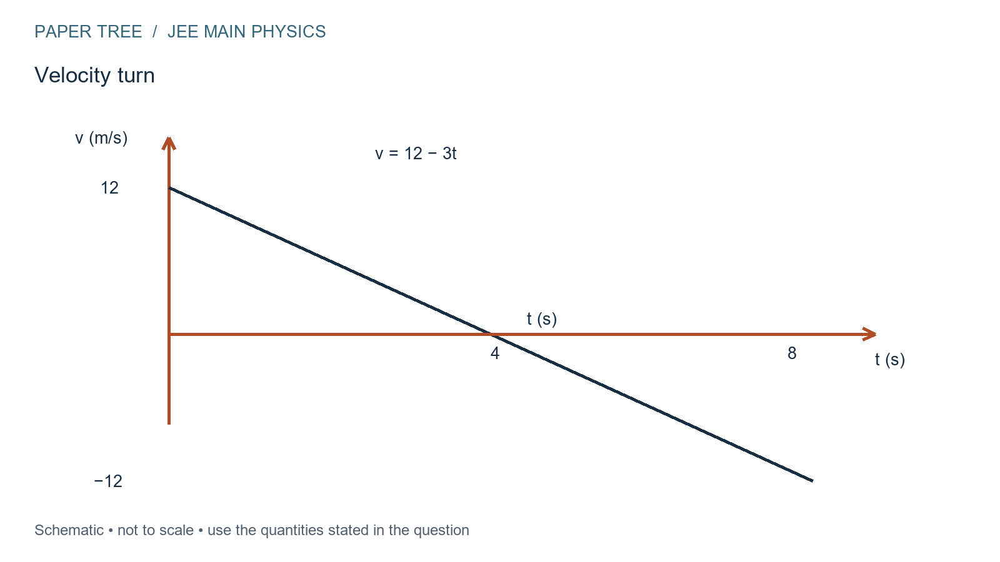
- A. 12 m
- B. 21.1765 m
- C. 24 m
- D. 48 m
Answer and explanation
B. 21.1765 m
The separation is z=x−x_D=10t−1.7t². The condition 0≤z≤12 gives [0,1.67955232] and [4.20280062,5.88235294] s. The particle reverses at 4 s, outside both intervals: its velocity is positive on the first and negative on the second. Integrating |v| over these two intervals gives [x(a)−x(0)]+[x(b)−x(c)]=21.1764706 m. The full-interval triangle area would count inactive motion; twice the 12 m relative-distance window also fails because the detector accelerates.
A particle has v(t) = 12−3t m/s for 0 ≤ t ≤ 8 s. It starts at x = 5 m. Positive velocity is along the positive x-axis. What is the average speed over the complete interval? Choose the closest value.
Use ideal particle motion with uniform gravity and negligible air resistance unless stated otherwise.
- A. 3 m/s
- B. 12 m/s
- C. 0 m/s
- D. 6 m/s
Answer and explanation
D. 6 m/s
The velocity changes sign at t = b/a = 4 s. Integrate |v| on either side of that instant: distance = b²/(2a)+(aT−b)²/(2a) = 48 m. The signed displacement is bT−aT²/2 = 0 m, so final x = 5 m and average speed = 6 m/s.
For the requested outcome — What is the average speed over the complete interval? — the result is 6 m/s.
A particle has v(t) = 12−3t m/s for 0 ≤ t ≤ 8 s. It starts at x = 5 m. Positive velocity is along the positive x-axis. What is the final position coordinate? Choose the closest value.
Use ideal particle motion with uniform gravity and negligible air resistance unless stated otherwise.
- A. 10 m
- B. 53 m
- C. 0 m
- D. 5 m
Answer and explanation
D. 5 m
The velocity changes sign at t = b/a = 4 s. Integrate |v| on either side of that instant: distance = b²/(2a)+(aT−b)²/(2a) = 48 m. The signed displacement is bT−aT²/2 = 0 m, so final x = 5 m and average speed = 6 m/s.
For the requested outcome — What is the final position coordinate? — the result is 5 m.
A particle has v(t) = 10−2t m/s for 0 ≤ t ≤ ξ s. It starts at x = -4 m. Positive velocity is along the positive x-axis. The recorded value of total distance travelled during the interval is 74 m. Which listed positive value of ξ is consistent with this measurement?
Use ideal particle motion with uniform gravity and negligible air resistance unless stated otherwise.
Answer and explanation
D. 12
Use the physical relations below with the missing input ξ. Matching the measured total distance travelled during the interval gives ξ=12 in the unit assigned to ξ in the question. Substitution checks the observation:
The velocity changes sign at t = b/a = 5 s. Integrate |v| on either side of that instant: distance = b²/(2a)+(aT−b)²/(2a) = 74 m. The signed displacement is bT−aT²/2 = -24 m, so final x = -28 m and average speed = 6.166666667 m/s.
A particle has v(t) = 10−ξt m/s for 0 ≤ t ≤ 12 s. It starts at x = -4 m. Positive velocity is along the positive x-axis. The recorded value of the average speed over the complete interval is 6.166666667 m/s. Which listed positive value of ξ is consistent with this measurement?
Use ideal particle motion with uniform gravity and negligible air resistance unless stated otherwise.
Answer and explanation
A. 2
Use the physical relations below with the missing input ξ. The recorded value of the average speed over the complete interval gives ξ=2 in the unit assigned to ξ in the question. Substitution checks the observation:
The velocity changes sign at t = b/a = 5 s. Integrate |v| on either side of that instant: distance = b²/(2a)+(aT−b)²/(2a) = 74 m. The signed displacement is bT−aT²/2 = -24 m, so final x = -28 m and average speed = 6.166666667 m/s.
A particle has v(t) = ξ−2t m/s for 0 ≤ t ≤ 12 s. It starts at x = -4 m. Positive velocity is along the positive x-axis. The recorded value of the final position coordinate is -28 m. Which listed positive value of ξ is consistent with this measurement?
Use ideal particle motion with uniform gravity and negligible air resistance unless stated otherwise.
Answer and explanation
B. 10
Use the physical relations below with the missing input ξ. The recorded value of the final position coordinate gives ξ=10 in the unit assigned to ξ in the question. Substitution checks the observation:
The velocity changes sign at t = b/a = 5 s. Integrate |v| on either side of that instant: distance = b²/(2a)+(aT−b)²/(2a) = 74 m. The signed displacement is bT−aT²/2 = -24 m, so final x = -28 m and average speed = 6.166666667 m/s.
A body of mass 2 kg moves in a circle of radius 3 m with angular velocity 2 rad s⁻¹. The centripetal force is:
Use the stated friction model, massless inextensible strings and massless frictionless pulleys unless specified otherwise.
- A. 12 N
- B. 24 N
- C. 6 N
- D. 48 N
Answer and explanation
B. 24 N
F = m r omega² = 2 × 3 × (2)² = 2 × 3 × 4 = 24 N.
A 4 kg block on a horizontal rough table is connected over a smooth massless pulley to a hanging mass. In one trial a hanging mass 3 kg descends with acceleration 3.142857143 m/s². In another, a hanging mass 2 kg is initially pulled upward and, while still moving upward, has downward acceleration 4.666666667 m/s². The same kinetic friction coefficient applies. An additional hanging mass 5 kg is then used and moves downward from rest. Take g=10 m/s². Find the tension in the third trial. Choose the closest value.
Use the stated friction model, massless inextensible strings and massless frictionless pulleys unless specified otherwise.
- A. 26.67 N
- B. 53.33 N
- C. -26.67 N
- D. 13.33 N
Answer and explanation
A. 26.67 N
For downward motion, (m+h1)a1=h1g−μmg. During upward motion, friction reverses, so (m+h2)a2=h2g+μmg. Both give μ=0.2. With h3, a=4.666666667 m/s² and T=h3(g−a)=26.66666667 N. The two-metre descent takes 0.9258200998 s and generates 16 J of heat.
Requested result: 26.67 N.
For a frictionless banked road of radius r, the angle of banking θ for a design speed v satisfies:
Use the stated friction model, massless inextensible strings and massless frictionless pulleys unless specified otherwise.
- A. tan θ = v² / (r g)
- B. sin θ = v² / (r g)
- C. tan θ = r g / v²
- D. tan θ = v / (r g)
Answer and explanation
A. tan θ = v² / (r g)
Resolving the normal reaction on a frictionless banked road gives tan θ = v² / (r g).
A fixed incline inside an elevator has sinθ=0.8 and cosθ=0.6. A block of mass 3 kg initially rests on it. The elevator accelerates upward at 5 m/s². A force P parallel UP the incline is increased slowly until upward motion is impending. The static and kinetic friction coefficients are 0.4 and 0.2. P is then held at that threshold while the block slides upward through ξ m relative to the elevator. Take g=10 m/s². In this arrangement, the following outcome is measured: the work done by P in the elevator frame over that motion = 93.6 J. Which listed positive value of ξ is consistent with that outcome?
Use the stated friction model, massless inextensible strings and massless frictionless pulleys unless specified otherwise.
Answer and explanation
C. 2
Use the coupled physical relations below. The missing input is ξ=2 in the units assigned in the stem.
Effective downward gravity is g+a. Thus N=27 N. At impending upward slip, friction is downward and P=46.8 N. Once sliding begins, friction falls to μkN, leaving relative acceleration 1.8 m/s². Hence speed=2.683281573 m/s, applied-force work=93.6 J and frictional heat=10.8 J.
The centripetal force acting on a body in uniform circular motion is directed:
Use the stated friction model, massless inextensible strings and massless frictionless pulleys unless specified otherwise.
- A. towards the centre of the circle
- B. perpendicular to the plane of the circle
- C. away from the centre of the circle
- D. along the tangent to the circle
Answer and explanation
A. towards the centre of the circle
Centripetal force always points radially inward, towards the centre of the circular path.
A road of radius 100 m is designed for a speed of 30 m s⁻¹. Taking g = 10 m s⁻², the value of tan θ for the banking angle is:
Use the stated friction model, massless inextensible strings and massless frictionless pulleys unless specified otherwise.
Answer and explanation
A. 0.9
tan θ = v²/(r g) = (30)²/(100 × 10) = 900/1000 = 0.9.
The work done by the centripetal force on a body in uniform circular motion over one complete revolution is:
Use the stated friction model, massless inextensible strings and massless frictionless pulleys unless specified otherwise.
- A. positive and equal to the kinetic energy
- B. equal to the centripetal force times the circumference
- C. zero
- D. negative
Answer and explanation
C. zero
The centripetal force is always perpendicular to the velocity, so the angle is 90° and the work done is zero.
Roads are banked at curves mainly to:
Use the stated friction model, massless inextensible strings and massless frictionless pulleys unless specified otherwise.
- A. increase the friction between tyres and road
- B. increase the speed limit without any centripetal force
- C. reduce the weight of the vehicle
- D. provide a component of the normal reaction as centripetal force
Answer and explanation
D. provide a component of the normal reaction as centripetal force
Tilting the road allows the horizontal component of the normal reaction to supply centripetal force, reducing reliance on friction.
For a car taking a turn on a level road, the centripetal force is provided by:
Use the stated friction model, massless inextensible strings and massless frictionless pulleys unless specified otherwise.
- A. the force of friction between the tyres and the road
- B. the normal reaction of the road
- C. the engine thrust
- D. the weight of the car
Answer and explanation
A. the force of friction between the tyres and the road
On a level road only friction acts horizontally, so friction supplies the required centripetal force.
In an Atwood machine, masses of 5 kg and 3 kg hang from the ends of a light string over a light frictionless pulley, and the pulley itself hangs from a spring balance. Taking g = 10 m s⁻², the reading of the spring balance is:
Use the stated friction model, massless inextensible strings and massless frictionless pulleys unless specified otherwise.
- A. 75 N
- B. 20 N
- C. 37.5 N
- D. 80 N
Answer and explanation
A. 75 N
The acceleration is (5 - 3) × 10/8 = 2.5 m s⁻² and the tension is 2 × 5 × 3 × 10/8 = 37.5 N. The pulley is light, so the balance must simply support the two string portions, giving a reading of 2 × 37.5 = 75 N. This is less than the combined weight of 80 N, the shortfall of 5 N being exactly the net downward rate of change of momentum of the two masses, since (5 - 3) × 2.5 = 5 N.
A block of mass 10 kg on a smooth horizontal table is joined by a light string over a frictionless pulley at the edge to a hanging block of mass 10 kg. In a second experiment the hanging block is removed and the free end of the string is pulled straight down with a steady force of 100 N. Taking g = 10 m s⁻², the acceleration of the block on the table is:
Use the stated friction model, massless inextensible strings and massless frictionless pulleys unless specified otherwise.
- A. 5 m s⁻² in both cases
- B. 10 m s⁻² in the first case and 5 m s⁻² in the second
- C. 10 m s⁻² in both cases
- D. 5 m s⁻² in the first case and 10 m s⁻² in the second
Answer and explanation
D. 5 m s⁻² in the first case and 10 m s⁻² in the second
In the first case the driving force is 100 N but the moving mass is 20 kg, so a = 100/20 = 5 m s⁻² and the tension is 50 N, not 100 N. In the second case the 100 N acts directly on the string and only the 10 kg block has to be accelerated, so a = 100/10 = 10 m s⁻². A hanging weight is therefore not the same as an equal steady pull, because the hanging body must itself be accelerated.
A taut massless string passes over a fixed massless pulley with a frictionless axle. Which statement about the tension is correct?
Use the stated friction model, massless inextensible strings and massless frictionless pulleys unless specified otherwise.
- A. The tension is zero at the point where the string touches the pulley.
- B. The tension has the same magnitude at every point along the string.
- C. The tension is greater on the side carrying the heavier mass.
- D. The tension increases steadily with the length of string paid out.
Answer and explanation
B. The tension has the same magnitude at every point along the string.
For a pulley of negligible rotational inertia and a frictionless axle, torque balance requires equal tensions on its sides. Massless straight string segments transmit that same tension. This statement does not apply to a pulley with significant rotational inertia.
A block of mass 2 kg lies on a smooth plane inclined at 30°, and is joined by a light string over a frictionless pulley at the top of the incline to a block of mass 4 kg hanging vertically. Taking g = 10 m s⁻², the acceleration of the system is:
Use the stated friction model, massless inextensible strings and massless frictionless pulleys unless specified otherwise.
- A. 5 m s⁻²
- B. 6.7 m s⁻²
- C. 3.3 m s⁻²
- D. 10 m s⁻²
Answer and explanation
A. 5 m s⁻²
The hanging block pulls with 4 × 10 = 40 N, while the block on the incline is held back by the component of its weight along the plane, 2 × 10 x sin 30 = 10 N. The net driving force is 30 N and the total mass is 6 kg, so a = 30/6 = 5 m s⁻².
A block of mass 3 kg rests on a block of mass 5 kg on a smooth horizontal floor. The upper/lower static and kinetic friction coefficients are 0.3 and ξ. A horizontal force 40 N is applied to the LOWER block from rest. Take g=10 m/s². The applied force is above the threshold for slip. The blocks remain in contact horizontally for the time 1.5 s. In this arrangement, the following outcome is measured: the lower-to-upper kinetic-energy ratio at that time = 19.26666667 . Which listed positive value of ξ is consistent with that outcome?
Use the stated friction model, massless inextensible strings and massless frictionless pulleys unless specified otherwise.
Answer and explanation
A. 0.2
Use the coupled physical relations below. The missing input is ξ=0.2 in the units assigned in the stem.
Sticking would require friction mF/(m+M); its limiting force is 24 N. Since F exceeds that, use kinetic friction. The accelerations are au=2 and al=6.8 m/s². Relative sliding distance is 5.4 m, heat is friction times that distance, 32.4 J. The kinetic-energy ratio is M al²/(m au²)=19.26666667. Frictional heat is not friction times either individual ground displacement.
A block of mass 2 kg rests on a block of mass 3 kg on a smooth horizontal floor. The upper/lower static and kinetic friction coefficients are 0.4 and 0.3. A horizontal force 30 N is applied to the LOWER block from rest. Take g=10 m/s². The applied force is above the threshold for slip. The blocks remain in contact horizontally for the time 2 s. Find the thermal energy generated at the interface over that time. Choose the closest value.
Use the stated friction model, massless inextensible strings and massless frictionless pulleys unless specified otherwise.
- A. 30 J
- B. 120 J
- C. -60 J
- D. 60 J
Answer and explanation
D. 60 J
Sticking would require friction mF/(m+M); its limiting force is 20 N. Since F exceeds that, use kinetic friction. The accelerations are au=3 and al=8 m/s². Relative sliding distance is 10 m, heat is friction times that distance, 60 J. The kinetic-energy ratio is M al²/(m au²)=10.66666667. Frictional heat is not friction times either individual ground displacement.
Requested result: 60 J.
Two blocks are attached to the ends of one taut light inextensible string passing over a single fixed pulley. Each block moves along its straight string segment. At every instant:
Use the stated friction model, massless inextensible strings and massless frictionless pulleys unless specified otherwise.
- A. the heavier block has the larger acceleration
- B. their velocities are equal in both magnitude and direction whatever the arrangement
- C. the magnitudes of their accelerations along the string are equal
- D. their accelerations are in the inverse ratio of their masses
Answer and explanation
C. the magnitudes of their accelerations along the string are equal
Since the string cannot stretch, the speed at which one end moves along the string must equal the speed at which the other end moves along it. Differentiating, the magnitudes of the accelerations along the string are equal, even though the directions may differ, as they do on either side of a pulley.
Two blocks of masses 2 kg and 3 kg are placed in contact on a smooth horizontal surface and a horizontal force of 10 N is applied to the outer face of the 2 kg block. The acceleration of the blocks is:
Use the stated friction model, massless inextensible strings and massless frictionless pulleys unless specified otherwise.
- A. 5 m s⁻²
- B. 10 m s⁻²
- C. 2 m s⁻²
- D. 3.3 m s⁻²
Answer and explanation
C. 2 m s⁻²
The two blocks stay in contact and so share a common acceleration. Treating them as a single body of mass 5 kg, a = 10/5 = 2 m s⁻².
Two masses of 3 kg and 2 kg hang from the two ends of a light string passing over a frictionless pulley. Taking g = 10 m s⁻², the acceleration of the system is:
Use the stated friction model, massless inextensible strings and massless frictionless pulleys unless specified otherwise.
- A. 5 m s⁻²
- B. 10 m s⁻²
- C. 2 m s⁻²
- D. 1 m s⁻²
Answer and explanation
C. 2 m s⁻²
The net driving force is the difference of the weights, (3 - 2) × 10 = 10 N, while the mass being accelerated is the total, 3 + 2 = 5 kg. Hence a = 10/5 = 2 m s⁻², with the heavier mass descending.
A boy of mass 40 kg stands at rest on a boat of mass 160 kg floating on still water. He then walks along the boat with a speed of 1 m s⁻¹ relative to the water. Neglecting the resistance of the water, the speed of the boat relative to the water is:
Use the stated friction model, massless inextensible strings and massless frictionless pulleys unless specified otherwise.
- A. 4 m s⁻¹
- B. 0.25 m s⁻¹
- C. 1 m s⁻¹
- D. 0.5 m s⁻¹
Answer and explanation
B. 0.25 m s⁻¹
Before the boy walks, the system is at rest, and the water offers no horizontal force, so the total momentum stays zero. The boy carries 40 × 1 = 40 kg m s⁻¹ forward, so the boat carries 40 kg m s⁻¹ backward and its speed is 40/160 = 0.25 m s⁻¹.
Two trolleys X and Y of masses 2 kg and 6 kg are held together on a smooth horizontal track with a compressed spring between them. When they are released, the ratio of the speed of X to that of Y is:
Use the stated friction model, massless inextensible strings and massless frictionless pulleys unless specified otherwise.
- A. 1 : 3
- B. 9 : 1
- C. 3 : 1
- D. 1 : 1
Answer and explanation
C. 3 : 1
The spring exerts internal forces only, so the total momentum stays zero. Hence 2 v_X = 6 v_Y, giving v_X/v_Y = 6/2 = 3. The light trolley moves off three times as fast.
A shell at rest explodes into three fragments. Two of them, each of mass 1 kg, fly off at right angles to each other, each with a speed of 10 m s⁻¹. The third fragment has mass 2 kg. Its speed is:
Use the stated friction model, massless inextensible strings and massless frictionless pulleys unless specified otherwise.
- A. 10 m s⁻¹
- B. 20 m s⁻¹
- C. 5 √(2) m s⁻¹
- D. 10 √(2) m s⁻¹
Answer and explanation
C. 5 √(2) m s⁻¹
Each 1 kg fragment carries momentum 1 × 10 = 10 kg m s⁻¹, and the two are perpendicular, so their resultant has magnitude 10 √(2) kg m s⁻¹. The third fragment must carry an equal momentum in the opposite direction, so 2 v = 10 √(2) and v = 5 √(2), about 7.1 m s⁻¹.
A stationary bomb explodes into several fragments. Which statement about the fragments is correct?
Use the stated friction model, massless inextensible strings and massless frictionless pulleys unless specified otherwise.
- A. Their total kinetic energy is unchanged because momentum is conserved
- B. Both their total momentum and their total kinetic energy are zero
- C. Their total momentum is greater than zero because the explosion supplies momentum
- D. Their total momentum is zero while their total kinetic energy is greater than before the explosion
Answer and explanation
D. Their total momentum is zero while their total kinetic energy is greater than before the explosion
The explosive forces are internal, so the total momentum stays at its initial value of zero, with the fragment momenta cancelling as vectors. The chemical energy stored in the charge is released and appears largely as kinetic energy of the fragments, so the total kinetic energy rises from zero to a positive value.
The total linear momentum of a system of particles stays constant in time provided:
Use the stated friction model, massless inextensible strings and massless frictionless pulleys unless specified otherwise.
- A. the net external force on the system is zero
- B. all the particles of the system have equal masses
- C. the total kinetic energy of the system is constant
- D. the net internal force on the system is zero
Answer and explanation
A. the net external force on the system is zero
Summing the second law over all the particles, the internal forces cancel in pairs by the third law, leaving dP/dt equal to the net external force. If that force is zero the total momentum P does not change, whatever violent interactions take place inside the system.
An initially stationary isolated gun of mass 4 kg after firing ejects a 20 g bullet at 400 m/s relative to the ground. Neglect external horizontal impulse. Find the recoil speed of the gun.
Use the stated friction model, massless inextensible strings and massless frictionless pulleys unless specified otherwise.
- A. 400 m s⁻¹
- B. 2 m s⁻¹
- C. 0.5 m s⁻¹
- D. 8 m s⁻¹
Answer and explanation
B. 2 m s⁻¹
The bullet carries momentum 0.02 × 400 = 8 kg m s⁻¹. The gun must carry 8 kg m s⁻¹ backward, so its recoil speed is 8/4 = 2 m s⁻¹.
A rocket accelerates forward in outer space because:
Use the stated friction model, massless inextensible strings and massless frictionless pulleys unless specified otherwise.
- A. the pressure of the burning gases is the same in all directions inside the rocket
- B. the gases ejected backward carry momentum, so the rocket gains an equal momentum forward
- C. the burning of fuel reduces the weight of the rocket
- D. the ejected gases push against the surrounding air
Answer and explanation
B. the gases ejected backward carry momentum, so the rocket gains an equal momentum forward
The rocket and its fuel form a system with no external force in free space, so the total momentum stays constant. The exhaust gases stream backward with large momentum, and the remaining rocket must acquire an equal forward momentum. Equivalently, by the third law the rocket pushes the gases back and the gases push the rocket forward.
A fixed incline inside an elevator has sinθ=0.8 and cosθ=0.6. A block of mass 3 kg initially rests on it. The elevator accelerates upward at ξ m/s². A force P parallel UP the incline is increased slowly until upward motion is impending. The static and kinetic friction coefficients are 0.4 and 0.2. P is then held at that threshold while the block slides upward through 2 m relative to the elevator. Take g=10 m/s². In this arrangement, the following outcome is measured: the final speed relative to the elevator = 2.683281573 m/s. Which listed positive value of ξ is consistent with that outcome?
Use the stated friction model, massless inextensible strings and massless frictionless pulleys unless specified otherwise.
Answer and explanation
D. 5
Use the coupled physical relations below. The missing input is ξ=5 in the units assigned in the stem.
Effective downward gravity is g+a. Thus N=27 N. At impending upward slip, friction is downward and P=46.8 N. Once sliding begins, friction falls to μkN, leaving relative acceleration 1.8 m/s². Hence speed=2.683281573 m/s, applied-force work=93.6 J and frictional heat=10.8 J.
A man of mass 60 kg stands on a trolley of mass 40 kg, both at rest on a smooth horizontal track. The man jumps off horizontally with a speed of 4 m s⁻¹ with respect to the ground. The speed of the trolley just afterwards is:
Use the stated friction model, massless inextensible strings and massless frictionless pulleys unless specified otherwise.
- A. 4 m s⁻¹
- B. 1.5 m s⁻¹
- C. 6 m s⁻¹
- D. 2.4 m s⁻¹
Answer and explanation
C. 6 m s⁻¹
The track is smooth, so there is no external horizontal force and the total momentum stays zero. The man carries 60 × 4 = 240 kg m s⁻¹ forward, so the trolley must carry 240 kg m s⁻¹ backward. Its speed is 240/40 = 6 m s⁻¹, and it is directed opposite to the jump.
A block of mass 2 kg rests on a block of mass 3 kg on a smooth horizontal floor. The upper/lower static and kinetic friction coefficients are 0.4 and 0.3. A horizontal force 30 N is applied to the LOWER block from rest. Take g=10 m/s². The applied force is above the threshold for slip. The blocks remain in contact horizontally for the time 2 s. Find the lower block’s displacement relative to the upper block after that time. Choose the closest value.
Use the stated friction model, massless inextensible strings and massless frictionless pulleys unless specified otherwise.
- A. 20 m
- B. 5 m
- C. 10 m
- D. -10 m
Answer and explanation
C. 10 m
Sticking would require friction mF/(m+M); its limiting force is 20 N. Since F exceeds that, use kinetic friction. The accelerations are au=3 and al=8 m/s². Relative sliding distance is 10 m, heat is friction times that distance, 60 J. The kinetic-energy ratio is M al²/(m au²)=10.66666667. Frictional heat is not friction times either individual ground displacement.
Requested result: 10 m.
A 6 kg block on a horizontal rough table is connected over a smooth massless pulley to a hanging mass. In one trial a hanging mass 4 kg descends with acceleration 2.2 m/s². In another, a hanging mass 3 kg is initially pulled upward and, while still moving upward, has downward acceleration ξ m/s². The same kinetic friction coefficient applies. An additional hanging mass 6 kg is then used and moves downward from rest. Take g=10 m/s². In this arrangement, the following outcome is measured: the tension in the third trial = 39 N. Which listed positive value of ξ is consistent with that outcome?
Use the stated friction model, massless inextensible strings and massless frictionless pulleys unless specified otherwise.
- A. 8
- B. 4
- C. 2.666666667
- D. 5.333333333
Answer and explanation
D. 5.333333333
Use the coupled physical relations below. The missing input is ξ=5.333333333 in the units assigned in the stem.
For downward motion, (m+h1)a1=h1g−μmg. During upward motion, friction reverses, so (m+h2)a2=h2g+μmg. Both give μ=0.3. With h3, a=3.5 m/s² and T=h3(g−a)=39 N. The two-metre descent takes 1.069044968 s and generates 36 J of heat.
A set of concurrent forces keeps a body in equilibrium. This requires that:
Use the stated friction model, massless inextensible strings and massless frictionless pulleys unless specified otherwise.
- A. the sum of the magnitudes of all the forces is zero
- B. the largest force is equal to the sum of the remaining forces
- C. all the forces have equal magnitudes
- D. the vector sum of all the forces is zero
Answer and explanation
D. the vector sum of all the forces is zero
Equilibrium under concurrent forces means no net force, and force is a vector, so the requirement is that the vector sum vanishes. In practice this is applied by resolving all the forces along two perpendicular directions and setting each set of components to sum to zero.
The normal reaction exerted by a surface on a body resting on it:
Use the stated friction model, massless inextensible strings and massless frictionless pulleys unless specified otherwise.
- A. acts along the perpendicular to the surface of contact
- B. always has magnitude equal to the weight of the body
- C. acts along the direction in which the body tends to slide
- D. acts vertically upward whatever the orientation of the surface
Answer and explanation
A. acts along the perpendicular to the surface of contact
The contact force between two surfaces is resolved into a component perpendicular to the plane of contact, called the normal reaction, and a component along that plane, called friction. On an incline of angle θ the normal reaction is m g cos θ, which is less than the weight.
A block of mass 10 kg rests on a smooth plane inclined at 45° to the horizontal and is held in place by a horizontal force. Taking g = 10 m s⁻², the horizontal force and the normal reaction are:
Use the stated friction model, massless inextensible strings and massless frictionless pulleys unless specified otherwise.
- A. 100 N and 100 N
- B. 100 √(2) N and 100 N
- C. 100 N and 100 √(2) N
- D. 50 N and 100 √(2) N
Answer and explanation
C. 100 N and 100 √(2) N
Resolving along the plane, the component of the weight down the plane is m g sin 45 and the component of the horizontal force up the plane is F cos 45. Equating gives F = m g tan 45 = 100 × 1 = 100 N. Resolving perpendicular to the plane, N = m g cos 45 + F sin 45 = 100 × 0.707 + 100 × 0.707, which is 100 √(2), about 141.4 N. The normal reaction is thus larger than the weight because the horizontal force presses the block into the plane.
A body of weight 100 N hangs from the point where two light strings meet. One string makes 30° with the horizontal and the other makes 60° with the horizontal, on opposite sides. The tensions are:
Use the stated friction model, massless inextensible strings and massless frictionless pulleys unless specified otherwise.
- A. 100 N in the string at 30° and 100 N in the string at 60°
- B. 50 N in the string at 30° and 50 √(3) N in the string at 60°
- C. 50 √(3) N in the string at 30° and 50 N in the string at 60°
- D. 50 N in the string at 30° and 50 N in the string at 60°
Answer and explanation
B. 50 N in the string at 30° and 50 √(3) N in the string at 60°
Let T1 be the tension in the string at 30° and T2 that in the string at 60°. Horizontal balance gives T1 cos 30 = T2 cos 60, so T2 = T1 √(3). Vertical balance gives T1 sin 30 + T2 sin 60 = 100, that is 0.5 T1 + (√(3) T1)(√(3)/2) = 100, which simplifies to 2 T1 = 100. Hence T1 = 50 N and T2 = 50 √(3), about 86.6 N. The strings are perpendicular to each other, so a check is that 50² + (50 √(3))² = 100².
A body of mass 5 kg hangs from a light string fixed to the ceiling. A horizontal force holds the string steadily at 45° to the vertical. Taking g = 10 m s⁻², the magnitude of the horizontal force is:
Use the stated friction model, massless inextensible strings and massless frictionless pulleys unless specified otherwise.
- A. 50 √(2) N
- B. 50 N
- C. 25 N
- D. 100 N
Answer and explanation
B. 50 N
The vertical component of the tension balances the weight, so T cos 45 = 50 N, and the horizontal component balances the applied force, so T sin 45 = F. Dividing gives F = m g tan 45 = 50 × 1 = 50 N. The tension itself is 50/cos 45 = 50 √(2), about 70.7 N.
A body of weight 100 N rests on a smooth plane inclined at 30° to the horizontal and is held in place by a light string parallel to the plane. The tension in the string and the normal reaction are:
Use the stated friction model, massless inextensible strings and massless frictionless pulleys unless specified otherwise.
- A. 100 N and 50 √(3) N
- B. 50 √(3) N and 50 N
- C. 100 N and 100 N
- D. 50 N and 50 √(3) N
Answer and explanation
D. 50 N and 50 √(3) N
Resolving the weight along and perpendicular to the plane gives components W sin 30 = 100 × 0.5 = 50 N down the plane and W cos 30 = 100 × (√(3)/2) = 50 √(3) N into the plane. The string balances the first and the normal reaction balances the second, giving T = 50 N and N = 50 √(3), about 86.6 N.
A body moves along a straight line with constant speed while several forces act on it. It follows that:
Use the stated friction model, massless inextensible strings and massless frictionless pulleys unless specified otherwise.
- A. the body must appear to be at rest in every frame of reference
- B. the vector sum of the forces is zero, although the individual forces need not be zero
- C. each of the forces acting on the body must separately be zero
- D. exactly two forces must be acting on the body
Answer and explanation
B. the vector sum of the forces is zero, although the individual forces need not be zero
Constant speed along a straight line means zero acceleration, so by the second law the net force must vanish. This is called dynamic equilibrium. A block sliding at steady speed on a rough floor under an applied force is a standard example: the applied force and friction are individually large but they cancel.
For typical dry surfaces under the same normal load, kinetic friction is generally:
Use the stated friction model, massless inextensible strings and massless frictionless pulleys unless specified otherwise.
- A. zero once the body has started sliding
- B. somewhat greater than the limiting force of static friction
- C. exactly equal to the limiting force of static friction
- D. somewhat less than the limiting force of static friction
Answer and explanation
D. somewhat less than the limiting force of static friction
In the usual dry-friction model the kinetic coefficient is lower than the static limiting coefficient. This is an empirical trend for ordinary contacts, rather than a universal inequality for every material and condition.
A car moving at 20 m s⁻¹ on a level road brakes so hard that its wheels lock and it skids to rest. The coefficient of kinetic friction is 0.5 and g = 10 m s⁻². The distance the car skids is:
Use the stated friction model, massless inextensible strings and massless frictionless pulleys unless specified otherwise.
- A. 40 m
- B. 10 m
- C. 80 m
- D. 20 m
Answer and explanation
A. 40 m
The retardation is 0.5 × 10 = 5 m s⁻². Then s = u²/(2 a) = 400/10 = 40 m. Doubling the speed would quadruple this distance, which is why speed limits matter so much.
A block of mass 5 kg rests on a horizontal floor for which the coefficient of static friction is 0.4. Taking g = 10 m s⁻², the limiting force of friction is:
Use the stated friction model, massless inextensible strings and massless frictionless pulleys unless specified otherwise.
- A. 50 N
- B. 2 N
- C. 125 N
- D. 20 N
Answer and explanation
D. 20 N
The normal reaction is N = 5 × 10 = 50 N. Hence the limiting friction is 0.4 × 50 = 20 N. Any applied horizontal force smaller than 20 N will be exactly balanced by friction and the block will stay at rest.
A body takes twice as long to slide from rest down a rough plane inclined at 45° as it takes to slide down a smooth plane of the same inclination and the same length. The coefficient of friction is:
Use the stated friction model, massless inextensible strings and massless frictionless pulleys unless specified otherwise.
- A. 0.6
- B. 0.25
- C. 0.5
- D. 0.75
Answer and explanation
D. 0.75
For the same length travelled from rest, doubling the time means the acceleration is one quarter as large. On the smooth plane a = g sin θ, and on the rough plane a = g(sin θ - mu cos θ). Setting the second equal to one quarter of the first gives sin θ - mu cos θ = (1/4) sin θ, so mu cos θ = (3/4) sin θ and mu = (3/4) tan θ. With θ = 45°, tan θ = 1 and mu = 0.75.
A rectangular brick can be made to rest on a table on its broad face or on its narrow face. The limiting friction between the brick and the table:
Use the stated friction model, massless inextensible strings and massless frictionless pulleys unless specified otherwise.
- A. is greater when the brick rests on its broad face, in proportion to the larger area
- B. is the same in both positions, since it does not depend on the apparent area of contact
- C. is greater when the brick rests on its narrow face, in inverse proportion to the area
- D. is zero when the brick rests on its narrow face, since the contact is too small
Answer and explanation
B. is the same in both positions, since it does not depend on the apparent area of contact
The normal reaction equals the weight of the brick in both positions, and the coefficient of friction depends only on the pair of materials. Hence the limiting friction is unchanged. The real area of microscopic contact adjusts itself so that the friction depends only on the load.
A block of mass 2 kg rests on top of a larger block, and the coefficient of static friction between the two blocks is 0.4. Taking g = 10 m s⁻², the greatest horizontal acceleration that can be given to the lower block without the upper block slipping is:
Use the stated friction model, massless inextensible strings and massless frictionless pulleys unless specified otherwise.
- A. 2 m s⁻²
- B. 10 m s⁻²
- C. 4 m s⁻²
- D. 8 m s⁻²
Answer and explanation
C. 4 m s⁻²
The upper block is accelerated solely by the friction from the block beneath it. That friction cannot exceed mu_s m g = 0.4 × 2 × 10 = 8 N, so the largest acceleration it can give the 2 kg block is 8/2 = 4 m s⁻². The mass of the upper block cancels, giving the general result a_max = mu_s g.
For the same pair of surfaces and the same normal reaction, rolling friction is:
Use the stated friction model, massless inextensible strings and massless frictionless pulleys unless specified otherwise.
- A. exactly equal to sliding friction, since the same two surfaces are involved
- B. much smaller than sliding friction, which is why wheels and ball bearings are used
- C. much larger than sliding friction, which is why brakes work by rolling
- D. independent of the normal reaction, unlike sliding friction
Answer and explanation
B. much smaller than sliding friction, which is why wheels and ball bearings are used
In rolling, the surfaces are in contact only momentarily at each point and there is no sliding at the contact, so far less resistance arises. This is why loads are moved on wheels and why ball bearings are placed between a shaft and its housing to convert sliding into rolling.
A block lies at rest on a rough horizontal floor and no horizontal force is applied to it. The force of friction acting on the block is:
Use the stated friction model, massless inextensible strings and massless frictionless pulleys unless specified otherwise.
- A. zero, since friction appears only in response to an applied force or a tendency to slide
- B. equal to the weight of the block, since the block does not move
- C. equal to the normal reaction, since the two surfaces are in contact
- D. equal to mu times the weight, since that is the value of the frictional force
Answer and explanation
A. zero, since friction appears only in response to an applied force or a tendency to slide
With no horizontal force applied there is no tendency to slide, so the horizontal equilibrium equation reads simply that friction equals zero. The quantity mu_s N is the greatest friction the surfaces can supply, not the value they always supply. The vertical equilibrium is looked after by the normal reaction balancing the weight.
A block of unknown mass M slides on a horizontal rough table and is connected by a light string over a smooth massless pulley to a hanging mass. In one trial a 3 kg hanging mass descends with acceleration 2 m/s². In a second trial a 2 kg hanging mass is initially moving upward and, while still moving upward, has downward acceleration 4 m/s². The kinetic friction coefficient is the same in both directions. In a third trial a 5 kg hanging mass descends from rest. After it has descended 2 m, the string is cut without an impulse; the table block then slides freely until it stops. Use g=10 m/s² and assume the third trial starts sliding as stated. Find the total distance travelled by the table block in the third trial, including the motion after the cut. Choose the closest value.
Use the idealisations, constants, geometry and sign conventions stated in this question. Any accompanying drawing is schematic.
- A. 2 m
- B. 3.45455 m
- C. 7.45455 m
- D. 5.45455 m
Answer and explanation
D. 5.45455 m
Let the kinetic friction force be f. The two moving trials give 30−f=2(M+3) and 20+f=4(M+2), hence M=6 kg and f=12 N, so μ=0.2. The third acceleration is (50−12)/11=38/11 m/s². After 2 m, v²=152/11 m²/s². With the string cut, deceleration is f/M=2 m/s², so the additional distance is 38/11 m. Total distance = 2+38/11 = 60/11 m.
A block of mass 2 kg is pressed against a vertical wall by a horizontal force. The coefficient of static friction between the block and the wall is 0.5 and g = 10 m s⁻². The least horizontal force that will prevent the block from sliding down is:
Use the stated friction model, massless inextensible strings and massless frictionless pulleys unless specified otherwise.
- A. 10 N
- B. 40 N
- C. 4 N
- D. 20 N
Answer and explanation
B. 40 N
Here the applied force is horizontal and presses the block into the wall, so the normal reaction is N = F. The friction acts vertically upward and must support the weight, so mu F = m g. Hence F = m g/mu = 20/0.5 = 40 N. Note that the friction here is vertical, unlike the usual case of a block on the floor.
A block of mass 10 kg rests on a horizontal floor with coefficient of static friction 0.75. Taking g = 10 m s⁻², the least force that can just set the block moving, when applied at the most favourable angle above the horizontal, is:
Use the stated friction model, massless inextensible strings and massless frictionless pulleys unless specified otherwise.
- A. 100 N
- B. 75 N
- C. 60 N
- D. 125 N
Answer and explanation
C. 60 N
A pull inclined upward reduces the normal reaction and hence the friction, so it can be more economical than a horizontal pull. Balancing forces at the point of sliding gives F cos θ = mu(m g - F sin θ), so F = mu m g/(cos θ + mu sin θ). The denominator is largest when tan θ = mu, and then F = mu m g/√(1 + mu²). With mu = 0.75 and m g = 100 N this is 75/√(1 + 0.5625) = 75/1.25 = 60 N, against 75 N for a horizontal pull.
A 2 kg block is held stationary on a 45° incline. The static friction coefficient is 0.5. With g=10 m/s², what up-slope force applied parallel to the plane is just sufficient to start upward motion?
Use the stated friction model, massless inextensible strings and massless frictionless pulleys unless specified otherwise.
- A. 10 √(2) N
- B. 15 √(2) N
- C. 5 √(2) N
- D. 20 √(2) N
Answer and explanation
B. 15 √(2) N
The component of the weight along the plane is 2 × 10 x sin 45 = 20/√(2) = 10 √(2) N, about 14.1 N. The normal reaction is 2 × 10 x cos 45 = 10 √(2) N, so the friction, which now acts down the plane, is 0.5 × 10 √(2) = 5 √(2) N. The required force is the sum, 15 √(2) N, about 21.2 N.
The limiting force of static friction between two surfaces in contact is:
Use the stated friction model, massless inextensible strings and massless frictionless pulleys unless specified otherwise.
- A. directly proportional to the apparent area of contact
- B. independent of the nature of the two surfaces in contact
- C. directly proportional to the relative speed of the two surfaces
- D. directly proportional to the normal reaction between the surfaces
Answer and explanation
D. directly proportional to the normal reaction between the surfaces
The first law of friction states that the limiting friction is proportional to the normal reaction, with the coefficient of static friction as the constant of proportionality. The coefficient depends on the nature and finish of the surfaces but not on their apparent area.
A block of mass 2 kg rests on a block of mass 3 kg which lies on a smooth horizontal floor. The coefficient of static friction between the two blocks is 0.5 and g = 10 m s⁻². The largest horizontal force that can be applied to the lower block so that the two still move together is:
Use the stated friction model, massless inextensible strings and massless frictionless pulleys unless specified otherwise.
- A. 15 N
- B. 50 N
- C. 10 N
- D. 25 N
Answer and explanation
D. 25 N
The upper block can only be accelerated by friction from below, and that friction is at most 0.5 × 2 × 10 = 10 N. This gives the upper block a largest possible acceleration of 10/2 = 5 m s⁻², which is just mu_s g. While the two move together the whole 5 kg accelerates at this rate, so the largest applied force is 5 × 5 = 25 N. A larger force would make the lower block slide out from under the upper one.
A ξ kg block on a horizontal rough table is connected over a smooth massless pulley to a hanging mass. In one trial a hanging mass 4 kg descends with acceleration 2.2 m/s². In another, a hanging mass 3 kg is initially pulled upward and, while still moving upward, has downward acceleration 5.333333333 m/s². The same kinetic friction coefficient applies. An additional hanging mass 6 kg is then used and moves downward from rest. Take g=10 m/s². In this arrangement, the following outcome is measured: the heat generated in the third trial over a 2 m descent = 36 J. Which listed positive value of ξ is consistent with that outcome?
Use the stated friction model, massless inextensible strings and massless frictionless pulleys unless specified otherwise.
Answer and explanation
B. 6
Use the coupled physical relations below. The missing input is ξ=6 in the units assigned in the stem.
For downward motion, (m+h1)a1=h1g−μmg. During upward motion, friction reverses, so (m+h2)a2=h2g+μmg. Both give μ=0.3. With h3, a=3.5 m/s² and T=h3(g−a)=39 N. The two-metre descent takes 1.069044968 s and generates 36 J of heat.
A block of mass 2 kg rests on a block of mass 3 kg on a smooth horizontal floor. The upper/lower static and kinetic friction coefficients are 0.4 and 0.3. A horizontal force 30 N is applied to the LOWER block from rest. Take g=10 m/s². The applied force is above the threshold for slip. The blocks remain in contact horizontally for the time 2 s. Find the lower-to-upper kinetic-energy ratio at that time. Choose the closest value.
Use the stated friction model, massless inextensible strings and massless frictionless pulleys unless specified otherwise.
- A. -10.67
- B. 21.33
- C. 10.67
- D. 5.333
Answer and explanation
C. 10.67
Sticking would require friction mF/(m+M); its limiting force is 20 N. Since F exceeds that, use kinetic friction. The accelerations are au=3 and al=8 m/s². Relative sliding distance is 10 m, heat is friction times that distance, 60 J. The kinetic-energy ratio is M al²/(m au²)=10.66666667. Frictional heat is not friction times either individual ground displacement.
Requested result: 10.67.
A 0.15 kg cricket ball moving at 20 m/s is brought to rest in 0.1 s. Neglect other impulses during the catch. Find the magnitude of the average stopping force.
Use the stated friction model, massless inextensible strings and massless frictionless pulleys unless specified otherwise.
- A. 0.3 N
- B. 60 N
- C. 30 N
- D. 3 N
Answer and explanation
C. 30 N
The momentum change has magnitude 0.15 × 20 = 3 kg m s⁻¹. Dividing by the contact time gives F = 3/0.1 = 30 N.
A fixed incline inside an elevator has sinθ=0.6 and cosθ=0.8. A block of mass 2 kg initially rests on it. The elevator accelerates upward at 2 m/s². A force P parallel UP the incline is increased slowly until upward motion is impending. The static and kinetic friction coefficients are 0.5 and 0.25. P is then held at that threshold while the block slides upward through 3 m relative to the elevator. Take g=10 m/s². Find the final speed relative to the elevator. Choose the closest value.
Use the stated friction model, massless inextensible strings and massless frictionless pulleys unless specified otherwise.
- A. 7.589 m/s
- B. 1.897 m/s
- C. 3.795 m/s
- D. -3.795 m/s
Answer and explanation
C. 3.795 m/s
Effective downward gravity is g+a. Thus N=19.2 N. At impending upward slip, friction is downward and P=24 N. Once sliding begins, friction falls to μkN, leaving relative acceleration 2.4 m/s². Hence speed=3.794733192 m/s, applied-force work=72 J and frictional heat=14.4 J.
Requested result: 3.795 m/s.
An incline fixed in an elevator has sinθ=0.6 and cosθ=0.8. The elevator accelerates upward at 2 m/s²; take g=10 m/s². A 2 kg block is acted on by a force P whose component up the incline is 0.8P and whose component away from it is 0.6P. Starting from a value that keeps the block in static equilibrium, P is increased quasistatically until upward slip is just impending. No other applied force holds the block. It is then given an arbitrarily small upward nudge. P stays at that threshold during the subsequent upward slide. The kinetic friction coefficient is 0.20, and contact with the incline is maintained. After sliding 3.0 m relative to the elevator, its relative speed is 2.34482021 m/s. Find the coefficient of static friction. Choose the closest value.
Use the stated friction model, massless inextensible strings and massless frictionless pulleys unless specified otherwise.
Answer and explanation
D. 0.5
The measured motion gives a=v²/(2d)=0.9163636364 m/s². The normal reaction is N=19.2-0.6P. Kinetic motion requires 2a=0.8P-14.4-0.20(19.2-0.6P), hence P=21.81818182 N and N=6.109090909 N>0. At the static threshold, 0.8P=14.4+μsN, giving μs=0.50. Substitution in the kinetic equation reproduces the measured speed.
A fielder draws his hands backward while catching a fast moving ball. This action:
Use the stated friction model, massless inextensible strings and massless frictionless pulleys unless specified otherwise.
- A. increases the time of impact so that the average force on the hands is reduced, the impulse being the same
- B. reduces the impulse received by the hands so that the force becomes smaller
- C. increases the impulse but spreads it over a larger area of the palm
- D. reduces the momentum of the ball before it reaches the hands
Answer and explanation
A. increases the time of impact so that the average force on the hands is reduced, the impulse being the same
The ball must lose all its momentum, so the impulse delivered is fixed at m v whatever the fielder does. Since the impulse equals the average force times the contact time, lengthening the contact time by moving the hands back reduces the average force proportionately, and the catch hurts less.
A ball of mass 0.2 kg strikes a smooth vertical wall with a speed of 20 m s⁻¹ along a direction making 60° with the normal to the wall, and rebounds with the same speed at the same angle. The magnitude of the impulse received by the ball is:
Use the stated friction model, massless inextensible strings and massless frictionless pulleys unless specified otherwise.
- A. 4 N s
- B. 8 N s
- C. 4 √(3) N s
- D. zero
Answer and explanation
A. 4 N s
Resolve the velocity into a component along the normal, 20 cos 60 = 10 m s⁻¹, and a component along the wall, 20 sin 60 m s⁻¹. The smooth wall leaves the parallel component untouched and reverses the normal component. The change of momentum is therefore 2 × 0.2 × 10 = 4 N s, directed along the outward normal.
A 4 kg block on a horizontal rough table is connected over a smooth massless pulley to a hanging mass. In one trial a hanging mass 3 kg descends with acceleration 3.142857143 m/s². In another, a hanging mass 2 kg is initially pulled upward and, while still moving upward, has downward acceleration 4.666666667 m/s². The same kinetic friction coefficient applies. An additional hanging mass 5 kg is then used and moves downward from rest. Take g=10 m/s². Find the time to descend 2 m in the third trial. Choose the closest value.
Use the stated friction model, massless inextensible strings and massless frictionless pulleys unless specified otherwise.
- A. 1.852 s
- B. -0.9258 s
- C. 0.9258 s
- D. 0.4629 s
Answer and explanation
C. 0.9258 s
For downward motion, (m+h1)a1=h1g−μmg. During upward motion, friction reverses, so (m+h2)a2=h2g+μmg. Both give μ=0.2. With h3, a=4.666666667 m/s² and T=h3(g−a)=26.66666667 N. The two-metre descent takes 0.9258200998 s and generates 16 J of heat.
Requested result: 0.9258 s.
A horse pulls a cart forward and the cart pulls the horse backward with an equal and opposite force. The cart nevertheless accelerates forward because:
Use the stated friction model, massless inextensible strings and massless frictionless pulleys unless specified otherwise.
- A. the two forces of the pair act on different bodies, and the net force on the cart alone is forward
- B. the weight of the cart cancels the backward pull exerted by the cart
- C. the force exerted by the horse on the cart is slightly greater than the force exerted by the cart on the horse
- D. the force exerted by the cart on the horse acts only after a short time delay
Answer and explanation
A. the two forces of the pair act on different bodies, and the net force on the cart alone is forward
To find the motion of the cart, only the forces on the cart are collected. These are the forward pull of the horse and the backward friction on the wheels. The backward pull of the cart on the horse appears in the equation of motion of the horse, not of the cart. When the forward pull exceeds the friction on the cart, the cart accelerates.
An incline fixed in an elevator has sinθ=0.6 and cosθ=0.8. The elevator accelerates upward at 2 m/s²; take g=10 m/s². A 2 kg block is acted on by a force P whose component up the incline is 0.8P and whose component away from it is 0.6P. Starting from a value that keeps the block in static equilibrium, P is increased quasistatically until upward slip is just impending. No other applied force holds the block. It is then given an arbitrarily small upward nudge. P stays at that threshold during the subsequent upward slide. The kinetic friction coefficient is 0.20, and contact with the incline is maintained. The static friction coefficient is 0.50. After the block has slid 3.0 m relative to the elevator, P is switched off instantaneously. How much farther up the incline does it travel before first coming to rest relative to the elevator? Choose the closest value.
Use the stated friction model, massless inextensible strings and massless frictionless pulleys unless specified otherwise.
- A. 0.301435 m
- B. 0.6029 m
- C. 0.384 m
- D. 1 m
Answer and explanation
A. 0.301435 m
At the upward-slip threshold, 0.8P=14.4+0.50(19.2-0.6P), giving P=21.81818182 N and N=6.109090909 N. Kinetic friction gives a=0.9163636364 m/s², so v²=2a(3)=5.498181818 m²/s². After P is removed, N rises to 19.2 N and the downward acceleration magnitude is 12(0.6+0.20×0.8)=9.12 m/s². The additional upward distance is v²/(2×9.12)=0.3014354067 m. This is the first stopping point; later reversal is not part of the question.
A block of mass ξ kg rests on a block of mass 5 kg on a smooth horizontal floor. The upper/lower static and kinetic friction coefficients are 0.3 and 0.2. A horizontal force 40 N is applied to the LOWER block from rest. Take g=10 m/s². The applied force is above the threshold for slip. The blocks remain in contact horizontally for the time 1.5 s. In this arrangement, the following outcome is measured: the thermal energy generated at the interface over that time = 32.4 J. Which listed positive value of ξ is consistent with that outcome?
Use the stated friction model, massless inextensible strings and massless frictionless pulleys unless specified otherwise.
Answer and explanation
D. 3
Use the coupled physical relations below. The missing input is ξ=3 in the units assigned in the stem.
Sticking would require friction mF/(m+M); its limiting force is 24 N. Since F exceeds that, use kinetic friction. The accelerations are au=2 and al=6.8 m/s². Relative sliding distance is 5.4 m, heat is friction times that distance, 32.4 J. The kinetic-energy ratio is M al²/(m au²)=19.26666667. Frictional heat is not friction times either individual ground displacement.
The position of a particle of mass 2 kg moving along a straight line is given by x = 3 t² + 4 t, where x is in metre and t in second. The magnitude of the net force acting on the particle is:
Use the stated friction model, massless inextensible strings and massless frictionless pulleys unless specified otherwise.
- A. 8 N
- B. 12 N
- C. 24 N
- D. 6 N
Answer and explanation
B. 12 N
Differentiating once gives the velocity 6 t + 4, and differentiating again gives a constant acceleration of 6 m s⁻². Hence F = m a = 2 × 6 = 12 N, and the force is constant in time.
A book lies at rest on a horizontal table. The reaction to the gravitational force exerted by the earth on the book is:
Use the stated friction model, massless inextensible strings and massless frictionless pulleys unless specified otherwise.
- A. the weight of the table pressing on the floor
- B. the normal force exerted by the book on the table
- C. the normal force exerted by the table on the book
- D. the gravitational force exerted by the book on the earth
Answer and explanation
D. the gravitational force exerted by the book on the earth
The pull of the earth on the book is gravitational. Its third law partner must be gravitational, of the same magnitude, opposite in direction, and must act on the earth. That force is the gravitational pull of the book on the earth.
The cable of a lift snaps and the lift falls freely. A person of mass 60 kg inside stands on a weighing machine. Taking g = 10 m s⁻², the machine reads:
Use the stated friction model, massless inextensible strings and massless frictionless pulleys unless specified otherwise.
- A. 300 N
- B. 600 N
- C. zero
- D. 1200 N
Answer and explanation
C. zero
In free fall the lift and the person both accelerate downward at g. The equation for the person is m g - N = m g, which gives N = 0. The person and the machine fall together and press on each other with no force, a state described as weightlessness.
A net force of 20 N acts on a body of mass 5 kg lying on a smooth horizontal surface. The acceleration produced is:
Use the stated friction model, massless inextensible strings and massless frictionless pulleys unless specified otherwise.
- A. 15 m s⁻²
- B. 0.25 m s⁻²
- C. 4 m s⁻²
- D. 100 m s⁻²
Answer and explanation
C. 4 m s⁻²
Using a = F/m with F = 20 N and m = 5 kg gives a = 20/5 = 4 m s⁻², directed along the applied force.
A fixed incline inside an elevator has sinθ=0.6 and cosθ=0.8. A block of mass 2 kg initially rests on it. The elevator accelerates upward at 2 m/s². A force P parallel UP the incline is increased slowly until upward motion is impending. The static and kinetic friction coefficients are 0.5 and 0.25. P is then held at that threshold while the block slides upward through 3 m relative to the elevator. Take g=10 m/s². Find the work done by P in the elevator frame over that motion. Choose the closest value.
Use the stated friction model, massless inextensible strings and massless frictionless pulleys unless specified otherwise.
- A. 72 J
- B. 36 J
- C. -72 J
- D. 144 J
Answer and explanation
A. 72 J
Effective downward gravity is g+a. Thus N=19.2 N. At impending upward slip, friction is downward and P=24 N. Once sliding begins, friction falls to μkN, leaving relative acceleration 2.4 m/s². Hence speed=3.794733192 m/s, applied-force work=72 J and frictional heat=14.4 J.
Requested result: 72 J.
A 6 kg block on a horizontal rough table is connected over a smooth massless pulley to a hanging mass. In one trial a hanging mass 4 kg descends with acceleration 2.2 m/s². In another, a hanging mass ξ kg is initially pulled upward and, while still moving upward, has downward acceleration 5.333333333 m/s². The same kinetic friction coefficient applies. An additional hanging mass 6 kg is then used and moves downward from rest. Take g=10 m/s². In this arrangement, the following outcome is measured: the time to descend 2 m in the third trial = 1.069044968 s. Which listed positive value of ξ is consistent with that outcome?
Use the stated friction model, massless inextensible strings and massless frictionless pulleys unless specified otherwise.
Answer and explanation
B. 3
Use the coupled physical relations below. The missing input is ξ=3 in the units assigned in the stem.
For downward motion, (m+h1)a1=h1g−μmg. During upward motion, friction reverses, so (m+h2)a2=h2g+μmg. Both give μ=0.3. With h3, a=3.5 m/s² and T=h3(g−a)=39 N. The two-metre descent takes 1.069044968 s and generates 36 J of heat.
A block of mass 3 kg rests on a block of mass 5 kg on a smooth horizontal floor. The upper/lower static and kinetic friction coefficients are 0.3 and 0.2. A horizontal force ξ N is applied to the LOWER block from rest. Take g=10 m/s². The applied force is above the threshold for slip. The blocks remain in contact horizontally for the time 1.5 s. In this arrangement, the following outcome is measured: the lower block’s displacement relative to the upper block after that time = 5.4 m. Which listed positive value of ξ is consistent with that outcome?
Use the stated friction model, massless inextensible strings and massless frictionless pulleys unless specified otherwise.
Answer and explanation
B. 40
Use the coupled physical relations below. The missing input is ξ=40 in the units assigned in the stem.
Sticking would require friction mF/(m+M); its limiting force is 24 N. Since F exceeds that, use kinetic friction. The accelerations are au=2 and al=6.8 m/s². Relative sliding distance is 5.4 m, heat is friction times that distance, 32.4 J. The kinetic-energy ratio is M al²/(m au²)=19.26666667. Frictional heat is not friction times either individual ground displacement.
A monkey of mass 20 kg climbs a rope that can withstand a maximum tension of 300 N. Taking g = 10 m s⁻², the greatest upward acceleration with which the monkey can climb without breaking the rope is:
Use the stated friction model, massless inextensible strings and massless frictionless pulleys unless specified otherwise.
- A. 10 m s⁻²
- B. 5 m s⁻²
- C. 25 m s⁻²
- D. 15 m s⁻²
Answer and explanation
B. 5 m s⁻²
The rope tension must satisfy T = m(g + a) and cannot exceed 300 N. Hence 20(10 + a) is at most 300, so 10 + a is at most 15 and a is at most 5 m s⁻². If the monkey merely hangs on, the tension is 200 N, and if it climbs with acceleration 5 m s⁻² the tension reaches exactly 300 N.
According to Newton's second law, the net external force acting on a body is equal to:
Use the stated friction model, massless inextensible strings and massless frictionless pulleys unless specified otherwise.
- A. the rate of change of its kinetic energy
- B. the rate of change of its displacement
- C. the product of its mass and its velocity
- D. the rate of change of its linear momentum
Answer and explanation
D. the rate of change of its linear momentum
The general statement of the second law is that the net external force equals the time rate of change of linear momentum. For a body of constant mass, dp/dt = m dv/dt = m a, giving the familiar form F = m a.
Newton's first law of motion is essentially a statement about which property of matter?
Use the stated friction model, massless inextensible strings and massless frictionless pulleys unless specified otherwise.
- A. The tendency of a body to resist any change in its total mass
- B. The tendency of a body to move towards a region of lower potential energy
- C. The tendency of a body to resist any change in its state of rest or of uniform motion
- D. The tendency of a body to return to its original position after being displaced
Answer and explanation
C. The tendency of a body to resist any change in its state of rest or of uniform motion
The first law says a body cannot change its own state of rest or of uniform straight line motion. This built in resistance to a change of state is called inertia, which is why the first law is also called the law of inertia. Mass is the quantitative measure of inertia.
A circular road has radius 50 m and bank angle θ with tan θ = 0.5. The coefficient of static friction is 0.2. Consider a 1000 kg car at the maximum speed at which it can follow the circle without slipping. Take g = 10 m/s². Find this maximum speed. Choose the closest value.
Use the stated friction model, massless inextensible strings and massless frictionless pulleys unless specified otherwise.
- A. 15.81 m/s
- B. 18.71 m/s
- C. 19.72 m/s
- D. 10 m/s
Answer and explanation
C. 19.72 m/s
At the upper speed limit, friction acts down the bank. Vertical balance gives N(cosθ−μsinθ)=mg, while inward force is N(sinθ+μcosθ)=mv²/r. Therefore v = 19.72026594 m/s and N = 12422.59987 N. Dividing v² by rg tanθ gives the kinetic-energy ratio 1.555555556.
For the requested outcome — Find this maximum speed. — the result is 19.72 m/s.
A circular road has radius 50 m and bank angle θ with tan θ = 0.5. The coefficient of static friction is 0.2. Consider a 1000 kg car at the maximum speed at which it can follow the circle without slipping. Take g = 10 m/s². Find the normal reaction at this limiting speed. Choose the closest value.
Use the stated friction model, massless inextensible strings and massless frictionless pulleys unless specified otherwise.
- A. 10000 N
- B. 8944 N
- C. 1.118e+04 N
- D. 1.242e+04 N
Answer and explanation
D. 1.242e+04 N
At the upper speed limit, friction acts down the bank. Vertical balance gives N(cosθ−μsinθ)=mg, while inward force is N(sinθ+μcosθ)=mv²/r. Therefore v = 19.72026594 m/s and N = 12422.59987 N. Dividing v² by rg tanθ gives the kinetic-energy ratio 1.555555556.
For the requested outcome — Find the normal reaction at this limiting speed. — the result is 1.242e+04 N.
A circular road has radius 50 m and bank angle θ with tan θ = 0.5. The coefficient of static friction is 0.2. Consider a 1000 kg car at the maximum speed at which it can follow the circle without slipping. Take g = 10 m/s². Find the ratio of the limiting kinetic energy to that at the friction-free design speed.
Use the stated friction model, massless inextensible strings and massless frictionless pulleys unless specified otherwise.
- A. 1.556
- B. 0.4286
- C. 1.247
- D. 0.7778
Answer and explanation
A. 1.556
At the upper speed limit, friction acts down the bank. Vertical balance gives N(cosθ−μsinθ)=mg, while inward force is N(sinθ+μcosθ)=mv²/r. Therefore v = 19.72026594 m/s and N = 12422.59987 N. Dividing v² by rg tanθ gives the kinetic-energy ratio 1.555555556.
For the requested outcome — Find the ratio of the limiting kinetic energy to that at the friction-free design speed. — the result is 1.556.
A circular road has radius 80 m and bank angle θ with tan θ = 0.25. The coefficient of static friction is ξ. Consider a 800 kg car at the maximum speed at which it can follow the circle without slipping. Take g = 10 m/s². The recorded value of this maximum speed is 19.46657054 m/s. Which listed positive value of ξ is consistent with this measurement?
Use the stated friction model, massless inextensible strings and massless frictionless pulleys unless specified otherwise.
Answer and explanation
B. 0.2
Use the physical relations below with the missing input ξ. Matching the recorded maximum speed gives ξ=0.2 in the unit assigned to ξ in the question. Substitution checks the observation:
At the upper speed limit, friction acts down the bank. Vertical balance gives N(cosθ−μsinθ)=mg, while inward force is N(sinθ+μcosθ)=mv²/r. Therefore v = 19.46657054 m/s and N = 8680.22237 N. Dividing v² by rg tanθ gives the kinetic-energy ratio 1.894736842.
A circular road has radius 80 m and bank angle θ with tan θ = 0.25. The coefficient of static friction is ξ. Consider a 800 kg car at the maximum speed at which it can follow the circle without slipping. Take g = 10 m/s². The recorded value of the normal reaction at this limiting speed is 8680.22237 N. Which listed positive value of ξ is consistent with this measurement?
Use the stated friction model, massless inextensible strings and massless frictionless pulleys unless specified otherwise.
Answer and explanation
A. 0.2
Use the physical relations below with the missing input ξ. The recorded value of the normal reaction at this limiting speed gives ξ=0.2 in the unit assigned to ξ in the question. Substitution checks the observation:
At the upper speed limit, friction acts down the bank. Vertical balance gives N(cosθ−μsinθ)=mg, while inward force is N(sinθ+μcosθ)=mv²/r. Therefore v = 19.46657054 m/s and N = 8680.22237 N. Dividing v² by rg tanθ gives the kinetic-energy ratio 1.894736842.
A circular road has radius 80 m and bank angle θ with tan θ = 0.25. The coefficient of static friction is ξ. Consider a 800 kg car at the maximum speed at which it can follow the circle without slipping. Take g = 10 m/s². The recorded value of the ratio of the limiting kinetic energy to that at the friction-free design speed is 1.894736842. Which listed positive value of ξ is consistent with this measurement?
Use the stated friction model, massless inextensible strings and massless frictionless pulleys unless specified otherwise.
Answer and explanation
D. 0.2
Use the physical relations below with the missing input ξ. The recorded value of the ratio of the limiting kinetic energy to that at the friction-free design speed gives ξ=0.2 in the unit assigned to ξ in the question. Substitution checks the observation:
At the upper speed limit, friction acts down the bank. Vertical balance gives N(cosθ−μsinθ)=mg, while inward force is N(sinθ+μcosθ)=mv²/r. Therefore v = 19.46657054 m/s and N = 8680.22237 N. Dividing v² by rg tanθ gives the kinetic-energy ratio 1.894736842.
Two blocks are connected over a smooth massless pulley by a light string. Block A of mass 2 kg is on a smooth 30° incline and block B of mass 4 kg is on a smooth incline whose sine is 0.8. Both inclines descend away from the pulley. Release the system from rest. Take g = 10 m/s²; B moves down its plane. Find the string tension. Choose the closest value.
Use the stated friction model, massless inextensible strings and massless frictionless pulleys unless specified otherwise.
- A. 32 N
- B. 10 N
- C. 22 N
- D. 17.33 N
Answer and explanation
D. 17.33 N
Along the planes: T−mAg sin30° = mAa and mBg sinβ−T = mBa. This gives a = 3.666666667 m/s², T = 17.33333333 N. With displacement 2 m, v = √(2ad) = 3.829708431 m/s. Net gravity work, equal to the total kinetic-energy increase, is 44 J.
For the requested outcome — Find the string tension. — the result is 17.33 N.
Two blocks are connected over a smooth massless pulley by a light string. Block A of mass 2 kg is on a smooth 30° incline and block B of mass 4 kg is on a smooth incline whose sine is 0.8. Both inclines descend away from the pulley. Release the system from rest. Take g = 10 m/s²; B moves down its plane. Find the common speed after each block moves 2 m along its plane. Choose the closest value.
Use the stated friction model, massless inextensible strings and massless frictionless pulleys unless specified otherwise.
- A. 4.472 m/s
- B. 3.83 m/s
- C. 2.708 m/s
- D. 5.657 m/s
Answer and explanation
B. 3.83 m/s
Along the planes: T−mAg sin30° = mAa and mBg sinβ−T = mBa. This gives a = 3.666666667 m/s², T = 17.33333333 N. With displacement 2 m, v = √(2ad) = 3.829708431 m/s. Net gravity work, equal to the total kinetic-energy increase, is 44 J.
For the requested outcome — Find the common speed after each block moves 2 m along its plane. — the result is 3.83 m/s.
Two blocks are connected by a light inextensible string over a smooth massless pulley. Block A (2 kg) is on a rough 30° incline, with both static and kinetic friction coefficients 0.20. Block B (4 kg) is on a smooth incline with sinβ=0.8. Both inclines descend away from the pulley. The system is released from rest. After each block has moved 2.0 m, the string is cut without imparting an impulse. The inclines are long enough; take g=10 m/s². Find the total distance A travels up its incline from its initial position to its first stopping point after the cut. Choose the closest value.
Use the stated friction model, massless inextensible strings and massless frictionless pulleys unless specified otherwise.
- A. 2.5 m
- B. 2.91779 m
- C. 3.5 m
- D. 4 m
Answer and explanation
B. 2.91779 m
The downward drive on B exceeds the weight component plus limiting friction on A, so B descends and A ascends. During connected motion, 6a=32-10-2√3, giving a=3.089316397 m/s² and v²=2a(2)=12.35726559 m²/s². After cutting, A still moves upward, so both gravity and kinetic friction act downward; its deceleration is 10(0.5+0.20 cos30°). The extra ascent is v²/[20(0.5+0.20 cos30°)], and adding the first 2 m gives 2.917793548 m.
Two blocks are connected over a smooth massless pulley by a light string. Block A of mass ξ kg is on a smooth 30° incline and block B of mass 5 kg is on a smooth incline whose sine is 0.8. Both inclines descend away from the pulley. Release the system from rest. Take g = 10 m/s²; B moves down its plane. The recorded value of the string tension is 24.375 N. Which listed positive value of ξ is consistent with this measurement?
Use the stated friction model, massless inextensible strings and massless frictionless pulleys unless specified otherwise.
Answer and explanation
D. 3
Use the physical relations below with the missing input ξ. The recorded value of the string tension gives ξ=3 in the unit assigned to ξ in the question. Substitution checks the observation:
Along the planes: T−mAg sin30° = mAa and mBg sinβ−T = mBa. This gives a = 3.125 m/s², T = 24.375 N. With displacement 3 m, v = √(2ad) = 4.330127019 m/s. Net gravity work, equal to the total kinetic-energy increase, is 75 J.
Two blocks are connected over a smooth massless pulley by a light string. Block A of mass 3 kg is on a smooth 30° incline and block B of mass ξ kg is on a smooth incline whose sine is 0.8. Both inclines descend away from the pulley. Release the system from rest. Take g = 10 m/s²; B moves down its plane. The recorded value of the common speed after each block moves 3 m along its plane is 4.330127019 m/s. Which listed positive value of ξ is consistent with this measurement?
Use the stated friction model, massless inextensible strings and massless frictionless pulleys unless specified otherwise.
Answer and explanation
A. 5
Use the physical relations below with the missing input ξ. The recorded value of the common speed after each block moves 3 m along its plane gives ξ=5 in the unit assigned to ξ in the question. Substitution checks the observation:
Along the planes: T−mAg sin30° = mAa and mBg sinβ−T = mBa. This gives a = 3.125 m/s², T = 24.375 N. With displacement 3 m, v = √(2ad) = 4.330127019 m/s. Net gravity work, equal to the total kinetic-energy increase, is 75 J.
Block A (3 kg) is on a smooth 30° incline and block B (5 kg) is on a rough incline with sin β=0.6 and cos β=0.8. They are joined over a smooth massless pulley by a light inextensible string; both inclines descend away from the pulley. For B, μ_k=0.20 and μ_s=0.25. Released from rest, B moves down. After each block has moved 2 m, a 2 kg lump initially at rest relative to the incline is attached instantaneously and inelastically to A. The lump sticks; the string remains taut. During this short attachment neglect gravity and friction impulses, but include the string impulse. Thereafter the surfaces and friction coefficients are unchanged. Take g=10 m/s². How far in total does B descend before it comes to permanent rest? Choose the closest value.
Use the idealisations, constants, geometry and sign conventions stated in this question. Any accompanying drawing is schematic.
- A. 2 m
- B. 7.66667 m
- C. 5.73333 m
- D. 7.5 m
Answer and explanation
C. 5.73333 m
Initially the net driving force is 5×10×0.6−3×10×0.5−0.2×5×10×0.8=7 N, so a=7/8 m/s² and v²=3.5 after 2 m. Project impulse equations along the constrained directions: 8v=10v′, giving v′²=2.24. After attachment the driving force while B still descends is 30−25−8=−3 N, hence deceleration 0.3 m/s². Its additional descent is 2.24/0.6=56/15 m. At rest the gravitational imbalance is 5 N, below the maximum static friction 10 N, so it stays stopped. Total = 86/15 m.
A 5 kg block is pulled along a rough horizontal floor by a force of 30 N at angle θ above horizontal, with cos θ = 0.8 and sin θ = 0.6. The block is already sliding forward. Its kinetic friction coefficient is 0.25. Starting at speed 2 m/s, it travels 4 m. Take g = 10 m/s². Find the final speed. Choose the closest value.
Use the stated friction model, massless inextensible strings and massless frictionless pulleys unless specified otherwise.
- A. 5.441 m/s
- B. 4.733 m/s
- C. 6.512 m/s
- D. 2.72 m/s
Answer and explanation
A. 5.441 m/s
Vertical equilibrium gives N = mg−F sin θ = 32 N. Thus friction = 8 N and a = (F cos θ−μN)/m = 3.2 m/s². Using v²−u² = 2ad gives v = 5.440588203 m/s; the net work is 64 J and (v−u)/a = 1.075183814 s.
For the requested outcome — Find the final speed. — the result is 5.441 m/s.
A 5 kg block is pulled along a rough horizontal floor by a force of 30 N at angle θ above horizontal, with cos θ = 0.8 and sin θ = 0.6. The block is already sliding forward. Its kinetic friction coefficient is 0.25. Starting at speed 2 m/s, it travels 4 m. Take g = 10 m/s². Find the net work on the block over the displacement. Choose the closest value.
Use the stated friction model, massless inextensible strings and massless frictionless pulleys unless specified otherwise.
- A. 64 J
- B. 96 J
- C. 32 J
- D. 120 J
Answer and explanation
A. 64 J
Vertical equilibrium gives N = mg−F sin θ = 32 N. Thus friction = 8 N and a = (F cos θ−μN)/m = 3.2 m/s². Using v²−u² = 2ad gives v = 5.440588203 m/s; the net work is 64 J and (v−u)/a = 1.075183814 s.
For the requested outcome — Find the net work on the block over the displacement. — the result is 64 J.
A 5 kg block is pulled along a rough horizontal floor by a force of 30 N at angle θ above horizontal, with cos θ = 0.8 and sin θ = 0.6. The block is already sliding forward. Its kinetic friction coefficient is 0.25. Starting at speed 2 m/s, it travels 4 m. Take g = 10 m/s². Find the time for the displacement. Choose the closest value.
Use the stated friction model, massless inextensible strings and massless frictionless pulleys unless specified otherwise.
- A. 2 s
- B. 0.7352 s
- C. 0.5376 s
- D. 1.075 s
Answer and explanation
D. 1.075 s
Vertical equilibrium gives N = mg−F sin θ = 32 N. Thus friction = 8 N and a = (F cos θ−μN)/m = 3.2 m/s². Using v²−u² = 2ad gives v = 5.440588203 m/s; the net work is 64 J and (v−u)/a = 1.075183814 s.
For the requested outcome — Find the time for the displacement. — the result is 1.075 s.
A 4 kg block is pulled along a rough horizontal floor by a force of ξ N at angle θ above horizontal, with cos θ = 0.8 and sin θ = 0.6. The block is already sliding forward. Its kinetic friction coefficient is 0.2. Starting at speed 3 m/s, it travels 5 m. Take g = 10 m/s². The recorded value of the final speed is 6.819090848 m/s. Which listed positive value of ξ is consistent with this measurement?
Use the stated friction model, massless inextensible strings and massless frictionless pulleys unless specified otherwise.
Answer and explanation
D. 25
Use the physical relations below with the missing input ξ. The recorded value of the final speed gives ξ=25 in the unit assigned to ξ in the question. Substitution checks the observation:
Vertical equilibrium gives N = mg−F sin θ = 25 N. Thus friction = 5 N and a = (F cos θ−μN)/m = 3.75 m/s². Using v²−u² = 2ad gives v = 6.819090848 m/s; the net work is 75 J and (v−u)/a = 1.018424226 s.
A 4 kg block is pulled along a rough horizontal floor by a force of 25 N at angle θ above horizontal, with cos θ = 0.8 and sin θ = 0.6. The block is already sliding forward. Its kinetic friction coefficient is 0.2. Starting at speed 3 m/s, it travels ξ m. Take g = 10 m/s². The recorded value of the net work on the block over the displacement is 75 J. Which listed positive value of ξ is consistent with this measurement?
Use the stated friction model, massless inextensible strings and massless frictionless pulleys unless specified otherwise.
Answer and explanation
C. 5
Use the physical relations below with the missing input ξ. The recorded value of the net work on the block over the displacement gives ξ=5 in the unit assigned to ξ in the question. Substitution checks the observation:
Vertical equilibrium gives N = mg−F sin θ = 25 N. Thus friction = 5 N and a = (F cos θ−μN)/m = 3.75 m/s². Using v²−u² = 2ad gives v = 6.819090848 m/s; the net work is 75 J and (v−u)/a = 1.018424226 s.
A ξ kg block is pulled along a rough horizontal floor by a force of 25 N at angle θ above horizontal, with cos θ = 0.8 and sin θ = 0.6. The block is already sliding forward. Its kinetic friction coefficient is 0.2. Starting at speed 3 m/s, it travels 5 m. Take g = 10 m/s². The recorded value of the time for the displacement is 1.018424226 s. Which listed positive value of ξ is consistent with this measurement?
Use the stated friction model, massless inextensible strings and massless frictionless pulleys unless specified otherwise.
Answer and explanation
B. 4
Use the physical relations below with the missing input ξ. The recorded value of the time for the displacement gives ξ=4 in the unit assigned to ξ in the question. Substitution checks the observation:
Vertical equilibrium gives N = mg−F sin θ = 25 N. Thus friction = 5 N and a = (F cos θ−μN)/m = 3.75 m/s². Using v²−u² = 2ad gives v = 6.819090848 m/s; the net work is 75 J and (v−u)/a = 1.018424226 s.
A 4 kg block on a rough horizontal table is connected by a light inextensible string over a smooth massless pulley to a hanging 3 kg block. The coefficient of kinetic friction on the table is 0.25. Released from rest, the hanging block moves downward by 3.5 m. The string stays taut; use g = 10 m/s². Find the string tension during motion. Choose the closest value.
Use the stated friction model, massless inextensible strings and massless frictionless pulleys unless specified otherwise.
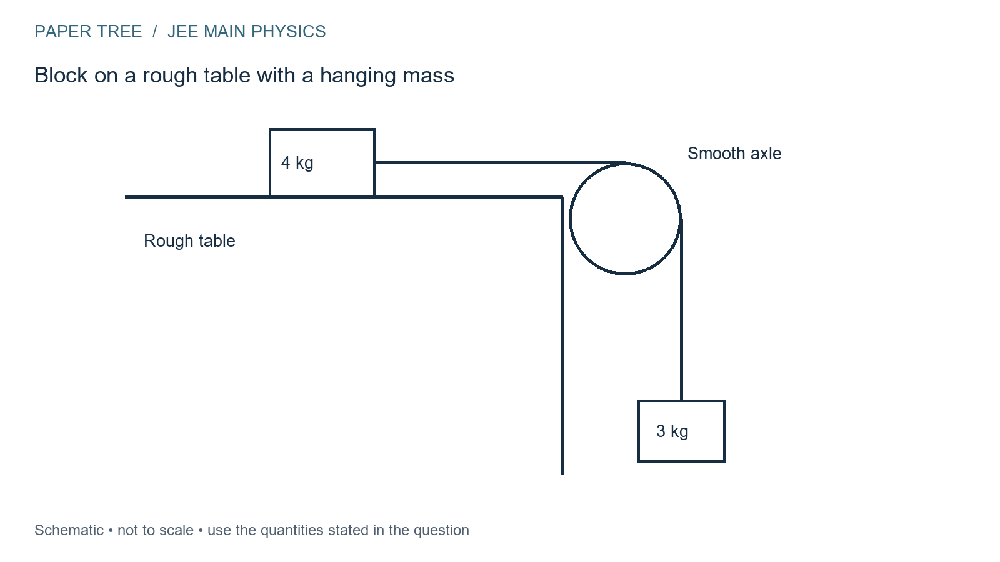
- A. 21.43 N
- B. 11.43 N
- C. 20 N
- D. 30 N
Answer and explanation
A. 21.43 N
For the table block, T−μm₁g = m₁a; for the hanging block, m₂g−T = m₂a. Together they give a = 2.857142857 m/s² and T = 21.42857143 N. Constant-acceleration motion from rest then gives v = √(2as) = 4.472135955 m/s and t = √(2s/a) = 1.565247584 s.
For the requested outcome — Find the string tension during motion. — the result is 21.43 N.
A 4 kg block on a rough horizontal table is connected by a light inextensible string over a smooth massless pulley to a hanging 3 kg block. The coefficient of kinetic friction on the table is 0.25. Released from rest, the hanging block moves downward by 3.5 m. The string stays taut; use g = 10 m/s². Find the common speed after the stated displacement. Choose the closest value.
Use the stated friction model, massless inextensible strings and massless frictionless pulleys unless specified otherwise.
- A. 8.367 m/s
- B. 10 m/s
- C. 4.472 m/s
- D. 3.162 m/s
Answer and explanation
C. 4.472 m/s
For the table block, T−μm₁g = m₁a; for the hanging block, m₂g−T = m₂a. Together they give a = 2.857142857 m/s² and T = 21.42857143 N. Constant-acceleration motion from rest then gives v = √(2as) = 4.472135955 m/s and t = √(2s/a) = 1.565247584 s.
For the requested outcome — Find the common speed after the stated displacement. — the result is 4.472 m/s.
A 4 kg block on a rough horizontal table is connected by a light inextensible string over a smooth massless pulley to a hanging 3 kg block. The coefficient of kinetic friction on the table is 0.25. Released from rest, the hanging block moves downward by 3.5 m. The string stays taut; use g = 10 m/s². Find the time taken for the stated displacement. Choose the closest value.
Use the stated friction model, massless inextensible strings and massless frictionless pulleys unless specified otherwise.
- A. 1.565 s
- B. 0.7826 s
- C. 0.8367 s
- D. 1.107 s
Answer and explanation
A. 1.565 s
For the table block, T−μm₁g = m₁a; for the hanging block, m₂g−T = m₂a. Together they give a = 2.857142857 m/s² and T = 21.42857143 N. Constant-acceleration motion from rest then gives v = √(2as) = 4.472135955 m/s and t = √(2s/a) = 1.565247584 s.
For the requested outcome — Find the time taken for the stated displacement. — the result is 1.565 s.
A ξ kg block on a rough horizontal table is connected by a light inextensible string over a smooth massless pulley to a hanging 4 kg block. The coefficient of kinetic friction on the table is 0.2. Released from rest, the hanging block moves downward by 3 m. The string stays taut; use g = 10 m/s². The recorded value of the string tension during motion is 26.66666667 N. Which listed positive value of ξ is consistent with this measurement?
Use the stated friction model, massless inextensible strings and massless frictionless pulleys unless specified otherwise.
Answer and explanation
B. 5
Use the physical relations below with the missing input ξ. The recorded value of the string tension during motion gives ξ=5 in the unit assigned to ξ in the question. Substitution checks the observation:
For the table block, T−μm₁g = m₁a; for the hanging block, m₂g−T = m₂a. Together they give a = 3.333333333 m/s² and T = 26.66666667 N. Constant-acceleration motion from rest then gives v = √(2as) = 4.472135955 m/s and t = √(2s/a) = 1.341640786 s.
A 5 kg block on a rough horizontal table is connected by a light inextensible string over a smooth massless pulley to a hanging ξ kg block. The coefficient of kinetic friction on the table is 0.2. Released from rest, the hanging block moves downward by 3 m. The string stays taut; use g = 10 m/s². The recorded value of the common speed after the stated displacement is 4.472135955 m/s. Which listed positive value of ξ is consistent with this measurement?
Use the stated friction model, massless inextensible strings and massless frictionless pulleys unless specified otherwise.
Answer and explanation
C. 4
Use the physical relations below with the missing input ξ. The recorded value of the common speed after the stated displacement gives ξ=4 in the unit assigned to ξ in the question. Substitution checks the observation:
For the table block, T−μm₁g = m₁a; for the hanging block, m₂g−T = m₂a. Together they give a = 3.333333333 m/s² and T = 26.66666667 N. Constant-acceleration motion from rest then gives v = √(2as) = 4.472135955 m/s and t = √(2s/a) = 1.341640786 s.
A 5 kg block on a rough horizontal table is connected by a light inextensible string over a smooth massless pulley to a hanging 4 kg block. The coefficient of kinetic friction on the table is ξ. Released from rest, the hanging block moves downward by 3 m. The string stays taut; use g = 10 m/s². The recorded value of the time taken for the stated displacement is 1.341640786 s. Which listed positive value of ξ is consistent with this measurement?
Use the stated friction model, massless inextensible strings and massless frictionless pulleys unless specified otherwise.
Answer and explanation
C. 0.2
Use the physical relations below with the missing input ξ. The recorded value of the time taken for the stated displacement gives ξ=0.2 in the unit assigned to ξ in the question. Substitution checks the observation:
For the table block, T−μm₁g = m₁a; for the hanging block, m₂g−T = m₂a. Together they give a = 3.333333333 m/s² and T = 26.66666667 N. Constant-acceleration motion from rest then gives v = √(2as) = 4.472135955 m/s and t = √(2s/a) = 1.341640786 s.
Two blocks of masses 3 kg and 2 kg touch on a horizontal floor. A horizontal force 35 N pushes the first block toward the second; both slide to the right. Their kinetic friction coefficients are 0.2 and 0.3, respectively. They start from rest and move 5 m; g = 10 m/s². Find the contact force exerted by the first block on the second. Choose the closest value.
Use the stated friction model, massless inextensible strings and massless frictionless pulleys unless specified otherwise.
- A. 15.2 N
- B. 9.2 N
- C. 35 N
- D. 14 N
Answer and explanation
A. 15.2 N
For both blocks together, a = [F−g(μ₁m₁+μ₂m₂)]/(m₁+m₂) = 4.6 m/s². The second block satisfies C−μ₂m₂g = m₂a, so C = 15.2 N. The speed is √(2ad) = 6.782329983 m/s and contact work on block 2 is Cd = 76 J.
For the requested outcome — Find the contact force exerted by the first block on the second. — the result is 15.2 N.
Two blocks of masses 3 kg and 2 kg touch on a horizontal floor. A horizontal force 35 N pushes the first block toward the second; both slide to the right. Their kinetic friction coefficients are 0.2 and 0.3, respectively. They start from rest and move 5 m; g = 10 m/s². Find the common speed after the displacement. Choose the closest value.
Use the stated friction model, massless inextensible strings and massless frictionless pulleys unless specified otherwise.
- A. 4.796 m/s
- B. 6.782 m/s
- C. 13.56 m/s
- D. 8.367 m/s
Answer and explanation
B. 6.782 m/s
For both blocks together, a = [F−g(μ₁m₁+μ₂m₂)]/(m₁+m₂) = 4.6 m/s². The second block satisfies C−μ₂m₂g = m₂a, so C = 15.2 N. The speed is √(2ad) = 6.782329983 m/s and contact work on block 2 is Cd = 76 J.
For the requested outcome — Find the common speed after the displacement. — the result is 6.782 m/s.
Two blocks of masses 3 kg and 2 kg touch on a horizontal floor. A horizontal force 35 N pushes the first block toward the second; both slide to the right. Their kinetic friction coefficients are 0.2 and 0.3, respectively. They start from rest and move 5 m; g = 10 m/s². Find the work done by the contact force on the second block. Choose the closest value.
Use the stated friction model, massless inextensible strings and massless frictionless pulleys unless specified otherwise.
- A. 46 J
- B. 175 J
- C. 38 J
- D. 76 J
Answer and explanation
D. 76 J
For both blocks together, a = [F−g(μ₁m₁+μ₂m₂)]/(m₁+m₂) = 4.6 m/s². The second block satisfies C−μ₂m₂g = m₂a, so C = 15.2 N. The speed is √(2ad) = 6.782329983 m/s and contact work on block 2 is Cd = 76 J.
For the requested outcome — Find the work done by the contact force on the second block. — the result is 76 J.
Two blocks of masses 4 kg and 3 kg touch on a horizontal floor. A horizontal force ξ N pushes the first block toward the second; both slide to the right. Their kinetic friction coefficients are 0.25 and 0.2, respectively. They start from rest and move 4 m; g = 10 m/s². The recorded value of the contact force exerted by the first block on the second is 20.57142857 N. Which listed positive value of ξ is consistent with this measurement?
Use the stated friction model, massless inextensible strings and massless frictionless pulleys unless specified otherwise.
Answer and explanation
B. 50
Use the physical relations below with the missing input ξ. The recorded value of the contact force exerted by the first block on the second gives ξ=50 in the unit assigned to ξ in the question. Substitution checks the observation:
For both blocks together, a = [F−g(μ₁m₁+μ₂m₂)]/(m₁+m₂) = 4.857142857 m/s². The second block satisfies C−μ₂m₂g = m₂a, so C = 20.57142857 N. The speed is √(2ad) = 6.23354978 m/s and contact work on block 2 is Cd = 82.28571429 J.
Two blocks of masses 4 kg and 3 kg touch on a horizontal floor. A horizontal force 50 N pushes the first block toward the second; both slide to the right. Their kinetic friction coefficients are 0.25 and 0.2, respectively. They start from rest and move ξ m; g = 10 m/s². The recorded value of the common speed after the displacement is 6.23354978 m/s. Which listed positive value of ξ is consistent with this measurement?
Use the stated friction model, massless inextensible strings and massless frictionless pulleys unless specified otherwise.
Answer and explanation
B. 4
Use the physical relations below with the missing input ξ. The recorded value of the common speed after the displacement gives ξ=4 in the unit assigned to ξ in the question. Substitution checks the observation:
For both blocks together, a = [F−g(μ₁m₁+μ₂m₂)]/(m₁+m₂) = 4.857142857 m/s². The second block satisfies C−μ₂m₂g = m₂a, so C = 20.57142857 N. The speed is √(2ad) = 6.23354978 m/s and contact work on block 2 is Cd = 82.28571429 J.
Two blocks of masses ξ kg and 3 kg touch on a horizontal floor. A horizontal force 50 N pushes the first block toward the second; both slide to the right. Their kinetic friction coefficients are 0.25 and 0.2, respectively. They start from rest and move 4 m; g = 10 m/s². The recorded value of the work done by the contact force on the second block is 82.28571429 J. Which listed positive value of ξ is consistent with this measurement?
Use the stated friction model, massless inextensible strings and massless frictionless pulleys unless specified otherwise.
Answer and explanation
D. 4
Use the physical relations below with the missing input ξ. The recorded value of the work done by the contact force on the second block gives ξ=4 in the unit assigned to ξ in the question. Substitution checks the observation:
For both blocks together, a = [F−g(μ₁m₁+μ₂m₂)]/(m₁+m₂) = 4.857142857 m/s². The second block satisfies C−μ₂m₂g = m₂a, so C = 20.57142857 N. The speed is √(2ad) = 6.23354978 m/s and contact work on block 2 is Cd = 82.28571429 J.
A bullet of mass 10 g moving horizontally at 400 m s⁻¹ embeds itself in a wooden block of mass 1.99 kg hanging from a long light string. Taking g = 10 m s⁻², the height through which the block rises is:
Use nonrelativistic mechanics. Springs are ideal and uniform; quoted external work for a slow change assumes negligible kinetic-energy change.
- A. 0.4 m
- B. 20 m
- C. 0.2 m
- D. 0.1 m
Answer and explanation
C. 0.2 m
The impact is perfectly inelastic, so 0.01 × 400 = 4 kg m s⁻¹ is shared by a total mass of 2 kg, giving a common speed of 2 m s⁻¹. The block and bullet then rise until this kinetic energy becomes potential energy, so h = v²/(2 g) = 4/20 = 0.2 m.
A bullet of mass 10 g moving at 500 m s⁻¹ embeds itself in a block of mass 990 g resting on a smooth horizontal surface. The common speed just after impact is:
Use nonrelativistic mechanics. Springs are ideal and uniform; quoted external work for a slow change assumes negligible kinetic-energy change.
- A. 50 m s⁻¹
- B. 0.5 m s⁻¹
- C. 5 m s⁻¹
- D. 500 m s⁻¹
Answer and explanation
C. 5 m s⁻¹
The bullet brings momentum 0.01 × 500 = 5 kg m s⁻¹. The combined mass is 0.01 + 0.99 = 1 kg, so the common speed is 5/1 = 5 m s⁻¹.
The coefficient of restitution for a collision between two bodies is defined as:
Use nonrelativistic mechanics. Springs are ideal and uniform; quoted external work for a slow change assumes negligible kinetic-energy change.
- A. the ratio of the relative speed of approach to the relative speed of separation
- B. the ratio of the total momentum after the collision to that before it
- C. the ratio of the total kinetic energy after the collision to that before it
- D. the ratio of the relative speed of separation to the relative speed of approach
Answer and explanation
D. the ratio of the relative speed of separation to the relative speed of approach
The coefficient of restitution measures how much of the relative motion survives the collision. It is 1 for a perfectly elastic collision, in which the bodies separate as fast as they approached, and 0 for a perfectly inelastic collision, in which they move off together with no relative velocity at all. Real collisions lie between these two limits.
A body of mass 2 kg moving at 8 m s⁻¹ makes a head on elastic collision with a stationary body of mass 6 kg. The velocity of the 2 kg body just after the collision is:
Use nonrelativistic mechanics. Springs are ideal and uniform; quoted external work for a slow change assumes negligible kinetic-energy change.
- A. 4 m s⁻¹ in the original direction
- B. 4 m s⁻¹ in the reverse direction
- C. 2 m s⁻¹ in the reverse direction
- D. 8 m s⁻¹ in the reverse direction
Answer and explanation
B. 4 m s⁻¹ in the reverse direction
Substituting m1 = 2 kg, m2 = 6 kg and u = 8 m s⁻¹ gives v1 = (2 - 6) × 8/8 = -4 m s⁻¹, so the 2 kg body rebounds at 4 m s⁻¹. The 6 kg body moves forward at v2 = 2 × 2 × 8/8 = 4 m s⁻¹. A check: momentum before is 16 kg m s⁻¹ and after is -8 + 24 = 16 kg m s⁻¹, while the kinetic energy is 64 J before and 16 + 48 = 64 J after.
A ball dropped from a height of 10 m onto a floor rebounds to a height of 2.5 m. The coefficient of restitution between the ball and the floor is:
Use nonrelativistic mechanics. Springs are ideal and uniform; quoted external work for a slow change assumes negligible kinetic-energy change.
- A. 0.25
- B. 0.5
- C. 0.75
- D. 0.2
Answer and explanation
B. 0.5
The speed at any height is proportional to the square root of that height, since v is the square root of 2 g h. Hence e equals the square root of (2.5/10), which is the square root of 0.25, that is 0.5. Equivalently, the height ratio is the square of the coefficient.
A body moving with speed u collides head on and elastically with an identical body at rest. After the collision:
Use nonrelativistic mechanics. Springs are ideal and uniform; quoted external work for a slow change assumes negligible kinetic-energy change.
- A. the first rebounds with speed u and the second stays at rest
- B. the first body stops and the second moves off with speed u
- C. both move off with speed u in opposite directions
- D. both move forward together with speed u/2
Answer and explanation
B. the first body stops and the second moves off with speed u
Momentum conservation gives v1 + v2 = u and kinetic energy conservation gives v1² + v2² = u². Solving these together gives either the initial state or the exchanged state v1 = 0 and v2 = u. Since the bodies must separate, the exchange is the physical solution. This is what is seen when one carrom coin strikes another squarely.
The work energy theorem states that the net work done on a body by all the forces acting on it equals:
Use nonrelativistic mechanics. Springs are ideal and uniform; quoted external work for a slow change assumes negligible kinetic-energy change.
- A. its total mechanical energy at the end of the motion
- B. the impulse delivered to it by those forces
- C. the change in its linear momentum
- D. the change in its kinetic energy
Answer and explanation
D. the change in its kinetic energy
Starting from F = m a and using v² = u² + 2 a s, multiplying by m/2 gives F s equal to the difference of the two kinetic energy terms. Hence the net work done equals the change in kinetic energy, whatever forces are involved.
A particle attached to a light inextensible string moves in a vertical circle of radius 0.8 m under gravity alone, with the string just taut at the top. Neglect drag and take g=10 m/s². Find its speed at the bottom.
Use nonrelativistic mechanics. Springs are ideal and uniform; quoted external work for a slow change assumes negligible kinetic-energy change.
- A. about 6.3 m s⁻¹
- B. about 4.0 m s⁻¹
- C. about 8.9 m s⁻¹
- D. about 2.8 m s⁻¹
Answer and explanation
A. about 6.3 m s⁻¹
v_bottom = √(5 g r) = √(5 × 10 × 0.8) = √(40) = 6.32, about 6.3 m s⁻¹.
For a body of mass m moving in a vertical circle of radius r with speed v at the lowest point, the tension in the string there is:
Use nonrelativistic mechanics. Springs are ideal and uniform; quoted external work for a slow change assumes negligible kinetic-energy change.
- A. m g - m v² / r
- B. m v² / r
- C. m v² / r + m g
- D. m v² / r - m g
Answer and explanation
C. m v² / r + m g
At the lowest point T - m g = m v²/r, so T = m v²/r + m g.
At the highest point of a vertical circle, when a body just completes the circle, the tension in the string is:
Use nonrelativistic mechanics. Springs are ideal and uniform; quoted external work for a slow change assumes negligible kinetic-energy change.
- A. zero
- B. equal to 6 m g
- C. maximum
- D. equal to m g
Answer and explanation
A. zero
At the critical speed the string just goes slack at the top, so the tension there is zero and gravity alone provides the centripetal force.
A mass m on a light inextensible string completes a vertical circle under uniform gravity. The string stays taut and no nonconservative work is done. Find the bottom tension minus the top tension.
Use nonrelativistic mechanics. Springs are ideal and uniform; quoted external work for a slow change assumes negligible kinetic-energy change.
- A. m g
- B. 2 m g
- C. 4 m g
- D. 6 m g
Answer and explanation
D. 6 m g
Using energy conservation, T_bottom - T_top = 6 m g for any speed sufficient to complete the circle.
A particle of mass 3 kg moving along +x at ξ m/s collides elastically with an identical particle initially at rest on a smooth plane. After collision the incident particle travels at angle 60° to +x with positive x- and y-components. The initially stationary particle then climbs a smooth incline whose direction is aligned with its outgoing horizontal velocity. Take g=10 m/s². In this arrangement, the following outcome is measured: the magnitude of the impulse on the incident particle = 31.17691454 N s. Which listed positive value of ξ is consistent with that outcome?
Use nonrelativistic mechanics. Springs are ideal and uniform; quoted external work for a slow change assumes negligible kinetic-energy change.
Answer and explanation
A. 12
Use the coupled physical relations below. The missing input is ξ=12 in the units assigned in the stem.
Momentum and kinetic energy imply v1·v2=0 for equal masses with one initially at rest. Resolve the incident velocity along the two perpendicular outgoing directions: v1=6, v2=10.39230485 m/s. The second particle rises by v2²/(2g)=5.4 m. The impulse magnitude equals its acquired momentum, 31.17691454 N s, and the energy ratio is 3.
A stone tied to a string of length 0.4 m is whirled in a vertical circle. Taking g = 10 m s⁻², the minimum speed at the top is:
Use nonrelativistic mechanics. Springs are ideal and uniform; quoted external work for a slow change assumes negligible kinetic-energy change.
- A. 4 m s⁻¹
- B. 2 m s⁻¹
- C. 20 m s⁻¹
- D. 1 m s⁻¹
Answer and explanation
B. 2 m s⁻¹
v_top = √(g r) = √(10 × 0.4) = √(4) = 2 m s⁻¹.
A 3 kg body moving at 5 m s⁻¹ collides head-on with a 1 kg body moving at -1 m s⁻¹. They stick together. Their common velocity is:
Use nonrelativistic mechanics. Springs are ideal and uniform; quoted external work for a slow change assumes negligible kinetic-energy change.
- A. 6 m s⁻¹
- B. 2 m s⁻¹
- C. 4 m s⁻¹
- D. 3.5 m s⁻¹
Answer and explanation
D. 3.5 m s⁻¹
Linear momentum is conserved: v = (m₁u₁ + m₂u₂)/(m₁+m₂) = 3.5 m s⁻¹.
A 4 kg body is released from rest from a height of 5 m. Neglecting air resistance and taking g = 10 m s⁻², its speed just before reaching the ground is:
Use nonrelativistic mechanics. Springs are ideal and uniform; quoted external work for a slow change assumes negligible kinetic-energy change.
- A. 50 m s⁻¹
- B. 10 m s⁻¹
- C. 7.07 m s⁻¹
- D. 100 m s⁻¹
Answer and explanation
B. 10 m s⁻¹
mgh = ½mv², so v = √(2gh) = √(2 × 10 × 5) = 10 m s⁻¹. Mass cancels.
A 5 kg body is released from rest from a height of 8 m. Neglecting air resistance and taking g = 10 m s⁻², its speed just before reaching the ground is:
Use nonrelativistic mechanics. Springs are ideal and uniform; quoted external work for a slow change assumes negligible kinetic-energy change.
- A. 80 m s⁻¹
- B. 160 m s⁻¹
- C. 8.94 m s⁻¹
- D. 12.65 m s⁻¹
Answer and explanation
D. 12.65 m s⁻¹
mgh = ½mv², so v = √(2gh) = √(2 × 10 × 8) = 12.65 m s⁻¹. Mass cancels.
A spring of force constant 50 N m⁻¹ is compressed by 0.4 m. The elastic potential energy stored is:
Use nonrelativistic mechanics. Springs are ideal and uniform; quoted external work for a slow change assumes negligible kinetic-energy change.
- A. 4 J
- B. 10 J
- C. 8 J
- D. 20 J
Answer and explanation
A. 4 J
U = ½kx² = ½(50)(0.4)² = 4 J.
A spring of force constant 200 N m⁻¹ is compressed by 0.1 m. The elastic potential energy stored is:
Use nonrelativistic mechanics. Springs are ideal and uniform; quoted external work for a slow change assumes negligible kinetic-energy change.
- A. 10 J
- B. 1 J
- C. 2 J
- D. 20 J
Answer and explanation
B. 1 J
U = ½kx² = ½(200)(0.1)² = 1 J.
A machine lifts a 40 kg load vertically through 15 m in 6 s at constant speed. Taking g = 10 m s⁻², its average power is:
Use nonrelativistic mechanics. Springs are ideal and uniform; quoted external work for a slow change assumes negligible kinetic-energy change.
- A. 2000 W
- B. 6000 W
- C. 500 W
- D. 1000 W
Answer and explanation
D. 1000 W
P = mgh/t = (40)(10)(15)/6 = 1000 W.
A machine lifts a 75 kg load vertically through 8 m in 4 s at constant speed. Taking g = 10 m s⁻², its average power is:
Use nonrelativistic mechanics. Springs are ideal and uniform; quoted external work for a slow change assumes negligible kinetic-energy change.
- A. 3000 W
- B. 1500 W
- C. 750 W
- D. 6000 W
Answer and explanation
B. 1500 W
P = mgh/t = (75)(10)(8)/4 = 1500 W.
A constant force of 10 N acts on a body that moves 5 m. The angle between force and displacement is 0°. Work done by the force is:
Use nonrelativistic mechanics. Springs are ideal and uniform; quoted external work for a slow change assumes negligible kinetic-energy change.
- A. 0 J
- B. 75 J
- C. 62.5 J
- D. 50 J
Answer and explanation
D. 50 J
W = Fs cos θ = (10)(5) cos 0° = 50 J.
A constant force of 20 N acts on a body that moves 3 m. The angle between force and displacement is 60°. Work done by the force is:
Use nonrelativistic mechanics. Springs are ideal and uniform; quoted external work for a slow change assumes negligible kinetic-energy change.
- A. 60 J
- B. 37.5 J
- C. 45 J
- D. 30 J
Answer and explanation
D. 30 J
W = Fs cos θ = (20)(3) cos 60° = 30 J.
An equilibrium point at a local maximum of U(x) is:
Use nonrelativistic mechanics. Springs are ideal and uniform; quoted external work for a slow change assumes negligible kinetic-energy change.
- A. Neutral
- B. Stable
- C. Unstable
- D. Necessarily periodic
Answer and explanation
C. Unstable
A small displacement from a potential maximum drives the particle farther away.
A body slides down a rough incline at constant speed. The net work done on it is:
Use nonrelativistic mechanics. Springs are ideal and uniform; quoted external work for a slow change assumes negligible kinetic-energy change.
- A. Zero
- B. Negative
- C. Positive
- D. Equal to mgh
Answer and explanation
A. Zero
Constant speed means no change in kinetic energy; by the work–energy theorem net work is zero.
A motor supplies constant power P to a body moving parallel to the driving force at speed v. The force magnitude is:
Use nonrelativistic mechanics. Springs are ideal and uniform; quoted external work for a slow change assumes negligible kinetic-energy change.
Answer and explanation
A. P/v
For parallel force and velocity, P = Fv.
A block of mass 1 kg approaches an initially uncompressed spring with speed 6 m/s on a horizontal rough track. The spring constant is 100 N/m and the kinetic friction coefficient is 0.2; take g=10 m/s². The block is not attached to the spring. It compresses the spring, reverses and leaves it; assume the maximum static friction coefficient also equals 0.2. Find the heat generated during the entire contact with the spring. Choose the closest value.
Use nonrelativistic mechanics. Springs are ideal and uniform; quoted external work for a slow change assumes negligible kinetic-energy change.
- A. 1.161 J
- B. 2.321 J
- C. 4.643 J
- D. -2.321 J
Answer and explanation
B. 2.321 J
During compression the energy equation is kx²/2+fx=mu²/2. Its positive solution is x=0.5803332408 m. Here kx>f, so reversal occurs; the return energy is kx²/2−fx. The exit speed is 5.599761966 m/s, the later stopping distance 7.839333518 m and contact heat 2fx=2.321332963 J.
Requested result: 2.321 J.
A constant force F₀ acts along displacement from x = a to x = b. The area under its F–x graph is:
Use nonrelativistic mechanics. Springs are ideal and uniform; quoted external work for a slow change assumes negligible kinetic-energy change.
- A. F₀(b+a)
- B. Zero
- C. F₀/(b-a)
- D. F₀(b-a)
Answer and explanation
D. F₀(b-a)
Work equals the rectangular area F₀ times the displacement b-a.
The instantaneous power delivered by a force F to a particle of velocity v is:
Use nonrelativistic mechanics. Springs are ideal and uniform; quoted external work for a slow change assumes negligible kinetic-energy change.
- A. F×v only
- B. F/v
- C. F·v
- D. Fv²
Answer and explanation
C. F·v
Instantaneous power is dW/dt = F·dr/dt = F·v.
A particle of mass 2 kg moving along +x at 10 m/s collides elastically with an identical particle initially at rest on a smooth plane. After collision the incident particle travels at angle 30° to +x with positive x- and y-components. The initially stationary particle then climbs a smooth incline whose direction is aligned with its outgoing horizontal velocity. Take g=10 m/s². Find the greatest height reached by the second particle. Choose the closest value.
Use nonrelativistic mechanics. Springs are ideal and uniform; quoted external work for a slow change assumes negligible kinetic-energy change.
- A. -1.25 m
- B. 1.25 m
- C. 2.5 m
- D. 0.625 m
Answer and explanation
B. 1.25 m
Momentum and kinetic energy imply v1·v2=0 for equal masses with one initially at rest. Resolve the incident velocity along the two perpendicular outgoing directions: v1=8.660254038, v2=5 m/s. The second particle rises by v2²/(2g)=1.25 m. The impulse magnitude equals its acquired momentum, 10 N s, and the energy ratio is 0.3333333333.
Requested result: 1.25 m.
A person carries a load horizontally at constant height and speed. Ideal mechanical work done by the upward supporting force on the load is:
Use nonrelativistic mechanics. Springs are ideal and uniform; quoted external work for a slow change assumes negligible kinetic-energy change.
- A. Zero
- B. Positive
- C. Negative
- D. Equal to the weight times distance
Answer and explanation
A. Zero
The supporting force is vertical while displacement is horizontal, so their dot product is zero.
A block of mass 3 kg hangs at rest from a vertical spring of stiffness 80 N/m. A projectile of mass 1 kg moving vertically downward embeds in the block with speed ξ m/s. The impact is brief. Thereafter the spring is lossless and gravity is 10 m/s². Measure subsequent downward displacement from the PRE-IMPACT equilibrium. In this arrangement, the following outcome is measured: the work done by gravity from just after impact to the lowest subsequent position = 23.57417562 J. Which listed positive value of ξ is consistent with that outcome?
Use nonrelativistic mechanics. Springs are ideal and uniform; quoted external work for a slow change assumes negligible kinetic-energy change.
Answer and explanation
D. 8
Use the coupled physical relations below. The missing input is ξ=8 in the units assigned in the stem.
During impact momentum gives v=2 m/s. The added mass shifts equilibrium down by δ=0.125 m. The post-impact SHM has ω=4.472135955 rad/s and amplitude A=√[δ²+(v/ω)²]=0.4643543905 m about the NEW equilibrium. Thus the maximum displacement from the old position is 0.5893543905 m and maximum tension 77.14835124 N. The subsequent gravitational work is (M+m)g times this displacement, 23.57417562 J.
A block of mass 1 kg approaches an initially uncompressed spring with speed 6 m/s on a horizontal rough track. The spring constant is 100 N/m and the kinetic friction coefficient is 0.2; take g=10 m/s². The block is not attached to the spring. It compresses the spring, reverses and leaves it; assume the maximum static friction coefficient also equals 0.2. Find the distance travelled after leaving the spring until it next stops. Choose the closest value.
Use nonrelativistic mechanics. Springs are ideal and uniform; quoted external work for a slow change assumes negligible kinetic-energy change.
- A. 3.92 m
- B. 15.68 m
- C. -7.839 m
- D. 7.839 m
Answer and explanation
D. 7.839 m
During compression the energy equation is kx²/2+fx=mu²/2. Its positive solution is x=0.5803332408 m. Here kx>f, so reversal occurs; the return energy is kx²/2−fx. The exit speed is 5.599761966 m/s, the later stopping distance 7.839333518 m and contact heat 2fx=2.321332963 J.
Requested result: 7.839 m.
A block of mass 2 kg hangs at rest from a vertical spring of stiffness 100 N/m. A projectile of mass 0.5 kg moving vertically downward embeds in the block with speed 10 m/s. The impact is brief. Thereafter the spring is lossless and gravity is 10 m/s². Measure subsequent downward displacement from the PRE-IMPACT equilibrium. Find the work done by gravity from just after impact to the lowest subsequent position. Choose the closest value.
Use nonrelativistic mechanics. Springs are ideal and uniform; quoted external work for a slow change assumes negligible kinetic-energy change.
- A. -9.254 J
- B. 9.254 J
- C. 18.51 J
- D. 4.627 J
Answer and explanation
B. 9.254 J
During impact momentum gives v=2 m/s. The added mass shifts equilibrium down by δ=0.05 m. The post-impact SHM has ω=6.32455532 rad/s and amplitude A=√[δ²+(v/ω)²]=0.3201562119 m about the NEW equilibrium. Thus the maximum displacement from the old position is 0.3701562119 m and maximum tension 57.01562119 N. The subsequent gravitational work is (M+m)g times this displacement, 9.253905297 J.
Requested result: 9.254 J.
On the same rough horizontal road, a vehicle's initial speed is doubled while the braking force is unchanged. Its stopping distance becomes:
Use nonrelativistic mechanics. Springs are ideal and uniform; quoted external work for a slow change assumes negligible kinetic-energy change.
- A. Four times
- B. Eight times
- C. Twice
- D. Half
Answer and explanation
A. Four times
The fixed braking work equals the initial kinetic energy, which is proportional to v².
The work done by a spring force when the spring moves from extension x₁ to x₂ is:
Use nonrelativistic mechanics. Springs are ideal and uniform; quoted external work for a slow change assumes negligible kinetic-energy change.
- A. k(x₂-x₁)
- B. kx₁x₂
- C. ½k(x₁²-x₂²)
- D. ½k(x₂²-x₁²)
Answer and explanation
C. ½k(x₁²-x₂²)
Spring work equals the decrease in elastic potential energy: W = U₁-U₂.
The turning points on a potential-energy diagram occur where:
Use nonrelativistic mechanics. Springs are ideal and uniform; quoted external work for a slow change assumes negligible kinetic-energy change.
- A. U(x) = E
- B. dU/dx is maximum
- C. U(x) = 0
- D. K = E
Answer and explanation
A. U(x) = E
At a turning point speed and kinetic energy vanish, leaving U = E.
When only conservative forces act, which quantity remains constant?
Use nonrelativistic mechanics. Springs are ideal and uniform; quoted external work for a slow change assumes negligible kinetic-energy change.
- A. Momentum of each particle
- B. Potential energy alone
- C. Kinetic energy alone
- D. Total mechanical energy
Answer and explanation
D. Total mechanical energy
Conservative forces transform kinetic and potential energy while preserving their sum.
A particle completes a closed path under a conservative force. The total work by that force is:
Use nonrelativistic mechanics. Springs are ideal and uniform; quoted external work for a slow change assumes negligible kinetic-energy change.
- A. Zero
- B. Positive
- C. Negative
- D. Equal to the path length
Answer and explanation
A. Zero
The work of a conservative force around every closed path is zero.
A block of mass ξ kg approaches an initially uncompressed spring with speed 5 m/s on a horizontal rough track. The spring constant is 80 N/m and the kinetic friction coefficient is 0.25; take g=10 m/s². The block is not attached to the spring. It compresses the spring, reverses and leaves it; assume the maximum static friction coefficient also equals 0.25. In this arrangement, the following outcome is measured: the distance travelled after leaving the spring until it next stops = 3.538927807 m. Which listed positive value of ξ is consistent with that outcome?
Use nonrelativistic mechanics. Springs are ideal and uniform; quoted external work for a slow change assumes negligible kinetic-energy change.
Answer and explanation
D. 2
Use the coupled physical relations below. The missing input is ξ=2 in the units assigned in the stem.
During compression the energy equation is kx²/2+fx=mu²/2. Its positive solution is x=0.7305360963 m. Here kx>f, so reversal occurs; the return energy is kx²/2−fx. The exit speed is 4.206499618 m/s, the later stopping distance 3.538927807 m and contact heat 2fx=7.305360963 J.
If the potential energy of a system is U(x), the corresponding one-dimensional conservative force is:
Use nonrelativistic mechanics. Springs are ideal and uniform; quoted external work for a slow change assumes negligible kinetic-energy change.
- A. F = -dU/dx
- B. F = Ux
- C. F = dU/dx
- D. F = -U/x²
Answer and explanation
A. F = -dU/dx
A conservative force points toward decreasing potential energy, hence F = -dU/dx.
Statement I: Work done by a variable force equals the area under its F–x graph. Statement II: This area may be negative.
Use nonrelativistic mechanics. Springs are ideal and uniform; quoted external work for a slow change assumes negligible kinetic-energy change.
- A. Neither statement is correct
- B. Statement II only is correct
- C. Statement I only is correct
- D. Both statements are correct
Answer and explanation
D. Both statements are correct
The integral ∫F dx is the signed area; portions below the x-axis contribute negative work.
A block of mass 1 kg approaches an initially uncompressed spring with speed 6 m/s on a horizontal rough track. The spring constant is 100 N/m and the kinetic friction coefficient is 0.2; take g=10 m/s². The block is not attached to the spring. It compresses the spring, reverses and leaves it; assume the maximum static friction coefficient also equals 0.2. Find the speed when the block returns to the spring’s natural length. Choose the closest value.
Use nonrelativistic mechanics. Springs are ideal and uniform; quoted external work for a slow change assumes negligible kinetic-energy change.
- A. -5.6 m/s
- B. 5.6 m/s
- C. 11.2 m/s
- D. 2.8 m/s
Answer and explanation
B. 5.6 m/s
During compression the energy equation is kx²/2+fx=mu²/2. Its positive solution is x=0.5803332408 m. Here kx>f, so reversal occurs; the return energy is kx²/2−fx. The exit speed is 5.599761966 m/s, the later stopping distance 7.839333518 m and contact heat 2fx=2.321332963 J.
Requested result: 5.6 m/s.
A block of mass 2 kg hangs at rest from a vertical spring of stiffness 100 N/m. A projectile of mass 0.5 kg moving vertically downward embeds in the block with speed 10 m/s. The impact is brief. Thereafter the spring is lossless and gravity is 10 m/s². Measure subsequent downward displacement from the PRE-IMPACT equilibrium. Find the greatest spring tension after impact. Choose the closest value.
Use nonrelativistic mechanics. Springs are ideal and uniform; quoted external work for a slow change assumes negligible kinetic-energy change.
- A. -57.02 N
- B. 28.51 N
- C. 57.02 N
- D. 114 N
Answer and explanation
C. 57.02 N
During impact momentum gives v=2 m/s. The added mass shifts equilibrium down by δ=0.05 m. The post-impact SHM has ω=6.32455532 rad/s and amplitude A=√[δ²+(v/ω)²]=0.3201562119 m about the NEW equilibrium. Thus the maximum displacement from the old position is 0.3701562119 m and maximum tension 57.01562119 N. The subsequent gravitational work is (M+m)g times this displacement, 9.253905297 J.
Requested result: 57.02 N.
The equilibrium of a particle at a minimum of potential-energy curve is:
Use nonrelativistic mechanics. Springs are ideal and uniform; quoted external work for a slow change assumes negligible kinetic-energy change.
- A. Impossible
- B. Unstable
- C. Stable
- D. Neutral only
Answer and explanation
C. Stable
A small displacement from a potential minimum produces a restoring force toward equilibrium.
A constant-mass body receives constant positive net mechanical power. Its kinetic energy:
Use nonrelativistic mechanics. Springs are ideal and uniform; quoted external work for a slow change assumes negligible kinetic-energy change.
- A. Decreases linearly with time
- B. Increases as time squared
- C. Increases linearly with time
- D. Remains constant
Answer and explanation
C. Increases linearly with time
Power P = dK/dt. Constant positive power produces a linear increase of kinetic energy with time.
At the highest point of a vertical throw, which statement is correct when air resistance is neglected?
Use nonrelativistic mechanics. Springs are ideal and uniform; quoted external work for a slow change assumes negligible kinetic-energy change.
- A. Potential energy is zero
- B. Kinetic energy is zero but acceleration is not zero
- C. Mechanical energy is zero
- D. Both kinetic energy and acceleration are zero
Answer and explanation
B. Kinetic energy is zero but acceleration is not zero
Instantaneous speed is zero, but acceleration remains g downward.
A particle of mass 3 kg moving along +x at 12 m/s collides elastically with an identical particle initially at rest on a smooth plane. After collision the incident particle travels at angle ξ° to +x with positive x- and y-components. The initially stationary particle then climbs a smooth incline whose direction is aligned with its outgoing horizontal velocity. Take g=10 m/s². In this arrangement, the following outcome is measured: the second-to-first kinetic-energy ratio immediately after collision = 3 . Which listed positive value of ξ is consistent with that outcome?
Use nonrelativistic mechanics. Springs are ideal and uniform; quoted external work for a slow change assumes negligible kinetic-energy change.
Answer and explanation
B. 60
Use the coupled physical relations below. The missing input is ξ=60 in the units assigned in the stem.
Momentum and kinetic energy imply v1·v2=0 for equal masses with one initially at rest. Resolve the incident velocity along the two perpendicular outgoing directions: v1=6, v2=10.39230485 m/s. The second particle rises by v2²/(2g)=5.4 m. The impulse magnitude equals its acquired momentum, 31.17691454 N s, and the energy ratio is 3.
At a turning point in one-dimensional conservative motion:
Use nonrelativistic mechanics. Springs are ideal and uniform; quoted external work for a slow change assumes negligible kinetic-energy change.
- A. Potential energy is zero
- B. Total energy is zero
- C. Acceleration must be zero
- D. Kinetic energy is zero
Answer and explanation
D. Kinetic energy is zero
At a turning point the velocity momentarily vanishes, so all available mechanical energy is potential energy.
Which force is non-conservative?
Use nonrelativistic mechanics. Springs are ideal and uniform; quoted external work for a slow change assumes negligible kinetic-energy change.
- A. Gravitational force
- B. Spring force
- C. Kinetic friction
- D. Electrostatic force
Answer and explanation
C. Kinetic friction
Work done by kinetic friction depends on the path length and converts mechanical energy into internal energy.
For a block constrained to move on a fixed smooth surface, the work done by the normal reaction is zero because it is:
Use nonrelativistic mechanics. Springs are ideal and uniform; quoted external work for a slow change assumes negligible kinetic-energy change.
- A. A conservative force
- B. Perpendicular to motion
- C. Independent of position
- D. Always equal to weight
Answer and explanation
B. Perpendicular to motion
The normal reaction is perpendicular to the allowed instantaneous displacement.
A collision may conserve linear momentum but not kinetic energy when it is:
Use nonrelativistic mechanics. Springs are ideal and uniform; quoted external work for a slow change assumes negligible kinetic-energy change.
- A. A collision between photons only
- B. Isolated and elastic
- C. Inelastic
- D. Elastic
Answer and explanation
C. Inelastic
Total momentum is conserved in an isolated collision, whereas kinetic energy is conserved only for an elastic collision.
A block is moved slowly up a smooth incline to the same vertical height by two different paths. The work done against gravity is:
Use nonrelativistic mechanics. Springs are ideal and uniform; quoted external work for a slow change assumes negligible kinetic-energy change.
- A. Zero for both paths
- B. Greater for the steeper path
- C. The same for both paths
- D. Greater for the longer path
Answer and explanation
C. The same for both paths
Gravity is conservative; work against gravity depends only on the change in height, mgh.
A force acts perpendicular to the velocity of a particle at every instant. Which quantity is unchanged by this force?
Use nonrelativistic mechanics. Springs are ideal and uniform; quoted external work for a slow change assumes negligible kinetic-energy change.
- A. Momentum vector
- B. Speed
- C. Acceleration
- D. Direction of velocity
Answer and explanation
B. Speed
A perpendicular force does no work, so kinetic energy and speed remain unchanged although direction can change.
A particle of mass 2 kg moving along +x at 10 m/s collides elastically with an identical particle initially at rest on a smooth plane. After collision the incident particle travels at angle 30° to +x with positive x- and y-components. The initially stationary particle then climbs a smooth incline whose direction is aligned with its outgoing horizontal velocity. Take g=10 m/s². Find the magnitude of the impulse on the incident particle. Choose the closest value.
Use nonrelativistic mechanics. Springs are ideal and uniform; quoted external work for a slow change assumes negligible kinetic-energy change.
- A. 10 N s
- B. -10 N s
- C. 20 N s
- D. 5 N s
Answer and explanation
A. 10 N s
Momentum and kinetic energy imply v1·v2=0 for equal masses with one initially at rest. Resolve the incident velocity along the two perpendicular outgoing directions: v1=8.660254038, v2=5 m/s. The second particle rises by v2²/(2g)=1.25 m. The impulse magnitude equals its acquired momentum, 10 N s, and the energy ratio is 0.3333333333.
Requested result: 10 N s.
Potential energy is defined up to:
Use nonrelativistic mechanics. Springs are ideal and uniform; quoted external work for a slow change assumes negligible kinetic-energy change.
- A. An arbitrary multiplicative constant
- B. A sign that cannot be chosen
- C. An arbitrary additive constant
- D. The kinetic energy of the system
Answer and explanation
C. An arbitrary additive constant
Only differences in potential energy affect work, so the zero level may be chosen conveniently.
If net work on a particle is negative, its kinetic energy:
Use nonrelativistic mechanics. Springs are ideal and uniform; quoted external work for a slow change assumes negligible kinetic-energy change.
- A. Increases
- B. Decreases
- C. Is unchanged
- D. Must become zero
Answer and explanation
B. Decreases
The work–energy theorem gives W_net = ΔK, so negative net work means a decrease in kinetic energy.
A body of constant mass m initially at rest experiences a constant net force F for time t. Its kinetic energy after time t is:
Use nonrelativistic mechanics. Springs are ideal and uniform; quoted external work for a slow change assumes negligible kinetic-energy change.
- A. Ft/m
- B. Ft²/(2m)
- C. F²t/(2m)
- D. F²t²/(2m)
Answer and explanation
D. F²t²/(2m)
The momentum is Ft, so K = p²/(2m) = F²t²/(2m).
A force F(x) = ax² acts along x from 0 to L. The work done is:
Use nonrelativistic mechanics. Springs are ideal and uniform; quoted external work for a slow change assumes negligible kinetic-energy change.
- A. aL³
- B. 2aL
- C. aL³/3
- D. aL²/2
Answer and explanation
C. aL³/3
Integrating gives W = ∫₀ᴸ ax² dx = aL³/3.
A block of mass 3 kg hangs at rest from a vertical spring of stiffness ξ N/m. A projectile of mass 1 kg moving vertically downward embeds in the block with speed 8 m/s. The impact is brief. Thereafter the spring is lossless and gravity is 10 m/s². Measure subsequent downward displacement from the PRE-IMPACT equilibrium. In this arrangement, the following outcome is measured: the greatest subsequent downward displacement = 0.5893543905 m. Which listed positive value of ξ is consistent with that outcome?
Use nonrelativistic mechanics. Springs are ideal and uniform; quoted external work for a slow change assumes negligible kinetic-energy change.
Answer and explanation
C. 80
Use the coupled physical relations below. The missing input is ξ=80 in the units assigned in the stem.
During impact momentum gives v=2 m/s. The added mass shifts equilibrium down by δ=0.125 m. The post-impact SHM has ω=4.472135955 rad/s and amplitude A=√[δ²+(v/ω)²]=0.4643543905 m about the NEW equilibrium. Thus the maximum displacement from the old position is 0.5893543905 m and maximum tension 77.14835124 N. The subsequent gravitational work is (M+m)g times this displacement, 23.57417562 J.
If a conservative force does positive work, the associated potential energy:
Use nonrelativistic mechanics. Springs are ideal and uniform; quoted external work for a slow change assumes negligible kinetic-energy change.
- A. Remains unchanged
- B. Always becomes zero
- C. Decreases by the same amount
- D. Increases by the same amount
Answer and explanation
C. Decreases by the same amount
For a conservative force, W = -ΔU.
A block of mass 3 kg hangs at rest from a vertical spring of stiffness 80 N/m. A projectile of mass ξ kg moving vertically downward embeds in the block with speed 8 m/s. The impact is brief. Thereafter the spring is lossless and gravity is 10 m/s². Measure subsequent downward displacement from the PRE-IMPACT equilibrium. In this arrangement, the following outcome is measured: the greatest spring tension after impact = 77.14835124 N. Which listed positive value of ξ is consistent with that outcome?
Use nonrelativistic mechanics. Springs are ideal and uniform; quoted external work for a slow change assumes negligible kinetic-energy change.
Answer and explanation
B. 1
Use the coupled physical relations below. The missing input is ξ=1 in the units assigned in the stem.
During impact momentum gives v=2 m/s. The added mass shifts equilibrium down by δ=0.125 m. The post-impact SHM has ω=4.472135955 rad/s and amplitude A=√[δ²+(v/ω)²]=0.4643543905 m about the NEW equilibrium. Thus the maximum displacement from the old position is 0.5893543905 m and maximum tension 77.14835124 N. The subsequent gravitational work is (M+m)g times this displacement, 23.57417562 J.
A variable force F = kx acts along the x-axis from x = 0 to x = a. The work done is:
Use nonrelativistic mechanics. Springs are ideal and uniform; quoted external work for a slow change assumes negligible kinetic-energy change.
Answer and explanation
A. ½ka²
Work is the integral of force over displacement: W = ∫₀ᵃkx dx = ½ka².
A nonzero force supplies zero instantaneous power to a moving particle at a particular instant. Which conclusion is necessarily valid at that instant?
Use nonrelativistic mechanics. Springs are ideal and uniform; quoted external work for a slow change assumes negligible kinetic-energy change.
- A. Force is perpendicular to velocity
- B. The acceleration is zero
- C. The force is zero
- D. The body is at rest
Answer and explanation
A. Force is perpendicular to velocity
Zero instantaneous power means F·v = 0; the force may be non-zero and perpendicular to motion.
The area under a power–time graph represents:
Use nonrelativistic mechanics. Springs are ideal and uniform; quoted external work for a slow change assumes negligible kinetic-energy change.
- A. Work done
- B. Force
- C. Momentum
- D. Acceleration
Answer and explanation
A. Work done
Since P = dW/dt, the integral of power over time equals work.
A constant nonzero net force acts on a constant-mass particle initially at rest. The instantaneous power of this force varies with time as:
Use nonrelativistic mechanics. Springs are ideal and uniform; quoted external work for a slow change assumes negligible kinetic-energy change.
- A. P is constant
- B. P ∝ 1/t
- C. P ∝ t
- D. P ∝ t²
Answer and explanation
C. P ∝ t
With constant force, v = Ft/m, so P = Fv = F²t/m.
In an idealised energy model, a constant-mass particle starts from rest at t=0 and subsequently receives constant positive net power P. For t>0 its speed is proportional to:
Use nonrelativistic mechanics. Springs are ideal and uniform; quoted external work for a slow change assumes negligible kinetic-energy change.
Answer and explanation
C. √t
Integrate dK/dt=P to get K=Pt. Therefore v=√(2Pt/m), proportional to √t. The ideal constant-power force is singular at the instant of zero speed; the stated scaling applies for t>0.
A body falls freely under gravity. During the fall, neglecting air resistance:
Use nonrelativistic mechanics. Springs are ideal and uniform; quoted external work for a slow change assumes negligible kinetic-energy change.
- A. Kinetic energy remains constant
- B. Momentum remains constant
- C. Potential energy increases
- D. Potential-energy loss equals kinetic-energy gain
Answer and explanation
D. Potential-energy loss equals kinetic-energy gain
Gravity is conservative, so mechanical energy is conserved.
A particle of mass 2 kg moving at 10 m/s along +x collides elastically with an identical particle initially at rest on a smooth horizontal plane. The incident particle emerges at 30° to +x, with positive x and y velocity components. The second particle enters, without energy loss, a rough straight incline aligned with its outgoing direction. On the incline sinθ=0.6, cosθ=0.8 and the kinetic friction coefficient is 0.25. After travelling 1.0 m up the incline it meets an initially uncompressed light spring of force constant 100 N/m, fixed farther up the incline. Friction acts throughout the ascent and compression. Take g=10 m/s². Find the first maximum compression of the spring. Choose the closest value.
Use nonrelativistic mechanics. Springs are ideal and uniform; quoted external work for a slow change assumes negligible kinetic-energy change.
- A. 0.4243 m
- B. 0.293431 m
- C. 0.18 m
- D. 0.7071 m
Answer and explanation
B. 0.293431 m
For an elastic equal-mass collision with one particle initially stationary, the outgoing velocities are perpendicular. Resolving momentum gives the second speed 10 sin30°=5 m/s, hence its kinetic energy is 25 J. Gravity and friction oppose ascent with constant force 2×10(0.6+0.25×0.8)=16 N. It reaches the spring with 25-16=9 J. During compression, 50x²+16x=9. The sole positive root is x=0.293431362 m.
A particle of mass 3 kg moving along +x at ξ m/s collides elastically with an identical particle initially at rest on a smooth plane. After collision the incident particle travels at angle 60° to +x with positive x- and y-components. The initially stationary particle then climbs a smooth incline whose direction is aligned with its outgoing horizontal velocity. Take g=10 m/s². In this arrangement, the following outcome is measured: the greatest height reached by the second particle = 5.4 m. Which listed positive value of ξ is consistent with that outcome?
Use nonrelativistic mechanics. Springs are ideal and uniform; quoted external work for a slow change assumes negligible kinetic-energy change.
Answer and explanation
C. 12
Use the coupled physical relations below. The missing input is ξ=12 in the units assigned in the stem.
Momentum and kinetic energy imply v1·v2=0 for equal masses with one initially at rest. Resolve the incident velocity along the two perpendicular outgoing directions: v1=6, v2=10.39230485 m/s. The second particle rises by v2²/(2g)=5.4 m. The impulse magnitude equals its acquired momentum, 31.17691454 N s, and the energy ratio is 3.
A block of mass 2 kg approaches an initially uncompressed spring with speed 5 m/s on a horizontal rough track. The spring constant is 80 N/m and the kinetic friction coefficient is ξ; take g=10 m/s². The block is not attached to the spring. It compresses the spring, reverses and leaves it; assume the maximum static friction coefficient also equals ξ. In this arrangement, the following outcome is measured: the heat generated during the entire contact with the spring = 7.305360963 J. Which listed positive value of ξ is consistent with that outcome?
Use nonrelativistic mechanics. Springs are ideal and uniform; quoted external work for a slow change assumes negligible kinetic-energy change.
- A. 0.5
- B. 0.25
- C. 0.375
- D. 0.125
Answer and explanation
B. 0.25
Use the coupled physical relations below. The missing input is ξ=0.25 in the units assigned in the stem.
During compression the energy equation is kx²/2+fx=mu²/2. Its positive solution is x=0.7305360963 m. Here kx>f, so reversal occurs; the return energy is kx²/2−fx. The exit speed is 4.206499618 m/s, the later stopping distance 3.538927807 m and contact heat 2fx=7.305360963 J.
A block of mass 2 kg approaches an initially uncompressed spring with speed 5 m/s on a horizontal rough track. The spring constant is ξ N/m and the kinetic friction coefficient is 0.25; take g=10 m/s². The block is not attached to the spring. It compresses the spring, reverses and leaves it; assume the maximum static friction coefficient also equals 0.25. In this arrangement, the following outcome is measured: the speed when the block returns to the spring’s natural length = 4.206499618 m/s. Which listed positive value of ξ is consistent with that outcome?
Use nonrelativistic mechanics. Springs are ideal and uniform; quoted external work for a slow change assumes negligible kinetic-energy change.
Answer and explanation
C. 80
Use the coupled physical relations below. The missing input is ξ=80 in the units assigned in the stem.
During compression the energy equation is kx²/2+fx=mu²/2. Its positive solution is x=0.7305360963 m. Here kx>f, so reversal occurs; the return energy is kx²/2−fx. The exit speed is 4.206499618 m/s, the later stopping distance 3.538927807 m and contact heat 2fx=7.305360963 J.
In an isolated collision, the impulse on one body is:
Use nonrelativistic mechanics. Springs are ideal and uniform; quoted external work for a slow change assumes negligible kinetic-energy change.
- A. Equal to the total kinetic energy
- B. Always zero
- C. Greater for the lighter body
- D. Equal and opposite to the impulse on the other body
Answer and explanation
D. Equal and opposite to the impulse on the other body
The interaction forces are equal and opposite for the same duration, so the impulses are equal in magnitude and opposite in direction.
For fixed kinetic energy, momentum is greatest for the particle with:
Use nonrelativistic mechanics. Springs are ideal and uniform; quoted external work for a slow change assumes negligible kinetic-energy change.
- A. Greatest speed
- B. Greatest mass
- C. Smallest mass
- D. Zero mass
Answer and explanation
B. Greatest mass
From p = √(2mK), momentum at fixed K increases with √m.
Mechanical energy is not conserved during sliding with kinetic friction because:
Use nonrelativistic mechanics. Springs are ideal and uniform; quoted external work for a slow change assumes negligible kinetic-energy change.
- A. Gravity stops acting
- B. Some mechanical energy becomes internal energy
- C. Momentum cannot be conserved
- D. Work–energy theorem fails
Answer and explanation
B. Some mechanical energy becomes internal energy
Friction transfers ordered mechanical energy into microscopic internal energy; total energy remains conserved.
The work done by centripetal force in uniform circular motion is zero because:
Use nonrelativistic mechanics. Springs are ideal and uniform; quoted external work for a slow change assumes negligible kinetic-energy change.
- A. Force is zero
- B. Speed is zero
- C. Displacement is zero
- D. Force is perpendicular to motion
Answer and explanation
D. Force is perpendicular to motion
The dot product F·ds vanishes when force and displacement are perpendicular.
For two fixed masses with fixed initial velocities in an isolated collision, which outcome gives the greatest possible kinetic-energy loss consistent with momentum conservation?
Use nonrelativistic mechanics. Springs are ideal and uniform; quoted external work for a slow change assumes negligible kinetic-energy change.
- A. Collision with coefficient of restitution 1
- B. Perfectly inelastic collision
- C. Any glancing elastic collision
- D. Perfectly elastic collision
Answer and explanation
B. Perfectly inelastic collision
For given initial conditions, sticking together produces the maximum kinetic-energy loss consistent with momentum conservation.
A block of mass 2 kg hangs at rest from a vertical spring of stiffness 100 N/m. A projectile of mass 0.5 kg moving vertically downward embeds in the block with speed 10 m/s. The impact is brief. Thereafter the spring is lossless and gravity is 10 m/s². Measure subsequent downward displacement from the PRE-IMPACT equilibrium. Find the greatest subsequent downward displacement. Choose the closest value.
Use nonrelativistic mechanics. Springs are ideal and uniform; quoted external work for a slow change assumes negligible kinetic-energy change.
- A. 0.3702 m
- B. 0.1851 m
- C. 0.7403 m
- D. -0.3702 m
Answer and explanation
A. 0.3702 m
During impact momentum gives v=2 m/s. The added mass shifts equilibrium down by δ=0.05 m. The post-impact SHM has ω=6.32455532 rad/s and amplitude A=√[δ²+(v/ω)²]=0.3201562119 m about the NEW equilibrium. Thus the maximum displacement from the old position is 0.3701562119 m and maximum tension 57.01562119 N. The subsequent gravitational work is (M+m)g times this displacement, 9.253905297 J.
Requested result: 0.3702 m.
A 1 kg body initially moving at 4 m/s experiences a constant net force of 6 N in the direction of motion through a displacement of 3 m. Find its final speed.
Use nonrelativistic mechanics. Springs are ideal and uniform; quoted external work for a slow change assumes negligible kinetic-energy change.
- A. 22 m s⁻¹
- B. 3.61 m s⁻¹
- C. 5.83 m s⁻¹
- D. 7.21 m s⁻¹
Answer and explanation
D. 7.21 m s⁻¹
Net work changes kinetic energy: Fd = ½m(v²-u²). Thus v² = 52 and v = 7.21 m s⁻¹.
A 2 kg body initially moving at 3 m/s experiences a constant net force of 8 N in the direction of motion through a displacement of 4 m. Find its final speed.
Use nonrelativistic mechanics. Springs are ideal and uniform; quoted external work for a slow change assumes negligible kinetic-energy change.
- A. 6.4 m s⁻¹
- B. 19 m s⁻¹
- C. 3.2 m s⁻¹
- D. 8 m s⁻¹
Answer and explanation
A. 6.4 m s⁻¹
Net work changes kinetic energy: Fd = ½m(v²-u²). Thus v² = 41 and v = 6.4 m s⁻¹.
A projectile of mass 0.02 kg moving horizontally embeds in a stationary pendulum bob of mass 0.98 kg on a light string of length 1 m. After impact the combined body rises until the string makes angle θ with vertical, with cos θ = 0.8. Use g = 10 m/s²; the collision is brief. Find the incident projectile speed. Choose the closest value.
Use nonrelativistic mechanics. Springs are ideal and uniform; quoted external work for a slow change assumes negligible kinetic-energy change.
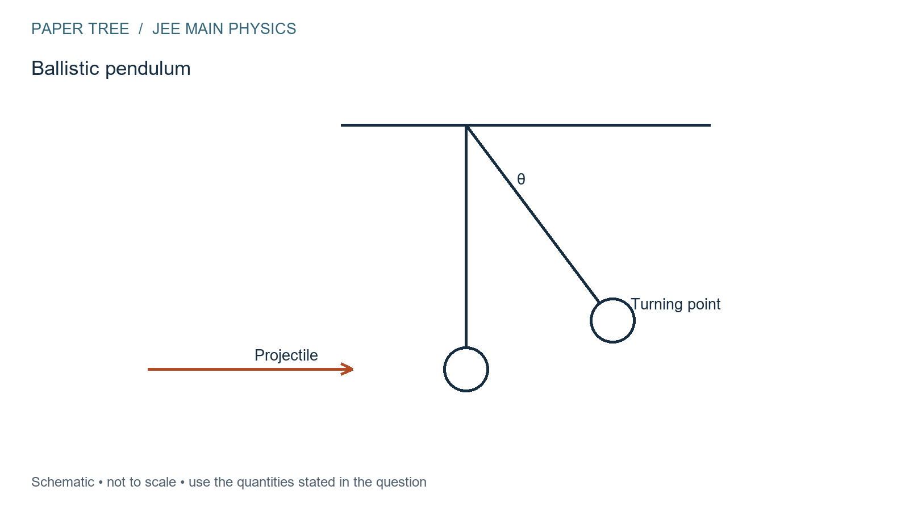
- A. 2 m/s
- B. 50 m/s
- C. 14.14 m/s
- D. 100 m/s
Answer and explanation
D. 100 m/s
The rise is h = L(1−cosθ) = 0.2 m. Energy after the collision gives v = √(2gh) = 2 m/s. Momentum during impact then gives u = (m+M)v/m = 100 m/s. Collision energy loss is 98 J. At the lowest point T−(m+M)g = (m+M)v²/L, so T = 14 N.
For the requested outcome — Find the incident projectile speed. — the result is 100 m/s.
A projectile of mass 0.02 kg moving horizontally embeds in a stationary pendulum bob of mass 0.98 kg on a light string of length 1 m. After impact the combined body rises until the string makes angle θ with vertical, with cos θ = 0.8. Use g = 10 m/s²; the collision is brief. Find the energy dissipated in embedding. Choose the closest value.
Use nonrelativistic mechanics. Springs are ideal and uniform; quoted external work for a slow change assumes negligible kinetic-energy change.
- A. 2 J
- B. 49 J
- C. 100 J
- D. 98 J
Answer and explanation
D. 98 J
The rise is h = L(1−cosθ) = 0.2 m. Energy after the collision gives v = √(2gh) = 2 m/s. Momentum during impact then gives u = (m+M)v/m = 100 m/s. Collision energy loss is 98 J. At the lowest point T−(m+M)g = (m+M)v²/L, so T = 14 N.
For the requested outcome — Find the energy dissipated in embedding. — the result is 98 J.
A projectile of mass 0.02 kg moving horizontally embeds in a stationary pendulum bob of mass 0.98 kg on a light string of length 1 m. After impact the combined body rises until the string makes angle θ with vertical, with cos θ = 0.8. Use g = 10 m/s²; the collision is brief. Find the string tension immediately after embedding. Choose the closest value.
Use nonrelativistic mechanics. Springs are ideal and uniform; quoted external work for a slow change assumes negligible kinetic-energy change.
- A. 7 N
- B. 14 N
- C. 4 N
- D. 10 N
Answer and explanation
B. 14 N
The rise is h = L(1−cosθ) = 0.2 m. Energy after the collision gives v = √(2gh) = 2 m/s. Momentum during impact then gives u = (m+M)v/m = 100 m/s. Collision energy loss is 98 J. At the lowest point T−(m+M)g = (m+M)v²/L, so T = 14 N.
For the requested outcome — Find the string tension immediately after embedding. — the result is 14 N.
A projectile of mass 0.05 kg moving horizontally embeds in a stationary pendulum bob of mass 0.95 kg on a light string of length ξ m. After impact the combined body rises until the string makes angle θ with vertical, with cos θ = 0.9. Use g = 10 m/s²; the collision is brief. The recorded value of the incident projectile speed is 40 m/s. Which listed positive value of ξ is consistent with this measurement?
Use nonrelativistic mechanics. Springs are ideal and uniform; quoted external work for a slow change assumes negligible kinetic-energy change.
Answer and explanation
D. 2
Use the physical relations below with the missing input ξ. The recorded value of the incident projectile speed gives ξ=2 in the unit assigned to ξ in the question. Substitution checks the observation:
The rise is h = L(1−cosθ) = 0.2 m. Energy after the collision gives v = √(2gh) = 2 m/s. Momentum during impact then gives u = (m+M)v/m = 40 m/s. Collision energy loss is 38 J. At the lowest point T−(m+M)g = (m+M)v²/L, so T = 12 N.
A projectile of mass 0.05 kg moving horizontally embeds in a stationary pendulum bob of mass ξ kg on a light string of length 2 m. After impact the combined body rises until the string makes angle θ with vertical, with cos θ = 0.9. Use g = 10 m/s²; the collision is brief. The recorded value of the energy dissipated in embedding is 38 J. Which listed positive value of ξ is consistent with this measurement?
Use nonrelativistic mechanics. Springs are ideal and uniform; quoted external work for a slow change assumes negligible kinetic-energy change.
- A. 0.475
- B. 1.425
- C. 0.95
- D. 1.9
Answer and explanation
C. 0.95
Use the physical relations below with the missing input ξ. The recorded value of the energy dissipated in embedding gives ξ=0.95 in the unit assigned to ξ in the question. Substitution checks the observation:
The rise is h = L(1−cosθ) = 0.2 m. Energy after the collision gives v = √(2gh) = 2 m/s. Momentum during impact then gives u = (m+M)v/m = 40 m/s. Collision energy loss is 38 J. At the lowest point T−(m+M)g = (m+M)v²/L, so T = 12 N.
A projectile of mass 0.05 kg moving horizontally embeds in a stationary pendulum bob of mass ξ kg on a light string of length 2 m. After impact the combined body rises until the string makes angle θ with vertical, with cos θ = 0.9. Use g = 10 m/s²; the collision is brief. The recorded value of the string tension immediately after embedding is 12 N. Which listed positive value of ξ is consistent with this measurement?
Use nonrelativistic mechanics. Springs are ideal and uniform; quoted external work for a slow change assumes negligible kinetic-energy change.
- A. 0.95
- B. 1.9
- C. 1.425
- D. 0.475
Answer and explanation
A. 0.95
Use the physical relations below with the missing input ξ. The recorded value of the string tension immediately after embedding gives ξ=0.95 in the unit assigned to ξ in the question. Substitution checks the observation:
The rise is h = L(1−cosθ) = 0.2 m. Energy after the collision gives v = √(2gh) = 2 m/s. Momentum during impact then gives u = (m+M)v/m = 40 m/s. Collision energy loss is 38 J. At the lowest point T−(m+M)g = (m+M)v²/L, so T = 12 N.
A 1 kg block moving at 8 m/s hits a stationary 3 kg block attached to an initially uncompressed horizontal spring of constant 100 N/m. They stick together. The surface is smooth and the collision is brief enough that the spring impulse during collision is negligible. Find the maximum compression. Choose the closest value.
Use nonrelativistic mechanics. Springs are ideal and uniform; quoted external work for a slow change assumes negligible kinetic-energy change.
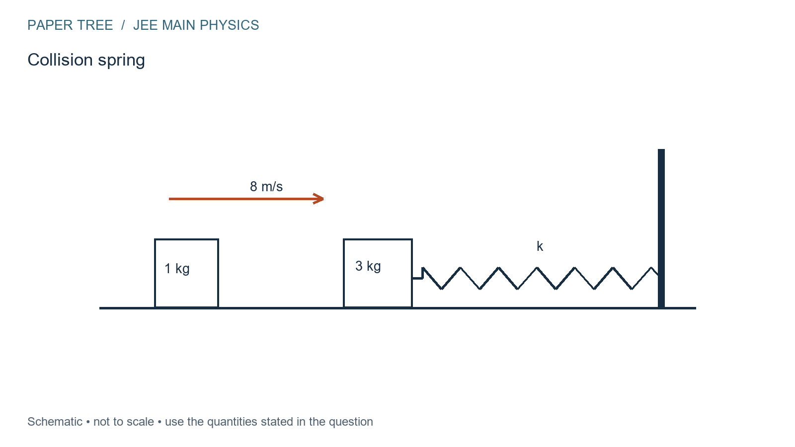
- A. 0.8 m
- B. -0.4 m
- C. 0.2 m
- D. 0.4 m
Answer and explanation
D. 0.4 m
During collision momentum is conserved, giving v = mu/(m+M) = 2 m/s. The collision loses 24 J. The remaining kinetic energy becomes spring energy: kx²/2 = (m+M)v²/2, so x = 0.4 m and kx = 40 N.
For the requested outcome — Find the maximum compression. — the result is 0.4 m.
A 1 kg block moving at 8 m/s hits a stationary 3 kg block attached to an initially uncompressed horizontal spring of constant 100 N/m. They stick together. The surface is smooth and the collision is brief enough that the spring impulse during collision is negligible. Find the mechanical energy lost in the collision. Choose the closest value.
Use nonrelativistic mechanics. Springs are ideal and uniform; quoted external work for a slow change assumes negligible kinetic-energy change.
- A. 12 J
- B. 32 J
- C. 24 J
- D. 8 J
Answer and explanation
C. 24 J
During collision momentum is conserved, giving v = mu/(m+M) = 2 m/s. The collision loses 24 J. The remaining kinetic energy becomes spring energy: kx²/2 = (m+M)v²/2, so x = 0.4 m and kx = 40 N.
For the requested outcome — Find the mechanical energy lost in the collision. — the result is 24 J.
A 1 kg block moving at 8 m/s hits a stationary 3 kg block attached to an initially uncompressed horizontal spring of constant 100 N/m. They stick together. The surface is smooth and the collision is brief enough that the spring impulse during collision is negligible. Find the maximum spring force after the collision. Choose the closest value.
Use nonrelativistic mechanics. Springs are ideal and uniform; quoted external work for a slow change assumes negligible kinetic-energy change.
- A. 20 N
- B. 80 N
- C. 200 N
- D. 40 N
Answer and explanation
D. 40 N
During collision momentum is conserved, giving v = mu/(m+M) = 2 m/s. The collision loses 24 J. The remaining kinetic energy becomes spring energy: kx²/2 = (m+M)v²/2, so x = 0.4 m and kx = 40 N.
For the requested outcome — Find the maximum spring force after the collision. — the result is 40 N.
A 2 kg block moving at 6 m/s hits a stationary ξ kg block attached to an initially uncompressed horizontal spring of constant 150 N/m. They stick together. The surface is smooth and the collision is brief enough that the spring impulse during collision is negligible. The recorded value of the maximum compression is 0.4 m. Which listed positive value of ξ is consistent with this measurement?
Use nonrelativistic mechanics. Springs are ideal and uniform; quoted external work for a slow change assumes negligible kinetic-energy change.
Answer and explanation
B. 4
Use the physical relations below with the missing input ξ. The recorded value of the maximum compression gives ξ=4 in the unit assigned to ξ in the question. Substitution checks the observation:
During collision momentum is conserved, giving v = mu/(m+M) = 2 m/s. The collision loses 24 J. The remaining kinetic energy becomes spring energy: kx²/2 = (m+M)v²/2, so x = 0.4 m and kx = 60 N.
A ξ kg block moving at 6 m/s hits a stationary 4 kg block attached to an initially uncompressed horizontal spring of constant 150 N/m. They stick together. The surface is smooth and the collision is brief enough that the spring impulse during collision is negligible. The recorded value of the mechanical energy lost in the collision is 24 J. Which listed positive value of ξ is consistent with this measurement?
Use nonrelativistic mechanics. Springs are ideal and uniform; quoted external work for a slow change assumes negligible kinetic-energy change.
Answer and explanation
A. 2
Use the physical relations below with the missing input ξ. The recorded value of the mechanical energy lost in the collision gives ξ=2 in the unit assigned to ξ in the question. Substitution checks the observation:
During collision momentum is conserved, giving v = mu/(m+M) = 2 m/s. The collision loses 24 J. The remaining kinetic energy becomes spring energy: kx²/2 = (m+M)v²/2, so x = 0.4 m and kx = 60 N.
A ξ kg block moving at 6 m/s hits a stationary 4 kg block attached to an initially uncompressed horizontal spring of constant 150 N/m. They stick together. The surface is smooth and the collision is brief enough that the spring impulse during collision is negligible. The recorded value of the maximum spring force after the collision is 60 N. Which listed positive value of ξ is consistent with this measurement?
Use nonrelativistic mechanics. Springs are ideal and uniform; quoted external work for a slow change assumes negligible kinetic-energy change.
Answer and explanation
A. 2
Use the physical relations below with the missing input ξ. The recorded value of the maximum spring force after the collision gives ξ=2 in the unit assigned to ξ in the question. Substitution checks the observation:
During collision momentum is conserved, giving v = mu/(m+M) = 2 m/s. The collision loses 24 J. The remaining kinetic energy becomes spring energy: kx²/2 = (m+M)v²/2, so x = 0.4 m and kx = 60 N.
A block of mass 2 kg moving at 10 m/s collides head-on elastically with a stationary 3 kg block on a smooth horizontal track. The second block then enters a smooth incline. Use g = 10 m/s². Find the greatest vertical height reached by the second block above the horizontal track. Choose the closest value.
Use nonrelativistic mechanics. Springs are ideal and uniform; quoted external work for a slow change assumes negligible kinetic-energy change.
- A. 0.2 m
- B. 5 m
- C. 3.2 m
- D. 1.6 m
Answer and explanation
C. 3.2 m
Momentum conservation and reversal of relative velocity give v₁ = -2 m/s and v₂ = 8 m/s. The second block rises to v₂²/(2g) = 3.2 m. Its energy fraction is Mv₂²/(mu²) = 0.96; its impulse is Mv₂ = 24 N s.
For the requested outcome — Find the greatest vertical height reached by the second block above the horizontal track. — the result is 3.2 m.
A block of mass 2 kg moving at 10 m/s collides head-on elastically with a stationary 3 kg block on a smooth horizontal track. The second block then enters a smooth incline. Use g = 10 m/s². What fraction of the initial kinetic energy is transferred to the second block?
Use nonrelativistic mechanics. Springs are ideal and uniform; quoted external work for a slow change assumes negligible kinetic-energy change.
- A. 0.96
- B. 0.4
- C. 0.48
- D. 0.6
Answer and explanation
A. 0.96
Momentum conservation and reversal of relative velocity give v₁ = -2 m/s and v₂ = 8 m/s. The second block rises to v₂²/(2g) = 3.2 m. Its energy fraction is Mv₂²/(mu²) = 0.96; its impulse is Mv₂ = 24 N s.
For the requested outcome — What fraction of the initial kinetic energy is transferred to the second block? — the result is 0.96.
A block of mass 2 kg moving at 10 m/s collides head-on elastically with a stationary 3 kg block on a smooth horizontal track. The second block then enters a smooth incline. Use g = 10 m/s². Find the magnitude of the impulse delivered to the second block during collision. Choose the closest value.
Use nonrelativistic mechanics. Springs are ideal and uniform; quoted external work for a slow change assumes negligible kinetic-energy change.
- A. 24 N s
- B. 12 N s
- C. 4 N s
- D. 20 N s
Answer and explanation
A. 24 N s
Momentum conservation and reversal of relative velocity give v₁ = -2 m/s and v₂ = 8 m/s. The second block rises to v₂²/(2g) = 3.2 m. Its energy fraction is Mv₂²/(mu²) = 0.96; its impulse is Mv₂ = 24 N s.
For the requested outcome — Find the magnitude of the impulse delivered to the second block during collision. — the result is 24 N s.
A block of mass 3 kg moving at 8 m/s collides head-on elastically with a stationary ξ kg block on a smooth horizontal track. The second block then enters a smooth incline. Use g = 10 m/s². The recorded value of the greatest vertical height reached by the second block above the horizontal track is 1.8 m. Which listed positive value of ξ is consistent with this measurement?
Use nonrelativistic mechanics. Springs are ideal and uniform; quoted external work for a slow change assumes negligible kinetic-energy change.
Answer and explanation
B. 5
Use the physical relations below with the missing input ξ. The recorded value of the greatest vertical height reached by the second block above the horizontal track gives ξ=5 in the unit assigned to ξ in the question. Substitution checks the observation:
Momentum conservation and reversal of relative velocity give v₁ = -2 m/s and v₂ = 6 m/s. The second block rises to v₂²/(2g) = 1.8 m. Its energy fraction is Mv₂²/(mu²) = 0.9375; its impulse is Mv₂ = 30 N s.
A block of mass ξ kg moving at 8 m/s collides head-on elastically with a stationary 5 kg block on a smooth horizontal track. The second block then enters a smooth incline. Use g = 10 m/s². The recorded value of fraction of the initial kinetic energy transferred to the second block is 0.9375. Which listed positive value of ξ is consistent with this measurement?
Use nonrelativistic mechanics. Springs are ideal and uniform; quoted external work for a slow change assumes negligible kinetic-energy change.
Answer and explanation
C. 3
Use the physical relations below with the missing input ξ. Matching the measured fraction of the initial kinetic energy transferred to the second block gives ξ=3 in the unit assigned to ξ in the question. Substitution checks the observation:
Momentum conservation and reversal of relative velocity give v₁ = -2 m/s and v₂ = 6 m/s. The second block rises to v₂²/(2g) = 1.8 m. Its energy fraction is Mv₂²/(mu²) = 0.9375; its impulse is Mv₂ = 30 N s.
A block of mass 3 kg moving at 8 m/s collides head-on elastically with a stationary ξ kg block on a smooth horizontal track. The second block then enters a smooth incline. Use g = 10 m/s². The recorded value of the magnitude of the impulse delivered to the second block during collision is 30 N s. Which listed positive value of ξ is consistent with this measurement?
Use nonrelativistic mechanics. Springs are ideal and uniform; quoted external work for a slow change assumes negligible kinetic-energy change.
Answer and explanation
C. 5
Use the physical relations below with the missing input ξ. The recorded value of the magnitude of the impulse delivered to the second block during collision gives ξ=5 in the unit assigned to ξ in the question. Substitution checks the observation:
Momentum conservation and reversal of relative velocity give v₁ = -2 m/s and v₂ = 6 m/s. The second block rises to v₂²/(2g) = 1.8 m. Its energy fraction is Mv₂²/(mu²) = 0.9375; its impulse is Mv₂ = 30 N s.
A small 0.5 kg bead starts from rest at height 6 m above the bottom of a smooth vertical circular track of radius 2 m. It moves on the inside of the loop. Ignore air resistance and use g = 10 m/s². The chosen height is sufficient for complete contact. Find the normal force at the highest point. Choose the closest value.
Use nonrelativistic mechanics. Springs are ideal and uniform; quoted external work for a slow change assumes negligible kinetic-energy change.
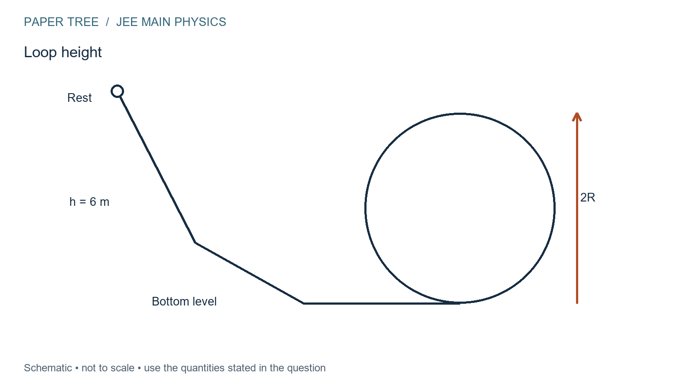
- A. 5 N
- B. 0 N
- C. 10 N
- D. 15 N
Answer and explanation
A. 5 N
Energy gives v² = 2g(h−y). At the top gravity and the normal force are both inward: Ntop = m(vtop²/r−g) = 5 N. At the bottom, Nbottom−mg = mvbottom²/r, giving 35 N. At centre height gravity has no radial component and Nside = 2mg(h−r)/r = 20 N.
For the requested outcome — Find the normal force at the highest point. — the result is 5 N.
A small 0.5 kg bead starts from rest at height 6 m above the bottom of a smooth vertical circular track of radius 2 m. It moves on the inside of the loop. Ignore air resistance and use g = 10 m/s². The chosen height is sufficient for complete contact. Find the normal force at the lowest point. Choose the closest value.
Use nonrelativistic mechanics. Springs are ideal and uniform; quoted external work for a slow change assumes negligible kinetic-energy change.
- A. 17.5 N
- B. 25 N
- C. 35 N
- D. 30 N
Answer and explanation
C. 35 N
Energy gives v² = 2g(h−y). At the top gravity and the normal force are both inward: Ntop = m(vtop²/r−g) = 5 N. At the bottom, Nbottom−mg = mvbottom²/r, giving 35 N. At centre height gravity has no radial component and Nside = 2mg(h−r)/r = 20 N.
For the requested outcome — Find the normal force at the lowest point. — the result is 35 N.
A small 0.5 kg bead starts from rest at height 6 m above the bottom of a smooth vertical circular track of radius 2 m. It moves on the inside of the loop. Ignore air resistance and use g = 10 m/s². The chosen height is sufficient for complete contact. Find the normal force when the bead is level with the centre. Choose the closest value.
Use nonrelativistic mechanics. Springs are ideal and uniform; quoted external work for a slow change assumes negligible kinetic-energy change.
- A. 20 N
- B. 25 N
- C. 15 N
- D. 5 N
Answer and explanation
A. 20 N
Energy gives v² = 2g(h−y). At the top gravity and the normal force are both inward: Ntop = m(vtop²/r−g) = 5 N. At the bottom, Nbottom−mg = mvbottom²/r, giving 35 N. At centre height gravity has no radial component and Nside = 2mg(h−r)/r = 20 N.
For the requested outcome — Find the normal force when the bead is level with the centre. — the result is 20 N.
A small ξ kg bead starts from rest at height 9 m above the bottom of a smooth vertical circular track of radius 3 m. It moves on the inside of the loop. Ignore air resistance and use g = 10 m/s². The chosen height is sufficient for complete contact. The recorded value of the normal force at the highest point is 10 N. Which listed positive value of ξ is consistent with this measurement?
Use nonrelativistic mechanics. Springs are ideal and uniform; quoted external work for a slow change assumes negligible kinetic-energy change.
Answer and explanation
B. 1
Use the physical relations below with the missing input ξ. The recorded value of the normal force at the highest point gives ξ=1 in the unit assigned to ξ in the question. Substitution checks the observation:
Energy gives v² = 2g(h−y). At the top gravity and the normal force are both inward: Ntop = m(vtop²/r−g) = 10 N. At the bottom, Nbottom−mg = mvbottom²/r, giving 70 N. At centre height gravity has no radial component and Nside = 2mg(h−r)/r = 40 N.
A small 1 kg bead starts from rest at height 9 m above the bottom of a smooth vertical circular track of radius ξ m. It moves on the inside of the loop. Ignore air resistance and use g = 10 m/s². The chosen height is sufficient for complete contact. The recorded value of the normal force at the lowest point is 70 N. Which listed positive value of ξ is consistent with this measurement?
Use nonrelativistic mechanics. Springs are ideal and uniform; quoted external work for a slow change assumes negligible kinetic-energy change.
Answer and explanation
D. 3
Use the physical relations below with the missing input ξ. The recorded value of the normal force at the lowest point gives ξ=3 in the unit assigned to ξ in the question. Substitution checks the observation:
Energy gives v² = 2g(h−y). At the top gravity and the normal force are both inward: Ntop = m(vtop²/r−g) = 10 N. At the bottom, Nbottom−mg = mvbottom²/r, giving 70 N. At centre height gravity has no radial component and Nside = 2mg(h−r)/r = 40 N.
A small ξ kg bead starts from rest at height 9 m above the bottom of a smooth vertical circular track of radius 3 m. It moves on the inside of the loop. Ignore air resistance and use g = 10 m/s². The chosen height is sufficient for complete contact. The recorded value of the normal force when the bead is level with the centre is 40 N. Which listed positive value of ξ is consistent with this measurement?
Use nonrelativistic mechanics. Springs are ideal and uniform; quoted external work for a slow change assumes negligible kinetic-energy change.
Answer and explanation
D. 1
Use the physical relations below with the missing input ξ. The recorded value of the normal force when the bead is level with the centre gives ξ=1 in the unit assigned to ξ in the question. Substitution checks the observation:
Energy gives v² = 2g(h−y). At the top gravity and the normal force are both inward: Ntop = m(vtop²/r−g) = 10 N. At the bottom, Nbottom−mg = mvbottom²/r, giving 70 N. At centre height gravity has no radial component and Nside = 2mg(h−r)/r = 40 N.
A 2 kg block is released from rest after compressing a horizontal spring of constant 200 N/m by 0.5 m on a rough horizontal floor. The kinetic friction coefficient is 0.2. The block is not attached to the spring. Take g = 10 m/s² and assume it leaves the spring at its natural length. Find the speed when the block leaves the spring. Choose the closest value.
Use nonrelativistic mechanics. Springs are ideal and uniform; quoted external work for a slow change assumes negligible kinetic-energy change.
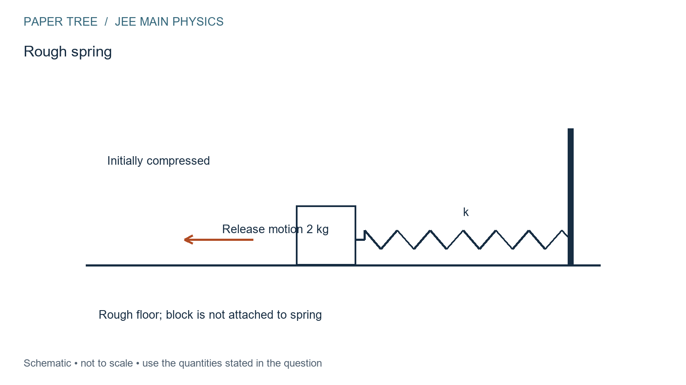
- A. 4.796 m/s
- B. 5 m/s
- C. 2.398 m/s
- D. 4.899 m/s
Answer and explanation
A. 4.796 m/s
Initial spring energy is 25 J. Friction acts during decompression too: mv²/2 = kx²/2−μmgx, yielding v = 4.795831523 m/s. The remaining kinetic energy is lost over v²/(2μg) = 5.75 m beyond the spring. Forward acceleration is largest initially, kx/m−μg = 48 m/s².
For the requested outcome — Find the speed when the block leaves the spring. — the result is 4.796 m/s.
A 2 kg block is released from rest after compressing a horizontal spring of constant 200 N/m by 0.5 m on a rough horizontal floor. The kinetic friction coefficient is 0.2. The block is not attached to the spring. Take g = 10 m/s² and assume it leaves the spring at its natural length. How far beyond the natural-length position does it travel before stopping? Choose the closest value.
Use nonrelativistic mechanics. Springs are ideal and uniform; quoted external work for a slow change assumes negligible kinetic-energy change.
- A. 5.75 m
- B. 2.875 m
- C. 6.25 m
- D. 0.5 m
Answer and explanation
A. 5.75 m
Initial spring energy is 25 J. Friction acts during decompression too: mv²/2 = kx²/2−μmgx, yielding v = 4.795831523 m/s. The remaining kinetic energy is lost over v²/(2μg) = 5.75 m beyond the spring. Forward acceleration is largest initially, kx/m−μg = 48 m/s².
For the requested outcome — How far beyond the natural-length position does it travel before stopping? — the result is 5.75 m.
A 2 kg block is released from rest after compressing a horizontal spring of constant 200 N/m by 0.5 m on a rough horizontal floor. The kinetic friction coefficient is 0.2. The block is not attached to the spring. Take g = 10 m/s² and assume it leaves the spring at its natural length. What is the greatest forward acceleration during the spring-driven part of motion?
Use nonrelativistic mechanics. Springs are ideal and uniform; quoted external work for a slow change assumes negligible kinetic-energy change.
- A. 48 m/s²
- B. 2 m/s²
- C. 24 m/s²
- D. 50 m/s²
Answer and explanation
A. 48 m/s²
Initial spring energy is 25 J. Friction acts during decompression too: mv²/2 = kx²/2−μmgx, yielding v = 4.795831523 m/s. The remaining kinetic energy is lost over v²/(2μg) = 5.75 m beyond the spring. Forward acceleration is largest initially, kx/m−μg = 48 m/s².
For the requested outcome — What is the greatest forward acceleration during the spring-driven part of motion? — the result is 48 m/s².
A 1 kg block is released from rest after compressing a horizontal spring of constant ξ N/m by 0.4 m on a rough horizontal floor. The kinetic friction coefficient is 0.25. The block is not attached to the spring. Take g = 10 m/s² and assume it leaves the spring at its natural length. The recorded value of the speed when the block leaves the spring is 3.741657387 m/s. Which listed positive value of ξ is consistent with this measurement?
Use nonrelativistic mechanics. Springs are ideal and uniform; quoted external work for a slow change assumes negligible kinetic-energy change.
Answer and explanation
C. 100
Use the physical relations below with the missing input ξ. The recorded value of the speed when the block leaves the spring gives ξ=100 in the unit assigned to ξ in the question. Substitution checks the observation:
Initial spring energy is 8 J. Friction acts during decompression too: mv²/2 = kx²/2−μmgx, yielding v = 3.741657387 m/s. The remaining kinetic energy is lost over v²/(2μg) = 2.8 m beyond the spring. Forward acceleration is largest initially, kx/m−μg = 37.5 m/s².
A ξ kg block is released from rest after compressing a horizontal spring of constant 100 N/m by 0.4 m on a rough horizontal floor. The kinetic friction coefficient is 0.25. The block is not attached to the spring. Take g = 10 m/s² and assume it leaves the spring at its natural length. The recorded value of distance travelled after leaving the spring until stopping is 2.8 m. Which listed positive value of ξ is consistent with this measurement?
Use nonrelativistic mechanics. Springs are ideal and uniform; quoted external work for a slow change assumes negligible kinetic-energy change.
Answer and explanation
D. 1
Use the physical relations below with the missing input ξ. Matching the measured distance travelled after leaving the spring until stopping gives ξ=1 in the unit assigned to ξ in the question. Substitution checks the observation:
Initial spring energy is 8 J. Friction acts during decompression too: mv²/2 = kx²/2−μmgx, yielding v = 3.741657387 m/s. The remaining kinetic energy is lost over v²/(2μg) = 2.8 m beyond the spring. Forward acceleration is largest initially, kx/m−μg = 37.5 m/s².
A 1 kg block is released from rest after compressing a horizontal spring of constant 100 N/m by 0.4 m on a rough horizontal floor. The kinetic friction coefficient is ξ. The block is not attached to the spring. Take g = 10 m/s² and assume it leaves the spring at its natural length. The recorded value of greatest forward acceleration during spring-driven motion is 37.5 m/s². Which listed positive value of ξ is consistent with this measurement?
Use nonrelativistic mechanics. Springs are ideal and uniform; quoted external work for a slow change assumes negligible kinetic-energy change.
- A. 0.25
- B. 0.5
- C. 0.125
- D. 0.375
Answer and explanation
A. 0.25
Use the physical relations below with the missing input ξ. Matching the measured greatest forward acceleration during spring-driven motion gives ξ=0.25 in the unit assigned to ξ in the question. Substitution checks the observation:
Initial spring energy is 8 J. Friction acts during decompression too: mv²/2 = kx²/2−μmgx, yielding v = 3.741657387 m/s. The remaining kinetic energy is lost over v²/(2μg) = 2.8 m beyond the spring. Forward acceleration is largest initially, kx/m−μg = 37.5 m/s².
A 2 kg particle starts from rest at x = 0 on a smooth horizontal line. Its only horizontal force is F(x) = 12−3x N, where x is in metres. The force remains described by this relation throughout the motion. Find the maximum speed reached. Choose the closest value.
Use nonrelativistic mechanics. Springs are ideal and uniform; quoted external work for a slow change assumes negligible kinetic-energy change.
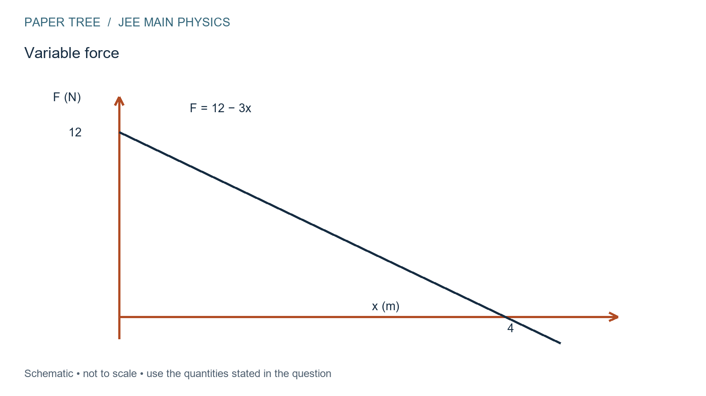
- A. 6.928 m/s
- B. 4.899 m/s
- C. 4 m/s
- D. 3.464 m/s
Answer and explanation
B. 4.899 m/s
Integrating F gives K = Ax−Bx²/2. This is largest at x = A/B = 4 m, giving vmax = A/√(Bm) = 4.898979486 m/s. The next zero of K is x = 2A/B = 8 m. Motion about x = A/B is SHM with ω = √(B/m); the turning point is reached after half a period, 2.56509966 s.
For the requested outcome — Find the maximum speed reached. — the result is 4.899 m/s.
A 2 kg particle starts from rest at x = 0 on a smooth horizontal line. Its only horizontal force is F(x) = 12−3x N, where x is in metres. The force remains described by this relation throughout the motion. Find the first positive turning-point coordinate. Choose the closest value.
Use nonrelativistic mechanics. Springs are ideal and uniform; quoted external work for a slow change assumes negligible kinetic-energy change.
- A. 2 m
- B. 8 m
- C. 4 m
- D. 16 m
Answer and explanation
B. 8 m
Integrating F gives K = Ax−Bx²/2. This is largest at x = A/B = 4 m, giving vmax = A/√(Bm) = 4.898979486 m/s. The next zero of K is x = 2A/B = 8 m. Motion about x = A/B is SHM with ω = √(B/m); the turning point is reached after half a period, 2.56509966 s.
For the requested outcome — Find the first positive turning-point coordinate. — the result is 8 m.
A 2 kg particle starts from rest at x = 0 on a smooth horizontal line. Its only horizontal force is F(x) = 12−3x N, where x is in metres. The force remains described by this relation throughout the motion. Find the time from release to the first positive turning point. Choose the closest value.
Use nonrelativistic mechanics. Springs are ideal and uniform; quoted external work for a slow change assumes negligible kinetic-energy change.
- A. 1.283 s
- B. 1.633 s
- C. 2.565 s
- D. 5.13 s
Answer and explanation
C. 2.565 s
Integrating F gives K = Ax−Bx²/2. This is largest at x = A/B = 4 m, giving vmax = A/√(Bm) = 4.898979486 m/s. The next zero of K is x = 2A/B = 8 m. Motion about x = A/B is SHM with ω = √(B/m); the turning point is reached after half a period, 2.56509966 s.
For the requested outcome — Find the time from release to the first positive turning point. — the result is 2.565 s.
A 3 kg particle starts from rest at x = 0 on a smooth horizontal line. Its only horizontal force is F(x) = ξ−2x N, where x is in metres. The force remains described by this relation throughout the motion. The recorded value of the maximum speed reached is 7.348469228 m/s. Which listed positive value of ξ is consistent with this measurement?
Use nonrelativistic mechanics. Springs are ideal and uniform; quoted external work for a slow change assumes negligible kinetic-energy change.
Answer and explanation
C. 18
Use the physical relations below with the missing input ξ. The recorded value of the maximum speed reached gives ξ=18 in the unit assigned to ξ in the question. Substitution checks the observation:
Integrating F gives K = Ax−Bx²/2. This is largest at x = A/B = 9 m, giving vmax = A/√(Bm) = 7.348469228 m/s. The next zero of K is x = 2A/B = 18 m. Motion about x = A/B is SHM with ω = √(B/m); the turning point is reached after half a period, 3.84764949 s.
A 3 kg particle is released from rest at x=0 on a rough horizontal line. An external force F(x)=18−2x N acts throughout, with x in metres and positive force toward increasing x. The coefficients of kinetic and static friction are 0.10 and 0.15 respectively; take g=10 m/s². Whenever the particle stops, apply the static-friction condition before deciding whether it moves again. The line is long enough for the motion. Find the total distance travelled before the particle first remains permanently at rest. Choose the closest value.
Use the idealisations, constants, geometry and sign conventions stated in this question. Any accompanying drawing is schematic.
- A. 15 m
- B. 27 m
- C. 24 m
- D. 30 m
Answer and explanation
B. 27 m
Kinetic friction has magnitude 3 N and maximum static friction is 4.5 N. On the first outward leg, work is 15x−x², so the nonzero turning point is x=15 m. There |F|=12 N>4.5 N, so it returns. On a leftward leg the total force is 21−2x; zero net work from 15 gives the next stop at x=6 m. There F=6 N>4.5 N, so it moves right. With force 15−2x during that leg, the next stop is x=9 m. Here F=0 and static friction can hold it. Distance =15+9+3=27 m.
A 3 kg particle starts from rest at x = 0 on a smooth horizontal line. Its only horizontal force is F(x) = 18−ξx N, where x is in metres. The force remains described by this relation throughout the motion. The recorded value of the time from release to the first positive turning point is 3.84764949 s. Which listed positive value of ξ is consistent with this measurement?
Use nonrelativistic mechanics. Springs are ideal and uniform; quoted external work for a slow change assumes negligible kinetic-energy change.
Answer and explanation
A. 2
Use the physical relations below with the missing input ξ. The recorded value of the time from release to the first positive turning point gives ξ=2 in the unit assigned to ξ in the question. Substitution checks the observation:
Integrating F gives K = Ax−Bx²/2. This is largest at x = A/B = 9 m, giving vmax = A/√(Bm) = 7.348469228 m/s. The next zero of K is x = 2A/B = 18 m. Motion about x = A/B is SHM with ω = √(B/m); the turning point is reached after half a period, 3.84764949 s.
The SI unit of angular momentum is:
Rigid bodies and fixed axes are ideal unless specified otherwise; moments of inertia refer to the named axis.
- A. kg m s⁻¹
- B. kg m²
- C. kg m² s⁻¹
- D. kg m² s⁻²
Answer and explanation
C. kg m² s⁻¹
L = I ω has units kg m² x s⁻¹ = kg m² s⁻¹.
A point particle of mass 2 kg moves perpendicular to a uniform rod of mass 6 kg and length 3 m, striking one end. The rod is initially at rest on a smooth horizontal plane. The normal coefficient of restitution is 0.5; the particle arrives at ξ m/s. The impact direction is perpendicular to the rod and all impulses lie along it. In this arrangement, the following outcome is measured: the particle’s signed outgoing velocity along its initial direction = 2.857142857 m/s. Which listed positive value of ξ is consistent with that outcome?
Rigid bodies and fixed axes are ideal unless specified otherwise; moments of inertia refer to the named axis.
Answer and explanation
D. 8
Use the coupled physical relations below. The missing input is ξ=8 in the units assigned in the stem.
An impulse J gives rod COM speed J/M and ω=6J/(ML), so the struck end moves at 4J/M. Restitution is 4J/M−(u−J/m)=eu, giving J=10.28571429 N s. Thus ω=3.428571429 rad/s and particle velocity 2.857142857 m/s. Include both rod translation and rotation: rod energy=35.26530612 J and total loss=20.57142857 J.
When a spinning ice skater pulls her arms inward, her angular velocity:
Rigid bodies and fixed axes are ideal unless specified otherwise; moments of inertia refer to the named axis.
- A. decreases because her moment of inertia decreases
- B. remains unchanged because angular momentum is conserved
- C. increases because her angular momentum increases
- D. increases because her moment of inertia decreases
Answer and explanation
D. increases because her moment of inertia decreases
With negligible external torque, L = I ω is constant; pulling the arms in reduces I, so ω increases.
A point particle of mass 1 kg moves perpendicular to a uniform rod of mass 4 kg and length 2 m, striking one end. The rod is initially at rest on a smooth horizontal plane. The normal coefficient of restitution is 1; the particle arrives at 10 m/s. The impact direction is perpendicular to the rod and all impulses lie along it. Find the rod’s angular speed immediately after impact. Choose the closest value.
Rigid bodies and fixed axes are ideal unless specified otherwise; moments of inertia refer to the named axis.
- A. 15 rad/s
- B. 3.75 rad/s
- C. -7.5 rad/s
- D. 7.5 rad/s
Answer and explanation
D. 7.5 rad/s
An impulse J gives rod COM speed J/M and ω=6J/(ML), so the struck end moves at 4J/M. Restitution is 4J/M−(u−J/m)=eu, giving J=10 N s. Thus ω=7.5 rad/s and particle velocity 0 m/s. Include both rod translation and rotation: rod energy=50 J and total loss=0 J.
Requested result: 7.5 rad/s.
A planet moving around the Sun sweeps equal areas in equal times. This is a direct consequence of:
Rigid bodies and fixed axes are ideal unless specified otherwise; moments of inertia refer to the named axis.
- A. conservation of energy
- B. conservation of linear momentum
- C. conservation of angular momentum
- D. the constancy of the gravitational force
Answer and explanation
C. conservation of angular momentum
Gravity is a central force, so it exerts no torque about the Sun, and the planet's angular momentum, and hence its areal velocity, stays constant.
A uniform rod of mass 3 kg and length 2 m hangs vertically from a frictionless pivot at its upper end. A projectile of mass 0.5 kg moving horizontally at 8 m/s embeds at the lower end. The rod-projectile system then swings without loss. Take g=10 m/s². The maximum angle is less than 90° from the initial downward vertical. Find the magnitude of the horizontal impulse supplied by the pivot during impact. Choose the closest value.
Rigid bodies and fixed axes are ideal unless specified otherwise; moments of inertia refer to the named axis.
- A. -1.333 N s
- B. 1.333 N s
- C. 2.667 N s
- D. 0.6667 N s
Answer and explanation
B. 1.333 N s
Conserve angular momentum about the pivot, not total horizontal momentum: I=6 kg m², ω=1.333333333 rad/s. The post-impact energy is 5.333333333 J and equals gL(M/2+m)(1−cosθ), giving θ=29.92643487°. Embedding loss is 10.66666667 J. The final horizontal momentum is (M/2+m)Lω; its deficit relative to mu is the pivot impulse magnitude 1.333333333 N s.
Requested result: 1.333 N s.
The rate of change of angular momentum of a body equals:
Rigid bodies and fixed axes are ideal unless specified otherwise; moments of inertia refer to the named axis.
- A. its moment of inertia
- B. the net external torque acting on it
- C. the net external force acting on it
- D. its angular velocity
Answer and explanation
B. the net external torque acting on it
Just as force is the rate of change of linear momentum, torque is the rate of change of angular momentum.
The angular momentum of a system is conserved when:
Rigid bodies and fixed axes are ideal unless specified otherwise; moments of inertia refer to the named axis.
- A. the net external force on the system is zero
- B. the moment of inertia is constant
- C. the angular velocity is constant
- D. the net external torque on the system is zero
Answer and explanation
D. the net external torque on the system is zero
From tau = dL/dt, zero net external torque implies that L remains constant.
A flywheel of moment of inertia 6 kg m² rotates at 5 rad s⁻¹. Its angular momentum is:
Rigid bodies and fixed axes are ideal unless specified otherwise; moments of inertia refer to the named axis.
- A. 150 kg m² s⁻¹
- B. 30 kg m² s⁻¹
- C. 1.2 kg m² s⁻¹
- D. 11 kg m² s⁻¹
Answer and explanation
B. 30 kg m² s⁻¹
L = I ω = 6 × 5 = 30 kg m² s⁻¹.
For rotation about a principal axis through the centre of mass, the magnitude of the angular momentum about that axis is:
Rigid bodies and fixed axes are ideal unless specified otherwise; moments of inertia refer to the named axis.
- A. m v
- B. I alpha
- C. I ω
- D. I / ω
Answer and explanation
C. I ω
Angular momentum L equals moment of inertia times angular velocity.
An isolated rotating system changes its moment of inertia from 4 kg m² to 2 kg m². If its initial angular speed is 2 rad s⁻¹, the final angular speed is:
Rigid bodies and fixed axes are ideal unless specified otherwise; moments of inertia refer to the named axis.
- A. 4 rad s⁻¹
- B. 8 rad s⁻¹
- C. 1 rad s⁻¹
- D. 2 rad s⁻¹
Answer and explanation
A. 4 rad s⁻¹
With no external torque, I₁ω₁ = I₂ω₂. Hence ω₂ = (4)(2)/2 = 4 rad s⁻¹.
An isolated rotating system changes its moment of inertia from 6 kg m² to 9 kg m². If its initial angular speed is 3 rad s⁻¹, the final angular speed is:
Rigid bodies and fixed axes are ideal unless specified otherwise; moments of inertia refer to the named axis.
- A. 3 rad s⁻¹
- B. 2 rad s⁻¹
- C. 4.5 rad s⁻¹
- D. 18 rad s⁻¹
Answer and explanation
B. 2 rad s⁻¹
With no external torque, I₁ω₁ = I₂ω₂. Hence ω₂ = (6)(3)/9 = 2 rad s⁻¹.
A particle moves anticlockwise in the xy-plane as seen from +z. Its angular momentum about the centre points along:
Rigid bodies and fixed axes are ideal unless specified otherwise; moments of inertia refer to the named axis.
- A. radially outward
- B. -z
- C. +z
- D. along its instantaneous velocity
Answer and explanation
C. +z
The right-hand rule gives angular momentum along +z for anticlockwise motion.
Masses 2 kg and 3 kg are at x = 0 and x = 5 m respectively. The x-coordinate of their centre of mass is:
Rigid bodies and fixed axes are ideal unless specified otherwise; moments of inertia refer to the named axis.
- A. 3 m
- B. 5 m
- C. 2 m
- D. 2.5 m
Answer and explanation
A. 3 m
x_CM = (2×0 + 3×5)/(2+3) = 3 m.
The radius of gyration of a disc of radius R about its central perpendicular axis is:
Rigid bodies and fixed axes are ideal unless specified otherwise; moments of inertia refer to the named axis.
- A. R √(2)
- B. R / 2
- C. R / √(2)
- D. R
Answer and explanation
C. R / √(2)
M k² = M R²/2 gives k² = R²/2, so k = R/√(2).
A disc of mass 4 kg and radius 0.5 m rotates about its central perpendicular axis. Its moment of inertia is:
Rigid bodies and fixed axes are ideal unless specified otherwise; moments of inertia refer to the named axis.
- A. 0.25 kg m²
- B. 0.5 kg m²
- C. 1 kg m²
- D. 2 kg m²
Answer and explanation
B. 0.5 kg m²
I = M R²/2 = 4 × (0.5)²/2 = 4 × 0.25/2 = 0.5 kg m².
The moment of inertia of a solid sphere of mass M and radius R about a diameter is:
Rigid bodies and fixed axes are ideal unless specified otherwise; moments of inertia refer to the named axis.
- A. M R² / 2
- B. 2 M R² / 3
- C. 7 M R² / 5
- D. 2 M R² / 5
Answer and explanation
D. 2 M R² / 5
For a uniform solid sphere about any diameter, I = 2 M R² / 5.
A horizontal turntable with unknown fixed moment of inertia I carries two identical point masses, each 2 kg. They are initially at radius ξ m when its angular speed is 3 rad/s. They move radially to 0.5 m, giving angular speed 9 rad/s. There is no external torque. They next move to radius 1 m, with negligible radial kinetic energy at each endpoint. In this arrangement, the following outcome is measured: the final angular speed at the third radius = 5.142857143 rad/s. Which listed positive value of ξ is consistent with that outcome?
Rigid bodies and fixed axes are ideal unless specified otherwise; moments of inertia refer to the named axis.
Answer and explanation
B. 1.5
Use the coupled physical relations below. The missing input is ξ=1.5 in the units assigned in the stem.
Conservation between the first two states gives I=3 kg m² and angular momentum H=36 kg m²/s. At r3, ω=H/(I+2mr3²)=5.142857143 rad/s. Internal work is the rotational-energy change at constant H, -69.42857143 J. Once the masses are fixed radially, each needs mω²r3=52.89795918 N inward.
The moment of inertia of a rigid body depends on:
Rigid bodies and fixed axes are ideal unless specified otherwise; moments of inertia refer to the named axis.
- A. the mass alone
- B. the applied torque
- C. the angular velocity of the body
- D. the mass, its distribution and the axis chosen
Answer and explanation
D. the mass, its distribution and the axis chosen
Since I = sum m r², it depends on how much mass lies at what distance from the chosen axis.
A point particle of mass 1 kg moves perpendicular to a uniform rod of mass 4 kg and length 2 m, striking one end. The rod is initially at rest on a smooth horizontal plane. The normal coefficient of restitution is 1; the particle arrives at 10 m/s. The impact direction is perpendicular to the rod and all impulses lie along it. Find the particle’s signed outgoing velocity along its initial direction. Choose the closest value.
Rigid bodies and fixed axes are ideal unless specified otherwise; moments of inertia refer to the named axis.
- A. 2 m/s
- B. 1 m/s
- C. 0 m/s
- D. 3 m/s
Answer and explanation
C. 0 m/s
An impulse J gives rod COM speed J/M and ω=6J/(ML), so the struck end moves at 4J/M. Restitution is 4J/M−(u−J/m)=eu, giving J=10 N s. Thus ω=7.5 rad/s and particle velocity 0 m/s. Include both rod translation and rotation: rod energy=50 J and total loss=0 J.
Requested result: 0 m/s.
The radius of gyration k of a body of mass M and moment of inertia I is given by:
Rigid bodies and fixed axes are ideal unless specified otherwise; moments of inertia refer to the named axis.
- A. k = √(I / M)
- B. k = I M
- C. k = √(M / I)
- D. k = I / M
Answer and explanation
A. k = √(I / M)
By definition I = M k², so the radius of gyration is k = √(I/M).
A horizontal turntable with unknown fixed moment of inertia I carries two identical point masses, each 2 kg. They are initially at radius ξ m when its angular speed is 3 rad/s. They move radially to 0.5 m, giving angular speed 9 rad/s. There is no external torque. They next move to radius 1 m, with negligible radial kinetic energy at each endpoint. In this arrangement, the following outcome is measured: the net work supplied internally in the second redistribution (negative if energy is extracted) = -69.42857143 J. Which listed positive value of ξ is consistent with that outcome?
Rigid bodies and fixed axes are ideal unless specified otherwise; moments of inertia refer to the named axis.
Answer and explanation
B. 1.5
Use the coupled physical relations below. The missing input is ξ=1.5 in the units assigned in the stem.
Conservation between the first two states gives I=3 kg m² and angular momentum H=36 kg m²/s. At r3, ω=H/(I+2mr3²)=5.142857143 rad/s. Internal work is the rotational-energy change at constant H, -69.42857143 J. Once the masses are fixed radially, each needs mω²r3=52.89795918 N inward.
The moment of inertia of a uniform disc of mass M and radius R about its diameter is:
Rigid bodies and fixed axes are ideal unless specified otherwise; moments of inertia refer to the named axis.
- A. M R² / 4
- B. M R²
- C. 3 M R² / 2
- D. M R² / 2
Answer and explanation
A. M R² / 4
For a disc I_z = M R²/2, and by symmetry 2 I_diameter = M R²/2, giving I_diameter = M R²/4.
In the usual parallel-axis formula I=I_CM+Md², the reference axis for I_CM must:
Rigid bodies and fixed axes are ideal unless specified otherwise; moments of inertia refer to the named axis.
- A. passes through the centre of mass
- B. is perpendicular to the body
- C. passes through a corner of the body
- D. lies in the plane of the body
Answer and explanation
A. passes through the centre of mass
The relation I = I_cm + M d² requires that I_cm be taken about an axis through the centre of mass.
A uniform rod of mass 3 kg and length 2 m hangs vertically from a frictionless pivot at its upper end. A projectile of mass 0.5 kg moving horizontally at 8 m/s embeds at the lower end. The rod-projectile system then swings without loss. Take g=10 m/s². The maximum angle is less than 90° from the initial downward vertical. Find the greatest swing angle. Choose the closest value.
Rigid bodies and fixed axes are ideal unless specified otherwise; moments of inertia refer to the named axis.
- A. -29.93 °
- B. 14.96 °
- C. 29.93 °
- D. 59.85 °
Answer and explanation
C. 29.93 °
Conserve angular momentum about the pivot, not total horizontal momentum: I=6 kg m², ω=1.333333333 rad/s. The post-impact energy is 5.333333333 J and equals gL(M/2+m)(1−cosθ), giving θ=29.92643487°. Embedding loss is 10.66666667 J. The final horizontal momentum is (M/2+m)Lω; its deficit relative to mu is the pivot impulse magnitude 1.333333333 N s.
Requested result: 29.93 °.
A body of mass 10 kg has radius of gyration 0.3 m about an axis. Its moment of inertia is:
Rigid bodies and fixed axes are ideal unless specified otherwise; moments of inertia refer to the named axis.
- A. 0.9 kg m²
- B. 9 kg m²
- C. 0.09 kg m²
- D. 3 kg m²
Answer and explanation
A. 0.9 kg m²
I = M k² = 10 × (0.3)² = 10 × 0.09 = 0.9 kg m².
According to the theorem of parallel axes, the moment of inertia about an axis parallel to one through the centre of mass at distance d is:
Rigid bodies and fixed axes are ideal unless specified otherwise; moments of inertia refer to the named axis.
- A. I = I_cm / (M d²)
- B. I = I_cm + M d
- C. I = I_cm - M d²
- D. I = I_cm + M d²
Answer and explanation
D. I = I_cm + M d²
The theorem states I = I_cm + M d², where d is the perpendicular distance between the two parallel axes.
The moment of inertia of a uniform disc of mass M and radius R about an axis through its centre and perpendicular to its plane is:
Rigid bodies and fixed axes are ideal unless specified otherwise; moments of inertia refer to the named axis.
- A. 2 M R² / 3
- B. M R²
- C. M R² / 4
- D. M R² / 2
Answer and explanation
D. M R² / 2
For a uniform disc about its central perpendicular axis, I = M R² / 2.
A uniform rod of mass 4 kg and length ξ m hangs vertically from a frictionless pivot at its upper end. A projectile of mass 1 kg moving horizontally at 6 m/s embeds at the lower end. The rod-projectile system then swings without loss. Take g=10 m/s². The maximum angle is less than 90° from the initial downward vertical. In this arrangement, the following outcome is measured: the greatest swing angle = 34.04773237 °. Which listed positive value of ξ is consistent with that outcome?
Rigid bodies and fixed axes are ideal unless specified otherwise; moments of inertia refer to the named axis.
Answer and explanation
C. 1.5
Use the coupled physical relations below. The missing input is ξ=1.5 in the units assigned in the stem.
Conserve angular momentum about the pivot, not total horizontal momentum: I=5.25 kg m², ω=1.714285714 rad/s. The post-impact energy is 7.714285714 J and equals gL(M/2+m)(1−cosθ), giving θ=34.04773237°. Embedding loss is 10.28571429 J. The final horizontal momentum is (M/2+m)Lω; its deficit relative to mu is the pivot impulse magnitude 1.714285714 N s.
A thin ring, a thin uniform disc, a thin spherical shell and a uniform solid sphere have equal masses and radii. Use the central axis normal to the ring/disc and a diameter for each sphere. Which has the greatest moment of inertia?
Rigid bodies and fixed axes are ideal unless specified otherwise; moments of inertia refer to the named axis.
- A. a disc
- B. a ring
- C. a hollow sphere
- D. a solid sphere
Answer and explanation
B. a ring
The coefficients are ring 1, hollow sphere 2/3, disc 1/2 and solid sphere 2/5, so the ring has the greatest moment of inertia.
The moment of inertia of a thin hollow sphere of mass M and radius R about a diameter is:
Rigid bodies and fixed axes are ideal unless specified otherwise; moments of inertia refer to the named axis.
- A. M R²
- B. 2 M R² / 5
- C. 5 M R² / 3
- D. 2 M R² / 3
Answer and explanation
D. 2 M R² / 3
For a thin spherical shell about a diameter, I = 2 M R² / 3.
A horizontal turntable with unknown fixed moment of inertia I carries two identical point masses, each 2 kg. They are initially at radius 1.5 m when its angular speed is 3 rad/s. They move radially to ξ m, giving angular speed 9 rad/s. There is no external torque. They next move to radius 1 m, with negligible radial kinetic energy at each endpoint. In this arrangement, the following outcome is measured: the inward force needed to hold EACH point mass at the third radius once redistribution has ended = 52.89795918 N. Which listed positive value of ξ is consistent with that outcome?
Rigid bodies and fixed axes are ideal unless specified otherwise; moments of inertia refer to the named axis.
Answer and explanation
B. 0.5
Use the coupled physical relations below. The missing input is ξ=0.5 in the units assigned in the stem.
Conservation between the first two states gives I=3 kg m² and angular momentum H=36 kg m²/s. At r3, ω=H/(I+2mr3²)=5.142857143 rad/s. Internal work is the rotational-energy change at constant H, -69.42857143 J. Once the masses are fixed radially, each needs mω²r3=52.89795918 N inward.
The theorem of perpendicular axes can be applied only to:
Rigid bodies and fixed axes are ideal unless specified otherwise; moments of inertia refer to the named axis.
- A. solid three-dimensional bodies
- B. plane laminar bodies
- C. bodies rotating about a fixed point
- D. bodies of uniform density only
Answer and explanation
B. plane laminar bodies
The derivation assumes all mass lies in a single plane, so the theorem applies only to plane laminae.
Moment of inertia of a body about a given axis is:
Rigid bodies and fixed axes are ideal unless specified otherwise; moments of inertia refer to the named axis.
- A. a vector quantity
- B. independent of the mass distribution
- C. independent of the chosen axis
- D. a scalar quantity
Answer and explanation
D. a scalar quantity
For a fixed axis, moment of inertia is a scalar, defined as the sum of m r² over all mass elements.
Moment of inertia of a body about an axis is a measure of its:
Rigid bodies and fixed axes are ideal unless specified otherwise; moments of inertia refer to the named axis.
- A. angular momentum
- B. opposition to a change in its rotational motion
- C. total kinetic energy
- D. opposition to a change in its translational motion
Answer and explanation
B. opposition to a change in its rotational motion
Moment of inertia plays the role in rotation that mass plays in translation, measuring resistance to angular acceleration.
The radius of gyration of a ring of radius R about its central perpendicular axis is:
Rigid bodies and fixed axes are ideal unless specified otherwise; moments of inertia refer to the named axis.
- A. R
- B. R / 2
- C. R / √(2)
- D. 2 R
Answer and explanation
A. R
Since I = M R² = M k², the radius of gyration is k = R.
A ring of mass 2 kg and radius 0.3 m rotates about its central perpendicular axis. Its moment of inertia is:
Rigid bodies and fixed axes are ideal unless specified otherwise; moments of inertia refer to the named axis.
- A. 0.36 kg m²
- B. 0.09 kg m²
- C. 0.18 kg m²
- D. 0.6 kg m²
Answer and explanation
C. 0.18 kg m²
I = M R² = 2 × (0.3)² = 2 × 0.09 = 0.18 kg m².
The moment of inertia of a thin uniform rod of mass M and length L about an axis through its centre and perpendicular to its length is:
Rigid bodies and fixed axes are ideal unless specified otherwise; moments of inertia refer to the named axis.
- A. M L² / 12
- B. M L²
- C. M L² / 2
- D. M L² / 3
Answer and explanation
A. M L² / 12
For a thin rod about a perpendicular axis through its centre, I = M L² / 12.
The moment of inertia of a ring of mass M and radius R about an axis through its centre and perpendicular to its plane is:
Rigid bodies and fixed axes are ideal unless specified otherwise; moments of inertia refer to the named axis.
- A. M R² / 2
- B. 2 M R² / 5
- C. M R²
- D. M R² / 4
Answer and explanation
C. M R²
All the mass of a ring lies at distance R from the central perpendicular axis, so I = M R².
A plane lamina lies in the xy plane. The x and y axes are perpendicular and meet the z axis at the same origin. The perpendicular-axis theorem states that:
Rigid bodies and fixed axes are ideal unless specified otherwise; moments of inertia refer to the named axis.
- A. I_x = I_y + I_z
- B. I_z = I_x - I_y
- C. I_z = I_x + I_y
- D. I_z = (I_x + I_y)/2
Answer and explanation
C. I_z = I_x + I_y
For a plane lamina, the moment of inertia about an axis perpendicular to its plane equals the sum of those about two perpendicular axes in the plane.
For a thin uniform rod, the moment of inertia about a perpendicular axis through one end, compared with that through its centre, is:
Rigid bodies and fixed axes are ideal unless specified otherwise; moments of inertia refer to the named axis.
- A. twice as large
- B. four times as large
- C. half as large
- D. the same
Answer and explanation
B. four times as large
The ratio is (M L²/3)/(M L²/12) = 12/3 = 4, so the end value is four times the central value.
A uniform rod of mass ξ kg and length 1.5 m hangs vertically from a frictionless pivot at its upper end. A projectile of mass 1 kg moving horizontally at 6 m/s embeds at the lower end. The rod-projectile system then swings without loss. Take g=10 m/s². The maximum angle is less than 90° from the initial downward vertical. In this arrangement, the following outcome is measured: the magnitude of the horizontal impulse supplied by the pivot during impact = 1.714285714 N s. Which listed positive value of ξ is consistent with that outcome?
Rigid bodies and fixed axes are ideal unless specified otherwise; moments of inertia refer to the named axis.
Answer and explanation
D. 4
Use the coupled physical relations below. The missing input is ξ=4 in the units assigned in the stem.
Conserve angular momentum about the pivot, not total horizontal momentum: I=5.25 kg m², ω=1.714285714 rad/s. The post-impact energy is 7.714285714 J and equals gL(M/2+m)(1−cosθ), giving θ=34.04773237°. Embedding loss is 10.28571429 J. The final horizontal momentum is (M/2+m)Lω; its deficit relative to mu is the pivot impulse magnitude 1.714285714 N s.
A horizontal turntable with unknown fixed moment of inertia I carries two identical point masses, each 1 kg. They are initially at radius 2 m when its angular speed is 2 rad/s. They move radially to 1 m, giving angular speed 4 rad/s. There is no external torque. They next move to radius 0.5 m, with negligible radial kinetic energy at each endpoint. Find the final angular speed at the third radius. Choose the closest value.
Rigid bodies and fixed axes are ideal unless specified otherwise; moments of inertia refer to the named axis.
- A. -5.333 rad/s
- B. 5.333 rad/s
- C. 2.667 rad/s
- D. 10.67 rad/s
Answer and explanation
B. 5.333 rad/s
Conservation between the first two states gives I=4 kg m² and angular momentum H=24 kg m²/s. At r3, ω=H/(I+2mr3²)=5.333333333 rad/s. Internal work is the rotational-energy change at constant H, 16 J. Once the masses are fixed radially, each needs mω²r3=14.22222222 N inward.
Requested result: 5.333 rad/s.
The moment of inertia about an axis through the centre of mass is 2 kg m². For mass 3 kg, find the moment of inertia about a parallel axis 1 m away.
Rigid bodies and fixed axes are ideal unless specified otherwise; moments of inertia refer to the named axis.
- A. 3 kg m²
- B. 6.25 kg m²
- C. 5 kg m²
- D. 2 kg m²
Answer and explanation
C. 5 kg m²
The parallel-axis theorem gives I = I_CM + Md² = 2 + (3)(1)² = 5 kg m².
The moment of inertia about an axis through the centre of mass is 1 kg m². For mass 2 kg, find the moment of inertia about a parallel axis 0.5 m away.
Rigid bodies and fixed axes are ideal unless specified otherwise; moments of inertia refer to the named axis.
- A. 2 kg m²
- B. 1.5 kg m²
- C. 1 kg m²
- D. 0.5 kg m²
Answer and explanation
B. 1.5 kg m²
The parallel-axis theorem gives I = I_CM + Md² = 1 + (2)(0.5)² = 1.5 kg m².
A wheel of moment of inertia 4 kg m² rotates at 3 rad s⁻¹. Its rotational kinetic energy is:
Rigid bodies and fixed axes are ideal unless specified otherwise; moments of inertia refer to the named axis.
- A. 6 J
- B. 18 J
- C. 12 J
- D. 36 J
Answer and explanation
B. 18 J
KE = (1/2) × 4 × (3)² = (1/2) × 4 × 9 = 18 J.
A flywheel is fitted to an engine mainly because its large moment of inertia:
Rigid bodies and fixed axes are ideal unless specified otherwise; moments of inertia refer to the named axis.
- A. eliminates friction in the engine
- B. increases the torque produced by the engine
- C. reduces the mass of the engine
- D. stores rotational energy and smooths out speed fluctuations
Answer and explanation
D. stores rotational energy and smooths out speed fluctuations
The flywheel's large moment of inertia lets it store and release rotational energy, evening out variations in angular speed.
A rigid body rotates about a principal axis through its centre of mass with angular-momentum magnitude L and moment of inertia I. Its rotational kinetic energy is:
Rigid bodies and fixed axes are ideal unless specified otherwise; moments of inertia refer to the named axis.
- A. L² / (2 I)
- B. L / (2 I)
- C. 2 I / L²
- D. L² / (2 I²)
Answer and explanation
A. L² / (2 I)
Substituting ω = L/I into KE = I omega²/2 gives KE = I (L/I)²/2 = L²/(2I).
A torque τ and angular velocity ω act along the same fixed rotation axis in the same sense. The instantaneous mechanical power is:
Rigid bodies and fixed axes are ideal unless specified otherwise; moments of inertia refer to the named axis.
- A. tau ω
- B. tau θ
- C. tau / ω
- D. tau alpha
Answer and explanation
A. tau ω
Rotational power is P = tau ω, the analogue of P = F v in translation.
The kinetic energy of a body rotating with angular velocity ω about a fixed axis is:
Rigid bodies and fixed axes are ideal unless specified otherwise; moments of inertia refer to the named axis.
- A. I omega² / 2
- B. I omega²
- C. I² ω / 2
- D. I ω / 2
Answer and explanation
A. I omega² / 2
Rotational kinetic energy is I omega²/2, the analogue of m v²/2.
A uniform rod of mass 4 kg and length 1.5 m hangs vertically from a frictionless pivot at its upper end. A projectile of mass 1 kg moving horizontally at ξ m/s embeds at the lower end. The rod-projectile system then swings without loss. Take g=10 m/s². The maximum angle is less than 90° from the initial downward vertical. In this arrangement, the following outcome is measured: the energy dissipated in embedding = 10.28571429 J. Which listed positive value of ξ is consistent with that outcome?
Rigid bodies and fixed axes are ideal unless specified otherwise; moments of inertia refer to the named axis.
Answer and explanation
D. 6
Use the coupled physical relations below. The missing input is ξ=6 in the units assigned in the stem.
Conserve angular momentum about the pivot, not total horizontal momentum: I=5.25 kg m², ω=1.714285714 rad/s. The post-impact energy is 7.714285714 J and equals gL(M/2+m)(1−cosθ), giving θ=34.04773237°. Embedding loss is 10.28571429 J. The final horizontal momentum is (M/2+m)Lω; its deficit relative to mu is the pivot impulse magnitude 1.714285714 N s.
A point particle of mass 2 kg moves perpendicular to a uniform rod of mass 6 kg and length ξ m, striking one end. The rod is initially at rest on a smooth horizontal plane. The normal coefficient of restitution is 0.5; the particle arrives at 8 m/s. The impact direction is perpendicular to the rod and all impulses lie along it. In this arrangement, the following outcome is measured: the rod’s angular speed immediately after impact = 3.428571429 rad/s. Which listed positive value of ξ is consistent with that outcome?
Rigid bodies and fixed axes are ideal unless specified otherwise; moments of inertia refer to the named axis.
Answer and explanation
D. 3
Use the coupled physical relations below. The missing input is ξ=3 in the units assigned in the stem.
An impulse J gives rod COM speed J/M and ω=6J/(ML), so the struck end moves at 4J/M. Restitution is 4J/M−(u−J/m)=eu, giving J=10.28571429 N s. Thus ω=3.428571429 rad/s and particle velocity 2.857142857 m/s. Include both rod translation and rotation: rod energy=35.26530612 J and total loss=20.57142857 J.
For a rigid body in static equilibrium: Statement I: The net external force is zero. Statement II: The net external torque is zero about every fixed origin. Which statements are correct?
Rigid bodies and fixed axes are ideal unless specified otherwise; moments of inertia refer to the named axis.
- A. Statement II only is correct
- B. Statement I only is correct
- C. Neither statement is correct
- D. Both statements are correct
Answer and explanation
D. Both statements are correct
Static equilibrium requires both the resultant force and resultant torque to be zero.
In static equilibrium, taking moments about any point gives:
Rigid bodies and fixed axes are ideal unless specified otherwise; moments of inertia refer to the named axis.
- A. The same zero net torque
- B. Maximum potential energy
- C. Zero net force but arbitrary torque
- D. A different non-zero torque
Answer and explanation
A. The same zero net torque
When both resultant force and torque vanish, net torque is zero about every origin.
Angular impulse equals:
Rigid bodies and fixed axes are ideal unless specified otherwise; moments of inertia refer to the named axis.
- A. Angular displacement
- B. Change in moment of inertia
- C. Change in angular momentum
- D. Rotational kinetic energy
Answer and explanation
C. Change in angular momentum
Integrating torque over time gives ΔL.
For a system of particles, the acceleration of its centre of mass is determined by:
Rigid bodies and fixed axes are ideal unless specified otherwise; moments of inertia refer to the named axis.
- A. The largest particle
- B. The total internal torque
- C. Only internal forces
- D. The net external force
Answer and explanation
D. The net external force
Internal forces cancel in pairs, so M a_CM equals the net external force.
Two unequal masses are separated by a fixed distance. Their centre of mass lies:
Rigid bodies and fixed axes are ideal unless specified otherwise; moments of inertia refer to the named axis.
- A. Outside the line joining them
- B. Closer to the larger mass
- C. Closer to the smaller mass
- D. Exactly midway
Answer and explanation
B. Closer to the larger mass
The centre divides the line inversely in the ratio of the masses.
A horizontal turntable with unknown fixed moment of inertia I carries two identical point masses, each 1 kg. They are initially at radius 2 m when its angular speed is 2 rad/s. They move radially to 1 m, giving angular speed 4 rad/s. There is no external torque. They next move to radius 0.5 m, with negligible radial kinetic energy at each endpoint. Find the inward force needed to hold EACH point mass at the third radius once redistribution has ended. Choose the closest value.
Rigid bodies and fixed axes are ideal unless specified otherwise; moments of inertia refer to the named axis.
- A. 28.44 N
- B. -14.22 N
- C. 7.111 N
- D. 14.22 N
Answer and explanation
D. 14.22 N
Conservation between the first two states gives I=4 kg m² and angular momentum H=24 kg m²/s. At r3, ω=H/(I+2mr3²)=5.333333333 rad/s. Internal work is the rotational-energy change at constant H, 16 J. Once the masses are fixed radially, each needs mω²r3=14.22222222 N inward.
Requested result: 14.22 N.
A force whose line of action passes through the rotation axis has torque:
Rigid bodies and fixed axes are ideal unless specified otherwise; moments of inertia refer to the named axis.
- A. Maximum
- B. Zero
- C. Dependent only on mass
- D. Equal to the force
Answer and explanation
B. Zero
Its perpendicular lever arm about that axis is zero.
Torque and angular acceleration are related for rotation about a fixed axis by:
Rigid bodies and fixed axes are ideal unless specified otherwise; moments of inertia refer to the named axis.
- A. τ = Iα
- B. τ = α/I
- C. τ = Iω
- D. τ = I/α
Answer and explanation
A. τ = Iα
This is the rotational analogue of F = ma for a rigid body about a fixed axis.
A uniform metre scale balances horizontally at its 50 cm mark. This demonstrates that its centre of gravity is:
Rigid bodies and fixed axes are ideal unless specified otherwise; moments of inertia refer to the named axis.
- A. At 100 cm
- B. At 50 cm
- C. Undetermined
- D. At 0 cm
Answer and explanation
B. At 50 cm
For a uniform scale, symmetry places the centre of gravity at the midpoint.
A couple produces:
Rigid bodies and fixed axes are ideal unless specified otherwise; moments of inertia refer to the named axis.
- A. A force through the centre of mass
- B. Pure translation with zero torque
- C. Pure torque with zero resultant force
- D. Zero force and zero torque
Answer and explanation
C. Pure torque with zero resultant force
The two equal opposite forces cancel, but their separated lines of action give a non-zero torque.
The centre of mass of a uniform circular ring lies:
Rigid bodies and fixed axes are ideal unless specified otherwise; moments of inertia refer to the named axis.
- A. At its geometric centre
- B. On its circumference
- C. Halfway between centre and circumference
- D. Outside the ring
Answer and explanation
A. At its geometric centre
By symmetry, the mass-weighted position vectors cancel at the geometric centre.
A point mass m at perpendicular distance r from an axis has moment of inertia:
Rigid bodies and fixed axes are ideal unless specified otherwise; moments of inertia refer to the named axis.
- A. mr²
- B. mr
- C. ½mr²
- D. m/r²
Answer and explanation
A. mr²
Moment of inertia of a point mass is defined as mass times the square of its perpendicular distance.
For complete static equilibrium of a rigid body:
Rigid bodies and fixed axes are ideal unless specified otherwise; moments of inertia refer to the named axis.
- A. Only net torque must be zero
- B. Angular momentum must be non-zero
- C. Only net force must be zero
- D. Both net force and net torque must vanish
Answer and explanation
D. Both net force and net torque must vanish
Translational and rotational accelerations both vanish only when the corresponding resultant force and torque vanish.
A uniform rod of mass 3 kg and length 2 m hangs vertically from a frictionless pivot at its upper end. A projectile of mass 0.5 kg moving horizontally at 8 m/s embeds at the lower end. The rod-projectile system then swings without loss. Take g=10 m/s². The maximum angle is less than 90° from the initial downward vertical. Find the energy dissipated in embedding. Choose the closest value.
Rigid bodies and fixed axes are ideal unless specified otherwise; moments of inertia refer to the named axis.
- A. 5.333 J
- B. 10.67 J
- C. 21.33 J
- D. -10.67 J
Answer and explanation
B. 10.67 J
Conserve angular momentum about the pivot, not total horizontal momentum: I=6 kg m², ω=1.333333333 rad/s. The post-impact energy is 5.333333333 J and equals gL(M/2+m)(1−cosθ), giving θ=29.92643487°. Embedding loss is 10.66666667 J. The final horizontal momentum is (M/2+m)Lω; its deficit relative to mu is the pivot impulse magnitude 1.333333333 N s.
Requested result: 10.67 J.
Statement I: Internal forces can change the total angular momentum of an isolated system. Statement II: Zero external torque conserves total angular momentum.
Rigid bodies and fixed axes are ideal unless specified otherwise; moments of inertia refer to the named axis.
- A. Both statements are correct
- B. Statement II only is correct
- C. Statement I only is correct
- D. Neither statement is correct
Answer and explanation
B. Statement II only is correct
Internal torques cancel for the complete isolated system; its angular momentum changes only through external torque.
A motor supplies torque 20 N m while a shaft rotates at 10 rad s⁻¹. Its mechanical power is:
Rigid bodies and fixed axes are ideal unless specified otherwise; moments of inertia refer to the named axis.
- A. 2000 W
- B. 2 W
- C. 30 W
- D. 200 W
Answer and explanation
D. 200 W
Rotational power P = τω = 20×10 = 200 W.
A constant torque of 6 N m turns a shaft through 5 rad. The work done is:
Rigid bodies and fixed axes are ideal unless specified otherwise; moments of inertia refer to the named axis.
- A. 11 J
- B. 60 J
- C. 30 J
- D. 1.2 J
Answer and explanation
C. 30 J
For constant torque parallel to angular displacement, W = τθ = 6×5 = 30 J.
For a rigid body with constant moment of inertia rotating about a fixed axis, zero angular acceleration about that axis requires:
Rigid bodies and fixed axes are ideal unless specified otherwise; moments of inertia refer to the named axis.
- A. the angular momentum is zero
- B. the net force is zero
- C. the net torque component along that axis is zero
- D. the moment of inertia is zero
Answer and explanation
C. the net torque component along that axis is zero
The component of the net external torque about the fixed axis is Iα. For constant I, zero angular acceleration requires that torque component to vanish. Constraint torques perpendicular to the rotation axis need not vanish.
A force along +y acts at a point whose position vector from the origin is along +x. The torque about the origin is directed along:
Rigid bodies and fixed axes are ideal unless specified otherwise; moments of inertia refer to the named axis.
Answer and explanation
D. +z
Torque is r × F, and +x × +y = +z.
A horizontal turntable with unknown fixed moment of inertia I carries two identical point masses, each 1 kg. They are initially at radius 2 m when its angular speed is 2 rad/s. They move radially to 1 m, giving angular speed 4 rad/s. There is no external torque. They next move to radius 0.5 m, with negligible radial kinetic energy at each endpoint. Find the net work supplied internally in the second redistribution (negative if energy is extracted). Choose the closest value.
Rigid bodies and fixed axes are ideal unless specified otherwise; moments of inertia refer to the named axis.
- A. 32 J
- B. 16 J
- C. -16 J
- D. 8 J
Answer and explanation
B. 16 J
Conservation between the first two states gives I=4 kg m² and angular momentum H=24 kg m²/s. At r3, ω=H/(I+2mr3²)=5.333333333 rad/s. Internal work is the rotational-energy change at constant H, 16 J. Once the masses are fixed radially, each needs mω²r3=14.22222222 N inward.
Requested result: 16 J.
A uniform horizontal disc of mass 4 kg and radius 0.5 m rotates at 12 rad/s about its frictionless fixed vertical axis. A small putty mass 2 kg is dropped vertically and sticks at distance 0.5 m from the axis. The putty has zero initial angular momentum about the axis. Consider only the change of rotational kinetic energy. Find the final angular speed. Choose the closest value.
Rigid bodies and fixed axes are ideal unless specified otherwise; moments of inertia refer to the named axis.
- A. 6 rad/s
- B. 24 rad/s
- C. 12 rad/s
- D. 8 rad/s
Answer and explanation
A. 6 rad/s
There is no external axial torque. Initial I = MR²/2 = 0.5 kg m²; final inertia is I+mr² = 1 kg m². Hence ωf = Iωi/(I+mr²) = 6 rad/s. Subtracting rotational energies gives a loss of 18 J. The putty requires centripetal force mωf²r = 36 N.
For the requested outcome — Find the final angular speed. — the result is 6 rad/s.
A uniform horizontal disc of mass 4 kg and radius 0.5 m rotates at 12 rad/s about its frictionless fixed vertical axis. A small putty mass 2 kg is dropped vertically and sticks at distance 0.5 m from the axis. The putty has zero initial angular momentum about the axis. Consider only the change of rotational kinetic energy. Find the loss of rotational kinetic energy. Choose the closest value.
Rigid bodies and fixed axes are ideal unless specified otherwise; moments of inertia refer to the named axis.
- A. 36 J
- B. 18 J
- C. 9 J
- D. -18 J
Answer and explanation
B. 18 J
There is no external axial torque. Initial I = MR²/2 = 0.5 kg m²; final inertia is I+mr² = 1 kg m². Hence ωf = Iωi/(I+mr²) = 6 rad/s. Subtracting rotational energies gives a loss of 18 J. The putty requires centripetal force mωf²r = 36 N.
For the requested outcome — Find the loss of rotational kinetic energy. — the result is 18 J.
A uniform horizontal disc of mass 4 kg and radius 0.5 m rotates at 12 rad/s about its frictionless fixed vertical axis. A small putty mass 2 kg is dropped vertically and sticks at distance 0.5 m from the axis. The putty has zero initial angular momentum about the axis. Consider only the change of rotational kinetic energy. After sticking, what inward force is needed to maintain the putty’s circular motion? Choose the closest value.
Rigid bodies and fixed axes are ideal unless specified otherwise; moments of inertia refer to the named axis.
- A. 36 N
- B. 6 N
- C. 144 N
- D. 18 N
Answer and explanation
A. 36 N
There is no external axial torque. Initial I = MR²/2 = 0.5 kg m²; final inertia is I+mr² = 1 kg m². Hence ωf = Iωi/(I+mr²) = 6 rad/s. Subtracting rotational energies gives a loss of 18 J. The putty requires centripetal force mωf²r = 36 N.
For the requested outcome — After sticking, what inward force is needed to maintain the putty’s circular motion? — the result is 36 N.
A uniform horizontal disc of mass ξ kg and radius 0.4 m rotates at 15 rad/s about its frictionless fixed vertical axis. A small putty mass 3 kg is dropped vertically and sticks at distance 0.4 m from the axis. The putty has zero initial angular momentum about the axis. Consider only the change of rotational kinetic energy. The recorded value of the final angular speed is 7.5 rad/s. Which listed positive value of ξ is consistent with this measurement?
Rigid bodies and fixed axes are ideal unless specified otherwise; moments of inertia refer to the named axis.
Answer and explanation
D. 6
Use the physical relations below with the missing input ξ. The recorded value of the final angular speed gives ξ=6 in the unit assigned to ξ in the question. Substitution checks the observation:
There is no external axial torque. Initial I = MR²/2 = 0.48 kg m²; final inertia is I+mr² = 0.96 kg m². Hence ωf = Iωi/(I+mr²) = 7.5 rad/s. Subtracting rotational energies gives a loss of 27 J. The putty requires centripetal force mωf²r = 67.5 N.
A uniform horizontal disc of mass 6 kg and radius ξ m rotates at 15 rad/s about its frictionless fixed vertical axis. A small putty mass 3 kg is dropped vertically and sticks at distance 0.4 m from the axis. The putty has zero initial angular momentum about the axis. Consider only the change of rotational kinetic energy. The recorded value of the loss of rotational kinetic energy is 27 J. Which listed positive value of ξ is consistent with this measurement?
Rigid bodies and fixed axes are ideal unless specified otherwise; moments of inertia refer to the named axis.
Answer and explanation
B. 0.4
Use the physical relations below with the missing input ξ. The recorded value of the loss of rotational kinetic energy gives ξ=0.4 in the unit assigned to ξ in the question. Substitution checks the observation:
There is no external axial torque. Initial I = MR²/2 = 0.48 kg m²; final inertia is I+mr² = 0.96 kg m². Hence ωf = Iωi/(I+mr²) = 7.5 rad/s. Subtracting rotational energies gives a loss of 27 J. The putty requires centripetal force mωf²r = 67.5 N.
A uniform horizontal disc of mass 6 kg and radius 0.4 m rotates at 15 rad/s about its frictionless fixed vertical axis. A small putty mass ξ kg is dropped vertically and sticks at distance 0.4 m from the axis. The putty has zero initial angular momentum about the axis. Consider only the change of rotational kinetic energy. The recorded value of inward force needed to maintain the putty’s circular motion after sticking is 67.5 N. Which listed positive value of ξ is consistent with this measurement?
Rigid bodies and fixed axes are ideal unless specified otherwise; moments of inertia refer to the named axis.
Answer and explanation
B. 3
Use the physical relations below with the missing input ξ. Matching the measured inward force needed to maintain the putty’s circular motion after sticking gives ξ=3 in the unit assigned to ξ in the question. Substitution checks the observation:
There is no external axial torque. Initial I = MR²/2 = 0.48 kg m²; final inertia is I+mr² = 0.96 kg m². Hence ωf = Iωi/(I+mr²) = 7.5 rad/s. Subtracting rotational energies gives a loss of 27 J. The putty requires centripetal force mωf²r = 67.5 N.
Two masses 2 kg and 4 kg hang on opposite sides of a light string over a uniform solid-disc pulley of mass 4 kg and radius 0.2 m. The axle is frictionless and the string does not slip. The heavier mass starts from rest and descends 3 m. Use g = 10 m/s². Find the tension on the lighter-mass side. Choose the closest value.
Rigid bodies and fixed axes are ideal unless specified otherwise; moments of inertia refer to the named axis.
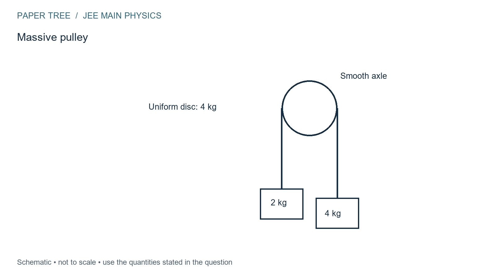
- A. 15 N
- B. 20 N
- C. 25 N
- D. 30 N
Answer and explanation
C. 25 N
For the masses, T₁−m₁g = m₁a and m₂g−T₂ = m₂a. The pulley satisfies (T₂−T₁)r = I(a/r), with I = Mpr²/2. Thus a = 2.5 m/s², T₁ = 25 N, T₂ = 30 N. From v² = 2ad and v = ωr, ω = 19.36491673 rad/s.
For the requested outcome — Find the tension on the lighter-mass side. — the result is 25 N.
Two masses 2 kg and 4 kg hang on opposite sides of a light string over a uniform solid-disc pulley of mass 4 kg and radius 0.2 m. The axle is frictionless and the string does not slip. The heavier mass starts from rest and descends 3 m. Use g = 10 m/s². Find the tension on the heavier-mass side. Choose the closest value.
Rigid bodies and fixed axes are ideal unless specified otherwise; moments of inertia refer to the named axis.
- A. 25 N
- B. 40 N
- C. 50 N
- D. 30 N
Answer and explanation
D. 30 N
For the masses, T₁−m₁g = m₁a and m₂g−T₂ = m₂a. The pulley satisfies (T₂−T₁)r = I(a/r), with I = Mpr²/2. Thus a = 2.5 m/s², T₁ = 25 N, T₂ = 30 N. From v² = 2ad and v = ωr, ω = 19.36491673 rad/s.
For the requested outcome — Find the tension on the heavier-mass side. — the result is 30 N.
Two masses 2 kg and 4 kg hang on opposite sides of a light string over a uniform solid-disc pulley of mass 4 kg and radius 0.2 m. The axle is frictionless and the string does not slip. The heavier mass starts from rest and descends 3 m. Use g = 10 m/s². Find the pulley’s angular speed after that descent. Choose the closest value.
Rigid bodies and fixed axes are ideal unless specified otherwise; moments of inertia refer to the named axis.
- A. 19.36 rad/s
- B. 13.69 rad/s
- C. 3.873 rad/s
- D. 38.73 rad/s
Answer and explanation
A. 19.36 rad/s
For the masses, T₁−m₁g = m₁a and m₂g−T₂ = m₂a. The pulley satisfies (T₂−T₁)r = I(a/r), with I = Mpr²/2. Thus a = 2.5 m/s², T₁ = 25 N, T₂ = 30 N. From v² = 2ad and v = ωr, ω = 19.36491673 rad/s.
For the requested outcome — Find the pulley’s angular speed after that descent. — the result is 19.36 rad/s.
Two masses ξ kg and 6 kg hang on opposite sides of a light string over a uniform solid-disc pulley of mass 6 kg and radius 0.3 m. The axle is frictionless and the string does not slip. The heavier mass starts from rest and descends 2 m. Use g = 10 m/s². The recorded value of the tension on the lighter-mass side is 37.5 N. Which listed positive value of ξ is consistent with this measurement?
Rigid bodies and fixed axes are ideal unless specified otherwise; moments of inertia refer to the named axis.
Answer and explanation
D. 3
Use the physical relations below with the missing input ξ. The recorded value of the tension on the lighter-mass side gives ξ=3 in the unit assigned to ξ in the question. Substitution checks the observation:
For the masses, T₁−m₁g = m₁a and m₂g−T₂ = m₂a. The pulley satisfies (T₂−T₁)r = I(a/r), with I = Mpr²/2. Thus a = 2.5 m/s², T₁ = 37.5 N, T₂ = 45 N. From v² = 2ad and v = ωr, ω = 10.54092553 rad/s.
Two masses 3 kg and ξ kg hang on opposite sides of a light string over a uniform solid-disc pulley of mass 6 kg and radius 0.3 m. The axle is frictionless and the string does not slip. The heavier mass starts from rest and descends 2 m. Use g = 10 m/s². The recorded value of the tension on the heavier-mass side is 45 N. Which listed positive value of ξ is consistent with this measurement?
Rigid bodies and fixed axes are ideal unless specified otherwise; moments of inertia refer to the named axis.
Answer and explanation
D. 6
Use the physical relations below with the missing input ξ. The recorded value of the tension on the heavier-mass side gives ξ=6 in the unit assigned to ξ in the question. Substitution checks the observation:
For the masses, T₁−m₁g = m₁a and m₂g−T₂ = m₂a. The pulley satisfies (T₂−T₁)r = I(a/r), with I = Mpr²/2. Thus a = 2.5 m/s², T₁ = 37.5 N, T₂ = 45 N. From v² = 2ad and v = ωr, ω = 10.54092553 rad/s.
Two masses 3 kg and ξ kg hang on opposite sides of a light string over a uniform solid-disc pulley of mass 6 kg and radius 0.3 m. The axle is frictionless and the string does not slip. The heavier mass starts from rest and descends 2 m. Use g = 10 m/s². The recorded value of the pulley’s angular speed after that descent is 10.54092553 rad/s. Which listed positive value of ξ is consistent with this measurement?
Rigid bodies and fixed axes are ideal unless specified otherwise; moments of inertia refer to the named axis.
Answer and explanation
C. 6
Use the physical relations below with the missing input ξ. The recorded value of the pulley’s angular speed after that descent gives ξ=6 in the unit assigned to ξ in the question. Substitution checks the observation:
For the masses, T₁−m₁g = m₁a and m₂g−T₂ = m₂a. The pulley satisfies (T₂−T₁)r = I(a/r), with I = Mpr²/2. Thus a = 2.5 m/s², T₁ = 37.5 N, T₂ = 45 N. From v² = 2ad and v = ωr, ω = 10.54092553 rad/s.
A uniform rod of mass 3 kg and length 2 m is initially at rest on a smooth horizontal table. A brief horizontal impulse of magnitude 6 N s acts perpendicular to the rod at one end. Ignore displacement during the impulse. Find the angular speed immediately after the impulse. Choose the closest value.
Rigid bodies and fixed axes are ideal unless specified otherwise; moments of inertia refer to the named axis.
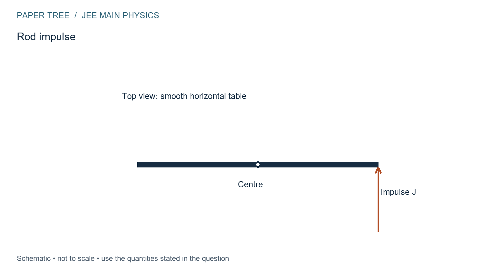
- A. 6 rad/s
- B. 1 rad/s
- C. 3 rad/s
- D. 12 rad/s
Answer and explanation
A. 6 rad/s
Linear impulse gives vCM = J/m = 2 m/s. Angular impulse about the centre is JL/2 = Iω with I = mL²/12, giving ω = 6 rad/s. Translation and rotation together carry 24 J. At the struck end the two velocity contributions add, giving 8 m/s.
For the requested outcome — Find the angular speed immediately after the impulse. — the result is 6 rad/s.
A uniform rod of mass 3 kg and length 2 m is initially at rest on a smooth horizontal table. A brief horizontal impulse of magnitude 6 N s acts perpendicular to the rod at one end. Ignore displacement during the impulse. Find the total kinetic energy immediately after the impulse. Choose the closest value.
Rigid bodies and fixed axes are ideal unless specified otherwise; moments of inertia refer to the named axis.
- A. 6 J
- B. 12 J
- C. 24 J
- D. 18 J
Answer and explanation
C. 24 J
Linear impulse gives vCM = J/m = 2 m/s. Angular impulse about the centre is JL/2 = Iω with I = mL²/12, giving ω = 6 rad/s. Translation and rotation together carry 24 J. At the struck end the two velocity contributions add, giving 8 m/s.
For the requested outcome — Find the total kinetic energy immediately after the impulse. — the result is 24 J.
A uniform rod of mass 3 kg and length 2 m is initially at rest on a smooth horizontal table. A brief horizontal impulse of magnitude 6 N s acts perpendicular to the rod at one end. Ignore displacement during the impulse. Find the speed of the struck end immediately after the impulse. Choose the closest value.
Rigid bodies and fixed axes are ideal unless specified otherwise; moments of inertia refer to the named axis.
- A. 8 m/s
- B. 6 m/s
- C. 2 m/s
- D. 4 m/s
Answer and explanation
A. 8 m/s
Linear impulse gives vCM = J/m = 2 m/s. Angular impulse about the centre is JL/2 = Iω with I = mL²/12, giving ω = 6 rad/s. Translation and rotation together carry 24 J. At the struck end the two velocity contributions add, giving 8 m/s.
For the requested outcome — Find the speed of the struck end immediately after the impulse. — the result is 8 m/s.
A uniform rod of mass 2 kg and length 3 m is initially at rest on a smooth horizontal table. A brief horizontal impulse of magnitude ξ N s acts perpendicular to the rod at one end. Ignore displacement during the impulse. The recorded value of the angular speed immediately after the impulse is 8 rad/s. Which listed positive value of ξ is consistent with this measurement?
Rigid bodies and fixed axes are ideal unless specified otherwise; moments of inertia refer to the named axis.
Answer and explanation
A. 8
Use the physical relations below with the missing input ξ. The recorded value of the angular speed immediately after the impulse gives ξ=8 in the unit assigned to ξ in the question. Substitution checks the observation:
Linear impulse gives vCM = J/m = 4 m/s. Angular impulse about the centre is JL/2 = Iω with I = mL²/12, giving ω = 8 rad/s. Translation and rotation together carry 64 J. At the struck end the two velocity contributions add, giving 16 m/s.
A uniform rod of mass ξ kg and length 3 m is initially at rest on a smooth horizontal table. A brief horizontal impulse of magnitude 8 N s acts perpendicular to the rod at one end. Ignore displacement during the impulse. The recorded value of the total kinetic energy immediately after the impulse is 64 J. Which listed positive value of ξ is consistent with this measurement?
Rigid bodies and fixed axes are ideal unless specified otherwise; moments of inertia refer to the named axis.
Answer and explanation
C. 2
Use the physical relations below with the missing input ξ. The recorded value of the total kinetic energy immediately after the impulse gives ξ=2 in the unit assigned to ξ in the question. Substitution checks the observation:
Linear impulse gives vCM = J/m = 4 m/s. Angular impulse about the centre is JL/2 = Iω with I = mL²/12, giving ω = 8 rad/s. Translation and rotation together carry 64 J. At the struck end the two velocity contributions add, giving 16 m/s.
A uniform rod of mass 2 kg and length 3 m is initially at rest on a smooth horizontal table. A brief horizontal impulse of magnitude ξ N s acts perpendicular to the rod at one end. Ignore displacement during the impulse. The recorded value of the speed of the struck end immediately after the impulse is 16 m/s. Which listed positive value of ξ is consistent with this measurement?
Rigid bodies and fixed axes are ideal unless specified otherwise; moments of inertia refer to the named axis.
Answer and explanation
A. 8
Use the physical relations below with the missing input ξ. The recorded value of the speed of the struck end immediately after the impulse gives ξ=8 in the unit assigned to ξ in the question. Substitution checks the observation:
Linear impulse gives vCM = J/m = 4 m/s. Angular impulse about the centre is JL/2 = Iω with I = mL²/12, giving ω = 8 rad/s. Translation and rotation together carry 64 J. At the struck end the two velocity contributions add, giving 16 m/s.
A uniform rod of mass 3 kg and length 2 m is hinged at one end to a frictionless horizontal axle. It is released from rest while horizontal and swings in a vertical plane. Take g = 10 m/s². Find the free-end speed as the rod first becomes vertical. Choose the closest value.
Rigid bodies and fixed axes are ideal unless specified otherwise; moments of inertia refer to the named axis.
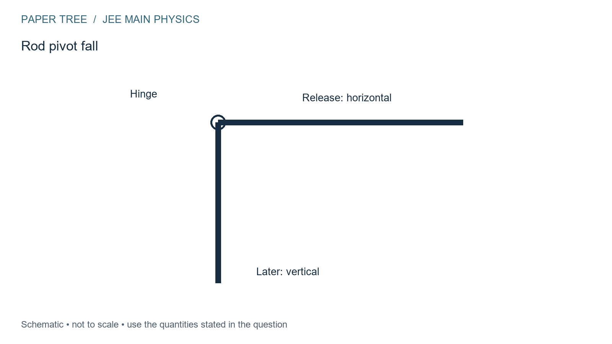
- A. 4.472 m/s
- B. 3.873 m/s
- C. 7.746 m/s
- D. 6.325 m/s
Answer and explanation
C. 7.746 m/s
The centre falls by L/2, so mgL/2 = Iω²/2 with I = mL²/3. Thus ω = 3.872983346 rad/s and the tip speed is 7.745966692 m/s. At the bottom the centre has upward acceleration ω²L/2, giving hinge force m(g+ω²L/2) = 75 N. Initially mgL/2 = Iα, so α = 7.5 rad/s².
For the requested outcome — Find the free-end speed as the rod first becomes vertical. — the result is 7.746 m/s.
A uniform rod of mass 3 kg and length 2 m is hinged at one end to a frictionless horizontal axle. It is released from rest while horizontal and swings in a vertical plane. Take g = 10 m/s². Find the magnitude of the hinge force at that vertical position. Choose the closest value.
Rigid bodies and fixed axes are ideal unless specified otherwise; moments of inertia refer to the named axis.
- A. 45 N
- B. 75 N
- C. 30 N
- D. 37.5 N
Answer and explanation
B. 75 N
The centre falls by L/2, so mgL/2 = Iω²/2 with I = mL²/3. Thus ω = 3.872983346 rad/s and the tip speed is 7.745966692 m/s. At the bottom the centre has upward acceleration ω²L/2, giving hinge force m(g+ω²L/2) = 75 N. Initially mgL/2 = Iα, so α = 7.5 rad/s².
For the requested outcome — Find the magnitude of the hinge force at that vertical position. — the result is 75 N.
A uniform rod of mass 3 kg and length 2 m is hinged at one end to a frictionless horizontal axle. It is released from rest while horizontal and swings in a vertical plane. Take g = 10 m/s². Find the angular acceleration immediately after release.
Rigid bodies and fixed axes are ideal unless specified otherwise; moments of inertia refer to the named axis.
- A. 3.75 rad/s²
- B. 5 rad/s²
- C. 7.5 rad/s²
- D. 15 rad/s²
Answer and explanation
C. 7.5 rad/s²
The centre falls by L/2, so mgL/2 = Iω²/2 with I = mL²/3. Thus ω = 3.872983346 rad/s and the tip speed is 7.745966692 m/s. At the bottom the centre has upward acceleration ω²L/2, giving hinge force m(g+ω²L/2) = 75 N. Initially mgL/2 = Iα, so α = 7.5 rad/s².
For the requested outcome — Find the angular acceleration immediately after release. — the result is 7.5 rad/s².
A uniform rod of mass 2 kg and length ξ m is hinged at one end to a frictionless horizontal axle. It is released from rest while horizontal and swings in a vertical plane. Take g = 10 m/s². The recorded value of the free-end speed as the rod first becomes vertical is 6.708203932 m/s. Which listed positive value of ξ is consistent with this measurement?
Rigid bodies and fixed axes are ideal unless specified otherwise; moments of inertia refer to the named axis.
Answer and explanation
B. 1.5
Use the physical relations below with the missing input ξ. The recorded value of the free-end speed as the rod first becomes vertical gives ξ=1.5 in the unit assigned to ξ in the question. Substitution checks the observation:
The centre falls by L/2, so mgL/2 = Iω²/2 with I = mL²/3. Thus ω = 4.472135955 rad/s and the tip speed is 6.708203932 m/s. At the bottom the centre has upward acceleration ω²L/2, giving hinge force m(g+ω²L/2) = 50 N. Initially mgL/2 = Iα, so α = 10 rad/s².
A uniform rod of mass ξ kg and length 1.5 m is hinged at one end to a frictionless horizontal axle. It is released from rest while horizontal and swings in a vertical plane. Take g = 10 m/s². The recorded value of the magnitude of the hinge force at that vertical position is 50 N. Which listed positive value of ξ is consistent with this measurement?
Rigid bodies and fixed axes are ideal unless specified otherwise; moments of inertia refer to the named axis.
Answer and explanation
D. 2
Use the physical relations below with the missing input ξ. The recorded value of the magnitude of the hinge force at that vertical position gives ξ=2 in the unit assigned to ξ in the question. Substitution checks the observation:
The centre falls by L/2, so mgL/2 = Iω²/2 with I = mL²/3. Thus ω = 4.472135955 rad/s and the tip speed is 6.708203932 m/s. At the bottom the centre has upward acceleration ω²L/2, giving hinge force m(g+ω²L/2) = 50 N. Initially mgL/2 = Iα, so α = 10 rad/s².
A uniform rod of mass 2 kg and length 1.5 m is hinged at one end to a fixed frictionless horizontal axle. A 1 kg point mass is attached at its free end. The system is released from rest with the rod horizontal. When the rod is 60° below the horizontal, the point mass is detached without any impulse on the rod. The rod then continues freely to its first vertically downward position. Take g=10 m/s². Find the magnitude of the hinge force on the rod at that vertically downward position. Choose the closest value.
Use the idealisations, constants, geometry and sign conventions stated in this question. Any accompanying drawing is schematic.
- A. 35 N
- B. 44.8038 N
- C. 50 N
- D. 60 N
Answer and explanation
B. 44.8038 N
Before detachment, I=(2/3+1)(1.5)²=3.75 kg m² and the released potential energy at 60° is (2/2+1)gL sin60°. Thus ω_d²=12g sin60°/(5L). Detachment leaves the rod angular velocity continuous; the escaping mass carries away its own kinetic energy. For the remaining rod, ω_b²=ω_d²+3g(1−sin60°)/L=16.5358984 s⁻². At the bottom the tangential acceleration is zero; R−Mg=Mω_b²L/2. Hence R=44.8038476 N.
A rigid rotor starts from rest. A constant driving torque 12 N m acts for 4 s while a constant opposing friction torque also acts. It then coasts to rest in 8 s after the drive is removed. Its measured angle during the driven stage is 32 rad. Assume friction torque is independent of speed. Find the rotor’s moment of inertia. Choose the closest value.
Rigid bodies and fixed axes are ideal unless specified otherwise; moments of inertia refer to the named axis.
- A. 1 kg m²
- B. 6 kg m²
- C. 2 kg m²
- D. 3 kg m²
Answer and explanation
C. 2 kg m²
The driven acceleration is 2θ/t₁² = 4 rad/s², so the cut-off speed is 16 rad/s. Coasting deceleration is ω/t₂ = 2 rad/s². Adding τdrive−τfr = Iα and τfr = Iβ gives I = 2 kg m² and τfr = 4 N m. Coasting through average speed ω/2 gives 64 rad.
For the requested outcome — Find the rotor’s moment of inertia. — the result is 2 kg m².
A rigid rotor starts from rest. A constant driving torque 12 N m acts for 4 s while a constant opposing friction torque also acts. It then coasts to rest in 8 s after the drive is removed. Its measured angle during the driven stage is 32 rad. Assume friction torque is independent of speed. Find the opposing friction torque. Choose the closest value.
Rigid bodies and fixed axes are ideal unless specified otherwise; moments of inertia refer to the named axis.
- A. 4 N m
- B. 8 N m
- C. 6 N m
- D. 12 N m
Answer and explanation
A. 4 N m
The driven acceleration is 2θ/t₁² = 4 rad/s², so the cut-off speed is 16 rad/s. Coasting deceleration is ω/t₂ = 2 rad/s². Adding τdrive−τfr = Iα and τfr = Iβ gives I = 2 kg m² and τfr = 4 N m. Coasting through average speed ω/2 gives 64 rad.
For the requested outcome — Find the opposing friction torque. — the result is 4 N m.
A rigid rotor starts from rest. A constant driving torque 12 N m acts for 4 s while a constant opposing friction torque also acts. It then coasts to rest in 8 s after the drive is removed. Its measured angle during the driven stage is 32 rad. Assume friction torque is independent of speed. Find the angle rotated during the coasting stage. Choose the closest value.
Rigid bodies and fixed axes are ideal unless specified otherwise; moments of inertia refer to the named axis.
- A. 64 rad
- B. 32 rad
- C. -64 rad
- D. 128 rad
Answer and explanation
A. 64 rad
The driven acceleration is 2θ/t₁² = 4 rad/s², so the cut-off speed is 16 rad/s. Coasting deceleration is ω/t₂ = 2 rad/s². Adding τdrive−τfr = Iα and τfr = Iβ gives I = 2 kg m² and τfr = 4 N m. Coasting through average speed ω/2 gives 64 rad.
For the requested outcome — Find the angle rotated during the coasting stage. — the result is 64 rad.
A rigid rotor starts from rest. A constant driving torque ξ N m acts for 3 s while a constant opposing friction torque also acts. It then coasts to rest in 6 s after the drive is removed. Its measured angle during the driven stage is 27 rad. Assume friction torque is independent of speed. The recorded value of the rotor’s moment of inertia is 1.666666667 kg m². Which listed positive value of ξ is consistent with this measurement?
Rigid bodies and fixed axes are ideal unless specified otherwise; moments of inertia refer to the named axis.
Answer and explanation
C. 15
Use the physical relations below with the missing input ξ. The recorded value of the rotor’s moment of inertia gives ξ=15 in the unit assigned to ξ in the question. Substitution checks the observation:
The driven acceleration is 2θ/t₁² = 6 rad/s², so the cut-off speed is 18 rad/s. Coasting deceleration is ω/t₂ = 3 rad/s². Adding τdrive−τfr = Iα and τfr = Iβ gives I = 1.666666667 kg m² and τfr = 5 N m. Coasting through average speed ω/2 gives 54 rad.
A rigid rotor starts from rest. A constant driving torque 15 N m acts for ξ s while a constant opposing friction torque also acts. It then coasts to rest in 6 s after the drive is removed. Its measured angle during the driven stage is 27 rad. Assume friction torque is independent of speed. The recorded value of the opposing friction torque is 5 N m. Which listed positive value of ξ is consistent with this measurement?
Rigid bodies and fixed axes are ideal unless specified otherwise; moments of inertia refer to the named axis.
Answer and explanation
C. 3
Use the physical relations below with the missing input ξ. The recorded value of the opposing friction torque gives ξ=3 in the unit assigned to ξ in the question. Substitution checks the observation:
The driven acceleration is 2θ/t₁² = 6 rad/s², so the cut-off speed is 18 rad/s. Coasting deceleration is ω/t₂ = 3 rad/s². Adding τdrive−τfr = Iα and τfr = Iβ gives I = 1.666666667 kg m² and τfr = 5 N m. Coasting through average speed ω/2 gives 54 rad.
A rigid rotor starts from rest. A constant driving torque 15 N m acts for 3 s while a constant opposing friction torque also acts. It then coasts to rest in 6 s after the drive is removed. Its measured angle during the driven stage is ξ rad. Assume friction torque is independent of speed. The recorded value of the angle rotated during the coasting stage is 54 rad. Which listed positive value of ξ is consistent with this measurement?
Rigid bodies and fixed axes are ideal unless specified otherwise; moments of inertia refer to the named axis.
Answer and explanation
A. 27
Use the physical relations below with the missing input ξ. The recorded value of the angle rotated during the coasting stage gives ξ=27 in the unit assigned to ξ in the question. Substitution checks the observation:
The driven acceleration is 2θ/t₁² = 6 rad/s², so the cut-off speed is 18 rad/s. Coasting deceleration is ω/t₂ = 3 rad/s². Adding τdrive−τfr = Iα and τfr = Iβ gives I = 1.666666667 kg m² and τfr = 5 N m. Coasting through average speed ω/2 gives 54 rad.
Two particles of masses 2 kg and 3 kg lie at x = 0 and x = 1 m on a smooth horizontal line. A compressed ideal spring between them is released from rest and ultimately gives them total kinetic energy 30 J. No external horizontal force acts. The spring becomes detached after release. Find the speed of the lighter particle after separation.
Rigid bodies and fixed axes are ideal unless specified otherwise; moments of inertia refer to the named axis.
- A. 5.477 m/s
- B. 2.121 m/s
- C. 2.828 m/s
- D. 4.243 m/s
Answer and explanation
D. 4.243 m/s
Equal and opposite momenta have magnitude p. Total energy gives p²(1/m₁+1/m₂)/2 = E, so the speeds are 4.242640687 and 2.828427125 m/s in opposite directions. Relative separation speed is 7.071067812 m/s. The centre of mass remains fixed at m₂d/(m₁+m₂) = 0.6 m.
For the requested outcome — Find the speed of the lighter particle after separation. — the result is 4.243 m/s.
Two particles of masses 2 kg and 3 kg lie at x = 0 and x = 1 m on a smooth horizontal line. A compressed ideal spring between them is released from rest and ultimately gives them total kinetic energy 30 J. No external horizontal force acts. The spring becomes detached after release. Find the speed with which their separation increases after detachment.
Rigid bodies and fixed axes are ideal unless specified otherwise; moments of inertia refer to the named axis.
- A. 7.071 m/s
- B. 1.414 m/s
- C. 3.464 m/s
- D. 3.536 m/s
Answer and explanation
A. 7.071 m/s
Equal and opposite momenta have magnitude p. Total energy gives p²(1/m₁+1/m₂)/2 = E, so the speeds are 4.242640687 and 2.828427125 m/s in opposite directions. Relative separation speed is 7.071067812 m/s. The centre of mass remains fixed at m₂d/(m₁+m₂) = 0.6 m.
For the requested outcome — Find the speed with which their separation increases after detachment. — the result is 7.071 m/s.
Two particles of masses 2 kg and 3 kg lie at x = 0 and x = 1 m on a smooth horizontal line. A compressed ideal spring between them is released from rest and ultimately gives them total kinetic energy 30 J. No external horizontal force acts. The spring becomes detached after release. Find the centre-of-mass coordinate when the lighter particle has moved 1 m to the left of its initial position. Choose the closest value.
Rigid bodies and fixed axes are ideal unless specified otherwise; moments of inertia refer to the named axis.
- A. -0.4 m
- B. 0.5 m
- C. 1.6 m
- D. 0.6 m
Answer and explanation
D. 0.6 m
Equal and opposite momenta have magnitude p. Total energy gives p²(1/m₁+1/m₂)/2 = E, so the speeds are 4.242640687 and 2.828427125 m/s in opposite directions. Relative separation speed is 7.071067812 m/s. The centre of mass remains fixed at m₂d/(m₁+m₂) = 0.6 m.
For the requested outcome — Find the centre-of-mass coordinate when the lighter particle has moved 1 m to the left of its initial position. — the result is 0.6 m.
Two particles of masses 1 kg and 4 kg lie at x = 0 and x = 2 m on a smooth horizontal line. A compressed ideal spring between them is released from rest and ultimately gives them total kinetic energy ξ J. No external horizontal force acts. The spring becomes detached after release. The recorded value of the speed of the lighter particle after separation is 8 m/s. Which listed positive value of ξ is consistent with this measurement?
Rigid bodies and fixed axes are ideal unless specified otherwise; moments of inertia refer to the named axis.
Answer and explanation
A. 40
Use the physical relations below with the missing input ξ. The recorded value of the speed of the lighter particle after separation gives ξ=40 in the unit assigned to ξ in the question. Substitution checks the observation:
Equal and opposite momenta have magnitude p. Total energy gives p²(1/m₁+1/m₂)/2 = E, so the speeds are 8 and 2 m/s in opposite directions. Relative separation speed is 10 m/s. The centre of mass remains fixed at m₂d/(m₁+m₂) = 1.6 m.
Two particles of masses ξ kg and 4 kg lie at x = 0 and x = 2 m on a smooth horizontal line. A compressed ideal spring between them is released from rest and ultimately gives them total kinetic energy 40 J. No external horizontal force acts. The spring becomes detached after release. The recorded value of the speed with which their separation increases after detachment is 10 m/s. Which listed positive value of ξ is consistent with this measurement?
Rigid bodies and fixed axes are ideal unless specified otherwise; moments of inertia refer to the named axis.
Answer and explanation
C. 1
Use the physical relations below with the missing input ξ. The recorded value of the speed with which their separation increases after detachment gives ξ=1 in the unit assigned to ξ in the question. Substitution checks the observation:
Equal and opposite momenta have magnitude p. Total energy gives p²(1/m₁+1/m₂)/2 = E, so the speeds are 8 and 2 m/s in opposite directions. Relative separation speed is 10 m/s. The centre of mass remains fixed at m₂d/(m₁+m₂) = 1.6 m.
Two particles of masses 1 kg and ξ kg lie at x = 0 and x = 2 m on a smooth horizontal line. A compressed ideal spring between them is released from rest and ultimately gives them total kinetic energy 40 J. No external horizontal force acts. The spring becomes detached after release. The recorded value of the centre-of-mass coordinate when the lighter particle has moved 1 m to the left of its initial position is 1.6 m. Which listed positive value of ξ is consistent with this measurement?
Rigid bodies and fixed axes are ideal unless specified otherwise; moments of inertia refer to the named axis.
Answer and explanation
C. 4
Use the physical relations below with the missing input ξ. The recorded value of the centre-of-mass coordinate when the lighter particle has moved 1 m to the left of its initial position gives ξ=4 in the unit assigned to ξ in the question. Substitution checks the observation:
Equal and opposite momenta have magnitude p. Total energy gives p²(1/m₁+1/m₂)/2 = E, so the speeds are 8 and 2 m/s in opposite directions. Relative separation speed is 10 m/s. The centre of mass remains fixed at m₂d/(m₁+m₂) = 1.6 m.
For a spherically symmetric, nonrotating Earth, the gravitational acceleration at its surface is directed:
Use Newtonian gravity, a spherical nonrotating planet and vacuum unless stated otherwise. Potential is zero at infinity; small-height/depth formulae are first-order approximations.
- A. towards the centre of the Earth
- B. horizontally, in the plane tangent to the surface at that point
- C. away from the centre of the Earth along the outward vertical
- D. along the axis of rotation of the Earth, from the equator towards the nearer pole
Answer and explanation
A. towards the centre of the Earth
For a spherically symmetric Earth the gravitational field at an external point acts along the line joining that point to the centre and is directed inwards. This inward radial direction is what we call vertically downwards.
Taking g = 9.8 m s⁻², the radius of the Earth as 6.4 × 10⁶ m and G = 6.67 × 10⁻¹¹ N m² kg⁻², the mass of the Earth is nearest to:
Use Newtonian gravity, a spherical nonrotating planet and vacuum unless stated otherwise. Potential is zero at infinity; small-height/depth formulae are first-order approximations.
- A. 6 × 10²¹ kg
- B. 6 × 10²⁷ kg
- C. 6 × 10²⁴ kg
- D. 4 × 10¹³ kg
Answer and explanation
C. 6 × 10²⁴ kg
M = g R² / G = 9.8 × (6.4 × 10⁶)² / (6.67 × 10⁻¹¹) = 9.8 × 4.096 × 10¹³ / (6.67 × 10⁻¹¹) = 4.014 × 10¹⁴ / (6.67 × 10⁻¹¹), which is about 6.0 × 10²⁴ kg.
The acceleration due to gravity g at a place can equivalently be quoted in the unit:
Use Newtonian gravity, a spherical nonrotating planet and vacuum unless stated otherwise. Potential is zero at infinity; small-height/depth formulae are first-order approximations.
- A. N kg⁻¹
- B. N m² kg⁻²
- C. N kg
- D. N m kg⁻¹
Answer and explanation
A. N kg⁻¹
Since g is the gravitational force per unit mass, its unit may be written as newton per kilogram. Because 1 N = 1 kg m s⁻², N kg⁻¹ is identical to m s⁻².
A body weighs 100 N on the surface of the Earth. On a planet whose mass is three times that of the Earth and whose diameter is twice that of the Earth, the same body would weigh:
Use Newtonian gravity, a spherical nonrotating planet and vacuum unless stated otherwise. Potential is zero at infinity; small-height/depth formulae are first-order approximations.
- A. 75 N
- B. 300 N
- C. 37.5 N
- D. 150 N
Answer and explanation
A. 75 N
The diameter is twice as large, so R' = 2R. Then g' / g = 3 × (1/2)² = 3 / 4. The weight becomes (3/4) × 100 = 75 N.
A satellite is in a circular orbit of radius 8000000 m about a pointlike central body with GM=4 × 10¹⁴ m³/s². An instantaneous tangential impulse changes its speed to 1.2 times the original circular speed without changing radius. Here 1<f<√2. Afterwards only gravity acts. The impulse point is the orbit’s nearest point; at the farthest point velocity is again tangential. Find the satellite’s speed at that farthest point. Choose the closest value.
Use Newtonian gravity, a spherical nonrotating planet and vacuum unless stated otherwise. Potential is zero at infinity; small-height/depth formulae are first-order approximations.
- A. 3300 m/s
- B. 1650 m/s
- C. 6600 m/s
- D. -3300 m/s
Answer and explanation
A. 3300 m/s
Immediately after the impulse, specific energy is ε=GM(f²/2−1)/r and specific angular momentum is h=f√(GM r). At any turning radius x, ε=h²/(2x²)−GM/x. The two roots are r and r f²/(2−f²)=20571428.57 m. Then vfar=h/rfar=3299.831646 m/s. Compared with the post-impulse speed f√(GM/r), the decrease is 5185.449729 m/s.
Requested result: 3300 m/s.
A planet has a mass one ninth that of the Earth and a radius one half that of the Earth. If g is the acceleration due to gravity at the surface of the Earth, its value at the surface of this planet is:
Use Newtonian gravity, a spherical nonrotating planet and vacuum unless stated otherwise. Potential is zero at infinity; small-height/depth formulae are first-order approximations.
- A. g / 9
- B. 4 g / 9
- C. 2 g / 9
- D. 9 g / 4
Answer and explanation
B. 4 g / 9
g' / g = (1/9) × (1 / (1/2))² = (1/9) × 4 = 4 / 9. Hence g' = 4g / 9.
Two planets have the same mean density but the radius of planet X is twice that of planet Y. The ratio of the acceleration due to gravity at the surface of X to that at the surface of Y is:
Use Newtonian gravity, a spherical nonrotating planet and vacuum unless stated otherwise. Potential is zero at infinity; small-height/depth formulae are first-order approximations.
- A. 1 : 2
- B. 2 : 1
- C. 4 : 1
- D. 8 : 1
Answer and explanation
B. 2 : 1
For the same density, g is directly proportional to R. Doubling the radius therefore doubles g, so the ratio is 2 to 1.
A body is carried from the Earth to a planet where the acceleration due to gravity is one third of its value on the Earth. Which statement is correct?
Use Newtonian gravity, a spherical nonrotating planet and vacuum unless stated otherwise. Potential is zero at infinity; small-height/depth formulae are first-order approximations.
- A. The mass of the body is unchanged while its weight falls to one third of its value on the Earth
- B. Both the mass and the weight of the body remain equal to their values on the Earth
- C. The weight of the body is unchanged while its mass falls to one third of its value on the Earth
- D. Both the mass and the weight of the body fall to one third of their values on the Earth
Answer and explanation
A. The mass of the body is unchanged while its weight falls to one third of its value on the Earth
Mass measures the quantity of matter and is the same everywhere. Weight is the gravitational force m g and therefore scales with the local value of g. If g falls to one third, the weight falls to one third while the mass is unaltered.
A body dropped from rest through a fixed height takes time t on the Earth and time 2t on a planet of the same radius as the Earth. The ratio of the mass of the planet to the mass of the Earth is:
Use Newtonian gravity, a spherical nonrotating planet and vacuum unless stated otherwise. Potential is zero at infinity; small-height/depth formulae are first-order approximations.
- A. 1 : 2
- B. 1 : 4
- C. 4 : 1
- D. 1 : 8
Answer and explanation
B. 1 : 4
For a fixed height, g is proportional to 1 / t². Doubling the time of fall therefore makes g one quarter as large. Since the radii are equal and g = G M / R², the mass of the planet is one quarter that of the Earth, giving 1 to 4.
Consider the two statements given below about the acceleration due to gravity g at the surface of the Earth. Statement X says that g has the same value for a stone of mass 1 kg and for one of mass 10 kg. Statement Y says that the gravitational force on the 10 kg stone is ten times that on the 1 kg stone. Which choice is correct?
Use Newtonian gravity, a spherical nonrotating planet and vacuum unless stated otherwise. Potential is zero at infinity; small-height/depth formulae are first-order approximations.
- A. Statement X is correct and statement Y is wrong
- B. Both statements are correct
- C. Statement X is wrong and statement Y is correct
- D. Both statements are wrong
Answer and explanation
B. Both statements are correct
The field strength g = G M / R² depends only on the Earth and not on the test body, so statement X is correct. The weight is W = m g, which is ten times larger for the 10 kg stone, so statement Y is also correct.
A planet has the same acceleration due to gravity at its surface as the Earth, but its mean density is one quarter that of the Earth. The ratio of the mass of the planet to the mass of the Earth is:
Use Newtonian gravity, a spherical nonrotating planet and vacuum unless stated otherwise. Potential is zero at infinity; small-height/depth formulae are first-order approximations.
- A. 64 : 1
- B. 1 : 4
- C. 4 : 1
- D. 16 : 1
Answer and explanation
D. 16 : 1
Equal g with ρ reduced to one quarter requires R to be 4 times as large, since g is proportional to ρ R. The mass is proportional to ρ R³, so the mass ratio is (1/4) × 4³ = (1/4) × 64 = 16. Hence 16 to 1.
A planet has twice the mass and twice the radius of the Earth. The acceleration due to gravity at its surface, compared with that at the surface of the Earth, is:
Use Newtonian gravity, a spherical nonrotating planet and vacuum unless stated otherwise. Potential is zero at infinity; small-height/depth formulae are first-order approximations.
- A. the same
- B. one quarter as large
- C. half as large
- D. twice as large
Answer and explanation
C. half as large
g' / g = (M' / M)(R / R')² = 2 × (1/2)² = 2 / 4 = 1 / 2. So the surface value is half that on the Earth.
A planet has the same mean density as the Earth but a radius four times as large. Taking the escape velocity from the Earth as 11.2 km s⁻¹, that from this planet is:
Use Newtonian gravity, a spherical nonrotating planet and vacuum unless stated otherwise. Potential is zero at infinity; small-height/depth formulae are first-order approximations.
- A. 22.4 km s⁻¹
- B. 89.6 km s⁻¹
- C. 44.8 km s⁻¹
- D. 11.2 km s⁻¹
Answer and explanation
C. 44.8 km s⁻¹
Writing M = (4/3) π R³ ρ in v_e = √(2 G M / R) gives v_e = R √(8 π G ρ / 3). For a fixed density the escape velocity is directly proportional to R, so four times the radius gives 4 × 11.2 = 44.8 km s⁻¹.
Taking g = 9.8 m s⁻² and the radius of the Earth as 6.4 × 10⁶ m, the escape velocity from the surface of the Earth is:
Use Newtonian gravity, a spherical nonrotating planet and vacuum unless stated otherwise. Potential is zero at infinity; small-height/depth formulae are first-order approximations.
- A. 1.25 × 10⁸ m s⁻¹
- B. 2.24 × 10⁴ m s⁻¹
- C. 7.92 × 10³ m s⁻¹
- D. 1.12 × 10⁴ m s⁻¹
Answer and explanation
D. 1.12 × 10⁴ m s⁻¹
v_e = √(2 × 9.8 × 6.4 × 10⁶) = √(1.2544 × 10⁸) = 1.12 × 10⁴ m s⁻¹.
A stone of mass 1 kg and a rocket of mass 1000 kg are each to be projected from the surface of the Earth so as to escape its gravitational pull. The minimum speeds needed are such that:
Use Newtonian gravity, a spherical nonrotating planet and vacuum unless stated otherwise. Potential is zero at infinity; small-height/depth formulae are first-order approximations.
- A. the speed needed for the rocket is the square root of 1000 times that needed for the stone
- B. the speed needed for the rocket is 1000 times that needed for the stone
- C. the speed needed for the rocket is one thousandth of that needed for the stone
- D. the speed needed for the rocket is exactly equal to that needed for the stone
Answer and explanation
D. the speed needed for the rocket is exactly equal to that needed for the stone
The mass of the projected body appears on both sides of the energy equation and cancels, leaving v_e = √(2 G M / R). The escape speed depends only on the mass and radius of the planet, so both bodies need the same speed.
The escape velocity from the surface of a planet of mass M and radius R is:
Use Newtonian gravity, a spherical nonrotating planet and vacuum unless stated otherwise. Potential is zero at infinity; small-height/depth formulae are first-order approximations.
- A. √(2 G M / R²)
- B. 2 G M / R
- C. √(2 G M / R)
- D. √(G M / R)
Answer and explanation
C. √(2 G M / R)
To escape, the kinetic energy given must at least equal the magnitude of the gravitational potential energy at the surface. Setting (1/2) m v_e² = G M m / R gives v_e = √(2 G M / R), which may also be written as √(2 g R).
A body is projected vertically upward from the surface of the Earth of radius R with a speed equal to half the escape speed. The maximum height it reaches above the surface is:
Use Newtonian gravity, a spherical nonrotating planet and vacuum unless stated otherwise. Potential is zero at infinity; small-height/depth formulae are first-order approximations.
- A. R / 3
- B. R / 2
- C. 3R
- D. R / 4
Answer and explanation
A. R / 3
The launch speed satisfies v² = (2 g R) / 4 = g R / 2. Energy conservation gives (1/2)(g R / 2) - g R = -g R² / (R + h), that is g R / 4 - g R = -3 g R / 4 = -g R² / (R + h). Hence R + h = 4R / 3 and h = R / 3.
For a spherical nonrotating planet, the gravitational accelerations at heights 2000000 m and 6000000 m above its surface are ξ and 2 m/s². Use Newtonian gravity and ignore atmosphere. A small satellite has a circular orbit at height 4000000 m. In this arrangement, the following outcome is measured: the surface escape speed = 9797.958971 m/s. Which listed positive value of ξ is consistent with that outcome?
Use Newtonian gravity, a spherical nonrotating planet and vacuum unless stated otherwise. Potential is zero at infinity; small-height/depth formulae are first-order approximations.
Answer and explanation
A. 4.5
Use the coupled physical relations below. The missing input is ξ=4.5 in the units assigned in the stem.
The field ratio gives (R+h2)/(R+h1)=√(g1/g2), hence R=6000000 m and GM=2.88 × 10¹⁴ m³/s². Use that inferred radius and gravitational parameter: escape speed=9797.958971 m/s, orbit period=11708.02455 s, and potential increase per mass=12000000 J/kg. Heights must not be substituted as distances from the centre.
The minimum energy that must be supplied to a body of mass m resting on the surface of the Earth so that it just escapes to infinity is:
Use Newtonian gravity, a spherical nonrotating planet and vacuum unless stated otherwise. Potential is zero at infinity; small-height/depth formulae are first-order approximations.
- A. (1/2) m g R
- B. 2 m g R
- C. m g R
- D. m g R²
Answer and explanation
C. m g R
The escape condition requires kinetic energy equal in magnitude to the potential energy at the surface, that is G M m / R. Using G M = g R² this becomes m g R.
Taking g = 9.8 m s⁻² and the radius of the Earth as 6.4 × 10⁶ m, the minimum speed that must be given to a body at a height equal to one Earth radius above the surface for it to escape from the Earth is:
Use Newtonian gravity, a spherical nonrotating planet and vacuum unless stated otherwise. Potential is zero at infinity; small-height/depth formulae are first-order approximations.
- A. 15.8 km s⁻¹
- B. 5.6 km s⁻¹
- C. 11.2 km s⁻¹
- D. 7.9 km s⁻¹
Answer and explanation
D. 7.9 km s⁻¹
At height R the distance from the centre is 2R, so the required speed is √(2 G M / 2R) = √(G M / R) = √(g R) = √(9.8 × 6.4 × 10⁶) = 7.92 × 10³ m s⁻¹, which is the surface escape speed divided by the square root of two.
A satellite is in a circular orbit of radius 10000000 m about a pointlike central body with GM=5 × 10¹⁴ m³/s². An instantaneous tangential impulse changes its speed to ξ times the original circular speed without changing radius. Here 1<f<√2. Afterwards only gravity acts. The impulse point is the orbit’s nearest point; at the farthest point velocity is again tangential. In this arrangement, the following outcome is measured: the greatest distance from the centre reached after the impulse = 35714285.71 m. Which listed positive value of ξ is consistent with that outcome?
Use Newtonian gravity, a spherical nonrotating planet and vacuum unless stated otherwise. Potential is zero at infinity; small-height/depth formulae are first-order approximations.
- A. 2.5
- B. 1.25
- C. 1.875
- D. 0.625
Answer and explanation
B. 1.25
Use the coupled physical relations below. The missing input is ξ=1.25 in the units assigned in the stem.
Immediately after the impulse, specific energy is ε=GM(f²/2−1)/r and specific angular momentum is h=f√(GM r). At any turning radius x, ε=h²/(2x²)−GM/x. The two roots are r and r f²/(2−f²)=35714285.71 m. Then vfar=h/rfar=2474.873734 m/s. Compared with the post-impulse speed f√(GM/r), the decrease is 6363.961031 m/s.
Three equal point masses m are assembled quasistatically from rest at infinite separation to rest at the vertices of an equilateral triangle of side a. Find the net work done by the external assembling agents.
Use Newtonian gravity, a spherical nonrotating planet and vacuum unless stated otherwise. Potential is zero at infinity; small-height/depth formulae are first-order approximations.
- A. -G m² / a
- B. -6 G m² / a
- C. +3 G m² / a
- D. -3 G m² / a
Answer and explanation
D. -3 G m² / a
There are three distinct pairs, each at separation a, so the total potential energy of the assembled system is 3 × (-G m² / a) = -3 G m² / a. Starting from zero potential energy at infinite separation, the external work done equals this final energy, that is -3 G m² / a. An external agent would in fact have to remove this much energy from the system.
With the usual convention that gravitational potential is zero at infinite distance from an isolated finite mass, its value at infinity is:
Use Newtonian gravity, a spherical nonrotating planet and vacuum unless stated otherwise. Potential is zero at infinity; small-height/depth formulae are first-order approximations.
- A. equal to the potential at the surface of the mass
- B. positive and very large in magnitude
- C. negative and very large in magnitude
- D. zero
Answer and explanation
D. zero
By convention the gravitational potential is taken as zero at infinite separation. The expression V = -G M / r indeed tends to zero as r becomes very large, and it is negative at all finite distances.
The gravitational potential at a distance r from a point mass M is:
Use Newtonian gravity, a spherical nonrotating planet and vacuum unless stated otherwise. Potential is zero at infinity; small-height/depth formulae are first-order approximations.
- A. +G M / r
- B. -G M / r²
- C. -G M r
- D. -G M / r
Answer and explanation
D. -G M / r
The gravitational potential is the work done per unit mass in bringing a test mass from infinity to the point. Because the force is attractive this work is negative, giving V = -G M / r.
For a spherical nonrotating planet, the gravitational accelerations at heights 1000000 m and 4000000 m above its surface are 6.4 and 2.5 m/s². Use Newtonian gravity and ignore atmosphere. A small satellite has a circular orbit at height 2000000 m. Find the surface escape speed. Choose the closest value.
Use Newtonian gravity, a spherical nonrotating planet and vacuum unless stated otherwise. Potential is zero at infinity; small-height/depth formulae are first-order approximations.
- A. 1.789e+04 m/s
- B. -8944 m/s
- C. 8944 m/s
- D. 4472 m/s
Answer and explanation
C. 8944 m/s
The field ratio gives (R+h2)/(R+h1)=√(g1/g2), hence R=4000000 m and GM=1.6 × 10¹⁴ m³/s². Use that inferred radius and gravitational parameter: escape speed=8944.27191 m/s, orbit period=7300.401617 s, and potential increase per mass=12000000 J/kg. Heights must not be substituted as distances from the centre.
Requested result: 8944 m/s.
The gravitational potential energy of a body of mass m resting on the surface of the Earth of mass M and radius R, taking the zero of potential energy at infinity, is:
Use Newtonian gravity, a spherical nonrotating planet and vacuum unless stated otherwise. Potential is zero at infinity; small-height/depth formulae are first-order approximations.
- A. zero
- B. -G M m / R
- C. -G M m / R²
- D. +G M m / R
Answer and explanation
B. -G M m / R
The potential at the surface is -G M / R, so the potential energy of a mass m there is U = m V = -G M m / R. It is negative because the body is bound to the Earth.
If V is the gravitational potential and r the distance measured along the outward radius, the radial component of the gravitational field intensity is:
Use Newtonian gravity, a spherical nonrotating planet and vacuum unless stated otherwise. Potential is zero at infinity; small-height/depth formulae are first-order approximations.
- A. -V / r
- B. +dV / dr
- C. -dV / dr
- D. -V r
Answer and explanation
C. -dV / dr
The work done per unit mass in a small radial displacement dr is -E dr and also equals dV. Hence E = -dV / dr. Applying this to V = -G M / r gives E = -G M / r², that is a field of magnitude G M / r² directed inwards.
For a spherical nonrotating planet, the gravitational accelerations at heights ξ m and 6000000 m above its surface are 4.5 and 2 m/s². Use Newtonian gravity and ignore atmosphere. A small satellite has a circular orbit at height 4000000 m. In this arrangement, the following outcome is measured: the external work per unit mass to move slowly from height h1 to h2 = 12000000 J/kg. Which listed positive value of ξ is consistent with that outcome?
Use Newtonian gravity, a spherical nonrotating planet and vacuum unless stated otherwise. Potential is zero at infinity; small-height/depth formulae are first-order approximations.
- A. 2000000
- B. 3000000
- C. 4000000
- D. 1000000
Answer and explanation
A. 2000000
Use the coupled physical relations below. The missing input is ξ=2000000 in the units assigned in the stem.
The field ratio gives (R+h2)/(R+h1)=√(g1/g2), hence R=6000000 m and GM=2.88 × 10¹⁴ m³/s². Use that inferred radius and gravitational parameter: escape speed=9797.958971 m/s, orbit period=11708.02455 s, and potential increase per mass=12000000 J/kg. Heights must not be substituted as distances from the centre.
Several point masses produce gravitational potentials at a given point. The resultant potential at that point is obtained by:
Use Newtonian gravity, a spherical nonrotating planet and vacuum unless stated otherwise. Potential is zero at infinity; small-height/depth formulae are first-order approximations.
- A. adding the individual potentials algebraically, since potential is a scalar
- B. adding the individual potentials as vectors along the lines joining the masses to the point
- C. taking the product of the individual potentials divided by their number
- D. taking the largest of the individual potentials, since the others are screened
Answer and explanation
A. adding the individual potentials algebraically, since potential is a scalar
Gravitational potential is a scalar quantity, so the potentials due to different masses simply add algebraically. Each contribution -G m_i / r_i is negative, so the resultant is also negative.
The gravitational field intensity at any point inside a thin uniform spherical shell of mass M and radius R is:
Use Newtonian gravity, a spherical nonrotating planet and vacuum unless stated otherwise. Potential is zero at infinity; small-height/depth formulae are first-order approximations.
- A. zero everywhere inside the shell
- B. G M / r² at a distance r from the centre
- C. G M / R² everywhere inside the shell
- D. largest at the centre and falling towards the shell
Answer and explanation
A. zero everywhere inside the shell
For any interior point the contributions of all parts of the shell cancel exactly, so the resultant field is zero at every point inside a uniform spherical shell. A body placed anywhere inside experiences no gravitational force from the shell.
A satellite is in a circular orbit of radius 10000000 m about a pointlike central body with GM=ξ m³/s². An instantaneous tangential impulse changes its speed to 1.25 times the original circular speed without changing radius. Here 1<f<√2. Afterwards only gravity acts. The impulse point is the orbit’s nearest point; at the farthest point velocity is again tangential. In this arrangement, the following outcome is measured: the satellite’s speed at that farthest point = 2474.873734 m/s. Which listed positive value of ξ is consistent with that outcome?
Use Newtonian gravity, a spherical nonrotating planet and vacuum unless stated otherwise. Potential is zero at infinity; small-height/depth formulae are first-order approximations.
- A. 2.5 × 10¹⁴
- B. 7.5 × 10¹⁴
- C. 1 × 10¹⁵
- D. 5 × 10¹⁴
Answer and explanation
D. 5 × 10¹⁴
Use the coupled physical relations below. The missing input is ξ=5 × 10¹⁴ in the units assigned in the stem.
Immediately after the impulse, specific energy is ε=GM(f²/2−1)/r and specific angular momentum is h=f√(GM r). At any turning radius x, ε=h²/(2x²)−GM/x. The two roots are r and r f²/(2−f²)=35714285.71 m. Then vfar=h/rfar=2474.873734 m/s. Compared with the post-impulse speed f√(GM/r), the decrease is 6363.961031 m/s.
Kepler's third law states that for planets moving round the Sun, the square of the period of revolution is proportional to:
Use Newtonian gravity, a spherical nonrotating planet and vacuum unless stated otherwise. Potential is zero at infinity; small-height/depth formulae are first-order approximations.
- A. the square of the semi major axis of the orbit
- B. the fourth power of the semi major axis of the orbit
- C. the cube of the semi major axis of the orbit
- D. the semi major axis of the orbit
Answer and explanation
C. the cube of the semi major axis of the orbit
Kepler's law of periods states that T² is proportional to r³, where r is the semi major axis. It follows directly from equating the gravitational force to the centripetal force for a circular orbit.
Kepler's second law, which states that the line joining a planet to the Sun sweeps out equal areas in equal intervals of time, is a direct consequence of:
Use Newtonian gravity, a spherical nonrotating planet and vacuum unless stated otherwise. Potential is zero at infinity; small-height/depth formulae are first-order approximations.
- A. the conservation of the linear momentum of the planet along its orbit
- B. the conservation of the angular momentum of the planet about the Sun
- C. the constancy of the speed of the planet along its orbit
- D. the constancy of the gravitational force acting on the planet
Answer and explanation
B. the conservation of the angular momentum of the planet about the Sun
The gravitational pull of the Sun is a central force, so it exerts no torque about the Sun and the angular momentum L of the planet is conserved. Since the areal velocity equals L / (2m), it too is constant, which is the law of areas.
According to Kepler's first law, each planet moves around the Sun in:
Use Newtonian gravity, a spherical nonrotating planet and vacuum unless stated otherwise. Potential is zero at infinity; small-height/depth formulae are first-order approximations.
- A. an elliptical path with the Sun at one focus of the ellipse
- B. a circular path with the Sun at a point away from the centre
- C. an elliptical path with the Sun at the centre of the ellipse
- D. a parabolic path with the Sun at the vertex of the parabola
Answer and explanation
A. an elliptical path with the Sun at one focus of the ellipse
Kepler's first law states that the orbit of every planet is an ellipse with the Sun situated at one of the two foci. A circle is the special case in which the two foci coincide.
A planet moves in an elliptical orbit in which its greatest distance from the Sun is three times its least distance. The ratio of its angular speed at the nearest point to that at the farthest point is:
Use Newtonian gravity, a spherical nonrotating planet and vacuum unless stated otherwise. Potential is zero at infinity; small-height/depth formulae are first-order approximations.
- A. 3 : 1
- B. 9 : 1
- C. 27 : 1
- D. 1 : 9
Answer and explanation
B. 9 : 1
At the extreme points the angular momentum is m v r = m ω r², which is conserved, so ω is proportional to 1 / r². With the farthest distance three times the nearest one, the ratio of the angular speeds is (3)² to 1, that is 9 to 1.
A hypothetical planet revolves around the Sun with a period of 8 years. Taking the mean distance of the Earth from the Sun as 1 astronomical unit and the period of the Earth as 1 year, the mean distance of this planet from the Sun is:
Use Newtonian gravity, a spherical nonrotating planet and vacuum unless stated otherwise. Potential is zero at infinity; small-height/depth formulae are first-order approximations.
- A. 4 astronomical units
- B. 64 astronomical units
- C. 2 astronomical units
- D. 8 astronomical units
Answer and explanation
A. 4 astronomical units
From T² = k r³ we get r proportional to T²⁄³. With T = 8 years and the Earth taken as the reference, r = 8²⁄³ = 4 astronomical units.
A satellite is in a circular orbit of radius 8000000 m about a pointlike central body with GM=4 × 10¹⁴ m³/s². An instantaneous tangential impulse changes its speed to 1.2 times the original circular speed without changing radius. Here 1<f<√2. Afterwards only gravity acts. The impulse point is the orbit’s nearest point; at the farthest point velocity is again tangential. Find the greatest distance from the centre reached after the impulse. Choose the closest value.
Use Newtonian gravity, a spherical nonrotating planet and vacuum unless stated otherwise. Potential is zero at infinity; small-height/depth formulae are first-order approximations.
- A. 1.029 × 10⁷ m
- B. 2.057 × 10⁷ m
- C. 4.114 × 10⁷ m
- D. -2.057 × 10⁷ m
Answer and explanation
B. 2.057 × 10⁷ m
Immediately after the impulse, specific energy is ε=GM(f²/2−1)/r and specific angular momentum is h=f√(GM r). At any turning radius x, ε=h²/(2x²)−GM/x. The two roots are r and r f²/(2−f²)=20571428.57 m. Then vfar=h/rfar=3299.831646 m/s. Compared with the post-impulse speed f√(GM/r), the decrease is 5185.449729 m/s.
Requested result: 2.057 × 10⁷ m.
Two point masses m and 4m are placed a distance d apart. A small particle placed on the line joining them experiences zero net gravitational force at a distance from the mass m equal to:
Use Newtonian gravity, a spherical nonrotating planet and vacuum unless stated otherwise. Potential is zero at infinity; small-height/depth formulae are first-order approximations.
- A. 2d / 3
- B. d / 3
- C. 4d / 5
- D. d / 5
Answer and explanation
B. d / 3
Let the point be at distance x from m. Then G m / x² = G (4m) / (d - x)², so (d - x)² = 4 x² and d - x = 2x. Hence 3x = d and x = d / 3. The point lies nearer the smaller mass, as expected.
A total mass M is divided into two parts, which are then placed a fixed distance r apart. The mutual gravitational force between the parts is greatest when the two parts have masses:
Use Newtonian gravity, a spherical nonrotating planet and vacuum unless stated otherwise. Potential is zero at infinity; small-height/depth formulae are first-order approximations.
- A. M / 4 and 3M / 4
- B. M / 5 and 4M / 5
- C. M / 3 and 2M / 3
- D. M / 2 and M / 2
Answer and explanation
D. M / 2 and M / 2
With one part m the other is M - m, so F = G m (M - m) / r². The product m (M - m) = M m - m² is maximum when its derivative M - 2m is zero, that is m = M / 2. Both parts are therefore M / 2.
Which one of the following statements about the gravitational force between two bodies is correct?
Use Newtonian gravity, a spherical nonrotating planet and vacuum unless stated otherwise. Potential is zero at infinity; small-height/depth formulae are first-order approximations.
- A. It acts only when the two bodies are joined by a material medium that can transmit it
- B. It is always attractive and its value becomes smaller when a dense medium fills the space between the bodies
- C. It is always attractive and its value does not depend on the nature of the medium between the bodies
- D. It may be attractive or repulsive depending on the nature of the two bodies
Answer and explanation
C. It is always attractive and its value does not depend on the nature of the medium between the bodies
Gravitation is always an attraction because mass is of one sign only. It is a central force that acts along the line joining the bodies, it obeys Newton's third law, and unlike the electrostatic force it is not screened or modified by any intervening medium.
Three particles, each of mass m, are placed at the corners of an equilateral triangle of side a. They revolve in a circle about the centroid of the triangle under their mutual gravitational attraction, always keeping the triangle intact. The speed of each particle is:
Use Newtonian gravity, a spherical nonrotating planet and vacuum unless stated otherwise. Potential is zero at infinity; small-height/depth formulae are first-order approximations.
- A. √(G m / a)
- B. √(2 G m / a)
- C. √(G m / (3 a))
- D. √(3 G m / a)
Answer and explanation
A. √(G m / a)
The resultant pull on each particle is √(3) G m² / a² directed towards the centroid. The centroid is at distance r = a / √(3) from each corner. Setting m v² / r = √(3) G m² / a² gives v² = √(3) G m a / (√(3) a²) = G m / a, so v = √(G m / a).
Two particles, each of mass m, are released from rest when the distance between them is d. They move only under their mutual gravitational attraction. When the separation has fallen to d / 2, the speed of each particle is:
Use Newtonian gravity, a spherical nonrotating planet and vacuum unless stated otherwise. Potential is zero at infinity; small-height/depth formulae are first-order approximations.
- A. √(4 G m / d)
- B. √(2 G m / d)
- C. √(G m / d)
- D. √(G m / (2 d))
Answer and explanation
C. √(G m / d)
Initially the energy is -G m² / d with no kinetic energy. At separation d / 2 the energy is -2 G m² / d + 2 × (1/2) m v². Equating gives m v² = 2 G m² / d - G m² / d = G m² / d, so v² = G m / d and v = √(G m / d).
Two heavy spheres attract each other with a force F. A thick lead slab is now introduced so that it completely fills the space between the two spheres. The force of attraction between the spheres becomes:
Use Newtonian gravity, a spherical nonrotating planet and vacuum unless stated otherwise. Potential is zero at infinity; small-height/depth formulae are first-order approximations.
- A. larger than F, because the dense slab strengthens the gravitational field between the spheres
- B. equal to F, apart from the small extra pull of the slab itself on each sphere
- C. smaller than F, because the slab partly screens the gravitational pull
- D. exactly zero, because lead is opaque to the gravitational interaction
Answer and explanation
B. equal to F, apart from the small extra pull of the slab itself on each sphere
The gravitational interaction between two masses depends only on the two masses and their separation. There is no known gravitational screening, so the mutual force between the two spheres is unchanged. The slab merely adds its own separate attraction on each sphere.
The distance between two point masses is decreased by 50 per cent while the masses stay the same. The percentage increase in the gravitational force between them is:
Use Newtonian gravity, a spherical nonrotating planet and vacuum unless stated otherwise. Potential is zero at infinity; small-height/depth formulae are first-order approximations.
- A. 400 per cent
- B. 100 per cent
- C. 50 per cent
- D. 300 per cent
Answer and explanation
D. 300 per cent
With r replaced by r / 2 the force becomes F' = G m1 m2 / (r/2)² = 4 F. The increase is F' - F = 3F, so the percentage increase is (3F / F) × 100 = 300 per cent.
Two identical uniform solid spheres, each of radius R and of the same fixed density, are placed in contact with each other. The gravitational force between them is proportional to:
Use Newtonian gravity, a spherical nonrotating planet and vacuum unless stated otherwise. Potential is zero at infinity; small-height/depth formulae are first-order approximations.
Answer and explanation
B. R⁴
Each sphere has mass M = (4/3) π R³ ρ and the centres are 2R apart. Hence F = G M² / (2R)² = G (16/9) pi² R⁶ rho² / (4 R²) = (4/9) pi² G rho² R⁴. So F is proportional to R⁴.
Three particles, each of mass m, are fixed at the corners of an equilateral triangle of side a. The magnitude of the resultant gravitational force on any one particle is:
Use Newtonian gravity, a spherical nonrotating planet and vacuum unless stated otherwise. Potential is zero at infinity; small-height/depth formulae are first-order approximations.
- A. √(3) G m² / a²
- B. 2 G m² / a²
- C. G m² / a²
- D. √(2) G m² / a²
Answer and explanation
A. √(3) G m² / a²
Each of the other two particles pulls with force F = G m² / a² and the angle between these two forces is 60°. The resultant is √(F² + F² + 2 F F cos 60) = F √(2 + 1) = √(3) G m² / a², directed towards the centroid.
The gravitational force between two point masses is F. One mass is doubled, the other is made three times as large, and the separation between them is doubled. The new force is:
Use Newtonian gravity, a spherical nonrotating planet and vacuum unless stated otherwise. Potential is zero at infinity; small-height/depth formulae are first-order approximations.
- A. 1.5 F
- B. 3 F
- C. 0.75 F
- D. 6 F
Answer and explanation
A. 1.5 F
The new force is G (2 m1)(3 m2) / (2 r)² = 6 G m1 m2 / (4 r²) = 1.5 G m1 m2 / r² = 1.5 F.
A satellite moves in a circular orbit of radius r about a planet of mass M. Its orbital speed is:
Use Newtonian gravity, a spherical nonrotating planet and vacuum unless stated otherwise. Potential is zero at infinity; small-height/depth formulae are first-order approximations.
- A. √(G M / r²)
- B. √(2 G M / r)
- C. G M / r
- D. √(G M / r)
Answer and explanation
D. √(G M / r)
The gravitational pull supplies the centripetal force, so m v² / r = G M m / r². Cancelling m and one power of r gives v² = G M / r, so v = √(G M / r). The mass of the satellite cancels out.
A satellite moves in a circular orbit around an isolated spherical planet. An instantaneous tangential forward boost doubles its kinetic energy. With no subsequent thrust or drag, its trajectory is:
Use Newtonian gravity, a spherical nonrotating planet and vacuum unless stated otherwise. Potential is zero at infinity; small-height/depth formulae are first-order approximations.
- A. just escape from the gravitational field of the planet
- B. fall directly towards the centre of the planet
- C. continue in the same circular orbit with a higher speed
- D. move into a smaller circular orbit with a shorter period
Answer and explanation
A. just escape from the gravitational field of the planet
In orbit K = G M m / (2r) and U = -G M m / r, giving a total energy of -G M m / (2r). Doubling the kinetic energy makes it G M m / r, so the new total energy is G M m / r - G M m / r = 0. Zero total energy is exactly the escape condition, so the satellite just escapes.
A geostationary satellite must have a period of revolution of 24 hours and must move:
Use Newtonian gravity, a spherical nonrotating planet and vacuum unless stated otherwise. Potential is zero at infinity; small-height/depth formulae are first-order approximations.
- A. in the plane of the equator, in the same sense as the rotation of the Earth
- B. in a plane through the poles, in the same sense as the rotation of the Earth
- C. in any plane through the centre of the Earth, provided the period is 24 hours
- D. in the plane of the equator, in the sense opposite to the rotation of the Earth
Answer and explanation
A. in the plane of the equator, in the same sense as the rotation of the Earth
A geostationary satellite must have the Earth’s sidereal rotation period, about 23 h 56 min (approximately 24 h), in a circular equatorial orbit in the direction of Earth’s rotation.
A satellite is in a circular orbit with orbital speed v_o. The extra speed that must be given to it, in the direction of its motion, so that it just escapes from the planet is:
Use Newtonian gravity, a spherical nonrotating planet and vacuum unless stated otherwise. Potential is zero at infinity; small-height/depth formulae are first-order approximations.
- A. v_o
- B. 1.41 v_o
- C. 0.41 v_o
- D. 0.5 v_o
Answer and explanation
C. 0.41 v_o
The escape speed at the orbital radius is √(2) v_o = 1.414 v_o. The extra speed needed is 1.414 v_o - v_o = 0.414 v_o, that is about 41 per cent of the orbital speed.
For a satellite in a circular orbit of radius r about a planet, the escape speed from that point and the orbital speed at that point are related by:
Use Newtonian gravity, a spherical nonrotating planet and vacuum unless stated otherwise. Potential is zero at infinity; small-height/depth formulae are first-order approximations.
- A. v_e = v_o
- B. v_e = √(2) v_o
- C. v_e = v_o / √(2)
- D. v_e = 2 v_o
Answer and explanation
B. v_e = √(2) v_o
Since v_o² = G M / r and v_e² = 2 G M / r, the ratio v_e / v_o is √(2). Near the surface of the Earth this corresponds to 7.9 km s⁻¹ and 11.2 km s⁻¹.
For a satellite in a circular orbit, the relation between its total energy E and its kinetic energy K is:
Use Newtonian gravity, a spherical nonrotating planet and vacuum unless stated otherwise. Potential is zero at infinity; small-height/depth formulae are first-order approximations.
- A. E = -2 K
- B. E = -K
- C. E = K
- D. E = K / 2
Answer and explanation
B. E = -K
With K = G M m / (2r) and U = -G M m / r, the total energy is E = -G M m / (2r) = -K. It also follows that U = 2E and that the magnitude of the potential energy is twice the kinetic energy.
For a spherical nonrotating planet, the gravitational accelerations at heights 1000000 m and 4000000 m above its surface are 6.4 and 2.5 m/s². Use Newtonian gravity and ignore atmosphere. A small satellite has a circular orbit at height 2000000 m. Find the satellite’s period. Choose the closest value.
Use Newtonian gravity, a spherical nonrotating planet and vacuum unless stated otherwise. Potential is zero at infinity; small-height/depth formulae are first-order approximations.
- A. 1.46e+04 s
- B. 7300 s
- C. -7300 s
- D. 3650 s
Answer and explanation
B. 7300 s
The field ratio gives (R+h2)/(R+h1)=√(g1/g2), hence R=4000000 m and GM=1.6 × 10¹⁴ m³/s². Use that inferred radius and gravitational parameter: escape speed=8944.27191 m/s, orbit period=7300.401617 s, and potential increase per mass=12000000 J/kg. Heights must not be substituted as distances from the centre.
Requested result: 7300 s.
Two satellites of masses m and 4m revolve in circular orbits of the same radius about the Earth. Their orbital speeds are such that:
Use Newtonian gravity, a spherical nonrotating planet and vacuum unless stated otherwise. Potential is zero at infinity; small-height/depth formulae are first-order approximations.
- A. the heavier satellite moves four times as fast as the lighter one
- B. the heavier satellite moves twice as fast as the lighter one
- C. both satellites move with the same speed
- D. the heavier satellite moves at one quarter of the speed of the lighter one
Answer and explanation
C. both satellites move with the same speed
Equating the gravitational force to the required centripetal force gives m v² / r = G M m / r², and the satellite mass m cancels. Both satellites at the same orbital radius therefore have the same speed and the same period.
Taking g = 9.8 m s⁻², R = 6.4 × 10⁶ m and π = 3.14, the period of revolution of a satellite in a circular orbit very close to the surface of the Earth is nearest to:
Use Newtonian gravity, a spherical nonrotating planet and vacuum unless stated otherwise. Potential is zero at infinity; small-height/depth formulae are first-order approximations.
- A. 24 hours
- B. 27 days
- C. 85 minutes
- D. 12 hours
Answer and explanation
C. 85 minutes
T = 2 π √(R / g) = 2 × 3.14 x √(6.4 × 10⁶ / 9.8) = 6.28 x √(6.53 × 10⁵) = 6.28 × 808 = 5074 s, which is about 85 minutes.
The period of revolution of a satellite in a circular orbit of radius r about a planet of mass M is:
Use Newtonian gravity, a spherical nonrotating planet and vacuum unless stated otherwise. Potential is zero at infinity; small-height/depth formulae are first-order approximations.
- A. 2 π √(r² / (G M))
- B. 2 π √(G M / r³)
- C. 2 π √(r / (G M))
- D. 2 π √(r³ / (G M))
Answer and explanation
D. 2 π √(r³ / (G M))
T = 2 π r / v = 2 π r / √(G M / r) = 2 π √(r³ / (G M)). Squaring gives T² proportional to r³, which is Kepler's third law.
A satellite is in a circular orbit of radius ξ m about a pointlike central body with GM=5 × 10¹⁴ m³/s². An instantaneous tangential impulse changes its speed to 1.25 times the original circular speed without changing radius. Here 1<f<√2. Afterwards only gravity acts. The impulse point is the orbit’s nearest point; at the farthest point velocity is again tangential. In this arrangement, the following outcome is measured: the decrease in speed between the impulse point and the farthest point on the new orbit = 6363.961031 m/s. Which listed positive value of ξ is consistent with that outcome?
Use Newtonian gravity, a spherical nonrotating planet and vacuum unless stated otherwise. Potential is zero at infinity; small-height/depth formulae are first-order approximations.
- A. 15000000
- B. 10000000
- C. 5000000
- D. 20000000
Answer and explanation
B. 10000000
Use the coupled physical relations below. The missing input is ξ=10000000 in the units assigned in the stem.
Immediately after the impulse, specific energy is ε=GM(f²/2−1)/r and specific angular momentum is h=f√(GM r). At any turning radius x, ε=h²/(2x²)−GM/x. The two roots are r and r f²/(2−f²)=35714285.71 m. Then vfar=h/rfar=2474.873734 m/s. Compared with the post-impulse speed f√(GM/r), the decrease is 6363.961031 m/s.
Taking the radius of the Earth as 6400 km, the height above the surface at which the acceleration due to gravity is 1 per cent less than its surface value is approximately:
Use Newtonian gravity, a spherical nonrotating planet and vacuum unless stated otherwise. Potential is zero at infinity; small-height/depth formulae are first-order approximations.
- A. 64 km
- B. 16 km
- C. 128 km
- D. 32 km
Answer and explanation
D. 32 km
A 1 per cent decrease requires 2h / R = 0.01, so h = R / 200 = 6400 / 200 = 32 km.
A satellite is in a circular orbit of radius 8000000 m about a pointlike central body with GM=4 × 10¹⁴ m³/s². An instantaneous tangential impulse changes its speed to 1.2 times the original circular speed without changing radius. Here 1<f<√2. Afterwards only gravity acts. The impulse point is the orbit’s nearest point; at the farthest point velocity is again tangential. Find the decrease in speed between the impulse point and the farthest point on the new orbit. Choose the closest value.
Use Newtonian gravity, a spherical nonrotating planet and vacuum unless stated otherwise. Potential is zero at infinity; small-height/depth formulae are first-order approximations.
- A. -5185 m/s
- B. 1.037e+04 m/s
- C. 2593 m/s
- D. 5185 m/s
Answer and explanation
D. 5185 m/s
Immediately after the impulse, specific energy is ε=GM(f²/2−1)/r and specific angular momentum is h=f√(GM r). At any turning radius x, ε=h²/(2x²)−GM/x. The two roots are r and r f²/(2−f²)=20571428.57 m. Then vfar=h/rfar=3299.831646 m/s. Compared with the post-impulse speed f√(GM/r), the decrease is 5185.449729 m/s.
Requested result: 5185 m/s.
The acceleration due to gravity at a height h above the surface of the Earth of radius R is related to its surface value g by:
Use Newtonian gravity, a spherical nonrotating planet and vacuum unless stated otherwise. Potential is zero at infinity; small-height/depth formulae are first-order approximations.
- A. g R² / (R + h)²
- B. g (R + h)² / R²
- C. g R / (R + h)
- D. g (1 - h / R)
Answer and explanation
A. g R² / (R + h)²
At height h the distance from the centre of the Earth is R + h, so g_h = G M / (R + h)². Dividing by g = G M / R² gives g_h = g R² / (R + h)².
For a spherical nonrotating planet, the gravitational accelerations at heights 2000000 m and 6000000 m above its surface are 4.5 and ξ m/s². Use Newtonian gravity and ignore atmosphere. A small satellite has a circular orbit at height 4000000 m. In this arrangement, the following outcome is measured: the satellite’s period = 11708.02455 s. Which listed positive value of ξ is consistent with that outcome?
Use Newtonian gravity, a spherical nonrotating planet and vacuum unless stated otherwise. Potential is zero at infinity; small-height/depth formulae are first-order approximations.
Answer and explanation
C. 2
Use the coupled physical relations below. The missing input is ξ=2 in the units assigned in the stem.
The field ratio gives (R+h2)/(R+h1)=√(g1/g2), hence R=6000000 m and GM=2.88 × 10¹⁴ m³/s². Use that inferred radius and gravitational parameter: escape speed=9797.958971 m/s, orbit period=11708.02455 s, and potential increase per mass=12000000 J/kg. Heights must not be substituted as distances from the centre.
The value of the acceleration due to gravity at the centre of the Earth, treated as a uniform sphere, is:
Use Newtonian gravity, a spherical nonrotating planet and vacuum unless stated otherwise. Potential is zero at infinity; small-height/depth formulae are first-order approximations.
- A. equal to its value at the surface
- B. twice its value at the surface
- C. infinitely large
- D. zero
Answer and explanation
D. zero
At the centre the depth d equals R, so g_d = g (1 - R / R) = 0. Physically, the surrounding mass pulls equally in all directions and the resultant force on a body at the centre vanishes.
Treat Earth as a uniform-density nonrotating sphere. If g has the same value at a small depth d and a small height h, both much smaller than Earth’s radius, the first-order relation is:
Use Newtonian gravity, a spherical nonrotating planet and vacuum unless stated otherwise. Potential is zero at infinity; small-height/depth formulae are first-order approximations.
- A. d = h
- B. d = 4h
- C. d = 2h
- D. h = 2d
Answer and explanation
C. d = 2h
Equating g (1 - d / R) and g (1 - 2h / R) gives d / R = 2h / R, so d = 2h. One must go twice as far down as up to lose the same amount of g.
For a spherical nonrotating planet, the gravitational accelerations at heights 1000000 m and 4000000 m above its surface are 6.4 and 2.5 m/s². Use Newtonian gravity and ignore atmosphere. A small satellite has a circular orbit at height 2000000 m. Find the external work per unit mass to move slowly from height h1 to h2. Choose the closest value.
Use Newtonian gravity, a spherical nonrotating planet and vacuum unless stated otherwise. Potential is zero at infinity; small-height/depth formulae are first-order approximations.
- A. 2.4 × 10⁷ J/kg
- B. -1.2 × 10⁷ J/kg
- C. 1.2 × 10⁷ J/kg
- D. 6 × 10⁶ J/kg
Answer and explanation
C. 1.2 × 10⁷ J/kg
The field ratio gives (R+h2)/(R+h1)=√(g1/g2), hence R=4000000 m and GM=1.6 × 10¹⁴ m³/s². Use that inferred radius and gravitational parameter: escape speed=8944.27191 m/s, orbit period=7300.401617 s, and potential increase per mass=12000000 J/kg. Heights must not be substituted as distances from the centre.
Requested result: 1.2 × 10⁷ J/kg.
For a uniform Earth of radius R, the acceleration due to gravity at a depth d below the surface is:
Use Newtonian gravity, a spherical nonrotating planet and vacuum unless stated otherwise. Potential is zero at infinity; small-height/depth formulae are first-order approximations.
- A. g (1 - d / R)
- B. g (1 + d / R)
- C. g (1 - 2d / R)
- D. g R² / (R - d)²
Answer and explanation
A. g (1 - d / R)
At depth d only the sphere of radius R - d contributes. For uniform density its mass is M (R - d)³ / R³, so g_d = G M (R - d)³ / (R³ (R - d)²) = g (R - d) / R = g (1 - d / R).
Two isolated spherical bodies of masses 2 × 10²⁰ kg and 6 × 10²⁰ kg move in circular orbits about their common centre of mass, maintaining separation 2000000 m. Treat them as point masses; G = 6.67 × 10⁻¹¹ N m²/kg². Find the speed of the lighter body about the centre of mass. Choose the closest value.
Use Newtonian gravity, a spherical nonrotating planet and vacuum unless stated otherwise. Potential is zero at infinity; small-height/depth formulae are first-order approximations.
- A. 61.25 m/s
- B. 163.3 m/s
- C. 141.5 m/s
- D. 122.5 m/s
Answer and explanation
D. 122.5 m/s
The lighter body has orbital radius m₂d/(m₁+m₂) = 1500000 m. Mutual attraction provides centripetal acceleration, giving ω² = G(m₁+m₂)/d³. Hence its speed is 122.5051019 m/s and the period is 76933.75877 s. Total kinetic energy is GM₁M₂/(2d), so total energy is -2.001 × 10²⁴ J.
For the requested outcome — Find the speed of the lighter body about the centre of mass. — the result is 122.5 m/s.
Two isolated spherical bodies of masses 2 × 10²⁰ kg and 6 × 10²⁰ kg move in circular orbits about their common centre of mass, maintaining separation 2000000 m. Treat them as point masses; G = 6.67 × 10⁻¹¹ N m²/kg². Find the common orbital period. Choose the closest value.
Use Newtonian gravity, a spherical nonrotating planet and vacuum unless stated otherwise. Potential is zero at infinity; small-height/depth formulae are first-order approximations.
- A. 3.847e+04 s
- B. 8.884e+04 s
- C. 1.539 × 10⁵ s
- D. 7.693e+04 s
Answer and explanation
D. 7.693e+04 s
The lighter body has orbital radius m₂d/(m₁+m₂) = 1500000 m. Mutual attraction provides centripetal acceleration, giving ω² = G(m₁+m₂)/d³. Hence its speed is 122.5051019 m/s and the period is 76933.75877 s. Total kinetic energy is GM₁M₂/(2d), so total energy is -2.001 × 10²⁴ J.
For the requested outcome — Find the common orbital period. — the result is 7.693e+04 s.
Two point masses 2×10²⁰ kg and 6×10²⁰ kg initially execute a circular binary orbit of separation d=2×10⁶ m with the centre of mass at rest. Equal and opposite tangential impulses increase their relative speed instantaneously to √(3/2) times its circular value, without changing the separation. They then follow a bound Kepler orbit. At the greatest subsequent separation, another pair of equal and opposite tangential impulses makes the relative orbit circular at that separation. Use G=6.67×10⁻¹¹ N m²/kg². Find the positive work done by the second pair of impulses, in units of 10²² J. Choose the closest value.
Use the idealisations, constants, geometry and sign conventions stated in this question. Any accompanying drawing is schematic.
- A. 16.675 (10²² J)
- B. 33.35 (10²² J)
- C. 66.7 (10²² J)
- D. 200.1 (10²² J)
Answer and explanation
B. 33.35 (10²² J)
Write μ=m₁m₂/(m₁+m₂), K=G(m₁+m₂), and use energy per unit reduced mass. Immediately after the first impulses, ε=(3K/4d)−K/d=−K/(4d) and h²=(3/2)Kd. The orbit has semimajor axis 2d and apocentre 3d. Angular momentum gives v_a²=K/(6d); circular motion there needs v_c²=K/(3d). The second work is μ(v_c²−v_a²)/2=Gm₁m₂/(12d)=3.335×10²³ J, or 33.35 in the requested units.
Two isolated spherical bodies of masses 3 × 10²⁰ kg and 9 × 10²⁰ kg move in circular orbits about their common centre of mass, maintaining separation ξ m. Treat them as point masses; G = 6.67 × 10⁻¹¹ N m²/kg². The recorded value of the speed of the lighter body about the centre of mass is 122.5051019 m/s. Which listed positive value of ξ is consistent with this measurement?
Use Newtonian gravity, a spherical nonrotating planet and vacuum unless stated otherwise. Potential is zero at infinity; small-height/depth formulae are first-order approximations.
- A. 6000000
- B. 3000000
- C. 4500000
- D. 1500000
Answer and explanation
B. 3000000
Use the physical relations below with the missing input ξ. The recorded value of the speed of the lighter body about the centre of mass gives ξ=3000000 in the unit assigned to ξ in the question. Substitution checks the observation:
The lighter body has orbital radius m₂d/(m₁+m₂) = 2250000 m. Mutual attraction provides centripetal acceleration, giving ω² = G(m₁+m₂)/d³. Hence its speed is 122.5051019 m/s and the period is 115400.6382 s. Total kinetic energy is GM₁M₂/(2d), so total energy is -3.0015 × 10²⁴ J.
Two isolated spherical bodies of masses ξ kg and 9 × 10²⁰ kg move in circular orbits about their common centre of mass, maintaining separation 3000000 m. Treat them as point masses; G = 6.67 × 10⁻¹¹ N m²/kg². The recorded value of the common orbital period is 115400.6382 s. Which listed positive value of ξ is consistent with this measurement?
Use Newtonian gravity, a spherical nonrotating planet and vacuum unless stated otherwise. Potential is zero at infinity; small-height/depth formulae are first-order approximations.
- A. 6 × 10²⁰
- B. 4.5 × 10²⁰
- C. 1.5 × 10²⁰
- D. 3 × 10²⁰
Answer and explanation
D. 3 × 10²⁰
Use the physical relations below with the missing input ξ. The recorded value of the common orbital period gives ξ=3 × 10²⁰ in the unit assigned to ξ in the question. Substitution checks the observation:
The lighter body has orbital radius m₂d/(m₁+m₂) = 2250000 m. Mutual attraction provides centripetal acceleration, giving ω² = G(m₁+m₂)/d³. Hence its speed is 122.5051019 m/s and the period is 115400.6382 s. Total kinetic energy is GM₁M₂/(2d), so total energy is -3.0015 × 10²⁴ J.
Two unknown point masses form an isolated circular binary of separation 3×10⁶ m and period 2π×10⁴ s. The lighter body is observed to be three times as far from the centre of mass as the heavier body. An instantaneous tangential impulse is now applied only to the lighter body, in the direction of its initial velocity; the heavier body receives no impulse. Use G=6.67×10⁻¹¹ N m²/kg². Find the minimum impulse that makes their relative orbit just unbound, in units of 10²³ kg m/s. Choose the closest value.
Use the idealisations, constants, geometry and sign conventions stated in this question. Any accompanying drawing is schematic.
- A. 0.62878 (10²³ kg m/s)
- B. 2.51512 (10²³ kg m/s)
- C. 1.25754 (10²³ kg m/s)
- D. 3.77268 (10²³ kg m/s)
Answer and explanation
C. 1.25754 (10²³ kg m/s)
The distance ratio gives m_heavy=3m_light. Circular relative motion has v_rel=2πd/P=300 m/s and total mass M=d³/(G×10⁸). Thus m_light=M/4. The impulse changes relative velocity by J/m_light, while the new centre-of-mass motion does not affect relative binding. Marginal escape at the unchanged separation requires v_rel,new=√2 v_rel. Hence J=m_light(√2−1)300=1.25754492×10²³ kg m/s.
A particle is projected radially outward from a spherical planet’s surface at a speed equal to 0.6 times its surface escape speed. The planet radius is 6000000 m and surface gravitational acceleration is 10 m/s². Ignore rotation, atmosphere and other bodies. Find the greatest height above the surface. Choose the closest value.
Use Newtonian gravity, a spherical nonrotating planet and vacuum unless stated otherwise. Potential is zero at infinity; small-height/depth formulae are first-order approximations.
- A. 2.16 × 10⁶ m
- B. 9.375 × 10⁶ m
- C. 1.688 × 10⁶ m
- D. 3.375 × 10⁶ m
Answer and explanation
D. 3.375 × 10⁶ m
Energy per unit mass at launch is f²GM/R−GM/R = −(1−f²)GM/R. At the turning point the speed is zero, so rmax = R/(1−f²) = 9375000 m. The height is 3375000 m, acceleration g(R/rmax)² = 4.096 m/s², and potential −GM/rmax = -38400000 J/kg.
For the requested outcome — Find the greatest height above the surface. — the result is 3.375 × 10⁶ m.
A particle is projected radially outward from a spherical planet’s surface at a speed equal to 0.6 times its surface escape speed. The planet radius is 6000000 m and surface gravitational acceleration is 10 m/s². Ignore rotation, atmosphere and other bodies. Find the gravitational acceleration magnitude at the highest point.
Use Newtonian gravity, a spherical nonrotating planet and vacuum unless stated otherwise. Potential is zero at infinity; small-height/depth formulae are first-order approximations.
- A. 4.096 m/s²
- B. 6.4 m/s²
- C. 10 m/s²
- D. 3.6 m/s²
Answer and explanation
A. 4.096 m/s²
Energy per unit mass at launch is f²GM/R−GM/R = −(1−f²)GM/R. At the turning point the speed is zero, so rmax = R/(1−f²) = 9375000 m. The height is 3375000 m, acceleration g(R/rmax)² = 4.096 m/s², and potential −GM/rmax = -38400000 J/kg.
For the requested outcome — Find the gravitational acceleration magnitude at the highest point. — the result is 4.096 m/s².
A particle is projected radially outward from a spherical planet’s surface at a speed equal to 0.6 times its surface escape speed. The planet radius is 6000000 m and surface gravitational acceleration is 10 m/s². Ignore rotation, atmosphere and other bodies. Find the gravitational potential per unit mass at the highest point, with zero at infinity. Choose the closest value.
Use Newtonian gravity, a spherical nonrotating planet and vacuum unless stated otherwise. Potential is zero at infinity; small-height/depth formulae are first-order approximations.
- A. 2.16 × 10⁷ J/kg
- B. -6 × 10⁷ J/kg
- C. -6.4 J/kg
- D. -3.84 × 10⁷ J/kg
Answer and explanation
D. -3.84 × 10⁷ J/kg
Energy per unit mass at launch is f²GM/R−GM/R = −(1−f²)GM/R. At the turning point the speed is zero, so rmax = R/(1−f²) = 9375000 m. The height is 3375000 m, acceleration g(R/rmax)² = 4.096 m/s², and potential −GM/rmax = -38400000 J/kg.
For the requested outcome — Find the gravitational potential per unit mass at the highest point, with zero at infinity. — the result is -3.84 × 10⁷ J/kg.
A particle is projected radially outward from a spherical planet’s surface at a speed equal to 0.8 times its surface escape speed. The planet radius is ξ m and surface gravitational acceleration is 10 m/s². Ignore rotation, atmosphere and other bodies. The recorded value of the greatest height above the surface is 11377777.78 m. Which listed positive value of ξ is consistent with this measurement?
Use Newtonian gravity, a spherical nonrotating planet and vacuum unless stated otherwise. Potential is zero at infinity; small-height/depth formulae are first-order approximations.
- A. 12800000
- B. 3200000
- C. 9600000
- D. 6400000
Answer and explanation
D. 6400000
Use the physical relations below with the missing input ξ. The recorded value of the greatest height above the surface gives ξ=6400000 in the unit assigned to ξ in the question. Substitution checks the observation:
Energy per unit mass at launch is f²GM/R−GM/R = −(1−f²)GM/R. At the turning point the speed is zero, so rmax = R/(1−f²) = 17777777.78 m. The height is 11377777.78 m, acceleration g(R/rmax)² = 1.296 m/s², and potential −GM/rmax = -23040000 J/kg.
A particle is projected radially outward from a spherical planet’s surface at a speed equal to ξ times its surface escape speed. The planet radius is 6400000 m and surface gravitational acceleration is 10 m/s². Ignore rotation, atmosphere and other bodies. The recorded value of the gravitational acceleration magnitude at the highest point is 1.296 m/s². Which listed positive value of ξ is consistent with this measurement?
Use Newtonian gravity, a spherical nonrotating planet and vacuum unless stated otherwise. Potential is zero at infinity; small-height/depth formulae are first-order approximations.
Answer and explanation
B. 0.8
Use the physical relations below with the missing input ξ. The recorded value of the gravitational acceleration magnitude at the highest point gives ξ=0.8 in the unit assigned to ξ in the question. Substitution checks the observation:
Energy per unit mass at launch is f²GM/R−GM/R = −(1−f²)GM/R. At the turning point the speed is zero, so rmax = R/(1−f²) = 17777777.78 m. The height is 11377777.78 m, acceleration g(R/rmax)² = 1.296 m/s², and potential −GM/rmax = -23040000 J/kg.
A particle is projected radially outward from a spherical planet’s surface at a speed equal to 0.8 times its surface escape speed. The planet radius is ξ m and surface gravitational acceleration is 10 m/s². Ignore rotation, atmosphere and other bodies. The recorded value of the gravitational potential per unit mass at the highest point, with zero at infinity is -23040000 J/kg. Which listed positive value of ξ is consistent with this measurement?
Use Newtonian gravity, a spherical nonrotating planet and vacuum unless stated otherwise. Potential is zero at infinity; small-height/depth formulae are first-order approximations.
- A. 3200000
- B. 12800000
- C. 6400000
- D. 9600000
Answer and explanation
C. 6400000
Use the physical relations below with the missing input ξ. The recorded value of the gravitational potential per unit mass at the highest point, with zero at infinity gives ξ=6400000 in the unit assigned to ξ in the question. Substitution checks the observation:
Energy per unit mass at launch is f²GM/R−GM/R = −(1−f²)GM/R. At the turning point the speed is zero, so rmax = R/(1−f²) = 17777777.78 m. The height is 11377777.78 m, acceleration g(R/rmax)² = 1.296 m/s², and potential −GM/rmax = -23040000 J/kg.
A satellite of mass 200 kg moves in a circular orbit of radius 8000000 m around a spherical planet whose gravitational parameter GM is 4 × 10¹⁴ m³/s². It is transferred to a circular orbit of twice that radius. Ignore other bodies and compare the two circular orbits only. What net increase in orbital mechanical energy is required? Choose the closest value.
Use Newtonian gravity, a spherical nonrotating planet and vacuum unless stated otherwise. Potential is zero at infinity; small-height/depth formulae are first-order approximations.
- A. 2.5 × 10⁹ J
- B. 5 × 10⁹ J
- C. -2.5 × 10⁹ J
- D. 1.25 × 10⁹ J
Answer and explanation
A. 2.5 × 10⁹ J
For a circular orbit, E = −GMm/(2r), v = √(GM/r), and T is proportional to r³ᐟ². Doubling r raises E by GMm/(4r) = 2500000000 J, multiplies T by 2√2 = 2.828427125, giving final period 20106.19298 s, and lowers speed by 2071.067812 m/s.
For the requested outcome — What net increase in orbital mechanical energy is required? — the result is 2.5 × 10⁹ J.
A satellite of mass 200 kg moves in a circular orbit of radius 8000000 m around a spherical planet whose gravitational parameter GM is 4 × 10¹⁴ m³/s². It is transferred to a circular orbit of twice that radius. Ignore other bodies and compare the two circular orbits only. Find the final orbital period. Choose the closest value.
Use Newtonian gravity, a spherical nonrotating planet and vacuum unless stated otherwise. Potential is zero at infinity; small-height/depth formulae are first-order approximations.
- A. 7109 s
- B. 1.005e+04 s
- C. 2.011e+04 s
- D. 1.422e+04 s
Answer and explanation
C. 2.011e+04 s
For a circular orbit, E = −GMm/(2r), v = √(GM/r), and T is proportional to r³ᐟ². Doubling r raises E by GMm/(4r) = 2500000000 J, multiplies T by 2√2 = 2.828427125, giving final period 20106.19298 s, and lowers speed by 2071.067812 m/s.
For the requested outcome — Find the final orbital period. — the result is 2.011e+04 s.
A satellite of mass 200 kg moves in a circular orbit of radius 8000000 m around a spherical planet whose gravitational parameter GM is 4 × 10¹⁴ m³/s². It is transferred to a circular orbit of twice that radius. Ignore other bodies and compare the two circular orbits only. By how much is the final circular-orbit speed smaller than the initial speed? Choose the closest value.
Use Newtonian gravity, a spherical nonrotating planet and vacuum unless stated otherwise. Potential is zero at infinity; small-height/depth formulae are first-order approximations.
- A. 4142 m/s
- B. 2071 m/s
- C. 5000 m/s
- D. 3536 m/s
Answer and explanation
B. 2071 m/s
For a circular orbit, E = −GMm/(2r), v = √(GM/r), and T is proportional to r³ᐟ². Doubling r raises E by GMm/(4r) = 2500000000 J, multiplies T by 2√2 = 2.828427125, giving final period 20106.19298 s, and lowers speed by 2071.067812 m/s.
For the requested outcome — By how much is the final circular-orbit speed smaller than the initial speed? — the result is 2071 m/s.
A satellite of mass 400 kg moves in a circular orbit of radius 10000000 m around a spherical planet whose gravitational parameter GM is ξ m³/s². It is transferred to a circular orbit of twice that radius. Ignore other bodies and compare the two circular orbits only. The recorded value of net increase in orbital mechanical energy is 4000000000 J. Which listed positive value of ξ is consistent with this measurement?
Use Newtonian gravity, a spherical nonrotating planet and vacuum unless stated otherwise. Potential is zero at infinity; small-height/depth formulae are first-order approximations.
- A. 8 × 10¹⁴
- B. 2 × 10¹⁴
- C. 6 × 10¹⁴
- D. 4 × 10¹⁴
Answer and explanation
D. 4 × 10¹⁴
Use the physical relations below with the missing input ξ. Matching the measured net increase in orbital mechanical energy gives ξ=4 × 10¹⁴ in the unit assigned to ξ in the question. Substitution checks the observation:
For a circular orbit, E = −GMm/(2r), v = √(GM/r), and T is proportional to r³ᐟ². Doubling r raises E by GMm/(4r) = 4000000000 J, multiplies T by 2√2 = 2.828427125, giving final period 28099.25892 s, and lowers speed by 1852.419365 m/s.
A satellite of mass 400 kg moves in a circular orbit of radius ξ m around a spherical planet whose gravitational parameter GM is 4 × 10¹⁴ m³/s². It is transferred to a circular orbit of twice that radius. Ignore other bodies and compare the two circular orbits only. The recorded value of the final orbital period is 28099.25892 s. Which listed positive value of ξ is consistent with this measurement?
Use Newtonian gravity, a spherical nonrotating planet and vacuum unless stated otherwise. Potential is zero at infinity; small-height/depth formulae are first-order approximations.
- A. 20000000
- B. 5000000
- C. 15000000
- D. 10000000
Answer and explanation
D. 10000000
Use the physical relations below with the missing input ξ. The recorded value of the final orbital period gives ξ=10000000 in the unit assigned to ξ in the question. Substitution checks the observation:
For a circular orbit, E = −GMm/(2r), v = √(GM/r), and T is proportional to r³ᐟ². Doubling r raises E by GMm/(4r) = 4000000000 J, multiplies T by 2√2 = 2.828427125, giving final period 28099.25892 s, and lowers speed by 1852.419365 m/s.
A satellite of mass 400 kg moves in a circular orbit of radius 10000000 m around a spherical planet whose gravitational parameter GM is ξ m³/s². It is transferred to a circular orbit of twice that radius. Ignore other bodies and compare the two circular orbits only. The recorded value of decrease in circular-orbit speed is 1852.419365 m/s. Which listed positive value of ξ is consistent with this measurement?
Use Newtonian gravity, a spherical nonrotating planet and vacuum unless stated otherwise. Potential is zero at infinity; small-height/depth formulae are first-order approximations.
- A. 8 × 10¹⁴
- B. 6 × 10¹⁴
- C. 4 × 10¹⁴
- D. 2 × 10¹⁴
Answer and explanation
C. 4 × 10¹⁴
Use the physical relations below with the missing input ξ. Matching the measured decrease in circular-orbit speed gives ξ=4 × 10¹⁴ in the unit assigned to ξ in the question. Substitution checks the observation:
For a circular orbit, E = −GMm/(2r), v = √(GM/r), and T is proportional to r³ᐟ². Doubling r raises E by GMm/(4r) = 4000000000 J, multiplies T by 2√2 = 2.828427125, giving final period 28099.25892 s, and lowers speed by 1852.419365 m/s.
For a spherical planet of radius R, the escape speed from its surface is 10000 m/s. A satellite in a circular orbit at height 4000000 m above the surface has speed 5000 m/s. Ignore the planet’s rotation. Find the planet’s radius. Choose the closest value.
Use Newtonian gravity, a spherical nonrotating planet and vacuum unless stated otherwise. Potential is zero at infinity; small-height/depth formulae are first-order approximations.
- A. 8 × 10⁶ m
- B. 4 × 10⁶ m
- C. 2 × 10⁶ m
- D. 1 × 10⁶ m
Answer and explanation
B. 4 × 10⁶ m
The two observations imply ve² = 2GM/R and vo² = GM/(R+h). Eliminating GM gives R = h/[ve²/(2vo²)−1] = 4000000 m. Then GM = 2 × 10¹⁴ m³/s², g = GM/R² = 12.5 m/s², and T = 2π(R+h)/vo = 10053.09649 s.
For the requested outcome — Find the planet’s radius. — the result is 4 × 10⁶ m.
For a spherical planet of radius R, the escape speed from its surface is 10000 m/s. A satellite in a circular orbit at height 4000000 m above the surface has speed 5000 m/s. Ignore the planet’s rotation. Find the acceleration due to gravity at its surface.
Use Newtonian gravity, a spherical nonrotating planet and vacuum unless stated otherwise. Potential is zero at infinity; small-height/depth formulae are first-order approximations.
- A. -12.5 m/s²
- B. 6.25 m/s²
- C. 12.5 m/s²
- D. 25 m/s²
Answer and explanation
C. 12.5 m/s²
The two observations imply ve² = 2GM/R and vo² = GM/(R+h). Eliminating GM gives R = h/[ve²/(2vo²)−1] = 4000000 m. Then GM = 2 × 10¹⁴ m³/s², g = GM/R² = 12.5 m/s², and T = 2π(R+h)/vo = 10053.09649 s.
For the requested outcome — Find the acceleration due to gravity at its surface. — the result is 12.5 m/s².
For a spherical planet of radius R, the escape speed from its surface is 10000 m/s. A satellite in a circular orbit at height 4000000 m above the surface has speed 5000 m/s. Ignore the planet’s rotation. Find the satellite’s orbital period. Choose the closest value.
Use Newtonian gravity, a spherical nonrotating planet and vacuum unless stated otherwise. Potential is zero at infinity; small-height/depth formulae are first-order approximations.
- A. 5027 s
- B. 1.005e+04 s
- C. 2.011e+04 s
- D. -1.005e+04 s
Answer and explanation
B. 1.005e+04 s
The two observations imply ve² = 2GM/R and vo² = GM/(R+h). Eliminating GM gives R = h/[ve²/(2vo²)−1] = 4000000 m. Then GM = 2 × 10¹⁴ m³/s², g = GM/R² = 12.5 m/s², and T = 2π(R+h)/vo = 10053.09649 s.
For the requested outcome — Find the satellite’s orbital period. — the result is 1.005e+04 s.
For a spherical planet of radius R, the escape speed from its surface is ξ m/s. A satellite in a circular orbit at height 6000000 m above the surface has speed 6000 m/s. Ignore the planet’s rotation. The recorded value of the planet’s radius is 6000000 m. Which listed positive value of ξ is consistent with this measurement?
Use Newtonian gravity, a spherical nonrotating planet and vacuum unless stated otherwise. Potential is zero at infinity; small-height/depth formulae are first-order approximations.
- A. 24000
- B. 18000
- C. 12000
- D. 6000
Answer and explanation
C. 12000
Use the physical relations below with the missing input ξ. The recorded value of the planet’s radius gives ξ=12000 in the unit assigned to ξ in the question. Substitution checks the observation:
The two observations imply ve² = 2GM/R and vo² = GM/(R+h). Eliminating GM gives R = h/[ve²/(2vo²)−1] = 6000000 m. Then GM = 4.32 × 10¹⁴ m³/s², g = GM/R² = 12 m/s², and T = 2π(R+h)/vo = 12566.37061 s.
For a spherical planet of radius R, the escape speed from its surface is 12000 m/s. A satellite in a circular orbit at height 6000000 m above the surface has speed ξ m/s. Ignore the planet’s rotation. The recorded value of the acceleration due to gravity at its surface is 12 m/s². Which listed positive value of ξ is consistent with this measurement?
Use Newtonian gravity, a spherical nonrotating planet and vacuum unless stated otherwise. Potential is zero at infinity; small-height/depth formulae are first-order approximations.
- A. 6000
- B. 9000
- C. 3000
- D. 12000
Answer and explanation
A. 6000
Use the physical relations below with the missing input ξ. The recorded value of the acceleration due to gravity at its surface gives ξ=6000 in the unit assigned to ξ in the question. Substitution checks the observation:
The two observations imply ve² = 2GM/R and vo² = GM/(R+h). Eliminating GM gives R = h/[ve²/(2vo²)−1] = 6000000 m. Then GM = 4.32 × 10¹⁴ m³/s², g = GM/R² = 12 m/s², and T = 2π(R+h)/vo = 12566.37061 s.
For a spherical planet of radius R, the escape speed from its surface is ξ m/s. A satellite in a circular orbit at height 6000000 m above the surface has speed 6000 m/s. Ignore the planet’s rotation. The recorded value of the satellite’s orbital period is 12566.37061 s. Which listed positive value of ξ is consistent with this measurement?
Use Newtonian gravity, a spherical nonrotating planet and vacuum unless stated otherwise. Potential is zero at infinity; small-height/depth formulae are first-order approximations.
- A. 6000
- B. 18000
- C. 12000
- D. 24000
Answer and explanation
C. 12000
Use the physical relations below with the missing input ξ. The recorded value of the satellite’s orbital period gives ξ=12000 in the unit assigned to ξ in the question. Substitution checks the observation:
The two observations imply ve² = 2GM/R and vo² = GM/(R+h). Eliminating GM gives R = h/[ve²/(2vo²)−1] = 6000000 m. Then GM = 4.32 × 10¹⁴ m³/s², g = GM/R² = 12 m/s², and T = 2π(R+h)/vo = 12566.37061 s.
Water rises to a height h in a capillary tube of radius r, the angle of contact being zero. The pressure of the water at a point just below the concave meniscus at the top of the column, compared with the atmospheric pressure just above it, is:
Use the specified ideal-fluid or Stokes-flow model. Neglect losses and end/wall effects where the ideal model is invoked; thermal-expansion formulae are first order.
- A. greater by 2 T / r, which is the same as h ρ g
- B. less by 2 T / r, which is the same as h ρ g
- C. equal to the atmospheric pressure, since the tube is open at both ends
- D. less by 4 T / r, twice the value set by the single curved surface
Answer and explanation
B. less by 2 T / r, which is the same as h ρ g
The meniscus is concave upwards, so the pressure on the liquid side is lower than that on the air side by 2 T divided by R, and with a zero angle of contact R equals the tube radius r. Coming down the column from the meniscus to the level of the outside liquid surface adds h ρ g, and at that level the pressure must again equal atmospheric. Hence 2 T divided by r equals h ρ g, which is exactly the capillary rise condition.
A beaker of water with a capillary tube standing in it is placed inside a lift that is falling freely. In the usual capillary rise relation h = 2 T cos θ / (r ρ g), the effect of the free fall is that:
Use the specified ideal-fluid or Stokes-flow model. Neglect losses and end/wall effects where the ideal model is invoked; thermal-expansion formulae are first order.
- A. the surface tension term 2 T cos θ vanishes, so the liquid falls back to the beaker level
- B. every term is unchanged, so the liquid stays at exactly its earlier height
- C. the term ρ g vanishes, so the relation defines no finite equilibrium rise
- D. the radius r effectively becomes zero, so the rise is unbounded and a jet is produced
Answer and explanation
C. the term ρ g vanishes, so the relation defines no finite equilibrium rise
In the capillary rise relation h = 2 T cos θ / (r ρ g), free fall makes the effective acceleration due to gravity zero, so the product ρ g vanishes and the denominator goes to zero. The relation therefore defines no finite equilibrium height: there is no weight for the surface tension force to balance. What the liquid finally does depends on the tube length, the liquid volume, the contact angle and the conditions at the open end, none of which are fixed by this relation alone.
Two sufficiently long capillaries of the same material contain the same liquid at the same temperature, with the same acute contact angle. Neglect meniscus volume. The mass raised above the reservoir surface is:
Use the specified ideal-fluid or Stokes-flow model. Neglect losses and end/wall effects where the ideal model is invoked; thermal-expansion formulae are first order.
- A. inversely proportional to the radius of the tube
- B. directly proportional to the radius of the tube
- C. independent of the radius of the tube
- D. directly proportional to the square of the radius of the tube
Answer and explanation
B. directly proportional to the radius of the tube
The mass raised is m = π r² h ρ. Since h is proportional to 1 / r, the product r² x (1/r) leaves a single factor of r, so m is proportional to r. Equivalently, the weight supported equals the vertical surface tension force 2 π r T cos θ, which is plainly proportional to r.
In a capillary rise experiment the tube radius is halved and at the same time the liquid is replaced by another of twice the density but the same surface tension and the same angle of contact. The height of the rise:
Use the specified ideal-fluid or Stokes-flow model. Neglect losses and end/wall effects where the ideal model is invoked; thermal-expansion formulae are first order.
- A. remains unchanged
- B. becomes four times the original value
- C. becomes one quarter of the original value
- D. becomes twice the original value
Answer and explanation
A. remains unchanged
The rise varies as 1 divided by the product r ρ. Halving r would double the rise, while doubling ρ would halve it. The two effects exactly cancel, so the final height is the same as before.
A long narrow capillary raises liquid to vertical height h above the reservoir. It is tilted to 60° from vertical while its lower end remains immersed. Assuming the vertical rise is unchanged, what is the length along the tube from reservoir-surface level to the meniscus?
Use the specified ideal-fluid or Stokes-flow model. Neglect losses and end/wall effects where the ideal model is invoked; thermal-expansion formulae are first order.
- A. h square root of 3
- B. h / 2
- C. 2 h
- D. h
Answer and explanation
C. 2 h
The equilibrium condition balances the surface tension force against the weight of the raised column, which depends only on the vertical height. Tilting the tube therefore leaves the vertical rise h unchanged. If L is the length along the axis and the axis makes 60° with the vertical, then h = L cos 60 = L / 2, so L = 2 h.
The angle of contact for a liquid in contact with a solid is the angle measured:
Use the specified ideal-fluid or Stokes-flow model. Neglect losses and end/wall effects where the ideal model is invoked; thermal-expansion formulae are first order.
- A. between the vertical wall of the vessel and the horizontal base of the vessel
- B. between the free horizontal surface of the liquid and the wall of the containing vessel
- C. outside the liquid, between the tangent to the liquid surface at the point of contact and the solid surface
- D. inside the liquid, between the tangent to the liquid surface at the point of contact and the solid surface
Answer and explanation
D. inside the liquid, between the tangent to the liquid surface at the point of contact and the solid surface
At the line where the liquid surface meets the solid, a tangent is drawn to the liquid surface. The angle between this tangent and the solid surface, measured through the liquid, is the angle of contact. It is fixed by the relative strengths of the adhesive and cohesive forces.
A liquid is said to wet the surface of a solid when its angle of contact with that solid is:
Use the specified ideal-fluid or Stokes-flow model. Neglect losses and end/wall effects where the ideal model is invoked; thermal-expansion formulae are first order.
- A. exactly 180°
- B. obtuse, that is greater than 90°
- C. exactly 90°
- D. acute, that is less than 90°
Answer and explanation
D. acute, that is less than 90°
When adhesion dominates, the liquid spreads over the solid, the meniscus is concave and the angle of contact measured inside the liquid is acute. Such a liquid wets the solid and rises in a capillary tube. Water on clean glass, with an angle of contact near zero, is the standard example.
Along a horizontal streamline in the steady flow of an ideal fluid, at a point where the speed of the fluid is greater the pressure is:
Use the specified ideal-fluid or Stokes-flow model. Neglect losses and end/wall effects where the ideal model is invoked; thermal-expansion formulae are first order.
- A. smaller only if the fluid is also rising along the streamline
- B. greater than at a point where the speed is less
- C. smaller than at a point where the speed is less
- D. the same as at a point where the speed is less
Answer and explanation
C. smaller than at a point where the speed is less
For a horizontal streamline the potential term is unchanged, so P plus (1/2) ρ v² is constant. An increase in speed must therefore be paid for by a decrease in pressure. This is why a narrow section of a pipe carries fast moving liquid at low pressure.
A tall tank standing on the ground is filled with water to a height H. A small hole is made in the side wall at a depth h below the free surface, and the emerging jet strikes the ground at a horizontal distance R from the tank. The range R is greatest when h equals:
Use the specified ideal-fluid or Stokes-flow model. Neglect losses and end/wall effects where the ideal model is invoked; thermal-expansion formulae are first order.
- A. H / 4
- B. H
- C. 3 H / 4
- D. H / 2
Answer and explanation
D. H / 2
The jet leaves horizontally with speed square root of (2 g h) and then falls freely through the remaining height H minus h, taking a time square root of (2 (H - h) divided by g). Multiplying gives R = 2 x square root of (h (H minus h)). The product h (H minus h) is greatest when the two factors are equal, that is when h = H divided by 2, and the maximum range is then H itself.
The SI unit of the coefficient of thermal conductivity is:
Use the specified ideal-fluid or Stokes-flow model. Neglect losses and end/wall effects where the ideal model is invoked; thermal-expansion formulae are first order.
- A. W m⁻¹ K⁻¹
- B. W m K⁻¹
- C. J m⁻¹ K⁻¹
- D. W m⁻² K⁻¹
Answer and explanation
A. W m⁻¹ K⁻¹
Rearranging gives k in units of W x m divided by m² x K, which is W m⁻¹ K⁻¹.
Three rods of the same material and the same cross section have lengths L, L and 2L. The two rods of length L are joined side by side, and this pair is joined end to end with the rod of length 2L. The free end of the long rod is held at 100° Celsius and the free end of the side by side pair at 0° Celsius. In the steady state the junction between the pair and the long rod is at:
Use the specified ideal-fluid or Stokes-flow model. Neglect losses and end/wall effects where the ideal model is invoked; thermal-expansion formulae are first order.
- A. 50° Celsius
- B. 80° Celsius
- C. 33.3° Celsius
- D. 20° Celsius
Answer and explanation
D. 20° Celsius
Let R0 = L / (k A) be the resistance of one short rod. The pair side by side has resistance R0/2. The rod of length 2L has resistance 2R0. In series the total is 2.5 R0, so the whole 100 K drop is shared in the ratio 2R0 to 0.5R0, that is 4 to 1. The long rod takes 80 K of the drop, leaving the junction at 100 - 80 = 20° Celsius.
Rod P has length 0.1 m, thermal conductivity 200 W m⁻¹ K⁻¹ and cross sectional area 1 × 10⁻³ m². Rod Q has length 0.2 m, thermal conductivity 100 W m⁻¹ K⁻¹ and the same cross sectional area. They are joined end to end, the free end of P being held at 100° Celsius and the free end of Q at 0° Celsius. In the steady state the temperature of the junction is:
Use the specified ideal-fluid or Stokes-flow model. Neglect losses and end/wall effects where the ideal model is invoked; thermal-expansion formulae are first order.
- A. 80° Celsius
- B. 20° Celsius
- C. 66.7° Celsius
- D. 50° Celsius
Answer and explanation
A. 80° Celsius
R_P = 0.1 / (200 × 1 × 10⁻³) = 0.5 K W⁻¹. R_Q = 0.2 / (100 × 1 × 10⁻³) = 2 K W⁻¹. Total = 2.5 K W⁻¹, so Q/t = 100 / 2.5 = 40 W. The drop across P is 40 × 0.5 = 20 K, so the junction is at 100 - 20 = 80° Celsius.
Two identical rods are first joined end to end and then instead placed side by side, and in each case the same pair of temperatures is applied across the whole combination. The ratio of the rate of heat flow in the side by side arrangement to that in the end to end arrangement is:
Use the specified ideal-fluid or Stokes-flow model. Neglect losses and end/wall effects where the ideal model is invoked; thermal-expansion formulae are first order.
Answer and explanation
C. 4:1
Let each rod have thermal resistance R. End to end gives 2R, so the rate is delta T / (2R). Side by side gives R/2, so the rate is 2 delta T / R. The ratio of the second to the first is (2 delta T / R) divided by (delta T / 2R) = 4. The ratio is 4:1.
Two slabs of different materials are placed one behind the other, so that all the heat that passes through the first also passes through the second. For this arrangement:
Use the specified ideal-fluid or Stokes-flow model. Neglect losses and end/wall effects where the ideal model is invoked; thermal-expansion formulae are first order.
- A. the thermal resistances add, and the same temperature difference exists across both
- B. the thermal resistances add, and the same rate of heat flow passes through both
- C. the thermal conductances add, and the same temperature difference exists across both
- D. the thermal conductances add, and the same rate of heat flow passes through both
Answer and explanation
B. the thermal resistances add, and the same rate of heat flow passes through both
Since no heat is lost sideways, the same rate of flow passes through both slabs in the steady state. The total temperature drop is the sum of the two individual drops, and dividing by the common rate of flow shows that the resistances add. The slab of larger resistance carries the larger share of the temperature drop.
A metal slab of thermal conductivity 50 W m⁻¹ K⁻¹ has a face area of 0.02 m² and a thickness of 0.5 m. Its two faces are held at 100° Celsius and 0° Celsius. The rate of flow of heat through it is:
Use the specified ideal-fluid or Stokes-flow model. Neglect losses and end/wall effects where the ideal model is invoked; thermal-expansion formulae are first order.
- A. 200 W
- B. 50 W
- C. 2000 W
- D. 100 W
Answer and explanation
A. 200 W
Q/t = 50 × 0.02 × 100 / 0.5 = 100 / 0.5 = 200 W.
Thermal radiation travels through vacuum with a speed of:
Use the specified ideal-fluid or Stokes-flow model. Neglect losses and end/wall effects where the ideal model is invoked; thermal-expansion formulae are first order.
- A. a speed that depends on the temperature of the source that emits it
- B. 3 × 10⁵ m s⁻¹, considerably less than that of light
- C. 340 m s⁻¹, the same as that of sound in air
- D. 3 × 10⁸ m s⁻¹, the same as that of light
Answer and explanation
D. 3 × 10⁸ m s⁻¹, the same as that of light
Thermal radiation is electromagnetic radiation emitted by matter due to its temperature. It can include visible wavelengths, as from an incandescent body. In vacuum it travels at the speed of light, approximately 3 × 10⁸ m/s.
Water of density 1000 kg/m³ flows steadily from section 1 of area 12 cm² to section 2 of area 6 cm² situated 0.8 m higher. The measured pressure difference p1−p2 is ξ Pa. Ignore viscosity and take g=10 m/s². A third section at the height of section 1 has area 3 cm². Its pressure is p3. In this arrangement, the following outcome is measured: the rate of increase of gravitational potential energy between sections 1 and 2 = 19.2 W. Which listed positive value of ξ is consistent with that outcome?
Use the specified ideal-fluid or Stokes-flow model. Neglect losses and end/wall effects where the ideal model is invoked; thermal-expansion formulae are first order.
- A. 21000
- B. 14000
- C. 10500
- D. 28000
Answer and explanation
B. 14000
Use the coupled physical relations below. The missing input is ξ=14000 in the units assigned in the stem.
Continuity gives v2/v1=A1/A2. Bernoulli requires dp=ρg h+ρ(v2²−v1²)/2. Thus v1=2 m/s and Q=0.0024 m³/s. At section 3, v3=8 m/s, giving p1−p3=30000 Pa. Pressure-work power is dp Q=33.6 W; only 19.2 W becomes gravitational potential energy, the rest becomes kinetic energy.
Convection cannot take place:
Use the specified ideal-fluid or Stokes-flow model. Neglect losses and end/wall effects where the ideal model is invoked; thermal-expansion formulae are first order.
- A. in a solid or in a vacuum, since it needs a fluid that is free to move in bulk
- B. in any medium unless that medium is also transparent to infrared radiation
- C. in a solid only, since a vacuum can carry convection currents
- D. in a vacuum only, since a solid can also set up convection currents
Answer and explanation
A. in a solid or in a vacuum, since it needs a fluid that is free to move in bulk
Convection is the transport of energy by the bodily movement of heated matter. A solid holds its particles at fixed mean positions so they cannot circulate, and a vacuum has no particles at all. Hence convection is confined to liquids and gases, while radiation alone can cross a vacuum.
During the day a sea breeze blows from the sea towards the land because:
Use the specified ideal-fluid or Stokes-flow model. Neglect losses and end/wall effects where the ideal model is invoked; thermal-expansion formulae are first order.
- A. water conducts heat better than soil, so heat is carried through the ground from the sea to the land
- B. the radiation from the Sun pushes the air bodily from over the sea towards the land
- C. the land warms faster than the sea, so the air over the land rises and cooler air moves in from over the sea
- D. the sea warms faster than the land, so the air over the sea rises and cooler air moves in from over the land
Answer and explanation
C. the land warms faster than the sea, so the air over the land rises and cooler air moves in from over the sea
Water has a much larger specific heat capacity than soil and rock, so for the same sunshine the land becomes hotter than the sea during the day. Air over the hot land expands, becomes less dense and rises, and cooler air from over the sea flows in to replace it, giving the sea breeze. At night the land cools faster and the flow reverses as a land breeze.
When a beaker of water is heated with a flame placed below it, the heat is carried through the bulk of the water chiefly by:
Use the specified ideal-fluid or Stokes-flow model. Neglect losses and end/wall effects where the ideal model is invoked; thermal-expansion formulae are first order.
- A. convection currents, the warm water rising and the cooler water sinking to take its place
- B. radiation from the flame passing straight through the body of the water
- C. conduction through the glass walls of the beaker only
- D. conduction, since water is an excellent conductor of heat
Answer and explanation
A. convection currents, the warm water rising and the cooler water sinking to take its place
The water just above the flame expands, becomes less dense and rises. Cooler water from the upper part sinks to take its place and in turn gets heated. A steady circulation is set up which distributes heat through the whole beaker far faster than the poor conduction of water ever could.
Water of density 1000 kg/m³ flows steadily from section 1 of area 8 cm² to section 2 of area 4 cm² situated 0.5 m higher. The measured pressure difference p1−p2 is 11000 Pa. Ignore viscosity and take g=10 m/s². A third section at the height of section 1 has area 2 cm². Its pressure is p3. Find p1−p3. Choose the closest value.
Use the specified ideal-fluid or Stokes-flow model. Neglect losses and end/wall effects where the ideal model is invoked; thermal-expansion formulae are first order.
- A. 15000 Pa
- B. -30000 Pa
- C. 30000 Pa
- D. 60000 Pa
Answer and explanation
C. 30000 Pa
Continuity gives v2/v1=A1/A2. Bernoulli requires dp=ρg h+ρ(v2²−v1²)/2. Thus v1=2 m/s and Q=0.0016 m³/s. At section 3, v3=8 m/s, giving p1−p3=30000 Pa. Pressure-work power is dp Q=17.6 W; only 8 W becomes gravitational potential energy, the rest becomes kinetic energy.
Requested result: 30000 Pa.
Longitudinal strain is:
Use the specified ideal-fluid or Stokes-flow model. Neglect losses and end/wall effects where the ideal model is invoked; thermal-expansion formulae are first order.
- A. original length divided by extension
- B. extension divided by original length
- C. force divided by area
- D. extension multiplied by area
Answer and explanation
B. extension divided by original length
Strain is the fractional change in length and is dimensionless.
The modulus of rigidity relates:
Use the specified ideal-fluid or Stokes-flow model. Neglect losses and end/wall effects where the ideal model is invoked; thermal-expansion formulae are first order.
- A. pressure to longitudinal strain
- B. normal stress to volume strain
- C. shearing stress to shearing strain
- D. tensile force to area
Answer and explanation
C. shearing stress to shearing strain
Rigidity modulus G is the ratio of shear stress to shear strain.
Longitudinal stress in a stretched wire equals:
Use the specified ideal-fluid or Stokes-flow model. Neglect losses and end/wall effects where the ideal model is invoked; thermal-expansion formulae are first order.
- A. extension divided by original length
- B. force multiplied by extension
- C. force divided by cross-sectional area
- D. area divided by force
Answer and explanation
C. force divided by cross-sectional area
Stress is the restoring force per unit cross-sectional area.
Bulk modulus is the ratio of:
Use the specified ideal-fluid or Stokes-flow model. Neglect losses and end/wall effects where the ideal model is invoked; thermal-expansion formulae are first order.
- A. force to change in area
- B. longitudinal stress to longitudinal strain
- C. shearing stress to shearing strain
- D. increase in pressure to fractional decrease in volume
Answer and explanation
D. increase in pressure to fractional decrease in volume
Bulk modulus measures resistance to uniform compression.
An insulated calorimeter of unknown heat capacity C contains 0.3 kg water at 20°C. Adding 0.2 kg of a solid at 100°C produces equilibrium at ξ°C. In a second trial the same calorimeter instead contains 0.5 kg water at 20°C; adding 0.2 kg of the same solid at 100°C gives 27.92079208°C. No phase change occurs in these trials. Water specific heat is 4200 J/(kg K). For the fresh trial, remove the solid and replace the water with a fresh 0.3 kg charge, equal to the first trial water mass. The calorimeter and this fresh water start at 25°C and 0.08 kg ice at 0°C is added. Latent heat is 336000 J/kg. In this arrangement, the following outcome is measured: All added ice melts. the final temperature in the fresh ice trial = 13.75 °C. Which listed positive value of ξ is consistent with that outcome?
Use the specified ideal-fluid or Stokes-flow model. Neglect losses and end/wall effects where the ideal model is invoked; thermal-expansion formulae are first order.
Answer and explanation
D. 30
Use the coupled physical relations below. The missing input is ξ=30 in the units assigned in the stem.
The two different water masses give C+mw cw=P cs and C+mw2 cw=Q cs, where P and Q follow from the measured temperature changes. Subtract to obtain the solid specific heat and then H=C+mw cw=2800 J/K. Then C=1540 J/K and cs=2000 J/(kg K). The available heat at 0°C is 70000 J. After melting, Tf=13.75°C; the just-melting ice mass is 0.2083333333 kg and the subsequent 10 K heat is 31360 J. The fresh trial contains no solid and uses 0.3 kg of water before the ice is added; its initial heat capacity is C+4200×0.3 J/K.
The compressibility of a material is:
Use the specified ideal-fluid or Stokes-flow model. Neglect losses and end/wall effects where the ideal model is invoked; thermal-expansion formulae are first order.
- A. equal to its Young's modulus
- B. the reciprocal of its density
- C. equal to pressure times volume
- D. the reciprocal of its bulk modulus
Answer and explanation
D. the reciprocal of its bulk modulus
Compressibility κ = 1/B.
Water of density 1000 kg/m³ flows steadily from section 1 of area 12 cm² to section 2 of area ξ cm² situated 0.8 m higher. The measured pressure difference p1−p2 is 14000 Pa. Ignore viscosity and take g=10 m/s². A third section at the height of section 1 has area 3 cm². Its pressure is p3. In this arrangement, the following outcome is measured: the net rate of pressure work on water between sections 1 and 2 = 33.6 W. Which listed positive value of ξ is consistent with that outcome?
Use the specified ideal-fluid or Stokes-flow model. Neglect losses and end/wall effects where the ideal model is invoked; thermal-expansion formulae are first order.
Answer and explanation
B. 6
Use the coupled physical relations below. The missing input is ξ=6 in the units assigned in the stem.
Continuity gives v2/v1=A1/A2. Bernoulli requires dp=ρg h+ρ(v2²−v1²)/2. Thus v1=2 m/s and Q=0.0024 m³/s. At section 3, v3=8 m/s, giving p1−p3=30000 Pa. Pressure-work power is dp Q=33.6 W; only 19.2 W becomes gravitational potential energy, the rest becomes kinetic energy.
An insulated calorimeter of unknown heat capacity C contains 0.2 kg water at 20°C. Adding 0.1 kg of a solid at 100°C produces equilibrium at 30°C. In a second trial the same calorimeter instead contains 0.4 kg water at 20°C; adding 0.1 kg of the same solid at 100°C gives 26.55737705°C. No phase change occurs in these trials. Water specific heat is 4200 J/(kg K). For the fresh trial, remove the solid and replace the water with a fresh 0.2 kg charge, equal to the first trial water mass. The calorimeter and this fresh water start at 30°C and 0.05 kg ice at 0°C is added. Latent heat is 336000 J/kg. Find the largest ice mass at 0°C that could just melt in the fresh system at its stated initial temperature. Choose the closest value.
Use the specified ideal-fluid or Stokes-flow model. Neglect losses and end/wall effects where the ideal model is invoked; thermal-expansion formulae are first order.
- A. 0.25 kg
- B. 0.0625 kg
- C. 0.125 kg
- D. -0.125 kg
Answer and explanation
C. 0.125 kg
The two different water masses give C+mw cw=P cs and C+mw2 cw=Q cs, where P and Q follow from the measured temperature changes. Subtract to obtain the solid specific heat and then H=C+mw cw=1400 J/K. Then C=560 J/K and cs=2000 J/(kg K). The available heat at 0°C is 42000 J. After melting, Tf=15.65217391°C; the just-melting ice mass is 0.125 kg and the subsequent 10 K heat is 16100 J.
Requested result: 0.125 kg. The fresh trial contains no solid and uses 0.2 kg of water before the ice is added; its initial heat capacity is C+4200×0.2 J/K.
Hooke's law is valid while:
Use the specified ideal-fluid or Stokes-flow model. Neglect losses and end/wall effects where the ideal model is invoked; thermal-expansion formulae are first order.
- A. strain is proportional to the square of stress
- B. the body has undergone permanent deformation
- C. stress is proportional to strain
- D. stress remains zero
Answer and explanation
C. stress is proportional to strain
Within the proportional limit, stress is directly proportional to strain.
The latent heat of fusion of ice is 3.36 × 10⁵ J kg⁻¹. The heat needed to melt 2 kg of ice already at 0° Celsius is:
Use the specified ideal-fluid or Stokes-flow model. Neglect losses and end/wall effects where the ideal model is invoked; thermal-expansion formulae are first order.
- A. 8.4 × 10⁵ J
- B. 3.36 × 10⁵ J
- C. 1.68 × 10⁵ J
- D. 6.72 × 10⁵ J
Answer and explanation
D. 6.72 × 10⁵ J
Q = 2 × 3.36 × 10⁵ = 6.72 × 10⁵ J. No m c delta T term appears because the ice is already at its melting point and the temperature does not change.
Two straight rods have the same original length 2 m and are fastened side by side between two light rigid end plates. The plates can move freely axially and apply no net external force; they remain parallel. The rods share the same extension. Rod 1 has area ξ mm², Young modulus 100 GPa and expansion coefficient 10×10⁻⁶ K⁻¹. Rod 2 has corresponding values 2, 200, 20. Initially both are unstressed. Temperature rises by 40 K. Use linear elasticity and small expansion. In this arrangement, the following outcome is measured: the common extension = 1.257142857 mm. Which listed positive value of ξ is consistent with that outcome?
Use the specified ideal-fluid or Stokes-flow model. Neglect losses and end/wall effects where the ideal model is invoked; thermal-expansion formulae are first order.
Answer and explanation
A. 3
Use the coupled physical relations below. The missing input is ξ=3 in the units assigned in the stem.
Equal total strain ε and zero net axial force give A1Y1(ε−α1ΔT)+A2Y2(ε−α2ΔT)=0. Hence ε=0.0006285714286, extension=1.257142857 mm and rod-1 tensile force=68.57142857 N, balanced by rod-2 compression. Elastic energy uses the mechanical strain, not total thermal extension, and is 0.02742857143 J.
A burn from steam at 100° Celsius is more severe than a burn from water at 100° Celsius because:
Use the specified ideal-fluid or Stokes-flow model. Neglect losses and end/wall effects where the ideal model is invoked; thermal-expansion formulae are first order.
- A. the steam has a much larger specific heat capacity than the water
- B. the steam is a much better conductor of heat than the water
- C. Steam releases additional latent heat as it condenses
- D. the steam is at a higher temperature than the boiling water
Answer and explanation
C. Steam releases additional latent heat as it condenses
Each kilogram of steam that condenses on the skin gives up 22.6 × 10⁵ J of latent heat while still at 100° Celsius, and the water so formed then cools and gives up more heat. Boiling water at the same temperature only supplies the cooling part, so it delivers far less energy per kilogram.
A block of ice at 0° Celsius is being supplied with heat steadily and is melting. While the melting goes on:
Use the specified ideal-fluid or Stokes-flow model. Neglect losses and end/wall effects where the ideal model is invoked; thermal-expansion formulae are first order.
- A. its temperature stays at 0° Celsius, the heat supplied going into breaking up the solid structure
- B. its temperature rises steadily from 0° Celsius towards room temperature
- C. its temperature stays at 0° Celsius because no heat is actually being absorbed by the ice
- D. its temperature falls, since melting is a cooling process
Answer and explanation
A. its temperature stays at 0° Celsius, the heat supplied going into breaking up the solid structure
The heat supplied during melting is used to overcome the forces holding the molecules in their fixed lattice positions rather than to increase their average kinetic energy. Since temperature is a measure of that average kinetic energy, the temperature stays at the melting point until the last of the ice has melted.
The latent heat of fusion of a substance is the heat needed to:
Use the specified ideal-fluid or Stokes-flow model. Neglect losses and end/wall effects where the ideal model is invoked; thermal-expansion formulae are first order.
- A. raise the temperature of unit mass of the solid by one kelvin
- B. change unit mass of it from solid to liquid at its melting point, with no change of temperature
- C. raise the temperature of unit mass of the liquid from its melting point to its boiling point
- D. change unit mass of it from liquid to vapour at its boiling point, with no change of temperature
Answer and explanation
B. change unit mass of it from solid to liquid at its melting point, with no change of temperature
Latent heat of fusion is the energy per unit mass needed to break down the ordered solid structure into a liquid at the melting point. Its defining feature is that the temperature does not change while the heat is being absorbed. For ice it is 3.36 × 10⁵ J kg⁻¹.
A tank is filled with a liquid up to a depth h. The gauge pressure at a point on the base of the tank is decided by:
Use the specified ideal-fluid or Stokes-flow model. Neglect losses and end/wall effects where the ideal model is invoked; thermal-expansion formulae are first order.
- A. the depth of the point below the free surface, the density of the liquid and the acceleration due to gravity
- B. the depth of the point below the free surface and the area of the base of the tank
- C. the total weight of the liquid held in the tank and the area of the base of the tank
- D. the shape of the tank and the total volume of liquid that it holds
Answer and explanation
A. the depth of the point below the free surface, the density of the liquid and the acceleration due to gravity
The pressure at a depth h inside a static liquid is P = h ρ g. Only the depth h, the density ρ and g appear. Neither the area of the base nor the shape or the volume of the vessel enters the expression.
A U tube contains water of density 1000 kg m⁻³. Oil of density 800 kg m⁻³ is poured into the left arm and forms a column of height 20 cm standing above the oil to water interface. The difference between the levels of the two free surfaces is:
Use the specified ideal-fluid or Stokes-flow model. Neglect losses and end/wall effects where the ideal model is invoked; thermal-expansion formulae are first order.
- A. 20 cm
- B. 25 cm
- C. 16 cm
- D. 4 cm
Answer and explanation
D. 4 cm
Take the horizontal level of the oil to water interface. The oil column of 20 cm gives a pressure 0.20 × 800 x g. The balancing water column of height x in the other arm gives x x 1000 x g. Hence x = 0.20 × 800 / 1000 = 0.16 m = 16 cm. The oil surface stands 20 cm above the interface while the water surface stands 16 cm above it, so the free surfaces differ by 20 - 16 = 4 cm.
In a hydraulic lift the two pistons have areas in the ratio 1 : 50. A force of 100 N is applied on the smaller piston. The maximum load that can be raised on the larger piston is:
Use the specified ideal-fluid or Stokes-flow model. Neglect losses and end/wall effects where the ideal model is invoked; thermal-expansion formulae are first order.
- A. 150 N
- B. 100 N
- C. 2 N
- D. 5000 N
Answer and explanation
D. 5000 N
The same pressure acts on both pistons, so F2 = F1 × (A2 / A1) = 100 × 50 = 5000 N. The lift multiplies force by the area ratio, while the smaller piston must be pushed through a correspondingly larger distance.
For a point inside a liquid that is open to the atmosphere, the gauge pressure is:
Use the specified ideal-fluid or Stokes-flow model. Neglect losses and end/wall effects where the ideal model is invoked; thermal-expansion formulae are first order.
- A. the absolute pressure at the point plus the atmospheric pressure
- B. the absolute pressure at the point minus the atmospheric pressure
- C. the atmospheric pressure minus the absolute pressure at the point
- D. the absolute pressure at the point divided by the atmospheric pressure
Answer and explanation
B. the absolute pressure at the point minus the atmospheric pressure
A pressure gauge open to the atmosphere on one side reads the excess of the true pressure over atmospheric pressure. Hence P_gauge = P_absolute - P_atmospheric, and for a liquid column P_gauge = h ρ g.
Equal masses of water (specific heat capacity 4200 J kg⁻¹ K⁻¹) and oil (2100 J kg⁻¹ K⁻¹) start at the same temperature and receive equal heat. Neglect heat loss and phase changes. Then:
Use the specified ideal-fluid or Stokes-flow model. Neglect losses and end/wall effects where the ideal model is invoked; thermal-expansion formulae are first order.
- A. both reach the same temperature rise, since they were given the same quantity of heat
- B. the water ends up hotter, its temperature rise being twice that of the oil
- C. the oil ends up hotter, its temperature rise being twice that of the water
- D. the oil ends up hotter, its temperature rise being four times that of the water
Answer and explanation
C. the oil ends up hotter, its temperature rise being twice that of the water
The oil has half the specific heat capacity of the water, so for the same mass and the same heat its temperature rise is twice as large. Starting from the same temperature, the oil therefore ends up hotter.
The heat capacity, or thermal capacity, of a body is the product of its mass and its specific heat capacity. Its SI unit is:
Use the specified ideal-fluid or Stokes-flow model. Neglect losses and end/wall effects where the ideal model is invoked; thermal-expansion formulae are first order.
- A. J kg⁻¹ K⁻¹
- B. J kg K⁻¹
- C. J
- D. J K⁻¹
Answer and explanation
D. J K⁻¹
Multiplying the mass in kilograms by the specific heat capacity in J kg⁻¹ K⁻¹ cancels the kilogram and leaves J K⁻¹. The heat capacity tells how much heat the whole body needs for a rise of one kelvin.
Water is used as the coolant in a car radiator chiefly because:
Use the specified ideal-fluid or Stokes-flow model. Neglect losses and end/wall effects where the ideal model is invoked; thermal-expansion formulae are first order.
- A. it is a better conductor of heat than the metal of the radiator itself
- B. it has a small specific heat capacity, so it heats up quickly and so carries the heat away quickly
- C. it has a large specific heat capacity, so it can carry away much heat for a small rise in its own temperature
- D. it has a large latent heat of fusion, so it stays cold for a long time
Answer and explanation
C. it has a large specific heat capacity, so it can carry away much heat for a small rise in its own temperature
With c = 4200 J kg⁻¹ K⁻¹, water has one of the largest specific heat capacities of any common substance. Each kilogram absorbs 4200 J for every kelvin it warms, so a modest flow of water can carry a large amount of heat away from the engine without itself becoming very hot.
Water flows steadily through an electric heater at the rate of 0.1 kg s⁻¹ and leaves 10 K hotter than it enters. Taking the specific heat capacity of water as 4200 J kg⁻¹ K⁻¹ and assuming no heat is lost, the power of the heater is:
Use the specified ideal-fluid or Stokes-flow model. Neglect losses and end/wall effects where the ideal model is invoked; thermal-expansion formulae are first order.
- A. 4200 W
- B. 42000 W
- C. 2100 W
- D. 420 W
Answer and explanation
A. 4200 W
In one second, 0.1 kg of water is warmed by 10 K, needing 0.1 × 4200 × 10 = 4200 J. Energy of 4200 J supplied each second is a power of 4200 W.
A gas has a molar specific heat capacity of 25 J mol⁻¹ K⁻¹. The heat needed to raise the temperature of 0.5 mol of it by 40 K is:
Use the specified ideal-fluid or Stokes-flow model. Neglect losses and end/wall effects where the ideal model is invoked; thermal-expansion formulae are first order.
- A. 500 J
- B. 1000 J
- C. 250 J
- D. 2000 J
Answer and explanation
A. 500 J
Q = 0.5 × 25 × 40 = 500 J.
The principle of calorimetry, used when hot and cold bodies are mixed in a well insulated container, states that:
Use the specified ideal-fluid or Stokes-flow model. Neglect losses and end/wall effects where the ideal model is invoked; thermal-expansion formulae are first order.
- A. the temperature lost by the hotter bodies equals the temperature gained by the colder bodies
- B. the heat lost by the hotter bodies equals the heat gained by the colder bodies
- C. the heat lost by the hotter bodies equals the heat lost by the colder bodies
- D. the final temperature is always the arithmetic mean of the initial temperatures
Answer and explanation
B. the heat lost by the hotter bodies equals the heat gained by the colder bodies
In an insulated container no heat escapes to the surroundings, so all the heat given out by the hotter bodies is taken up by the colder ones. Writing this balance as m1 c1 (T1 - T) = m2 c2 (T - T2) gives the equation from which the final temperature is found.
Water of density 1000 kg/m³ flows steadily from section 1 of area 8 cm² to section 2 of area 4 cm² situated 0.5 m higher. The measured pressure difference p1−p2 is 11000 Pa. Ignore viscosity and take g=10 m/s². A third section at the height of section 1 has area 2 cm². Its pressure is p3. Find the rate of increase of gravitational potential energy between sections 1 and 2. Choose the closest value.
Use the specified ideal-fluid or Stokes-flow model. Neglect losses and end/wall effects where the ideal model is invoked; thermal-expansion formulae are first order.
- A. 8 W
- B. 16 W
- C. -8 W
- D. 4 W
Answer and explanation
A. 8 W
Continuity gives v2/v1=A1/A2. Bernoulli requires dp=ρg h+ρ(v2²−v1²)/2. Thus v1=2 m/s and Q=0.0016 m³/s. At section 3, v3=8 m/s, giving p1−p3=30000 Pa. Pressure-work power is dp Q=17.6 W; only 8 W becomes gravitational potential energy, the rest becomes kinetic energy.
Requested result: 8 W.
The specific heat capacity of a substance is the heat needed to raise the temperature of unit mass of it by one kelvin. Its SI unit is:
Use the specified ideal-fluid or Stokes-flow model. Neglect losses and end/wall effects where the ideal model is invoked; thermal-expansion formulae are first order.
- A. J kg⁻¹
- B. J kg⁻¹ K⁻¹
- C. J mol⁻¹ K⁻¹
- D. J K⁻¹
Answer and explanation
B. J kg⁻¹ K⁻¹
Heat is measured in joules, mass in kilograms and temperature interval in kelvin, so c has the unit J kg⁻¹ K⁻¹. For water this quantity is 4200 J kg⁻¹ K⁻¹.
A metal sphere of volume 2 × 10⁻⁴ m³ and density 8000 kg m⁻³ falls with its terminal velocity through a liquid of density 1000 kg m⁻³. Taking g = 10 m s⁻², the viscous drag acting on the sphere at that stage is:
Use the specified ideal-fluid or Stokes-flow model. Neglect losses and end/wall effects where the ideal model is invoked; thermal-expansion formulae are first order.
- A. 2 N
- B. 16 N
- C. 14 N
- D. 18 N
Answer and explanation
C. 14 N
Weight = V ρ g = 2 × 10⁻⁴ x 8000 × 10 = 16 N. Upthrust = V sigma g = 2 × 10⁻⁴ x 1000 × 10 = 2 N. Since the sphere moves with constant velocity the net force is zero, so the drag makes up the difference: 16 minus 2 = 14 N. Notice that no value of the coefficient of viscosity is needed for this balance.
A small sphere whose density is less than that of the surrounding liquid is released at the bottom of a deep tank of that liquid. After a short time the sphere:
Use the specified ideal-fluid or Stokes-flow model. Neglect losses and end/wall effects where the ideal model is invoked; thermal-expansion formulae are first order.
- A. moves upward with a steadily increasing speed all the way to the surface
- B. moves upward with a constant terminal speed
- C. stays exactly where it was released, since the upthrust and the weight are equal
- D. moves downward with a constant terminal speed
Answer and explanation
B. moves upward with a constant terminal speed
When ρ is less than sigma the quantity ρ minus sigma is negative, so the terminal velocity comes out negative, meaning that the steady motion is upward. Physically the upthrust exceeds the weight, the sphere accelerates upward, and the drag now acts downward and grows until the three forces balance. An air bubble rising steadily through water is the familiar example.
For small spheres of the same material falling through the same liquid, the terminal velocity is:
Use the specified ideal-fluid or Stokes-flow model. Neglect losses and end/wall effects where the ideal model is invoked; thermal-expansion formulae are first order.
- A. directly proportional to the radius of the sphere
- B. independent of the radius of the sphere
- C. inversely proportional to the radius of the sphere
- D. directly proportional to the square of the radius of the sphere
Answer and explanation
D. directly proportional to the square of the radius of the sphere
The effective weight of the sphere grows as r³ while the Stokes drag grows only as r, so the balance is struck at a speed that grows as r². Hence doubling the radius makes the terminal velocity four times as large.
A sphere of radius 1 cm moves at 0.2 m s⁻¹ through a fluid of coefficient of viscosity 0.5 N s m⁻², the flow around it remaining streamlined. The viscous drag on the sphere is:
Use the specified ideal-fluid or Stokes-flow model. Neglect losses and end/wall effects where the ideal model is invoked; thermal-expansion formulae are first order.
- A. 6 π x 10⁻⁵ N
- B. 3 π x 10⁻³ N
- C. 6 π x 10⁻³ N
- D. 6 π x 10⁻¹ N
Answer and explanation
C. 6 π x 10⁻³ N
With r = 1 × 10⁻² m, F = 6 π x 0.5 × 1 × 10⁻² x 0.2 = 6 π x 1 × 10⁻³ N, which is about 1.9 × 10⁻² N.
A small sphere released in a deep column of a viscous liquid finally attains a terminal velocity. At that stage:
Use the specified ideal-fluid or Stokes-flow model. Neglect losses and end/wall effects where the ideal model is invoked; thermal-expansion formulae are first order.
- A. the viscous drag alone balances the weight, the upthrust being negligible for a solid sphere
- B. the weight of the sphere is balanced by the upthrust alone, the viscous drag having fallen to zero
- C. the weight, the upthrust and the viscous drag all act downwards and add up to zero
- D. the weight of the sphere is balanced by the sum of the upthrust and the viscous drag
Answer and explanation
D. the weight of the sphere is balanced by the sum of the upthrust and the viscous drag
As the sphere speeds up the viscous drag 6 π eta r v grows, while the weight and the upthrust stay fixed. When the drag has grown enough that the upward forces balance the weight, the acceleration becomes zero and the sphere continues at a constant terminal velocity.
A main pipe of cross sectional area 12 cm² carries water at 2 m s⁻¹. It branches into four identical smaller pipes, each of cross sectional area 2 cm². The speed of the water in each smaller pipe is:
Use the specified ideal-fluid or Stokes-flow model. Neglect losses and end/wall effects where the ideal model is invoked; thermal-expansion formulae are first order.
- A. 0.5 m s⁻¹
- B. 3 m s⁻¹
- C. 12 m s⁻¹
- D. 6 m s⁻¹
Answer and explanation
B. 3 m s⁻¹
The volume flow rate in the main pipe is 12 × 2 = 24 in units of cm² m s⁻¹. The four branches together offer a cross sectional area of 4 × 2 = 8 cm². Hence the speed in each branch is 24 divided by 8 = 3 m s⁻¹. Note that the total branch area is smaller than the main pipe area, so the water speeds up.
Water leaves a tap of radius 4 mm with a speed of 1 m s⁻¹ and falls freely as a smooth stream. Taking g = 10 m s⁻² and neglecting any effect of surface tension, the radius of the stream at a point 0.75 m below the tap is:
Use the specified ideal-fluid or Stokes-flow model. Neglect losses and end/wall effects where the ideal model is invoked; thermal-expansion formulae are first order.
- A. 4 mm
- B. 1 mm
- C. 2 mm
- D. 8 mm
Answer and explanation
C. 2 mm
The speed after falling 0.75 m is given by v2² = 1 + 2 × 10 × 0.75 = 16, so v2 = 4 m s⁻¹. Applying the equation of continuity to the circular stream, r1² v1 = r2² v2, so r2² = 16 × 1 divided by 4 = 4, giving r2 = 2 mm. The stream narrows because it speeds up as it falls.
In the steady streamline flow of a liquid, two streamlines can never cross each other because:
Use the specified ideal-fluid or Stokes-flow model. Neglect losses and end/wall effects where the ideal model is invoked; thermal-expansion formulae are first order.
- A. the pressure would become infinitely large at the point where they crossed
- B. a crossing point would give the fluid particle there two different velocities at the same instant
- C. the liquid is incompressible and its density cannot change at a crossing point
- D. the viscosity of the liquid prevents adjacent layers from ever meeting
Answer and explanation
B. a crossing point would give the fluid particle there two different velocities at the same instant
The velocity of the fluid at any point of a streamline is directed along the tangent to that streamline. If two streamlines crossed, the particle at the crossing point would have to move along two different tangents at the same instant, which is impossible. Hence streamlines never intersect in steady flow.
The Reynolds number of a flowing fluid is:
Use the specified ideal-fluid or Stokes-flow model. Neglect losses and end/wall effects where the ideal model is invoked; thermal-expansion formulae are first order.
- A. a dimensionless quantity with no unit
- B. measured in kg m⁻³, like the density of the fluid
- C. measured in N s m⁻², like the coefficient of viscosity
- D. measured in metre per second, like the critical velocity
Answer and explanation
A. a dimensionless quantity with no unit
Substituting dimensions, [M L⁻³][L T⁻¹][L] divided by [M L⁻¹ T⁻¹] gives [M⁰ L⁰ T⁰]. The Reynolds number is therefore a pure number, which is why the same critical values apply to pipes of every size.
On an engineering stress–strain curve, the maximum stress sustained before the stress begins to fall is the:
Use the specified ideal-fluid or Stokes-flow model. Neglect losses and end/wall effects where the ideal model is invoked; thermal-expansion formulae are first order.
- A. ultimate tensile strength
- B. proportional limit
- C. zero-stress point
- D. volume strain
Answer and explanation
A. ultimate tensile strength
The peak engineering stress is called the ultimate tensile strength.
Beyond the yield region of a ductile material, removal of the load generally leaves:
Use the specified ideal-fluid or Stokes-flow model. Neglect losses and end/wall effects where the ideal model is invoked; thermal-expansion formulae are first order.
- A. an infinite Young's modulus
- B. zero strain in every case
- C. zero stress and zero extension instantly
- D. a permanent strain
Answer and explanation
D. a permanent strain
Beyond elastic behaviour, part of the deformation is plastic and remains after unloading.
Compared with a ductile material, a brittle material typically fractures after:
Use the specified ideal-fluid or Stokes-flow model. Neglect losses and end/wall effects where the ideal model is invoked; thermal-expansion formulae are first order.
- A. much smaller plastic deformation
- B. much larger plastic deformation
- C. zero elastic deformation
- D. an infinite strain
Answer and explanation
A. much smaller plastic deformation
Brittle materials show little plastic deformation before fracture.
Eight identical spherical drops of a liquid, each of radius 1 mm, coalesce isothermally into a single large drop. The surface tension of the liquid is 0.05 N m⁻¹. The energy released is:
Use the specified ideal-fluid or Stokes-flow model. Neglect losses and end/wall effects where the ideal model is invoked; thermal-expansion formulae are first order.
- A. 3.2 π x 10⁻⁶ J
- B. 0.4 π x 10⁻⁶ J
- C. 1.6 π x 10⁻⁶ J
- D. 0.8 π x 10⁻⁶ J
Answer and explanation
D. 0.8 π x 10⁻⁶ J
Volume conservation gives R = 8¹⁄³ x r = 2 × 1 mm = 2 mm. Initial total area = 8 × 4 π r² = 32 π x 10⁻⁶ m². Final area = 4 π R² = 4 π x 4 × 10⁻⁶ = 16 π x 10⁻⁶ m². The area decreases by 16 π x 10⁻⁶ m², so the energy released is T x 16 π x 10⁻⁶ = 0.05 × 16 π x 10⁻⁶ = 0.8 π x 10⁻⁶ J.
A soap film is formed on a frame carrying a movable wire of length 20 cm. The surface tension of the solution is 0.04 N m⁻¹. The force that must be applied to the wire to keep the film from contracting is:
Use the specified ideal-fluid or Stokes-flow model. Neglect losses and end/wall effects where the ideal model is invoked; thermal-expansion formulae are first order.
- A. 0.008 N
- B. 0.8 N
- C. 0.032 N
- D. 0.016 N
Answer and explanation
D. 0.016 N
F = 2 T l = 2 × 0.04 × 0.20 = 0.016 N. The factor of two arises because the film has an upper and a lower surface, each pulling on the wire with force T l.
The SI unit of surface tension is:
Use the specified ideal-fluid or Stokes-flow model. Neglect losses and end/wall effects where the ideal model is invoked; thermal-expansion formulae are first order.
- A. N m
- B. N m⁻³
- C. N m⁻¹
- D. N m⁻²
Answer and explanation
C. N m⁻¹
Surface tension is defined as the force acting per unit length of an imaginary line drawn on the liquid surface, so its unit is newton per metre. The same quantity read as surface energy per unit area gives J m⁻², which is identical to N m⁻¹.
Water of density 1000 kg/m³ flows steadily from section 1 of area 8 cm² to section 2 of area 4 cm² situated 0.5 m higher. The measured pressure difference p1−p2 is 11000 Pa. Ignore viscosity and take g=10 m/s². A third section at the height of section 1 has area 2 cm². Its pressure is p3. Find the net rate of pressure work on water between sections 1 and 2. Choose the closest value.
Use the specified ideal-fluid or Stokes-flow model. Neglect losses and end/wall effects where the ideal model is invoked; thermal-expansion formulae are first order.
- A. 8.8 W
- B. 35.2 W
- C. 17.6 W
- D. -17.6 W
Answer and explanation
C. 17.6 W
Continuity gives v2/v1=A1/A2. Bernoulli requires dp=ρg h+ρ(v2²−v1²)/2. Thus v1=2 m/s and Q=0.0016 m³/s. At section 3, v3=8 m/s, giving p1−p3=30000 Pa. Pressure-work power is dp Q=17.6 W; only 8 W becomes gravitational potential energy, the rest becomes kinetic energy.
Requested result: 17.6 W.
Two straight rods have the same original length 1 m and are fastened side by side between two light rigid end plates. The plates can move freely axially and apply no net external force; they remain parallel. The rods share the same extension. Rod 1 has area 2 mm², Young modulus 200 GPa and expansion coefficient 12×10⁻⁶ K⁻¹. Rod 2 has corresponding values 3, 100, 24. Initially both are unstressed. Temperature rises by 50 K. Use linear elasticity and small expansion. Find the common extension. Choose the closest value.
Use the specified ideal-fluid or Stokes-flow model. Neglect losses and end/wall effects where the ideal model is invoked; thermal-expansion formulae are first order.
- A. 0.8571 mm
- B. 1.714 mm
- C. -0.8571 mm
- D. 0.4286 mm
Answer and explanation
A. 0.8571 mm
Equal total strain ε and zero net axial force give A1Y1(ε−α1ΔT)+A2Y2(ε−α2ΔT)=0. Hence ε=0.0008571428571, extension=0.8571428571 mm and rod-1 tensile force=102.8571429 N, balanced by rod-2 compression. Elastic energy uses the mechanical strain, not total thermal extension, and is 0.03085714286 J.
Requested result: 0.8571 mm.
Two straight rods have the same original length 2 m and are fastened side by side between two light rigid end plates. The plates can move freely axially and apply no net external force; they remain parallel. The rods share the same extension. Rod 1 has area 3 mm², Young modulus 100 GPa and expansion coefficient 10×10⁻⁶ K⁻¹. Rod 2 has corresponding values 2, 200, 20. Initially both are unstressed. Temperature rises by ξ K. Use linear elasticity and small expansion. In this arrangement, the following outcome is measured: the total elastic strain energy in both rods = 0.02742857143 J. Which listed positive value of ξ is consistent with that outcome?
Use the specified ideal-fluid or Stokes-flow model. Neglect losses and end/wall effects where the ideal model is invoked; thermal-expansion formulae are first order.
Answer and explanation
B. 40
Use the coupled physical relations below. The missing input is ξ=40 in the units assigned in the stem.
Equal total strain ε and zero net axial force give A1Y1(ε−α1ΔT)+A2Y2(ε−α2ΔT)=0. Hence ε=0.0006285714286, extension=1.257142857 mm and rod-1 tensile force=68.57142857 N, balanced by rod-2 compression. Elastic energy uses the mechanical strain, not total thermal extension, and is 0.02742857143 J.
Two straight rods have the same original length 1 m and are fastened side by side between two light rigid end plates. The plates can move freely axially and apply no net external force; they remain parallel. The rods share the same extension. Rod 1 has area 2 mm², Young modulus 200 GPa and expansion coefficient 12×10⁻⁶ K⁻¹. Rod 2 has corresponding values 3, 100, 24. Initially both are unstressed. Temperature rises by 50 K. Use linear elasticity and small expansion. Find the magnitude of the axial force in rod 1. Choose the closest value.
Use the specified ideal-fluid or Stokes-flow model. Neglect losses and end/wall effects where the ideal model is invoked; thermal-expansion formulae are first order.
- A. -102.9 N
- B. 205.7 N
- C. 51.43 N
- D. 102.9 N
Answer and explanation
D. 102.9 N
Equal total strain ε and zero net axial force give A1Y1(ε−α1ΔT)+A2Y2(ε−α2ΔT)=0. Hence ε=0.0008571428571, extension=0.8571428571 mm and rod-1 tensile force=102.8571429 N, balanced by rod-2 compression. Elastic energy uses the mechanical strain, not total thermal extension, and is 0.03085714286 J.
Requested result: 102.9 N.
An air bubble of radius R is formed well inside a large body of a liquid of surface tension T. The pressure inside the bubble exceeds the pressure of the liquid just outside it by:
Use the specified ideal-fluid or Stokes-flow model. Neglect losses and end/wall effects where the ideal model is invoked; thermal-expansion formulae are first order.
- A. T / R
- B. 8 T / R
- C. 2 T / R
- D. 4 T / R
Answer and explanation
C. 2 T / R
An air bubble sitting inside a liquid has just one interface between air and liquid, exactly like a liquid drop in air. Therefore the excess pressure is 2 T / R. Only a soap bubble in air, whose thin film has an inner and an outer face, gives 4 T / R.
The work done in increasing the free surface area of a liquid by one square metre at constant temperature is numerically equal to:
Use the specified ideal-fluid or Stokes-flow model. Neglect losses and end/wall effects where the ideal model is invoked; thermal-expansion formulae are first order.
- A. twice the surface tension of the liquid
- B. half the surface tension of the liquid
- C. the surface tension of the liquid
- D. the surface tension divided by the density of the liquid
Answer and explanation
C. the surface tension of the liquid
Isothermal work done in creating extra surface is W = T dA. For dA = 1 m² the work equals T numerically, which is why surface tension can be quoted in J m⁻² as well as in N m⁻¹.
Two straight rods have the same original length 1 m and are fastened side by side between two light rigid end plates. The plates can move freely axially and apply no net external force; they remain parallel. The rods share the same extension. Rod 1 has area 2 mm², Young modulus 200 GPa and expansion coefficient 12×10⁻⁶ K⁻¹. Rod 2 has corresponding values 3, 100, 24. Initially both are unstressed. Temperature rises by 50 K. Use linear elasticity and small expansion. Find the total elastic strain energy in both rods. Choose the closest value.
Use the specified ideal-fluid or Stokes-flow model. Neglect losses and end/wall effects where the ideal model is invoked; thermal-expansion formulae are first order.
- A. 0.03086 J
- B. 0.06171 J
- C. 0.01543 J
- D. -0.03086 J
Answer and explanation
A. 0.03086 J
Equal total strain ε and zero net axial force give A1Y1(ε−α1ΔT)+A2Y2(ε−α2ΔT)=0. Hence ε=0.0008571428571, extension=0.8571428571 mm and rod-1 tensile force=102.8571429 N, balanced by rod-2 compression. Elastic energy uses the mechanical strain, not total thermal extension, and is 0.03085714286 J.
Requested result: 0.03086 J.
An insulated calorimeter of unknown heat capacity C contains 0.3 kg water at 20°C. Adding 0.2 kg of a solid at 100°C produces equilibrium at 30°C. In a second trial the same calorimeter instead contains 0.5 kg water at 20°C; adding 0.2 kg of the same solid at 100°C gives ξ°C. No phase change occurs in these trials. Water specific heat is 4200 J/(kg K). For the fresh trial, remove the solid and replace the water with a fresh 0.3 kg charge, equal to the first trial water mass. The calorimeter and this fresh water start at 25°C and 0.08 kg ice at 0°C is added. Latent heat is 336000 J/kg. In this arrangement, the following outcome is measured: the largest ice mass at 0°C that could just melt in the fresh system at its stated initial temperature = 0.2083333333 kg. Which listed positive value of ξ is consistent with that outcome?
Use the specified ideal-fluid or Stokes-flow model. Neglect losses and end/wall effects where the ideal model is invoked; thermal-expansion formulae are first order.
- A. 41.88118812
- B. 27.92079208
- C. 13.96039604
- D. 55.84158416
Answer and explanation
B. 27.92079208
Use the coupled physical relations below. The missing input is ξ=27.92079208 in the units assigned in the stem.
The two different water masses give C+mw cw=P cs and C+mw2 cw=Q cs, where P and Q follow from the measured temperature changes. Subtract to obtain the solid specific heat and then H=C+mw cw=2800 J/K. Then C=1540 J/K and cs=2000 J/(kg K). The available heat at 0°C is 70000 J. After melting, Tf=13.75°C; the just-melting ice mass is 0.2083333333 kg and the subsequent 10 K heat is 31360 J. The fresh trial contains no solid and uses 0.3 kg of water before the ice is added; its initial heat capacity is C+4200×0.3 J/K.
Absolute zero, the lowest temperature on the thermodynamic scale, corresponds to:
Use the specified ideal-fluid or Stokes-flow model. Neglect losses and end/wall effects where the ideal model is invoked; thermal-expansion formulae are first order.
- A. 0° Fahrenheit, which is -17.8° Celsius
- B. 0° Celsius, which is 273.15 K
- C. 0 K, which is -273.15° Celsius
- D. -273.15 K, which is 0° Celsius
Answer and explanation
C. 0 K, which is -273.15° Celsius
The Kelvin scale is built so that its zero is the lowest attainable temperature. Putting K = 0 in K = C + 273.15 gives C = -273.15. So absolute zero is 0 K, which is -273.15° Celsius.
A rise in temperature of 1 kelvin is the same as a rise of:
Use the specified ideal-fluid or Stokes-flow model. Neglect losses and end/wall effects where the ideal model is invoked; thermal-expansion formulae are first order.
- A. 1° Celsius, and of 0.56° Fahrenheit
- B. 274.15° Celsius, and of 33.8° Fahrenheit
- C. 1° Celsius, and of 1.8° Fahrenheit
- D. 1.8° Celsius, and of 1° Fahrenheit
Answer and explanation
C. 1° Celsius, and of 1.8° Fahrenheit
The Kelvin and Celsius scales use divisions of exactly the same size, so a rise of 1 K is a rise of 1° Celsius. The Fahrenheit scale puts 180 divisions between the ice point and the steam point where Celsius puts 100, so one Celsius degree equals 180/100 = 1.8 Fahrenheit degrees.
The Celsius and the Fahrenheit readings of a thermometer are numerically equal at one particular temperature. Using F = (9/5) C + 32, that temperature is:
Use the specified ideal-fluid or Stokes-flow model. Neglect losses and end/wall effects where the ideal model is invoked; thermal-expansion formulae are first order.
- A. -40°
- B. 0°
- C. 40°
- D. -32°
Answer and explanation
A. -40°
Put F = C, so C = 1.8 C + 32, giving C - 1.8 C = 32, that is -0.8 C = 32 and C = -40. Checking, (9/5) × (-40) + 32 = -72 + 32 = -40, so both scales read -40 there.
Two bodies at different temperatures are placed in thermal contact and the pair is isolated from the surroundings. The two bodies are said to have reached thermal equilibrium when:
Use the specified ideal-fluid or Stokes-flow model. Neglect losses and end/wall effects where the ideal model is invoked; thermal-expansion formulae are first order.
- A. the two bodies contain equal amounts of internal energy
- B. their temperatures have become equal and there is no further net transfer of heat between them
- C. the hotter body has given up the whole of its internal energy to the colder body
- D. the colder body stops absorbing heat while the hotter body goes on losing heat
Answer and explanation
B. their temperatures have become equal and there is no further net transfer of heat between them
Heat flows from the hotter body to the colder one until the two temperatures become equal. At that stage each body still exchanges energy with the other, but the two exchanges are equal and opposite, so the net transfer is zero. Equality of temperature, not of internal energy, is the condition for thermal equilibrium.
To first order in temperature change, the empty volume above mercury in a 1000 cm³ glass vessel is to remain constant. Mercury has volume expansion coefficient 1.8 × 10⁻⁴ K⁻¹ and isotropic glass has linear expansion coefficient 9 × 10⁻⁶ K⁻¹. What initial mercury volume is required?
Use the specified ideal-fluid or Stokes-flow model. Neglect losses and end/wall effects where the ideal model is invoked; thermal-expansion formulae are first order.
- A. 850 cm³
- B. 150 cm³
- C. 50 cm³
- D. 500 cm³
Answer and explanation
B. 150 cm³
gamma_glass = 3 × 9 × 10⁻⁶ = 2.7 × 10⁻⁵ K⁻¹. The empty space is V_vessel - V_mercury, and for it to be unchanged the two expansions must be equal, so V_mercury x 1.8 × 10⁻⁴ = 1000 × 2.7 × 10⁻⁵. Hence V_mercury = 1000 × 2.7 × 10⁻⁵ / 1.8 × 10⁻⁴ = 150 cm³.
A solid metal block is heated so that its temperature rises, with no melting and no loss of material. Of the following, the quantity that stays the same is:
Use the specified ideal-fluid or Stokes-flow model. Neglect losses and end/wall effects where the ideal model is invoked; thermal-expansion formulae are first order.
- A. its surface area
- B. its volume
- C. its mass
- D. its density
Answer and explanation
C. its mass
Heating does not add or remove any material, so the mass is unchanged. Every length grows by (1 + alpha delta T), so areas grow by (1 + 2 alpha delta T) and the volume by (1 + 3 alpha delta T). Since density is mass divided by volume, the density must fall.
A bimetallic strip is made by riveting together a strip of brass and a strip of iron, brass having the larger coefficient of linear expansion. When the strip is heated it bends so that:
Use the specified ideal-fluid or Stokes-flow model. Neglect losses and end/wall effects where the ideal model is invoked; thermal-expansion formulae are first order.
- A. the strip twists about its own long axis instead of bending
- B. the brass lies along the outer side of the curve and the iron along the inner side
- C. the iron lies along the outer side of the curve and the brass along the inner side
- D. both strips curve equally, so the strip stays straight and merely becomes longer
Answer and explanation
B. the brass lies along the outer side of the curve and the iron along the inner side
For the same temperature rise the brass tries to become longer than the iron. Being riveted together, the pair can only accommodate this by curving, with the longer brass on the outside of the arc and the shorter iron on the inside. This bending is used to open and close contacts in thermostats.
A steel measuring scale is correct at 20° Celsius. On a hot day at 40° Celsius the scale is used to measure a rod and reads 100.000 cm. Steel has alpha = 1.2 × 10⁻⁵ K⁻¹. The true length of the rod is:
Use the specified ideal-fluid or Stokes-flow model. Neglect losses and end/wall effects where the ideal model is invoked; thermal-expansion formulae are first order.
- A. 100.024 cm
- B. 100.000 cm
- C. 99.976 cm
- D. 100.048 cm
Answer and explanation
A. 100.024 cm
At 40° Celsius each division of the scale is longer than its marked value by the factor (1 + 1.2 × 10⁻⁵ x 20) = 1 + 2.4 × 10⁻⁴. Since each division now covers more length than it claims, the reading is an underestimate. True length = 100.000 × (1 + 2.4 × 10⁻⁴) = 100.024 cm.
Two straight rods have the same original length 2 m and are fastened side by side between two light rigid end plates. The plates can move freely axially and apply no net external force; they remain parallel. The rods share the same extension. Rod 1 has area 3 mm², Young modulus 100 GPa and expansion coefficient 10×10⁻⁶ K⁻¹. Rod 2 has corresponding values ξ, 200, 20. Initially both are unstressed. Temperature rises by 40 K. Use linear elasticity and small expansion. In this arrangement, the following outcome is measured: the magnitude of the axial force in rod 1 = 68.57142857 N. Which listed positive value of ξ is consistent with that outcome?
Use the specified ideal-fluid or Stokes-flow model. Neglect losses and end/wall effects where the ideal model is invoked; thermal-expansion formulae are first order.
Answer and explanation
C. 2
Use the coupled physical relations below. The missing input is ξ=2 in the units assigned in the stem.
Equal total strain ε and zero net axial force give A1Y1(ε−α1ΔT)+A2Y2(ε−α2ΔT)=0. Hence ε=0.0006285714286, extension=1.257142857 mm and rod-1 tensile force=68.57142857 N, balanced by rod-2 compression. Elastic energy uses the mechanical strain, not total thermal extension, and is 0.02742857143 J.
Mercury has a real coefficient of cubical expansion 1.8 × 10⁻⁴ K⁻¹ and is held in a glass vessel whose glass has alpha = 9 × 10⁻⁶ K⁻¹. The apparent coefficient of expansion of the mercury in this vessel is:
Use the specified ideal-fluid or Stokes-flow model. Neglect losses and end/wall effects where the ideal model is invoked; thermal-expansion formulae are first order.
- A. 1.53 × 10⁻⁴ K⁻¹
- B. 2.07 × 10⁻⁴ K⁻¹
- C. 1.80 × 10⁻⁴ K⁻¹
- D. 1.71 × 10⁻⁴ K⁻¹
Answer and explanation
A. 1.53 × 10⁻⁴ K⁻¹
3 alpha_glass = 3 × 9 × 10⁻⁶ = 2.7 × 10⁻⁵ K⁻¹. gamma_apparent = 1.8 × 10⁻⁴ - 0.27 × 10⁻⁴ = 1.53 × 10⁻⁴ K⁻¹.
Water of density 1000 kg/m³ flows steadily from section 1 of area ξ cm² to section 2 of area 6 cm² situated 0.8 m higher. The measured pressure difference p1−p2 is 14000 Pa. Ignore viscosity and take g=10 m/s². A third section at the height of section 1 has area 3 cm². Its pressure is p3. In this arrangement, the following outcome is measured: p1−p3 = 30000 Pa. Which listed positive value of ξ is consistent with that outcome?
Use the specified ideal-fluid or Stokes-flow model. Neglect losses and end/wall effects where the ideal model is invoked; thermal-expansion formulae are first order.
Answer and explanation
B. 12
Use the coupled physical relations below. The missing input is ξ=12 in the units assigned in the stem.
Continuity gives v2/v1=A1/A2. Bernoulli requires dp=ρg h+ρ(v2²−v1²)/2. Thus v1=2 m/s and Q=0.0024 m³/s. At section 3, v3=8 m/s, giving p1−p3=30000 Pa. Pressure-work power is dp Q=33.6 W; only 19.2 W becomes gravitational potential energy, the rest becomes kinetic energy.
An insulated calorimeter of unknown heat capacity C contains 0.2 kg water at 20°C. Adding 0.1 kg of a solid at 100°C produces equilibrium at 30°C. In a second trial the same calorimeter instead contains 0.4 kg water at 20°C; adding 0.1 kg of the same solid at 100°C gives 26.55737705°C. No phase change occurs in these trials. Water specific heat is 4200 J/(kg K). For the fresh trial, remove the solid and replace the water with a fresh 0.2 kg charge, equal to the first trial water mass. The calorimeter and this fresh water start at 30°C and 0.05 kg ice at 0°C is added. Latent heat is 336000 J/kg. After the stated ice trial, find the extra heat needed to raise the complete water-calorimeter system by 10 K. Choose the closest value.
Use the specified ideal-fluid or Stokes-flow model. Neglect losses and end/wall effects where the ideal model is invoked; thermal-expansion formulae are first order.
- A. 8050 J
- B. 16100 J
- C. 32200 J
- D. -16100 J
Answer and explanation
B. 16100 J
The two different water masses give C+mw cw=P cs and C+mw2 cw=Q cs, where P and Q follow from the measured temperature changes. Subtract to obtain the solid specific heat and then H=C+mw cw=1400 J/K. Then C=560 J/K and cs=2000 J/(kg K). The available heat at 0°C is 42000 J. After melting, Tf=15.65217391°C; the just-melting ice mass is 0.125 kg and the subsequent 10 K heat is 16100 J.
Requested result: 16100 J. The fresh trial contains no solid and uses 0.2 kg of water before the ice is added; its initial heat capacity is C+4200×0.2 J/K.
A copper plate has a circular hole of diameter 2.0000 cm. Copper has alpha = 1.7 × 10⁻⁵ K⁻¹. When the plate is heated through 100 K, the diameter of the hole becomes:
Use the specified ideal-fluid or Stokes-flow model. Neglect losses and end/wall effects where the ideal model is invoked; thermal-expansion formulae are first order.
- A. 1.9966 cm
- B. 2.0000 cm
- C. 2.0102 cm
- D. 2.0034 cm
Answer and explanation
D. 2.0034 cm
delta d = 2.0000 × 1.7 × 10⁻⁵ x 100 = 3.4 × 10⁻³ cm. The new diameter is 2.0000 + 0.0034 = 2.0034 cm.
A copper rod (linear expansion coefficient 1.8 × 10⁻⁵ K⁻¹) and a steel rod (1.2 × 10⁻⁵ K⁻¹) differ in length by 10 cm, with steel longer. The difference is to remain constant to first order during uniform temperature changes. Find the initial copper length.
Use the specified ideal-fluid or Stokes-flow model. Neglect losses and end/wall effects where the ideal model is invoked; thermal-expansion formulae are first order.
- A. 10 cm
- B. 20 cm
- C. 30 cm
- D. 25 cm
Answer and explanation
B. 20 cm
The two rods must expand by equal amounts, so L_steel x 1.2 × 10⁻⁵ = L_copper x 1.8 × 10⁻⁵, giving L_steel = 1.5 L_copper. With L_steel - L_copper = 10 cm, 0.5 L_copper = 10 cm, so L_copper = 20 cm and L_steel = 30 cm.
An insulated calorimeter of unknown heat capacity C contains 0.3 kg water at 20°C. Adding 0.2 kg of a solid at 100°C produces equilibrium at 30°C. In a second trial the same calorimeter instead contains 0.5 kg water at 20°C; adding 0.2 kg of the same solid at 100°C gives 27.92079208°C. No phase change occurs in these trials. Water specific heat is 4200 J/(kg K). For the fresh trial, remove the solid and replace the water with a fresh 0.3 kg charge, equal to the first trial water mass. The calorimeter and this fresh water start at 25°C and ξ kg ice at 0°C is added. Latent heat is 336000 J/kg. In this arrangement, the following outcome is measured: After the stated ice trial, the extra heat needed to raise the complete water-calorimeter system by 10 K = 31360 J. Which listed positive value of ξ is consistent with that outcome?
Use the specified ideal-fluid or Stokes-flow model. Neglect losses and end/wall effects where the ideal model is invoked; thermal-expansion formulae are first order.
- A. 0.16
- B. 0.04
- C. 0.12
- D. 0.08
Answer and explanation
D. 0.08
Use the coupled physical relations below. The missing input is ξ=0.08 in the units assigned in the stem.
The two different water masses give C+mw cw=P cs and C+mw2 cw=Q cs, where P and Q follow from the measured temperature changes. Subtract to obtain the solid specific heat and then H=C+mw cw=2800 J/K. Then C=1540 J/K and cs=2000 J/(kg K). The available heat at 0°C is 70000 J. After melting, Tf=13.75°C; the just-melting ice mass is 0.2083333333 kg and the subsequent 10 K heat is 31360 J. The fresh trial contains no solid and uses 0.3 kg of water before the ice is added; its initial heat capacity is C+4200×0.3 J/K.
A square metal plate of side 10 cm is made of a metal for which alpha = 2 × 10⁻⁵ K⁻¹. When its temperature is raised by 100 K, the increase in its area is:
Use the specified ideal-fluid or Stokes-flow model. Neglect losses and end/wall effects where the ideal model is invoked; thermal-expansion formulae are first order.
- A. 0.4 cm²
- B. 0.2 cm²
- C. 4 cm²
- D. 0.6 cm²
Answer and explanation
A. 0.4 cm²
A = 10 × 10 = 100 cm² and beta = 2 × 2 × 10⁻⁵ = 4 × 10⁻⁵ K⁻¹. delta A = 100 × 4 × 10⁻⁵ x 100 = 0.4 cm².
One poise, the unit of viscosity in the centimetre gram second system, is equal to:
Use the specified ideal-fluid or Stokes-flow model. Neglect losses and end/wall effects where the ideal model is invoked; thermal-expansion formulae are first order.
- A. 0.1 N s m⁻²
- B. 100 N s m⁻²
- C. 1 N s m⁻²
- D. 10 N s m⁻²
Answer and explanation
A. 0.1 N s m⁻²
One poise is one dyne second per square centimetre. Since 1 dyne = 10⁻⁵ N and 1 cm² = 10⁻⁴ m², one poise equals 10⁻⁵ divided by 10⁻⁴ = 0.1 N s m⁻². Equivalently the SI unit N s m⁻² equals 10 poise and is called the deca poise.
According to Newton's law of viscosity, the viscous force between two adjacent layers of a flowing liquid is directly proportional to:
Use the specified ideal-fluid or Stokes-flow model. Neglect losses and end/wall effects where the ideal model is invoked; thermal-expansion formulae are first order.
- A. the volume of the liquid between the layers and the velocity gradient
- B. the area of contact of the layers and the velocity gradient perpendicular to them
- C. the area of contact of the layers and the relative velocity of the layers alone
- D. the square of the velocity gradient and the area of contact of the layers
Answer and explanation
B. the area of contact of the layers and the velocity gradient perpendicular to them
Newton's law of viscous flow states that the tangential force between adjacent layers is F = eta A dv/dx, where A is the area of contact and dv/dx is the velocity gradient normal to the layers. The constant eta is the coefficient of viscosity of the liquid.
From Stokes' law F = 6 π eta r v, the dimensional formula of the coefficient of viscosity eta is:
Use the specified ideal-fluid or Stokes-flow model. Neglect losses and end/wall effects where the ideal model is invoked; thermal-expansion formulae are first order.
- A. [M¹ L¹ T⁻¹]
- B. [M¹ L⁻¹ T⁻¹]
- C. [M¹ L⁻² T⁻¹]
- D. [M¹ L⁻¹ T⁻²]
Answer and explanation
B. [M¹ L⁻¹ T⁻¹]
Force has dimensions [M L T⁻²], area has [L²] and the velocity gradient has [T⁻¹]. Hence eta has dimensions [M L T⁻²] divided by ([L²][T⁻¹]), which gives [M¹ L⁻¹ T⁻¹].
An insulated calorimeter of unknown heat capacity C contains 0.2 kg water at 20°C. Adding 0.1 kg of a solid at 100°C produces equilibrium at 30°C. In a second trial the same calorimeter instead contains 0.4 kg water at 20°C; adding 0.1 kg of the same solid at 100°C gives 26.55737705°C. No phase change occurs in these trials. Water specific heat is 4200 J/(kg K). For the fresh trial, remove the solid and replace the water with a fresh 0.2 kg charge, equal to the first trial water mass. The calorimeter and this fresh water start at 30°C and 0.05 kg ice at 0°C is added. Latent heat is 336000 J/kg. All added ice melts. Find the final temperature in the fresh ice trial. Choose the closest value.
Use the specified ideal-fluid or Stokes-flow model. Neglect losses and end/wall effects where the ideal model is invoked; thermal-expansion formulae are first order.
- A. 15.65 °C
- B. 31.3 °C
- C. 7.826 °C
- D. -15.65 °C
Answer and explanation
A. 15.65 °C
The two different water masses give C+mw cw=P cs and C+mw2 cw=Q cs, where P and Q follow from the measured temperature changes. Subtract to obtain the solid specific heat and then H=C+mw cw=1400 J/K. Then C=560 J/K and cs=2000 J/(kg K). The available heat at 0°C is 42000 J. After melting, Tf=15.65217391°C; the just-melting ice mass is 0.125 kg and the subsequent 10 K heat is 16100 J.
Requested result: 15.65 °C. The fresh trial contains no solid and uses 0.2 kg of water before the ice is added; its initial heat capacity is C+4200×0.2 J/K.
Two wires are joined end to end and hang vertically under a 100 N load. Their weights are negligible. Wire A has length 1 m, area 1 mm² and Young’s modulus 100 GPa. Wire B has length 2 m, area 2 mm² and Young’s modulus 200 GPa. Both remain linearly elastic. Find the total extension. Choose the closest value.
Use the specified ideal-fluid or Stokes-flow model. Neglect losses and end/wall effects where the ideal model is invoked; thermal-expansion formulae are first order.
- A. 1 mm
- B. 0.75 mm
- C. 1.5 mm
- D. 0.5 mm
Answer and explanation
C. 1.5 mm
Series wires carry equal tension. Apply ΔL = FL/(AY) to each: ΔL₁ = 0.001 m and ΔL₂ = 0.0005 m. The extensions add to 1.5 mm; keff = F/(ΔL₁+ΔL₂) = 66666.66667 N/m. Quasistatic elastic energy is F(ΔL₁+ΔL₂)/2 = 0.075 J.
For the requested outcome — Find the total extension. — the result is 1.5 mm.
Two wires are joined end to end and hang vertically under a 100 N load. Their weights are negligible. Wire A has length 1 m, area 1 mm² and Young’s modulus 100 GPa. Wire B has length 2 m, area 2 mm² and Young’s modulus 200 GPa. Both remain linearly elastic. Find the effective force constant of the pair. Choose the closest value.
Use the specified ideal-fluid or Stokes-flow model. Neglect losses and end/wall effects where the ideal model is invoked; thermal-expansion formulae are first order.
- A. 6.667e+04 N/m
- B. 2 × 10⁵ N/m
- C. 3 × 10⁵ N/m
- D. 1 × 10⁵ N/m
Answer and explanation
A. 6.667e+04 N/m
Series wires carry equal tension. Apply ΔL = FL/(AY) to each: ΔL₁ = 0.001 m and ΔL₂ = 0.0005 m. The extensions add to 1.5 mm; keff = F/(ΔL₁+ΔL₂) = 66666.66667 N/m. Quasistatic elastic energy is F(ΔL₁+ΔL₂)/2 = 0.075 J.
For the requested outcome — Find the effective force constant of the pair. — the result is 6.667e+04 N/m.
Two wires are joined end to end and hang vertically under a 100 N load. Their weights are negligible. Wire A has length 1 m, area 1 mm² and Young’s modulus 100 GPa. Wire B has length 2 m, area 2 mm² and Young’s modulus 200 GPa. Both remain linearly elastic. Find the total elastic energy stored. Choose the closest value.
Use the specified ideal-fluid or Stokes-flow model. Neglect losses and end/wall effects where the ideal model is invoked; thermal-expansion formulae are first order.
- A. 0.025 J
- B. 0.075 J
- C. 0.05 J
- D. 0.15 J
Answer and explanation
B. 0.075 J
Series wires carry equal tension. Apply ΔL = FL/(AY) to each: ΔL₁ = 0.001 m and ΔL₂ = 0.0005 m. The extensions add to 1.5 mm; keff = F/(ΔL₁+ΔL₂) = 66666.66667 N/m. Quasistatic elastic energy is F(ΔL₁+ΔL₂)/2 = 0.075 J.
For the requested outcome — Find the total elastic energy stored. — the result is 0.075 J.
Two wires are joined end to end and hang vertically under a 120 N load. Their weights are negligible. Wire A has length 2 m, area ξ mm² and Young’s modulus 120 GPa. Wire B has length 1 m, area 1 mm² and Young’s modulus 80 GPa. Both remain linearly elastic. The recorded value of the total extension is 2.5 mm. Which listed positive value of ξ is consistent with this measurement?
Use the specified ideal-fluid or Stokes-flow model. Neglect losses and end/wall effects where the ideal model is invoked; thermal-expansion formulae are first order.
Answer and explanation
B. 2
Use the physical relations below with the missing input ξ. The recorded value of the total extension gives ξ=2 in the unit assigned to ξ in the question. Substitution checks the observation:
Series wires carry equal tension. Apply ΔL = FL/(AY) to each: ΔL₁ = 0.001 m and ΔL₂ = 0.0015 m. The extensions add to 2.5 mm; keff = F/(ΔL₁+ΔL₂) = 48000 N/m. Quasistatic elastic energy is F(ΔL₁+ΔL₂)/2 = 0.15 J.
Two wires are joined end to end and hang vertically under a 120 N load. Their weights are negligible. Wire A has length 2 m, area 2 mm² and Young’s modulus 120 GPa. Wire B has length 1 m, area ξ mm² and Young’s modulus 80 GPa. Both remain linearly elastic. The recorded value of the effective force constant of the pair is 48000 N/m. Which listed positive value of ξ is consistent with this measurement?
Use the specified ideal-fluid or Stokes-flow model. Neglect losses and end/wall effects where the ideal model is invoked; thermal-expansion formulae are first order.
Answer and explanation
A. 1
Use the physical relations below with the missing input ξ. The recorded value of the effective force constant of the pair gives ξ=1 in the unit assigned to ξ in the question. Substitution checks the observation:
Series wires carry equal tension. Apply ΔL = FL/(AY) to each: ΔL₁ = 0.001 m and ΔL₂ = 0.0015 m. The extensions add to 2.5 mm; keff = F/(ΔL₁+ΔL₂) = 48000 N/m. Quasistatic elastic energy is F(ΔL₁+ΔL₂)/2 = 0.15 J.
Two wires are joined end to end and hang vertically under a ξ N load. Their weights are negligible. Wire A has length 2 m, area 2 mm² and Young’s modulus 120 GPa. Wire B has length 1 m, area 1 mm² and Young’s modulus 80 GPa. Both remain linearly elastic. The recorded value of the total elastic energy stored is 0.15 J. Which listed positive value of ξ is consistent with this measurement?
Use the specified ideal-fluid or Stokes-flow model. Neglect losses and end/wall effects where the ideal model is invoked; thermal-expansion formulae are first order.
Answer and explanation
B. 120
Use the physical relations below with the missing input ξ. The recorded value of the total elastic energy stored gives ξ=120 in the unit assigned to ξ in the question. Substitution checks the observation:
Series wires carry equal tension. Apply ΔL = FL/(AY) to each: ΔL₁ = 0.001 m and ΔL₂ = 0.0015 m. The extensions add to 2.5 mm; keff = F/(ΔL₁+ΔL₂) = 48000 N/m. Quasistatic elastic energy is F(ΔL₁+ΔL₂)/2 = 0.15 J.
8 identical spherical liquid drops of radius 1 mm combine into one spherical drop without loss of volume. Surface tension is 0.072 N/m and density is 1000 kg/m³. Neglect gravity for the shapes. Define an energy-equivalent speed v by Mv²/2 = released surface energy, where M is the total drop mass; this definition does not assert motion of its centre of mass. Find the released surface energy. Choose the closest value.
Use the specified ideal-fluid or Stokes-flow model. Neglect losses and end/wall effects where the ideal model is invoked; thermal-expansion formulae are first order.
- A. 7.238 × 10⁻⁶ J
- B. -3.619 × 10⁻⁶ J
- C. 1.81 × 10⁻⁶ J
- D. 3.619 × 10⁻⁶ J
Answer and explanation
D. 3.619 × 10⁻⁶ J
Conservation of volume gives R = n¹ᐟ³r = 2 mm. Surface energy falls by 4πS(nr²−R²) = 3.619114737 × 10⁻⁶ J. Using the total liquid mass in mv²/2 gives 0.4647580015 m/s. A liquid drop has one interface, so excess pressure is 2S/R = 72 Pa.
For the requested outcome — Find the released surface energy. — the result is 3.619 × 10⁻⁶ J.
8 identical spherical liquid drops of radius 1 mm combine into one spherical drop without loss of volume. Surface tension is 0.072 N/m and density is 1000 kg/m³. Neglect gravity for the shapes. Define an energy-equivalent speed v by Mv²/2 = released surface energy, where M is the total drop mass; this definition does not assert motion of its centre of mass. Find the defined energy-equivalent speed. Choose the closest value.
Use the specified ideal-fluid or Stokes-flow model. Neglect losses and end/wall effects where the ideal model is invoked; thermal-expansion formulae are first order.
- A. 0.9295 m/s
- B. 0.4648 m/s
- C. 0.6573 m/s
- D. 0.3286 m/s
Answer and explanation
B. 0.4648 m/s
Conservation of volume gives R = n¹ᐟ³r = 2 mm. Surface energy falls by 4πS(nr²−R²) = 3.619114737 × 10⁻⁶ J. Using the total liquid mass in mv²/2 gives 0.4647580015 m/s. A liquid drop has one interface, so excess pressure is 2S/R = 72 Pa.
For the requested outcome — Find the defined energy-equivalent speed. — the result is 0.4648 m/s.
8 identical spherical liquid drops of radius 1 mm combine into one spherical drop without loss of volume. Surface tension is 0.072 N/m and density is 1000 kg/m³. Neglect gravity for the shapes. Define an energy-equivalent speed v by Mv²/2 = released surface energy, where M is the total drop mass; this definition does not assert motion of its centre of mass. Find the excess pressure inside the final liquid drop. Choose the closest value.
Use the specified ideal-fluid or Stokes-flow model. Neglect losses and end/wall effects where the ideal model is invoked; thermal-expansion formulae are first order.
- A. -72 Pa
- B. 36 Pa
- C. 72 Pa
- D. 144 Pa
Answer and explanation
C. 72 Pa
Conservation of volume gives R = n¹ᐟ³r = 2 mm. Surface energy falls by 4πS(nr²−R²) = 3.619114737 × 10⁻⁶ J. Using the total liquid mass in mv²/2 gives 0.4647580015 m/s. A liquid drop has one interface, so excess pressure is 2S/R = 72 Pa.
For the requested outcome — Find the excess pressure inside the final liquid drop. — the result is 72 Pa.
27 identical spherical liquid drops of radius 2 mm combine into one spherical drop without loss of volume. Surface tension is ξ N/m and density is 800 kg/m³. Neglect gravity for the shapes. Define an energy-equivalent speed v by Mv²/2 = released surface energy, where M is the total drop mass; this definition does not assert motion of its centre of mass. The recorded value of the released surface energy is 4.523893421 × 10⁻⁵ J. Which listed positive value of ξ is consistent with this measurement?
Use the specified ideal-fluid or Stokes-flow model. Neglect losses and end/wall effects where the ideal model is invoked; thermal-expansion formulae are first order.
- A. 0.075
- B. 0.025
- C. 0.1
- D. 0.05
Answer and explanation
D. 0.05
Use the physical relations below with the missing input ξ. The recorded value of the released surface energy gives ξ=0.05 in the unit assigned to ξ in the question. Substitution checks the observation:
Conservation of volume gives R = n¹ᐟ³r = 6 mm. Surface energy falls by 4πS(nr²−R²) = 4.523893421 × 10⁻⁵ J. Using the total liquid mass in mv²/2 gives 0.3535533906 m/s. A liquid drop has one interface, so excess pressure is 2S/R = 16.66666667 Pa.
ξ identical spherical liquid drops of radius 2 mm combine into one spherical drop without loss of volume. Surface tension is 0.05 N/m and density is 800 kg/m³. Neglect gravity for the shapes. Define an energy-equivalent speed v by Mv²/2 = released surface energy, where M is the total drop mass; this definition does not assert motion of its centre of mass. The recorded value of the defined energy-equivalent speed is 0.3535533906 m/s. Which listed positive value of ξ is consistent with this measurement?
Use the specified ideal-fluid or Stokes-flow model. Neglect losses and end/wall effects where the ideal model is invoked; thermal-expansion formulae are first order.
Answer and explanation
A. 27
Use the physical relations below with the missing input ξ. The recorded value of the defined energy-equivalent speed gives ξ=27 in the unit assigned to ξ in the question. Substitution checks the observation:
Conservation of volume gives R = n¹ᐟ³r = 6 mm. Surface energy falls by 4πS(nr²−R²) = 4.523893421 × 10⁻⁵ J. Using the total liquid mass in mv²/2 gives 0.3535533906 m/s. A liquid drop has one interface, so excess pressure is 2S/R = 16.66666667 Pa.
27 identical spherical liquid drops of radius ξ mm combine into one spherical drop without loss of volume. Surface tension is 0.05 N/m and density is 800 kg/m³. Neglect gravity for the shapes. Define an energy-equivalent speed v by Mv²/2 = released surface energy, where M is the total drop mass; this definition does not assert motion of its centre of mass. The recorded value of the excess pressure inside the final liquid drop is 16.66666667 Pa. Which listed positive value of ξ is consistent with this measurement?
Use the specified ideal-fluid or Stokes-flow model. Neglect losses and end/wall effects where the ideal model is invoked; thermal-expansion formulae are first order.
Answer and explanation
D. 2
Use the physical relations below with the missing input ξ. The recorded value of the excess pressure inside the final liquid drop gives ξ=2 in the unit assigned to ξ in the question. Substitution checks the observation:
Conservation of volume gives R = n¹ᐟ³r = 6 mm. Surface energy falls by 4πS(nr²−R²) = 4.523893421 × 10⁻⁵ J. Using the total liquid mass in mv²/2 gives 0.3535533906 m/s. A liquid drop has one interface, so excess pressure is 2S/R = 16.66666667 Pa.
An insulated calorimeter of heat capacity 210 J/K contains 0.4 kg water at 60 °C. Ice of mass 0.1 kg at 0 °C is added. Use water specific heat 4200 J/(kg K), ice latent heat 336000 J/kg. The calorimeter initially has the water’s temperature and no heat escapes. All the ice melts. Find the final equilibrium temperature. Choose the closest value.
Use the specified ideal-fluid or Stokes-flow model. Neglect losses and end/wall effects where the ideal model is invoked; thermal-expansion formulae are first order.
- A. 17.27 °C
- B. 34.55 °C
- C. 42.22 °C
- D. 49.09 °C
Answer and explanation
B. 34.55 °C
Heat lost by water and calorimeter equals latent heat plus heating of the melted ice: (mw cw+C)(Tw−Tf)=mi L+mi cw Tf. The solution is Tf = 34.54545455 °C, confirming full melting. The ice absorbs 48109.09091 J. The limiting just-melted case has Tf=0, giving 0.3375 kg.
For the requested outcome — All the ice melts. Find the final equilibrium temperature. — the result is 34.55 °C.
An insulated calorimeter of heat capacity 210 J/K contains 0.4 kg water at 60 °C. Ice of mass 0.1 kg at 0 °C is added. Use water specific heat 4200 J/(kg K), ice latent heat 336000 J/kg. The calorimeter initially has the water’s temperature and no heat escapes. Find the total heat absorbed by the added ice, including warming after melting. Choose the closest value.
Use the specified ideal-fluid or Stokes-flow model. Neglect losses and end/wall effects where the ideal model is invoked; thermal-expansion formulae are first order.
- A. 33600 J
- B. 4.811e+04 J
- C. 2.405e+04 J
- D. 1.451e+04 J
Answer and explanation
B. 4.811e+04 J
Heat lost by water and calorimeter equals latent heat plus heating of the melted ice: (mw cw+C)(Tw−Tf)=mi L+mi cw Tf. The solution is Tf = 34.54545455 °C, confirming full melting. The ice absorbs 48109.09091 J. The limiting just-melted case has Tf=0, giving 0.3375 kg.
For the requested outcome — Find the total heat absorbed by the added ice, including warming after melting. — the result is 4.811e+04 J.
An insulated calorimeter of heat capacity 210 J/K contains 0.4 kg water at 60 °C. Ice of mass 0.1 kg at 0 °C is added. Use water specific heat 4200 J/(kg K), ice latent heat 336000 J/kg. The calorimeter initially has the water’s temperature and no heat escapes. What is the greatest mass of ice initially at 0 °C that could just melt in this initial calorimeter-water system? Choose the closest value.
Use the specified ideal-fluid or Stokes-flow model. Neglect losses and end/wall effects where the ideal model is invoked; thermal-expansion formulae are first order.
- A. 0.1688 kg
- B. 0.3375 kg
- C. 0.3 kg
- D. 0.675 kg
Answer and explanation
B. 0.3375 kg
Heat lost by water and calorimeter equals latent heat plus heating of the melted ice: (mw cw+C)(Tw−Tf)=mi L+mi cw Tf. The solution is Tf = 34.54545455 °C, confirming full melting. The ice absorbs 48109.09091 J. The limiting just-melted case has Tf=0, giving 0.3375 kg.
For the requested outcome — What is the greatest mass of ice initially at 0 °C that could just melt in this initial calorimeter-water system? — the result is 0.3375 kg.
An insulated calorimeter of heat capacity ξ J/K contains 0.5 kg water at 50 °C. Ice of mass 0.1 kg at 0 °C is added. Use water specific heat 4200 J/(kg K), ice latent heat 336000 J/kg. The calorimeter initially has the water’s temperature and no heat escapes. All the ice melts. The recorded value of the final equilibrium temperature is 31.42857143 °C. Which listed positive value of ξ is consistent with this measurement?
Use the specified ideal-fluid or Stokes-flow model. Neglect losses and end/wall effects where the ideal model is invoked; thermal-expansion formulae are first order.
Answer and explanation
D. 420
Use the physical relations below with the missing input ξ. The recorded value of the final equilibrium temperature gives ξ=420 in the unit assigned to ξ in the question. Substitution checks the observation:
Heat lost by water and calorimeter equals latent heat plus heating of the melted ice: (mw cw+C)(Tw−Tf)=mi L+mi cw Tf. The solution is Tf = 31.42857143 °C, confirming full melting. The ice absorbs 46800 J. The limiting just-melted case has Tf=0, giving 0.375 kg.
An insulated calorimeter of heat capacity 420 J/K contains 0.5 kg water at ξ °C. Ice of mass 0.1 kg at 0 °C is added. Use water specific heat 4200 J/(kg K), ice latent heat 336000 J/kg. The calorimeter initially has the water’s temperature and no heat escapes. The recorded value of the total heat absorbed by the added ice, including warming after melting is 46800 J. Which listed positive value of ξ is consistent with this measurement?
Use the specified ideal-fluid or Stokes-flow model. Neglect losses and end/wall effects where the ideal model is invoked; thermal-expansion formulae are first order.
Answer and explanation
D. 50
Use the physical relations below with the missing input ξ. The recorded value of the total heat absorbed by the added ice, including warming after melting gives ξ=50 in the unit assigned to ξ in the question. Substitution checks the observation:
Heat lost by water and calorimeter equals latent heat plus heating of the melted ice: (mw cw+C)(Tw−Tf)=mi L+mi cw Tf. The solution is Tf = 31.42857143 °C, confirming full melting. The ice absorbs 46800 J. The limiting just-melted case has Tf=0, giving 0.375 kg.
An insulated calorimeter of heat capacity 420 J/K contains ξ kg water at 50 °C. Ice of mass 0.1 kg at 0 °C is added. Use water specific heat 4200 J/(kg K), ice latent heat 336000 J/kg. The calorimeter initially has the water’s temperature and no heat escapes. The recorded value of greatest ice mass initially at 0 °C that could just melt in the initial calorimeter-water system is 0.375 kg. Which listed positive value of ξ is consistent with this measurement?
Use the specified ideal-fluid or Stokes-flow model. Neglect losses and end/wall effects where the ideal model is invoked; thermal-expansion formulae are first order.
Answer and explanation
A. 0.5
Use the physical relations below with the missing input ξ. Matching the measured greatest ice mass initially at 0 °C that could just melt in the initial calorimeter-water system gives ξ=0.5 in the unit assigned to ξ in the question. Substitution checks the observation:
Heat lost by water and calorimeter equals latent heat plus heating of the melted ice: (mw cw+C)(Tw−Tf)=mi L+mi cw Tf. The solution is Tf = 31.42857143 °C, confirming full melting. The ice absorbs 46800 J. The limiting just-melted case has Tf=0, giving 0.375 kg.
A spherical bead of radius 1 mm and density 3000 kg/m³ falls at terminal speed 20 mm/s through a liquid of density 1000 kg/m³. Assume Stokes flow, no wall effects and g = 10 m/s². Find the dynamic viscosity of the liquid. Choose the closest value.
Use the specified ideal-fluid or Stokes-flow model. Neglect losses and end/wall effects where the ideal model is invoked; thermal-expansion formulae are first order.
- A. 0.3333 Pa s
- B. 0.1111 Pa s
- C. 0.4444 Pa s
- D. 0.2222 Pa s
Answer and explanation
D. 0.2222 Pa s
At terminal speed, weight minus buoyancy equals Stokes drag: (4πr³/3)(ρs−ρl)g = 6πηrv. This gives η = 0.2222222222 Pa s. Drag power is the effective weight times speed, 1.675516082 × 10⁻⁶ W. Since vt is proportional to r², doubling radius gives 80 mm/s. The doubled-radius bead has eight times the original mass and four times the speed. Its kinetic energy is 3.216990877 × 10⁻⁷ J.
For the requested outcome — Find the dynamic viscosity of the liquid. — the result is 0.2222 Pa s.
A spherical bead of radius 1 mm and density 3000 kg/m³ falls at terminal speed 20 mm/s through a liquid of density 1000 kg/m³. Assume Stokes flow, no wall effects and g = 10 m/s². Find the rate of energy dissipation due to viscous drag on this bead. Choose the closest value.
Use the specified ideal-fluid or Stokes-flow model. Neglect losses and end/wall effects where the ideal model is invoked; thermal-expansion formulae are first order.
- A. 1.676 × 10⁻⁶ W
- B. 3.351 × 10⁻⁶ W
- C. 8.378 × 10⁻⁷ W
- D. 2.513 × 10⁻⁶ W
Answer and explanation
A. 1.676 × 10⁻⁶ W
At terminal speed, weight minus buoyancy equals Stokes drag: (4πr³/3)(ρs−ρl)g = 6πηrv. This gives η = 0.2222222222 Pa s. Drag power is the effective weight times speed, 1.675516082 × 10⁻⁶ W. Since vt is proportional to r², doubling radius gives 80 mm/s. The doubled-radius bead has eight times the original mass and four times the speed. Its kinetic energy is 3.216990877 × 10⁻⁷ J.
For the requested outcome — Find the rate of energy dissipation due to viscous drag on this bead. — the result is 1.676 × 10⁻⁶ W.
A spherical bead of radius 1 mm and density 3000 kg/m³ falls at terminal speed 20 mm/s through a liquid of density 1000 kg/m³. Assume Stokes flow, no wall effects and g = 10 m/s². A bead of the same material has twice the radius and remains in Stokes flow. Find its kinetic energy at terminal speed in the same liquid. Choose the closest value.
Use the specified ideal-fluid or Stokes-flow model. Neglect losses and end/wall effects where the ideal model is invoked; thermal-expansion formulae are first order.
- A. 3.217 × 10⁻⁷ J
- B. 1.608 × 10⁻⁷ J
- C. 4.021 × 10⁻⁸ J
- D. 2.011 × 10⁻⁸ J
Answer and explanation
A. 3.217 × 10⁻⁷ J
At terminal speed, weight minus buoyancy equals Stokes drag: (4πr³/3)(ρs−ρl)g = 6πηrv. This gives η = 0.2222222222 Pa s. Drag power is the effective weight times speed, 1.675516082 × 10⁻⁶ W. Since vt is proportional to r², doubling radius gives 80 mm/s. The doubled-radius bead has eight times the original mass and four times the speed. Its kinetic energy is 3.216990877 × 10⁻⁷ J.
For the requested outcome — A bead of the same material has twice the radius and remains in Stokes flow. Find its kinetic energy at terminal speed in the same liquid. — the result is 3.217 × 10⁻⁷ J.
A spherical bead of radius ξ mm and density 5000 kg/m³ falls at terminal speed 10 mm/s through a liquid of density 1000 kg/m³. Assume Stokes flow, no wall effects and g = 10 m/s². The recorded value of the dynamic viscosity of the liquid is 0.2222222222 Pa s. Which listed positive value of ξ is consistent with this measurement?
Use the specified ideal-fluid or Stokes-flow model. Neglect losses and end/wall effects where the ideal model is invoked; thermal-expansion formulae are first order.
Answer and explanation
C. 0.5
Use the physical relations below with the missing input ξ. The recorded value of the dynamic viscosity of the liquid gives ξ=0.5 in the unit assigned to ξ in the question. Substitution checks the observation:
At terminal speed, weight minus buoyancy equals Stokes drag: (4πr³/3)(ρs−ρl)g = 6πηrv. This gives η = 0.2222222222 Pa s. Drag power is the effective weight times speed, 2.094395102 × 10⁻⁷ W. Since vt is proportional to r², doubling radius gives 40 mm/s. The doubled-radius bead has eight times the original mass and four times the speed. Its kinetic energy is 1.675516082 × 10⁻⁸ J.
A spherical bead of radius 0.5 mm and density ξ kg/m³ falls at terminal speed 10 mm/s through a liquid of density 1000 kg/m³. Assume Stokes flow, no wall effects and g = 10 m/s². The recorded value of the rate of energy dissipation due to viscous drag on this bead is 2.094395102 × 10⁻⁷ W. Which listed positive value of ξ is consistent with this measurement?
Use the specified ideal-fluid or Stokes-flow model. Neglect losses and end/wall effects where the ideal model is invoked; thermal-expansion formulae are first order.
- A. 10000
- B. 7500
- C. 5000
- D. 2500
Answer and explanation
C. 5000
Use the physical relations below with the missing input ξ. The recorded value of the rate of energy dissipation due to viscous drag on this bead gives ξ=5000 in the unit assigned to ξ in the question. Substitution checks the observation:
At terminal speed, weight minus buoyancy equals Stokes drag: (4πr³/3)(ρs−ρl)g = 6πηrv. This gives η = 0.2222222222 Pa s. Drag power is the effective weight times speed, 2.094395102 × 10⁻⁷ W. Since vt is proportional to r², doubling radius gives 40 mm/s. The doubled-radius bead has eight times the original mass and four times the speed. Its kinetic energy is 1.675516082 × 10⁻⁸ J.
A spherical bead of radius 0.5 mm and density 5000 kg/m³ falls at terminal speed ξ mm/s through a liquid of density 1000 kg/m³. Assume Stokes flow, no wall effects and g = 10 m/s². A bead of the same material has twice the radius and remains in Stokes flow. The recorded value of its kinetic energy at terminal speed in the same liquid is 1.675516082 × 10⁻⁸ J. Which listed positive value of ξ is consistent with this measurement?
Use the specified ideal-fluid or Stokes-flow model. Neglect losses and end/wall effects where the ideal model is invoked; thermal-expansion formulae are first order.
Answer and explanation
D. 10
Use the physical relations below with the missing input ξ. Matching the recorded kinetic energy of the doubled-radius bead gives ξ=10 in the unit assigned to ξ in the question. Substitution checks the observation:
At terminal speed, weight minus buoyancy equals Stokes drag: (4πr³/3)(ρs−ρl)g = 6πηrv. This gives η = 0.2222222222 Pa s. Drag power is the effective weight times speed, 2.094395102 × 10⁻⁷ W. Since vt is proportional to r², doubling radius gives 40 mm/s. The doubled-radius bead has eight times the original mass and four times the speed. Its kinetic energy is 1.675516082 × 10⁻⁸ J.
Two plane slabs of equal area 0.1 m² are joined in series. Their thicknesses are 0.02 m and 0.04 m, and their thermal conductivities are 20 and 10 W/(m K). Their outer faces are maintained at 100 °C and 0 °C, with slab 1 adjacent to the hot face. Contact resistance and side heat losses are negligible. Find the steady heat-flow rate. Choose the closest value.
Use the specified ideal-fluid or Stokes-flow model. Neglect losses and end/wall effects where the ideal model is invoked; thermal-expansion formulae are first order.
- A. 1000 W
- B. 2500 W
- C. 10000 W
- D. 2000 W
Answer and explanation
D. 2000 W
The thermal resistances L/(kA) add. Their sum gives heat rate 2000 W; the drop across slab 1 is rate×R₁, so the interface is 80 °C. Equating the series resistance to (L₁+L₂)/(keff A) gives keff = 12 W/(m K).
For the requested outcome — Find the steady heat-flow rate. — the result is 2000 W.
Two plane slabs of equal area 0.1 m² are joined in series. Their thicknesses are 0.02 m and 0.04 m, and their thermal conductivities are 20 and 10 W/(m K). Their outer faces are maintained at 100 °C and 0 °C, with slab 1 adjacent to the hot face. Contact resistance and side heat losses are negligible. Find the interface temperature. Choose the closest value.
Use the specified ideal-fluid or Stokes-flow model. Neglect losses and end/wall effects where the ideal model is invoked; thermal-expansion formulae are first order.
- A. 50 °C
- B. 0 °C
- C. 80 °C
- D. 20 °C
Answer and explanation
C. 80 °C
The thermal resistances L/(kA) add. Their sum gives heat rate 2000 W; the drop across slab 1 is rate×R₁, so the interface is 80 °C. Equating the series resistance to (L₁+L₂)/(keff A) gives keff = 12 W/(m K).
For the requested outcome — Find the interface temperature. — the result is 80 °C.
Two plane slabs of equal area 0.1 m² are joined in series. Their thicknesses are 0.02 m and 0.04 m, and their thermal conductivities are 20 and 10 W/(m K). Their outer faces are maintained at 100 °C and 0 °C, with slab 1 adjacent to the hot face. Contact resistance and side heat losses are negligible. Find the conductivity of one uniform slab of the same total thickness and area that gives the same heat flow. Choose the closest value.
Use the specified ideal-fluid or Stokes-flow model. Neglect losses and end/wall effects where the ideal model is invoked; thermal-expansion formulae are first order.
- A. 6 W/(m K)
- B. 15 W/(m K)
- C. 12 W/(m K)
- D. 30 W/(m K)
Answer and explanation
C. 12 W/(m K)
The thermal resistances L/(kA) add. Their sum gives heat rate 2000 W; the drop across slab 1 is rate×R₁, so the interface is 80 °C. Equating the series resistance to (L₁+L₂)/(keff A) gives keff = 12 W/(m K).
For the requested outcome — Find the conductivity of one uniform slab of the same total thickness and area that gives the same heat flow. — the result is 12 W/(m K).
Two plane slabs of equal area ξ m² are joined in series. Their thicknesses are 0.04 m and 0.02 m, and their thermal conductivities are 10 and 20 W/(m K). Their outer faces are maintained at 80 °C and 20 °C, with slab 1 adjacent to the hot face. Contact resistance and side heat losses are negligible. The recorded value of the steady heat-flow rate is 2400 W. Which listed positive value of ξ is consistent with this measurement?
Use the specified ideal-fluid or Stokes-flow model. Neglect losses and end/wall effects where the ideal model is invoked; thermal-expansion formulae are first order.
Answer and explanation
B. 0.2
Use the physical relations below with the missing input ξ. The recorded value of the steady heat-flow rate gives ξ=0.2 in the unit assigned to ξ in the question. Substitution checks the observation:
The thermal resistances L/(kA) add. Their sum gives heat rate 2400 W; the drop across slab 1 is rate×R₁, so the interface is 32 °C. Equating the series resistance to (L₁+L₂)/(keff A) gives keff = 12 W/(m K).
Two plane slabs of equal area 0.2 m² are joined in series. Their thicknesses are 0.04 m and ξ m, and their thermal conductivities are 10 and 20 W/(m K). Their outer faces are maintained at 80 °C and 20 °C, with slab 1 adjacent to the hot face. Contact resistance and side heat losses are negligible. The recorded value of the interface temperature is 32 °C. Which listed positive value of ξ is consistent with this measurement?
Use the specified ideal-fluid or Stokes-flow model. Neglect losses and end/wall effects where the ideal model is invoked; thermal-expansion formulae are first order.
- A. 0.02
- B. 0.03
- C. 0.01
- D. 0.04
Answer and explanation
A. 0.02
Use the physical relations below with the missing input ξ. The recorded value of the interface temperature gives ξ=0.02 in the unit assigned to ξ in the question. Substitution checks the observation:
The thermal resistances L/(kA) add. Their sum gives heat rate 2400 W; the drop across slab 1 is rate×R₁, so the interface is 32 °C. Equating the series resistance to (L₁+L₂)/(keff A) gives keff = 12 W/(m K).
Two plane slabs of equal area 0.2 m² are joined in series. Their thicknesses are 0.04 m and 0.02 m, and their thermal conductivities are ξ and 20 W/(m K). Their outer faces are maintained at 80 °C and 20 °C, with slab 1 adjacent to the hot face. Contact resistance and side heat losses are negligible. The recorded value of the conductivity of one uniform slab of the same total thickness and area that gives the same heat flow is 12 W/(m K). Which listed positive value of ξ is consistent with this measurement?
Use the specified ideal-fluid or Stokes-flow model. Neglect losses and end/wall effects where the ideal model is invoked; thermal-expansion formulae are first order.
Answer and explanation
C. 10
Use the physical relations below with the missing input ξ. The recorded value of the conductivity of one uniform slab of the same total thickness and area that gives the same heat flow gives ξ=10 in the unit assigned to ξ in the question. Substitution checks the observation:
The thermal resistances L/(kA) add. Their sum gives heat rate 2400 W; the drop across slab 1 is rate×R₁, so the interface is 32 °C. Equating the series resistance to (L₁+L₂)/(keff A) gives keff = 12 W/(m K).
Water of density 1000 kg/m³ flows steadily through a horizontal pipe. Its wide and narrow cross-sectional areas are 8 cm² and 4 cm². The pressure in the wide part exceeds that in the narrow part by 6000 Pa. Assume incompressible, nonviscous flow. Find the flow speed in the narrow part. Choose the closest value.
Use the specified ideal-fluid or Stokes-flow model. Neglect losses and end/wall effects where the ideal model is invoked; thermal-expansion formulae are first order.
- A. 3.464 m/s
- B. 4 m/s
- C. 6.928 m/s
- D. 2 m/s
Answer and explanation
B. 4 m/s
Continuity gives v₂/v₁ = A₁/A₂ = 2. Bernoulli’s equation gives Δp = ρ(v₂²−v₁²)/2, so v₁ = 2 m/s and v₂ = 4 m/s. Q = A₁v₁ = 1.6 litre/s; pressure-power conversion ΔpQ = 9.6 W.
For the requested outcome — Find the flow speed in the narrow part. — the result is 4 m/s.
Water of density 1000 kg/m³ flows steadily through a horizontal pipe. Its wide and narrow cross-sectional areas are 8 cm² and 4 cm². The pressure in the wide part exceeds that in the narrow part by 6000 Pa. Assume incompressible, nonviscous flow. Find the volume flow rate. Choose the closest value.
Use the specified ideal-fluid or Stokes-flow model. Neglect losses and end/wall effects where the ideal model is invoked; thermal-expansion formulae are first order.
- A. 3.2 litre/s
- B. -1.6 litre/s
- C. 0.8 litre/s
- D. 1.6 litre/s
Answer and explanation
D. 1.6 litre/s
Continuity gives v₂/v₁ = A₁/A₂ = 2. Bernoulli’s equation gives Δp = ρ(v₂²−v₁²)/2, so v₁ = 2 m/s and v₂ = 4 m/s. Q = A₁v₁ = 1.6 litre/s; pressure-power conversion ΔpQ = 9.6 W.
For the requested outcome — Find the volume flow rate. — the result is 1.6 litre/s.
Water of density 1000 kg/m³ flows steadily through a horizontal pipe. Its wide and narrow cross-sectional areas are 8 cm² and 4 cm². The pressure in the wide part exceeds that in the narrow part by 6000 Pa. Assume incompressible, nonviscous flow. Find the rate at which pressure work is converted to kinetic energy between the sections. Choose the closest value.
Use the specified ideal-fluid or Stokes-flow model. Neglect losses and end/wall effects where the ideal model is invoked; thermal-expansion formulae are first order.
- A. 9.6 W
- B. 9600 W
- C. 19.2 W
- D. 4.8 W
Answer and explanation
A. 9.6 W
Continuity gives v₂/v₁ = A₁/A₂ = 2. Bernoulli’s equation gives Δp = ρ(v₂²−v₁²)/2, so v₁ = 2 m/s and v₂ = 4 m/s. Q = A₁v₁ = 1.6 litre/s; pressure-power conversion ΔpQ = 9.6 W.
For the requested outcome — Find the rate at which pressure work is converted to kinetic energy between the sections. — the result is 9.6 W.
Water of density 1000 kg/m³ flows steadily through a horizontal pipe. Its wide and narrow cross-sectional areas are ξ cm² and 4 cm². The pressure in the wide part exceeds that in the narrow part by 16000 Pa. Assume incompressible, nonviscous flow. The recorded value of the flow speed in the narrow part is 6 m/s. Which listed positive value of ξ is consistent with this measurement?
Use the specified ideal-fluid or Stokes-flow model. Neglect losses and end/wall effects where the ideal model is invoked; thermal-expansion formulae are first order.
Answer and explanation
D. 12
Use the physical relations below with the missing input ξ. The recorded value of the flow speed in the narrow part gives ξ=12 in the unit assigned to ξ in the question. Substitution checks the observation:
Continuity gives v₂/v₁ = A₁/A₂ = 3. Bernoulli’s equation gives Δp = ρ(v₂²−v₁²)/2, so v₁ = 2 m/s and v₂ = 6 m/s. Q = A₁v₁ = 2.4 litre/s; pressure-power conversion ΔpQ = 38.4 W.
Water of density 1000 kg/m³ flows steadily through a horizontal pipe. Its wide and narrow cross-sectional areas are 12 cm² and ξ cm². The pressure in the wide part exceeds that in the narrow part by 16000 Pa. Assume incompressible, nonviscous flow. The recorded value of the volume flow rate is 2.4 litre/s. Which listed positive value of ξ is consistent with this measurement?
Use the specified ideal-fluid or Stokes-flow model. Neglect losses and end/wall effects where the ideal model is invoked; thermal-expansion formulae are first order.
Answer and explanation
A. 4
Use the physical relations below with the missing input ξ. The recorded value of the volume flow rate gives ξ=4 in the unit assigned to ξ in the question. Substitution checks the observation:
Continuity gives v₂/v₁ = A₁/A₂ = 3. Bernoulli’s equation gives Δp = ρ(v₂²−v₁²)/2, so v₁ = 2 m/s and v₂ = 6 m/s. Q = A₁v₁ = 2.4 litre/s; pressure-power conversion ΔpQ = 38.4 W.
Water of density 1000 kg/m³ flows steadily through a horizontal pipe. Its wide and narrow cross-sectional areas are 12 cm² and 4 cm². The pressure in the wide part exceeds that in the narrow part by ξ Pa. Assume incompressible, nonviscous flow. The recorded value of the rate at which pressure work is converted to kinetic energy between the sections is 38.4 W. Which listed positive value of ξ is consistent with this measurement?
Use the specified ideal-fluid or Stokes-flow model. Neglect losses and end/wall effects where the ideal model is invoked; thermal-expansion formulae are first order.
- A. 24000
- B. 8000
- C. 32000
- D. 16000
Answer and explanation
D. 16000
Use the physical relations below with the missing input ξ. The recorded value of the rate at which pressure work is converted to kinetic energy between the sections gives ξ=16000 in the unit assigned to ξ in the question. Substitution checks the observation:
Continuity gives v₂/v₁ = A₁/A₂ = 3. Bernoulli’s equation gives Δp = ρ(v₂²−v₁²)/2, so v₁ = 2 m/s and v₂ = 6 m/s. Q = A₁v₁ = 2.4 litre/s; pressure-power conversion ΔpQ = 38.4 W.
The same mass of an ideal gas is given the same rise in temperature, once at constant volume and once at constant pressure. Compared with the constant volume case, the heat needed in the constant pressure case is:
Work done BY the gas is positive. Unless a process is explicitly irreversible, gas-law path calculations are quasistatic and reversible with constant stated heat capacities; the only mechanical work is p–V work.
- A. greater, since the gas also does work while expanding
- B. smaller, since the expanding gas returns some energy to the surroundings
- C. greater, since the internal energy change is larger at constant pressure
- D. the same, since the change in internal energy is the same in the two cases
Answer and explanation
A. greater, since the gas also does work while expanding
In both cases the internal energy rises by n Cv dT. At constant pressure the gas additionally does work n R dT, and this extra energy must come from the heat supplied. Hence more heat is needed at constant pressure, and Cp exceeds Cv by R.
One mole of a monatomic ideal gas expands so that its pressure falls linearly with volume from 3 × 10⁵ Pa at 1 × 10⁻³ m³ to 1 × 10⁵ Pa at 3 × 10⁻³ m³. Taking R = 8.3 J mol⁻¹ K⁻¹, the heat absorbed by the gas is:
Work done BY the gas is positive. Unless a process is explicitly irreversible, gas-law path calculations are quasistatic and reversible with constant stated heat capacities; the only mechanical work is p–V work.
- A. zero
- B. 400 J
- C. 200 J
- D. 600 J
Answer and explanation
B. 400 J
The mean pressure is (3 × 10⁵ plus 1 × 10⁵)/2 = 2 × 10⁵ Pa and the volume increases by 2 × 10⁻³ m³, so W = 400 J. The products of pressure and volume are 300 J at both ends, so the temperature is unchanged and dU = 0. Hence dQ = 0 plus 400 = 400 J.
The first law of thermodynamics is expressed as:
Work done BY the gas is positive. Unless a process is explicitly irreversible, gas-law path calculations are quasistatic and reversible with constant stated heat capacities; the only mechanical work is p–V work.
- A. dQ = dU minus dW, where dQ is the heat supplied, dU the change in internal energy and dW the work done by the system
- B. dW = dU + dQ, where dQ is the heat supplied, dU the change in internal energy and dW the work done by the system
- C. dQ = dU + dW, where dQ is the heat supplied, dU the change in internal energy and dW the work done by the system
- D. dU = dQ + dW, where dQ is the heat supplied, dU the change in internal energy and dW the work done by the system
Answer and explanation
C. dQ = dU + dW, where dQ is the heat supplied, dU the change in internal energy and dW the work done by the system
Energy supplied as heat has only two destinations. Part of it raises the internal energy of the system and the rest leaves as work done by the system, giving dQ = dU + dW.
Two reversible engines operate in cascade from 800 K through an unknown intermediate temperature T to ξ K. All heat rejected by the first engine enters the second. The first absorbs 2400 J per cycle and delivers 3 times the work of the second. A refrigerator working reversibly between Tc and T is later driven by the second engine’s entire work per cycle. In this arrangement, the following outcome is measured: the intermediate reservoir temperature = 350 K. Which listed positive value of ξ is consistent with that outcome?
Work done BY the gas is positive. Unless a process is explicitly irreversible, gas-law path calculations are quasistatic and reversible with constant stated heat capacities; the only mechanical work is p–V work.
Answer and explanation
D. 200
Use the coupled physical relations below. The missing input is ξ=200 in the units assigned in the stem.
W1=Q(1−T/Th), W2=Q(T−Tc)/Th. The measured work ratio gives T=350 K, W1=1350 J and W2=450 J. The refrigerator has COP=Tc/(T−Tc), so it extracts 600 J and discharges 1050 J. The explicitly requested ratio is 0.3913043478; it is not a thermal efficiency of an isolated engine.
The first law of thermodynamics is essentially a statement of:
Work done BY the gas is positive. Unless a process is explicitly irreversible, gas-law path calculations are quasistatic and reversible with constant stated heat capacities; the only mechanical work is p–V work.
- A. the impossibility of converting all the absorbed heat into work in a cycle
- B. the conservation of energy applied to systems that exchange heat and work
- C. the fact that entropy of an isolated system never decreases
- D. the transitive property of thermal equilibrium between systems
Answer and explanation
B. the conservation of energy applied to systems that exchange heat and work
By recognising heat as a form of energy transfer, the first law simply says that energy is conserved in any thermodynamic process. It puts no restriction on the direction of a process.
One mole of an ideal gas has constant Cv=2.5R. In a reversible process pV^n is constant, with unknown n. Its temperature increases from 300 K to ξ K while the gas does 2880 J of work. Use R=8 J/(mol K). Starting from that final state, the gas is returned to T1 by reversible adiabatic expansion. In this arrangement, the following outcome is measured: the final-to-original pressure ratio after both processes = 0.1206313194 . Which listed positive value of ξ is consistent with that outcome?
Work done BY the gas is positive. Unless a process is explicitly irreversible, gas-law path calculations are quasistatic and reversible with constant stated heat capacities; the only mechanical work is p–V work.
Answer and explanation
C. 480
Use the coupled physical relations below. The missing input is ξ=480 in the units assigned in the stem.
Integrating pV^n=constant gives W=R(T2−T1)/(1−n), hence n=0.5. The first volume factor is 2.56. For the adiabatic return γ=1+1/Cv(in R units), so its volume factor is 3.238172324. The total factor is 8.289721149. At the restored temperature the pressure ratio is 0.1206313194. Adiabatic work equals Cv(T2−T1), so net work is 6480 J.
Two reversible engines operate in cascade from 600 K through an unknown intermediate temperature T to 300 K. All heat rejected by the first engine enters the second. The first absorbs 1800 J per cycle and delivers 2 times the work of the second. A refrigerator working reversibly between Tc and T is later driven by the second engine’s entire work per cycle. Find the heat discharged by the driven refrigerator to its hot reservoir per cycle. Choose the closest value.
Work done BY the gas is positive. Unless a process is explicitly irreversible, gas-law path calculations are quasistatic and reversible with constant stated heat capacities; the only mechanical work is p–V work.
- A. -1200 J
- B. 600 J
- C. 2400 J
- D. 1200 J
Answer and explanation
D. 1200 J
W1=Q(1−T/Th), W2=Q(T−Tc)/Th. The measured work ratio gives T=400 K, W1=600 J and W2=300 J. The refrigerator has COP=Tc/(T−Tc), so it extracts 900 J and discharges 1200 J. The explicitly requested ratio is 0.2; it is not a thermal efficiency of an isolated engine.
Requested result: 1200 J.
For a gas expanding adiabatically, the first law gives:
Work done BY the gas is positive. Unless a process is explicitly irreversible, gas-law path calculations are quasistatic and reversible with constant stated heat capacities; the only mechanical work is p–V work.
- A. a fall in internal energy equal in magnitude to the heat absorbed
- B. a rise in internal energy equal in magnitude to the work done by the gas
- C. a fall in internal energy equal in magnitude to the work done by the gas
- D. no change in internal energy, since no heat is exchanged
Answer and explanation
C. a fall in internal energy equal in magnitude to the work done by the gas
With dQ = 0 the first law becomes 0 = dU + dW, that is dU = minus dW. In an expansion dW is positive, so dU is negative and the gas cools; the work done comes entirely from the store of internal energy.
A gas at 2 × 10⁵ Pa occupying 3 × 10⁻³ m³ is first expanded at constant pressure to 5 × 10⁻³ m³. Its pressure is then lowered at constant volume until the internal energy returns to its original value. For the two stages taken together, the heat absorbed by the gas is:
Work done BY the gas is positive. Unless a process is explicitly irreversible, gas-law path calculations are quasistatic and reversible with constant stated heat capacities; the only mechanical work is p–V work.
- A. 400 J
- B. 1000 J
- C. 600 J
- D. zero
Answer and explanation
A. 400 J
Work in the first stage is 2 × 10⁵ x (5 minus 3) × 10⁻³ = 400 J. No work is done in the second stage since the volume is fixed. The internal energy ends where it began, so dU total is zero and dQ total = 0 plus 400 = 400 J.
An ideal monatomic gas under a frictionless piston has initial pressure 100000 Pa, volume 0.01 m³ and temperature 300 K. Heat is supplied quasistatically at constant pressure until the volume doubles. The system is then thermally insulated and compressed quasistatically until the pressure is 4 times the initial pressure. Use γ=5/3. The gas amount remains fixed and the only mechanical work is p–V work. Find the total internal-energy increase divided by the heat supplied in the first stage. Choose the closest value.
Work done BY the gas is positive. Unless a process is explicitly irreversible, gas-law path calculations are quasistatic and reversible with constant stated heat capacities; the only mechanical work is p–V work.
- A. -1.489
- B. 2.979
- C. 0.7447
- D. 1.489
Answer and explanation
D. 1.489
After constant-pressure expansion the state is (p,2V,2T). Adiabatic compression gives Vf=0.008705505633 m³ and Tf=1044.660676 K. Its signed work is (p_initial V_initial−p_final V_final)/(γ−1)=-2223.30338 J. Adding first-stage work yields -1223.30338 J. The supplied heat is 2500 J; the specified internal-energy ratio is 1.489321352.
Requested result: 1.489.
Two moles of a monatomic ideal gas in a rigid vessel are supplied 1245 J of heat. Taking R = 8.3 J mol⁻¹ K⁻¹, the rise in temperature of the gas is:
Work done BY the gas is positive. Unless a process is explicitly irreversible, gas-law path calculations are quasistatic and reversible with constant stated heat capacities; the only mechanical work is p–V work.
- A. 30 K
- B. 50 K
- C. 75 K
- D. 100 K
Answer and explanation
B. 50 K
Since the vessel is rigid, all the heat raises the internal energy. So 1245 = (3/2) × 2 × 8.3 x dT = 24.9 dT, giving dT = 1245 divided by 24.9 = 50 K.
When heat is supplied to a gas held in a rigid closed vessel, the first law reduces to:
Work done BY the gas is positive. Unless a process is explicitly irreversible, gas-law path calculations are quasistatic and reversible with constant stated heat capacities; the only mechanical work is p–V work.
- A. dQ = dW
- B. dU = minus dW
- C. dQ = dU + P V
- D. dQ = dU
Answer and explanation
D. dQ = dU
A rigid vessel keeps the volume fixed, so dV is zero and no work is done. The first law dQ = dU + dW then becomes dQ = dU, and all the heat supplied raises the internal energy.
Two reversible engines operate in cascade from 600 K through an unknown intermediate temperature T to 300 K. All heat rejected by the first engine enters the second. The first absorbs 1800 J per cycle and delivers 2 times the work of the second. A refrigerator working reversibly between Tc and T is later driven by the second engine’s entire work per cycle. Find the intermediate reservoir temperature. Choose the closest value.
Work done BY the gas is positive. Unless a process is explicitly irreversible, gas-law path calculations are quasistatic and reversible with constant stated heat capacities; the only mechanical work is p–V work.
- A. 800 K
- B. 200 K
- C. 400 K
- D. -400 K
Answer and explanation
C. 400 K
W1=Q(1−T/Th), W2=Q(T−Tc)/Th. The measured work ratio gives T=400 K, W1=600 J and W2=300 J. The refrigerator has COP=Tc/(T−Tc), so it extracts 900 J and discharges 1200 J. The explicitly requested ratio is 0.2; it is not a thermal efficiency of an isolated engine.
Requested result: 400 K.
In the relation dQ = dU + dW applied to a process between two fixed states:
Work done BY the gas is positive. Unless a process is explicitly irreversible, gas-law path calculations are quasistatic and reversible with constant stated heat capacities; the only mechanical work is p–V work.
- A. dU has the same value for every path, while dQ and dW depend on the path
- B. all three of dQ, dU and dW have the same value for every path
- C. dW has the same value for every path, while dQ and dU depend on the path
- D. dQ has the same value for every path, while dU and dW depend on the path
Answer and explanation
A. dU has the same value for every path, while dQ and dW depend on the path
Whatever route is taken between two given states, the change in internal energy is the same. The heat absorbed and the work done individually vary with the route, though their difference dQ minus dW always equals the same dU.
Which of the following cannot be decided using the first law of thermodynamics alone?
Work done BY the gas is positive. Unless a process is explicitly irreversible, gas-law path calculations are quasistatic and reversible with constant stated heat capacities; the only mechanical work is p–V work.
- A. The heat that must be supplied to produce a given change of state and work output
- B. The change in internal energy of a gas between two given states
- C. Whether a given process will actually take place in a particular direction
- D. The work done by a gas when the heat absorbed and the internal energy change are known
Answer and explanation
C. Whether a given process will actually take place in a particular direction
Energy conservation is satisfied both by heat flowing from hot to cold and by the reverse. The first law therefore cannot rule out the reverse process, and a separate principle, the second law, is needed to fix the direction.
Match the process with the term that vanishes in dQ = dU + dW. In an isochoric process, an isothermal process of an ideal gas and an adiabatic process, the vanishing terms are respectively:
Work done BY the gas is positive. Unless a process is explicitly irreversible, gas-law path calculations are quasistatic and reversible with constant stated heat capacities; the only mechanical work is p–V work.
- A. dW, dU and dQ
- B. dW, dQ and dU
- C. dU, dQ and dW
- D. dQ, dW and dU
Answer and explanation
A. dW, dU and dQ
A rigid container makes the volume constant, so no work is done and dW = 0. A constant temperature process of an ideal gas leaves the internal energy unchanged, so dU = 0. An adiabatic process is defined by the absence of heat exchange, so dQ = 0.
A gas is taken round a closed cycle. During the cycle it absorbs 900 J of heat from a hot source and rejects 600 J to a cold sink. Over one complete cycle:
Work done BY the gas is positive. Unless a process is explicitly irreversible, gas-law path calculations are quasistatic and reversible with constant stated heat capacities; the only mechanical work is p–V work.
- A. the internal energy decreases by 600 J and the net work done by the gas is 900 J
- B. the internal energy is unchanged and the net work done by the gas is 300 J
- C. the internal energy increases by 300 J and the net work done by the gas is zero
- D. the internal energy is unchanged and the net work done by the gas is 1500 J
Answer and explanation
B. the internal energy is unchanged and the net work done by the gas is 300 J
Since the gas returns to its initial state, the change in internal energy over the cycle is zero. The first law then gives net work = net heat = 900 minus 600 = 300 J done by the gas.
One mole of a monatomic ideal gas is heated at constant pressure from 300 K to 400 K. Taking R = 8.3 J mol⁻¹ K⁻¹, the heat supplied and the work done by the gas are respectively:
Work done BY the gas is positive. Unless a process is explicitly irreversible, gas-law path calculations are quasistatic and reversible with constant stated heat capacities; the only mechanical work is p–V work.
- A. 830 J and 2075 J
- B. 2075 J and 1245 J
- C. 2075 J and 830 J
- D. 1245 J and 830 J
Answer and explanation
C. 2075 J and 830 J
With n = 1 and dT = 100 K, n R dT = 8.3 × 100 = 830 J. Hence the work done is 830 J, the rise in internal energy is (3/2) × 830 = 1245 J and the heat supplied is 830 + 1245 = 2075 J.
For an ideal gas taken through an isothermal process, the first law reduces to:
Work done BY the gas is positive. Unless a process is explicitly irreversible, gas-law path calculations are quasistatic and reversible with constant stated heat capacities; the only mechanical work is p–V work.
- A. dU = dW
- B. dQ = dW
- C. dQ = dU
- D. dQ = dU + P V
Answer and explanation
B. dQ = dW
The internal energy of an ideal gas depends only on temperature. In an isothermal process the temperature is fixed, so dU = 0 and the first law gives dQ = dW: all the heat absorbed leaves as work.
A gas absorbs 500 J of heat while doing 200 J of work, then rejects 150 J of heat while 250 J of work is done on it, and is finally brought back to its original state by a third stage carried out at constant volume. The heat exchanged during the third stage is:
Work done BY the gas is positive. Unless a process is explicitly irreversible, gas-law path calculations are quasistatic and reversible with constant stated heat capacities; the only mechanical work is p–V work.
- A. 100 J rejected
- B. 400 J absorbed
- C. 650 J rejected
- D. 400 J rejected
Answer and explanation
D. 400 J rejected
Stage one gives dU1 = 500 minus 200 = 300 J. Stage two gives dU2 = minus 150 minus (minus 250) = plus 100 J. So the internal energy has risen by 400 J. For the cycle to close, the third stage must give dU3 = minus 400 J, and since the volume is fixed no work is done, so dQ3 = minus 400 J, that is 400 J of heat is rejected.
During a process the internal energy of a gas rises by 500 J while the gas does 300 J of work on its surroundings. The heat supplied to the gas is:
Work done BY the gas is positive. Unless a process is explicitly irreversible, gas-law path calculations are quasistatic and reversible with constant stated heat capacities; the only mechanical work is p–V work.
- A. 300 J
- B. 200 J
- C. 500 J
- D. 800 J
Answer and explanation
D. 800 J
The heat supplied must cover both destinations of energy, so dQ = 500 + 300 = 800 J.
One mole of an ideal gas has constant Cv=2.5R. In a reversible process pV^n is constant, with unknown n. Its temperature increases from ξ K to 480 K while the gas does 2880 J of work. Use R=8 J/(mol K). Starting from that final state, the gas is returned to T1 by reversible adiabatic expansion. In this arrangement, the following outcome is measured: the final-to-original volume ratio after both processes = 8.289721149 . Which listed positive value of ξ is consistent with that outcome?
Work done BY the gas is positive. Unless a process is explicitly irreversible, gas-law path calculations are quasistatic and reversible with constant stated heat capacities; the only mechanical work is p–V work.
Answer and explanation
A. 300
Use the coupled physical relations below. The missing input is ξ=300 in the units assigned in the stem.
Integrating pV^n=constant gives W=R(T2−T1)/(1−n), hence n=0.5. The first volume factor is 2.56. For the adiabatic return γ=1+1/Cv(in R units), so its volume factor is 3.238172324. The total factor is 8.289721149. At the restored temperature the pressure ratio is 0.1206313194. Adiabatic work equals Cv(T2−T1), so net work is 6480 J.
An ideal monatomic gas under a frictionless piston has initial pressure 200000 Pa, volume ξ m³ and temperature 320 K. Heat is supplied quasistatically at constant pressure until the volume doubles. The system is then thermally insulated and compressed quasistatically until the pressure is 8 times the initial pressure. Use γ=5/3. The gas amount remains fixed and the only mechanical work is p–V work. In this arrangement, the following outcome is measured: the net work done BY the gas across both stages = -11568.76052 J. Which listed positive value of ξ is consistent with that outcome?
Work done BY the gas is positive. Unless a process is explicitly irreversible, gas-law path calculations are quasistatic and reversible with constant stated heat capacities; the only mechanical work is p–V work.
- A. 0.01
- B. 0.02
- C. 0.03
- D. 0.04
Answer and explanation
B. 0.02
Use the coupled physical relations below. The missing input is ξ=0.02 in the units assigned in the stem.
After constant-pressure expansion the state is (p,2V,2T). Adiabatic compression gives Vf=0.01148698355 m³ and Tf=1470.333894 K. Its signed work is (p_initial V_initial−p_final V_final)/(γ−1)=-15568.76052 J. Adding first-stage work yields -11568.76052 J. The supplied heat is 10000 J; the specified internal-energy ratio is 2.156876052.
The internal energy of a thermodynamic system is called a state function because:
Work done BY the gas is positive. Unless a process is explicitly irreversible, gas-law path calculations are quasistatic and reversible with constant stated heat capacities; the only mechanical work is p–V work.
- A. it always keeps the same value while the system passes through any process
- B. it can be measured directly with a thermometer for any system
- C. it is always equal to the heat supplied to the system in every process
- D. its value is fixed by the present state of the system and not by the way that state was reached
Answer and explanation
D. its value is fixed by the present state of the system and not by the way that state was reached
For a system taken from one state to another by different routes, the change in internal energy is the same for every route. That is precisely what is meant by calling internal energy a state function.
A gas expands at constant pressure 2 × 10⁵ Pa from 2 × 10⁻³ to 5 × 10⁻³ m³. Its pressure is then reduced at fixed volume to 1 × 10⁵ Pa, after which it is compressed at that pressure back to 2 × 10⁻³ m³. Find the total work done by the gas.
Work done BY the gas is positive. Unless a process is explicitly irreversible, gas-law path calculations are quasistatic and reversible with constant stated heat capacities; the only mechanical work is p–V work.
- A. 300 J
- B. minus 300 J
- C. 600 J
- D. 900 J
Answer and explanation
A. 300 J
First stage: W1 = 2 × 10⁵ x (5 minus 2) × 10⁻³ = 600 J. Second stage: W2 = 1 × 10⁵ x (2 minus 5) × 10⁻³ = minus 300 J. Net work = 600 minus 300 = 300 J done by the gas.
In the convention used with the first law of thermodynamics, the work associated with a gas that expands against an external pressure is:
Work done BY the gas is positive. Unless a process is explicitly irreversible, gas-law path calculations are quasistatic and reversible with constant stated heat capacities; the only mechanical work is p–V work.
- A. zero, because the pressure of the gas does not change during the expansion
- B. negative, because the gas loses energy while it expands
- C. positive, because the gas does work on the surroundings
- D. positive only if heat is supplied to the gas at the same time
Answer and explanation
C. positive, because the gas does work on the surroundings
Work done by a gas is the integral of P dV. When the volume increases, dV is positive, so dW is positive and the work is counted as done by the gas on the surroundings.
Two reversible engines operate in cascade from 600 K through an unknown intermediate temperature T to 300 K. All heat rejected by the first engine enters the second. The first absorbs 1800 J per cycle and delivers 2 times the work of the second. A refrigerator working reversibly between Tc and T is later driven by the second engine’s entire work per cycle. Find W1 divided by the sum of the first engine’s heat input and the refrigerator’s hot-reservoir discharge. Choose the closest value.
Work done BY the gas is positive. Unless a process is explicitly irreversible, gas-law path calculations are quasistatic and reversible with constant stated heat capacities; the only mechanical work is p–V work.
- A. 0.4
- B. 0.1
- C. -0.2
- D. 0.2
Answer and explanation
D. 0.2
W1=Q(1−T/Th), W2=Q(T−Tc)/Th. The measured work ratio gives T=400 K, W1=600 J and W2=300 J. The refrigerator has COP=Tc/(T−Tc), so it extracts 900 J and discharges 1200 J. The explicitly requested ratio is 0.2; it is not a thermal efficiency of an isolated engine.
Requested result: 0.2.
An insulated rigid container is divided by a partition. One half holds an ideal gas and the other half is evacuated. The partition is suddenly removed and the gas fills the whole container. For this process:
Work done BY the gas is positive. Unless a process is explicitly irreversible, gas-law path calculations are quasistatic and reversible with constant stated heat capacities; the only mechanical work is p–V work.
- A. the work done by the gas is P dV and its temperature rises
- B. the work done by the gas is n R T ln 2 and its temperature falls
- C. the work done by the gas is zero and its temperature stays the same
- D. the work done by the gas is zero and its temperature falls
Answer and explanation
C. the work done by the gas is zero and its temperature stays the same
The gas expands into vacuum, so there is no opposing pressure and no work is done. The walls are insulating, so no heat enters. From the first law dU = dQ minus dW = 0, and since the internal energy of an ideal gas depends only on temperature, the temperature is unchanged.
For a fixed mass of an ideal gas, the internal energy depends on:
Work done BY the gas is positive. Unless a process is explicitly irreversible, gas-law path calculations are quasistatic and reversible with constant stated heat capacities; the only mechanical work is p–V work.
- A. the density alone
- B. the pressure alone
- C. the temperature alone
- D. the volume alone
Answer and explanation
C. the temperature alone
There is no intermolecular potential energy in an ideal gas, so the whole internal energy is molecular kinetic energy, which is fixed by temperature. Hence U depends only on T for a given amount of gas.
One mole of a monatomic ideal gas is taken along a straight line on a pressure volume diagram from the state with pressure 1 × 10⁵ Pa and volume 1 × 10⁻³ m³ to the state with pressure 2 × 10⁵ Pa and volume 2 × 10⁻³ m³. The heat absorbed by the gas is:
Work done BY the gas is positive. Unless a process is explicitly irreversible, gas-law path calculations are quasistatic and reversible with constant stated heat capacities; the only mechanical work is p–V work.
- A. 600 J
- B. 300 J
- C. 150 J
- D. 450 J
Answer and explanation
A. 600 J
The area under the straight line is the mean pressure times the change in volume, that is (1 × 10⁵ plus 2 × 10⁵)/2 × 1 × 10⁻³ = 150 J. The products of pressure and volume are 100 J initially and 400 J finally, so dU = (3/2)(400 minus 100) = 450 J. Hence dQ = 450 plus 150 = 600 J.
Two reversible engines operate in cascade from 800 K through an unknown intermediate temperature T to 200 K. All heat rejected by the first engine enters the second. The first absorbs 2400 J per cycle and delivers ξ times the work of the second. A refrigerator working reversibly between Tc and T is later driven by the second engine’s entire work per cycle. In this arrangement, the following outcome is measured: W1 divided by the sum of the first engine’s heat input and the refrigerator’s hot-reservoir discharge = 0.3913043478 . Which listed positive value of ξ is consistent with that outcome?
Work done BY the gas is positive. Unless a process is explicitly irreversible, gas-law path calculations are quasistatic and reversible with constant stated heat capacities; the only mechanical work is p–V work.
Answer and explanation
A. 3
Use the coupled physical relations below. The missing input is ξ=3 in the units assigned in the stem.
W1=Q(1−T/Th), W2=Q(T−Tc)/Th. The measured work ratio gives T=350 K, W1=1350 J and W2=450 J. The refrigerator has COP=Tc/(T−Tc), so it extracts 600 J and discharges 1050 J. The explicitly requested ratio is 0.3913043478; it is not a thermal efficiency of an isolated engine.
A gas at pressure P expands slowly by a small volume dV. The small amount of work done by the gas is:
Work done BY the gas is positive. Unless a process is explicitly irreversible, gas-law path calculations are quasistatic and reversible with constant stated heat capacities; the only mechanical work is p–V work.
- A. P V
- B. P dV
- C. V dP
- D. dP dV
Answer and explanation
B. P dV
If the piston of area A moves out through a small distance dx, the gas exerts force P A on it, so the work is P A dx. Since A dx is the small volume change dV, the work done is P dV.
Two reversible engines operate in cascade from 800 K through an unknown intermediate temperature T to ξ K. All heat rejected by the first engine enters the second. The first absorbs 2400 J per cycle and delivers 3 times the work of the second. A refrigerator working reversibly between Tc and T is later driven by the second engine’s entire work per cycle. In this arrangement, the following outcome is measured: the heat discharged by the driven refrigerator to its hot reservoir per cycle = 1050 J. Which listed positive value of ξ is consistent with that outcome?
Work done BY the gas is positive. Unless a process is explicitly irreversible, gas-law path calculations are quasistatic and reversible with constant stated heat capacities; the only mechanical work is p–V work.
Answer and explanation
D. 200
Use the coupled physical relations below. The missing input is ξ=200 in the units assigned in the stem.
W1=Q(1−T/Th), W2=Q(T−Tc)/Th. The measured work ratio gives T=350 K, W1=1350 J and W2=450 J. The refrigerator has COP=Tc/(T−Tc), so it extracts 600 J and discharges 1050 J. The explicitly requested ratio is 0.3913043478; it is not a thermal efficiency of an isolated engine.
A gas is carried from state X to state Y along two different paths. Along the first path it absorbs 600 J of heat and does 200 J of work. Along the second path it does 500 J of work. The heat absorbed along the second path is:
Work done BY the gas is positive. Unless a process is explicitly irreversible, gas-law path calculations are quasistatic and reversible with constant stated heat capacities; the only mechanical work is p–V work.
- A. 1100 J
- B. 500 J
- C. 900 J
- D. 300 J
Answer and explanation
C. 900 J
Along the first path, dU = 600 minus 200 = 400 J. The same 400 J change occurs along the second path, since the end states are identical. Hence the heat absorbed along the second path is 400 plus 500 = 900 J.
A gas is taken from one given state to another given state. Which of the following depends on the particular route followed?
Work done BY the gas is positive. Unless a process is explicitly irreversible, gas-law path calculations are quasistatic and reversible with constant stated heat capacities; the only mechanical work is p–V work.
- A. The change in the internal energy of the gas
- B. The change in the pressure of the gas
- C. The change in the temperature of the gas
- D. The work done by the gas
Answer and explanation
D. The work done by the gas
Work equals the area under the path drawn on a pressure volume diagram, and different routes between the same end points enclose different areas. All of pressure, volume, temperature and internal energy are fixed once the state is fixed, so only the work is route dependent.
In thermodynamics, heat is best described as:
Work done BY the gas is positive. Unless a process is explicitly irreversible, gas-law path calculations are quasistatic and reversible with constant stated heat capacities; the only mechanical work is p–V work.
- A. the energy a system possesses because of its pressure and volume
- B. energy in transit between a system and its surroundings because of a temperature difference
- C. the energy that must be supplied to raise the temperature of unit mass by one kelvin
- D. the total energy stored in the random motion of the molecules of a system
Answer and explanation
B. energy in transit between a system and its surroundings because of a temperature difference
Heat exists only while it is crossing a boundary. Once it has entered the system it becomes part of the internal energy, so a body cannot be said to contain a certain amount of heat.
For a quasistatic gas process with pressure on the vertical axis and volume on the horizontal axis, the signed area under the path represents:
Work done BY the gas is positive. Unless a process is explicitly irreversible, gas-law path calculations are quasistatic and reversible with constant stated heat capacities; the only mechanical work is p–V work.
- A. the change in temperature of the gas
- B. the heat absorbed by the gas
- C. the work done by the gas
- D. the change in internal energy of the gas
Answer and explanation
C. the work done by the gas
Since the work done in a small step is P dV, adding the strips of width dV and height P gives the whole area under the path, which is therefore the work done by the gas.
A gas is taken from the state with pressure 3 × 10⁵ Pa and volume 1 × 10⁻³ m³ to the state with pressure 1 × 10⁵ Pa and volume 3 × 10⁻³ m³ by two routes. Route X is an expansion at the constant pressure 3 × 10⁵ Pa followed by a fall of pressure at constant volume. Route Y is a fall of pressure at constant volume followed by an expansion at the constant pressure 1 × 10⁵ Pa. The heat absorbed along route X exceeds that along route Y by:
Work done BY the gas is positive. Unless a process is explicitly irreversible, gas-law path calculations are quasistatic and reversible with constant stated heat capacities; the only mechanical work is p–V work.
- A. 400 J
- B. 600 J
- C. 200 J
- D. 800 J
Answer and explanation
A. 400 J
Along route X the work is 3 × 10⁵ x 2 × 10⁻³ = 600 J, the constant volume stage contributing nothing. Along route Y the work is 1 × 10⁵ x 2 × 10⁻³ = 200 J. Since the end states are the same, dU is common, so the heat difference equals 600 minus 200 = 400 J.
On a pressure volume diagram with pressure on the vertical axis, a stage of a cycle appears as a vertical straight line segment. During this stage:
Work done BY the gas is positive. Unless a process is explicitly irreversible, gas-law path calculations are quasistatic and reversible with constant stated heat capacities; the only mechanical work is p–V work.
- A. the work done is the largest of all the stages, since the pressure changes most
- B. no work is done, since the volume does not change
- C. the work done equals the product of the volume and the change in pressure
- D. no work is done, since the pressure does not change
Answer and explanation
B. no work is done, since the volume does not change
A vertical segment has a fixed volume, so dV = 0 at every point and the area under it is zero. Hence the work done during that stage is zero, however large the pressure change may be.
During one stage of a cycle, a monatomic ideal gas kept at a fixed volume of 1 × 10⁻³ m³ has its pressure raised from 1 × 10⁵ Pa to 3 × 10⁵ Pa. The heat supplied to the gas during this stage is:
Work done BY the gas is positive. Unless a process is explicitly irreversible, gas-law path calculations are quasistatic and reversible with constant stated heat capacities; the only mechanical work is p–V work.
- A. 450 J
- B. 200 J
- C. 300 J
- D. 500 J
Answer and explanation
C. 300 J
The change in the product of pressure and volume is (3 × 10⁵ minus 1 × 10⁵) × 1 × 10⁻³ = 200 J, and this equals n R dT. For a monatomic gas dU = (3/2) n R dT = 300 J, and since no work is done the heat supplied is 300 J.
A cycle traced in the clockwise sense on a pressure volume diagram corresponds to:
Work done BY the gas is positive. Unless a process is explicitly irreversible, gas-law path calculations are quasistatic and reversible with constant stated heat capacities; the only mechanical work is p–V work.
- A. no net work, since the gas returns to its starting state
- B. net work done on the gas by the surroundings
- C. net work done by the gas on the surroundings
- D. net heat rejected exactly equal to the net heat absorbed
Answer and explanation
C. net work done by the gas on the surroundings
In a clockwise loop the upper branch is the expansion and the lower branch is the compression. The gas therefore does more work while expanding than is done on it while being compressed, so the net work is positive and equal to the enclosed area.
For a gas taken round a closed loop on a pressure volume diagram, the area enclosed by the loop is equal in magnitude to:
Work done BY the gas is positive. Unless a process is explicitly irreversible, gas-law path calculations are quasistatic and reversible with constant stated heat capacities; the only mechanical work is p–V work.
- A. the heat absorbed from the hot reservoir during the cycle
- B. the net work done during the cycle
- C. the net change in internal energy during the cycle
- D. the sum of the heat absorbed and the heat rejected during the cycle
Answer and explanation
B. the net work done during the cycle
The work along the outward branch is the area under it and the work along the return branch is the area under that branch taken with the opposite sign. The difference is the area enclosed by the loop, which is the net work.
A gas is expanded between the same two volumes along two different paths on a pressure volume diagram. Path X lies entirely above path Y. The work done by the gas is:
Work done BY the gas is positive. Unless a process is explicitly irreversible, gas-law path calculations are quasistatic and reversible with constant stated heat capacities; the only mechanical work is p–V work.
- A. the same along both paths, since the volume limits are the same
- B. greater along path X only if the gas absorbs heat along it
- C. greater along path X, since the area under it is larger
- D. greater along path Y, since the pressure is lower and the gas expands more easily
Answer and explanation
C. greater along path X, since the area under it is larger
Between the same volume limits, the area under the higher path is larger at every value of the volume. Hence the gas does more work along path X than along path Y, even though both start and end at the same volumes.
A gas is taken clockwise round a rectangular cycle on a pressure volume diagram in which the pressure varies between 1 × 10⁵ Pa and 3 × 10⁵ Pa and the volume varies between 2 × 10⁻³ m³ and 5 × 10⁻³ m³. The net work done by the gas per cycle is:
Work done BY the gas is positive. Unless a process is explicitly irreversible, gas-law path calculations are quasistatic and reversible with constant stated heat capacities; the only mechanical work is p–V work.
- A. 1200 J
- B. 300 J
- C. 900 J
- D. 600 J
Answer and explanation
D. 600 J
The pressure range is 2 × 10⁵ Pa and the volume range is 3 × 10⁻³ m³. The enclosed area is 2 × 10⁵ x 3 × 10⁻³ = 600 J, and since the traversal is clockwise this work is done by the gas.
One sample of a monatomic ideal gas is taken clockwise round a rectangular cycle whose corners are at pressures 1 × 10⁵ Pa and 3 × 10⁵ Pa and volumes 1 × 10⁻³ m³ and 3 × 10⁻³ m³. The total heat absorbed by the gas during those stages in which it takes in heat is:
Work done BY the gas is positive. Unless a process is explicitly irreversible, gas-law path calculations are quasistatic and reversible with constant stated heat capacities; the only mechanical work is p–V work.
- A. 1400 J
- B. 1500 J
- C. 400 J
- D. 1800 J
Answer and explanation
D. 1800 J
The four corner values of the product of pressure and volume are 100 J, 300 J, 900 J and 300 J. Heating at the fixed smaller volume gives dQ = (3/2)(300 minus 100) = 300 J. Expansion at 3 × 10⁵ Pa gives dU = (3/2)(900 minus 300) = 900 J and W = 600 J, so dQ = 1500 J. The other two stages both reject heat. Hence the total heat taken in is 300 plus 1500 = 1800 J.
When a gas is taken round a complete cycle and returns to its starting state, the change in its internal energy over the cycle is:
Work done BY the gas is positive. Unless a process is explicitly irreversible, gas-law path calculations are quasistatic and reversible with constant stated heat capacities; the only mechanical work is p–V work.
- A. zero, because internal energy is a state function
- B. equal to the heat absorbed from the source
- C. equal to the area enclosed by the cycle
- D. equal to the net work done by the gas
Answer and explanation
A. zero, because internal energy is a state function
The gas ends in exactly the state it began in, with the same pressure, volume and temperature. Since internal energy depends only on the state, its change over the cycle is zero.
A gas expands along a straight line on a pressure volume diagram from a pressure of 2 × 10⁵ Pa at a volume of 1 × 10⁻³ m³ to a pressure of 1 × 10⁵ Pa at a volume of 3 × 10⁻³ m³. The work done by the gas is:
Work done BY the gas is positive. Unless a process is explicitly irreversible, gas-law path calculations are quasistatic and reversible with constant stated heat capacities; the only mechanical work is p–V work.
- A. 200 J
- B. 400 J
- C. 100 J
- D. 300 J
Answer and explanation
D. 300 J
The mean pressure is (2 × 10⁵ plus 1 × 10⁵) divided by 2 = 1.5 × 10⁵ Pa and the volume increases by 2 × 10⁻³ m³. Hence W = 1.5 × 10⁵ x 2 × 10⁻³ = 300 J.
In one complete cycle a gas absorbs 1000 J of heat and does 400 J of net work on its surroundings. The heat rejected by the gas during the cycle is:
Work done BY the gas is positive. Unless a process is explicitly irreversible, gas-law path calculations are quasistatic and reversible with constant stated heat capacities; the only mechanical work is p–V work.
- A. 1400 J
- B. 600 J
- C. 1000 J
- D. 400 J
Answer and explanation
B. 600 J
Since the internal energy returns to its starting value, 1000 minus Q rejected = 400. Hence the heat rejected is 600 J.
A cyclic heat engine cannot convert all the heat absorbed from a single reservoir into work because this would violate:
Work done BY the gas is positive. Unless a process is explicitly irreversible, gas-law path calculations are quasistatic and reversible with constant stated heat capacities; the only mechanical work is p–V work.
- A. conservation of electric charge
- B. the second law of thermodynamics
- C. the zeroth law only
- D. Newton's third law
Answer and explanation
B. the second law of thermodynamics
The Kelvin–Planck statement forbids a cyclic engine whose sole result is complete conversion of heat from one reservoir into work.
System X is found to be in thermal equilibrium with system Z, and system Y is separately found to be in thermal equilibrium with the same system Z. Without bringing X and Y into contact, it can be stated that:
Work done BY the gas is positive. Unless a process is explicitly irreversible, gas-law path calculations are quasistatic and reversible with constant stated heat capacities; the only mechanical work is p–V work.
- A. X and Y are at the same temperature and no heat would flow if they were joined
- B. X and Y are at the same temperature only if they are made of the same material
- C. heat would flow from X to Y if they were joined, since X reached equilibrium with Z first
- D. X and Y hold equal internal energies and therefore cannot exchange energy
Answer and explanation
A. X and Y are at the same temperature and no heat would flow if they were joined
By the zeroth law, thermal equilibrium is transitive. X in equilibrium with Z and Y in equilibrium with Z together force X and Y to be in equilibrium, that is, to be at the same temperature, so joining them would produce no net heat flow.
Which statement is the zeroth law of thermodynamics?
Work done BY the gas is positive. Unless a process is explicitly irreversible, gas-law path calculations are quasistatic and reversible with constant stated heat capacities; the only mechanical work is p–V work.
- A. If two systems are each separately in thermal equilibrium with a third system, then they are in thermal equilibrium with each other.
- B. The heat supplied to a system equals the rise in its internal energy plus the work done by the system.
- C. If two systems are each separately in thermal equilibrium with a third system, heat flows from the hotter of the two to the colder one.
- D. Heat cannot flow on its own from a colder body to a hotter body.
Answer and explanation
A. If two systems are each separately in thermal equilibrium with a third system, then they are in thermal equilibrium with each other.
The zeroth law states that if system X is in thermal equilibrium with system Z, and system Y is also in thermal equilibrium with Z, then X and Y are in thermal equilibrium with each other. This transitivity is what allows a single number, the temperature, to be attached to every system.
Bodies X and Y are placed in thermal contact and heat is observed to flow from X to Y. This observation shows that:
Work done BY the gas is positive. Unless a process is explicitly irreversible, gas-law path calculations are quasistatic and reversible with constant stated heat capacities; the only mechanical work is p–V work.
- A. the mass of X is greater than the mass of Y
- B. the specific heat capacity of X is greater than that of Y
- C. the internal energy of X is greater than the internal energy of Y
- D. the temperature of X is higher than the temperature of Y
Answer and explanation
D. the temperature of X is higher than the temperature of Y
Spontaneous heat flow is governed only by the temperature difference. Since heat flows from X to Y, X must be at the higher temperature. Nothing can be concluded about masses or internal energies from this single observation.
Block X of mass 2 kg and block Y of mass 1 kg are made of the same metal. X is at 300 K and Y is at 320 K. They are brought into thermal contact and isolated from the surroundings. Which statement is correct?
Work done BY the gas is positive. Unless a process is explicitly irreversible, gas-law path calculations are quasistatic and reversible with constant stated heat capacities; the only mechanical work is p–V work.
- A. Heat flows from X to Y, because X holds the larger internal energy.
- B. No heat flows, because the products of mass and temperature are nearly equal for the two blocks.
- C. Heat flows from Y to X, even though X may hold the larger internal energy.
- D. Heat flows from Y to X until the two blocks hold equal internal energies.
Answer and explanation
C. Heat flows from Y to X, even though X may hold the larger internal energy.
Y is at the higher temperature of 320 K, so heat flows from Y to X. For the same metal, internal energy is proportional to mass times temperature, so X with 2 kg at 300 K holds more energy than Y with 1 kg at 320 K, yet it still receives heat. Flow stops when both reach a common temperature between 300 K and 320 K.
Two gas samples occupy two chambers separated by a fixed wall that lets the samples settle to a common temperature but does not let any gas cross. Such a wall is described as:
Work done BY the gas is positive. Unless a process is explicitly irreversible, gas-law path calculations are quasistatic and reversible with constant stated heat capacities; the only mechanical work is p–V work.
- A. a rigid adiabatic wall
- B. a movable porous wall
- C. a movable adiabatic wall
- D. a rigid diathermic wall
Answer and explanation
D. a rigid diathermic wall
Since the two samples reach a common temperature, energy must be able to cross the wall, so the wall is diathermic. Since no matter crosses and the chambers keep fixed volumes, the wall is also rigid and non porous.
Two moles of a monatomic ideal gas labelled X and one mole of a diatomic ideal gas labelled Y occupy two chambers separated by a rigid diathermic wall. Both samples are at 300 K. Take R = 8.3 J mol⁻¹ K⁻¹. Which statement is correct?
Work done BY the gas is positive. Unless a process is explicitly irreversible, gas-law path calculations are quasistatic and reversible with constant stated heat capacities; the only mechanical work is p–V work.
- A. Heat flows from Y to X, because each molecule of Y carries more energy than each molecule of X.
- B. There is no net heat flow, although the internal energy of X, about 7470 J, exceeds that of Y, about 6225 J.
- C. There is no net heat flow, because the two samples hold equal internal energies at 300 K.
- D. Heat flows from X to Y, because the internal energy of X is larger than that of Y.
Answer and explanation
B. There is no net heat flow, although the internal energy of X, about 7470 J, exceeds that of Y, about 6225 J.
For X, U = (3/2) × 2 × 8.3 × 300 = 7470 J. For Y, U = (5/2) × 1 × 8.3 × 300 = 6225 J. The internal energies differ, yet both samples sit at 300 K, so the temperature difference is zero and no net heat crosses the diathermic wall.
A clinical thermometer is kept in contact with a patient and read only after the mercury column stops moving. The reading is taken as the temperature of the patient. This procedure is justified by:
Work done BY the gas is positive. Unless a process is explicitly irreversible, gas-law path calculations are quasistatic and reversible with constant stated heat capacities; the only mechanical work is p–V work.
- A. the zeroth law of thermodynamics
- B. the second law of thermodynamics
- C. the ideal gas equation
- D. the first law of thermodynamics
Answer and explanation
A. the zeroth law of thermodynamics
Waiting until the column stops means the thermometer has reached thermal equilibrium with the patient. By the zeroth law, since the thermometer is also in equilibrium with its own calibrated scale, the scale reading equals the patient temperature.
The zeroth law of thermodynamics makes it logically possible to define:
Work done BY the gas is positive. Unless a process is explicitly irreversible, gas-law path calculations are quasistatic and reversible with constant stated heat capacities; the only mechanical work is p–V work.
- A. efficiency, as the fraction of absorbed heat converted into work
- B. heat, as the energy transferred because of a temperature difference
- C. temperature, as a property whose equality decides thermal equilibrium
- D. internal energy, as a function of the state of a system alone
Answer and explanation
C. temperature, as a property whose equality decides thermal equilibrium
Because thermal equilibrium is transitive, all systems in equilibrium with one another can be given one common label. That label is temperature. Hence the zeroth law is the basis of the very concept of temperature.
A diatomic ideal gas with gamma = 1.4 is compressed adiabatically until its volume becomes one thirty second of the original value. The pressure of the gas becomes:
Work done BY the gas is positive. Unless a process is explicitly irreversible, gas-law path calculations are quasistatic and reversible with constant stated heat capacities; the only mechanical work is p–V work.
- A. 64 times the original pressure
- B. 4 times the original pressure
- C. 128 times the original pressure
- D. 32 times the original pressure
Answer and explanation
C. 128 times the original pressure
The volume ratio is 32, so P2 divided by P1 = 32¹.4. Writing 32 as 2⁵ gives 2^(5 × 1.4) = 2⁷ = 128. Hence the pressure becomes 128 times the original value.
A gas expands at a constant pressure P from volume V1 to volume V2. The work done by the gas is:
Work done BY the gas is positive. Unless a process is explicitly irreversible, gas-law path calculations are quasistatic and reversible with constant stated heat capacities; the only mechanical work is p–V work.
- A. P (V2 minus V1)
- B. P V2 minus P V2 divided by 2
- C. V2 (P minus P1)
- D. 2.303 P V1 log (V2 divided by V1)
Answer and explanation
A. P (V2 minus V1)
Since P is constant it comes out of the integral, giving W = P times the change in volume, that is P (V2 minus V1). On a pressure volume diagram this is the rectangular area under the horizontal path.
For a quasi static adiabatic change of an ideal gas, the pressure and the volume are related by:
Work done BY the gas is positive. Unless a process is explicitly irreversible, gas-law path calculations are quasistatic and reversible with constant stated heat capacities; the only mechanical work is p–V work.
- A. P^gamma V = constant
- B. P V^(gamma minus 1) = constant
- C. P V = constant
- D. P V^gamma = constant
Answer and explanation
D. P V^gamma = constant
Combining dU = minus dW for an adiabatic change with the ideal gas equation gives P V^gamma = constant, where gamma is the ratio of the two principal molar heat capacities.
A monatomic ideal gas at 300 K is compressed adiabatically until its volume becomes one eighth of the original value. Taking gamma = 5/3, the final temperature is:
Work done BY the gas is positive. Unless a process is explicitly irreversible, gas-law path calculations are quasistatic and reversible with constant stated heat capacities; the only mechanical work is p–V work.
- A. 75 K
- B. 600 K
- C. 1200 K
- D. 9600 K
Answer and explanation
C. 1200 K
Here V1 divided by V2 is 8 and gamma minus 1 is 2/3, so the temperature ratio is 8²⁄³ = 4. Hence T2 = 300 × 4 = 1200 K.
For a fixed mass of an ideal gas held at constant temperature, the pressure volume curve is:
Work done BY the gas is positive. Unless a process is explicitly irreversible, gas-law path calculations are quasistatic and reversible with constant stated heat capacities; the only mechanical work is p–V work.
- A. a vertical straight line, since the volume does not change
- B. a rectangular hyperbola, since P V is constant
- C. a straight line through the origin, since P is proportional to V
- D. a horizontal straight line, since the pressure does not change
Answer and explanation
B. a rectangular hyperbola, since P V is constant
At constant temperature the ideal gas equation gives P V = constant, so P varies as the reciprocal of V. A graph of P against V is therefore a rectangular hyperbola.
A gas for which gamma = 1.5 expands adiabatically from a pressure of 8 × 10⁵ Pa and a volume of 1 × 10⁻³ m³ to a volume of 4 × 10⁻³ m³. The work done by the gas is:
Work done BY the gas is positive. Unless a process is explicitly irreversible, gas-law path calculations are quasistatic and reversible with constant stated heat capacities; the only mechanical work is p–V work.
- A. 200 J
- B. 1600 J
- C. 400 J
- D. 800 J
Answer and explanation
D. 800 J
The volume ratio is 4, so the pressure falls by a factor 4¹.5 = 8, giving P2 = 1 × 10⁵ Pa. Then P1 V1 = 800 J and P2 V2 = 1 × 10⁵ x 4 × 10⁻³ = 400 J. The work is (800 minus 400) divided by 0.5 = 800 J.
For a gas to undergo a nearly isothermal change, it should be:
Work done BY the gas is positive. Unless a process is explicitly irreversible, gas-law path calculations are quasistatic and reversible with constant stated heat capacities; the only mechanical work is p–V work.
- A. kept in a thick walled insulating vessel and made to change very slowly
- B. kept in a thin walled conducting vessel and made to change very rapidly
- C. kept in a thick walled insulating vessel and made to change very rapidly
- D. kept in a thin walled conducting vessel and made to change very slowly
Answer and explanation
D. kept in a thin walled conducting vessel and made to change very slowly
To hold the temperature fixed, heat must flow freely between the gas and its surroundings. This calls for thin conducting walls, and the change must be slow enough for that exchange to keep pace.
One mole of an ideal gas has constant Cv=1.5R. In a reversible process pV^n is constant, with unknown n. Its temperature increases from 300 K to 450 K while the gas does 2400 J of work. Use R=8 J/(mol K). Starting from that final state, the gas is returned to T1 by reversible adiabatic expansion. Find the final-to-original pressure ratio after both processes. Choose the closest value.
Work done BY the gas is positive. Unless a process is explicitly irreversible, gas-law path calculations are quasistatic and reversible with constant stated heat capacities; the only mechanical work is p–V work.
- A. 0.121
- B. 0.2419
- C. -0.2419
- D. 0.4838
Answer and explanation
B. 0.2419
Integrating pV^n=constant gives W=R(T2−T1)/(1−n), hence n=0.5. The first volume factor is 2.25. For the adiabatic return γ=1+1/Cv(in R units), so its volume factor is 1.837117307. The total factor is 4.133513941. At the restored temperature the pressure ratio is 0.2419249129. Adiabatic work equals Cv(T2−T1), so net work is 4200 J.
Requested result: 0.2419.
An ideal gas undergoes an isothermal expansion while absorbing nonzero heat. The formal process heat capacity δQ/dT is described as:
Work done BY the gas is positive. Unless a process is explicitly irreversible, gas-law path calculations are quasistatic and reversible with constant stated heat capacities; the only mechanical work is p–V work.
- A. zero, since the internal energy of the gas does not change
- B. infinite, since heat is exchanged with no change in temperature
- C. equal to Cp minus Cv, since pressure and volume both change
- D. equal to R, since the whole of the heat appears as work
Answer and explanation
B. infinite, since heat is exchanged with no change in temperature
Here δQ is nonzero while dT=0. Thus δQ/dT is not a finite material heat capacity; the conventional process-capacity description is infinite. It should not be confused with finite Cp or Cv.
One mole of an ideal gas has constant Cv=1.5R. In a reversible process pV^n is constant, with unknown n. Its temperature increases from 300 K to 450 K while the gas does 2400 J of work. Use R=8 J/(mol K). Starting from that final state, the gas is returned to T1 by reversible adiabatic expansion. Find the final-to-original volume ratio after both processes. Choose the closest value.
Work done BY the gas is positive. Unless a process is explicitly irreversible, gas-law path calculations are quasistatic and reversible with constant stated heat capacities; the only mechanical work is p–V work.
- A. 4.134
- B. 2.067
- C. 8.267
- D. -4.134
Answer and explanation
A. 4.134
Integrating pV^n=constant gives W=R(T2−T1)/(1−n), hence n=0.5. The first volume factor is 2.25. For the adiabatic return γ=1+1/Cv(in R units), so its volume factor is 1.837117307. The total factor is 4.133513941. At the restored temperature the pressure ratio is 0.2419249129. Adiabatic work equals Cv(T2−T1), so net work is 4200 J.
Requested result: 4.134.
One mole of a monatomic ideal gas expands adiabatically and its temperature falls from 400 K to 300 K. Taking R = 8.3 J mol⁻¹ K⁻¹ and gamma = 5/3, the work done by the gas is:
Work done BY the gas is positive. Unless a process is explicitly irreversible, gas-law path calculations are quasistatic and reversible with constant stated heat capacities; the only mechanical work is p–V work.
- A. 2490 J
- B. 1245 J
- C. 2075 J
- D. 830 J
Answer and explanation
B. 1245 J
Here gamma minus 1 = 2/3, so the work is 1 × 8.3 × 100 divided by (2/3) = 830 × 1.5 = 1245 J. This equals the fall in internal energy, as it must when no heat is exchanged.
An ideal monatomic gas under a frictionless piston has initial pressure 200000 Pa, volume 0.02 m³ and temperature 320 K. Heat is supplied quasistatically at constant pressure until the volume doubles. The system is then thermally insulated and compressed quasistatically until the pressure is ξ times the initial pressure. Use γ=5/3. The gas amount remains fixed and the only mechanical work is p–V work. In this arrangement, the following outcome is measured: the total internal-energy increase divided by the heat supplied in the first stage = 2.156876052 . Which listed positive value of ξ is consistent with that outcome?
Work done BY the gas is positive. Unless a process is explicitly irreversible, gas-law path calculations are quasistatic and reversible with constant stated heat capacities; the only mechanical work is p–V work.
Answer and explanation
D. 8
Use the coupled physical relations below. The missing input is ξ=8 in the units assigned in the stem.
After constant-pressure expansion the state is (p,2V,2T). Adiabatic compression gives Vf=0.01148698355 m³ and Tf=1470.333894 K. Its signed work is (p_initial V_initial−p_final V_final)/(γ−1)=-15568.76052 J. Adding first-stage work yields -11568.76052 J. The supplied heat is 10000 J; the specified internal-energy ratio is 2.156876052.
An ideal monatomic gas under a frictionless piston has initial pressure 100000 Pa, volume 0.01 m³ and temperature 300 K. Heat is supplied quasistatically at constant pressure until the volume doubles. The system is then thermally insulated and compressed quasistatically until the pressure is 4 times the initial pressure. Use γ=5/3. The gas amount remains fixed and the only mechanical work is p–V work. Find the net work done BY the gas across both stages. Choose the closest value.
Work done BY the gas is positive. Unless a process is explicitly irreversible, gas-law path calculations are quasistatic and reversible with constant stated heat capacities; the only mechanical work is p–V work.
- A. -2447 J
- B. -1223 J
- C. 1223 J
- D. -611.7 J
Answer and explanation
B. -1223 J
After constant-pressure expansion the state is (p,2V,2T). Adiabatic compression gives Vf=0.008705505633 m³ and Tf=1044.660676 K. Its signed work is (p_initial V_initial−p_final V_final)/(γ−1)=-2223.30338 J. Adding first-stage work yields -1223.30338 J. The supplied heat is 2500 J; the specified internal-energy ratio is 1.489321352.
Requested result: -1223 J.
At the point where an isothermal curve and an adiabatic curve for the same ideal gas intersect on a pressure volume diagram, the ratio of the magnitude of the slope of the adiabatic curve to that of the isothermal curve is:
Work done BY the gas is positive. Unless a process is explicitly irreversible, gas-law path calculations are quasistatic and reversible with constant stated heat capacities; the only mechanical work is p–V work.
- A. gamma
- B. gamma minus 1
- C. gamma squared
- D. 1 divided by gamma
Answer and explanation
A. gamma
Differentiating P V = constant gives P dV + V dP = 0, so the isothermal slope is minus P divided by V. Differentiating P V^gamma = constant gives gamma P dV + V dP = 0, so the adiabatic slope is minus gamma P divided by V. At the common point P and V are shared, so the ratio of the magnitudes is gamma.
Starting from the same state, a fixed mass of ideal gas is expanded to the same final volume, once isothermally and once adiabatically. The work done by the gas is:
Work done BY the gas is positive. Unless a process is explicitly irreversible, gas-law path calculations are quasistatic and reversible with constant stated heat capacities; the only mechanical work is p–V work.
- A. greater in the adiabatic expansion, since the temperature of the gas falls
- B. greater in the adiabatic expansion, since no heat has to be supplied to the gas
- C. the same in the two cases, since the volume limits are the same
- D. greater in the isothermal expansion, since the pressure stays higher throughout
Answer and explanation
D. greater in the isothermal expansion, since the pressure stays higher throughout
From the common starting point, the adiabatic curve falls more steeply because its slope is gamma times as large in magnitude. Hence at every larger volume the adiabatic pressure is lower, the area under the adiabatic curve is smaller, and the isothermal expansion delivers more work.
The molar heat capacity of an ideal gas is zero for:
Work done BY the gas is positive. Unless a process is explicitly irreversible, gas-law path calculations are quasistatic and reversible with constant stated heat capacities; the only mechanical work is p–V work.
- A. an isothermal process
- B. an isochoric process
- C. an adiabatic process
- D. an isobaric process
Answer and explanation
C. an adiabatic process
In an adiabatic change no heat is exchanged although the temperature does change, so dQ divided by n dT is zero. In an isothermal change heat is exchanged with no temperature change, so the same ratio becomes infinite.
One mole of an ideal gas at 300 K expands isothermally until its volume is doubled. Taking R = 8.3 J mol⁻¹ K⁻¹ and log 2 = 0.301, the work done by the gas is about:
Work done BY the gas is positive. Unless a process is explicitly irreversible, gas-law path calculations are quasistatic and reversible with constant stated heat capacities; the only mechanical work is p–V work.
- A. 5735 J
- B. 3452 J
- C. 2490 J
- D. 1726 J
Answer and explanation
D. 1726 J
Here W = 2.303 × 1 × 8.3 × 300 x log 2 = 2.303 × 2490 × 0.301. Since 2.303 × 0.301 = 0.693, the work is 0.693 × 2490 = 1726 J approximately.
An adiabatic process is one in which:
Work done BY the gas is positive. Unless a process is explicitly irreversible, gas-law path calculations are quasistatic and reversible with constant stated heat capacities; the only mechanical work is p–V work.
- A. the pressure of the system stays constant throughout
- B. the internal energy of the system stays constant throughout
- C. no heat is exchanged between the system and its surroundings
- D. the temperature of the system stays constant throughout
Answer and explanation
C. no heat is exchanged between the system and its surroundings
The defining condition of an adiabatic process is that no heat crosses the boundary, so dQ = 0. The temperature, pressure, volume and internal energy may all change.
Two moles of an ideal gas are heated at constant pressure so that the temperature rises by 100 K. Taking R = 8.3 J mol⁻¹ K⁻¹, the work done by the gas is:
Work done BY the gas is positive. Unless a process is explicitly irreversible, gas-law path calculations are quasistatic and reversible with constant stated heat capacities; the only mechanical work is p–V work.
- A. 1660 J
- B. 4150 J
- C. 2490 J
- D. 830 J
Answer and explanation
A. 1660 J
Using P V = n R T at constant pressure gives P dV = n R dT. Hence W = 2 × 8.3 × 100 = 1660 J. Note that the answer does not depend on whether the gas is monatomic or diatomic.
One mole of a monatomic ideal gas at 300 K is compressed adiabatically until its volume is one eighth of the original. It is then cooled at constant volume back to 300 K. Taking R = 8.3 J mol⁻¹ K⁻¹ and gamma = 5/3, the heat rejected during the cooling stage is:
Work done BY the gas is positive. Unless a process is explicitly irreversible, gas-law path calculations are quasistatic and reversible with constant stated heat capacities; the only mechanical work is p–V work.
- A. 11205 J
- B. 3735 J
- C. 7470 J
- D. 18675 J
Answer and explanation
A. 11205 J
The adiabatic compression raises the temperature to 300 × 8²⁄³ = 300 × 4 = 1200 K. Cooling at constant volume from 1200 K to 300 K gives a drop of 900 K, so the heat rejected is (3/2) × 1 × 8.3 × 900 = 12.45 × 900 = 11205 J.
The work done by a gas during an isochoric change is:
Work done BY the gas is positive. Unless a process is explicitly irreversible, gas-law path calculations are quasistatic and reversible with constant stated heat capacities; the only mechanical work is p–V work.
- A. equal to V times the change in pressure
- B. zero, whatever the change in pressure
- C. equal to the heat supplied divided by the number of moles
- D. equal to the change in the product of pressure and volume
Answer and explanation
B. zero, whatever the change in pressure
With the volume held fixed, dV is zero at every stage, so the integral of P dV vanishes. The gas does no work however much its pressure and temperature change.
A monatomic ideal gas with gamma = 5/3 expands adiabatically from a pressure of 8 × 10⁵ Pa and a volume of 1 × 10⁻³ m³ to a volume of 8 × 10⁻³ m³, at which its pressure is 2.5 × 10⁴ Pa. The work done by the gas is:
Work done BY the gas is positive. Unless a process is explicitly irreversible, gas-law path calculations are quasistatic and reversible with constant stated heat capacities; the only mechanical work is p–V work.
- A. 900 J
- B. 400 J
- C. 1500 J
- D. 600 J
Answer and explanation
A. 900 J
P1 V1 = 8 × 10⁵ x 1 × 10⁻³ = 800 J and P2 V2 = 2.5 × 10⁴ x 8 × 10⁻³ = 200 J. Their difference is 600 J, and dividing by gamma minus 1 = 2/3 gives 600 × 1.5 = 900 J.
An ideal monatomic gas under a frictionless piston has initial pressure 200000 Pa, volume 0.02 m³ and temperature 320 K. Heat is supplied quasistatically at constant pressure until the volume doubles. The system is then thermally insulated and compressed quasistatically until the pressure is ξ times the initial pressure. Use γ=5/3. The gas amount remains fixed and the only mechanical work is p–V work. In this arrangement, the following outcome is measured: the final absolute temperature = 1470.333894 K. Which listed positive value of ξ is consistent with that outcome?
Work done BY the gas is positive. Unless a process is explicitly irreversible, gas-law path calculations are quasistatic and reversible with constant stated heat capacities; the only mechanical work is p–V work.
Answer and explanation
A. 8
Use the coupled physical relations below. The missing input is ξ=8 in the units assigned in the stem.
After constant-pressure expansion the state is (p,2V,2T). Adiabatic compression gives Vf=0.01148698355 m³ and Tf=1470.333894 K. Its signed work is (p_initial V_initial−p_final V_final)/(γ−1)=-15568.76052 J. Adding first-stage work yields -11568.76052 J. The supplied heat is 10000 J; the specified internal-energy ratio is 2.156876052.
An ideal monatomic gas under a frictionless piston has initial pressure 100000 Pa, volume 0.01 m³ and temperature 300 K. Heat is supplied quasistatically at constant pressure until the volume doubles. The system is then thermally insulated and compressed quasistatically until the pressure is 4 times the initial pressure. Use γ=5/3. The gas amount remains fixed and the only mechanical work is p–V work. Find the final absolute temperature. Choose the closest value.
Work done BY the gas is positive. Unless a process is explicitly irreversible, gas-law path calculations are quasistatic and reversible with constant stated heat capacities; the only mechanical work is p–V work.
- A. -1045 K
- B. 1045 K
- C. 522.3 K
- D. 2089 K
Answer and explanation
B. 1045 K
After constant-pressure expansion the state is (p,2V,2T). Adiabatic compression gives Vf=0.008705505633 m³ and Tf=1044.660676 K. Its signed work is (p_initial V_initial−p_final V_final)/(γ−1)=-2223.30338 J. Adding first-stage work yields -1223.30338 J. The supplied heat is 2500 J; the specified internal-energy ratio is 1.489321352.
Requested result: 1045 K.
One mole of a diatomic ideal gas with gamma = 1.4 expands adiabatically and its temperature falls from 400 K to 100 K. Taking R = 8.3 J mol⁻¹ K⁻¹, the work done by the gas is:
Work done BY the gas is positive. Unless a process is explicitly irreversible, gas-law path calculations are quasistatic and reversible with constant stated heat capacities; the only mechanical work is p–V work.
- A. 6225 J
- B. 2490 J
- C. 996 J
- D. 3735 J
Answer and explanation
A. 6225 J
The temperature drop is 300 K, so n R (T1 minus T2) = 1 × 8.3 × 300 = 2490 J. Dividing by gamma minus 1 = 0.4 gives 2490 divided by 0.4 = 6225 J.
Which process is intrinsically irreversible?
Work done BY the gas is positive. Unless a process is explicitly irreversible, gas-law path calculations are quasistatic and reversible with constant stated heat capacities; the only mechanical work is p–V work.
- A. A reversible adiabatic change
- B. A succession of equilibrium states
- C. Heat flow through a finite temperature difference
- D. Infinitesimal quasistatic compression without friction
Answer and explanation
C. Heat flow through a finite temperature difference
A finite thermal gradient produces entropy and cannot be exactly reversed without additional changes.
A reversible process is an ideal process that:
Work done BY the gas is positive. Unless a process is explicitly irreversible, gas-law path calculations are quasistatic and reversible with constant stated heat capacities; the only mechanical work is p–V work.
- A. Always has constant volume
- B. Occurs rapidly with friction
- C. Cannot return the surroundings to their original state
- D. Can be reversed through infinitesimal changes without net effects
Answer and explanation
D. Can be reversed through infinitesimal changes without net effects
Reversibility requires quasistatic evolution without dissipative effects.
One mole of a monatomic ideal gas initially at 600 K and volume V expands reversibly and adiabatically to 8V, then is heated at fixed volume back to 600 K. Use γ = 5/3 and R = 8 J/(mol K). Find the temperature immediately after the adiabatic expansion. Choose the closest value.
Work done BY the gas is positive. Unless a process is explicitly irreversible, gas-law path calculations are quasistatic and reversible with constant stated heat capacities; the only mechanical work is p–V work.
- A. 300 K
- B. 150 K
- C. 75 K
- D. 18.75 K
Answer and explanation
B. 150 K
For the adiabatic stage TV^(γ−1) is constant, giving T₂ = 150 K. With Q=0, gas work is the loss in internal energy, 3R(T−T₂)/2 = 5400 J. The isochoric stage does no work. The final temperature equals the initial temperature, so pfinal/pinitial = Vinitial/Vfinal = 0.125.
For the requested outcome — Find the temperature immediately after the adiabatic expansion. — the result is 150 K.
One mole of a monatomic ideal gas initially at 600 K and volume V expands reversibly and adiabatically to 8V, then is heated at fixed volume back to 600 K. Use γ = 5/3 and R = 8 J/(mol K). Find the net work done by the gas over both stages. Choose the closest value.
Work done BY the gas is positive. Unless a process is explicitly irreversible, gas-law path calculations are quasistatic and reversible with constant stated heat capacities; the only mechanical work is p–V work.
- A. -5400 J
- B. 3600 J
- C. 9000 J
- D. 5400 J
Answer and explanation
D. 5400 J
For the adiabatic stage TV^(γ−1) is constant, giving T₂ = 150 K. With Q=0, gas work is the loss in internal energy, 3R(T−T₂)/2 = 5400 J. The isochoric stage does no work. The final temperature equals the initial temperature, so pfinal/pinitial = Vinitial/Vfinal = 0.125.
For the requested outcome — Find the net work done by the gas over both stages. — the result is 5400 J.
One mole of a monatomic ideal gas initially at 600 K and volume V expands reversibly and adiabatically to 8V, then is heated at fixed volume back to 600 K. Use γ = 5/3 and R = 8 J/(mol K). Find the final-to-initial pressure ratio after both stages.
Work done BY the gas is positive. Unless a process is explicitly irreversible, gas-law path calculations are quasistatic and reversible with constant stated heat capacities; the only mechanical work is p–V work.
- A. 0.03125
- B. 0.125
- C. 0.3536
- D. 1
Answer and explanation
B. 0.125
For the adiabatic stage TV^(γ−1) is constant, giving T₂ = 150 K. With Q=0, gas work is the loss in internal energy, 3R(T−T₂)/2 = 5400 J. The isochoric stage does no work. The final temperature equals the initial temperature, so pfinal/pinitial = Vinitial/Vfinal = 0.125.
For the requested outcome — Find the final-to-initial pressure ratio after both stages. — the result is 0.125.
One mole of a monatomic ideal gas initially at ξ K and volume V expands reversibly and adiabatically to 8V, then is heated at fixed volume back to ξ K. Use γ = 5/3 and R = 8 J/(mol K). The recorded value of the temperature immediately after the adiabatic expansion is 200 K. Which listed positive value of ξ is consistent with this measurement?
Work done BY the gas is positive. Unless a process is explicitly irreversible, gas-law path calculations are quasistatic and reversible with constant stated heat capacities; the only mechanical work is p–V work.
- A. 400
- B. 1200
- C. 1600
- D. 800
Answer and explanation
D. 800
Use the physical relations below with the missing input ξ. The recorded value of the temperature immediately after the adiabatic expansion gives ξ=800 in the unit assigned to ξ in the question. Substitution checks the observation:
For the adiabatic stage TV^(γ−1) is constant, giving T₂ = 200 K. With Q=0, gas work is the loss in internal energy, 3R(T−T₂)/2 = 7200 J. The isochoric stage does no work. The final temperature equals the initial temperature, so pfinal/pinitial = Vinitial/Vfinal = 0.125.
One mole of a monatomic ideal gas initially at ξ K and volume V expands reversibly and adiabatically to 8V, then is heated at fixed volume back to ξ K. Use γ = 5/3 and R = 8 J/(mol K). The recorded value of the net work done by the gas over both stages is 7200 J. Which listed positive value of ξ is consistent with this measurement?
Work done BY the gas is positive. Unless a process is explicitly irreversible, gas-law path calculations are quasistatic and reversible with constant stated heat capacities; the only mechanical work is p–V work.
- A. 1600
- B. 800
- C. 400
- D. 1200
Answer and explanation
B. 800
Use the physical relations below with the missing input ξ. The recorded value of the net work done by the gas over both stages gives ξ=800 in the unit assigned to ξ in the question. Substitution checks the observation:
For the adiabatic stage TV^(γ−1) is constant, giving T₂ = 200 K. With Q=0, gas work is the loss in internal energy, 3R(T−T₂)/2 = 7200 J. The isochoric stage does no work. The final temperature equals the initial temperature, so pfinal/pinitial = Vinitial/Vfinal = 0.125.
One mole of a monatomic ideal gas initially at 800 K and volume V expands reversibly and adiabatically to ξV, then is heated at fixed volume back to 800 K. Use γ = 5/3 and R = 8 J/(mol K). The recorded value of the final-to-initial pressure ratio after both stages is 0.125. Which listed positive value of ξ is consistent with this measurement?
Work done BY the gas is positive. Unless a process is explicitly irreversible, gas-law path calculations are quasistatic and reversible with constant stated heat capacities; the only mechanical work is p–V work.
Answer and explanation
A. 8
Use the physical relations below with the missing input ξ. The recorded value of the final-to-initial pressure ratio after both stages gives ξ=8 in the unit assigned to ξ in the question. Substitution checks the observation:
For the adiabatic stage TV^(γ−1) is constant, giving T₂ = 200 K. With Q=0, gas work is the loss in internal energy, 3R(T−T₂)/2 = 7200 J. The isochoric stage does no work. The final temperature equals the initial temperature, so pfinal/pinitial = Vinitial/Vfinal = 0.125.
Two reversible engines operate between 900 K and an intermediate reservoir at T, and between T and 300 K. For each composite cycle the first engine absorbs 1200 J. Only 75% of its rejected heat is supplied to the second engine; the other 25% remains in the externally maintained intermediate reservoir. The two engines produce equal work. All the work of the first engine drives a reversible refrigerator that removes heat from the 300 K reservoir and rejects it to the 900 K reservoir. The second engine work is delivered to an external load. Find the net heat gained by the 300 K reservoir per composite cycle, counting both devices connected to it. Choose the closest value.
Use the idealisations, constants, geometry and sign conventions stated in this question. Any accompanying drawing is schematic.
- A. 300 J
- B. 171.429 J
- C. 128.571 J
- D. 342.857 J
Answer and explanation
C. 128.571 J
The engine works are W₁=1200(1−T/900) and W₂=0.75×1200(T−300)/900. Equality gives T=4500/7 K and W₁=W₂=2400/7 J. The second engine rejects 0.75×1200×300/900=300 J to the cold reservoir. The refrigerator COP is 300/(900−300)=1/2, so it removes 1200/7 J. Net heat gained is 300−1200/7=900/7 J. The diverted intermediate heat is not sent to the second engine.
Two reversible heat engines operate in series between reservoirs at 900 K and 400 K, sharing an intermediate reservoir at T. Their efficiencies are equal. The first engine absorbs 900 J per cycle from the hot reservoir; the second receives all the heat rejected by the first. Find the work produced by the second engine per cycle. Choose the closest value.
Work done BY the gas is positive. Unless a process is explicitly irreversible, gas-law path calculations are quasistatic and reversible with constant stated heat capacities; the only mechanical work is p–V work.
- A. 200 J
- B. 300 J
- C. 600 J
- D. 400 J
Answer and explanation
A. 200 J
Equal Carnot efficiencies imply 1−T/Th = 1−Tc/T, so T² = ThTc and T = 600 K. Each efficiency is 0.3333333333. The first rejects 600 J to the second, whose work is 200 J. The pair has overall efficiency 1−Tc/Th and produces 500 J.
For the requested outcome — Find the work produced by the second engine per cycle. — the result is 200 J.
Two reversible heat engines operate in series between reservoirs at 900 K and 400 K, sharing an intermediate reservoir at T. Their efficiencies are equal. The first engine absorbs 900 J per cycle from the hot reservoir; the second receives all the heat rejected by the first. Find the total work produced by both engines per cycle. Choose the closest value.
Work done BY the gas is positive. Unless a process is explicitly irreversible, gas-law path calculations are quasistatic and reversible with constant stated heat capacities; the only mechanical work is p–V work.
- A. 1125 J
- B. 500 J
- C. 600 J
- D. 300 J
Answer and explanation
B. 500 J
Equal Carnot efficiencies imply 1−T/Th = 1−Tc/T, so T² = ThTc and T = 600 K. Each efficiency is 0.3333333333. The first rejects 600 J to the second, whose work is 200 J. The pair has overall efficiency 1−Tc/Th and produces 500 J.
For the requested outcome — Find the total work produced by both engines per cycle. — the result is 500 J.
A heat engine absorbs 1500 J per cycle from an 800 K reservoir and rejects heat only to a 300 K reservoir. Part of its work runs a reversible refrigerator between 200 K and 300 K; the remaining 500 J per composite cycle is delivered to a load. The total heat rejected to the 300 K reservoir by the engine and refrigerator together is 1400 J per composite cycle. The engine need not be reversible. Express the actual engine efficiency as a percentage of the Carnot efficiency between its reservoirs. Choose the closest value.
Use the idealisations, constants, geometry and sign conventions stated in this question. Any accompanying drawing is schematic.
- A. 74.6667 %
- B. 46.6667 %
- C. 62.5 %
- D. 93.3333 %
Answer and explanation
A. 74.6667 %
For the combined system, heat removed from 200 K is Q_c=1400+500−1500=400 J. The reversible refrigerator COP=200/(300−200)=2, so its work input is 200 J. The engine therefore produces 700 J, giving η=700/1500=7/15. Its Carnot bound is 1−300/800=5/8. The requested percentage is 100(7/15)/(5/8)=224/3 %. This is below 100%, as required.
Two reversible heat engines operate in series between reservoirs at 800 K and ξ K, sharing an intermediate reservoir at T. Their efficiencies are equal. The first engine absorbs 1200 J per cycle from the hot reservoir; the second receives all the heat rejected by the first. The recorded value of the work produced by the second engine per cycle is 300 J. Which listed positive value of ξ is consistent with this measurement?
Work done BY the gas is positive. Unless a process is explicitly irreversible, gas-law path calculations are quasistatic and reversible with constant stated heat capacities; the only mechanical work is p–V work.
Answer and explanation
B. 200
Use the physical relations below with the missing input ξ. The recorded value of the work produced by the second engine per cycle gives ξ=200 in the unit assigned to ξ in the question. Substitution checks the observation:
Equal Carnot efficiencies imply 1−T/Th = 1−Tc/T, so T² = ThTc and T = 400 K. Each efficiency is 0.5. The first rejects 600 J to the second, whose work is 300 J. The pair has overall efficiency 1−Tc/Th and produces 900 J.
Two reversible heat engines operate in series between reservoirs at ξ K and 200 K, sharing an intermediate reservoir at T. Their efficiencies are equal. The first engine absorbs 1200 J per cycle from the hot reservoir; the second receives all the heat rejected by the first. The recorded value of the total work produced by both engines per cycle is 900 J. Which listed positive value of ξ is consistent with this measurement?
Work done BY the gas is positive. Unless a process is explicitly irreversible, gas-law path calculations are quasistatic and reversible with constant stated heat capacities; the only mechanical work is p–V work.
- A. 1600
- B. 1200
- C. 800
- D. 400
Answer and explanation
C. 800
Use the physical relations below with the missing input ξ. The recorded value of the total work produced by both engines per cycle gives ξ=800 in the unit assigned to ξ in the question. Substitution checks the observation:
Equal Carnot efficiencies imply 1−T/Th = 1−Tc/T, so T² = ThTc and T = 400 K. Each efficiency is 0.5. The first rejects 600 J to the second, whose work is 300 J. The pair has overall efficiency 1−Tc/Th and produces 900 J.
A monatomic ideal gas is taken quasistatically from (V,p) = (0.01 m³, 200000 Pa) to (0.02 m³, 300000 Pa) along the straight line joining these states in the p-V plane. Neglect non-pV work. Find the heat supplied to the gas. Choose the closest value.
Work done BY the gas is positive. Unless a process is explicitly irreversible, gas-law path calculations are quasistatic and reversible with constant stated heat capacities; the only mechanical work is p–V work.
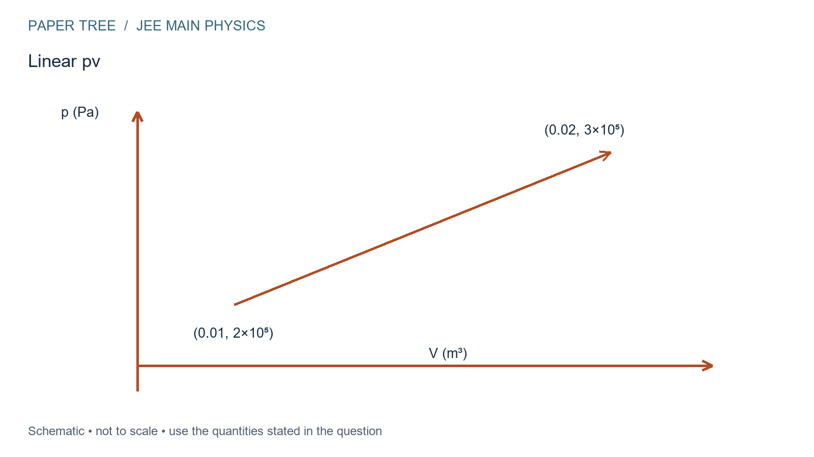
- A. 6000 J
- B. 2500 J
- C. 3500 J
- D. 8500 J
Answer and explanation
D. 8500 J
The work is the trapezoid area, W = (p₁+p₂)(V₂−V₁)/2 = 2500 J. For a monatomic gas, ΔU = 3(p₂V₂−p₁V₁)/2 = 6000 J. Thus Q = 8500 J and W/Q = 0.2941176471. The ideal-gas equation gives T₂/T₁ = p₂V₂/(p₁V₁) = 3.
For the requested outcome — Find the heat supplied to the gas. — the result is 8500 J.
A monatomic ideal gas is taken quasistatically from (V,p) = (0.01 m³, 200000 Pa) to (0.02 m³, 300000 Pa) along the straight line joining these states in the p-V plane. Neglect non-pV work. Find the final-to-initial absolute-temperature ratio.
Work done BY the gas is positive. Unless a process is explicitly irreversible, gas-law path calculations are quasistatic and reversible with constant stated heat capacities; the only mechanical work is p–V work.
Answer and explanation
C. 3
The work is the trapezoid area, W = (p₁+p₂)(V₂−V₁)/2 = 2500 J. For a monatomic gas, ΔU = 3(p₂V₂−p₁V₁)/2 = 6000 J. Thus Q = 8500 J and W/Q = 0.2941176471. The ideal-gas equation gives T₂/T₁ = p₂V₂/(p₁V₁) = 3.
For the requested outcome — Find the final-to-initial absolute-temperature ratio. — the result is 3.
A monatomic ideal gas is taken quasistatically from (V,p) = (0.01 m³, 200000 Pa) to (0.02 m³, 300000 Pa) along the straight line joining these states in the p-V plane. Neglect non-pV work. What fraction of the supplied heat becomes work done by the gas?
Work done BY the gas is positive. Unless a process is explicitly irreversible, gas-law path calculations are quasistatic and reversible with constant stated heat capacities; the only mechanical work is p–V work.
- A. 0.7059
- B. 0.2941
- C. 0.4167
- D. 0.1471
Answer and explanation
B. 0.2941
The work is the trapezoid area, W = (p₁+p₂)(V₂−V₁)/2 = 2500 J. For a monatomic gas, ΔU = 3(p₂V₂−p₁V₁)/2 = 6000 J. Thus Q = 8500 J and W/Q = 0.2941176471. The ideal-gas equation gives T₂/T₁ = p₂V₂/(p₁V₁) = 3.
For the requested outcome — What fraction of the supplied heat becomes work done by the gas? — the result is 0.2941.
A monatomic ideal gas is taken quasistatically from (V,p) = (ξ m³, 100000 Pa) to (0.04 m³, 250000 Pa) along the straight line joining these states in the p-V plane. Neglect non-pV work. The recorded value of the heat supplied to the gas is 15500 J. Which listed positive value of ξ is consistent with this measurement?
Work done BY the gas is positive. Unless a process is explicitly irreversible, gas-law path calculations are quasistatic and reversible with constant stated heat capacities; the only mechanical work is p–V work.
- A. 0.04
- B. 0.01
- C. 0.02
- D. 0.03
Answer and explanation
C. 0.02
Use the physical relations below with the missing input ξ. The recorded value of the heat supplied to the gas gives ξ=0.02 in the unit assigned to ξ in the question. Substitution checks the observation:
The work is the trapezoid area, W = (p₁+p₂)(V₂−V₁)/2 = 3500 J. For a monatomic gas, ΔU = 3(p₂V₂−p₁V₁)/2 = 12000 J. Thus Q = 15500 J and W/Q = 0.2258064516. The ideal-gas equation gives T₂/T₁ = p₂V₂/(p₁V₁) = 5.
A monatomic ideal gas is taken quasistatically from (V,p) = (0.02 m³, 100000 Pa) to (ξ m³, 250000 Pa) along the straight line joining these states in the p-V plane. Neglect non-pV work. The recorded value of the final-to-initial absolute-temperature ratio is 5. Which listed positive value of ξ is consistent with this measurement?
Work done BY the gas is positive. Unless a process is explicitly irreversible, gas-law path calculations are quasistatic and reversible with constant stated heat capacities; the only mechanical work is p–V work.
- A. 0.04
- B. 0.06
- C. 0.02
- D. 0.08
Answer and explanation
A. 0.04
Use the physical relations below with the missing input ξ. The recorded value of the final-to-initial absolute-temperature ratio gives ξ=0.04 in the unit assigned to ξ in the question. Substitution checks the observation:
The work is the trapezoid area, W = (p₁+p₂)(V₂−V₁)/2 = 3500 J. For a monatomic gas, ΔU = 3(p₂V₂−p₁V₁)/2 = 12000 J. Thus Q = 15500 J and W/Q = 0.2258064516. The ideal-gas equation gives T₂/T₁ = p₂V₂/(p₁V₁) = 5.
A monatomic ideal gas is taken quasistatically from (V,p) = (0.02 m³, ξ Pa) to (0.04 m³, 250000 Pa) along the straight line joining these states in the p-V plane. Neglect non-pV work. The recorded value of fraction of supplied heat converted to work by the gas is 0.2258064516. Which listed positive value of ξ is consistent with this measurement?
Work done BY the gas is positive. Unless a process is explicitly irreversible, gas-law path calculations are quasistatic and reversible with constant stated heat capacities; the only mechanical work is p–V work.
- A. 100000
- B. 50000
- C. 150000
- D. 200000
Answer and explanation
A. 100000
Use the physical relations below with the missing input ξ. Matching the measured fraction of supplied heat converted to work by the gas gives ξ=100000 in the unit assigned to ξ in the question. Substitution checks the observation:
The work is the trapezoid area, W = (p₁+p₂)(V₂−V₁)/2 = 3500 J. For a monatomic gas, ΔU = 3(p₂V₂−p₁V₁)/2 = 12000 J. Thus Q = 15500 J and W/Q = 0.2258064516. The ideal-gas equation gives T₂/T₁ = p₂V₂/(p₁V₁) = 5.
One mole of a monatomic ideal gas goes round A→B→C→A. A = (0.01 m³, 100000 Pa), B = (0.03 m³, 100000 Pa), and C = (0.01 m³, 300000 Pa), where coordinates are (volume, pressure). A→B is isobaric, B→C is a straight line in the p-V plane and C→A is isochoric. Work done by the gas is positive. Find the net work done by the gas in the cycle. Choose the closest value.
Work done BY the gas is positive. Unless a process is explicitly irreversible, gas-law path calculations are quasistatic and reversible with constant stated heat capacities; the only mechanical work is p–V work.
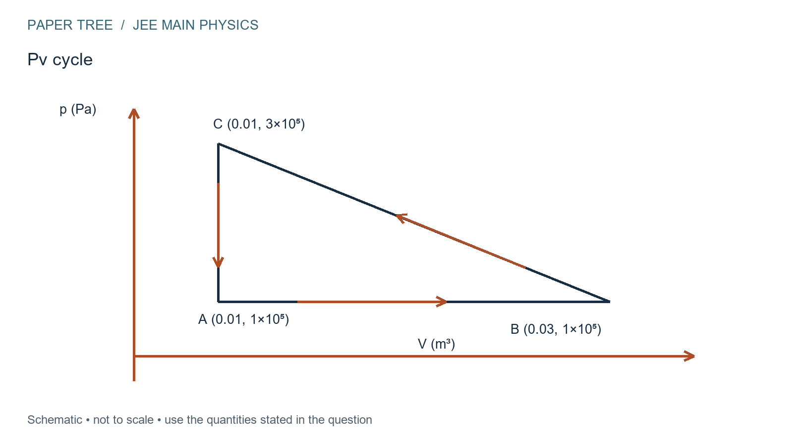
- A. -1000 J
- B. 2000 J
- C. -4000 J
- D. -2000 J
Answer and explanation
D. -2000 J
Work is the signed area ∫p dV. WAB = 2000 J and WBC = -4000 J; WCA = 0. Hence net work is -2000 J. For a monatomic gas U = 3pV/2. Use Q = ΔU+W on each path to obtain QAB = 5000 J and QBC = -4000 J.
For the requested outcome — Find the net work done by the gas in the cycle. — the result is -2000 J.
One mole of a monatomic ideal gas goes round A→B→C→A. A = (0.01 m³, 100000 Pa), B = (0.03 m³, 100000 Pa), and C = (0.01 m³, 300000 Pa), where coordinates are (volume, pressure). A→B is isobaric, B→C is a straight line in the p-V plane and C→A is isochoric. Work done by the gas is positive. Find the heat supplied in A→B. Choose the closest value.
Work done BY the gas is positive. Unless a process is explicitly irreversible, gas-law path calculations are quasistatic and reversible with constant stated heat capacities; the only mechanical work is p–V work.
- A. 5000 J
- B. 2500 J
- C. 3000 J
- D. 2000 J
Answer and explanation
A. 5000 J
Work is the signed area ∫p dV. WAB = 2000 J and WBC = -4000 J; WCA = 0. Hence net work is -2000 J. For a monatomic gas U = 3pV/2. Use Q = ΔU+W on each path to obtain QAB = 5000 J and QBC = -4000 J.
For the requested outcome — Find the heat supplied in A→B. — the result is 5000 J.
One mole of a monatomic ideal gas goes round A→B→C→A. A = (0.01 m³, 100000 Pa), B = (0.03 m³, 100000 Pa), and C = (0.01 m³, 300000 Pa), where coordinates are (volume, pressure). A→B is isobaric, B→C is a straight line in the p-V plane and C→A is isochoric. Work done by the gas is positive. Find the signed heat transferred to the gas in B→C. Choose the closest value.
Work done BY the gas is positive. Unless a process is explicitly irreversible, gas-law path calculations are quasistatic and reversible with constant stated heat capacities; the only mechanical work is p–V work.
- A. 4000 J
- B. -8000 J
- C. -4000 J
- D. 0 J
Answer and explanation
C. -4000 J
Work is the signed area ∫p dV. WAB = 2000 J and WBC = -4000 J; WCA = 0. Hence net work is -2000 J. For a monatomic gas U = 3pV/2. Use Q = ΔU+W on each path to obtain QAB = 5000 J and QBC = -4000 J.
For the requested outcome — Find the signed heat transferred to the gas in B→C. — the result is -4000 J.
One mole of a monatomic ideal gas goes round A→B→C→A. A = (0.02 m³, ξ Pa), B = (0.05 m³, ξ Pa), and C = (0.02 m³, 200000 Pa), where coordinates are (volume, pressure). A→B is isobaric, B→C is a straight line in the p-V plane and C→A is isochoric. Work done by the gas is positive. The recorded value of the net work done by the gas in the cycle is -1500 J. Which listed positive value of ξ is consistent with this measurement?
Work done BY the gas is positive. Unless a process is explicitly irreversible, gas-law path calculations are quasistatic and reversible with constant stated heat capacities; the only mechanical work is p–V work.
- A. 200000
- B. 100000
- C. 50000
- D. 150000
Answer and explanation
B. 100000
Use the physical relations below with the missing input ξ. The recorded value of the net work done by the gas in the cycle gives ξ=100000 in the unit assigned to ξ in the question. Substitution checks the observation:
Work is the signed area ∫p dV. WAB = 3000 J and WBC = -4500 J; WCA = 0. Hence net work is -1500 J. For a monatomic gas U = 3pV/2. Use Q = ΔU+W on each path to obtain QAB = 7500 J and QBC = -6000 J.
One mole of a monatomic ideal gas goes round A→B→C→A. A = (ξ m³, 100000 Pa), B = (0.05 m³, 100000 Pa), and C = (ξ m³, 200000 Pa), where coordinates are (volume, pressure). A→B is isobaric, B→C is a straight line in the p-V plane and C→A is isochoric. Work done by the gas is positive. The recorded value of the heat supplied in A→B is 7500 J. Which listed positive value of ξ is consistent with this measurement?
Work done BY the gas is positive. Unless a process is explicitly irreversible, gas-law path calculations are quasistatic and reversible with constant stated heat capacities; the only mechanical work is p–V work.
- A. 0.01
- B. 0.04
- C. 0.02
- D. 0.03
Answer and explanation
C. 0.02
Use the physical relations below with the missing input ξ. The recorded value of the heat supplied in A→B gives ξ=0.02 in the unit assigned to ξ in the question. Substitution checks the observation:
Work is the signed area ∫p dV. WAB = 3000 J and WBC = -4500 J; WCA = 0. Hence net work is -1500 J. For a monatomic gas U = 3pV/2. Use Q = ΔU+W on each path to obtain QAB = 7500 J and QBC = -6000 J.
One mole of a monatomic ideal gas goes round A→B→C→A. A = (ξ m³, 100000 Pa), B = (0.05 m³, 100000 Pa), and C = (ξ m³, 200000 Pa), where coordinates are (volume, pressure). A→B is isobaric, B→C is a straight line in the p-V plane and C→A is isochoric. Work done by the gas is positive. The recorded value of the signed heat transferred to the gas in B→C is -6000 J. Which listed positive value of ξ is consistent with this measurement?
Work done BY the gas is positive. Unless a process is explicitly irreversible, gas-law path calculations are quasistatic and reversible with constant stated heat capacities; the only mechanical work is p–V work.
- A. 0.04
- B. 0.01
- C. 0.03
- D. 0.02
Answer and explanation
D. 0.02
Use the physical relations below with the missing input ξ. The recorded value of the signed heat transferred to the gas in B→C gives ξ=0.02 in the unit assigned to ξ in the question. Substitution checks the observation:
Work is the signed area ∫p dV. WAB = 3000 J and WBC = -4500 J; WCA = 0. Hence net work is -1500 J. For a monatomic gas U = 3pV/2. Use Q = ΔU+W on each path to obtain QAB = 7500 J and QBC = -6000 J.
According to the kinetic theory of gases, the collisions of gas molecules with one another and with the walls of the container are:
Use the classical ideal-gas model and the stated active degrees of freedom; molecular size is fixed in mean-free-path comparisons unless specified otherwise.
- A. partially elastic, a small fraction of the kinetic energy being lost as heat in every collision
- B. perfectly inelastic, so that the molecules move together after collision
- C. elastic with the walls but inelastic among the molecules themselves
- D. perfectly elastic, so that the total kinetic energy of the colliding molecules is conserved
Answer and explanation
D. perfectly elastic, so that the total kinetic energy of the colliding molecules is conserved
Kinetic theory assumes that a gas molecule suffers no loss of kinetic energy in a collision. Momentum and kinetic energy are both conserved. This is why a gas kept at constant temperature in an insulated vessel maintains a steady pressure indefinitely; if any energy were lost per collision the pressure would keep decreasing.
Kinetic theory assumes that the time taken for one collision is negligible compared with the time between two successive collisions. The direct consequence of this assumption is that:
Use the classical ideal-gas model and the stated active degrees of freedom; molecular size is fixed in mean-free-path comparisons unless specified otherwise.
- A. a molecule spends almost all of its time in free straight line motion
- B. the molecules must all move with the same speed
- C. the pressure on the wall is produced only during the free flight
- D. the number of collisions per second becomes extremely small
Answer and explanation
A. a molecule spends almost all of its time in free straight line motion
If each collision lasts for a vanishingly small time, then almost the entire lifetime of a molecule is spent travelling freely in a straight line. This is what makes it meaningful to define a free path and a mean free path, and it also justifies calculating pressure as a sequence of instantaneous momentum transfers. The frequency of collisions can still be very large; a short duration does not mean a small number.
For a large number of molecules of a gas in a closed container at rest, the average of the velocity vectors of all the molecules and the average of the squares of their speeds are respectively:
Use the classical ideal-gas model and the stated active degrees of freedom; molecular size is fixed in mean-free-path comparisons unless specified otherwise.
- A. zero and zero
- B. non zero and non zero, both directed along the container axis
- C. zero and a non zero positive quantity
- D. a non zero positive quantity and zero
Answer and explanation
C. zero and a non zero positive quantity
Molecular motion is completely random, so for every molecule moving with a certain velocity there is on average another moving with the opposite velocity. The vector sum, and hence the average velocity, is zero for a container at rest. The square of a speed is always positive, so no cancellation is possible and the mean square speed is a definite positive number. That is exactly why pressure is written using the mean square speed and not the average velocity.
A real gas behaves most nearly like an ideal gas at:
Use the classical ideal-gas model and the stated active degrees of freedom; molecular size is fixed in mean-free-path comparisons unless specified otherwise.
- A. high pressure and high temperature
- B. low pressure and low temperature
- C. high pressure and low temperature
- D. low pressure and high temperature
Answer and explanation
D. low pressure and high temperature
At low pressure the molecules are far apart, so their own volume is a negligible fraction of the vessel and the attractive forces are weak. At high temperature the average kinetic energy is large compared with the potential energy of attraction, so the attractive forces hardly affect the motion. Both requirements of the ideal gas model are therefore best satisfied at low pressure and high temperature.
Between two successive collisions, a molecule of an ideal gas moves:
Use the classical ideal-gas model and the stated active degrees of freedom; molecular size is fixed in mean-free-path comparisons unless specified otherwise.
- A. along a straight line but with continuously decreasing speed
- B. in a random zig zag path even without collisions
- C. along a curved path because of the mutual attraction of the other molecules
- D. along a straight line with constant velocity
Answer and explanation
D. along a straight line with constant velocity
Kinetic theory neglects intermolecular forces except during the brief collision. With zero net force the acceleration is zero, so the molecule travels in a straight line at constant speed. The straight segment between two collisions is exactly what is called a free path, and its average value is the mean free path.
An ideal gas has molar Cv=20.75 J mol⁻¹ K⁻¹. Taking R=8.3 J mol⁻¹ K⁻¹ and classically active quadratic degrees of freedom, which listed molecular model and value of gamma are consistent with this observation?
Use the classical ideal-gas model and the stated active degrees of freedom; molecular size is fixed in mean-free-path comparisons unless specified otherwise.
- A. monatomic with gamma equal to 1.67
- B. non linear triatomic with gamma equal to 1.33
- C. diatomic with gamma equal to 1.40
- D. diatomic with gamma equal to 1.29
Answer and explanation
C. diatomic with gamma equal to 1.40
f = 2 × 20.75 / 8.3 = 41.5 / 8.3 = 5, so the molecule has five degrees of freedom and is a rigid diatomic. Then gamma = 1 + 2/5 = 1.40. Note that 20.75 J mol⁻¹ K⁻¹ is also the value of C_p for a monatomic gas, which is why the identification must be made from the definition and not from the number alone.
A mixture contains a monatomic gas of molar mass 4 g/mol and a rigid diatomic gas of molar mass 28 g/mol. The total mass is 36 g. Heating at constant volume through 10 K requires 440 J. Use R=8 J/(mol K). Initially both gases are at 300 K. No rotational modes freeze out and vibration is inactive. The mixture is then reversibly compressed adiabatically to half its volume. Find the final temperature. Choose the closest value.
Use the classical ideal-gas model and the stated active degrees of freedom; molecular size is fixed in mean-free-path comparisons unless specified otherwise.
- A. -437.8 K
- B. 875.7 K
- C. 437.8 K
- D. 218.9 K
Answer and explanation
C. 437.8 K
Mass gives 4a+28b=mass; constant-volume heat gives (12a+20b)ΔT=Q. Thus a=2, b=1 mol, Cv=44 J/K and γ=1.545454545. Adiabatic compression gives Tf=437.8440317 K. Use the diatomic molar mass, not the mixture average, for vrms=612.6131604 m/s. Work on the gas equals the internal-energy increase, 6065.137395 J.
Requested result: 437.8 K.
A rigid diatomic gas is heated at constant volume. The fraction of the supplied heat that appears as translational kinetic energy of the molecules is:
Use the classical ideal-gas model and the stated active degrees of freedom; molecular size is fixed in mean-free-path comparisons unless specified otherwise.
- A. 0.4
- B. 0.71
- C. 0.6
- D. 1.0
Answer and explanation
C. 0.6
Heating one mole through one kelvin at constant volume requires C_v = (5/2) R of heat. Of the five degrees of freedom, three are translational, so the translational part of the energy rise is (3/2) R. The fraction is (3/2) R divided by (5/2) R = 3/5 = 0.6, the remaining 0.4 going into rotation.
For one mole of an ideal gas, the molar specific heat at constant pressure C_p and that at constant volume C_v are related by:
Use the classical ideal-gas model and the stated active degrees of freedom; molecular size is fixed in mean-free-path comparisons unless specified otherwise.
- A. C_p + C_v = R
- B. C_p x C_v = R
- C. C_v - C_p = R
- D. C_p - C_v = R
Answer and explanation
D. C_p - C_v = R
At constant volume all the heat supplied raises the internal energy. At constant pressure the gas also does work R T per mole for a unit rise in temperature, so extra heat equal to R is needed per mole per kelvin. Hence C_p exceeds C_v by exactly R.
In classical equipartition, each independent quadratic term in a molecule’s energy contributes the following mean energy at absolute temperature T:
Use the classical ideal-gas model and the stated active degrees of freedom; molecular size is fixed in mean-free-path comparisons unless specified otherwise.
- A. k T
- B. (1/2) k T
- C. (3/2) k T
- D. (1/2) R T
Answer and explanation
B. (1/2) k T
In thermal equilibrium the total energy of a molecule is shared equally among all its degrees of freedom, each receiving an average of (1/2) k T. Three translational modes therefore give 3 × (1/2) k T = (3/2) k T, which reproduces the standard translational result.
A rigid insulated vessel contains 4 mol monatomic gas and ξ mol rigid diatomic gas at 400 K. Through controlled valves, half the monatomic molecules and one quarter of the diatomic molecules are removed slowly while a heater holds temperature at T. After the valves close, 5400 J of heat is supplied at constant volume. Use R=8 J/(mol K); there is no chemical reaction or further particle loss. In this arrangement, the following outcome is measured: If the remaining mixture were instead heated from T to the same final temperature at constant pressure, the required heat = 8200 J. Which listed positive value of ξ is consistent with that outcome?
Use the classical ideal-gas model and the stated active degrees of freedom; molecular size is fixed in mean-free-path comparisons unless specified otherwise.
Answer and explanation
D. 2
Use the coupled physical relations below. The missing input is ξ=2 in the units assigned in the stem.
The controlled removal leaves af=2, bf=1.5 mol. Its total Cv=54 J/K gives Tf=500 K. Pressure depends on both retained mole count and changed temperature: ratio=0.7291666667. The diatomic internal-energy fraction is 0.5555555556. For the counterfactual constant-pressure heating, Cp=Cv+nR, giving heat=8200 J.
A mixture contains a monatomic gas of molar mass 4 g/mol and a rigid diatomic gas of molar mass 28 g/mol. The total mass is 36 g. Heating at constant volume through 10 K requires 440 J. Use R=8 J/(mol K). Initially both gases are at 300 K. No rotational modes freeze out and vibration is inactive. The mixture is then reversibly compressed adiabatically to half its volume. Find the final rms speed of the diatomic molecules. Choose the closest value.
Use the classical ideal-gas model and the stated active degrees of freedom; molecular size is fixed in mean-free-path comparisons unless specified otherwise.
- A. 1225 m/s
- B. 612.6 m/s
- C. -612.6 m/s
- D. 306.3 m/s
Answer and explanation
B. 612.6 m/s
Mass gives 4a+28b=mass; constant-volume heat gives (12a+20b)ΔT=Q. Thus a=2, b=1 mol, Cv=44 J/K and γ=1.545454545. Adiabatic compression gives Tf=437.8440317 K. Use the diatomic molar mass, not the mixture average, for vrms=612.6131604 m/s. Work on the gas equals the internal-energy increase, 6065.137395 J.
Requested result: 612.6 m/s.
A mixture contains a monatomic gas of molar mass 4 g/mol and a rigid diatomic gas of molar mass 28 g/mol. The total mass is 64 g. Heating at constant volume through 20 K requires ξ J. Use R=8 J/(mol K). Initially both gases are at 320 K. No rotational modes freeze out and vibration is inactive. The mixture is then reversibly compressed adiabatically to half its volume. In this arrangement, the following outcome is measured: the final temperature = 434.8083354 K. Which listed positive value of ξ is consistent with that outcome?
Use the classical ideal-gas model and the stated active degrees of freedom; molecular size is fixed in mean-free-path comparisons unless specified otherwise.
- A. 1040
- B. 520
- C. 2080
- D. 1560
Answer and explanation
A. 1040
Use the coupled physical relations below. The missing input is ξ=1040 in the units assigned in the stem.
Mass gives 4a+28b=mass; constant-volume heat gives (12a+20b)ΔT=Q. Thus a=0.6875, b=2.1875 mol, Cv=52 J/K and γ=1.442307692. Adiabatic compression gives Tf=434.8083354 K. Use the diatomic molar mass, not the mixture average, for vrms=610.4857565 m/s. Work on the gas equals the internal-energy increase, 5970.033439 J.
At a sufficiently high temperature a diatomic molecule also vibrates, adding two more degrees of freedom. The ratio of specific heats then becomes nearly:
Use the classical ideal-gas model and the stated active degrees of freedom; molecular size is fixed in mean-free-path comparisons unless specified otherwise.
- A. 1.22
- B. 1.29
- C. 1.50
- D. 1.40
Answer and explanation
B. 1.29
A vibrating diatomic molecule has f = 3 + 2 + 2 = 7. Then C_v = (7/2) R, C_p = (9/2) R and gamma = 9/7 = 1.286, which is nearly 1.29.
A triatomic gas molecule that is not linear has 3 translational and 3 rotational degrees of freedom and no excited vibration. For this gas the ratio of specific heats is:
Use the classical ideal-gas model and the stated active degrees of freedom; molecular size is fixed in mean-free-path comparisons unless specified otherwise.
- A. 1.33
- B. 1.40
- C. 1.17
- D. 1.67
Answer and explanation
A. 1.33
With f = 6, C_v = 3R and C_p = 4R, so gamma = 4R / 3R = 4/3 = 1.33. Equivalently gamma = 1 + 2/6 = 1.33.
A rigid diatomic molecule at moderate temperature has degrees of freedom equal to:
Use the classical ideal-gas model and the stated active degrees of freedom; molecular size is fixed in mean-free-path comparisons unless specified otherwise.
- A. 7, consisting of 3 translational, 2 rotational and 2 vibrational
- B. 6, consisting of 3 translational and 3 rotational
- C. 5, consisting of 3 translational and 2 rotational
- D. 3, consisting of 3 translational only
Answer and explanation
C. 5, consisting of 3 translational and 2 rotational
A diatomic molecule is a dumb bell. Its centre of mass can move along three independent directions, giving 3 translational modes. It can rotate about two axes perpendicular to the line joining the atoms, giving 2 rotational modes. Rotation about the bond axis itself has a negligible moment of inertia and is not counted, and the rigid model excludes vibration.
One mole of a monatomic gas is mixed with one mole of a rigid diatomic gas. For the mixture the molar specific heat at constant volume and the ratio of specific heats are respectively:
Use the classical ideal-gas model and the stated active degrees of freedom; molecular size is fixed in mean-free-path comparisons unless specified otherwise.
- A. R and 2.0
- B. 2R and 1.5
- C. 4R and 1.25
- D. 2R and 1.4
Answer and explanation
B. 2R and 1.5
C_v of the mixture = (1 × 1.5R + 1 × 2.5R) / 2 = 4R / 2 = 2R, which is 16.6 J mol⁻¹ K⁻¹ for R = 8.3. Then C_p = C_v + R = 3R and gamma = 3R / 2R = 1.5. The mixture behaves like a gas with four effective degrees of freedom.
The number of degrees of freedom of a monatomic gas molecule at ordinary temperature is:
Use the classical ideal-gas model and the stated active degrees of freedom; molecular size is fixed in mean-free-path comparisons unless specified otherwise.
Answer and explanation
D. 3
A monatomic molecule is treated as a point mass, so its position needs three coordinates and its motion is fully described by three independent translational velocity components. Rotation of a point mass stores no energy and there are no interatomic bonds to vibrate, so the total is 3.
One mole of helium and one mole of oxygen are kept at the same temperature. The ratio of the total translational kinetic energy of the helium sample to that of the oxygen sample is:
Use the classical ideal-gas model and the stated active degrees of freedom; molecular size is fixed in mean-free-path comparisons unless specified otherwise.
- A. 1 : 1
- B. 1 : 8
- C. 3 : 5
- D. 8 : 1
Answer and explanation
A. 1 : 1
The translational kinetic energy of n moles is (3/2) n R T and involves neither the molar mass nor the atomicity. With n = 1 and the same T for both samples, the two energies are equal, so the ratio is 1 : 1. The atomicity would matter only if the total internal energy including rotation were asked for.
The total translational kinetic energy of one mole of an ideal gas at absolute temperature T is:
Use the classical ideal-gas model and the stated active degrees of freedom; molecular size is fixed in mean-free-path comparisons unless specified otherwise.
- A. (3/2) R T / N_A
- B. (3/2) k T
- C. (3/2) R T
- D. 3 R T
Answer and explanation
C. (3/2) R T
One mole contains N_A molecules and each has an average translational kinetic energy (3/2) k T. The total is N_A x (3/2) k T = (3/2) (N_A k) T = (3/2) R T, because the gas constant is the product of the Avogadro number and the Boltzmann constant.
The translational kinetic energy of one mole of an ideal gas at 400 K, taking R = 8.3 J mol⁻¹ K⁻¹, is:
Use the classical ideal-gas model and the stated active degrees of freedom; molecular size is fixed in mean-free-path comparisons unless specified otherwise.
- A. 4980 J
- B. 1660 J
- C. 9960 J
- D. 3320 J
Answer and explanation
A. 4980 J
Energy = 1.5 × 8.3 × 400 = 1.5 × 3320 = 4980 J.
The average translational kinetic energy of the molecules of a gas is 6.21 × 10⁻²¹ J. Taking k = 1.38 × 10⁻²³ J K⁻¹, the temperature of the gas is:
Use the classical ideal-gas model and the stated active degrees of freedom; molecular size is fixed in mean-free-path comparisons unless specified otherwise.
- A. 450 K
- B. 300 K
- C. 200 K
- D. 900 K
Answer and explanation
B. 300 K
T = 2 × 6.21 × 10⁻²¹ / (3 × 1.38 × 10⁻²³) = 1.242 × 10⁻²⁰ / 4.14 × 10⁻²³ = 300 K.
In the formal T→0 limit of classical ideal-gas kinetic theory (not a description of quantum ground-state motion), absolute zero corresponds to:
Use the classical ideal-gas model and the stated active degrees of freedom; molecular size is fixed in mean-free-path comparisons unless specified otherwise.
- A. the pressure of the gas becomes maximum
- B. the average translational kinetic energy of the molecules becomes zero
- C. the density of the gas becomes zero
- D. the molecules move with the most probable speed
Answer and explanation
B. the average translational kinetic energy of the molecules becomes zero
Because the average translational kinetic energy per molecule is directly proportional to the absolute temperature, it vanishes only when T = 0. Absolute zero is therefore the temperature at which the translational motion assumed by kinetic theory ceases, and it is why no lower temperature is possible on the Kelvin scale.
The average translational kinetic energy of a molecule of an ideal gas at absolute temperature T is:
Use the classical ideal-gas model and the stated active degrees of freedom; molecular size is fixed in mean-free-path comparisons unless specified otherwise.
- A. (3/2) k T
- B. (1/2) k T
- C. (3/2) R T
- D. (5/2) k T
Answer and explanation
A. (3/2) k T
Each of the three translational degrees of freedom carries an average energy (1/2) k T by the law of equipartition. The total translational energy of one molecule is therefore 3 × (1/2) k T = (3/2) k T, and this value is the same for every ideal gas at a given temperature.
A vessel contains 2 moles of helium and 3 moles of oxygen at 300 K. Taking R = 8.3 J mol⁻¹ K⁻¹, the total translational kinetic energy of the mixture is:
Use the classical ideal-gas model and the stated active degrees of freedom; molecular size is fixed in mean-free-path comparisons unless specified otherwise.
- A. 7470 J
- B. 31125 J
- C. 11205 J
- D. 18675 J
Answer and explanation
D. 18675 J
Translational energy per mole depends only on temperature, so both gases contribute (3/2) R T per mole. The total number of moles is 2 + 3 = 5. Energy = 1.5 × 5 × 8.3 × 300 = 1.5 × 12450 = 18675 J.
The root mean square speed of the molecules of a gas at 250 K is doubled. The average translational kinetic energy per molecule and the final temperature are respectively:
Use the classical ideal-gas model and the stated active degrees of freedom; molecular size is fixed in mean-free-path comparisons unless specified otherwise.
- A. four times the initial energy and 500 K
- B. four times the initial energy and 1000 K
- C. two times the initial energy and 500 K
- D. two times the initial energy and 1000 K
Answer and explanation
B. four times the initial energy and 1000 K
Since the energy varies as the square of the speed, doubling v_rms makes the energy 2² = 4 times its original value. Because the energy is directly proportional to the absolute temperature, the temperature must also become 4 times, that is 4 × 250 = 1000 K.
The total translational kinetic energy of a sample of gas at 200 K is 4.14 × 10⁻¹⁸ J. Taking k = 1.38 × 10⁻²³ J K⁻¹, the number of molecules in the sample is:
Use the classical ideal-gas model and the stated active degrees of freedom; molecular size is fixed in mean-free-path comparisons unless specified otherwise.
- A. 1500
- B. 667
- C. 1000
- D. 500
Answer and explanation
C. 1000
Energy per molecule = 1.5 × 1.38 × 10⁻²³ x 200 = 4.14 × 10⁻²¹ J. Hence N = 4.14 × 10⁻¹⁸ / 4.14 × 10⁻²¹ = 1000 molecules.
A rigid insulated vessel contains 4 mol monatomic gas and 2 mol rigid diatomic gas at 400 K. Through controlled valves, half the monatomic molecules and one quarter of the diatomic molecules are removed slowly while a heater holds temperature at T. After the valves close, ξ J of heat is supplied at constant volume. Use R=8 J/(mol K); there is no chemical reaction or further particle loss. In this arrangement, the following outcome is measured: the final-to-original pressure ratio = 0.7291666667 . Which listed positive value of ξ is consistent with that outcome?
Use the classical ideal-gas model and the stated active degrees of freedom; molecular size is fixed in mean-free-path comparisons unless specified otherwise.
- A. 2700
- B. 10800
- C. 5400
- D. 8100
Answer and explanation
C. 5400
Use the coupled physical relations below. The missing input is ξ=5400 in the units assigned in the stem.
The controlled removal leaves af=2, bf=1.5 mol. Its total Cv=54 J/K gives Tf=500 K. Pressure depends on both retained mole count and changed temperature: ratio=0.7291666667. The diatomic internal-energy fraction is 0.5555555556. For the counterfactual constant-pressure heating, Cp=Cv+nR, giving heat=8200 J.
Compare two dilute hard-sphere gases. The second has one quarter the first gas’s number density and half its effective molecular diameter. Its mean free path is:
Use the classical ideal-gas model and the stated active degrees of freedom; molecular size is fixed in mean-free-path comparisons unless specified otherwise.
- A. 16 times its initial value
- B. 2 times its initial value
- C. 8 times its initial value
- D. 4 times its initial value
Answer and explanation
A. 16 times its initial value
Reducing n to one fourth multiplies λ by 4. Halving d divides d² by 4 and therefore multiplies λ by another 4. The combined factor is 4 × 4 = 16.
Two gases have the same number density but the molecular diameter of the second is twice that of the first. The mean free path in the second gas compared with the first is:
Use the classical ideal-gas model and the stated active degrees of freedom; molecular size is fixed in mean-free-path comparisons unless specified otherwise.
- A. four times
- B. one eighth
- C. one fourth
- D. one half
Answer and explanation
C. one fourth
The collision cross section is proportional to the square of the molecular diameter, and it appears in the denominator of λ = 1 / (√(2) π d² n). Doubling d multiplies d² by 4, so the mean free path falls to one fourth of its earlier value.
The absolute temperature of a gas is doubled and at the same time its pressure is made four times the initial value. The mean free path of its molecules becomes:
Use the classical ideal-gas model and the stated active degrees of freedom; molecular size is fixed in mean-free-path comparisons unless specified otherwise.
- A. half its initial value
- B. one fourth its initial value
- C. eight times its initial value
- D. twice its initial value
Answer and explanation
A. half its initial value
The mean free path is proportional to T and inversely proportional to P. The combined factor is (T_new / T_old) × (P_old / P_new) = 2 × (1/4) = 1/2. Hence the mean free path falls to half its initial value.
The mean free path of a molecule of a gas is:
Use the classical ideal-gas model and the stated active degrees of freedom; molecular size is fixed in mean-free-path comparisons unless specified otherwise.
- A. the average distance travelled by a molecule between two successive collisions
- B. the average distance between the walls of the container
- C. the total distance travelled by a molecule in one second
- D. the shortest distance a molecule can travel before it stops
Answer and explanation
A. the average distance travelled by a molecule between two successive collisions
Between two collisions a molecule travels a straight segment called a free path. These segments have different lengths, and their average value is the mean free path, usually written as λ. For air at room temperature and atmospheric pressure it is of the order of 10⁻⁷ m, far smaller than the size of any container.
The mean free path of the molecules of a gas varies with the number of molecules per unit volume n as:
Use the classical ideal-gas model and the stated active degrees of freedom; molecular size is fixed in mean-free-path comparisons unless specified otherwise.
- A. directly proportional to n
- B. inversely proportional to the square of n
- C. independent of n
- D. inversely proportional to n
Answer and explanation
D. inversely proportional to n
The more molecules there are in a given volume, the sooner a moving molecule meets one. In the standard expression λ = 1 / (√(2) π d² n), the number density appears in the denominator to the first power, so the mean free path is inversely proportional to n.
A mixture contains a monatomic gas of molar mass 4 g/mol and a rigid diatomic gas of molar mass 28 g/mol. The total mass is 36 g. Heating at constant volume through 10 K requires 440 J. Use R=8 J/(mol K). Initially both gases are at 300 K. No rotational modes freeze out and vibration is inactive. The mixture is then reversibly compressed adiabatically to half its volume. Find the work done ON the mixture during compression. Choose the closest value.
Use the classical ideal-gas model and the stated active degrees of freedom; molecular size is fixed in mean-free-path comparisons unless specified otherwise.
- A. 1.213e+04 J
- B. -6065 J
- C. 3033 J
- D. 6065 J
Answer and explanation
D. 6065 J
Mass gives 4a+28b=mass; constant-volume heat gives (12a+20b)ΔT=Q. Thus a=2, b=1 mol, Cv=44 J/K and γ=1.545454545. Adiabatic compression gives Tf=437.8440317 K. Use the diatomic molar mass, not the mixture average, for vrms=612.6131604 m/s. Work on the gas equals the internal-energy increase, 6065.137395 J.
Requested result: 6065 J.
A gas of density 1.2 kg m⁻³ has a root mean square speed of 500 m s⁻¹. The pressure exerted by the gas is:
Use the classical ideal-gas model and the stated active degrees of freedom; molecular size is fixed in mean-free-path comparisons unless specified otherwise.
- A. 2.0 × 10² Pa
- B. 1.0 × 10⁵ Pa
- C. 3.0 × 10⁵ Pa
- D. 6.0 × 10⁵ Pa
Answer and explanation
B. 1.0 × 10⁵ Pa
P = (1/3) × 1.2 × (500)² = (1/3) × 1.2 × 2.5 × 10⁵ = 0.4 × 2.5 × 10⁵ = 1.0 × 10⁵ Pa.
The density of a gas is reduced to half its initial value while the root mean square speed of its molecules is made three times the initial value. The new pressure is:
Use the classical ideal-gas model and the stated active degrees of freedom; molecular size is fixed in mean-free-path comparisons unless specified otherwise.
- A. 2.25 times the initial pressure
- B. 4.5 times the initial pressure
- C. 9 times the initial pressure
- D. 1.5 times the initial pressure
Answer and explanation
B. 4.5 times the initial pressure
Write P_new / P_old = (rho_new / rho_old) × (v_new / v_old)² = (1/2) × (3)² = (1/2) × 9 = 4.5. The pressure therefore becomes 4.5 times the initial value.
Two different gases are found to have the same pressure and the same density. Then:
Use the classical ideal-gas model and the stated active degrees of freedom; molecular size is fixed in mean-free-path comparisons unless specified otherwise.
- A. their molecules have the same root mean square speed
- B. their molecules have the same average kinetic energy
- C. they are necessarily at the same temperature
- D. their molecules have the same mass
Answer and explanation
A. their molecules have the same root mean square speed
Rearranging the pressure expression gives v_rms = √(3P / ρ). If both P and ρ are the same for the two gases, then v_rms must be the same. Nothing follows about the molecular mass, since a gas of heavy molecules can reach the same density with fewer molecules per unit volume, and nothing follows about temperature because v_rms = √(3RT/M) involves the molar mass as well.
For a gas containing N molecules each of mass m in a vessel of volume V, the kinetic theory expression for pressure is:
Use the classical ideal-gas model and the stated active degrees of freedom; molecular size is fixed in mean-free-path comparisons unless specified otherwise.
- A. P = (1/3) (N / m V) v_rms²
- B. P = (1/3) (N m / V) v_rms²
- C. P = (1/3) (N m V) v_rms²
- D. P = (2/3) (N m / V) v_rms²
Answer and explanation
B. P = (1/3) (N m / V) v_rms²
The density of the gas is the total mass N m divided by the volume V. Substituting ρ = N m / V into P = (1/3) ρ v_rms² gives P = (1/3) (N m / V) v_rms². The quantity N m / V has units kg m⁻³ and multiplying by the square of a speed gives Pa.
A rigid insulated vessel contains 2 mol monatomic gas and 2 mol rigid diatomic gas at 300 K. Through controlled valves, half the monatomic molecules and one quarter of the diatomic molecules are removed slowly while a heater holds temperature at T. After the valves close, 4200 J of heat is supplied at constant volume. Use R=8 J/(mol K); there is no chemical reaction or further particle loss. Find the final-to-original pressure ratio. Choose the closest value.
Use the classical ideal-gas model and the stated active degrees of freedom; molecular size is fixed in mean-free-path comparisons unless specified otherwise.
- A. 0.4167
- B. 1.667
- C. -0.8333
- D. 0.8333
Answer and explanation
D. 0.8333
The controlled removal leaves af=1, bf=1.5 mol. Its total Cv=42 J/K gives Tf=400 K. Pressure depends on both retained mole count and changed temperature: ratio=0.8333333333. The diatomic internal-energy fraction is 0.7142857143. For the counterfactual constant-pressure heating, Cp=Cv+nR, giving heat=6200 J.
Requested result: 0.8333.
If E is the translational kinetic energy of the molecules of an ideal gas per unit volume, then the pressure of the gas is:
Use the classical ideal-gas model and the stated active degrees of freedom; molecular size is fixed in mean-free-path comparisons unless specified otherwise.
- A. P = 3 E
- B. P = (1/3) E
- C. P = (2/3) E
- D. P = (3/2) E
Answer and explanation
C. P = (2/3) E
Kinetic energy per unit volume is E = (1/2) ρ v_rms², so ρ v_rms² = 2E. Substituting in P = (1/3) ρ v_rms² gives P = (1/3) × 2E = (2/3) E. Equivalently the energy density is one and a half times the pressure.
The pressure of a gas of density 3 kg m⁻³ is 1.6 × 10⁵ Pa. The root mean square speed of its molecules is:
Use the classical ideal-gas model and the stated active degrees of freedom; molecular size is fixed in mean-free-path comparisons unless specified otherwise.
- A. 231 m s⁻¹
- B. 400 m s⁻¹
- C. 1.6 × 10⁵ m s⁻¹
- D. 693 m s⁻¹
Answer and explanation
B. 400 m s⁻¹
From P = (1/3) ρ v_rms² we get v_rms² = 3P / ρ = 3 × 1.6 × 10⁵ / 3 = 1.6 × 10⁵. Taking the square root, v_rms = 400 m s⁻¹.
A mixture contains a monatomic gas of molar mass 4 g/mol and a rigid diatomic gas of molar mass 28 g/mol. The total mass is 64 g. Heating at constant volume through 20 K requires 1040 J. Use R=8 J/(mol K). Initially both gases are at ξ K. No rotational modes freeze out and vibration is inactive. The mixture is then reversibly compressed adiabatically to half its volume. In this arrangement, the following outcome is measured: the final rms speed of the diatomic molecules = 610.4857565 m/s. Which listed positive value of ξ is consistent with that outcome?
Use the classical ideal-gas model and the stated active degrees of freedom; molecular size is fixed in mean-free-path comparisons unless specified otherwise.
Answer and explanation
D. 320
Use the coupled physical relations below. The missing input is ξ=320 in the units assigned in the stem.
Mass gives 4a+28b=mass; constant-volume heat gives (12a+20b)ΔT=Q. Thus a=0.6875, b=2.1875 mol, Cv=52 J/K and γ=1.442307692. Adiabatic compression gives Tf=434.8083354 K. Use the diatomic molar mass, not the mixture average, for vrms=610.4857565 m/s. Work on the gas equals the internal-energy increase, 5970.033439 J.
A closed vessel of volume 0.02 m³ contains 60 g of a gas whose molecules have a root mean square speed of 500 m s⁻¹. The pressure of the gas is:
Use the classical ideal-gas model and the stated active degrees of freedom; molecular size is fixed in mean-free-path comparisons unless specified otherwise.
- A. 2.5 × 10⁵ Pa
- B. 7.5 × 10⁵ Pa
- C. 5.0 × 10³ Pa
- D. 2.5 × 10² Pa
Answer and explanation
A. 2.5 × 10⁵ Pa
Mass = 60 g = 0.06 kg, so ρ = 0.06 / 0.02 = 3 kg m⁻³. Then P = (1/3) × 3 × (500)² = 1 × 2.5 × 10⁵ = 2.5 × 10⁵ Pa.
A rigid vessel contains a gas at pressure P. Half the molecules are allowed to escape and the root mean square speed of the remaining molecules is then made twice its original value. The final pressure is:
Use the classical ideal-gas model and the stated active degrees of freedom; molecular size is fixed in mean-free-path comparisons unless specified otherwise.
Answer and explanation
D. 2P
With the volume and molecular mass unchanged, the pressure is proportional to the product of the number of molecules and the square of the root mean square speed. The number falls to one half and the square of the speed rises by a factor of 2² = 4. Hence P_final / P = (1/2) × 4 = 2, so the final pressure is 2P.
A rigid insulated vessel contains 2 mol monatomic gas and 2 mol rigid diatomic gas at 300 K. Through controlled valves, half the monatomic molecules and one quarter of the diatomic molecules are removed slowly while a heater holds temperature at T. After the valves close, 4200 J of heat is supplied at constant volume. Use R=8 J/(mol K); there is no chemical reaction or further particle loss. If the remaining mixture were instead heated from T to the same final temperature at constant pressure, find the required heat. Choose the closest value.
Use the classical ideal-gas model and the stated active degrees of freedom; molecular size is fixed in mean-free-path comparisons unless specified otherwise.
- A. -6200 J
- B. 3100 J
- C. 6200 J
- D. 12400 J
Answer and explanation
C. 6200 J
The controlled removal leaves af=1, bf=1.5 mol. Its total Cv=42 J/K gives Tf=400 K. Pressure depends on both retained mole count and changed temperature: ratio=0.8333333333. The diatomic internal-energy fraction is 0.7142857143. For the counterfactual constant-pressure heating, Cp=Cv+nR, giving heat=6200 J.
Requested result: 6200 J.
In the kinetic theory expression for pressure, the factor 1/3 arises because:
Use the classical ideal-gas model and the stated active degrees of freedom; molecular size is fixed in mean-free-path comparisons unless specified otherwise.
- A. the mean square speed is shared equally among the three mutually perpendicular directions
- B. a cube has three pairs of opposite faces and pressure acts on one pair
- C. each molecule loses one third of its momentum at the wall
- D. only one third of the molecules strike a given wall at any instant
Answer and explanation
A. the mean square speed is shared equally among the three mutually perpendicular directions
For any molecule the squared speed is the sum of the squares of its three velocity components. Because the motion is random and isotropic, the averages of the three squared components are equal, so each equals one third of the mean square speed. Only the component perpendicular to a wall contributes to the momentum transfer at that wall, and this introduces the factor 1/3 into the pressure expression.
Hydrogen of molar mass 2 g mol⁻¹ and oxygen of molar mass 32 g mol⁻¹ are mixed in a vessel and allowed to reach thermal equilibrium. For a hydrogen molecule compared with an oxygen molecule:
Use the classical ideal-gas model and the stated active degrees of freedom; molecular size is fixed in mean-free-path comparisons unless specified otherwise.
- A. the root mean square speed is the same while the average kinetic energy is 16 times larger
- B. the root mean square speed is 16 times larger while the average kinetic energy is the same
- C. the root mean square speed is 4 times larger while the average kinetic energy is the same
- D. both the root mean square speed and the average kinetic energy are 4 times larger
Answer and explanation
C. the root mean square speed is 4 times larger while the average kinetic energy is the same
Thermal equilibrium means a common temperature, so every molecule of either gas has the same average translational kinetic energy (3/2)kT. Since (1/2) m v_rms² is the same for both, the speed ratio is √(32 / 2) = 4 in favour of hydrogen.
Hydrogen and oxygen are kept at the same temperature. Compared with an oxygen molecule, a hydrogen molecule has:
Use the classical ideal-gas model and the stated active degrees of freedom; molecular size is fixed in mean-free-path comparisons unless specified otherwise.
- A. a smaller root mean square speed because a lighter molecule carries less energy
- B. the same root mean square speed because the temperature is the same
- C. a larger root mean square speed because hydrogen molecules are diatomic
- D. a larger root mean square speed because v_rms varies inversely as the square root of molar mass
Answer and explanation
D. a larger root mean square speed because v_rms varies inversely as the square root of molar mass
At the same temperature every molecule has the same average translational kinetic energy (3/2)kT. Since this equals (1/2) m v_rms², a smaller mass must be balanced by a larger speed. Numerically v_rms is proportional to 1 / √(M), and hydrogen with molar mass 2 g mol⁻¹ is far lighter than oxygen with 32 g mol⁻¹.
The molecules of a gas at 200 K have a root mean square speed of 400 m s⁻¹. Take k = 1.38 × 10⁻²³ J K⁻¹. At 800 K the root mean square speed of the same molecules is:
Use the classical ideal-gas model and the stated active degrees of freedom; molecular size is fixed in mean-free-path comparisons unless specified otherwise.
- A. 1600 m s⁻¹
- B. 400 m s⁻¹
- C. 566 m s⁻¹
- D. 800 m s⁻¹
Answer and explanation
D. 800 m s⁻¹
The molecular mass is unchanged, so v_rms is proportional to √(T). The temperature ratio is 800 / 200 = 4, giving a speed ratio of √(4) = 2. The new speed is 2 × 400 = 800 m s⁻¹. The value of the Boltzmann constant is not needed for a ratio question.
At what temperature will the root mean square speed of oxygen molecules of molar mass 32 g mol⁻¹ equal the root mean square speed of hydrogen molecules of molar mass 2 g mol⁻¹ kept at 300 K?
Use the classical ideal-gas model and the stated active degrees of freedom; molecular size is fixed in mean-free-path comparisons unless specified otherwise.
- A. 1200 K
- B. 4800 K
- C. 18.75 K
- D. 300 K
Answer and explanation
B. 4800 K
Setting 3 R T_oxygen / 32 = 3 R x 300 / 2 gives T_oxygen / 32 = 300 / 2 = 150, so T_oxygen = 150 × 32 = 4800 K. The heavier gas must be much hotter to match the speed of the lighter one.
A vessel of fixed volume contains a gas at 300 K. Gas is allowed to leak out slowly until the pressure falls to half its initial value, the temperature being held at 300 K throughout. As a result:
Use the classical ideal-gas model and the stated active degrees of freedom; molecular size is fixed in mean-free-path comparisons unless specified otherwise.
- A. both the root mean square speed and the total translational kinetic energy are halved
- B. the root mean square speed falls to 1 / √(2) times its value and the total energy is halved
- C. the root mean square speed is unchanged and the total translational kinetic energy is unchanged
- D. the root mean square speed is unchanged and the total translational kinetic energy of the gas in the vessel is halved
Answer and explanation
D. the root mean square speed is unchanged and the total translational kinetic energy of the gas in the vessel is halved
The temperature is constant, so v_rms = √(3 R T / M) is unchanged. At constant volume and temperature the pressure is proportional to the number of molecules, so halving the pressure means half the molecules remain. The total translational kinetic energy is (3/2) N k T, which therefore falls to half. The same conclusion follows from (3/2) P V with V fixed and P halved.
A mixture contains a monatomic gas of molar mass 4 g/mol and a rigid diatomic gas of molar mass 28 g/mol. The total mass is 64 g. Heating at constant volume through ξ K requires 1040 J. Use R=8 J/(mol K). Initially both gases are at 320 K. No rotational modes freeze out and vibration is inactive. The mixture is then reversibly compressed adiabatically to half its volume. In this arrangement, the following outcome is measured: the work done ON the mixture during compression = 5970.033439 J. Which listed positive value of ξ is consistent with that outcome?
Use the classical ideal-gas model and the stated active degrees of freedom; molecular size is fixed in mean-free-path comparisons unless specified otherwise.
Answer and explanation
C. 20
Use the coupled physical relations below. The missing input is ξ=20 in the units assigned in the stem.
Mass gives 4a+28b=mass; constant-volume heat gives (12a+20b)ΔT=Q. Thus a=0.6875, b=2.1875 mol, Cv=52 J/K and γ=1.442307692. Adiabatic compression gives Tf=434.8083354 K. Use the diatomic molar mass, not the mixture average, for vrms=610.4857565 m/s. Work on the gas equals the internal-energy increase, 5970.033439 J.
Gas A has a molar mass four times that of gas B, and gas A is kept at twice the absolute temperature of gas B. The ratio of the root mean square speed of A to that of B is:
Use the classical ideal-gas model and the stated active degrees of freedom; molecular size is fixed in mean-free-path comparisons unless specified otherwise.
- A. 2 : 1
- B. √(2) : 1
- C. 1 : √(2)
- D. 1 : 2
Answer and explanation
C. 1 : √(2)
The ratio is √((T_A / M_A) / (T_B / M_B)) = √((2 T_B / 4 M_B) × (M_B / T_B)) = √(2 / 4) = √(1/2) = 1 / √(2), which is about 0.71. So gas A is the slower of the two despite being hotter.
For a gas of molar mass M at absolute temperature T, the root mean square speed of the molecules is given by:
Use the classical ideal-gas model and the stated active degrees of freedom; molecular size is fixed in mean-free-path comparisons unless specified otherwise.
- A. √(3 R T / M)
- B. √(3 R M / T)
- C. √(3 R T / M²)
- D. √(2 R T / M)
Answer and explanation
A. √(3 R T / M)
For one mole, P V = R T and P V = (1/3) M v_rms² from kinetic theory. Equating the two gives v_rms² = 3 R T / M, so v_rms = √(3 R T / M) with M in kilogram per mole.
An ideal-gas mixture contains 2 mol of a monatomic gas and 1 mol of a rigid diatomic gas at the same temperature. Vibrational modes are frozen. The mixture is heated by 50 K at constant volume. Use R = 8 J/(mol K); composition stays fixed. Find Cp/Cv for the whole mixture. Choose the closest value.
Use the classical ideal-gas model and the stated active degrees of freedom; molecular size is fixed in mean-free-path comparisons unless specified otherwise.
- A. 1.667
- B. 1.578
- C. 1.545
- D. 1.4
Answer and explanation
C. 1.545
Heat capacities add in extensive form: CV = (3a/2+5b/2)R = 44 J/K; CP = CV+(a+b)R = 68 J/K. Therefore γ = 1.545454545, QV = 2200 J. The diatomic energy increase is (5bR/2)ΔT, a fraction 0.4545454545 of the total.
For the requested outcome — Find Cp/Cv for the whole mixture. — the result is 1.545.
An ideal-gas mixture contains 2 mol of a monatomic gas and 1 mol of a rigid diatomic gas at the same temperature. Vibrational modes are frozen. The mixture is heated by 50 K at constant volume. Use R = 8 J/(mol K); composition stays fixed. Find the supplied heat. Choose the closest value.
Use the classical ideal-gas model and the stated active degrees of freedom; molecular size is fixed in mean-free-path comparisons unless specified otherwise.
- A. 3400 J
- B. 1800 J
- C. 2200 J
- D. 1100 J
Answer and explanation
C. 2200 J
Heat capacities add in extensive form: CV = (3a/2+5b/2)R = 44 J/K; CP = CV+(a+b)R = 68 J/K. Therefore γ = 1.545454545, QV = 2200 J. The diatomic energy increase is (5bR/2)ΔT, a fraction 0.4545454545 of the total.
For the requested outcome — Find the supplied heat. — the result is 2200 J.
An ideal-gas mixture contains 2 mol of a monatomic gas and 1 mol of a rigid diatomic gas at the same temperature. Vibrational modes are frozen. The mixture is heated by 50 K at constant volume. Use R = 8 J/(mol K); composition stays fixed. What fraction of the increase in internal energy belongs to the diatomic component?
Use the classical ideal-gas model and the stated active degrees of freedom; molecular size is fixed in mean-free-path comparisons unless specified otherwise.
- A. 0.4545
- B. 0.2273
- C. 0.3333
- D. 0.6667
Answer and explanation
A. 0.4545
Heat capacities add in extensive form: CV = (3a/2+5b/2)R = 44 J/K; CP = CV+(a+b)R = 68 J/K. Therefore γ = 1.545454545, QV = 2200 J. The diatomic energy increase is (5bR/2)ΔT, a fraction 0.4545454545 of the total.
For the requested outcome — What fraction of the increase in internal energy belongs to the diatomic component? — the result is 0.4545.
An ideal-gas mixture contains ξ mol of a monatomic gas and 3 mol of a rigid diatomic gas at the same temperature. Vibrational modes are frozen. The mixture is heated by 40 K at constant volume. Use R = 8 J/(mol K); composition stays fixed. The recorded value of Cp/Cv for the whole mixture is 1.444444444. Which listed positive value of ξ is consistent with this measurement?
Use the classical ideal-gas model and the stated active degrees of freedom; molecular size is fixed in mean-free-path comparisons unless specified otherwise.
Answer and explanation
A. 1
Use the physical relations below with the missing input ξ. Matching the measured Cp/Cv for the whole mixture gives ξ=1 in the unit assigned to ξ in the question. Substitution checks the observation:
Heat capacities add in extensive form: CV = (3a/2+5b/2)R = 72 J/K; CP = CV+(a+b)R = 104 J/K. Therefore γ = 1.444444444, QV = 2880 J. The diatomic energy increase is (5bR/2)ΔT, a fraction 0.8333333333 of the total.
A fixed mixture contains unknown positive amounts of a monatomic and a diatomic ideal gas. In a low-temperature constant-volume calibration, a 40 K increase requires 2080 J and diatomic vibration is frozen. In a separate high-temperature constant-volume calibration of the same amounts, a 40 K increase requires 2720 J and one diatomic vibrational mode is fully active. Use C_V=3R/2, 5R/2 and 7R/2 per mole for the monatomic gas, rigid diatomic gas and vibrating diatomic gas respectively, with R=8 J/(mol K). The mixture is then prepared at 300 K and compressed reversibly and adiabatically to half its initial volume. For this final process, diatomic vibration remains frozen throughout. Find the work done on the mixture in this compression. Choose the closest value.
Use the idealisations, constants, geometry and sign conventions stated in this question. Any accompanying drawing is schematic.
- A. 5881.35 J
- B. 3000 J
- C. 4800 J
- D. 7200 J
Answer and explanation
A. 5881.35 J
The two total heat capacities are 52 and 68 J/K. Their difference is n_d R=16 J/K, so n_d=2 mol. From 52=(3/2)n_m R+(5/2)n_d R, n_m=1 mol. In the final process nR=24 J/K and γ−1=nR/C_V=6/13. Therefore T_f=300×2^(6/13), and W_on=ΔU=52×300(2^(6/13)−1)=5881.34744 J. The high-temperature heat capacity is used to determine composition, not for the final adiabatic path.
An ideal-gas mixture contains ξ mol of a monatomic gas and 3 mol of a rigid diatomic gas at the same temperature. Vibrational modes are frozen. The mixture is heated by 40 K at constant volume. Use R = 8 J/(mol K); composition stays fixed. The recorded value of fraction of the internal-energy increase belonging to the diatomic component is 0.8333333333. Which listed positive value of ξ is consistent with this measurement?
Use the classical ideal-gas model and the stated active degrees of freedom; molecular size is fixed in mean-free-path comparisons unless specified otherwise.
Answer and explanation
B. 1
Use the physical relations below with the missing input ξ. Matching the measured fraction of the internal-energy increase belonging to the diatomic component gives ξ=1 in the unit assigned to ξ in the question. Substitution checks the observation:
Heat capacities add in extensive form: CV = (3a/2+5b/2)R = 72 J/K; CP = CV+(a+b)R = 104 J/K. Therefore γ = 1.444444444, QV = 2880 J. The diatomic energy increase is (5bR/2)ΔT, a fraction 0.8333333333 of the total.
For a dilute ideal gas, take the mean free path to be λ = 1/(√2πd²n), where d is collision diameter and n is number density. A comparison gas at the same pressure has absolute temperature 4 times the original, molecular mass 1 times the original and collision diameter 2 times the original. Find the new-to-original mean-free-path ratio.
Use the classical ideal-gas model and the stated active degrees of freedom; molecular size is fixed in mean-free-path comparisons unless specified otherwise.
Answer and explanation
B. 1
At fixed pressure, n = p/(kBT), so the number density ratio is 1/4. Therefore λnew/λold = tr/dr² = 1. The rms-speed ratio is √(tr/mr) = 2. Dividing these gives the collision-time ratio 0.5.
For the requested outcome — Find the new-to-original mean-free-path ratio. — the result is 1.
For a dilute ideal gas, take the mean free path to be λ = 1/(√2πd²n), where d is collision diameter and n is number density. A comparison gas at the same pressure has absolute temperature 4 times the original, molecular mass 1 times the original and collision diameter 2 times the original. Find the new-to-original rms-speed ratio.
Use the classical ideal-gas model and the stated active degrees of freedom; molecular size is fixed in mean-free-path comparisons unless specified otherwise.
Answer and explanation
D. 2
At fixed pressure, n = p/(kBT), so the number density ratio is 1/4. Therefore λnew/λold = tr/dr² = 1. The rms-speed ratio is √(tr/mr) = 2. Dividing these gives the collision-time ratio 0.5.
For the requested outcome — Find the new-to-original rms-speed ratio. — the result is 2.
For a dilute ideal gas, take the mean free path to be λ = 1/(√2πd²n), where d is collision diameter and n is number density. A comparison gas at the same pressure has absolute temperature 4 times the original, molecular mass 1 times the original and collision diameter 2 times the original. Using λ/vrms as an estimate of time between collisions, find the new-to-original time ratio.
Use the classical ideal-gas model and the stated active degrees of freedom; molecular size is fixed in mean-free-path comparisons unless specified otherwise.
Answer and explanation
A. 0.5
At fixed pressure, n = p/(kBT), so the number density ratio is 1/4. Therefore λnew/λold = tr/dr² = 1. The rms-speed ratio is √(tr/mr) = 2. Dividing these gives the collision-time ratio 0.5.
For the requested outcome — Using λ/vrms as an estimate of time between collisions, find the new-to-original time ratio. — the result is 0.5.
For a dilute ideal gas, take the mean free path to be λ = 1/(√2πd²n), where d is collision diameter and n is number density. A comparison gas at the same pressure has absolute temperature 9 times the original, molecular mass 4 times the original and collision diameter ξ times the original. The recorded value of the new-to-original mean-free-path ratio is 1. Which listed positive value of ξ is consistent with this measurement?
Use the classical ideal-gas model and the stated active degrees of freedom; molecular size is fixed in mean-free-path comparisons unless specified otherwise.
Answer and explanation
A. 3
Use the physical relations below with the missing input ξ. The recorded value of the new-to-original mean-free-path ratio gives ξ=3 in the unit assigned to ξ in the question. Substitution checks the observation:
At fixed pressure, n = p/(kBT), so the number density ratio is 1/9. Therefore λnew/λold = tr/dr² = 1. The rms-speed ratio is √(tr/mr) = 1.5. Dividing these gives the collision-time ratio 0.6666666667.
For a dilute ideal gas, take the mean free path to be λ = 1/(√2πd²n), where d is collision diameter and n is number density. A comparison gas at the same pressure has absolute temperature ξ times the original, molecular mass 4 times the original and collision diameter 3 times the original. The recorded value of the new-to-original rms-speed ratio is 1.5. Which listed positive value of ξ is consistent with this measurement?
Use the classical ideal-gas model and the stated active degrees of freedom; molecular size is fixed in mean-free-path comparisons unless specified otherwise.
Answer and explanation
B. 9
Use the physical relations below with the missing input ξ. The recorded value of the new-to-original rms-speed ratio gives ξ=9 in the unit assigned to ξ in the question. Substitution checks the observation:
At fixed pressure, n = p/(kBT), so the number density ratio is 1/9. Therefore λnew/λold = tr/dr² = 1. The rms-speed ratio is √(tr/mr) = 1.5. Dividing these gives the collision-time ratio 0.6666666667.
For a dilute ideal gas, take the mean free path to be λ = 1/(√2πd²n), where d is collision diameter and n is number density. A comparison gas at the same pressure has absolute temperature ξ times the original, molecular mass 4 times the original and collision diameter 3 times the original. The recorded value of new-to-original ratio of the estimated collision time λ/vrms is 0.6666666667. Which listed positive value of ξ is consistent with this measurement?
Use the classical ideal-gas model and the stated active degrees of freedom; molecular size is fixed in mean-free-path comparisons unless specified otherwise.
Answer and explanation
C. 9
Use the physical relations below with the missing input ξ. Matching the measured new-to-original ratio of the estimated collision time λ/vrms gives ξ=9 in the unit assigned to ξ in the question. Substitution checks the observation:
At fixed pressure, n = p/(kBT), so the number density ratio is 1/9. Therefore λnew/λold = tr/dr² = 1. The rms-speed ratio is √(tr/mr) = 1.5. Dividing these gives the collision-time ratio 0.6666666667.
An ideal gas initially has density 1.2 kg/m³ and rms molecular speed 500 m/s. It is compressed to 0.5 times its initial volume and heated to 2 times its initial absolute temperature, with the number of molecules unchanged. Find the final pressure. Choose the closest value.
Use the classical ideal-gas model and the stated active degrees of freedom; molecular size is fixed in mean-free-path comparisons unless specified otherwise.
- A. -4 × 10⁵ Pa
- B. 2 × 10⁵ Pa
- C. 4 × 10⁵ Pa
- D. 8 × 10⁵ Pa
Answer and explanation
C. 4 × 10⁵ Pa
Initially p = ρvrms²/3 = 100000 Pa. The density increases inversely with volume to 2.4 kg/m³, whereas rms speed depends on √T and becomes 707.1067812 m/s. Combining the two gives final pressure 400000 Pa. Translational kinetic energy per volume is ρv_rms²/2=600000 J/m³.
For the requested outcome — Find the final pressure. — the result is 4 × 10⁵ Pa.
An ideal gas initially has density 1.2 kg/m³ and rms molecular speed 500 m/s. It is compressed to 0.5 times its initial volume and heated to 2 times its initial absolute temperature, with the number of molecules unchanged. Find the final rms speed. Choose the closest value.
Use the classical ideal-gas model and the stated active degrees of freedom; molecular size is fixed in mean-free-path comparisons unless specified otherwise.
- A. 1000 m/s
- B. 707.1 m/s
- C. 353.6 m/s
- D. 1414 m/s
Answer and explanation
B. 707.1 m/s
Initially p = ρvrms²/3 = 100000 Pa. The density increases inversely with volume to 2.4 kg/m³, whereas rms speed depends on √T and becomes 707.1067812 m/s. Combining the two gives final pressure 400000 Pa. Translational kinetic energy per volume is ρv_rms²/2=600000 J/m³.
For the requested outcome — Find the final rms speed. — the result is 707.1 m/s.
An ideal gas initially has density 1.2 kg/m³ and rms molecular speed 500 m/s. It is compressed to 0.5 times its initial volume and heated to 2 times its initial absolute temperature, with the number of molecules unchanged. Find the final translational kinetic energy per unit volume. Choose the closest value.
Use the classical ideal-gas model and the stated active degrees of freedom; molecular size is fixed in mean-free-path comparisons unless specified otherwise.
- A. 3 × 10⁵ J/m³
- B. 2 × 10⁵ J/m³
- C. 1.5 × 10⁵ J/m³
- D. 6 × 10⁵ J/m³
Answer and explanation
D. 6 × 10⁵ J/m³
Initially p = ρvrms²/3 = 100000 Pa. The density increases inversely with volume to 2.4 kg/m³, whereas rms speed depends on √T and becomes 707.1067812 m/s. Combining the two gives final pressure 400000 Pa. Translational kinetic energy per volume is ρv_rms²/2=600000 J/m³.
For the requested outcome — Find the final translational kinetic energy per unit volume. — the result is 6 × 10⁵ J/m³.
An ideal gas initially has density ξ kg/m³ and rms molecular speed 400 m/s. It is compressed to 0.25 times its initial volume and heated to 4 times its initial absolute temperature, with the number of molecules unchanged. The recorded value of the final pressure is 1280000 Pa. Which listed positive value of ξ is consistent with this measurement?
Use the classical ideal-gas model and the stated active degrees of freedom; molecular size is fixed in mean-free-path comparisons unless specified otherwise.
Answer and explanation
B. 1.5
Use the physical relations below with the missing input ξ. The recorded value of the final pressure gives ξ=1.5 in the unit assigned to ξ in the question. Substitution checks the observation:
Initially p = ρvrms²/3 = 80000 Pa. The density increases inversely with volume to 6 kg/m³, whereas rms speed depends on √T and becomes 800 m/s. Combining the two gives final pressure 1280000 Pa. Translational kinetic energy per volume is ρv_rms²/2=1920000 J/m³.
An ideal gas initially has density 1.5 kg/m³ and rms molecular speed ξ m/s. It is compressed to 0.25 times its initial volume and heated to 4 times its initial absolute temperature, with the number of molecules unchanged. The recorded value of the final rms speed is 800 m/s. Which listed positive value of ξ is consistent with this measurement?
Use the classical ideal-gas model and the stated active degrees of freedom; molecular size is fixed in mean-free-path comparisons unless specified otherwise.
Answer and explanation
D. 400
Use the physical relations below with the missing input ξ. The recorded value of the final rms speed gives ξ=400 in the unit assigned to ξ in the question. Substitution checks the observation:
Initially p = ρvrms²/3 = 80000 Pa. The density increases inversely with volume to 6 kg/m³, whereas rms speed depends on √T and becomes 800 m/s. Combining the two gives final pressure 1280000 Pa. Translational kinetic energy per volume is ρv_rms²/2=1920000 J/m³.
An ideal gas initially has density 1.5 kg/m³ and rms molecular speed ξ m/s. It is compressed to 0.25 times its initial volume and heated to 4 times its initial absolute temperature, with the number of molecules unchanged. The recorded value of the final translational kinetic energy per unit volume is 1920000 J/m³. Which listed positive value of ξ is consistent with this measurement?
Use the classical ideal-gas model and the stated active degrees of freedom; molecular size is fixed in mean-free-path comparisons unless specified otherwise.
Answer and explanation
B. 400
Use the physical relations below with the missing input ξ. The recorded value of the final translational kinetic energy per unit volume gives ξ=400 in the unit assigned to ξ in the question. Substitution checks the observation:
Initially p = ρvrms²/3 = 80000 Pa. The density increases inversely with volume to 6 kg/m³, whereas rms speed depends on √T and becomes 800 m/s. Combining the two gives final pressure 1280000 Pa. Translational kinetic energy per volume is ρv_rms²/2=1920000 J/m³.
Ignoring end correction, count displacement nodes and antinodes, including those at the open ends, in the second overtone of an open-open organ pipe.
Use linear, lossless sinusoidal waves and small-amplitude pendulum motion unless stated otherwise. Organ-pipe lengths are effective lengths if no end correction is supplied. Path-difference interference assumes initially in-phase coherent sources.
- A. 2 nodes and 3 antinodes
- B. 4 nodes and 3 antinodes
- C. 3 nodes and 2 antinodes
- D. 3 nodes and 4 antinodes
Answer and explanation
D. 3 nodes and 4 antinodes
The second overtone of an open pipe is the third harmonic, so the pipe holds three half wavelengths. Counting along the pipe there are antinodes at both ends and at two interior points, giving 4 antinodes, with 3 nodes in between.
A small-angle pendulum of length 1 m is in a vehicle with constant unknown horizontal acceleration a and unknown upward acceleration b. Its equilibrium string makes angle θ with the downward vertical, where sinθ=0.6, cosθ=0.8. Its measured small-oscillation period is 1.404962946 s. Take g=10 m/s². The vehicle’s upward acceleration is then set to zero while its horizontal acceleration remains a. Find the small-oscillation period about the NEW equilibrium. Choose the closest value.
Use linear, lossless sinusoidal waves and small-amplitude pendulum motion unless stated otherwise. Organ-pipe lengths are effective lengths if no end correction is supplied. Path-difference interference assumes initially in-phase coherent sources.
- A. 1.59 s
- B. 3.18 s
- C. -1.59 s
- D. 0.7949 s
Answer and explanation
A. 1.59 s
The measured period fixes ge=4π²L/T²=20 m/s². Components give a=12 and b=6 m/s² (negative b denotes downward acceleration). Once b is set to zero, effective gravity is √(g²+a²)=15.62049935 m/s². Thus the new period is 1.589763098 s, angle 50.19442891° and equilibrium tension ratio 0.7810249676.
Requested result: 1.59 s.
In a resonance tube the first resonance is obtained at an air column length of 0.23 m and the second at 0.71 m. The end correction of the tube is:
Use linear, lossless sinusoidal waves and small-amplitude pendulum motion unless stated otherwise. Organ-pipe lengths are effective lengths if no end correction is supplied. Path-difference interference assumes initially in-phase coherent sources.
- A. 0.02 m
- B. 0.24 m
- C. 0.01 m
- D. 0.48 m
Answer and explanation
C. 0.01 m
Substituting, e = (0.71 - 3 × 0.23)/2 = (0.71 - 0.69)/2 = 0.02/2 = 0.01 m.
In a resonance tube experiment the first resonance occurs when the air column is 0.24 m long and the second when it is 0.74 m long. Taking the speed of sound in air as 330 m s⁻¹, the frequency of the tuning fork used is:
Use linear, lossless sinusoidal waves and small-amplitude pendulum motion unless stated otherwise. Organ-pipe lengths are effective lengths if no end correction is supplied. Path-difference interference assumes initially in-phase coherent sources.
- A. 165 Hz
- B. 660 Hz
- C. 343.75 Hz
- D. 330 Hz
Answer and explanation
D. 330 Hz
The difference of the two resonance lengths is 0.74 - 0.24 = 0.50 m, which equals λ/2, so λ = 1 m. Hence f = v/λ = 330/1 = 330 Hz. This method automatically eliminates the end correction.
A pipe closed at one end resonates strongly at 500 Hz and at 700 Hz, with no resonance in between. The fundamental frequency of the pipe is:
Use linear, lossless sinusoidal waves and small-amplitude pendulum motion unless stated otherwise. Organ-pipe lengths are effective lengths if no end correction is supplied. Path-difference interference assumes initially in-phase coherent sources.
- A. 100 Hz
- B. 200 Hz
- C. 250 Hz
- D. 600 Hz
Answer and explanation
A. 100 Hz
Consecutive odd harmonics differ by twice the fundamental, so 2 n = 700 - 500 = 200 Hz and n = 100 Hz. As a check, 500 = 5 × 100 and 700 = 7 × 100, which are indeed consecutive odd multiples.
The fundamental frequency of a pipe closed at one end is n. Its first overtone is:
Use linear, lossless sinusoidal waves and small-amplitude pendulum motion unless stated otherwise. Organ-pipe lengths are effective lengths if no end correction is supplied. Path-difference interference assumes initially in-phase coherent sources.
- A. the third harmonic, of frequency 3 n
- B. the fifth harmonic, of frequency 5 n
- C. the third harmonic, of frequency n/3
- D. the second harmonic, of frequency 2 n
Answer and explanation
A. the third harmonic, of frequency 3 n
The available frequencies are n, 3n, 5n and so on. The first frequency above the fundamental is 3n, so the first overtone is the third harmonic.
Two pipes open at both ends have lengths 1.0 m and 1.1 m. They are sounded together in their fundamental modes. Taking the speed of sound in air as 330 m s⁻¹, the number of beats produced per second is:
Use linear, lossless sinusoidal waves and small-amplitude pendulum motion unless stated otherwise. Organ-pipe lengths are effective lengths if no end correction is supplied. Path-difference interference assumes initially in-phase coherent sources.
Answer and explanation
A. 15
The first pipe gives n1 = 330/(2 × 1.0) = 165 Hz and the second gives n2 = 330/(2 × 1.1) = 330/2.2 = 150 Hz. The beat frequency is 165 - 150 = 15 beats per second.
Two tuning forks A and B produce 4 beats per second. Fork A is loaded with a little wax and the beat rate falls to 2 per second. On adding more wax the beats vanish, and on adding still more wax the beat rate becomes 3 per second. If the frequency of B is 512 Hz, the original frequency of A was:
Use linear, lossless sinusoidal waves and small-amplitude pendulum motion unless stated otherwise. Organ-pipe lengths are effective lengths if no end correction is supplied. Path-difference interference assumes initially in-phase coherent sources.
- A. 512 Hz
- B. 520 Hz
- C. 508 Hz
- D. 516 Hz
Answer and explanation
D. 516 Hz
Initially A is either 516 Hz or 508 Hz. Wax lowers the frequency of A. Starting from 516 Hz, the frequency falls to about 514 Hz giving 2 beats, then to 512 Hz giving no beats, then to about 509 Hz giving 3 beats, which matches the whole sequence. Starting from 508 Hz the beat rate would only increase, so that possibility is ruled out. Hence A was 516 Hz.
Two tuning forks of frequencies 256 Hz and 260 Hz are sounded together. The number of beats heard per second is:
Use linear, lossless sinusoidal waves and small-amplitude pendulum motion unless stated otherwise. Organ-pipe lengths are effective lengths if no end correction is supplied. Path-difference interference assumes initially in-phase coherent sources.
Answer and explanation
D. 4
The beat frequency is the magnitude of the difference of the two frequencies, that is 260 - 256 = 4 beats per second.
Which statement about the energy of a particle performing ideal SHM is correct?
Use linear, lossless sinusoidal waves and small-amplitude pendulum motion unless stated otherwise. Organ-pipe lengths are effective lengths if no end correction is supplied. Path-difference interference assumes initially in-phase coherent sources.
- A. The kinetic and potential energies are equal at every point of the path
- B. The kinetic and potential energies are both constant throughout the motion
- C. The total energy is largest at the mean position and smallest at the extremes
- D. The kinetic and potential energies keep changing but their sum stays constant
Answer and explanation
D. The kinetic and potential energies keep changing but their sum stays constant
Adding (1/2) m omega² (A² - x²) and (1/2) m omega² x² gives (1/2) m omega² A², in which x does not appear. So energy is continually exchanged between the two forms while the total remains fixed.
A block of mass 0.5 kg on a spring of force constant 50 N m⁻¹ oscillates with amplitude 0.2 m. Its kinetic energy at a displacement of 0.1 m is:
Use linear, lossless sinusoidal waves and small-amplitude pendulum motion unless stated otherwise. Organ-pipe lengths are effective lengths if no end correction is supplied. Path-difference interference assumes initially in-phase coherent sources.
- A. 1 J
- B. 0.75 J
- C. 0.25 J
- D. 0.5 J
Answer and explanation
B. 0.75 J
E = 0.5 × 50 × 0.2² = 0.5 × 50 × 0.04 = 1 J. PE at x = 0.1 m is 0.5 × 50 × 0.01 = 0.25 J. Hence KE = 1 minus 0.25 = 0.75 J. The mass is not needed because the force constant is given.
The amplitude of a sound wave of fixed frequency travelling in air is increased to three times its original value. The energy carried by the wave across unit area per second becomes:
Use linear, lossless sinusoidal waves and small-amplitude pendulum motion unless stated otherwise. Organ-pipe lengths are effective lengths if no end correction is supplied. Path-difference interference assumes initially in-phase coherent sources.
- A. one third of the original value
- B. nine times the original value
- C. one ninth of the original value
- D. three times the original value
Answer and explanation
B. nine times the original value
The energy of an oscillating particle is proportional to the square of its amplitude, and the intensity of the wave is the energy crossing unit area per unit time. With the frequency and the medium unchanged, I is proportional to A². Tripling A therefore multiplies the intensity by 3² = 9.
In a sound wave travelling through air, the distance between the centres of two successive compressions is equal to:
Use linear, lossless sinusoidal waves and small-amplitude pendulum motion unless stated otherwise. Organ-pipe lengths are effective lengths if no end correction is supplied. Path-difference interference assumes initially in-phase coherent sources.
- A. one wavelength of the wave
- B. one half of the wavelength of the wave
- C. twice the wavelength of the wave
- D. one quarter of the wavelength of the wave
Answer and explanation
A. one wavelength of the wave
Two successive compressions are the nearest pair of points that are in exactly the same state of motion and the same state of pressure. The distance between two such consecutive points in phase is by definition one wavelength. A compression and the rarefaction next to it are in opposite phase and are separated by half a wavelength.
Four statements about sound waves in air are listed. P: they are longitudinal. Q: they transport the air itself from the source to the listener. R: they require a material medium. S: they can be polarised. The statements that are correct are:
Use linear, lossless sinusoidal waves and small-amplitude pendulum motion unless stated otherwise. Organ-pipe lengths are effective lengths if no end correction is supplied. Path-difference interference assumes initially in-phase coherent sources.
- A. P, R and S only
- B. Q and S only
- C. P and R only
- D. P, Q and R only
Answer and explanation
C. P and R only
P is correct, since the air particles oscillate along the direction of travel. Q is wrong, because although energy travels forward each particle only oscillates about a fixed mean position and no net mass is carried across. R is correct, since a mechanical wave has nothing to propagate through in vacuum. S is wrong, because polarisation requires vibration across the line of travel and a longitudinal wave has none. Hence only P and R are correct.
Sound travelling through air is correctly described as:
Use linear, lossless sinusoidal waves and small-amplitude pendulum motion unless stated otherwise. Organ-pipe lengths are effective lengths if no end correction is supplied. Path-difference interference assumes initially in-phase coherent sources.
- A. an electromagnetic wave produced by the vibrating charges in the source
- B. a longitudinal electromagnetic wave whose speed is fixed by the electrical properties of air
- C. a transverse mechanical wave in which the particles of air oscillate at right angles to the direction of propagation
- D. a longitudinal mechanical wave in which the particles of air oscillate along the direction of propagation
Answer and explanation
D. a longitudinal mechanical wave in which the particles of air oscillate along the direction of propagation
In a sound wave the layers of air are alternately pushed together and pulled apart along the line of travel. Each particle oscillates about its mean position parallel to the direction in which the disturbance advances, which is the defining feature of a longitudinal wave. Because the restoring force comes from the elasticity of the air, the wave is mechanical, not electromagnetic.
A loudspeaker sounds a steady note in a still room. Regarding the air between the speaker and the listener:
Use linear, lossless sinusoidal waves and small-amplitude pendulum motion unless stated otherwise. Organ-pipe lengths are effective lengths if no end correction is supplied. Path-difference interference assumes initially in-phase coherent sources.
- A. both energy and air travel steadily from the speaker to the listener, producing a slow breeze in the room
- B. energy travels from the speaker to the listener while each air particle merely oscillates about a fixed mean position
- C. air travels from the speaker to the listener but the energy stays localised near the speaker
- D. neither energy nor air moves through the room, since each particle simply vibrates in place
Answer and explanation
B. energy travels from the speaker to the listener while each air particle merely oscillates about a fixed mean position
Each particle of air executes a small oscillation about its own mean position and hands its energy on to the next particle. Over one full cycle the net displacement of any particle is zero, so no air is carried across the room, yet the energy given out by the cone of the speaker travels outward continuously and reaches the ear.
In a sound wave travelling through air, a compression is a region in which:
Use linear, lossless sinusoidal waves and small-amplitude pendulum motion unless stated otherwise. Organ-pipe lengths are effective lengths if no end correction is supplied. Path-difference interference assumes initially in-phase coherent sources.
- A. the particles are crowded together, so that the density and the pressure are above their normal values
- B. the particles are crowded together, so that the density is above normal while the pressure falls below normal
- C. the particles are spread apart, so that the density and the pressure are both above their normal values
- D. the particles are momentarily at rest, so that the density stays normal while the pressure rises
Answer and explanation
A. the particles are crowded together, so that the density and the pressure are above their normal values
As the source vibrates it pushes the neighbouring layer of air forward, squeezing the particles into a smaller volume. In this region the number of particles per unit volume rises, so the density rises, and since the gas is compressed its pressure also rises above the undisturbed value. The opposite region, where the particles are pulled apart, is a rarefaction of reduced density and reduced pressure.
A small-angle pendulum of length ξ m is in a vehicle with constant unknown horizontal acceleration a and unknown upward acceleration b. Its equilibrium string makes angle θ with the downward vertical, where sinθ=0.8, cosθ=0.6. Its measured small-oscillation period is 1.777153175 s. Take g=10 m/s². The vehicle’s upward acceleration is then set to zero while its horizontal acceleration remains a. In this arrangement, the following outcome is measured: the small-oscillation period about the NEW equilibrium = 1.879110698 s. Which listed positive value of ξ is consistent with that outcome?
Use linear, lossless sinusoidal waves and small-amplitude pendulum motion unless stated otherwise. Organ-pipe lengths are effective lengths if no end correction is supplied. Path-difference interference assumes initially in-phase coherent sources.
Answer and explanation
C. 2
Use the coupled physical relations below. The missing input is ξ=2 in the units assigned in the stem.
The measured period fixes ge=4π²L/T²=25 m/s². Components give a=20 and b=5 m/s² (negative b denotes downward acceleration). Once b is set to zero, effective gravity is √(g²+a²)=22.36067977 m/s². Thus the new period is 1.879110698 s, angle 63.43494882° and equilibrium tension ratio 0.894427191.
A sound wave of frequency 500 Hz travels in air with speed 340 m s⁻¹. The amplitude of oscillation of an air particle is 1 mm. Taking π = 3.14, the maximum speed of an air particle is about:
Use linear, lossless sinusoidal waves and small-amplitude pendulum motion unless stated otherwise. Organ-pipe lengths are effective lengths if no end correction is supplied. Path-difference interference assumes initially in-phase coherent sources.
- A. 0.5 m s⁻¹
- B. 6.28 m s⁻¹
- C. 3.14 m s⁻¹
- D. 340 m s⁻¹
Answer and explanation
C. 3.14 m s⁻¹
The angular frequency is ω = 2 π f = 2 × 3.14 × 500 = 3140 rad s⁻¹. The amplitude is A = 1 mm = 1 × 10⁻³ m. Hence the maximum particle speed is A ω = 1 × 10⁻³ x 3140 = 3.14 m s⁻¹. This is roughly a hundred times smaller than the wave speed of 340 m s⁻¹, which confirms that the particles only jiggle while the disturbance races ahead.
For an ideal linear oscillator, which statement about the period is correct?
Use linear, lossless sinusoidal waves and small-amplitude pendulum motion unless stated otherwise. Organ-pipe lengths are effective lengths if no end correction is supplied. Path-difference interference assumes initially in-phase coherent sources.
- A. The period is proportional to the square root of the amplitude
- B. The period increases in direct proportion to the amplitude
- C. The period decreases as the amplitude increases
- D. The period is independent of the amplitude of oscillation
Answer and explanation
D. The period is independent of the amplitude of oscillation
The period expression involves only the inertia and the stiffness of the system. Increasing the amplitude increases both the distance to be covered and the restoring force in the same proportion, so the time taken per oscillation does not change. This property is called isochronism.
A particle completes 40 oscillations in 20 s. Its angular frequency is:
Use linear, lossless sinusoidal waves and small-amplitude pendulum motion unless stated otherwise. Organ-pipe lengths are effective lengths if no end correction is supplied. Path-difference interference assumes initially in-phase coherent sources.
- A. 4π rad s⁻¹
- B. π rad s⁻¹
- C. 2 rad s⁻¹
- D. 0.5 rad s⁻¹
Answer and explanation
A. 4π rad s⁻¹
f = 40/20 = 2 Hz, so the period is 0.5 s. Then ω = 2 π f = 2 π x 2 = 4 π rad s⁻¹, about 12.6 rad s⁻¹.
A block of mass 2 kg is attached to a spring of stiffness 80 N/m on a horizontal rough surface. Kinetic and maximum static friction both have magnitude ξ N. At x=0.4 m to the right of the unstretched position, the block is released from rest. The supplied values guarantee crossings of x=0 on both the first and second traversals. Use Coulomb friction, not viscous damping. In this arrangement, the following outcome is measured: the speed at the second crossing of x=0 = 2.049390153 m/s. Which listed positive value of ξ is consistent with that outcome?
Use linear, lossless sinusoidal waves and small-amplitude pendulum motion unless stated otherwise. Organ-pipe lengths are effective lengths if no end correction is supplied. Path-difference interference assumes initially in-phase coherent sources.
Answer and explanation
B. 2
Use the coupled physical relations below. The missing input is ξ=2 in the units assigned in the stem.
For a half-cycle from +A to −B, k(A²−B²)/2=F(A+B), so B=A−2F/k=0.35 m. Both spring forces exceed static friction at the necessary reversals. The next right amplitude is B−2F/k=0.3 m. On the second centre crossing the energy is kB²/2−FB, giving speed 2.049390153 m/s. Total dissipated energy is 2.8 J.
A pendulum of length 2.0 m is in a vehicle with constant unknown horizontal acceleration a>0 and constant unknown upward acceleration b>0. Its small-oscillation period about the tilted equilibrium is 1.777153175 s. In a second trial the upward acceleration is set to zero, the horizontal acceleration stays a, and the period is 1.879110698 s. Take g=10 m/s². The string is light and inextensible; oscillations are small about each equilibrium. Find the upward acceleration b in the first trial. Choose the closest value.
Use linear, lossless sinusoidal waves and small-amplitude pendulum motion unless stated otherwise. Organ-pipe lengths are effective lengths if no end correction is supplied. Path-difference interference assumes initially in-phase coherent sources.
- A. 2 m/s²
- B. 5 m/s²
- C. 10 m/s²
- D. 15 m/s²
Answer and explanation
B. 5 m/s²
Each period gives the magnitude of effective gravity, ge=4π²L/T². The two magnitudes are 25 m/s² and √500 m/s². The second trial gives a²+10²=500, hence a=20 m/s². The first then gives (10+b)²+20²=25². Since b>0, 10+b=15, so b=5 m/s².
When two or more waves arrive simultaneously at a point of a medium, the principle of superposition states that:
Use linear, lossless sinusoidal waves and small-amplitude pendulum motion unless stated otherwise. Organ-pipe lengths are effective lengths if no end correction is supplied. Path-difference interference assumes initially in-phase coherent sources.
- A. the resultant displacement is the product of the individual displacements
- B. only the wave with the larger amplitude decides the displacement
- C. the resultant displacement at that point is the vector sum of the displacements produced by the individual waves
- D. the resultant displacement is the arithmetic mean of the individual displacements
Answer and explanation
C. the resultant displacement at that point is the vector sum of the displacements produced by the individual waves
Because the wave equation is linear, if y1 and y2 are separately solutions then their sum is also a solution. Hence the net displacement of a particle is obtained by adding the individual displacements with their proper signs.
A small-angle pendulum of length 1 m is in a vehicle with constant unknown horizontal acceleration a and unknown upward acceleration b. Its equilibrium string makes angle θ with the downward vertical, where sinθ=0.6, cosθ=0.8. Its measured small-oscillation period is 1.404962946 s. Take g=10 m/s². The vehicle’s upward acceleration is then set to zero while its horizontal acceleration remains a. Find the new-to-old equilibrium tension ratio for the same bob. Choose the closest value.
Use linear, lossless sinusoidal waves and small-amplitude pendulum motion unless stated otherwise. Organ-pipe lengths are effective lengths if no end correction is supplied. Path-difference interference assumes initially in-phase coherent sources.
- A. 0.3905
- B. -0.781
- C. 1.562
- D. 0.781
Answer and explanation
D. 0.781
The measured period fixes ge=4π²L/T²=20 m/s². Components give a=12 and b=6 m/s² (negative b denotes downward acceleration). Once b is set to zero, effective gravity is √(g²+a²)=15.62049935 m/s². Thus the new period is 1.589763098 s, angle 50.19442891° and equilibrium tension ratio 0.7810249676.
Requested result: 0.781.
Two coherent sinusoidal waves, initially in phase and each of amplitude A, reach a point in the same polarisation after travelling paths differing by λ/3. Find their resultant amplitude.
Use linear, lossless sinusoidal waves and small-amplitude pendulum motion unless stated otherwise. Organ-pipe lengths are effective lengths if no end correction is supplied. Path-difference interference assumes initially in-phase coherent sources.
- A. A
- B. A √(3)
- C. 2 A
- D. zero
Answer and explanation
A. A
The phase difference is (2 π/λ) × (λ/3) = 2 π/3. For two equal amplitudes, R = 2 A cos(φ/2) = 2 A cos(π/3) = 2 A x 0.5 = A.
Three waves, each of amplitude A and of the same frequency, superpose at a point with phases 0, 2 π/3 and 4 π/3. The resultant amplitude is:
Use linear, lossless sinusoidal waves and small-amplitude pendulum motion unless stated otherwise. Organ-pipe lengths are effective lengths if no end correction is supplied. Path-difference interference assumes initially in-phase coherent sources.
- A. zero
- B. A
- C. A √(3)
- D. 3 A
Answer and explanation
A. zero
The three phasors of equal length A are separated by 120°, so they form a closed equilateral triangle. Adding components, A cos 0 + A cos 120 + A cos 240 = A - 0.5 A - 0.5 A = 0, and A sin 0 + A sin 120 + A sin 240 = 0 as well. Hence the resultant amplitude is zero.
A block of mass 1 kg is attached to a spring of stiffness 100 N/m on a horizontal rough surface. Kinetic and maximum static friction both have magnitude 2 N. At x=0.3 m to the right of the unstretched position, the block is released from rest. The supplied values guarantee crossings of x=0 on both the first and second traversals. Use Coulomb friction, not viscous damping. Find the coordinate of the first right-hand turning point AFTER the first left-hand turning point. Choose the closest value.
Use linear, lossless sinusoidal waves and small-amplitude pendulum motion unless stated otherwise. Organ-pipe lengths are effective lengths if no end correction is supplied. Path-difference interference assumes initially in-phase coherent sources.
- A. -0.22 m
- B. 0.44 m
- C. 0.22 m
- D. 0.11 m
Answer and explanation
C. 0.22 m
For a half-cycle from +A to −B, k(A²−B²)/2=F(A+B), so B=A−2F/k=0.26 m. Both spring forces exceed static friction at the necessary reversals. The next right amplitude is B−2F/k=0.22 m. On the second centre crossing the energy is kB²/2−FB, giving speed 2.391652149 m/s. Total dissipated energy is 2.08 J.
Requested result: 0.22 m.
A progressive wave is given by y = 0.02 sin(300 t - 1.5 x) in SI units. The ratio of the maximum particle speed to the wave speed is:
Use linear, lossless sinusoidal waves and small-amplitude pendulum motion unless stated otherwise. Organ-pipe lengths are effective lengths if no end correction is supplied. Path-difference interference assumes initially in-phase coherent sources.
Answer and explanation
D. 0.03
Here A = 0.02 m, ω = 300 rad s⁻¹ and k = 1.5 rad m⁻¹. Maximum particle speed = 0.02 × 300 = 6 m s⁻¹ and wave speed = 300/1.5 = 200 m s⁻¹. The ratio is 6/200 = 0.03, which is also A k = 0.02 × 1.5.
The nearest two points along a progressive wave with unwrapped phase separation π/2 are 25 cm apart. Its frequency is 500 Hz. Find its wave speed.
Use linear, lossless sinusoidal waves and small-amplitude pendulum motion unless stated otherwise. Organ-pipe lengths are effective lengths if no end correction is supplied. Path-difference interference assumes initially in-phase coherent sources.
- A. 250 m s⁻¹
- B. 125 m s⁻¹
- C. 500 m s⁻¹
- D. 1000 m s⁻¹
Answer and explanation
C. 500 m s⁻¹
A phase difference of π/2 rad corresponds to a path difference of λ/4. So λ/4 = 0.25 m, giving λ = 1 m. Then v = f λ = 500 × 1 = 500 m s⁻¹.
A progressive wave is given by y = 2 sin 2 π (t/0.02 - x/40), where y and x are in centimetre and t is in second. The speed of the wave is:
Use linear, lossless sinusoidal waves and small-amplitude pendulum motion unless stated otherwise. Organ-pipe lengths are effective lengths if no end correction is supplied. Path-difference interference assumes initially in-phase coherent sources.
- A. 20 m s⁻¹
- B. 50 m s⁻¹
- C. 1 m s⁻¹
- D. 2000 m s⁻¹
Answer and explanation
A. 20 m s⁻¹
Comparison gives T = 0.02 s and λ = 40 cm = 0.4 m. Hence v = λ/T = 0.4/0.02 = 20 m s⁻¹.
The wave described by y = A sin(ω t - k x) travels:
Use linear, lossless sinusoidal waves and small-amplitude pendulum motion unless stated otherwise. Organ-pipe lengths are effective lengths if no end correction is supplied. Path-difference interference assumes initially in-phase coherent sources.
- A. along the positive x direction
- B. along the negative x direction
- C. nowhere, since the equation represents a stationary wave
- D. along the positive y direction
Answer and explanation
A. along the positive x direction
Keeping the phase constant, ω t - k x = constant, so x = (ω/k) t + constant. As time increases, x increases, so the wave advances along the positive x direction.
A compression pulse travelling along the air in a tube reaches the open end of the tube. The pulse reflected back into the tube is:
Use linear, lossless sinusoidal waves and small-amplitude pendulum motion unless stated otherwise. Organ-pipe lengths are effective lengths if no end correction is supplied. Path-difference interference assumes initially in-phase coherent sources.
- A. a rarefaction, since a compression arriving at a free boundary is returned with the sign of the pressure change reversed
- B. a compression of half the original amplitude, since only half the energy is returned
- C. neither a compression nor a rarefaction, since no reflection occurs at an open end
- D. a compression, since the sign of the pressure change is preserved at every kind of boundary
Answer and explanation
A. a rarefaction, since a compression arriving at a free boundary is returned with the sign of the pressure change reversed
At the open end the air is free to move outward into the large body of atmosphere, so the excess pressure there must fall to the ambient value. The reflected pulse must therefore cancel the incident excess pressure at that point, which requires it to be a rarefaction. The displacement, in contrast, suffers no reversal at a free boundary. This is the exact opposite of what happens at a rigid wall.
A SONAR set works at a frequency of 50 kHz. The speed of sound in sea water is 1500 m s⁻¹ and the echo from the sea bed returns 2 s after the pulse is sent. The wavelength of the pulse in water and the depth of the sea are respectively:
Use linear, lossless sinusoidal waves and small-amplitude pendulum motion unless stated otherwise. Organ-pipe lengths are effective lengths if no end correction is supplied. Path-difference interference assumes initially in-phase coherent sources.
- A. 30 cm and 1500 m
- B. 3 m and 750 m
- C. 3 cm and 3000 m
- D. 3 cm and 1500 m
Answer and explanation
D. 3 cm and 1500 m
The wavelength is λ = v / f = 1500 / 50000 = 0.03 m = 3 cm, short enough to give a well directed beam. The total path is v t = 1500 × 2 = 3000 m, so the depth is 3000 / 2 = 1500 m.
A transverse displacement wave of wavelength 0.6 m reflects at a fixed end of a string. The phase reversal is equivalent to what additional path difference?
Use linear, lossless sinusoidal waves and small-amplitude pendulum motion unless stated otherwise. Organ-pipe lengths are effective lengths if no end correction is supplied. Path-difference interference assumes initially in-phase coherent sources.
- A. 0.15 m
- B. 1.2 m
- C. 0.6 m
- D. 0.3 m
Answer and explanation
D. 0.3 m
Path difference and phase difference are related by path = (λ/2 π) x phase. For a phase change of π this gives (0.6/2 π) x π = 0.3 m, that is half a wavelength.
Consider the following two statements. Statement 1: at a free boundary the reflected transverse pulse is not inverted. Statement 2: at a free boundary the particle at the boundary has zero displacement. Which of the following is true?
Use linear, lossless sinusoidal waves and small-amplitude pendulum motion unless stated otherwise. Organ-pipe lengths are effective lengths if no end correction is supplied. Path-difference interference assumes initially in-phase coherent sources.
- A. Statement 1 is incorrect and statement 2 is correct
- B. Statement 1 is correct and statement 2 is incorrect
- C. Statement 1 and statement 2 are both correct
- D. Statement 1 and statement 2 are both incorrect
Answer and explanation
B. Statement 1 is correct and statement 2 is incorrect
At a free end the boundary particle is unconstrained and is driven to twice the incident displacement, so it is an antinode and its displacement is certainly not zero. The uninverted reflection is exactly what makes this large displacement possible.
An ideal transverse displacement pulse on a string reflects at a perfectly free end. The reflected displacement suffers:
Use linear, lossless sinusoidal waves and small-amplitude pendulum motion unless stated otherwise. Organ-pipe lengths are effective lengths if no end correction is supplied. Path-difference interference assumes initially in-phase coherent sources.
- A. no change of phase
- B. a phase change of π
- C. a phase change of π/2
- D. a change in its frequency
Answer and explanation
A. no change of phase
At a free boundary the end is able to move and in fact reaches maximum displacement. Incident and reflected displacements must add there rather than cancel, which requires zero phase change.
A block of mass 1 kg is attached to a spring of stiffness 100 N/m on a horizontal rough surface. Kinetic and maximum static friction both have magnitude 2 N. At x=0.3 m to the right of the unstretched position, the block is released from rest. The supplied values guarantee crossings of x=0 on both the first and second traversals. Use Coulomb friction, not viscous damping. Find the speed at the second crossing of x=0. Choose the closest value.
Use linear, lossless sinusoidal waves and small-amplitude pendulum motion unless stated otherwise. Organ-pipe lengths are effective lengths if no end correction is supplied. Path-difference interference assumes initially in-phase coherent sources.
- A. -2.392 m/s
- B. 4.783 m/s
- C. 2.392 m/s
- D. 1.196 m/s
Answer and explanation
C. 2.392 m/s
For a half-cycle from +A to −B, k(A²−B²)/2=F(A+B), so B=A−2F/k=0.26 m. Both spring forces exceed static friction at the necessary reversals. The next right amplitude is B−2F/k=0.22 m. On the second centre crossing the energy is kB²/2−FB, giving speed 2.391652149 m/s. Total dissipated energy is 2.08 J.
Requested result: 2.392 m/s.
A pulse travelling along a light string reaches a junction where the light string is joined to a much heavier string. Which statement describes what happens?
Use linear, lossless sinusoidal waves and small-amplitude pendulum motion unless stated otherwise. Organ-pipe lengths are effective lengths if no end correction is supplied. Path-difference interference assumes initially in-phase coherent sources.
- A. The reflected pulse is erect, because the junction is free to move
- B. The reflected pulse is inverted, because the heavier string behaves as the denser and more rigid medium
- C. The transmitted pulse is inverted while the reflected pulse remains erect
- D. There is no reflected pulse at all, since the whole pulse is transmitted into the heavy string
Answer and explanation
B. The reflected pulse is inverted, because the heavier string behaves as the denser and more rigid medium
The wave speed on a string is √(T/m), so a heavier string carries the wave more slowly and acts as the denser medium. Reflection from a denser medium introduces a phase change of π, which appears as an inverted reflected pulse, while the pulse transmitted into the heavy string stays erect.
A block of mass 2 kg is attached to a spring of stiffness ξ N/m on a horizontal rough surface. Kinetic and maximum static friction both have magnitude 2 N. At x=0.4 m to the right of the unstretched position, the block is released from rest. The supplied values guarantee crossings of x=0 on both the first and second traversals. Use Coulomb friction, not viscous damping. In this arrangement, the following outcome is measured: the total frictional heat by the first return to a right-hand turning point = 2.8 J. Which listed positive value of ξ is consistent with that outcome?
Use linear, lossless sinusoidal waves and small-amplitude pendulum motion unless stated otherwise. Organ-pipe lengths are effective lengths if no end correction is supplied. Path-difference interference assumes initially in-phase coherent sources.
Answer and explanation
A. 80
Use the coupled physical relations below. The missing input is ξ=80 in the units assigned in the stem.
For a half-cycle from +A to −B, k(A²−B²)/2=F(A+B), so B=A−2F/k=0.35 m. Both spring forces exceed static friction at the necessary reversals. The next right amplitude is B−2F/k=0.3 m. On the second centre crossing the energy is kB²/2−FB, giving speed 2.049390153 m/s. Total dissipated energy is 2.8 J.
Which statement correctly describes the phase relations in linear SHM?
Use linear, lossless sinusoidal waves and small-amplitude pendulum motion unless stated otherwise. Organ-pipe lengths are effective lengths if no end correction is supplied. Path-difference interference assumes initially in-phase coherent sources.
- A. Velocity and acceleration are in phase with each other
- B. Acceleration leads displacement by π/2 rad
- C. Velocity leads displacement by π/2 rad and acceleration leads velocity by π/2 rad
- D. Displacement leads velocity by π/2 rad and velocity leads acceleration by π/2 rad
Answer and explanation
C. Velocity leads displacement by π/2 rad and acceleration leads velocity by π/2 rad
Each differentiation with respect to time advances the phase of a sinusoid by π/2. Hence velocity is ahead of displacement by π/2 and acceleration is ahead of velocity by a further π/2, making it π ahead of displacement.
A particle performing SHM has a speed of 4 cm s⁻¹ when its displacement is 3 cm, and a speed of 3 cm s⁻¹ when its displacement is 4 cm. The period of the motion is:
Use linear, lossless sinusoidal waves and small-amplitude pendulum motion unless stated otherwise. Organ-pipe lengths are effective lengths if no end correction is supplied. Path-difference interference assumes initially in-phase coherent sources.
- A. 4 π s
- B. π s
- C. 2π s
- D. 2 π/5 s
Answer and explanation
C. 2π s
From the two conditions, 16 = omega² (A² - 9) and 9 = omega² (A² - 16). Subtracting gives 7 = omega² x 7, so ω = 1 rad s⁻¹. Substituting back gives A² = 25, that is A = 5 cm. Hence T = 2 π / 1 = 2 π s, about 6.28 s.
The necessary and sufficient condition for a particle to perform linear SHM is that:
Use linear, lossless sinusoidal waves and small-amplitude pendulum motion unless stated otherwise. Organ-pipe lengths are effective lengths if no end correction is supplied. Path-difference interference assumes initially in-phase coherent sources.
- A. the net force on it is constant in magnitude and always directed towards the mean position
- B. the speed of the particle remains constant throughout the motion
- C. the particle moves along a circular path with constant angular speed
- D. the net force on it is proportional to its displacement from the mean position and is directed opposite to that displacement
Answer and explanation
D. the net force on it is proportional to its displacement from the mean position and is directed opposite to that displacement
SHM is defined by F = -k x with k positive. This single condition guarantees a = -omega² x, sinusoidal displacement, and a period independent of amplitude.
A particle of nonzero finite mechanical energy moves along a line with acceleration a=−kx³, where k>0. There is no damping. Its motion is:
Use linear, lossless sinusoidal waves and small-amplitude pendulum motion unless stated otherwise. Organ-pipe lengths are effective lengths if no end correction is supplied. Path-difference interference assumes initially in-phase coherent sources.
- A. simple harmonic with a period that depends on k alone
- B. neither oscillatory nor periodic
- C. oscillatory and periodic but not simple harmonic
- D. simple harmonic with angular frequency equal to √(k)
Answer and explanation
C. oscillatory and periodic but not simple harmonic
The acceleration is directed towards x = 0 because of the negative sign, so the particle oscillates about x = 0. However SHM demands a = -omega² x, a first power relation. Here a varies as the cube of x, so the motion is oscillatory and periodic but not simple harmonic.
Linear simple harmonic motion can be described as the motion of:
Use linear, lossless sinusoidal waves and small-amplitude pendulum motion unless stated otherwise. Organ-pipe lengths are effective lengths if no end correction is supplied. Path-difference interference assumes initially in-phase coherent sources.
- A. a particle moving on a circle with uniformly increasing speed
- B. the projection of a uniformly accelerated straight line motion on a diameter
- C. the projection of a particle in uniform circular motion on any diameter of the reference circle
- D. the projection of a particle in uniform circular motion on the tangent to the reference circle
Answer and explanation
C. the projection of a particle in uniform circular motion on any diameter of the reference circle
If a reference particle moves on a circle of radius A with constant angular speed ω, its position vector makes an angle ω t + φ with a chosen axis. The foot of the perpendicular from this particle to any diameter has displacement A cos(ω t + φ), which is exactly linear SHM of amplitude A.
A small-angle pendulum of length 2 m is in a vehicle with constant unknown horizontal acceleration a and unknown upward acceleration b. Its equilibrium string makes angle θ with the downward vertical, where sinθ=0.8, cosθ=0.6. Its measured small-oscillation period is ξ s. Take g=10 m/s². The vehicle’s upward acceleration is then set to zero while its horizontal acceleration remains a. In this arrangement, the following outcome is measured: the new equilibrium angle from the downward vertical = 63.43494882 °. Which listed positive value of ξ is consistent with that outcome?
Use linear, lossless sinusoidal waves and small-amplitude pendulum motion unless stated otherwise. Organ-pipe lengths are effective lengths if no end correction is supplied. Path-difference interference assumes initially in-phase coherent sources.
- A. 0.8885765876
- B. 2.665729763
- C. 3.554306351
- D. 1.777153175
Answer and explanation
D. 1.777153175
Use the coupled physical relations below. The missing input is ξ=1.777153175 in the units assigned in the stem.
The measured period fixes ge=4π²L/T²=25 m/s². Components give a=20 and b=5 m/s² (negative b denotes downward acceleration). Once b is set to zero, effective gravity is √(g²+a²)=22.36067977 m/s². Thus the new period is 1.879110698 s, angle 63.43494882° and equilibrium tension ratio 0.894427191.
As a particle performing SHM passes through the mean position, its:
Use linear, lossless sinusoidal waves and small-amplitude pendulum motion unless stated otherwise. Organ-pipe lengths are effective lengths if no end correction is supplied. Path-difference interference assumes initially in-phase coherent sources.
- A. speed and acceleration are both zero
- B. speed is maximum and acceleration is zero
- C. speed and acceleration are both maximum
- D. speed is zero and acceleration is maximum
Answer and explanation
B. speed is maximum and acceleration is zero
Putting x = 0 gives v = ω √(A²) = A ω, the largest possible speed, and a = -omega² x = 0.
A block of mass 1 kg is attached to a spring of stiffness 100 N/m on a horizontal rough surface. Kinetic and maximum static friction both have magnitude 2 N. At x=0.3 m to the right of the unstretched position, the block is released from rest. The supplied values guarantee crossings of x=0 on both the first and second traversals. Use Coulomb friction, not viscous damping. Find the total frictional heat by the first return to a right-hand turning point. Choose the closest value.
Use linear, lossless sinusoidal waves and small-amplitude pendulum motion unless stated otherwise. Organ-pipe lengths are effective lengths if no end correction is supplied. Path-difference interference assumes initially in-phase coherent sources.
- A. 4.16 J
- B. 1.04 J
- C. -2.08 J
- D. 2.08 J
Answer and explanation
D. 2.08 J
For a half-cycle from +A to −B, k(A²−B²)/2=F(A+B), so B=A−2F/k=0.26 m. Both spring forces exceed static friction at the necessary reversals. The next right amplitude is B−2F/k=0.22 m. On the second centre crossing the energy is kB²/2−FB, giving speed 2.391652149 m/s. Total dissipated energy is 2.08 J.
Requested result: 2.08 J.
A simple pendulum has a period of 2 s at rest. It is now placed in a lift moving upward with an acceleration of 10 m s⁻² at a place where g = 10 m s⁻². Its new period is:
Use linear, lossless sinusoidal waves and small-amplitude pendulum motion unless stated otherwise. Organ-pipe lengths are effective lengths if no end correction is supplied. Path-difference interference assumes initially in-phase coherent sources.
- A. 2 √(2) s
- B. 1 s
- C. √2 s
- D. 4 s
Answer and explanation
C. √2 s
g_eff = 10 + 10 = 20 m s⁻². Hence T2 = T1 √(g/g_eff) = 2 x √(10/20) = 2 divided by √(2) = √(2) s, which is about 1.41 s.
A block of mass 2 kg is attached to a spring of stiffness 80 N/m on a horizontal rough surface. Kinetic and maximum static friction both have magnitude 2 N. At x=ξ m to the right of the unstretched position, the block is released from rest. The supplied values guarantee crossings of x=0 on both the first and second traversals. Use Coulomb friction, not viscous damping. In this arrangement, the following outcome is measured: the coordinate of the first right-hand turning point AFTER the first left-hand turning point = 0.3 m. Which listed positive value of ξ is consistent with that outcome?
Use linear, lossless sinusoidal waves and small-amplitude pendulum motion unless stated otherwise. Organ-pipe lengths are effective lengths if no end correction is supplied. Path-difference interference assumes initially in-phase coherent sources.
Answer and explanation
B. 0.4
Use the coupled physical relations below. The missing input is ξ=0.4 in the units assigned in the stem.
For a half-cycle from +A to −B, k(A²−B²)/2=F(A+B), so B=A−2F/k=0.35 m. Both spring forces exceed static friction at the necessary reversals. The next right amplitude is B−2F/k=0.3 m. On the second centre crossing the energy is kB²/2−FB, giving speed 2.049390153 m/s. Total dissipated energy is 2.8 J.
A second pendulum is carried to a place where the acceleration due to gravity is smaller by 2%. Its new period is nearly:
Use linear, lossless sinusoidal waves and small-amplitude pendulum motion unless stated otherwise. Organ-pipe lengths are effective lengths if no end correction is supplied. Path-difference interference assumes initially in-phase coherent sources.
- A. 2.04 s
- B. 1.96 s
- C. 1.98 s
- D. 2.02 s
Answer and explanation
D. 2.02 s
A decrease of 2% in g gives dg/g = -0.02. Then dT/T = -(1/2)(-0.02) = +0.01, an increase of 1%. Hence T = 2 × 1.01 = 2.02 s, and the pendulum clock would run slow.
Two simple pendulums of equal length carry bobs of mass 50 g and 200 g. At the same place, their periods are:
Use linear, lossless sinusoidal waves and small-amplitude pendulum motion unless stated otherwise. Organ-pipe lengths are effective lengths if no end correction is supplied. Path-difference interference assumes initially in-phase coherent sources.
- A. in the ratio 2 : 1, because a heavier bob swings faster
- B. in the ratio 1 : 2, because the period varies as the square root of the mass
- C. in the ratio 1 : 4, because the period varies directly with the mass
- D. equal, because the period does not depend on the mass of the bob
Answer and explanation
D. equal, because the period does not depend on the mass of the bob
The restoring force is m g sin(θ) and the inertia is m, so the acceleration g sin(θ) is independent of m. The period expression therefore contains only L and g, and the two pendulums have equal periods.
A small-angle pendulum of length 1 m is in a vehicle with constant unknown horizontal acceleration a and unknown upward acceleration b. Its equilibrium string makes angle θ with the downward vertical, where sinθ=0.6, cosθ=0.8. Its measured small-oscillation period is 1.404962946 s. Take g=10 m/s². The vehicle’s upward acceleration is then set to zero while its horizontal acceleration remains a. Find the new equilibrium angle from the downward vertical. Choose the closest value.
Use linear, lossless sinusoidal waves and small-amplitude pendulum motion unless stated otherwise. Organ-pipe lengths are effective lengths if no end correction is supplied. Path-difference interference assumes initially in-phase coherent sources.
- A. 25.1 °
- B. -50.19 °
- C. 50.19 °
- D. 100.4 °
Answer and explanation
C. 50.19 °
The measured period fixes ge=4π²L/T²=20 m/s². Components give a=12 and b=6 m/s² (negative b denotes downward acceleration). Once b is set to zero, effective gravity is √(g²+a²)=15.62049935 m/s². Thus the new period is 1.589763098 s, angle 50.19442891° and equilibrium tension ratio 0.7810249676.
Requested result: 50.19 °.
Two diatomic gases X and Y have the same value of gamma, and the molar mass of Y is four times that of X. Gas X is at 300 K. The temperature at which the speed of sound in Y equals that in X is:
Use linear, lossless sinusoidal waves and small-amplitude pendulum motion unless stated otherwise. Organ-pipe lengths are effective lengths if no end correction is supplied. Path-difference interference assumes initially in-phase coherent sources.
- A. 75 K
- B. 1200 K
- C. 300 K
- D. 600 K
Answer and explanation
B. 1200 K
Since gamma is the same for both, equal speeds require T_X / M_X = T_Y / M_Y. With M_Y = 4 M_X this gives T_Y = 4 T_X = 4 × 300 = 1200 K. Physically, the heavier gas is four times as sluggish in molar mass, so its absolute temperature must be four times as high to give its molecules the same characteristic speed and hence the same speed of sound.
Other things being equal, the speed of sound in moist air compared with that in dry air at the same temperature and pressure is:
Use linear, lossless sinusoidal waves and small-amplitude pendulum motion unless stated otherwise. Organ-pipe lengths are effective lengths if no end correction is supplied. Path-difference interference assumes initially in-phase coherent sources.
- A. the same, because humidity does not enter the expression v = √(gamma P / ρ)
- B. smaller, because the water vapour adds extra mass that the wave must set into motion
- C. greater, because water vapour is less dense than the air it displaces
- D. smaller, because the water droplets scatter the sound and slow it down
Answer and explanation
C. greater, because water vapour is less dense than the air it displaces
Water vapour has a molar mass of 18 g, while nitrogen has 28 g and oxygen has 32 g. When water vapour is added at fixed total pressure and temperature it displaces some of these heavier molecules, so the density of the mixture falls. Since v = √(gamma P / ρ), a smaller ρ gives a larger speed, and sound therefore travels faster on a humid day.
Hydrogen and oxygen are both diatomic gases with the same value of gamma. At the same temperature, the molar masses being 2 g and 32 g respectively, the ratio of the speed of sound in hydrogen to that in oxygen is:
Use linear, lossless sinusoidal waves and small-amplitude pendulum motion unless stated otherwise. Organ-pipe lengths are effective lengths if no end correction is supplied. Path-difference interference assumes initially in-phase coherent sources.
- A. 4 : 1
- B. 16 : 1
- C. 1 : 16
- D. 1 : 4
Answer and explanation
A. 4 : 1
Writing P / ρ = R T / M turns the Laplace formula into v = √(gamma R T / M). With gamma and T the same for both gases, v is proportional to 1 / √(M). Hence v_H / v_O = √(M_O / M_H) = √(32 / 2) = √(16) = 4. Sound travels four times faster in hydrogen than in oxygen at the same temperature.
In deriving his formula v = √(P / ρ) for the speed of sound in a gas, Newton assumed that the compressions and rarefactions take place:
Use linear, lossless sinusoidal waves and small-amplitude pendulum motion unless stated otherwise. Organ-pipe lengths are effective lengths if no end correction is supplied. Path-difference interference assumes initially in-phase coherent sources.
- A. at constant volume, so that the density of the gas never changes
- B. isothermally, so that the temperature of the gas stays constant throughout the passage of the wave
- C. at constant pressure, so that the elastic modulus involved is simply the atmospheric pressure
- D. adiabatically, so that no heat enters or leaves any element of the gas
Answer and explanation
B. isothermally, so that the temperature of the gas stays constant throughout the passage of the wave
Newton argued that the heat produced in a compression would have time to flow into the neighbouring rarefaction, keeping the temperature uniform. For an isothermal change of an ideal gas the bulk modulus equals the pressure P, so his formula became v = √(P / ρ). Numerically this gives about 280 m s⁻¹ for air, some fifteen per cent below the measured value.
Two gases are kept at the same pressure and have the same value of gamma, but the density of the first is four times that of the second. The ratio of the speed of sound in the first gas to that in the second is:
Use linear, lossless sinusoidal waves and small-amplitude pendulum motion unless stated otherwise. Organ-pipe lengths are effective lengths if no end correction is supplied. Path-difference interference assumes initially in-phase coherent sources.
- A. 4 : 1
- B. 1 : 2
- C. 1 : 4
- D. 2 : 1
Answer and explanation
B. 1 : 2
With gamma and P the same for the two gases, v varies as 1 / √(ρ). If rho_1 = 4 rho_2 then v₁ / v₂ = √(rho_2 / rho_1) = √(1/4) = 1/2. The denser gas therefore carries sound at half the speed.
The Young modulus of steel is 2 × 10¹¹ N m⁻² and its density is 8000 kg m⁻³. The speed of a longitudinal wave along a long thin steel rod is:
Use linear, lossless sinusoidal waves and small-amplitude pendulum motion unless stated otherwise. Organ-pipe lengths are effective lengths if no end correction is supplied. Path-difference interference assumes initially in-phase coherent sources.
- A. 2.5 × 10⁷ m s⁻¹
- B. 1600 m s⁻¹
- C. 5000 m s⁻¹
- D. 2500 m s⁻¹
Answer and explanation
C. 5000 m s⁻¹
Y / ρ = 2 × 10¹¹ / 8 × 10³ = 2.5 × 10⁷ m² s⁻². Taking the square root gives v = 5 × 10³ = 5000 m s⁻¹. Sound therefore travels through steel about fifteen times faster than through air.
The speed of sound in a given sample of air at a fixed temperature is:
Use linear, lossless sinusoidal waves and small-amplitude pendulum motion unless stated otherwise. Organ-pipe lengths are effective lengths if no end correction is supplied. Path-difference interference assumes initially in-phase coherent sources.
- A. greater for lower frequencies, because long wavelengths meet less resistance from the air
- B. the same for all audible frequencies, which is why a distant band is heard in tune and in time
- C. greater for louder sounds of any frequency, because they carry more energy
- D. greater for higher frequencies, which is why the shriller instruments of a distant band are heard first
Answer and explanation
B. the same for all audible frequencies, which is why a distant band is heard in tune and in time
The speed of sound follows entirely from the elastic and inertial properties of the medium. Neither the frequency nor the amplitude of the disturbance appears in the expression. Hence all audible frequencies travel through the same air at the same speed, which is why a chord played at a distance still sounds as a chord.
Two springs of force constants k1 and k2 are connected in parallel to support the same mass. The equivalent force constant is:
Use linear, lossless sinusoidal waves and small-amplitude pendulum motion unless stated otherwise. Organ-pipe lengths are effective lengths if no end correction is supplied. Path-difference interference assumes initially in-phase coherent sources.
- A. √(k1 k2)
- B. (k1 + k2)/2
- C. k1 k2 divided by (k1 + k2)
- D. k1 + k2
Answer and explanation
D. k1 + k2
Springs in parallel undergo the same extension x. The total restoring force is k1 x + k2 x = (k1 + k2) x, so the equivalent force constant is k1 + k2. A parallel combination is always stiffer than either spring alone.
The same mass m is attached first to two identical springs of constant k in series and then to the same two springs in parallel. The ratio of the period in the series arrangement to that in the parallel arrangement is:
Use linear, lossless sinusoidal waves and small-amplitude pendulum motion unless stated otherwise. Organ-pipe lengths are effective lengths if no end correction is supplied. Path-difference interference assumes initially in-phase coherent sources.
- A. √(2) : 1
- B. 2 : 1
- C. 1 : 2
- D. 4 : 1
Answer and explanation
B. 2 : 1
T_series = 2 π √(m/(k/2)) = 2 π √(2 m/k) and T_parallel = 2 π √(m/(2 k)). Their ratio is √(2 m/k) divided by √(m/(2 k)) = √(4) = 2, that is 2 : 1.
A spring mass system has a period of 2 s. The spring is cut into two equal halves and the same mass is attached to one half. The new period is:
Use linear, lossless sinusoidal waves and small-amplitude pendulum motion unless stated otherwise. Organ-pipe lengths are effective lengths if no end correction is supplied. Path-difference interference assumes initially in-phase coherent sources.
- A. 4 s
- B. 1 s
- C. √2 s
- D. 2 √(2) s
Answer and explanation
C. √2 s
Cutting the spring in half doubles its force constant to 2 k. Since T is inversely proportional to √(k), the new period is T divided by √(2) = 2 divided by 1.414 = √(2) s, about 1.41 s.
In a stationary wave pattern the distance between two consecutive nodes is 20 cm and the frequency of vibration is 250 Hz. The speed of the component progressive waves is:
Use linear, lossless sinusoidal waves and small-amplitude pendulum motion unless stated otherwise. Organ-pipe lengths are effective lengths if no end correction is supplied. Path-difference interference assumes initially in-phase coherent sources.
- A. 100 m s⁻¹
- B. 625 m s⁻¹
- C. 50 m s⁻¹
- D. 200 m s⁻¹
Answer and explanation
A. 100 m s⁻¹
Since λ/2 = 20 cm, λ = 40 cm = 0.4 m. Then v = f λ = 250 × 0.4 = 100 m s⁻¹.
In a stationary wave, the ratio of the amplitude of a particle situated at a distance λ/12 from a node to the amplitude of a particle at an antinode is:
Use linear, lossless sinusoidal waves and small-amplitude pendulum motion unless stated otherwise. Organ-pipe lengths are effective lengths if no end correction is supplied. Path-difference interference assumes initially in-phase coherent sources.
- A. 1 : 3
- B. √(3) : 2
- C. 1 : 1
- D. 1 : 2
Answer and explanation
D. 1 : 2
With x = λ/12, k x = (2 π/λ)(λ/12) = π/6. The amplitude is 2 A sin(π/6) = 2 A x 0.5 = A, while the antinode amplitude is 2 A. The ratio is A : 2 A, that is 1 : 2.
A stationary wave is represented by y = 0.1 cos(π x/6) sin(20 π t), where all quantities are in SI units. The speed of the component progressive waves is:
Use linear, lossless sinusoidal waves and small-amplitude pendulum motion unless stated otherwise. Organ-pipe lengths are effective lengths if no end correction is supplied. Path-difference interference assumes initially in-phase coherent sources.
- A. 120 m s⁻¹
- B. 240 m s⁻¹
- C. 1.2 m s⁻¹
- D. 60 m s⁻¹
Answer and explanation
A. 120 m s⁻¹
Here k = π/6 rad m⁻¹, so λ = 2 π/k = 12 m, and ω = 20 π rad s⁻¹, so f = 10 Hz. Hence v = f λ = 10 × 12 = 120 m s⁻¹, which is also ω/k = 20 π/(π/6).
Compare a sinusoidal progressive wave on an ideal uniform lossless string with a standing wave formed there by two equal oppositely travelling waves. Which statement is correct?
Use linear, lossless sinusoidal waves and small-amplitude pendulum motion unless stated otherwise. Organ-pipe lengths are effective lengths if no end correction is supplied. Path-difference interference assumes initially in-phase coherent sources.
- A. In both waves every particle vibrates with the same amplitude
- B. In both waves the amplitude varies with position in exactly the same way
- C. In a progressive wave every particle has the same amplitude, while in a stationary wave the amplitude varies with position from zero to a maximum
- D. In a progressive wave the amplitude varies with position while in a stationary wave it is the same everywhere
Answer and explanation
C. In a progressive wave every particle has the same amplitude, while in a stationary wave the amplitude varies with position from zero to a maximum
In the progressive form the coefficient of the oscillating factor is the constant A. In the stationary form the coefficient is 2 A sin(k x), which depends on where the particle is, giving zero at nodes and 2 A at antinodes.
In a sinusoidal standing wave of period T, how often per period do all non-node particles pass simultaneously through their mean positions?
Use linear, lossless sinusoidal waves and small-amplitude pendulum motion unless stated otherwise. Organ-pipe lengths are effective lengths if no end correction is supplied. Path-difference interference assumes initially in-phase coherent sources.
- A. four times in every period
- B. never, because the particles at the nodes are always at rest
- C. twice in every period
- D. once in every period
Answer and explanation
C. twice in every period
The whole pattern becomes flat when cos(ω t) = 0, which happens at t = T/4 and t = 3T/4 in each period, that is twice in every period.
Particles in two adjacent loops of a stationary wave:
Use linear, lossless sinusoidal waves and small-amplitude pendulum motion unless stated otherwise. Organ-pipe lengths are effective lengths if no end correction is supplied. Path-difference interference assumes initially in-phase coherent sources.
- A. are in phase with one another
- B. differ in phase by π/2
- C. differ in phase by π
- D. differ in phase by 2 π
Answer and explanation
C. differ in phase by π
Since sin(k x) is positive in one loop and negative in the next, the displacements of particles in adjacent loops always have opposite signs, which corresponds to a phase difference of π.
Two waves y1 = 5 sin(4 t - 2 x) and y2 = 5 sin(4 t + 2 x), in SI units, superpose to form a stationary wave. The distance between two consecutive nodes is:
Use linear, lossless sinusoidal waves and small-amplitude pendulum motion unless stated otherwise. Organ-pipe lengths are effective lengths if no end correction is supplied. Path-difference interference assumes initially in-phase coherent sources.
- A. π m, that is about 3.14 m
- B. π/2 m, that is about 1.57 m
- C. π/4 m, that is about 0.79 m
- D. 0.5 m
Answer and explanation
B. π/2 m, that is about 1.57 m
Adding the two waves gives y = 10 sin(2 x) cos(4 t) apart from sign conventions. The nodes are where sin(2 x) = 0, that is 2 x = 0, π, 2 π and so on, so consecutive nodes are π/2 m apart. Equivalently λ = 2 π/2 = π m and λ/2 = π/2 m.
Which of the following equations represents a stationary wave?
Use linear, lossless sinusoidal waves and small-amplitude pendulum motion unless stated otherwise. Organ-pipe lengths are effective lengths if no end correction is supplied. Path-difference interference assumes initially in-phase coherent sources.
- A. y = A sin(ω t - k x)
- B. y = 2 A sin(k x) cos(ω t)
- C. y = A sin(ω t + k x)
- D. y = A sin(ω t) + A sin(k x)
Answer and explanation
B. y = 2 A sin(k x) cos(ω t)
Adding y1 = A sin(ω t - k x) and y2 = A sin(ω t + k x) gives y = 2 A sin(k x) cos(ω t) after using the sum to product identity. The position fixes the amplitude and the time factor is shared by all particles.
At 300 K, a closed-end resonance tube has first and second resonance lengths 16.0 cm and 50.0 cm with a tuning fork. An independent measurement gives sound speed 340 m/s at this temperature. A second fork makes 50 beats per second with the original fork. In air at an unknown temperature between 400 K and 500 K, the first resonance length with the second fork is 18.0 cm. The end correction and tube dimensions are unchanged; sound speed is proportional to the square root of absolute temperature. The two fork frequencies remain fixed during these trials. Find the unknown air temperature. Choose the closest value.
All quoted resonance lengths are measured physical air-column lengths. Include the unknown end correction, which is the same in both trials. Use the stated ideal-gas sound-speed scaling.
- A. 425 K
- B. 475 K
- C. 453.436 K
- D. 490 K
Answer and explanation
C. 453.436 K
At 300 K, λ=2(0.50-0.16)=0.68 m and f=340/0.68=500 Hz. The end correction is (50-3×16)/2=1 cm. Beats allow second-fork frequencies 450 or 550 Hz. The hot first resonance implies λhot=4(0.18+0.01)=0.76 m, giving speeds 342 or 418 m/s. The corresponding temperatures are 300(342/340)²=303.5398 K or 300(418/340)²=453.4359862 K. Only the latter lies in the specified interval.
A particle situated exactly at a node of a stationary wave:
Use linear, lossless sinusoidal waves and small-amplitude pendulum motion unless stated otherwise. Organ-pipe lengths are effective lengths if no end correction is supplied. Path-difference interference assumes initially in-phase coherent sources.
- A. vibrates with the same amplitude as every other particle of the medium
- B. has zero amplitude and stays permanently at rest
- C. has half the amplitude of a particle at an antinode
- D. has the largest amplitude and moves with the greatest speed
Answer and explanation
B. has zero amplitude and stays permanently at rest
The amplitude factor 2 A sin(k x) vanishes at the nodes for every value of time, so a particle located there never moves.
A wire of length 1.5 m and linear density 0.02 kg m⁻¹ vibrates in three loops when excited by a tuning fork of frequency 100 Hz. The tension in the wire is:
Use linear, lossless sinusoidal waves and small-amplitude pendulum motion unless stated otherwise. Organ-pipe lengths are effective lengths if no end correction is supplied. Path-difference interference assumes initially in-phase coherent sources.
- A. 2 N
- B. 1800 N
- C. 200 N
- D. 800 N
Answer and explanation
C. 200 N
Three loops in 1.5 m means each loop is 0.5 m, so λ = 1 m. The wave speed is v = f λ = 100 × 1 = 100 m s⁻¹. Hence T = m v² = 0.02 × 100² = 0.02 × 10000 = 200 N.
A sonometer wire of vibrating length L sounds its fundamental note. The pattern on the wire consists of:
Use linear, lossless sinusoidal waves and small-amplitude pendulum motion unless stated otherwise. Organ-pipe lengths are effective lengths if no end correction is supplied. Path-difference interference assumes initially in-phase coherent sources.
- A. two nodes at the ends and one antinode at the middle, with L = λ/2
- B. two antinodes at the ends and one node at the middle, with L = λ/2
- C. two nodes at the ends and two antinodes, with L = λ
- D. one node and one antinode, with L = λ/4
Answer and explanation
A. two nodes at the ends and one antinode at the middle, with L = λ/2
Both ends are held fixed and must be nodes. The simplest pattern satisfying this has a single loop with one antinode in the middle, and one loop spans half a wavelength, so L = λ/2.
A sonometer wire under constant tension is divided into three segments by two movable bridges, so that the lengths of the segments are in the ratio 1 : 2 : 3. The fundamental frequencies of the three segments are in the ratio:
Use linear, lossless sinusoidal waves and small-amplitude pendulum motion unless stated otherwise. Organ-pipe lengths are effective lengths if no end correction is supplied. Path-difference interference assumes initially in-phase coherent sources.
- A. 3 : 2 : 1
- B. 1 : 2 : 3
- C. 6 : 3 : 2
- D. 1 : 4 : 9
Answer and explanation
C. 6 : 3 : 2
The tension and linear density are common to all three segments, so n is proportional to 1/L. The reciprocals of 1, 2 and 3 are 1, 1/2 and 1/3, which on multiplying throughout by 6 become 6 : 3 : 2.
A sonometer wire under a tension of 100 N sounds a fundamental note of 200 Hz. Keeping the length unchanged, the tension is increased to 225 N. The new fundamental frequency is:
Use linear, lossless sinusoidal waves and small-amplitude pendulum motion unless stated otherwise. Organ-pipe lengths are effective lengths if no end correction is supplied. Path-difference interference assumes initially in-phase coherent sources.
- A. 450 Hz
- B. 325 Hz
- C. 300 Hz
- D. 133 Hz
Answer and explanation
C. 300 Hz
The ratio of tensions is 225/100 = 2.25, whose square root is 1.5. Hence n2 = 200 × 1.5 = 300 Hz.
A wire of length 1 m and linear density 0.01 kg m⁻¹ is to sound a fundamental note of 100 Hz. The tension required in the wire is:
Use linear, lossless sinusoidal waves and small-amplitude pendulum motion unless stated otherwise. Organ-pipe lengths are effective lengths if no end correction is supplied. Path-difference interference assumes initially in-phase coherent sources.
- A. 100 N
- B. 400 N
- C. 1600 N
- D. 2 N
Answer and explanation
B. 400 N
The fundamental wavelength is 2L = 2 m, so v = f λ = 100 × 2 = 200 m s⁻¹. Since v = √(T/m), T = m v² = 0.01 × 200² = 0.01 × 40000 = 400 N.
The SI unit of the quantity m that appears in the expression n = (1/2L) √(T/m) for a stretched string is:
Use linear, lossless sinusoidal waves and small-amplitude pendulum motion unless stated otherwise. Organ-pipe lengths are effective lengths if no end correction is supplied. Path-difference interference assumes initially in-phase coherent sources.
- A. kg
- B. kg m⁻³
- C. kg m⁻²
- D. kg m⁻¹
Answer and explanation
D. kg m⁻¹
For the expression √(T/m) to have the unit of speed, T in N divided by m must give m² s⁻². Since N is kg m s⁻², m must be in kg m⁻¹, which is indeed mass per unit length.
A uniform string of fixed linear mass density is held at constant tension. Its fundamental frequency varies with its vibrating length as:
Use linear, lossless sinusoidal waves and small-amplitude pendulum motion unless stated otherwise. Organ-pipe lengths are effective lengths if no end correction is supplied. Path-difference interference assumes initially in-phase coherent sources.
- A. directly proportional to the vibrating length
- B. independent of the vibrating length
- C. inversely proportional to the square of the vibrating length
- D. inversely proportional to the vibrating length
Answer and explanation
D. inversely proportional to the vibrating length
Since n = (1/2L) √(T/m), keeping T and m fixed makes n proportional to 1/L, so the product n L stays constant.
A sonometer wire of vibrating length 0.4 m sounds a note of 256 Hz. Keeping the tension unchanged, the vibrating length required to obtain a note of 320 Hz is:
Use linear, lossless sinusoidal waves and small-amplitude pendulum motion unless stated otherwise. Organ-pipe lengths are effective lengths if no end correction is supplied. Path-difference interference assumes initially in-phase coherent sources.
- A. 0.32 m
- B. 0.2 m
- C. 0.5 m
- D. 0.256 m
Answer and explanation
A. 0.32 m
From n1 L1 = n2 L2, we get L2 = n1 L1/n2 = 256 × 0.4/320 = 102.4/320 = 0.32 m.
A string of length L is stretched with tension T and has mass per unit length m. Its fundamental frequency is:
Use linear, lossless sinusoidal waves and small-amplitude pendulum motion unless stated otherwise. Organ-pipe lengths are effective lengths if no end correction is supplied. Path-difference interference assumes initially in-phase coherent sources.
- A. n = (1/2L) √(m/T)
- B. n = (1/2L) √(T/m)
- C. n = (1/L) √(T/m)
- D. n = (1/2L) √(T/M), where M is the total mass of the wire
Answer and explanation
B. n = (1/2L) √(T/m)
In the fundamental mode the string carries one loop, so L = λ/2 and λ = 2L. Since v = √(T/m), the frequency is n = v/λ = (1/2L) √(T/m).
A string of length 1.2 m vibrates in four loops at a frequency of 200 Hz. The speed of the transverse wave along the string is:
Use linear, lossless sinusoidal waves and small-amplitude pendulum motion unless stated otherwise. Organ-pipe lengths are effective lengths if no end correction is supplied. Path-difference interference assumes initially in-phase coherent sources.
- A. 480 m s⁻¹
- B. 120 m s⁻¹
- C. 60 m s⁻¹
- D. 240 m s⁻¹
Answer and explanation
B. 120 m s⁻¹
Each loop is 1.2/4 = 0.3 m long and equals λ/2, so λ = 0.6 m. Hence v = f λ = 200 × 0.6 = 120 m s⁻¹.
The period of a sound wave of frequency 2000 Hz is:
Use linear, lossless sinusoidal waves and small-amplitude pendulum motion unless stated otherwise. Organ-pipe lengths are effective lengths if no end correction is supplied. Path-difference interference assumes initially in-phase coherent sources.
- A. 2 s
- B. 0.5 ms
- C. 2 ms
- D. 0.5 s
Answer and explanation
B. 0.5 ms
T = 1 / f = 1 / 2000 s = 5 × 10⁻⁴ s = 0.5 ms. Each complete vibration of the source therefore takes half a millisecond.
A source produces a note of frequency 500 Hz in air, in which the speed of sound is 340 m s⁻¹. The wavelength of the note is:
Use linear, lossless sinusoidal waves and small-amplitude pendulum motion unless stated otherwise. Organ-pipe lengths are effective lengths if no end correction is supplied. Path-difference interference assumes initially in-phase coherent sources.
- A. 0.68 m
- B. 1.36 m
- C. 1.47 m
- D. 170 m
Answer and explanation
A. 0.68 m
λ = v / f = 340 / 500 = 0.68 m. The note therefore repeats itself in space every 68 cm as it travels through the air.
A note of a single fixed frequency is sounded so that it travels both through air, where the speed of sound is 340 m s⁻¹, and through water, where it is 1500 m s⁻¹. The ratio of the wavelength in air to that in water is:
Use linear, lossless sinusoidal waves and small-amplitude pendulum motion unless stated otherwise. Organ-pipe lengths are effective lengths if no end correction is supplied. Path-difference interference assumes initially in-phase coherent sources.
- A. 75 : 17
- B. 17 : 75
- C. 289 : 5625
- D. 1 : 1
Answer and explanation
B. 17 : 75
The frequency is the same in both media because it is fixed by the source. Hence λ is proportional to v and lambda_air / lambda_water = 340 / 1500. Dividing both numbers by 20 gives 17 / 75. The wavelength in water is therefore several times longer than in air.
A sound wave passes from air into water. The quantity that certainly remains unchanged is:
Use linear, lossless sinusoidal waves and small-amplitude pendulum motion unless stated otherwise. Organ-pipe lengths are effective lengths if no end correction is supplied. Path-difference interference assumes initially in-phase coherent sources.
- A. the wavelength of the wave
- B. the speed of the wave
- C. the amplitude of the wave
- D. the frequency of the wave
Answer and explanation
D. the frequency of the wave
The particles at the boundary are driven by the wave arriving from the air, so they vibrate at exactly the rate at which the source vibrates. That rate is carried unchanged into the water. The speed, however, is fixed by the elasticity and density of the new medium and is much larger in water. Since λ = v / f with f fixed and v larger, the wavelength in water is correspondingly larger.
What is the smallest positive separation along propagation between two particles of a sinusoidal sound wave of wavelength λ whose oscillations differ in phase by 60°?
Use linear, lossless sinusoidal waves and small-amplitude pendulum motion unless stated otherwise. Organ-pipe lengths are effective lengths if no end correction is supplied. Path-difference interference assumes initially in-phase coherent sources.
- A. λ / 6
- B. λ / 60
- C. λ / 3
- D. 60 λ
Answer and explanation
A. λ / 6
One complete cycle of 360° corresponds to a path difference of one wavelength. A phase difference of 60° is therefore 60 / 360 = 1 / 6 of a cycle, so the separation is λ / 6.
Two points on the path of a sound wave are separated by a distance equal to one quarter of the wavelength. The phase difference between the oscillations at these two points is:
Use linear, lossless sinusoidal waves and small-amplitude pendulum motion unless stated otherwise. Organ-pipe lengths are effective lengths if no end correction is supplied. Path-difference interference assumes initially in-phase coherent sources.
- A. 2 π rad
- B. π / 2 rad
- C. π / 4 rad
- D. π rad
Answer and explanation
B. π / 2 rad
Using φ = (2 π / λ) x delta x with delta x = λ / 4 gives φ = (2 π / λ) × (λ / 4) = π / 2 rad, which is 90° or a quarter of a cycle.
The wavelength of a progressive wave is best defined as:
Use linear, lossless sinusoidal waves and small-amplitude pendulum motion unless stated otherwise. Organ-pipe lengths are effective lengths if no end correction is supplied. Path-difference interference assumes initially in-phase coherent sources.
- A. the distance travelled by a particle of the medium during one full oscillation
- B. the distance travelled by the wave in one second
- C. the maximum distance of a particle of the medium from its mean position
- D. the distance travelled by the wave in the time taken by one particle of the medium to complete one full oscillation
Answer and explanation
D. the distance travelled by the wave in the time taken by one particle of the medium to complete one full oscillation
In the time T taken by a particle to complete one oscillation, the disturbance advances by a distance v T. After that time the pattern has moved forward by exactly one repeat unit, so v T is the wavelength. Writing T = 1/f gives the standard relation v = f λ.
A small-angle pendulum of length 1 m hangs inside a vehicle with constant horizontal acceleration 9 m/s² and constant upward acceleration 2 m/s². Take terrestrial g = 10 m/s². The bob has mass 0.2 kg. Oscillations are small about the tilted equilibrium. Find the small-oscillation period. Choose the closest value.
Use linear, lossless sinusoidal waves and small-amplitude pendulum motion unless stated otherwise. Organ-pipe lengths are effective lengths if no end correction is supplied. Path-difference interference assumes initially in-phase coherent sources.
- A. 1.622 s
- B. 1.814 s
- C. 1.987 s
- D. 1.371 s
Answer and explanation
A. 1.622 s
In the vehicle frame the effective gravity has components a backwards and g+b downward. Its magnitude is 15 m/s². Hence Tperiod = 2π√(L/geff) = 1.62231147 s; tanθ = a/(g+b) gives 36.86989765°, and equilibrium string tension is mgeff = 3 N.
For the requested outcome — Find the small-oscillation period. — the result is 1.622 s.
A small-angle pendulum of length 1 m hangs inside a vehicle with constant horizontal acceleration 9 m/s² and constant upward acceleration 2 m/s². Take terrestrial g = 10 m/s². The bob has mass 0.2 kg. Oscillations are small about the tilted equilibrium. Find the equilibrium string angle with the downward vertical. Choose the closest value.
Use linear, lossless sinusoidal waves and small-amplitude pendulum motion unless stated otherwise. Organ-pipe lengths are effective lengths if no end correction is supplied. Path-difference interference assumes initially in-phase coherent sources.
- A. 53.13 °
- B. 36.87 °
- C. 18.43 °
- D. 41.99 °
Answer and explanation
B. 36.87 °
In the vehicle frame the effective gravity has components a backwards and g+b downward. Its magnitude is 15 m/s². Hence Tperiod = 2π√(L/geff) = 1.62231147 s; tanθ = a/(g+b) gives 36.86989765°, and equilibrium string tension is mgeff = 3 N.
For the requested outcome — Find the equilibrium string angle with the downward vertical. — the result is 36.87 °.
A small-angle pendulum of length 1 m hangs inside a vehicle with constant horizontal acceleration 9 m/s² and constant upward acceleration 2 m/s². Take terrestrial g = 10 m/s². The bob has mass 0.2 kg. Oscillations are small about the tilted equilibrium. Find the tension when the bob is at rest in its tilted equilibrium relative to the vehicle. Choose the closest value.
Use linear, lossless sinusoidal waves and small-amplitude pendulum motion unless stated otherwise. Organ-pipe lengths are effective lengths if no end correction is supplied. Path-difference interference assumes initially in-phase coherent sources.
- A. 3 N
- B. 2.4 N
- C. 4.2 N
- D. 2 N
Answer and explanation
A. 3 N
In the vehicle frame the effective gravity has components a backwards and g+b downward. Its magnitude is 15 m/s². Hence Tperiod = 2π√(L/geff) = 1.62231147 s; tanθ = a/(g+b) gives 36.86989765°, and equilibrium string tension is mgeff = 3 N.
For the requested outcome — Find the tension when the bob is at rest in its tilted equilibrium relative to the vehicle. — the result is 3 N.
A small-angle pendulum of length ξ m hangs inside a vehicle with constant horizontal acceleration 12 m/s² and constant upward acceleration 6 m/s². Take terrestrial g = 10 m/s². The bob has mass 0.3 kg. Oscillations are small about the tilted equilibrium. The recorded value of the small-oscillation period is 1.720721163 s. Which listed positive value of ξ is consistent with this measurement?
Use linear, lossless sinusoidal waves and small-amplitude pendulum motion unless stated otherwise. Organ-pipe lengths are effective lengths if no end correction is supplied. Path-difference interference assumes initially in-phase coherent sources.
Answer and explanation
D. 1.5
Use the physical relations below with the missing input ξ. The recorded value of the small-oscillation period gives ξ=1.5 in the unit assigned to ξ in the question. Substitution checks the observation:
In the vehicle frame the effective gravity has components a backwards and g+b downward. Its magnitude is 20 m/s². Hence Tperiod = 2π√(L/geff) = 1.720721163 s; tanθ = a/(g+b) gives 36.86989765°, and equilibrium string tension is mgeff = 6 N.
A small-angle pendulum of length 1.5 m hangs inside a vehicle with constant horizontal acceleration 12 m/s² and constant upward acceleration ξ m/s². Take terrestrial g = 10 m/s². The bob has mass 0.3 kg. Oscillations are small about the tilted equilibrium. The recorded value of the equilibrium string angle with the downward vertical is 36.86989765 °. Which listed positive value of ξ is consistent with this measurement?
Use linear, lossless sinusoidal waves and small-amplitude pendulum motion unless stated otherwise. Organ-pipe lengths are effective lengths if no end correction is supplied. Path-difference interference assumes initially in-phase coherent sources.
Answer and explanation
C. 6
Use the physical relations below with the missing input ξ. The recorded value of the equilibrium string angle with the downward vertical gives ξ=6 in the unit assigned to ξ in the question. Substitution checks the observation:
In the vehicle frame the effective gravity has components a backwards and g+b downward. Its magnitude is 20 m/s². Hence Tperiod = 2π√(L/geff) = 1.720721163 s; tanθ = a/(g+b) gives 36.86989765°, and equilibrium string tension is mgeff = 6 N.
A small-angle pendulum of length 1.5 m hangs inside a vehicle with constant horizontal acceleration 12 m/s² and constant upward acceleration 6 m/s². Take terrestrial g = 10 m/s². The bob has mass ξ kg. Oscillations are small about the tilted equilibrium. The recorded value of the tension when the bob is at rest in its tilted equilibrium relative to the vehicle is 6 N. Which listed positive value of ξ is consistent with this measurement?
Use linear, lossless sinusoidal waves and small-amplitude pendulum motion unless stated otherwise. Organ-pipe lengths are effective lengths if no end correction is supplied. Path-difference interference assumes initially in-phase coherent sources.
- A. 0.3
- B. 0.15
- C. 0.6
- D. 0.45
Answer and explanation
A. 0.3
Use the physical relations below with the missing input ξ. The recorded value of the tension when the bob is at rest in its tilted equilibrium relative to the vehicle gives ξ=0.3 in the unit assigned to ξ in the question. Substitution checks the observation:
In the vehicle frame the effective gravity has components a backwards and g+b downward. Its magnitude is 20 m/s². Hence Tperiod = 2π√(L/geff) = 1.720721163 s; tanθ = a/(g+b) gives 36.86989765°, and equilibrium string tension is mgeff = 6 N.
A tube closed by water at one end resonates with the same tuning fork at air-column lengths 16 cm and 50 cm in two successive resonances. The fork frequency is 500 Hz. Assume the open-end correction is the same in both readings and these are the first and second resonances. Find the speed of sound. Choose the closest value.
Use linear, lossless sinusoidal waves and small-amplitude pendulum motion unless stated otherwise. Organ-pipe lengths are effective lengths if no end correction is supplied. Path-difference interference assumes initially in-phase coherent sources.
- A. 500 m/s
- B. 170 m/s
- C. 340 m/s
- D. 320 m/s
Answer and explanation
C. 340 m/s
For a closed tube, l₁+e = λ/4 and l₂+e = 3λ/4. Subtracting gives λ = 0.68 m, hence v = 340 m/s. Back-substitution gives e = 1 cm. The next length increases by another λ/2 and is 84 cm.
For the requested outcome — Find the speed of sound. — the result is 340 m/s.
A tube closed by water at one end resonates with the same tuning fork at air-column lengths 16 cm and 50 cm in two successive resonances. The fork frequency is 500 Hz. Assume the open-end correction is the same in both readings and these are the first and second resonances. Find the open-end correction. Choose the closest value.
Use linear, lossless sinusoidal waves and small-amplitude pendulum motion unless stated otherwise. Organ-pipe lengths are effective lengths if no end correction is supplied. Path-difference interference assumes initially in-phase coherent sources.
- A. 1 cm
- B. 2 cm
- C. 0.5 cm
- D. 8.5 cm
Answer and explanation
A. 1 cm
For a closed tube, l₁+e = λ/4 and l₂+e = 3λ/4. Subtracting gives λ = 0.68 m, hence v = 340 m/s. Back-substitution gives e = 1 cm. The next length increases by another λ/2 and is 84 cm.
For the requested outcome — Find the open-end correction. — the result is 1 cm.
A tube closed by water at one end resonates with the same tuning fork at air-column lengths 16 cm and 50 cm in two successive resonances. The fork frequency is 500 Hz. Assume the open-end correction is the same in both readings and these are the first and second resonances. Find the air-column length at the third resonance. Choose the closest value.
Use linear, lossless sinusoidal waves and small-amplitude pendulum motion unless stated otherwise. Organ-pipe lengths are effective lengths if no end correction is supplied. Path-difference interference assumes initially in-phase coherent sources.
- A. 84 cm
- B. 85 cm
- C. 48 cm
- D. 80 cm
Answer and explanation
A. 84 cm
For a closed tube, l₁+e = λ/4 and l₂+e = 3λ/4. Subtracting gives λ = 0.68 m, hence v = 340 m/s. Back-substitution gives e = 1 cm. The next length increases by another λ/2 and is 84 cm.
For the requested outcome — Find the air-column length at the third resonance. — the result is 84 cm.
A tube closed by water at one end resonates with the same tuning fork at air-column lengths 20 cm and 62 cm in two successive resonances. The fork frequency is ξ Hz. Assume the open-end correction is the same in both readings and these are the first and second resonances. The recorded value of the speed of sound is 336 m/s. Which listed positive value of ξ is consistent with this measurement?
Use linear, lossless sinusoidal waves and small-amplitude pendulum motion unless stated otherwise. Organ-pipe lengths are effective lengths if no end correction is supplied. Path-difference interference assumes initially in-phase coherent sources.
Answer and explanation
A. 400
Use the physical relations below with the missing input ξ. The recorded value of the speed of sound gives ξ=400 in the unit assigned to ξ in the question. Substitution checks the observation:
For a closed tube, l₁+e = λ/4 and l₂+e = 3λ/4. Subtracting gives λ = 0.84 m, hence v = 336 m/s. Back-substitution gives e = 1 cm. The next length increases by another λ/2 and is 104 cm.
A tube closed by water at one end resonates with the same tuning fork at air-column lengths 20 cm and ξ cm in two successive resonances. The fork frequency is 400 Hz. Assume the open-end correction is the same in both readings and these are the first and second resonances. The recorded value of the open-end correction is 1 cm. Which listed positive value of ξ is consistent with this measurement?
Use linear, lossless sinusoidal waves and small-amplitude pendulum motion unless stated otherwise. Organ-pipe lengths are effective lengths if no end correction is supplied. Path-difference interference assumes initially in-phase coherent sources.
Answer and explanation
C. 62
Use the physical relations below with the missing input ξ. The recorded value of the open-end correction gives ξ=62 in the unit assigned to ξ in the question. Substitution checks the observation:
For a closed tube, l₁+e = λ/4 and l₂+e = 3λ/4. Subtracting gives λ = 0.84 m, hence v = 336 m/s. Back-substitution gives e = 1 cm. The next length increases by another λ/2 and is 104 cm.
A tube closed by water at one end resonates with the same tuning fork at air-column lengths ξ cm and 62 cm in two successive resonances. The fork frequency is 400 Hz. Assume the open-end correction is the same in both readings and these are the first and second resonances. The recorded value of the air-column length at the third resonance is 104 cm. Which listed positive value of ξ is consistent with this measurement?
Use linear, lossless sinusoidal waves and small-amplitude pendulum motion unless stated otherwise. Organ-pipe lengths are effective lengths if no end correction is supplied. Path-difference interference assumes initially in-phase coherent sources.
Answer and explanation
D. 20
Use the physical relations below with the missing input ξ. The recorded value of the air-column length at the third resonance gives ξ=20 in the unit assigned to ξ in the question. Substitution checks the observation:
For a closed tube, l₁+e = λ/4 and l₂+e = 3λ/4. Subtracting gives λ = 0.84 m, hence v = 336 m/s. Back-substitution gives e = 1 cm. The next length increases by another λ/2 and is 104 cm.
A particle performs ideal SHM along a line. At displacement 0.1 m its speed is 4 m/s; at displacement 0.2 m its speed is 2 m/s. Its mass is 0.5 kg and displacement is measured from equilibrium. Find the period. Choose the closest value.
Use linear, lossless sinusoidal waves and small-amplitude pendulum motion unless stated otherwise. Organ-pipe lengths are effective lengths if no end correction is supplied. Path-difference interference assumes initially in-phase coherent sources.
- A. 0.6283 s
- B. 0.1571 s
- C. 0.01571 s
- D. 0.3142 s
Answer and explanation
D. 0.3142 s
Use v² = ω²(A²−x²) at both positions. Subtraction gives ω² = 400 s⁻²; back-substitution gives A = 0.2236067977 m. Hence T = 0.3141592654 s, E = mω²A²/2 = 5 J and Fmax = mω²A = 44.72135955 N.
For the requested outcome — Find the period. — the result is 0.3142 s.
A particle performs ideal SHM along a line. At displacement 0.1 m its speed is 4 m/s; at displacement 0.2 m its speed is 2 m/s. Its mass is 0.5 kg and displacement is measured from equilibrium. Find the total mechanical energy. Choose the closest value.
Use linear, lossless sinusoidal waves and small-amplitude pendulum motion unless stated otherwise. Organ-pipe lengths are effective lengths if no end correction is supplied. Path-difference interference assumes initially in-phase coherent sources.
- A. 1 J
- B. 4 J
- C. 5 J
- D. 10 J
Answer and explanation
C. 5 J
Use v² = ω²(A²−x²) at both positions. Subtraction gives ω² = 400 s⁻²; back-substitution gives A = 0.2236067977 m. Hence T = 0.3141592654 s, E = mω²A²/2 = 5 J and Fmax = mω²A = 44.72135955 N.
For the requested outcome — Find the total mechanical energy. — the result is 5 J.
A particle performs ideal SHM along a line. At displacement 0.1 m its speed is 4 m/s; at displacement 0.2 m its speed is 2 m/s. Its mass is 0.5 kg and displacement is measured from equilibrium. Find the maximum restoring-force magnitude. Choose the closest value.
Use linear, lossless sinusoidal waves and small-amplitude pendulum motion unless stated otherwise. Organ-pipe lengths are effective lengths if no end correction is supplied. Path-difference interference assumes initially in-phase coherent sources.
- A. 40 N
- B. 44.72 N
- C. 20 N
- D. 22.36 N
Answer and explanation
B. 44.72 N
Use v² = ω²(A²−x²) at both positions. Subtraction gives ω² = 400 s⁻²; back-substitution gives A = 0.2236067977 m. Hence T = 0.3141592654 s, E = mω²A²/2 = 5 J and Fmax = mω²A = 44.72135955 N.
For the requested outcome — Find the maximum restoring-force magnitude. — the result is 44.72 N.
A particle performs ideal SHM along a line. At displacement 0.2 m its speed is ξ m/s; at displacement 0.4 m its speed is 4 m/s. Its mass is 0.25 kg and displacement is measured from equilibrium. The recorded value of the period is 0.3141592654 s. Which listed positive value of ξ is consistent with this measurement?
Use linear, lossless sinusoidal waves and small-amplitude pendulum motion unless stated otherwise. Organ-pipe lengths are effective lengths if no end correction is supplied. Path-difference interference assumes initially in-phase coherent sources.
Answer and explanation
D. 8
Use the physical relations below with the missing input ξ. The recorded value of the period gives ξ=8 in the unit assigned to ξ in the question. Substitution checks the observation:
Use v² = ω²(A²−x²) at both positions. Subtraction gives ω² = 400 s⁻²; back-substitution gives A = 0.4472135955 m. Hence T = 0.3141592654 s, E = mω²A²/2 = 10 J and Fmax = mω²A = 44.72135955 N.
A particle performs ideal SHM along a line. At displacement 0.2 m its speed is ξ m/s; at displacement 0.4 m its speed is 4 m/s. Its mass is 0.25 kg and displacement is measured from equilibrium. The recorded value of the total mechanical energy is 10 J. Which listed positive value of ξ is consistent with this measurement?
Use linear, lossless sinusoidal waves and small-amplitude pendulum motion unless stated otherwise. Organ-pipe lengths are effective lengths if no end correction is supplied. Path-difference interference assumes initially in-phase coherent sources.
Answer and explanation
D. 8
Use the physical relations below with the missing input ξ. The recorded value of the total mechanical energy gives ξ=8 in the unit assigned to ξ in the question. Substitution checks the observation:
Use v² = ω²(A²−x²) at both positions. Subtraction gives ω² = 400 s⁻²; back-substitution gives A = 0.4472135955 m. Hence T = 0.3141592654 s, E = mω²A²/2 = 10 J and Fmax = mω²A = 44.72135955 N.
A particle performs ideal SHM along a line. At displacement 0.2 m its speed is 8 m/s; at displacement 0.4 m its speed is ξ m/s. Its mass is 0.25 kg and displacement is measured from equilibrium. The recorded value of the maximum restoring-force magnitude is 44.72135955 N. Which listed positive value of ξ is consistent with this measurement?
Use linear, lossless sinusoidal waves and small-amplitude pendulum motion unless stated otherwise. Organ-pipe lengths are effective lengths if no end correction is supplied. Path-difference interference assumes initially in-phase coherent sources.
Answer and explanation
B. 4
Use the physical relations below with the missing input ξ. The recorded value of the maximum restoring-force magnitude gives ξ=4 in the unit assigned to ξ in the question. Substitution checks the observation:
Use v² = ω²(A²−x²) at both positions. Subtraction gives ω² = 400 s⁻²; back-substitution gives A = 0.4472135955 m. Hence T = 0.3141592654 s, E = mω²A²/2 = 10 J and Fmax = mω²A = 44.72135955 N.
A uniform spring of force constant 60 N/m is cut into lengths in the ratio 1:2. The two pieces are connected in parallel to a 1 kg block on a smooth horizontal surface. The block is pulled 0.1 m from the common equilibrium position and released. Suitably offset fixed supports make BOTH spring pieces unstretched at the common equilibrium. Their axes are parallel to the motion, and they remain Hookean throughout. Find the oscillation period. Choose the closest value.
Use linear, lossless sinusoidal waves and small-amplitude pendulum motion unless stated otherwise. Organ-pipe lengths are effective lengths if no end correction is supplied. Path-difference interference assumes initially in-phase coherent sources.
- A. 0.1912 s
- B. 0.7648 s
- C. 0.8112 s
- D. 0.3824 s
Answer and explanation
D. 0.3824 s
For a uniform spring, stiffness is inversely proportional to length: kshort = 180 N/m and klong = 90 N/m. Parallel stiffnesses add to 270 N/m. Thus T = 0.3823824806 s and vmax = 1.643167673 m/s. Both pieces have amplitude 0.1 m, so maximum energy in the short piece is 0.9 J.
For the requested outcome — Find the oscillation period. — the result is 0.3824 s. Both pieces are unstretched at equilibrium, so the shorter spring’s extension ranges from −A to +A and its maximum elastic energy is kshort A²/2.
A uniform spring of force constant 60 N/m is cut into lengths in the ratio 1:2. The two pieces are connected in parallel to a 1 kg block on a smooth horizontal surface. The block is pulled 0.1 m from the common equilibrium position and released. Suitably offset fixed supports make BOTH spring pieces unstretched at the common equilibrium. Their axes are parallel to the motion, and they remain Hookean throughout. Find the maximum block speed. Choose the closest value.
Use linear, lossless sinusoidal waves and small-amplitude pendulum motion unless stated otherwise. Organ-pipe lengths are effective lengths if no end correction is supplied. Path-difference interference assumes initially in-phase coherent sources.
- A. 1.342 m/s
- B. 1.643 m/s
- C. 0.7746 m/s
- D. 0.8216 m/s
Answer and explanation
B. 1.643 m/s
For a uniform spring, stiffness is inversely proportional to length: kshort = 180 N/m and klong = 90 N/m. Parallel stiffnesses add to 270 N/m. Thus T = 0.3823824806 s and vmax = 1.643167673 m/s. Both pieces have amplitude 0.1 m, so maximum energy in the short piece is 0.9 J.
For the requested outcome — Find the maximum block speed. — the result is 1.643 m/s. Both pieces are unstretched at equilibrium, so the shorter spring’s extension ranges from −A to +A and its maximum elastic energy is kshort A²/2.
A uniform spring of force constant 60 N/m is cut into lengths in the ratio 1:2. The two pieces are connected in parallel to a 1 kg block on a smooth horizontal surface. The block is pulled 0.1 m from the common equilibrium position and released. Suitably offset fixed supports make BOTH spring pieces unstretched at the common equilibrium. Their axes are parallel to the motion, and they remain Hookean throughout. Find the maximum elastic energy in the shorter piece. Choose the closest value.
Use linear, lossless sinusoidal waves and small-amplitude pendulum motion unless stated otherwise. Organ-pipe lengths are effective lengths if no end correction is supplied. Path-difference interference assumes initially in-phase coherent sources.
- A. 1.35 J
- B. 0.45 J
- C. 0.3 J
- D. 0.9 J
Answer and explanation
D. 0.9 J
For a uniform spring, stiffness is inversely proportional to length: kshort = 180 N/m and klong = 90 N/m. Parallel stiffnesses add to 270 N/m. Thus T = 0.3823824806 s and vmax = 1.643167673 m/s. Both pieces have amplitude 0.1 m, so maximum energy in the short piece is 0.9 J.
For the requested outcome — Find the maximum elastic energy in the shorter piece. — the result is 0.9 J. Both pieces are unstretched at equilibrium, so the shorter spring’s extension ranges from −A to +A and its maximum elastic energy is kshort A²/2.
A uniform spring of force constant ξ N/m is cut into lengths in the ratio 1:3. The two pieces are connected in parallel to a 2 kg block on a smooth horizontal surface. The block is pulled 0.2 m from the common equilibrium position and released. Suitably offset fixed supports make BOTH spring pieces unstretched at the common equilibrium. Their axes are parallel to the motion, and they remain Hookean throughout. The recorded value of the oscillation period is 0.4301802907 s. Which listed positive value of ξ is consistent with this measurement?
Use linear, lossless sinusoidal waves and small-amplitude pendulum motion unless stated otherwise. Organ-pipe lengths are effective lengths if no end correction is supplied. Path-difference interference assumes initially in-phase coherent sources.
Answer and explanation
A. 80
Use the physical relations below with the missing input ξ. The recorded value of the oscillation period gives ξ=80 in the unit assigned to ξ in the question. Substitution checks the observation:
For a uniform spring, stiffness is inversely proportional to length: kshort = 320 N/m and klong = 106.6666667 N/m. Parallel stiffnesses add to 426.6666667 N/m. Thus T = 0.4301802907 s and vmax = 2.921186973 m/s. Both pieces have amplitude 0.2 m, so maximum energy in the short piece is 6.4 J. Both pieces are unstretched at equilibrium, so the shorter spring’s extension ranges from −A to +A and its maximum elastic energy is kshort A²/2.
A uniform spring of force constant ξ N/m is cut into lengths in the ratio 1:3. The two pieces are connected in parallel to a 2 kg block on a smooth horizontal surface. The block is pulled 0.2 m from the common equilibrium position and released. Suitably offset fixed supports make BOTH spring pieces unstretched at the common equilibrium. Their axes are parallel to the motion, and they remain Hookean throughout. The recorded value of the maximum block speed is 2.921186973 m/s. Which listed positive value of ξ is consistent with this measurement?
Use linear, lossless sinusoidal waves and small-amplitude pendulum motion unless stated otherwise. Organ-pipe lengths are effective lengths if no end correction is supplied. Path-difference interference assumes initially in-phase coherent sources.
Answer and explanation
B. 80
Use the physical relations below with the missing input ξ. The recorded value of the maximum block speed gives ξ=80 in the unit assigned to ξ in the question. Substitution checks the observation:
For a uniform spring, stiffness is inversely proportional to length: kshort = 320 N/m and klong = 106.6666667 N/m. Parallel stiffnesses add to 426.6666667 N/m. Thus T = 0.4301802907 s and vmax = 2.921186973 m/s. Both pieces have amplitude 0.2 m, so maximum energy in the short piece is 6.4 J. Both pieces are unstretched at equilibrium, so the shorter spring’s extension ranges from −A to +A and its maximum elastic energy is kshort A²/2.
A uniform spring of force constant 80 N/m is cut into lengths in the ratio 1:ξ. The two pieces are connected in parallel to a 2 kg block on a smooth horizontal surface. The block is pulled 0.2 m from the common equilibrium position and released. Suitably offset fixed supports make BOTH spring pieces unstretched at the common equilibrium. Their axes are parallel to the motion, and they remain Hookean throughout. The recorded value of the maximum elastic energy in the shorter piece is 6.4 J. Which listed positive value of ξ is consistent with this measurement?
Use linear, lossless sinusoidal waves and small-amplitude pendulum motion unless stated otherwise. Organ-pipe lengths are effective lengths if no end correction is supplied. Path-difference interference assumes initially in-phase coherent sources.
Answer and explanation
C. 3
Use the physical relations below with the missing input ξ. The recorded value of the maximum elastic energy in the shorter piece gives ξ=3 in the unit assigned to ξ in the question. Substitution checks the observation:
For a uniform spring, stiffness is inversely proportional to length: kshort = 320 N/m and klong = 106.6666667 N/m. Parallel stiffnesses add to 426.6666667 N/m. Thus T = 0.4301802907 s and vmax = 2.921186973 m/s. Both pieces have amplitude 0.2 m, so maximum energy in the short piece is 6.4 J. Both pieces are unstretched at equilibrium, so the shorter spring’s extension ranges from −A to +A and its maximum elastic energy is kshort A²/2.
A uniform sonometer string has vibrating length 0.50 m. At its initial tension its fundamental makes 4 beats/s with an unknown tuning fork; a very small increase in tension decreases the beat frequency. Multiplying the initial tension by 1.5625 gives 20 beats/s with the same fork, without specifying the sign of that frequency difference. Restore the initial tension and length. A uniform coating increases the string linear mass density by 44%, without changing its tension. A bridge is then moved inward until the coated string second harmonic makes 5 beats/s with a 250 Hz fork; a further very small inward movement decreases this beat frequency. Neglect stiffness and stretching. How far inward has the bridge moved from the 0.50 m setting, in cm? Choose the closest value.
Use the idealisations, constants, geometry and sign conventions stated in this question. Any accompanying drawing is schematic.
- A. 18.6275 cm
- B. 10.8163 cm
- C. 17.3469 cm
- D. 18 cm
Answer and explanation
C. 17.3469 cm
Let the initial string frequency be f and the unknown fork frequency F. The initial trend gives F=f+4. The changed tension gives |1.25f−F|=20, hence |0.25f−4|=20; only f=96 Hz is positive, and F=100 Hz. Initial wave speed is 2×0.50×96=96 m/s. The coating reduces it to 96/√1.44=80 m/s. Shortening raises the second harmonic frequency; decreasing beats therefore places it below 250 Hz, at 245 Hz. For the second harmonic, frequency=v/L, so L=80/245 m. The bridge moves 0.50−80/245=0.173469388 m, or 17.3469388 cm.
A stretched string of length 0.5 m and linear mass density 0.001 kg/m is fixed at both ends. Its fundamental makes 4 beats/s with a 100 Hz tuning fork. Increasing tension by a factor 1.5625 makes the string frequency exceed the fork frequency by 20 Hz. Use the change in beats to determine whether the initial string frequency is above or below the fork frequency. Find the initial second-harmonic frequency. Choose the closest value.
Use linear, lossless sinusoidal waves and small-amplitude pendulum motion unless stated otherwise. Organ-pipe lengths are effective lengths if no end correction is supplied. Path-difference interference assumes initially in-phase coherent sources.
- A. 192 Hz
- B. 288 Hz
- C. 96 Hz
- D. 200 Hz
Answer and explanation
A. 192 Hz
The beat measurement allows f = fork ± b₁. Testing the tension change using fnew/f = √(Tnew/T) selects f = 96 Hz; it gives the stated final beat difference. Since v = 2Lf = 96 m/s and v² = T/μ, initial tension is 9.216 N, final tension 14.4 N, and the initial second harmonic is 192 Hz.
For the requested outcome — Find the initial second-harmonic frequency. — the result is 192 Hz. The first observation gives 96 or 104 Hz. The tension multiplier raises these to 120 or 130 Hz; only 120 Hz exceeds the 100 Hz fork by 20 Hz.
A sonometer string has length 0.50 m between bridges and linear density 0.001 kg/m. At initial tension T₀ its fundamental makes 4 beats/s with a 100 Hz fork. Multiplying the tension by 1.5625, without changing length or linear density, gives 20 beats/s with the same fork; the sign of the frequency difference is not supplied. Restore T₀, then shorten the vibrating length to 0.40 m. Tension is supplied by a hanging mass through a smooth pulley. Mass is now added until the fundamental makes 5 beats/s with a 150 Hz fork; a further very small addition of mass increases this beat frequency. Use g=10 m/s² and neglect stretching. Find the total mass added after restoring T₀, in grams. Choose the closest value.
Use the idealisations, constants, geometry and sign conventions stated in this question. Any accompanying drawing is schematic.
- A. 384 g
- B. 480 g
- C. 961 g
- D. 616 g
Answer and explanation
D. 616 g
Initial candidates are 96 and 104 Hz. Multiplication by √1.5625=1.25 gives 120 or 130 Hz; only 120 gives 20 beats with 100, so f₀=96 Hz and T₀=4L²μf₀²=9.216 N. In the final trial, increasing tension increases beats, so the final string frequency is above 150: f=155 Hz, not 145. At length 0.40 m the required tension is 4×0.40²×0.001×155²=15.376 N. Added mass =(15.376−9.216)/10=0.616 kg=616 g.
A stretched string of length ξ m and linear mass density 0.002 kg/m is fixed at both ends. Its fundamental makes 5 beats/s with a 125 Hz tuning fork. Increasing tension by a factor 1.21 makes the string frequency exceed the fork frequency by 7 Hz. Use the change in beats to determine whether the initial string frequency is above or below the fork frequency. The recorded value of the initial string tension is 18.432 N. Which listed positive value of ξ is consistent with this measurement?
Use linear, lossless sinusoidal waves and small-amplitude pendulum motion unless stated otherwise. Organ-pipe lengths are effective lengths if no end correction is supplied. Path-difference interference assumes initially in-phase coherent sources.
Answer and explanation
B. 0.4
Use the physical relations below with the missing input ξ. The recorded value of the initial string tension gives ξ=0.4 in the unit assigned to ξ in the question. Substitution checks the observation:
The beat measurement allows f = fork ± b₁. Testing the tension change using fnew/f = √(Tnew/T) selects f = 120 Hz; it gives the stated final beat difference. Since v = 2Lf = 96 m/s and v² = T/μ, initial tension is 18.432 N, final tension 22.30272 N, and the initial second harmonic is 240 Hz. For the consistent missing-input solution, the first observation gives 120 or 130 Hz. The tension multiplier raises these to 132 or 143 Hz; only 132 Hz exceeds the 125 Hz fork by 7 Hz.
A stretched string of length 0.4 m and linear mass density 0.002 kg/m is fixed at both ends. Its fundamental makes 5 beats/s with a ξ Hz tuning fork. Increasing tension by a factor 1.21 makes the string frequency exceed the fork frequency by 7 Hz. Use the change in beats to determine whether the initial string frequency is above or below the fork frequency. The recorded value of the initial second-harmonic frequency is 240 Hz. Which listed positive value of ξ is consistent with this measurement?
Use linear, lossless sinusoidal waves and small-amplitude pendulum motion unless stated otherwise. Organ-pipe lengths are effective lengths if no end correction is supplied. Path-difference interference assumes initially in-phase coherent sources.
Answer and explanation
B. 125
Use the physical relations below with the missing input ξ. The recorded value of the initial second-harmonic frequency gives ξ=125 in the unit assigned to ξ in the question. Substitution checks the observation:
The beat measurement allows f = fork ± b₁. Testing the tension change using fnew/f = √(Tnew/T) selects f = 120 Hz; it gives the stated final beat difference. Since v = 2Lf = 96 m/s and v² = T/μ, initial tension is 18.432 N, final tension 22.30272 N, and the initial second harmonic is 240 Hz. For the consistent missing-input solution, the first observation gives 120 or 130 Hz. The tension multiplier raises these to 132 or 143 Hz; only 132 Hz exceeds the 125 Hz fork by 7 Hz.
A string of length 0.40 m and unknown uniform linear density has tension 18.432 N. Its fundamental makes 5 beats/s with an unknown fork; a very small increase in tension from this initial setting decreases the beat frequency. Increasing the tension to 1.21 times its initial value gives 7 beats/s with the same fork. Restore the initial tension and shorten the vibrating length to 0.30 m. A uniform coating is added without changing that length or tension until the second harmonic matches the fork frequency. Neglect stiffness and assume the coating changes only the linear density. Find the added mass per unit length, in g/m. Choose the closest value.
Use the idealisations, constants, geometry and sign conventions stated in this question. Any accompanying drawing is schematic.
- A. 2 g/m
- B. 11.1072 g/m
- C. 9.1072 g/m
- D. 13.1072 g/m
Answer and explanation
B. 11.1072 g/m
Initially f<F, so F=f+5. The second observation gives |1.1f−F|=7, hence |0.1f−5|=7. Only the positive solution f=120 Hz is physical, and F=125 Hz. Thus μ=18.432/(4×0.40²×120²)=0.002 kg/m. For the coated string second harmonic, F=(1/0.30)√(18.432/μ_new), so μ_new=18.432/(0.30×125)² kg/m. The added density is 11.1072 g/m.
Two coherent harmonic waves have the same angular frequency. Their amplitudes at a point are 3 mm and 4 mm and their phase difference is 60°. Intensity is proportional to the square of amplitude with the same constant for both waves. The first wave alone has intensity 9 W/m². Find the resultant intensity at the stated phase difference. Choose the closest value. Both waves have displacement along the same line (identical linear polarisation), so their scalar amplitudes can interfere.
Use linear, lossless sinusoidal waves and small-amplitude pendulum motion unless stated otherwise. Organ-pipe lengths are effective lengths if no end correction is supplied. Path-difference interference assumes initially in-phase coherent sources.
- A. 25 W/m²
- B. 18.25 W/m²
- C. 49 W/m²
- D. 37 W/m²
Answer and explanation
D. 37 W/m²
Phasor addition gives A² = a²+b²+2ab cosφ, so the amplitude is 6.08276253 mm. The calibration I₁/a² gives resultant intensity 37 W/m². The extrema have amplitudes a+b and |a−b|, giving contrast ratio 49 and minimum intensity 1 W/m².
For the requested outcome — Find the resultant intensity at the stated phase difference. — the result is 37 W/m².
Two coherent harmonic waves have the same angular frequency. Their amplitudes at a point are 3 mm and 4 mm and their phase difference is 60°. Intensity is proportional to the square of amplitude with the same constant for both waves. The first wave alone has intensity 9 W/m². If only the phase is varied, find the maximum-to-minimum resultant intensity ratio. Both waves have displacement along the same line (identical linear polarisation), so their scalar amplitudes can interfere.
Use linear, lossless sinusoidal waves and small-amplitude pendulum motion unless stated otherwise. Organ-pipe lengths are effective lengths if no end correction is supplied. Path-difference interference assumes initially in-phase coherent sources.
Answer and explanation
A. 49
Phasor addition gives A² = a²+b²+2ab cosφ, so the amplitude is 6.08276253 mm. The calibration I₁/a² gives resultant intensity 37 W/m². The extrema have amplitudes a+b and |a−b|, giving contrast ratio 49 and minimum intensity 1 W/m².
For the requested outcome — If only the phase is varied, find the maximum-to-minimum resultant intensity ratio. — the result is 49.
Two coherent harmonic waves have the same angular frequency. Their amplitudes at a point are 3 mm and 4 mm and their phase difference is 60°. Intensity is proportional to the square of amplitude with the same constant for both waves. The first wave alone has intensity 9 W/m². Find the minimum possible resultant intensity as phase varies. Choose the closest value. Both waves have displacement along the same line (identical linear polarisation), so their scalar amplitudes can interfere.
Use linear, lossless sinusoidal waves and small-amplitude pendulum motion unless stated otherwise. Organ-pipe lengths are effective lengths if no end correction is supplied. Path-difference interference assumes initially in-phase coherent sources.
- A. 0 W/m²
- B. 3 W/m²
- C. 1 W/m²
- D. 7 W/m²
Answer and explanation
C. 1 W/m²
Phasor addition gives A² = a²+b²+2ab cosφ, so the amplitude is 6.08276253 mm. The calibration I₁/a² gives resultant intensity 37 W/m². The extrema have amplitudes a+b and |a−b|, giving contrast ratio 49 and minimum intensity 1 W/m².
For the requested outcome — Find the minimum possible resultant intensity as phase varies. — the result is 1 W/m².
Two coherent harmonic waves have the same angular frequency. Their amplitudes at a point are 2 mm and 3 mm and their phase difference is 120°. Intensity is proportional to the square of amplitude with the same constant for both waves. The first wave alone has intensity ξ W/m². The recorded value of the resultant intensity at the stated phase difference is 14 W/m². Which listed positive value of ξ is consistent with this measurement? Both waves have displacement along the same line (identical linear polarisation), so their scalar amplitudes can interfere.
Use linear, lossless sinusoidal waves and small-amplitude pendulum motion unless stated otherwise. Organ-pipe lengths are effective lengths if no end correction is supplied. Path-difference interference assumes initially in-phase coherent sources.
Answer and explanation
B. 8
Use the physical relations below with the missing input ξ. The recorded value of the resultant intensity at the stated phase difference gives ξ=8 in the unit assigned to ξ in the question. Substitution checks the observation:
Phasor addition gives A² = a²+b²+2ab cosφ, so the amplitude is 2.645751311 mm. The calibration I₁/a² gives resultant intensity 14 W/m². The extrema have amplitudes a+b and |a−b|, giving contrast ratio 25 and minimum intensity 2 W/m².
Two coherent harmonic waves have the same angular frequency. Their amplitudes at a point are 2 mm and ξ mm and their phase difference is 120°. Intensity is proportional to the square of amplitude with the same constant for both waves. The first wave alone has intensity 8 W/m². If only the phase is varied. The recorded value of the maximum-to-minimum resultant intensity ratio is 25. Which listed positive value of ξ is consistent with this measurement? Both waves have displacement along the same line (identical linear polarisation), so their scalar amplitudes can interfere.
Use linear, lossless sinusoidal waves and small-amplitude pendulum motion unless stated otherwise. Organ-pipe lengths are effective lengths if no end correction is supplied. Path-difference interference assumes initially in-phase coherent sources.
Answer and explanation
D. 3
Use the physical relations below with the missing input ξ. The recorded value of the maximum-to-minimum resultant intensity ratio gives ξ=3 in the unit assigned to ξ in the question. Substitution checks the observation:
Phasor addition gives A² = a²+b²+2ab cosφ, so the amplitude is 2.645751311 mm. The calibration I₁/a² gives resultant intensity 14 W/m². The extrema have amplitudes a+b and |a−b|, giving contrast ratio 25 and minimum intensity 2 W/m².
Two coherent harmonic waves have the same angular frequency. Their amplitudes at a point are 2 mm and ξ mm and their phase difference is 120°. Intensity is proportional to the square of amplitude with the same constant for both waves. The first wave alone has intensity 8 W/m². The recorded value of the minimum possible resultant intensity as phase varies is 2 W/m². Which listed positive value of ξ is consistent with this measurement? Both waves have displacement along the same line (identical linear polarisation), so their scalar amplitudes can interfere.
Use linear, lossless sinusoidal waves and small-amplitude pendulum motion unless stated otherwise. Organ-pipe lengths are effective lengths if no end correction is supplied. Path-difference interference assumes initially in-phase coherent sources.
Answer and explanation
A. 3
Use the physical relations below with the missing input ξ. The recorded value of the minimum possible resultant intensity as phase varies gives ξ=3 in the unit assigned to ξ in the question. Substitution checks the observation:
Phasor addition gives A² = a²+b²+2ab cosφ, so the amplitude is 2.645751311 mm. The calibration I₁/a² gives resultant intensity 14 W/m². The extrema have amplitudes a+b and |a−b|, giving contrast ratio 25 and minimum intensity 2 W/m².
A parallel plate capacitor is charged and then disconnected from the battery. The separation between its plates is now doubled. The energy stored in the capacitor:
Use vacuum/air and ideal linear isotropic dielectrics unless specified otherwise. Neglect capacitor fringing, leakage and test-charge disturbance. Set potential zero at infinity for isolated finite charges; for a dipole set U=0 at 90°. Slow external work is quasistatic.
- A. remains unchanged
- B. halves
- C. becomes four times as large
- D. doubles
Answer and explanation
D. doubles
Doubling the separation halves the capacitance. With the charge fixed, U = Q² / (2 C) doubles. The extra energy is supplied by the external agent that pulls the oppositely charged plates apart against their attraction.
A parallel plate capacitor has a plate separation of 5 mm. A dielectric slab of thickness 3 mm and dielectric constant 3 is introduced between the plates, parallel to them. Compared with the air value, the capacitance becomes:
Use vacuum/air and ideal linear isotropic dielectrics unless specified otherwise. Neglect capacitor fringing, leakage and test-charge disturbance. Set potential zero at infinity for isolated finite charges; for a dipole set U=0 at 90°. Slow external work is quasistatic.
- A. 5 / 3 times as large
- B. 3 / 5 times as large
- C. 5 / 9 times as large
- D. 3 times as large
Answer and explanation
A. 5 / 3 times as large
The effective separation is d - t + t / K = 5 - 3 + 3 / 3 = 5 - 3 + 1 = 3 mm. So C changes from ε₀ A / 5 mm to ε₀ A / 3 mm, a factor of 5 / 3.
Two fixed positive charges are on the x-axis at x=0 and x=4 m. The electric field vanishes at x=1 m between them. The potential at that point is ξ V with zero at infinity. Use k=9×10⁹ N m²/C². A particle of charge 3 μC and mass 0.002 kg is moved slowly from x=5 m to x=8 m, both to the right of the charges. In this arrangement, the following outcome is measured: the external work for the specified slow transfer = -0.184275 J. Which listed positive value of ξ is consistent with that outcome?
Use vacuum/air and ideal linear isotropic dielectrics unless specified otherwise. Neglect capacitor fringing, leakage and test-charge disturbance. Set potential zero at infinity for isolated finite charges; for a dipole set U=0 at 90°. Slow external work is quasistatic.
- A. 54000
- B. 18000
- C. 36000
- D. 72000
Answer and explanation
C. 36000
Use the coupled physical relations below. The missing input is ξ=36000 in the units assigned in the stem.
Field cancellation yields Q2/Q1=9. The measured potential then gives Q1=1 × 10⁻⁶ C. At r1 and r2, potentials are 82800 and 21375 V. Slow external work is q(V2−V1)=-0.184275 J. Field magnitudes add on the right, giving 5203.125 N/C. In the free trial, the potential decrease gives speed 13.57479282 m/s.
An isolated conducting sphere has a radius of 9 cm. Taking k = 9 × 10⁹ N m² C⁻², its capacitance is:
Use vacuum/air and ideal linear isotropic dielectrics unless specified otherwise. Neglect capacitor fringing, leakage and test-charge disturbance. Set potential zero at infinity for isolated finite charges; for a dipole set U=0 at 90°. Slow external work is quasistatic.
- A. 10 pF
- B. 100 pF
- C. 0.9 pF
- D. 1 pF
Answer and explanation
A. 10 pF
C = R / k = 0.09 / (9 × 10⁹) = 1 × 10⁻¹¹ F = 10 pF.
A parallel plate capacitor stays connected to a battery of fixed voltage while a dielectric slab of constant K is slid in to fill the gap completely. Compared with the values before the slab was inserted:
Use vacuum/air and ideal linear isotropic dielectrics unless specified otherwise. Neglect capacitor fringing, leakage and test-charge disturbance. Set potential zero at infinity for isolated finite charges; for a dipole set U=0 at 90°. Slow external work is quasistatic.
- A. the capacitance is unchanged while the stored charge rises K times
- B. the capacitance and the stored charge both rise K times while the field between the plates is unchanged
- C. the capacitance rises K times while the stored charge falls K times
- D. the capacitance rises K times while the stored charge and the field are both unchanged
Answer and explanation
B. the capacitance and the stored charge both rise K times while the field between the plates is unchanged
The battery holds the potential difference V constant. The capacitance becomes K C₀, so the charge Q = C V becomes K times larger, drawn from the battery. The field between the plates is E = V / d, and since neither V nor d changes, the field is unchanged.
Capacitance is defined as the charge stored on a conductor per unit rise in its potential. The SI unit of capacitance, the farad, is therefore equal to:
Use vacuum/air and ideal linear isotropic dielectrics unless specified otherwise. Neglect capacitor fringing, leakage and test-charge disturbance. Set potential zero at infinity for isolated finite charges; for a dipole set U=0 at 90°. Slow external work is quasistatic.
- A. one volt per coulomb
- B. one coulomb per volt
- C. one joule per volt
- D. one coulomb per joule
Answer and explanation
B. one coulomb per volt
Capacitance is the charge stored per unit rise of potential, C = Q / V, so the unit is coulomb per volt. This unit is named the farad. One farad is a very large capacitance, so practical capacitors are rated in microfarad or picofarad.
Capacitors of 2 microF and 3 microF are joined in series across a 100 V supply. The potential differences across them are respectively:
Use vacuum/air and ideal linear isotropic dielectrics unless specified otherwise. Neglect capacitor fringing, leakage and test-charge disturbance. Set potential zero at infinity for isolated finite charges; for a dipole set U=0 at 90°. Slow external work is quasistatic.
- A. 100 V across each of them
- B. 40 V and 60 V
- C. 50 V and 50 V
- D. 60 V and 40 V
Answer and explanation
D. 60 V and 40 V
The equivalent capacitance is 2 × 3 / (2 + 3) = 1.2 microF, so the common charge is Q = 1.2 × 10⁻⁶ x 100 = 1.2 × 10⁻⁴ C. Then the potential difference across the 2 microF capacitor is 1.2 × 10⁻⁴ / (2 × 10⁻⁶) = 60 V and across the 3 microF capacitor it is 1.2 × 10⁻⁴ / (3 × 10⁻⁶) = 40 V. These add to 100 V, as they must.
Initially uncharged ideal capacitors are connected to a source. Internal junctions of a series chain remain isolated and neutral. Which statement comparing series and parallel arrangements is correct?
Use vacuum/air and ideal linear isotropic dielectrics unless specified otherwise. Neglect capacitor fringing, leakage and test-charge disturbance. Set potential zero at infinity for isolated finite charges; for a dipole set U=0 at 90°. Slow external work is quasistatic.
- A. both the charge and the potential difference are the same for every capacitor in a parallel arrangement
- B. the charge is the same on each capacitor in a series arrangement, while the potential difference is the same across each in a parallel arrangement
- C. the potential difference is the same across each capacitor in a series arrangement, while the charge is the same on each in a parallel arrangement
- D. both the charge and the potential difference are the same for every capacitor in a series arrangement
Answer and explanation
B. the charge is the same on each capacitor in a series arrangement, while the potential difference is the same across each in a parallel arrangement
In a series chain the inner plates are isolated, so induction gives every capacitor the same charge while the applied voltage divides between them. In a parallel arrangement all the capacitors are connected across the same two nodes, so they share the same potential difference while the charge divides in proportion to the capacitances.
A capacitor of 4 microF is charged to a potential difference of 100 V. The energy stored in it is:
Use vacuum/air and ideal linear isotropic dielectrics unless specified otherwise. Neglect capacitor fringing, leakage and test-charge disturbance. Set potential zero at infinity for isolated finite charges; for a dipole set U=0 at 90°. Slow external work is quasistatic.
- A. 0.04 J
- B. 0.20 J
- C. 2 × 10⁻⁴ J
- D. 0.02 J
Answer and explanation
D. 0.02 J
U = 0.5 × 4 × 10⁻⁶ x (100)² = 0.5 × 4 × 10⁻⁶ x 10⁴ = 0.02 J.
A parallel plate capacitor is charged by a battery. In one trial a dielectric of constant 2 is inserted while the battery stays connected; in another trial the battery is first disconnected and then the same dielectric is inserted. The ratio of the final stored energy in the first trial to that in the second trial is:
Use vacuum/air and ideal linear isotropic dielectrics unless specified otherwise. Neglect capacitor fringing, leakage and test-charge disturbance. Set potential zero at infinity for isolated finite charges; for a dipole set U=0 at 90°. Slow external work is quasistatic.
- A. 4 : 1
- B. 2 : 1
- C. 1 : 4
- D. 1 : 1
Answer and explanation
A. 4 : 1
Let the initial energy be U. With the battery connected the voltage is fixed and the capacitance doubles, so the energy becomes 2 U, the extra energy coming from the battery. With the battery disconnected the charge is fixed and the capacitance doubles, so the energy becomes U / 2, the difference being spent in drawing the slab in. The ratio is 2 U to U / 2, that is 4 : 1.
Two capacitors of 6 microF each are joined in parallel, and this combination is joined in series with a third capacitor of 6 microF. The equivalent capacitance of the network is:
Use vacuum/air and ideal linear isotropic dielectrics unless specified otherwise. Neglect capacitor fringing, leakage and test-charge disturbance. Set potential zero at infinity for isolated finite charges; for a dipole set U=0 at 90°. Slow external work is quasistatic.
- A. 9 microF
- B. 4 microF
- C. 18 microF
- D. 2 microF
Answer and explanation
B. 4 microF
The parallel pair gives 6 + 6 = 12 microF. Combining this in series with 6 microF gives 1 / C = 1 / 12 + 1 / 6 = 1 / 12 + 2 / 12 = 3 / 12, so C = 4 microF, which is less than the smallest capacitance in the series part of the network.
A large metal slab and a large dielectric slab of dielectric constant 4 are placed separately in the same uniform electric field E, each with its plane faces perpendicular to the field. In electrostatic equilibrium, the field deep inside the metal slab and deep inside the dielectric slab are respectively:
Use vacuum/air and ideal linear isotropic dielectrics unless specified otherwise. Neglect capacitor fringing, leakage and test-charge disturbance. Set potential zero at infinity for isolated finite charges; for a dipole set U=0 at 90°. Slow external work is quasistatic.
- A. zero and zero
- B. zero and E / 4
- C. E / 4 and zero
- D. E and E / 4
Answer and explanation
B. zero and E / 4
In the metal the free electrons keep moving until the induced surface charges create a field that exactly cancels the applied field, so the internal field is zero. In the dielectric the charges are bound and can only be displaced slightly, so the bound surface charges produce a partial opposing field and the net field is reduced to E / K, here E / 4. A conductor can be regarded as the limiting case of a dielectric with an infinitely large dielectric constant.
A rigid dipole in a uniform electric field has unknown pE and initial angle θ with 0<θ<90°. The slow external work to rotate it from θ to 90° is ξ J. In a separate trial it is released from rest at θ; at first alignment its rotational kinetic energy is 0.003 J. Its moment of inertia is 0.0003 kg m². Ignore damping. In a third trial it starts from rest at 90° in the same field. In this arrangement, the following outcome is measured: the small-angle oscillation period about stable alignment = 0.9934588266 s. Which listed positive value of ξ is consistent with that outcome?
Use vacuum/air and ideal linear isotropic dielectrics unless specified otherwise. Neglect capacitor fringing, leakage and test-charge disturbance. Set potential zero at infinity for isolated finite charges; for a dipole set U=0 at 90°. Slow external work is quasistatic.
- A. 0.009
- B. 0.0135
- C. 0.0045
- D. 0.018
Answer and explanation
A. 0.009
Use the coupled physical relations below. The missing input is ξ=0.009 in the units assigned in the stem.
The slow work is pE cosθ=W; the release energy is pE(1−cosθ)=K. Hence pE=0.012 J and θ=41.40962211°. Torque is √[(pE)²−W²]=0.007937253933 N m. From 90° to 45°, energy released is pE cos45°, giving 7.521206186 rad/s. Near alignment, Iθ̈=−pEθ, giving small-angle period 0.9934588266 s.
Capacitors C1=2 μF and C2=3 μF are separately charged to 100 V and 20 V and disconnected from their batteries. They are then joined in parallel with like-sign plates together and allowed to settle through small resistance. The wires are then removed. A dielectric of constant 3 is inserted fully into C1 while it remains isolated. C2 remains unchanged. Finally the two capacitors are again connected with like-sign plates together and allowed to settle. Ignore fringing and leakage. Find the magnitude of charge entering C1’s originally positive plate during the second reconnection. Choose the closest value.
Use vacuum/air and ideal linear isotropic dielectrics unless specified otherwise. Neglect capacitor fringing, leakage and test-charge disturbance. Set potential zero at infinity for isolated finite charges; for a dipole set U=0 at 90°. Slow external work is quasistatic.
- A. 34.67 μC
- B. 69.33 μC
- C. -69.33 μC
- D. 138.7 μC
Answer and explanation
B. 69.33 μC
First charge sharing gives V=52 V. Isolated dielectric insertion keeps C1 charge fixed, so its voltage becomes V/K and energy becomes C1 V²/(2K). The second reconnection preserves total plate charge, giving Vf=28.88888889 V. Its separate energy loss is 0.001201777778 J and C1 gains 69.33333333 μC. Work during the dielectric step is -0.001802666667 J and must not be counted as reconnection heat.
Requested result: 69.33 μC.
For the ordinary linear isotropic dielectrics used in elementary electrostatics, the relative permittivity K=ε/ε₀ is:
Use vacuum/air and ideal linear isotropic dielectrics unless specified otherwise. Neglect capacitor fringing, leakage and test-charge disturbance. Set potential zero at infinity for isolated finite charges; for a dipole set U=0 at 90°. Slow external work is quasistatic.
- A. a quantity with the unit C² N⁻¹ m⁻²
- B. a dimensionless number that is greater than or equal to 1
- C. a dimensionless number that is always less than 1
- D. a quantity with the unit farad per metre
Answer and explanation
B. a dimensionless number that is greater than or equal to 1
K is the ratio of two quantities of the same kind, so it carries no unit and no dimensions. Because polarisation always weakens the field inside the dielectric, the reduced field is smaller than the applied one and K is at least 1, equalling 1 only for vacuum.
A solid metal block is placed in an external electric field and allowed to reach electrostatic equilibrium. The electric field at every point inside the metal is then:
Use vacuum/air and ideal linear isotropic dielectrics unless specified otherwise. Neglect capacitor fringing, leakage and test-charge disturbance. Set potential zero at infinity for isolated finite charges; for a dipole set U=0 at 90°. Slow external work is quasistatic.
- A. equal to the external field
- B. larger than the external field because of the induced charges
- C. equal to the external field divided by the dielectric constant of the metal
- D. zero
Answer and explanation
D. zero
Free electrons in the metal move under the applied field and pile up on the surfaces. Their own field opposes the applied field, and the movement continues until the two cancel exactly. Once that happens no force acts on the remaining free charges, so equilibrium is reached with zero field everywhere inside the conductor.
A neutral metal slab is placed in a uniform external electric field pointing to the right. In equilibrium the slab carries:
Use vacuum/air and ideal linear isotropic dielectrics unless specified otherwise. Neglect capacitor fringing, leakage and test-charge disturbance. Set potential zero at infinity for isolated finite charges; for a dipole set U=0 at 90°. Slow external work is quasistatic.
- A. positive charge on its left face and equal negative charge on its right face
- B. negative charge on its left face and equal positive charge on its right face
- C. negative charge on both faces of the slab
- D. no charge on either face, since the slab is neutral
Answer and explanation
B. negative charge on its left face and equal positive charge on its right face
The field pushes positive charge to the right, but only electrons are free to move, and they move to the left, against the field. The left face therefore acquires negative charge and the right face is left with an equal positive charge. These induced charges produce an internal field to the left that exactly cancels the applied field inside the metal.
According to the principle of superposition, the electrostatic force on a point charge due to a group of other point charges is:
Use vacuum/air and ideal linear isotropic dielectrics unless specified otherwise. Neglect capacitor fringing, leakage and test-charge disturbance. Set potential zero at infinity for isolated finite charges; for a dipole set U=0 at 90°. Slow external work is quasistatic.
- A. the vector sum of the forces due to each of the other charges taken one at a time, each force being unaffected by the presence of the remaining charges
- B. the vector sum of the forces due to each of the other charges, each force being reduced by the screening action of the remaining charges
- C. the force due to the nearest charge alone, since the inverse square dependence makes the others negligible
- D. the algebraic sum of the magnitudes of the forces due to each of the other charges taken one at a time
Answer and explanation
A. the vector sum of the forces due to each of the other charges taken one at a time, each force being unaffected by the presence of the remaining charges
Coulomb's law describes a two body interaction. The force between any pair of charges is exactly the same whether or not other charges are present, and the resultant is obtained by vector addition of these pairwise forces.
Two identical metal spheres X and Y carry charges of 5 microC and -3 microC and are held 40 cm apart, attracting each other with a force F. A third identical uncharged sphere is touched first to X, then to Y, and is then removed far away. With X and Y still 40 cm apart, the force between them is now:
Use vacuum/air and ideal linear isotropic dielectrics unless specified otherwise. Neglect capacitor fringing, leakage and test-charge disturbance. Set potential zero at infinity for isolated finite charges; for a dipole set U=0 at 90°. Slow external work is quasistatic.
- A. F / 6 and attractive
- B. F / 24 and attractive
- C. F / 12 and attractive
- D. F / 24 and repulsive
Answer and explanation
B. F / 24 and attractive
After the third sphere touches X, both carry (5 + 0) / 2 = 2.5 microC. The third sphere, now at 2.5 microC, touches Y, and the two share (2.5 - 3) / 2 = -0.25 microC each. So X finally carries 2.5 microC and Y carries -0.25 microC. The product of magnitudes changes from 5 × 3 = 15 to 2.5 × 0.25 = 0.625, a factor of 1/24. The charges are still of opposite sign, so the force is attractive and equals F / 24.
Two small identical balls, each of mass m and charge q, hang from a common point by insulating threads of equal length L. In equilibrium the threads make a small angle with the vertical and the balls are a distance x apart. For small angles, x varies with q as:
Use vacuum/air and ideal linear isotropic dielectrics unless specified otherwise. Neglect capacitor fringing, leakage and test-charge disturbance. Set potential zero at infinity for isolated finite charges; for a dipole set U=0 at 90°. Slow external work is quasistatic.
- A. q¹⁄²
- B. q¹⁄³
- C. q
- D. q²⁄³
Answer and explanation
D. q²⁄³
For each ball the horizontal Coulomb force is balanced through the thread tension: k q² / x² = m g tan θ. For small angles tan θ is approximately (x/2) / L, so k q² / x² = m g x / (2 L), giving x³ = 2 k q² L / (m g). Hence x is proportional to q²⁄³.
According to Coulomb's law, the magnitude of the force between two point charges at rest is:
Use vacuum/air and ideal linear isotropic dielectrics unless specified otherwise. Neglect capacitor fringing, leakage and test-charge disturbance. Set potential zero at infinity for isolated finite charges; for a dipole set U=0 at 90°. Slow external work is quasistatic.
- A. directly proportional to the sum of the charges and inversely proportional to the separation
- B. directly proportional to the product of the charges and directly proportional to the square of the separation
- C. directly proportional to the product of the charges and inversely proportional to the separation
- D. directly proportional to the product of the charges and inversely proportional to the square of the separation
Answer and explanation
D. directly proportional to the product of the charges and inversely proportional to the square of the separation
Coulomb's law states F = k q1 q2 / r². The numerator carries the product of the two charges and the denominator the square of the distance between them, so the force falls to one quarter when the separation is doubled.
The expression F = k q1 q2 / r² may be applied directly to two uniformly charged conducting spheres, with r taken as the distance between their centres, provided that:
Use vacuum/air and ideal linear isotropic dielectrics unless specified otherwise. Neglect capacitor fringing, leakage and test-charge disturbance. Set potential zero at infinity for isolated finite charges; for a dipole set U=0 at 90°. Slow external work is quasistatic.
- A. the two spheres have exactly equal radii
- B. the two spheres are made of the same metal
- C. their separation is very large compared with their radii
- D. the two spheres carry charges of the same sign
Answer and explanation
C. their separation is very large compared with their radii
When the spheres are close together each sphere induces a redistribution of charge on the other, so the charge is no longer uniformly distributed and the centres are no longer the effective locations of the charge. Only when the separation is much larger than the radii can each sphere be treated as a point charge at its centre.
Two point charges separated by a fixed distance experience a force F in vacuum. When the whole space around them is filled with a medium of dielectric constant K, the force becomes:
Use vacuum/air and ideal linear isotropic dielectrics unless specified otherwise. Neglect capacitor fringing, leakage and test-charge disturbance. Set potential zero at infinity for isolated finite charges; for a dipole set U=0 at 90°. Slow external work is quasistatic.
- A. F, unchanged
- B. F / K²
- C. F / K
- D. K F
Answer and explanation
C. F / K
In a medium the permittivity becomes epsilon = K ε₀, so the force is F' = q1 q2 / (4 π K ε₀ r²) = F / K. For water with K about 80 the force falls to one eightieth of its vacuum value.
Comparing Coulomb's law with Newton's law of gravitation, the correct statement is:
Use vacuum/air and ideal linear isotropic dielectrics unless specified otherwise. Neglect capacitor fringing, leakage and test-charge disturbance. Set potential zero at infinity for isolated finite charges; for a dipole set U=0 at 90°. Slow external work is quasistatic.
- A. only the gravitational force varies as the inverse square of distance, while the Coulomb force varies as the inverse first power
- B. both vary as the inverse square of distance, but only the Coulomb force can be repulsive and depends on the medium
- C. both are independent of the medium between the interacting bodies
- D. both vary as the inverse square of distance and both can be attractive or repulsive
Answer and explanation
B. both vary as the inverse square of distance, but only the Coulomb force can be repulsive and depends on the medium
Both forces act along the line joining the two bodies and both fall off as 1 / r². The differences are that charge comes in two signs so the Coulomb force can attract or repel while gravitation only attracts, that the Coulomb force is reduced by a factor K in a dielectric while gravitation is unaffected by the intervening medium, and that the Coulomb force is about 10³⁶ times stronger for two protons.
Two identical point charges placed 1 m apart in vacuum repel each other with a force of 0.9 N. Taking k = 9 × 10⁹ N m² C⁻², the magnitude of each charge is:
Use vacuum/air and ideal linear isotropic dielectrics unless specified otherwise. Neglect capacitor fringing, leakage and test-charge disturbance. Set potential zero at infinity for isolated finite charges; for a dipole set U=0 at 90°. Slow external work is quasistatic.
- A. 0.1 C
- B. 10 microC
- C. 100 microC
- D. 1 microC
Answer and explanation
B. 10 microC
q² = F r² / k = 0.9 × 1 / (9 × 10⁹) = 1 × 10⁻¹⁰ C². Taking the square root gives q = 1 × 10⁻⁵ C, that is 10 microC on each sphere.
Two equal point charges q are at the ends of a line segment of length r. What charge placed at the midpoint makes the net electrostatic force on each of the three charges zero?
Use vacuum/air and ideal linear isotropic dielectrics unless specified otherwise. Neglect capacitor fringing, leakage and test-charge disturbance. Set potential zero at infinity for isolated finite charges; for a dipole set U=0 at 90°. Slow external work is quasistatic.
- A. -q / 2
- B. -4 q
- C. -q
- D. -q / 4
Answer and explanation
D. -q / 4
Consider one of the end charges. The other end charge repels it with k q² / r² outward. The midpoint charge Q is at distance r / 2 and must attract it inward with k q |Q| / (r/2)² = 4 k q |Q| / r². Equating gives |Q| = q / 4, and the charge must be negative, so it is -q / 4. The midpoint charge is itself in equilibrium by symmetry.
A total charge Q is to be split into two parts q and Q - q, which are then held a fixed distance apart. The force between the two parts is greatest when q equals:
Use vacuum/air and ideal linear isotropic dielectrics unless specified otherwise. Neglect capacitor fringing, leakage and test-charge disturbance. Set potential zero at infinity for isolated finite charges; for a dipole set U=0 at 90°. Slow external work is quasistatic.
- A. Q / 4
- B. 2 Q / 3
- C. Q / 2
- D. Q / 3
Answer and explanation
C. Q / 2
F = k q (Q - q) / r². Writing the product as q Q - q² and setting the derivative with respect to q to zero gives Q - 2 q = 0, so q = Q / 2. Equivalently, the product of two numbers with a fixed sum is largest when they are equal.
Two point charges placed 20 cm apart in air experience a force F. They are now placed in a medium of dielectric constant 4. The separation at which the force is again exactly F is:
Use vacuum/air and ideal linear isotropic dielectrics unless specified otherwise. Neglect capacitor fringing, leakage and test-charge disturbance. Set potential zero at infinity for isolated finite charges; for a dipole set U=0 at 90°. Slow external work is quasistatic.
- A. 10 cm
- B. 40 cm
- C. 5 cm
- D. 80 cm
Answer and explanation
A. 10 cm
Equating the two forces gives 1 / r² = 1 / (K r'²), so r'² = r² / K and r' = r / √K = 20 / 2 = 10 cm.
A metal sphere P initially carries q. An identical neutral sphere touches P and is removed far away. A second identical neutral sphere then touches P and is removed far away. Neglect other bodies. What charge remains on P?
Use vacuum/air and ideal linear isotropic dielectrics unless specified otherwise. Neglect capacitor fringing, leakage and test-charge disturbance. Set potential zero at infinity for isolated finite charges; for a dipole set U=0 at 90°. Slow external work is quasistatic.
- A. q / 3
- B. q / 4
- C. q / 2
- D. q / 8
Answer and explanation
B. q / 4
The first contact shares q equally between two identical spheres, leaving q/2 on the original. The second contact shares that q/2 equally with the next neutral sphere, leaving q/4 on the original sphere.
Two neutral bodies X and Y are rubbed together and 6.25 × 10¹² electrons are transferred from X to Y. Taking e = 1.6 × 10⁻¹⁹ C, the charges on X and Y are:
Use vacuum/air and ideal linear isotropic dielectrics unless specified otherwise. Neglect capacitor fringing, leakage and test-charge disturbance. Set potential zero at infinity for isolated finite charges; for a dipole set U=0 at 90°. Slow external work is quasistatic.
- A. X carries +1 microC and Y carries +1 microC
- B. X carries -1 microC and Y carries +1 microC
- C. X carries +1 microC and Y carries -1 microC
- D. X carries +2 microC and Y carries -1 microC
Answer and explanation
C. X carries +1 microC and Y carries -1 microC
Charge transferred = n e = 6.25 × 10¹² x 1.6 × 10⁻¹⁹ = 1.0 × 10⁻⁶ C = 1 microC. X has lost these electrons, so X is left with +1 microC, and Y which received them carries -1 microC. The algebraic total is still zero.
The observation that the charge on any body is always an integral multiple of the elementary charge e is known as:
Use vacuum/air and ideal linear isotropic dielectrics unless specified otherwise. Neglect capacitor fringing, leakage and test-charge disturbance. Set potential zero at infinity for isolated finite charges; for a dipole set U=0 at 90°. Slow external work is quasistatic.
- A. conservation of charge
- B. additivity of charge
- C. quantisation of charge
- D. polarisation of charge
Answer and explanation
C. quantisation of charge
Charge exists only in packets of size e. Writing q = n e with n a positive or negative integer expresses exactly this, and the property is named quantisation of charge.
A negatively charged rod is brought near an isolated metal sphere. The sphere is momentarily earthed while the rod is still held in place, and then the earth connection and the rod are removed in that order. The sphere is left:
Use vacuum/air and ideal linear isotropic dielectrics unless specified otherwise. Neglect capacitor fringing, leakage and test-charge disturbance. Set potential zero at infinity for isolated finite charges; for a dipole set U=0 at 90°. Slow external work is quasistatic.
- A. positively charged
- B. charged only on the face that was near the rod
- C. uncharged
- D. negatively charged
Answer and explanation
A. positively charged
The negative rod repels free electrons to the far side of the sphere. Earthing lets those electrons flow away to the ground. Breaking the earth connection first traps a deficiency of electrons, so when the rod is removed the sphere is left positively charged, opposite in sign to the rod.
Consider the two statements. Statement P: the total charge of an isolated system remains constant. Statement Q: the charge on a particle depends on how fast the particle is moving. Which is correct?
Use vacuum/air and ideal linear isotropic dielectrics unless specified otherwise. Neglect capacitor fringing, leakage and test-charge disturbance. Set potential zero at infinity for isolated finite charges; for a dipole set U=0 at 90°. Slow external work is quasistatic.
- A. P is false and Q is true
- B. P is true and Q is false
- C. Both P and Q are false
- D. Both P and Q are true
Answer and explanation
B. P is true and Q is false
Charge conservation says the algebraic total charge of an isolated system never changes, so P is true. Charge is also invariant, meaning a given particle carries the same charge whether it is at rest or moving fast, so Q is false. Mass, unlike charge, does depend on speed at relativistic speeds.
An ebonite rod acquires a charge of -1.6 × 10⁻⁷ C when rubbed with fur. Taking the electron mass as 9.1 × 10⁻³¹ kg and e = 1.6 × 10⁻¹⁹ C, the mass of the rod:
Use vacuum/air and ideal linear isotropic dielectrics unless specified otherwise. Neglect capacitor fringing, leakage and test-charge disturbance. Set potential zero at infinity for isolated finite charges; for a dipole set U=0 at 90°. Slow external work is quasistatic.
- A. decreases by about 9.1 × 10⁻¹⁹ kg
- B. increases by about 9.1 × 10⁻¹⁹ kg
- C. remains exactly the same because charge has no mass
- D. increases by about 9.1 × 10⁻³¹ kg
Answer and explanation
B. increases by about 9.1 × 10⁻¹⁹ kg
Number of electrons gained n = (1.6 × 10⁻⁷) / (1.6 × 10⁻¹⁹) = 10¹². Mass gained = 10¹² x 9.1 × 10⁻³¹ = 9.1 × 10⁻¹⁹ kg. Since the rod becomes negative it has gained electrons, so its mass increases by this utterly negligible amount.
A rigid dipole in a uniform electric field has unknown pE and initial angle θ with 0<θ<90°. The slow external work to rotate it from θ to 90° is 0.006 J. In a separate trial it is released from rest at θ; at first alignment its rotational kinetic energy is 0.004 J. Its moment of inertia is 0.0002 kg m². Ignore damping. In a third trial it starts from rest at 90° in the same field. Find the initial electric-torque magnitude at θ. Choose the closest value.
Use vacuum/air and ideal linear isotropic dielectrics unless specified otherwise. Neglect capacitor fringing, leakage and test-charge disturbance. Set potential zero at infinity for isolated finite charges; for a dipole set U=0 at 90°. Slow external work is quasistatic.
- A. 0.016 N m
- B. -0.008 N m
- C. 0.004 N m
- D. 0.008 N m
Answer and explanation
D. 0.008 N m
The slow work is pE cosθ=W; the release energy is pE(1−cosθ)=K. Hence pE=0.01 J and θ=53.13010235°. Torque is √[(pE)²−W²]=0.008 N m. From 90° to 45°, energy released is pE cos45°, giving 8.408964153 rad/s. Near alignment, Iθ̈=−pEθ, giving small-angle period 0.8885765876 s.
Requested result: 0.008 N m.
An isolated metal sphere P carries charge Q. An identical sphere R, initially uncharged, is touched to P, removed and fully discharged to earth. This process of touching, removing and discharging R is carried out three times in all. The charge finally on P is:
Use vacuum/air and ideal linear isotropic dielectrics unless specified otherwise. Neglect capacitor fringing, leakage and test-charge disturbance. Set potential zero at infinity for isolated finite charges; for a dipole set U=0 at 90°. Slow external work is quasistatic.
- A. Q / 8
- B. Q / 6
- C. Q / 3
- D. Q / 4
Answer and explanation
A. Q / 8
R is uncharged at the start of every contact because it is discharged each time. So each contact shares the charge on P equally and halves it. After the first contact P holds Q/2, after the second Q/4, and after the third Q/8.
A glass rod rubbed with a silk cloth is found to be positively charged. During the rubbing:
Use vacuum/air and ideal linear isotropic dielectrics unless specified otherwise. Neglect capacitor fringing, leakage and test-charge disturbance. Set potential zero at infinity for isolated finite charges; for a dipole set U=0 at 90°. Slow external work is quasistatic.
- A. protons move from the glass rod to the silk cloth
- B. protons move from the silk cloth to the glass rod
- C. electrons move from the silk cloth to the glass rod
- D. electrons move from the glass rod to the silk cloth
Answer and explanation
D. electrons move from the glass rod to the silk cloth
Only the loosely bound electrons can be transferred by rubbing. The glass rod ends up positive, so it must have lost electrons, that is electrons went from the glass to the silk. The silk becomes equally negative.
Quantisation of charge is not evident in everyday laboratory measurements because:
Use vacuum/air and ideal linear isotropic dielectrics unless specified otherwise. Neglect capacitor fringing, leakage and test-charge disturbance. Set potential zero at infinity for isolated finite charges; for a dipole set U=0 at 90°. Slow external work is quasistatic.
- A. the elementary charge is so small that ordinary charges correspond to enormous values of n
- B. charge behaves as a continuous fluid inside conductors
- C. laboratory instruments measure current rather than charge
- D. charge stops being quantised once the number of electrons is very large
Answer and explanation
A. the elementary charge is so small that ordinary charges correspond to enormous values of n
A charge of only 1 microC already corresponds to n = 10⁻⁶ / (1.6 × 10⁻¹⁹), which is about 6.25 × 10¹². Adding or removing one electron changes such a charge by a fraction of order 10⁻¹³, far below any measurable resolution, so the charge appears to vary continuously.
A dipole of moment p is free to rotate in a uniform electric field E. Its potential energy is least, and its equilibrium is stable, when the angle between p and E is:
Use vacuum/air and ideal linear isotropic dielectrics unless specified otherwise. Neglect capacitor fringing, leakage and test-charge disturbance. Set potential zero at infinity for isolated finite charges; for a dipole set U=0 at 90°. Slow external work is quasistatic.
- A. 0°, and this position is one of unstable equilibrium
- B. 180°, and this position is one of stable equilibrium
- C. 0°, and this position is one of stable equilibrium
- D. 90°, and this position is one of minimum potential energy
Answer and explanation
C. 0°, and this position is one of stable equilibrium
U = -p E cos θ is smallest, equal to -p E, when cos θ = 1, that is θ = 0. A small displacement from this position produces a restoring torque, so the alignment with the field is stable.
A dipole performs small angular oscillations about its equilibrium position in a uniform electric field. If the field strength is made four times as large, the period of oscillation becomes:
Use vacuum/air and ideal linear isotropic dielectrics unless specified otherwise. Neglect capacitor fringing, leakage and test-charge disturbance. Set potential zero at infinity for isolated finite charges; for a dipole set U=0 at 90°. Slow external work is quasistatic.
- A. four times its earlier value
- B. unchanged
- C. twice its earlier value
- D. half of its earlier value
Answer and explanation
D. half of its earlier value
The restoring torque for small angular displacements is p E θ, giving T = 2 π √(I / (p E)). The period varies as 1 / √E, so multiplying E by 4 divides T by 2.
The electric dipole moment of a pair of equal and opposite point charges is directed:
Use vacuum/air and ideal linear isotropic dielectrics unless specified otherwise. Neglect capacitor fringing, leakage and test-charge disturbance. Set potential zero at infinity for isolated finite charges; for a dipole set U=0 at 90°. Slow external work is quasistatic.
- A. from the negative charge towards the positive charge
- B. always along the external electric field in which the dipole is placed
- C. perpendicular to the line joining the two charges
- D. from the positive charge towards the negative charge
Answer and explanation
A. from the negative charge towards the positive charge
By convention the dipole moment vector points from the negative charge to the positive charge, along the line joining them. Its magnitude is the product of either charge and the separation between them.
A dipole of moment 5 × 10⁻⁶ C m is aligned along a uniform electric field of 2 × 10⁴ N C⁻¹. Its potential energy in this position is:
Use vacuum/air and ideal linear isotropic dielectrics unless specified otherwise. Neglect capacitor fringing, leakage and test-charge disturbance. Set potential zero at infinity for isolated finite charges; for a dipole set U=0 at 90°. Slow external work is quasistatic.
- A. zero
- B. -0.05 J
- C. -0.1 J
- D. +0.1 J
Answer and explanation
C. -0.1 J
With θ = 0, U = -p E = -(5 × 10⁻⁶)(2 × 10⁴) = -0.1 J. The negative value shows that work must be done against the field to disturb the dipole from alignment.
A dipole of moment 2 × 10⁻⁶ C m and moment of inertia 1 × 10⁻⁶ kg m² oscillates with small amplitude about its equilibrium position in a uniform field of 5 × 10³ N C⁻¹. Its period of oscillation is about:
Use vacuum/air and ideal linear isotropic dielectrics unless specified otherwise. Neglect capacitor fringing, leakage and test-charge disturbance. Set potential zero at infinity for isolated finite charges; for a dipole set U=0 at 90°. Slow external work is quasistatic.
- A. 0.031 s
- B. 6.3 s
- C. 0.63 s
- D. 0.063 s
Answer and explanation
D. 0.063 s
p E = 2 × 10⁻⁶ x 5 × 10³ = 1 × 10⁻² N m. Then I / (p E) = 1 × 10⁻⁶ / 1 × 10⁻² = 1 × 10⁻⁴ s², so the angular frequency is 100 rad s⁻¹ and T = 2 π / 100 = 0.063 s.
A rigid dipole in a uniform electric field has unknown pE and initial angle θ with 0<θ<90°. The slow external work to rotate it from θ to 90° is 0.009 J. In a separate trial it is released from rest at θ; at first alignment its rotational kinetic energy is ξ J. Its moment of inertia is 0.0003 kg m². Ignore damping. In a third trial it starts from rest at 90° in the same field. In this arrangement, the following outcome is measured: the angular speed when the third trial first passes 45° to the field = 7.521206186 rad/s. Which listed positive value of ξ is consistent with that outcome?
Use vacuum/air and ideal linear isotropic dielectrics unless specified otherwise. Neglect capacitor fringing, leakage and test-charge disturbance. Set potential zero at infinity for isolated finite charges; for a dipole set U=0 at 90°. Slow external work is quasistatic.
- A. 0.006
- B. 0.003
- C. 0.0015
- D. 0.0045
Answer and explanation
B. 0.003
Use the coupled physical relations below. The missing input is ξ=0.003 in the units assigned in the stem.
The slow work is pE cosθ=W; the release energy is pE(1−cosθ)=K. Hence pE=0.012 J and θ=41.40962211°. Torque is √[(pE)²−W²]=0.007937253933 N m. From 90° to 45°, energy released is pE cos45°, giving 7.521206186 rad/s. Near alignment, Iθ̈=−pEθ, giving small-angle period 0.9934588266 s.
A short dipole of moment 1 × 10⁻⁶ C m is placed with its axis along the x axis in a region where the electric field is directed along the x axis and its magnitude increases as E = 1000 x newton per coulomb, with x in metres. The magnitude of the net force on the dipole is:
Use vacuum/air and ideal linear isotropic dielectrics unless specified otherwise. Neglect capacitor fringing, leakage and test-charge disturbance. Set potential zero at infinity for isolated finite charges; for a dipole set U=0 at 90°. Slow external work is quasistatic.
- A. 1 × 10³ N
- B. zero
- C. 1 × 10⁻³ N
- D. 1 × 10⁻⁶ N
Answer and explanation
C. 1 × 10⁻³ N
The two charges sit at slightly different values of x, where the field magnitudes differ. The net force is p times the rate of change of E with x. Here that rate is 1000 N C⁻¹ per metre, so F = 1 × 10⁻⁶ x 1000 = 1 × 10⁻³ N, directed towards the region of stronger field.
The maximum torque that a certain uniform electric field can exert on a given dipole is 4 N m. The work that must be done to turn that dipole from its stable equilibrium position to its unstable equilibrium position in the same field is:
Use vacuum/air and ideal linear isotropic dielectrics unless specified otherwise. Neglect capacitor fringing, leakage and test-charge disturbance. Set potential zero at infinity for isolated finite charges; for a dipole set U=0 at 90°. Slow external work is quasistatic.
- A. 4 J
- B. 8 J
- C. 16 J
- D. 2 J
Answer and explanation
B. 8 J
The maximum torque equals p E, so p E = 4 N m. Turning the dipole from θ = 0 to θ = 180° requires W = p E (cos 0 - cos 180) = p E (1 + 1) = 2 p E = 8 J.
A dipole of moment p and moment of inertia I is held with its axis perpendicular to a uniform field E and then released from rest. Its maximum angular speed during the subsequent motion is:
Use vacuum/air and ideal linear isotropic dielectrics unless specified otherwise. Neglect capacitor fringing, leakage and test-charge disturbance. Set potential zero at infinity for isolated finite charges; for a dipole set U=0 at 90°. Slow external work is quasistatic.
- A. √(2 p E / I)
- B. √(p E / I)
- C. √(p E / (2 I))
- D. 2 √(p E / I)
Answer and explanation
A. √(2 p E / I)
At 90° the potential energy is -p E cos 90 = 0 and at 0° it is -p E. The energy released is therefore p E, all of which appears as rotational kinetic energy at the aligned position: (1/2) I omega² = p E, so ω = √(2 p E / I).
A dipole of moment 1 × 10⁻⁶ C m lies along a uniform field of 1 × 10⁵ N C⁻¹. The work that must be done to turn it until its axis makes 60° with the field is:
Use vacuum/air and ideal linear isotropic dielectrics unless specified otherwise. Neglect capacitor fringing, leakage and test-charge disturbance. Set potential zero at infinity for isolated finite charges; for a dipole set U=0 at 90°. Slow external work is quasistatic.
- A. 0.10 J
- B. 0.15 J
- C. 0.05 J
- D. 0.087 J
Answer and explanation
C. 0.05 J
p E = 1 × 10⁻⁶ x 1 × 10⁵ = 0.1 J. Starting at θ = 0 and ending at θ = 60°, W = p E (cos 0 - cos 60) = 0.1 × (1 - 0.5) = 0.05 J.
A rigid dipole in a uniform electric field has unknown pE and initial angle θ with 0<θ<90°. The slow external work to rotate it from θ to 90° is 0.009 J. In a separate trial it is released from rest at θ; at first alignment its rotational kinetic energy is ξ J. Its moment of inertia is 0.0003 kg m². Ignore damping. In a third trial it starts from rest at 90° in the same field. In this arrangement, the following outcome is measured: the initial electric-torque magnitude at θ = 0.007937253933 N m. Which listed positive value of ξ is consistent with that outcome?
Use vacuum/air and ideal linear isotropic dielectrics unless specified otherwise. Neglect capacitor fringing, leakage and test-charge disturbance. Set potential zero at infinity for isolated finite charges; for a dipole set U=0 at 90°. Slow external work is quasistatic.
- A. 0.0045
- B. 0.003
- C. 0.006
- D. 0.0015
Answer and explanation
B. 0.003
Use the coupled physical relations below. The missing input is ξ=0.003 in the units assigned in the stem.
The slow work is pE cosθ=W; the release energy is pE(1−cosθ)=K. Hence pE=0.012 J and θ=41.40962211°. Torque is √[(pE)²−W²]=0.007937253933 N m. From 90° to 45°, energy released is pE cos45°, giving 7.521206186 rad/s. Near alignment, Iθ̈=−pEθ, giving small-angle period 0.9934588266 s.
In electrostatic equilibrium the electric field just outside the surface of a charged conductor is always normal to the surface because:
Use vacuum/air and ideal linear isotropic dielectrics unless specified otherwise. Neglect capacitor fringing, leakage and test-charge disturbance. Set potential zero at infinity for isolated finite charges; for a dipole set U=0 at 90°. Slow external work is quasistatic.
- A. any tangential component would drive the free surface charges along the surface, so equilibrium would not have been reached
- B. the surface charge density on a conductor is always the same at every point
- C. the conductor offers a very high resistance to charge flow along its surface
- D. electric field lines are unable to enter any material medium
Answer and explanation
A. any tangential component would drive the free surface charges along the surface, so equilibrium would not have been reached
Free charges on a conductor respond to any tangential field by moving. In the final static state there can be no such motion, so the tangential component must be zero and the field is purely normal to the surface.
Charges of q, q, -q and -q are placed at the corners of a square of side a, the two positive charges occupying one pair of adjacent corners and the two negative charges the other pair. The magnitude of the electric field at the centre of the square is:
Use vacuum/air and ideal linear isotropic dielectrics unless specified otherwise. Neglect capacitor fringing, leakage and test-charge disturbance. Set potential zero at infinity for isolated finite charges; for a dipole set U=0 at 90°. Slow external work is quasistatic.
- A. 4 √2 k q / a²
- B. 4 k q / a²
- C. zero
- D. 2 √2 k q / a²
Answer and explanation
A. 4 √2 k q / a²
Each charge is at a distance a / √2 from the centre, so each produces a field of magnitude k q / (a² / 2) = 2 k q / a². The components perpendicular to the line separating the positive pair from the negative pair cancel, while the components parallel to it add. Each charge contributes 2 k q / a² times cos 45, that is √2 k q / a², and all four contributions point the same way, giving 4 √2 k q / a² directed from the positive pair towards the negative pair.
For the electric field E of an isolated point charge at a distance r from it, a straight line passing through the origin is obtained when:
Use vacuum/air and ideal linear isotropic dielectrics unless specified otherwise. Neglect capacitor fringing, leakage and test-charge disturbance. Set potential zero at infinity for isolated finite charges; for a dipole set U=0 at 90°. Slow external work is quasistatic.
- A. E is plotted against r
- B. E is plotted against 1 / r
- C. E is plotted against r²
- D. E is plotted against 1 / r²
Answer and explanation
D. E is plotted against 1 / r²
Writing E = (k q) × (1 / r²) shows that E is directly proportional to 1 / r². A plot of E against 1 / r² is therefore a straight line through the origin with slope k q.
A small ball of mass 2 g carrying a charge of 5 microC is held stationary in mid air by a uniform vertical electric field. Taking g = 10 m s⁻², the magnitude of the field is:
Use vacuum/air and ideal linear isotropic dielectrics unless specified otherwise. Neglect capacitor fringing, leakage and test-charge disturbance. Set potential zero at infinity for isolated finite charges; for a dipole set U=0 at 90°. Slow external work is quasistatic.
- A. 2.5 × 10⁻⁴ N C⁻¹
- B. 4 × 10² N C⁻¹
- C. 4 × 10⁶ N C⁻¹
- D. 4 × 10³ N C⁻¹
Answer and explanation
D. 4 × 10³ N C⁻¹
m g = 2 × 10⁻³ x 10 = 2 × 10⁻² N. Then E = m g / q = 2 × 10⁻² / (5 × 10⁻⁶) = 4 × 10³ N C⁻¹.
An electron and a proton are placed in the same uniform electric field. Taking the proton to be about 1836 times as massive as the electron, the ratio of the magnitude of the acceleration of the electron to that of the proton is about:
Use vacuum/air and ideal linear isotropic dielectrics unless specified otherwise. Neglect capacitor fringing, leakage and test-charge disturbance. Set potential zero at infinity for isolated finite charges; for a dipole set U=0 at 90°. Slow external work is quasistatic.
- A. √(1836)
- B. 1 / 1836
- C. 1
- D. 1836
Answer and explanation
D. 1836
Both particles carry the same magnitude of charge, so both experience the same magnitude of force q E in the same field. Since a = F / m, the accelerations are inversely proportional to the masses, giving a_electron / a_proton = m_proton / m_electron, about 1836. Their directions are opposite because the charges have opposite sign.
A particle of mass 1 g and charge 1 microC enters a uniform electric field of 1000 N C⁻¹ with a speed of 10 m s⁻¹ directed at right angles to the field. Neglecting gravity, its sideways deflection after it has travelled 1 m along its original direction is:
Use vacuum/air and ideal linear isotropic dielectrics unless specified otherwise. Neglect capacitor fringing, leakage and test-charge disturbance. Set potential zero at infinity for isolated finite charges; for a dipole set U=0 at 90°. Slow external work is quasistatic.
- A. 50 mm
- B. 2.5 mm
- C. 5 mm
- D. 10 mm
Answer and explanation
C. 5 mm
a = 1 × 10⁻⁶ x 1000 / (1 × 10⁻³) = 1 m s⁻². The time to cover 1 m along the initial direction is t = 1 / 10 = 0.1 s. The sideways displacement is y = 0.5 × 1 × (0.1)² = 5 × 10⁻³ m = 5 mm.
A charged particle enters a uniform electric field with an initial velocity perpendicular to the field. Neglecting gravity, its subsequent path inside the field region is:
Use vacuum/air and ideal linear isotropic dielectrics unless specified otherwise. Neglect capacitor fringing, leakage and test-charge disturbance. Set potential zero at infinity for isolated finite charges; for a dipole set U=0 at 90°. Slow external work is quasistatic.
- A. circular
- B. a straight line along the initial velocity
- C. parabolic
- D. a straight line along the field direction
Answer and explanation
C. parabolic
Along the initial direction of motion there is no force, so that velocity component stays constant. Along the field there is a constant acceleration q E / m starting from zero velocity. Uniform velocity in one direction combined with uniform acceleration perpendicular to it produces a parabolic path, exactly as in projectile motion under gravity.
A rigid dipole in a uniform electric field has unknown pE and initial angle θ with 0<θ<90°. The slow external work to rotate it from θ to 90° is 0.006 J. In a separate trial it is released from rest at θ; at first alignment its rotational kinetic energy is 0.004 J. Its moment of inertia is 0.0002 kg m². Ignore damping. In a third trial it starts from rest at 90° in the same field. Find the small-angle oscillation period about stable alignment. Choose the closest value.
Use vacuum/air and ideal linear isotropic dielectrics unless specified otherwise. Neglect capacitor fringing, leakage and test-charge disturbance. Set potential zero at infinity for isolated finite charges; for a dipole set U=0 at 90°. Slow external work is quasistatic.
- A. -0.8886 s
- B. 1.777 s
- C. 0.4443 s
- D. 0.8886 s
Answer and explanation
D. 0.8886 s
The slow work is pE cosθ=W; the release energy is pE(1−cosθ)=K. Hence pE=0.01 J and θ=53.13010235°. Torque is √[(pE)²−W²]=0.008 N m. From 90° to 45°, energy released is pE cos45°, giving 8.408964153 rad/s. Near alignment, Iθ̈=−pEθ, giving small-angle period 0.8885765876 s.
Requested result: 0.8886 s.
At a certain point a test charge of 2 microC experiences a force of 0.1 N. The test charge is then removed and replaced by a charge of -4 microC. The electric field at that point is:
Use vacuum/air and ideal linear isotropic dielectrics unless specified otherwise. Neglect capacitor fringing, leakage and test-charge disturbance. Set potential zero at infinity for isolated finite charges; for a dipole set U=0 at 90°. Slow external work is quasistatic.
- A. 5 × 10⁴ N C⁻¹ before and 1 × 10⁵ N C⁻¹ after the replacement
- B. 5 × 10⁴ N C⁻¹ before and 2.5 × 10⁴ N C⁻¹ after the replacement
- C. 5 × 10⁴ N C⁻¹ both before and after the replacement
- D. 2 × 10⁴ N C⁻¹ both before and after the replacement
Answer and explanation
C. 5 × 10⁴ N C⁻¹ both before and after the replacement
E = 0.1 / (2 × 10⁻⁶) = 5 × 10⁴ N C⁻¹. The field at a point is created by the source charges and does not depend on the size or sign of the charge used to probe it, so it is unchanged when the test charge is replaced. Only the force on the new charge changes.
The electric field at any point in the neighbourhood of an isolated negative point charge is directed:
Use vacuum/air and ideal linear isotropic dielectrics unless specified otherwise. Neglect capacitor fringing, leakage and test-charge disturbance. Set potential zero at infinity for isolated finite charges; for a dipole set U=0 at 90°. Slow external work is quasistatic.
- A. parallel to a fixed direction everywhere
- B. radially away from the charge
- C. radially towards the charge
- D. along circles centred on the charge
Answer and explanation
C. radially towards the charge
A positive test charge placed near a negative charge is attracted, so the force on it points towards the charge. Since E has the direction of this force, the field is radially inward everywhere around a negative point charge.
A hemispherical shell of radius R is placed in a uniform electric field E with its axis parallel to the field, so that the field enters through the flat circular face. The flux through the curved surface of the hemisphere is:
Use vacuum/air and ideal linear isotropic dielectrics unless specified otherwise. Neglect capacitor fringing, leakage and test-charge disturbance. Set potential zero at infinity for isolated finite charges; for a dipole set U=0 at 90°. Slow external work is quasistatic.
- A. E π R²
- B. 4 E π R²
- C. zero
- D. 2 E π R²
Answer and explanation
A. E π R²
Treat the hemisphere plus its flat circular face as a closed surface enclosing no charge, so the total flux is zero. The flux entering through the flat face is E times its area π R². Hence the same amount, E π R², must leave through the curved surface. Equivalently, the curved surface presents a projected area π R² to the field.
A plane surface of area S is placed in a uniform electric field E, with θ the angle between the field and the normal to the surface. The electric flux through the surface is:
Use vacuum/air and ideal linear isotropic dielectrics unless specified otherwise. Neglect capacitor fringing, leakage and test-charge disturbance. Set potential zero at infinity for isolated finite charges; for a dipole set U=0 at 90°. Slow external work is quasistatic.
- A. E S cos(θ), measured in N m² C⁻¹
- B. E S sin(θ), measured in N m² C⁻¹
- C. E S tan(θ), measured in N m² C⁻¹
- D. E S cos(θ), measured in N C⁻¹ m⁻²
Answer and explanation
A. E S cos(θ), measured in N m² C⁻¹
Flux counts the field lines crossing the surface. Only the component of E along the normal, that is E cos(θ), contributes, so φ = E S cos(θ). The unit is newton metre squared per coulomb, equivalently volt metre.
A point charge q is at the centre of a spherical surface of radius R and the flux through the sphere is φ. The charge is now doubled and the radius of the sphere is also doubled. The new flux is:
Use vacuum/air and ideal linear isotropic dielectrics unless specified otherwise. Neglect capacitor fringing, leakage and test-charge disturbance. Set potential zero at infinity for isolated finite charges; for a dipole set U=0 at 90°. Slow external work is quasistatic.
Answer and explanation
B. 2 φ
Flux through a closed surface equals the enclosed charge divided by ε₀ and is completely independent of the radius. Doubling the charge therefore doubles the flux, and doubling the radius changes nothing. The new flux is 2 φ. Note that the field at the surface does fall to one half, since the charge doubles while r² quadruples.
Capacitors C1=4 μF and C2=2 μF are separately charged to 80 V and 20 V and disconnected from their batteries. They are then joined in parallel with like-sign plates together and allowed to settle through small resistance. The wires are then removed. A dielectric of constant ξ is inserted fully into C1 while it remains isolated. C2 remains unchanged. Finally the two capacitors are again connected with like-sign plates together and allowed to settle. Ignore fringing and leakage. In this arrangement, the following outcome is measured: the magnitude of charge entering C1’s originally positive plate during the second reconnection = 48 μC. Which listed positive value of ξ is consistent with that outcome?
Use vacuum/air and ideal linear isotropic dielectrics unless specified otherwise. Neglect capacitor fringing, leakage and test-charge disturbance. Set potential zero at infinity for isolated finite charges; for a dipole set U=0 at 90°. Slow external work is quasistatic.
Answer and explanation
C. 2
Use the coupled physical relations below. The missing input is ξ=2 in the units assigned in the stem.
First charge sharing gives V=60 V. Isolated dielectric insertion keeps C1 charge fixed, so its voltage becomes V/K and energy becomes C1 V²/(2K). The second reconnection preserves total plate charge, giving Vf=36 V. Its separate energy loss is 0.00072 J and C1 gains 48 μC. Work during the dielectric step is -0.0036 J and must not be counted as reconnection heat.
A closed surface is drawn in a region where a strong electric field exists, but the surface encloses no net charge. The total flux through the surface is:
Use vacuum/air and ideal linear isotropic dielectrics unless specified otherwise. Neglect capacitor fringing, leakage and test-charge disturbance. Set potential zero at infinity for isolated finite charges; for a dipole set U=0 at 90°. Slow external work is quasistatic.
- A. non zero and proportional to the strength of the external field
- B. zero, and the field must also be zero everywhere on the surface
- C. non zero and proportional to the area of the surface
- D. zero, although the field on the surface is not zero
Answer and explanation
D. zero, although the field on the surface is not zero
The total flux depends only on the net charge inside. With no enclosed charge the net flux is zero. This does not make the field zero on the surface: field lines from outside charges enter on one side and leave on the other, so the incoming negative flux exactly cancels the outgoing positive flux.
The electric flux through a flat surface placed in a uniform electric field is zero when the field:
Use vacuum/air and ideal linear isotropic dielectrics unless specified otherwise. Neglect capacitor fringing, leakage and test-charge disturbance. Set potential zero at infinity for isolated finite charges; for a dipole set U=0 at 90°. Slow external work is quasistatic.
- A. makes an angle of 45° with the plane of the surface
- B. lies entirely in the plane of the surface
- C. is perpendicular to the plane of the surface
- D. makes an angle of 60° with the normal to the surface
Answer and explanation
B. lies entirely in the plane of the surface
The flux vanishes when the angle between the field and the normal is 90°, that is when the field lies in the plane of the surface. Geometrically the lines run alongside the surface without piercing it, so no lines are counted.
Two fixed positive charges are on the x-axis at x=0 and x=3 m. The electric field vanishes at x=1 m between them. The potential at that point is 27000 V with zero at infinity. Use k=9×10⁹ N m²/C². A particle of charge 2 μC and mass 0.001 kg is moved slowly from x=4 m to x=6 m, both to the right of the charges. In a separate trial released from rest at r1, find the speed at r2 under electric force alone. Choose the closest value.
Use vacuum/air and ideal linear isotropic dielectrics unless specified otherwise. Neglect capacitor fringing, leakage and test-charge disturbance. Set potential zero at infinity for isolated finite charges; for a dipole set U=0 at 90°. Slow external work is quasistatic.
- A. 19.9 m/s
- B. 4.975 m/s
- C. 9.95 m/s
- D. -9.95 m/s
Answer and explanation
C. 9.95 m/s
Field cancellation yields Q2/Q1=4. The measured potential then gives Q1=1 × 10⁻⁶ C. At r1 and r2, potentials are 38250 and 13500 V. Slow external work is q(V2−V1)=-0.0495 J. Field magnitudes add on the right, giving 4250 N/C. In the free trial, the potential decrease gives speed 9.949874371 m/s.
Requested result: 9.95 m/s.
Two fixed positive charges are on the x-axis at x=0 and x=4 m. The electric field vanishes at x=1 m between them. The potential at that point is 36000 V with zero at infinity. Use k=9×10⁹ N m²/C². A particle of charge 3 μC and mass ξ kg is moved slowly from x=5 m to x=8 m, both to the right of the charges. In this arrangement, the following outcome is measured: In a separate trial released from rest at r1, the speed at r2 under electric force alone = 13.57479282 m/s. Which listed positive value of ξ is consistent with that outcome?
Use vacuum/air and ideal linear isotropic dielectrics unless specified otherwise. Neglect capacitor fringing, leakage and test-charge disturbance. Set potential zero at infinity for isolated finite charges; for a dipole set U=0 at 90°. Slow external work is quasistatic.
- A. 0.001
- B. 0.004
- C. 0.002
- D. 0.003
Answer and explanation
C. 0.002
Use the coupled physical relations below. The missing input is ξ=0.002 in the units assigned in the stem.
Field cancellation yields Q2/Q1=9. The measured potential then gives Q1=1 × 10⁻⁶ C. At r1 and r2, potentials are 82800 and 21375 V. Slow external work is q(V2−V1)=-0.184275 J. Field magnitudes add on the right, giving 5203.125 N/C. In the free trial, the potential decrease gives speed 13.57479282 m/s.
At a point where the electrostatic field is nonzero, the equipotential surface through the point is:
Use vacuum/air and ideal linear isotropic dielectrics unless specified otherwise. Neglect capacitor fringing, leakage and test-charge disturbance. Set potential zero at infinity for isolated finite charges; for a dipole set U=0 at 90°. Slow external work is quasistatic.
- A. inclined at 45° to the electric field lines
- B. perpendicular to the electric field lines at every point
- C. parallel to the electric field lines at every point
- D. spherical in shape whatever the charge distribution
Answer and explanation
B. perpendicular to the electric field lines at every point
Moving a charge along an equipotential surface involves no change of potential and hence no work. Since the work equals q E times the displacement along E, the field must have no component along the surface, so it is perpendicular to the surface everywhere.
A particle of mass 4 × 10⁻⁶ kg and charge 2 microC starts from rest and is accelerated through a potential difference of 100 V. Its final speed is:
Use vacuum/air and ideal linear isotropic dielectrics unless specified otherwise. Neglect capacitor fringing, leakage and test-charge disturbance. Set potential zero at infinity for isolated finite charges; for a dipole set U=0 at 90°. Slow external work is quasistatic.
- A. 100 m s⁻¹
- B. 20 m s⁻¹
- C. 5 m s⁻¹
- D. 10 m s⁻¹
Answer and explanation
D. 10 m s⁻¹
q V = 2 × 10⁻⁶ x 100 = 2 × 10⁻⁴ J. Then v² = 2 q V / m = 2 × 2 × 10⁻⁴ / (4 × 10⁻⁶) = 4 × 10⁻⁴ / 4 × 10⁻⁶ = 100, so v = 10 m s⁻¹.
In a certain region the electric potential varies as V = 5 x² volt, with x measured in metres. The electric field at x = 2 m is:
Use vacuum/air and ideal linear isotropic dielectrics unless specified otherwise. Neglect capacitor fringing, leakage and test-charge disturbance. Set potential zero at infinity for isolated finite charges; for a dipole set U=0 at 90°. Slow external work is quasistatic.
- A. 20 N C⁻¹ directed along the negative x direction
- B. 40 N C⁻¹ directed along the negative x direction
- C. 10 N C⁻¹ directed along the negative x direction
- D. 20 N C⁻¹ directed along the positive x direction
Answer and explanation
A. 20 N C⁻¹ directed along the negative x direction
dV/dx = 10 x, so E = -10 x. At x = 2 m, E = -20 N C⁻¹, that is a field of magnitude 20 N C⁻¹ pointing in the negative x direction, towards lower potential.
Two fixed positive charges are on the x-axis at x=0 and x=ξ m. The electric field vanishes at x=1 m between them. The potential at that point is 36000 V with zero at infinity. Use k=9×10⁹ N m²/C². A particle of charge 3 μC and mass 0.002 kg is moved slowly from x=5 m to x=8 m, both to the right of the charges. In this arrangement, the following outcome is measured: the electric-field magnitude at the final position = 5203.125 N/C. Which listed positive value of ξ is consistent with that outcome?
Use vacuum/air and ideal linear isotropic dielectrics unless specified otherwise. Neglect capacitor fringing, leakage and test-charge disturbance. Set potential zero at infinity for isolated finite charges; for a dipole set U=0 at 90°. Slow external work is quasistatic.
Answer and explanation
A. 4
Use the coupled physical relations below. The missing input is ξ=4 in the units assigned in the stem.
Field cancellation yields Q2/Q1=9. The measured potential then gives Q1=1 × 10⁻⁶ C. At r1 and r2, potentials are 82800 and 21375 V. Slow external work is q(V2−V1)=-0.184275 J. Field magnitudes add on the right, giving 5203.125 N/C. In the free trial, the potential decrease gives speed 13.57479282 m/s.
In a region where the electric potential varies from point to point, the electric field at any point is directed:
Use vacuum/air and ideal linear isotropic dielectrics unless specified otherwise. Neglect capacitor fringing, leakage and test-charge disturbance. Set potential zero at infinity for isolated finite charges; for a dipole set U=0 at 90°. Slow external work is quasistatic.
- A. along the direction in which the potential decreases most rapidly
- B. always from a point of lower potential to a point of higher potential
- C. along the direction in which the potential increases most rapidly
- D. along any direction in which the potential does not change
Answer and explanation
A. along the direction in which the potential decreases most rapidly
The negative sign in E = -dV/dr means the field points from higher to lower potential, and its magnitude equals the maximum rate at which the potential falls with distance.
A charge of 2 microC is carried slowly from a point at a potential of 10 V to a point at a potential of 60 V. The work done by the external agent is:
Use vacuum/air and ideal linear isotropic dielectrics unless specified otherwise. Neglect capacitor fringing, leakage and test-charge disturbance. Set potential zero at infinity for isolated finite charges; for a dipole set U=0 at 90°. Slow external work is quasistatic.
- A. 1.4 × 10⁻⁴ J
- B. -1 × 10⁻⁴ J
- C. 2 × 10⁻⁴ J
- D. 1 × 10⁻⁴ J
Answer and explanation
D. 1 × 10⁻⁴ J
W = 2 × 10⁻⁶ x (60 - 10) = 2 × 10⁻⁶ x 50 = 1 × 10⁻⁴ J. The work is positive because a positive charge is being pushed towards a region of higher potential.
An isolated conducting sphere of radius R carries positive charge Q. Taking potential zero at infinity, which description of V versus radial distance r is correct?
Use vacuum/air and ideal linear isotropic dielectrics unless specified otherwise. Neglect capacitor fringing, leakage and test-charge disturbance. Set potential zero at infinity for isolated finite charges; for a dipole set U=0 at 90°. Slow external work is quasistatic.
- A. is a horizontal straight line up to r = R and then falls off as 1 / r
- B. rises steadily up to r = R and then falls off as 1 / r²
- C. falls off as 1 / r² outside the sphere and is zero inside it
- D. is zero up to r = R and then falls off as 1 / r
Answer and explanation
A. is a horizontal straight line up to r = R and then falls off as 1 / r
Inside the conductor the field is zero, so the potential does not change and stays at its surface value k Q / R, giving a flat portion of the graph. Outside, the sphere behaves as a point charge at the centre and V = k Q / r, which decreases as 1 / r and joins the flat portion continuously at r = R.
A proton and an electron are separately released from rest in a nonzero electrostatic field. Neglect all other forces. Their initial accelerations take them:
Use vacuum/air and ideal linear isotropic dielectrics unless specified otherwise. Neglect capacitor fringing, leakage and test-charge disturbance. Set potential zero at infinity for isolated finite charges; for a dipole set U=0 at 90°. Slow external work is quasistatic.
- A. both the proton and the electron move towards regions of lower potential
- B. the proton moves towards regions of lower potential and the electron towards regions of higher potential
- C. both the proton and the electron move along the equipotential surfaces through their starting points
- D. the proton moves towards regions of higher potential and the electron towards regions of lower potential
Answer and explanation
B. the proton moves towards regions of lower potential and the electron towards regions of higher potential
Every free particle moves so as to lower its own potential energy U = q V. For the positively charged proton this requires V to decrease, so it moves towards lower potential, along the field. For the electron q is negative, so U falls when V rises, and it moves towards higher potential, against the field.
Two fixed positive charges are on the x-axis at x=0 and x=3 m. The electric field vanishes at x=1 m between them. The potential at that point is 27000 V with zero at infinity. Use k=9×10⁹ N m²/C². A particle of charge 2 μC and mass 0.001 kg is moved slowly from x=4 m to x=6 m, both to the right of the charges. Find the electric-field magnitude at the final position. Choose the closest value.
Use vacuum/air and ideal linear isotropic dielectrics unless specified otherwise. Neglect capacitor fringing, leakage and test-charge disturbance. Set potential zero at infinity for isolated finite charges; for a dipole set U=0 at 90°. Slow external work is quasistatic.
- A. 8500 N/C
- B. -4250 N/C
- C. 4250 N/C
- D. 2125 N/C
Answer and explanation
C. 4250 N/C
Field cancellation yields Q2/Q1=4. The measured potential then gives Q1=1 × 10⁻⁶ C. At r1 and r2, potentials are 38250 and 13500 V. Slow external work is q(V2−V1)=-0.0495 J. Field magnitudes add on the right, giving 4250 N/C. In the free trial, the potential decrease gives speed 9.949874371 m/s.
Requested result: 4250 N/C.
When several point charges are present, the resultant electric potential at a point is found by:
Use vacuum/air and ideal linear isotropic dielectrics unless specified otherwise. Neglect capacitor fringing, leakage and test-charge disturbance. Set potential zero at infinity for isolated finite charges; for a dipole set U=0 at 90°. Slow external work is quasistatic.
- A. adding the individual potentials as vectors
- B. adding the magnitudes of the individual potentials
- C. adding the individual potentials algebraically with their signs
- D. taking the potential of the largest charge only
Answer and explanation
C. adding the individual potentials algebraically with their signs
Potential is energy per unit charge and therefore a scalar. Contributions from different charges add algebraically, positive for positive charges and negative for negative charges. This is why potentials are far easier to combine than fields, which require vector addition.
Two fixed positive charges are on the x-axis at x=0 and x=3 m. The electric field vanishes at x=1 m between them. The potential at that point is 27000 V with zero at infinity. Use k=9×10⁹ N m²/C². A particle of charge 2 μC and mass 0.001 kg is moved slowly from x=4 m to x=6 m, both to the right of the charges. Find the external work for the specified slow transfer. Choose the closest value.
Use vacuum/air and ideal linear isotropic dielectrics unless specified otherwise. Neglect capacitor fringing, leakage and test-charge disturbance. Set potential zero at infinity for isolated finite charges; for a dipole set U=0 at 90°. Slow external work is quasistatic.
- A. -0.099 J
- B. -0.0495 J
- C. -0.02475 J
- D. 0.0495 J
Answer and explanation
B. -0.0495 J
Field cancellation yields Q2/Q1=4. The measured potential then gives Q1=1 × 10⁻⁶ C. At r1 and r2, potentials are 38250 and 13500 V. Slow external work is q(V2−V1)=-0.0495 J. Field magnitudes add on the right, giving 4250 N/C. In the free trial, the potential decrease gives speed 9.949874371 m/s.
Requested result: -0.0495 J.
The electric potential at a point is the work done in bringing unit positive charge from infinity to that point. Its SI unit is:
Use vacuum/air and ideal linear isotropic dielectrics unless specified otherwise. Neglect capacitor fringing, leakage and test-charge disturbance. Set potential zero at infinity for isolated finite charges; for a dipole set U=0 at 90°. Slow external work is quasistatic.
- A. joule, since potential is a form of energy
- B. volt, equal to one coulomb per joule
- C. volt, equal to one joule per coulomb
- D. newton per coulomb
Answer and explanation
C. volt, equal to one joule per coulomb
Potential is work per unit charge, V = W / q, so its unit is joule per coulomb. This combination is named the volt. One volt means one joule of work per coulomb of charge moved.
A charge of 3 μC is moved quasistatically from 20 cm to 50 cm away from a fixed charge of 5 μC. With k=9 × 10⁹ N m² C⁻², find the external work.
Use vacuum/air and ideal linear isotropic dielectrics unless specified otherwise. Neglect capacitor fringing, leakage and test-charge disturbance. Set potential zero at infinity for isolated finite charges; for a dipole set U=0 at 90°. Slow external work is quasistatic.
- A. -0.405 J
- B. +0.405 J
- C. -0.945 J
- D. -0.27 J
Answer and explanation
A. -0.405 J
V at 0.20 m is 9 × 10⁹ x 5 × 10⁻⁶ / 0.20 = 2.25 × 10⁵ V. V at 0.50 m is 9 × 10⁹ x 5 × 10⁻⁶ / 0.50 = 0.90 × 10⁵ V. So V_final - V_initial = -1.35 × 10⁵ V, and W = 3 × 10⁻⁶ x (-1.35 × 10⁵) = -0.405 J. The negative sign means the electric force does 0.405 J of work while the charge moves outward.
A rigid dipole in a uniform electric field has unknown pE and initial angle θ with 0<θ<90°. The slow external work to rotate it from θ to 90° is 0.006 J. In a separate trial it is released from rest at θ; at first alignment its rotational kinetic energy is 0.004 J. Its moment of inertia is 0.0002 kg m². Ignore damping. In a third trial it starts from rest at 90° in the same field. Find the angular speed when the third trial first passes 45° to the field. Choose the closest value.
Use vacuum/air and ideal linear isotropic dielectrics unless specified otherwise. Neglect capacitor fringing, leakage and test-charge disturbance. Set potential zero at infinity for isolated finite charges; for a dipole set U=0 at 90°. Slow external work is quasistatic.
- A. 4.204 rad/s
- B. 8.409 rad/s
- C. -8.409 rad/s
- D. 16.82 rad/s
Answer and explanation
B. 8.409 rad/s
The slow work is pE cosθ=W; the release energy is pE(1−cosθ)=K. Hence pE=0.01 J and θ=53.13010235°. Torque is √[(pE)²−W²]=0.008 N m. From 90° to 45°, energy released is pE cos45°, giving 8.408964153 rad/s. Near alignment, Iθ̈=−pEθ, giving small-angle period 0.8885765876 s.
Requested result: 8.409 rad/s.
A charge of 5 microC is carried from one point to another point on the same equipotential surface. The work done by the electric force is:
Use vacuum/air and ideal linear isotropic dielectrics unless specified otherwise. Neglect capacitor fringing, leakage and test-charge disturbance. Set potential zero at infinity for isolated finite charges; for a dipole set U=0 at 90°. Slow external work is quasistatic.
- A. equal to the charge multiplied by the value of the potential on that surface
- B. 5 microJ
- C. dependent on the length of the path followed on the surface
- D. zero
Answer and explanation
D. zero
By definition, every point on an equipotential surface has the same potential, so V2 - V1 = 0. Hence W = q (V2 - V1) = 0, whatever the value of the charge and whatever path is taken on that surface.
At a distance r from an isolated point charge the potential is V and the field is E. At a distance 2 r from the same charge, the potential and the field are respectively:
Use vacuum/air and ideal linear isotropic dielectrics unless specified otherwise. Neglect capacitor fringing, leakage and test-charge disturbance. Set potential zero at infinity for isolated finite charges; for a dipole set U=0 at 90°. Slow external work is quasistatic.
- A. V / 4 and E / 2
- B. V / 4 and E / 4
- C. V / 2 and E / 4
- D. V / 2 and E / 2
Answer and explanation
C. V / 2 and E / 4
Potential varies as 1 / r, so doubling the distance halves it to V / 2. Field varies as 1 / r², so doubling the distance reduces it to one quarter, E / 4. This difference of one power of r is why V = E r for a point charge.
A charge of 2 C is moved from a point at potential 3 V to a point at potential 8 V. The work that must be done against the electric force is:
Use vacuum/air and ideal linear isotropic dielectrics unless specified otherwise. Neglect capacitor fringing, leakage and test-charge disturbance. Set potential zero at infinity for isolated finite charges; for a dipole set U=0 at 90°. Slow external work is quasistatic.
- A. 16 J
- B. 22 J
- C. 5 J
- D. 10 J
Answer and explanation
D. 10 J
Potential difference V2 - V1 = 8 - 3 = 5 V. Work done W = q (V2 - V1) = 2 × 5 = 10 J. The work is positive because a positive charge has to be pushed towards the region of higher potential.
A 2 μC charge is moved quasistatically from infinity (potential zero) to a point at 500 V in a fixed electrostatic field. Find the external work.
Use vacuum/air and ideal linear isotropic dielectrics unless specified otherwise. Neglect capacitor fringing, leakage and test-charge disturbance. Set potential zero at infinity for isolated finite charges; for a dipole set U=0 at 90°. Slow external work is quasistatic.
- A. 500 J
- B. 4 × 10⁻⁹ J
- C. 1 × 10⁻³ J
- D. 2.5 × 10⁸ J
Answer and explanation
C. 1 × 10⁻³ J
Potential at infinity is zero by convention, so the potential difference through which the charge moves is 500 V. Work done W = q V = 2 × 10⁻⁶ x 500 = 1 × 10⁻³ J. This is exactly the definition of potential applied to a charge of 2 microC rather than to unit charge.
The electric field due to an infinite plane sheet carrying a uniform surface charge density sigma has magnitude:
Use vacuum/air and ideal linear isotropic dielectrics unless specified otherwise. Neglect capacitor fringing, leakage and test-charge disturbance. Set potential zero at infinity for isolated finite charges; for a dipole set U=0 at 90°. Slow external work is quasistatic.
- A. sigma / ε₀, the same at all distances from the sheet
- B. sigma / (2 ε₀), the same at all distances from the sheet
- C. sigma / (2 ε₀) at the surface, falling off as the distance from the sheet increases
- D. sigma / (2 ε₀ r) at a distance r from the sheet
Answer and explanation
B. sigma / (2 ε₀), the same at all distances from the sheet
A cylindrical Gaussian surface with its flat faces of area A parallel to the sheet gives 2 E A = sigma A / ε₀, so E = sigma / (2 ε₀). The result contains no distance, so the field is uniform on either side of the sheet.
Gauss's law states that the total electric flux through any closed surface is equal to:
Use vacuum/air and ideal linear isotropic dielectrics unless specified otherwise. Neglect capacitor fringing, leakage and test-charge disturbance. Set potential zero at infinity for isolated finite charges; for a dipole set U=0 at 90°. Slow external work is quasistatic.
- A. the net charge enclosed by the surface divided by 4 π ε₀
- B. the total of all charges in the region, whether inside or outside the surface, divided by ε₀
- C. the net charge enclosed by the surface multiplied by ε₀
- D. the net charge enclosed by the surface divided by ε₀
Answer and explanation
D. the net charge enclosed by the surface divided by ε₀
Charges outside the closed surface send as many field lines in as they send out, so they contribute zero net flux. Only the algebraic sum of the charges inside determines the flux, and the constant of proportionality is 1 / ε₀.
Two very large parallel plane sheets carry uniform surface charge densities of sigma and -sigma. The magnitude of the electric field between them and outside them is respectively:
Use vacuum/air and ideal linear isotropic dielectrics unless specified otherwise. Neglect capacitor fringing, leakage and test-charge disturbance. Set potential zero at infinity for isolated finite charges; for a dipole set U=0 at 90°. Slow external work is quasistatic.
- A. zero between the sheets and sigma / ε₀ outside them
- B. sigma / ε₀ between the sheets and zero outside them
- C. sigma / (2 ε₀) between the sheets and sigma / (2 ε₀) outside them
- D. 2 sigma / ε₀ between the sheets and zero outside them
Answer and explanation
B. sigma / ε₀ between the sheets and zero outside them
Each sheet alone produces sigma / (2 ε₀) pointing away from the positive sheet and towards the negative sheet. Between the sheets both contributions point from the positive to the negative sheet and add to sigma / ε₀. Outside, they point in opposite directions and cancel exactly, leaving zero field.
The electric field at distance r from an infinitely long line charge of density λ is:
Use vacuum/air and ideal linear isotropic dielectrics unless specified otherwise. Neglect capacitor fringing, leakage and test-charge disturbance. Set potential zero at infinity for isolated finite charges; for a dipole set U=0 at 90°. Slow external work is quasistatic.
- A. λ/(4π ε₀ r²)
- B. λ/(2π ε₀ r)
- C. λr/(2π ε₀)
- D. λ/(ε₀ r²)
Answer and explanation
B. λ/(2π ε₀ r)
A cylindrical Gaussian surface gives E(2πrL) = λL/ε₀.
The field of an isolated infinite plane sheet with uniform surface charge density is independent of:
Use vacuum/air and ideal linear isotropic dielectrics unless specified otherwise. Neglect capacitor fringing, leakage and test-charge disturbance. Set potential zero at infinity for isolated finite charges; for a dipole set U=0 at 90°. Slow external work is quasistatic.
- A. permittivity
- B. the sign of the charge for its direction
- C. surface charge density
- D. distance from the sheet
Answer and explanation
D. distance from the sheet
Gauss's law gives E = σ/(2ε₀), which contains no distance.
Capacitors C1=4 μF and C2=ξ μF are separately charged to 80 V and 20 V and disconnected from their batteries. They are then joined in parallel with like-sign plates together and allowed to settle through small resistance. The wires are then removed. A dielectric of constant 2 is inserted fully into C1 while it remains isolated. C2 remains unchanged. Finally the two capacitors are again connected with like-sign plates together and allowed to settle. Ignore fringing and leakage. In this arrangement, the following outcome is measured: the heat generated in the SECOND reconnection only = 0.00072 J. Which listed positive value of ξ is consistent with that outcome?
Use vacuum/air and ideal linear isotropic dielectrics unless specified otherwise. Neglect capacitor fringing, leakage and test-charge disturbance. Set potential zero at infinity for isolated finite charges; for a dipole set U=0 at 90°. Slow external work is quasistatic.
Answer and explanation
D. 2
Use the coupled physical relations below. The missing input is ξ=2 in the units assigned in the stem.
First charge sharing gives V=60 V. Isolated dielectric insertion keeps C1 charge fixed, so its voltage becomes V/K and energy becomes C1 V²/(2K). The second reconnection preserves total plate charge, giving Vf=36 V. Its separate energy loss is 0.00072 J and C1 gains 48 μC. Work during the dielectric step is -0.0036 J and must not be counted as reconnection heat.
Capacitors C1=2 μF and C2=3 μF are separately charged to 100 V and 20 V and disconnected from their batteries. They are then joined in parallel with like-sign plates together and allowed to settle through small resistance. The wires are then removed. A dielectric of constant 3 is inserted fully into C1 while it remains isolated. C2 remains unchanged. Finally the two capacitors are again connected with like-sign plates together and allowed to settle. Ignore fringing and leakage. Find the heat generated in the SECOND reconnection only. Choose the closest value.
Use vacuum/air and ideal linear isotropic dielectrics unless specified otherwise. Neglect capacitor fringing, leakage and test-charge disturbance. Set potential zero at infinity for isolated finite charges; for a dipole set U=0 at 90°. Slow external work is quasistatic.
- A. 0.001202 J
- B. -0.001202 J
- C. 0.0006009 J
- D. 0.002404 J
Answer and explanation
A. 0.001202 J
First charge sharing gives V=52 V. Isolated dielectric insertion keeps C1 charge fixed, so its voltage becomes V/K and energy becomes C1 V²/(2K). The second reconnection preserves total plate charge, giving Vf=28.88888889 V. Its separate energy loss is 0.001201777778 J and C1 gains 69.33333333 μC. Work during the dielectric step is -0.001802666667 J and must not be counted as reconnection heat.
Requested result: 0.001202 J.
At any point inside a uniformly charged thin spherical shell, the electric field is:
Use vacuum/air and ideal linear isotropic dielectrics unless specified otherwise. Neglect capacitor fringing, leakage and test-charge disturbance. Set potential zero at infinity for isolated finite charges; for a dipole set U=0 at 90°. Slow external work is quasistatic.
- A. zero
- B. proportional to r
- C. Q/(4π ε₀ r²)
- D. constant and non-zero
Answer and explanation
A. zero
A Gaussian surface wholly inside encloses no charge, and spherical symmetry gives E = 0.
A thin spherical shell carries charge Q uniformly. At an external point a distance r from its centre, the field magnitude is:
Use vacuum/air and ideal linear isotropic dielectrics unless specified otherwise. Neglect capacitor fringing, leakage and test-charge disturbance. Set potential zero at infinity for isolated finite charges; for a dipole set U=0 at 90°. Slow external work is quasistatic.
- A. Qr/(4π ε₀ R³)
- B. Q/(4π ε₀ r²)
- C. Q/(4π ε₀ R²) for every r
- D. zero
Answer and explanation
B. Q/(4π ε₀ r²)
Outside a uniformly charged spherical shell, the field is as if all charge were at the centre.
Charges of q, -q, q and -q are placed in that order around the corners of a square of side a, so that adjacent corners carry opposite charges. The total electrostatic potential energy of the system is:
Use vacuum/air and ideal linear isotropic dielectrics unless specified otherwise. Neglect capacitor fringing, leakage and test-charge disturbance. Set potential zero at infinity for isolated finite charges; for a dipole set U=0 at 90°. Slow external work is quasistatic.
- A. (4 - √2) k q² / a
- B. -4 k q² / a
- C. (2 √2 - 4) k q² / a
- D. (√2 - 4) k q² / a
Answer and explanation
D. (√2 - 4) k q² / a
The four side pairs join opposite charges and each contributes -k q² / a, giving -4 k q² / a. The two diagonal pairs join like charges at separation a √2 and each contributes k q² / (a √2), giving 2 k q² / (a √2) = √2 k q² / a. The total is (√2 - 4) k q² / a, which is negative.
Four point charges of magnitude q, all positive, occupy the corners of a square of side a. The total electrostatic potential energy of the system is:
Use vacuum/air and ideal linear isotropic dielectrics unless specified otherwise. Neglect capacitor fringing, leakage and test-charge disturbance. Set potential zero at infinity for isolated finite charges; for a dipole set U=0 at 90°. Slow external work is quasistatic.
- A. (4 + 1 / √2) k q² / a
- B. (4 + 2 √2) k q² / a
- C. (4 + √2) k q² / a
- D. 6 k q² / a
Answer and explanation
C. (4 + √2) k q² / a
There are six pairs in all: four along the sides, each at separation a, and two along the diagonals, each at separation a √2. U = 4 k q² / a + 2 k q² / (a √2) = (4 + 2 / √2) k q² / a = (4 + √2) k q² / a.
The electrostatic potential energy of a system of four point charges is the sum of:
Use vacuum/air and ideal linear isotropic dielectrics unless specified otherwise. Neglect capacitor fringing, leakage and test-charge disturbance. Set potential zero at infinity for isolated finite charges; for a dipole set U=0 at 90°. Slow external work is quasistatic.
- A. twelve pairwise interaction terms
- B. three pairwise interaction terms
- C. four pairwise interaction terms
- D. six pairwise interaction terms
Answer and explanation
D. six pairwise interaction terms
With four charges the number of distinct pairs is 4 × 3 / 2 = 6, so the total energy is a sum of six terms of the form k q_i q_j / r_ij. Each pair must be counted once and only once.
For a pair of equal and opposite point charges held a finite distance apart, the electrostatic potential energy of the system is:
Use vacuum/air and ideal linear isotropic dielectrics unless specified otherwise. Neglect capacitor fringing, leakage and test-charge disturbance. Set potential zero at infinity for isolated finite charges; for a dipole set U=0 at 90°. Slow external work is quasistatic.
- A. zero, since the two charges are equal in magnitude and opposite in sign
- B. negative, so positive external work is needed to pull them infinitely far apart
- C. positive, so positive external work is needed to pull them infinitely far apart
- D. negative, so positive external work is released as they are pulled infinitely far apart
Answer and explanation
B. negative, so positive external work is needed to pull them infinitely far apart
With q1 q2 negative, U = k q1 q2 / r is negative and becomes zero only at infinite separation. Raising the energy from a negative value to zero requires positive work by an external agent, which matches the fact that the charges attract and must be pulled apart.
A particle of mass m and charge q is fired from a great distance directly towards a fixed point charge Q of the same sign, with an initial speed v. The distance of closest approach is:
Use vacuum/air and ideal linear isotropic dielectrics unless specified otherwise. Neglect capacitor fringing, leakage and test-charge disturbance. Set potential zero at infinity for isolated finite charges; for a dipole set U=0 at 90°. Slow external work is quasistatic.
- A. k Q q / (m v²)
- B. 4 k Q q / (m v²)
- C. k Q q / (2 m v²)
- D. 2 k Q q / (m v²)
Answer and explanation
D. 2 k Q q / (m v²)
At the closest approach the particle is momentarily at rest, so all its initial kinetic energy has been converted into electrostatic potential energy: (1/2) m v² = k Q q / d. Solving for d gives d = 2 k Q q / (m v²).
Point charges of 2 microC and 3 microC are held 3 m apart in vacuum. Taking k = 9 × 10⁹ N m² C⁻², the electrostatic potential energy of this pair is:
Use vacuum/air and ideal linear isotropic dielectrics unless specified otherwise. Neglect capacitor fringing, leakage and test-charge disturbance. Set potential zero at infinity for isolated finite charges; for a dipole set U=0 at 90°. Slow external work is quasistatic.
- A. 6 × 10⁻³ J
- B. 1.8 × 10⁻² J
- C. -1.8 × 10⁻² J
- D. 5.4 × 10⁻² J
Answer and explanation
B. 1.8 × 10⁻² J
U = 9 × 10⁹ x 2 × 10⁻⁶ x 3 × 10⁻⁶ / 3 = 5.4 × 10⁻² / 3 = 1.8 × 10⁻² J. It is positive because both charges are of the same sign.
A set of point charges, initially at rest and infinitely far from one another, is brought slowly to a final configuration. The work done by the external agent is equal to:
Use vacuum/air and ideal linear isotropic dielectrics unless specified otherwise. Neglect capacitor fringing, leakage and test-charge disturbance. Set potential zero at infinity for isolated finite charges; for a dipole set U=0 at 90°. Slow external work is quasistatic.
- A. the total electrostatic potential energy of the final configuration
- B. the potential energy of the closest pair of charges in the final configuration
- C. zero, since the charges start and end at rest
- D. the total kinetic energy the charges would gain if released from the final configuration
Answer and explanation
A. the total electrostatic potential energy of the final configuration
Since the charges are moved slowly, no net kinetic energy is gained and all the external work is stored as electrostatic potential energy. The initial energy is zero because the charges begin infinitely far apart, so the external work equals the final potential energy of the assembled system.
Two like point charges are held a certain distance apart. If that distance is halved while the charges are unchanged, the electrostatic potential energy of the pair becomes:
Use vacuum/air and ideal linear isotropic dielectrics unless specified otherwise. Neglect capacitor fringing, leakage and test-charge disturbance. Set potential zero at infinity for isolated finite charges; for a dipole set U=0 at 90°. Slow external work is quasistatic.
- A. one fourth of its earlier value
- B. four times its earlier value
- C. twice its earlier value
- D. half its earlier value
Answer and explanation
C. twice its earlier value
The energy of a pair of charges varies inversely with the first power of the separation. Halving r therefore doubles U. It is the force, not the energy, that varies as the inverse square.
Isolated capacitors of capacitances 2 μF and 3 μF are charged to 100 V and 20 V, respectively. Their positive plates are joined together and their negative plates joined together through a wire with a small resistance. Wait until a common voltage is reached. No battery is connected. Find the final common voltage. Choose the closest value.
Use vacuum/air and ideal linear isotropic dielectrics unless specified otherwise. Neglect capacitor fringing, leakage and test-charge disturbance. Set potential zero at infinity for isolated finite charges; for a dipole set U=0 at 90°. Slow external work is quasistatic.
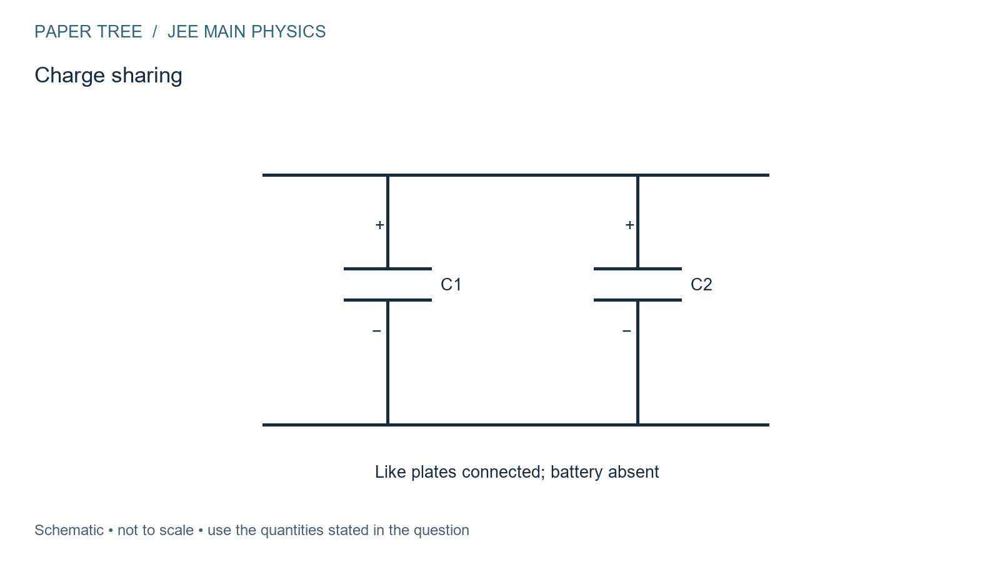
- A. 60 V
- B. 120 V
- C. 52 V
- D. 28 V
Answer and explanation
C. 52 V
The joined positive plates retain total charge C₁V₁+C₂V₂. Thus Vf = 52 V. Charge transfer C₁(V₁−Vf) = 96 μC. Subtract final field energy from the initial sum, giving 0.00384 J dissipated.
For the requested outcome — Find the final common voltage. — the result is 52 V.
Isolated capacitors of capacitances 2 μF and 3 μF are charged to 100 V and 20 V, respectively. Their positive plates are joined together and their negative plates joined together through a wire with a small resistance. Wait until a common voltage is reached. No battery is connected. Find the magnitude of charge that leaves the initially higher-voltage capacitor’s positive plate. Choose the closest value.
Use vacuum/air and ideal linear isotropic dielectrics unless specified otherwise. Neglect capacitor fringing, leakage and test-charge disturbance. Set potential zero at infinity for isolated finite charges; for a dipole set U=0 at 90°. Slow external work is quasistatic.
- A. 104 μC
- B. 96 μC
- C. 200 μC
- D. 48 μC
Answer and explanation
B. 96 μC
The joined positive plates retain total charge C₁V₁+C₂V₂. Thus Vf = 52 V. Charge transfer C₁(V₁−Vf) = 96 μC. Subtract final field energy from the initial sum, giving 0.00384 J dissipated.
For the requested outcome — Find the magnitude of charge that leaves the initially higher-voltage capacitor’s positive plate. — the result is 96 μC.
Isolated capacitors of capacitances 2 μF and 3 μF are charged to 100 V and 20 V, respectively. Their positive plates are joined together and their negative plates joined together through a wire with a small resistance. Wait until a common voltage is reached. No battery is connected. Find the energy dissipated while charge redistributes. Choose the closest value.
Use vacuum/air and ideal linear isotropic dielectrics unless specified otherwise. Neglect capacitor fringing, leakage and test-charge disturbance. Set potential zero at infinity for isolated finite charges; for a dipole set U=0 at 90°. Slow external work is quasistatic.
- A. 0.00384 J
- B. 0.0106 J
- C. 0.00676 J
- D. 0.00768 J
Answer and explanation
A. 0.00384 J
The joined positive plates retain total charge C₁V₁+C₂V₂. Thus Vf = 52 V. Charge transfer C₁(V₁−Vf) = 96 μC. Subtract final field energy from the initial sum, giving 0.00384 J dissipated.
For the requested outcome — Find the energy dissipated while charge redistributes. — the result is 0.00384 J.
Isolated capacitors of capacitances ξ μF and 2 μF are charged to 60 V and 15 V, respectively. Their positive plates are joined together and their negative plates joined together through a wire with a small resistance. Wait until a common voltage is reached. No battery is connected. The recorded value of the final common voltage is 45 V. Which listed positive value of ξ is consistent with this measurement?
Use vacuum/air and ideal linear isotropic dielectrics unless specified otherwise. Neglect capacitor fringing, leakage and test-charge disturbance. Set potential zero at infinity for isolated finite charges; for a dipole set U=0 at 90°. Slow external work is quasistatic.
Answer and explanation
C. 4
Use the physical relations below with the missing input ξ. The recorded value of the final common voltage gives ξ=4 in the unit assigned to ξ in the question. Substitution checks the observation:
The joined positive plates retain total charge C₁V₁+C₂V₂. Thus Vf = 45 V. Charge transfer C₁(V₁−Vf) = 60 μC. Subtract final field energy from the initial sum, giving 0.00135 J dissipated.
Isolated capacitors of capacitances 4 μF and ξ μF are charged to 60 V and 15 V, respectively. Their positive plates are joined together and their negative plates joined together through a wire with a small resistance. Wait until a common voltage is reached. No battery is connected. The recorded value of the magnitude of charge that leaves the initially higher-voltage capacitor’s positive plate is 60 μC. Which listed positive value of ξ is consistent with this measurement?
Use vacuum/air and ideal linear isotropic dielectrics unless specified otherwise. Neglect capacitor fringing, leakage and test-charge disturbance. Set potential zero at infinity for isolated finite charges; for a dipole set U=0 at 90°. Slow external work is quasistatic.
Answer and explanation
B. 2
Use the physical relations below with the missing input ξ. The recorded value of the magnitude of charge that leaves the initially higher-voltage capacitor’s positive plate gives ξ=2 in the unit assigned to ξ in the question. Substitution checks the observation:
The joined positive plates retain total charge C₁V₁+C₂V₂. Thus Vf = 45 V. Charge transfer C₁(V₁−Vf) = 60 μC. Subtract final field energy from the initial sum, giving 0.00135 J dissipated.
Isolated capacitors of capacitances 4 μF and 2 μF are charged to ξ V and 15 V, respectively. Their positive plates are joined together and their negative plates joined together through a wire with a small resistance. Wait until a common voltage is reached. No battery is connected. The recorded value of the energy dissipated while charge redistributes is 0.00135 J. Which listed positive value of ξ is consistent with this measurement?
Use vacuum/air and ideal linear isotropic dielectrics unless specified otherwise. Neglect capacitor fringing, leakage and test-charge disturbance. Set potential zero at infinity for isolated finite charges; for a dipole set U=0 at 90°. Slow external work is quasistatic.
Answer and explanation
D. 60
Use the physical relations below with the missing input ξ. The recorded value of the energy dissipated while charge redistributes gives ξ=60 in the unit assigned to ξ in the question. Substitution checks the observation:
The joined positive plates retain total charge C₁V₁+C₂V₂. Thus Vf = 45 V. Charge transfer C₁(V₁−Vf) = 60 μC. Subtract final field energy from the initial sum, giving 0.00135 J dissipated.
A particle with positive charge-to-mass ratio 1000000 C/kg starts from rest and is accelerated through 200 V. It then enters horizontally between parallel plates of length 0.2 m with uniform vertical electric field 1000 N/C. Ignore gravity and edge fields; the particle does not hit a plate. Find the magnitude of transverse deflection on leaving the plates. Choose the closest value.
Use vacuum/air and ideal linear isotropic dielectrics unless specified otherwise. Neglect capacitor fringing, leakage and test-charge disturbance. Set potential zero at infinity for isolated finite charges; for a dipole set U=0 at 90°. Slow external work is quasistatic.
- A. 0.05 m
- B. 0.025 m
- C. 0.1 m
- D. 0.5 m
Answer and explanation
A. 0.05 m
Acceleration through V gives vx = √(2(q/m)V) = 20000 m/s. Transit time L/vx = 1 × 10⁻⁵ s. The vertical acceleration is (q/m)E, so y = 0.05 m and vy = 10000 m/s. Vector addition gives exit speed 22360.67977 m/s and tanθ = vy/vx = 0.5.
For the requested outcome — Find the magnitude of transverse deflection on leaving the plates. — the result is 0.05 m.
A particle with positive charge-to-mass ratio 1000000 C/kg starts from rest and is accelerated through 200 V. It then enters horizontally between parallel plates of length 0.2 m with uniform vertical electric field 1000 N/C. Ignore gravity and edge fields; the particle does not hit a plate. Find the exit speed. Choose the closest value.
Use vacuum/air and ideal linear isotropic dielectrics unless specified otherwise. Neglect capacitor fringing, leakage and test-charge disturbance. Set potential zero at infinity for isolated finite charges; for a dipole set U=0 at 90°. Slow external work is quasistatic.
- A. 2.236e+04 m/s
- B. 20000 m/s
- C. 10000 m/s
- D. 30000 m/s
Answer and explanation
A. 2.236e+04 m/s
Acceleration through V gives vx = √(2(q/m)V) = 20000 m/s. Transit time L/vx = 1 × 10⁻⁵ s. The vertical acceleration is (q/m)E, so y = 0.05 m and vy = 10000 m/s. Vector addition gives exit speed 22360.67977 m/s and tanθ = vy/vx = 0.5.
For the requested outcome — Find the exit speed. — the result is 2.236e+04 m/s.
A particle with positive charge-to-mass ratio 1000000 C/kg starts from rest and is accelerated through 200 V. It then enters horizontally between parallel plates of length 0.2 m with uniform vertical electric field 1000 N/C. Ignore gravity and edge fields; the particle does not hit a plate. Find tan θ, where θ is the exit-velocity angle to the original direction. Choose the closest value.
Use vacuum/air and ideal linear isotropic dielectrics unless specified otherwise. Neglect capacitor fringing, leakage and test-charge disturbance. Set potential zero at infinity for isolated finite charges; for a dipole set U=0 at 90°. Slow external work is quasistatic.
Answer and explanation
D. 0.5
Acceleration through V gives vx = √(2(q/m)V) = 20000 m/s. Transit time L/vx = 1 × 10⁻⁵ s. The vertical acceleration is (q/m)E, so y = 0.05 m and vy = 10000 m/s. Vector addition gives exit speed 22360.67977 m/s and tanθ = vy/vx = 0.5.
For the requested outcome — Find tan θ, where θ is the exit-velocity angle to the original direction. — the result is 0.5.
A particle with positive charge-to-mass ratio 2000000 C/kg starts from rest and is accelerated through 100 V. It then enters horizontally between parallel plates of length 0.1 m with uniform vertical electric field ξ N/C. Ignore gravity and edge fields; the particle does not hit a plate. The recorded value of the magnitude of transverse deflection on leaving the plates is 0.05 m. Which listed positive value of ξ is consistent with this measurement?
Use vacuum/air and ideal linear isotropic dielectrics unless specified otherwise. Neglect capacitor fringing, leakage and test-charge disturbance. Set potential zero at infinity for isolated finite charges; for a dipole set U=0 at 90°. Slow external work is quasistatic.
- A. 2000
- B. 3000
- C. 4000
- D. 1000
Answer and explanation
A. 2000
Use the physical relations below with the missing input ξ. The recorded value of the magnitude of transverse deflection on leaving the plates gives ξ=2000 in the unit assigned to ξ in the question. Substitution checks the observation:
Acceleration through V gives vx = √(2(q/m)V) = 20000 m/s. Transit time L/vx = 5 × 10⁻⁶ s. The vertical acceleration is (q/m)E, so y = 0.05 m and vy = 20000 m/s. Vector addition gives exit speed 28284.27125 m/s and tanθ = vy/vx = 1.
A particle with positive charge-to-mass ratio 2000000 C/kg starts from rest and is accelerated through 100 V. It then enters horizontally between parallel plates of length ξ m with uniform vertical electric field 2000 N/C. Ignore gravity and edge fields; the particle does not hit a plate. The recorded value of the exit speed is 28284.27125 m/s. Which listed positive value of ξ is consistent with this measurement?
Use vacuum/air and ideal linear isotropic dielectrics unless specified otherwise. Neglect capacitor fringing, leakage and test-charge disturbance. Set potential zero at infinity for isolated finite charges; for a dipole set U=0 at 90°. Slow external work is quasistatic.
- A. 0.15
- B. 0.1
- C. 0.2
- D. 0.05
Answer and explanation
B. 0.1
Use the physical relations below with the missing input ξ. The recorded value of the exit speed gives ξ=0.1 in the unit assigned to ξ in the question. Substitution checks the observation:
Acceleration through V gives vx = √(2(q/m)V) = 20000 m/s. Transit time L/vx = 5 × 10⁻⁶ s. The vertical acceleration is (q/m)E, so y = 0.05 m and vy = 20000 m/s. Vector addition gives exit speed 28284.27125 m/s and tanθ = vy/vx = 1.
A particle with positive charge-to-mass ratio 2000000 C/kg starts from rest and is accelerated through ξ V. It then enters horizontally between parallel plates of length 0.1 m with uniform vertical electric field 2000 N/C. Ignore gravity and edge fields; the particle does not hit a plate. The recorded value of tan θ, where θ is the exit-velocity angle to the original direction is 1. Which listed positive value of ξ is consistent with this measurement?
Use vacuum/air and ideal linear isotropic dielectrics unless specified otherwise. Neglect capacitor fringing, leakage and test-charge disturbance. Set potential zero at infinity for isolated finite charges; for a dipole set U=0 at 90°. Slow external work is quasistatic.
Answer and explanation
D. 100
Use the physical relations below with the missing input ξ. Matching the measured tan θ, where θ is the exit-velocity angle to the original direction gives ξ=100 in the unit assigned to ξ in the question. Substitution checks the observation:
Acceleration through V gives vx = √(2(q/m)V) = 20000 m/s. Transit time L/vx = 5 × 10⁻⁶ s. The vertical acceleration is (q/m)E, so y = 0.05 m and vy = 20000 m/s. Vector addition gives exit speed 28284.27125 m/s and tanθ = vy/vx = 1.
A parallel-plate capacitor has vacuum capacitance 2 μF and plate separation d. A dielectric slab of relative permittivity 3 occupies half the separation over the entire plate area; the remaining half is vacuum. A constant 120 V battery is connected. Ignore fringing. Find the new capacitance. Choose the closest value.
Use vacuum/air and ideal linear isotropic dielectrics unless specified otherwise. Neglect capacitor fringing, leakage and test-charge disturbance. Set potential zero at infinity for isolated finite charges; for a dipole set U=0 at 90°. Slow external work is quasistatic.
- A. 6 μF
- B. 3 μF
- C. 4 μF
- D. 0.6667 μF
Answer and explanation
B. 3 μF
The two half-gap regions are series capacitors 2C₀ and 2KC₀. Their equivalent is 2KC₀/(K+1) = 3 μF. Each carries 360 μC, so the vacuum voltage is Q/(2C₀) = 90 V. Total energy is CV²/2 = 0.0216 J.
For the requested outcome — Find the new capacitance. — the result is 3 μF.
A parallel-plate capacitor has vacuum capacitance 2 μF and plate separation d. A dielectric slab of relative permittivity 3 occupies half the separation over the entire plate area; the remaining half is vacuum. A constant 120 V battery is connected. Ignore fringing. Find the potential drop across the vacuum half of the gap. Choose the closest value.
Use vacuum/air and ideal linear isotropic dielectrics unless specified otherwise. Neglect capacitor fringing, leakage and test-charge disturbance. Set potential zero at infinity for isolated finite charges; for a dipole set U=0 at 90°. Slow external work is quasistatic.
- A. 90 V
- B. 30 V
- C. 120 V
- D. 60 V
Answer and explanation
A. 90 V
The two half-gap regions are series capacitors 2C₀ and 2KC₀. Their equivalent is 2KC₀/(K+1) = 3 μF. Each carries 360 μC, so the vacuum voltage is Q/(2C₀) = 90 V. Total energy is CV²/2 = 0.0216 J.
For the requested outcome — Find the potential drop across the vacuum half of the gap. — the result is 90 V.
A parallel-plate capacitor has vacuum capacitance 2 μF and plate separation d. A dielectric slab of relative permittivity 3 occupies half the separation over the entire plate area; the remaining half is vacuum. A constant 120 V battery is connected. Ignore fringing. Find the final stored field energy. Choose the closest value.
Use vacuum/air and ideal linear isotropic dielectrics unless specified otherwise. Neglect capacitor fringing, leakage and test-charge disturbance. Set potential zero at infinity for isolated finite charges; for a dipole set U=0 at 90°. Slow external work is quasistatic.
- A. 0.0432 J
- B. 0.0108 J
- C. 0.0216 J
- D. 0.0144 J
Answer and explanation
C. 0.0216 J
The two half-gap regions are series capacitors 2C₀ and 2KC₀. Their equivalent is 2KC₀/(K+1) = 3 μF. Each carries 360 μC, so the vacuum voltage is Q/(2C₀) = 90 V. Total energy is CV²/2 = 0.0216 J.
For the requested outcome — Find the final stored field energy. — the result is 0.0216 J.
A parallel-plate capacitor has vacuum capacitance ξ μF and plate separation d. A dielectric slab of relative permittivity 5 occupies half the separation over the entire plate area; the remaining half is vacuum. A constant 100 V battery is connected. Ignore fringing. The recorded value of the new capacitance is 5 μF. Which listed positive value of ξ is consistent with this measurement?
Use vacuum/air and ideal linear isotropic dielectrics unless specified otherwise. Neglect capacitor fringing, leakage and test-charge disturbance. Set potential zero at infinity for isolated finite charges; for a dipole set U=0 at 90°. Slow external work is quasistatic.
Answer and explanation
B. 3
Use the physical relations below with the missing input ξ. The recorded value of the new capacitance gives ξ=3 in the unit assigned to ξ in the question. Substitution checks the observation:
The two half-gap regions are series capacitors 2C₀ and 2KC₀. Their equivalent is 2KC₀/(K+1) = 5 μF. Each carries 500 μC, so the vacuum voltage is Q/(2C₀) = 83.33333333 V. Total energy is CV²/2 = 0.025 J.
A parallel-plate capacitor has vacuum capacitance 3 μF and plate separation d. A dielectric slab of relative permittivity 5 occupies half the separation over the entire plate area; the remaining half is vacuum. A constant ξ V battery is connected. Ignore fringing. The recorded value of the potential drop across the vacuum half of the gap is 83.33333333 V. Which listed positive value of ξ is consistent with this measurement?
Use vacuum/air and ideal linear isotropic dielectrics unless specified otherwise. Neglect capacitor fringing, leakage and test-charge disturbance. Set potential zero at infinity for isolated finite charges; for a dipole set U=0 at 90°. Slow external work is quasistatic.
Answer and explanation
A. 100
Use the physical relations below with the missing input ξ. The recorded value of the potential drop across the vacuum half of the gap gives ξ=100 in the unit assigned to ξ in the question. Substitution checks the observation:
The two half-gap regions are series capacitors 2C₀ and 2KC₀. Their equivalent is 2KC₀/(K+1) = 5 μF. Each carries 500 μC, so the vacuum voltage is Q/(2C₀) = 83.33333333 V. Total energy is CV²/2 = 0.025 J.
A parallel-plate capacitor has vacuum capacitance 3 μF and plate separation d. A dielectric slab of relative permittivity 5 occupies half the separation over the entire plate area; the remaining half is vacuum. A constant ξ V battery is connected. Ignore fringing. The recorded value of the final stored field energy is 0.025 J. Which listed positive value of ξ is consistent with this measurement?
Use vacuum/air and ideal linear isotropic dielectrics unless specified otherwise. Neglect capacitor fringing, leakage and test-charge disturbance. Set potential zero at infinity for isolated finite charges; for a dipole set U=0 at 90°. Slow external work is quasistatic.
Answer and explanation
C. 100
Use the physical relations below with the missing input ξ. The recorded value of the final stored field energy gives ξ=100 in the unit assigned to ξ in the question. Substitution checks the observation:
The two half-gap regions are series capacitors 2C₀ and 2KC₀. Their equivalent is 2KC₀/(K+1) = 5 μF. Each carries 500 μC, so the vacuum voltage is Q/(2C₀) = 83.33333333 V. Total energy is CV²/2 = 0.025 J.
A rigid electric dipole of moment 2 μC m is in a uniform 5000 N/C electric field. Initially its axis makes 60° with the field. A slow external rotation brings it to 120°. The dipole’s moment of inertia about the rotation axis is 0.0001 kg m². Find the external work for the slow rotation. Choose the closest value.
Use vacuum/air and ideal linear isotropic dielectrics unless specified otherwise. Neglect capacitor fringing, leakage and test-charge disturbance. Set potential zero at infinity for isolated finite charges; for a dipole set U=0 at 90°. Slow external work is quasistatic.
- A. 0.01 J
- B. -0.01 J
- C. 0.005 J
- D. 0.02 J
Answer and explanation
A. 0.01 J
The dipole potential is U = −pE cosθ. A slow rotation therefore requires ΔU = 0.01 J; the initial torque is pE sinθ = 0.008660254038 N m. For free rotation, the drop pE(1−cosθinitial) becomes Iω²/2, giving ω = 10 rad/s at alignment.
For the requested outcome — Find the external work for the slow rotation. — the result is 0.01 J.
A rigid electric dipole of moment 2 μC m is in a uniform 5000 N/C electric field. Initially its axis makes 60° with the field. A slow external rotation brings it to 120°. The dipole’s moment of inertia about the rotation axis is 0.0001 kg m². Find the initial electric-torque magnitude. Choose the closest value.
Use vacuum/air and ideal linear isotropic dielectrics unless specified otherwise. Neglect capacitor fringing, leakage and test-charge disturbance. Set potential zero at infinity for isolated finite charges; for a dipole set U=0 at 90°. Slow external work is quasistatic.
- A. 0.00866 N m
- B. 0.005 N m
- C. 0.01 N m
- D. 0.00433 N m
Answer and explanation
A. 0.00866 N m
The dipole potential is U = −pE cosθ. A slow rotation therefore requires ΔU = 0.01 J; the initial torque is pE sinθ = 0.008660254038 N m. For free rotation, the drop pE(1−cosθinitial) becomes Iω²/2, giving ω = 10 rad/s at alignment.
For the requested outcome — Find the initial electric-torque magnitude. — the result is 0.00866 N m.
A rigid electric dipole of moment 2 μC m is in a uniform 5000 N/C electric field. Initially its axis makes 60° with the field. A slow external rotation brings it to 120°. The dipole’s moment of inertia about the rotation axis is 0.0001 kg m². In a separate trial the dipole is released from rest at its initial angle. With no damping, find its angular speed when it first aligns with the field. Choose the closest value.
Use vacuum/air and ideal linear isotropic dielectrics unless specified otherwise. Neglect capacitor fringing, leakage and test-charge disturbance. Set potential zero at infinity for isolated finite charges; for a dipole set U=0 at 90°. Slow external work is quasistatic.
- A. 5 rad/s
- B. 20 rad/s
- C. 10 rad/s
- D. 14.14 rad/s
Answer and explanation
C. 10 rad/s
The dipole potential is U = −pE cosθ. A slow rotation therefore requires ΔU = 0.01 J; the initial torque is pE sinθ = 0.008660254038 N m. For free rotation, the drop pE(1−cosθinitial) becomes Iω²/2, giving ω = 10 rad/s at alignment.
For the requested outcome — In a separate trial the dipole is released from rest at its initial angle. With no damping, find its angular speed when it first aligns with the field. — the result is 10 rad/s.
A rigid electric dipole of moment 3 μC m is in a uniform ξ N/C electric field. Initially its axis makes 30° with the field. A slow external rotation brings it to 90°. The dipole’s moment of inertia about the rotation axis is 0.0002 kg m². The recorded value of the external work for the slow rotation is 0.01039230485 J. Which listed positive value of ξ is consistent with this measurement?
Use vacuum/air and ideal linear isotropic dielectrics unless specified otherwise. Neglect capacitor fringing, leakage and test-charge disturbance. Set potential zero at infinity for isolated finite charges; for a dipole set U=0 at 90°. Slow external work is quasistatic.
- A. 2000
- B. 8000
- C. 6000
- D. 4000
Answer and explanation
D. 4000
Use the physical relations below with the missing input ξ. The recorded value of the external work for the slow rotation gives ξ=4000 in the unit assigned to ξ in the question. Substitution checks the observation:
The dipole potential is U = −pE cosθ. A slow rotation therefore requires ΔU = 0.01039230485 J; the initial torque is pE sinθ = 0.006 N m. For free rotation, the drop pE(1−cosθinitial) becomes Iω²/2, giving ω = 4.009607405 rad/s at alignment.
A rigid electric dipole of moment 3 μC m is in a uniform 4000 N/C electric field. Initially its axis makes ξ° with the field. A slow external rotation brings it to 90°. The dipole’s moment of inertia about the rotation axis is 0.0002 kg m². The recorded value of the initial electric-torque magnitude is 0.006 N m. Which listed positive value of ξ is consistent with this measurement?
Use vacuum/air and ideal linear isotropic dielectrics unless specified otherwise. Neglect capacitor fringing, leakage and test-charge disturbance. Set potential zero at infinity for isolated finite charges; for a dipole set U=0 at 90°. Slow external work is quasistatic.
Answer and explanation
C. 30
Use the physical relations below with the missing input ξ. The recorded value of the initial electric-torque magnitude gives ξ=30 in the unit assigned to ξ in the question. Substitution checks the observation:
The dipole potential is U = −pE cosθ. A slow rotation therefore requires ΔU = 0.01039230485 J; the initial torque is pE sinθ = 0.006 N m. For free rotation, the drop pE(1−cosθinitial) becomes Iω²/2, giving ω = 4.009607405 rad/s at alignment.
A rigid electric dipole of moment 3 μC m is in a uniform 4000 N/C electric field. Initially its axis makes ξ° with the field. A slow external rotation brings it to 90°. The dipole’s moment of inertia about the rotation axis is 0.0002 kg m². In a separate undamped trial, the dipole is returned to its initial orientation ξ° and released from rest. It rotates freely under the electric torque alone. The recorded value of angular speed in the undamped trial when the dipole first aligns with the field is 4.009607405 rad/s. Which listed positive value of ξ is consistent with this measurement?
Use vacuum/air and ideal linear isotropic dielectrics unless specified otherwise. Neglect capacitor fringing, leakage and test-charge disturbance. Set potential zero at infinity for isolated finite charges; for a dipole set U=0 at 90°. Slow external work is quasistatic.
Answer and explanation
D. 30
Use the physical relations below with the missing input ξ. Matching the measured angular speed in the undamped trial when the dipole first aligns with the field gives ξ=30 in the unit assigned to ξ in the question. Substitution checks the observation:
The dipole potential is U = −pE cosθ. A slow rotation therefore requires ΔU = 0.01039230485 J; the initial torque is pE sinθ = 0.006 N m. For free rotation, the drop pE(1−cosθinitial) becomes Iω²/2, giving ω = 4.009607405 rad/s at alignment. In that separate trial the initial angular speed is zero, so Iω²/2=pE(1−cosξ); none of the other listed angles gives the observed speed from rest.
Positive point charges Q = 4 μC and q are fixed at x = 0 and x = d = 3 m. The total electric field vanishes at x = 1 m between them. Let k = 9 × 10⁹ N m²/C² and take potential zero at infinity. Find the unknown charge. Choose the closest value.
Use vacuum/air and ideal linear isotropic dielectrics unless specified otherwise. Neglect capacitor fringing, leakage and test-charge disturbance. Set potential zero at infinity for isolated finite charges; for a dipole set U=0 at 90°. Slow external work is quasistatic.
- A. 8 μC
- B. 1 μC
- C. 16 μC
- D. 4 μC
Answer and explanation
C. 16 μC
At the point between positive charges the fields oppose. Set Q/x² = q/(d−x)² to obtain q = 16 μC. Potentials add as scalars, giving 108000 V there even though the field is zero. At x=2d both fields point to the right and add to 17000 N/C.
For the requested outcome — Find the unknown charge. — the result is 16 μC.
Positive point charges Q = 4 μC and q are fixed at x = 0 and x = d = 3 m. The total electric field vanishes at x = 1 m between them. Let k = 9 × 10⁹ N m²/C² and take potential zero at infinity. Find the potential at the field-zero point. Choose the closest value.
Use vacuum/air and ideal linear isotropic dielectrics unless specified otherwise. Neglect capacitor fringing, leakage and test-charge disturbance. Set potential zero at infinity for isolated finite charges; for a dipole set U=0 at 90°. Slow external work is quasistatic.
- A. 0 V
- B. 1.08 × 10⁵ V
- C. 54000 V
- D. -36000 V
Answer and explanation
B. 1.08 × 10⁵ V
At the point between positive charges the fields oppose. Set Q/x² = q/(d−x)² to obtain q = 16 μC. Potentials add as scalars, giving 108000 V there even though the field is zero. At x=2d both fields point to the right and add to 17000 N/C.
For the requested outcome — Find the potential at the field-zero point. — the result is 1.08 × 10⁵ V.
Positive point charges Q = 4 μC and q are fixed at x = 0 and x = d = 3 m. The total electric field vanishes at x = 1 m between them. Let k = 9 × 10⁹ N m²/C² and take potential zero at infinity. Find the magnitude of the field at x = 2d. Choose the closest value.
Use vacuum/air and ideal linear isotropic dielectrics unless specified otherwise. Neglect capacitor fringing, leakage and test-charge disturbance. Set potential zero at infinity for isolated finite charges; for a dipole set U=0 at 90°. Slow external work is quasistatic.
- A. 17000 N/C
- B. 15000 N/C
- C. 5000 N/C
- D. 8500 N/C
Answer and explanation
A. 17000 N/C
At the point between positive charges the fields oppose. Set Q/x² = q/(d−x)² to obtain q = 16 μC. Potentials add as scalars, giving 108000 V there even though the field is zero. At x=2d both fields point to the right and add to 17000 N/C.
For the requested outcome — Find the magnitude of the field at x = 2d. — the result is 17000 N/C.
Positive point charges Q = ξ μC and q are fixed at x = 0 and x = d = 4 m. The total electric field vanishes at x = 1 m between them. Let k = 9 × 10⁹ N m²/C² and take potential zero at infinity. The recorded value of the unknown charge is 81 μC. Which listed positive value of ξ is consistent with this measurement?
Use vacuum/air and ideal linear isotropic dielectrics unless specified otherwise. Neglect capacitor fringing, leakage and test-charge disturbance. Set potential zero at infinity for isolated finite charges; for a dipole set U=0 at 90°. Slow external work is quasistatic.
Answer and explanation
A. 9
Use the physical relations below with the missing input ξ. The recorded value of the unknown charge gives ξ=9 in the unit assigned to ξ in the question. Substitution checks the observation:
At the point between positive charges the fields oppose. Set Q/x² = q/(d−x)² to obtain q = 81 μC. Potentials add as scalars, giving 324000 V there even though the field is zero. At x=2d both fields point to the right and add to 46828.125 N/C.
Positive point charges Q = 9 μC and q are fixed at x = 0 and x = d = ξ m. The total electric field vanishes at x = 1 m between them. Let k = 9 × 10⁹ N m²/C² and take potential zero at infinity. The recorded value of the potential at the field-zero point is 324000 V. Which listed positive value of ξ is consistent with this measurement?
Use vacuum/air and ideal linear isotropic dielectrics unless specified otherwise. Neglect capacitor fringing, leakage and test-charge disturbance. Set potential zero at infinity for isolated finite charges; for a dipole set U=0 at 90°. Slow external work is quasistatic.
Answer and explanation
C. 4
Use the physical relations below with the missing input ξ. The recorded value of the potential at the field-zero point gives ξ=4 in the unit assigned to ξ in the question. Substitution checks the observation:
At the point between positive charges the fields oppose. Set Q/x² = q/(d−x)² to obtain q = 81 μC. Potentials add as scalars, giving 324000 V there even though the field is zero. At x=2d both fields point to the right and add to 46828.125 N/C.
Positive point charges Q = ξ μC and q are fixed at x = 0 and x = d = 4 m. The total electric field vanishes at x = 1 m between them. Let k = 9 × 10⁹ N m²/C² and take potential zero at infinity. The recorded value of the magnitude of the field at x = 2d is 46828.125 N/C. Which listed positive value of ξ is consistent with this measurement?
Use vacuum/air and ideal linear isotropic dielectrics unless specified otherwise. Neglect capacitor fringing, leakage and test-charge disturbance. Set potential zero at infinity for isolated finite charges; for a dipole set U=0 at 90°. Slow external work is quasistatic.
Answer and explanation
D. 9
Use the physical relations below with the missing input ξ. The recorded value of the magnitude of the field at x = 2d gives ξ=9 in the unit assigned to ξ in the question. Substitution checks the observation:
At the point between positive charges the fields oppose. Set Q/x² = q/(d−x)² to obtain q = 81 μC. Potentials add as scalars, giving 324000 V there even though the field is zero. At x=2d both fields point to the right and add to 46828.125 N/C.
Capacitors C₁ = 2 μF and C₂ = 3 μF are in series across a constant 100 V ideal battery. A dielectric of relative permittivity 3 completely fills C₁ without changing its geometry. The battery stays connected; changes are quasistatic. Find the final voltage across C₂. Choose the closest value.
Use vacuum/air and ideal linear isotropic dielectrics unless specified otherwise. Neglect capacitor fringing, leakage and test-charge disturbance. Set potential zero at infinity for isolated finite charges; for a dipole set U=0 at 90°. Slow external work is quasistatic.
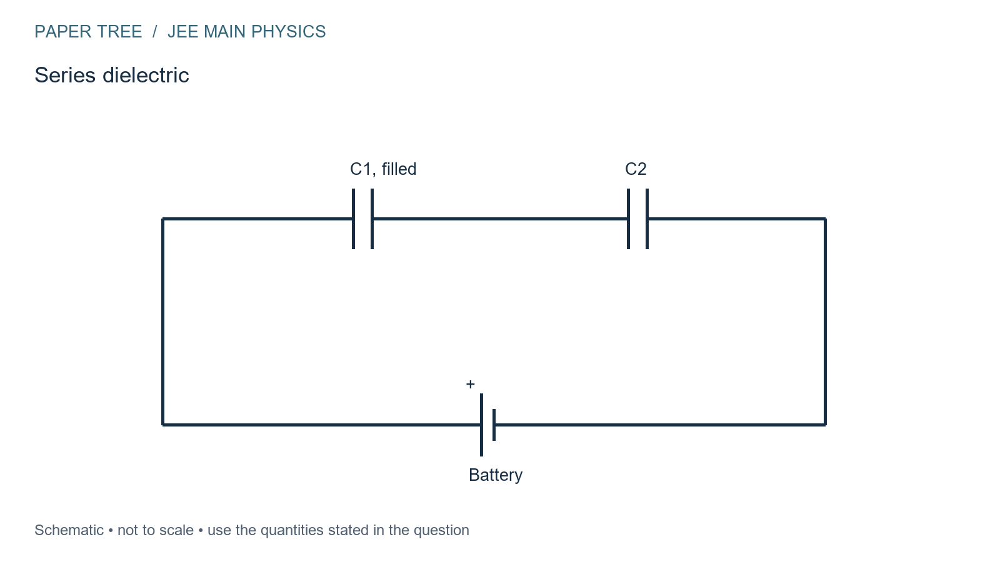
- A. 100 V
- B. 40 V
- C. 66.67 V
- D. 33.33 V
Answer and explanation
C. 66.67 V
Initial equivalent capacitance is 1.2 μF; replacing C₁ by KC₁ gives final equivalent capacitance 2 μF. Series charge becomes 200 μC, hence V₂ = 66.66666667 V. Battery-supplied charge is 80 μC and battery work VΔQ = 0.008 J.
For the requested outcome — Find the final voltage across C₂. — the result is 66.67 V.
Capacitors C₁ = 2 μF and C₂ = 3 μF are in series across a constant 100 V ideal battery. A dielectric of relative permittivity 3 completely fills C₁ without changing its geometry. The battery stays connected; changes are quasistatic. Find the additional charge supplied by the battery. Choose the closest value.
Use vacuum/air and ideal linear isotropic dielectrics unless specified otherwise. Neglect capacitor fringing, leakage and test-charge disturbance. Set potential zero at infinity for isolated finite charges; for a dipole set U=0 at 90°. Slow external work is quasistatic.
- A. 40 μC
- B. 120 μC
- C. 200 μC
- D. 80 μC
Answer and explanation
D. 80 μC
Initial equivalent capacitance is 1.2 μF; replacing C₁ by KC₁ gives final equivalent capacitance 2 μF. Series charge becomes 200 μC, hence V₂ = 66.66666667 V. Battery-supplied charge is 80 μC and battery work VΔQ = 0.008 J.
For the requested outcome — Find the additional charge supplied by the battery. — the result is 80 μC.
Capacitors C₁ = 2 μF and C₂ = 3 μF are in series across a constant 100 V ideal battery. A dielectric of relative permittivity 3 completely fills C₁ without changing its geometry. The battery stays connected; changes are quasistatic. Find the work done by the battery during insertion. Choose the closest value.
Use vacuum/air and ideal linear isotropic dielectrics unless specified otherwise. Neglect capacitor fringing, leakage and test-charge disturbance. Set potential zero at infinity for isolated finite charges; for a dipole set U=0 at 90°. Slow external work is quasistatic.
- A. 0.008 J
- B. 0.016 J
- C. 0.004 J
- D. -0.008 J
Answer and explanation
A. 0.008 J
Initial equivalent capacitance is 1.2 μF; replacing C₁ by KC₁ gives final equivalent capacitance 2 μF. Series charge becomes 200 μC, hence V₂ = 66.66666667 V. Battery-supplied charge is 80 μC and battery work VΔQ = 0.008 J.
For the requested outcome — Find the work done by the battery during insertion. — the result is 0.008 J.
Capacitors C₁ = ξ μF and C₂ = 6 μF are in series across a constant 120 V ideal battery. A dielectric of relative permittivity 2 completely fills C₁ without changing its geometry. The battery stays connected; changes are quasistatic. The recorded value of the final voltage across C₂ is 60 V. Which listed positive value of ξ is consistent with this measurement?
Use vacuum/air and ideal linear isotropic dielectrics unless specified otherwise. Neglect capacitor fringing, leakage and test-charge disturbance. Set potential zero at infinity for isolated finite charges; for a dipole set U=0 at 90°. Slow external work is quasistatic.
Answer and explanation
C. 3
Use the physical relations below with the missing input ξ. The recorded value of the final voltage across C₂ gives ξ=3 in the unit assigned to ξ in the question. Substitution checks the observation:
Initial equivalent capacitance is 2 μF; replacing C₁ by KC₁ gives final equivalent capacitance 3 μF. Series charge becomes 360 μC, hence V₂ = 60 V. Battery-supplied charge is 120 μC and battery work VΔQ = 0.0144 J.
Capacitors C₁ = 3 μF and C₂ = ξ μF are in series across a constant 120 V ideal battery. A dielectric of relative permittivity 2 completely fills C₁ without changing its geometry. The battery stays connected; changes are quasistatic. The recorded value of the additional charge supplied by the battery is 120 μC. Which listed positive value of ξ is consistent with this measurement?
Use vacuum/air and ideal linear isotropic dielectrics unless specified otherwise. Neglect capacitor fringing, leakage and test-charge disturbance. Set potential zero at infinity for isolated finite charges; for a dipole set U=0 at 90°. Slow external work is quasistatic.
Answer and explanation
A. 6
Use the physical relations below with the missing input ξ. The recorded value of the additional charge supplied by the battery gives ξ=6 in the unit assigned to ξ in the question. Substitution checks the observation:
Initial equivalent capacitance is 2 μF; replacing C₁ by KC₁ gives final equivalent capacitance 3 μF. Series charge becomes 360 μC, hence V₂ = 60 V. Battery-supplied charge is 120 μC and battery work VΔQ = 0.0144 J.
Capacitors C₁ = 3 μF and C₂ = 6 μF are in series across a constant 120 V ideal battery. A dielectric of relative permittivity ξ completely fills C₁ without changing its geometry. The battery stays connected; changes are quasistatic. The recorded value of the work done by the battery during insertion is 0.0144 J. Which listed positive value of ξ is consistent with this measurement?
Use vacuum/air and ideal linear isotropic dielectrics unless specified otherwise. Neglect capacitor fringing, leakage and test-charge disturbance. Set potential zero at infinity for isolated finite charges; for a dipole set U=0 at 90°. Slow external work is quasistatic.
Answer and explanation
C. 2
Use the physical relations below with the missing input ξ. The recorded value of the work done by the battery during insertion gives ξ=2 in the unit assigned to ξ in the question. Substitution checks the observation:
Initial equivalent capacitance is 2 μF; replacing C₁ by KC₁ gives final equivalent capacitance 3 μF. Series charge becomes 360 μC, hence V₂ = 60 V. Battery-supplied charge is 120 μC and battery work VΔQ = 0.0144 J.
Two concentric thin conducting spherical shells have radii 0.1 m and 0.3 m and net charges 2 μC and -1 μC, respectively. The region between them is vacuum. Take k = 9 × 10⁹ N m²/C² and potential zero at infinity. Let the observation radius be r = 0.2 m, strictly between the shells. Find the potential at the observation point. Choose the closest value.
Use vacuum/air and ideal linear isotropic dielectrics unless specified otherwise. Neglect capacitor fringing, leakage and test-charge disturbance. Set potential zero at infinity for isolated finite charges; for a dipole set U=0 at 90°. Slow external work is quasistatic.
- A. 0 V
- B. 45000 V
- C. 90000 V
- D. 60000 V
Answer and explanation
D. 60000 V
Within the outer shell its contribution to potential is kq₂/b, while the inner shell contributes kq₁/r. Thus V(r) = 60000 V. Subtracting shell potentials cancels the outer-shell contribution: Vinner−Vouter = 120000 V. Quasistatic external work is qtest(Vouter−Vinner) = -0.24 J.
For the requested outcome — Find the potential at the observation point. — the result is 60000 V.
Two concentric thin conducting spherical shells have radii 0.1 m and 0.3 m and net charges 2 μC and -1 μC, respectively. The region between them is vacuum. Take k = 9 × 10⁹ N m²/C² and potential zero at infinity. Let the observation radius be r = 0.2 m, strictly between the shells. Find the inner-shell potential minus the outer-shell potential. Choose the closest value.
Use vacuum/air and ideal linear isotropic dielectrics unless specified otherwise. Neglect capacitor fringing, leakage and test-charge disturbance. Set potential zero at infinity for isolated finite charges; for a dipole set U=0 at 90°. Slow external work is quasistatic.
- A. 1.2 × 10⁵ V
- B. 60000 V
- C. 1.8 × 10⁵ V
- D. -1.2 × 10⁵ V
Answer and explanation
A. 1.2 × 10⁵ V
Within the outer shell its contribution to potential is kq₂/b, while the inner shell contributes kq₁/r. Thus V(r) = 60000 V. Subtracting shell potentials cancels the outer-shell contribution: Vinner−Vouter = 120000 V. Quasistatic external work is qtest(Vouter−Vinner) = -0.24 J.
For the requested outcome — Find the inner-shell potential minus the outer-shell potential. — the result is 1.2 × 10⁵ V.
Two concentric thin conducting spherical shells have radii 0.1 m and 0.3 m and net charges 2 μC and -1 μC, respectively. The region between them is vacuum. Take k = 9 × 10⁹ N m²/C² and potential zero at infinity. Let the observation radius be r = 0.2 m, strictly between the shells. Find the external work in slowly moving a +2 μC test charge from the inner shell to the outer shell. Choose the closest value.
Use vacuum/air and ideal linear isotropic dielectrics unless specified otherwise. Neglect capacitor fringing, leakage and test-charge disturbance. Set potential zero at infinity for isolated finite charges; for a dipole set U=0 at 90°. Slow external work is quasistatic.
- A. 0.24 J
- B. -0.24 J
- C. -0.12 J
- D. 0 J
Answer and explanation
B. -0.24 J
Within the outer shell its contribution to potential is kq₂/b, while the inner shell contributes kq₁/r. Thus V(r) = 60000 V. Subtracting shell potentials cancels the outer-shell contribution: Vinner−Vouter = 120000 V. Quasistatic external work is qtest(Vouter−Vinner) = -0.24 J.
For the requested outcome — Find the external work in slowly moving a +2 μC test charge from the inner shell to the outer shell. — the result is -0.24 J.
Two concentric thin conducting spherical shells have radii 0.2 m and ξ m and net charges 3 μC and -2 μC, respectively. The region between them is vacuum. Take k = 9 × 10⁹ N m²/C² and potential zero at infinity. Let the observation radius be r = 0.4 m, strictly between the shells. The recorded value of the potential at the observation point is 37500 V. Which listed positive value of ξ is consistent with this measurement?
Use vacuum/air and ideal linear isotropic dielectrics unless specified otherwise. Neglect capacitor fringing, leakage and test-charge disturbance. Set potential zero at infinity for isolated finite charges; for a dipole set U=0 at 90°. Slow external work is quasistatic.
Answer and explanation
D. 0.6
Use the physical relations below with the missing input ξ. The recorded value of the potential at the observation point gives ξ=0.6 in the unit assigned to ξ in the question. Substitution checks the observation:
Within the outer shell its contribution to potential is kq₂/b, while the inner shell contributes kq₁/r. Thus V(r) = 37500 V. Subtracting shell potentials cancels the outer-shell contribution: Vinner−Vouter = 90000 V. Quasistatic external work is qtest(Vouter−Vinner) = -0.18 J.
Two concentric thin conducting spherical shells have radii 0.2 m and ξ m and net charges 3 μC and -2 μC, respectively. The region between them is vacuum. Take k = 9 × 10⁹ N m²/C² and potential zero at infinity. Let the observation radius be r = 0.4 m, strictly between the shells. The recorded value of the inner-shell potential minus the outer-shell potential is 90000 V. Which listed positive value of ξ is consistent with this measurement?
Use vacuum/air and ideal linear isotropic dielectrics unless specified otherwise. Neglect capacitor fringing, leakage and test-charge disturbance. Set potential zero at infinity for isolated finite charges; for a dipole set U=0 at 90°. Slow external work is quasistatic.
Answer and explanation
C. 0.6
Use the physical relations below with the missing input ξ. The recorded value of the inner-shell potential minus the outer-shell potential gives ξ=0.6 in the unit assigned to ξ in the question. Substitution checks the observation:
Within the outer shell its contribution to potential is kq₂/b, while the inner shell contributes kq₁/r. Thus V(r) = 37500 V. Subtracting shell potentials cancels the outer-shell contribution: Vinner−Vouter = 90000 V. Quasistatic external work is qtest(Vouter−Vinner) = -0.18 J.
Two concentric thin conducting spherical shells have radii 0.2 m and 0.6 m and net charges ξ μC and -2 μC, respectively. The region between them is vacuum. Take k = 9 × 10⁹ N m²/C² and potential zero at infinity. Let the observation radius be r = 0.4 m, strictly between the shells. The recorded value of the external work in slowly moving a +2 μC test charge from the inner shell to the outer shell is -0.18 J. Which listed positive value of ξ is consistent with this measurement?
Use vacuum/air and ideal linear isotropic dielectrics unless specified otherwise. Neglect capacitor fringing, leakage and test-charge disturbance. Set potential zero at infinity for isolated finite charges; for a dipole set U=0 at 90°. Slow external work is quasistatic.
Answer and explanation
D. 3
Use the physical relations below with the missing input ξ. The recorded value of the external work in slowly moving a +2 μC test charge from the inner shell to the outer shell gives ξ=3 in the unit assigned to ξ in the question. Substitution checks the observation:
Within the outer shell its contribution to potential is kq₂/b, while the inner shell contributes kq₁/r. Thus V(r) = 37500 V. Subtracting shell potentials cancels the outer-shell contribution: Vinner−Vouter = 90000 V. Quasistatic external work is qtest(Vouter−Vinner) = -0.18 J.
A source has unknown emf E and internal resistance r. A voltmeter of resistance 100 Ω reads 10 V when connected alone across it. A second voltmeter of resistance 50 Ω reads 8.571428571 V when connected alone. Both voltmeters and an external resistor 50 Ω are now connected simultaneously in parallel across the source. All resistances are constant. Find the power dissipated inside the source. Choose the closest value.
Use steady currents, ideal connecting wires and uniform ohmic conductors at fixed temperature unless specified otherwise. Resistivity is unchanged by stretching in the stated elementary model. Wheatstone arms P,Q,R,S mean AB,BC,AD,DC; source AC and detector BD.
- A. 1.8 W
- B. -1.8 W
- C. 0.9 W
- D. 3.6 W
Answer and explanation
A. 1.8 W
Each reading obeys E=Vi(1+r/Ri). Solving the two equations gives r=20 Ω and E=12 V. The three loads have parallel resistance 20 Ω. Their common voltage is 6 V. External resistor power is 0.72 W, whereas source internal heating uses the total current and is 1.8 W.
Requested result: 1.8 W.
Identical cells are connected in series with the same orientation. Compared with one cell, the combination has:
Use steady currents, ideal connecting wires and uniform ohmic conductors at fixed temperature unless specified otherwise. Resistivity is unchanged by stretching in the stated elementary model. Wheatstone arms P,Q,R,S mean AB,BC,AD,DC; source AC and detector BD.
- A. smaller emf and larger internal resistance
- B. larger emf and larger internal resistance
- C. larger emf and smaller internal resistance
- D. the same emf and zero internal resistance
Answer and explanation
B. larger emf and larger internal resistance
Series emfs and series internal resistances both add.
For a cell, the graph of terminal potential difference V against the current I drawn from it is a straight line. Its intercept on the V axis and the magnitude of its slope give respectively:
Use steady currents, ideal connecting wires and uniform ohmic conductors at fixed temperature unless specified otherwise. Resistivity is unchanged by stretching in the stated elementary model. Wheatstone arms P,Q,R,S mean AB,BC,AD,DC; source AC and detector BD.
- A. the emf of the cell and its internal resistance
- B. the emf of the cell and the external resistance
- C. the internal resistance and the emf of the cell
- D. the short circuit current and the internal resistance
Answer and explanation
A. the emf of the cell and its internal resistance
Comparing V = E - I r with the straight line form shows that the value of V at I equal to zero is E, so the V intercept is the emf, and the magnitude of the slope is r, the internal resistance. The intercept on the I axis would give the short circuit current E / r.
A uniform 100 cm bridge wire has total resistance 8 Ω. A contact resistance e occurs only at its LEFT end before the uniform wire begins. With resistance X in the left gap and 12 Ω in the right gap, balance occurs at 40 cm from the left end of the uniform wire. When the gap resistances are interchanged, balance occurs at ξ cm. The contact resistance stays at the same physical end. The uniform wire temperature and e are unchanged. In this arrangement, the following outcome is measured: the equivalent resistance of X and R connected in parallel outside the bridge = 6 Ω. Which listed positive value of ξ is consistent with that outcome?
Use steady currents, ideal connecting wires and uniform ohmic conductors at fixed temperature unless specified otherwise. Resistivity is unchanged by stretching in the stated elementary model. Wheatstone arms P,Q,R,S mean AB,BC,AD,DC; source AC and detector BD.
Answer and explanation
A. 40
Use the coupled physical relations below. The missing input is ξ=40 in the units assigned in the stem.
The two ratios are X/R=(e+Rw l1/100)/[Rw(100−l1)/100] and its reciprocal with l2. Multiplying produces e²+B e+C=0. The nonnegative root gives e=1.6 Ω and X=12 Ω. With e removed the original connection balances at 50 cm, a shift 10 cm. The separate parallel combination is 6 Ω.
While a battery is being charged from an external source, its terminal potential difference is:
Use steady currents, ideal connecting wires and uniform ohmic conductors at fixed temperature unless specified otherwise. Resistivity is unchanged by stretching in the stated elementary model. Wheatstone arms P,Q,R,S mean AB,BC,AD,DC; source AC and detector BD.
- A. equal to its emf
- B. greater than its emf
- C. zero
- D. less than its emf
Answer and explanation
B. greater than its emf
During charging the external source drives current into the positive terminal, against the emf of the battery. The applied potential difference must therefore exceed the emf by the internal drop, giving V = E + I r, which is greater than E.
A cell of emf 2 V gives a terminal potential difference of 1.8 V when it is connected to an external resistance of 9 Ω. Its internal resistance is:
Use steady currents, ideal connecting wires and uniform ohmic conductors at fixed temperature unless specified otherwise. Resistivity is unchanged by stretching in the stated elementary model. Wheatstone arms P,Q,R,S mean AB,BC,AD,DC; source AC and detector BD.
- A. 0.9 Ω
- B. 1 Ω
- C. 0.2 Ω
- D. 10 Ω
Answer and explanation
B. 1 Ω
Current I = 1.8 / 9 = 0.2 A. Lost potential difference = 2 - 1.8 = 0.2 V. Hence r = 0.2 / 0.2 = 1 Ω.
Two cells of emf 6 V and 4 V, with internal resistances 1 Ω each, are connected in series with their positive terminals joined together, and the combination is closed through an external resistance of 2 Ω. The current in the circuit is:
Use steady currents, ideal connecting wires and uniform ohmic conductors at fixed temperature unless specified otherwise. Resistivity is unchanged by stretching in the stated elementary model. Wheatstone arms P,Q,R,S mean AB,BC,AD,DC; source AC and detector BD.
- A. 2.5 A
- B. 1 A
- C. 0.5 A
- D. 0.33 A
Answer and explanation
C. 0.5 A
Net emf = 6 - 4 = 2 V. Total resistance = 1 + 1 + 2 = 4 Ω. Hence I = 2 / 4 = 0.5 A.
Four identical cells, each of emf 1.5 V and internal resistance 2 Ω, are connected in parallel and the combination is joined to an external resistance of 0.5 Ω. The current through the external resistance is:
Use steady currents, ideal connecting wires and uniform ohmic conductors at fixed temperature unless specified otherwise. Resistivity is unchanged by stretching in the stated elementary model. Wheatstone arms P,Q,R,S mean AB,BC,AD,DC; source AC and detector BD.
- A. 0.71 A
- B. 0.6 A
- C. 3 A
- D. 1.5 A
Answer and explanation
D. 1.5 A
E_eq = 1.5 V and r_eq = 2 / 4 = 0.5 Ω. Hence I = 1.5 / (0.5 + 0.5) = 1.5 / 1 = 1.5 A.
Twenty four cells, each of emf 2 V and internal resistance 1 Ω, are arranged in m parallel rows of n cells each and connected to an external resistance of 6 Ω. For the current to be maximum, the values of n and m are:
Use steady currents, ideal connecting wires and uniform ohmic conductors at fixed temperature unless specified otherwise. Resistivity is unchanged by stretching in the stated elementary model. Wheatstone arms P,Q,R,S mean AB,BC,AD,DC; source AC and detector BD.
- A. n = 12 and m = 2
- B. n = 2 and m = 12
- C. n = 6 and m = 4
- D. n = 24 and m = 1
Answer and explanation
A. n = 12 and m = 2
The condition is n r / m = R, that is n / m = 6 since r = 1 Ω and R = 6 Ω, so n = 6 m. With m n = 24 this gives 6 m² = 24, so m = 2 and n = 12. Check: internal resistance = 12 × 1 / 2 = 6 Ω, which matches the external resistance.
A source has unknown emf E and internal resistance r. A voltmeter of resistance 200 Ω reads 12 V when connected alone across it. A second voltmeter of resistance ξ Ω reads 10 V when connected alone. Both voltmeters and an external resistor 100 Ω are now connected simultaneously in parallel across the source. All resistances are constant. In this arrangement, the following outcome is measured: the power dissipated in the external resistor = 0.4444444444 W. Which listed positive value of ξ is consistent with that outcome?
Use steady currents, ideal connecting wires and uniform ohmic conductors at fixed temperature unless specified otherwise. Resistivity is unchanged by stretching in the stated elementary model. Wheatstone arms P,Q,R,S mean AB,BC,AD,DC; source AC and detector BD.
Answer and explanation
C. 100
Use the coupled physical relations below. The missing input is ξ=100 in the units assigned in the stem.
Each reading obeys E=Vi(1+r/Ri). Solving the two equations gives r=50 Ω and E=15 V. The three loads have parallel resistance 40 Ω. Their common voltage is 6.666666667 V. External resistor power is 0.4444444444 W, whereas source internal heating uses the total current and is 1.388888889 W.
Two cells of emf 6 V and 4 V, having internal resistances 2 Ω and 1 Ω respectively, are connected in parallel with their like terminals joined together, and the combination is connected to an external resistance of 4 Ω. Using E_eq = (E1 r2 + E2 r1) / (r1 + r2) and r_eq = r1 r2 / (r1 + r2), the current through the external resistance is:
Use steady currents, ideal connecting wires and uniform ohmic conductors at fixed temperature unless specified otherwise. Resistivity is unchanged by stretching in the stated elementary model. Wheatstone arms P,Q,R,S mean AB,BC,AD,DC; source AC and detector BD.
- A. 1 A
- B. 0.67 A
- C. 2.14 A
- D. 1.17 A
Answer and explanation
A. 1 A
E_eq = (6 × 1 + 4 × 2) / (2 + 1) = (6 + 8) / 3 = 14 / 3 V. r_eq = (2 × 1) / 3 = 2 / 3 Ω. Hence I = (14 / 3) / (4 + 2 / 3) = (14 / 3) / (14 / 3) = 1 A.
n identical cells, each of emf E and internal resistance r, are to be used with an external resistance R. The series grouping gives a larger current than the parallel grouping when:
Use steady currents, ideal connecting wires and uniform ohmic conductors at fixed temperature unless specified otherwise. Resistivity is unchanged by stretching in the stated elementary model. Wheatstone arms P,Q,R,S mean AB,BC,AD,DC; source AC and detector BD.
- A. R is greater than r
- B. R equals r
- C. R is less than r
- D. n is greater than two, whatever the values of R and r
Answer and explanation
A. R is greater than r
I_series exceeds I_parallel when R + n r is less than n R + r, that is when r (n - 1) is less than R (n - 1). For n greater than one this reduces to r less than R, so series grouping wins when the external resistance is the larger.
A cell sends a current of 1 A through an external resistance of 4 Ω and a current of 0.5 A through an external resistance of 9 Ω. Its emf and internal resistance are:
Use steady currents, ideal connecting wires and uniform ohmic conductors at fixed temperature unless specified otherwise. Resistivity is unchanged by stretching in the stated elementary model. Wheatstone arms P,Q,R,S mean AB,BC,AD,DC; source AC and detector BD.
- A. 5 V and 1 Ω
- B. 4.5 V and 0.5 Ω
- C. 4 V and 1 Ω
- D. 5 V and 0.5 Ω
Answer and explanation
A. 5 V and 1 Ω
From the first case E = 1 × (4 + r) = 4 + r. From the second case E = 0.5 × (9 + r) = 4.5 + 0.5 r. Equating gives 4 + r = 4.5 + 0.5 r, so 0.5 r = 0.5 and r = 1 Ω. Then E = 4 + 1 = 5 V.
A battery of emf 12 V and internal resistance 2 Ω is connected to a variable external resistance R. When the power delivered to R is the largest possible, the efficiency, defined as the ratio of the power in R to the total power produced, and the value of that maximum power are:
Use steady currents, ideal connecting wires and uniform ohmic conductors at fixed temperature unless specified otherwise. Resistivity is unchanged by stretching in the stated elementary model. Wheatstone arms P,Q,R,S mean AB,BC,AD,DC; source AC and detector BD.
- A. 100% and 36 W
- B. 50% and 18 W
- C. 25% and 18 W
- D. 50% and 36 W
Answer and explanation
B. 50% and 18 W
Maximum power needs R = r = 2 Ω. Then I = 12 / 4 = 3 A, the power in R is I² R = 9 × 2 = 18 W, and the total power produced is E I = 12 × 3 = 36 W. The efficiency is 18 / 36 = 0.5, that is 50%.
Twelve identical resistors, each of resistance R, form the twelve edges of a cube. The equivalent resistance between two diagonally opposite corners of the cube is:
Use steady currents, ideal connecting wires and uniform ohmic conductors at fixed temperature unless specified otherwise. Resistivity is unchanged by stretching in the stated elementary model. Wheatstone arms P,Q,R,S mean AB,BC,AD,DC; source AC and detector BD.
- A. 3 R / 4
- B. 7 R / 12
- C. 5 R / 6
- D. R / 2
Answer and explanation
C. 5 R / 6
Let a current 6 I enter one corner. By symmetry it splits as 2 I into each of the three edges at that corner, then each of these splits into I along two edges, and finally three currents of 2 I merge at the opposite corner. The potential difference along the path is 2 I R + I R + 2 I R = 5 I R, while the total current is 6 I. Hence R_eq = 5 I R / 6 I = 5 R / 6.
In a network, a 10 Ω resistor has its two ends joined by a thick copper wire of negligible resistance. The current through the 10 Ω resistor is:
Use steady currents, ideal connecting wires and uniform ohmic conductors at fixed temperature unless specified otherwise. Resistivity is unchanged by stretching in the stated elementary model. Wheatstone arms P,Q,R,S mean AB,BC,AD,DC; source AC and detector BD.
- A. half the total current, since there are two parallel paths
- B. the same as the current in the copper wire, since the two are in parallel
- C. equal to the total current, since the copper wire offers no opposition
- D. zero, because its two ends are at the same potential
Answer and explanation
D. zero, because its two ends are at the same potential
The copper wire holds the two ends of the resistor at the same potential, so the potential difference across the 10 Ω resistor is zero. By Ohm’s law the current through it is 0 / 10 = 0, and the whole current passes through the copper wire.
Several resistors of different values are connected in series across a battery. The quantity that is the same for every resistor is:
Use steady currents, ideal connecting wires and uniform ohmic conductors at fixed temperature unless specified otherwise. Resistivity is unchanged by stretching in the stated elementary model. Wheatstone arms P,Q,R,S mean AB,BC,AD,DC; source AC and detector BD.
- A. the potential difference across each resistor
- B. the charge stored on each resistor
- C. the power dissipated in each resistor
- D. the current through each resistor
Answer and explanation
D. the current through each resistor
A series connection offers a single path for the charge, and since charge does not accumulate anywhere in a steady current, the same current passes through each resistor. The potential difference and the power, however, are proportional to the individual resistances.
A uniform wire of resistance 12 Ω is bent to form a complete circle. The resistance between the two ends of a diameter is:
Use steady currents, ideal connecting wires and uniform ohmic conductors at fixed temperature unless specified otherwise. Resistivity is unchanged by stretching in the stated elementary model. Wheatstone arms P,Q,R,S mean AB,BC,AD,DC; source AC and detector BD.
- A. 3 Ω
- B. 12 Ω
- C. 6 Ω
- D. 24 Ω
Answer and explanation
A. 3 Ω
Each semicircular half has resistance 12 / 2 = 6 Ω. These two halves are in parallel between the ends of the diameter, so R_eq = 6 / 2 = 3 Ω.
A 4 Ω resistor and a 12 Ω resistor are joined in parallel, and this combination is joined in series with a 2 Ω resistor. The equivalent resistance of the whole arrangement is:
Use steady currents, ideal connecting wires and uniform ohmic conductors at fixed temperature unless specified otherwise. Resistivity is unchanged by stretching in the stated elementary model. Wheatstone arms P,Q,R,S mean AB,BC,AD,DC; source AC and detector BD.
- A. 1.2 Ω
- B. 3 Ω
- C. 18 Ω
- D. 5 Ω
Answer and explanation
D. 5 Ω
Parallel section: (4 × 12) / (4 + 12) = 48 / 16 = 3 Ω. Adding the series resistor gives 3 + 2 = 5 Ω.
A positive finite resistor is placed in parallel across the terminals of a passive resistive network whose equivalent resistance is positive and finite. The new equivalent resistance:
Use steady currents, ideal connecting wires and uniform ohmic conductors at fixed temperature unless specified otherwise. Resistivity is unchanged by stretching in the stated elementary model. Wheatstone arms P,Q,R,S mean AB,BC,AD,DC; source AC and detector BD.
- A. equals the original resistance when the added resistor has that value
- B. is smaller than both the original equivalent resistance and the added resistance
- C. decreases only if the added resistor is smaller than the original equivalent resistance
- D. increases because there is another current path
Answer and explanation
B. is smaller than both the original equivalent resistance and the added resistance
If the original equivalent resistance is R and the added resistance is r, the new value is Rr/(R+r). For R,r>0 it is less than either R or r. This does not imply that it is smaller than every individual resistor hidden inside the original network.
A uniform 100 cm bridge wire has total resistance 8 Ω. A contact resistance e occurs only at its LEFT end before the uniform wire begins. With resistance X in the left gap and 12 Ω in the right gap, balance occurs at 40 cm from the left end of the uniform wire. When the gap resistances are interchanged, balance occurs at ξ cm. The contact resistance stays at the same physical end. The uniform wire temperature and e are unchanged. In this arrangement, the following outcome is measured: If the left contact resistance is removed, the shift of the ORIGINAL balance point (positive to the right) = 10 cm. Which listed positive value of ξ is consistent with that outcome?
Use steady currents, ideal connecting wires and uniform ohmic conductors at fixed temperature unless specified otherwise. Resistivity is unchanged by stretching in the stated elementary model. Wheatstone arms P,Q,R,S mean AB,BC,AD,DC; source AC and detector BD.
Answer and explanation
A. 40
Use the coupled physical relations below. The missing input is ξ=40 in the units assigned in the stem.
The two ratios are X/R=(e+Rw l1/100)/[Rw(100−l1)/100] and its reciprocal with l2. Multiplying produces e²+B e+C=0. The nonnegative root gives e=1.6 Ω and X=12 Ω. With e removed the original connection balances at 50 cm, a shift 10 cm. The separate parallel combination is 6 Ω.
An infinite ladder begins with a 1 Ω series resistor, followed by a junction with a 2 Ω shunt to the return rail and an identical continuation of the ladder. The return rail is ideal. Find the resistance between the input and return.
Use steady currents, ideal connecting wires and uniform ohmic conductors at fixed temperature unless specified otherwise. Resistivity is unchanged by stretching in the stated elementary model. Wheatstone arms P,Q,R,S mean AB,BC,AD,DC; source AC and detector BD.
- A. 0.67 Ω
- B. 1 Ω
- C. 3 Ω
- D. 2 Ω
Answer and explanation
D. 2 Ω
Let the input resistance be R. Adding one more section gives R = 1 + (2 R) / (2 + R). Multiplying through by (2 + R) gives R (2 + R) = (2 + R) + 2 R, that is 2 R + R² = 2 + 3 R. Hence R² - R - 2 = 0, so (R - 2)(R + 1) = 0 and the physically acceptable root is R = 2 Ω.
A battery of emf 12 V and negligible internal resistance is connected to a 4 Ω resistor in series with a parallel combination of a 6 Ω and a 12 Ω resistor. The current through the 6 Ω resistor is:
Use steady currents, ideal connecting wires and uniform ohmic conductors at fixed temperature unless specified otherwise. Resistivity is unchanged by stretching in the stated elementary model. Wheatstone arms P,Q,R,S mean AB,BC,AD,DC; source AC and detector BD.
- A. 0.5 A
- B. 2 A
- C. 1 A
- D. 1.5 A
Answer and explanation
C. 1 A
Parallel section = (6 × 12) / 18 = 4 Ω, so the total resistance is 4 + 4 = 8 Ω and the total current is 12 / 8 = 1.5 A. The potential difference across the parallel section is 1.5 × 4 = 6 V, so the current in the 6 Ω resistor is 6 / 6 = 1 A.
A uniform 100 cm bridge wire has total resistance 10 Ω. A contact resistance e occurs only at its LEFT end before the uniform wire begins. With resistance X in the left gap and 10 Ω in the right gap, balance occurs at 30 cm from the left end of the uniform wire. When the gap resistances are interchanged, balance occurs at 45 cm. The contact resistance stays at the same physical end. The uniform wire temperature and e are unchanged. Find the unknown resistance X. Choose the closest value.
Use steady currents, ideal connecting wires and uniform ohmic conductors at fixed temperature unless specified otherwise. Resistivity is unchanged by stretching in the stated elementary model. Wheatstone arms P,Q,R,S mean AB,BC,AD,DC; source AC and detector BD.
- A. 3.929 Ω
- B. 15.71 Ω
- C. -7.857 Ω
- D. 7.857 Ω
Answer and explanation
D. 7.857 Ω
The two ratios are X/R=(e+Rw l1/100)/[Rw(100−l1)/100] and its reciprocal with l2. Multiplying produces e²+B e+C=0. The nonnegative root gives e=2.5 Ω and X=7.857142857 Ω. With e removed the original connection balances at 44 cm, a shift 14 cm. The separate parallel combination is 4.4 Ω.
Requested result: 7.857 Ω.
Three resistors, each of 6 Ω, are available. Which arrangement of all three gives an equivalent resistance of 4 Ω?
Use steady currents, ideal connecting wires and uniform ohmic conductors at fixed temperature unless specified otherwise. Resistivity is unchanged by stretching in the stated elementary model. Wheatstone arms P,Q,R,S mean AB,BC,AD,DC; source AC and detector BD.
- A. All three resistors in series
- B. Two resistors in series, with the third connected in parallel across that pair
- C. Two resistors in parallel, with the third in series with that pair
- D. All three resistors in parallel
Answer and explanation
B. Two resistors in series, with the third connected in parallel across that pair
Two 6 Ω resistors in series give 12 Ω. Placing the third 6 Ω resistor in parallel with this gives (12 × 6) / (12 + 6) = 72 / 18 = 4 Ω.
Four resistors are joined in a closed loop ABCDA with 2 Ω between A and B, 4 Ω between B and C, 2 Ω between C and D and 10 Ω between D and A. The equivalent resistance between B and D is:
Use steady currents, ideal connecting wires and uniform ohmic conductors at fixed temperature unless specified otherwise. Resistivity is unchanged by stretching in the stated elementary model. Wheatstone arms P,Q,R,S mean AB,BC,AD,DC; source AC and detector BD.
- A. 18 Ω
- B. 9 Ω
- C. 4 Ω
- D. 6 Ω
Answer and explanation
C. 4 Ω
Path B to C to D has resistance 4 + 2 = 6 Ω. Path B to A to D has resistance 2 + 10 = 12 Ω. These two paths are in parallel, so R_eq = (6 × 12) / (6 + 12) = 72 / 18 = 4 Ω.
A uniform wire of resistance 8 Ω is bent into a circle. Two points on the circle divide it into arcs whose lengths are in the ratio 1 : 3. The resistance between these two points is:
Use steady currents, ideal connecting wires and uniform ohmic conductors at fixed temperature unless specified otherwise. Resistivity is unchanged by stretching in the stated elementary model. Wheatstone arms P,Q,R,S mean AB,BC,AD,DC; source AC and detector BD.
- A. 2 Ω
- B. 1.5 Ω
- C. 6 Ω
- D. 8 Ω
Answer and explanation
B. 1.5 Ω
The arcs have resistances 8 × (1/4) = 2 Ω and 8 × (3/4) = 6 Ω. In parallel these give (2 × 6) / (2 + 6) = 12 / 8 = 1.5 Ω.
Five resistors are connected as follows: 4 Ω from A to B, 4 Ω from B to C, 4 Ω from A to D, 4 Ω from D to C and 8 Ω from B to D. The equivalent resistance between A and C is:
Use steady currents, ideal connecting wires and uniform ohmic conductors at fixed temperature unless specified otherwise. Resistivity is unchanged by stretching in the stated elementary model. Wheatstone arms P,Q,R,S mean AB,BC,AD,DC; source AC and detector BD.
- A. 8 Ω
- B. 24 Ω
- C. 4 Ω
- D. 2.67 Ω
Answer and explanation
C. 4 Ω
The arms satisfy 4 / 4 = 4 / 4, so B and D are at the same potential and the 8 Ω bridging resistor carries no current. The network then reduces to the branch A to B to C of 4 + 4 = 8 Ω in parallel with the branch A to D to C of 4 + 4 = 8 Ω, giving 8 / 2 = 4 Ω.
A uniform 100 cm bridge wire has total resistance 10 Ω. A contact resistance e occurs only at its LEFT end before the uniform wire begins. With resistance X in the left gap and 10 Ω in the right gap, balance occurs at 30 cm from the left end of the uniform wire. When the gap resistances are interchanged, balance occurs at 45 cm. The contact resistance stays at the same physical end. The uniform wire temperature and e are unchanged. Find the equivalent resistance of X and R connected in parallel outside the bridge. Choose the closest value.
Use steady currents, ideal connecting wires and uniform ohmic conductors at fixed temperature unless specified otherwise. Resistivity is unchanged by stretching in the stated elementary model. Wheatstone arms P,Q,R,S mean AB,BC,AD,DC; source AC and detector BD.
- A. -4.4 Ω
- B. 4.4 Ω
- C. 2.2 Ω
- D. 8.8 Ω
Answer and explanation
B. 4.4 Ω
The two ratios are X/R=(e+Rw l1/100)/[Rw(100−l1)/100] and its reciprocal with l2. Multiplying produces e²+B e+C=0. The nonnegative root gives e=2.5 Ω and X=7.857142857 Ω. With e removed the original connection balances at 44 cm, a shift 14 cm. The separate parallel combination is 4.4 Ω.
Requested result: 4.4 Ω.
A source has unknown emf E and internal resistance r. A voltmeter of resistance ξ Ω reads 12 V when connected alone across it. A second voltmeter of resistance 100 Ω reads 10 V when connected alone. Both voltmeters and an external resistor 100 Ω are now connected simultaneously in parallel across the source. All resistances are constant. In this arrangement, the following outcome is measured: the common voltmeter reading with all three branches connected = 6.666666667 V. Which listed positive value of ξ is consistent with that outcome?
Use steady currents, ideal connecting wires and uniform ohmic conductors at fixed temperature unless specified otherwise. Resistivity is unchanged by stretching in the stated elementary model. Wheatstone arms P,Q,R,S mean AB,BC,AD,DC; source AC and detector BD.
Answer and explanation
A. 200
Use the coupled physical relations below. The missing input is ξ=200 in the units assigned in the stem.
Each reading obeys E=Vi(1+r/Ri). Solving the two equations gives r=50 Ω and E=15 V. The three loads have parallel resistance 40 Ω. Their common voltage is 6.666666667 V. External resistor power is 0.4444444444 W, whereas source internal heating uses the total current and is 1.388888889 W.
Ohm’s law for a conductor at constant physical conditions is:
Use steady currents, ideal connecting wires and uniform ohmic conductors at fixed temperature unless specified otherwise. Resistivity is unchanged by stretching in the stated elementary model. Wheatstone arms P,Q,R,S mean AB,BC,AD,DC; source AC and detector BD.
- A. I is independent of V
- B. V is proportional to I²
- C. Resistance is proportional to current
- D. V is proportional to I
Answer and explanation
D. V is proportional to I
A linear V–I relation has constant resistance V/I.
Kirchhoff's junction rule follows from conservation of:
Use steady currents, ideal connecting wires and uniform ohmic conductors at fixed temperature unless specified otherwise. Resistivity is unchanged by stretching in the stated elementary model. Wheatstone arms P,Q,R,S mean AB,BC,AD,DC; source AC and detector BD.
- A. Momentum
- B. Mass of the wire
- C. Electric charge
- D. Energy
Answer and explanation
C. Electric charge
In steady state, charge does not accumulate at a junction, so entering and leaving currents balance.
A uniform 100 cm metre-bridge wire has total resistance 8.0 Ω. An unknown nonnegative contact resistance e lies only at its left end, before the uniform wire begins. With unknown resistance X in the left gap and 14.0 Ω in the right gap, balance occurs 30.0 cm from the left end of the uniform wire. Interchanging the gap resistances gives balance at 50.0 cm. The contact resistance remains at the same physical end. Temperature is unchanged. The original gap connection is restored and the contact resistance is then removed. By how many centimetres does the balance point move to the right of its original 30.0 cm position? Choose the closest value.
Use steady currents, ideal connecting wires and uniform ohmic conductors at fixed temperature unless specified otherwise. Resistivity is unchanged by stretching in the stated elementary model. Wheatstone arms P,Q,R,S mean AB,BC,AD,DC; source AC and detector BD.
- A. 5 cm
- B. 11.6667 cm
- C. 8 cm
- D. 20 cm
Answer and explanation
B. 11.6667 cm
The two balance conditions give X/14=(e+2.4)/5.6 and 14/X=(e+4)/4. Multiplying yields (e+2.4)(e+4)=22.4, or e²+6.4e-12.8=0. The roots are 1.6 Ω and -8 Ω; only e=1.6 Ω is allowed. Thus X=10 Ω. With e removed, the original connection balances at 100X/(X+14)=41.6667 cm. The rightward shift is 11.6667 cm.
A source has unknown emf E and internal resistance r. A voltmeter of resistance 200 Ω reads ξ V when connected alone across it. A second voltmeter of resistance 100 Ω reads 10 V when connected alone. Both voltmeters and an external resistor 100 Ω are now connected simultaneously in parallel across the source. All resistances are constant. In this arrangement, the following outcome is measured: the power dissipated inside the source = 1.388888889 W. Which listed positive value of ξ is consistent with that outcome?
Use steady currents, ideal connecting wires and uniform ohmic conductors at fixed temperature unless specified otherwise. Resistivity is unchanged by stretching in the stated elementary model. Wheatstone arms P,Q,R,S mean AB,BC,AD,DC; source AC and detector BD.
Answer and explanation
C. 12
Use the coupled physical relations below. The missing input is ξ=12 in the units assigned in the stem.
Each reading obeys E=Vi(1+r/Ri). Solving the two equations gives r=50 Ω and E=15 V. The three loads have parallel resistance 40 Ω. Their common voltage is 6.666666667 V. External resistor power is 0.4444444444 W, whereas source internal heating uses the total current and is 1.388888889 W.
Electric current in a wire has a definite sense of flow along the wire. Which statement about the nature of electric current is correct?
Use steady currents, ideal connecting wires and uniform ohmic conductors at fixed temperature unless specified otherwise. Resistivity is unchanged by stretching in the stated elementary model. Wheatstone arms P,Q,R,S mean AB,BC,AD,DC; source AC and detector BD.
- A. Current is a scalar only when it is steady; a time varying current behaves as a vector.
- B. Current is a vector quantity, because it has a definite direction along the wire.
- C. Current is a vector quantity directed along the drift velocity of the free electrons.
- D. Current is a scalar quantity, because currents meeting at a junction add algebraically and not by the triangle law of vectors.
Answer and explanation
D. Current is a scalar quantity, because currents meeting at a junction add algebraically and not by the triangle law of vectors.
Currents arriving at a junction combine by simple algebraic addition, as stated by the junction rule, and not by the triangle law of vector addition. Hence current is a scalar even though a sense of flow is marked on the wire.
A metal wire is stretched uniformly so that its length becomes three times the original, the volume of the metal remaining constant. If the same current is passed through it, the drift speed of the free electrons becomes:
Use steady currents, ideal connecting wires and uniform ohmic conductors at fixed temperature unless specified otherwise. Resistivity is unchanged by stretching in the stated elementary model. Wheatstone arms P,Q,R,S mean AB,BC,AD,DC; source AC and detector BD.
- A. equal to the original value
- B. three times the original value
- C. nine times the original value
- D. one third of the original value
Answer and explanation
B. three times the original value
Since the volume A L is constant, tripling L makes the new area A/3. The free electron density n is unchanged because the same electrons occupy the same volume. Hence v_d = I / (n A e) becomes three times its earlier value.
A conductor of length 2 m and cross sectional area 1 × 10⁻⁶ m² has a potential difference of 10 V across its ends. The mobility of the charge carriers is 5 × 10⁻⁶ m² V⁻¹ s⁻¹, the free electron density is 8 × 10²⁸ m⁻³ and the electronic charge is 1.6 × 10⁻¹⁹ C. The current in the conductor is:
Use steady currents, ideal connecting wires and uniform ohmic conductors at fixed temperature unless specified otherwise. Resistivity is unchanged by stretching in the stated elementary model. Wheatstone arms P,Q,R,S mean AB,BC,AD,DC; source AC and detector BD.
- A. 0.16 A
- B. 0.32 A
- C. 1.28 × 10⁴ A
- D. 0.64 A
Answer and explanation
B. 0.32 A
E = V / L = 10 / 2 = 5 V m⁻¹. Then v_d = mu E = (5 × 10⁻⁶) × 5 = 2.5 × 10⁻⁵ m s⁻¹. Also n A e = (8 × 10²⁸) × (1 × 10⁻⁶) × (1.6 × 10⁻¹⁹) = 1.28 × 10⁴. Hence I = (1.28 × 10⁴) × (2.5 × 10⁻⁵) = 0.32 A.
A wire of length 10 m and cross sectional area 1 × 10⁻⁶ m² carries a current of 1.6 A. The free electron density is 1 × 10²⁹ m⁻³ and the electronic charge is 1.6 × 10⁻¹⁹ C. The time taken by an electron to drift from one end of the wire to the other is:
Use steady currents, ideal connecting wires and uniform ohmic conductors at fixed temperature unless specified otherwise. Resistivity is unchanged by stretching in the stated elementary model. Wheatstone arms P,Q,R,S mean AB,BC,AD,DC; source AC and detector BD.
- A. 3.3 × 10⁻⁸ s
- B. 1 × 10⁻³ s
- C. 1 × 10⁴ s
- D. 1 × 10⁵ s
Answer and explanation
D. 1 × 10⁵ s
n A e = (1 × 10²⁹) × (1 × 10⁻⁶) × (1.6 × 10⁻¹⁹) = 1.6 × 10⁴. So v_d = 1.6 / (1.6 × 10⁴) = 1 × 10⁻⁴ m s⁻¹. Time t = L / v_d = 10 / (1 × 10⁻⁴) = 1 × 10⁵ s.
The drift speed of free electrons in a conductor is 2 × 10⁻⁴ m s⁻¹ when the electric field inside it is 0.5 V m⁻¹. The mobility of the electrons is:
Use steady currents, ideal connecting wires and uniform ohmic conductors at fixed temperature unless specified otherwise. Resistivity is unchanged by stretching in the stated elementary model. Wheatstone arms P,Q,R,S mean AB,BC,AD,DC; source AC and detector BD.
- A. 1 × 10⁻⁴ m² V⁻¹ s⁻¹
- B. 2.5 × 10³ m² V⁻¹ s⁻¹
- C. 4 × 10⁻⁴ m² V⁻¹ s⁻¹
- D. 2 × 10⁻⁴ m² V⁻¹ s⁻¹
Answer and explanation
C. 4 × 10⁻⁴ m² V⁻¹ s⁻¹
mu = v_d / E = (2 × 10⁻⁴) / 0.5 = 4 × 10⁻⁴ m² V⁻¹ s⁻¹.
A ring of radius 0.5 m carries a charge of 3.14 × 10⁻⁶ C spread uniformly on its rim and rotates about its own axis at 20 revolutions per second. The equivalent current is:
Use steady currents, ideal connecting wires and uniform ohmic conductors at fixed temperature unless specified otherwise. Resistivity is unchanged by stretching in the stated elementary model. Wheatstone arms P,Q,R,S mean AB,BC,AD,DC; source AC and detector BD.
- A. 6.28 × 10⁻⁵ A
- B. 3.14 × 10⁻⁵ A
- C. 3.95 × 10⁻⁴ A
- D. 1.57 × 10⁻⁷ A
Answer and explanation
A. 6.28 × 10⁻⁵ A
The whole charge crosses a fixed point on the rim once every revolution, so I = q f = (3.14 × 10⁻⁶) × 20 = 6.28 × 10⁻⁵ A. The radius of the ring does not enter the result.
Statement I: In an isotropic ohmic conductor J is parallel to E. Statement II: The local magnitude J equals I/A throughout a perpendicular cross-section only when the current density is uniform across that section. Which statements are correct?
Use steady currents, ideal connecting wires and uniform ohmic conductors at fixed temperature unless specified otherwise. Resistivity is unchanged by stretching in the stated elementary model. Wheatstone arms P,Q,R,S mean AB,BC,AD,DC; source AC and detector BD.
- A. Statement I is incorrect and Statement II is correct.
- B. Statement I is correct and Statement II is incorrect.
- C. Both statements are correct.
- D. Both statements are incorrect.
Answer and explanation
C. Both statements are correct.
For an ohmic conductor J = sigma E, so J is a vector along E; conventional current, not electron motion, fixes this direction. The simple ratio I / A gives the current density only if the current is spread evenly over the whole cross section, otherwise one must use the local value of J.
A copper wire of cross sectional area 2 × 10⁻⁶ m² carries a current of 3.2 A. The free electron density is 1 × 10²⁸ m⁻³ and the electronic charge is 1.6 × 10⁻¹⁹ C. The drift speed of the electrons is:
Use steady currents, ideal connecting wires and uniform ohmic conductors at fixed temperature unless specified otherwise. Resistivity is unchanged by stretching in the stated elementary model. Wheatstone arms P,Q,R,S mean AB,BC,AD,DC; source AC and detector BD.
- A. 5 × 10⁻⁴ m s⁻¹
- B. 2 × 10⁻³ m s⁻¹
- C. 1 × 10⁻³ m s⁻¹
- D. 1 × 10⁻² m s⁻¹
Answer and explanation
C. 1 × 10⁻³ m s⁻¹
n A e = (1 × 10²⁸) × (2 × 10⁻⁶) × (1.6 × 10⁻¹⁹) = 3.2 × 10³. Therefore v_d = 3.2 / (3.2 × 10³) = 1 × 10⁻³ m s⁻¹.
For a conductor with carrier density n and cross-sectional area A, the current due to drift speed v_d is:
Use steady currents, ideal connecting wires and uniform ohmic conductors at fixed temperature unless specified otherwise. Resistivity is unchanged by stretching in the stated elementary model. Wheatstone arms P,Q,R,S mean AB,BC,AD,DC; source AC and detector BD.
- A. nev_d/A
- B. nA/(ev_d)
- C. neAv_d
- D. neA/v_d
Answer and explanation
C. neAv_d
The charge crossing a section per unit time is I = neAv_d.
The magnitude of charge-carrier mobility is defined as the ratio of:
Use steady currents, ideal connecting wires and uniform ohmic conductors at fixed temperature unless specified otherwise. Resistivity is unchanged by stretching in the stated elementary model. Wheatstone arms P,Q,R,S mean AB,BC,AD,DC; source AC and detector BD.
- A. drift speed to electric-field magnitude
- B. electric field to drift speed
- C. current to resistance
- D. charge to carrier density
Answer and explanation
A. drift speed to electric-field magnitude
Mobility μ = v_d/E measures the drift speed produced per unit electric field.
A bulb marked 100 W, 250 V is operated on a 200 V supply. Assuming its resistance does not change, the power it consumes is:
Use steady currents, ideal connecting wires and uniform ohmic conductors at fixed temperature unless specified otherwise. Resistivity is unchanged by stretching in the stated elementary model. Wheatstone arms P,Q,R,S mean AB,BC,AD,DC; source AC and detector BD.
- A. 64 W
- B. 100 W
- C. 125 W
- D. 80 W
Answer and explanation
A. 64 W
R = 250² / 100 = 62500 / 100 = 625 Ω. At 200 V the power is P = 200² / 625 = 40000 / 625 = 64 W. Equivalently P = 100 × (200 / 250)² = 100 × 0.64 = 64 W.
Bulbs rated 100 W, 220 V and 60 W, 220 V are connected in series across 220 V. Assume each keeps its rated resistance and brightness is compared using dissipated electrical power. Which statement is correct?
Use steady currents, ideal connecting wires and uniform ohmic conductors at fixed temperature unless specified otherwise. Resistivity is unchanged by stretching in the stated elementary model. Wheatstone arms P,Q,R,S mean AB,BC,AD,DC; source AC and detector BD.
- A. the 100 W bulb glows more brightly, because it has the higher power rating
- B. the 60 W bulb glows more brightly, because it has the greater resistance
- C. the 100 W bulb glows more brightly, because it carries the larger current
- D. both bulbs glow equally brightly, because the current through them is the same
Answer and explanation
B. the 60 W bulb glows more brightly, because it has the greater resistance
Resistance of the 100 W bulb = 220² / 100 = 484 Ω and that of the 60 W bulb = 220² / 60 = 807 Ω. In series the current is common, so the power I² R is larger in the 807 Ω bulb, that is in the bulb marked 60 W.
Three bulbs, each marked 60 W, 120 V, are connected with two of them in parallel and this pair in series with the third, and the whole arrangement is joined to a 120 V supply. Assuming the resistances stay constant, the total power consumed is:
Use steady currents, ideal connecting wires and uniform ohmic conductors at fixed temperature unless specified otherwise. Resistivity is unchanged by stretching in the stated elementary model. Wheatstone arms P,Q,R,S mean AB,BC,AD,DC; source AC and detector BD.
- A. 180 W
- B. 60 W
- C. 40 W
- D. 20 W
Answer and explanation
C. 40 W
Each bulb has R = 120² / 60 = 14400 / 60 = 240 Ω. The two in parallel give 240 / 2 = 120 Ω, and adding the third in series gives 120 + 240 = 360 Ω. The total power is P = 120² / 360 = 14400 / 360 = 40 W.
The resistance of a lamp marked 60 W, 120 V at its working temperature is:
Use steady currents, ideal connecting wires and uniform ohmic conductors at fixed temperature unless specified otherwise. Resistivity is unchanged by stretching in the stated elementary model. Wheatstone arms P,Q,R,S mean AB,BC,AD,DC; source AC and detector BD.
- A. 2 Ω
- B. 240 Ω
- C. 480 Ω
- D. 7200 Ω
Answer and explanation
B. 240 Ω
R = V² / P = (120 × 120) / 60 = 14400 / 60 = 240 Ω.
A battery of emf 12 V and internal resistance 2 Ω is connected across a parallel combination of a 3 Ω and a 6 Ω resistor. The power dissipated in the 3 Ω resistor is:
Use steady currents, ideal connecting wires and uniform ohmic conductors at fixed temperature unless specified otherwise. Resistivity is unchanged by stretching in the stated elementary model. Wheatstone arms P,Q,R,S mean AB,BC,AD,DC; source AC and detector BD.
- A. 27 W
- B. 6 W
- C. 12 W
- D. 48 W
Answer and explanation
C. 12 W
Parallel combination = (3 × 6) / 9 = 2 Ω, so the total resistance is 2 + 2 = 4 Ω and the current from the battery is 12 / 4 = 3 A. The terminal potential difference is 3 × 2 = 6 V, which appears across both resistors. Hence the power in the 3 Ω resistor is 6² / 3 = 36 / 3 = 12 W.
Two identical heating coils, each of resistance R, take 10 minutes to boil a given quantity of water when used one at a time on a fixed supply. The time taken when the two coils are connected in parallel across the same supply is:
Use steady currents, ideal connecting wires and uniform ohmic conductors at fixed temperature unless specified otherwise. Resistivity is unchanged by stretching in the stated elementary model. Wheatstone arms P,Q,R,S mean AB,BC,AD,DC; source AC and detector BD.
- A. 5 minutes
- B. 10 minutes
- C. 2.5 minutes
- D. 20 minutes
Answer and explanation
A. 5 minutes
Two identical coils in parallel present R / 2 to the supply, so the power V² / (R / 2) is twice that of a single coil. The same quantity of heat is therefore delivered in half the time, that is in 10 / 2 = 5 minutes.
While solving a network by Kirchhoff's rules, a student assumes a sense for an unknown branch current and finds its value to be negative. This means that:
Use steady currents, ideal connecting wires and uniform ohmic conductors at fixed temperature unless specified otherwise. Resistivity is unchanged by stretching in the stated elementary model. Wheatstone arms P,Q,R,S mean AB,BC,AD,DC; source AC and detector BD.
- A. the emf in that branch has been given the wrong sign
- B. the whole solution is wrong and the calculation must be repeated
- C. that branch carries no current at all
- D. the magnitude found is correct and the current actually flows opposite to the assumed sense
Answer and explanation
D. the magnitude found is correct and the current actually flows opposite to the assumed sense
The equations are written using an assumed sense for each unknown current. If the arithmetic gives a negative value, the magnitude is still correct and only the assumed sense was opposite to the true one. There is no need to redo the work.
A 10 V cell of negligible internal resistance is connected in series with a 2 Ω and a 3 Ω resistor. A capacitor of 4 microfarad is connected across the 3 Ω resistor. In the steady state the charge on the capacitor is:
Use steady currents, ideal connecting wires and uniform ohmic conductors at fixed temperature unless specified otherwise. Resistivity is unchanged by stretching in the stated elementary model. Wheatstone arms P,Q,R,S mean AB,BC,AD,DC; source AC and detector BD.
- A. 16 microcoulomb
- B. 24 microcoulomb
- C. 40 microcoulomb
- D. zero
Answer and explanation
B. 24 microcoulomb
In the steady state the capacitor branch carries no current, so the current in the series loop is 10 / (2 + 3) = 2 A. The potential difference across the 3 Ω resistor is 2 × 3 = 6 V, and this is also the potential difference across the capacitor. Hence Q = C V = 4 × 10⁻⁶ x 6 = 24 × 10⁻⁶ C, that is 24 microcoulomb.
A 12 V battery of negligible internal resistance is connected across a series combination of a 4 Ω and an 8 Ω resistor. A voltmeter of resistance 8 Ω is then connected across the 8 Ω resistor. The reading of the voltmeter is:
Use steady currents, ideal connecting wires and uniform ohmic conductors at fixed temperature unless specified otherwise. Resistivity is unchanged by stretching in the stated elementary model. Wheatstone arms P,Q,R,S mean AB,BC,AD,DC; source AC and detector BD.
- A. 12 V
- B. 6 V
- C. 8 V
- D. 4 V
Answer and explanation
B. 6 V
The voltmeter of 8 Ω in parallel with the 8 Ω resistor gives 4 Ω. Total resistance = 4 + 4 = 8 Ω, so the current from the battery is 12 / 8 = 1.5 A. The potential difference across the parallel section, which is what the voltmeter reads, is 1.5 × 4 = 6 V.
Two cells of emf 12 V and 6 V with internal resistances 2 Ω and 1 Ω are connected in series so that they support each other, and the combination is closed through a 3 Ω resistor. The potential difference across the 3 Ω resistor is:
Use steady currents, ideal connecting wires and uniform ohmic conductors at fixed temperature unless specified otherwise. Resistivity is unchanged by stretching in the stated elementary model. Wheatstone arms P,Q,R,S mean AB,BC,AD,DC; source AC and detector BD.
- A. 18 V
- B. 9 V
- C. 3 V
- D. 7.2 V
Answer and explanation
B. 9 V
Net emf = 12 + 6 = 18 V and total resistance = 2 + 1 + 3 = 6 Ω, so I = 18 / 6 = 3 A. The potential difference across the 3 Ω resistor is 3 × 3 = 9 V.
Batteries of emf 12 V and 6 V, with internal resistances 2 Ω and 3 Ω respectively, are connected in parallel with their like terminals joined, and the combination is connected to an external resistance of 6 Ω. The potential difference across the external resistance is:
Use steady currents, ideal connecting wires and uniform ohmic conductors at fixed temperature unless specified otherwise. Resistivity is unchanged by stretching in the stated elementary model. Wheatstone arms P,Q,R,S mean AB,BC,AD,DC; source AC and detector BD.
- A. 9 V
- B. 6 V
- C. 12 V
- D. 8 V
Answer and explanation
D. 8 V
Let V be the potential difference across the load. Then (12 - V) / 2 + (6 - V) / 3 = V / 6. Multiplying throughout by 6 gives 3 (12 - V) + 2 (6 - V) = V, that is 36 - 3 V + 12 - 2 V = V, so 48 = 6 V and V = 8 V. Checking, the 12 V battery delivers (12 - 8) / 2 = 2 A while the 6 V battery receives (8 - 6) / 3 = 0.67 A, leaving 1.33 A for the load, which matches 8 / 6.
Two batteries of emf 6 V and 4 V, each of internal resistance 1 Ω, are connected in parallel with their like terminals joined, and the combination feeds an external resistance of 2 Ω. The current through the external resistance is:
Use steady currents, ideal connecting wires and uniform ohmic conductors at fixed temperature unless specified otherwise. Resistivity is unchanged by stretching in the stated elementary model. Wheatstone arms P,Q,R,S mean AB,BC,AD,DC; source AC and detector BD.
- A. 2.5 A
- B. 2 A
- C. 1.5 A
- D. 3 A
Answer and explanation
B. 2 A
Let V be the potential difference across the external resistance. The junction rule gives (6 - V) / 1 + (4 - V) / 1 = V / 2, that is 10 - 2 V = 0.5 V, so 2.5 V = 10 and V = 4 V. The current through the external resistance is 4 / 2 = 2 A. The 6 V battery supplies (6 - 4) / 1 = 2 A while the 4 V battery happens to supply no current.
At a junction in a network, currents of 3 A and 5 A flow in and a current of 6 A flows out along one branch. The current in the only remaining branch is:
Use steady currents, ideal connecting wires and uniform ohmic conductors at fixed temperature unless specified otherwise. Resistivity is unchanged by stretching in the stated elementary model. Wheatstone arms P,Q,R,S mean AB,BC,AD,DC; source AC and detector BD.
- A. 8 A flowing out of the junction
- B. 14 A flowing out of the junction
- C. 2 A flowing into the junction
- D. 2 A flowing out of the junction
Answer and explanation
D. 2 A flowing out of the junction
Total current entering = 3 + 5 = 8 A. One branch carries 6 A away, so the remaining branch must carry 8 - 6 = 2 A away from the junction.
Statement I: The junction rule follows from the fact that charge does not accumulate at a junction when the current is steady. Statement II: The loop rule can be applied only to circuits that contain no capacitors.
Use steady currents, ideal connecting wires and uniform ohmic conductors at fixed temperature unless specified otherwise. Resistivity is unchanged by stretching in the stated elementary model. Wheatstone arms P,Q,R,S mean AB,BC,AD,DC; source AC and detector BD.
- A. Statement I is correct and Statement II is incorrect.
- B. Both statements are incorrect.
- C. Statement I is incorrect and Statement II is correct.
- D. Both statements are correct.
Answer and explanation
A. Statement I is correct and Statement II is incorrect.
In a steady current the charge at a junction stays constant, so inflow equals outflow, which is the junction rule. The loop rule states that the total change of potential round a closed loop is zero, and this holds whatever elements the loop contains, capacitors included, provided the appropriate potential difference is used for each.
In a single loop, a cell of emf E and negligible internal resistance drives a current of 2 A through resistors of 3 Ω and 5 Ω in series, while a second cell of emf 4 V in the same loop opposes it. The value of E is:
Use steady currents, ideal connecting wires and uniform ohmic conductors at fixed temperature unless specified otherwise. Resistivity is unchanged by stretching in the stated elementary model. Wheatstone arms P,Q,R,S mean AB,BC,AD,DC; source AC and detector BD.
- A. 20 V
- B. 16 V
- C. 14 V
- D. 12 V
Answer and explanation
A. 20 V
Total resistance in the loop = 3 + 5 = 8 Ω, so the total I R drop is 2 × 8 = 16 V. The net emf must equal this, so E - 4 = 16 and E = 20 V.
While applying Kirchhoff's loop rule, the potential change across a resistor traversed in the same sense as the current through it is taken as:
Use steady currents, ideal connecting wires and uniform ohmic conductors at fixed temperature unless specified otherwise. Resistivity is unchanged by stretching in the stated elementary model. Wheatstone arms P,Q,R,S mean AB,BC,AD,DC; source AC and detector BD.
- A. a drop of magnitude I² R
- B. zero, since a resistor stores no energy
- C. a rise, that is a positive change, of magnitude I R
- D. a drop, that is a negative change, of magnitude I R
Answer and explanation
D. a drop, that is a negative change, of magnitude I R
Conventional current inside a resistor flows from the higher potential end to the lower potential end. Traversing the resistor in that same sense therefore gives a change of potential equal to minus I R.
A connected steady-current network has four junctions and six branches. How many independent junction-rule equations can be written?
Use steady currents, ideal connecting wires and uniform ohmic conductors at fixed temperature unless specified otherwise. Resistivity is unchanged by stretching in the stated elementary model. Wheatstone arms P,Q,R,S mean AB,BC,AD,DC; source AC and detector BD.
Answer and explanation
D. 3
Writing the junction equation at each of the 4 junctions and adding them all gives an identity, so one equation is not independent. The number of independent junction equations is therefore 4 - 1 = 3.
A 6 V cell of negligible internal resistance is connected across a 2 Ω resistor in series with a parallel combination of an unknown resistance R and a 6 Ω resistor. The current drawn from the cell is 1.5 A. The value of R is:
Use steady currents, ideal connecting wires and uniform ohmic conductors at fixed temperature unless specified otherwise. Resistivity is unchanged by stretching in the stated elementary model. Wheatstone arms P,Q,R,S mean AB,BC,AD,DC; source AC and detector BD.
Answer and explanation
D. 3 Ω
R_total = 6 / 1.5 = 4 Ω, so the parallel section has 4 - 2 = 2 Ω. Then 1 / R + 1 / 6 = 1 / 2, giving 1 / R = 1 / 2 - 1 / 6 = 1 / 3, so R = 3 Ω.
A 10 V battery of negligible internal resistance drives current through a 2 Ω resistor into a junction where the circuit divides into a 6 Ω branch and a 3 Ω branch which rejoin before returning to the battery. The current supplied by the battery is:
Use steady currents, ideal connecting wires and uniform ohmic conductors at fixed temperature unless specified otherwise. Resistivity is unchanged by stretching in the stated elementary model. Wheatstone arms P,Q,R,S mean AB,BC,AD,DC; source AC and detector BD.
- A. 2.5 A
- B. 5 A
- C. 0.91 A
- D. 1.54 A
Answer and explanation
A. 2.5 A
The parallel branches give (6 × 3) / 9 = 2 Ω. Total resistance = 2 + 2 = 4 Ω, so I = 10 / 4 = 2.5 A.
For a metallic conductor over a moderate temperature interval, resistance generally increases with temperature because:
Use steady currents, ideal connecting wires and uniform ohmic conductors at fixed temperature unless specified otherwise. Resistivity is unchanged by stretching in the stated elementary model. Wheatstone arms P,Q,R,S mean AB,BC,AD,DC; source AC and detector BD.
- A. Ω's law reverses
- B. the carrier charge increases
- C. lattice scattering of electrons increases
- D. the conductor length becomes zero
Answer and explanation
C. lattice scattering of electrons increases
Stronger lattice vibrations shorten the mean free time and increase metallic resistance.
In a balanced Wheatstone bridge the positions of the cell and the galvanometer are interchanged. The bridge then:
Use steady currents, ideal connecting wires and uniform ohmic conductors at fixed temperature unless specified otherwise. Resistivity is unchanged by stretching in the stated elementary model. Wheatstone arms P,Q,R,S mean AB,BC,AD,DC; source AC and detector BD.
- A. remains balanced, since the balance condition contains neither the galvanometer resistance nor the cell
- B. becomes balanced at a different ratio of the arm resistances
- C. becomes unbalanced and the galvanometer shows a deflection
- D. remains balanced only if the galvanometer resistance equals the internal resistance of the cell
Answer and explanation
A. remains balanced, since the balance condition contains neither the galvanometer resistance nor the cell
The balance condition is derived by requiring the two galvanometer terminals to be at equal potential, and it contains only P, Q, R and S. Interchanging the cell and the galvanometer branches does not alter this condition, so the bridge stays balanced.
In a metre bridge the balance point is at 40 cm from the end at which the unknown resistance X is connected, the known resistance in the other gap being 6 Ω. The value of X is:
Use steady currents, ideal connecting wires and uniform ohmic conductors at fixed temperature unless specified otherwise. Resistivity is unchanged by stretching in the stated elementary model. Wheatstone arms P,Q,R,S mean AB,BC,AD,DC; source AC and detector BD.
- A. 2.4 Ω
- B. 15 Ω
- C. 4 Ω
- D. 9 Ω
Answer and explanation
C. 4 Ω
X = 6 × 40 / (100 - 40) = 240 / 60 = 4 Ω.
In a Wheatstone network the resistances P, Q, R and S occupy the arms AB, BC, AD and DC, a galvanometer is joined between B and D and a cell between A and C. The bridge is balanced when:
Use steady currents, ideal connecting wires and uniform ohmic conductors at fixed temperature unless specified otherwise. Resistivity is unchanged by stretching in the stated elementary model. Wheatstone arms P,Q,R,S mean AB,BC,AD,DC; source AC and detector BD.
- A. P / Q = R / S
- B. P + Q = R + S
- C. P Q = R S
- D. P / Q = S / R
Answer and explanation
A. P / Q = R / S
At balance no current passes through the galvanometer, so B and D are at the same potential. The same current flows through P and Q and likewise through R and S, and equal potential drops across P and R require P / Q = R / S.
In a metre bridge the null point is at 25 cm from the left end when the left gap contains 2 Ω. A resistance of 3 Ω is now connected in parallel with the resistance in the right gap. The new balance length measured from the left end is:
Use steady currents, ideal connecting wires and uniform ohmic conductors at fixed temperature unless specified otherwise. Resistivity is unchanged by stretching in the stated elementary model. Wheatstone arms P,Q,R,S mean AB,BC,AD,DC; source AC and detector BD.
- A. 25 cm
- B. 75 cm
- C. 40 cm
- D. 50 cm
Answer and explanation
D. 50 cm
First balance: 2 / X = 25 / 75 = 1 / 3, so X = 6 Ω. After shunting, the right gap has (6 × 3) / (6 + 3) = 2 Ω. The new condition is 2 / 2 = l / (100 - l), which gives l = 50 cm.
In a metre bridge the balance point is at 30 cm from the left end. If the resistances in the two gaps are interchanged, the new balance point will be at:
Use steady currents, ideal connecting wires and uniform ohmic conductors at fixed temperature unless specified otherwise. Resistivity is unchanged by stretching in the stated elementary model. Wheatstone arms P,Q,R,S mean AB,BC,AD,DC; source AC and detector BD.
- A. 50 cm from the left end
- B. 70 cm from the left end
- C. 30 cm from the left end
- D. 60 cm from the left end
Answer and explanation
B. 70 cm from the left end
Originally X / R = 30 / 70. After interchanging, the same pair of resistances must satisfy R / X = l' / (100 - l'), so l' / (100 - l') = 70 / 30, giving l' = 70 cm from the left end.
In a Wheatstone network P = 2 Ω, Q = 4 Ω, R = 3 Ω and S = 6 Ω, with a galvanometer of 10 Ω between the junctions B and D. The equivalent resistance of the network between A and C is:
Use steady currents, ideal connecting wires and uniform ohmic conductors at fixed temperature unless specified otherwise. Resistivity is unchanged by stretching in the stated elementary model. Wheatstone arms P,Q,R,S mean AB,BC,AD,DC; source AC and detector BD.
- A. 6 Ω
- B. 15 Ω
- C. 3.6 Ω
- D. 2.65 Ω
Answer and explanation
C. 3.6 Ω
P / Q = 2 / 4 = 0.5 and R / S = 3 / 6 = 0.5, so the bridge is balanced and the galvanometer carries no current. The network reduces to (2 + 4) = 6 Ω in parallel with (3 + 6) = 9 Ω, giving (6 × 9) / 15 = 54 / 15 = 3.6 Ω.
In a metre bridge experiment the balance point is found at 20 cm from one end. To bring the balance point nearer the middle of the wire, one should:
Use steady currents, ideal connecting wires and uniform ohmic conductors at fixed temperature unless specified otherwise. Resistivity is unchanged by stretching in the stated elementary model. Wheatstone arms P,Q,R,S mean AB,BC,AD,DC; source AC and detector BD.
- A. change the known resistance so that the two gap resistances become closer in value
- B. increase the emf of the cell used to drive the bridge
- C. use a longer bridge wire of the same material
- D. use a galvanometer of smaller resistance
Answer and explanation
A. change the known resistance so that the two gap resistances become closer in value
A balance point at 20 cm means X / R = 20 / 80 = 1 / 4. Choosing a known resistance closer in value to X brings the ratio closer to unity, which brings l closer to 50 cm, where the fractional error in the reading is least.
In a Wheatstone bridge P = 2 Ω, Q = 4 Ω, R = 3 Ω and S = 6 Ω, with a galvanometer of 15 Ω between B and D. A cell of emf 7.2 V of negligible internal resistance is connected between A and C. The galvanometer current and the current drawn from the cell are respectively:
Use steady currents, ideal connecting wires and uniform ohmic conductors at fixed temperature unless specified otherwise. Resistivity is unchanged by stretching in the stated elementary model. Wheatstone arms P,Q,R,S mean AB,BC,AD,DC; source AC and detector BD.
- A. zero and 1.2 A
- B. zero and 2 A
- C. 0.72 A and 2 A
- D. zero and 0.48 A
Answer and explanation
B. zero and 2 A
Since 2 / 4 = 3 / 6, the bridge is balanced and the galvanometer current is zero. Removing that branch leaves 2 + 4 = 6 Ω in parallel with 3 + 6 = 9 Ω, that is (6 × 9) / 15 = 3.6 Ω. The current from the cell is 7.2 / 3.6 = 2 A.
A source has unknown emf E and internal resistance r. A voltmeter of resistance 100 Ω reads 10 V when connected alone across it. A second voltmeter of resistance 50 Ω reads 8.571428571 V when connected alone. Both voltmeters and an external resistor 50 Ω are now connected simultaneously in parallel across the source. All resistances are constant. Find the common voltmeter reading with all three branches connected. Choose the closest value.
Use steady currents, ideal connecting wires and uniform ohmic conductors at fixed temperature unless specified otherwise. Resistivity is unchanged by stretching in the stated elementary model. Wheatstone arms P,Q,R,S mean AB,BC,AD,DC; source AC and detector BD.
- A. 12 V
- B. 3 V
- C. -6 V
- D. 6 V
Answer and explanation
D. 6 V
Each reading obeys E=Vi(1+r/Ri). Solving the two equations gives r=20 Ω and E=12 V. The three loads have parallel resistance 20 Ω. Their common voltage is 6 V. External resistor power is 0.72 W, whereas source internal heating uses the total current and is 1.8 W.
Requested result: 6 V.
In a Wheatstone bridge P = 10 Ω, Q = 20 Ω, R = 30 Ω and S = 100 Ω. To balance the bridge, a resistance must be connected in parallel with S. Its value is:
Use steady currents, ideal connecting wires and uniform ohmic conductors at fixed temperature unless specified otherwise. Resistivity is unchanged by stretching in the stated elementary model. Wheatstone arms P,Q,R,S mean AB,BC,AD,DC; source AC and detector BD.
- A. 60 Ω
- B. 37.5 Ω
- C. 150 Ω
- D. 40 Ω
Answer and explanation
C. 150 Ω
Balance requires R / S' = P / Q = 10 / 20 = 0.5, so S' = 2 R = 60 Ω. With x in parallel with 100 Ω we need 1 / 60 = 1 / 100 + 1 / x, so 1 / x = 1 / 60 - 1 / 100 = (5 - 3) / 300 = 2 / 300, giving x = 150 Ω.
In a metre bridge an unknown resistance X and a known resistance R occupy the two gaps, and the balance point is found at a distance l centimetre from the end of the wire on the side of X. Then:
Use steady currents, ideal connecting wires and uniform ohmic conductors at fixed temperature unless specified otherwise. Resistivity is unchanged by stretching in the stated elementary model. Wheatstone arms P,Q,R,S mean AB,BC,AD,DC; source AC and detector BD.
- A. X = R (100 - l) / l
- B. X = R l / 100
- C. X = R (100 - l) / 100
- D. X = R l / (100 - l)
Answer and explanation
D. X = R l / (100 - l)
The two segments of the uniform wire act as the remaining two arms of the bridge, with resistances proportional to l and to (100 - l). The balance condition X / R = l / (100 - l) then gives X = R l / (100 - l).
The resistivity of a material is 2 × 10⁻⁸ Ω m. Its conductivity is:
Use steady currents, ideal connecting wires and uniform ohmic conductors at fixed temperature unless specified otherwise. Resistivity is unchanged by stretching in the stated elementary model. Wheatstone arms P,Q,R,S mean AB,BC,AD,DC; source AC and detector BD.
- A. 2 × 10⁸ Ω⁻¹ m⁻¹
- B. 2 × 10⁻⁸ Ω⁻¹ m⁻¹
- C. 5 × 10⁷ Ω⁻¹ m⁻¹
- D. 5 × 10⁸ Ω⁻¹ m⁻¹
Answer and explanation
C. 5 × 10⁷ Ω⁻¹ m⁻¹
sigma = 1 / (2 × 10⁻⁸) = 0.5 × 10⁸ = 5 × 10⁷ Ω⁻¹ m⁻¹.
A source has unknown emf E and internal resistance r. A voltmeter of resistance 100 Ω reads 10 V when connected alone across it. A second voltmeter of resistance 50 Ω reads 8.571428571 V when connected alone. Both voltmeters and an external resistor 50 Ω are now connected simultaneously in parallel across the source. All resistances are constant. Find the power dissipated in the external resistor. Choose the closest value.
Use steady currents, ideal connecting wires and uniform ohmic conductors at fixed temperature unless specified otherwise. Resistivity is unchanged by stretching in the stated elementary model. Wheatstone arms P,Q,R,S mean AB,BC,AD,DC; source AC and detector BD.
- A. 0.36 W
- B. 0.72 W
- C. -0.72 W
- D. 1.44 W
Answer and explanation
B. 0.72 W
Each reading obeys E=Vi(1+r/Ri). Solving the two equations gives r=20 Ω and E=12 V. The three loads have parallel resistance 20 Ω. Their common voltage is 6 V. External resistor power is 0.72 W, whereas source internal heating uses the total current and is 1.8 W.
Requested result: 0.72 W.
A uniform wire of resistance 12 Ω is cut into three equal parts and the three parts are joined in parallel. The equivalent resistance of the combination is:
Use steady currents, ideal connecting wires and uniform ohmic conductors at fixed temperature unless specified otherwise. Resistivity is unchanged by stretching in the stated elementary model. Wheatstone arms P,Q,R,S mean AB,BC,AD,DC; source AC and detector BD.
- A. 36 Ω
- B. 4/3 Ω
- C. 4 Ω
- D. 12 Ω
Answer and explanation
B. 4/3 Ω
Each of the three equal pieces has resistance 12 / 3 = 4 Ω. Three such pieces in parallel give R_eq = 4 / 3 Ω, that is about 1.33 Ω.
Two wires of the same length and same cross sectional area, of resistivities ρ and 3 ρ, are joined end to end and a steady current is passed through the combination. Which statement is correct?
Use steady currents, ideal connecting wires and uniform ohmic conductors at fixed temperature unless specified otherwise. Resistivity is unchanged by stretching in the stated elementary model. Wheatstone arms P,Q,R,S mean AB,BC,AD,DC; source AC and detector BD.
- A. The current in the second wire is one third of that in the first wire.
- B. The potential difference across the two wires is the same.
- C. The electric field inside the second wire is three times that inside the first wire.
- D. The current density in the second wire is three times that in the first wire.
Answer and explanation
C. The electric field inside the second wire is three times that inside the first wire.
The same current flows through both wires and the areas are equal, so J is the same in both. Since E = ρ J, the field in the wire of resistivity 3 ρ is three times that in the wire of resistivity ρ. The potential difference, being E times the equal length, is likewise three times larger there.
A wire is stretched at constant temperature so that its length increases while its volume stays the same. Which of the following quantities of the wire does not change?
Use steady currents, ideal connecting wires and uniform ohmic conductors at fixed temperature unless specified otherwise. Resistivity is unchanged by stretching in the stated elementary model. Wheatstone arms P,Q,R,S mean AB,BC,AD,DC; source AC and detector BD.
- A. The resistivity of the material of the wire
- B. The current density for a given current
- C. The cross sectional area of the wire
- D. The resistance of the wire
Answer and explanation
A. The resistivity of the material of the wire
Stretching alters the geometry only. Resistivity depends on the material and on the temperature, both of which are unchanged, so ρ stays the same while R, A and J all change.
The resistivity of a conductor at 27° C is 1.6 × 10⁻⁸ Ω m and its temperature coefficient of resistivity referred to 27° C is 0.005 per degree C. At what temperature will its resistivity become 2.4 × 10⁻⁸ Ω m?
Use steady currents, ideal connecting wires and uniform ohmic conductors at fixed temperature unless specified otherwise. Resistivity is unchanged by stretching in the stated elementary model. Wheatstone arms P,Q,R,S mean AB,BC,AD,DC; source AC and detector BD.
- A. 127° C
- B. 100° C
- C. 77° C
- D. 327° C
Answer and explanation
A. 127° C
Ratio of resistivities = 2.4 / 1.6 = 1.5, so 1 + 0.005 × (T - 27) = 1.5. This gives 0.005 × (T - 27) = 0.5, so T - 27 = 100 and T = 127° C.
A wire of resistance 16 Ω is drawn out so that its length increases by 25%, the volume of the material remaining constant. The stretched wire is then folded into two equal halves which are joined in parallel. The final resistance is:
Use steady currents, ideal connecting wires and uniform ohmic conductors at fixed temperature unless specified otherwise. Resistivity is unchanged by stretching in the stated elementary model. Wheatstone arms P,Q,R,S mean AB,BC,AD,DC; source AC and detector BD.
- A. 12.5 Ω
- B. 25 Ω
- C. 4 Ω
- D. 6.25 Ω
Answer and explanation
D. 6.25 Ω
New length = 1.25 times the old, so the resistance becomes 16 × (1.25)² = 16 × 1.5625 = 25 Ω. Folding into two equal halves gives two resistors of 12.5 Ω in parallel, whose combination is 12.5 / 2 = 6.25 Ω.
A wire of resistance R is stretched uniformly until its length becomes twice the original, the volume of the material remaining constant. Its new resistance is:
Use steady currents, ideal connecting wires and uniform ohmic conductors at fixed temperature unless specified otherwise. Resistivity is unchanged by stretching in the stated elementary model. Wheatstone arms P,Q,R,S mean AB,BC,AD,DC; source AC and detector BD.
- A. R / 2
- B. 8 R
- C. 2 R
- D. 4 R
Answer and explanation
D. 4 R
Since A L is constant, doubling L halves A. Then R = ρ L / A becomes ρ (2L) / (A/2) = 4 ρ L / A, that is 4 R.
For an ohmic conductor, V=IR with a constant resistance is applicable provided that:
Use steady currents, ideal connecting wires and uniform ohmic conductors at fixed temperature unless specified otherwise. Resistivity is unchanged by stretching in the stated elementary model. Wheatstone arms P,Q,R,S mean AB,BC,AD,DC; source AC and detector BD.
- A. the source connected across the conductor is alternating
- B. the physical conditions of the conductor, such as its temperature, remain unchanged
- C. the current through the conductor is always kept very small
- D. the conductor is made of a semiconducting material
Answer and explanation
B. the physical conditions of the conductor, such as its temperature, remain unchanged
Ohm’s law asserts a constant ratio V / I. The ratio stays constant only while the temperature and other physical conditions of the conductor do not change, since resistance itself varies with temperature.
Two wires of the same material have their lengths in the ratio 1 : 2 and their diameters in the ratio 2 : 1. The ratio of their resistances is:
Use steady currents, ideal connecting wires and uniform ohmic conductors at fixed temperature unless specified otherwise. Resistivity is unchanged by stretching in the stated elementary model. Wheatstone arms P,Q,R,S mean AB,BC,AD,DC; source AC and detector BD.
- A. 1 : 8
- B. 1 : 2
- C. 1 : 4
- D. 8 : 1
Answer and explanation
A. 1 : 8
R is proportional to L / d². For the first wire this is 1 / 2² = 1/4 and for the second it is 2 / 1² = 2. The ratio is (1/4) : 2, that is 1 : 8.
The V versus I graphs of two conductors A and B are straight lines through the origin making angles of 30° and 60° respectively with the current axis, on the same set of axes. The ratio of the resistance of A to that of B is:
Use steady currents, ideal connecting wires and uniform ohmic conductors at fixed temperature unless specified otherwise. Resistivity is unchanged by stretching in the stated elementary model. Wheatstone arms P,Q,R,S mean AB,BC,AD,DC; source AC and detector BD.
- A. 3 : 1
- B. 1 : 3
- C. 1 : 1.73
- D. 1 : 2
Answer and explanation
B. 1 : 3
R_A = tan 30 = 1 / 1.732 = 0.577 and R_B = tan 60 = 1.732. Hence R_A / R_B = 0.577 / 1.732 = 1 / 3.
A uniform 100 cm bridge wire has total resistance 10 Ω. A contact resistance e occurs only at its LEFT end before the uniform wire begins. With resistance X in the left gap and 10 Ω in the right gap, balance occurs at 30 cm from the left end of the uniform wire. When the gap resistances are interchanged, balance occurs at 45 cm. The contact resistance stays at the same physical end. The uniform wire temperature and e are unchanged. If the left contact resistance is removed, find the shift of the ORIGINAL balance point (positive to the right). Choose the closest value.
Use steady currents, ideal connecting wires and uniform ohmic conductors at fixed temperature unless specified otherwise. Resistivity is unchanged by stretching in the stated elementary model. Wheatstone arms P,Q,R,S mean AB,BC,AD,DC; source AC and detector BD.
- A. -14 cm
- B. 28 cm
- C. 14 cm
- D. 7 cm
Answer and explanation
C. 14 cm
The two ratios are X/R=(e+Rw l1/100)/[Rw(100−l1)/100] and its reciprocal with l2. Multiplying produces e²+B e+C=0. The nonnegative root gives e=2.5 Ω and X=7.857142857 Ω. With e removed the original connection balances at 44 cm, a shift 14 cm. The separate parallel combination is 4.4 Ω.
Requested result: 14 cm.
When the temperature is raised, the resistance of a metallic conductor and the resistance of a semiconductor respectively:
Use steady currents, ideal connecting wires and uniform ohmic conductors at fixed temperature unless specified otherwise. Resistivity is unchanged by stretching in the stated elementary model. Wheatstone arms P,Q,R,S mean AB,BC,AD,DC; source AC and detector BD.
- A. increases and increases
- B. decreases and decreases
- C. increases and decreases
- D. decreases and increases
Answer and explanation
C. increases and decreases
In a metal the number of free electrons is nearly fixed while collisions become more frequent as the temperature rises, so the resistance increases. In a semiconductor many more carriers are set free as the temperature rises, and this dominates, so the resistance decreases.
Two wires A and B of the same material have the same resistance, and the length of A is twice that of B. The same potential difference is applied across each wire. The ratio of the drift speed of the electrons in A to that in B is:
Use steady currents, ideal connecting wires and uniform ohmic conductors at fixed temperature unless specified otherwise. Resistivity is unchanged by stretching in the stated elementary model. Wheatstone arms P,Q,R,S mean AB,BC,AD,DC; source AC and detector BD.
- A. 1 : 4
- B. 2 : 1
- C. 1 : 1
- D. 1 : 2
Answer and explanation
D. 1 : 2
Equal resistance of the same material means L_A / A_A = L_B / A_B. With L_A = 2 L_B this gives A_A = 2 A_B. Since the resistances are equal and the same potential difference is applied, the current in each wire is the same. Then v_d is proportional to 1 / A, so v_A / v_B = A_B / A_A = 1 / 2.
A wire of length 1 m and diameter 0.4 mm has a resistance of 8 Ω. Taking π = 3.14, the resistivity of its material is nearly:
Use steady currents, ideal connecting wires and uniform ohmic conductors at fixed temperature unless specified otherwise. Resistivity is unchanged by stretching in the stated elementary model. Wheatstone arms P,Q,R,S mean AB,BC,AD,DC; source AC and detector BD.
- A. 1.6 × 10⁻⁸ Ω m
- B. 4.0 × 10⁻⁶ Ω m
- C. 3.2 × 10⁻⁷ Ω m
- D. 1.0 × 10⁻⁶ Ω m
Answer and explanation
D. 1.0 × 10⁻⁶ Ω m
Radius r = 0.2 mm = 2 × 10⁻⁴ m, so A = 3.14 × (2 × 10⁻⁴)² = 3.14 × 4 × 10⁻⁸ = 1.256 × 10⁻⁷ m². Then ρ = R A / L = 8 × 1.256 × 10⁻⁷ / 1 = 1.005 × 10⁻⁶, that is nearly 1.0 × 10⁻⁶ Ω m.
In an ideal metre bridge, unknown resistance X is in the left gap and 6 Ω in the right gap. Balance occurs 40 cm from the left end. A resistor S is then put in parallel with X, moving balance to 25 cm from the left. Neglect end resistance and heating. Find the shunt resistance S. Choose the closest value.
Use steady currents, ideal connecting wires and uniform ohmic conductors at fixed temperature unless specified otherwise. Resistivity is unchanged by stretching in the stated elementary model. Wheatstone arms P,Q,R,S mean AB,BC,AD,DC; source AC and detector BD.
Answer and explanation
A. 4 Ω
At balance X/R=l/(100−l), giving X=4 Ω. The new left-gap equivalent is 2 Ω. From 1/Rparallel=1/X+1/S, S=4 Ω. Current division gives IX/Itotal=S/(X+S)=0.5. With a series connection the left gap is X+S, giving 57.14285714 cm.
For the requested outcome — Find the shunt resistance S. — the result is 4 Ω.
In an ideal metre bridge, unknown resistance X is in the left gap and 6 Ω in the right gap. Balance occurs 40 cm from the left end. A resistor S is then put in parallel with X, moving balance to 25 cm from the left. Neglect end resistance and heating. When X and S are parallel, what fraction of their total current flows through X?
Use steady currents, ideal connecting wires and uniform ohmic conductors at fixed temperature unless specified otherwise. Resistivity is unchanged by stretching in the stated elementary model. Wheatstone arms P,Q,R,S mean AB,BC,AD,DC; source AC and detector BD.
Answer and explanation
D. 0.5
At balance X/R=l/(100−l), giving X=4 Ω. The new left-gap equivalent is 2 Ω. From 1/Rparallel=1/X+1/S, S=4 Ω. Current division gives IX/Itotal=S/(X+S)=0.5. With a series connection the left gap is X+S, giving 57.14285714 cm.
For the requested outcome — When X and S are parallel, what fraction of their total current flows through X? — the result is 0.5.
In an ideal metre bridge, unknown resistance X is in the left gap and 6 Ω in the right gap. Balance occurs 40 cm from the left end. A resistor S is then put in parallel with X, moving balance to 25 cm from the left. Neglect end resistance and heating. If S were instead connected in series with X, where would the bridge balance, measured from the left end? Choose the closest value.
Use steady currents, ideal connecting wires and uniform ohmic conductors at fixed temperature unless specified otherwise. Resistivity is unchanged by stretching in the stated elementary model. Wheatstone arms P,Q,R,S mean AB,BC,AD,DC; source AC and detector BD.
- A. 42.86 cm
- B. 25 cm
- C. 65 cm
- D. 57.14 cm
Answer and explanation
D. 57.14 cm
At balance X/R=l/(100−l), giving X=4 Ω. The new left-gap equivalent is 2 Ω. From 1/Rparallel=1/X+1/S, S=4 Ω. Current division gives IX/Itotal=S/(X+S)=0.5. With a series connection the left gap is X+S, giving 57.14285714 cm.
For the requested outcome — If S were instead connected in series with X, where would the bridge balance, measured from the left end? — the result is 57.14 cm.
In an ideal metre bridge, unknown resistance X is in the left gap and ξ Ω in the right gap. Balance occurs 60 cm from the left end. A resistor S is then put in parallel with X, moving balance to 40 cm from the left. Neglect end resistance and heating. The recorded value of the shunt resistance S is 4.8 Ω. Which listed positive value of ξ is consistent with this measurement?
Use steady currents, ideal connecting wires and uniform ohmic conductors at fixed temperature unless specified otherwise. Resistivity is unchanged by stretching in the stated elementary model. Wheatstone arms P,Q,R,S mean AB,BC,AD,DC; source AC and detector BD.
Answer and explanation
C. 4
Use the physical relations below with the missing input ξ. The recorded value of the shunt resistance S gives ξ=4 in the unit assigned to ξ in the question. Substitution checks the observation:
At balance X/R=l/(100−l), giving X=6 Ω. The new left-gap equivalent is 2.666666667 Ω. From 1/Rparallel=1/X+1/S, S=4.8 Ω. Current division gives IX/Itotal=S/(X+S)=0.4444444444. With a series connection the left gap is X+S, giving 72.97297297 cm.
In an ideal metre bridge, unknown resistance X is in the left gap and 4 Ω in the right gap. Balance occurs 60 cm from the left end. A resistor S is then put in parallel with X, moving balance to ξ cm from the left. Neglect end resistance and heating. The recorded value of fraction of the combined X-and-S parallel current flowing through X is 0.4444444444. Which listed positive value of ξ is consistent with this measurement?
Use steady currents, ideal connecting wires and uniform ohmic conductors at fixed temperature unless specified otherwise. Resistivity is unchanged by stretching in the stated elementary model. Wheatstone arms P,Q,R,S mean AB,BC,AD,DC; source AC and detector BD.
Answer and explanation
C. 40
Use the physical relations below with the missing input ξ. Matching the measured fraction of the combined X-and-S parallel current flowing through X gives ξ=40 in the unit assigned to ξ in the question. Substitution checks the observation:
At balance X/R=l/(100−l), giving X=6 Ω. The new left-gap equivalent is 2.666666667 Ω. From 1/Rparallel=1/X+1/S, S=4.8 Ω. Current division gives IX/Itotal=S/(X+S)=0.4444444444. With a series connection the left gap is X+S, giving 72.97297297 cm.
In an ideal metre bridge, unknown resistance X is in the left gap and 4 Ω in the right gap. Balance occurs ξ cm from the left end. A resistor S is then put in parallel with X, moving balance to 40 cm from the left. Neglect end resistance and heating. The recorded value of balance distance from the left end if S is connected in series with X instead is 72.97297297 cm. Which listed positive value of ξ is consistent with this measurement?
Use steady currents, ideal connecting wires and uniform ohmic conductors at fixed temperature unless specified otherwise. Resistivity is unchanged by stretching in the stated elementary model. Wheatstone arms P,Q,R,S mean AB,BC,AD,DC; source AC and detector BD.
Answer and explanation
A. 60
Use the physical relations below with the missing input ξ. Matching the measured balance distance from the left end if S is connected in series with X instead gives ξ=60 in the unit assigned to ξ in the question. Substitution checks the observation:
At balance X/R=l/(100−l), giving X=6 Ω. The new left-gap equivalent is 2.666666667 Ω. From 1/Rparallel=1/X+1/S, S=4.8 Ω. Current division gives IX/Itotal=S/(X+S)=0.4444444444. With a series connection the left gap is X+S, giving 72.97297297 cm.
A cell with constant emf and internal resistance supplies current 2 A through an external resistance 4 Ω, and 1 A when the external resistance is changed to 9 Ω. Treat the cell as an ideal emf in series with an ohmic internal resistance. Find the idealised short-circuit current. Choose the closest value.
Use steady currents, ideal connecting wires and uniform ohmic conductors at fixed temperature unless specified otherwise. Resistivity is unchanged by stretching in the stated elementary model. Wheatstone arms P,Q,R,S mean AB,BC,AD,DC; source AC and detector BD.
- A. 2.5 A
- B. 5 A
- C. 10 A
- D. 3 A
Answer and explanation
C. 10 A
The same emf satisfies ε=I₁(R₁+r)=I₂(R₂+r). Solving gives r = 1 Ω and ε = 10 V. Hence Isc = 10 A. External power ε²R/(R+r)² is largest at R=r and equals 25 W. In the first circuit the useful-power fraction is R₁/(R₁+r) = 0.8.
For the requested outcome — Find the idealised short-circuit current. — the result is 10 A.
A cell with constant emf and internal resistance supplies current 2 A through an external resistance 4 Ω, and 1 A when the external resistance is changed to 9 Ω. Treat the cell as an ideal emf in series with an ohmic internal resistance. Find the greatest power deliverable to an adjustable external resistor. Choose the closest value.
Use steady currents, ideal connecting wires and uniform ohmic conductors at fixed temperature unless specified otherwise. Resistivity is unchanged by stretching in the stated elementary model. Wheatstone arms P,Q,R,S mean AB,BC,AD,DC; source AC and detector BD.
- A. 16 W
- B. 100 W
- C. 12.5 W
- D. 25 W
Answer and explanation
D. 25 W
The same emf satisfies ε=I₁(R₁+r)=I₂(R₂+r). Solving gives r = 1 Ω and ε = 10 V. Hence Isc = 10 A. External power ε²R/(R+r)² is largest at R=r and equals 25 W. In the first circuit the useful-power fraction is R₁/(R₁+r) = 0.8.
For the requested outcome — Find the greatest power deliverable to an adjustable external resistor. — the result is 25 W.
A cell with constant emf and internal resistance supplies current 2 A through an external resistance 4 Ω, and 1 A when the external resistance is changed to 9 Ω. Treat the cell as an ideal emf in series with an ohmic internal resistance. Find the fraction of the cell’s supplied electrical power reaching the external resistor in the first measurement.
Use steady currents, ideal connecting wires and uniform ohmic conductors at fixed temperature unless specified otherwise. Resistivity is unchanged by stretching in the stated elementary model. Wheatstone arms P,Q,R,S mean AB,BC,AD,DC; source AC and detector BD.
Answer and explanation
A. 0.8
The same emf satisfies ε=I₁(R₁+r)=I₂(R₂+r). Solving gives r = 1 Ω and ε = 10 V. Hence Isc = 10 A. External power ε²R/(R+r)² is largest at R=r and equals 25 W. In the first circuit the useful-power fraction is R₁/(R₁+r) = 0.8.
For the requested outcome — Find the fraction of the cell’s supplied electrical power reaching the external resistor in the first measurement. — the result is 0.8.
A cell with constant emf and internal resistance supplies current 3 A through an external resistance ξ Ω, and 2 A when the external resistance is changed to 3.5 Ω. Treat the cell as an ideal emf in series with an ohmic internal resistance. The recorded value of the idealised short-circuit current is 9 A. Which listed positive value of ξ is consistent with this measurement?
Use steady currents, ideal connecting wires and uniform ohmic conductors at fixed temperature unless specified otherwise. Resistivity is unchanged by stretching in the stated elementary model. Wheatstone arms P,Q,R,S mean AB,BC,AD,DC; source AC and detector BD.
Answer and explanation
D. 2
Use the physical relations below with the missing input ξ. The recorded value of the idealised short-circuit current gives ξ=2 in the unit assigned to ξ in the question. Substitution checks the observation:
The same emf satisfies ε=I₁(R₁+r)=I₂(R₂+r). Solving gives r = 1 Ω and ε = 9 V. Hence Isc = 9 A. External power ε²R/(R+r)² is largest at R=r and equals 20.25 W. In the first circuit the useful-power fraction is R₁/(R₁+r) = 0.6666666667.
A cell with constant emf and internal resistance supplies current 3 A through an external resistance 2 Ω, and 2 A when the external resistance is changed to ξ Ω. Treat the cell as an ideal emf in series with an ohmic internal resistance. The recorded value of the greatest power deliverable to an adjustable external resistor is 20.25 W. Which listed positive value of ξ is consistent with this measurement?
Use steady currents, ideal connecting wires and uniform ohmic conductors at fixed temperature unless specified otherwise. Resistivity is unchanged by stretching in the stated elementary model. Wheatstone arms P,Q,R,S mean AB,BC,AD,DC; source AC and detector BD.
Answer and explanation
B. 3.5
Use the physical relations below with the missing input ξ. The recorded value of the greatest power deliverable to an adjustable external resistor gives ξ=3.5 in the unit assigned to ξ in the question. Substitution checks the observation:
The same emf satisfies ε=I₁(R₁+r)=I₂(R₂+r). Solving gives r = 1 Ω and ε = 9 V. Hence Isc = 9 A. External power ε²R/(R+r)² is largest at R=r and equals 20.25 W. In the first circuit the useful-power fraction is R₁/(R₁+r) = 0.6666666667.
A cell with constant emf and internal resistance supplies current ξ A through an external resistance 2 Ω, and 2 A when the external resistance is changed to 3.5 Ω. Treat the cell as an ideal emf in series with an ohmic internal resistance. The recorded value of the fraction of the cell’s supplied electrical power reaching the external resistor in the first measurement is 0.6666666667. Which listed positive value of ξ is consistent with this measurement?
Use steady currents, ideal connecting wires and uniform ohmic conductors at fixed temperature unless specified otherwise. Resistivity is unchanged by stretching in the stated elementary model. Wheatstone arms P,Q,R,S mean AB,BC,AD,DC; source AC and detector BD.
Answer and explanation
C. 3
Use the physical relations below with the missing input ξ. The recorded value of the fraction of the cell’s supplied electrical power reaching the external resistor in the first measurement gives ξ=3 in the unit assigned to ξ in the question. Substitution checks the observation:
The same emf satisfies ε=I₁(R₁+r)=I₂(R₂+r). Solving gives r = 1 Ω and ε = 9 V. Hence Isc = 9 A. External power ε²R/(R+r)² is largest at R=r and equals 20.25 W. In the first circuit the useful-power fraction is R₁/(R₁+r) = 0.6666666667.
Resistors 2 kΩ and 3 kΩ are in series across an ideal 12 V source. A voltmeter of resistance 6 kΩ is connected across the second resistor. All components are ohmic. Find the voltmeter reading. Choose the closest value.
Use steady currents, ideal connecting wires and uniform ohmic conductors at fixed temperature unless specified otherwise. Resistivity is unchanged by stretching in the stated elementary model. Wheatstone arms P,Q,R,S mean AB,BC,AD,DC; source AC and detector BD.
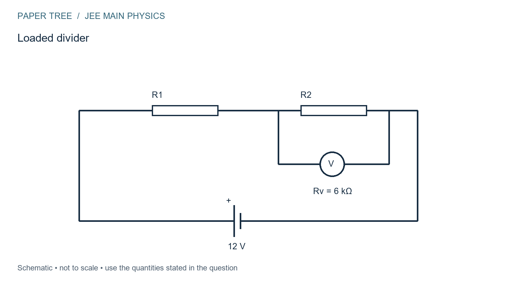
- A. 4 V
- B. 9 V
- C. 6 V
- D. 7.2 V
Answer and explanation
C. 6 V
The meter shunts the second resistor: Rparallel=2 kΩ. The loaded divider then gives 6 V. Comparing this to the unloaded value VR₂/(R₁+R₂) gives a 16.66666667% reduction. Meter power Vmeter²/Rv is 6 mW.
For the requested outcome — Find the voltmeter reading. — the result is 6 V.
Resistors 2 kΩ and 3 kΩ are in series across an ideal 12 V source. A voltmeter of resistance 6 kΩ is connected across the second resistor. All components are ohmic. Find the percentage reduction from the voltage that was present across the second resistor before connecting the meter. Choose the closest value.
Use steady currents, ideal connecting wires and uniform ohmic conductors at fixed temperature unless specified otherwise. Resistivity is unchanged by stretching in the stated elementary model. Wheatstone arms P,Q,R,S mean AB,BC,AD,DC; source AC and detector BD.
- A. 8.333 %
- B. 66.67 %
- C. 16.67 %
- D. 33.33 %
Answer and explanation
C. 16.67 %
The meter shunts the second resistor: Rparallel=2 kΩ. The loaded divider then gives 6 V. Comparing this to the unloaded value VR₂/(R₁+R₂) gives a 16.66666667% reduction. Meter power Vmeter²/Rv is 6 mW.
For the requested outcome — Find the percentage reduction from the voltage that was present across the second resistor before connecting the meter. — the result is 16.67 %.
In the illustrated divider, the ideal source is 12 V and the voltmeter resistance is 6 kΩ. The fixed positive resistances R1 and R2 are unknown. With the meter across R2 as drawn, it reads 6 V. In a separate measurement it is moved across R1 and reads 4 V; no other load is present in either trial. Remove the meter and connect a load R_L across R2. All resistances are ohmic. Find the smallest R_L for which the loaded output across R2 is at least 90% of its no-load value. Choose the closest value.
Use the idealisations, constants, geometry and sign conventions stated in this question. Any accompanying drawing is schematic.
- A. 1.2 kΩ
- B. 6 kΩ
- C. 12 kΩ
- D. 10.8 kΩ
Answer and explanation
D. 10.8 kΩ
Use kΩ. The first measurement gives R1=6R2/(6+R2); the second gives R2=2×6R1/(6+R1). The unique positive solution is R1=2 kΩ, R2=3 kΩ. The output has open-circuit voltage 7.2 V and Thevenin resistance 2||3=1.2 kΩ. Its loaded/no-load ratio is R_L/(R_L+1.2). Requiring this to be at least 0.90 gives R_L≥10.8 kΩ.
Two unknown positive resistors R1 and R2 form a series divider across an ideal 18.0 V source, with R1 above R2 and the lower end grounded. A single voltmeter of resistance 6.0 kΩ is first connected across R2 and reads 9.0 V. It is then disconnected from R2 and connected across R1, where it reads 4.5 V. All components are ohmic and the resistors are unchanged between trials. Find the voltage across R2 when the voltmeter is removed completely. Choose the closest value.
Use steady currents, ideal connecting wires and uniform ohmic conductors at fixed temperature unless specified otherwise. Resistivity is unchanged by stretching in the stated elementary model. Wheatstone arms P,Q,R,S mean AB,BC,AD,DC; source AC and detector BD.
- A. 9 V
- B. 12 V
- C. 10.5 V
- D. 13.5 V
Answer and explanation
B. 12 V
Write x=R1 and y=R2 in kΩ. In the first trial the loaded lower arm is 6y/(6+y), and a 9 V reading implies x=6y/(6+y). In the second trial the loaded upper arm is 6x/(6+x); its 4.5 V reading gives y=3[6x/(6+x)]. Combining the two positive-resistance conditions gives x=3 kΩ and y=6 kΩ. With the meter removed the lower-arm voltage is 18y/(x+y)=12 V.
Resistors 3 kΩ and ξ kΩ are in series across an ideal 18 V source. A voltmeter of resistance 6 kΩ is connected across the second resistor. All components are ohmic. The recorded value of the percentage reduction from the voltage that was present across the second resistor before connecting the meter is 25 %. Which listed positive value of ξ is consistent with this measurement?
Use steady currents, ideal connecting wires and uniform ohmic conductors at fixed temperature unless specified otherwise. Resistivity is unchanged by stretching in the stated elementary model. Wheatstone arms P,Q,R,S mean AB,BC,AD,DC; source AC and detector BD.
Answer and explanation
A. 6
Use the physical relations below with the missing input ξ. The recorded value of the percentage reduction from the voltage that was present across the second resistor before connecting the meter gives ξ=6 in the unit assigned to ξ in the question. Substitution checks the observation:
The meter shunts the second resistor: Rparallel=3 kΩ. The loaded divider then gives 9 V. Comparing this to the unloaded value VR₂/(R₁+R₂) gives a 25% reduction. Meter power Vmeter²/Rv is 13.5 mW.
Resistors 3 kΩ and 6 kΩ are in series across an ideal 18 V source. A voltmeter of resistance ξ kΩ is connected across the second resistor. All components are ohmic. The recorded value of the power dissipated inside the voltmeter is 13.5 mW. Which listed positive value of ξ is consistent with this measurement?
Use steady currents, ideal connecting wires and uniform ohmic conductors at fixed temperature unless specified otherwise. Resistivity is unchanged by stretching in the stated elementary model. Wheatstone arms P,Q,R,S mean AB,BC,AD,DC; source AC and detector BD.
Answer and explanation
B. 6
Use the physical relations below with the missing input ξ. The recorded value of the power dissipated inside the voltmeter gives ξ=6 in the unit assigned to ξ in the question. Substitution checks the observation:
The meter shunts the second resistor: Rparallel=3 kΩ. The loaded divider then gives 9 V. Comparing this to the unloaded value VR₂/(R₁+R₂) gives a 25% reduction. Meter power Vmeter²/Rv is 13.5 mW.
A resistor network has terminals A and B and interior nodes C and D. AC = AD = 3 Ω, CB = DB = 6 Ω, and CD = 5 Ω. An ideal 18 V source is connected with A positive relative to B. No other connections exist. Find the equivalent resistance between A and B. Choose the closest value.
Use steady currents, ideal connecting wires and uniform ohmic conductors at fixed temperature unless specified otherwise. Resistivity is unchanged by stretching in the stated elementary model. Wheatstone arms P,Q,R,S mean AB,BC,AD,DC; source AC and detector BD.
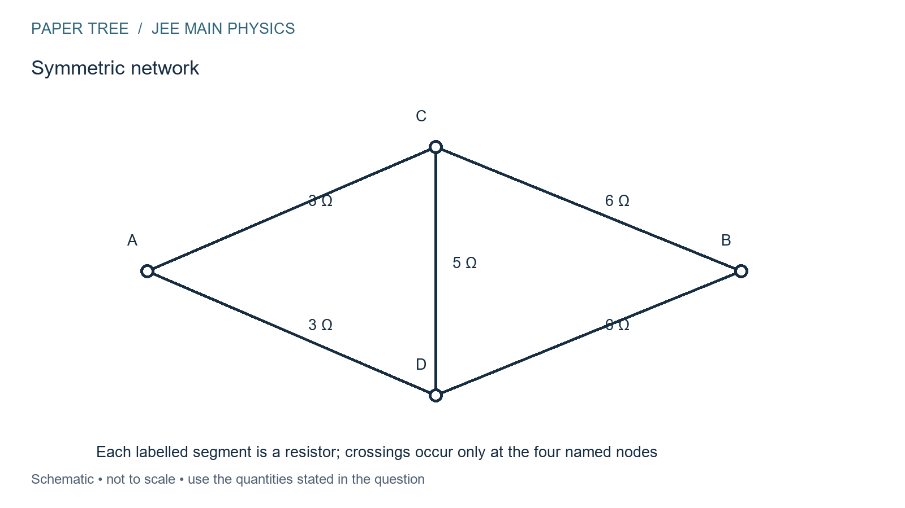
- A. 9 Ω
- B. 4.5 Ω
- C. 7 Ω
- D. 18 Ω
Answer and explanation
B. 4.5 Ω
Swapping C and D leaves the network unchanged, so VC=VD and no current passes through CD. The remaining two series branches each have resistance r+s, in parallel. Req=4.5 Ω. Each branch carries V/(r+s), giving VC=12 V and PCB=24 W.
For the requested outcome — Find the equivalent resistance between A and B. — the result is 4.5 Ω.
A resistor network has terminals A and B and interior nodes C and D. AC = AD = 3 Ω, CB = DB = 6 Ω, and CD = 5 Ω. An ideal 18 V source is connected with A positive relative to B. No other connections exist. Find the potential of C relative to B. Choose the closest value.
Use steady currents, ideal connecting wires and uniform ohmic conductors at fixed temperature unless specified otherwise. Resistivity is unchanged by stretching in the stated elementary model. Wheatstone arms P,Q,R,S mean AB,BC,AD,DC; source AC and detector BD.
- A. 12 V
- B. 6 V
- C. 18 V
- D. 9 V
Answer and explanation
A. 12 V
Swapping C and D leaves the network unchanged, so VC=VD and no current passes through CD. The remaining two series branches each have resistance r+s, in parallel. Req=4.5 Ω. Each branch carries V/(r+s), giving VC=12 V and PCB=24 W.
For the requested outcome — Find the potential of C relative to B. — the result is 12 V.
A resistor network has terminals A and B and interior nodes C and D. AC = AD = 3 Ω, CB = DB = 6 Ω, and CD = 5 Ω. An ideal 18 V source is connected with A positive relative to B. No other connections exist. Find the power dissipated in resistor CB. Choose the closest value.
Use steady currents, ideal connecting wires and uniform ohmic conductors at fixed temperature unless specified otherwise. Resistivity is unchanged by stretching in the stated elementary model. Wheatstone arms P,Q,R,S mean AB,BC,AD,DC; source AC and detector BD.
- A. 24 W
- B. 12 W
- C. 54 W
- D. 96 W
Answer and explanation
A. 24 W
Swapping C and D leaves the network unchanged, so VC=VD and no current passes through CD. The remaining two series branches each have resistance r+s, in parallel. Req=4.5 Ω. Each branch carries V/(r+s), giving VC=12 V and PCB=24 W.
For the requested outcome — Find the power dissipated in resistor CB. — the result is 24 W.
A resistor network has terminals A and B and interior nodes C and D. AC = AD = ξ Ω, CB = DB = 8 Ω, and CD = 7 Ω. An ideal 24 V source is connected with A positive relative to B. No other connections exist. The recorded value of the equivalent resistance between A and B is 6 Ω. Which listed positive value of ξ is consistent with this measurement?
Use steady currents, ideal connecting wires and uniform ohmic conductors at fixed temperature unless specified otherwise. Resistivity is unchanged by stretching in the stated elementary model. Wheatstone arms P,Q,R,S mean AB,BC,AD,DC; source AC and detector BD.
Answer and explanation
D. 4
Use the physical relations below with the missing input ξ. The recorded value of the equivalent resistance between A and B gives ξ=4 in the unit assigned to ξ in the question. Substitution checks the observation:
Swapping C and D leaves the network unchanged, so VC=VD and no current passes through CD. The remaining two series branches each have resistance r+s, in parallel. Req=6 Ω. Each branch carries V/(r+s), giving VC=16 V and PCB=32 W.
A resistor network has terminals A and B and interior nodes C and D. AC = AD = ξ Ω, CB = DB = 8 Ω, and CD = 7 Ω. An ideal 24 V source is connected with A positive relative to B. No other connections exist. The recorded value of the potential of C relative to B is 16 V. Which listed positive value of ξ is consistent with this measurement?
Use steady currents, ideal connecting wires and uniform ohmic conductors at fixed temperature unless specified otherwise. Resistivity is unchanged by stretching in the stated elementary model. Wheatstone arms P,Q,R,S mean AB,BC,AD,DC; source AC and detector BD.
Answer and explanation
C. 4
Use the physical relations below with the missing input ξ. The recorded value of the potential of C relative to B gives ξ=4 in the unit assigned to ξ in the question. Substitution checks the observation:
Swapping C and D leaves the network unchanged, so VC=VD and no current passes through CD. The remaining two series branches each have resistance r+s, in parallel. Req=6 Ω. Each branch carries V/(r+s), giving VC=16 V and PCB=32 W.
A resistor network has terminals A and B and interior nodes C and D. AC = AD = 4 Ω, CB = DB = ξ Ω, and CD = 7 Ω. An ideal 24 V source is connected with A positive relative to B. No other connections exist. The recorded value of the power dissipated in resistor CB is 32 W. Which listed positive value of ξ is consistent with this measurement?
Use steady currents, ideal connecting wires and uniform ohmic conductors at fixed temperature unless specified otherwise. Resistivity is unchanged by stretching in the stated elementary model. Wheatstone arms P,Q,R,S mean AB,BC,AD,DC; source AC and detector BD.
Answer and explanation
B. 8
Use the physical relations below with the missing input ξ. The recorded value of the power dissipated in resistor CB gives ξ=8 in the unit assigned to ξ in the question. Substitution checks the observation:
Swapping C and D leaves the network unchanged, so VC=VD and no current passes through CD. The remaining two series branches each have resistance r+s, in parallel. Req=6 Ω. Each branch carries V/(r+s), giving VC=16 V and PCB=32 W.
Two cells of emfs 12 V and 6 V have internal resistances 2 Ω and 2 Ω. Their positive terminals are joined at P and their negative terminals at N. A 4 Ω load connects P to N. Use steady DC conditions and ideal series models for the cells. Find the terminal voltage VP−VN. Choose the closest value.
Use steady currents, ideal connecting wires and uniform ohmic conductors at fixed temperature unless specified otherwise. Resistivity is unchanged by stretching in the stated elementary model. Wheatstone arms P,Q,R,S mean AB,BC,AD,DC; source AC and detector BD.
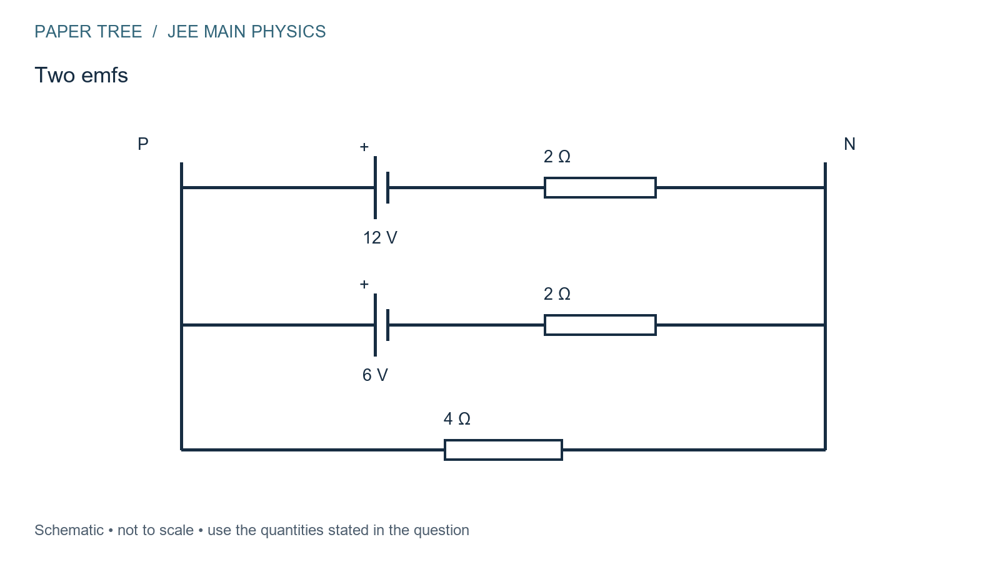
- A. 3.6 V
- B. 7.2 V
- C. 9 V
- D. 18 V
Answer and explanation
B. 7.2 V
At P, (E₁−V)/r₁+(E₂−V)/r₂=V/R. Solving gives V=7.2 V. Cell currents are 2.4 A and -0.6 A; a negative second current means the lower-emf cell is being charged. Load power V²/R is 12.96 W.
For the requested outcome — Find the terminal voltage VP−VN. — the result is 7.2 V.
Two cells of emfs 12 V and 6 V have internal resistances 2 Ω and 2 Ω. Their positive terminals are joined at P and their negative terminals at N. A 4 Ω load connects P to N. Use steady DC conditions and ideal series models for the cells. Find the signed current delivered by the lower-emf cell, positive when it leaves that cell’s positive terminal. Choose the closest value.
Use steady currents, ideal connecting wires and uniform ohmic conductors at fixed temperature unless specified otherwise. Resistivity is unchanged by stretching in the stated elementary model. Wheatstone arms P,Q,R,S mean AB,BC,AD,DC; source AC and detector BD.
- A. -0.6 A
- B. 1 A
- C. 1.2 A
- D. 0.6 A
Answer and explanation
A. -0.6 A
At P, (E₁−V)/r₁+(E₂−V)/r₂=V/R. Solving gives V=7.2 V. Cell currents are 2.4 A and -0.6 A; a negative second current means the lower-emf cell is being charged. Load power V²/R is 12.96 W.
For the requested outcome — Find the signed current delivered by the lower-emf cell, positive when it leaves that cell’s positive terminal. — the result is -0.6 A.
Two cells of emfs 12 V and 6 V have internal resistances 2 Ω and 2 Ω. Their positive terminals are joined at P and their negative terminals at N. A 4 Ω load connects P to N. Use steady DC conditions and ideal series models for the cells. Find the power delivered to the load. Choose the closest value.
Use steady currents, ideal connecting wires and uniform ohmic conductors at fixed temperature unless specified otherwise. Resistivity is unchanged by stretching in the stated elementary model. Wheatstone arms P,Q,R,S mean AB,BC,AD,DC; source AC and detector BD.
- A. 81 W
- B. 25.2 W
- C. 6.48 W
- D. 12.96 W
Answer and explanation
D. 12.96 W
At P, (E₁−V)/r₁+(E₂−V)/r₂=V/R. Solving gives V=7.2 V. Cell currents are 2.4 A and -0.6 A; a negative second current means the lower-emf cell is being charged. Load power V²/R is 12.96 W.
For the requested outcome — Find the power delivered to the load. — the result is 12.96 W.
Two cells of emfs ξ V and 9 V have internal resistances 3 Ω and 3 Ω. Their positive terminals are joined at P and their negative terminals at N. A 6 Ω load connects P to N. Use steady DC conditions and ideal series models for the cells. The recorded value of the terminal voltage VP−VN is 10.8 V. Which listed positive value of ξ is consistent with this measurement?
Use steady currents, ideal connecting wires and uniform ohmic conductors at fixed temperature unless specified otherwise. Resistivity is unchanged by stretching in the stated elementary model. Wheatstone arms P,Q,R,S mean AB,BC,AD,DC; source AC and detector BD.
Answer and explanation
A. 18
Use the physical relations below with the missing input ξ. The recorded value of the terminal voltage VP−VN gives ξ=18 in the unit assigned to ξ in the question. Substitution checks the observation:
At P, (E₁−V)/r₁+(E₂−V)/r₂=V/R. Solving gives V=10.8 V. Cell currents are 2.4 A and -0.6 A; a negative second current means the lower-emf cell is being charged. Load power V²/R is 19.44 W.
Two cells of emfs 18 V and ξ V have internal resistances 3 Ω and 3 Ω. Their positive terminals are joined at P and their negative terminals at N. A 6 Ω load connects P to N. Use steady DC conditions and ideal series models for the cells. The recorded value of the signed current delivered by the lower-emf cell, positive when it leaves that cell’s positive terminal is -0.6 A. Which listed positive value of ξ is consistent with this measurement?
Use steady currents, ideal connecting wires and uniform ohmic conductors at fixed temperature unless specified otherwise. Resistivity is unchanged by stretching in the stated elementary model. Wheatstone arms P,Q,R,S mean AB,BC,AD,DC; source AC and detector BD.
Answer and explanation
A. 9
Use the physical relations below with the missing input ξ. The recorded value of the signed current delivered by the lower-emf cell, positive when it leaves that cell’s positive terminal gives ξ=9 in the unit assigned to ξ in the question. Substitution checks the observation:
At P, (E₁−V)/r₁+(E₂−V)/r₂=V/R. Solving gives V=10.8 V. Cell currents are 2.4 A and -0.6 A; a negative second current means the lower-emf cell is being charged. Load power V²/R is 19.44 W.
Two cells of emfs 18 V and 9 V have internal resistances 3 Ω and 3 Ω. Their positive terminals are joined at P and their negative terminals at N. A ξ Ω load connects P to N. Use steady DC conditions and ideal series models for the cells. The recorded value of the power delivered to the load is 19.44 W. Which listed positive value of ξ is consistent with this measurement?
Use steady currents, ideal connecting wires and uniform ohmic conductors at fixed temperature unless specified otherwise. Resistivity is unchanged by stretching in the stated elementary model. Wheatstone arms P,Q,R,S mean AB,BC,AD,DC; source AC and detector BD.
Answer and explanation
D. 6
Use the physical relations below with the missing input ξ. The recorded value of the power delivered to the load gives ξ=6 in the unit assigned to ξ in the question. Substitution checks the observation:
At P, (E₁−V)/r₁+(E₂−V)/r₂=V/R. Solving gives V=10.8 V. Cell currents are 2.4 A and -0.6 A; a negative second current means the lower-emf cell is being charged. Load power V²/R is 19.44 W.
An initially uniform wire has resistance 4 Ω at 20 °C. It is stretched uniformly to 2 times its original length without changing its volume or resistivity at 20 °C, and then heated to 70 °C. Use a temperature coefficient 0.004 K⁻¹ referred to 20 °C and a linear resistivity law. A constant 24 V is applied to the final wire. Find the final resistance. Choose the closest value.
Use steady currents, ideal connecting wires and uniform ohmic conductors at fixed temperature unless specified otherwise. Resistivity is unchanged by stretching in the stated elementary model. Wheatstone arms P,Q,R,S mean AB,BC,AD,DC; source AC and detector BD.
- A. 4.8 Ω
- B. 9.6 Ω
- C. 19.2 Ω
- D. 16 Ω
Answer and explanation
C. 19.2 Ω
Constant volume makes area decrease by 1/f, so resistance at 20 °C grows by f² to 16 Ω. The temperature factor then gives 19.2 Ω. Thus final power is V²/Rfinal=30 W and the fixed-voltage current ratio is Rinitial/Rfinal=0.2083333333.
For the requested outcome — Find the final resistance. — the result is 19.2 Ω.
An initially uniform wire has resistance 4 Ω at 20 °C. It is stretched uniformly to 2 times its original length without changing its volume or resistivity at 20 °C, and then heated to 70 °C. Use a temperature coefficient 0.004 K⁻¹ referred to 20 °C and a linear resistivity law. A constant 24 V is applied to the final wire. Find the final electrical heating power. Choose the closest value.
Use steady currents, ideal connecting wires and uniform ohmic conductors at fixed temperature unless specified otherwise. Resistivity is unchanged by stretching in the stated elementary model. Wheatstone arms P,Q,R,S mean AB,BC,AD,DC; source AC and detector BD.
- A. 36 W
- B. 144 W
- C. 60 W
- D. 30 W
Answer and explanation
D. 30 W
Constant volume makes area decrease by 1/f, so resistance at 20 °C grows by f² to 16 Ω. The temperature factor then gives 19.2 Ω. Thus final power is V²/Rfinal=30 W and the fixed-voltage current ratio is Rinitial/Rfinal=0.2083333333.
For the requested outcome — Find the final electrical heating power. — the result is 30 W.
An initially uniform wire has resistance 4 Ω at 20 °C. It is stretched uniformly to 2 times its original length without changing its volume or resistivity at 20 °C, and then heated to 70 °C. Use a temperature coefficient 0.004 K⁻¹ referred to 20 °C and a linear resistivity law. A constant 24 V is applied to the final wire. Find the final-to-initial current ratio if the same voltage is used before any stretching or heating and after both changes.
Use steady currents, ideal connecting wires and uniform ohmic conductors at fixed temperature unless specified otherwise. Resistivity is unchanged by stretching in the stated elementary model. Wheatstone arms P,Q,R,S mean AB,BC,AD,DC; source AC and detector BD.
- A. 0.25
- B. 0.2083
- C. 4.8
- D. 0.5
Answer and explanation
B. 0.2083
Constant volume makes area decrease by 1/f, so resistance at 20 °C grows by f² to 16 Ω. The temperature factor then gives 19.2 Ω. Thus final power is V²/Rfinal=30 W and the fixed-voltage current ratio is Rinitial/Rfinal=0.2083333333.
For the requested outcome — Find the final-to-initial current ratio if the same voltage is used before any stretching or heating and after both changes. — the result is 0.2083.
An initially uniform wire has resistance ξ Ω at 20 °C. It is stretched uniformly to 1.5 times its original length without changing its volume or resistivity at 20 °C, and then heated to 120 °C. Use a temperature coefficient 0.004 K⁻¹ referred to 20 °C and a linear resistivity law. A constant 21 V is applied to the final wire. The recorded value of the final resistance is 15.75 Ω. Which listed positive value of ξ is consistent with this measurement?
Use steady currents, ideal connecting wires and uniform ohmic conductors at fixed temperature unless specified otherwise. Resistivity is unchanged by stretching in the stated elementary model. Wheatstone arms P,Q,R,S mean AB,BC,AD,DC; source AC and detector BD.
Answer and explanation
C. 5
Use the physical relations below with the missing input ξ. The recorded value of the final resistance gives ξ=5 in the unit assigned to ξ in the question. Substitution checks the observation:
Constant volume makes area decrease by 1/f, so resistance at 20 °C grows by f² to 11.25 Ω. The temperature factor then gives 15.75 Ω. Thus final power is V²/Rfinal=28 W and the fixed-voltage current ratio is Rinitial/Rfinal=0.3174603175.
An initially uniform wire has resistance 5 Ω at 20 °C. It is stretched uniformly to 1.5 times its original length without changing its volume or resistivity at 20 °C, and then heated to ξ °C. Use a temperature coefficient 0.004 K⁻¹ referred to 20 °C and a linear resistivity law. A constant 21 V is applied to the final wire. The recorded value of the final electrical heating power is 28 W. Which listed positive value of ξ is consistent with this measurement?
Use steady currents, ideal connecting wires and uniform ohmic conductors at fixed temperature unless specified otherwise. Resistivity is unchanged by stretching in the stated elementary model. Wheatstone arms P,Q,R,S mean AB,BC,AD,DC; source AC and detector BD.
Answer and explanation
C. 120
Use the physical relations below with the missing input ξ. The recorded value of the final electrical heating power gives ξ=120 in the unit assigned to ξ in the question. Substitution checks the observation:
Constant volume makes area decrease by 1/f, so resistance at 20 °C grows by f² to 11.25 Ω. The temperature factor then gives 15.75 Ω. Thus final power is V²/Rfinal=28 W and the fixed-voltage current ratio is Rinitial/Rfinal=0.3174603175.
An initially uniform wire has resistance 5 Ω at 20 °C. It is stretched uniformly to ξ times its original length without changing its volume or resistivity at 20 °C, and then heated to 120 °C. Use a temperature coefficient 0.004 K⁻¹ referred to 20 °C and a linear resistivity law. A constant 21 V is applied to the final wire. The recorded value of the final-to-initial current ratio if the same voltage is used before any stretching or heating and after both changes is 0.3174603175. Which listed positive value of ξ is consistent with this measurement?
Use steady currents, ideal connecting wires and uniform ohmic conductors at fixed temperature unless specified otherwise. Resistivity is unchanged by stretching in the stated elementary model. Wheatstone arms P,Q,R,S mean AB,BC,AD,DC; source AC and detector BD.
Answer and explanation
B. 1.5
Use the physical relations below with the missing input ξ. The recorded value of the final-to-initial current ratio if the same voltage is used before any stretching or heating and after both changes gives ξ=1.5 in the unit assigned to ξ in the question. Substitution checks the observation:
Constant volume makes area decrease by 1/f, so resistance at 20 °C grows by f² to 11.25 Ω. The temperature factor then gives 15.75 Ω. Thus final power is V²/Rfinal=28 W and the fixed-voltage current ratio is Rinitial/Rfinal=0.3174603175.
A closed Amperian loop is drawn in a region where a current carrying wire passes entirely outside the loop. For this loop:
Use steady source currents and vacuum unless specified otherwise. Particle motion is nonrelativistic, with other forces neglected in magnetic-orbit questions. Listed charge magnitudes are positive. Neglect end and demagnetising effects in ideal long-solenoid models.
- A. the line integral equals μ₀ times that external current
- B. the line integral is undefined because Ampere's law cannot be applied when a current lies outside
- C. the line integral of B dot dl is zero, although B is not zero at points on the loop
- D. both the line integral and the field B are zero at every point of the loop
Answer and explanation
C. the line integral of B dot dl is zero, although B is not zero at points on the loop
The external current produces a magnetic field at every point of the loop, so B is not zero there. However, its circulation around a loop that it does not thread is zero, so the contribution of this current to the line integral vanishes.
A long solid cylindrical conductor of radius 10 cm carries a current of 20 A distributed uniformly. At a point 5 cm from the axis the field has a certain value. The field has the same value at an external point whose distance from the axis is:
Use steady source currents and vacuum unless specified otherwise. Particle motion is nonrelativistic, with other forces neglected in magnetic-orbit questions. Listed charge magnitudes are positive. Neglect end and demagnetising effects in ideal long-solenoid models.
- A. 10 cm
- B. 20 cm
- C. 5 cm
- D. 40 cm
Answer and explanation
B. 20 cm
Inside at r = 0.05 m, B = 2 × 10⁻⁷ x 20 × 0.05 / (0.10)² = 2 × 10⁻⁷ x 100 = 2 × 10⁻⁵ T. Outside, setting 2 × 10⁻⁷ x 20 / r' = 2 × 10⁻⁵ gives r' = 4 × 10⁻⁶ / 2 × 10⁻⁵ = 0.20 m = 20 cm.
An ideal nonrelativistic positively charged particle is accelerated from rest through 1000 V and enters a uniform magnetic field 0.2 T at an unknown angle. Its helical radius is 0.01 m and its advance parallel to the field per turn is 0.06283185307 m. No electric field acts in this region. For a separate second trial, the particle is first brought to rest and then accelerated through 2000 V and enters a second magnetic region of field 0.4 T at the SAME angle. Find the gyroperiod in the second region. Choose the closest value.
Use steady source currents and vacuum unless specified otherwise. Particle motion is nonrelativistic, with other forces neglected in magnetic-orbit questions. Listed charge magnitudes are positive. Neglect end and demagnetising effects in ideal long-solenoid models.
- A. 6.283 × 10⁻⁸ s
- B. -6.283 × 10⁻⁸ s
- C. 3.142 × 10⁻⁸ s
- D. 1.257 × 10⁻⁷ s
Answer and explanation
A. 6.283 × 10⁻⁸ s
Geometry gives cotθ=p/(2πr)=1. Since v⊥=(q/m)Br and v²=2(q/m)V, q/m=250000000 C/kg. The second speed is 1000000 m/s and period 6.283185307 × 10⁻⁸ s. Actual path per turn is vT=0.06283185307 m; only the parallel component produces pitch, 0.04442882938 m.
Requested result: 6.283 × 10⁻⁸ s. The object is an ideal charged particle; no atomic-ion species or charge-to-mass restriction is assumed. The second trial starts from rest independently of the first trial. Its kinetic energy on entering the second magnetic region is qV₂, not q(V₁+V₂); magnetic fields do no work.
A coaxial cable has an inner wire carrying 5 A in one direction and an outer cylindrical sheath carrying 5 A in the opposite direction. Find the magnetic field at a point 4 cm from the axis in the gap between the conductors, and at a point 10 cm from the axis outside the cable. Take μ₀ = 4 π x 10⁻⁷ T m A⁻¹.
Use steady source currents and vacuum unless specified otherwise. Particle motion is nonrelativistic, with other forces neglected in magnetic-orbit questions. Listed charge magnitudes are positive. Neglect end and demagnetising effects in ideal long-solenoid models.
- A. 5 × 10⁻⁵ T in the gap and zero outside
- B. 2.5 × 10⁻⁵ T in the gap and 1 × 10⁻⁵ T outside
- C. zero in the gap and 1 × 10⁻⁵ T outside
- D. 2.5 × 10⁻⁵ T in the gap and zero outside
Answer and explanation
D. 2.5 × 10⁻⁵ T in the gap and zero outside
A circle of radius 4 cm in the gap encloses only the inner current of 5 A, so B = 2 × 10⁻⁷ x 5 / 0.04 = 1 × 10⁻⁶ / 0.04 = 2.5 × 10⁻⁵ T. A circle of radius 10 cm outside the cable encloses 5 A one way and 5 A the other, so the net enclosed current is zero and B = 0. This confinement of the field is the reason coaxial cables do not radiate.
Ampere's circuital law states that the line integral of the magnetic field taken around any closed path is equal to:
Use steady source currents and vacuum unless specified otherwise. Particle motion is nonrelativistic, with other forces neglected in magnetic-orbit questions. Listed charge magnitudes are positive. Neglect end and demagnetising effects in ideal long-solenoid models.
- A. μ₀ times the net current divided by 2 π r
- B. μ₀ times the total charge enclosed by the path
- C. μ₀ times the sum of all currents in the neighbourhood
- D. μ₀ times the net current passing through the area bounded by that path
Answer and explanation
D. μ₀ times the net current passing through the area bounded by that path
Ampere's law relates the circulation of B around a closed path to the net current threading that path. Currents lying outside the path contribute nothing to the integral, although they do contribute to the field at individual points on the path.
For a long solid cylindrical conductor of radius R carrying a uniformly distributed current, the magnetic field is:
Use steady source currents and vacuum unless specified otherwise. Particle motion is nonrelativistic, with other forces neglected in magnetic-orbit questions. Listed charge magnitudes are positive. Neglect end and demagnetising effects in ideal long-solenoid models.
- A. proportional to 1 / r both inside and outside, with a maximum on the axis
- B. proportional to r inside, proportional to 1 / r outside, and greatest at the surface
- C. constant inside and constant outside
- D. zero inside and proportional to 1 / r outside
Answer and explanation
B. proportional to r inside, proportional to 1 / r outside, and greatest at the surface
Inside the material the enclosed current grows as r² while the path length grows as r, so B grows linearly with r and is zero on the axis. Outside, the full current is enclosed and B falls as 1 / r. The two expressions meet at r = R, where B = μ₀ I / (2 π R) is the maximum value.
An Amperian loop encloses steady currents 7 A into the page and 3 A out of it. Another 4 A wire is outside. Find the magnitude of the circulation ∮B·dl. Take μ₀=4π × 10⁻⁷ T m A⁻¹.
Use steady source currents and vacuum unless specified otherwise. Particle motion is nonrelativistic, with other forces neglected in magnetic-orbit questions. Listed charge magnitudes are positive. Neglect end and demagnetising effects in ideal long-solenoid models.
- A. 8 × 10⁻⁷ T m
- B. 40 π x 10⁻⁷ T m
- C. 32 π x 10⁻⁷ T m
- D. 16 π x 10⁻⁷ T m
Answer and explanation
D. 16 π x 10⁻⁷ T m
The two enclosed currents are oppositely directed, so the net enclosed current is 7 minus 3 = 4 A. The wire outside contributes nothing. Hence the line integral is 4 π x 10⁻⁷ x 4 = 16 π x 10⁻⁷ T m, that is about 5.0 × 10⁻⁶ T m.
In applying Ampere's circuital law to a long straight current carrying wire, a circle centred on the wire and lying in a plane perpendicular to it is chosen as the closed path because:
Use steady source currents and vacuum unless specified otherwise. Particle motion is nonrelativistic, with other forces neglected in magnetic-orbit questions. Listed charge magnitudes are positive. Neglect end and demagnetising effects in ideal long-solenoid models.
- A. such a circle is the only closed path for which Ampere's law is valid
- B. on such a circle the magnitude of B is constant and B is everywhere tangential to the path
- C. on such a circle B is zero everywhere
- D. on such a circle B is everywhere perpendicular to the path
Answer and explanation
B. on such a circle the magnitude of B is constant and B is everywhere tangential to the path
Symmetry ensures that B has the same magnitude at every point of the circle and is directed along the tangent, so B dot dl reduces to B dl and the integral becomes B x 2 π r. This makes it possible to solve for B.
An infinitely long hollow cylindrical conductor carries a cylindrically symmetric steady axial current, with no other magnetic sources. What is the magnetic field in its empty bore?
Use steady source currents and vacuum unless specified otherwise. Particle motion is nonrelativistic, with other forces neglected in magnetic-orbit questions. Listed charge magnitudes are positive. Neglect end and demagnetising effects in ideal long-solenoid models.
- A. μ₀ I / (2 π r)
- B. equal to the value at the outer surface
- C. infinite on the axis
- D. zero, because an Amperian loop drawn there encloses no current
Answer and explanation
D. zero, because an Amperian loop drawn there encloses no current
A circular Amperian loop drawn entirely within the hollow region encloses no current, so B x 2 π r = 0 and hence B = 0 everywhere inside the cavity, even though the conductor surrounding it carries a large current.
At a distant equatorial point r from a short magnetic dipole of moment m, the field magnitude is:
Use steady source currents and vacuum unless specified otherwise. Particle motion is nonrelativistic, with other forces neglected in magnetic-orbit questions. Listed charge magnitudes are positive. Neglect end and demagnetising effects in ideal long-solenoid models.
- A. μ₀m/(4πr²)
- B. zero
- C. μ₀m/(4πr³)
- D. μ₀(2m)/(4πr³)
Answer and explanation
C. μ₀m/(4πr³)
The equatorial magnitude is μ₀m/(4πr³), directed opposite to the dipole moment.
A coil of unknown magnetic moment magnitude μ is suspended on a linear torsion fibre of unknown torsion constant κ. Its untwisted normal is perpendicular to a uniform field. In field 0.3 T it turns through 0.4 radians toward alignment. A separate mechanical calibration with the field off stores 0.001 J in the fibre at twist ξ radians. Use the exact sine/cosine torque law, not the small-angle approximation. In this arrangement, the following outcome is measured: At the ORIGINAL field B1, the quasistatic external work to move from untwisted to twice the original twist = 0.0002708904369 J. Which listed positive value of ξ is consistent with that outcome?
Use steady source currents and vacuum unless specified otherwise. Particle motion is nonrelativistic, with other forces neglected in magnetic-orbit questions. Listed charge magnitudes are positive. Neglect end and demagnetising effects in ideal long-solenoid models.
- A. 0.5
- B. 0.125
- C. 0.25
- D. 0.375
Answer and explanation
C. 0.25
Use the coupled physical relations below. The missing input is ξ=0.25 in the units assigned in the stem.
The mechanical calibration gives κ=0.032 N m/rad. Equilibrium requires κθ=μB cosθ, yielding μ=0.04632338894 A m². At twice the twist equilibrium requires B2=0.7932126804 T. In the original field, total potential is κφ²/2−μB1 sinφ, so external work is 0.0002708904369 J and net torque μB1 cosφ−κφ is -0.01591785524 N m.
A bar magnet and a current-carrying solenoid have similar external fields because both behave as:
Use steady source currents and vacuum unless specified otherwise. Particle motion is nonrelativistic, with other forces neglected in magnetic-orbit questions. Listed charge magnitudes are positive. Neglect end and demagnetising effects in ideal long-solenoid models.
- A. magnetic dipoles
- B. isolated magnetic poles
- C. uniform electric fields
- D. electric dipoles only
Answer and explanation
A. magnetic dipoles
A current loop or solenoid has a magnetic dipole moment and the same far-field pattern as a bar magnet.
According to the Biot Savart law, the magnitude of the magnetic field dB produced at a point by a small current element I dl depends on the distance r of the point from the element as:
Use steady source currents and vacuum unless specified otherwise. Particle motion is nonrelativistic, with other forces neglected in magnetic-orbit questions. Listed charge magnitudes are positive. Neglect end and demagnetising effects in ideal long-solenoid models.
- A. dB is inversely proportional to r²
- B. dB does not depend on r
- C. dB is inversely proportional to r
- D. dB is directly proportional to r²
Answer and explanation
A. dB is inversely proportional to r²
The Biot Savart law states dB = (μ₀ / 4 π) x I dl sin θ / r². The distance appears as r² in the denominator, so dB falls off as the inverse square of the distance from the current element.
The magnetic field due to a small current element at a point 10 cm away, on the perpendicular to the element, is 2 × 10⁻⁷ T. The field due to the same element at a point 20 cm away, along a line making 30° with the element, is:
Use steady source currents and vacuum unless specified otherwise. Particle motion is nonrelativistic, with other forces neglected in magnetic-orbit questions. Listed charge magnitudes are positive. Neglect end and demagnetising effects in ideal long-solenoid models.
- A. 1.0 × 10⁻⁷ T
- B. 4.3 × 10⁻⁸ T
- C. 2.5 × 10⁻⁸ T
- D. 5.0 × 10⁻⁸ T
Answer and explanation
C. 2.5 × 10⁻⁸ T
Doubling the distance from 10 cm to 20 cm reduces the field by a factor of 2² = 4. Changing the angle from 90° to 30° multiplies the field by sin 30 / sin 90 = 0.5. Hence the new field is 2 × 10⁻⁷ x (1 / 4) × 0.5 = 2.5 × 10⁻⁸ T.
A short current element I dl lies along a straight line. The magnetic field due to this element is zero at points lying:
Use steady source currents and vacuum unless specified otherwise. Particle motion is nonrelativistic, with other forces neglected in magnetic-orbit questions. Listed charge magnitudes are positive. Neglect end and demagnetising effects in ideal long-solenoid models.
- A. on a circle drawn around the element
- B. on the perpendicular drawn to the element through its midpoint
- C. on the line along which the element itself is directed
- D. at every point equally distant from the element
Answer and explanation
C. on the line along which the element itself is directed
The magnitude is dB = (μ₀ / 4 π) x I dl sin θ / r². For points lying along the axis of the element, θ is 0° or 180°, so sin θ = 0 and dB = 0. The field is largest at θ = 90°.
A current element at the origin points along the positive x direction. The magnetic field due to this element at a point on the positive y axis is directed along:
Use steady source currents and vacuum unless specified otherwise. Particle motion is nonrelativistic, with other forces neglected in magnetic-orbit questions. Listed charge magnitudes are positive. Neglect end and demagnetising effects in ideal long-solenoid models.
- A. the negative z direction
- B. the positive x direction
- C. the positive y direction
- D. the positive z direction
Answer and explanation
D. the positive z direction
Here dl is along x_hat and r_hat is along y_hat. The vector product x_hat x y_hat gives z_hat, so the field at that point is along the positive z direction, that is out of the xy plane.
Two identical current elements, each of length 1 cm and carrying 10 A, are placed at the origin, one directed along the positive x axis and the other along the positive y axis. Find the magnitude of the resultant magnetic field at a point on the positive z axis, 10 cm from the origin. Take μ₀ = 4 π x 10⁻⁷ T m A⁻¹.
Use steady source currents and vacuum unless specified otherwise. Particle motion is nonrelativistic, with other forces neglected in magnetic-orbit questions. Listed charge magnitudes are positive. Neglect end and demagnetising effects in ideal long-solenoid models.
- A. 1.0 × 10⁻⁶ T
- B. 2.0 × 10⁻⁶ T
- C. zero
- D. 1.4 × 10⁻⁶ T
Answer and explanation
D. 1.4 × 10⁻⁶ T
Each element makes an angle of 90° with the line to the point on the z axis, so each contributes dB = 10⁻⁷ x (10 × 0.01) / (0.10)² = 10⁻⁷ x 0.1 / 0.01 = 1 × 10⁻⁶ T. The element along x gives a field along the negative y direction and the element along y gives a field along the positive x direction, so the two contributions are mutually perpendicular. The resultant is square root of (1 + 1) × 10⁻⁶ = 1.414 × 10⁻⁶ T, that is about 1.4 × 10⁻⁶ T.
The direction of the magnetic field dB produced at a point P by a current element I dl is:
Use steady source currents and vacuum unless specified otherwise. Particle motion is nonrelativistic, with other forces neglected in magnetic-orbit questions. Listed charge magnitudes are positive. Neglect end and demagnetising effects in ideal long-solenoid models.
- A. Perpendicular to the plane of dl and the line to P
- B. along the line joining the element to P
- C. opposite to the direction of dl
- D. along the direction of dl itself
Answer and explanation
A. Perpendicular to the plane of dl and the line to P
Because dB involves the cross product dl x r_hat, dB must be perpendicular to both dl and to the position vector r drawn from the element to the point. That is, dB is normal to the plane containing these two vectors.
The vector form of the Biot Savart law for the field of a current element I dl at position vector r from the element is:
Use steady source currents and vacuum unless specified otherwise. Particle motion is nonrelativistic, with other forces neglected in magnetic-orbit questions. Listed charge magnitudes are positive. Neglect end and demagnetising effects in ideal long-solenoid models.
- A. dB = (μ₀ / 4 π) x I (dl x r_hat) / r²
- B. dB = (μ₀ / 4 π) x I (dl x r_hat) / r
- C. dB = (μ₀ / 4 π) x I (dl . r_hat) / r²
- D. dB = (μ₀ / 4 π) x I (r_hat x dl) / r²
Answer and explanation
A. dB = (μ₀ / 4 π) x I (dl x r_hat) / r²
The field of an element is a vector perpendicular to both dl and r_hat, so a vector product of dl with r_hat is required, taken in that order, and the magnitude carries an inverse square factor 1 / r².
Which statement correctly compares the Biot Savart law with Coulomb's law in electrostatics?
Use steady source currents and vacuum unless specified otherwise. Particle motion is nonrelativistic, with other forces neglected in magnetic-orbit questions. Listed charge magnitudes are positive. Neglect end and demagnetising effects in ideal long-solenoid models.
- A. Both are inverse square laws, but the Coulomb field is directed along the line joining the source and the point whereas the Biot Savart field is perpendicular to that line
- B. Both are inverse square laws and in both cases the field lies along the line joining the source and the point
- C. Coulomb's law depends on the angular position of the point while the Biot Savart law does not
- D. The Biot Savart law is an inverse law while Coulomb's law is an inverse square law
Answer and explanation
A. Both are inverse square laws, but the Coulomb field is directed along the line joining the source and the point whereas the Biot Savart field is perpendicular to that line
Both laws vary as 1 / r² and both are linear in their sources. The Coulomb field of a point charge is central, directed along the joining line, and has no angular dependence. The Biot Savart field carries a factor sin θ and is perpendicular to the plane of dl and r, so it is not a central field.
An ideal nonrelativistic positively charged particle is accelerated from rest through 2000 V and enters a uniform magnetic field ξ T at an unknown angle. Its helical radius is 0.02 m and its advance parallel to the field per turn is 0.06283185307 m. No electric field acts in this region. For a separate second trial, the particle is first brought to rest and then accelerated through 8000 V and enters a second magnetic region of field 0.25 T at the SAME angle. In this arrangement, the following outcome is measured: the gyroperiod in the second region = 7.853981634 × 10⁻⁷ s. Which listed positive value of ξ is consistent with that outcome?
Use steady source currents and vacuum unless specified otherwise. Particle motion is nonrelativistic, with other forces neglected in magnetic-orbit questions. Listed charge magnitudes are positive. Neglect end and demagnetising effects in ideal long-solenoid models.
Answer and explanation
C. 0.5
Use the coupled physical relations below. The missing input is ξ=0.5 in the units assigned in the stem.
Geometry gives cotθ=p/(2πr)=0.5. Since v⊥=(q/m)Br and v²=2(q/m)V, q/m=32000000 C/kg. The second speed is 715541.7528 m/s and period 7.853981634 × 10⁻⁷ s. Actual path per turn is vT=0.5619851785 m; only the parallel component produces pitch, 0.2513274123 m. The object is an ideal charged particle; no atomic-ion species or charge-to-mass restriction is assumed. The second trial starts from rest independently of the first trial. Its kinetic energy on entering the second magnetic region is qV₂, not q(V₁+V₂); magnetic fields do no work.
The magnetic susceptibility of a paramagnetic material is 3.6 × 10⁻⁴ at 300 K. Assuming the Curie law, its susceptibility at 450 K is:
Use steady source currents and vacuum unless specified otherwise. Particle motion is nonrelativistic, with other forces neglected in magnetic-orbit questions. Listed charge magnitudes are positive. Neglect end and demagnetising effects in ideal long-solenoid models.
- A. 2.4 × 10⁻⁴
- B. 1.6 × 10⁻⁴
- C. 3.6 × 10⁻⁴
- D. 5.4 × 10⁻⁴
Answer and explanation
A. 2.4 × 10⁻⁴
By the Curie law chi is proportional to 1 / T, so chi_2 = chi_1 × (T₁ / T₂) = 3.6 × 10⁻⁴ x (300 / 450) = 3.6 × 10⁻⁴ x (2 / 3) = 2.4 × 10⁻⁴.
A paramagnetic material has susceptibility 4 × 10⁻⁴ at 250 K. Its Curie constant and its susceptibility at 400 K are respectively:
Use steady source currents and vacuum unless specified otherwise. Particle motion is nonrelativistic, with other forces neglected in magnetic-orbit questions. Listed charge magnitudes are positive. Neglect end and demagnetising effects in ideal long-solenoid models.
- A. 0.1 K and 6.4 × 10⁻⁴
- B. 0.16 K and 4 × 10⁻⁴
- C. 1.6 × 10⁻⁶ K and 2.5 × 10⁻⁴
- D. 0.1 K and 2.5 × 10⁻⁴
Answer and explanation
D. 0.1 K and 2.5 × 10⁻⁴
The Curie constant is C = chi T = 4 × 10⁻⁴ x 250 = 0.1 K. At 400 K the susceptibility is chi = C / T = 0.1 / 400 = 2.5 × 10⁻⁴.
For a paramagnetic material obeying the Curie law, a straight line passing through the origin is obtained by plotting:
Use steady source currents and vacuum unless specified otherwise. Particle motion is nonrelativistic, with other forces neglected in magnetic-orbit questions. Listed charge magnitudes are positive. Neglect end and demagnetising effects in ideal long-solenoid models.
- A. susceptibility against the reciprocal of the absolute temperature
- B. the logarithm of the susceptibility against the absolute temperature
- C. the reciprocal of the susceptibility against the reciprocal of the absolute temperature
- D. susceptibility against the absolute temperature
Answer and explanation
A. susceptibility against the reciprocal of the absolute temperature
Writing the Curie law as chi = C x (1 / T) shows that chi is directly proportional to 1 / T. A plot of chi against 1 / T is therefore a straight line through the origin whose slope is the Curie constant. Equivalently, a plot of 1 / chi against T is also a straight line through the origin.
According to the Curie law, the magnetic susceptibility of a paramagnetic material is:
Use steady source currents and vacuum unless specified otherwise. Particle motion is nonrelativistic, with other forces neglected in magnetic-orbit questions. Listed charge magnitudes are positive. Neglect end and demagnetising effects in ideal long-solenoid models.
- A. independent of its temperature
- B. inversely proportional to its absolute temperature
- C. inversely proportional to the square of its absolute temperature
- D. directly proportional to its absolute temperature
Answer and explanation
B. inversely proportional to its absolute temperature
The Curie law states that for a paramagnetic material chi = C / T, with T the absolute temperature and C the Curie constant of the material. Raising the temperature increases the thermal agitation that disturbs the alignment of the dipoles, so the susceptibility falls.
A paramagnetic sample kept in a fixed magnetic intensity has magnetisation 8 A m⁻¹ at 27° celsius. Assuming the Curie law, its magnetisation at 327° celsius in the same magnetic intensity is:
Use steady source currents and vacuum unless specified otherwise. Particle motion is nonrelativistic, with other forces neglected in magnetic-orbit questions. Listed charge magnitudes are positive. Neglect end and demagnetising effects in ideal long-solenoid models.
- A. 0.65 A m⁻¹
- B. 16 A m⁻¹
- C. 8 A m⁻¹
- D. 4 A m⁻¹
Answer and explanation
D. 4 A m⁻¹
Convert to kelvin: T₁ = 27 + 273 = 300 K and T₂ = 327 + 273 = 600 K. At fixed magnetic intensity the magnetisation is proportional to 1 / T, so M₂ = 8 × (300 / 600) = 4 A m⁻¹.
When a diamagnetic specimen is heated, its magnetic susceptibility:
Use steady source currents and vacuum unless specified otherwise. Particle motion is nonrelativistic, with other forces neglected in magnetic-orbit questions. Listed charge magnitudes are positive. Neglect end and demagnetising effects in ideal long-solenoid models.
- A. decreases in inverse proportion to the absolute temperature
- B. increases in direct proportion to the absolute temperature
- C. remains practically unchanged
- D. falls abruptly to zero once a certain temperature is crossed
Answer and explanation
C. remains practically unchanged
Diamagnetism arises from a change induced by the field in the orbital motion of paired electrons. This change does not compete with thermal agitation, because there are no permanent dipoles to be disturbed. Hence the diamagnetic susceptibility is practically independent of temperature.
A diamagnetic sample of volume 1 × 10⁻³ m³ and susceptibility -1.5 × 10⁻⁵ is placed in a magnetic intensity of 1 × 10⁵ A m⁻¹. The magnitude of the total magnetic moment induced in it is:
Use steady source currents and vacuum unless specified otherwise. Particle motion is nonrelativistic, with other forces neglected in magnetic-orbit questions. Listed charge magnitudes are positive. Neglect end and demagnetising effects in ideal long-solenoid models.
- A. 1.5 × 10⁻³ A m⁻¹
- B. 1.5 × 10³ A m²
- C. 1.5 × 10⁻³ A m²
- D. 1.5 A m²
Answer and explanation
C. 1.5 × 10⁻³ A m²
First M = chi H = (-1.5 × 10⁻⁵) × (1 × 10⁵) = -1.5 A m⁻¹. The total moment is then m_net = M V = -1.5 × 1 × 10⁻³ = -1.5 × 10⁻³ A m², whose magnitude is 1.5 × 10⁻³ A m², directed opposite to the applied field.
A coil of unknown magnetic moment magnitude μ is suspended on a linear torsion fibre of unknown torsion constant κ. Its untwisted normal is perpendicular to a uniform field. In field 0.2 T it turns through 0.3 radians toward alignment. A separate mechanical calibration with the field off stores 0.0005 J in the fibre at twist 0.2 radians. Use the exact sine/cosine torque law, not the small-angle approximation. Find the field magnitude that would give equilibrium at twice the original twist. Choose the closest value.
Use steady source currents and vacuum unless specified otherwise. Particle motion is nonrelativistic, with other forces neglected in magnetic-orbit questions. Listed charge magnitudes are positive. Neglect end and demagnetising effects in ideal long-solenoid models.
- A. 0.926 T
- B. 0.463 T
- C. -0.463 T
- D. 0.2315 T
Answer and explanation
B. 0.463 T
The mechanical calibration gives κ=0.025 N m/rad. Equilibrium requires κθ=μB cosθ, yielding μ=0.03925318506 A m². At twice the twist equilibrium requires B2=0.463005096 T. In the original field, total potential is κφ²/2−μB1 sinφ, so external work is 6.719690008 × 10⁻⁵ J and net torque μB1 cosφ−κφ is -0.008520589675 N m.
Requested result: 0.463 T.
An ideal nonrelativistic positively charged particle is accelerated from rest through ξ V and enters a uniform magnetic field 0.5 T at an unknown angle. Its helical radius is 0.02 m and its advance parallel to the field per turn is 0.06283185307 m. No electric field acts in this region. For a separate second trial, the particle is first brought to rest and then accelerated through 8000 V and enters a second magnetic region of field 0.25 T at the SAME angle. In this arrangement, the following outcome is measured: the helical pitch in the second region = 0.2513274123 m. Which listed positive value of ξ is consistent with that outcome?
Use steady source currents and vacuum unless specified otherwise. Particle motion is nonrelativistic, with other forces neglected in magnetic-orbit questions. Listed charge magnitudes are positive. Neglect end and demagnetising effects in ideal long-solenoid models.
- A. 1000
- B. 4000
- C. 3000
- D. 2000
Answer and explanation
D. 2000
Use the coupled physical relations below. The missing input is ξ=2000 in the units assigned in the stem.
Geometry gives cotθ=p/(2πr)=0.5. Since v⊥=(q/m)Br and v²=2(q/m)V, q/m=32000000 C/kg. The second speed is 715541.7528 m/s and period 7.853981634 × 10⁻⁷ s. Actual path per turn is vT=0.5619851785 m; only the parallel component produces pitch, 0.2513274123 m. The object is an ideal charged particle; no atomic-ion species or charge-to-mass restriction is assumed. The second trial starts from rest independently of the first trial. Its kinetic energy on entering the second magnetic region is qV₂, not q(V₁+V₂); magnetic fields do no work.
For a diamagnetic substance, the magnetisation and the magnetic intensity are:
Use steady source currents and vacuum unless specified otherwise. Particle motion is nonrelativistic, with other forces neglected in magnetic-orbit questions. Listed charge magnitudes are positive. Neglect end and demagnetising effects in ideal long-solenoid models.
- A. oppositely directed, so the susceptibility is negative and very small in magnitude
- B. similarly directed, so the susceptibility is positive and very small in magnitude
- C. oppositely directed, so the susceptibility is negative and very large in magnitude
- D. similarly directed, so the susceptibility is positive and very large in magnitude
Answer and explanation
A. oppositely directed, so the susceptibility is negative and very small in magnitude
An applied field induces atomic moments in a diamagnetic substance that oppose the field, so M points opposite to H and chi = M / H is negative. The induced moments are tiny, so the magnitude of chi is only about 10⁻⁵.
Identical small spheres of a diamagnetic material X and a paramagnetic material Y are released at the same point in a non uniform magnetic field. Then:
Use steady source currents and vacuum unless specified otherwise. Particle motion is nonrelativistic, with other forces neglected in magnetic-orbit questions. Listed charge magnitudes are positive. Neglect end and demagnetising effects in ideal long-solenoid models.
- A. both X and Y move towards the stronger field, X more slowly than Y
- B. Y moves towards the weaker field while X moves towards the stronger field
- C. X moves towards the weaker field while Y moves towards the stronger field
- D. both X and Y move towards the weaker field, Y more slowly than X
Answer and explanation
C. X moves towards the weaker field while Y moves towards the stronger field
The diamagnetic sphere acquires a moment opposing the field, so the force on it drives it towards the region of weaker field. The paramagnetic sphere acquires a moment along the field, so it is drawn towards the region of stronger field. Both forces are feeble because the magnitudes of the susceptibilities are only about 10⁻⁵.
Among bismuth, aluminium, nickel and platinum, the substance that is diamagnetic is:
Use steady source currents and vacuum unless specified otherwise. Particle motion is nonrelativistic, with other forces neglected in magnetic-orbit questions. Listed charge magnitudes are positive. Neglect end and demagnetising effects in ideal long-solenoid models.
- A. platinum
- B. bismuth
- C. aluminium
- D. nickel
Answer and explanation
B. bismuth
Bismuth is the standard example of a strongly diamagnetic solid; copper, gold, water, lead and silver behave similarly. Aluminium and platinum have unpaired electrons and are paramagnetic, while nickel is ferromagnetic.
When a specimen is placed in a uniform magnetic field, the lines of the field are found to be pushed out of the specimen, so that the field inside it is slightly weaker than outside. The specimen is:
Use steady source currents and vacuum unless specified otherwise. Particle motion is nonrelativistic, with other forces neglected in magnetic-orbit questions. Listed charge magnitudes are positive. Neglect end and demagnetising effects in ideal long-solenoid models.
- A. ferromagnetic
- B. diamagnetic
- C. non magnetic
- D. paramagnetic
Answer and explanation
B. diamagnetic
Since the magnetisation of a diamagnetic specimen opposes the applied field, the resultant field inside it is slightly weaker than the applied field, that is B = mu_r B₀ with mu_r slightly less than one. This shows up as a slight expulsion of the lines of the field from the specimen.
A small piece of a diamagnetic substance brought near the pole of a strong magnet is:
Use steady source currents and vacuum unless specified otherwise. Particle motion is nonrelativistic, with other forces neglected in magnetic-orbit questions. Listed charge magnitudes are positive. Neglect end and demagnetising effects in ideal long-solenoid models.
- A. weakly repelled by the magnet
- B. strongly attracted by the magnet
- C. neither attracted nor repelled by the magnet
- D. weakly attracted by the magnet
Answer and explanation
A. weakly repelled by the magnet
The field of the magnet induces in the diamagnetic sample a magnetic moment directed opposite to itself. A dipole opposing the field is pushed towards weaker field, so the sample is weakly repelled by the pole of the magnet.
An ideal nonrelativistic positively charged particle is accelerated from rest through 1000 V and enters a uniform magnetic field 0.2 T at an unknown angle. Its helical radius is 0.01 m and its advance parallel to the field per turn is 0.06283185307 m. No electric field acts in this region. For a separate second trial, the particle is first brought to rest and then accelerated through 2000 V and enters a second magnetic region of field 0.4 T at the SAME angle. Find the actual distance travelled in one turn in the second region. Choose the closest value.
Use steady source currents and vacuum unless specified otherwise. Particle motion is nonrelativistic, with other forces neglected in magnetic-orbit questions. Listed charge magnitudes are positive. Neglect end and demagnetising effects in ideal long-solenoid models.
- A. 0.03142 m
- B. 0.06283 m
- C. 0.1257 m
- D. -0.06283 m
Answer and explanation
B. 0.06283 m
Geometry gives cotθ=p/(2πr)=1. Since v⊥=(q/m)Br and v²=2(q/m)V, q/m=250000000 C/kg. The second speed is 1000000 m/s and period 6.283185307 × 10⁻⁸ s. Actual path per turn is vT=0.06283185307 m; only the parallel component produces pitch, 0.04442882938 m.
Requested result: 0.06283 m. The object is an ideal charged particle; no atomic-ion species or charge-to-mass restriction is assumed. The second trial starts from rest independently of the first trial. Its kinetic energy on entering the second magnetic region is qV₂, not q(V₁+V₂); magnetic fields do no work.
At 273 K, which of gadolinium, manganese, copper and oxygen is ferromagnetic?
Use steady source currents and vacuum unless specified otherwise. Particle motion is nonrelativistic, with other forces neglected in magnetic-orbit questions. Listed charge magnitudes are positive. Neglect end and demagnetising effects in ideal long-solenoid models.
- A. gadolinium
- B. oxygen
- C. copper
- D. manganese
Answer and explanation
A. gadolinium
The common ferromagnetic elements are iron, cobalt, nickel and gadolinium, all of which show spontaneous alignment of atomic moments within domains. Manganese and oxygen are paramagnetic and copper is diamagnetic.
A coil of unknown magnetic moment magnitude μ is suspended on a linear torsion fibre of unknown torsion constant κ. Its untwisted normal is perpendicular to a uniform field. In field 0.2 T it turns through 0.3 radians toward alignment. A separate mechanical calibration with the field off stores 0.0005 J in the fibre at twist 0.2 radians. Use the exact sine/cosine torque law, not the small-angle approximation. At the ORIGINAL field B1, find the quasistatic external work to move from untwisted to twice the original twist. Choose the closest value.
Use steady source currents and vacuum unless specified otherwise. Particle motion is nonrelativistic, with other forces neglected in magnetic-orbit questions. Listed charge magnitudes are positive. Neglect end and demagnetising effects in ideal long-solenoid models.
- A. -6.72 × 10⁻⁵ J
- B. 6.72 × 10⁻⁵ J
- C. 0.0001344 J
- D. 3.36 × 10⁻⁵ J
Answer and explanation
B. 6.72 × 10⁻⁵ J
The mechanical calibration gives κ=0.025 N m/rad. Equilibrium requires κθ=μB cosθ, yielding μ=0.03925318506 A m². At twice the twist equilibrium requires B2=0.463005096 T. In the original field, total potential is κφ²/2−μB1 sinφ, so external work is 6.719690008 × 10⁻⁵ J and net torque μB1 cosφ−κφ is -0.008520589675 N m.
Requested result: 6.72 × 10⁻⁵ J.
When an unmagnetised ferromagnetic specimen is placed in an increasing external magnetic field:
Use steady source currents and vacuum unless specified otherwise. Particle motion is nonrelativistic, with other forces neglected in magnetic-orbit questions. Listed charge magnitudes are positive. Neglect end and demagnetising effects in ideal long-solenoid models.
- A. the number of domains increases steadily until the specimen is saturated
- B. the domains disappear and the atomic moments become randomly oriented
- C. the domains break up into progressively smaller regions
- D. domains favourably oriented with respect to the field grow at the expense of the others
Answer and explanation
D. domains favourably oriented with respect to the field grow at the expense of the others
In a weak field the boundaries between domains move so that domains already pointing near the direction of the field grow at the expense of unfavourably oriented ones. In stronger fields the moments of whole domains rotate into the direction of the field. Together these give the very large magnetisation of a ferromagnetic specimen.
A wire of a certain length carrying a current I is first bent into a single circular turn and then rewound into two turns of half the original radius, the current remaining the same. The magnetic field at the centre in the second case, compared with the first, is:
Use steady source currents and vacuum unless specified otherwise. Particle motion is nonrelativistic, with other forces neglected in magnetic-orbit questions. Listed charge magnitudes are positive. Neglect end and demagnetising effects in ideal long-solenoid models.
- A. four times as large
- B. one quarter as large
- C. eight times as large
- D. twice as large
Answer and explanation
A. four times as large
For one turn of radius R the field is μ₀ I / (2 R). For two turns each of radius R / 2 the field is μ₀ x 2 x I / (2 x R / 2) = 2 μ₀ I / R. Dividing, the second field is 4 times the first. In general, rewinding a fixed length into N turns multiplies the centre field by N².
Two circular loops, of radii 10 cm and 5 cm, have a common centre but lie in mutually perpendicular planes. Each carries a current of 10 A. Find the magnitude of the resultant magnetic field at the common centre. Take μ₀ = 4 π x 10⁻⁷ T m A⁻¹.
Use steady source currents and vacuum unless specified otherwise. Particle motion is nonrelativistic, with other forces neglected in magnetic-orbit questions. Listed charge magnitudes are positive. Neglect end and demagnetising effects in ideal long-solenoid models.
- A. about 1.9 × 10⁻⁴ T
- B. about 6.3 × 10⁻⁵ T
- C. about 1.4 × 10⁻⁴ T
- D. about 1.3 × 10⁻⁴ T
Answer and explanation
C. about 1.4 × 10⁻⁴ T
The 10 cm loop gives (4 π x 10⁻⁷ x 10) / (2 × 0.10) = 2 π x 10⁻⁵ T, about 6.28 × 10⁻⁵ T. The 5 cm loop gives (4 π x 10⁻⁷ x 10) / (2 × 0.05) = 4 π x 10⁻⁵ T, about 1.26 × 10⁻⁴ T. Since the planes are perpendicular, the two axial fields are perpendicular, so the resultant is 2 π x 10⁻⁵ x square root of (1 + 4) = 2 π square root of 5 × 10⁻⁵ T, which is about 1.4 × 10⁻⁴ T.
A wire bent in the form of a semicircle of radius 10 cm carries a current of 4 A. Find the magnetic field at the centre of the semicircle, ignoring the straight lead wires. Take μ₀ = 4 π x 10⁻⁷ T m A⁻¹.
Use steady source currents and vacuum unless specified otherwise. Particle motion is nonrelativistic, with other forces neglected in magnetic-orbit questions. Listed charge magnitudes are positive. Neglect end and demagnetising effects in ideal long-solenoid models.
- A. 2 π x 10⁻⁶ T
- B. 4 π x 10⁻⁸ T
- C. 8 π x 10⁻⁶ T
- D. 4 π x 10⁻⁶ T
Answer and explanation
D. 4 π x 10⁻⁶ T
A semicircle is half of a full turn, so the field at the centre is half of μ₀ I / (2 R), that is μ₀ I / (4 R). Substituting, B = (4 π x 10⁻⁷ x 4) / (4 × 0.10) = (4 π x 10⁻⁷ x 4) / 0.40 = 4 π x 10⁻⁶ T, about 1.26 × 10⁻⁵ T.
Which statement about a plane circular current loop is correct?
Use steady source currents and vacuum unless specified otherwise. Particle motion is nonrelativistic, with other forces neglected in magnetic-orbit questions. Listed charge magnitudes are positive. Neglect end and demagnetising effects in ideal long-solenoid models.
- A. A current loop has no magnetic dipole character because it carries no permanent magnet
- B. The face of the loop from which the current appears anticlockwise behaves as a south pole
- C. The face of the loop from which the current appears anticlockwise behaves as a north pole
- D. Both faces of the loop behave as north poles
Answer and explanation
C. The face of the loop from which the current appears anticlockwise behaves as a north pole
Curling the right hand fingers along the current, the thumb points out of the face from which the current looks anticlockwise. The field emerges from that face, so it acts as the north pole, while the other face, where the current looks clockwise, acts as the south pole.
For a circular current loop of radius R, the ratio of the magnetic field at an axial point distant R from the centre to the field at the centre itself is:
Use steady source currents and vacuum unless specified otherwise. Particle motion is nonrelativistic, with other forces neglected in magnetic-orbit questions. Listed charge magnitudes are positive. Neglect end and demagnetising effects in ideal long-solenoid models.
- A. 1 : 8
- B. 1 : 2 square root of 2
- C. 1 : square root of 2
- D. 1 : 2
Answer and explanation
B. 1 : 2 square root of 2
Dividing, B_axis / B_centre = R³ / (R² + x²)³⁄². With x = R this becomes R³ / (2 R²)³⁄² = R³ / (2³⁄² R³) = 1 / (2 square root of 2), which is about 0.354.
At an axial point very far from a circular current loop, so that the distance x is much greater than the radius R, the magnetic field varies as:
Use steady source currents and vacuum unless specified otherwise. Particle motion is nonrelativistic, with other forces neglected in magnetic-orbit questions. Listed charge magnitudes are positive. Neglect end and demagnetising effects in ideal long-solenoid models.
- A. 1 / x
- B. 1 / x²
- C. 1 / x³
- D. x³
Answer and explanation
C. 1 / x³
When x is much greater than R, the term R² in the bracket may be neglected, giving B = μ₀ I R² / (2 x³). Writing the magnetic moment as m = I π R², this becomes B = μ₀ x 2 m / (4 π x³), the standard axial field of a magnetic dipole, which falls off as the cube of the distance.
The same length of wire carrying the same current is bent once into a circle and once into a square. The ratio of the magnetic field at the centre of the square to that at the centre of the circle is:
Use steady source currents and vacuum unless specified otherwise. Particle motion is nonrelativistic, with other forces neglected in magnetic-orbit questions. Listed charge magnitudes are positive. Neglect end and demagnetising effects in ideal long-solenoid models.
- A. 8√2 : π²
- B. 1 : 1
- C. pi² : 8 square root of 2
- D. 4 : π
Answer and explanation
A. 8√2 : π²
For the circle, 2 π R = L gives R = L / (2 π), so B_circle = μ₀ I / (2 R) = π μ₀ I / L. For the square, 4 a = L gives a = L / 4. Each side is a finite wire whose perpendicular distance from the centre is a / 2, and each side subtends 45° on either side of that perpendicular. One side therefore gives (μ₀ I / (4 π x a / 2)) × (sin 45 + sin 45) = (μ₀ I / (2 π a)) x square root of 2. Four sides give B_square = 2 square root of 2 μ₀ I / (π a) = 8 square root of 2 μ₀ I / (π L). Dividing, B_square / B_circle = 8 square root of 2 / pi² = 11.31 / 9.87 = 1.15. The square gives the slightly stronger central field because parts of it lie closer to the centre.
The magnetic field at the centre of a circular coil of N turns, radius R, carrying a current I is:
Use steady source currents and vacuum unless specified otherwise. Particle motion is nonrelativistic, with other forces neglected in magnetic-orbit questions. Listed charge magnitudes are positive. Neglect end and demagnetising effects in ideal long-solenoid models.
- A. μ₀ N I / (2 R²)
- B. μ₀ N I / (4 π R)
- C. μ₀ N I / (2 π R)
- D. μ₀ N I / (2 R)
Answer and explanation
D. μ₀ N I / (2 R)
Every element of the loop is at the same distance R from the centre and every element makes an angle of 90° with the line to the centre, so the contributions add directly to give B = μ₀ I / (2 R) for one turn, and N times this for N turns.
A wire in the shape of a circular arc of radius R subtending an angle of 60° at its centre carries a current I. The magnetic field at the centre due to this arc is:
Use steady source currents and vacuum unless specified otherwise. Particle motion is nonrelativistic, with other forces neglected in magnetic-orbit questions. Listed charge magnitudes are positive. Neglect end and demagnetising effects in ideal long-solenoid models.
- A. μ₀ I / (24 R)
- B. μ₀ I / (6 R)
- C. μ₀ I / (12 R)
- D. μ₀ I / (4 R)
Answer and explanation
C. μ₀ I / (12 R)
An arc of 60° is one sixth of a full circle, so it contributes one sixth of the full loop field: B = (1 / 6) x μ₀ I / (2 R) = μ₀ I / (12 R).
The magnetic field at the centre of a circular coil of radius 3 cm is 125 × 10⁻⁶ T. The magnetic field at a point on its axis, 4 cm from the centre, is:
Use steady source currents and vacuum unless specified otherwise. Particle motion is nonrelativistic, with other forces neglected in magnetic-orbit questions. Listed charge magnitudes are positive. Neglect end and demagnetising effects in ideal long-solenoid models.
- A. 52.7 × 10⁻⁶ T
- B. 75 × 10⁻⁶ T
- C. 45 × 10⁻⁶ T
- D. 27 × 10⁻⁶ T
Answer and explanation
D. 27 × 10⁻⁶ T
Here square root of (3² + 4²) = 5 cm, so the ratio is 3³ / 5³ = 27 / 125. Hence B_axis = 125 × 10⁻⁶ x 27 / 125 = 27 × 10⁻⁶ T.
A circular loop lies in the plane of the paper and carries a current in the anticlockwise sense as seen by the reader. At the centre of the loop the magnetic field is directed:
Use steady source currents and vacuum unless specified otherwise. Particle motion is nonrelativistic, with other forces neglected in magnetic-orbit questions. Listed charge magnitudes are positive. Neglect end and demagnetising effects in ideal long-solenoid models.
- A. along the circumference in the anticlockwise sense
- B. radially outward from the centre
- C. into the plane of the paper
- D. out of the plane of the paper, towards the reader
Answer and explanation
D. out of the plane of the paper, towards the reader
Curl the fingers of the right hand along the anticlockwise current; the extended thumb then points out of the paper. Hence the field at the centre, and everywhere on the axis, is directed out of the plane of the loop towards the reader. That face of the loop behaves as a north pole.
Two concentric circular loops of radii R and 2 R lie in the same plane and carry equal currents I in opposite senses. The magnitude of the resultant magnetic field at their common centre is:
Use steady source currents and vacuum unless specified otherwise. Particle motion is nonrelativistic, with other forces neglected in magnetic-orbit questions. Listed charge magnitudes are positive. Neglect end and demagnetising effects in ideal long-solenoid models.
- A. μ₀ I / (4 R)
- B. μ₀ I / (2 R)
- C. zero
- D. 3 μ₀ I / (4 R)
Answer and explanation
A. μ₀ I / (4 R)
The inner loop gives μ₀ I / (2 R) and the outer loop gives μ₀ I / (2 × 2 R) = μ₀ I / (4 R). Because the currents circulate in opposite senses, the two axial fields are oppositely directed, so the resultant is μ₀ I / (2 R) minus μ₀ I / (4 R) = μ₀ I / (4 R), in the sense of the inner loop.
Which statement about the magnetic field of a long straight current carrying conductor is correct? Consider points on a circle centred on the wire in a perpendicular plane.
Use steady source currents and vacuum unless specified otherwise. Particle motion is nonrelativistic, with other forces neglected in magnetic-orbit questions. Listed charge magnitudes are positive. Neglect end and demagnetising effects in ideal long-solenoid models.
- A. Both the magnitude and the direction of B are the same at every point of such a circle
- B. B has constant magnitude but changing direction around such a circle
- C. The magnitude of B is greatest on the side of the wire towards which the current flows
- D. B is zero at all points in the plane perpendicular to the wire
Answer and explanation
B. B has constant magnitude but changing direction around such a circle
The magnitude depends only on r, so all points of a given circle have equal field strength. The direction is tangential to that circle, so it rotates continuously as one moves around the circle. This constancy of magnitude with a tangential direction is precisely what makes such a circle a convenient Amperian loop.
The magnetic field at a perpendicular distance r from a very long straight conductor carrying a steady current I is:
Use steady source currents and vacuum unless specified otherwise. Particle motion is nonrelativistic, with other forces neglected in magnetic-orbit questions. Listed charge magnitudes are positive. Neglect end and demagnetising effects in ideal long-solenoid models.
- A. μ₀ I / (4 π r)
- B. μ₀ I / (2 r)
- C. μ₀ I / (2 π r²)
- D. μ₀ I / (2 π r)
Answer and explanation
D. μ₀ I / (2 π r)
Integrating the Biot Savart law along an infinite straight wire gives B = μ₀ I / (2 π r). The field falls off as the first power of the distance, not as its square, because contributions come from the whole length of the wire.
Two long parallel wires are perpendicular to the plane of the paper and 10 cm apart. Each carries 10 A, one directed out of the paper and the other into the paper. Find the magnitude of the resultant magnetic field at a point P which is 10 cm from each wire. Take μ₀ = 4 π x 10⁻⁷ T m A⁻¹.
Use steady source currents and vacuum unless specified otherwise. Particle motion is nonrelativistic, with other forces neglected in magnetic-orbit questions. Listed charge magnitudes are positive. Neglect end and demagnetising effects in ideal long-solenoid models.
- A. 4 × 10⁻⁵ T
- B. 3.46 × 10⁻⁵ T
- C. zero
- D. 2 × 10⁻⁵ T
Answer and explanation
D. 2 × 10⁻⁵ T
Each wire is 0.10 m from P, so each contributes 2 × 10⁻⁷ x 10 / 0.10 = 2 × 10⁻⁵ T. Each field is perpendicular to the line joining that wire to P. Since the wires and P form an equilateral triangle and the currents are oppositely directed, the two field vectors turn out to be inclined at 120° to each other. For two equal vectors of magnitude B at 120°, the resultant magnitude is B square root of (1 + 1 + 2 cos 120) = B. Hence the resultant is 2 × 10⁻⁵ T, directed perpendicular to the line joining the two wires.
A long vertical wire carries a current of 20 A vertically upward. The horizontal component of the Earth's magnetic field at the place is 4 × 10⁻⁵ T directed towards the north. The resultant horizontal magnetic field is zero at a point that lies (take μ₀ = 4 π x 10⁻⁷ T m A⁻¹):
Use steady source currents and vacuum unless specified otherwise. Particle motion is nonrelativistic, with other forces neglected in magnetic-orbit questions. Listed charge magnitudes are positive. Neglect end and demagnetising effects in ideal long-solenoid models.
- A. 10 cm to the east of the wire
- B. 10 cm to the north of the wire
- C. 10 cm to the west of the wire
- D. 5 cm to the west of the wire
Answer and explanation
C. 10 cm to the west of the wire
For cancellation the wire must produce a field of 4 × 10⁻⁵ T pointing south. Equating magnitudes, 2 × 10⁻⁷ x 20 / r = 4 × 10⁻⁵, so r = 4 × 10⁻⁶ / 4 × 10⁻⁵ = 0.10 m = 10 cm. For an upward current, the circular field lines run anticlockwise when seen from above, so the field points south only on the western side of the wire. Hence the point is 10 cm to the west.
A long vertical wire carries a current directed vertically upward. At a point due east of the wire, the magnetic field points towards:
Use steady source currents and vacuum unless specified otherwise. Particle motion is nonrelativistic, with other forces neglected in magnetic-orbit questions. Listed charge magnitudes are positive. Neglect end and demagnetising effects in ideal long-solenoid models.
- A. the south
- B. the north
- C. the west
- D. vertically upward
Answer and explanation
B. the north
Take the current along the upward vertical and the point to the east. The field direction is given by the vector product of the upward direction with the eastward radial direction, which points to the north. Equivalently, curling the right hand fingers around the upward thumb sends the field anticlockwise seen from above, which is northward on the eastern side.
The magnetic lines of force around a long straight current carrying wire are:
Use steady source currents and vacuum unless specified otherwise. Particle motion is nonrelativistic, with other forces neglected in magnetic-orbit questions. Listed charge magnitudes are positive. Neglect end and demagnetising effects in ideal long-solenoid models.
- A. straight lines radiating outward from the wire
- B. Concentric circles in planes perpendicular to the wire
- C. straight lines parallel to the wire
- D. concentric circles lying in planes containing the wire
Answer and explanation
B. Concentric circles in planes perpendicular to the wire
Point the right thumb along the direction of conventional current; the curled fingers then give the sense in which the circular field lines are traced. These circles lie in planes at right angles to the wire, centred on the wire.
Two very long parallel wires in vacuum each carry 1 A and are 1 m apart. Using μ₀≈4π × 10⁻⁷ T m A⁻¹, find their force per unit length.
Use steady source currents and vacuum unless specified otherwise. Particle motion is nonrelativistic, with other forces neglected in magnetic-orbit questions. Listed charge magnitudes are positive. Neglect end and demagnetising effects in ideal long-solenoid models.
- A. 2 × 10⁻⁷ N m⁻¹
- B. 4 π x 10⁻⁷ N m⁻¹
- C. 2 × 10⁻⁷ N
- D. 1 × 10⁻⁷ N m⁻¹
Answer and explanation
A. 2 × 10⁻⁷ N m⁻¹
The force per length is μ₀I₁I₂/(2πd)≈2 × 10⁻⁷ N/m. This is a force calculation, not the current SI definition of the ampere, which is based on the fixed elementary charge.
A long horizontal wire of linear mass density 5 × 10⁻⁴ kg m⁻¹ floats in equilibrium 1 cm above a second long horizontal wire that carries a current of 100 A. Find the current in the upper wire. Take μ₀ = 4 π x 10⁻⁷ T m A⁻¹ and g = 10 m s⁻².
Use steady source currents and vacuum unless specified otherwise. Particle motion is nonrelativistic, with other forces neglected in magnetic-orbit questions. Listed charge magnitudes are positive. Neglect end and demagnetising effects in ideal long-solenoid models.
- A. 1.25 A
- B. 5 A
- C. 25 A
- D. 2.5 A
Answer and explanation
D. 2.5 A
The upper wire must be pushed upward, so the magnetic force between the wires must be repulsive, which requires the two currents to flow in opposite directions. Equating the repulsive force per unit length to the weight per unit length gives (2 × 10⁻⁷ x 100 x I) / 0.01 = 5 × 10⁻⁴ x 10. The left side is 2 × 10⁻³ I and the right side is 5 × 10⁻³, so I = 2.5 A.
A closed current carrying loop of any shape is placed in a uniform magnetic field. The net force on the loop is:
Use steady source currents and vacuum unless specified otherwise. Particle motion is nonrelativistic, with other forces neglected in magnetic-orbit questions. Listed charge magnitudes are positive. Neglect end and demagnetising effects in ideal long-solenoid models.
- A. zero only if the loop is circular
- B. equal to the torque on the loop divided by its area
- C. B I L, where L is the perimeter of the loop
- D. zero, because the vector sum of the length elements around a closed loop is zero
Answer and explanation
D. zero, because the vector sum of the length elements around a closed loop is zero
The total force is the sum of I dl x B over the loop. Since B is the same at every point, it can be taken outside, leaving I (sum of dl) x B. The vector sum of the length elements around any closed path is zero, so the net force vanishes for a loop of any shape. A net torque may nevertheless act, which is what makes motors work.
Three long parallel wires A, B and C lie in one plane with AB = BC = 10 cm. They carry currents of 10 A, 20 A and 30 A respectively, all in the same direction. The force per unit length on wire B is (take μ₀ = 4 π x 10⁻⁷ T m A⁻¹):
Use steady source currents and vacuum unless specified otherwise. Particle motion is nonrelativistic, with other forces neglected in magnetic-orbit questions. Listed charge magnitudes are positive. Neglect end and demagnetising effects in ideal long-solenoid models.
- A. zero
- B. 1.6 × 10⁻³ N m⁻¹ directed towards C
- C. 8 × 10⁻⁴ N m⁻¹ directed towards A
- D. 8 × 10⁻⁴ N m⁻¹ directed towards C
Answer and explanation
D. 8 × 10⁻⁴ N m⁻¹ directed towards C
Wire A attracts B with (2 × 10⁻⁷ x 10 × 20) / 0.10 = 4 × 10⁻⁴ N m⁻¹ towards A. Wire C attracts B with (2 × 10⁻⁷ x 20 × 30) / 0.10 = 1.2 × 10⁻³ N m⁻¹ towards C. These pulls are in opposite directions, so the net force per unit length is 1.2 × 10⁻³ minus 4 × 10⁻⁴ = 8 × 10⁻⁴ N m⁻¹, directed towards C.
Two long parallel wires carry currents I1 and I2 and are separated by a distance d. If I1 is doubled and the separation is halved, the force per unit length between them becomes:
Use steady source currents and vacuum unless specified otherwise. Particle motion is nonrelativistic, with other forces neglected in magnetic-orbit questions. Listed charge magnitudes are positive. Neglect end and demagnetising effects in ideal long-solenoid models.
- A. half its original value
- B. twice its original value
- C. four times its original value
- D. eight times its original value
Answer and explanation
C. four times its original value
The force per unit length is proportional to I1 and inversely proportional to d. Doubling I1 doubles it and halving d doubles it again, so the product of the two factors gives four times the original value.
A wire bent into a semicircle of radius 0.2 m carries a current of 5 A and is placed in a uniform magnetic field of 0.4 T directed perpendicular to the plane of the semicircle. The force on the semicircular part of the wire is:
Use steady source currents and vacuum unless specified otherwise. Particle motion is nonrelativistic, with other forces neglected in magnetic-orbit questions. Listed charge magnitudes are positive. Neglect end and demagnetising effects in ideal long-solenoid models.
- A. 0.4 N
- B. 1.26 N
- C. 2.51 N
- D. 0.8 N
Answer and explanation
D. 0.8 N
In a uniform field the force on a bent conductor depends only on the vector joining its ends, since F = I (sum of dl) x B and the sum of dl is that joining vector. For a semicircle the ends are separated by the diameter, so L_effective = 2 R = 0.4 m. Hence F = 0.4 × 5 × 0.4 = 0.8 N, directed along the perpendicular bisector of the diameter.
Two long parallel wires carry currents in the same direction. The wires:
Use steady source currents and vacuum unless specified otherwise. Particle motion is nonrelativistic, with other forces neglected in magnetic-orbit questions. Listed charge magnitudes are positive. Neglect end and demagnetising effects in ideal long-solenoid models.
- A. exert no force on each other
- B. exert forces on each other directed along their own lengths
- C. attract each other
- D. repel each other
Answer and explanation
C. attract each other
Each wire sits in the magnetic field of the other. Applying the rule for the force on a current carrying conductor shows that for currents in the same direction the forces pull the wires together, while for currents in opposite directions they push them apart.
A straight conductor of length l carrying a current I is placed in a uniform magnetic field B, making an angle θ with the field. The force on it is:
Use steady source currents and vacuum unless specified otherwise. Particle motion is nonrelativistic, with other forces neglected in magnetic-orbit questions. Listed charge magnitudes are positive. Neglect end and demagnetising effects in ideal long-solenoid models.
- A. B I l, independent of the orientation of the conductor
- B. B I l sin θ, and it is zero when the conductor is parallel to the field
- C. B I l cos θ, and it is zero when the conductor is perpendicular to the field
- D. B I l tan θ
Answer and explanation
B. B I l sin θ, and it is zero when the conductor is parallel to the field
The force is the vector product I (l x B), of magnitude B I l sin θ. It is greatest when the conductor is at right angles to the field and vanishes when the conductor lies along the field, since then sin θ = 0.
A proton of mass 1.6 × 10⁻²⁷ kg and charge 1.6 × 10⁻¹⁹ C enters a uniform magnetic field of 0.2 T with a speed of 4 × 10⁵ m s⁻¹, its velocity making an angle of 60° with the field. The pitch of the resulting helical path is:
Use steady source currents and vacuum unless specified otherwise. Particle motion is nonrelativistic, with other forces neglected in magnetic-orbit questions. Listed charge magnitudes are positive. Neglect end and demagnetising effects in ideal long-solenoid models.
- A. about 10.9 cm
- B. about 1.7 cm
- C. about 12.6 cm
- D. about 6.3 cm
Answer and explanation
D. about 6.3 cm
The component of velocity along the field is v cos 60 = 4 × 10⁵ x 0.5 = 2 × 10⁵ m s⁻¹, and this component is unaffected by the field. The period is T = 2 π m / (q B) = 2 π x 1.6 × 10⁻²⁷ / (1.6 × 10⁻¹⁹ x 0.2) = 2 π x 5 × 10⁻⁸ = 3.14 × 10⁻⁷ s. The pitch is 2 × 10⁵ x 3.14 × 10⁻⁷ = 6.28 × 10⁻² m, about 6.3 cm.
A positive charge q moves with speed v at angle θ to a uniform magnetic field B. Find the magnetic-force magnitude.
Use steady source currents and vacuum unless specified otherwise. Particle motion is nonrelativistic, with other forces neglected in magnetic-orbit questions. Listed charge magnitudes are positive. Neglect end and demagnetising effects in ideal long-solenoid models.
- A. q v B sin θ
- B. q v B cos θ
- C. q v B
- D. q v B tan θ
Answer and explanation
A. q v B sin θ
The magnetic force is the vector product q (v x B), whose magnitude is q v B sin θ. It is greatest when the velocity is perpendicular to the field and zero when the velocity is parallel or antiparallel to it.
In a velocity selector the electric field is 3 × 10⁴ V m⁻¹ and the magnetic field is 0.06 T, the two being mutually perpendicular and both perpendicular to the beam. The speed of the particles that pass through undeflected is:
Use steady source currents and vacuum unless specified otherwise. Particle motion is nonrelativistic, with other forces neglected in magnetic-orbit questions. Listed charge magnitudes are positive. Neglect end and demagnetising effects in ideal long-solenoid models.
- A. 2 × 10⁻⁶ m s⁻¹
- B. 5 × 10⁵ m s⁻¹
- C. 1.8 × 10³ m s⁻¹
- D. 2.5 × 10⁵ m s⁻¹
Answer and explanation
B. 5 × 10⁵ m s⁻¹
For undeflected motion the electric and magnetic forces must balance: q E = q v B, giving v = E / B = (3 × 10⁴) / 0.06 = 5 × 10⁵ m s⁻¹. The selected speed does not depend on the charge or the mass of the particle.
A positive ion enters normally through the flat face of a region of uniform magnetic field of width d, the field being perpendicular to its velocity. The radius of the circular arc it would describe is r. The ion fails to emerge from the far face if the width d is at least:
Use steady source currents and vacuum unless specified otherwise. Particle motion is nonrelativistic, with other forces neglected in magnetic-orbit questions. Listed charge magnitudes are positive. Neglect end and demagnetising effects in ideal long-solenoid models.
- A. equal to r
- B. equal to π r / 2
- C. equal to r / 2
- D. equal to 2 r
Answer and explanation
A. equal to r
Entering normally, the ion turns on a circle whose centre lies on the entry face. The greatest perpendicular distance it can reach from that face is one radius, attained after it has turned through 90°. The condition for emerging is sin θ = d / r with θ less than 90°, that is d less than r. If d is equal to or greater than r, the ion curves back and returns through the face by which it entered.
A proton of mass 1.6 × 10⁻²⁷ kg and charge 1.6 × 10⁻¹⁹ C moves with a speed of 2 × 10⁶ m s⁻¹ perpendicular to a magnetic field of 0.4 T. The radius of its path is:
Use steady source currents and vacuum unless specified otherwise. Particle motion is nonrelativistic, with other forces neglected in magnetic-orbit questions. Listed charge magnitudes are positive. Neglect end and demagnetising effects in ideal long-solenoid models.
- A. 10 cm
- B. 5 cm
- C. 2.5 cm
- D. 2.84 × 10⁻⁵ m
Answer and explanation
B. 5 cm
r = (1.6 × 10⁻²⁷ x 2 × 10⁶) / (1.6 × 10⁻¹⁹ x 0.4) = (3.2 × 10⁻²¹) / (6.4 × 10⁻²⁰) = 0.05 m, that is 5 cm.
An electron and a proton with the same kinetic energy enter the same uniform magnetic field at right angles to it. Which statement is correct?
Use steady source currents and vacuum unless specified otherwise. Particle motion is nonrelativistic, with other forces neglected in magnetic-orbit questions. Listed charge magnitudes are positive. Neglect end and demagnetising effects in ideal long-solenoid models.
- A. Both describe circles of equal radius because their charges are equal in magnitude
- B. The proton radius is about 1836 times the electron radius
- C. The electron describes the larger circle because it is lighter
- D. The proton describes the larger circle, its radius being about 43 times that of the electron
Answer and explanation
D. The proton describes the larger circle, its radius being about 43 times that of the electron
Writing the momentum in terms of kinetic energy, p = square root of (2 m K), so r = square root of (2 m K) / (q B). For equal K and equal charge magnitude, r is proportional to the square root of the mass. The proton is about 1836 times as massive as the electron, so its radius is larger by the square root of 1836, which is about 43.
A positive charge moves horizontally towards the east in a horizontal magnetic field directed towards the north. The magnetic force on the charge is directed:
Use steady source currents and vacuum unless specified otherwise. Particle motion is nonrelativistic, with other forces neglected in magnetic-orbit questions. Listed charge magnitudes are positive. Neglect end and demagnetising effects in ideal long-solenoid models.
- A. vertically downward
- B. vertically upward
- C. towards the west
- D. towards the north
Answer and explanation
B. vertically upward
Taking east as the first vector and north as the second, the vector product of east with north points vertically upward. Since the charge is positive, the force is along that direction, that is vertically upward.
Ions pass undeflected through a velocity selector in which the electric field is 2 × 10⁴ V m⁻¹ and the magnetic field is 0.1 T. They then enter a region of magnetic field 0.2 T at right angles and describe a circle of radius 0.1 m. The mass to charge ratio of the ions is:
Use steady source currents and vacuum unless specified otherwise. Particle motion is nonrelativistic, with other forces neglected in magnetic-orbit questions. Listed charge magnitudes are positive. Neglect end and demagnetising effects in ideal long-solenoid models.
- A. 1 × 10⁻⁷ kg C⁻¹
- B. 5 × 10⁻⁸ kg C⁻¹
- C. 1 × 10⁷ C kg⁻¹
- D. 2 × 10⁻⁷ kg C⁻¹
Answer and explanation
A. 1 × 10⁻⁷ kg C⁻¹
The selected speed is v = E / B = (2 × 10⁴) / 0.1 = 2 × 10⁵ m s⁻¹. In the analysing field, m / q = r B' / v = (0.1 × 0.2) / (2 × 10⁵) = 0.02 / (2 × 10⁵) = 1 × 10⁻⁷ kg C⁻¹.
A charged particle moves in a circle in a uniform magnetic field. If its speed is doubled while the field is unchanged, then:
Use steady source currents and vacuum unless specified otherwise. Particle motion is nonrelativistic, with other forces neglected in magnetic-orbit questions. Listed charge magnitudes are positive. Neglect end and demagnetising effects in ideal long-solenoid models.
- A. the period is halved and the radius is doubled
- B. both the period and the radius are doubled
- C. the period of revolution is unchanged and the radius of the path is doubled
- D. the period is doubled and the radius is unchanged
Answer and explanation
C. the period of revolution is unchanged and the radius of the path is doubled
The radius r = m v / (q B) is proportional to the speed, so doubling v doubles r. The period T = 2 π r / v = 2 π m / (q B) contains no v at all, so it is unchanged. The faster particle simply travels around a proportionately larger circle in the same time.
A proton and an alpha particle, starting from rest, are accelerated through the same potential difference and then enter the same uniform magnetic field at right angles. The ratio of the radius of the alpha particle path to that of the proton path is:
Use steady source currents and vacuum unless specified otherwise. Particle motion is nonrelativistic, with other forces neglected in magnetic-orbit questions. Listed charge magnitudes are positive. Neglect end and demagnetising effects in ideal long-solenoid models.
- A. 2 : 1
- B. square root of 2 : 1
- C. 1 : 1
- D. 1 : square root of 2
Answer and explanation
B. square root of 2 : 1
Acceleration through V gives v = square root of (2 q V / m), so r = m v / (q B) = square root of (2 m V / q) / B. Hence r is proportional to the square root of m / q. For the alpha particle m is 4 times and q is 2 times those of the proton, so m / q is doubled and r is larger by the square root of 2, about 1.41 times.
A proton with a charge to mass ratio of 1 × 10⁸ C kg⁻¹ describes a circle of radius 0.1 m in a uniform magnetic field of 0.4 T. Its speed and the time for one revolution are:
Use steady source currents and vacuum unless specified otherwise. Particle motion is nonrelativistic, with other forces neglected in magnetic-orbit questions. Listed charge magnitudes are positive. Neglect end and demagnetising effects in ideal long-solenoid models.
- A. 4 × 10⁷ m s⁻¹ and about 1.6 × 10⁻⁸ s
- B. 4 × 10⁶ m s⁻¹ and about 2.5 × 10⁻⁸ s
- C. 2 × 10⁶ m s⁻¹ and about 1.6 × 10⁻⁷ s
- D. 4 × 10⁶ m s⁻¹ and about 1.6 × 10⁻⁷ s
Answer and explanation
D. 4 × 10⁶ m s⁻¹ and about 1.6 × 10⁻⁷ s
From r = m v / (q B), the speed is v = (q / m) B r = 1 × 10⁸ x 0.4 × 0.1 = 4 × 10⁶ m s⁻¹. The period is T = 2 π m / (q B) = 2 π / (1 × 10⁸ x 0.4) = 2 π / (4 × 10⁷) = 1.57 × 10⁻⁷ s, about 1.6 × 10⁻⁷ s. As a check, 2 π r / v = 0.628 / (4 × 10⁶) gives the same period.
A proton of charge 1.6 × 10⁻¹⁹ C moves with a speed of 5 × 10⁶ m s⁻¹ at an angle of 30° to a uniform magnetic field of 2 T. The force on it is:
Use steady source currents and vacuum unless specified otherwise. Particle motion is nonrelativistic, with other forces neglected in magnetic-orbit questions. Listed charge magnitudes are positive. Neglect end and demagnetising effects in ideal long-solenoid models.
- A. 8 × 10⁻¹³ N
- B. 1.4 × 10⁻¹² N
- C. 1.6 × 10⁻¹² N
- D. 4 × 10⁻¹³ N
Answer and explanation
A. 8 × 10⁻¹³ N
F = 1.6 × 10⁻¹⁹ x 5 × 10⁶ x 2 x sin 30 = 1.6 × 10⁻¹⁹ x 5 × 10⁶ x 2 × 0.5 = 8 × 10⁻¹³ N.
A particle of mass m and positive charge q enters a uniform magnetic field B perpendicularly at nonrelativistic speed v. Find its orbit radius.
Use steady source currents and vacuum unless specified otherwise. Particle motion is nonrelativistic, with other forces neglected in magnetic-orbit questions. Listed charge magnitudes are positive. Neglect end and demagnetising effects in ideal long-solenoid models.
- A. m v / (q B)
- B. m v / (2 q B)
- C. m v² / (q B)
- D. q B / (m v)
Answer and explanation
A. m v / (q B)
The magnetic force supplies the centripetal force, so q v B = m v² / r. Cancelling one power of v gives r = m v / (q B). The radius is therefore proportional to the momentum and inversely proportional to the charge and the field.
The work required to rotate a dipole of moment m from parallel to antiparallel to a uniform field B is:
Use steady source currents and vacuum unless specified otherwise. Particle motion is nonrelativistic, with other forces neglected in magnetic-orbit questions. Listed charge magnitudes are positive. Neglect end and demagnetising effects in ideal long-solenoid models.
- A. mB/2
- B. mB
- C. 2mB
- D. zero
Answer and explanation
C. 2mB
U changes from -mB to +mB, so the required work is 2mB.
A magnetic dipole of moment 0.5 A m² is at 30° to a uniform field of 0.2 T. The torque magnitude is:
Use steady source currents and vacuum unless specified otherwise. Particle motion is nonrelativistic, with other forces neglected in magnetic-orbit questions. Listed charge magnitudes are positive. Neglect end and demagnetising effects in ideal long-solenoid models.
- A. 0.05 N m
- B. 0.025 N m
- C. 0.20 N m
- D. 0.10 N m
Answer and explanation
A. 0.05 N m
τ = mB sinθ = 0.5×0.2×sin30° = 0.05 N m.
The stable orientation of a magnetic dipole in a uniform magnetic field has its moment:
Use steady source currents and vacuum unless specified otherwise. Particle motion is nonrelativistic, with other forces neglected in magnetic-orbit questions. Listed charge magnitudes are positive. Neglect end and demagnetising effects in ideal long-solenoid models.
- A. antiparallel to the field
- B. continuously rotating
- C. perpendicular to the field
- D. parallel to the field
Answer and explanation
D. parallel to the field
U = -m·B is minimum when the dipole moment is parallel to the field.
With magnetic field, coil area and suspension torsional constant fixed, increasing the number of turns in a moving-coil galvanometer increases its:
Use steady source currents and vacuum unless specified otherwise. Particle motion is nonrelativistic, with other forces neglected in magnetic-orbit questions. Listed charge magnitudes are positive. Neglect end and demagnetising effects in ideal long-solenoid models.
- A. restoring torque constant
- B. full-scale current necessarily
- C. current sensitivity
- D. shunt current
Answer and explanation
C. current sensitivity
Current sensitivity θ/I = NBA/k increases with the number of turns N.
A galvanometer of resistance 100 Ω gives full-scale deflection at 1 mA. The series resistance required for a 10 V voltmeter is:
Use steady source currents and vacuum unless specified otherwise. Particle motion is nonrelativistic, with other forces neglected in magnetic-orbit questions. Listed charge magnitudes are positive. Neglect end and demagnetising effects in ideal long-solenoid models.
- A. 9.9 kΩ
- B. 900 Ω
- C. 100 Ω
- D. 10 kΩ
Answer and explanation
A. 9.9 kΩ
R = V/I_g - G = 10/0.001 - 100 = 9900 Ω = 9.9 kΩ.
A galvanometer of resistance 100 Ω gives full-scale deflection at 1 mA. The shunt needed for a 1 A ammeter is approximately:
Use steady source currents and vacuum unless specified otherwise. Particle motion is nonrelativistic, with other forces neglected in magnetic-orbit questions. Listed charge magnitudes are positive. Neglect end and demagnetising effects in ideal long-solenoid models.
- A. 100 Ω
- B. 99.9 Ω
- C. 1.0 kΩ
- D. 0.10 Ω
Answer and explanation
D. 0.10 Ω
Equal voltage across galvanometer and shunt gives S = I_gG/(I-I_g) ≈ 0.1/0.999 ≈ 0.10 Ω.
A galvanometer is converted into a voltmeter by connecting:
Use steady source currents and vacuum unless specified otherwise. Particle motion is nonrelativistic, with other forces neglected in magnetic-orbit questions. Listed charge magnitudes are positive. Neglect end and demagnetising effects in ideal long-solenoid models.
- A. a low resistance in parallel
- B. a high resistance in series
- C. a high resistance in parallel
- D. a low resistance in series
Answer and explanation
B. a high resistance in series
A large series resistance limits current and makes the instrument's total resistance high.
A coil of unknown magnetic moment magnitude μ is suspended on a linear torsion fibre of unknown torsion constant κ. Its untwisted normal is perpendicular to a uniform field. In field ξ T it turns through 0.4 radians toward alignment. A separate mechanical calibration with the field off stores 0.001 J in the fibre at twist 0.25 radians. Use the exact sine/cosine torque law, not the small-angle approximation. In this arrangement, the following outcome is measured: the field magnitude that would give equilibrium at twice the original twist = 0.7932126804 T. Which listed positive value of ξ is consistent with that outcome?
Use steady source currents and vacuum unless specified otherwise. Particle motion is nonrelativistic, with other forces neglected in magnetic-orbit questions. Listed charge magnitudes are positive. Neglect end and demagnetising effects in ideal long-solenoid models.
- A. 0.15
- B. 0.3
- C. 0.6
- D. 0.45
Answer and explanation
B. 0.3
Use the coupled physical relations below. The missing input is ξ=0.3 in the units assigned in the stem.
The mechanical calibration gives κ=0.032 N m/rad. Equilibrium requires κθ=μB cosθ, yielding μ=0.04632338894 A m². At twice the twist equilibrium requires B2=0.7932126804 T. In the original field, total potential is κφ²/2−μB1 sinφ, so external work is 0.0002708904369 J and net torque μB1 cosφ−κφ is -0.01591785524 N m.
A coil of unknown magnetic moment magnitude μ is suspended on a linear torsion fibre of unknown torsion constant κ. Its untwisted normal is perpendicular to a uniform field. In field 0.2 T it turns through 0.3 radians toward alignment. A separate mechanical calibration with the field off stores 0.0005 J in the fibre at twist 0.2 radians. Use the exact sine/cosine torque law, not the small-angle approximation. At the original field B1 and twice the original twist, find the signed net torque, positive toward increasing twist. Choose the closest value.
Use steady source currents and vacuum unless specified otherwise. Particle motion is nonrelativistic, with other forces neglected in magnetic-orbit questions. Listed charge magnitudes are positive. Neglect end and demagnetising effects in ideal long-solenoid models.
- A. -0.008521 N m
- B. -0.01704 N m
- C. 0.008521 N m
- D. -0.00426 N m
Answer and explanation
A. -0.008521 N m
The mechanical calibration gives κ=0.025 N m/rad. Equilibrium requires κθ=μB cosθ, yielding μ=0.03925318506 A m². At twice the twist equilibrium requires B2=0.463005096 T. In the original field, total potential is κφ²/2−μB1 sinφ, so external work is 6.719690008 × 10⁻⁵ J and net torque μB1 cosφ−κφ is -0.008520589675 N m.
Requested result: -0.008521 N m.
A paramagnetic sample of susceptibility 3 × 10⁻⁴ is placed in a magnetic intensity of 2 × 10⁴ A m⁻¹. Its magnetisation is:
Use steady source currents and vacuum unless specified otherwise. Particle motion is nonrelativistic, with other forces neglected in magnetic-orbit questions. Listed charge magnitudes are positive. Neglect end and demagnetising effects in ideal long-solenoid models.
- A. 0.6 A m⁻¹
- B. 6 A m⁻¹
- C. 6 × 10⁻⁸ A m⁻¹
- D. 6.7 × 10⁷ A m⁻¹
Answer and explanation
B. 6 A m⁻¹
M = chi H = 3 × 10⁻⁴ x 2 × 10⁴ = 6 × 10⁰ = 6 A m⁻¹. The magnetisation is along the magnetic intensity because the susceptibility is positive.
A paramagnetic sample is magnetised by placing it in a strong magnetic field. When the field is removed:
Use steady source currents and vacuum unless specified otherwise. Particle motion is nonrelativistic, with other forces neglected in magnetic-orbit questions. Listed charge magnitudes are positive. Neglect end and demagnetising effects in ideal long-solenoid models.
- A. it retains a large part of its magnetisation indefinitely
- B. its magnetisation stays unchanged until the sample is heated
- C. it loses its magnetisation almost at once, as thermal agitation randomises the dipoles
- D. its magnetisation reverses in direction and then slowly dies away
Answer and explanation
C. it loses its magnetisation almost at once, as thermal agitation randomises the dipoles
In a paramagnetic sample the alignment of the permanent dipoles is a balance between the aligning torque of the field and the disordering effect of thermal motion. Once the field is removed, only thermal motion is left, so the dipoles return to random directions and the magnetisation disappears almost immediately.
A paramagnetic rod is placed in a uniform magnetic field. Compared with the field outside, the field inside the rod is:
Use steady source currents and vacuum unless specified otherwise. Particle motion is nonrelativistic, with other forces neglected in magnetic-orbit questions. Listed charge magnitudes are positive. Neglect end and demagnetising effects in ideal long-solenoid models.
- A. exactly the same, since the rod does not disturb the applied field
- B. slightly stronger, since the magnetisation adds to the applied field
- C. slightly weaker, since the magnetisation opposes the applied field
- D. very much stronger, since the magnetisation is thousands of times the applied field
Answer and explanation
B. slightly stronger, since the magnetisation adds to the applied field
The magnetisation of a paramagnetic rod points along the applied field, so B = μ₀ (H + M) is a little larger than μ₀ H. Since chi is only about 10⁻⁵ to 10⁻³, the increase is a fraction of a per cent, which is why the field lines are only slightly more crowded inside the rod.
A paramagnetic sample is kept in a fixed magnetic intensity while its temperature is raised. Its magnetisation:
Use steady source currents and vacuum unless specified otherwise. Particle motion is nonrelativistic, with other forces neglected in magnetic-orbit questions. Listed charge magnitudes are positive. Neglect end and demagnetising effects in ideal long-solenoid models.
- A. increases, because the atomic dipoles gain the energy needed to turn towards the field
- B. decreases, because increased thermal agitation disturbs the alignment of the atomic dipoles
- C. remains unchanged, because the number of atomic dipoles does not change
- D. first increases and then falls to zero at a definite transition temperature
Answer and explanation
B. decreases, because increased thermal agitation disturbs the alignment of the atomic dipoles
The applied field tries to line the permanent atomic dipoles up along itself while thermal agitation keeps knocking them out of line. Raising the temperature strengthens the disordering effect, so the fraction aligned falls, the susceptibility falls as 1 / T and the magnetisation decreases.
A paramagnetic sample contains 5 × 10²⁸ atoms per cubic metre, each having a magnetic moment of 2 × 10⁻²³ A m². In a certain field its measured magnetisation is 10 A m⁻¹. The fraction of the atomic dipoles effectively aligned with the field is:
Use steady source currents and vacuum unless specified otherwise. Particle motion is nonrelativistic, with other forces neglected in magnetic-orbit questions. Listed charge magnitudes are positive. Neglect end and demagnetising effects in ideal long-solenoid models.
- A. 1 × 10⁻⁵
- B. 1 × 10⁵
- C. 1 × 10⁻⁶
- D. 1 × 10⁻²
Answer and explanation
A. 1 × 10⁻⁵
If every dipole were aligned the magnetisation would be M_saturation = N mu = 5 × 10²⁸ x 2 × 10⁻²³ = 1 × 10⁶ A m⁻¹. The measured value is only 10 A m⁻¹, so the fraction aligned is 10 / (1 × 10⁶) = 1 × 10⁻⁵. This tiny fraction is why paramagnetic susceptibilities are so small.
An ideal nonrelativistic positively charged particle is accelerated from rest through 2000 V and enters a uniform magnetic field 0.5 T at an unknown angle. Its helical radius is 0.02 m and its advance parallel to the field per turn is 0.06283185307 m. No electric field acts in this region. For a separate second trial, the particle is first brought to rest and then accelerated through 8000 V and enters a second magnetic region of field ξ T at the SAME angle. In this arrangement, the following outcome is measured: the actual distance travelled in one turn in the second region = 0.5619851785 m. Which listed positive value of ξ is consistent with that outcome?
Use steady source currents and vacuum unless specified otherwise. Particle motion is nonrelativistic, with other forces neglected in magnetic-orbit questions. Listed charge magnitudes are positive. Neglect end and demagnetising effects in ideal long-solenoid models.
- A. 0.25
- B. 0.5
- C. 0.375
- D. 0.125
Answer and explanation
A. 0.25
Use the coupled physical relations below. The missing input is ξ=0.25 in the units assigned in the stem.
Geometry gives cotθ=p/(2πr)=0.5. Since v⊥=(q/m)Br and v²=2(q/m)V, q/m=32000000 C/kg. The second speed is 715541.7528 m/s and period 7.853981634 × 10⁻⁷ s. Actual path per turn is vT=0.5619851785 m; only the parallel component produces pitch, 0.2513274123 m. The object is an ideal charged particle; no atomic-ion species or charge-to-mass restriction is assumed. The second trial starts from rest independently of the first trial. Its kinetic energy on entering the second magnetic region is qV₂, not q(V₁+V₂); magnetic fields do no work.
A coil of unknown magnetic moment magnitude μ is suspended on a linear torsion fibre of unknown torsion constant κ. Its untwisted normal is perpendicular to a uniform field. In field 0.3 T it turns through ξ radians toward alignment. A separate mechanical calibration with the field off stores 0.001 J in the fibre at twist 0.25 radians. Use the exact sine/cosine torque law, not the small-angle approximation. In this arrangement, the following outcome is measured: At the original field B1 and twice the original twist, the signed net torque, positive toward increasing twist = -0.01591785524 N m. Which listed positive value of ξ is consistent with that outcome?
Use steady source currents and vacuum unless specified otherwise. Particle motion is nonrelativistic, with other forces neglected in magnetic-orbit questions. Listed charge magnitudes are positive. Neglect end and demagnetising effects in ideal long-solenoid models.
Answer and explanation
C. 0.4
Use the coupled physical relations below. The missing input is ξ=0.4 in the units assigned in the stem.
The mechanical calibration gives κ=0.032 N m/rad. Equilibrium requires κθ=μB cosθ, yielding μ=0.04632338894 A m². At twice the twist equilibrium requires B2=0.7932126804 T. In the original field, total potential is κφ²/2−μB1 sinφ, so external work is 0.0002708904369 J and net torque μB1 cosφ−κφ is -0.01591785524 N m.
Among copper, aluminium, cobalt and bismuth, the substance that is paramagnetic is:
Use steady source currents and vacuum unless specified otherwise. Particle motion is nonrelativistic, with other forces neglected in magnetic-orbit questions. Listed charge magnitudes are positive. Neglect end and demagnetising effects in ideal long-solenoid models.
- A. copper
- B. cobalt
- C. aluminium
- D. bismuth
Answer and explanation
C. aluminium
Aluminium has unpaired electrons and so possesses a permanent atomic magnetic moment, which makes it paramagnetic. Platinum, manganese, chromium and oxygen behave in the same way. Copper and bismuth are diamagnetic and cobalt is ferromagnetic.
A rod of a paramagnetic material is freely suspended in a uniform magnetic field. In equilibrium it sets itself:
Use steady source currents and vacuum unless specified otherwise. Particle motion is nonrelativistic, with other forces neglected in magnetic-orbit questions. Listed charge magnitudes are positive. Neglect end and demagnetising effects in ideal long-solenoid models.
- A. with its length perpendicular to the direction of the field
- B. with its length along the direction of the field
- C. at an angle that depends on the strength of the applied field
- D. in a direction fixed only by the way it was suspended
Answer and explanation
B. with its length along the direction of the field
The paramagnetic rod acquires a moment along the field. The torque on a magnetic dipole in a field vanishes and is stable when the moment lies along the field, so the rod turns until its length lies along the direction of the field.
Which statement about the magnetic field of a long current carrying solenoid is correct?
Use steady source currents and vacuum unless specified otherwise. Particle motion is nonrelativistic, with other forces neglected in magnetic-orbit questions. Listed charge magnitudes are positive. Neglect end and demagnetising effects in ideal long-solenoid models.
- A. The field well inside is uniform and directed along the axis, while just outside the winding it is very weak
- B. The field just outside the winding is equal in magnitude to the field inside
- C. The field inside is directed radially outward from the axis
- D. The field inside is strongest near the winding and weakest on the axis
Answer and explanation
A. The field well inside is uniform and directed along the axis, while just outside the winding it is very weak
For a long, closely wound solenoid the interior field is uniform, axial and equal to μ₀ n I at all interior points, while the exterior field is very small because the return flux spreads over a large region. This makes a solenoid the practical way of producing a uniform magnetic field.
How many turns must be wound on a solenoid of length 1 m carrying a current of 5 A so that the field inside is 4 π x 10⁻³ T? Take μ₀ = 4 π x 10⁻⁷ T m A⁻¹.
Use steady source currents and vacuum unless specified otherwise. Particle motion is nonrelativistic, with other forces neglected in magnetic-orbit questions. Listed charge magnitudes are positive. Neglect end and demagnetising effects in ideal long-solenoid models.
- A. 1000
- B. 10000
- C. 2000
- D. 4000
Answer and explanation
C. 2000
n = B / (μ₀ I) = (4 π x 10⁻³) / (4 π x 10⁻⁷ x 5) = (10⁴) / 5 = 2000 turns per metre. Since the length is 1 m, the total number of turns required is 2000.
The magnetic field inside a long air cored solenoid can be doubled by:
Use steady source currents and vacuum unless specified otherwise. Particle motion is nonrelativistic, with other forces neglected in magnetic-orbit questions. Listed charge magnitudes are positive. Neglect end and demagnetising effects in ideal long-solenoid models.
- A. doubling the radius of the solenoid
- B. doubling the current while keeping the number of turns per unit length unchanged
- C. doubling the length of the connecting leads
- D. doubling the length while keeping the total number of turns and the current unchanged
Answer and explanation
B. doubling the current while keeping the number of turns per unit length unchanged
Since B = μ₀ n I, the interior field is doubled by doubling either the current or the number of turns per unit length. Doubling the length at fixed total turns halves n and therefore halves B, while changing the radius or the leads has no effect.
Two long solenoids have the same number of turns per unit length and carry the same current, but the second has twice the radius of the first. The magnetic fields inside them are related as:
Use steady source currents and vacuum unless specified otherwise. Particle motion is nonrelativistic, with other forces neglected in magnetic-orbit questions. Listed charge magnitudes are positive. Neglect end and demagnetising effects in ideal long-solenoid models.
- A. the field in the wider solenoid is one quarter of that in the narrower one
- B. the field in the wider solenoid is twice that in the narrower one
- C. the two fields are equal
- D. the field in the wider solenoid is half that in the narrower one
Answer and explanation
C. the two fields are equal
The Amperian rectangle used in the derivation gives B L = μ₀ (n L) I, in which the radius never appears. So long as the solenoid is long compared with its diameter, the interior field depends only on n and I, and the two fields are equal.
A solenoid carrying a steady current is stretched to twice its original length, the total number of turns and the current remaining unchanged. The magnetic field inside it becomes:
Use steady source currents and vacuum unless specified otherwise. Particle motion is nonrelativistic, with other forces neglected in magnetic-orbit questions. Listed charge magnitudes are positive. Neglect end and demagnetising effects in ideal long-solenoid models.
- A. one quarter of its original value
- B. half of its original value
- C. unchanged
- D. twice its original value
Answer and explanation
B. half of its original value
Stretching at constant N doubles L, so n = N / L is halved. Since B = μ₀ n I and I is unchanged, the field is halved.
The magnetic field at a point on the axis at one end of a long solenoid, compared with the field at its middle, is:
Use steady source currents and vacuum unless specified otherwise. Particle motion is nonrelativistic, with other forces neglected in magnetic-orbit questions. Listed charge magnitudes are positive. Neglect end and demagnetising effects in ideal long-solenoid models.
- A. equal to it
- B. one half of it
- C. zero
- D. one quarter of it
Answer and explanation
B. one half of it
At the middle, turns lie on both sides and contribute fully. At the end, only half the winding lies on one side, so the axial field is halved: B_end = μ₀ n I / 2.
In a moving coil galvanometer the pole pieces are made concave and a soft iron core is used so as to produce a radial magnetic field. The purpose of this arrangement is that:
Use steady source currents and vacuum unless specified otherwise. Particle motion is nonrelativistic, with other forces neglected in magnetic-orbit questions. Listed charge magnitudes are positive. Neglect end and demagnetising effects in ideal long-solenoid models.
- A. the torque becomes proportional to the square of the current
- B. the magnetic field inside the instrument is made zero
- C. Deflecting torque remains proportional to current at every position
- D. the restoring torque of the suspension is eliminated
Answer and explanation
C. Deflecting torque remains proportional to current at every position
In a radial field the field lines are always parallel to the plane of the coil, so sin θ = 1 whatever the deflection. The deflecting torque N B I A is then balanced by the restoring torque k φ, giving φ proportional to I. The scale is therefore uniform and the instrument can be read directly.
A coil of 100 turns and area 5 × 10⁻⁴ m² carries a current of 2 A and is placed in a uniform magnetic field of 0.2 T with its plane parallel to the field. The torque on the coil is:
Use steady source currents and vacuum unless specified otherwise. Particle motion is nonrelativistic, with other forces neglected in magnetic-orbit questions. Listed charge magnitudes are positive. Neglect end and demagnetising effects in ideal long-solenoid models.
- A. 0.2 N m
- B. 2 × 10⁻⁴ N m
- C. 0.02 N m
- D. zero
Answer and explanation
C. 0.02 N m
With the plane of the coil parallel to the field, the normal is perpendicular to the field, so θ = 90° and sin θ = 1. Then the torque is 100 × 0.2 × 2 × 5 × 10⁻⁴ = 0.02 N m. This is the maximum torque for the given coil and field.
A coil of N turns, area A, carrying a current I is placed in a uniform magnetic field B, the normal to its plane making an angle θ with the field. The torque on the coil is:
Use steady source currents and vacuum unless specified otherwise. Particle motion is nonrelativistic, with other forces neglected in magnetic-orbit questions. Listed charge magnitudes are positive. Neglect end and demagnetising effects in ideal long-solenoid models.
- A. N B I A, independent of orientation
- B. N B I A² sin θ
- C. N B I A cos θ, and it is maximum when the plane of the coil is perpendicular to the field
- D. N B I A sin θ, and it is maximum when the plane of the coil contains the field
Answer and explanation
D. N B I A sin θ, and it is maximum when the plane of the coil contains the field
The magnetic moment of the coil is m = N I A directed along the normal, and the torque is m B sin θ, where θ is measured between the normal and the field. The torque is greatest when the normal is perpendicular to B, that is when the plane of the coil contains the field.
An ideal nonrelativistic positively charged particle is accelerated from rest through 1000 V and enters a uniform magnetic field 0.2 T at an unknown angle. Its helical radius is 0.01 m and its advance parallel to the field per turn is 0.06283185307 m. No electric field acts in this region. For a separate second trial, the particle is first brought to rest and then accelerated through 2000 V and enters a second magnetic region of field 0.4 T at the SAME angle. Find the helical pitch in the second region. Choose the closest value.
Use steady source currents and vacuum unless specified otherwise. Particle motion is nonrelativistic, with other forces neglected in magnetic-orbit questions. Listed charge magnitudes are positive. Neglect end and demagnetising effects in ideal long-solenoid models.
- A. 0.02221 m
- B. 0.08886 m
- C. 0.04443 m
- D. -0.04443 m
Answer and explanation
C. 0.04443 m
Geometry gives cotθ=p/(2πr)=1. Since v⊥=(q/m)Br and v²=2(q/m)V, q/m=250000000 C/kg. The second speed is 1000000 m/s and period 6.283185307 × 10⁻⁸ s. Actual path per turn is vT=0.06283185307 m; only the parallel component produces pitch, 0.04442882938 m.
Requested result: 0.04443 m. The object is an ideal charged particle; no atomic-ion species or charge-to-mass restriction is assumed. The second trial starts from rest independently of the first trial. Its kinetic energy on entering the second magnetic region is qV₂, not q(V₁+V₂); magnetic fields do no work.
The coil of a moving coil galvanometer has 50 turns and area 2 × 10⁻⁴ m², the radial field is 0.5 T and the torsional constant of the suspension is 5 × 10⁻⁵ N m per radian. The deflection produced by a current of 2 mA is:
Use steady source currents and vacuum unless specified otherwise. Particle motion is nonrelativistic, with other forces neglected in magnetic-orbit questions. Listed charge magnitudes are positive. Neglect end and demagnetising effects in ideal long-solenoid models.
- A. 0.2 rad
- B. 0.004 rad
- C. 200 rad
- D. 0.1 rad
Answer and explanation
A. 0.2 rad
φ = (50 × 0.5 × 2 × 10⁻³ x 2 × 10⁻⁴) / (5 × 10⁻⁵). The numerator is 50 × 0.5 = 25, then 25 × 2 × 10⁻³ = 0.05, then 0.05 × 2 × 10⁻⁴ = 1 × 10⁻⁵. Dividing by 5 × 10⁻⁵ gives φ = 0.2 rad.
The magnetic dipole moment of a coil of N turns of area A carrying a current I is:
Use steady source currents and vacuum unless specified otherwise. Particle motion is nonrelativistic, with other forces neglected in magnetic-orbit questions. Listed charge magnitudes are positive. Neglect end and demagnetising effects in ideal long-solenoid models.
- A. N I A, measured in A m²
- B. I A / N, measured in A m²
- C. N I / A, measured in A m⁻²
- D. N I A, measured in A m⁻²
Answer and explanation
A. N I A, measured in A m²
Each turn contributes a moment I A, so N turns give m = N I A. Its direction is along the normal to the plane of the coil, fixed by curling the right hand fingers along the current. Since current is measured in ampere and area in square metre, the unit is A m².
The same moving-coil galvanometer becomes a 3 V voltmeter with series resistance 2950 Ω, and a 5 V voltmeter with series resistance 4950 Ω. Coil properties remain unchanged. It is then to be made into an ammeter of range 1 A. Find the required shunt resistance. Choose the closest value.
Use steady source currents and vacuum unless specified otherwise. Particle motion is nonrelativistic, with other forces neglected in magnetic-orbit questions. Listed charge magnitudes are positive. Neglect end and demagnetising effects in ideal long-solenoid models.
- A. 50 Ω
- B. 0.05 Ω
- C. 50000 Ω
- D. 0.05005 Ω
Answer and explanation
D. 0.05005 Ω
V₁=Ig(G+S₁) and V₂=Ig(G+S₂) give Ig=0.001 A and G=50 Ω. The coil and shunt have equal voltage, so S=IgG/(A−Ig)=0.05005005005 Ω. The coil still carries only Ig, dissipating 5 × 10⁻⁵ W. Full-scale ammeter voltage is IgG=0.05 V.
For the requested outcome — Find the required shunt resistance. — the result is 0.05005 Ω.
The same moving-coil galvanometer becomes a 3 V voltmeter with series resistance 2950 Ω, and a 5 V voltmeter with series resistance 4950 Ω. Coil properties remain unchanged. It is then to be made into an ammeter of range 1 A. Find the coil’s power dissipation at full-scale ammeter current. Choose the closest value.
Use steady source currents and vacuum unless specified otherwise. Particle motion is nonrelativistic, with other forces neglected in magnetic-orbit questions. Listed charge magnitudes are positive. Neglect end and demagnetising effects in ideal long-solenoid models.
- A. 50 W
- B. 0.0001 W
- C. 5 × 10⁻⁵ W
- D. 0.05 W
Answer and explanation
C. 5 × 10⁻⁵ W
V₁=Ig(G+S₁) and V₂=Ig(G+S₂) give Ig=0.001 A and G=50 Ω. The coil and shunt have equal voltage, so S=IgG/(A−Ig)=0.05005005005 Ω. The coil still carries only Ig, dissipating 5 × 10⁻⁵ W. Full-scale ammeter voltage is IgG=0.05 V.
For the requested outcome — Find the coil’s power dissipation at full-scale ammeter current. — the result is 5 × 10⁻⁵ W.
The same moving-coil galvanometer becomes a 3 V voltmeter with series resistance 2950 Ω, and a 5 V voltmeter with series resistance 4950 Ω. Coil properties remain unchanged. It is then to be made into an ammeter of range 1 A. Find the voltage drop across the completed ammeter at full scale. Choose the closest value.
Use steady source currents and vacuum unless specified otherwise. Particle motion is nonrelativistic, with other forces neglected in magnetic-orbit questions. Listed charge magnitudes are positive. Neglect end and demagnetising effects in ideal long-solenoid models.
- A. 0.1 V
- B. 0.05 V
- C. 5.005 × 10⁻⁵ V
- D. 50 V
Answer and explanation
B. 0.05 V
V₁=Ig(G+S₁) and V₂=Ig(G+S₂) give Ig=0.001 A and G=50 Ω. The coil and shunt have equal voltage, so S=IgG/(A−Ig)=0.05005005005 Ω. The coil still carries only Ig, dissipating 5 × 10⁻⁵ W. Full-scale ammeter voltage is IgG=0.05 V.
For the requested outcome — Find the voltage drop across the completed ammeter at full scale. — the result is 0.05 V.
The same moving-coil galvanometer becomes a 2 V voltmeter with series resistance 1950 Ω, and a 6 V voltmeter with series resistance 5950 Ω. Coil properties remain unchanged. It is then to be made into an ammeter of range ξ A. The recorded value of the required shunt resistance is 0.02501250625 Ω. Which listed positive value of ξ is consistent with this measurement?
Use steady source currents and vacuum unless specified otherwise. Particle motion is nonrelativistic, with other forces neglected in magnetic-orbit questions. Listed charge magnitudes are positive. Neglect end and demagnetising effects in ideal long-solenoid models.
Answer and explanation
A. 2
Use the physical relations below with the missing input ξ. The recorded value of the required shunt resistance gives ξ=2 in the unit assigned to ξ in the question. Substitution checks the observation:
V₁=Ig(G+S₁) and V₂=Ig(G+S₂) give Ig=0.001 A and G=50 Ω. The coil and shunt have equal voltage, so S=IgG/(A−Ig)=0.02501250625 Ω. The coil still carries only Ig, dissipating 5 × 10⁻⁵ W. Full-scale ammeter voltage is IgG=0.05 V.
The same moving-coil galvanometer becomes a 2 V voltmeter with series resistance 1950 Ω, and a 6 V voltmeter with series resistance ξ Ω. Coil properties remain unchanged. It is then to be made into an ammeter of range 2 A. The recorded value of the coil’s power dissipation at full-scale ammeter current is 5 × 10⁻⁵ W. Which listed positive value of ξ is consistent with this measurement?
Use steady source currents and vacuum unless specified otherwise. Particle motion is nonrelativistic, with other forces neglected in magnetic-orbit questions. Listed charge magnitudes are positive. Neglect end and demagnetising effects in ideal long-solenoid models.
- A. 8925
- B. 11900
- C. 2975
- D. 5950
Answer and explanation
D. 5950
Use the physical relations below with the missing input ξ. The recorded value of the coil’s power dissipation at full-scale ammeter current gives ξ=5950 in the unit assigned to ξ in the question. Substitution checks the observation:
V₁=Ig(G+S₁) and V₂=Ig(G+S₂) give Ig=0.001 A and G=50 Ω. The coil and shunt have equal voltage, so S=IgG/(A−Ig)=0.02501250625 Ω. The coil still carries only Ig, dissipating 5 × 10⁻⁵ W. Full-scale ammeter voltage is IgG=0.05 V.
The same moving-coil galvanometer becomes a ξ V voltmeter with series resistance 1950 Ω, and a 6 V voltmeter with series resistance 5950 Ω. Coil properties remain unchanged. It is then to be made into an ammeter of range 2 A. The recorded value of the voltage drop across the completed ammeter at full scale is 0.05 V. Which listed positive value of ξ is consistent with this measurement?
Use steady source currents and vacuum unless specified otherwise. Particle motion is nonrelativistic, with other forces neglected in magnetic-orbit questions. Listed charge magnitudes are positive. Neglect end and demagnetising effects in ideal long-solenoid models.
Answer and explanation
B. 2
Use the physical relations below with the missing input ξ. The recorded value of the voltage drop across the completed ammeter at full scale gives ξ=2 in the unit assigned to ξ in the question. Substitution checks the observation:
V₁=Ig(G+S₁) and V₂=Ig(G+S₂) give Ig=0.001 A and G=50 Ω. The coil and shunt have equal voltage, so S=IgG/(A−Ig)=0.02501250625 Ω. The coil still carries only Ig, dissipating 5 × 10⁻⁵ W. Full-scale ammeter voltage is IgG=0.05 V.
A positive particle has charge-to-mass ratio 1000000 C/kg. It enters a uniform magnetic field of magnitude 0.2 T with speed 100000 m/s at angle θ to the field, where sin θ = 0.6 and cos θ = 0.8. No other forces act. Find the helix radius. Choose the closest value.
Use steady source currents and vacuum unless specified otherwise. Particle motion is nonrelativistic, with other forces neglected in magnetic-orbit questions. Listed charge magnitudes are positive. Neglect end and demagnetising effects in ideal long-solenoid models.
- A. 0.4 m
- B. 0.3 m
- C. 0.5 m
- D. 0.15 m
Answer and explanation
B. 0.3 m
Resolve speed into v⊥=v sinθ and v∥=v cosθ. The field bends only v⊥, giving radius 0.3 m and period 3.141592654 × 10⁻⁵ s. Axial advance v∥T is 2.513274123 m; total path length at unchanged speed v is 3.141592654 m.
For the requested outcome — Find the helix radius. — the result is 0.3 m.
A positive particle has charge-to-mass ratio 1000000 C/kg. It enters a uniform magnetic field of magnitude 0.2 T with speed 100000 m/s at angle θ to the field, where sin θ = 0.6 and cos θ = 0.8. No other forces act. Find the distance advanced along the field in one turn. Choose the closest value.
Use steady source currents and vacuum unless specified otherwise. Particle motion is nonrelativistic, with other forces neglected in magnetic-orbit questions. Listed charge magnitudes are positive. Neglect end and demagnetising effects in ideal long-solenoid models.
- A. 3.142 m
- B. 1.885 m
- C. 2.513 m
- D. 1.257 m
Answer and explanation
C. 2.513 m
Resolve speed into v⊥=v sinθ and v∥=v cosθ. The field bends only v⊥, giving radius 0.3 m and period 3.141592654 × 10⁻⁵ s. Axial advance v∥T is 2.513274123 m; total path length at unchanged speed v is 3.141592654 m.
For the requested outcome — Find the distance advanced along the field in one turn. — the result is 2.513 m.
A positive particle has charge-to-mass ratio 1000000 C/kg. It enters a uniform magnetic field of magnitude 0.2 T with speed 100000 m/s at angle θ to the field, where sin θ = 0.6 and cos θ = 0.8. No other forces act. Find the actual path length travelled in one turn. Choose the closest value.
Use steady source currents and vacuum unless specified otherwise. Particle motion is nonrelativistic, with other forces neglected in magnetic-orbit questions. Listed charge magnitudes are positive. Neglect end and demagnetising effects in ideal long-solenoid models.
- A. 2.513 m
- B. 3.142 m
- C. 2.684 m
- D. 1.885 m
Answer and explanation
B. 3.142 m
Resolve speed into v⊥=v sinθ and v∥=v cosθ. The field bends only v⊥, giving radius 0.3 m and period 3.141592654 × 10⁻⁵ s. Axial advance v∥T is 2.513274123 m; total path length at unchanged speed v is 3.141592654 m.
For the requested outcome — Find the actual path length travelled in one turn. — the result is 3.142 m.
A positive particle has charge-to-mass ratio 2000000 C/kg. It enters a uniform magnetic field of magnitude ξ T with speed 200000 m/s at angle θ to the field, where sin θ = 0.8 and cos θ = 0.6. No other forces act. The recorded value of the helix radius is 0.8 m. Which listed positive value of ξ is consistent with this measurement?
Use steady source currents and vacuum unless specified otherwise. Particle motion is nonrelativistic, with other forces neglected in magnetic-orbit questions. Listed charge magnitudes are positive. Neglect end and demagnetising effects in ideal long-solenoid models.
- A. 0.1
- B. 0.2
- C. 0.05
- D. 0.15
Answer and explanation
A. 0.1
Use the physical relations below with the missing input ξ. The recorded value of the helix radius gives ξ=0.1 in the unit assigned to ξ in the question. Substitution checks the observation:
Resolve speed into v⊥=v sinθ and v∥=v cosθ. The field bends only v⊥, giving radius 0.8 m and period 3.141592654 × 10⁻⁵ s. Axial advance v∥T is 3.769911184 m; total path length at unchanged speed v is 6.283185307 m.
A positive particle has charge-to-mass ratio ξ C/kg. It enters a uniform magnetic field of magnitude 0.1 T with speed 200000 m/s at angle θ to the field, where sin θ = 0.8 and cos θ = 0.6. No other forces act. The recorded value of the distance advanced along the field in one turn is 3.769911184 m. Which listed positive value of ξ is consistent with this measurement?
Use steady source currents and vacuum unless specified otherwise. Particle motion is nonrelativistic, with other forces neglected in magnetic-orbit questions. Listed charge magnitudes are positive. Neglect end and demagnetising effects in ideal long-solenoid models.
- A. 1000000
- B. 4000000
- C. 3000000
- D. 2000000
Answer and explanation
D. 2000000
Use the physical relations below with the missing input ξ. The recorded value of the distance advanced along the field in one turn gives ξ=2000000 in the unit assigned to ξ in the question. Substitution checks the observation:
Resolve speed into v⊥=v sinθ and v∥=v cosθ. The field bends only v⊥, giving radius 0.8 m and period 3.141592654 × 10⁻⁵ s. Axial advance v∥T is 3.769911184 m; total path length at unchanged speed v is 6.283185307 m.
A positive particle has charge-to-mass ratio 2000000 C/kg. It enters a uniform magnetic field of magnitude 0.1 T with speed ξ m/s at angle θ to the field, where sin θ = 0.8 and cos θ = 0.6. No other forces act. The recorded value of the actual path length travelled in one turn is 6.283185307 m. Which listed positive value of ξ is consistent with this measurement?
Use steady source currents and vacuum unless specified otherwise. Particle motion is nonrelativistic, with other forces neglected in magnetic-orbit questions. Listed charge magnitudes are positive. Neglect end and demagnetising effects in ideal long-solenoid models.
- A. 200000
- B. 100000
- C. 300000
- D. 400000
Answer and explanation
A. 200000
Use the physical relations below with the missing input ξ. The recorded value of the actual path length travelled in one turn gives ξ=200000 in the unit assigned to ξ in the question. Substitution checks the observation:
Resolve speed into v⊥=v sinθ and v∥=v cosθ. The field bends only v⊥, giving radius 0.8 m and period 3.141592654 × 10⁻⁵ s. Axial advance v∥T is 3.769911184 m; total path length at unchanged speed v is 6.283185307 m.
A coil with 100 turns and area 20 cm² carries 0.2 A in a uniform 0.5 T magnetic field. It is attached to a torsion spring. The coil’s normal makes 30° with the field and the spring is twisted through 0.1 rad at equilibrium. The spring follows torque = κ × twist and balances the magnetic torque. Find the torsion constant. Choose the closest value.
Use steady source currents and vacuum unless specified otherwise. Particle motion is nonrelativistic, with other forces neglected in magnetic-orbit questions. Listed charge magnitudes are positive. Neglect end and demagnetising effects in ideal long-solenoid models.
- A. 0.05 N m/rad
- B. -0.1 N m/rad
- C. 0.1 N m/rad
- D. 0.2 N m/rad
Answer and explanation
C. 0.1 N m/rad
The magnetic moment is NIA=0.04 A m². Its torque is mB sinθ=0.01 N m. Divide by spring twist to get κ=0.1 N m/rad. Spring energy κφ²/2 is 0.0005 J, whereas magnetic potential energy −mB cosθ is -0.01732050808 J.
For the requested outcome — Find the torsion constant. — the result is 0.1 N m/rad.
A coil with 100 turns and area 20 cm² carries 0.2 A in a uniform 0.5 T magnetic field. It is attached to a torsion spring. The coil’s normal makes 30° with the field and the spring is twisted through 0.1 rad at equilibrium. The spring follows torque = κ × twist and balances the magnetic torque. Find the elastic energy stored in the torsion spring. Choose the closest value.
Use steady source currents and vacuum unless specified otherwise. Particle motion is nonrelativistic, with other forces neglected in magnetic-orbit questions. Listed charge magnitudes are positive. Neglect end and demagnetising effects in ideal long-solenoid models.
- A. 0.001 J
- B. 0.0005 J
- C. 0.01 J
- D. 0.00025 J
Answer and explanation
B. 0.0005 J
The magnetic moment is NIA=0.04 A m². Its torque is mB sinθ=0.01 N m. Divide by spring twist to get κ=0.1 N m/rad. Spring energy κφ²/2 is 0.0005 J, whereas magnetic potential energy −mB cosθ is -0.01732050808 J.
For the requested outcome — Find the elastic energy stored in the torsion spring. — the result is 0.0005 J.
A coil with 100 turns and area 20 cm² carries 0.2 A in a uniform 0.5 T magnetic field. It is attached to a torsion spring. The coil’s normal makes 30° with the field and the spring is twisted through 0.1 rad at equilibrium. The spring follows torque = κ × twist and balances the magnetic torque. Find the magnetic potential energy with zero at a 90° angle between the coil’s normal and the field. Choose the closest value.
Use steady source currents and vacuum unless specified otherwise. Particle motion is nonrelativistic, with other forces neglected in magnetic-orbit questions. Listed charge magnitudes are positive. Neglect end and demagnetising effects in ideal long-solenoid models.
- A. 0.01732 J
- B. -0.01 J
- C. -0.01732 J
- D. 0 J
Answer and explanation
C. -0.01732 J
The magnetic moment is NIA=0.04 A m². Its torque is mB sinθ=0.01 N m. Divide by spring twist to get κ=0.1 N m/rad. Spring energy κφ²/2 is 0.0005 J, whereas magnetic potential energy −mB cosθ is -0.01732050808 J.
For the requested outcome — Find the magnetic potential energy with zero at a 90° angle between the coil’s normal and the field. — the result is -0.01732 J.
A coil with 50 turns and area 40 cm² carries 0.3 A in a uniform ξ T magnetic field. It is attached to a torsion spring. The coil’s normal makes 60° with the field and the spring is twisted through 0.2 rad at equilibrium. The spring follows torque = κ × twist and balances the magnetic torque. The recorded value of the torsion constant is 0.1039230485 N m/rad. Which listed positive value of ξ is consistent with this measurement?
Use steady source currents and vacuum unless specified otherwise. Particle motion is nonrelativistic, with other forces neglected in magnetic-orbit questions. Listed charge magnitudes are positive. Neglect end and demagnetising effects in ideal long-solenoid models.
Answer and explanation
A. 0.4
Use the physical relations below with the missing input ξ. The recorded value of the torsion constant gives ξ=0.4 in the unit assigned to ξ in the question. Substitution checks the observation:
The magnetic moment is NIA=0.06 A m². Its torque is mB sinθ=0.02078460969 N m. Divide by spring twist to get κ=0.1039230485 N m/rad. Spring energy κφ²/2 is 0.002078460969 J, whereas magnetic potential energy −mB cosθ is -0.012 J.
A coil with 50 turns and area 40 cm² carries ξ A in a uniform 0.4 T magnetic field. It is attached to a torsion spring. The coil’s normal makes 60° with the field and the spring is twisted through 0.2 rad at equilibrium. The spring follows torque = κ × twist and balances the magnetic torque. The recorded value of the elastic energy stored in the torsion spring is 0.002078460969 J. Which listed positive value of ξ is consistent with this measurement?
Use steady source currents and vacuum unless specified otherwise. Particle motion is nonrelativistic, with other forces neglected in magnetic-orbit questions. Listed charge magnitudes are positive. Neglect end and demagnetising effects in ideal long-solenoid models.
- A. 0.15
- B. 0.45
- C. 0.6
- D. 0.3
Answer and explanation
D. 0.3
Use the physical relations below with the missing input ξ. The recorded value of the elastic energy stored in the torsion spring gives ξ=0.3 in the unit assigned to ξ in the question. Substitution checks the observation:
The magnetic moment is NIA=0.06 A m². Its torque is mB sinθ=0.02078460969 N m. Divide by spring twist to get κ=0.1039230485 N m/rad. Spring energy κφ²/2 is 0.002078460969 J, whereas magnetic potential energy −mB cosθ is -0.012 J.
A coil with ξ turns and area 40 cm² carries 0.3 A in a uniform 0.4 T magnetic field. It is attached to a torsion spring. The coil’s normal makes 60° with the field and the spring is twisted through 0.2 rad at equilibrium. The spring follows torque = κ × twist and balances the magnetic torque. The recorded value of the magnetic potential energy with zero at a 90° angle between the coil’s normal and the field is -0.012 J. Which listed positive value of ξ is consistent with this measurement?
Use steady source currents and vacuum unless specified otherwise. Particle motion is nonrelativistic, with other forces neglected in magnetic-orbit questions. Listed charge magnitudes are positive. Neglect end and demagnetising effects in ideal long-solenoid models.
Answer and explanation
C. 50
Use the physical relations below with the missing input ξ. The recorded value of the magnetic potential energy with zero at a 90° angle between the coil’s normal and the field gives ξ=50 in the unit assigned to ξ in the question. Substitution checks the observation:
The magnetic moment is NIA=0.06 A m². Its torque is mB sinθ=0.02078460969 N m. Divide by spring twist to get κ=0.1039230485 N m/rad. Spring energy κφ²/2 is 0.002078460969 J, whereas magnetic potential energy −mB cosθ is -0.012 J.
Positive ions pass undeflected through crossed uniform fields E = 20000 V/m and B₁ = 0.1 T, with velocity perpendicular to both. They then enter a second region containing only a perpendicular magnetic field B₂ = 0.2 T and describe circles of radius 0.05 m. Neglect gravity and relativistic effects. Find the charge-to-mass ratio of the selected ions.
Use steady source currents and vacuum unless specified otherwise. Particle motion is nonrelativistic, with other forces neglected in magnetic-orbit questions. Listed charge magnitudes are positive. Neglect end and demagnetising effects in ideal long-solenoid models.
- A. 8 × 10⁵ C/kg
- B. 1 × 10⁷ C/kg
- C. 2 × 10⁷ C/kg
- D. 2 × 10⁶ C/kg
Answer and explanation
C. 2 × 10⁷ C/kg
Zero force in the selector requires qE=qvB₁, hence v=200000 m/s. In the second region qvB₂=mv²/r, giving q/m=20000000 C/kg. T=2πr/v=1.570796327 × 10⁻⁶ s. Acceleration from rest uses qΔV=mv²/2, so ΔV=1000 V.
For the requested outcome — Find the charge-to-mass ratio of the selected ions. — the result is 2 × 10⁷ C/kg.
An ideal positive nonrelativistic particle passes undeflected through crossed fields E=20000 V/m and B₁=0.10 T, perpendicular to its velocity. In a calibration region with perpendicular B₂=0.20 T it describes a circle of radius 0.050 m. In a separate trial the same selected particle crosses a retarding potential difference of 600 V, then enters a magnetic strip normally at its straight near boundary. The strip field has magnitude 0.40 T perpendicular to the motion plane, and its parallel boundaries are 0.012 m apart. There are no other forces or fields, and the strip is unbounded along its boundaries. Find the time from entry to the first crossing of the far boundary, in ns. Choose the closest value.
Use the idealisations, constants, geometry and sign conventions stated in this question. Any accompanying drawing is schematic.
- A. 75 ns
- B. 107.712 ns
- C. 196.35 ns
- D. 392.699 ns
Answer and explanation
B. 107.712 ns
The selector fixes v₀=E/B₁=2×10⁵ m/s. Curvature gives q/m=v₀/(B₂r₀)=2×10⁷ C/kg. After retardation, v²=v₀²−2(q/m)600, giving v=126491.106 m/s. In the strip ω=(q/m)B=8×10⁶ s⁻¹ and radius r=v/ω=0.0158113883 m. Since 0.012<r, the far boundary is reached on the first forward arc. Its normal displacement is r sin(ωt)=0.012, so t=asin(0.012/r)/ω=107.711737 ns.
Positive ions pass undeflected through crossed uniform fields E = 20000 V/m and B₁ = 0.1 T, with velocity perpendicular to both. They then enter a second region containing only a perpendicular magnetic field B₂ = 0.2 T and describe circles of radius 0.05 m. Neglect gravity and relativistic effects. Find the accelerating potential difference that would produce this speed from rest. Choose the closest value.
Use steady source currents and vacuum unless specified otherwise. Particle motion is nonrelativistic, with other forces neglected in magnetic-orbit questions. Listed charge magnitudes are positive. Neglect end and demagnetising effects in ideal long-solenoid models.
- A. 500 V
- B. 1000 V
- C. -1000 V
- D. 2000 V
Answer and explanation
B. 1000 V
Zero force in the selector requires qE=qvB₁, hence v=200000 m/s. In the second region qvB₂=mv²/r, giving q/m=20000000 C/kg. T=2πr/v=1.570796327 × 10⁻⁶ s. Acceleration from rest uses qΔV=mv²/2, so ΔV=1000 V.
For the requested outcome — Find the accelerating potential difference that would produce this speed from rest. — the result is 1000 V.
Positive ions pass undeflected through crossed uniform fields E = 30000 V/m and B₁ = ξ T, with velocity perpendicular to both. They then enter a second region containing only a perpendicular magnetic field B₂ = 0.3 T and describe circles of radius 0.04 m. Neglect gravity and relativistic effects. The recorded value of the charge-to-mass ratio of the selected ions is 12500000 C/kg. Which listed positive value of ξ is consistent with this measurement?
Use steady source currents and vacuum unless specified otherwise. Particle motion is nonrelativistic, with other forces neglected in magnetic-orbit questions. Listed charge magnitudes are positive. Neglect end and demagnetising effects in ideal long-solenoid models.
Answer and explanation
A. 0.2
Use the physical relations below with the missing input ξ. The recorded value of the charge-to-mass ratio of the selected ions gives ξ=0.2 in the unit assigned to ξ in the question. Substitution checks the observation:
Zero force in the selector requires qE=qvB₁, hence v=150000 m/s. In the second region qvB₂=mv²/r, giving q/m=12500000 C/kg. T=2πr/v=1.675516082 × 10⁻⁶ s. Acceleration from rest uses qΔV=mv²/2, so ΔV=900 V.
A source prepares identical ideal positive nonrelativistic particles with the same unknown speed. In a calibration region they describe circles of radius 0.040 m in a perpendicular magnetic field of 0.30 T. In a separate trial, fresh particles from this source cross a retarding potential of 600 V and then describe circles of radius 0.030 m in a perpendicular field of 0.20 T. In a third trial, fresh particles from this source cross a total retarding potential of (600+ΔV) V, with ΔV positive, and enter normally at the near straight boundary of a magnetic strip of field 0.50 T perpendicular to their motion plane; its parallel boundaries are 0.010 m apart. Neglect all other forces and fields; the strip is unbounded along its boundaries. Find ΔV for which the circular trajectory in the strip just touches the far boundary tangentially. Choose the closest value.
Use the idealisations, constants, geometry and sign conventions stated in this question. Any accompanying drawing is schematic.
- A. 61.1111 V
- B. 600 V
- C. 661.111 V
- D. 122.222 V
Answer and explanation
A. 61.1111 V
Write k=q/m and v₀ for the initial speed supplied by the source. The first circle gives v₀=0.30×0.040 k=0.012k; after 600 V retardation, v₁=0.20×0.030 k=0.006k. Energy gives v₀²−v₁²=1200k, so k=1200/(0.012²−0.006²)=1.11111111×10⁷ C/kg. In the strip the maximum normal penetration is its radius. Tangency to the far boundary requires radius 0.010 m, hence v₂=0.50×0.010k=0.005k. The additional retardation obeys 2kΔV=v₁²−v₂², giving ΔV=k(0.006²−0.005²)/2=550/9 V. The result is positive and leaves nonzero kinetic energy. Equivalently, eliminating k directly gives ΔV/600=(0.006²−0.005²)/(0.012²−0.006²); both routes use the two measured curvatures, the calibration potential and the tangency condition.
Positive ions pass undeflected through crossed uniform fields E = ξ V/m and B₁ = 0.2 T, with velocity perpendicular to both. They then enter a second region containing only a perpendicular magnetic field B₂ = 0.3 T and describe circles of radius 0.04 m. Neglect gravity and relativistic effects. The recorded value of the accelerating potential difference that would produce this speed from rest is 900 V. Which listed positive value of ξ is consistent with this measurement?
Use steady source currents and vacuum unless specified otherwise. Particle motion is nonrelativistic, with other forces neglected in magnetic-orbit questions. Listed charge magnitudes are positive. Neglect end and demagnetising effects in ideal long-solenoid models.
- A. 30000
- B. 45000
- C. 60000
- D. 15000
Answer and explanation
A. 30000
Use the physical relations below with the missing input ξ. The recorded value of the accelerating potential difference that would produce this speed from rest gives ξ=30000 in the unit assigned to ξ in the question. Substitution checks the observation:
Zero force in the selector requires qE=qvB₁, hence v=150000 m/s. In the second region qvB₂=mv²/r, giving q/m=12500000 C/kg. T=2πr/v=1.675516082 × 10⁻⁶ s. Acceleration from rest uses qΔV=mv²/2, so ΔV=900 V.
A long ideal air-core solenoid has 1000 turns per metre and carries 2 A. A small 20 turn coil of area 10 cm² carrying 0.5 A is placed fully inside it. The small coil’s normal initially makes 60° with the solenoid axis. Use μ₀ = 4π × 10⁻⁷ H/m; neglect the small coil’s effect on the solenoid. Find the initial magnetic-torque magnitude on the small coil. Choose the closest value.
Use steady source currents and vacuum unless specified otherwise. Particle motion is nonrelativistic, with other forces neglected in magnetic-orbit questions. Listed charge magnitudes are positive. Neglect end and demagnetising effects in ideal long-solenoid models.
- A. 2.513 × 10⁻⁵ N m
- B. 1.088 × 10⁻⁵ N m
- C. 2.177 × 10⁻⁵ N m
- D. 1.257 × 10⁻⁵ N m
Answer and explanation
C. 2.177 × 10⁻⁵ N m
First find the solenoid field B=μ₀nIs=0.002513274123 T and coil moment m=NAIc=0.01 A m². Torque is mB sinθ=2.176559237 × 10⁻⁵ N m. Using U=−mB cosθ, work to reach θ=180° is 3.769911184 × 10⁻⁵ J. Initial flux linkage is NBA cosθ=2.513274123 × 10⁻⁵ Wb turn.
For the requested outcome — Find the initial magnetic-torque magnitude on the small coil. — the result is 2.177 × 10⁻⁵ N m.
A long ideal air-core solenoid has 1000 turns per metre and carries 2 A. A small 20 turn coil of area 10 cm² carrying 0.5 A is placed fully inside it. The small coil’s normal initially makes 60° with the solenoid axis. Use μ₀ = 4π × 10⁻⁷ H/m; neglect the small coil’s effect on the solenoid. Find the quasistatic external work needed to rotate its normal from the initial orientation to directly opposite the solenoid field. Choose the closest value.
Use steady source currents and vacuum unless specified otherwise. Particle motion is nonrelativistic, with other forces neglected in magnetic-orbit questions. Listed charge magnitudes are positive. Neglect end and demagnetising effects in ideal long-solenoid models.
- A. -3.77 × 10⁻⁵ J
- B. 5.027 × 10⁻⁵ J
- C. 1.257 × 10⁻⁵ J
- D. 3.77 × 10⁻⁵ J
Answer and explanation
D. 3.77 × 10⁻⁵ J
First find the solenoid field B=μ₀nIs=0.002513274123 T and coil moment m=NAIc=0.01 A m². Torque is mB sinθ=2.176559237 × 10⁻⁵ N m. Using U=−mB cosθ, work to reach θ=180° is 3.769911184 × 10⁻⁵ J. Initial flux linkage is NBA cosθ=2.513274123 × 10⁻⁵ Wb turn.
For the requested outcome — Find the quasistatic external work needed to rotate its normal from the initial orientation to directly opposite the solenoid field. — the result is 3.77 × 10⁻⁵ J.
A long ideal air-core solenoid has 1000 turns per metre and carries 2 A. A small 20 turn coil of area 10 cm² carrying 0.5 A is placed fully inside it. The small coil’s normal initially makes 60° with the solenoid axis. Use μ₀ = 4π × 10⁻⁷ H/m; neglect the small coil’s effect on the solenoid. Find the initial total flux linkage through the small coil due to the solenoid alone. Choose the closest value.
Use steady source currents and vacuum unless specified otherwise. Particle motion is nonrelativistic, with other forces neglected in magnetic-orbit questions. Listed charge magnitudes are positive. Neglect end and demagnetising effects in ideal long-solenoid models.
- A. 5.027 × 10⁻⁵ Wb turn
- B. 1.257 × 10⁻⁶ Wb turn
- C. 2.513 × 10⁻⁵ Wb turn
- D. 4.353 × 10⁻⁵ Wb turn
Answer and explanation
C. 2.513 × 10⁻⁵ Wb turn
First find the solenoid field B=μ₀nIs=0.002513274123 T and coil moment m=NAIc=0.01 A m². Torque is mB sinθ=2.176559237 × 10⁻⁵ N m. Using U=−mB cosθ, work to reach θ=180° is 3.769911184 × 10⁻⁵ J. Initial flux linkage is NBA cosθ=2.513274123 × 10⁻⁵ Wb turn.
For the requested outcome — Find the initial total flux linkage through the small coil due to the solenoid alone. — the result is 2.513 × 10⁻⁵ Wb turn.
A long ideal air-core solenoid has 2000 turns per metre and carries 1 A. A small 50 turn coil of area 8 cm² carrying ξ A is placed fully inside it. The small coil’s normal initially makes 30° with the solenoid axis. Use μ₀ = 4π × 10⁻⁷ H/m; neglect the small coil’s effect on the solenoid. The recorded value of the initial magnetic-torque magnitude on the small coil is 2.010619298 × 10⁻⁵ N m. Which listed positive value of ξ is consistent with this measurement?
Use steady source currents and vacuum unless specified otherwise. Particle motion is nonrelativistic, with other forces neglected in magnetic-orbit questions. Listed charge magnitudes are positive. Neglect end and demagnetising effects in ideal long-solenoid models.
Answer and explanation
C. 0.4
Use the physical relations below with the missing input ξ. The recorded value of the initial magnetic-torque magnitude on the small coil gives ξ=0.4 in the unit assigned to ξ in the question. Substitution checks the observation:
First find the solenoid field B=μ₀nIs=0.002513274123 T and coil moment m=NAIc=0.016 A m². Torque is mB sinθ=2.010619298 × 10⁻⁵ N m. Using U=−mB cosθ, work to reach θ=180° is 7.503733376 × 10⁻⁵ J. Initial flux linkage is NBA cosθ=8.706236948 × 10⁻⁵ Wb turn.
A long ideal air-core solenoid has 2000 turns per metre and carries ξ A. A small 50 turn coil of area 8 cm² carrying 0.4 A is placed fully inside it. The small coil’s normal initially makes 30° with the solenoid axis. Use μ₀ = 4π × 10⁻⁷ H/m; neglect the small coil’s effect on the solenoid. The recorded value of the quasistatic external work needed to rotate its normal from the initial orientation to directly opposite the solenoid field is 7.503733376 × 10⁻⁵ J. Which listed positive value of ξ is consistent with this measurement?
Use steady source currents and vacuum unless specified otherwise. Particle motion is nonrelativistic, with other forces neglected in magnetic-orbit questions. Listed charge magnitudes are positive. Neglect end and demagnetising effects in ideal long-solenoid models.
Answer and explanation
D. 1
Use the physical relations below with the missing input ξ. The recorded value of the quasistatic external work needed to rotate its normal from the initial orientation to directly opposite the solenoid field gives ξ=1 in the unit assigned to ξ in the question. Substitution checks the observation:
First find the solenoid field B=μ₀nIs=0.002513274123 T and coil moment m=NAIc=0.016 A m². Torque is mB sinθ=2.010619298 × 10⁻⁵ N m. Using U=−mB cosθ, work to reach θ=180° is 7.503733376 × 10⁻⁵ J. Initial flux linkage is NBA cosθ=8.706236948 × 10⁻⁵ Wb turn.
A long ideal air-core solenoid has 2000 turns per metre and carries 1 A. A small 50 turn coil of area ξ cm² carrying 0.4 A is placed fully inside it. The small coil’s normal initially makes 30° with the solenoid axis. Use μ₀ = 4π × 10⁻⁷ H/m; neglect the small coil’s effect on the solenoid. The recorded value of the initial total flux linkage through the small coil due to the solenoid alone is 8.706236948 × 10⁻⁵ Wb turn. Which listed positive value of ξ is consistent with this measurement?
Use steady source currents and vacuum unless specified otherwise. Particle motion is nonrelativistic, with other forces neglected in magnetic-orbit questions. Listed charge magnitudes are positive. Neglect end and demagnetising effects in ideal long-solenoid models.
Answer and explanation
D. 8
Use the physical relations below with the missing input ξ. The recorded value of the initial total flux linkage through the small coil due to the solenoid alone gives ξ=8 in the unit assigned to ξ in the question. Substitution checks the observation:
First find the solenoid field B=μ₀nIs=0.002513274123 T and coil moment m=NAIc=0.016 A m². Torque is mB sinθ=2.010619298 × 10⁻⁵ N m. Using U=−mB cosθ, work to reach θ=180° is 7.503733376 × 10⁻⁵ J. Initial flux linkage is NBA cosθ=8.706236948 × 10⁻⁵ Wb turn.
Two infinitely long parallel wires carry currents 3 A and 6 A in the same direction. Their separation is 0.3 m. Let x measure distance from wire 1 along the line toward wire 2. Use μ₀/(2π)=2 × 10⁻⁷ T m/A. Find the field-zero point between the wires. Choose the closest value.
Use steady source currents and vacuum unless specified otherwise. Particle motion is nonrelativistic, with other forces neglected in magnetic-orbit questions. Listed charge magnitudes are positive. Neglect end and demagnetising effects in ideal long-solenoid models.
- A. 0.15 m
- B. 0.1 m
- C. 0.05 m
- D. 0.2 m
Answer and explanation
B. 0.1 m
Between the wires their fields oppose. Equating I₁/x=I₂/(d−x) gives x=0.1 m. At the midpoint subtract the two field magnitudes to obtain 4 × 10⁻⁶ T. The mutual force is μ₀I₁I₂L/(2πd)=2.4 × 10⁻⁵ N and is attractive for parallel currents.
For the requested outcome — Find the field-zero point between the wires. — the result is 0.1 m.
Two infinitely long parallel wires carry currents 3 A and 6 A in the same direction. Their separation is 0.3 m. Let x measure distance from wire 1 along the line toward wire 2. Use μ₀/(2π)=2 × 10⁻⁷ T m/A. Find the magnetic-field magnitude at the midpoint. Choose the closest value.
Use steady source currents and vacuum unless specified otherwise. Particle motion is nonrelativistic, with other forces neglected in magnetic-orbit questions. Listed charge magnitudes are positive. Neglect end and demagnetising effects in ideal long-solenoid models.
- A. 2 × 10⁻⁶ T
- B. 0 T
- C. 1.2 × 10⁻⁵ T
- D. 4 × 10⁻⁶ T
Answer and explanation
D. 4 × 10⁻⁶ T
Between the wires their fields oppose. Equating I₁/x=I₂/(d−x) gives x=0.1 m. At the midpoint subtract the two field magnitudes to obtain 4 × 10⁻⁶ T. The mutual force is μ₀I₁I₂L/(2πd)=2.4 × 10⁻⁵ N and is attractive for parallel currents.
For the requested outcome — Find the magnetic-field magnitude at the midpoint. — the result is 4 × 10⁻⁶ T.
Two infinitely long parallel wires carry currents 3 A and 6 A in the same direction. Their separation is 0.3 m. Let x measure distance from wire 1 along the line toward wire 2. Use μ₀/(2π)=2 × 10⁻⁷ T m/A. Find the force magnitude on a 2 m length of either wire due to the other. Choose the closest value.
Use steady source currents and vacuum unless specified otherwise. Particle motion is nonrelativistic, with other forces neglected in magnetic-orbit questions. Listed charge magnitudes are positive. Neglect end and demagnetising effects in ideal long-solenoid models.
- A. 2.4 × 10⁻⁵ N
- B. 1.2 × 10⁻⁵ N
- C. -2.4 × 10⁻⁵ N
- D. 4.8 × 10⁻⁵ N
Answer and explanation
A. 2.4 × 10⁻⁵ N
Between the wires their fields oppose. Equating I₁/x=I₂/(d−x) gives x=0.1 m. At the midpoint subtract the two field magnitudes to obtain 4 × 10⁻⁶ T. The mutual force is μ₀I₁I₂L/(2πd)=2.4 × 10⁻⁵ N and is attractive for parallel currents.
For the requested outcome — Find the force magnitude on a 2 m length of either wire due to the other. — the result is 2.4 × 10⁻⁵ N.
Two infinitely long parallel wires carry currents ξ A and 12 A in the same direction. Their separation is 0.4 m. Let x measure distance from wire 1 along the line toward wire 2. Use μ₀/(2π)=2 × 10⁻⁷ T m/A. The recorded value of the field-zero point between the wires is 0.1 m. Which listed positive value of ξ is consistent with this measurement?
Use steady source currents and vacuum unless specified otherwise. Particle motion is nonrelativistic, with other forces neglected in magnetic-orbit questions. Listed charge magnitudes are positive. Neglect end and demagnetising effects in ideal long-solenoid models.
Answer and explanation
B. 4
Use the physical relations below with the missing input ξ. The recorded value of the field-zero point between the wires gives ξ=4 in the unit assigned to ξ in the question. Substitution checks the observation:
Between the wires their fields oppose. Equating I₁/x=I₂/(d−x) gives x=0.1 m. At the midpoint subtract the two field magnitudes to obtain 8 × 10⁻⁶ T. The mutual force is μ₀I₁I₂L/(2πd)=3.6 × 10⁻⁵ N and is attractive for parallel currents.
Two infinitely long parallel wires carry currents 4 A and ξ A in the same direction. Their separation is 0.4 m. Let x measure distance from wire 1 along the line toward wire 2. Use μ₀/(2π)=2 × 10⁻⁷ T m/A. The recorded value of the magnetic-field magnitude at the midpoint is 8 × 10⁻⁶ T. Which listed positive value of ξ is consistent with this measurement?
Use steady source currents and vacuum unless specified otherwise. Particle motion is nonrelativistic, with other forces neglected in magnetic-orbit questions. Listed charge magnitudes are positive. Neglect end and demagnetising effects in ideal long-solenoid models.
Answer and explanation
D. 12
Use the physical relations below with the missing input ξ. The recorded value of the magnetic-field magnitude at the midpoint gives ξ=12 in the unit assigned to ξ in the question. Substitution checks the observation:
Between the wires their fields oppose. Equating I₁/x=I₂/(d−x) gives x=0.1 m. At the midpoint subtract the two field magnitudes to obtain 8 × 10⁻⁶ T. The mutual force is μ₀I₁I₂L/(2πd)=3.6 × 10⁻⁵ N and is attractive for parallel currents.
Two infinitely long parallel wires carry currents 4 A and 12 A in the same direction. Their separation is ξ m. Let x measure distance from wire 1 along the line toward wire 2. Use μ₀/(2π)=2 × 10⁻⁷ T m/A. The recorded value of the force magnitude on a 1.5 m length of either wire due to the other is 3.6 × 10⁻⁵ N. Which listed positive value of ξ is consistent with this measurement?
Use steady source currents and vacuum unless specified otherwise. Particle motion is nonrelativistic, with other forces neglected in magnetic-orbit questions. Listed charge magnitudes are positive. Neglect end and demagnetising effects in ideal long-solenoid models.
Answer and explanation
D. 0.4
Use the physical relations below with the missing input ξ. The recorded value of the force magnitude on a 1.5 m length of either wire due to the other gives ξ=0.4 in the unit assigned to ξ in the question. Substitution checks the observation:
Between the wires their fields oppose. Equating I₁/x=I₂/(d−x) gives x=0.1 m. At the midpoint subtract the two field magnitudes to obtain 8 × 10⁻⁶ T. The mutual force is μ₀I₁I₂L/(2πd)=3.6 × 10⁻⁵ N and is attractive for parallel currents.
For a coil rotating uniformly in an ideal AC generator, the induced-emf magnitude is greatest when:
AC voltages/currents are sinusoidal RMS values unless a waveform or peak value is given. Components are ideal and linear; magnetic-field/rod/rail geometry is mutually perpendicular where the motional-emf formula is invoked. Neglect self-inductance in purely resistive induction loops.
- A. the coil momentarily stops rotating
- B. the flux linked with the coil is maximum and is still increasing
- C. the plane of the coil is parallel to the magnetic field, so that the flux linked with it is zero
- D. the plane of the coil is perpendicular to the field, so that the flux linked with it is maximum
Answer and explanation
C. the plane of the coil is parallel to the magnetic field, so that the flux linked with it is zero
The emf depends on the rate of change of flux, not on the flux. When the plane of the coil lies along the field the flux linkage is momentarily zero, but it is changing at its fastest rate, and the sine term reaches unity so the emf takes its peak value N B A ω.
An ideal series RLC circuit is driven by a fixed RMS voltage 100 V. At angular frequency 1000 rad/s its current is 2 A and lags voltage by 45°. At half that angular frequency its current is again I but leads by 45°. All component values remain fixed. The supply frequency is then set to resonance. Find the RMS capacitor voltage at resonance. Choose the closest value.
AC voltages/currents are sinusoidal RMS values unless a waveform or peak value is given. Components are ideal and linear; magnetic-field/rod/rail geometry is mutually perpendicular where the motional-emf formula is invoked. Neglect self-inductance in purely resistive induction loops.
- A. 282.8 V
- B. 141.4 V
- C. 70.71 V
- D. -141.4 V
Answer and explanation
B. 141.4 V
At the first frequency ωL−1/(ωC)=R; at ω/2 the net reactance is −R. The magnitude gives R=35.35533906 Ω. Solving the signed equations gives L=0.07071067812 H and C=2.828427125 × 10⁻⁵ F. Resonance is ω0=707.1067812 rad/s with current 2.828427125 A. VC,rms=141.4213562 V. Maximum energy uses peak voltage √2VC, hence C VC,rms²=0.5656854249 J.
Requested result: 141.4 V.
A generator coil of 200 turns and area 100 cm² rotates at 600 revolutions per minute in a field of 0.5 T. Take π = 3.14. The peak emf is:
AC voltages/currents are sinusoidal RMS values unless a waveform or peak value is given. Components are ideal and linear; magnetic-field/rod/rail geometry is mutually perpendicular where the motional-emf formula is invoked. Neglect self-inductance in purely resistive induction loops.
- A. 62.8 V
- B. 600 V
- C. 6280 V
- D. 44.4 V
Answer and explanation
A. 62.8 V
600 revolutions per minute is 10 revolutions per second, so ω = 2 × 3.14 × 10 = 62.8 rad s⁻¹. The area is 100 cm² = 1 × 10⁻² m². Then e₀ = 200 × 0.5 × 1 × 10⁻² x 62.8 = 1 × 62.8 = 62.8 V.
An ideal series RLC circuit is driven by a fixed RMS voltage 120 V. At angular frequency ξ rad/s its current is 3 A and lags voltage by 45°. At half that angular frequency its current is again I but leads by 45°. All component values remain fixed. The supply frequency is then set to resonance. In this arrangement, the following outcome is measured: the maximum capacitor energy during resonance = 1.272792206 J. Which listed positive value of ξ is consistent with that outcome?
AC voltages/currents are sinusoidal RMS values unless a waveform or peak value is given. Components are ideal and linear; magnetic-field/rod/rail geometry is mutually perpendicular where the motional-emf formula is invoked. Neglect self-inductance in purely resistive induction loops.
- A. 800
- B. 1200
- C. 400
- D. 1600
Answer and explanation
A. 800
Use the coupled physical relations below. The missing input is ξ=800 in the units assigned in the stem.
At the first frequency ωL−1/(ωC)=R; at ω/2 the net reactance is −R. The magnitude gives R=28.28427125 Ω. Solving the signed equations gives L=0.07071067812 H and C=4.419417382 × 10⁻⁵ F. Resonance is ω0=565.6854249 rad/s with current 4.242640687 A. VC,rms=169.7056275 V. Maximum energy uses peak voltage √2VC, hence C VC,rms²=1.272792206 J.
The average power consumed by an ideal capacitor connected to an AC source over one full cycle is:
AC voltages/currents are sinusoidal RMS values unless a waveform or peak value is given. Components are ideal and linear; magnetic-field/rod/rail geometry is mutually perpendicular where the motional-emf formula is invoked. Neglect self-inductance in purely resistive induction loops.
- A. zero, because the energy stored while charging is returned while discharging
- B. V_rms² multiplied by the capacitive reactance
- C. V_rms x I_rms divided by 2
- D. V_rms x I_rms, as in a resistor
Answer and explanation
A. zero, because the energy stored while charging is returned while discharging
Since cos(π/2) = 0, the average power is zero. The capacitor takes energy from the source while charging and gives exactly that energy back while discharging in each half cycle.
A capacitor is said to block direct current because:
AC voltages/currents are sinusoidal RMS values unless a waveform or peak value is given. Components are ideal and linear; magnetic-field/rod/rail geometry is mutually perpendicular where the motional-emf formula is invoked. Neglect self-inductance in purely resistive induction loops.
- A. the charge on its plates keeps increasing without limit
- B. its reactance becomes zero at zero frequency
- C. the dielectric between the plates conducts only alternating current
- D. its reactance 1 / (2 π f C) becomes infinitely large as the frequency tends to zero
Answer and explanation
D. its reactance 1 / (2 π f C) becomes infinitely large as the frequency tends to zero
With f = 0 the denominator 2 π f C vanishes and X_C becomes infinitely large, so no steady current can be maintained through the capacitor.
An ideal series RLC circuit is driven by a fixed RMS voltage ξ V. At angular frequency 800 rad/s its current is 3 A and lags voltage by 45°. At half that angular frequency its current is again I but leads by 45°. All component values remain fixed. The supply frequency is then set to resonance. In this arrangement, the following outcome is measured: the RMS capacitor voltage at resonance = 169.7056275 V. Which listed positive value of ξ is consistent with that outcome?
AC voltages/currents are sinusoidal RMS values unless a waveform or peak value is given. Components are ideal and linear; magnetic-field/rod/rail geometry is mutually perpendicular where the motional-emf formula is invoked. Neglect self-inductance in purely resistive induction loops.
Answer and explanation
A. 120
Use the coupled physical relations below. The missing input is ξ=120 in the units assigned in the stem.
At the first frequency ωL−1/(ωC)=R; at ω/2 the net reactance is −R. The magnitude gives R=28.28427125 Ω. Solving the signed equations gives L=0.07071067812 H and C=4.419417382 × 10⁻⁵ F. Resonance is ω0=565.6854249 rad/s with current 4.242640687 A. VC,rms=169.7056275 V. Maximum energy uses peak voltage √2VC, hence C VC,rms²=1.272792206 J.
In a purely inductive AC circuit, the current:
AC voltages/currents are sinusoidal RMS values unless a waveform or peak value is given. Components are ideal and linear; magnetic-field/rod/rail geometry is mutually perpendicular where the motional-emf formula is invoked. Neglect self-inductance in purely resistive induction loops.
- A. is in phase with the applied voltage
- B. leads the applied voltage by π/2 radian
- C. lags behind the applied voltage by π radian
- D. lags behind the applied voltage by π/2 radian
Answer and explanation
D. lags behind the applied voltage by π/2 radian
The self induced emf opposes the change of current, so the current builds up a quarter cycle behind the applied voltage. Hence the current lags the voltage by π/2 radian.
In a pure inductor carrying alternating current, at the instant when the current is maximum, the voltage across the inductor is:
AC voltages/currents are sinusoidal RMS values unless a waveform or peak value is given. Components are ideal and linear; magnetic-field/rod/rail geometry is mutually perpendicular where the motional-emf formula is invoked. Neglect self-inductance in purely resistive induction loops.
- A. zero, because the rate of change of current is zero at that instant
- B. also maximum, because voltage and current peak together
- C. equal to the peak current multiplied by the inductance
- D. half of its peak value, because the phase difference is 60°
Answer and explanation
A. zero, because the rate of change of current is zero at that instant
At the peak of the current waveform the slope di/dt is zero, and since v = L di/dt, the voltage across the inductor is zero at that instant. This is exactly the quarter cycle phase difference expressed instant by instant.
An ideal inductor is connected to a steady DC source. Its inductive reactance is:
AC voltages/currents are sinusoidal RMS values unless a waveform or peak value is given. Components are ideal and linear; magnetic-field/rod/rail geometry is mutually perpendicular where the motional-emf formula is invoked. Neglect self-inductance in purely resistive induction loops.
- A. equal to 1 / L, because reactance is inversely proportional to inductance
- B. zero, because X_L = ω L and ω is zero for DC
- C. equal to L, because reactance equals inductance at zero frequency
- D. infinite, because the inductor blocks steady current
Answer and explanation
B. zero, because X_L = ω L and ω is zero for DC
For steady DC the frequency is zero, so ω = 0 and X_L = 0 x L = 0. The inductor then offers only its ohmic resistance.
When an alternating voltage is applied across a pure resistor, the phase difference between the applied voltage and the current is:
AC voltages/currents are sinusoidal RMS values unless a waveform or peak value is given. Components are ideal and linear; magnetic-field/rod/rail geometry is mutually perpendicular where the motional-emf formula is invoked. Neglect self-inductance in purely resistive induction loops.
- A. π radian
- B. π/2 with the current lagging the voltage
- C. zero
- D. π/2 with the current leading the voltage
Answer and explanation
C. zero
Ohm’s law holds instant by instant in a resistor, so i = (e0 / R) sin(ω t) when e = e0 sin(ω t). Both reach zero and reach their maxima at the same instants, giving zero phase difference.
A 100 Ω resistor is connected to a 220 V, 50 Hz AC supply. The average power consumed and the number of times per second at which the instantaneous power becomes zero are respectively:
AC voltages/currents are sinusoidal RMS values unless a waveform or peak value is given. Components are ideal and linear; magnetic-field/rod/rail geometry is mutually perpendicular where the motional-emf formula is invoked. Neglect self-inductance in purely resistive induction loops.
- A. 484 W and 50
- B. 968 W and 100
- C. 484 W and 100
- D. 242 W and 50
Answer and explanation
C. 484 W and 100
P_avg = (220)² / 100 = 48400 / 100 = 484 W. The current is zero twice in each cycle, and with 50 cycles per second the instantaneous power becomes zero 2 × 50 = 100 times per second.
A current i = 3 + 4 sin(ω t) ampere flows through a circuit. The rms value of this current is nearly:
AC voltages/currents are sinusoidal RMS values unless a waveform or peak value is given. Components are ideal and linear; magnetic-field/rod/rail geometry is mutually perpendicular where the motional-emf formula is invoked. Neglect self-inductance in purely resistive induction loops.
- A. 7 A
- B. 4.12 A
- C. 5 A
- D. 4.95 A
Answer and explanation
B. 4.12 A
i² = 9 + 24 sin(ω t) + 16 sin²(ω t). Over a full cycle the mean of sin(ω t) is 0 and the mean of sin²(ω t) is 0.5. Hence mean of i² = 9 + 0 + 8 = 17, so I_rms = √(17) = 4.12 A.
An AC source has emf e = 100 sin(200 π t) volt. The rms voltage and the frequency of the source are respectively:
AC voltages/currents are sinusoidal RMS values unless a waveform or peak value is given. Components are ideal and linear; magnetic-field/rod/rail geometry is mutually perpendicular where the motional-emf formula is invoked. Neglect self-inductance in purely resistive induction loops.
- A. 141.4 V and 100 Hz
- B. 70.7 V and 200 Hz
- C. 100 V and 100 Hz
- D. 70.7 V and 100 Hz
Answer and explanation
D. 70.7 V and 100 Hz
Peak value e0 = 100 V, so e_rms = 100 / 1.414 = 70.7 V. Also ω = 200 π rad/s, so 2 π f = 200 π giving f = 100 Hz.
In an AC circuit containing an inductance L and a capacitance C, the quantity √(LC) has the same dimensions as:
AC voltages/currents are sinusoidal RMS values unless a waveform or peak value is given. Components are ideal and linear; magnetic-field/rod/rail geometry is mutually perpendicular where the motional-emf formula is invoked. Neglect self-inductance in purely resistive induction loops.
- A. frequency, with dimensional formula [M⁰ L⁰ T⁻¹]
- B. velocity, with dimensional formula [M⁰ L¹ T⁻¹]
- C. time, with dimensional formula [M⁰ L⁰ T¹]
- D. angular acceleration, with dimensional formula [M⁰ L⁰ T⁻²]
Answer and explanation
C. time, with dimensional formula [M⁰ L⁰ T¹]
Since ω = 1 / √(LC) and ω has the dimensions of inverse time, √(LC) must have the dimensions of time, that is [M⁰ L⁰ T¹].
An alternating voltage e = 200 sin(100 π t) volt starts from zero at t = 0. The time taken by it to reach its peak value for the first time is:
AC voltages/currents are sinusoidal RMS values unless a waveform or peak value is given. Components are ideal and linear; magnetic-field/rod/rail geometry is mutually perpendicular where the motional-emf formula is invoked. Neglect self-inductance in purely resistive induction loops.
- A. 2.5 milliseconds
- B. 20 milliseconds
- C. 5 milliseconds
- D. 10 milliseconds
Answer and explanation
C. 5 milliseconds
ω = 100 π rad/s gives f = 50 Hz and T = 1 / 50 = 0.02 s. Starting from zero, the sine first reaches its maximum after a quarter period, that is 0.02 / 4 = 0.005 s = 5 milliseconds.
A sinusoidal alternating current has peak value 10 A. Find its average over the positive half-cycle, using π=3.14.
AC voltages/currents are sinusoidal RMS values unless a waveform or peak value is given. Components are ideal and linear; magnetic-field/rod/rail geometry is mutually perpendicular where the motional-emf formula is invoked. Neglect self-inductance in purely resistive induction loops.
- A. 6.37 A
- B. 5 A
- C. 7.07 A
- D. 10 A
Answer and explanation
A. 6.37 A
i_mean = 2 × 10 / 3.14 = 20 / 3.14 = 6.37 A.
Over one complete cycle, the average value of a sinusoidal alternating current is:
AC voltages/currents are sinusoidal RMS values unless a waveform or peak value is given. Components are ideal and linear; magnetic-field/rod/rail geometry is mutually perpendicular where the motional-emf formula is invoked. Neglect self-inductance in purely resistive induction loops.
- A. Zero
- B. equal to 0.637 times the peak value
- C. equal to the peak value of the current
- D. equal to 0.707 times the peak value
Answer and explanation
A. Zero
During the first half cycle the current is positive and during the second half cycle it is equally negative, so the areas under the current time graph cancel and the full cycle mean is zero.
In an induction furnace, a metal placed inside a coil carrying a high frequency alternating current melts because:
AC voltages/currents are sinusoidal RMS values unless a waveform or peak value is given. Components are ideal and linear; magnetic-field/rod/rail geometry is mutually perpendicular where the motional-emf formula is invoked. Neglect self-inductance in purely resistive induction loops.
- A. the coil conducts heat to the metal by direct contact
- B. the metal loses its resistance and therefore becomes hot
- C. the alternating magnetic field breaks the chemical bonds of the metal
- D. strong eddy currents induced in the metal dissipate heat within its own body
Answer and explanation
D. strong eddy currents induced in the metal dissipate heat within its own body
The rapidly changing flux induces very large eddy currents throughout the metal. The i² R heating produced by these currents is generated inside the metal itself and is intense enough to raise the metal to its melting point.
The coil of a dead beat galvanometer is wound on a metallic frame so that:
AC voltages/currents are sinusoidal RMS values unless a waveform or peak value is given. Components are ideal and linear; magnetic-field/rod/rail geometry is mutually perpendicular where the motional-emf formula is invoked. Neglect self-inductance in purely resistive induction loops.
- A. the frame carries part of the measured current and protects the coil
- B. the frame stores the electrical energy of the coil for later use
- C. the frame increases the magnetic field acting on the coil
- D. eddy currents induced in the frame oppose the motion and bring the coil quickly to rest
Answer and explanation
D. eddy currents induced in the frame oppose the motion and bring the coil quickly to rest
As the coil turns, the flux through the metal frame changes and eddy currents appear in it. By Lenz's law these currents oppose the rotation, dissipating the energy of the oscillation as heat so the pointer settles at its reading without swinging.
A conducting rod of length 0.4 m moves on horizontal rails in an unknown uniform perpendicular field B. The circuit resistance is 4 Ω. Mechanical kinetic friction has an unknown constant magnitude f. A horizontal force ξ N gives terminal speed 1 m/s; a second force 10 N gives terminal speed 3 m/s in the same direction. Self-inductance is negligible. A third force 7 N is used under unchanged conditions. In this arrangement, the following outcome is measured: the terminal current with the third force = 1.732050808 A. Which listed positive value of ξ is consistent with that outcome?
AC voltages/currents are sinusoidal RMS values unless a waveform or peak value is given. Components are ideal and linear; magnetic-field/rod/rail geometry is mutually perpendicular where the motional-emf formula is invoked. Neglect self-inductance in purely resistive induction loops.
Answer and explanation
C. 4
Use the coupled physical relations below. The missing input is ξ=4 in the units assigned in the stem.
At terminal speed F=f+(B²L²/R)v. The two trials give drag coefficient 3 N s/m and f=1 N, hence B=8.660254038 T. With F3, v=2 m/s, current=1.732050808 A and Joule heat rate=12 W. Charge over distance d follows ∫I dt=BLd/R, giving 2.598076211 C; mechanical frictional heat is separate.
A solid copper plate swinging between the poles of a strong magnet comes to rest very quickly. If deep slots are cut in the same plate, it will:
AC voltages/currents are sinusoidal RMS values unless a waveform or peak value is given. Components are ideal and linear; magnetic-field/rod/rail geometry is mutually perpendicular where the motional-emf formula is invoked. Neglect self-inductance in purely resistive induction loops.
- A. swing for exactly the same time, because copper is not magnetic
- B. come to rest even faster, because the slots make the plate lighter
- C. swing for a longer time, because the slots reduce the magnetic field between the poles
- D. swing for a much longer time, because the slots interrupt the eddy current paths
Answer and explanation
D. swing for a much longer time, because the slots interrupt the eddy current paths
In the solid plate large eddy currents circulate and, by Lenz's law, oppose the swing, damping it rapidly. The slots break these wide circulating paths into narrow ones of much higher resistance, so the currents and the retarding force become small and the plate swings for far longer.
The core of a transformer is built from thin sheets insulated from one another in order to:
AC voltages/currents are sinusoidal RMS values unless a waveform or peak value is given. Components are ideal and linear; magnetic-field/rod/rail geometry is mutually perpendicular where the motional-emf formula is invoked. Neglect self-inductance in purely resistive induction loops.
- A. break up the paths available to eddy currents and so raise their resistance
- B. increase the magnetic flux through the core
- C. prevent the core from becoming permanently magnetised
- D. make the core lighter and cheaper to manufacture
Answer and explanation
A. break up the paths available to eddy currents and so raise their resistance
Laminations lie parallel to the flux, so they do not obstruct it, but the insulation between them confines each eddy current to a thin sheet. The narrow paths have a much higher resistance, so the induced currents and the heat they produce are greatly reduced.
A coil of 40 turns and area 0.05 m² is held with its plane perpendicular to a uniform field of 0.2 T. It is turned through 180° about a diameter in 0.1 s. The average induced emf is:
AC voltages/currents are sinusoidal RMS values unless a waveform or peak value is given. Components are ideal and linear; magnetic-field/rod/rail geometry is mutually perpendicular where the motional-emf formula is invoked. Neglect self-inductance in purely resistive induction loops.
- A. 4 V
- B. 16 V
- C. 0 V
- D. 8 V
Answer and explanation
D. 8 V
Flux per turn changes from +B A = 0.2 × 0.05 = 0.01 Wb to -0.01 Wb, so delta(φ) = 0.02 Wb. Then e = 40 × 0.02/0.1 = 8 V.
A coil of 50 turns and total circuit resistance 10 Ω experiences a flux change of 2 × 10⁻³ Wb per turn. The charge that circulates in the circuit is:
AC voltages/currents are sinusoidal RMS values unless a waveform or peak value is given. Components are ideal and linear; magnetic-field/rod/rail geometry is mutually perpendicular where the motional-emf formula is invoked. Neglect self-inductance in purely resistive induction loops.
- A. 1 C
- B. 0.1 C
- C. 2 × 10⁻⁴ C
- D. 0.01 C
Answer and explanation
D. 0.01 C
q = N delta(φ)/R = 50 × 2 × 10⁻³/10 = 0.1/10 = 0.01 C.
A magnet follows the same approach path towards a resistive closed coil in two trials, once in a shorter time. The flux changes monotonically by the same amount, resistance is fixed and self-inductance is negligible. Compared with the slow trial, the fast trial has:
AC voltages/currents are sinusoidal RMS values unless a waveform or peak value is given. Components are ideal and linear; magnetic-field/rod/rail geometry is mutually perpendicular where the motional-emf formula is invoked. Neglect self-inductance in purely resistive induction loops.
- A. a smaller induced emf but a larger total induced charge
- B. a larger induced emf and a larger total induced charge
- C. the same induced emf and the same total induced charge
- D. a larger induced emf but the same total induced charge
Answer and explanation
D. a larger induced emf but the same total induced charge
The emf is inversely proportional to the time taken, so faster motion gives a larger emf. The charge is q = integral of i dt = N delta(φ)/R, in which the time interval cancels, so the same flux change always circulates the same charge.
A coil of 500 turns and area 1 × 10⁻² m² has its plane perpendicular to a magnetic field that rises steadily from 0.2 T to 0.6 T in 0.4 s. The resistance of the circuit is 10 Ω. The induced current is:
AC voltages/currents are sinusoidal RMS values unless a waveform or peak value is given. Components are ideal and linear; magnetic-field/rod/rail geometry is mutually perpendicular where the motional-emf formula is invoked. Neglect self-inductance in purely resistive induction loops.
- A. 0.75 A
- B. 5 A
- C. 0.5 A
- D. 1 A
Answer and explanation
C. 0.5 A
dB/dt = (0.6 - 0.2)/0.4 = 1 T s⁻¹. Then e = 500 × 1 × 10⁻² x 1 = 5 V and i = 5/10 = 0.5 A.
A search coil of 100 turns and area 2 × 10⁻³ m² is connected to a circuit of total resistance 10 Ω. When the coil is quickly pulled out of a uniform field with its plane initially perpendicular to the field, a charge of 4 × 10⁻⁴ C flows. The magnetic field is:
AC voltages/currents are sinusoidal RMS values unless a waveform or peak value is given. Components are ideal and linear; magnetic-field/rod/rail geometry is mutually perpendicular where the motional-emf formula is invoked. Neglect self-inductance in purely resistive induction loops.
- A. 2 × 10⁻⁴ T
- B. 2 T
- C. 0.02 T
- D. 2 × 10⁻³ T
Answer and explanation
C. 0.02 T
B = q R/(N A) = (4 × 10⁻⁴ x 10)/(100 × 2 × 10⁻³) = 4 × 10⁻³/0.2 = 0.02 T.
The negative sign in the relation e = -N d(φ)/dt indicates that:
AC voltages/currents are sinusoidal RMS values unless a waveform or peak value is given. Components are ideal and linear; magnetic-field/rod/rail geometry is mutually perpendicular where the motional-emf formula is invoked. Neglect self-inductance in purely resistive induction loops.
- A. energy is lost during the process of induction
- B. the induced emf is always negative in value
- C. The induced emf opposes the flux change
- D. the magnetic flux always decreases with time
Answer and explanation
C. The induced emf opposes the flux change
The minus sign is the mathematical statement of Lenz's law. The induced emf drives a current whose effect opposes the change in flux, so that work must be done to maintain the change and energy is conserved.
A closed metal ring is placed coaxially near a coil. At the instant the current in the coil is switched on and is rising, the ring:
AC voltages/currents are sinusoidal RMS values unless a waveform or peak value is given. Components are ideal and linear; magnetic-field/rod/rail geometry is mutually perpendicular where the motional-emf formula is invoked. Neglect self-inductance in purely resistive induction loops.
- A. stays at rest, because the ring carries no source of emf
- B. is repelled from the coil, its induced current being opposite in sense to the coil current
- C. is attracted to the coil, its induced current being in the same sense as the coil current
- D. is repelled from the coil, its induced current being in the same sense as the coil current
Answer and explanation
B. is repelled from the coil, its induced current being opposite in sense to the coil current
While the coil current rises, the flux through the ring rises. The ring opposes this by driving a current in the opposite sense. Antiparallel currents repel, so the ring is pushed away from the coil.
Lenz's law states that the direction of the induced current is such that it:
AC voltages/currents are sinusoidal RMS values unless a waveform or peak value is given. Components are ideal and linear; magnetic-field/rod/rail geometry is mutually perpendicular where the motional-emf formula is invoked. Neglect self-inductance in purely resistive induction loops.
- A. always flows in the clockwise sense when seen from the magnet
- B. is always in the same direction as the applied magnetic field
- C. assists the change in magnetic flux that produces it
- D. opposes the change in magnetic flux that produces it
Answer and explanation
D. opposes the change in magnetic flux that produces it
The induced current always flows so that its own magnetic effect opposes the change in flux that caused it. This is expressed by the minus sign in e = -N d(φ)/dt.
When a magnet is pushed towards a closed coil against the opposing magnetic force, the electrical energy that appears in the coil comes from:
AC voltages/currents are sinusoidal RMS values unless a waveform or peak value is given. Components are ideal and linear; magnetic-field/rod/rail geometry is mutually perpendicular where the motional-emf formula is invoked. Neglect self-inductance in purely resistive induction loops.
- A. the thermal energy of the surrounding air
- B. the magnetic energy stored permanently in the bar magnet
- C. the electric charges already resident in the coil
- D. the mechanical work done by the agent pushing the magnet
Answer and explanation
D. the mechanical work done by the agent pushing the magnet
The coil opposes the approach, so the agent must do work against that opposition. This mechanical work is converted into electrical energy in the coil and finally into heat, keeping the total energy constant.
Two coils P and Q are coaxial, with their winding senses viewed from the same side. P carries a steady current. When its switch is opened and its current decreases, the induced current in resistive closed coil Q:
AC voltages/currents are sinusoidal RMS values unless a waveform or peak value is given. Components are ideal and linear; magnetic-field/rod/rail geometry is mutually perpendicular where the motional-emf formula is invoked. Neglect self-inductance in purely resistive induction loops.
- A. flows in the same sense as the current that was flowing in P
- B. reverses its direction twice before dying away
- C. flows in the sense opposite to that of the current that was flowing in P
- D. is zero, because coil P no longer carries any current
Answer and explanation
A. flows in the same sense as the current that was flowing in P
As the current in P collapses, the flux through Q falls. Coil Q opposes this fall by trying to maintain the flux, which requires a current in the same sense as the original current in P.
The north pole of a bar magnet is moved towards one face of a closed circular coil. As seen from the magnet, the induced current in that face flows:
AC voltages/currents are sinusoidal RMS values unless a waveform or peak value is given. Components are ideal and linear; magnetic-field/rod/rail geometry is mutually perpendicular where the motional-emf formula is invoked. Neglect self-inductance in purely resistive induction loops.
- A. anticlockwise, so that the near face behaves as a south pole
- B. anticlockwise, so that the near face behaves as a north pole
- C. clockwise, so that the near face behaves as a south pole
- D. in no direction, since the magnet does not touch the coil
Answer and explanation
B. anticlockwise, so that the near face behaves as a north pole
The flux towards the coil increases, so the coil opposes the approach by presenting a north pole to the magnet. A face behaves as a north pole when the current in it runs anticlockwise as seen from the side facing the magnet.
The north pole of a bar magnet is pulled away from a closed coil. The coil then:
AC voltages/currents are sinusoidal RMS values unless a waveform or peak value is given. Components are ideal and linear; magnetic-field/rod/rail geometry is mutually perpendicular where the motional-emf formula is invoked. Neglect self-inductance in purely resistive induction loops.
- A. neither attracts nor repels the magnet
- B. attracts the magnet, its near face behaving as a south pole
- C. repels the magnet, its near face behaving as a north pole
- D. attracts the magnet, its near face behaving as a north pole
Answer and explanation
B. attracts the magnet, its near face behaving as a south pole
As the magnet recedes the flux linked with the coil decreases, so the induced current acts to maintain it by attracting the magnet. The near face therefore behaves as a south pole for the receding north pole.
An ideal series RLC circuit is driven by a fixed RMS voltage 100 V. At angular frequency 1000 rad/s its current is 2 A and lags voltage by 45°. At half that angular frequency its current is again I but leads by 45°. All component values remain fixed. The supply frequency is then set to resonance. Find the maximum capacitor energy during resonance. Choose the closest value.
AC voltages/currents are sinusoidal RMS values unless a waveform or peak value is given. Components are ideal and linear; magnetic-field/rod/rail geometry is mutually perpendicular where the motional-emf formula is invoked. Neglect self-inductance in purely resistive induction loops.
- A. -0.5657 J
- B. 1.131 J
- C. 0.5657 J
- D. 0.2828 J
Answer and explanation
C. 0.5657 J
At the first frequency ωL−1/(ωC)=R; at ω/2 the net reactance is −R. The magnitude gives R=35.35533906 Ω. Solving the signed equations gives L=0.07071067812 H and C=2.828427125 × 10⁻⁵ F. Resonance is ω0=707.1067812 rad/s with current 2.828427125 A. VC,rms=141.4213562 V. Maximum energy uses peak voltage √2VC, hence C VC,rms²=0.5656854249 J.
Requested result: 0.5657 J.
A conducting rod of length 0.5 m moves on horizontal rails in an unknown uniform perpendicular field B. The circuit resistance is 2 Ω. Mechanical kinetic friction has an unknown constant magnitude f. A horizontal force 3 N gives terminal speed 2 m/s; a second force 5 N gives terminal speed 4 m/s in the same direction. Self-inductance is negligible. A third force 6 N is used under unchanged conditions. Find the circuit’s terminal Joule-heating power with the third force. Choose the closest value.
AC voltages/currents are sinusoidal RMS values unless a waveform or peak value is given. Components are ideal and linear; magnetic-field/rod/rail geometry is mutually perpendicular where the motional-emf formula is invoked. Neglect self-inductance in purely resistive induction loops.
- A. -25 W
- B. 25 W
- C. 50 W
- D. 12.5 W
Answer and explanation
B. 25 W
At terminal speed F=f+(B²L²/R)v. The two trials give drag coefficient 1 N s/m and f=1 N, hence B=2.828427125 T. With F3, v=5 m/s, current=3.535533906 A and Joule heat rate=25 W. Charge over distance d follows ∫I dt=BLd/R, giving 2.121320344 C; mechanical frictional heat is separate.
Requested result: 25 W.
A bar magnet is completely enclosed inside a closed surface. The net magnetic flux through that closed surface is:
AC voltages/currents are sinusoidal RMS values unless a waveform or peak value is given. Components are ideal and linear; magnetic-field/rod/rail geometry is mutually perpendicular where the motional-emf formula is invoked. Neglect self-inductance in purely resistive induction loops.
- A. zero only if the magnet is placed exactly at the centre of the surface
- B. zero, because magnetic field lines are continuous closed loops
- C. equal to the flux through one face of the surface
- D. positive and proportional to the pole strength of the magnet
Answer and explanation
B. zero, because magnetic field lines are continuous closed loops
Magnetic field lines have no beginning or end; every line that enters the closed surface also leaves it. The inward and outward contributions cancel exactly, so the net flux is zero for any position of the magnet inside.
A closed flexible wire loop of fixed length is held with its plane perpendicular to a uniform magnetic field. The loop is slowly reshaped from a circle into a square without changing the length of the wire. The flux through the loop:
AC voltages/currents are sinusoidal RMS values unless a waveform or peak value is given. Components are ideal and linear; magnetic-field/rod/rail geometry is mutually perpendicular where the motional-emf formula is invoked. Neglect self-inductance in purely resistive induction loops.
- A. becomes zero, because a square loop cannot enclose magnetic field lines
- B. increases, because a square has four sides and therefore a larger area
- C. decreases, because for a given perimeter a circle encloses the largest area
- D. remains the same, because the length of the wire is unchanged
Answer and explanation
C. decreases, because for a given perimeter a circle encloses the largest area
For a fixed perimeter P the circle encloses P²/(4 π) which is about 0.0796 P², while the square encloses P²/16 which is 0.0625 P². The area falls, and since B and the orientation are unchanged the flux falls with it.
A 0.2 m by 0.3 m rectangular loop lies in the xy plane and its chosen normal is +z. With B=(0.1i+0.2j+0.5k) T, find its magnetic flux.
AC voltages/currents are sinusoidal RMS values unless a waveform or peak value is given. Components are ideal and linear; magnetic-field/rod/rail geometry is mutually perpendicular where the motional-emf formula is invoked. Neglect self-inductance in purely resistive induction loops.
- A. 0.012 Wb
- B. 0.03 Wb
- C. 0.006 Wb
- D. 0.048 Wb
Answer and explanation
B. 0.03 Wb
The loop lies in the xy plane, so its area vector is along z. Area = 0.2 × 0.3 = 0.06 m². Only the z component of B contributes, so φ = 0.5 × 0.06 = 0.03 Wb.
A coil of 200 turns and area 5 × 10⁻³ m² is placed in a uniform field of 0.4 T with its normal along the field. The coil is then rotated so that its normal makes 120° with the field. The magnitude of the change in flux linkage is:
AC voltages/currents are sinusoidal RMS values unless a waveform or peak value is given. Components are ideal and linear; magnetic-field/rod/rail geometry is mutually perpendicular where the motional-emf formula is invoked. Neglect self-inductance in purely resistive induction loops.
- A. 0.6 Wb
- B. 0.2 Wb
- C. 0.4 Wb
- D. 0.8 Wb
Answer and explanation
A. 0.6 Wb
Initial linkage = 200 × 0.4 × 5 × 10⁻³ x cos 0 = 0.4 Wb. Final linkage = 0.4 x cos 120 = 0.4 × (-0.5) = -0.2 Wb. The magnitude of the change is 0.4 - (-0.2) = 0.6 Wb.
A flexible circular loop of radius 0.2 m is held with its plane perpendicular to a uniform field of 0.5 T. The loop is shrunk until its radius is 0.1 m, the plane staying perpendicular to the field. Take π = 3.14. The magnitude of the change in flux is:
AC voltages/currents are sinusoidal RMS values unless a waveform or peak value is given. Components are ideal and linear; magnetic-field/rod/rail geometry is mutually perpendicular where the motional-emf formula is invoked. Neglect self-inductance in purely resistive induction loops.
- A. 1.57 × 10⁻² Wb
- B. 4.71 × 10⁻² Wb
- C. 2.36 × 10⁻² Wb
- D. 6.28 × 10⁻² Wb
Answer and explanation
B. 4.71 × 10⁻² Wb
Initial flux = 0.5 × 3.14 × (0.2)² = 0.5 × 3.14 × 0.04 = 6.28 × 10⁻² Wb. Final flux = 0.5 × 3.14 × (0.1)² = 1.57 × 10⁻² Wb. The change has magnitude 6.28 × 10⁻² minus 1.57 × 10⁻² = 4.71 × 10⁻² Wb, a fall to one quarter of the original value.
A coil of 50 turns has an area of 4 × 10⁻² m². A uniform magnetic field of 0.2 T makes an angle of 30° with the plane of the coil. The total magnetic flux linked with the coil is:
AC voltages/currents are sinusoidal RMS values unless a waveform or peak value is given. Components are ideal and linear; magnetic-field/rod/rail geometry is mutually perpendicular where the motional-emf formula is invoked. Neglect self-inductance in purely resistive induction loops.
- A. 0.346 Wb
- B. 0.004 Wb
- C. 0.4 Wb
- D. 0.2 Wb
Answer and explanation
D. 0.2 Wb
The field makes 30° with the plane, so it makes 60° with the normal. N φ = 50 × 0.2 × 4 × 10⁻² x cos 60 = 50 × 0.2 × 0.04 × 0.5 = 0.2 Wb.
A rod of length 1 m rotates in a horizontal plane about a vertical axis through its midpoint at 20 rad s⁻¹, in a vertical magnetic field of 0.1 T. The emf between the two ends of the rod is:
AC voltages/currents are sinusoidal RMS values unless a waveform or peak value is given. Components are ideal and linear; magnetic-field/rod/rail geometry is mutually perpendicular where the motional-emf formula is invoked. Neglect self-inductance in purely resistive induction loops.
- A. 0 V
- B. 1 V
- C. 0.25 V
- D. 0.5 V
Answer and explanation
A. 0 V
Each half of length 0.5 m develops an emf of B ω l²/2 = 0.1 × 20 × 0.25/2 = 0.25 V, with the centre at the same polarity relative to both ends. Going from one end to the other, the two equal emfs oppose each other, so the potential difference between the ends is zero although each end differs from the centre by 0.25 V.
A rod slides on fixed rails in a constant magnetic field with a constant total circuit resistance. If the speed of the rod is doubled, the power that must be supplied becomes:
AC voltages/currents are sinusoidal RMS values unless a waveform or peak value is given. Components are ideal and linear; magnetic-field/rod/rail geometry is mutually perpendicular where the motional-emf formula is invoked. Neglect self-inductance in purely resistive induction loops.
- A. twice its earlier value
- B. half its earlier value
- C. four times its earlier value
- D. unchanged
Answer and explanation
C. four times its earlier value
The emf B l v doubles and the current e/R doubles with it, so the power, being the product of the two, increases by a factor of four.
A rod of length 0.5 m moves at a constant 4 m s⁻¹ on frictionless rails in a field of 0.4 T, the circuit resistance being 0.2 Ω. The power supplied by the external agent is:
AC voltages/currents are sinusoidal RMS values unless a waveform or peak value is given. Components are ideal and linear; magnetic-field/rod/rail geometry is mutually perpendicular where the motional-emf formula is invoked. Neglect self-inductance in purely resistive induction loops.
- A. 0.64 W
- B. 3.2 W
- C. 0.8 W
- D. 6.4 W
Answer and explanation
B. 3.2 W
e = 0.4 × 0.5 × 4 = 0.8 V and i = 0.8/0.2 = 4 A. The retarding force is F = B i l = 0.4 × 4 × 0.5 = 0.8 N, so P = F v = 0.8 × 4 = 3.2 W, equal to e²/R = 0.64/0.2 = 3.2 W.
The emf induced across the ends of a conductor moving in a magnetic field arises because:
AC voltages/currents are sinusoidal RMS values unless a waveform or peak value is given. Components are ideal and linear; magnetic-field/rod/rail geometry is mutually perpendicular where the motional-emf formula is invoked. Neglect self-inductance in purely resistive induction loops.
- A. the moving conductor becomes electrically charged by friction with the air
- B. the resistance of the conductor changes as it moves
- C. the magnetic force q v x B pushes the free charges towards one end of the conductor
- D. the magnetic field exerts a force on the fixed positive ions of the lattice
Answer and explanation
C. the magnetic force q v x B pushes the free charges towards one end of the conductor
Free charges inside the moving rod share its velocity, so each experiences a magnetic force q v x B along the rod. Charges pile up at the ends until the electric field they set up balances this force, and the resulting potential difference is the motional emf B l v.
A vertical conducting rod PQ, with P at the top, moves to the right with velocity v in a uniform magnetic field directed into the plane of the page. The end at higher potential is:
AC voltages/currents are sinusoidal RMS values unless a waveform or peak value is given. Components are ideal and linear; magnetic-field/rod/rail geometry is mutually perpendicular where the motional-emf formula is invoked. Neglect self-inductance in purely resistive induction loops.
- A. P, because electrons are heavier than protons and settle at the bottom
- B. Q, because the magnetic force on the free positive charges is directed downward
- C. neither, because the rod is not part of a closed circuit
- D. P, because the magnetic force on the free positive charges is directed upward
Answer and explanation
D. P, because the magnetic force on the free positive charges is directed upward
With v to the right and B into the page, the cross product v x B points upward along the rod. Positive carriers are therefore pushed to the top end P, which becomes positive, while the lower end Q is left negative.
A rod of mass 0.1 kg and length 0.4 m starts at 10 m/s on horizontal frictionless conducting rails. A uniform 0.5 T field is perpendicular to the rail plane. The closed circuit has constant positive resistance and negligible self-inductance. With no external drive, find the total charge passing as speed tends to zero.
AC voltages/currents are sinusoidal RMS values unless a waveform or peak value is given. Components are ideal and linear; magnetic-field/rod/rail geometry is mutually perpendicular where the motional-emf formula is invoked. Neglect self-inductance in purely resistive induction loops.
- A. 1 C
- B. 5 C
- C. 0.2 C
- D. 2.5 C
Answer and explanation
B. 5 C
The retarding force is B i l, and its impulse over the whole motion is B l times the integral of i dt, that is B l q. This impulse must remove all the momentum, so B l q = m v and q = (0.1 × 10)/(0.5 × 0.4) = 1/0.2 = 5 C. Note that the resistance does not enter.
The mutual inductance of two given coils will not change if:
AC voltages/currents are sinusoidal RMS values unless a waveform or peak value is given. Components are ideal and linear; magnetic-field/rod/rail geometry is mutually perpendicular where the motional-emf formula is invoked. Neglect self-inductance in purely resistive induction loops.
- A. the distance between the coils is increased
- B. one coil is turned so that its plane becomes perpendicular to the other
- C. the current in the primary coil is doubled while everything else is fixed
- D. a soft iron rod is inserted through both coils
Answer and explanation
C. the current in the primary coil is doubled while everything else is fixed
Mutual inductance is the ratio of flux linkage to current. Since the shared flux is itself proportional to the current, the ratio is unchanged when the current is doubled. Separation, orientation and the core material all change the ratio.
The mutual inductance of a pair of coils is numerically equal to the:
AC voltages/currents are sinusoidal RMS values unless a waveform or peak value is given. Components are ideal and linear; magnetic-field/rod/rail geometry is mutually perpendicular where the motional-emf formula is invoked. Neglect self-inductance in purely resistive induction loops.
- A. current in one coil when unit flux is linked with the other
- B. emf in one coil when a steady current flows in the other
- C. flux linked with one coil when unit current flows in the other
- D. flux linked with one coil when unit current flows in the same coil
Answer and explanation
C. flux linked with one coil when unit current flows in the other
Mutual inductance is defined as the flux linkage produced in the secondary coil per unit current in the primary coil, and is measured in henry.
A short coil of small radius is wound at the middle of a long solenoid of larger radius. In the expression for their mutual inductance, the area that appears is:
AC voltages/currents are sinusoidal RMS values unless a waveform or peak value is given. Components are ideal and linear; magnetic-field/rod/rail geometry is mutually perpendicular where the motional-emf formula is invoked. Neglect self-inductance in purely resistive induction loops.
- A. the cross sectional area of the outer solenoid
- B. the difference of the two cross sectional areas
- C. The cross-sectional area of the inner coil
- D. the sum of the two cross sectional areas
Answer and explanation
C. The cross-sectional area of the inner coil
The uniform field of the long solenoid exists inside it, and the flux linked with the smaller coil is that field multiplied by the smaller of the two areas. By reciprocity the same value of M is obtained whichever coil is treated as primary, so the inner area is the one that enters.
Two coils of self inductance 2 H and 8 H have a coefficient of coupling of 0.5. They are connected in series so that their fluxes aid each other. The equivalent inductance is:
AC voltages/currents are sinusoidal RMS values unless a waveform or peak value is given. Components are ideal and linear; magnetic-field/rod/rail geometry is mutually perpendicular where the motional-emf formula is invoked. Neglect self-inductance in purely resistive induction loops.
- A. 14 H
- B. 6 H
- C. 12 H
- D. 10 H
Answer and explanation
A. 14 H
M = 0.5 x √(2 × 8) = 0.5 × 4 = 2 H. For fluxes that aid each other, L = L1 + L2 + 2M = 2 + 8 + 4 = 14 H.
The coefficient of coupling k between two coils:
AC voltages/currents are sinusoidal RMS values unless a waveform or peak value is given. Components are ideal and linear; magnetic-field/rod/rail geometry is mutually perpendicular where the motional-emf formula is invoked. Neglect self-inductance in purely resistive induction loops.
- A. is measured in henry like the mutual inductance
- B. is always exactly 1 for any two coils placed near each other
- C. can take any value greater than 1 for coils on an iron core
- D. is dimensionless: k = |M|/√(L1 L2), with 0 ≤ k ≤ 1
Answer and explanation
D. is dimensionless: k = |M|/√(L1 L2), with 0 ≤ k ≤ 1
The nonnegative coupling magnitude is k=|M|/√(L1 L2), bounded by 0 and 1. Unity denotes ideal complete coupling with no leakage. One directional flux fraction is insufficient: for long coaxial solenoids with outer area four times inner area, all inner flux can link the outer coil while k=1/2. If directional flux-linkage fractions are used, k is their geometric mean.
For any two coils placed in a fixed relative position, the mutual inductance of coil 1 with respect to coil 2 and that of coil 2 with respect to coil 1 are:
AC voltages/currents are sinusoidal RMS values unless a waveform or peak value is given. Components are ideal and linear; magnetic-field/rod/rail geometry is mutually perpendicular where the motional-emf formula is invoked. Neglect self-inductance in purely resistive induction loops.
- A. always equal to each other
- B. in the ratio of the numbers of turns of the two coils
- C. equal only if the two coils have the same self inductance
- D. equal only if the two coils have the same number of turns
Answer and explanation
A. always equal to each other
The reciprocity theorem shows that the flux linkage in coil 2 per unit current in coil 1 is exactly equal to the flux linkage in coil 1 per unit current in coil 2, whatever the shapes, sizes or turn numbers of the coils.
Two coils of self inductance 2 H and 8 H are wound on the same core so that all the flux of one links the other. Their mutual inductance is:
AC voltages/currents are sinusoidal RMS values unless a waveform or peak value is given. Components are ideal and linear; magnetic-field/rod/rail geometry is mutually perpendicular where the motional-emf formula is invoked. Neglect self-inductance in purely resistive induction loops.
- A. 10 H
- B. 5 H
- C. 16 H
- D. 4 H
Answer and explanation
D. 4 H
All the flux is shared, so k = 1 and M = √(2 × 8) = √(16) = 4 H.
A steady direct current flows in the primary of a pair of closely coupled coils. The emf induced in the secondary is:
AC voltages/currents are sinusoidal RMS values unless a waveform or peak value is given. Components are ideal and linear; magnetic-field/rod/rail geometry is mutually perpendicular where the motional-emf formula is invoked. Neglect self-inductance in purely resistive induction loops.
- A. large, because the coupling between the coils is strong
- B. equal to M times the primary current
- C. zero, because the current in the primary is not changing
- D. equal to the primary emf multiplied by the turns ratio
Answer and explanation
C. zero, because the current in the primary is not changing
The induced emf in the secondary depends on the rate of change of the primary current. For a steady direct current dI_1/dt = 0, so no emf is induced however strong the coupling.
In an AC circuit, the product of the rms voltage and the rms current is called the apparent power. The true average power is:
AC voltages/currents are sinusoidal RMS values unless a waveform or peak value is given. Components are ideal and linear; magnetic-field/rod/rail geometry is mutually perpendicular where the motional-emf formula is invoked. Neglect self-inductance in purely resistive induction loops.
- A. equal to the apparent power multiplied by sin(φ)
- B. Apparent power multiplied by cosφ
- C. always larger than the apparent power
- D. always exactly equal to the apparent power
Answer and explanation
B. Apparent power multiplied by cosφ
The power factor cos(φ) lies between 0 and 1, so the true power V I cos(φ) is at most equal to the apparent power V I, and equals it only when the phase angle is zero.
The power factor of a circuit containing only a pure inductor, and that of a circuit containing only a pure capacitor, are respectively:
AC voltages/currents are sinusoidal RMS values unless a waveform or peak value is given. Components are ideal and linear; magnetic-field/rod/rail geometry is mutually perpendicular where the motional-emf formula is invoked. Neglect self-inductance in purely resistive induction loops.
- A. one and zero
- B. zero and one
- C. one and one
- D. zero and zero
Answer and explanation
D. zero and zero
In a pure inductor the current lags the voltage by π/2 and in a pure capacitor it leads by π/2. In both cases cos(φ) = cos(π/2) = 0, so neither element consumes average power.
An AC circuit draws 5 A from a 200 V supply with the current lagging the voltage by 60°. The average power consumed is:
AC voltages/currents are sinusoidal RMS values unless a waveform or peak value is given. Components are ideal and linear; magnetic-field/rod/rail geometry is mutually perpendicular where the motional-emf formula is invoked. Neglect self-inductance in purely resistive induction loops.
- A. 250 W
- B. 866 W
- C. 500 W
- D. 1000 W
Answer and explanation
C. 500 W
cos(60°) = 0.5, so P_avg = 200 × 5 × 0.5 = 500 W.
An ideal series RLC circuit is driven by a fixed RMS voltage 120 V. At angular frequency ξ rad/s its current is 3 A and lags voltage by 45°. At half that angular frequency its current is again I but leads by 45°. All component values remain fixed. The supply frequency is then set to resonance. In this arrangement, the following outcome is measured: the resonant angular frequency = 565.6854249 rad/s. Which listed positive value of ξ is consistent with that outcome?
AC voltages/currents are sinusoidal RMS values unless a waveform or peak value is given. Components are ideal and linear; magnetic-field/rod/rail geometry is mutually perpendicular where the motional-emf formula is invoked. Neglect self-inductance in purely resistive induction loops.
- A. 400
- B. 1600
- C. 800
- D. 1200
Answer and explanation
C. 800
Use the coupled physical relations below. The missing input is ξ=800 in the units assigned in the stem.
At the first frequency ωL−1/(ωC)=R; at ω/2 the net reactance is −R. The magnitude gives R=28.28427125 Ω. Solving the signed equations gives L=0.07071067812 H and C=4.419417382 × 10⁻⁵ F. Resonance is ω0=565.6854249 rad/s with current 4.242640687 A. VC,rms=169.7056275 V. Maximum energy uses peak voltage √2VC, hence C VC,rms²=1.272792206 J.
A conducting rod of length 0.5 m moves on horizontal rails in an unknown uniform perpendicular field B. The circuit resistance is 2 Ω. Mechanical kinetic friction has an unknown constant magnitude f. A horizontal force 3 N gives terminal speed 2 m/s; a second force 5 N gives terminal speed 4 m/s in the same direction. Self-inductance is negligible. A third force 6 N is used under unchanged conditions. Find the charge crossing a circuit section during a further 3 m displacement after terminal motion has been reached. Choose the closest value.
AC voltages/currents are sinusoidal RMS values unless a waveform or peak value is given. Components are ideal and linear; magnetic-field/rod/rail geometry is mutually perpendicular where the motional-emf formula is invoked. Neglect self-inductance in purely resistive induction loops.
- A. 4.243 C
- B. 2.121 C
- C. -2.121 C
- D. 1.061 C
Answer and explanation
B. 2.121 C
At terminal speed F=f+(B²L²/R)v. The two trials give drag coefficient 1 N s/m and f=1 N, hence B=2.828427125 T. With F3, v=5 m/s, current=3.535533906 A and Joule heat rate=25 W. Charge over distance d follows ∫I dt=BLd/R, giving 2.121320344 C; mechanical frictional heat is separate.
Requested result: 2.121 C.
A choke coil is used in a fluorescent tube circuit because:
AC voltages/currents are sinusoidal RMS values unless a waveform or peak value is given. Components are ideal and linear; magnetic-field/rod/rail geometry is mutually perpendicular where the motional-emf formula is invoked. Neglect self-inductance in purely resistive induction loops.
- A. it reduces the current using inductive reactance while consuming almost no power
- B. it reduces the current by converting the excess electrical energy into heat
- C. it converts the alternating supply into direct current for the tube
- D. it increases the current through the tube at the moment of starting
Answer and explanation
A. it reduces the current using inductive reactance while consuming almost no power
The large inductive reactance limits the current, while the very small resistance makes the power factor nearly zero, so the average power V I cos(φ) dissipated in the choke is almost nil. A resistor doing the same job would waste large amounts of energy as heat.
A conducting rod of length 0.4 m moves on horizontal rails in an unknown uniform perpendicular field B. The circuit resistance is 4 Ω. Mechanical kinetic friction has an unknown constant magnitude f. A horizontal force 4 N gives terminal speed 1 m/s; a second force ξ N gives terminal speed 3 m/s in the same direction. Self-inductance is negligible. A third force 7 N is used under unchanged conditions. In this arrangement, the following outcome is measured: the circuit’s terminal Joule-heating power with the third force = 12 W. Which listed positive value of ξ is consistent with that outcome?
AC voltages/currents are sinusoidal RMS values unless a waveform or peak value is given. Components are ideal and linear; magnetic-field/rod/rail geometry is mutually perpendicular where the motional-emf formula is invoked. Neglect self-inductance in purely resistive induction loops.
Answer and explanation
B. 10
Use the coupled physical relations below. The missing input is ξ=10 in the units assigned in the stem.
At terminal speed F=f+(B²L²/R)v. The two trials give drag coefficient 3 N s/m and f=1 N, hence B=8.660254038 T. With F3, v=2 m/s, current=1.732050808 A and Joule heat rate=12 W. Charge over distance d follows ∫I dt=BLd/R, giving 2.598076211 C; mechanical frictional heat is separate.
A choke coil of resistance 2 Ω draws 5 A when connected to a 200 V, 50 Hz supply. The power consumed by the coil is:
AC voltages/currents are sinusoidal RMS values unless a waveform or peak value is given. Components are ideal and linear; magnetic-field/rod/rail geometry is mutually perpendicular where the motional-emf formula is invoked. Neglect self-inductance in purely resistive induction loops.
- A. 400 W
- B. 50 W
- C. 0 W
- D. 1000 W
Answer and explanation
B. 50 W
Z = 200 / 5 = 40 Ω, so the power factor is 2 / 40 = 0.05. The power is P = I² R = 25 × 2 = 50 W, which also equals V I cos(φ) = 200 × 5 × 0.05 = 50 W. The apparent power is 1000 VA, twenty times the true power.
A series LCR circuit has R = 10 Ω, L = 0.2 H and C = 20 microF. The two half power angular frequencies are nearly:
AC voltages/currents are sinusoidal RMS values unless a waveform or peak value is given. Components are ideal and linear; magnetic-field/rod/rail geometry is mutually perpendicular where the motional-emf formula is invoked. Neglect self-inductance in purely resistive induction loops.
- A. 250 rad/s and 750 rad/s
- B. 450 rad/s and 550 rad/s
- C. 475 rad/s and 525 rad/s
- D. 495 rad/s and 505 rad/s
Answer and explanation
C. 475 rad/s and 525 rad/s
LC = 0.2 × 20 × 10⁻⁶ = 4 × 10⁻⁶, so √(LC) = 2 × 10⁻³ and the resonant angular frequency is omega_r = 500 rad/s. The bandwidth is R / L = 10 / 0.2 = 50 rad/s. In the narrow-band approximation the two half power points sit symmetrically at omega_r +/- R/(2L), that is 475 rad/s and 525 rad/s. The keyed pair uses the standard symmetric narrow-band approximation about resonance.
An ideal series RLC circuit is driven by a fixed RMS voltage 100 V. At angular frequency 1000 rad/s its current is 2 A and lags voltage by 45°. At half that angular frequency its current is again I but leads by 45°. All component values remain fixed. The supply frequency is then set to resonance. Find the resonant angular frequency. Choose the closest value.
AC voltages/currents are sinusoidal RMS values unless a waveform or peak value is given. Components are ideal and linear; magnetic-field/rod/rail geometry is mutually perpendicular where the motional-emf formula is invoked. Neglect self-inductance in purely resistive induction loops.
- A. 707.1 rad/s
- B. 1414 rad/s
- C. 353.6 rad/s
- D. -707.1 rad/s
Answer and explanation
A. 707.1 rad/s
At the first frequency ωL−1/(ωC)=R; at ω/2 the net reactance is −R. The magnitude gives R=35.35533906 Ω. Solving the signed equations gives L=0.07071067812 H and C=2.828427125 × 10⁻⁵ F. Resonance is ω0=707.1067812 rad/s with current 2.828427125 A. VC,rms=141.4213562 V. Maximum energy uses peak voltage √2VC, hence C VC,rms²=0.5656854249 J.
Requested result: 707.1 rad/s.
A series LCR circuit with R = 20 Ω is connected to a 200 V AC source of adjustable frequency. The maximum current that can be obtained is:
AC voltages/currents are sinusoidal RMS values unless a waveform or peak value is given. Components are ideal and linear; magnetic-field/rod/rail geometry is mutually perpendicular where the motional-emf formula is invoked. Neglect self-inductance in purely resistive induction loops.
- A. 20 A
- B. 10 A
- C. 5 A
- D. 14.1 A
Answer and explanation
B. 10 A
The current is largest at resonance, where Z = R = 20 Ω. Hence I_max = 200 / 20 = 10 A.
The current in a coil of self inductance 0.5 H changes at the steady rate of 4 A s⁻¹. The magnitude of the self induced emf is:
AC voltages/currents are sinusoidal RMS values unless a waveform or peak value is given. Components are ideal and linear; magnetic-field/rod/rail geometry is mutually perpendicular where the motional-emf formula is invoked. Neglect self-inductance in purely resistive induction loops.
- A. 0.125 V
- B. 4.5 V
- C. 8 V
- D. 2 V
Answer and explanation
D. 2 V
e = L dI/dt = 0.5 × 4 = 2 V.
An inductor stores 2 J of energy when it carries 4 A. The current needed for it to store 4.5 J is:
AC voltages/currents are sinusoidal RMS values unless a waveform or peak value is given. Components are ideal and linear; magnetic-field/rod/rail geometry is mutually perpendicular where the motional-emf formula is invoked. Neglect self-inductance in purely resistive induction loops.
- A. 6 A
- B. 2.7 A
- C. 9 A
- D. 4.5 A
Answer and explanation
A. 6 A
From 2 = (1/2) L (4)² we get L = 4/16 = 0.25 H. Then 4.5 = (1/2) × 0.25 x I² gives I² = 36 and I = 6 A. Equivalently the current scales as the square root of the energy, and 4 x √(4.5/2) = 4 × 1.5 = 6 A.
For a coil with a non magnetic core, which statement is correct?
AC voltages/currents are sinusoidal RMS values unless a waveform or peak value is given. Components are ideal and linear; magnetic-field/rod/rail geometry is mutually perpendicular where the motional-emf formula is invoked. Neglect self-inductance in purely resistive induction loops.
- A. The self inductance changes sign when the current is reversed
- B. The self inductance is zero when no current flows, because the flux is then zero
- C. The self inductance is a constant of the coil even though it is written as the ratio N φ/I
- D. The self inductance falls as the current is increased, because I appears in the denominator
Answer and explanation
C. The self inductance is a constant of the coil even though it is written as the ratio N φ/I
For a non magnetic core the flux produced by the coil is directly proportional to the current, so the ratio N φ/I is fixed by the geometry and the core alone. It stays the same whether the current is large, small, zero in the limit, or reversed.
A solenoid of self inductance L is stretched to twice its original length, the number of turns and the cross sectional area remaining the same. Its new self inductance is:
AC voltages/currents are sinusoidal RMS values unless a waveform or peak value is given. Components are ideal and linear; magnetic-field/rod/rail geometry is mutually perpendicular where the motional-emf formula is invoked. Neglect self-inductance in purely resistive induction loops.
- A. 4 L
- B. 2 L
- C. L/2
- D. L, unchanged
Answer and explanation
C. L/2
With N and A fixed, L is inversely proportional to l. Doubling the length halves the number of turns per unit length, so the field and the flux for a given current are halved and the inductance falls to L/2.
An ideal inductor of 2 H carries a steady current of 5 A. The emf induced across it is:
AC voltages/currents are sinusoidal RMS values unless a waveform or peak value is given. Components are ideal and linear; magnetic-field/rod/rail geometry is mutually perpendicular where the motional-emf formula is invoked. Neglect self-inductance in purely resistive induction loops.
- A. 2.5 V
- B. 25 V
- C. 0 V
- D. 10 V
Answer and explanation
C. 0 V
The current is steady, so dI/dt = 0 and the self induced emf is zero, however large the inductance or the current may be. An ideal inductor behaves like a plain wire for a direct current that does not change.
Two inductors of 4 H and 6 H, with no mutual coupling between them, are connected in parallel. The equivalent inductance is:
AC voltages/currents are sinusoidal RMS values unless a waveform or peak value is given. Components are ideal and linear; magnetic-field/rod/rail geometry is mutually perpendicular where the motional-emf formula is invoked. Neglect self-inductance in purely resistive induction loops.
- A. 2.4 H
- B. 24 H
- C. 0.417 H
- D. 10 H
Answer and explanation
A. 2.4 H
1/L = 1/4 + 1/6 = 3/12 + 2/12 = 5/12, so L = 12/5 = 2.4 H.
The self inductance of a given coil depends on:
AC voltages/currents are sinusoidal RMS values unless a waveform or peak value is given. Components are ideal and linear; magnetic-field/rod/rail geometry is mutually perpendicular where the motional-emf formula is invoked. Neglect self-inductance in purely resistive induction loops.
- A. the current flowing through it
- B. the rate at which the current through it changes
- C. the emf applied across it
- D. its number of turns, its dimensions and the permeability of its core
Answer and explanation
D. its number of turns, its dimensions and the permeability of its core
The expression for a solenoid contains only the number of turns, the area, the length and the permeability of the core. The current cancels in the ratio N φ/I because the flux is directly proportional to the current.
A current of 2 A in a coil produces a total flux linkage of 0.4 Wb. The self inductance of the coil is:
AC voltages/currents are sinusoidal RMS values unless a waveform or peak value is given. Components are ideal and linear; magnetic-field/rod/rail geometry is mutually perpendicular where the motional-emf formula is invoked. Neglect self-inductance in purely resistive induction loops.
- A. 0.2 H
- B. 0.4 H
- C. 0.8 H
- D. 5 H
Answer and explanation
A. 0.2 H
L = N φ/I = 0.4/2 = 0.2 H.
Self inductance is often called the inertia of electricity because:
AC voltages/currents are sinusoidal RMS values unless a waveform or peak value is given. Components are ideal and linear; magnetic-field/rod/rail geometry is mutually perpendicular where the motional-emf formula is invoked. Neglect self-inductance in purely resistive induction loops.
- A. it keeps the current constant at all times in every circuit
- B. it converts electrical energy into heat at a steady rate
- C. it stores charge in the coil in the way a capacitor does
- D. it opposes any change in the current through the coil, just as mass opposes a change in velocity
Answer and explanation
D. it opposes any change in the current through the coil, just as mass opposes a change in velocity
The self induced emf always opposes the change in current, so a larger inductance makes the current harder to change. This is exactly the role mass plays in mechanics, where a larger mass makes the velocity harder to change.
A series LCR circuit is operating at a frequency at which the capacitive reactance exceeds the inductive reactance. If the supply frequency is now slowly increased, the impedance of the circuit:
AC voltages/currents are sinusoidal RMS values unless a waveform or peak value is given. Components are ideal and linear; magnetic-field/rod/rail geometry is mutually perpendicular where the motional-emf formula is invoked. Neglect self-inductance in purely resistive induction loops.
- A. decreases continuously, since capacitive reactance always falls with frequency
- B. first decreases, reaches a minimum equal to R, and then increases
- C. remains unchanged, since the two reactances change by equal amounts
- D. increases continuously, since inductive reactance always grows with frequency
Answer and explanation
B. first decreases, reaches a minimum equal to R, and then increases
Raising the frequency increases X_L and decreases X_C, so the magnitude of X_L - X_C first shrinks to zero at resonance, where Z = R, and then grows again as X_L overtakes X_C.
A conducting rod of length 0.5 m moves on horizontal rails in an unknown uniform perpendicular field B. The circuit resistance is 2 Ω. Mechanical kinetic friction has an unknown constant magnitude f. A horizontal force 3 N gives terminal speed 2 m/s; a second force 5 N gives terminal speed 4 m/s in the same direction. Self-inductance is negligible. A third force 6 N is used under unchanged conditions. Find the terminal current with the third force. Choose the closest value.
AC voltages/currents are sinusoidal RMS values unless a waveform or peak value is given. Components are ideal and linear; magnetic-field/rod/rail geometry is mutually perpendicular where the motional-emf formula is invoked. Neglect self-inductance in purely resistive induction loops.
- A. 3.536 A
- B. 1.768 A
- C. 7.071 A
- D. -3.536 A
Answer and explanation
A. 3.536 A
At terminal speed F=f+(B²L²/R)v. The two trials give drag coefficient 1 N s/m and f=1 N, hence B=2.828427125 T. With F3, v=5 m/s, current=3.535533906 A and Joule heat rate=25 W. Charge over distance d follows ∫I dt=BLd/R, giving 2.121320344 C; mechanical frictional heat is separate.
Requested result: 3.536 A.
A coil of resistance 30 Ω and inductance 0.4/π H is connected to a 200 V, 50 Hz AC supply. The current in the circuit is:
AC voltages/currents are sinusoidal RMS values unless a waveform or peak value is given. Components are ideal and linear; magnetic-field/rod/rail geometry is mutually perpendicular where the motional-emf formula is invoked. Neglect self-inductance in purely resistive induction loops.
- A. 4 A
- B. 6.67 A
- C. 5 A
- D. 2.86 A
Answer and explanation
A. 4 A
X_L = 2 π x 50 × (0.4/π) = 100 × 0.4 = 40 Ω. Then Z = √(30² + 40²) = 50 Ω and I = 200 / 50 = 4 A.
A coil of resistance 6 Ω draws 10 A when connected to a 100 V AC source. The inductive reactance of the coil is:
AC voltages/currents are sinusoidal RMS values unless a waveform or peak value is given. Components are ideal and linear; magnetic-field/rod/rail geometry is mutually perpendicular where the motional-emf formula is invoked. Neglect self-inductance in purely resistive induction loops.
- A. 4 Ω
- B. 16 Ω
- C. 8 Ω
- D. 10 Ω
Answer and explanation
C. 8 Ω
Z = 100 / 10 = 10 Ω. Then X_L = √(10² - 6²) = √(100 - 36) = √(64) = 8 Ω.
An additional resistance is connected in series with an inductor already carrying alternating current. The phase angle between the source voltage and the current:
AC voltages/currents are sinusoidal RMS values unless a waveform or peak value is given. Components are ideal and linear; magnetic-field/rod/rail geometry is mutually perpendicular where the motional-emf formula is invoked. Neglect self-inductance in purely resistive induction loops.
- A. remains unchanged, because the phase angle depends only on the inductance
- B. decreases, because tan(φ) = X_L / R falls when R increases
- C. increases, because more elements always increase the phase difference
- D. becomes exactly 90°, because the circuit becomes purely inductive
Answer and explanation
B. decreases, because tan(φ) = X_L / R falls when R increases
Increasing R with X_L fixed reduces the ratio X_L / R, hence φ becomes smaller and the circuit behaves more like a pure resistor.
In a series LR circuit R = 3 Ω and X_L = 4 Ω. The angle by which the current lags the applied voltage is nearly:
AC voltages/currents are sinusoidal RMS values unless a waveform or peak value is given. Components are ideal and linear; magnetic-field/rod/rail geometry is mutually perpendicular where the motional-emf formula is invoked. Neglect self-inductance in purely resistive induction loops.
Answer and explanation
A. 53°
tan(φ) = 4 / 3 = 1.333, so φ = 53°, with the current lagging the applied voltage.
A transformer cannot provide a steady transformed output from a DC supply because steady DC produces:
AC voltages/currents are sinusoidal RMS values unless a waveform or peak value is given. Components are ideal and linear; magnetic-field/rod/rail geometry is mutually perpendicular where the motional-emf formula is invoked. Neglect self-inductance in purely resistive induction loops.
- A. an infinite secondary frequency
- B. a reversing secondary current
- C. no continuously changing magnetic flux
- D. zero primary current
Answer and explanation
C. no continuously changing magnetic flux
After switching transients, steady DC gives constant flux and hence no induced secondary emf.
A transformer takes 500 W from the supply and delivers 450 W to the load. Its efficiency is:
AC voltages/currents are sinusoidal RMS values unless a waveform or peak value is given. Components are ideal and linear; magnetic-field/rod/rail geometry is mutually perpendicular where the motional-emf formula is invoked. Neglect self-inductance in purely resistive induction loops.
- A. 90%
- B. 111%
- C. 10%
- D. 50%
Answer and explanation
A. 90%
Efficiency = output/input ×100 = 450/500 ×100 = 90%.
An ideal step-down transformer changes 240 V to 24 V. If the secondary current is 2 A, the primary current is:
AC voltages/currents are sinusoidal RMS values unless a waveform or peak value is given. Components are ideal and linear; magnetic-field/rod/rail geometry is mutually perpendicular where the motional-emf formula is invoked. Neglect self-inductance in purely resistive induction loops.
- A. 2 A
- B. 0.02 A
- C. 20 A
- D. 0.2 A
Answer and explanation
D. 0.2 A
For an ideal transformer V_pI_p = V_sI_s, so I_p = 24×2/240 = 0.2 A.
A transformer operates on the principle of:
AC voltages/currents are sinusoidal RMS values unless a waveform or peak value is given. Components are ideal and linear; magnetic-field/rod/rail geometry is mutually perpendicular where the motional-emf formula is invoked. Neglect self-inductance in purely resistive induction loops.
- A. electrostatic induction
- B. rectification
- C. mutual induction
- D. self-heating
Answer and explanation
C. mutual induction
An alternating primary current produces changing flux that induces emf in the secondary.
An ideal transformer has 1000 primary turns and 100 secondary turns. With 220 V across the primary, the secondary voltage is:
AC voltages/currents are sinusoidal RMS values unless a waveform or peak value is given. Components are ideal and linear; magnetic-field/rod/rail geometry is mutually perpendicular where the motional-emf formula is invoked. Neglect self-inductance in purely resistive induction loops.
- A. 110 V
- B. 2200 V
- C. 22 V
- D. 2.2 V
Answer and explanation
C. 22 V
V_s/V_p = N_s/N_p = 100/1000, so V_s = 22 V.
A conducting rod of length 0.4 m moves on horizontal rails in an unknown uniform perpendicular field B. The circuit resistance is ξ Ω. Mechanical kinetic friction has an unknown constant magnitude f. A horizontal force 4 N gives terminal speed 1 m/s; a second force 10 N gives terminal speed 3 m/s in the same direction. Self-inductance is negligible. A third force 7 N is used under unchanged conditions. In this arrangement, the following outcome is measured: the charge crossing a circuit section during a further 3 m displacement after terminal motion has been reached = 2.598076211 C. Which listed positive value of ξ is consistent with that outcome?
AC voltages/currents are sinusoidal RMS values unless a waveform or peak value is given. Components are ideal and linear; magnetic-field/rod/rail geometry is mutually perpendicular where the motional-emf formula is invoked. Neglect self-inductance in purely resistive induction loops.
Answer and explanation
B. 4
Use the coupled physical relations below. The missing input is ξ=4 in the units assigned in the stem.
At terminal speed F=f+(B²L²/R)v. The two trials give drag coefficient 3 N s/m and f=1 N, hence B=8.660254038 T. With F3, v=2 m/s, current=1.732050808 A and Joule heat rate=12 W. Charge over distance d follows ∫I dt=BLd/R, giving 2.598076211 C; mechanical frictional heat is separate.
Electrical power is transmitted at high voltage mainly to reduce:
AC voltages/currents are sinusoidal RMS values unless a waveform or peak value is given. Components are ideal and linear; magnetic-field/rod/rail geometry is mutually perpendicular where the motional-emf formula is invoked. Neglect self-inductance in purely resistive induction loops.
- A. the generator frequency
- B. I²R loss in the lines
- C. the insulation requirement
- D. the speed of electromagnetic propagation
Answer and explanation
B. I²R loss in the lines
For fixed power, higher voltage means lower current and therefore much smaller I²R loss.
In a series RLC circuit at one frequency, the rms source voltage is 100 V and the rms current is 2 A. The inductor voltage is 100 V rms and capacitor voltage is 40 V rms. Components are ideal except the series resistor; 100 > 40. Find the series resistance. Choose the closest value.
AC voltages/currents are sinusoidal RMS values unless a waveform or peak value is given. Components are ideal and linear; magnetic-field/rod/rail geometry is mutually perpendicular where the motional-emf formula is invoked. Neglect self-inductance in purely resistive induction loops.
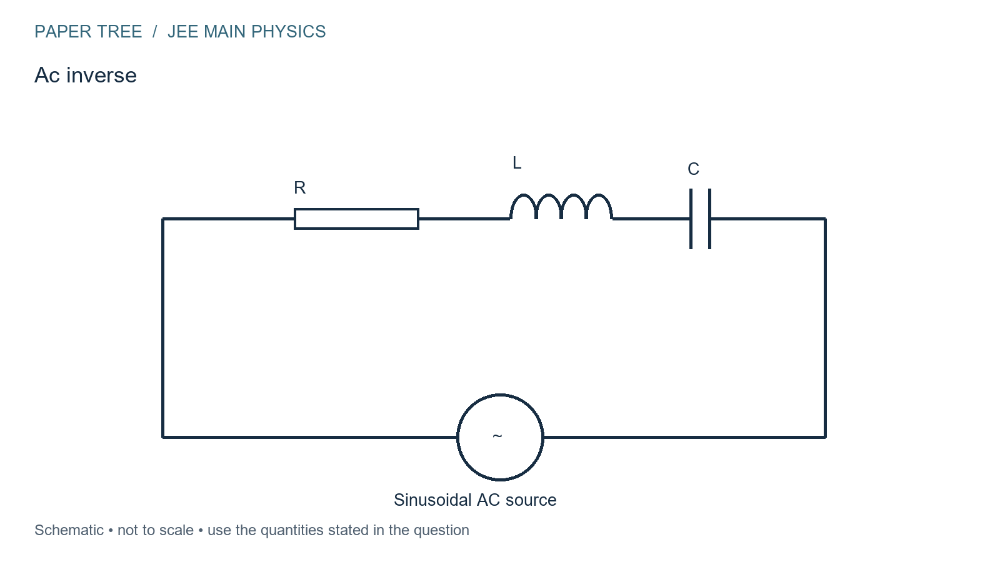
- A. 20 Ω
- B. 30 Ω
- C. 50 Ω
- D. 40 Ω
Answer and explanation
D. 40 Ω
Voltage phasors give V²=VR²+(VL−VC)². Thus VR=80 V and R=VR/I=40 Ω. Average power is IVR=160 W. At resonance the net reactance vanishes and current is V/R=2.5 A.
For the requested outcome — Find the series resistance. — the result is 40 Ω.
In a series RLC circuit at one frequency, the rms source voltage is 100 V and the rms current is 2 A. The inductor voltage is 100 V rms and capacitor voltage is 40 V rms. Components are ideal except the series resistor; 100 > 40. Find the average power absorbed. Choose the closest value.
AC voltages/currents are sinusoidal RMS values unless a waveform or peak value is given. Components are ideal and linear; magnetic-field/rod/rail geometry is mutually perpendicular where the motional-emf formula is invoked. Neglect self-inductance in purely resistive induction loops.
- A. 120 W
- B. 200 W
- C. 80 W
- D. 160 W
Answer and explanation
D. 160 W
Voltage phasors give V²=VR²+(VL−VC)². Thus VR=80 V and R=VR/I=40 Ω. Average power is IVR=160 W. At resonance the net reactance vanishes and current is V/R=2.5 A.
For the requested outcome — Find the average power absorbed. — the result is 160 W.
In a series RLC circuit at one frequency, the rms source voltage is 100 V and the rms current is 2 A. The inductor voltage is 100 V rms and capacitor voltage is 40 V rms. Components are ideal except the series resistor; 100 > 40. If the frequency is changed to resonance while source rms voltage and resistance stay the same, find the new rms current. Choose the closest value.
AC voltages/currents are sinusoidal RMS values unless a waveform or peak value is given. Components are ideal and linear; magnetic-field/rod/rail geometry is mutually perpendicular where the motional-emf formula is invoked. Neglect self-inductance in purely resistive induction loops.
- A. 2.5 A
- B. 2 A
- C. 1.25 A
- D. 3.333 A
Answer and explanation
A. 2.5 A
Voltage phasors give V²=VR²+(VL−VC)². Thus VR=80 V and R=VR/I=40 Ω. Average power is IVR=160 W. At resonance the net reactance vanishes and current is V/R=2.5 A.
For the requested outcome — If the frequency is changed to resonance while source rms voltage and resistance stay the same, find the new rms current. — the result is 2.5 A.
In a series RLC circuit at one frequency, the rms source voltage is 130 V and the rms current is ξ A. The inductor voltage is 140 V rms and capacitor voltage is 90 V rms. Components are ideal except the series resistor; 140 > 90. The recorded value of the series resistance is 24 Ω. Which listed positive value of ξ is consistent with this measurement?
AC voltages/currents are sinusoidal RMS values unless a waveform or peak value is given. Components are ideal and linear; magnetic-field/rod/rail geometry is mutually perpendicular where the motional-emf formula is invoked. Neglect self-inductance in purely resistive induction loops.
Answer and explanation
B. 5
Use the physical relations below with the missing input ξ. The recorded value of the series resistance gives ξ=5 in the unit assigned to ξ in the question. Substitution checks the observation:
Voltage phasors give V²=VR²+(VL−VC)². Thus VR=120 V and R=VR/I=24 Ω. Average power is IVR=600 W. At resonance the net reactance vanishes and current is V/R=5.416666667 A.
In a series RLC circuit at one frequency, the rms source voltage is ξ V and the rms current is 5 A. The inductor voltage is 140 V rms and capacitor voltage is 90 V rms. Components are ideal except the series resistor; 140 > 90. The recorded value of the average power absorbed is 600 W. Which listed positive value of ξ is consistent with this measurement?
AC voltages/currents are sinusoidal RMS values unless a waveform or peak value is given. Components are ideal and linear; magnetic-field/rod/rail geometry is mutually perpendicular where the motional-emf formula is invoked. Neglect self-inductance in purely resistive induction loops.
Answer and explanation
D. 130
Use the physical relations below with the missing input ξ. The recorded value of the average power absorbed gives ξ=130 in the unit assigned to ξ in the question. Substitution checks the observation:
Voltage phasors give V²=VR²+(VL−VC)². Thus VR=120 V and R=VR/I=24 Ω. Average power is IVR=600 W. At resonance the net reactance vanishes and current is V/R=5.416666667 A.
In a series RLC circuit at one frequency, the rms source voltage is 130 V and the rms current is 5 A. The inductor voltage is 140 V rms and capacitor voltage is ξ V rms. Components are ideal except the series resistor; 140 > ξ. If the frequency is changed to resonance while source rms voltage and resistance stay the same. The recorded value of the new rms current is 5.416666667 A. Which listed positive value of ξ is consistent with this measurement?
AC voltages/currents are sinusoidal RMS values unless a waveform or peak value is given. Components are ideal and linear; magnetic-field/rod/rail geometry is mutually perpendicular where the motional-emf formula is invoked. Neglect self-inductance in purely resistive induction loops.
Answer and explanation
D. 90
Use the physical relations below with the missing input ξ. The recorded value of the new rms current gives ξ=90 in the unit assigned to ξ in the question. Substitution checks the observation:
Voltage phasors give V²=VR²+(VL−VC)². Thus VR=120 V and R=VR/I=24 Ω. Average power is IVR=600 W. At resonance the net reactance vanishes and current is V/R=5.416666667 A.
The magnetic flux through each turn of a coil with 100 turns is Φ(t) = 2t² + 3t mWb for t in seconds. The coil has resistance 10 Ω and negligible self-inductance. Its terminals are connected to form a closed circuit. Consider 0 ≤ t ≤ 2 s. Find the induced-current magnitude at the end of the interval. Choose the closest value.
AC voltages/currents are sinusoidal RMS values unless a waveform or peak value is given. Components are ideal and linear; magnetic-field/rod/rail geometry is mutually perpendicular where the motional-emf formula is invoked. Neglect self-inductance in purely resistive induction loops.
- A. 0.22 A
- B. 0.07 A
- C. 0.0011 A
- D. 0.11 A
Answer and explanation
D. 0.11 A
Faraday’s law gives emf magnitude N dΦ/dt = N(2at+b)×10⁻³ V. Divide by R for current; the final value is 0.11 A. Integrating gives transported charge NΔΦ/R=0.14 C. Integrating I²R over the interval yields 0.1086666667 J.
For the requested outcome — Find the induced-current magnitude at the end of the interval. — the result is 0.11 A.
The magnetic flux through each turn of a coil with 100 turns is Φ(t) = 2t² + 3t mWb for t in seconds. The coil has resistance 10 Ω and negligible self-inductance. Its terminals are connected to form a closed circuit. Consider 0 ≤ t ≤ 2 s. Find the magnitude of charge transported during the interval. Choose the closest value.
AC voltages/currents are sinusoidal RMS values unless a waveform or peak value is given. Components are ideal and linear; magnetic-field/rod/rail geometry is mutually perpendicular where the motional-emf formula is invoked. Neglect self-inductance in purely resistive induction loops.
- A. 0.0014 C
- B. 0.07 C
- C. 0.14 C
- D. 0.22 C
Answer and explanation
C. 0.14 C
Faraday’s law gives emf magnitude N dΦ/dt = N(2at+b)×10⁻³ V. Divide by R for current; the final value is 0.11 A. Integrating gives transported charge NΔΦ/R=0.14 C. Integrating I²R over the interval yields 0.1086666667 J.
For the requested outcome — Find the magnitude of charge transported during the interval. — the result is 0.14 C.
The magnetic flux through each turn of a coil with 100 turns is Φ(t) = 2t² + 3t mWb for t in seconds. The coil has resistance 10 Ω and negligible self-inductance. Its terminals are connected to form a closed circuit. Consider 0 ≤ t ≤ 2 s. Find the heat dissipated during the interval. Choose the closest value.
AC voltages/currents are sinusoidal RMS values unless a waveform or peak value is given. Components are ideal and linear; magnetic-field/rod/rail geometry is mutually perpendicular where the motional-emf formula is invoked. Neglect self-inductance in purely resistive induction loops.
- A. 0.05433 J
- B. 0.1087 J
- C. 0.242 J
- D. 0.2173 J
Answer and explanation
B. 0.1087 J
Faraday’s law gives emf magnitude N dΦ/dt = N(2at+b)×10⁻³ V. Divide by R for current; the final value is 0.11 A. Integrating gives transported charge NΔΦ/R=0.14 C. Integrating I²R over the interval yields 0.1086666667 J.
For the requested outcome — Find the heat dissipated during the interval. — the result is 0.1087 J.
The magnetic flux through each turn of a coil with ξ turns is Φ(t) = 3t² + 2t mWb for t in seconds. The coil has resistance 5 Ω and negligible self-inductance. Its terminals are connected to form a closed circuit. Consider 0 ≤ t ≤ 3 s. The recorded value of the induced-current magnitude at the end of the interval is 0.2 A. Which listed positive value of ξ is consistent with this measurement?
AC voltages/currents are sinusoidal RMS values unless a waveform or peak value is given. Components are ideal and linear; magnetic-field/rod/rail geometry is mutually perpendicular where the motional-emf formula is invoked. Neglect self-inductance in purely resistive induction loops.
Answer and explanation
D. 50
Use the physical relations below with the missing input ξ. The recorded value of the induced-current magnitude at the end of the interval gives ξ=50 in the unit assigned to ξ in the question. Substitution checks the observation:
Faraday’s law gives emf magnitude N dΦ/dt = N(2at+b)×10⁻³ V. Divide by R for current; the final value is 0.2 A. Integrating gives transported charge NΔΦ/R=0.33 C. Integrating I²R over the interval yields 0.222 J.
The magnetic flux through each turn of a coil with 50 turns is Φ(t) = 3t² + 2t mWb for t in seconds. The coil has resistance ξ Ω and negligible self-inductance. Its terminals are connected to form a closed circuit. Consider 0 ≤ t ≤ 3 s. The recorded value of the magnitude of charge transported during the interval is 0.33 C. Which listed positive value of ξ is consistent with this measurement?
AC voltages/currents are sinusoidal RMS values unless a waveform or peak value is given. Components are ideal and linear; magnetic-field/rod/rail geometry is mutually perpendicular where the motional-emf formula is invoked. Neglect self-inductance in purely resistive induction loops.
Answer and explanation
A. 5
Use the physical relations below with the missing input ξ. The recorded value of the magnitude of charge transported during the interval gives ξ=5 in the unit assigned to ξ in the question. Substitution checks the observation:
Faraday’s law gives emf magnitude N dΦ/dt = N(2at+b)×10⁻³ V. Divide by R for current; the final value is 0.2 A. Integrating gives transported charge NΔΦ/R=0.33 C. Integrating I²R over the interval yields 0.222 J.
The magnetic flux through each turn of a coil with 50 turns is Φ(t) = 3t² + 2t mWb for t in seconds. The coil has resistance 5 Ω and negligible self-inductance. Its terminals are connected to form a closed circuit. Consider 0 ≤ t ≤ ξ s. The recorded value of the heat dissipated during the interval is 0.222 J. Which listed positive value of ξ is consistent with this measurement?
AC voltages/currents are sinusoidal RMS values unless a waveform or peak value is given. Components are ideal and linear; magnetic-field/rod/rail geometry is mutually perpendicular where the motional-emf formula is invoked. Neglect self-inductance in purely resistive induction loops.
Answer and explanation
A. 3
Use the physical relations below with the missing input ξ. The recorded value of the heat dissipated during the interval gives ξ=3 in the unit assigned to ξ in the question. Substitution checks the observation:
Faraday’s law gives emf magnitude N dΦ/dt = N(2at+b)×10⁻³ V. Divide by R for current; the final value is 0.2 A. Integrating gives transported charge NΔΦ/R=0.33 C. Integrating I²R over the interval yields 0.222 J.
A series circuit has inductance 2 H, total resistance 4 Ω and an ideal 12 V DC source. At t=0 the switch closes with zero current. For this transient use I(t)=(V/R)(1−exp(−Rt/L)). Consider the instant when the current is 0.5 times its final value. Find the elapsed time. Choose the closest value.
AC voltages/currents are sinusoidal RMS values unless a waveform or peak value is given. Components are ideal and linear; magnetic-field/rod/rail geometry is mutually perpendicular where the motional-emf formula is invoked. Neglect self-inductance in purely resistive induction loops.
- A. 0.5 s
- B. 0.3466 s
- C. 1.386 s
- D. 0.1733 s
Answer and explanation
B. 0.3466 s
Set I/I∞=0.5 in the supplied exponential relation: t=−(L/R)ln(1−f)=0.3465735903 s. At I=1.5 A, stored energy LI²/2=2.25 J. Kirchhoff’s law gives L dI/dt=V−IR; multiplying by I gives magnetic-energy growth 9 W.
For the requested outcome — Find the elapsed time. — the result is 0.3466 s.
A series circuit has inductance 2 H, total resistance 4 Ω and an ideal 12 V DC source. At t=0 the switch closes with zero current. For this transient use I(t)=(V/R)(1−exp(−Rt/L)). Consider the instant when the current is 0.5 times its final value. Find the stored magnetic energy. Choose the closest value.
AC voltages/currents are sinusoidal RMS values unless a waveform or peak value is given. Components are ideal and linear; magnetic-field/rod/rail geometry is mutually perpendicular where the motional-emf formula is invoked. Neglect self-inductance in purely resistive induction loops.
- A. 2.25 J
- B. 4.5 J
- C. 9 J
- D. 1.125 J
Answer and explanation
A. 2.25 J
Set I/I∞=0.5 in the supplied exponential relation: t=−(L/R)ln(1−f)=0.3465735903 s. At I=1.5 A, stored energy LI²/2=2.25 J. Kirchhoff’s law gives L dI/dt=V−IR; multiplying by I gives magnetic-energy growth 9 W.
For the requested outcome — Find the stored magnetic energy. — the result is 2.25 J.
A series circuit has inductance 2 H, total resistance 4 Ω and an ideal 12 V DC source. At t=0 the switch closes with zero current. For this transient use I(t)=(V/R)(1−exp(−Rt/L)). Consider the instant when the current is 0.5 times its final value. Find the instantaneous rate of increase of magnetic energy. Choose the closest value.
AC voltages/currents are sinusoidal RMS values unless a waveform or peak value is given. Components are ideal and linear; magnetic-field/rod/rail geometry is mutually perpendicular where the motional-emf formula is invoked. Neglect self-inductance in purely resistive induction loops.
- A. -9 W
- B. 18 W
- C. 4.5 W
- D. 9 W
Answer and explanation
D. 9 W
Set I/I∞=0.5 in the supplied exponential relation: t=−(L/R)ln(1−f)=0.3465735903 s. At I=1.5 A, stored energy LI²/2=2.25 J. Kirchhoff’s law gives L dI/dt=V−IR; multiplying by I gives magnetic-energy growth 9 W.
For the requested outcome — Find the instantaneous rate of increase of magnetic energy. — the result is 9 W.
A coil with unknown inductance L and positive resistance r is connected to an ideal 18 V source at t=0 with zero current. The steady current is 3 A, and the current first reaches 1.5 A at time (ln 2)/2 s. At twice that time, a switch instantaneously reverses the source polarity and inserts an extra 6 Ω in series. The coil current is continuous at switching and the circuit remains closed. Inductance is constant. Find the time after switching at which the current first becomes 0.75 A in the direction opposite to its original direction. Choose the closest value.
Use the idealisations, constants, geometry and sign conventions stated in this question. Any accompanying drawing is schematic.
- A. 0.173287 s
- B. 0.274653 s
- C. 0.804719 s
- D. 0.402359 s
Answer and explanation
D. 0.402359 s
The original steady state gives r=18/3=6 Ω. Half-growth takes (L/r)ln2=(ln2)/2, so L=3 H. At twice that time the initial-direction current is 3(1−1/4)=2.25 A. After switching, total resistance is 12 Ω and the signed steady current is −18/12=−1.5 A. Hence I=−1.5+3.75 exp(−4τ). Setting I=−0.75 gives exp(−4τ)=1/5, so τ=(ln5)/4 s. The zero crossing occurs earlier.
A coil with unknown positive resistance r and inductance L has reached steady current from an ideal 18 V source. Its stored magnetic energy is 6.75 J. In a calibration decay, the source is removed and an extra 6 Ω resistor completes the closed coil loop; the total charge passing through this resistor over the full decay is 0.375 C. In a fresh identical decay, at the instant current falls to 1 A, the 18 V source is reconnected in the original current direction while the extra 6 Ω remains. Switching is ideal and current is continuous. Find the time after reconnection for the current to reach 1.25 A, in ms. Choose the closest value.
Use the idealisations, constants, geometry and sign conventions stated in this question. Any accompanying drawing is schematic.
- A. 86.6434 ms
- B. 43.3217 ms
- C. 173.287 ms
- D. 346.574 ms
Answer and explanation
A. 86.6434 ms
Write I₀=18/r. Energy gives (1/2)L(18/r)²=6.75, hence L=r²/24. Total decay charge is I₀L/(r+6)=0.375. Substitution gives 0.75r/(r+6)=0.375, so r=6 Ω and L=1.5 H. After reconnection the final current is 18/12=1.5 A and time constant is 1.5/12=0.125 s. From initial 1 A, I=1.5−0.5 exp(−τ/0.125). The value 1.25 A occurs after 0.125 ln2 s =125 ln2 ms.
A coil of unknown constant inductance L and positive resistance r is connected to an ideal 18 V DC source. Its steady current is 3 A; during the initial growth from zero current, its current is increasing at 4 A/s when it equals 1 A. Once the steady state has been reached, the source is removed and an extra 6 Ω resistor completes the closed coil loop. During this decay, a switch acts when the heat generated in the extra resistor reaches 3 J. It reconnects the 18 V source with polarity opposite to the original current direction, while retaining the extra 6 Ω resistor in series. Switching is ideal, current is continuous, and no other losses occur. Find the time after this reconnection at which the current first reaches 0.50 A in the direction opposite to its original direction. Choose the closest value.
Use the idealisations, constants, geometry and sign conventions stated in this question. Any accompanying drawing is schematic.
- A. 0.329508 s
- B. 0.376019 s
- C. 0.313191 s
- D. 0.659017 s
Answer and explanation
A. 0.329508 s
Steady current gives r=18/3=6 Ω. During growth, L(dI/dt)=18−rI gives L=(18−6)/4=3 H. At the start of decay, magnetic energy is (1/2)×3×3²=13.5 J. The coil resistance and extra resistor are equal, so each receives half the dissipated energy; 3 J in the extra resistor means 6 J total loss. Remaining energy is 7.5 J and switching current is √5 A in the original direction. After reconnection, total resistance is 12 Ω, the signed final current is −1.5 A, and L/R=0.25 s. Thus I=−1.5+(√5+1.5)exp(−4t). Setting I=−0.50 gives t=ln(√5+1.5)/4 s. The decay heat must not be treated as the total magnetic-energy loss.
Two stationary coils have mutual inductance 0.2 H. Current in coil 1 increases uniformly from 1 A to 5 A in 0.4 s. Coil 2 forms a closed circuit of resistance 2 Ω; its self-inductance and all capacitive effects are negligible. Find the magnitude of the induced current during the ramp. Choose the closest value.
AC voltages/currents are sinusoidal RMS values unless a waveform or peak value is given. Components are ideal and linear; magnetic-field/rod/rail geometry is mutually perpendicular where the motional-emf formula is invoked. Neglect self-inductance in purely resistive induction loops.
- A. 2 A
- B. 1 A
- C. 0.5 A
- D. 1.25 A
Answer and explanation
B. 1 A
Mutual emf magnitude is MΔI/Δt=2 V, constant during the linear ramp. It drives 1 A. Integrating gives charge MΔI/R=0.4 C; I²RΔt gives 0.8 J of heat.
For the requested outcome — Find the magnitude of the induced current during the ramp. — the result is 1 A.
Two stationary coils have mutual inductance 0.2 H. Current in coil 1 increases uniformly from 1 A to 5 A in 0.4 s. Coil 2 forms a closed circuit of resistance 2 Ω; its self-inductance and all capacitive effects are negligible. Find the magnitude of transported charge during the ramp. Choose the closest value.
AC voltages/currents are sinusoidal RMS values unless a waveform or peak value is given. Components are ideal and linear; magnetic-field/rod/rail geometry is mutually perpendicular where the motional-emf formula is invoked. Neglect self-inductance in purely resistive induction loops.
- A. 0.2 C
- B. 0.4 C
- C. 0.8 C
- D. 0.5 C
Answer and explanation
B. 0.4 C
Mutual emf magnitude is MΔI/Δt=2 V, constant during the linear ramp. It drives 1 A. Integrating gives charge MΔI/R=0.4 C; I²RΔt gives 0.8 J of heat.
For the requested outcome — Find the magnitude of transported charge during the ramp. — the result is 0.4 C.
Two stationary coils have mutual inductance 0.2 H. Current in coil 1 increases uniformly from 1 A to 5 A in 0.4 s. Coil 2 forms a closed circuit of resistance 2 Ω; its self-inductance and all capacitive effects are negligible. Find the heat generated in coil 2 during the ramp. Choose the closest value.
AC voltages/currents are sinusoidal RMS values unless a waveform or peak value is given. Components are ideal and linear; magnetic-field/rod/rail geometry is mutually perpendicular where the motional-emf formula is invoked. Neglect self-inductance in purely resistive induction loops.
- A. 0.4 J
- B. 2 J
- C. 0.8 J
- D. 1.6 J
Answer and explanation
C. 0.8 J
Mutual emf magnitude is MΔI/Δt=2 V, constant during the linear ramp. It drives 1 A. Integrating gives charge MΔI/R=0.4 C; I²RΔt gives 0.8 J of heat.
For the requested outcome — Find the heat generated in coil 2 during the ramp. — the result is 0.8 J.
Two stationary coils have mutual inductance ξ H. Current in coil 1 increases uniformly from 2 A to 8 A in 0.6 s. Coil 2 forms a closed circuit of resistance 3 Ω; its self-inductance and all capacitive effects are negligible. The recorded value of the magnitude of the induced current during the ramp is 1 A. Which listed positive value of ξ is consistent with this measurement?
AC voltages/currents are sinusoidal RMS values unless a waveform or peak value is given. Components are ideal and linear; magnetic-field/rod/rail geometry is mutually perpendicular where the motional-emf formula is invoked. Neglect self-inductance in purely resistive induction loops.
- A. 0.45
- B. 0.15
- C. 0.6
- D. 0.3
Answer and explanation
D. 0.3
Use the physical relations below with the missing input ξ. The recorded value of the magnitude of the induced current during the ramp gives ξ=0.3 in the unit assigned to ξ in the question. Substitution checks the observation:
Mutual emf magnitude is MΔI/Δt=3 V, constant during the linear ramp. It drives 1 A. Integrating gives charge MΔI/R=0.6 C; I²RΔt gives 1.8 J of heat.
Two stationary coils have mutual inductance 0.3 H. Current in coil 1 increases uniformly from 2 A to 8 A in 0.6 s. Coil 2 forms a closed circuit of resistance ξ Ω; its self-inductance and all capacitive effects are negligible. The recorded value of the magnitude of transported charge during the ramp is 0.6 C. Which listed positive value of ξ is consistent with this measurement?
AC voltages/currents are sinusoidal RMS values unless a waveform or peak value is given. Components are ideal and linear; magnetic-field/rod/rail geometry is mutually perpendicular where the motional-emf formula is invoked. Neglect self-inductance in purely resistive induction loops.
Answer and explanation
A. 3
Use the physical relations below with the missing input ξ. The recorded value of the magnitude of transported charge during the ramp gives ξ=3 in the unit assigned to ξ in the question. Substitution checks the observation:
Mutual emf magnitude is MΔI/Δt=3 V, constant during the linear ramp. It drives 1 A. Integrating gives charge MΔI/R=0.6 C; I²RΔt gives 1.8 J of heat.
Two stationary coils have mutual inductance 0.3 H. Current in coil 1 increases uniformly from ξ A to 8 A in 0.6 s. Coil 2 forms a closed circuit of resistance 3 Ω; its self-inductance and all capacitive effects are negligible. The recorded value of the heat generated in coil 2 during the ramp is 1.8 J. Which listed positive value of ξ is consistent with this measurement?
AC voltages/currents are sinusoidal RMS values unless a waveform or peak value is given. Components are ideal and linear; magnetic-field/rod/rail geometry is mutually perpendicular where the motional-emf formula is invoked. Neglect self-inductance in purely resistive induction loops.
Answer and explanation
D. 2
Use the physical relations below with the missing input ξ. The recorded value of the heat generated in coil 2 during the ramp gives ξ=2 in the unit assigned to ξ in the question. Substitution checks the observation:
Mutual emf magnitude is MΔI/Δt=3 V, constant during the linear ramp. It drives 1 A. Integrating gives charge MΔI/R=0.6 C; I²RΔt gives 1.8 J of heat.
A conducting rod of length 0.50 m moves to the right on horizontal rails in an unknown uniform perpendicular magnetic field B. The total circuit resistance is initially 4.0 Ω, inductance is negligible, and a constant kinetic friction force opposes the motion. A rightward external force of 3.0 N maintains a steady speed of 4.0 m/s; a force of 5.0 N maintains 8.0 m/s. In a third steady-motion trial the total resistance is changed to 8.0 Ω and the applied force is 2.0 N. The magnetic field and kinetic friction force are unchanged, with sufficient rail length for steady motion. Find the electrical power dissipated in the complete circuit during the third trial. Choose the closest value.
AC voltages/currents are sinusoidal RMS values unless a waveform or peak value is given. Components are ideal and linear; magnetic-field/rod/rail geometry is mutually perpendicular where the motional-emf formula is invoked. Neglect self-inductance in purely resistive induction loops.
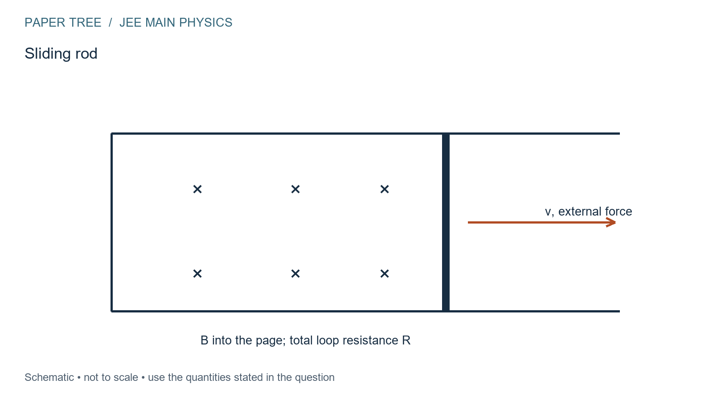
- A. 8 W
- B. 4 W
- C. 2 W
- D. 16 W
Answer and explanation
B. 4 W
At steady speed, F=f+B²L²v/R. Subtracting the first two trials gives B²L²/4=(5-3)/(8-4)=0.5 N s/m, so B²L²=2 and f=1 N. In the third trial the drag coefficient is 2/8=0.25 N s/m, so v=(2-1)/0.25=4 m/s. Electrical dissipation is magnetic-drag power (F-f)v=1×4=4 W; friction dissipates the other 4 W supplied mechanically.
A conducting rod of mass 0.50 kg and length 0.50 m slides to the right on horizontal rails as illustrated. The uniform field into the page is 2.0 T; total closed-loop resistance is 4.0 Ω and inductance is negligible. The kinetic friction force on the rod has constant magnitude 0.50 N while it moves. A constant 2.0 N force to the right first maintains steady motion. This applied force is then removed abruptly. The rails and magnetic field extend through the entire subsequent motion; the rod eventually stops. Neglect all other losses. Find the total Joule heat generated after the applied force is removed. Choose the closest value.
Use the idealisations, constants, geometry and sign conventions stated in this question. Any accompanying drawing is schematic.
- A. 3 J
- B. 5.77259 J
- C. 6.45482 J
- D. 9 J
Answer and explanation
B. 5.77259 J
Magnetic drag is bv with b=(BL)²/R=0.25 N s/m. The initial steady speed is (2−0.5)/0.25=6 m/s. During coasting, m dv/dt=−f−bv. The stopping distance is ∫₀⁶ mv/(f+bv) dv = (m/b)[6−(f/b)ln(1+6b/f)] =12−4ln4 m. Initial kinetic energy is 9 J; friction dissipates 0.5(12−4ln4) J. The rest becomes Joule heat: 9−6+2ln4=3+2ln4 J. All energy has been accounted for when the rod stops.
A conducting rod of length 0.5 m slides at constant speed on smooth horizontal rails in a uniform perpendicular magnetic field 2 T. The closed circuit has total resistance 4 Ω and negligible inductance. A horizontal external force 2 N balances the magnetic drag. Rails and field are long enough for steady motion. Find the charge passing a circuit cross-section as the rod moves 2 m. Choose the closest value.
AC voltages/currents are sinusoidal RMS values unless a waveform or peak value is given. Components are ideal and linear; magnetic-field/rod/rail geometry is mutually perpendicular where the motional-emf formula is invoked. Neglect self-inductance in purely resistive induction loops.
- A. 0.5 C
- B. 1 C
- C. 4 C
- D. 0.25 C
Answer and explanation
A. 0.5 C
Force balance gives F=BIL, so I=2 A. Motional emf BLv=IR then gives v=8 m/s. Mechanical power Fv equals I²R=16 W. For distance d, charge ∫I dt=BLd/R, giving 0.5 C for 2 m.
For the requested outcome — Find the charge passing a circuit cross-section as the rod moves 2 m. — the result is 0.5 C.
A conducting rod of length 0.4 m slides at constant speed on smooth horizontal rails in a uniform perpendicular magnetic field ξ T. The closed circuit has total resistance 3 Ω and negligible inductance. A horizontal external force 1.2 N balances the magnetic drag. Rails and field are long enough for steady motion. The recorded value of the steady speed is 10 m/s. Which listed positive value of ξ is consistent with this measurement?
AC voltages/currents are sinusoidal RMS values unless a waveform or peak value is given. Components are ideal and linear; magnetic-field/rod/rail geometry is mutually perpendicular where the motional-emf formula is invoked. Neglect self-inductance in purely resistive induction loops.
Answer and explanation
C. 1.5
Use the physical relations below with the missing input ξ. The recorded value of the steady speed gives ξ=1.5 in the unit assigned to ξ in the question. Substitution checks the observation:
Force balance gives F=BIL, so I=2 A. Motional emf BLv=IR then gives v=10 m/s. Mechanical power Fv equals I²R=12 W. For distance d, charge ∫I dt=BLd/R, giving 0.4 C for 2 m.
A conducting rod of length 0.4 m slides at constant speed on smooth horizontal rails in a uniform perpendicular magnetic field 1.5 T. The closed circuit has total resistance 3 Ω and negligible inductance. A horizontal external force ξ N balances the magnetic drag. Rails and field are long enough for steady motion. The recorded value of the Joule-heating power is 12 W. Which listed positive value of ξ is consistent with this measurement?
AC voltages/currents are sinusoidal RMS values unless a waveform or peak value is given. Components are ideal and linear; magnetic-field/rod/rail geometry is mutually perpendicular where the motional-emf formula is invoked. Neglect self-inductance in purely resistive induction loops.
Answer and explanation
C. 1.2
Use the physical relations below with the missing input ξ. The recorded value of the Joule-heating power gives ξ=1.2 in the unit assigned to ξ in the question. Substitution checks the observation:
Force balance gives F=BIL, so I=2 A. Motional emf BLv=IR then gives v=10 m/s. Mechanical power Fv equals I²R=12 W. For distance d, charge ∫I dt=BLd/R, giving 0.4 C for 2 m.
A conducting rod of length 0.4 m slides at constant speed on smooth horizontal rails in a uniform perpendicular magnetic field 1.5 T. The closed circuit has total resistance ξ Ω and negligible inductance. A horizontal external force 1.2 N balances the magnetic drag. Rails and field are long enough for steady motion. The recorded value of the charge passing a circuit cross-section as the rod moves 2 m is 0.4 C. Which listed positive value of ξ is consistent with this measurement?
AC voltages/currents are sinusoidal RMS values unless a waveform or peak value is given. Components are ideal and linear; magnetic-field/rod/rail geometry is mutually perpendicular where the motional-emf formula is invoked. Neglect self-inductance in purely resistive induction loops.
Answer and explanation
D. 3
Use the physical relations below with the missing input ξ. The recorded value of the charge passing a circuit cross-section as the rod moves 2 m gives ξ=3 in the unit assigned to ξ in the question. Substitution checks the observation:
Force balance gives F=BIL, so I=2 A. Motional emf BLv=IR then gives v=10 m/s. Mechanical power Fv equals I²R=12 W. For distance d, charge ∫I dt=BLd/R, giving 0.4 C for 2 m.
An ideal transformer has 1000 primary turns and 200 secondary turns. The primary receives 240 V rms AC. A 12 Ω resistor is the only secondary load. Ignore magnetising current and losses. Find the primary rms current. Choose the closest value.
AC voltages/currents are sinusoidal RMS values unless a waveform or peak value is given. Components are ideal and linear; magnetic-field/rod/rail geometry is mutually perpendicular where the motional-emf formula is invoked. Neglect self-inductance in purely resistive induction loops.
- A. 0.8 A
- B. 4 A
- C. 20 A
- D. 1.6 A
Answer and explanation
A. 0.8 A
The turns ratio gives Vs=48 V. Secondary current is 4 A; equal input and output power gives Ip=0.8 A and power=192 W. The reflected resistance is R(Np/Ns)²=300 Ω.
For the requested outcome — Find the primary rms current. — the result is 0.8 A.
An ideal transformer has 1000 primary turns and 200 secondary turns. The primary receives 240 V rms AC. A 12 Ω resistor is the only secondary load. Ignore magnetising current and losses. Find the average input power. Choose the closest value.
AC voltages/currents are sinusoidal RMS values unless a waveform or peak value is given. Components are ideal and linear; magnetic-field/rod/rail geometry is mutually perpendicular where the motional-emf formula is invoked. Neglect self-inductance in purely resistive induction loops.
- A. 960 W
- B. 192 W
- C. 96 W
- D. 38.4 W
Answer and explanation
B. 192 W
The turns ratio gives Vs=48 V. Secondary current is 4 A; equal input and output power gives Ip=0.8 A and power=192 W. The reflected resistance is R(Np/Ns)²=300 Ω.
For the requested outcome — Find the average input power. — the result is 192 W.
An ideal transformer has 1000 primary turns and 200 secondary turns. The primary receives 240 V rms AC. A 12 Ω resistor is the only secondary load. Ignore magnetising current and losses. Find the effective load resistance seen at the primary, defined by Vp/Ip. Choose the closest value.
AC voltages/currents are sinusoidal RMS values unless a waveform or peak value is given. Components are ideal and linear; magnetic-field/rod/rail geometry is mutually perpendicular where the motional-emf formula is invoked. Neglect self-inductance in purely resistive induction loops.
- A. 60 Ω
- B. 12 Ω
- C. 0.48 Ω
- D. 300 Ω
Answer and explanation
D. 300 Ω
The turns ratio gives Vs=48 V. Secondary current is 4 A; equal input and output power gives Ip=0.8 A and power=192 W. The reflected resistance is R(Np/Ns)²=300 Ω.
For the requested outcome — Find the effective load resistance seen at the primary, defined by Vp/Ip. — the result is 300 Ω.
An ideal transformer has ξ primary turns and 200 secondary turns. The primary receives 200 V rms AC. A 10 Ω resistor is the only secondary load. Ignore magnetising current and losses. The recorded value of the primary rms current is 1.25 A. Which listed positive value of ξ is consistent with this measurement?
AC voltages/currents are sinusoidal RMS values unless a waveform or peak value is given. Components are ideal and linear; magnetic-field/rod/rail geometry is mutually perpendicular where the motional-emf formula is invoked. Neglect self-inductance in purely resistive induction loops.
- A. 1200
- B. 400
- C. 800
- D. 1600
Answer and explanation
C. 800
Use the physical relations below with the missing input ξ. The recorded value of the primary rms current gives ξ=800 in the unit assigned to ξ in the question. Substitution checks the observation:
The turns ratio gives Vs=50 V. Secondary current is 5 A; equal input and output power gives Ip=1.25 A and power=250 W. The reflected resistance is R(Np/Ns)²=160 Ω.
An ideal transformer has 800 primary turns and ξ secondary turns. The primary receives 200 V rms AC. A 10 Ω resistor is the only secondary load. Ignore magnetising current and losses. The recorded value of the average input power is 250 W. Which listed positive value of ξ is consistent with this measurement?
AC voltages/currents are sinusoidal RMS values unless a waveform or peak value is given. Components are ideal and linear; magnetic-field/rod/rail geometry is mutually perpendicular where the motional-emf formula is invoked. Neglect self-inductance in purely resistive induction loops.
Answer and explanation
B. 200
Use the physical relations below with the missing input ξ. The recorded value of the average input power gives ξ=200 in the unit assigned to ξ in the question. Substitution checks the observation:
The turns ratio gives Vs=50 V. Secondary current is 5 A; equal input and output power gives Ip=1.25 A and power=250 W. The reflected resistance is R(Np/Ns)²=160 Ω.
An ideal transformer has 800 primary turns and 200 secondary turns. The primary receives 200 V rms AC. A ξ Ω resistor is the only secondary load. Ignore magnetising current and losses. The recorded value of the effective load resistance seen at the primary, defined by Vp/Ip is 160 Ω. Which listed positive value of ξ is consistent with this measurement?
AC voltages/currents are sinusoidal RMS values unless a waveform or peak value is given. Components are ideal and linear; magnetic-field/rod/rail geometry is mutually perpendicular where the motional-emf formula is invoked. Neglect self-inductance in purely resistive induction loops.
Answer and explanation
B. 10
Use the physical relations below with the missing input ξ. The recorded value of the effective load resistance seen at the primary, defined by Vp/Ip gives ξ=10 in the unit assigned to ξ in the question. Substitution checks the observation:
The turns ratio gives Vs=50 V. Secondary current is 5 A; equal input and output power gives Ip=1.25 A and power=250 W. The reflected resistance is R(Np/Ns)²=160 Ω.
Which wavelength range correctly matches the band highlighted in the accompanying electromagnetic-spectrum diagram? Use the diagram with band 4 highlighted.
Use a plane wave in vacuum unless stated otherwise. Spectrum boundaries are approximate conventional bands, not sharp universal cutoffs; diagrams are schematic.
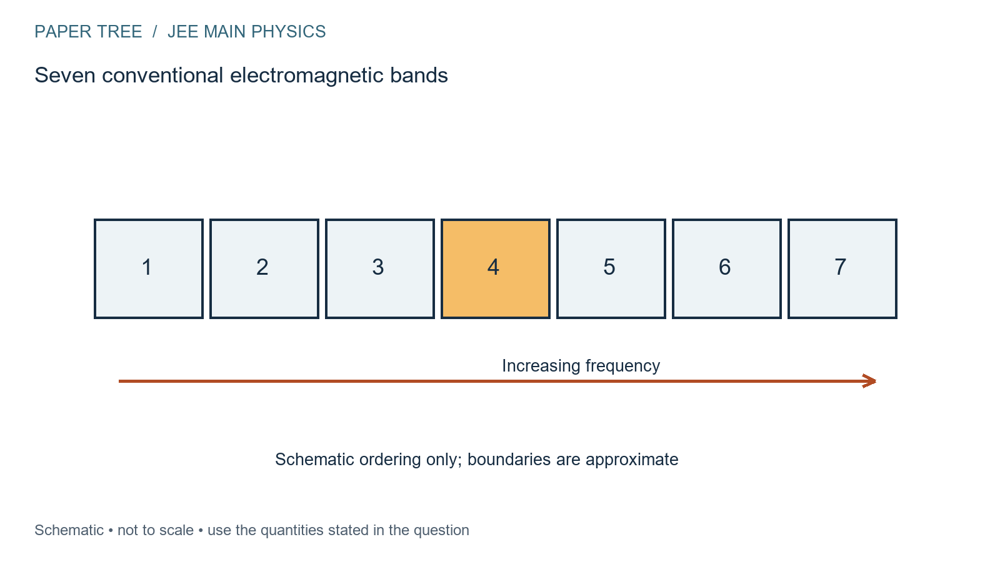
- A. wavelengths from about 400 nm to 700 nm
- B. wavelengths from about 1 mm to 0.1 m
- C. wavelengths from about 700 nm to 1 mm
- D. wavelengths longer than about 0.1 m
Answer and explanation
A. wavelengths from about 400 nm to 700 nm
The highlighted visible light region has wavelengths from about 400 nm to 700 nm.
Which wavelength range correctly matches the band highlighted in the accompanying electromagnetic-spectrum diagram? Use the diagram with band 1 highlighted.
Use a plane wave in vacuum unless stated otherwise. Spectrum boundaries are approximate conventional bands, not sharp universal cutoffs; diagrams are schematic.
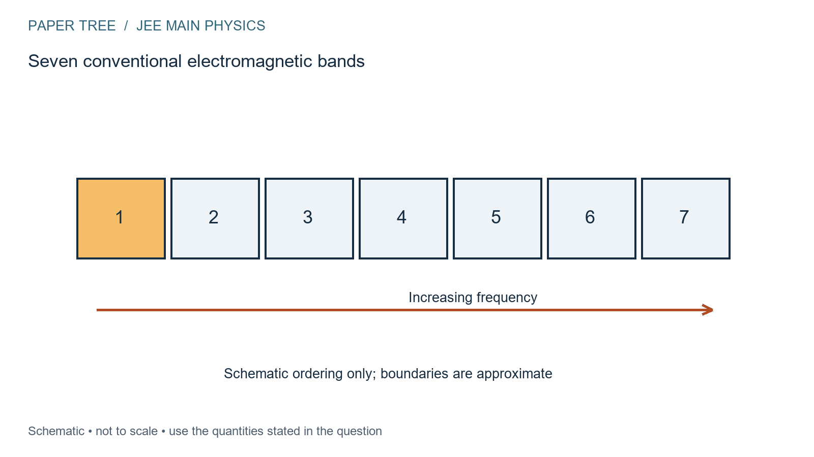
- A. wavelengths from about 700 nm to 1 mm
- B. wavelengths from about 400 nm to 700 nm
- C. wavelengths longer than about 0.1 m
- D. wavelengths from about 1 mm to 0.1 m
Answer and explanation
C. wavelengths longer than about 0.1 m
The highlighted radio waves region has wavelengths longer than about 0.1 m.
Which wavelength range correctly matches the band highlighted in the accompanying electromagnetic-spectrum diagram? Use the diagram with band 5 highlighted.
Use a plane wave in vacuum unless stated otherwise. Spectrum boundaries are approximate conventional bands, not sharp universal cutoffs; diagrams are schematic.
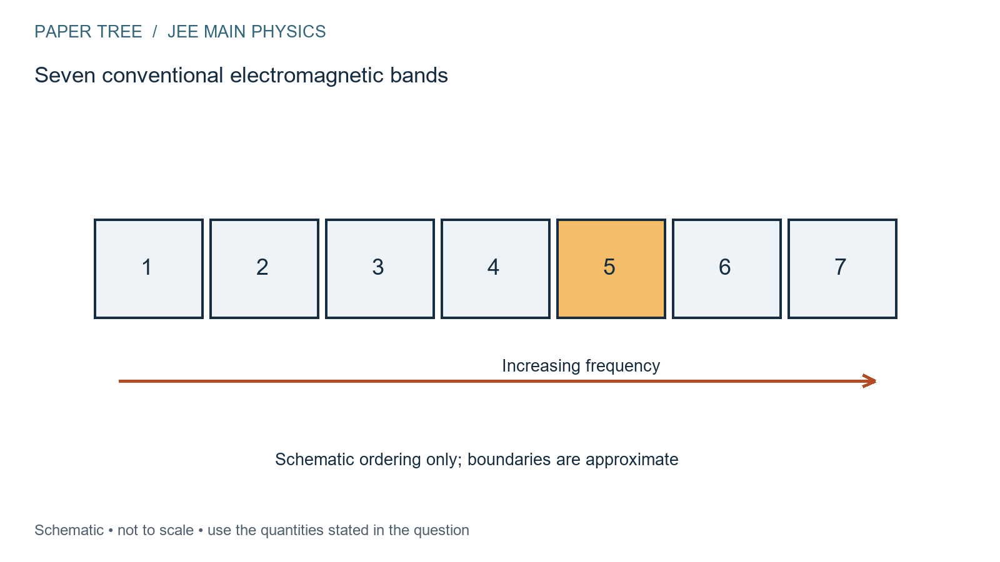
- A. wavelengths longer than about 0.1 m
- B. wavelengths from about 1 nm to 400 nm
- C. wavelengths from about 1 mm to 0.1 m
- D. wavelengths from about 700 nm to 1 mm
Answer and explanation
B. wavelengths from about 1 nm to 400 nm
The highlighted ultraviolet radiation region has wavelengths from about 1 nm to 400 nm.
Which wavelength range correctly matches the band highlighted in the accompanying electromagnetic-spectrum diagram? Use the diagram with band 3 highlighted.
Use a plane wave in vacuum unless stated otherwise. Spectrum boundaries are approximate conventional bands, not sharp universal cutoffs; diagrams are schematic.
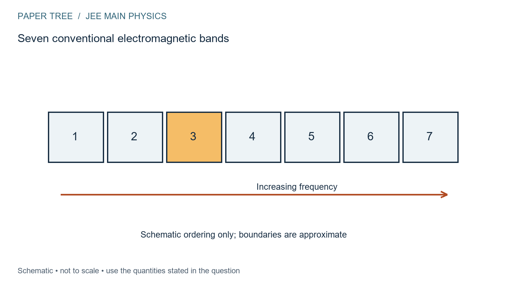
- A. wavelengths from about 400 nm to 700 nm
- B. wavelengths from about 700 nm to 1 mm
- C. wavelengths longer than about 0.1 m
- D. wavelengths from about 1 mm to 0.1 m
Answer and explanation
B. wavelengths from about 700 nm to 1 mm
The highlighted infrared radiation region has wavelengths from about 700 nm to 1 mm.
Which source mechanism is characteristic of the highlighted gamma rays region? Use the diagram with band 7 highlighted.
Use a plane wave in vacuum unless stated otherwise. Spectrum boundaries are approximate conventional bands, not sharp universal cutoffs; diagrams are schematic.
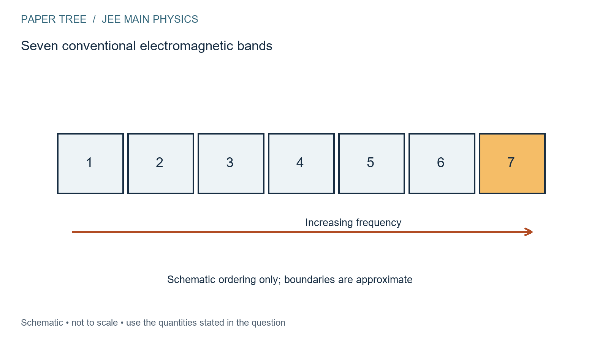
- A. transitions within atomic nuclei
- B. very hot bodies, arcs and atomic transitions
- C. hot bodies and molecular vibrations
- D. accelerated charges in conducting antennas
Answer and explanation
A. transitions within atomic nuclei
Gamma rays are commonly produced by transitions within atomic nuclei.
Which source mechanism is characteristic of the highlighted infrared radiation region? Use the diagram with band 3 highlighted.
Use a plane wave in vacuum unless stated otherwise. Spectrum boundaries are approximate conventional bands, not sharp universal cutoffs; diagrams are schematic.
- A. electronic transitions in atoms and molecules
- B. accelerated charges in conducting antennas
- C. hot bodies and molecular vibrations
- D. rapid electron deceleration or inner-shell transitions
Answer and explanation
C. hot bodies and molecular vibrations
Infrared radiation are commonly produced by hot bodies and molecular vibrations.
Which listed band lies immediately toward higher frequency from the band highlighted in the accompanying diagram? Use the diagram with band 1 highlighted.
Use a plane wave in vacuum unless stated otherwise. Spectrum boundaries are approximate conventional bands, not sharp universal cutoffs; diagrams are schematic.
- A. microwaves
- B. ultraviolet radiation
- C. infrared radiation
- D. visible light
Answer and explanation
A. microwaves
The electromagnetic-spectrum ordering places microwaves immediately toward higher frequency from radio waves.
Which listed band lies immediately toward lower frequency from the band highlighted in the accompanying diagram? Use the diagram with band 7 highlighted.
Use a plane wave in vacuum unless stated otherwise. Spectrum boundaries are approximate conventional bands, not sharp universal cutoffs; diagrams are schematic.
- A. microwaves
- B. radio waves
- C. X-rays
- D. infrared radiation
Answer and explanation
C. X-rays
The electromagnetic-spectrum ordering places X-rays immediately toward lower frequency from gamma rays.
The highlighted X-rays region in the accompanying spectrum is most directly associated with which application? Use the diagram with band 6 highlighted.
Use a plane wave in vacuum unless stated otherwise. Spectrum boundaries are approximate conventional bands, not sharp universal cutoffs; diagrams are schematic.
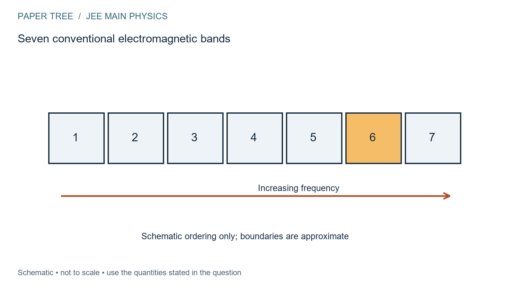
- A. thermal imaging and remote controls
- B. radar and satellite communication
- C. radio and television communication
- D. medical radiography and crystal-structure studies
Answer and explanation
D. medical radiography and crystal-structure studies
A standard application of X-rays is medical radiography and crystal-structure studies.
Which wavelength range correctly matches the band highlighted in the accompanying electromagnetic-spectrum diagram? Use the diagram with band 2 highlighted.
Use a plane wave in vacuum unless stated otherwise. Spectrum boundaries are approximate conventional bands, not sharp universal cutoffs; diagrams are schematic.
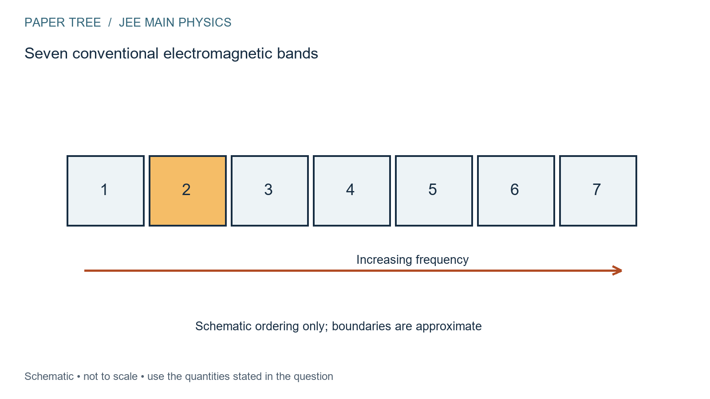
- A. wavelengths from about 400 nm to 700 nm
- B. wavelengths from about 1 mm to 0.1 m
- C. wavelengths longer than about 0.1 m
- D. wavelengths from about 700 nm to 1 mm
Answer and explanation
B. wavelengths from about 1 mm to 0.1 m
The highlighted microwaves region has wavelengths from about 1 mm to 0.1 m.
The highlighted visible light region in the accompanying spectrum is most directly associated with which application? Use the diagram with band 4 highlighted.
Use a plane wave in vacuum unless stated otherwise. Spectrum boundaries are approximate conventional bands, not sharp universal cutoffs; diagrams are schematic.
- A. cancer radiotherapy and sterilization of equipment
- B. medical radiography and crystal-structure studies
- C. radio and television communication
- D. human vision and optical imaging
Answer and explanation
D. human vision and optical imaging
A standard application of visible light is human vision and optical imaging.
Which listed band lies immediately toward higher frequency from the band highlighted in the accompanying diagram? Use the diagram with band 5 highlighted.
Use a plane wave in vacuum unless stated otherwise. Spectrum boundaries are approximate conventional bands, not sharp universal cutoffs; diagrams are schematic.
- A. microwaves
- B. radio waves
- C. infrared radiation
- D. X-rays
Answer and explanation
D. X-rays
The electromagnetic-spectrum ordering places X-rays immediately toward higher frequency from ultraviolet radiation.
Identify the radiation band highlighted in the accompanying electromagnetic-spectrum diagram. Use the diagram with band 5 highlighted.
Use a plane wave in vacuum unless stated otherwise. Spectrum boundaries are approximate conventional bands, not sharp universal cutoffs; diagrams are schematic.
- A. radio waves
- B. gamma rays
- C. ultraviolet radiation
- D. microwaves
Answer and explanation
C. ultraviolet radiation
The highlighted position identifies ultraviolet radiation, characterized by wavelengths from about 1 nm to 400 nm.
Which source mechanism is characteristic of the highlighted microwaves region? Use the diagram with band 2 highlighted.
Use a plane wave in vacuum unless stated otherwise. Spectrum boundaries are approximate conventional bands, not sharp universal cutoffs; diagrams are schematic.
- A. hot bodies and molecular vibrations
- B. very hot bodies, arcs and atomic transitions
- C. transitions within atomic nuclei
- D. special vacuum tubes such as magnetrons
Answer and explanation
D. special vacuum tubes such as magnetrons
Microwaves are commonly produced by special vacuum tubes such as magnetrons.
The highlighted gamma rays region in the accompanying spectrum is most directly associated with which application? Use the diagram with band 7 highlighted.
Use a plane wave in vacuum unless stated otherwise. Spectrum boundaries are approximate conventional bands, not sharp universal cutoffs; diagrams are schematic.
- A. cancer radiotherapy and sterilization of equipment
- B. human vision and optical imaging
- C. radar and satellite communication
- D. thermal imaging and remote controls
Answer and explanation
A. cancer radiotherapy and sterilization of equipment
A standard application of gamma rays is cancer radiotherapy and sterilization of equipment.
Which wavelength range correctly matches the band highlighted in the accompanying electromagnetic-spectrum diagram? Use the diagram with band 6 highlighted.
Use a plane wave in vacuum unless stated otherwise. Spectrum boundaries are approximate conventional bands, not sharp universal cutoffs; diagrams are schematic.
- A. wavelengths from about 1 mm to 0.1 m
- B. wavelengths from about 700 nm to 1 mm
- C. wavelengths from about 10⁻³ nm to 1 nm
- D. wavelengths longer than about 0.1 m
Answer and explanation
C. wavelengths from about 10⁻³ nm to 1 nm
The highlighted X-rays region has wavelengths from about 10⁻³ nm to 1 nm.
The highlighted ultraviolet radiation region in the accompanying spectrum is most directly associated with which application? Use the diagram with band 5 highlighted.
Use a plane wave in vacuum unless stated otherwise. Spectrum boundaries are approximate conventional bands, not sharp universal cutoffs; diagrams are schematic.
- A. cancer radiotherapy and sterilization of equipment
- B. sterilization and fluorescence
- C. radio and television communication
- D. radar and satellite communication
Answer and explanation
B. sterilization and fluorescence
A standard application of ultraviolet radiation is sterilization and fluorescence.
Identify the radiation band highlighted in the accompanying electromagnetic-spectrum diagram. Use the diagram with band 3 highlighted.
Use a plane wave in vacuum unless stated otherwise. Spectrum boundaries are approximate conventional bands, not sharp universal cutoffs; diagrams are schematic.
- A. gamma rays
- B. infrared radiation
- C. X-rays
- D. ultraviolet radiation
Answer and explanation
B. infrared radiation
The highlighted position identifies infrared radiation, characterized by wavelengths from about 700 nm to 1 mm.
Which wavelength range correctly matches the band highlighted in the accompanying electromagnetic-spectrum diagram? Use the diagram with band 7 highlighted.
Use a plane wave in vacuum unless stated otherwise. Spectrum boundaries are approximate conventional bands, not sharp universal cutoffs; diagrams are schematic.
- A. wavelengths from about 700 nm to 1 mm
- B. wavelengths longer than about 0.1 m
- C. wavelengths shorter than about 10⁻³ nm
- D. wavelengths from about 1 mm to 0.1 m
Answer and explanation
C. wavelengths shorter than about 10⁻³ nm
The highlighted gamma rays region has wavelengths shorter than about 10⁻³ nm.
Which listed band lies immediately toward higher frequency from the band highlighted in the accompanying diagram? Use the diagram with band 6 highlighted.
Use a plane wave in vacuum unless stated otherwise. Spectrum boundaries are approximate conventional bands, not sharp universal cutoffs; diagrams are schematic.
- A. gamma rays
- B. infrared radiation
- C. microwaves
- D. radio waves
Answer and explanation
A. gamma rays
The electromagnetic-spectrum ordering places gamma rays immediately toward higher frequency from X-rays.
Which listed band lies immediately toward higher frequency from the band highlighted in the accompanying diagram? Use the diagram with band 3 highlighted.
Use a plane wave in vacuum unless stated otherwise. Spectrum boundaries are approximate conventional bands, not sharp universal cutoffs; diagrams are schematic.
- A. ultraviolet radiation
- B. radio waves
- C. microwaves
- D. visible light
Answer and explanation
D. visible light
The electromagnetic-spectrum ordering places visible light immediately toward higher frequency from infrared radiation.
Identify the radiation band highlighted in the accompanying electromagnetic-spectrum diagram. Use the diagram with band 7 highlighted.
Use a plane wave in vacuum unless stated otherwise. Spectrum boundaries are approximate conventional bands, not sharp universal cutoffs; diagrams are schematic.
- A. infrared radiation
- B. microwaves
- C. visible light
- D. gamma rays
Answer and explanation
D. gamma rays
The highlighted position identifies gamma rays, characterized by wavelengths shorter than about 10⁻³ nm.
Identify the radiation band highlighted in the accompanying electromagnetic-spectrum diagram. Use the diagram with band 1 highlighted.
Use a plane wave in vacuum unless stated otherwise. Spectrum boundaries are approximate conventional bands, not sharp universal cutoffs; diagrams are schematic.
- A. infrared radiation
- B. visible light
- C. radio waves
- D. ultraviolet radiation
Answer and explanation
C. radio waves
The highlighted position identifies radio waves, characterized by wavelengths longer than about 0.1 m.
A monochromatic plane wave has peak electric field 20 V/m and frequency 5 × 10¹⁴ Hz. It is normally incident on a detector of area 3 cm². A fraction 0.25 is reflected; of the absorbed photons, 0.05 produce one collected electron each. The photocurrent charges an initially uncharged capacitor ξ μF for 1 s; an ideal collection arrangement maintains that constant current. Take ε0=8.85×10⁻¹² F/m, c=3×10⁸ m/s, h=6.63×10⁻³⁴ J s and e=1.6×10⁻¹⁹ C. In this arrangement, the following outcome is measured: the stored capacitor energy then = 2.078294056 × 10⁻⁷ J. Which listed positive value of ξ is consistent with that outcome?
Use a plane wave in vacuum unless stated otherwise. Spectrum boundaries are approximate conventional bands, not sharp universal cutoffs; diagrams are schematic.
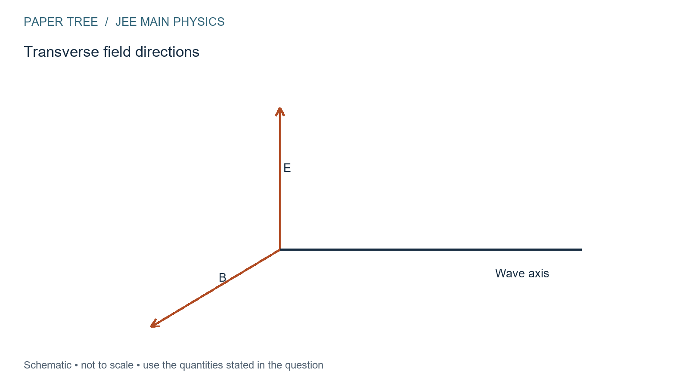
Answer and explanation
B. 20
Use the coupled physical relations below. The missing input is ξ=20 in the units assigned in the stem.
Use mean rather than peak wave energy density. Absorbed power is 0.000119475 W and current is 2.883257919 × 10⁻⁶ A. Charge It gives voltage 0.1441628959 V and capacitor energy 2.078294056 × 10⁻⁷ J. The requested energy ratio is 0.001739522123. The specified ideal collection arrangement is part of the model; no claim is made that a passive solar cell holds constant current at arbitrary voltage.
The highlighted infrared radiation region in the accompanying spectrum is most directly associated with which application? Use the diagram with band 3 highlighted.
Use a plane wave in vacuum unless stated otherwise. Spectrum boundaries are approximate conventional bands, not sharp universal cutoffs; diagrams are schematic.
- A. medical radiography and crystal-structure studies
- B. cancer radiotherapy and sterilization of equipment
- C. sterilization and fluorescence
- D. thermal imaging and remote controls
Answer and explanation
D. thermal imaging and remote controls
A standard application of infrared radiation is thermal imaging and remote controls.
Which source mechanism is characteristic of the highlighted ultraviolet radiation region? Use the diagram with band 5 highlighted.
Use a plane wave in vacuum unless stated otherwise. Spectrum boundaries are approximate conventional bands, not sharp universal cutoffs; diagrams are schematic.
- A. very hot bodies, arcs and atomic transitions
- B. rapid electron deceleration or inner-shell transitions
- C. hot bodies and molecular vibrations
- D. accelerated charges in conducting antennas
Answer and explanation
A. very hot bodies, arcs and atomic transitions
Ultraviolet radiation are commonly produced by very hot bodies, arcs and atomic transitions.
Identify the radiation band highlighted in the accompanying electromagnetic-spectrum diagram. Use the diagram with band 2 highlighted.
Use a plane wave in vacuum unless stated otherwise. Spectrum boundaries are approximate conventional bands, not sharp universal cutoffs; diagrams are schematic.
- A. X-rays
- B. microwaves
- C. ultraviolet radiation
- D. visible light
Answer and explanation
B. microwaves
The highlighted position identifies microwaves, characterized by wavelengths from about 1 mm to 0.1 m.
Identify the radiation band highlighted in the accompanying electromagnetic-spectrum diagram. Use the diagram with band 6 highlighted.
Use a plane wave in vacuum unless stated otherwise. Spectrum boundaries are approximate conventional bands, not sharp universal cutoffs; diagrams are schematic.
- A. radio waves
- B. X-rays
- C. infrared radiation
- D. microwaves
Answer and explanation
B. X-rays
The highlighted position identifies X-rays, characterized by wavelengths from about 10⁻³ nm to 1 nm.
Identify the radiation band highlighted in the accompanying electromagnetic-spectrum diagram. Use the diagram with band 4 highlighted.
Use a plane wave in vacuum unless stated otherwise. Spectrum boundaries are approximate conventional bands, not sharp universal cutoffs; diagrams are schematic.
- A. visible light
- B. X-rays
- C. radio waves
- D. gamma rays
Answer and explanation
A. visible light
The highlighted position identifies visible light, characterized by wavelengths from about 400 nm to 700 nm.
The highlighted radio waves region in the accompanying spectrum is most directly associated with which application? Use the diagram with band 1 highlighted.
Use a plane wave in vacuum unless stated otherwise. Spectrum boundaries are approximate conventional bands, not sharp universal cutoffs; diagrams are schematic.
- A. thermal imaging and remote controls
- B. radio and television communication
- C. human vision and optical imaging
- D. sterilization and fluorescence
Answer and explanation
B. radio and television communication
A standard application of radio waves is radio and television communication.
Which source mechanism is characteristic of the highlighted radio waves region? Use the diagram with band 1 highlighted.
Use a plane wave in vacuum unless stated otherwise. Spectrum boundaries are approximate conventional bands, not sharp universal cutoffs; diagrams are schematic.
- A. accelerated charges in conducting antennas
- B. electronic transitions in atoms and molecules
- C. rapid electron deceleration or inner-shell transitions
- D. special vacuum tubes such as magnetrons
Answer and explanation
A. accelerated charges in conducting antennas
Radio waves are commonly produced by accelerated charges in conducting antennas.
Which source mechanism is characteristic of the highlighted X-rays region? Use the diagram with band 6 highlighted.
Use a plane wave in vacuum unless stated otherwise. Spectrum boundaries are approximate conventional bands, not sharp universal cutoffs; diagrams are schematic.
- A. transitions within atomic nuclei
- B. rapid electron deceleration or inner-shell transitions
- C. special vacuum tubes such as magnetrons
- D. electronic transitions in atoms and molecules
Answer and explanation
B. rapid electron deceleration or inner-shell transitions
X-rays are commonly produced by rapid electron deceleration or inner-shell transitions.
A monochromatic plane wave has peak electric field ξ V/m and frequency 5 × 10¹⁴ Hz. It is normally incident on a detector of area 3 cm². A fraction 0.25 is reflected; of the absorbed photons, 0.05 produce one collected electron each. The photocurrent charges an initially uncharged capacitor 20 μF for 1 s; an ideal collection arrangement maintains that constant current. Take ε0=8.85×10⁻¹² F/m, c=3×10⁸ m/s, h=6.63×10⁻³⁴ J s and e=1.6×10⁻¹⁹ C. In this arrangement, the following outcome is measured: stored capacitor energy divided by optical energy absorbed over that time = 0.001739522123 . Which listed positive value of ξ is consistent with that outcome?
Use a plane wave in vacuum unless stated otherwise. Spectrum boundaries are approximate conventional bands, not sharp universal cutoffs; diagrams are schematic.
Answer and explanation
B. 20
Use the coupled physical relations below. The missing input is ξ=20 in the units assigned in the stem.
Use mean rather than peak wave energy density. Absorbed power is 0.000119475 W and current is 2.883257919 × 10⁻⁶ A. Charge It gives voltage 0.1441628959 V and capacitor energy 2.078294056 × 10⁻⁷ J. The requested energy ratio is 0.001739522123. The specified ideal collection arrangement is part of the model; no claim is made that a passive solar cell holds constant current at arbitrary voltage.
The highlighted microwaves region in the accompanying spectrum is most directly associated with which application? Use the diagram with band 2 highlighted.
Use a plane wave in vacuum unless stated otherwise. Spectrum boundaries are approximate conventional bands, not sharp universal cutoffs; diagrams are schematic.
- A. human vision and optical imaging
- B. sterilization and fluorescence
- C. radar and satellite communication
- D. medical radiography and crystal-structure studies
Answer and explanation
C. radar and satellite communication
A standard application of microwaves is radar and satellite communication.
Which listed band lies immediately toward higher frequency from the band highlighted in the accompanying diagram? Use the diagram with band 2 highlighted.
Use a plane wave in vacuum unless stated otherwise. Spectrum boundaries are approximate conventional bands, not sharp universal cutoffs; diagrams are schematic.
- A. radio waves
- B. visible light
- C. ultraviolet radiation
- D. infrared radiation
Answer and explanation
D. infrared radiation
The electromagnetic-spectrum ordering places infrared radiation immediately toward higher frequency from microwaves.
Which listed band lies immediately toward higher frequency from the band highlighted in the accompanying diagram? Use the diagram with band 4 highlighted.
Use a plane wave in vacuum unless stated otherwise. Spectrum boundaries are approximate conventional bands, not sharp universal cutoffs; diagrams are schematic.
- A. radio waves
- B. microwaves
- C. ultraviolet radiation
- D. infrared radiation
Answer and explanation
C. ultraviolet radiation
The electromagnetic-spectrum ordering places ultraviolet radiation immediately toward higher frequency from visible light.
A small detector has unknown heat capacity C. A heater of resistance 10 Ω carrying 0.2 A for 20 s raises it by 2 K. After cooling, a plane electromagnetic wave illuminates a detector area 4 cm² for 100 s and raises it by 1 K. The face normal makes 60° with the propagation direction; a fraction 0.5 of the intercepted energy is absorbed. Ignore losses. Use ε0=8.85×10⁻¹² F/m, c=3×10⁸ m/s and photon energy hc/λ with h=6.63×10⁻³⁴ J s and λ=600 nm. Find the mean number of photons absorbed per second. Choose the closest value.
Use a plane wave in vacuum unless stated otherwise. Spectrum boundaries are approximate conventional bands, not sharp universal cutoffs; diagrams are schematic.
- A. 2.413 × 10¹⁷ s⁻¹
- B. 6.033 × 10¹⁶ s⁻¹
- C. 1.207 × 10¹⁷ s⁻¹
- D. -1.207 × 10¹⁷ s⁻¹
Answer and explanation
C. 1.207 × 10¹⁷ s⁻¹
Electrical calibration gives C=4 J/K. The optical absorbed power is 0.04 W. Correct both projected area and absorption to get intensity 400 W/m². Mean intensity is ε0 c E0²/2, so E0=548.9246464 V/m and B0=1.829748821 × 10⁻⁶ T. Absorbed photons per second equal absorbed power divided by hc/λ, 1.206636501 × 10¹⁷ s⁻¹.
Requested result: 1.207 × 10¹⁷ s⁻¹.
A small detector has unknown heat capacity C. A heater of resistance 10 Ω carrying 0.2 A for 20 s raises it by 2 K. After cooling, a plane electromagnetic wave illuminates a detector area 4 cm² for 100 s and raises it by 1 K. The face normal makes 60° with the propagation direction; a fraction 0.5 of the intercepted energy is absorbed. Ignore losses. Use ε0=8.85×10⁻¹² F/m, c=3×10⁸ m/s and photon energy hc/λ with h=6.63×10⁻³⁴ J s and λ=600 nm. Find the peak electric-field magnitude of the wave. Choose the closest value.
Use a plane wave in vacuum unless stated otherwise. Spectrum boundaries are approximate conventional bands, not sharp universal cutoffs; diagrams are schematic.
- A. -548.9 V/m
- B. 1098 V/m
- C. 548.9 V/m
- D. 274.5 V/m
Answer and explanation
C. 548.9 V/m
Electrical calibration gives C=4 J/K. The optical absorbed power is 0.04 W. Correct both projected area and absorption to get intensity 400 W/m². Mean intensity is ε0 c E0²/2, so E0=548.9246464 V/m and B0=1.829748821 × 10⁻⁶ T. Absorbed photons per second equal absorbed power divided by hc/λ, 1.206636501 × 10¹⁷ s⁻¹.
Requested result: 548.9 V/m.
A monochromatic plane wave has peak electric field 20 V/m and frequency 5 × 10¹⁴ Hz. It is normally incident on a detector of area ξ cm². A fraction 0.25 is reflected; of the absorbed photons, 0.05 produce one collected electron each. The photocurrent charges an initially uncharged capacitor 20 μF for 1 s; an ideal collection arrangement maintains that constant current. Take ε0=8.85×10⁻¹² F/m, c=3×10⁸ m/s, h=6.63×10⁻³⁴ J s and e=1.6×10⁻¹⁹ C. In this arrangement, the following outcome is measured: the capacitor voltage after the stated time = 0.1441628959 V. Which listed positive value of ξ is consistent with that outcome?
Use a plane wave in vacuum unless stated otherwise. Spectrum boundaries are approximate conventional bands, not sharp universal cutoffs; diagrams are schematic.
Answer and explanation
D. 3
Use the coupled physical relations below. The missing input is ξ=3 in the units assigned in the stem.
Use mean rather than peak wave energy density. Absorbed power is 0.000119475 W and current is 2.883257919 × 10⁻⁶ A. Charge It gives voltage 0.1441628959 V and capacitor energy 2.078294056 × 10⁻⁷ J. The requested energy ratio is 0.001739522123. The specified ideal collection arrangement is part of the model; no claim is made that a passive solar cell holds constant current at arbitrary voltage.
For the charging capacitor shown, displacement current between the plates is related to conduction current in the wires by:
Use a plane wave in vacuum unless stated otherwise. Spectrum boundaries are approximate conventional bands, not sharp universal cutoffs; diagrams are schematic.
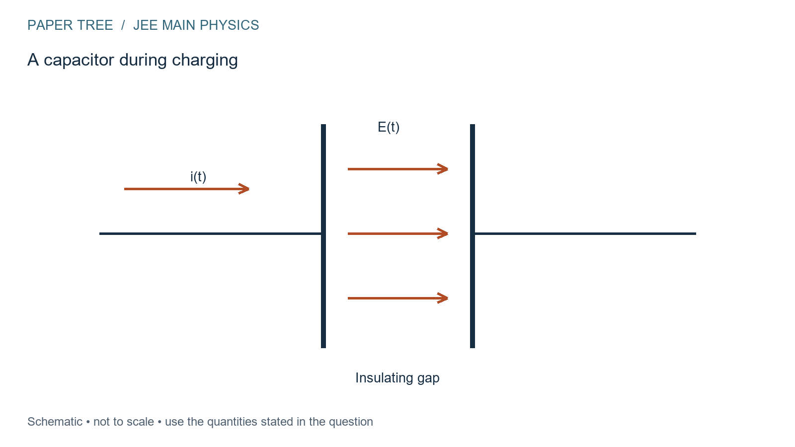
- A. The displacement current is always zero
- B. One is necessarily twice the other
- C. They are equal at each instant
- D. They flow only after full charging
Answer and explanation
C. They are equal at each instant
Equality preserves current continuity through a surface cutting either the wire or capacitor gap.
A monochromatic plane wave has peak electric field 10 V/m and frequency 6 × 10¹⁴ Hz. It is normally incident on a detector of area 2 cm². A fraction 0.2 is reflected; of the absorbed photons, 0.1 produce one collected electron each. The photocurrent charges an initially uncharged capacitor 10 μF for 2 s; an ideal collection arrangement maintains that constant current. Take ε0=8.85×10⁻¹² F/m, c=3×10⁸ m/s, h=6.63×10⁻³⁴ J s and e=1.6×10⁻¹⁹ C. Find the capacitor voltage after the stated time. Choose the closest value.
Use a plane wave in vacuum unless stated otherwise. Spectrum boundaries are approximate conventional bands, not sharp universal cutoffs; diagrams are schematic.
- A. 0.1709 V
- B. 0.3417 V
- C. 0.08543 V
- D. -0.1709 V
Answer and explanation
A. 0.1709 V
Use mean rather than peak wave energy density. Absorbed power is 2.124 × 10⁻⁵ W and current is 8.542986425 × 10⁻⁷ A. Charge It gives voltage 0.1708597285 V and capacitor energy 1.459652341 × 10⁻⁷ J. The requested energy ratio is 0.003436093082. The specified ideal collection arrangement is part of the model; no claim is made that a passive solar cell holds constant current at arbitrary voltage.
Requested result: 0.1709 V.
A small detector has unknown heat capacity C. A heater of resistance 8 Ω carrying 0.5 A for 10 s raises it by 5 K. After cooling, a plane electromagnetic wave illuminates a detector area ξ cm² for 80 s and raises it by 2 K. The face normal makes 30° with the propagation direction; a fraction 0.8 of the intercepted energy is absorbed. Ignore losses. Use ε0=8.85×10⁻¹² F/m, c=3×10⁸ m/s and photon energy hc/λ with h=6.63×10⁻³⁴ J s and λ=500 nm. In this arrangement, the following outcome is measured: the peak electric-field magnitude of the wave = 466.3236307 V/m. Which listed positive value of ξ is consistent with that outcome?
Use a plane wave in vacuum unless stated otherwise. Spectrum boundaries are approximate conventional bands, not sharp universal cutoffs; diagrams are schematic.
Answer and explanation
A. 5
Use the coupled physical relations below. The missing input is ξ=5 in the units assigned in the stem.
Electrical calibration gives C=4 J/K. The optical absorbed power is 0.1 W. Correct both projected area and absorption to get intensity 288.6751346 W/m². Mean intensity is ε0 c E0²/2, so E0=466.3236307 V/m and B0=1.554412102 × 10⁻⁶ T. Absorbed photons per second equal absorbed power divided by hc/λ, 2.513826043 × 10¹⁷ s⁻¹.
A monochromatic plane wave has peak electric field 10 V/m and frequency 6 × 10¹⁴ Hz. It is normally incident on a detector of area 2 cm². A fraction 0.2 is reflected; of the absorbed photons, 0.1 produce one collected electron each. The photocurrent charges an initially uncharged capacitor 10 μF for 2 s; an ideal collection arrangement maintains that constant current. Take ε0=8.85×10⁻¹² F/m, c=3×10⁸ m/s, h=6.63×10⁻³⁴ J s and e=1.6×10⁻¹⁹ C. Find the stored capacitor energy then. Choose the closest value.
Use a plane wave in vacuum unless stated otherwise. Spectrum boundaries are approximate conventional bands, not sharp universal cutoffs; diagrams are schematic.
- A. 7.298 × 10⁻⁸ J
- B. 2.919 × 10⁻⁷ J
- C. -1.46 × 10⁻⁷ J
- D. 1.46 × 10⁻⁷ J
Answer and explanation
D. 1.46 × 10⁻⁷ J
Use mean rather than peak wave energy density. Absorbed power is 2.124 × 10⁻⁵ W and current is 8.542986425 × 10⁻⁷ A. Charge It gives voltage 0.1708597285 V and capacitor energy 1.459652341 × 10⁻⁷ J. The requested energy ratio is 0.003436093082. The specified ideal collection arrangement is part of the model; no claim is made that a passive solar cell holds constant current at arbitrary voltage.
Requested result: 1.46 × 10⁻⁷ J.
A small detector has unknown heat capacity C. A heater of resistance 10 Ω carrying 0.2 A for 20 s raises it by 2 K. After cooling, a plane electromagnetic wave illuminates a detector area 4 cm² for 100 s and raises it by 1 K. The face normal makes 60° with the propagation direction; a fraction 0.5 of the intercepted energy is absorbed. Ignore losses. Use ε0=8.85×10⁻¹² F/m, c=3×10⁸ m/s and photon energy hc/λ with h=6.63×10⁻³⁴ J s and λ=600 nm. Find the peak magnetic-field magnitude. Choose the closest value.
Use a plane wave in vacuum unless stated otherwise. Spectrum boundaries are approximate conventional bands, not sharp universal cutoffs; diagrams are schematic.
- A. 9.149 × 10⁻⁷ T
- B. 3.659 × 10⁻⁶ T
- C. -1.83 × 10⁻⁶ T
- D. 1.83 × 10⁻⁶ T
Answer and explanation
D. 1.83 × 10⁻⁶ T
Electrical calibration gives C=4 J/K. The optical absorbed power is 0.04 W. Correct both projected area and absorption to get intensity 400 W/m². Mean intensity is ε0 c E0²/2, so E0=548.9246464 V/m and B0=1.829748821 × 10⁻⁶ T. Absorbed photons per second equal absorbed power divided by hc/λ, 1.206636501 × 10¹⁷ s⁻¹.
Requested result: 1.83 × 10⁻⁶ T.
The electric flux through the marked surface between capacitor plates is increasing. The associated displacement current is:
Use a plane wave in vacuum unless stated otherwise. Spectrum boundaries are approximate conventional bands, not sharp universal cutoffs; diagrams are schematic.
- A. Φ_E/ε₀
- B. ε₀ dΦ_E/dt
- C. μ₀ dΦ_E/dt
- D. ε₀Φ_E only
Answer and explanation
B. ε₀ dΦ_E/dt
Maxwell's displacement current in vacuum is I_d = ε₀ dΦ_E/dt.
A small detector has unknown heat capacity C. A heater of resistance 8 Ω carrying ξ A for 10 s raises it by 5 K. After cooling, a plane electromagnetic wave illuminates a detector area 5 cm² for 80 s and raises it by 2 K. The face normal makes 30° with the propagation direction; a fraction 0.8 of the intercepted energy is absorbed. Ignore losses. Use ε0=8.85×10⁻¹² F/m, c=3×10⁸ m/s and photon energy hc/λ with h=6.63×10⁻³⁴ J s and λ=500 nm. In this arrangement, the following outcome is measured: the peak magnetic-field magnitude = 1.554412102 × 10⁻⁶ T. Which listed positive value of ξ is consistent with that outcome?
Use a plane wave in vacuum unless stated otherwise. Spectrum boundaries are approximate conventional bands, not sharp universal cutoffs; diagrams are schematic.
Answer and explanation
A. 0.5
Use the coupled physical relations below. The missing input is ξ=0.5 in the units assigned in the stem.
Electrical calibration gives C=4 J/K. The optical absorbed power is 0.1 W. Correct both projected area and absorption to get intensity 288.6751346 W/m². Mean intensity is ε0 c E0²/2, so E0=466.3236307 V/m and B0=1.554412102 × 10⁻⁶ T. Absorbed photons per second equal absorbed power divided by hc/λ, 2.513826043 × 10¹⁷ s⁻¹.
A monochromatic plane wave has peak electric field 10 V/m and frequency 6 × 10¹⁴ Hz. It is normally incident on a detector of area 2 cm². A fraction 0.2 is reflected; of the absorbed photons, 0.1 produce one collected electron each. The photocurrent charges an initially uncharged capacitor 10 μF for 2 s; an ideal collection arrangement maintains that constant current. Take ε0=8.85×10⁻¹² F/m, c=3×10⁸ m/s, h=6.63×10⁻³⁴ J s and e=1.6×10⁻¹⁹ C. Find stored capacitor energy divided by optical energy absorbed over that time. Choose the closest value.
Use a plane wave in vacuum unless stated otherwise. Spectrum boundaries are approximate conventional bands, not sharp universal cutoffs; diagrams are schematic.
- A. 0.003436
- B. -0.003436
- C. 0.006872
- D. 0.001718
Answer and explanation
A. 0.003436
Use mean rather than peak wave energy density. Absorbed power is 2.124 × 10⁻⁵ W and current is 8.542986425 × 10⁻⁷ A. Charge It gives voltage 0.1708597285 V and capacitor energy 1.459652341 × 10⁻⁷ J. The requested energy ratio is 0.003436093082. The specified ideal collection arrangement is part of the model; no claim is made that a passive solar cell holds constant current at arbitrary voltage.
Requested result: 0.003436.
A small detector has unknown heat capacity C. A heater of resistance 8 Ω carrying 0.5 A for 10 s raises it by ξ K. After cooling, a plane electromagnetic wave illuminates a detector area 5 cm² for 80 s and raises it by 2 K. The face normal makes 30° with the propagation direction; a fraction 0.8 of the intercepted energy is absorbed. Ignore losses. Use ε0=8.85×10⁻¹² F/m, c=3×10⁸ m/s and photon energy hc/λ with h=6.63×10⁻³⁴ J s and λ=500 nm. In this arrangement, the following outcome is measured: the mean number of photons absorbed per second = 2.513826043 × 10¹⁷ s⁻¹. Which listed positive value of ξ is consistent with that outcome?
Use a plane wave in vacuum unless stated otherwise. Spectrum boundaries are approximate conventional bands, not sharp universal cutoffs; diagrams are schematic.
Answer and explanation
C. 5
Use the coupled physical relations below. The missing input is ξ=5 in the units assigned in the stem.
Electrical calibration gives C=4 J/K. The optical absorbed power is 0.1 W. Correct both projected area and absorption to get intensity 288.6751346 W/m². Mean intensity is ε0 c E0²/2, so E0=466.3236307 V/m and B0=1.554412102 × 10⁻⁶ T. Absorbed photons per second equal absorbed power divided by hc/λ, 2.513826043 × 10¹⁷ s⁻¹.
A plane sinusoidal electromagnetic wave in vacuum has peak electric-field amplitude 100 V/m and frequency 6 × 10¹⁴ Hz. A detector of area 2 cm² is perpendicular to propagation and absorbs 0.8 of the incident energy. Use c=3 × 10⁸ m/s and ε₀=8.85 × 10⁻¹² F/m; average intensity is ε₀cE₀²/2. For photon calculations use h=6.63 × 10⁻³⁴ J s. Find the average absorbed power. Choose the closest value.
Use a plane wave in vacuum unless stated otherwise. Spectrum boundaries are approximate conventional bands, not sharp universal cutoffs; diagrams are schematic.
- A. 0.004248 W
- B. 0.002124 W
- C. 0.002655 W
- D. 0.001062 W
Answer and explanation
B. 0.002124 W
The peak magnetic field is E₀/c=3.333333333 × 10⁻⁷ T. Time-averaging the squared sinusoidal field gives intensity 13.275 W/m². Convert the detector area to m² and multiply by absorptance to get 0.002124 W; in 60 s it absorbs 0.12744 J. Independently, λ=c/f=500 nm. Each photon has energy hf; the absorbed photon rate is Pabsorbed/(hf)=5.339366516 × 10¹⁵ s⁻¹.
For the requested outcome — Find the average absorbed power. — the result is 0.002124 W.
A plane sinusoidal electromagnetic wave in vacuum has peak electric-field amplitude 100 V/m and frequency 6 × 10¹⁴ Hz. A detector of area 2 cm² is perpendicular to propagation and absorbs 0.8 of the incident energy. Use c=3 × 10⁸ m/s and ε₀=8.85 × 10⁻¹² F/m; average intensity is ε₀cE₀²/2. For photon calculations use h=6.63 × 10⁻³⁴ J s. Find the absorbed energy in one minute. Choose the closest value.
Use a plane wave in vacuum unless stated otherwise. Spectrum boundaries are approximate conventional bands, not sharp universal cutoffs; diagrams are schematic.
- A. 0.1274 J
- B. 0.002124 J
- C. 0.2549 J
- D. 0.06372 J
Answer and explanation
A. 0.1274 J
The peak magnetic field is E₀/c=3.333333333 × 10⁻⁷ T. Time-averaging the squared sinusoidal field gives intensity 13.275 W/m². Convert the detector area to m² and multiply by absorptance to get 0.002124 W; in 60 s it absorbs 0.12744 J. Independently, λ=c/f=500 nm. Each photon has energy hf; the absorbed photon rate is Pabsorbed/(hf)=5.339366516 × 10¹⁵ s⁻¹.
For the requested outcome — Find the absorbed energy in one minute. — the result is 0.1274 J.
A plane sinusoidal electromagnetic wave in vacuum has peak electric-field amplitude 100 V/m and frequency 6 × 10¹⁴ Hz. A detector of area 2 cm² is perpendicular to propagation and absorbs 0.8 of the incident energy. Use c=3 × 10⁸ m/s and ε₀=8.85 × 10⁻¹² F/m; average intensity is ε₀cE₀²/2. For photon calculations use h=6.63 × 10⁻³⁴ J s. Find the mean number of photons absorbed per second. Choose the closest value.
Use a plane wave in vacuum unless stated otherwise. Spectrum boundaries are approximate conventional bands, not sharp universal cutoffs; diagrams are schematic.
- A. 5.339 × 10¹⁵ s⁻¹
- B. 6.674 × 10¹⁵ s⁻¹
- C. 2.67 × 10¹⁵ s⁻¹
- D. 1.068 × 10¹⁶ s⁻¹
Answer and explanation
A. 5.339 × 10¹⁵ s⁻¹
The peak magnetic field is E₀/c=3.333333333 × 10⁻⁷ T. Time-averaging the squared sinusoidal field gives intensity 13.275 W/m². Convert the detector area to m² and multiply by absorptance to get 0.002124 W; in 60 s it absorbs 0.12744 J. Independently, λ=c/f=500 nm. Each photon has energy hf; the absorbed photon rate is Pabsorbed/(hf)=5.339366516 × 10¹⁵ s⁻¹.
For the requested outcome — Find the mean number of photons absorbed per second. — the result is 5.339 × 10¹⁵ s⁻¹.
A plane sinusoidal electromagnetic wave in vacuum, of peak electric field 200 V/m, illuminates a flat opaque sheet of unknown actual area A at an unknown oblique angle θ to its normal (0<θ<90°). The sheet absorbs a fraction α of the incident power and reflects the rest specularly; there is no transmission. Measurements give absorbed power 0.0025488 W, time-averaged force normal to the sheet 1.58592×10⁻¹¹ N, and force parallel to the sheet 5.0976×10⁻¹² N in the direction of the incident tangential momentum. Use ε₀=8.85×10⁻¹² F/m and c=3×10⁸ m/s. The beam fully covers the sheet. Find A in cm². Choose the closest value.
Use the idealisations, constants, geometry and sign conventions stated in this question. Any accompanying drawing is schematic.
- A. 0.6 cm²
- B. 1 cm²
- C. 0.8 cm²
- D. 1.25 cm²
Answer and explanation
B. 1 cm²
The average incident intensity is I=ε₀cE₀²/2=53.1 W/m². Let P=IA cosθ be power intercepted by the sheet. Specular reflection transfers no tangential momentum, so F_parallel=αP sinθ/c=P_abs sinθ/c. Thus sinθ=cF_parallel/P_abs=0.6 and cosθ=0.8. Normal force obeys cF_normal=(2−α)P cosθ=(2P−P_abs)cosθ. This gives P=0.004248 W and α=0.6. Therefore A=P/(I cosθ)=10⁻⁴ m²=1 cm². All inferred fractions and angles are physical.
A plane sinusoidal electromagnetic wave in vacuum has peak electric-field amplitude ξ V/m and frequency 5 × 10¹⁴ Hz. A detector of area 1 cm² is perpendicular to propagation and absorbs 0.6 of the incident energy. Use c=3 × 10⁸ m/s and ε₀=8.85 × 10⁻¹² F/m; average intensity is ε₀cE₀²/2. For photon calculations use h=6.63 × 10⁻³⁴ J s. The recorded value of the absorbed energy in one minute is 0.19116 J. Which listed positive value of ξ is consistent with this measurement?
Use a plane wave in vacuum unless stated otherwise. Spectrum boundaries are approximate conventional bands, not sharp universal cutoffs; diagrams are schematic.
Answer and explanation
D. 200
Use the physical relations below with the missing input ξ. The recorded value of the absorbed energy in one minute gives ξ=200 in the unit assigned to ξ in the question. Substitution checks the observation:
The peak magnetic field is E₀/c=6.666666667 × 10⁻⁷ T. Time-averaging the squared sinusoidal field gives intensity 53.1 W/m². Convert the detector area to m² and multiply by absorptance to get 0.003186 W; in 60 s it absorbs 0.19116 J. Independently, λ=c/f=600 nm. Each photon has energy hf; the absorbed photon rate is Pabsorbed/(hf)=9.610859729 × 10¹⁵ s⁻¹.
A plane sinusoidal electromagnetic wave in vacuum has peak electric-field amplitude 200 V/m and frequency 5 × 10¹⁴ Hz. A detector of area 1 cm² is perpendicular to propagation and absorbs ξ of the incident energy. Use c=3 × 10⁸ m/s and ε₀=8.85 × 10⁻¹² F/m; average intensity is ε₀cE₀²/2. For photon calculations use h=6.63 × 10⁻³⁴ J s. The recorded value of the mean number of photons absorbed per second is 9.610859729 × 10¹⁵ s⁻¹. Which listed positive value of ξ is consistent with this measurement?
Use a plane wave in vacuum unless stated otherwise. Spectrum boundaries are approximate conventional bands, not sharp universal cutoffs; diagrams are schematic.
Answer and explanation
D. 0.6
Use the physical relations below with the missing input ξ. The recorded value of the mean number of photons absorbed per second gives ξ=0.6 in the unit assigned to ξ in the question. Substitution checks the observation:
The peak magnetic field is E₀/c=6.666666667 × 10⁻⁷ T. Time-averaging the squared sinusoidal field gives intensity 53.1 W/m². Convert the detector area to m² and multiply by absorptance to get 0.003186 W; in 60 s it absorbs 0.19116 J. Independently, λ=c/f=600 nm. Each photon has energy hf; the absorbed photon rate is Pabsorbed/(hf)=9.610859729 × 10¹⁵ s⁻¹.
Compare ideal interference from two equally illuminated, negligibly narrow slits near the centre with Fraunhofer diffraction from one finite slit. Which description is correct?
Use paraxial geometrical optics, thin lenses in air and small diffraction/interference angles unless specified otherwise. Sources in path-difference questions are coherent, initially in phase and equally polarised. Media are transparent, isotropic and normally dispersive.
- A. In interference the bright bands are of equal width and nearly equal brightness, while in diffraction the central band is much wider and much brighter than the rest
- B. In interference the bands become narrower with order, while in diffraction all bands are of equal width
- C. Interference occurs only with white light while diffraction occurs only with monochromatic light
- D. Interference needs a single wavefront while diffraction needs two separate coherent sources
Answer and explanation
A. In interference the bright bands are of equal width and nearly equal brightness, while in diffraction the central band is much wider and much brighter than the rest
In two slit interference the maxima satisfy y = n x λ x D / d, so consecutive bands are equally spaced and of comparable intensity. In single slit diffraction the minima satisfy y = n x λ x D / a, so the central band spans twice the spacing of the others and carries most of the energy.
A travelling microscope has an additive vertical-coordinate zero offset. With no slab, a bottom mark reads ξ mm. After a transparent slab is placed over that mark, the slab top reads 20 mm and the apparent mark reads 10 mm, with increasing readings upward. All readings share the same zero. Under near-normal viewing, that slab is replaced by a two-layer stack with 6 mm of the same material and 8 mm of refractive index 2. The bottom mark is fixed and air is above the stack. In this arrangement, the following outcome is measured: the effective refractive index inferred by treating the full stack as one uniform slab = 1.75 . Which listed positive value of ξ is consistent with that outcome?
Use paraxial geometrical optics, thin lenses in air and small diffraction/interference angles unless specified otherwise. Sources in path-difference questions are coherent, initially in phase and equally polarised. Media are transparent, isotropic and normally dispersive.
Answer and explanation
C. 5
Use the coupled physical relations below. The missing input is ξ=5 in the units assigned in the stem.
Coordinate differences remove the offset. The original real and apparent depths give n=1.5. For the stack the apparent depths add: t1/n+t2/n2=8 mm, so upward shift=6 mm and reading=11 mm. The single-slab inferred index is total thickness/apparent depth=1.75; it is not the arithmetic mean of the indices.
A single slit diffraction apparatus is taken from air into a liquid of refractive index mu. The angular width of the central maximum:
Use paraxial geometrical optics, thin lenses in air and small diffraction/interference angles unless specified otherwise. Sources in path-difference questions are coherent, initially in phase and equally polarised. Media are transparent, isotropic and normally dispersive.
- A. becomes 1 / mu times its value in air
- B. becomes mu² times its value in air
- C. becomes mu times its value in air
- D. remains the same, because the slit width is unchanged
Answer and explanation
A. becomes 1 / mu times its value in air
Inside the liquid the wavelength becomes λ divided by mu, so the half angular width becomes λ divided by (mu x a). Every angle of the pattern therefore shrinks by the factor mu.
In a single slit diffraction experiment the first minimum for light of wavelength 6000 Å is formed in the same direction as the second minimum for light of another wavelength. That wavelength, and the ratio of the widths of the central maximum for 6000 Å to that for the other wavelength, are:
Use paraxial geometrical optics, thin lenses in air and small diffraction/interference angles unless specified otherwise. Sources in path-difference questions are coherent, initially in phase and equally polarised. Media are transparent, isotropic and normally dispersive.
- A. 3000 Å and 1 : 2
- B. 1500 Å and 4 : 1
- C. 12000 Å and 1 : 2
- D. 3000 Å and 2 : 1
Answer and explanation
D. 3000 Å and 2 : 1
Equating the two directions gives 1 × 6000 = 2 x λ dash, so λ dash = 3000 Å. Since the central maximum width 2 x λ x D / a is proportional to λ, the ratio of the widths is 6000 : 3000 = 2 : 1.
In a single slit diffraction experiment the width of the slit is doubled while the wavelength and the screen distance are unchanged. The central maximum then becomes:
Use paraxial geometrical optics, thin lenses in air and small diffraction/interference angles unless specified otherwise. Sources in path-difference questions are coherent, initially in phase and equally polarised. Media are transparent, isotropic and normally dispersive.
- A. twice as wide and fainter
- B. half as wide and fainter
- C. half as wide and brighter
- D. unchanged in width but brighter
Answer and explanation
C. half as wide and brighter
Doubling a halves the value of 2 x λ x D / a, so the central band narrows to half. At the same time twice as much light passes through the slit and is concentrated into a narrower band, so it looks brighter.
A converging lens L1 forms a real image of an object ξ cm to its left. The image is 48 cm to its right. A second thin converging lens L2 is placed 18 cm to the right of L1, before that first image would form (d<v). With both lenses present the final image is 15 cm to the right of L2. The object is then moved to 30 cm to the left of L1, with both lenses fixed. In this arrangement, the following outcome is measured: the SIGNED overall transverse magnification for the moved object = -0.7407407407 . Which listed positive value of ξ is consistent with that outcome?
Use paraxial geometrical optics, thin lenses in air and small diffraction/interference angles unless specified otherwise. Sources in path-difference questions are coherent, initially in phase and equally polarised. Media are transparent, isotropic and normally dispersive.
Answer and explanation
C. 24
Use the coupled physical relations below. The missing input is ξ=24 in the units assigned in the stem.
L1 has f1=16 cm. In the calibration, L2 sees a virtual object v−d cm to its right, so 1/f2=1/z−1/(v−d), giving f2=30 cm. For the moved object L1 alone would image at 34.28571429 cm; the signed real-object distance at L2 is -16.28571429 cm. The final image is 10.55555556 cm beyond L2, signed magnification -0.7407407407, and object-image distance 58.55555556 cm.
Diffraction effects of light become easily noticeable when:
Use paraxial geometrical optics, thin lenses in air and small diffraction/interference angles unless specified otherwise. Sources in path-difference questions are coherent, initially in phase and equally polarised. Media are transparent, isotropic and normally dispersive.
- A. the light is made to pass through a very thick glass slab
- B. the size of the obstacle or aperture is comparable with the wavelength of the light
- C. the obstacle is very much larger than the wavelength of the light
- D. the light used is of very high intensity
Answer and explanation
B. the size of the obstacle or aperture is comparable with the wavelength of the light
The half angular width of the central maximum is λ / a. For visible light of about 5 × 10⁻⁷ m passing an aperture of a few millimetres this angle is only about 10⁻⁴ radian, which is too small to notice, but for an aperture of the order of a micrometre it becomes large.
For Fraunhofer diffraction at a single slit of width a, the directions of the dark bands are given by:
Use paraxial geometrical optics, thin lenses in air and small diffraction/interference angles unless specified otherwise. Sources in path-difference questions are coherent, initially in phase and equally polarised. Media are transparent, isotropic and normally dispersive.
- A. d x sin θ = n x λ, where d is the distance to the screen
- B. a x sin θ = n x λ, with n = 0, 1, 2 and so on
- C. a x sin θ = n x λ, with n = 1, 2, 3 and so on
- D. a x sin θ = (2n plus 1) x λ / 2
Answer and explanation
C. a x sin θ = n x λ, with n = 1, 2, 3 and so on
The slit is imagined as split into pairs of strips whose contributions cancel in pairs when the extreme path difference a x sin θ equals a whole number of wavelengths. The value n = 0 must be excluded because there all the strips arrive in step, giving the central maximum.
Two coherent monochromatic beams of identical linear polarisation produce maximum intensity ξ and minimum intensity 16 W/m². A filter with intensity transmission 0.36 is inserted in the initially stronger beam. An additional plate then introduces phase delay 120° in that beam. The original phase difference at the observation point was 0°. In this arrangement, the following outcome is measured: the filter intensity transmission that would instead make the interference minima exactly dark = 0.25 . Which listed positive value of ξ is consistent with that outcome?
Use paraxial geometrical optics, thin lenses in air and small diffraction/interference angles unless specified otherwise. Sources in path-difference questions are coherent, initially in phase and equally polarised. Media are transparent, isotropic and normally dispersive.
Answer and explanation
D. 144
Use the coupled physical relations below. The missing input is ξ=144 in the units assigned in the stem.
The original amplitude magnitudes are a=8, b=4 in square-root intensity units. A transmission t multiplies amplitude by √t, so the filtered amplitude is 4.8. Phasor addition gives I=19.84 W/m² and visibility=0.9836065574. Exactly dark minima require equal amplitudes, hence transmission (b/a)²=0.25.
When light travels from air into glass, which set of changes is correct?
Use paraxial geometrical optics, thin lenses in air and small diffraction/interference angles unless specified otherwise. Sources in path-difference questions are coherent, initially in phase and equally polarised. Media are transparent, isotropic and normally dispersive.
- A. speed decreases, wavelength decreases, frequency remains the same
- B. speed decreases, wavelength remains the same, frequency decreases
- C. speed increases, wavelength increases, frequency remains the same
- D. speed remains the same, wavelength decreases, frequency increases
Answer and explanation
A. speed decreases, wavelength decreases, frequency remains the same
The frequency is set by the source and is the same in every medium. Since v = c / mu is smaller in glass and v = f x λ, the wavelength in glass must be λ divided by mu, that is smaller than in air.
A plane wavefront of light of wavelength 6000 Å in air falls normally on an aperture. A glass slab of refractive index 1.5 and thickness 6 cm covers one half of the aperture. The extra optical path introduced by the slab and the number of wavelengths corresponding to it are:
Use paraxial geometrical optics, thin lenses in air and small diffraction/interference angles unless specified otherwise. Sources in path-difference questions are coherent, initially in phase and equally polarised. Media are transparent, isotropic and normally dispersive.
- A. 9 cm and 1.5 × 10⁵ wavelengths
- B. 6 cm and 1 × 10⁵ wavelengths
- C. 3 cm and 5 × 10⁵ wavelengths
- D. 3 cm and 5 × 10⁴ wavelengths
Answer and explanation
D. 3 cm and 5 × 10⁴ wavelengths
Extra optical path = (1.5 minus 1) × 6 cm = 0.5 × 6 = 3 cm = 3 × 10⁻² m. With λ = 6000 Å = 6 × 10⁻⁷ m, the number of wavelengths = (3 × 10⁻²) / (6 × 10⁻⁷) = 5 × 10⁴.
Huygens construction applied to a plane wavefront striking a plane mirror shows that:
Use paraxial geometrical optics, thin lenses in air and small diffraction/interference angles unless specified otherwise. Sources in path-difference questions are coherent, initially in phase and equally polarised. Media are transparent, isotropic and normally dispersive.
- A. the angle of incidence is twice the angle of reflection
- B. the reflected wavefront travels with half the speed of the incident wavefront
- C. the angle of incidence equals the angle of reflection, both measured from the normal
- D. the wavelength of light doubles on reflection
Answer and explanation
C. the angle of incidence equals the angle of reflection, both measured from the normal
In the construction the distance travelled by the wavelet from the first point and the distance travelled by the incident wavefront to reach the mirror are both v x t. The two right triangles formed share the same hypotenuse and have equal perpendiculars, so they are congruent and the two angles are equal.
In Huygens geometrical construction, the position of the wavefront after a time t is obtained by drawing:
Use paraxial geometrical optics, thin lenses in air and small diffraction/interference angles unless specified otherwise. Sources in path-difference questions are coherent, initially in phase and equally polarised. Media are transparent, isotropic and normally dispersive.
- A. a line joining the centres of all the secondary wavelets
- B. the largest single secondary wavelet only
- C. a circle passing through the centre of the original wavefront
- D. the common tangent, that is the envelope, to all the secondary wavelets
Answer and explanation
D. the common tangent, that is the envelope, to all the secondary wavelets
Each point of the old wavefront emits a wavelet of radius v x t. The surface that touches all of these wavelets in the forward direction is the new wavefront at that instant.
A plane wavefront in air strikes the flat surface of a transparent medium at an angle of incidence 45° and the angle of refraction is 30°. The refractive index of the medium is:
Use paraxial geometrical optics, thin lenses in air and small diffraction/interference angles unless specified otherwise. Sources in path-difference questions are coherent, initially in phase and equally polarised. Media are transparent, isotropic and normally dispersive.
- A. square root of 3
- B. square root of 2
- C. 1 divided by square root of 2
- D. 1.5
Answer and explanation
B. square root of 2
mu = sin 45° divided by sin 30° = (1 divided by square root of 2) divided by (1 divided by 2) = 2 divided by square root of 2 = square root of 2, about 1.41.
Light passes from medium 1 of refractive index mu1 and speed v1 into medium 2 of refractive index mu2 and speed v2. Huygens construction gives sin i divided by sin r as:
Use paraxial geometrical optics, thin lenses in air and small diffraction/interference angles unless specified otherwise. Sources in path-difference questions are coherent, initially in phase and equally polarised. Media are transparent, isotropic and normally dispersive.
- A. v1 / v2, which equals mu2 / mu1
- B. v1 x v2
- C. v2 / v1, which equals mu1 / mu2
- D. mu1 x mu2
Answer and explanation
A. v1 / v2, which equals mu2 / mu1
In the construction the incident wavefront covers v1 x t along the surface while the refracted wavelet covers v2 x t inside medium 2. Dividing the two sine expressions built on the common hypotenuse gives sin i / sin r = v1 / v2, and since mu = c / v this equals mu2 / mu1.
Two sources of light are said to be coherent if the waves emitted by them have:
Use paraxial geometrical optics, thin lenses in air and small diffraction/interference angles unless specified otherwise. Sources in path-difference questions are coherent, initially in phase and equally polarised. Media are transparent, isotropic and normally dispersive.
- A. the same frequency and a constant phase difference between them
- B. the same amplitude but a continuously changing phase difference
- C. different frequencies but a constant phase difference
- D. the same frequency but a rapidly and randomly changing phase difference
Answer and explanation
A. the same frequency and a constant phase difference between them
The positions of the maxima depend on the phase difference between the arriving waves. Only if that phase difference is fixed do the maxima stay at the same places long enough for the eye to see a steady pattern.
A travelling microscope has an additive vertical-coordinate zero offset. With no slab, a bottom mark reads 10 mm. After a transparent slab is placed over that mark, the slab top reads 22 mm and the apparent mark reads 14 mm, with increasing readings upward. All readings share the same zero. Under near-normal viewing, that slab is replaced by a two-layer stack with 9 mm of the same material and 6 mm of refractive index 2. The bottom mark is fixed and air is above the stack. Find the effective refractive index inferred by treating the full stack as one uniform slab. Choose the closest value.
Use paraxial geometrical optics, thin lenses in air and small diffraction/interference angles unless specified otherwise. Sources in path-difference questions are coherent, initially in phase and equally polarised. Media are transparent, isotropic and normally dispersive.
- A. 1.667
- B. -1.667
- C. 0.8333
- D. 3.333
Answer and explanation
A. 1.667
Coordinate differences remove the offset. The original real and apparent depths give n=1.5. For the stack the apparent depths add: t1/n+t2/n2=9 mm, so upward shift=6 mm and reading=16 mm. The single-slab inferred index is total thickness/apparent depth=1.666666667; it is not the arithmetic mean of the indices.
Requested result: 1.667.
Two coherent waves, each of intensity I0, meet at a point where the phase difference between them is π / 2 radian. The resultant intensity at that point is:
Use paraxial geometrical optics, thin lenses in air and small diffraction/interference angles unless specified otherwise. Sources in path-difference questions are coherent, initially in phase and equally polarised. Media are transparent, isotropic and normally dispersive.
- A. 4 I0
- B. I0
- C. 2 I0
- D. zero
Answer and explanation
C. 2 I0
I = I0 plus I0 plus 2 x square root of (I0 x I0) x cos 90° = 2 I0 plus 2 I0 × 0 = 2 I0.
Two coherent waves are emitted in phase with the same polarisation. Which expression gives the complete set of nonnegative path differences for constructive interference? In every option n = 0, 1, 2, 3, ….
Use paraxial geometrical optics, thin lenses in air and small diffraction/interference angles unless specified otherwise. Sources in path-difference questions are coherent, initially in phase and equally polarised. Media are transparent, isotropic and normally dispersive.
- A. nλ/4
- B. (2n+1)λ/4
- C. (2n−1)λ/2
- D. nλ
Answer and explanation
D. nλ
A path difference of a whole number of wavelengths corresponds to a phase difference of 2 x π x n, so the two displacements are in step and the amplitudes add.
Two coherent monochromatic beams of identical linear polarisation produce maximum intensity 100 and minimum intensity 4 W/m². A filter with intensity transmission 0.25 is inserted in the initially stronger beam. An additional plate then introduces phase delay 60° in that beam. The original phase difference at the observation point was 0°. Find the filter intensity transmission that would instead make the interference minima exactly dark. Choose the closest value.
Use paraxial geometrical optics, thin lenses in air and small diffraction/interference angles unless specified otherwise. Sources in path-difference questions are coherent, initially in phase and equally polarised. Media are transparent, isotropic and normally dispersive.
- A. 0.4444
- B. -0.4444
- C. 0.2222
- D. 0.8889
Answer and explanation
A. 0.4444
The original amplitude magnitudes are a=6, b=4 in square-root intensity units. A transmission t multiplies amplitude by √t, so the filtered amplitude is 3. Phasor addition gives I=37 W/m² and visibility=0.96. Exactly dark minima require equal amplitudes, hence transmission (b/a)²=0.4444444444.
Requested result: 0.4444.
In an interference pattern the ratio of the maximum to the minimum intensity is 25 : 9. The ratio of the intensities of the two interfering waves is:
Use paraxial geometrical optics, thin lenses in air and small diffraction/interference angles unless specified otherwise. Sources in path-difference questions are coherent, initially in phase and equally polarised. Media are transparent, isotropic and normally dispersive.
- A. 4 : 1
- B. 25 : 9
- C. 5 : 3
- D. 16 : 1
Answer and explanation
D. 16 : 1
Taking square roots, (a1 plus a2) / (a1 minus a2) = 5 / 3. Cross multiplying gives 3 a1 plus 3 a2 = 5 a1 minus 5 a2, so 8 a2 = 2 a1 and a1 / a2 = 4. Hence I1 / I2 = 4² = 16 : 1.
A converging lens L1 forms a real image of an object 30 cm to its left. The image is 60 cm to its right. A second thin converging lens L2 is placed 20 cm to the right of L1, before that first image would form (d<v). With both lenses present the final image is 20 cm to the right of L2. The object is then moved to 40 cm to the left of L1, with both lenses fixed. Find the final image distance to the right of L2 for the moved object. Choose the closest value.
Use paraxial geometrical optics, thin lenses in air and small diffraction/interference angles unless specified otherwise. Sources in path-difference questions are coherent, initially in phase and equally polarised. Media are transparent, isotropic and normally dispersive.
- A. 6.667 cm
- B. 26.67 cm
- C. -13.33 cm
- D. 13.33 cm
Answer and explanation
D. 13.33 cm
L1 has f1=20 cm. In the calibration, L2 sees a virtual object v−d cm to its right, so 1/f2=1/z−1/(v−d), giving f2=40 cm. For the moved object L1 alone would image at 40 cm; the signed real-object distance at L2 is -20 cm. The final image is 13.33333333 cm beyond L2, signed magnification -0.6666666667, and object-image distance 73.33333333 cm.
Requested result: 13.33 cm.
Two coherent sources have intensities in the ratio 1 : 4. For the interference pattern produced, the value of (Imax minus Imin) divided by (Imax plus Imin) is:
Use paraxial geometrical optics, thin lenses in air and small diffraction/interference angles unless specified otherwise. Sources in path-difference questions are coherent, initially in phase and equally polarised. Media are transparent, isotropic and normally dispersive.
- A. 3 / 5
- B. 4 / 5
- C. 1 / 4
- D. 5 / 4
Answer and explanation
B. 4 / 5
Amplitudes are in the ratio 1 : 2, so Imax is proportional to (1 plus 2)² = 9 and Imin is proportional to (2 minus 1)² = 1. Then (9 minus 1) divided by (9 plus 1) = 8 / 10 = 4 / 5.
Two coherent monochromatic beams of identical linear polarisation produce maximum intensity 100 and minimum intensity 4 W/m². A filter with intensity transmission 0.25 is inserted in the initially stronger beam. An additional plate then introduces phase delay 60° in that beam. The original phase difference at the observation point was 0°. Find the visibility (Imax−Imin)/(Imax+Imin) after the filter is inserted. Choose the closest value.
Use paraxial geometrical optics, thin lenses in air and small diffraction/interference angles unless specified otherwise. Sources in path-difference questions are coherent, initially in phase and equally polarised. Media are transparent, isotropic and normally dispersive.
- A. 0.96
- B. 0.48
- C. -0.96
- D. 1.92
Answer and explanation
A. 0.96
The original amplitude magnitudes are a=6, b=4 in square-root intensity units. A transmission t multiplies amplitude by √t, so the filtered amplitude is 3. Phasor addition gives I=37 W/m² and visibility=0.96. Exactly dark minima require equal amplitudes, hence transmission (b/a)²=0.4444444444.
Requested result: 0.96.
In an interference pattern, bright and dark bands are formed. This shows that:
Use paraxial geometrical optics, thin lenses in air and small diffraction/interference angles unless specified otherwise. Sources in path-difference questions are coherent, initially in phase and equally polarised. Media are transparent, isotropic and normally dispersive.
- A. the law of conservation of energy does not apply to light waves
- B. light energy is destroyed at the dark bands
- C. light energy is only redistributed, the total energy remaining the same
- D. light energy is created at the bright bands
Answer and explanation
C. light energy is only redistributed, the total energy remaining the same
At a bright band the intensity of two equal sources rises to 4 x I0 and at a dark band it falls to zero. The average over the pattern is 2 x I0, exactly the sum of the two separate intensities, so the total energy is unchanged and only its distribution alters.
Two coherent light waves of amplitudes 5a and 3a superpose. The ratio of the maximum to the minimum intensity in the resulting pattern is:
Use paraxial geometrical optics, thin lenses in air and small diffraction/interference angles unless specified otherwise. Sources in path-difference questions are coherent, initially in phase and equally polarised. Media are transparent, isotropic and normally dispersive.
- A. 64 : 16
- B. 25 : 9
- C. 16 : 1
- D. 4 : 3
Answer and explanation
C. 16 : 1
Maximum amplitude = 5a plus 3a = 8a and minimum amplitude = 5a minus 3a = 2a. Hence Imax / Imin = (8a)² / (2a)² = 64 / 4 = 16 : 1.
In a Young double-slit experiment the slit separation is 0.5 mm and screen distance is 2 m. The measured fringe width is 2 mm. A plate of thickness 10 μm is inserted before slit 1 and moves the central maximum by 20 mm toward slit 1. The plate is then replaced by a stack containing 6 μm of the same material and 4 μm of index 1.25; slit 2 remains uncovered. Neglect reflection and use normal incidence. All shifts are small-angle shifts in air. Find the thickness of index-n3 material needed before slit 2 to restore the central maximum to its original position while the stack stays before slit 1. Choose the closest value.
Use paraxial geometrical optics, thin lenses in air and small diffraction/interference angles unless specified otherwise. Sources in path-difference questions are coherent, initially in phase and equally polarised. Media are transparent, isotropic and normally dispersive.
- A. 32 μm
- B. 16 μm
- C. 8 μm
- D. -16 μm
Answer and explanation
B. 16 μm
The baseline wavelength is 5 × 10⁻⁷ m. The first shift gives original plate index n=1.5. The replacement optical delay is the sum of the two excess optical paths, 4 × 10⁻⁶ m. This gives shift 16 mm or 8 fringes. Compensation requires equal delay before slit 2, so thickness=16 μm.
Requested result: 16 μm.
The phenomenon that establishes the transverse nature of light waves is:
Use paraxial geometrical optics, thin lenses in air and small diffraction/interference angles unless specified otherwise. Sources in path-difference questions are coherent, initially in phase and equally polarised. Media are transparent, isotropic and normally dispersive.
- A. rectilinear propagation
- B. polarisation
- C. diffraction
- D. interference
Answer and explanation
B. polarisation
In a longitudinal wave the vibration is along the direction of propagation, so no direction across the ray is special and polarisation is impossible. Light can be polarised by a polaroid, hence its vibrations must be perpendicular to the direction of propagation.
A point source of light is placed in a homogeneous isotropic medium. At a short distance from the source the wavefront is:
Use paraxial geometrical optics, thin lenses in air and small diffraction/interference angles unless specified otherwise. Sources in path-difference questions are coherent, initially in phase and equally polarised. Media are transparent, isotropic and normally dispersive.
- A. spherical
- B. plane
- C. elliptical
- D. cylindrical
Answer and explanation
A. spherical
In time t the disturbance from the point source covers the same distance v x t in every direction, so all points in the same phase lie on a sphere of radius v x t centred on the source. The wavefront is therefore spherical.
In a homogeneous isotropic medium, which statement correctly relates a light ray to its wavefront?
Use paraxial geometrical optics, thin lenses in air and small diffraction/interference angles unless specified otherwise. Sources in path-difference questions are coherent, initially in phase and equally polarised. Media are transparent, isotropic and normally dispersive.
- A. The ray is the locus of points having the same phase
- B. The ray and the wavefront always make an angle of 45° with each other
- C. The ray is always perpendicular to the wavefront at the point where it meets it
- D. The ray always lies along the wavefront
Answer and explanation
C. The ray is always perpendicular to the wavefront at the point where it meets it
Energy travels outward along the shortest path from one wavefront to the next, which is along the normal to the wavefront. Hence the ray is drawn perpendicular to the wavefront everywhere.
For a cylindrical wavefront produced by a long linear source, the amplitude of the wave at perpendicular distance r from the source varies as:
Use paraxial geometrical optics, thin lenses in air and small diffraction/interference angles unless specified otherwise. Sources in path-difference questions are coherent, initially in phase and equally polarised. Media are transparent, isotropic and normally dispersive.
- A. independent of r
- B. 1 / square root of r
- C. 1 / r
- D. 1 / r²
Answer and explanation
B. 1 / square root of r
The energy crossing a cylindrical surface of radius r per second is fixed, and that area is proportional to r. Hence I varies as 1 / r. Using I proportional to A² gives A² proportional to 1 / r, so A varies as 1 divided by the square root of r.
Light coming from a distant star is treated as a plane wavefront near the Earth because:
Use paraxial geometrical optics, thin lenses in air and small diffraction/interference angles unless specified otherwise. Sources in path-difference questions are coherent, initially in phase and equally polarised. Media are transparent, isotropic and normally dispersive.
- A. the wavefront becomes plane because light loses energy on the way
- B. a star emits plane wavefronts right from its surface
- C. the atmosphere of the Earth converts spherical wavefronts into plane wavefronts
- D. only a very small portion of the enormous spherical wavefront reaches the Earth and its curvature is negligible
Answer and explanation
D. only a very small portion of the enormous spherical wavefront reaches the Earth and its curvature is negligible
The radius of the wavefront at the Earth is of the order of the star distance, which is enormous. A tiny patch of a sphere whose radius is huge has almost zero curvature, so it is treated as a plane wavefront.
According to Huygens principle, every point on a given wavefront:
Use paraxial geometrical optics, thin lenses in air and small diffraction/interference angles unless specified otherwise. Sources in path-difference questions are coherent, initially in phase and equally polarised. Media are transparent, isotropic and normally dispersive.
- A. remains at rest while the neighbouring points vibrate
- B. acts as a secondary source and sends out secondary wavelets in the forward direction
- C. acts as a sink that absorbs the incoming wave energy
- D. sends out secondary wavelets only in the backward direction
Answer and explanation
B. acts as a secondary source and sends out secondary wavelets in the forward direction
The disturbance reaching a point sets it vibrating, and that vibrating point radiates fresh spherical wavelets into the medium ahead. Drawing the common tangent to these forward wavelets after time t gives the wavefront at that later instant.
In a Young double-slit experiment the slit separation is 0.5 mm and screen distance is 2 m. The measured fringe width is 2 mm. A plate of thickness 10 μm is inserted before slit 1 and moves the central maximum by 20 mm toward slit 1. The plate is then replaced by a stack containing 6 μm of the same material and 4 μm of index 1.25; slit 2 remains uncovered. Neglect reflection and use normal incidence. All shifts are small-angle shifts in air. Find that shift in fringe widths. Choose the closest value.
Use paraxial geometrical optics, thin lenses in air and small diffraction/interference angles unless specified otherwise. Sources in path-difference questions are coherent, initially in phase and equally polarised. Media are transparent, isotropic and normally dispersive.
Answer and explanation
B. 8
The baseline wavelength is 5 × 10⁻⁷ m. The first shift gives original plate index n=1.5. The replacement optical delay is the sum of the two excess optical paths, 4 × 10⁻⁶ m. This gives shift 16 mm or 8 fringes. Compensation requires equal delay before slit 2, so thickness=16 μm.
Requested result: 8.
A converging lens L1 forms a real image of an object 30 cm to its left. The image is 60 cm to its right. A second thin converging lens L2 is placed 20 cm to the right of L1, before that first image would form (d<v). With both lenses present the final image is 20 cm to the right of L2. The object is then moved to 40 cm to the left of L1, with both lenses fixed. Find the distance from the moved object to its final image. Choose the closest value.
Use paraxial geometrical optics, thin lenses in air and small diffraction/interference angles unless specified otherwise. Sources in path-difference questions are coherent, initially in phase and equally polarised. Media are transparent, isotropic and normally dispersive.
- A. 73.33 cm
- B. 146.7 cm
- C. 36.67 cm
- D. -73.33 cm
Answer and explanation
A. 73.33 cm
L1 has f1=20 cm. In the calibration, L2 sees a virtual object v−d cm to its right, so 1/f2=1/z−1/(v−d), giving f2=40 cm. For the moved object L1 alone would image at 40 cm; the signed real-object distance at L2 is -20 cm. The final image is 13.33333333 cm beyond L2, signed magnification -0.6666666667, and object-image distance 73.33333333 cm.
Requested result: 73.33 cm.
A magnifying glass of focal length 5 cm is used with the least distance of distinct vision taken as 25 cm. Compared with the setting in which the final image is at the near point, the setting in which the final image is at infinity gives a magnifying power that is:
Use paraxial geometrical optics, thin lenses in air and small diffraction/interference angles unless specified otherwise. Sources in path-difference questions are coherent, initially in phase and equally polarised. Media are transparent, isotropic and normally dispersive.
- A. smaller by a factor of D over f
- B. larger by exactly 1
- C. exactly the same
- D. smaller by exactly 1
Answer and explanation
D. smaller by exactly 1
At the near point M = 1 + 25/5 = 6, while for the image at infinity M = 25/5 = 5. The difference is exactly one, and it is the same for any focal length because the two expressions differ only by the added one. The infinity setting is preferred for long observation because the eye is relaxed.
The magnifying power of a compound microscope is increased by using an objective of:
Use paraxial geometrical optics, thin lenses in air and small diffraction/interference angles unless specified otherwise. Sources in path-difference questions are coherent, initially in phase and equally polarised. Media are transparent, isotropic and normally dispersive.
- A. smaller refractive index only
- B. shorter focal length
- C. longer focal length
- D. zero aperture
Answer and explanation
B. shorter focal length
Objective magnification is inversely related to its focal length for a given tube length.
In a Young double-slit experiment the slit separation is 0.4 mm and screen distance is 1.5 m. The measured fringe width is 1.875 mm. A plate of thickness 12 μm is inserted before slit 1 and moves the central maximum by 22.5 mm toward slit 1. The plate is then replaced by a stack containing 4 μm of the same material and 8 μm of index ξ; slit 2 remains uncovered. Neglect reflection and use normal incidence. All shifts are small-angle shifts in air. In this arrangement, the following outcome is measured: the thickness of index-n3 material needed before slit 2 to restore the central maximum to its original position while the stack stays before slit 1 = 14.66666667 μm. Which listed positive value of ξ is consistent with that outcome?
Use paraxial geometrical optics, thin lenses in air and small diffraction/interference angles unless specified otherwise. Sources in path-difference questions are coherent, initially in phase and equally polarised. Media are transparent, isotropic and normally dispersive.
- A. 0.65
- B. 1.95
- C. 2.6
- D. 1.3
Answer and explanation
D. 1.3
Use the coupled physical relations below. The missing input is ξ=1.3 in the units assigned in the stem.
The baseline wavelength is 5 × 10⁻⁷ m. The first shift gives original plate index n=1.5. The replacement optical delay is the sum of the two excess optical paths, 4.4 × 10⁻⁶ m. This gives shift 16.5 mm or 8.8 fringes. Compensation requires equal delay before slit 2, so thickness=14.66666667 μm.
In normal adjustment of an astronomical telescope, the final image is formed:
Use paraxial geometrical optics, thin lenses in air and small diffraction/interference angles unless specified otherwise. Sources in path-difference questions are coherent, initially in phase and equally polarised. Media are transparent, isotropic and normally dispersive.
- A. at the objective
- B. at the focal plane of the objective as a real final image
- C. behind the observer
- D. at infinity
Answer and explanation
D. at infinity
Normal adjustment places the objective's real image at the eyepiece focal plane, so emerging rays are parallel.
A converging lens L1 forms a real image of an object 30 cm to its left. The image is 60 cm to its right. A second thin converging lens L2 is placed 20 cm to the right of L1, before that first image would form (d<v). With both lenses present the final image is 20 cm to the right of L2. The object is then moved to 40 cm to the left of L1, with both lenses fixed. Find the SIGNED overall transverse magnification for the moved object. Choose the closest value.
Use paraxial geometrical optics, thin lenses in air and small diffraction/interference angles unless specified otherwise. Sources in path-difference questions are coherent, initially in phase and equally polarised. Media are transparent, isotropic and normally dispersive.
- A. -0.6667
- B. 0.6667
- C. -0.3333
- D. -1.333
Answer and explanation
A. -0.6667
L1 has f1=20 cm. In the calibration, L2 sees a virtual object v−d cm to its right, so 1/f2=1/z−1/(v−d), giving f2=40 cm. For the moved object L1 alone would image at 40 cm; the signed real-object distance at L2 is -20 cm. The final image is 13.33333333 cm beyond L2, signed magnification -0.6666666667, and object-image distance 73.33333333 cm.
Requested result: -0.6667.
Unpolarised light of intensity I0 passes through three polaroids placed one behind the other. The axis of the second makes 30° with that of the first, and the axis of the third makes 30° with that of the second, in the same sense. The final emergent intensity is:
Use paraxial geometrical optics, thin lenses in air and small diffraction/interference angles unless specified otherwise. Sources in path-difference questions are coherent, initially in phase and equally polarised. Media are transparent, isotropic and normally dispersive.
- A. 9 I0 / 16
- B. I0 / 8
- C. 9 I0 / 32
- D. 3 I0 / 8
Answer and explanation
C. 9 I0 / 32
After the first polaroid the intensity is I0 / 2. After the second it is (I0 / 2) x cos² 30° = (I0 / 2) × 3 / 4 = 3 I0 / 8. After the third it is (3 I0 / 8) x cos² 30° = (3 I0 / 8) × 3 / 4 = 9 I0 / 32.
Unpolarised light falls from air on the flat surface of a transparent medium at the polarising angle, and the angle of refraction is found to be 30°. Taking c as 3 × 10⁸ m per second, the refractive index of the medium and the speed of light inside it are:
Use paraxial geometrical optics, thin lenses in air and small diffraction/interference angles unless specified otherwise. Sources in path-difference questions are coherent, initially in phase and equally polarised. Media are transparent, isotropic and normally dispersive.
- A. 0.58 and about 5.2 × 10⁸ m per second
- B. 1.5 and 2 × 10⁸ m per second
- C. square root of 3 and about 5.2 × 10⁸ m per second
- D. square root of 3, that is about 1.73, and about 1.73 × 10⁸ m per second
Answer and explanation
D. square root of 3, that is about 1.73, and about 1.73 × 10⁸ m per second
Since the reflected and refracted rays are perpendicular at the polarising angle, θ B = 90° minus 30° = 60°. Then mu = tan 60° = square root of 3, about 1.73, and v = (3 × 10⁸) divided by 1.73 = about 1.73 × 10⁸ m per second.
According to Brewster law, the refractive index mu of a medium and the polarising angle θ B for light incident from air on it are related by:
Use paraxial geometrical optics, thin lenses in air and small diffraction/interference angles unless specified otherwise. Sources in path-difference questions are coherent, initially in phase and equally polarised. Media are transparent, isotropic and normally dispersive.
- A. mu = sin of θ B
- B. mu = cos of θ B
- C. mu = tan of θ B
- D. mu = cot of θ B
Answer and explanation
C. mu = tan of θ B
At the polarising angle the reflected and refracted rays are perpendicular, so the angle of refraction is 90° minus θ B. Putting this in Snell law, mu = sin θ B divided by sin (90° minus θ B) = sin θ B divided by cos θ B = tan θ B.
The polarising angle for a certain transparent medium in contact with air is 60°. The critical angle for total internal reflection at the same surface is:
Use paraxial geometrical optics, thin lenses in air and small diffraction/interference angles unless specified otherwise. Sources in path-difference questions are coherent, initially in phase and equally polarised. Media are transparent, isotropic and normally dispersive.
- A. 30°, since it is the complement of the polarising angle
- B. 60°, the same as the polarising angle
- C. the angle whose sine is 1 divided by the square root of 3, that is about 35°
- D. the angle whose sine equals the refractive index of the medium
Answer and explanation
C. the angle whose sine is 1 divided by the square root of 3, that is about 35°
From Brewster law, mu = tan 60° = square root of 3, about 1.73. Then sin of the critical angle = 1 divided by 1.73 = 0.577, so the critical angle is about 35°.
Two polaroids are crossed so that no light passes through them. A third polaroid is now introduced between them with its axis at 45° to the axis of the first. If unpolarised light of intensity I0 falls on the first polaroid, the intensity emerging from the last one is:
Use paraxial geometrical optics, thin lenses in air and small diffraction/interference angles unless specified otherwise. Sources in path-difference questions are coherent, initially in phase and equally polarised. Media are transparent, isotropic and normally dispersive.
- A. I0 / 2
- B. I0 / 8
- C. zero
- D. I0 / 4
Answer and explanation
B. I0 / 8
After the first polaroid the intensity is I0 / 2. After the middle polaroid at 45° it is (I0 / 2) x cos² 45° = I0 / 4. The last polaroid is at 45° to the middle one, so the final intensity is (I0 / 4) x cos² 45° = I0 / 8.
Two coherent monochromatic beams of identical linear polarisation produce maximum intensity ξ and minimum intensity 16 W/m². A filter with intensity transmission 0.36 is inserted in the initially stronger beam. An additional plate then introduces phase delay 120° in that beam. The original phase difference at the observation point was 0°. In this arrangement, the following outcome is measured: the intensity at the specified point with both filter and plate present = 19.84 W/m². Which listed positive value of ξ is consistent with that outcome?
Use paraxial geometrical optics, thin lenses in air and small diffraction/interference angles unless specified otherwise. Sources in path-difference questions are coherent, initially in phase and equally polarised. Media are transparent, isotropic and normally dispersive.
Answer and explanation
C. 144
Use the coupled physical relations below. The missing input is ξ=144 in the units assigned in the stem.
The original amplitude magnitudes are a=8, b=4 in square-root intensity units. A transmission t multiplies amplitude by √t, so the filtered amplitude is 4.8. Phasor addition gives I=19.84 W/m² and visibility=0.9836065574. Exactly dark minima require equal amplitudes, hence transmission (b/a)²=0.25.
Unpolarised light of intensity I0 is passed through a single ideal polaroid. The intensity of the emergent light is:
Use paraxial geometrical optics, thin lenses in air and small diffraction/interference angles unless specified otherwise. Sources in path-difference questions are coherent, initially in phase and equally polarised. Media are transparent, isotropic and normally dispersive.
- A. I0
- B. I0 / 2
- C. I0 / 4
- D. zero
Answer and explanation
B. I0 / 2
The incident vibrations are spread uniformly over all directions perpendicular to the ray, so the average value of cos² of the angle is 1 / 2. The transmitted intensity is therefore I0 / 2, whatever the orientation of the polaroid.
A ray of light passes through a prism of refracting angle 60°. The angle of incidence is 45° and the angle of emergence is 55°. The angle of deviation is:
Use paraxial geometrical optics, thin lenses in air and small diffraction/interference angles unless specified otherwise. Sources in path-difference questions are coherent, initially in phase and equally polarised. Media are transparent, isotropic and normally dispersive.
- A. 40°
- B. 10°
- C. 60°
- D. 100°
Answer and explanation
A. 40°
Rearranging A + D = i + e gives D = i + e - A = 45 + 55 - 60 = 40°.
A man of height 180 cm has his eyes 10 cm below the top of his head. He wants to see his full image in a vertical plane mirror fixed on a wall. The lower edge of the shortest such mirror must be at a height above the floor of:
Use paraxial geometrical optics, thin lenses in air and small diffraction/interference angles unless specified otherwise. Sources in path-difference questions are coherent, initially in phase and equally polarised. Media are transparent, isotropic and normally dispersive.
- A. 95 cm
- B. 80 cm
- C. 90 cm
- D. 85 cm
Answer and explanation
D. 85 cm
The eyes are at 180 - 10 = 170 cm above the floor. A ray from the feet reaches the eye after reflecting at a point midway in height between the feet and the eye, that is at 170 / 2 = 85 cm above the floor. So the lower edge of the mirror must be at 85 cm. The upper edge lies midway between the eye and the top of the head, at 175 cm, giving a mirror length of 175 - 85 = 90 cm as expected.
In a Young double-slit experiment the slit separation is 0.5 mm and screen distance is 2 m. The measured fringe width is 2 mm. A plate of thickness 10 μm is inserted before slit 1 and moves the central maximum by 20 mm toward slit 1. The plate is then replaced by a stack containing 6 μm of the same material and 4 μm of index 1.25; slit 2 remains uncovered. Neglect reflection and use normal incidence. All shifts are small-angle shifts in air. Find the central-fringe shift with the replacement stack. Choose the closest value.
Use paraxial geometrical optics, thin lenses in air and small diffraction/interference angles unless specified otherwise. Sources in path-difference questions are coherent, initially in phase and equally polarised. Media are transparent, isotropic and normally dispersive.
- A. -16 mm
- B. 8 mm
- C. 16 mm
- D. 32 mm
Answer and explanation
C. 16 mm
The baseline wavelength is 5 × 10⁻⁷ m. The first shift gives original plate index n=1.5. The replacement optical delay is the sum of the two excess optical paths, 4 × 10⁻⁶ m. This gives shift 16 mm or 8 fringes. Compensation requires equal delay before slit 2, so thickness=16 μm.
Requested result: 16 mm.
For a real object in front of a plane mirror: P: The image is virtual and has the same size. Q: Lateral inversion means the image is upside down. Which statement is correct?
Use paraxial geometrical optics, thin lenses in air and small diffraction/interference angles unless specified otherwise. Sources in path-difference questions are coherent, initially in phase and equally polarised. Media are transparent, isotropic and normally dispersive.
- A. P is correct and Q is wrong
- B. P is wrong and Q is correct
- C. Both P and Q are correct
- D. Both P and Q are wrong
Answer and explanation
A. P is correct and Q is wrong
A plane mirror always gives a virtual erect image of the same size as the object, so P is correct. Lateral inversion is a reversal of the front to back direction which appears as a left to right exchange; the image stays erect and is not turned upside down, so Q is wrong.
Two plane mirrors are inclined at 70°. A ray of light in the plane perpendicular to both suffers one reflection at each mirror. The angle between the original incident ray and the finally emergent ray is:
Use paraxial geometrical optics, thin lenses in air and small diffraction/interference angles unless specified otherwise. Sources in path-difference questions are coherent, initially in phase and equally polarised. Media are transparent, isotropic and normally dispersive.
- A. 140°
- B. 35°
- C. 70°
- D. 110°
Answer and explanation
A. 140°
The net deviation is 360 - 2 × 70 = 220°. Turning through 220° in one sense is the same as turning through 360 - 220 = 140° in the other, so the angle between the incident and emergent rays is 140°, which equals 2 × 70. A useful check is the right angle case, where 2 × 90 = 180° gives the antiparallel ray.
A ray of light falls on a plane mirror and is reflected. Keeping the incident ray fixed, the mirror is rotated through 10° about an axis lying in the mirror and perpendicular to the plane of incidence. The reflected ray turns through:
Use paraxial geometrical optics, thin lenses in air and small diffraction/interference angles unless specified otherwise. Sources in path-difference questions are coherent, initially in phase and equally polarised. Media are transparent, isotropic and normally dispersive.
Answer and explanation
D. 20°
When the mirror turns by 10° the normal also turns by 10°, so the angle of incidence changes by 10°. The reflected ray is measured on the other side of the normal, so its direction changes by 10° from the change in angle plus 10° from the turning of the normal, a total of 20°.
Two plane mirrors are fixed at right angles to each other. A ray of light in the plane perpendicular to both mirrors strikes one mirror, reflects, then strikes the second mirror and reflects again. The final emergent ray is:
Use paraxial geometrical optics, thin lenses in air and small diffraction/interference angles unless specified otherwise. Sources in path-difference questions are coherent, initially in phase and equally polarised. Media are transparent, isotropic and normally dispersive.
- A. parallel to the original incident ray and travelling in the same direction
- B. along the bisector of the angle between the mirrors
- C. antiparallel to the original incident ray
- D. perpendicular to the original incident ray
Answer and explanation
C. antiparallel to the original incident ray
With θ = 90° the total deviation is 360 - 180 = 180°. A deviation of 180° means the emergent ray travels back exactly opposite to the incident ray, that is antiparallel to it. This is the principle of a corner reflector.
A ray of light is incident on a plane mirror at an angle of incidence of 25°. The angle through which the ray is deviated by the mirror is:
Use paraxial geometrical optics, thin lenses in air and small diffraction/interference angles unless specified otherwise. Sources in path-difference questions are coherent, initially in phase and equally polarised. Media are transparent, isotropic and normally dispersive.
- A. 50°
- B. 25°
- C. 130°
- D. 155°
Answer and explanation
C. 130°
The deviation is the angle between the original direction of travel and the final direction. With i = 25°, delta = 180 - 2 × 25 = 180 - 50 = 130°.
A ray of light travels from water of refractive index 4/3 into glass of refractive index 3/2. If the angle of incidence in water is 30°, the sine of the angle of refraction in the glass is:
Use paraxial geometrical optics, thin lenses in air and small diffraction/interference angles unless specified otherwise. Sources in path-difference questions are coherent, initially in phase and equally polarised. Media are transparent, isotropic and normally dispersive.
- A. 9/16
- B. 2/3
- C. 1/2
- D. 4/9
Answer and explanation
D. 4/9
Snell law gives (4/3) sin 30 = (3/2) sin r, so (4/3)(1/2) = (3/2) sin r, that is 2/3 = (3/2) sin r and sin r = (2/3)(2/3) = 4/9. Since 4/9 is less than 1/2, the ray bends towards the normal, as expected on entering the denser medium.
A vessel of depth 2d is filled to half its depth with a liquid of refractive index mu_1 and the upper half with an immiscible liquid of refractive index mu_2. Viewed from directly above, the apparent depth of the bottom of the vessel is:
Use paraxial geometrical optics, thin lenses in air and small diffraction/interference angles unless specified otherwise. Sources in path-difference questions are coherent, initially in phase and equally polarised. Media are transparent, isotropic and normally dispersive.
- A. d (mu_1 + mu_2) / 2
- B. d (mu_1 + mu_2) / (mu_1 mu_2)
- C. 2 d / (mu_1 + mu_2)
- D. 2 d mu_1 mu_2 / (mu_1 + mu_2)
Answer and explanation
B. d (mu_1 + mu_2) / (mu_1 mu_2)
Each layer of real thickness d contributes an apparent thickness d/mu. The total apparent depth is d/mu_1 + d/mu_2 = d(mu_2 + mu_1)/(mu_1 mu_2). As a check, putting mu_1 = mu_2 = mu gives 2d/mu, the standard single liquid result.
A microscope is focused on a mark at the bottom of an empty beaker. Water of refractive index 4/3 is poured in to a depth of 8 cm and the microscope has to be raised to refocus. The water is then poured out and replaced by the same depth of a liquid of refractive index 1.6. Compared with the water setting, the microscope must now be raised further by:
Use paraxial geometrical optics, thin lenses in air and small diffraction/interference angles unless specified otherwise. Sources in path-difference questions are coherent, initially in phase and equally polarised. Media are transparent, isotropic and normally dispersive.
- A. 2 cm
- B. 5 cm
- C. 1 cm
- D. 3 cm
Answer and explanation
C. 1 cm
With water the shift is 8(1 - 3/4) = 8 × 0.25 = 2 cm. With the new liquid the shift is 8(1 - 1/1.6) = 8(1 - 0.625) = 8 × 0.375 = 3 cm. The microscope was already raised by 2 cm, so it must be raised a further 3 - 2 = 1 cm.
Light of wavelength 600 nm in air travels through a 6 cm thickness of a medium of refractive index 1.5. The number of complete waves contained in this path is:
Use paraxial geometrical optics, thin lenses in air and small diffraction/interference angles unless specified otherwise. Sources in path-difference questions are coherent, initially in phase and equally polarised. Media are transparent, isotropic and normally dispersive.
- A. 6.7 × 10⁴
- B. 1.0 × 10⁵
- C. 1.5 × 10⁵
- D. 2.25 × 10⁵
Answer and explanation
C. 1.5 × 10⁵
Inside the medium the wavelength is 600/1.5 = 400 nm = 4 × 10⁻⁷ m. The path is 6 cm = 6 × 10⁻² m. The number of waves is (6 × 10⁻²)/(4 × 10⁻⁷) = 1.5 × 10⁵. Equivalently the optical path is mu x 6 cm = 9 cm and dividing that by the air wavelength gives the same count.
A ray of light travelling in air is incident obliquely on the flat surface of water of refractive index 4/3. Compared with the angle of incidence, the angle of refraction is:
Use paraxial geometrical optics, thin lenses in air and small diffraction/interference angles unless specified otherwise. Sources in path-difference questions are coherent, initially in phase and equally polarised. Media are transparent, isotropic and normally dispersive.
- A. smaller, the ray bending towards the normal
- B. smaller, the ray bending away from the normal
- C. equal, the ray continuing without any bending
- D. larger, the ray bending away from the normal
Answer and explanation
A. smaller, the ray bending towards the normal
Snell law gives sin i / sin r = mu_water / mu_air = 4/3, which is greater than one. Hence sin r is less than sin i and r is less than i. A smaller angle with the normal means the ray has bent towards the normal on entering the denser medium.
A mark on a sheet of paper is viewed from directly above through a glass slab 6 cm thick of refractive index 1.5. The mark appears to be raised by:
Use paraxial geometrical optics, thin lenses in air and small diffraction/interference angles unless specified otherwise. Sources in path-difference questions are coherent, initially in phase and equally polarised. Media are transparent, isotropic and normally dispersive.
- A. 9 cm
- B. 2 cm
- C. 4 cm
- D. 3 cm
Answer and explanation
B. 2 cm
The shift is t(1 - 1/mu) = 6(1 - 1/1.5) = 6(1 - 2/3) = 6 × 1/3 = 2 cm. Equivalently the slab of real thickness 6 cm looks only 6/1.5 = 4 cm thick, so the mark rises by 6 - 4 = 2 cm.
A ray of light strikes a glass slab of thickness 6 cm at an angle of incidence of 60°. The refractive index of the glass is the square root of 3. The lateral shift of the emergent ray is:
Use paraxial geometrical optics, thin lenses in air and small diffraction/interference angles unless specified otherwise. Sources in path-difference questions are coherent, initially in phase and equally polarised. Media are transparent, isotropic and normally dispersive.
- A. 3.46 cm
- B. 3.00 cm
- C. 1.73 cm
- D. 6.00 cm
Answer and explanation
A. 3.46 cm
Snell law gives sin r = sin 60 / √(3) = (0.866)/(1.732) = 0.5, so r = 30°. The lateral shift is t sin(i - r)/cos r = 6 x sin 30 / cos 30 = 6 × 0.5 / 0.866 = 3.46 cm, which is 2 times the square root of 3 centimetres.
A slab of transparent material of thickness 3 m has refractive index 1.5. Taking the speed of light in vacuum as 3 × 10⁸ m s⁻¹, the extra time taken by light to cross the slab compared with crossing the same 3 m in vacuum is:
Use paraxial geometrical optics, thin lenses in air and small diffraction/interference angles unless specified otherwise. Sources in path-difference questions are coherent, initially in phase and equally polarised. Media are transparent, isotropic and normally dispersive.
- A. 1 × 10⁻⁸ s
- B. 2.5 × 10⁻⁸ s
- C. 5 × 10⁻⁹ s
- D. 1.5 × 10⁻⁸ s
Answer and explanation
C. 5 × 10⁻⁹ s
In vacuum the time is t/c = 3/(3 × 10⁸) = 1 × 10⁻⁸ s. Inside the slab the speed is c/mu, so the time is mu t/c = 1.5 × 10⁻⁸ s. The extra time is (mu - 1)t/c = 0.5 × 3/(3 × 10⁸) = 5 × 10⁻⁹ s.
A ray enters from air at 40° to the normal of three transparent slabs whose interfaces are parallel, passes through them without total internal reflection, and emerges into air. At what angle to the normal does it emerge?
Use paraxial geometrical optics, thin lenses in air and small diffraction/interference angles unless specified otherwise. Sources in path-difference questions are coherent, initially in phase and equally polarised. Media are transparent, isotropic and normally dispersive.
- A. an angle equal to the refraction angle inside the last slab
- B. an angle that depends on the largest of the three refractive indices
- C. an angle that depends on the order in which the slabs are stacked
- D. 40° to the normal
Answer and explanation
D. 40° to the normal
For parallel boundaries the product mu sin θ is the same in every layer. Since the first and last media are both air with mu = 1, sin(emergent angle) = sin(incident angle), so the emergent angle is 40°. Only the total sideways displacement depends on the individual thicknesses and indices.
A coin lying at the bottom of a beaker appears to be raised by 3 cm when the beaker is filled with water of refractive index 4/3. The depth of the water is:
Use paraxial geometrical optics, thin lenses in air and small diffraction/interference angles unless specified otherwise. Sources in path-difference questions are coherent, initially in phase and equally polarised. Media are transparent, isotropic and normally dispersive.
- A. 9 cm
- B. 12 cm
- C. 4 cm
- D. 6 cm
Answer and explanation
B. 12 cm
The rise is h(1 - 1/mu) = h(1 - 3/4) = h/4. Setting h/4 = 3 cm gives h = 12 cm. As a check the apparent depth is 12/(4/3) = 9 cm, which is 3 cm less than the real depth.
In a Young double-slit experiment the slit separation is 0.4 mm and screen distance is 1.5 m. The measured fringe width is ξ mm. A plate of thickness 12 μm is inserted before slit 1 and moves the central maximum by 22.5 mm toward slit 1. The plate is then replaced by a stack containing 4 μm of the same material and 8 μm of index 1.3; slit 2 remains uncovered. Neglect reflection and use normal incidence. All shifts are small-angle shifts in air. In this arrangement, the following outcome is measured: that shift in fringe widths = 8.8 . Which listed positive value of ξ is consistent with that outcome?
Use paraxial geometrical optics, thin lenses in air and small diffraction/interference angles unless specified otherwise. Sources in path-difference questions are coherent, initially in phase and equally polarised. Media are transparent, isotropic and normally dispersive.
- A. 2.8125
- B. 0.9375
- C. 3.75
- D. 1.875
Answer and explanation
D. 1.875
Use the coupled physical relations below. The missing input is ξ=1.875 in the units assigned in the stem.
The baseline wavelength is 5 × 10⁻⁷ m. The first shift gives original plate index n=1.5. The replacement optical delay is the sum of the two excess optical paths, 4.4 × 10⁻⁶ m. This gives shift 16.5 mm or 8.8 fringes. Compensation requires equal delay before slit 2, so thickness=14.66666667 μm.
An equiconvex lens of glass of refractive index 1.5 has a focal length of 20 cm in air. One of its faces is silvered. The silvered lens now behaves as a mirror of focal length:
Use paraxial geometrical optics, thin lenses in air and small diffraction/interference angles unless specified otherwise. Sources in path-difference questions are coherent, initially in phase and equally polarised. Media are transparent, isotropic and normally dispersive.
- A. 5 cm, diverging like a convex mirror
- B. 10 cm, converging like a concave mirror
- C. 20 cm, converging like a concave mirror
- D. 5 cm, converging like a concave mirror
Answer and explanation
D. 5 cm, converging like a concave mirror
For an equiconvex lens 1/f = (mu - 1)(2/R) gives 1/20 = 0.5 × 2/R = 1/R, so R = 20 cm. The silvered face acts as a mirror of focal length R/2 = 10 cm. Light crosses the lens, reflects and crosses the lens again, so the equivalent power is 1/F = 2/f_lens + 1/f_mirror = 2/20 + 1/10 = 0.1 + 0.1 = 0.2, giving F = 5 cm. The positive total power means it converges like a concave mirror.
An equiconvex lens is made of glass of refractive index 1.5, each surface having a radius of curvature of 20 cm. The focal length of the lens in air is:
Use paraxial geometrical optics, thin lenses in air and small diffraction/interference angles unless specified otherwise. Sources in path-difference questions are coherent, initially in phase and equally polarised. Media are transparent, isotropic and normally dispersive.
- A. 40 cm
- B. 20 cm
- C. 10 cm
- D. 30 cm
Answer and explanation
B. 20 cm
For an equiconvex lens R₁ = +20 cm and R₂ = -20 cm. Then 1/f = (1.5 - 1)(1/20 - 1/(-20)) = 0.5 × (2/20) = 1/20, so f = 20 cm.
A travelling microscope has an additive vertical-coordinate zero offset. With no slab, a bottom mark reads 10 mm. After a transparent slab is placed over that mark, the slab top reads 22 mm and the apparent mark reads 14 mm, with increasing readings upward. All readings share the same zero. Under near-normal viewing, that slab is replaced by a two-layer stack with 9 mm of the same material and 6 mm of refractive index 2. The bottom mark is fixed and air is above the stack. Find the apparent-mark microscope reading with the stack. Choose the closest value.
Use paraxial geometrical optics, thin lenses in air and small diffraction/interference angles unless specified otherwise. Sources in path-difference questions are coherent, initially in phase and equally polarised. Media are transparent, isotropic and normally dispersive.
- A. -16 mm
- B. 16 mm
- C. 8 mm
- D. 32 mm
Answer and explanation
B. 16 mm
Coordinate differences remove the offset. The original real and apparent depths give n=1.5. For the stack the apparent depths add: t1/n+t2/n2=9 mm, so upward shift=6 mm and reading=16 mm. The single-slab inferred index is total thickness/apparent depth=1.666666667; it is not the arithmetic mean of the indices.
Requested result: 16 mm.
A thin convex lens of focal length 20 cm is placed in contact with a thin concave lens of focal length 25 cm. The combination behaves as a single lens of focal length:
Use paraxial geometrical optics, thin lenses in air and small diffraction/interference angles unless specified otherwise. Sources in path-difference questions are coherent, initially in phase and equally polarised. Media are transparent, isotropic and normally dispersive.
- A. 45 cm and converging
- B. 11.1 cm and converging
- C. 100 cm and diverging
- D. 100 cm and converging
Answer and explanation
D. 100 cm and converging
The convex lens has P₁ = 1/0.20 = +5 D and the concave lens has P₂ = 1/(-0.25) = -4 D. The combination has P = 5 - 4 = +1 D, so F = 1/1 = 1 m = 100 cm. A positive power means the combination converges.
A point object in air lies on the axis 30 cm from the convex end of a long glass rod of refractive index 1.5 whose end face has a radius of curvature of 10 cm. Measured from that face, the image inside the glass is formed at:
Use paraxial geometrical optics, thin lenses in air and small diffraction/interference angles unless specified otherwise. Sources in path-difference questions are coherent, initially in phase and equally polarised. Media are transparent, isotropic and normally dispersive.
- A. 90 cm
- B. 30 cm
- C. 60 cm
- D. 45 cm
Answer and explanation
A. 90 cm
Take mu_1 = 1, mu_2 = 1.5, u = -30 cm and R = +10 cm. Then 1.5/v - 1/(-30) = (1.5 - 1)/10, that is 1.5/v + 0.0333 = 0.05, so 1.5/v = 0.01667 and v = 90 cm. The image lies 90 cm inside the glass, on the far side of the surface.
A parallel beam of light travelling along a diameter falls on a solid glass sphere of radius 10 cm and refractive index 1.5. Measured from the far surface of the sphere, the beam is brought to a focus at a distance of:
Use paraxial geometrical optics, thin lenses in air and small diffraction/interference angles unless specified otherwise. Sources in path-difference questions are coherent, initially in phase and equally polarised. Media are transparent, isotropic and normally dispersive.
- A. 20 cm
- B. 5 cm
- C. 10 cm
- D. 30 cm
Answer and explanation
B. 5 cm
At the first surface mu_1 = 1, mu_2 = 1.5, u is infinite and R = +10 cm, so 1.5/v = 0.5/10 = 0.05 and v = 30 cm. This point lies 30 - 20 = 10 cm beyond the second surface, so it acts as a virtual object with u = +10 cm there. At the second surface mu_1 = 1.5, mu_2 = 1 and R = -10 cm, so 1/v - 1.5/10 = (1 - 1.5)/(-10) = 0.05, giving 1/v = 0.05 + 0.15 = 0.2 and v = 5 cm. The focus is 5 cm beyond the sphere.
An object and a screen are fixed 100 cm apart. A thin convex lens placed between them forms a sharp image on the screen for two positions of the lens which are 20 cm apart. The focal length of the lens is:
Use paraxial geometrical optics, thin lenses in air and small diffraction/interference angles unless specified otherwise. Sources in path-difference questions are coherent, initially in phase and equally polarised. Media are transparent, isotropic and normally dispersive.
- A. 25 cm
- B. 20 cm
- C. 30 cm
- D. 24 cm
Answer and explanation
D. 24 cm
Here D = 100 cm and d = 20 cm, so f = (100² - 20²)/(4 × 100) = (10000 - 400)/400 = 9600/400 = 24 cm. Note that the two positions exist only when D is at least four times the focal length, which is satisfied since 4f = 96 cm is less than 100 cm.
Two thin convex lenses of focal lengths 20 cm and 30 cm are mounted coaxially with their centres 50 cm apart. A parallel beam of light is incident along the axis on the 20 cm lens. The beam finally emerges:
Use paraxial geometrical optics, thin lenses in air and small diffraction/interference angles unless specified otherwise. Sources in path-difference questions are coherent, initially in phase and equally polarised. Media are transparent, isotropic and normally dispersive.
- A. as a parallel beam travelling along the principal axis
- B. converging to a point 20 cm beyond the second lens
- C. converging to a point 30 cm beyond the second lens
- D. diverging as if from a point 50 cm before the second lens
Answer and explanation
A. as a parallel beam travelling along the principal axis
The parallel beam converges to the focus of the first lens, 20 cm beyond it. That point is 50 - 20 = 30 cm before the second lens, that is exactly at its focus, so u = -30 cm and f = +30 cm give 1/v = 1/30 - 1/30 = 0 and v is infinite. The emergent beam is therefore parallel. This is the telescopic or afocal arrangement used in a refracting telescope.
A travelling microscope has an additive vertical-coordinate zero offset. With no slab, a bottom mark reads 5 mm. After a transparent slab is placed over that mark, the slab top reads 20 mm and the apparent mark reads 10 mm, with increasing readings upward. All readings share the same zero. Under near-normal viewing, that slab is replaced by a two-layer stack with 6 mm of the same material and 8 mm of refractive index ξ. The bottom mark is fixed and air is above the stack. In this arrangement, the following outcome is measured: the apparent depth of the mark measured downward from the stack’s top = 8 mm. Which listed positive value of ξ is consistent with that outcome?
Use paraxial geometrical optics, thin lenses in air and small diffraction/interference angles unless specified otherwise. Sources in path-difference questions are coherent, initially in phase and equally polarised. Media are transparent, isotropic and normally dispersive.
Answer and explanation
A. 2
Use the coupled physical relations below. The missing input is ξ=2 in the units assigned in the stem.
Coordinate differences remove the offset. The original real and apparent depths give n=1.5. For the stack the apparent depths add: t1/n+t2/n2=8 mm, so upward shift=6 mm and reading=11 mm. The single-slab inferred index is total thickness/apparent depth=1.75; it is not the arithmetic mean of the indices.
For every position of a real object, a thin concave lens forms an image which is:
Use paraxial geometrical optics, thin lenses in air and small diffraction/interference angles unless specified otherwise. Sources in path-difference questions are coherent, initially in phase and equally polarised. Media are transparent, isotropic and normally dispersive.
- A. virtual, erect and magnified
- B. real, erect and of the same size
- C. real, inverted and diminished
- D. virtual, erect and diminished
Answer and explanation
D. virtual, erect and diminished
A concave lens always diverges the rays, so they can only appear to come from a point on the object side. The image is therefore virtual and erect, and it always lies between the lens and the focus, making it smaller than the object.
A thin convex lens made of glass of refractive index 1.5 is immersed in a liquid whose refractive index is also 1.5. The lens then behaves as:
Use paraxial geometrical optics, thin lenses in air and small diffraction/interference angles unless specified otherwise. Sources in path-difference questions are coherent, initially in phase and equally polarised. Media are transparent, isotropic and normally dispersive.
- A. a diverging lens of the same focal length magnitude
- B. a plane sheet of glass with zero power
- C. a converging lens of unchanged focal length
- D. a converging lens of half the original power
Answer and explanation
B. a plane sheet of glass with zero power
The bracket mu_lens/mu_medium - 1 becomes 1.5/1.5 - 1 = 0, so 1/f = 0 and the focal length is infinite. There is no refraction at either surface because there is no change of refractive index, so the lens simply becomes invisible and passes light straight through.
A thin convex lens of focal length 20 cm throws a real inverted image twice the size of the object onto a screen. The distance between the object and the screen is:
Use paraxial geometrical optics, thin lenses in air and small diffraction/interference angles unless specified otherwise. Sources in path-difference questions are coherent, initially in phase and equally polarised. Media are transparent, isotropic and normally dispersive.
- A. 90 cm
- B. 60 cm
- C. 30 cm
- D. 120 cm
Answer and explanation
A. 90 cm
For a real inverted image twice the size, m = v/u = -2. With u = -x this gives v = 2x. Substituting in the lens formula, 1/(2x) - 1/(-x) = 1/20, that is 1/(2x) + 1/x = 3/(2x) = 1/20, so x = 30 cm and v = 60 cm. The object to screen distance is 30 + 60 = 90 cm.
A parallel beam of light falls on a thin convex lens of focal length 20 cm, making a small angle of 0.02 radian with the principal axis. The beam is brought to a focus at a point in the focal plane at a distance from the axis of:
Use paraxial geometrical optics, thin lenses in air and small diffraction/interference angles unless specified otherwise. Sources in path-difference questions are coherent, initially in phase and equally polarised. Media are transparent, isotropic and normally dispersive.
- A. 20 cm
- B. 0.4 cm
- C. 0.02 cm
- D. 2 cm
Answer and explanation
B. 0.4 cm
All rays of a parallel beam meet at one point in the focal plane. The chief ray through the optical centre is undeviated, so it fixes the image point at a distance f tan θ from the axis, which for small θ is f θ = 20 × 0.02 = 0.4 cm.
A thin convex lens is used with white light. Compared with the focal length for red light, the focal length of the same lens for violet light is:
Use paraxial geometrical optics, thin lenses in air and small diffraction/interference angles unless specified otherwise. Sources in path-difference questions are coherent, initially in phase and equally polarised. Media are transparent, isotropic and normally dispersive.
- A. shorter, because the refractive index is larger for violet
- B. the same, because the focal length depends only on the radii of curvature
- C. shorter, because the wavelength of violet light is longer than that of red light
- D. longer, because the refractive index is larger for violet
Answer and explanation
A. shorter, because the refractive index is larger for violet
In the lens maker formula the power is proportional to mu minus one. Since mu is larger for violet than for red, the power is greater for violet and the focal length correspondingly shorter. The two focal points therefore separate, which is chromatic aberration along the axis.
A concave mirror of focal length 20 cm and a convex mirror of focal length 20 cm face each other with their poles 100 cm apart on a common axis. A point object is placed on the axis 40 cm from the concave mirror. Light reflects first at the concave mirror and then at the convex mirror. The final image lies:
Use paraxial geometrical optics, thin lenses in air and small diffraction/interference angles unless specified otherwise. Sources in path-difference questions are coherent, initially in phase and equally polarised. Media are transparent, isotropic and normally dispersive.
- A. 15 cm behind the convex mirror
- B. 30 cm behind the convex mirror
- C. 40 cm in front of the convex mirror
- D. 15 cm in front of the convex mirror
Answer and explanation
A. 15 cm behind the convex mirror
At the concave mirror u = -40 cm and f = -20 cm, so 1/v = -1/20 + 1/40 = -1/40 and v = -40 cm. The intermediate image is 40 cm in front of the concave mirror, and therefore 100 - 40 = 60 cm in front of the convex mirror. For the convex mirror u = -60 cm and f = +20 cm, so 1/v = 1/20 + 1/60 = (3 + 1)/60 = 1/15 and v = +15 cm. The final image is virtual and lies 15 cm behind the convex mirror.
An object is placed on the axis of a concave mirror of focal length 20 cm at a point 10 cm beyond the focus, on the side away from the mirror. The image is formed at a distance from the pole of:
Use paraxial geometrical optics, thin lenses in air and small diffraction/interference angles unless specified otherwise. Sources in path-difference questions are coherent, initially in phase and equally polarised. Media are transparent, isotropic and normally dispersive.
- A. 40 cm
- B. 30 cm
- C. 60 cm
- D. 80 cm
Answer and explanation
C. 60 cm
The object is 20 + 10 = 30 cm from the pole. Using the mirror formula with u = -30 cm and f = -20 cm, 1/v = -1/20 + 1/30 = (-3 + 2)/60 = -1/60 and v = -60 cm, so the image is 60 cm in front of the pole. The same result follows from x_object x_image = f², since 10 x x_image = 400 gives x_image = 40 cm from the focus, that is 40 + 20 = 60 cm from the pole.
A travelling microscope has an additive vertical-coordinate zero offset. With no slab, a bottom mark reads 5 mm. After a transparent slab is placed over that mark, the slab top reads 20 mm and the apparent mark reads ξ mm, with increasing readings upward. All readings share the same zero. Under near-normal viewing, that slab is replaced by a two-layer stack with 6 mm of the same material and 8 mm of refractive index 2. The bottom mark is fixed and air is above the stack. In this arrangement, the following outcome is measured: the apparent-mark microscope reading with the stack = 11 mm. Which listed positive value of ξ is consistent with that outcome?
Use paraxial geometrical optics, thin lenses in air and small diffraction/interference angles unless specified otherwise. Sources in path-difference questions are coherent, initially in phase and equally polarised. Media are transparent, isotropic and normally dispersive.
Answer and explanation
C. 10
Use the coupled physical relations below. The missing input is ξ=10 in the units assigned in the stem.
Coordinate differences remove the offset. The original real and apparent depths give n=1.5. For the stack the apparent depths add: t1/n+t2/n2=8 mm, so upward shift=6 mm and reading=11 mm. The single-slab inferred index is total thickness/apparent depth=1.75; it is not the arithmetic mean of the indices.
An object moves along the principal axis towards a concave mirror of focal length 10 cm with a speed of 1 cm s⁻¹. At the instant the object is 15 cm from the mirror, the speed of its image is:
Use paraxial geometrical optics, thin lenses in air and small diffraction/interference angles unless specified otherwise. Sources in path-difference questions are coherent, initially in phase and equally polarised. Media are transparent, isotropic and normally dispersive.
- A. 1 cm s⁻¹
- B. 4 cm s⁻¹
- C. 0.25 cm s⁻¹
- D. 2 cm s⁻¹
Answer and explanation
B. 4 cm s⁻¹
With u = -15 cm and f = -10 cm, 1/v = -1/10 + 1/15 = (-3 + 2)/30 = -1/30, so v = -30 cm. Differentiating the mirror formula gives dv/du = -v²/u² = -(30/15)² = -4. Hence the image speed is 4 times the object speed, that is 4 cm s⁻¹, and the minus sign shows the image moves away from the mirror as the object approaches.
A concave mirror forms a real image 20 cm from the mirror when the object is 60 cm from it. The radius of curvature of the mirror is:
Use paraxial geometrical optics, thin lenses in air and small diffraction/interference angles unless specified otherwise. Sources in path-difference questions are coherent, initially in phase and equally polarised. Media are transparent, isotropic and normally dispersive.
- A. 80 cm
- B. 30 cm
- C. 15 cm
- D. 40 cm
Answer and explanation
B. 30 cm
Both object and image are in front of the mirror, so u = -60 cm and v = -20 cm. Then 1/f = -1/20 - 1/60 = (-3 - 1)/60 = -4/60 = -1/15, giving f = -15 cm. The radius of curvature is R = 2f, of magnitude 30 cm.
Two coherent monochromatic beams of identical linear polarisation produce maximum intensity 144 and minimum intensity ξ W/m². A filter with intensity transmission 0.36 is inserted in the initially stronger beam. An additional plate then introduces phase delay 120° in that beam. The original phase difference at the observation point was 0°. In this arrangement, the following outcome is measured: the visibility (Imax−Imin)/(Imax+Imin) after the filter is inserted = 0.9836065574 . Which listed positive value of ξ is consistent with that outcome?
Use paraxial geometrical optics, thin lenses in air and small diffraction/interference angles unless specified otherwise. Sources in path-difference questions are coherent, initially in phase and equally polarised. Media are transparent, isotropic and normally dispersive.
Answer and explanation
B. 16
Use the coupled physical relations below. The missing input is ξ=16 in the units assigned in the stem.
The original amplitude magnitudes are a=8, b=4 in square-root intensity units. A transmission t multiplies amplitude by √t, so the filtered amplitude is 4.8. Phasor addition gives I=19.84 W/m² and visibility=0.9836065574. Exactly dark minima require equal amplitudes, hence transmission (b/a)²=0.25.
Two coherent monochromatic beams of identical linear polarisation produce maximum intensity 100 and minimum intensity 4 W/m². A filter with intensity transmission 0.25 is inserted in the initially stronger beam. An additional plate then introduces phase delay 60° in that beam. The original phase difference at the observation point was 0°. Find the intensity at the specified point with both filter and plate present. Choose the closest value.
Use paraxial geometrical optics, thin lenses in air and small diffraction/interference angles unless specified otherwise. Sources in path-difference questions are coherent, initially in phase and equally polarised. Media are transparent, isotropic and normally dispersive.
- A. 37 W/m²
- B. 74 W/m²
- C. 18.5 W/m²
- D. -37 W/m²
Answer and explanation
A. 37 W/m²
The original amplitude magnitudes are a=6, b=4 in square-root intensity units. A transmission t multiplies amplitude by √t, so the filtered amplitude is 3. Phasor addition gives I=37 W/m² and visibility=0.96. Exactly dark minima require equal amplitudes, hence transmission (b/a)²=0.4444444444.
Requested result: 37 W/m².
A convex mirror of radius of curvature 40 cm forms an image one fifth the size of the object. The object distance from the mirror is:
Use paraxial geometrical optics, thin lenses in air and small diffraction/interference angles unless specified otherwise. Sources in path-difference questions are coherent, initially in phase and equally polarised. Media are transparent, isotropic and normally dispersive.
- A. 60 cm
- B. 100 cm
- C. 20 cm
- D. 80 cm
Answer and explanation
D. 80 cm
The image in a convex mirror is erect, so m = +1/5. With u = -x, m = -v/u gives v = x/5. Then 1/v + 1/u = 5/x - 1/x = 4/x = 1/f = 1/20, so x = 80 cm. Check: u = -80 gives 1/v = 1/20 + 1/80 = 5/80, v = 16 cm and m = -16/(-80) = 0.2.
A thin rod 10 cm long lies along the principal axis of a concave mirror of focal length 15 cm, with its nearer end 20 cm and its farther end 30 cm from the pole. The length of the image of the rod is:
Use paraxial geometrical optics, thin lenses in air and small diffraction/interference angles unless specified otherwise. Sources in path-difference questions are coherent, initially in phase and equally polarised. Media are transparent, isotropic and normally dispersive.
- A. 90 cm
- B. 10 cm
- C. 30 cm
- D. 20 cm
Answer and explanation
C. 30 cm
For the nearer end u = -20 cm gives 1/v = -1/15 + 1/20 = (-4 + 3)/60 = -1/60, so v = -60 cm. For the farther end u = -30 cm gives 1/v = -1/15 + 1/30 = (-2 + 1)/30 = -1/30, so v = -30 cm. The image therefore stretches from 30 cm to 60 cm in front of the mirror, a length of 60 - 30 = 30 cm.
A point source of light is placed at the principal focus of a concave mirror. After reflection the rays:
Use paraxial geometrical optics, thin lenses in air and small diffraction/interference angles unless specified otherwise. Sources in path-difference questions are coherent, initially in phase and equally polarised. Media are transparent, isotropic and normally dispersive.
- A. converge to the centre of curvature
- B. converge to a point midway between the focus and the pole
- C. diverge as if coming from the pole
- D. travel parallel to the principal axis
Answer and explanation
D. travel parallel to the principal axis
By the reversibility of light rays, since a parallel beam converges to the focus, a source at the focus sends out a beam that is parallel to the principal axis after reflection. Formally u = f gives 1/v = 1/f - 1/f = 0, so v is infinite.
For every position of a real object in front of a convex mirror, the image formed is:
Use paraxial geometrical optics, thin lenses in air and small diffraction/interference angles unless specified otherwise. Sources in path-difference questions are coherent, initially in phase and equally polarised. Media are transparent, isotropic and normally dispersive.
- A. real, inverted and diminished
- B. virtual, erect and magnified
- C. virtual, erect and diminished
- D. real, inverted and of the same size
Answer and explanation
C. virtual, erect and diminished
The reflected rays from a convex mirror always diverge, so they can only appear to come from a point behind the mirror. That image is virtual and erect, and it always lies between the pole and the focus, so it is smaller than the object.
The lower half of a concave mirror is covered with an opaque black paint. An object is kept in front of it so that a real image is formed on a screen. The image now:
Use paraxial geometrical optics, thin lenses in air and small diffraction/interference angles unless specified otherwise. Sources in path-difference questions are coherent, initially in phase and equally polarised. Media are transparent, isotropic and normally dispersive.
- A. shows only the upper half of the object
- B. is complete but less bright than before
- C. disappears completely from the screen
- D. shows only the lower half of the object
Answer and explanation
B. is complete but less bright than before
Light from each point of the object spreads over the whole aperture of the mirror. The uncovered upper half still receives rays from every point of the object and brings each set to its own image point, so the full image is formed. Only half as much light is now collected, so the image is dimmer.
For a concave mirror a graph is plotted with 1/v on the vertical axis and 1/u on the horizontal axis. The graph is a straight line whose:
Use paraxial geometrical optics, thin lenses in air and small diffraction/interference angles unless specified otherwise. Sources in path-difference questions are coherent, initially in phase and equally polarised. Media are transparent, isotropic and normally dispersive.
- A. slope is -1/f and which passes through the origin
- B. slope is +1 and whose intercept on either axis has magnitude 1/f
- C. slope is -1 and whose intercept on either axis has magnitude f
- D. slope is -1 and whose intercept on either axis has magnitude 1/f
Answer and explanation
D. slope is -1 and whose intercept on either axis has magnitude 1/f
Writing the mirror formula as 1/v = -(1/u) + 1/f shows a straight line of slope -1 with vertical intercept 1/f. By symmetry the intercept on the horizontal axis also has magnitude 1/f. Reading either intercept gives the focal length at once.
In the Cartesian sign convention used for spherical mirrors, which of the following is always true for a real object placed in front of the mirror:
Use paraxial geometrical optics, thin lenses in air and small diffraction/interference angles unless specified otherwise. Sources in path-difference questions are coherent, initially in phase and equally polarised. Media are transparent, isotropic and normally dispersive.
- A. the object distance u is negative
- B. the object distance u is positive
- C. the image distance v of a real image is positive
- D. the focal length of a concave mirror is positive
Answer and explanation
A. the object distance u is negative
Distances are measured from the pole and taken positive in the direction in which the incident light travels. A real object always lies on the side from which light comes, so u is always negative. A concave mirror has its focus in front of it, so f is negative, and a real image also forms in front, so v is negative.
An object is placed at the centre of curvature of a concave mirror. The image formed is:
Use paraxial geometrical optics, thin lenses in air and small diffraction/interference angles unless specified otherwise. Sources in path-difference questions are coherent, initially in phase and equally polarised. Media are transparent, isotropic and normally dispersive.
- A. real, inverted, of the same size and at the centre of curvature
- B. virtual, erect, magnified and behind the mirror
- C. real, inverted, diminished and at the focus
- D. real, inverted, magnified and beyond the centre of curvature
Answer and explanation
A. real, inverted, of the same size and at the centre of curvature
Putting u = -R and f = -R/2 in 1/v + 1/u = 1/f gives 1/v = -2/R + 1/R = -1/R, so v = -R. The image is real and also at the centre of curvature, and m = -v/u = -1, so it is inverted and of the same size.
A transparent medium has refractive index 2 with respect to air. Its critical angle for the medium to air boundary is:
Use paraxial geometrical optics, thin lenses in air and small diffraction/interference angles unless specified otherwise. Sources in path-difference questions are coherent, initially in phase and equally polarised. Media are transparent, isotropic and normally dispersive.
Answer and explanation
B. 30°
sin C = 1/mu = 1/2, so C = 30°. Any ray inside the medium striking the boundary at more than 30° to the normal is totally internally reflected.
A glass prism of refractive index 1.5 has angles of 45, 45 and 90°. A beam of light enters normally through one of the shorter faces and meets the hypotenuse. The beam is:
Use paraxial geometrical optics, thin lenses in air and small diffraction/interference angles unless specified otherwise. Sources in path-difference questions are coherent, initially in phase and equally polarised. Media are transparent, isotropic and normally dispersive.
- A. totally internally reflected at the hypotenuse and turned through 90°
- B. totally internally reflected at the hypotenuse and turned through 180°
- C. split into a reflected part and a refracted part of comparable brightness
- D. refracted out through the hypotenuse with a small deviation
Answer and explanation
A. totally internally reflected at the hypotenuse and turned through 90°
Entering normally, the beam is undeviated and meets the hypotenuse at 45° to its normal. The critical angle is given by sin C = 1/1.5 = 0.667, so C is about 41.8°. Since 45° is greater than 41.8°, total internal reflection occurs. A single reflection at a surface inclined at 45° to the beam turns it through 90°.
A ray inside a glass block of refractive index 3/2 meets the top surface. When the surface is in contact with air the critical angle is about 42°. If a layer of water of refractive index 4/3 is poured on top, the critical angle at the glass surface:
Use paraxial geometrical optics, thin lenses in air and small diffraction/interference angles unless specified otherwise. Sources in path-difference questions are coherent, initially in phase and equally polarised. Media are transparent, isotropic and normally dispersive.
- A. decreases to about 32°
- B. increases to about 90° so that no ray can be totally reflected
- C. stays at about 42° since the glass is unchanged
- D. increases to about 63°
Answer and explanation
D. increases to about 63°
With air above, sin C = 1/(3/2) = 0.667 and C is about 42°. With water above, sin C = (4/3)/(3/2) = 8/9 = 0.889 and C is about 62.7°. Bringing the two refractive indices closer together makes it harder to trap the light, so a larger angle of incidence is now needed for total internal reflection.
The critical angle of a certain transparent medium with respect to air is 30°. Taking the speed of light in vacuum as 3 × 10⁸ m s⁻¹, the speed of light inside this medium is:
Use paraxial geometrical optics, thin lenses in air and small diffraction/interference angles unless specified otherwise. Sources in path-difference questions are coherent, initially in phase and equally polarised. Media are transparent, isotropic and normally dispersive.
- A. 6 × 10⁸ m s⁻¹
- B. 3 × 10⁸ m s⁻¹
- C. 2 × 10⁸ m s⁻¹
- D. 1.5 × 10⁸ m s⁻¹
Answer and explanation
D. 1.5 × 10⁸ m s⁻¹
From sin 30 = 1/mu we get 1/2 = 1/mu, so mu = 2. Then v = c/mu = (3 × 10⁸)/2 = 1.5 × 10⁸ m s⁻¹.
Total internal reflection can take place only when light travels:
Use paraxial geometrical optics, thin lenses in air and small diffraction/interference angles unless specified otherwise. Sources in path-difference questions are coherent, initially in phase and equally polarised. Media are transparent, isotropic and normally dispersive.
- A. from a rarer medium to a denser medium at an angle greater than the critical angle
- B. from a denser medium to a rarer medium at an angle smaller than the critical angle
- C. from a denser medium to a rarer medium at an angle greater than the critical angle
- D. from a rarer medium to a denser medium at exactly the critical angle
Answer and explanation
C. from a denser medium to a rarer medium at an angle greater than the critical angle
Going from denser to rarer the refracted ray bends away from the normal. At the critical angle the refracted ray grazes the surface, and beyond it Snell law would require a sine greater than one, so no refracted ray exists and all the light is reflected back into the denser medium.
In a Young double-slit experiment the slit separation is 0.4 mm and screen distance is ξ m. The measured fringe width is 1.875 mm. A plate of thickness 12 μm is inserted before slit 1 and moves the central maximum by 22.5 mm toward slit 1. The plate is then replaced by a stack containing 4 μm of the same material and 8 μm of index 1.3; slit 2 remains uncovered. Neglect reflection and use normal incidence. All shifts are small-angle shifts in air. In this arrangement, the following outcome is measured: the central-fringe shift with the replacement stack = 16.5 mm. Which listed positive value of ξ is consistent with that outcome?
Use paraxial geometrical optics, thin lenses in air and small diffraction/interference angles unless specified otherwise. Sources in path-difference questions are coherent, initially in phase and equally polarised. Media are transparent, isotropic and normally dispersive.
Answer and explanation
D. 1.5
Use the coupled physical relations below. The missing input is ξ=1.5 in the units assigned in the stem.
The baseline wavelength is 5 × 10⁻⁷ m. The first shift gives original plate index n=1.5. The replacement optical delay is the sum of the two excess optical paths, 4.4 × 10⁻⁶ m. This gives shift 16.5 mm or 8.8 fringes. Compensation requires equal delay before slit 2, so thickness=14.66666667 μm.
A converging lens L1 forms a real image of an object 24 cm to its left. The image is 48 cm to its right. A second thin converging lens L2 is placed 18 cm to the right of L1, before that first image would form (d<v). With both lenses present the final image is 15 cm to the right of L2. The object is then moved to ξ cm to the left of L1, with both lenses fixed. In this arrangement, the following outcome is measured: the distance from the moved object to its final image = 58.55555556 cm. Which listed positive value of ξ is consistent with that outcome?
Use paraxial geometrical optics, thin lenses in air and small diffraction/interference angles unless specified otherwise. Sources in path-difference questions are coherent, initially in phase and equally polarised. Media are transparent, isotropic and normally dispersive.
Answer and explanation
C. 30
Use the coupled physical relations below. The missing input is ξ=30 in the units assigned in the stem.
L1 has f1=16 cm. In the calibration, L2 sees a virtual object v−d cm to its right, so 1/f2=1/z−1/(v−d), giving f2=30 cm. For the moved object L1 alone would image at 34.28571429 cm; the signed real-object distance at L2 is -16.28571429 cm. The final image is 10.55555556 cm beyond L2, signed magnification -0.7407407407, and object-image distance 58.55555556 cm.
A converging lens L1 forms a real image of an object 24 cm to its left. The image is 48 cm to its right. A second thin converging lens L2 is placed ξ cm to the right of L1, before that first image would form (d<v). With both lenses present the final image is 15 cm to the right of L2. The object is then moved to 30 cm to the left of L1, with both lenses fixed. In this arrangement, the following outcome is measured: the final image distance to the right of L2 for the moved object = 10.55555556 cm. Which listed positive value of ξ is consistent with that outcome?
Use paraxial geometrical optics, thin lenses in air and small diffraction/interference angles unless specified otherwise. Sources in path-difference questions are coherent, initially in phase and equally polarised. Media are transparent, isotropic and normally dispersive.
Answer and explanation
D. 18
Use the coupled physical relations below. The missing input is ξ=18 in the units assigned in the stem.
L1 has f1=16 cm. In the calibration, L2 sees a virtual object v−d cm to its right, so 1/f2=1/z−1/(v−d), giving f2=30 cm. For the moved object L1 alone would image at 34.28571429 cm; the signed real-object distance at L2 is -16.28571429 cm. The final image is 10.55555556 cm beyond L2, signed magnification -0.7407407407, and object-image distance 58.55555556 cm.
The refractive indices of water, crown glass, dense flint glass and diamond are 1.33, 1.50, 1.65 and 2.42 respectively. The medium among them with the smallest critical angle for a boundary with air is:
Use paraxial geometrical optics, thin lenses in air and small diffraction/interference angles unless specified otherwise. Sources in path-difference questions are coherent, initially in phase and equally polarised. Media are transparent, isotropic and normally dispersive.
- A. dense flint glass
- B. diamond
- C. crown glass
- D. water
Answer and explanation
B. diamond
Since sin C = 1/mu, a larger refractive index gives a smaller sine and hence a smaller critical angle. Diamond has the largest index, 2.42, so sin C = 0.413 and C is about 24°, the smallest of the four. Water gives about 49°, crown glass about 42° and dense flint glass about 37°.
Light is transmitted over long distances along a thin optical fibre mainly because of:
Use paraxial geometrical optics, thin lenses in air and small diffraction/interference angles unless specified otherwise. Sources in path-difference questions are coherent, initially in phase and equally polarised. Media are transparent, isotropic and normally dispersive.
- A. dispersion of the light into its component colours inside the core
- B. continuous refraction that keeps bending the ray back towards the axis of the fibre
- C. repeated total internal reflection at the boundary between the core and the cladding
- D. repeated ordinary reflection from a silvered coating on the outside of the fibre
Answer and explanation
C. repeated total internal reflection at the boundary between the core and the cladding
The core has a slightly larger refractive index than the cladding, so rays that meet the boundary at more than the critical angle are totally internally reflected. Because total internal reflection returns all the energy, the light can bounce thousands of times with very little loss.
A travelling microscope has an additive vertical-coordinate zero offset. With no slab, a bottom mark reads 10 mm. After a transparent slab is placed over that mark, the slab top reads 22 mm and the apparent mark reads 14 mm, with increasing readings upward. All readings share the same zero. Under near-normal viewing, that slab is replaced by a two-layer stack with 9 mm of the same material and 6 mm of refractive index 2. The bottom mark is fixed and air is above the stack. Find the apparent depth of the mark measured downward from the stack’s top. Choose the closest value.
Use paraxial geometrical optics, thin lenses in air and small diffraction/interference angles unless specified otherwise. Sources in path-difference questions are coherent, initially in phase and equally polarised. Media are transparent, isotropic and normally dispersive.
- A. 18 mm
- B. 9 mm
- C. 4.5 mm
- D. -9 mm
Answer and explanation
B. 9 mm
Coordinate differences remove the offset. The original real and apparent depths give n=1.5. For the stack the apparent depths add: t1/n+t2/n2=9 mm, so upward shift=6 mm and reading=16 mm. The single-slab inferred index is total thickness/apparent depth=1.666666667; it is not the arithmetic mean of the indices.
Requested result: 9 mm.
In Young's double slit experiment with monochromatic light, the fringes near the centre of the screen are:
Use paraxial geometrical optics, thin lenses in air and small diffraction/interference angles unless specified otherwise. Sources in path-difference questions are coherent, initially in phase and equally polarised. Media are transparent, isotropic and normally dispersive.
- A. closer together as the order increases
- B. spaced at random with no fixed pattern
- C. farther apart as the order increases
- D. equally spaced, the spacing being the same for all orders
Answer and explanation
D. equally spaced, the spacing being the same for all orders
Since the position of a bright fringe increases in direct proportion to the order n, the difference between consecutive positions is the constant λ x D / d. Hence the fringes are of equal width near the centre.
In a double slit experiment with light of wavelength 6000 Å, a thin sheet of refractive index 1.5 and thickness 6 × 10⁻⁶ m is placed in front of one slit. The number of fringes by which the pattern shifts is:
Use paraxial geometrical optics, thin lenses in air and small diffraction/interference angles unless specified otherwise. Sources in path-difference questions are coherent, initially in phase and equally polarised. Media are transparent, isotropic and normally dispersive.
Answer and explanation
B. 5
Extra optical path = (1.5 minus 1) × 6 × 10⁻⁶ = 3 × 10⁻⁶ m. Dividing by λ = 6 × 10⁻⁷ m gives 5, so the whole pattern shifts by 5 fringes towards the slit that carries the sheet.
In a double slit experiment, if the screen is moved so that its distance from the slits becomes twice the original value while everything else stays the same, the fringe width becomes:
Use paraxial geometrical optics, thin lenses in air and small diffraction/interference angles unless specified otherwise. Sources in path-difference questions are coherent, initially in phase and equally polarised. Media are transparent, isotropic and normally dispersive.
- A. four times the original value
- B. twice the original value
- C. unchanged
- D. half the original value
Answer and explanation
B. twice the original value
Doubling D in beta = λ x D / d doubles the value of beta while λ and d stay fixed.
Young's double slit experiment is performed with white light. The fringe formed at the centre of the screen is:
Use paraxial geometrical optics, thin lenses in air and small diffraction/interference angles unless specified otherwise. Sources in path-difference questions are coherent, initially in phase and equally polarised. Media are transparent, isotropic and normally dispersive.
- A. red, because red has the longest wavelength
- B. white, because the path difference is zero for every wavelength there
- C. dark, because the different colours cancel one another
- D. violet, because violet has the shortest wavelength
Answer and explanation
B. white, because the path difference is zero for every wavelength there
The point equidistant from both slits has zero path difference. The condition for a maximum, path difference = n x λ with n = 0, is met by all the colours in white light at once, so their sum appears white.
A double slit experiment is first done with light of wavelength 6000 Å and then repeated with light of wavelength 4000 Å, everything else unchanged. The fringe width in the second case, compared with the first, is:
Use paraxial geometrical optics, thin lenses in air and small diffraction/interference angles unless specified otherwise. Sources in path-difference questions are coherent, initially in phase and equally polarised. Media are transparent, isotropic and normally dispersive.
- A. smaller, in the ratio 4 : 9
- B. larger, in the ratio 3 : 2
- C. unchanged, because only the colour of the fringes alters
- D. smaller, in the ratio 2 : 3
Answer and explanation
D. smaller, in the ratio 2 : 3
The ratio of the new fringe width to the old one equals 4000 / 6000 = 2 / 3. The fringes therefore become closer together in the ratio 2 : 3.
In Young's experiment the fringe width is 0.6 mm. The distance between the second bright fringe and the second dark fringe, both on the same side of the centre, is:
Use paraxial geometrical optics, thin lenses in air and small diffraction/interference angles unless specified otherwise. Sources in path-difference questions are coherent, initially in phase and equally polarised. Media are transparent, isotropic and normally dispersive.
- A. 0.6 mm
- B. 0.9 mm
- C. 0.3 mm
- D. 1.2 mm
Answer and explanation
C. 0.3 mm
The second bright fringe is at 2 × 0.6 = 1.2 mm and the second dark fringe is at (2 × 2 minus 1) × 0.6 / 2 = 1.5 × 0.6 = 0.9 mm. The separation is 1.2 minus 0.9 = 0.3 mm, that is half a fringe width.
In a double slit experiment with d = 1 mm and D = 1 m, the tenth bright fringe is found 6 mm from the centre of the pattern. The wavelength of the light used is:
Use paraxial geometrical optics, thin lenses in air and small diffraction/interference angles unless specified otherwise. Sources in path-difference questions are coherent, initially in phase and equally polarised. Media are transparent, isotropic and normally dispersive.
- A. 5000 Å
- B. 60000 Å
- C. 600 Å
- D. 6000 Å
Answer and explanation
D. 6000 Å
beta = 6 mm divided by 10 = 0.6 mm = 6 × 10⁻⁴ m. Then λ = beta x d / D = (6 × 10⁻⁴ x 10⁻³) / 1 = 6 × 10⁻⁷ m = 6000 Å.
In a working double slit experiment, one of the two slits is completely covered with an opaque sheet. On the screen one now observes:
Use paraxial geometrical optics, thin lenses in air and small diffraction/interference angles unless specified otherwise. Sources in path-difference questions are coherent, initially in phase and equally polarised. Media are transparent, isotropic and normally dispersive.
- A. a completely dark screen
- B. the single slit diffraction pattern of the open slit, with no interference fringes
- C. the same interference fringes but with half the intensity
- D. interference fringes of double the fringe width
Answer and explanation
B. the single slit diffraction pattern of the open slit, with no interference fringes
With only one slit open there is a single beam, so there is no path difference and no interference. What remains is the broad diffraction pattern produced by that one slit.
A double slit with d = 1 mm and a screen at D = 1 m is illuminated with light containing wavelengths 4800 Å and 6000 Å. The least distance from the centre at which bright fringes of the two wavelengths coincide is:
Use paraxial geometrical optics, thin lenses in air and small diffraction/interference angles unless specified otherwise. Sources in path-difference questions are coherent, initially in phase and equally polarised. Media are transparent, isotropic and normally dispersive.
- A. 0.6 mm
- B. 2.4 mm
- C. 1.2 mm
- D. 4.8 mm
Answer and explanation
B. 2.4 mm
The condition n1 × 6000 = n2 × 4800 gives n1 / n2 = 4800 / 6000 = 4 / 5, so the smallest whole numbers are n1 = 4 for 6000 Å and n2 = 5 for 4800 Å. Then y = 4 × (6 × 10⁻⁷) × 1 / 10⁻³ = 2.4 × 10⁻³ m = 2.4 mm. The same value follows from 5 × (4.8 × 10⁻⁷) × 1 / 10⁻³.
The entire Young's double slit set up is taken from air into a transparent liquid of refractive index greater than one. The fringes on the screen:
Use paraxial geometrical optics, thin lenses in air and small diffraction/interference angles unless specified otherwise. Sources in path-difference questions are coherent, initially in phase and equally polarised. Media are transparent, isotropic and normally dispersive.
- A. stay exactly as they were, because the frequency of light does not change
- B. move farther apart, because the light slows down in the liquid
- C. disappear completely, because the two beams stop being coherent
- D. come closer together, because the wavelength inside the liquid is smaller
Answer and explanation
D. come closer together, because the wavelength inside the liquid is smaller
Inside the liquid the wavelength becomes λ divided by mu, so the fringe width becomes beta divided by mu. Since mu is greater than one, the new fringe width is smaller and the fringes crowd together.
In a double slit arrangement each slit has width a and the separation between the slit centres is d = 2a. Because of the single slit diffraction envelope, the interference maxima that are missing from the pattern are of order:
Use paraxial geometrical optics, thin lenses in air and small diffraction/interference angles unless specified otherwise. Sources in path-difference questions are coherent, initially in phase and equally polarised. Media are transparent, isotropic and normally dispersive.
- A. 2, 4, 6 and so on
- B. every order, so that no fringes are seen at all
- C. 1, 3, 5 and so on
- D. 3, 6, 9 and so on
Answer and explanation
A. 2, 4, 6 and so on
Setting the two directions equal gives n / m = d / a = 2, so n = 2m. Taking m = 1, 2, 3 gives the missing orders n = 2, 4, 6 and so on.
In Young's double slit experiment, the distance between two consecutive bright fringes on the screen is given by: Here d is slit separation and D is slit-to-screen distance.
Use paraxial geometrical optics, thin lenses in air and small diffraction/interference angles unless specified otherwise. Sources in path-difference questions are coherent, initially in phase and equally polarised. Media are transparent, isotropic and normally dispersive.
- A. λD/d
- B. d x D / λ
- C. 2 x λ x D / d
- D. λ x d / D
Answer and explanation
A. λD/d
The nth bright fringe lies at y = n x λ x D / d, so the gap between consecutive bright fringes is λ x D / d, which is the fringe width beta.
A double slit is illuminated at the same time with light of wavelengths 4000 Å and 6000 Å. The first position away from the centre at which a bright fringe of one wavelength falls exactly on a bright fringe of the other is where:
Use paraxial geometrical optics, thin lenses in air and small diffraction/interference angles unless specified otherwise. Sources in path-difference questions are coherent, initially in phase and equally polarised. Media are transparent, isotropic and normally dispersive.
- A. the fourth bright fringe of 4000 Å meets the third bright fringe of 6000 Å
- B. the third bright fringe of 4000 Å meets the second bright fringe of 6000 Å
- C. the sixth bright fringe of 4000 Å meets the fourth bright fringe of 6000 Å
- D. the second bright fringe of 4000 Å meets the third bright fringe of 6000 Å
Answer and explanation
B. the third bright fringe of 4000 Å meets the second bright fringe of 6000 Å
The condition is n1 × 4000 = n2 × 6000, that is n1 / n2 = 6000 / 4000 = 3 / 2. The smallest whole numbers satisfying this are n1 = 3 and n2 = 2, so the third fringe of 4000 Å coincides with the second fringe of 6000 Å.
In Young's experiment the separation between the two slits is doubled without changing anything else. The fringe width then becomes:
Use paraxial geometrical optics, thin lenses in air and small diffraction/interference angles unless specified otherwise. Sources in path-difference questions are coherent, initially in phase and equally polarised. Media are transparent, isotropic and normally dispersive.
- A. twice the original value
- B. unchanged
- C. half the original value
- D. one fourth of the original value
Answer and explanation
C. half the original value
Replacing d by 2d in beta = λ x D / d gives a new fringe width λ x D / (2 x d), which is half the original value.
A double slit has equal individual slit widths a and centre separation d. Monochromatic light of wavelength 500 nm falls normally. Every third interference maximum coincides with a diffraction minimum, with the first missing order at ±3. Screen distance is 2 m and interference fringe width is 2 mm. Use small angles. Find the width of each slit. Choose the closest value.
Use paraxial geometrical optics, thin lenses in air and small diffraction/interference angles unless specified otherwise. Sources in path-difference questions are coherent, initially in phase and equally polarised. Media are transparent, isotropic and normally dispersive.
- A. 0.0001667 m
- B. 0.0015 m
- C. 0.0005 m
- D. 8.333 × 10⁻⁵ m
Answer and explanation
A. 0.0001667 m
Interference spacing gives d=λD/β=0.0005 m. Coincidence of the first diffraction minimum with order 3 gives d/a=3, so a=0.0001666666667 m. The envelope width is 2λD/a=12 mm. Orders −(3−1) through +(3−1) survive inside it, giving 5 maxima.
For the requested outcome — Find the width of each slit. — the result is 0.0001667 m.
A double slit has equal individual slit widths a and centre separation d. Monochromatic light of wavelength 500 nm falls normally. Every third interference maximum coincides with a diffraction minimum, with the first missing order at ±3. Screen distance is 2 m and interference fringe width is 2 mm. Use small angles. Find the width of the central diffraction envelope between its first minima.
Use paraxial geometrical optics, thin lenses in air and small diffraction/interference angles unless specified otherwise. Sources in path-difference questions are coherent, initially in phase and equally polarised. Media are transparent, isotropic and normally dispersive.
- A. 12 mm
- B. 24 mm
- C. 4 mm
- D. 6 mm
Answer and explanation
A. 12 mm
Interference spacing gives d=λD/β=0.0005 m. Coincidence of the first diffraction minimum with order 3 gives d/a=3, so a=0.0001666666667 m. The envelope width is 2λD/a=12 mm. Orders −(3−1) through +(3−1) survive inside it, giving 5 maxima.
For the requested outcome — Find the width of the central diffraction envelope between its first minima. — the result is 12 mm.
A double slit has equal individual slit widths a and centre separation d. Monochromatic light of wavelength 500 nm falls normally. Every third interference maximum coincides with a diffraction minimum, with the first missing order at ±3. Screen distance is 2 m and interference fringe width is 2 mm. Use small angles. How many interference bright maxima lie strictly inside the central diffraction envelope, including the central maximum?
Use paraxial geometrical optics, thin lenses in air and small diffraction/interference angles unless specified otherwise. Sources in path-difference questions are coherent, initially in phase and equally polarised. Media are transparent, isotropic and normally dispersive.
Answer and explanation
B. 5
Interference spacing gives d=λD/β=0.0005 m. Coincidence of the first diffraction minimum with order 3 gives d/a=3, so a=0.0001666666667 m. The envelope width is 2λD/a=12 mm. Orders −(3−1) through +(3−1) survive inside it, giving 5 maxima.
For the requested outcome — How many interference bright maxima lie strictly inside the central diffraction envelope, including the central maximum? — the result is 5.
A double slit has equal individual slit widths a and centre separation d. Monochromatic light of wavelength 600 nm falls normally. Every 4th interference maximum coincides with a diffraction minimum, with the first missing order at ±4. Screen distance is ξ m and interference fringe width is 1.5 mm. Use small angles. The recorded value of the width of each slit is 0.00015 m. Which listed positive value of ξ is consistent with this measurement?
Use paraxial geometrical optics, thin lenses in air and small diffraction/interference angles unless specified otherwise. Sources in path-difference questions are coherent, initially in phase and equally polarised. Media are transparent, isotropic and normally dispersive.
Answer and explanation
A. 1.5
Use the physical relations below with the missing input ξ. The recorded value of the width of each slit gives ξ=1.5 in the unit assigned to ξ in the question. Substitution checks the observation:
Interference spacing gives d=λD/β=0.0006 m. Coincidence of the first diffraction minimum with order 4 gives d/a=4, so a=0.00015 m. The envelope width is 2λD/a=12 mm. Orders −(4−1) through +(4−1) survive inside it, giving 7 maxima.
A double slit has equal individual slit widths and is illuminated simultaneously by wavelengths 500 nm and 600 nm. The two colours are mutually incoherent, while each colour is coherent across the slits. For 500 nm light, the interference fringe spacing is 2.0 mm and the central single-slit diffraction envelope has width 48 mm between its first minima. A thin uniform plate of refractive index 1.50 and thickness 1.50 μm, replacing the same thickness of air, is inserted in one slit path. For this idealisation the refractive index is the same for both wavelengths and the plate changes only the relative phase, leaving both diffraction envelopes unchanged and centred at y=0. Use small angles. Define positive y so that the total optical path difference after insertion is dy/D+(n−1)t, where d is slit separation and D is screen distance. How many distinct screen positions lie strictly inside both central diffraction envelopes and give constructive interference for each colour simultaneously? Count phase differences that are integer multiples of 2π; do not count an envelope boundary.
Use the idealisations, constants, geometry and sign conventions stated in this question. Any accompanying drawing is schematic.
Answer and explanation
A. 4
For 500 nm, D/d=2.0 mm/(500 nm)=4000. The added path is (1.50−1)×1.50 μm=750 nm. Simultaneous constructive interference requires the total path difference to be m×500 nm=p×600 nm, hence 3000k nm for integer k. Screen positions are therefore y=4000(3000k−750) nm=(12k−3) mm. The 500 nm central envelope has half-width 24 mm; the 600 nm half-width is 28.8 mm. Their strict overlap is −24<y<24 mm. The allowed integers are k=−1,0,1,2, giving y=−15,−3,9,21 mm. There are four positions. The wavelengths are not to be interfered with one another; the phase condition is imposed separately for each colour.
A double slit has equal individual slit widths a and centre separation d. Monochromatic light of wavelength 600 nm falls normally. Every ξth interference maximum coincides with a diffraction minimum, with the first missing order at ±ξ. Screen distance is 1.5 m and interference fringe width is 1.5 mm. Use small angles. The recorded value of number of bright interference maxima strictly inside the central diffraction envelope, including the central maximum is 7. Which listed positive value of ξ is consistent with this measurement?
Use paraxial geometrical optics, thin lenses in air and small diffraction/interference angles unless specified otherwise. Sources in path-difference questions are coherent, initially in phase and equally polarised. Media are transparent, isotropic and normally dispersive.
Answer and explanation
D. 4
Use the physical relations below with the missing input ξ. Matching the measured number of bright interference maxima strictly inside the central diffraction envelope, including the central maximum gives ξ=4 in the unit assigned to ξ in the question. Substitution checks the observation:
Interference spacing gives d=λD/β=0.0006 m. Coincidence of the first diffraction minimum with order 4 gives d/a=4, so a=0.00015 m. The envelope width is 2λD/a=12 mm. Orders −(4−1) through +(4−1) survive inside it, giving 7 maxima.
Two coherent beams have the same frequency and the same fixed linear polarisation. Their interference pattern has maximum intensity 25 W/m² and minimum intensity 1 W/m². Let I₁ be the larger individual-beam intensity and I₂ the smaller. Find the larger individual intensity. Choose the closest value.
Use paraxial geometrical optics, thin lenses in air and small diffraction/interference angles unless specified otherwise. Sources in path-difference questions are coherent, initially in phase and equally polarised. Media are transparent, isotropic and normally dispersive.
- A. 9 W/m²
- B. 24 W/m²
- C. 13 W/m²
- D. 4.5 W/m²
Answer and explanation
A. 9 W/m²
Maximum and minimum amplitudes are √I₁+√I₂ and √I₁−√I₂. Adding and subtracting their measured square roots gives I₁=9, I₂=4 W/m². Quarter intensity means half amplitude, giving a new maximum of 12.25 W/m². At 90° the cross term vanishes and intensity is I₁+I₂=13 W/m².
For the requested outcome — Find the larger individual intensity. — the result is 9 W/m².
Two coherent beams have the same frequency and the same fixed linear polarisation. Their interference pattern has maximum intensity 25 W/m² and minimum intensity 1 W/m². Let I₁ be the larger individual-beam intensity and I₂ the smaller. A filter reduces the larger beam’s intensity to one quarter while preserving coherence. Find the new maximum intensity. Choose the closest value.
Use paraxial geometrical optics, thin lenses in air and small diffraction/interference angles unless specified otherwise. Sources in path-difference questions are coherent, initially in phase and equally polarised. Media are transparent, isotropic and normally dispersive.
- A. 6.25 W/m²
- B. 24.5 W/m²
- C. 12.25 W/m²
- D. 7.562 W/m²
Answer and explanation
C. 12.25 W/m²
Maximum and minimum amplitudes are √I₁+√I₂ and √I₁−√I₂. Adding and subtracting their measured square roots gives I₁=9, I₂=4 W/m². Quarter intensity means half amplitude, giving a new maximum of 12.25 W/m². At 90° the cross term vanishes and intensity is I₁+I₂=13 W/m².
For the requested outcome — A filter reduces the larger beam’s intensity to one quarter while preserving coherence. Find the new maximum intensity. — the result is 12.25 W/m².
Two coherent beams have the same frequency and the same fixed linear polarisation. Their interference pattern has maximum intensity 25 W/m² and minimum intensity 1 W/m². Let I₁ be the larger individual-beam intensity and I₂ the smaller. Without the filter, find the intensity where the phase difference is 90°. Choose the closest value.
Use paraxial geometrical optics, thin lenses in air and small diffraction/interference angles unless specified otherwise. Sources in path-difference questions are coherent, initially in phase and equally polarised. Media are transparent, isotropic and normally dispersive.
- A. 13 W/m²
- B. 5 W/m²
- C. 6.5 W/m²
- D. 24 W/m²
Answer and explanation
A. 13 W/m²
Maximum and minimum amplitudes are √I₁+√I₂ and √I₁−√I₂. Adding and subtracting their measured square roots gives I₁=9, I₂=4 W/m². Quarter intensity means half amplitude, giving a new maximum of 12.25 W/m². At 90° the cross term vanishes and intensity is I₁+I₂=13 W/m².
For the requested outcome — Without the filter, find the intensity where the phase difference is 90°. — the result is 13 W/m².
Two coherent beams have the same frequency and the same fixed linear polarisation. Their interference pattern has maximum intensity ξ W/m² and minimum intensity 9 W/m². Let I₁ be the larger individual-beam intensity and I₂ the smaller. The recorded value of the larger individual intensity is 25 W/m². Which listed positive value of ξ is consistent with this measurement?
Use paraxial geometrical optics, thin lenses in air and small diffraction/interference angles unless specified otherwise. Sources in path-difference questions are coherent, initially in phase and equally polarised. Media are transparent, isotropic and normally dispersive.
Answer and explanation
D. 49
Use the physical relations below with the missing input ξ. The recorded value of the larger individual intensity gives ξ=49 in the unit assigned to ξ in the question. Substitution checks the observation:
Maximum and minimum amplitudes are √I₁+√I₂ and √I₁−√I₂. Adding and subtracting their measured square roots gives I₁=25, I₂=4 W/m². Quarter intensity means half amplitude, giving a new maximum of 20.25 W/m². At 90° the cross term vanishes and intensity is I₁+I₂=29 W/m².
Two coherent beams have the same frequency and the same fixed linear polarisation. Their interference pattern has maximum intensity 49 W/m² and minimum intensity ξ W/m². Let I₁ be the larger individual-beam intensity and I₂ the smaller. A filter reduces the larger beam’s intensity to one quarter while preserving coherence. The recorded value of the new maximum intensity is 20.25 W/m². Which listed positive value of ξ is consistent with this measurement?
Use paraxial geometrical optics, thin lenses in air and small diffraction/interference angles unless specified otherwise. Sources in path-difference questions are coherent, initially in phase and equally polarised. Media are transparent, isotropic and normally dispersive.
Answer and explanation
A. 9
Use the physical relations below with the missing input ξ. The recorded value of the new maximum intensity gives ξ=9 in the unit assigned to ξ in the question. Substitution checks the observation:
Maximum and minimum amplitudes are √I₁+√I₂ and √I₁−√I₂. Adding and subtracting their measured square roots gives I₁=25, I₂=4 W/m². Quarter intensity means half amplitude, giving a new maximum of 20.25 W/m². At 90° the cross term vanishes and intensity is I₁+I₂=29 W/m².
Two coherent beams of the same frequency and fixed linear polarisation produce maximum intensity 49 W/m² and minimum intensity 9 W/m². At a chosen point, the optical path of the stronger beam exceeds that of the weaker by λ/6 modulo λ. A nonreflecting neutral filter is placed in the stronger beam, multiplying its intensity by 1/4 without a phase change. A transparent plate of refractive index 1.5 and thickness λ/2 is also inserted normally in that beam, replacing the same thickness of air. Here λ is the wavelength in air; ignore absorption by the plate. Find the resulting intensity at that point. Choose the closest value.
Use the idealisations, constants, geometry and sign conventions stated in this question. Any accompanying drawing is schematic.
- A. 0.25 W/m²
- B. 10.25 W/m²
- C. 1.58975 W/m²
- D. 18.9103 W/m²
Answer and explanation
C. 1.58975 W/m²
Let a≥b be the original field-amplitude factors. Then a+b=√49=7 and a−b=√9=3, so a=5, b=2 and individual intensities are 25 and 4. The filter changes the stronger amplitude to 2.5. The plate adds optical path (1.5−1)λ/2=λ/4. Total path excess is λ/6+λ/4=5λ/12 and phase difference is 5π/6. Thus I=2.5²+2²+2×2.5×2 cos(5π/6)=10.25−5√3 W/m².
An object and screen are fixed 100 cm apart. A thin convex lens forms a sharp real image on the screen at two positions separated by 60 cm. Assume paraxial rays and that the lens is in air. Find the focal length. Choose the closest value.
Use paraxial geometrical optics, thin lenses in air and small diffraction/interference angles unless specified otherwise. Sources in path-difference questions are coherent, initially in phase and equally polarised. Media are transparent, isotropic and normally dispersive.
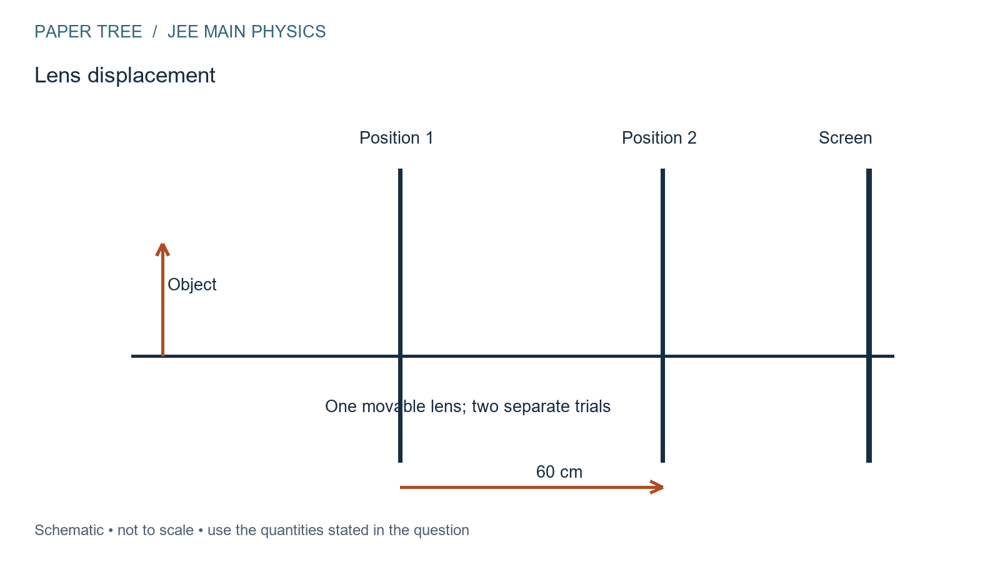
- A. 16 cm
- B. 10 cm
- C. 25 cm
- D. 34 cm
Answer and explanation
A. 16 cm
The conjugate object and image distances satisfy u+v=D and v−u=s, giving u=20 cm and v=80 cm. Then f=uv/(u+v)=16 cm. Magnifications at the two positions have magnitudes v/u and u/v; the larger is 4 and the height ratio is 16.
For the requested outcome — Find the focal length. — the result is 16 cm.
An object and screen are fixed 100 cm apart. A thin convex lens forms a sharp real image on the screen at two positions separated by 60 cm. Assume paraxial rays and that the lens is in air. Find the magnitude of the larger image magnification. Choose the closest value.
Use paraxial geometrical optics, thin lenses in air and small diffraction/interference angles unless specified otherwise. Sources in path-difference questions are coherent, initially in phase and equally polarised. Media are transparent, isotropic and normally dispersive.
- A. 4
- B. 1.667
- C. 0.8
- D. 0.25
Answer and explanation
A. 4
The conjugate object and image distances satisfy u+v=D and v−u=s, giving u=20 cm and v=80 cm. Then f=uv/(u+v)=16 cm. Magnifications at the two positions have magnitudes v/u and u/v; the larger is 4 and the height ratio is 16.
For the requested outcome — Find the magnitude of the larger image magnification. — the result is 4.
An object and screen are fixed 100 cm apart. A thin convex lens forms a sharp real image on the screen at two positions separated by 60 cm. Assume paraxial rays and that the lens is in air. Find the ratio of the larger image height to the smaller image height for the same object.
Use paraxial geometrical optics, thin lenses in air and small diffraction/interference angles unless specified otherwise. Sources in path-difference questions are coherent, initially in phase and equally polarised. Media are transparent, isotropic and normally dispersive.
Answer and explanation
C. 16
The conjugate object and image distances satisfy u+v=D and v−u=s, giving u=20 cm and v=80 cm. Then f=uv/(u+v)=16 cm. Magnifications at the two positions have magnitudes v/u and u/v; the larger is 4 and the height ratio is 16.
For the requested outcome — Find the ratio of the larger image height to the smaller image height for the same object. — the result is 16.
An object and screen are fixed ξ cm apart. A thin convex lens forms a sharp real image on the screen at two positions separated by 30 cm. Assume paraxial rays and that the lens is in air. The recorded value of the focal length is 20 cm. Which listed positive value of ξ is consistent with this measurement?
Use paraxial geometrical optics, thin lenses in air and small diffraction/interference angles unless specified otherwise. Sources in path-difference questions are coherent, initially in phase and equally polarised. Media are transparent, isotropic and normally dispersive.
Answer and explanation
C. 90
Use the physical relations below with the missing input ξ. The recorded value of the focal length gives ξ=90 in the unit assigned to ξ in the question. Substitution checks the observation:
The conjugate object and image distances satisfy u+v=D and v−u=s, giving u=30 cm and v=60 cm. Then f=uv/(u+v)=20 cm. Magnifications at the two positions have magnitudes v/u and u/v; the larger is 2 and the height ratio is 4.
An object and screen are fixed 90 cm apart. A thin convex lens forms a sharp real image on the screen at two positions separated by ξ cm. Assume paraxial rays and that the lens is in air. The recorded value of the magnitude of the larger image magnification is 2. Which listed positive value of ξ is consistent with this measurement?
Use paraxial geometrical optics, thin lenses in air and small diffraction/interference angles unless specified otherwise. Sources in path-difference questions are coherent, initially in phase and equally polarised. Media are transparent, isotropic and normally dispersive.
Answer and explanation
D. 30
Use the physical relations below with the missing input ξ. The recorded value of the magnitude of the larger image magnification gives ξ=30 in the unit assigned to ξ in the question. Substitution checks the observation:
The conjugate object and image distances satisfy u+v=D and v−u=s, giving u=30 cm and v=60 cm. Then f=uv/(u+v)=20 cm. Magnifications at the two positions have magnitudes v/u and u/v; the larger is 2 and the height ratio is 4.
An object and screen are fixed ξ cm apart. A thin convex lens forms a sharp real image on the screen at two positions separated by 30 cm. Assume paraxial rays and that the lens is in air. The recorded value of the ratio of the larger image height to the smaller image height for the same object is 4. Which listed positive value of ξ is consistent with this measurement?
Use paraxial geometrical optics, thin lenses in air and small diffraction/interference angles unless specified otherwise. Sources in path-difference questions are coherent, initially in phase and equally polarised. Media are transparent, isotropic and normally dispersive.
Answer and explanation
B. 90
Use the physical relations below with the missing input ξ. The recorded value of the ratio of the larger image height to the smaller image height for the same object gives ξ=90 in the unit assigned to ξ in the question. Substitution checks the observation:
The conjugate object and image distances satisfy u+v=D and v−u=s, giving u=30 cm and v=60 cm. Then f=uv/(u+v)=20 cm. Magnifications at the two positions have magnitudes v/u and u/v; the larger is 2 and the height ratio is 4.
An equilateral glass prism of angle 60° has minimum deviation 60° in air. The same prism is immersed in a liquid of refractive index 1.25 relative to air. Use geometrical optics and assume no dispersion at the light’s wavelength. Find the minimum deviation in the liquid. Choose the closest value.
Use paraxial geometrical optics, thin lenses in air and small diffraction/interference angles unless specified otherwise. Sources in path-difference questions are coherent, initially in phase and equally polarised. Media are transparent, isotropic and normally dispersive.
- A. 13.85 °
- B. 60 °
- C. 27.71 °
- D. 48 °
Answer and explanation
C. 27.71 °
At minimum deviation, n=sin[(A+δ)/2]/sin(A/2)=1.732050808. Immersion changes the relative index to 1.385640646. Hence δnew=2asin[(n/nliquid)sin(A/2)]−A=27.70755722°. The critical angle is asin(nliquid/n)=46.19400773°. The glass’s absolute speed remains c/n=173205080.8 m/s.
For the requested outcome — Find the minimum deviation in the liquid. — the result is 27.71 °.
An equilateral glass prism of angle 60° has minimum deviation 60° in air. The same prism is immersed in a liquid of refractive index 1.25 relative to air. Use geometrical optics and assume no dispersion at the light’s wavelength. Find the critical angle at a glass-to-liquid interface. Choose the closest value.
Use paraxial geometrical optics, thin lenses in air and small diffraction/interference angles unless specified otherwise. Sources in path-difference questions are coherent, initially in phase and equally polarised. Media are transparent, isotropic and normally dispersive.
- A. 46.19 °
- B. 24.62 °
- C. 23.1 °
- D. 35.26 °
Answer and explanation
A. 46.19 °
At minimum deviation, n=sin[(A+δ)/2]/sin(A/2)=1.732050808. Immersion changes the relative index to 1.385640646. Hence δnew=2asin[(n/nliquid)sin(A/2)]−A=27.70755722°. The critical angle is asin(nliquid/n)=46.19400773°. The glass’s absolute speed remains c/n=173205080.8 m/s.
For the requested outcome — Find the critical angle at a glass-to-liquid interface. — the result is 46.19 °.
An equilateral glass prism of angle 60° has minimum deviation 60° in air. The same prism is immersed in a liquid of refractive index 1.25 relative to air. Use geometrical optics and assume no dispersion at the light’s wavelength. Find the light speed inside this glass, taking vacuum light speed as 3 × 10⁸ m/s. Choose the closest value.
Use paraxial geometrical optics, thin lenses in air and small diffraction/interference angles unless specified otherwise. Sources in path-difference questions are coherent, initially in phase and equally polarised. Media are transparent, isotropic and normally dispersive.
- A. 2.4 × 10⁸ m/s
- B. 2.165 × 10⁸ m/s
- C. 1.732 × 10⁸ m/s
- D. 5.196 × 10⁸ m/s
Answer and explanation
C. 1.732 × 10⁸ m/s
At minimum deviation, n=sin[(A+δ)/2]/sin(A/2)=1.732050808. Immersion changes the relative index to 1.385640646. Hence δnew=2asin[(n/nliquid)sin(A/2)]−A=27.70755722°. The critical angle is asin(nliquid/n)=46.19400773°. The glass’s absolute speed remains c/n=173205080.8 m/s.
For the requested outcome — Find the light speed inside this glass, taking vacuum light speed as 3 × 10⁸ m/s. — the result is 1.732 × 10⁸ m/s.
An equilateral glass prism of angle 60° has minimum deviation ξ° in air. The same prism is immersed in a liquid of refractive index 1.1 relative to air. Use geometrical optics and assume no dispersion at the light’s wavelength. The recorded value of the minimum deviation in the liquid is 28.27841369 °. Which listed positive value of ξ is consistent with this measurement?
Use paraxial geometrical optics, thin lenses in air and small diffraction/interference angles unless specified otherwise. Sources in path-difference questions are coherent, initially in phase and equally polarised. Media are transparent, isotropic and normally dispersive.
Answer and explanation
A. 40
Use the physical relations below with the missing input ξ. The recorded value of the minimum deviation in the liquid gives ξ=40 in the unit assigned to ξ in the question. Substitution checks the observation:
At minimum deviation, n=sin[(A+δ)/2]/sin(A/2)=1.532088886. Immersion changes the relative index to 1.392808078. Hence δnew=2asin[(n/nliquid)sin(A/2)]−A=28.27841369°. The critical angle is asin(nliquid/n)=45.88746321°. The glass’s absolute speed remains c/n=195811093.4 m/s.
An equilateral glass prism of angle 60° has minimum deviation ξ° in air. The same prism is immersed in a liquid of refractive index 1.1 relative to air. Use geometrical optics and assume no dispersion at the light’s wavelength. The recorded value of the critical angle at a glass-to-liquid interface is 45.88746321 °. Which listed positive value of ξ is consistent with this measurement?
Use paraxial geometrical optics, thin lenses in air and small diffraction/interference angles unless specified otherwise. Sources in path-difference questions are coherent, initially in phase and equally polarised. Media are transparent, isotropic and normally dispersive.
Answer and explanation
D. 40
Use the physical relations below with the missing input ξ. The recorded value of the critical angle at a glass-to-liquid interface gives ξ=40 in the unit assigned to ξ in the question. Substitution checks the observation:
At minimum deviation, n=sin[(A+δ)/2]/sin(A/2)=1.532088886. Immersion changes the relative index to 1.392808078. Hence δnew=2asin[(n/nliquid)sin(A/2)]−A=28.27841369°. The critical angle is asin(nliquid/n)=45.88746321°. The glass’s absolute speed remains c/n=195811093.4 m/s.
An equilateral glass prism of angle 60° has minimum deviation ξ° in air. The same prism is immersed in a liquid of refractive index 1.1 relative to air. Use geometrical optics and assume no dispersion at the light’s wavelength. The recorded value of the light speed inside this glass, taking vacuum light speed as 3 × 10⁸ m/s is 195811093.4 m/s. Which listed positive value of ξ is consistent with this measurement?
Use paraxial geometrical optics, thin lenses in air and small diffraction/interference angles unless specified otherwise. Sources in path-difference questions are coherent, initially in phase and equally polarised. Media are transparent, isotropic and normally dispersive.
Answer and explanation
B. 40
Use the physical relations below with the missing input ξ. The recorded value of the light speed inside this glass, taking vacuum light speed as 3 × 10⁸ m/s gives ξ=40 in the unit assigned to ξ in the question. Substitution checks the observation:
At minimum deviation, n=sin[(A+δ)/2]/sin(A/2)=1.532088886. Immersion changes the relative index to 1.392808078. Hence δnew=2asin[(n/nliquid)sin(A/2)]−A=28.27841369°. The critical angle is asin(nliquid/n)=45.88746321°. The glass’s absolute speed remains c/n=195811093.4 m/s.
Unpolarised light passes through three ideal polaroids. Their transmission axes make angles 0°, 30° and 60° with a reference line. The emerging intensity is measured as 9 W/m². Ignore absorption except that described by ideal polariser transmission and Malus’s law. Find the incident unpolarised intensity. Choose the closest value.
Use paraxial geometrical optics, thin lenses in air and small diffraction/interference angles unless specified otherwise. Sources in path-difference questions are coherent, initially in phase and equally polarised. Media are transparent, isotropic and normally dispersive.
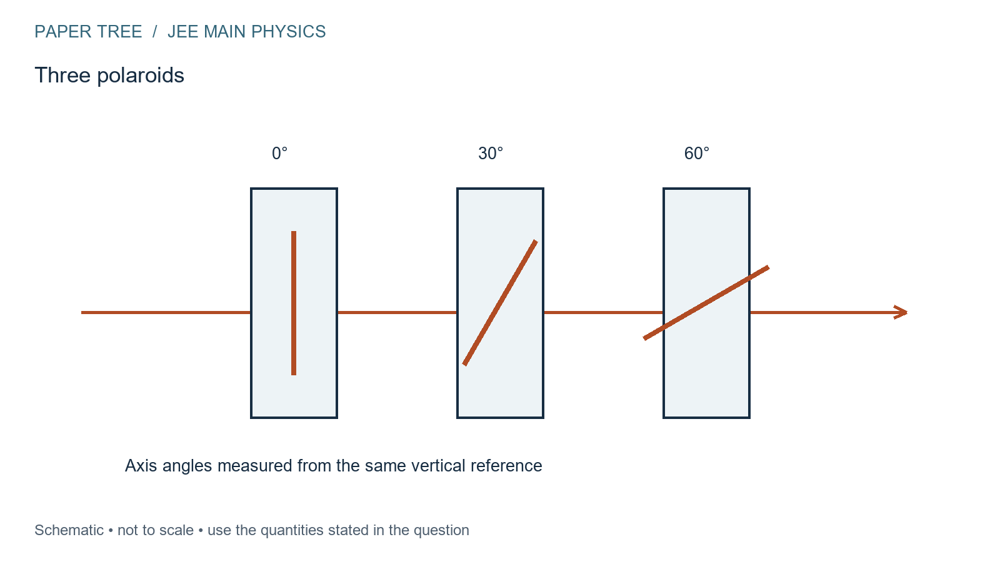
- A. 64 W/m²
- B. -32 W/m²
- C. 32 W/m²
- D. 16 W/m²
Answer and explanation
C. 32 W/m²
The first polariser transmits I₀/2. Successive factors are cos²θmiddle and cos²(θlast−θmiddle), so the observed final intensity implies I₀=32 W/m². After the second the intensity is 12 W/m². Removing it instead gives (I₀/2)cos²θlast=4 W/m².
For the requested outcome — Find the incident unpolarised intensity. — the result is 32 W/m².
Unpolarised light passes through three ideal polaroids. Their transmission axes make angles 0°, 30° and 60° with a reference line. The emerging intensity is measured as 9 W/m². Ignore absorption except that described by ideal polariser transmission and Malus’s law. Find the final intensity if the middle polaroid is removed and the other axes are unchanged. Choose the closest value.
Use paraxial geometrical optics, thin lenses in air and small diffraction/interference angles unless specified otherwise. Sources in path-difference questions are coherent, initially in phase and equally polarised. Media are transparent, isotropic and normally dispersive.
- A. 9 W/m²
- B. 16 W/m²
- C. 12 W/m²
- D. 4 W/m²
Answer and explanation
D. 4 W/m²
The first polariser transmits I₀/2. Successive factors are cos²θmiddle and cos²(θlast−θmiddle), so the observed final intensity implies I₀=32 W/m². After the second the intensity is 12 W/m². Removing it instead gives (I₀/2)cos²θlast=4 W/m².
For the requested outcome — Find the final intensity if the middle polaroid is removed and the other axes are unchanged. — the result is 4 W/m².
Unpolarised light passes through three ideal polaroids. Their transmission axes make angles 0°, 30° and 60° with a reference line. The emerging intensity is measured as 9 W/m². Ignore absorption except that described by ideal polariser transmission and Malus’s law. With all three present, find the intensity just after the second polaroid. Choose the closest value.
Use paraxial geometrical optics, thin lenses in air and small diffraction/interference angles unless specified otherwise. Sources in path-difference questions are coherent, initially in phase and equally polarised. Media are transparent, isotropic and normally dispersive.
- A. 9 W/m²
- B. 6 W/m²
- C. 16 W/m²
- D. 12 W/m²
Answer and explanation
D. 12 W/m²
The first polariser transmits I₀/2. Successive factors are cos²θmiddle and cos²(θlast−θmiddle), so the observed final intensity implies I₀=32 W/m². After the second the intensity is 12 W/m². Removing it instead gives (I₀/2)cos²θlast=4 W/m².
For the requested outcome — With all three present, find the intensity just after the second polaroid. — the result is 12 W/m².
Unpolarised light passes through three ideal polaroids. Their transmission axes make angles 0°, 45° and ξ° with a reference line. The emerging intensity is measured as 5 W/m². Ignore absorption except that described by ideal polariser transmission and Malus’s law. The recorded value of the incident unpolarised intensity is 40 W/m². Which listed positive value of ξ is consistent with this measurement?
Use paraxial geometrical optics, thin lenses in air and small diffraction/interference angles unless specified otherwise. Sources in path-difference questions are coherent, initially in phase and equally polarised. Media are transparent, isotropic and normally dispersive.
Answer and explanation
D. 90
Use the physical relations below with the missing input ξ. The recorded value of the incident unpolarised intensity gives ξ=90 in the unit assigned to ξ in the question. Substitution checks the observation:
The first polariser transmits I₀/2. Successive factors are cos²θmiddle and cos²(θlast−θmiddle), so the observed final intensity implies I₀=40 W/m². After the second the intensity is 10 W/m². Removing it instead gives (I₀/2)cos²θlast=0 W/m².
Unpolarised light passes through three ideal polaroids. Their transmission axes make angles 0°, 45° and ξ° with a reference line. The emerging intensity is measured as 5 W/m². Ignore absorption except that described by ideal polariser transmission and Malus’s law. The recorded value of the final intensity if the middle polaroid is removed and the other axes are unchanged is 0 W/m². Which listed positive value of ξ is consistent with this measurement?
Use paraxial geometrical optics, thin lenses in air and small diffraction/interference angles unless specified otherwise. Sources in path-difference questions are coherent, initially in phase and equally polarised. Media are transparent, isotropic and normally dispersive.
Answer and explanation
C. 90
Use the physical relations below with the missing input ξ. The recorded value of the final intensity if the middle polaroid is removed and the other axes are unchanged gives ξ=90 in the unit assigned to ξ in the question. Substitution checks the observation:
The first polariser transmits I₀/2. Successive factors are cos²θmiddle and cos²(θlast−θmiddle), so the observed final intensity implies I₀=40 W/m². After the second the intensity is 10 W/m². Removing it instead gives (I₀/2)cos²θlast=0 W/m².
Unpolarised light passes through three ideal polaroids. Their transmission axes make angles 0°, 45° and 90° with a reference line. The emerging intensity is measured as ξ W/m². Ignore absorption except that described by ideal polariser transmission and Malus’s law. The recorded value of intensity just after the second polaroid with all three present is 10 W/m². Which listed positive value of ξ is consistent with this measurement?
Use paraxial geometrical optics, thin lenses in air and small diffraction/interference angles unless specified otherwise. Sources in path-difference questions are coherent, initially in phase and equally polarised. Media are transparent, isotropic and normally dispersive.
Answer and explanation
B. 5
Use the physical relations below with the missing input ξ. Matching the measured intensity just after the second polaroid with all three present gives ξ=5 in the unit assigned to ξ in the question. Substitution checks the observation:
The first polariser transmits I₀/2. Successive factors are cos²θmiddle and cos²(θlast−θmiddle), so the observed final intensity implies I₀=40 W/m². After the second the intensity is 10 W/m². Removing it instead gives (I₀/2)cos²θlast=0 W/m².
Two thin convex lenses L₁ and L₂ of focal lengths 10 cm and 15 cm are 50 cm apart on a common axis. An object is 30 cm to the left of L₁. Light travels left to right. Use paraxial optics in air; report distances relative to L₂. How far to the right of L₂ is the final image? Choose the closest value.
Use paraxial geometrical optics, thin lenses in air and small diffraction/interference angles unless specified otherwise. Sources in path-difference questions are coherent, initially in phase and equally polarised. Media are transparent, isotropic and normally dispersive.
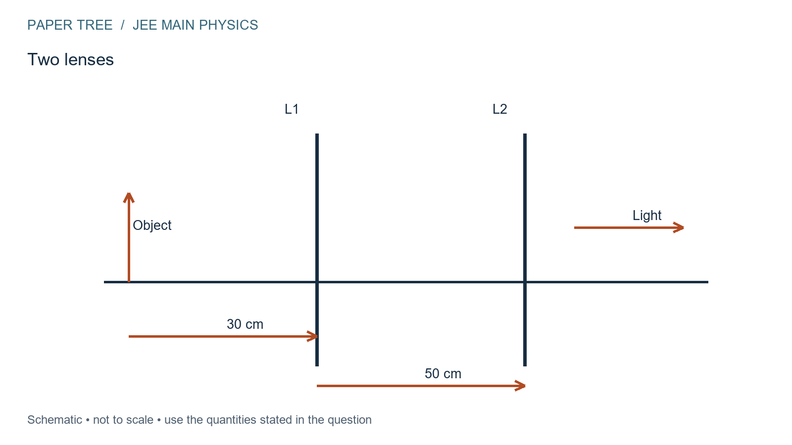
- A. 21.43 cm
- B. 52.5 cm
- C. 26.25 cm
- D. 15 cm
Answer and explanation
C. 26.25 cm
For L₁, 1/f₁=1/u₁+1/v₁ gives v₁=15 cm to its right. This is a real object 35 cm to the left of L₂. A second lens-equation calculation gives v₂=26.25 cm. Each lens inverts the image, so their magnification product is positive with magnitude 0.375. Original-object to final-image distance is 106.25 cm.
For the requested outcome — How far to the right of L₂ is the final image? — the result is 26.25 cm.
Two thin convex lenses L₁ and L₂ of focal lengths 10 cm and 15 cm are 50 cm apart on a common axis. An object is 30 cm to the left of L₁. Light travels left to right. Use paraxial optics in air; report distances relative to L₂. Find the magnitude of the overall transverse magnification. Choose the closest value.
Use paraxial geometrical optics, thin lenses in air and small diffraction/interference angles unless specified otherwise. Sources in path-difference questions are coherent, initially in phase and equally polarised. Media are transparent, isotropic and normally dispersive.
- A. 0.75
- B. 0.1875
- C. 0.375
- D. 0.5
Answer and explanation
C. 0.375
For L₁, 1/f₁=1/u₁+1/v₁ gives v₁=15 cm to its right. This is a real object 35 cm to the left of L₂. A second lens-equation calculation gives v₂=26.25 cm. Each lens inverts the image, so their magnification product is positive with magnitude 0.375. Original-object to final-image distance is 106.25 cm.
For the requested outcome — Find the magnitude of the overall transverse magnification. — the result is 0.375.
Two thin convex lenses L₁ and L₂ of focal lengths 10 cm and 15 cm are 50 cm apart on a common axis. An object is 30 cm to the left of L₁. Light travels left to right. Use paraxial optics in air; report distances relative to L₂. Find the distance from the original object to the final image. Choose the closest value.
Use paraxial geometrical optics, thin lenses in air and small diffraction/interference angles unless specified otherwise. Sources in path-difference questions are coherent, initially in phase and equally polarised. Media are transparent, isotropic and normally dispersive.
- A. 95 cm
- B. 76.25 cm
- C. 106.2 cm
- D. 56.25 cm
Answer and explanation
C. 106.2 cm
For L₁, 1/f₁=1/u₁+1/v₁ gives v₁=15 cm to its right. This is a real object 35 cm to the left of L₂. A second lens-equation calculation gives v₂=26.25 cm. Each lens inverts the image, so their magnification product is positive with magnitude 0.375. Original-object to final-image distance is 106.25 cm.
For the requested outcome — Find the distance from the original object to the final image. — the result is 106.2 cm.
Two thin convex lenses L₁ and L₂ of focal lengths 12 cm and 10 cm are ξ cm apart on a common axis. An object is 24 cm to the left of L₁. Light travels left to right. Use paraxial optics in air; report distances relative to L₂. The recorded value of final-image distance to the right of L₂ is 13.84615385 cm. Which listed positive value of ξ is consistent with this measurement?
Use paraxial geometrical optics, thin lenses in air and small diffraction/interference angles unless specified otherwise. Sources in path-difference questions are coherent, initially in phase and equally polarised. Media are transparent, isotropic and normally dispersive.
Answer and explanation
D. 60
Use the physical relations below with the missing input ξ. Matching the measured final-image distance to the right of L₂ gives ξ=60 in the unit assigned to ξ in the question. Substitution checks the observation:
For L₁, 1/f₁=1/u₁+1/v₁ gives v₁=24 cm to its right. This is a real object 36 cm to the left of L₂. A second lens-equation calculation gives v₂=13.84615385 cm. Each lens inverts the image, so their magnification product is positive with magnitude 0.3846153846. Original-object to final-image distance is 97.84615385 cm.
Two thin convex lenses L₁ and L₂ of focal lengths ξ cm and 10 cm are 60 cm apart on a common axis. An object is 24 cm to the left of L₁. Light travels left to right. Use paraxial optics in air; report distances relative to L₂. The recorded value of the magnitude of the overall transverse magnification is 0.3846153846. Which listed positive value of ξ is consistent with this measurement?
Use paraxial geometrical optics, thin lenses in air and small diffraction/interference angles unless specified otherwise. Sources in path-difference questions are coherent, initially in phase and equally polarised. Media are transparent, isotropic and normally dispersive.
Answer and explanation
C. 12
Use the physical relations below with the missing input ξ. The recorded value of the magnitude of the overall transverse magnification gives ξ=12 in the unit assigned to ξ in the question. Substitution checks the observation:
For L₁, 1/f₁=1/u₁+1/v₁ gives v₁=24 cm to its right. This is a real object 36 cm to the left of L₂. A second lens-equation calculation gives v₂=13.84615385 cm. Each lens inverts the image, so their magnification product is positive with magnitude 0.3846153846. Original-object to final-image distance is 97.84615385 cm.
Two thin convex lenses L₁ and L₂ of focal lengths 12 cm and ξ cm are 60 cm apart on a common axis. An object is 24 cm to the left of L₁. Light travels left to right. Use paraxial optics in air; report distances relative to L₂. The recorded value of the distance from the original object to the final image is 97.84615385 cm. Which listed positive value of ξ is consistent with this measurement?
Use paraxial geometrical optics, thin lenses in air and small diffraction/interference angles unless specified otherwise. Sources in path-difference questions are coherent, initially in phase and equally polarised. Media are transparent, isotropic and normally dispersive.
Answer and explanation
C. 10
Use the physical relations below with the missing input ξ. The recorded value of the distance from the original object to the final image gives ξ=10 in the unit assigned to ξ in the question. Substitution checks the observation:
For L₁, 1/f₁=1/u₁+1/v₁ gives v₁=24 cm to its right. This is a real object 36 cm to the left of L₂. A second lens-equation calculation gives v₂=13.84615385 cm. Each lens inverts the image, so their magnification product is positive with magnitude 0.3846153846. Original-object to final-image distance is 97.84615385 cm.
In Young’s double-slit experiment, slit spacing is 0.5 mm and screen distance 2 m. The observed fringe width is 2 mm. A plate of thickness 10 μm placed over one slit shifts the central fringe by 20 mm. Assume normal incidence, thin plate geometry and the small-angle approximation. Find the refractive index of the plate. Choose the closest value.
Use paraxial geometrical optics, thin lenses in air and small diffraction/interference angles unless specified otherwise. Sources in path-difference questions are coherent, initially in phase and equally polarised. Media are transparent, isotropic and normally dispersive.
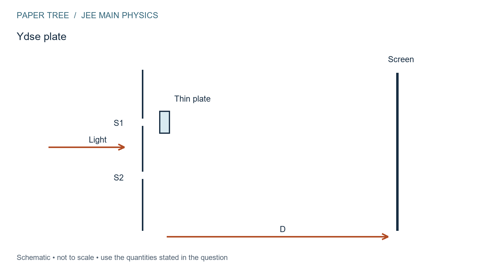
Answer and explanation
B. 1.5
From β=λD/d, λ=5 × 10⁻⁷ m. A plate adds optical path (n−1)t and shifts the pattern by D(n−1)t/d. The measured shift therefore implies added path 5 × 10⁻⁶ m and n=1.5. The number of shifted fringes is added path/λ=10.
For the requested outcome — Find the refractive index of the plate. — the result is 1.5.
In Young’s double-slit experiment, slit spacing is 0.5 mm and screen distance 2 m. The observed fringe width is 2 mm. A plate of thickness 10 μm placed over one slit shifts the central fringe by 20 mm. Assume normal incidence, thin plate geometry and the small-angle approximation. How many fringe widths does the central fringe move? Choose the closest value.
Use paraxial geometrical optics, thin lenses in air and small diffraction/interference angles unless specified otherwise. Sources in path-difference questions are coherent, initially in phase and equally polarised. Media are transparent, isotropic and normally dispersive.
Answer and explanation
A. 10
From β=λD/d, λ=5 × 10⁻⁷ m. A plate adds optical path (n−1)t and shifts the pattern by D(n−1)t/d. The measured shift therefore implies added path 5 × 10⁻⁶ m and n=1.5. The number of shifted fringes is added path/λ=10.
For the requested outcome — How many fringe widths does the central fringe move? — the result is 10.
In Young’s double-slit experiment, slit spacing is 0.5 mm and screen distance 2 m. The observed fringe width is 2 mm. A plate of thickness 10 μm placed over one slit shifts the central fringe by 20 mm. Assume normal incidence, thin plate geometry and the small-angle approximation. Find the light wavelength. Choose the closest value.
Use paraxial geometrical optics, thin lenses in air and small diffraction/interference angles unless specified otherwise. Sources in path-difference questions are coherent, initially in phase and equally polarised. Media are transparent, isotropic and normally dispersive.
- A. 8 m
- B. 5 × 10⁻⁷ m
- C. 1 × 10⁻⁶ m
- D. 2.5 × 10⁻⁷ m
Answer and explanation
B. 5 × 10⁻⁷ m
From β=λD/d, λ=5 × 10⁻⁷ m. A plate adds optical path (n−1)t and shifts the pattern by D(n−1)t/d. The measured shift therefore implies added path 5 × 10⁻⁶ m and n=1.5. The number of shifted fringes is added path/λ=10.
For the requested outcome — Find the light wavelength. — the result is 5 × 10⁻⁷ m.
In Young’s double-slit experiment, slit spacing is 0.4 mm and screen distance ξ m. The observed fringe width is 1.875 mm. A plate of thickness 12 μm placed over one slit shifts the central fringe by 18 mm. Assume normal incidence, thin plate geometry and the small-angle approximation. The recorded value of the refractive index of the plate is 1.4. Which listed positive value of ξ is consistent with this measurement?
Use paraxial geometrical optics, thin lenses in air and small diffraction/interference angles unless specified otherwise. Sources in path-difference questions are coherent, initially in phase and equally polarised. Media are transparent, isotropic and normally dispersive.
Answer and explanation
B. 1.5
Use the physical relations below with the missing input ξ. The recorded value of the refractive index of the plate gives ξ=1.5 in the unit assigned to ξ in the question. Substitution checks the observation:
From β=λD/d, λ=5 × 10⁻⁷ m. A plate adds optical path (n−1)t and shifts the pattern by D(n−1)t/d. The measured shift therefore implies added path 4.8 × 10⁻⁶ m and n=1.4. The number of shifted fringes is added path/λ=9.6.
In Young’s double-slit experiment, slit spacing is 0.4 mm and screen distance 1.5 m. The observed fringe width is 1.875 mm. A plate of thickness 12 μm placed over one slit shifts the central fringe by ξ mm. Assume normal incidence, thin plate geometry and the small-angle approximation. The recorded value of number of fringe widths by which the central fringe moves is 9.6. Which listed positive value of ξ is consistent with this measurement?
Use paraxial geometrical optics, thin lenses in air and small diffraction/interference angles unless specified otherwise. Sources in path-difference questions are coherent, initially in phase and equally polarised. Media are transparent, isotropic and normally dispersive.
Answer and explanation
D. 18
Use the physical relations below with the missing input ξ. Matching the measured number of fringe widths by which the central fringe moves gives ξ=18 in the unit assigned to ξ in the question. Substitution checks the observation:
From β=λD/d, λ=5 × 10⁻⁷ m. A plate adds optical path (n−1)t and shifts the pattern by D(n−1)t/d. The measured shift therefore implies added path 4.8 × 10⁻⁶ m and n=1.4. The number of shifted fringes is added path/λ=9.6.
In Young’s double-slit experiment, slit spacing is ξ mm and screen distance 1.5 m. The observed fringe width is 1.875 mm. A plate of thickness 12 μm placed over one slit shifts the central fringe by 18 mm. Assume normal incidence, thin plate geometry and the small-angle approximation. The recorded value of the light wavelength is 5 × 10⁻⁷ m. Which listed positive value of ξ is consistent with this measurement?
Use paraxial geometrical optics, thin lenses in air and small diffraction/interference angles unless specified otherwise. Sources in path-difference questions are coherent, initially in phase and equally polarised. Media are transparent, isotropic and normally dispersive.
Answer and explanation
B. 0.4
Use the physical relations below with the missing input ξ. The recorded value of the light wavelength gives ξ=0.4 in the unit assigned to ξ in the question. Substitution checks the observation:
From β=λD/d, λ=5 × 10⁻⁷ m. A plate adds optical path (n−1)t and shifts the pattern by D(n−1)t/d. The measured shift therefore implies added path 4.8 × 10⁻⁶ m and n=1.4. The number of shifted fringes is added path/λ=9.6.
Electrons have unknown initial kinetic energy K0. Passing through a retarding potential 12 V increases their de Broglie wavelength by a factor 3. They remain nonrelativistic and none is turned back. An identical initial electron beam is instead accelerated through 6 V. Use λ(nm)=√[0.0150/K(eV)]. A photon of energy ξ eV produces the initial electrons as maximum-energy photoelectrons. In this arrangement, the following outcome is measured: the emitter’s threshold wavelength, using hc=1240 eV nm = 275.5555556 nm. Which listed positive value of ξ is consistent with that outcome?
Use ordinary single-photon emission, fixed work function and nonrelativistic matter waves. Neglect contact potentials and space charge; emission comparisons use frequencies above threshold unless stated otherwise.
Answer and explanation
B. 18
Use the coupled physical relations below. The missing input is ξ=18 in the units assigned in the stem.
Since wavelength is inverse momentum, Kret=K0/r²=K0−V, so K0=13.5 eV. The accelerated state has 19.5 eV and wavelength 0.02773500981 nm. Einstein’s equation gives φ=4.5 eV and threshold 275.5555556 nm. The accelerated-to-retarded energy ratio is 13.
In an electron diffraction experiment with a fixed crystal, the accelerating voltage is changed so that the de Broglie wavelength of the electrons is reduced to one third of its earlier value. The accelerating voltage must be made:
Use ordinary single-photon emission, fixed work function and nonrelativistic matter waves. Neglect contact potentials and space charge; emission comparisons use frequencies above threshold unless stated otherwise.
- A. nine times as large
- B. one third as large
- C. one ninth as large
- D. three times as large
Answer and explanation
A. nine times as large
Since λ is inversely proportional to √(V), we have V proportional to 1 / lambda². Reducing λ by a factor of 3 multiplies 1 / lambda² by 9, so V must be increased nine fold. For example 100 V giving 1.227 Å becomes 900 V giving 0.409 Å.
Light of wavelength 3100 Å falls on a metal of work function 2.0 eV and a steady photocurrent flows. The source is replaced by one of wavelength 6200 Å delivering exactly the same power. Assume every incident photon of sufficient energy releases an electron and that a collecting field gathers all released electrons. Using h c = 12400 eV angstrom, the result is that:
Use ordinary single-photon emission, fixed work function and nonrelativistic matter waves. Neglect contact potentials and space charge; emission comparisons use frequencies above threshold unless stated otherwise.
- A. the photocurrent is unchanged because the power delivered to the metal is unchanged
- B. the maximum kinetic energy of the photoelectrons doubles because the wavelength has doubled
- C. the photocurrent falls practically to zero because the released electrons have no kinetic energy
- D. the saturation photocurrent doubles while the stopping potential falls to zero
Answer and explanation
D. the saturation photocurrent doubles while the stopping potential falls to zero
At 3100 Å the photon energy is 12400 / 3100 = 4.0 eV, so KE_max = 4.0 - 2.0 = 2.0 eV. At 6200 Å the photon energy is 12400 / 6200 = 2.0 eV, exactly the work function, so KE_max = 0 and the stopping potential falls to zero. Photon energy has halved at the same power, so the photon rate doubles. Under the stated assumption that each sufficiently energetic photon releases an electron and all released electrons are collected, the saturation current follows the photon rate and therefore doubles. Note that maximum kinetic energy and emission rate are separate quantities: frequency fixes the former, intensity fixes the latter.
In a plot of maximum kinetic energy against frequency for a metal, the line meets the frequency axis at 6 × 10¹⁴ Hz. Taking h = 6.6 × 10⁻³⁴ J s and e = 1.6 × 10⁻¹⁹ C, the work function of the metal is:
Use ordinary single-photon emission, fixed work function and nonrelativistic matter waves. Neglect contact potentials and space charge; emission comparisons use frequencies above threshold unless stated otherwise.
- A. 24.75 eV
- B. 3.96 eV
- C. 0.396 eV
- D. 2.475 eV
Answer and explanation
D. 2.475 eV
At the point where the line meets the frequency axis KE_max is zero, so nu = nu_0 = 6 × 10¹⁴ Hz. Then W = h nu_0 = 6.6 × 10⁻³⁴ x 6 × 10¹⁴ = 3.96 × 10⁻¹⁹ J = 3.96 × 10⁻¹⁹ / 1.6 × 10⁻¹⁹ = 2.475 eV.
Einstein's photoelectric equation for a metal of work function W illuminated by light of frequency nu is:
Use ordinary single-photon emission, fixed work function and nonrelativistic matter waves. Neglect contact potentials and space charge; emission comparisons use frequencies above threshold unless stated otherwise.
- A. KE_max = h nu x W
- B. KE_max = h nu - W
- C. KE_max = h nu + W
- D. KE_max = W - h nu
Answer and explanation
B. KE_max = h nu - W
A photon of energy h nu is absorbed by one electron. Part of this energy, W, is used in escaping from the surface, and the rest appears as kinetic energy. The most weakly bound electrons keep the largest share, so KE_max = h nu - W.
A photoelectric apparatus displays S=aV_stop+δ, with unknown positive dimensionless gain a and unknown constant offset δ in volts. For photon energies 3 eV and 5 eV on the same metal, the readings are 0.8 V and 3.2 V respectively. In a separate measurement using 4 eV photons on this metal, the fastest photoelectrons are accelerated through an additional 2 V; their final de Broglie wavelength is √(0.0150/3.5) nm. Use λ(nm)=√[0.0150/K(eV)] for a nonrelativistic electron. The work function, gain and offset stay fixed; there are no contact-potential shifts. Find the offset δ. Choose the closest value.
Use the idealisations, constants, geometry and sign conventions stated in this question. Any accompanying drawing is schematic.
- A. 0.1 V
- B. 0.2 V
- C. 0.4 V
- D. 0.6 V
Answer and explanation
B. 0.2 V
The stopping potential changes by 2 V when photon energy changes by 2 eV, so a=(3.2−0.8)/2=1.2. The final wavelength gives kinetic energy 3.5 eV. Removing the added 2 eV leaves emitted K_max=1.5 eV for 4 eV photons, hence the work function is 2.5 eV. At 3 eV illumination the true stopping potential is 0.5 V. Consequently δ=0.8−1.2×0.5=0.2 V. The second reading verifies 1.2×2.5+0.2=3.2 V.
Einstein's equation gives the maximum kinetic energy of photoelectrons rather than the kinetic energy of every electron because:
Use ordinary single-photon emission, fixed work function and nonrelativistic matter waves. Neglect contact potentials and space charge; emission comparisons use frequencies above threshold unless stated otherwise.
- A. some electrons absorb two photons and others only one
- B. electrons from below the surface lose part of their energy before escaping
- C. Planck constant has a small uncertainty in its measured value
- D. the incident light always contains a range of frequencies
Answer and explanation
B. electrons from below the surface lose part of their energy before escaping
The work function is the minimum energy for escape and applies to the least tightly bound electrons at the surface. Electrons originating deeper must expend extra energy in collisions with the lattice, so they emerge with less than h nu - W. The observed spectrum therefore extends from zero up to KE_max.
When the frequency of the light incident on a photosensitive metal is increased by 2 × 10¹⁴ Hz, the maximum kinetic energy of the photoelectrons increases by (h = 6.6 × 10⁻³⁴ J s, e = 1.6 × 10⁻¹⁹ C):
Use ordinary single-photon emission, fixed work function and nonrelativistic matter waves. Neglect contact potentials and space charge; emission comparisons use frequencies above threshold unless stated otherwise.
- A. 8.25 eV
- B. 0.33 eV
- C. 1.32 eV
- D. 0.825 eV
Answer and explanation
D. 0.825 eV
Delta KE = h Delta nu = 6.6 × 10⁻³⁴ x 2 × 10¹⁴ = 1.32 × 10⁻¹⁹ J. In eV this is 1.32 × 10⁻¹⁹ / 1.6 × 10⁻¹⁹ = 0.825 eV. The work function cancels because it is unchanged.
In Einstein's photoelectric equation KE_max = h nu - W, the intensity of the incident light:
Use ordinary single-photon emission, fixed work function and nonrelativistic matter waves. Neglect contact potentials and space charge; emission comparisons use frequencies above threshold unless stated otherwise.
- A. appears hidden inside W, so a brighter beam lowers the work function
- B. appears as a multiplying factor on nu, so KE_max is proportional to intensity
- C. does not appear at all, so KE_max is independent of intensity
- D. appears hidden inside the symbol h, so KE_max grows with intensity
Answer and explanation
C. does not appear at all, so KE_max is independent of intensity
The equation involves only the photon energy h nu and the metal's work function W. Intensity determines how many such photons arrive per second, and so fixes the current, but the energy transaction for each individual electron is unchanged.
Photons of energy 5 eV eject electrons of maximum kinetic energy 3 eV from a metal. Photons of energy 7 eV incident on the same metal will eject electrons of maximum kinetic energy:
Use ordinary single-photon emission, fixed work function and nonrelativistic matter waves. Neglect contact potentials and space charge; emission comparisons use frequencies above threshold unless stated otherwise.
- A. 3 eV
- B. 4.2 eV
- C. 5 eV
- D. 7 eV
Answer and explanation
C. 5 eV
From the first case W = 5 - 3 = 2 eV. For the second case KE_max = 7 - 2 = 5 eV. Note that the kinetic energy rose by 2 eV, exactly the rise in photon energy, since W is unchanged.
The classical wave theory of light fails to explain the photoelectric effect chiefly because it predicts that:
Use ordinary single-photon emission, fixed work function and nonrelativistic matter waves. Neglect contact potentials and space charge; emission comparisons use frequencies above threshold unless stated otherwise.
- A. the photocurrent should be independent of the intensity of the incident light
- B. no electrons should be emitted at all from a metal surface by light of any frequency
- C. the emission should stop when the accelerating potential is made zero
- D. An intensity-dependent emission delay, absent in observations
Answer and explanation
D. An intensity-dependent emission delay, absent in observations
On the wave picture a very dim source would take hours to deliver the work function to a single electron spread over an atomic area. Experiment shows emission within about 10⁻⁹ s even for feeble light, because a single photon delivers its whole energy to one electron at once.
In a photoelectric experiment the photocurrent becomes constant at large positive collector potential. This saturation occurs because:
Use ordinary single-photon emission, fixed work function and nonrelativistic matter waves. Neglect contact potentials and space charge; emission comparisons use frequencies above threshold unless stated otherwise.
- A. the incident photons are all used up at that potential
- B. every electron emitted from the plate is then collected, so no further increase is possible
- C. the emitter runs out of free electrons at that potential
- D. the electric field becomes so strong that electrons are pushed back into the plate
Answer and explanation
B. every electron emitted from the plate is then collected, so no further increase is possible
At small positive potential some slow electrons emitted sideways or backwards fail to reach the collector. As the potential rises, more of them are drawn in until all emitted electrons are collected. Then the current equals e times the number emitted per second and cannot rise further.
According to the classical wave theory of light, the maximum kinetic energy of photoelectrons should:
Use ordinary single-photon emission, fixed work function and nonrelativistic matter waves. Neglect contact potentials and space charge; emission comparisons use frequencies above threshold unless stated otherwise.
- A. increase when the intensity of the incident light is increased
- B. be exactly equal to h nu for every incident frequency
- C. depend only on the frequency of the incident light and not on its intensity
- D. be zero for all frequencies below a threshold frequency
Answer and explanation
A. increase when the intensity of the incident light is increased
In the wave picture the electric field of the wave drives the electron; a larger amplitude, that is a larger intensity, would give the electron more energy. Experiment shows KE_max is completely independent of intensity and grows linearly with frequency, which is what Einstein's equation gives.
In photoelectric emission a single electron inside the metal:
Use ordinary single-photon emission, fixed work function and nonrelativistic matter waves. Neglect contact potentials and space charge; emission comparisons use frequencies above threshold unless stated otherwise.
- A. absorbs several photons simultaneously in ordinary light so that low frequencies also work
- B. is emitted only if it is a nuclear electron of the metal atom
- C. absorbs one whole photon and either escapes or gives the energy back to the lattice
- D. absorbs a fraction of the energy of each of many photons until it collects enough to escape
Answer and explanation
C. absorbs one whole photon and either escapes or gives the energy back to the lattice
The elementary photoelectric process is the absorption of one photon by one electron. The electron gains h nu at once. If h nu exceeds the work function W the electron can escape with kinetic energy up to h nu - W, otherwise the energy is shared with the lattice as heat.
The photoelectric cell used to demonstrate emission with ultraviolet light is fitted with a quartz window instead of an ordinary glass window because:
Use ordinary single-photon emission, fixed work function and nonrelativistic matter waves. Neglect contact potentials and space charge; emission comparisons use frequencies above threshold unless stated otherwise.
- A. quartz slows the light down and so increases the energy of each photon
- B. ordinary glass absorbs ultraviolet light strongly while quartz transmits it
- C. quartz can withstand the vacuum inside the tube whereas glass cannot
- D. quartz has a much smaller work function than glass and so emits electrons itself
Answer and explanation
B. ordinary glass absorbs ultraviolet light strongly while quartz transmits it
Metals such as zinc have a threshold in the ultraviolet. Ordinary soda glass cuts off wavelengths shorter than about 350 nm, so the light that could cause emission would never reach the plate. Quartz is transparent well into the ultraviolet.
Experiments show that photoelectric emission begins within about 10⁻⁹ s of the light striking the surface, even for very feeble light. This shows that:
Use ordinary single-photon emission, fixed work function and nonrelativistic matter waves. Neglect contact potentials and space charge; emission comparisons use frequencies above threshold unless stated otherwise.
- A. light travels with a very large speed so the wave reaches the plate quickly
- B. the work function of every metal is extremely small, of the order of 10⁻⁹ eV
- C. the energy of the light is concentrated in localised quanta rather than spread over the wavefront
- D. the electrons in the metal move at speeds close to the speed of light before emission
Answer and explanation
C. the energy of the light is concentrated in localised quanta rather than spread over the wavefront
If light energy were spread uniformly over the wavefront, a dim beam would need minutes or hours to supply a few eV to one electron. Because energy arrives as photons of energy h nu, a single absorption event immediately supplies the whole energy, so emission is essentially instantaneous.
In the standard photoelectric experiment the photosensitive plate and the collector are enclosed in an evacuated glass tube mainly because:
Use ordinary single-photon emission, fixed work function and nonrelativistic matter waves. Neglect contact potentials and space charge; emission comparisons use frequencies above threshold unless stated otherwise.
- A. the vacuum increases the work function of the emitter so that emission becomes measurable
- B. air molecules would scatter and absorb the emitted electrons before they reach the collector
- C. air would absorb all the incident light before it reaches the emitter plate
- D. electrons cannot be accelerated by an electric field in the presence of a gas
Answer and explanation
B. air molecules would scatter and absorb the emitted electrons before they reach the collector
Photoelectrons emitted with a few eV of kinetic energy would collide with gas molecules, lose energy and be deflected, so the measured current and stopping potential would not correspond to the emitted energies. Evacuation gives the electrons a free path.
In a photoelectric experiment the collector plate is made increasingly negative with respect to the emitter. The photocurrent:
Use ordinary single-photon emission, fixed work function and nonrelativistic matter waves. Neglect contact potentials and space charge; emission comparisons use frequencies above threshold unless stated otherwise.
- A. decreases and becomes zero at a definite negative potential
- B. increases steadily because the negative plate repels electrons towards the collector
- C. stays at its saturation value until the potential is reversed completely
- D. becomes negative, that is it reverses direction
Answer and explanation
A. decreases and becomes zero at a definite negative potential
As the collector is made negative, electrons must climb a potential barrier of energy e V. Electrons with lower kinetic energy are turned back, so the current falls. At V = V₀ even the fastest electrons are stopped and the current is zero.
A monochromatic source emits 20 W of light of photon energy 4 × 10⁻¹⁹ J. The number of photons emitted per second is:
Use ordinary single-photon emission, fixed work function and nonrelativistic matter waves. Neglect contact potentials and space charge; emission comparisons use frequencies above threshold unless stated otherwise.
- A. 2 × 10⁻²⁰
- B. 5 × 10¹⁸
- C. 8 × 10⁻¹⁸
- D. 5 × 10¹⁹
Answer and explanation
D. 5 × 10¹⁹
n = P / E = 20 / (4 × 10⁻¹⁹) = 5 × 10¹⁹ photons per second. The very large number explains why the granular nature of light is not apparent in everyday experience.
A narrow beam of light is passed through a region of strong uniform electric field. The beam is:
Use ordinary single-photon emission, fixed work function and nonrelativistic matter waves. Neglect contact potentials and space charge; emission comparisons use frequencies above threshold unless stated otherwise.
- A. undeviated, because the photon carries no electric charge
- B. deflected towards the negative plate, because photons carry positive charge
- C. stopped completely, because the field does work against the photon momentum
- D. deflected towards the positive plate, because photons behave as negative particles
Answer and explanation
A. undeviated, because the photon carries no electric charge
The photon is a chargeless quantum of the electromagnetic field. Since the electric force is q E and q = 0, no deflection occurs. This is one way to distinguish a beam of photons from a beam of electrons, which would be strongly deflected.
Light of wavelength 5000 Å and intensity 2 W m⁻² falls normally on a surface of area 1 cm². Using h c = 12400 eV angstrom and e = 1.6 × 10⁻¹⁹ C, the number of photons striking the surface per second is about:
Use ordinary single-photon emission, fixed work function and nonrelativistic matter waves. Neglect contact potentials and space charge; emission comparisons use frequencies above threshold unless stated otherwise.
- A. 2.5 eV
- B. 5 × 10¹⁰
- C. 5 × 10¹⁸
- D. 5 × 10¹⁴
Answer and explanation
D. 5 × 10¹⁴
Power on the surface = 2 × 10⁻⁴ W. Energy per photon = 12400 / 5000 = 2.48 eV = 2.48 × 1.6 × 10⁻¹⁹ = 3.97 × 10⁻¹⁹ J. So n = 2 × 10⁻⁴ / 3.97 × 10⁻¹⁹ = 5.0 × 10¹⁴ photons per second.
For a photon, the relation between energy E and momentum p is:
Use ordinary single-photon emission, fixed work function and nonrelativistic matter waves. Neglect contact potentials and space charge; emission comparisons use frequencies above threshold unless stated otherwise.
- A. E = p² / (2 m)
- B. E = p c²
- C. E = p c
- D. E = p / c
Answer and explanation
C. E = p c
E = h nu = h c / λ and p = h / λ. Dividing, E / p = c, so E = p c. This is the massless limit of the relativistic relation E² = p² c² + m_0² c⁴.
A beam of light passes from vacuum into glass. The energy of each photon in the glass, compared with its value in vacuum:
Use ordinary single-photon emission, fixed work function and nonrelativistic matter waves. Neglect contact potentials and space charge; emission comparisons use frequencies above threshold unless stated otherwise.
- A. becomes zero because the photon is absorbed by the glass
- B. increases because the wavelength in glass is smaller
- C. decreases because the speed of light in glass is smaller
- D. stays the same because the frequency does not change
Answer and explanation
D. stays the same because the frequency does not change
On entering a medium the frequency is fixed by the source and does not change; the speed falls to c / n and the wavelength shortens to λ / n. Since E = h nu, the photon energy is unaltered. The momentum in the medium is h / (λ / n), which does change.
Among X ray photons, visible light photons and radio wave photons, the ordering by energy from largest to smallest is:
Use ordinary single-photon emission, fixed work function and nonrelativistic matter waves. Neglect contact potentials and space charge; emission comparisons use frequencies above threshold unless stated otherwise.
- A. visible, X ray, radio
- B. X ray, visible, radio
- C. all three are equal since all are electromagnetic waves
- D. radio, visible, X ray
Answer and explanation
B. X ray, visible, radio
X rays have the highest frequency and shortest wavelength, so their photons carry the largest energy, typically thousands of eV. Visible photons carry a few eV. Radio photons, with wavelengths of metres, carry only about 10⁻⁶ eV.
A photon of wavelength λ strikes a perfectly reflecting surface normally and bounces straight back. The magnitude of the momentum transferred to the surface is:
Use ordinary single-photon emission, fixed work function and nonrelativistic matter waves. Neglect contact potentials and space charge; emission comparisons use frequencies above threshold unless stated otherwise.
- A. h λ
- B. 2 h / λ
- C. h / λ
- D. zero, because the photon has no rest mass
Answer and explanation
B. 2 h / λ
Incoming momentum is +h / λ and outgoing is -h / λ, so the photon's momentum changes by 2h / λ. By conservation of momentum the surface receives 2h / λ. For an absorbing surface the transfer would be only h / λ, which is why a mirror feels twice the radiation pressure of a black surface.
Two beams of equal power, one of red light and one of blue light, fall on identical detectors. Compared with the red beam, the blue beam delivers:
Use ordinary single-photon emission, fixed work function and nonrelativistic matter waves. Neglect contact potentials and space charge; emission comparisons use frequencies above threshold unless stated otherwise.
- A. more photons per second, each of larger energy
- B. the same number of photons per second with the same energy each
- C. fewer photons per second, each of larger energy
- D. fewer photons per second, each of smaller energy
Answer and explanation
C. fewer photons per second, each of larger energy
Blue light has the higher frequency, so each blue photon carries more energy. Since the power P = n h nu is the same for both beams, n = P / (h nu) is smaller for the blue beam. Equal power means equal energy per second shared among fewer, more energetic packets.
Two photons have wavelengths in the ratio 1 : 2. The ratio of their momenta is:
Use ordinary single-photon emission, fixed work function and nonrelativistic matter waves. Neglect contact potentials and space charge; emission comparisons use frequencies above threshold unless stated otherwise.
- A. 1 : 2
- B. 2 : 1
- C. 1 : 4
- D. 4 : 1
Answer and explanation
B. 2 : 1
Since p is inversely proportional to λ, p₁ / p₂ = lambda_2 / lambda_1 = 2 / 1. The shorter wavelength photon carries the larger momentum, and by E = p c also the larger energy.
A photoelectric apparatus displays stopping reading S=Kmax/e+δ, where δ is an unknown constant instrumental offset. For photon energies 4 and 5 eV the displayed readings are 1.2 and 2.2 V. An independent calibration shows display δ=0.2 V when true voltage is zero. Under illumination with photon energy 6 eV, emitted electrons are accelerated through a further 3 V. Use λ(nm)=√[0.0150/K(eV)] for a nonrelativistic electron and hc=1240 eV nm. Find their final-to-initial speed ratio across the extra accelerating stage. Choose the closest value.
Use ordinary single-photon emission, fixed work function and nonrelativistic matter waves. Neglect contact potentials and space charge; emission comparisons use frequencies above threshold unless stated otherwise.
- A. 1.414
- B. 2.828
- C. 0.7071
- D. -1.414
Answer and explanation
A. 1.414
Correct the offset before using Einstein’s equation: work function φ=3 eV. The second measurement checks the same φ. For E3 the maximum kinetic energy is 3 eV; after extra acceleration it is 6 eV. The final matter wavelength is 0.05 nm, speed ratio 1.414213562, and optical threshold wavelength 413.3333333 nm.
Requested result: 1.414.
The straight line graph of stopping potential against frequency for a metal, extrapolated to zero frequency, meets the potential axis at:
Use ordinary single-photon emission, fixed work function and nonrelativistic matter waves. Neglect contact potentials and space charge; emission comparisons use frequencies above threshold unless stated otherwise.
- A. -W / e
- B. -W
- C. +W / e
- D. nu_0
Answer and explanation
A. -W / e
Putting nu = 0 in V₀ = (h / e) nu - W / e gives V₀ = -W / e. So the magnitude of the intercept on the potential axis multiplied by e gives the work function directly.
The stopping potential for a metal is 1 V when light of frequency nu is used and 3 V when the frequency is doubled to 2 nu. The work function of the metal is:
Use ordinary single-photon emission, fixed work function and nonrelativistic matter waves. Neglect contact potentials and space charge; emission comparisons use frequencies above threshold unless stated otherwise.
- A. 3 eV
- B. 1 eV
- C. 2 eV
- D. 0.5 eV
Answer and explanation
B. 1 eV
Let the photon energy at frequency nu be E, in eV. Then 1 = E - W and 3 = 2E - W. Subtracting the first from the second gives 2 = E, so E = 2 eV. Substituting back, W = E - 1 = 2 - 1 = 1 eV. The threshold frequency is therefore half of nu.
Consider two statements about the stopping potential V₀ in a photoelectric experiment: (i) V₀ depends on the frequency of the incident light; (ii) V₀ depends on the material of the emitter. Which is correct?
Use ordinary single-photon emission, fixed work function and nonrelativistic matter waves. Neglect contact potentials and space charge; emission comparisons use frequencies above threshold unless stated otherwise.
- A. Neither statement is correct
- B. Both statements are correct
- C. Only statement (i) is correct
- D. Only statement (ii) is correct
Answer and explanation
B. Both statements are correct
The relation contains both nu and W. Raising the frequency raises V₀ at fixed metal; changing to a metal of larger work function lowers V₀ at fixed frequency. Only the intensity is absent from the relation.
In a Millikan type experiment the stopping potential is plotted against frequency and the slope of the straight line is found to be 4.125 × 10⁻¹⁵ V s. Taking e = 1.6 × 10⁻¹⁹ C, the value of Planck constant is:
Use ordinary single-photon emission, fixed work function and nonrelativistic matter waves. Neglect contact potentials and space charge; emission comparisons use frequencies above threshold unless stated otherwise.
- A. 2.58 × 10⁴ J s
- B. 4.125 × 10⁻¹⁵ J s
- C. 6.6 × 10⁻³⁴ J s
- D. 6.6 × 10⁻¹⁵ J s
Answer and explanation
C. 6.6 × 10⁻³⁴ J s
h = e x slope = 1.6 × 10⁻¹⁹ x 4.125 × 10⁻¹⁵ = 6.6 × 10⁻³⁴ J s. Millikan measured this slope for several metals and found the same value each time, confirming Einstein's equation and giving an independent determination of h.
The stopping potential in a photoelectric experiment is the:
Use ordinary single-photon emission, fixed work function and nonrelativistic matter waves. Neglect contact potentials and space charge; emission comparisons use frequencies above threshold unless stated otherwise.
- A. potential difference at which the emitter stops emitting electrons
- B. least negative potential of the collector at which the photocurrent becomes zero
- C. positive potential of the collector at which the photocurrent becomes saturated
- D. potential energy of an electron at the surface of the emitter
Answer and explanation
B. least negative potential of the collector at which the photocurrent becomes zero
As the collector is made more negative, electrons must overcome a retarding barrier. At V₀ even the fastest electron, of energy KE_max, is just turned back, so the current falls to zero. Hence e V₀ = KE_max.
A cathode has work function 1.9 eV and is illuminated at 3100 Å. Use hc=12400 eV Å and neglect contact potentials. What is the minimum retarding collector voltage magnitude that reduces photocurrent to zero?
Use ordinary single-photon emission, fixed work function and nonrelativistic matter waves. Neglect contact potentials and space charge; emission comparisons use frequencies above threshold unless stated otherwise.
- A. 2.1 V positive with respect to the cathode
- B. 4.0 V negative with respect to the cathode
- C. 1.9 V negative with respect to the cathode
- D. 2.1 V negative with respect to the cathode
Answer and explanation
D. 2.1 V negative with respect to the cathode
Photon energy = 12400 / 3100 = 4.0 eV. KE_max = 4.0 - 1.9 = 2.1 eV. The retarding voltage must therefore be at least 2.1 V with the collector negative; any smaller magnitude leaves the fastest electrons still able to cross.
Electrons have unknown initial kinetic energy K0. Passing through a retarding potential 6 V increases their de Broglie wavelength by a factor 2. They remain nonrelativistic and none is turned back. An identical initial electron beam is instead accelerated through 4 V. Use λ(nm)=√[0.0150/K(eV)]. A photon of energy 12 eV produces the initial electrons as maximum-energy photoelectrons. Find the electron wavelength after the accelerating trial. Choose the closest value.
Use ordinary single-photon emission, fixed work function and nonrelativistic matter waves. Neglect contact potentials and space charge; emission comparisons use frequencies above threshold unless stated otherwise.
- A. 0.03536 nm
- B. 0.01768 nm
- C. 0.07071 nm
- D. -0.03536 nm
Answer and explanation
A. 0.03536 nm
Since wavelength is inverse momentum, Kret=K0/r²=K0−V, so K0=8 eV. The accelerated state has 12 eV and wavelength 0.03535533906 nm. Einstein’s equation gives φ=4 eV and threshold 310 nm. The accelerated-to-retarded energy ratio is 6.
Requested result: 0.03536 nm.
For a metal the threshold wavelength is 300 nm. Using h c = 1240 eV nm, the least frequency of light that can cause emission is (c = 3 × 10⁸ m s⁻¹):
Use ordinary single-photon emission, fixed work function and nonrelativistic matter waves. Neglect contact potentials and space charge; emission comparisons use frequencies above threshold unless stated otherwise.
- A. 1 × 10¹² Hz
- B. 1 × 10¹⁵ Hz
- C. 4.13 × 10¹⁵ Hz
- D. 3 × 10¹⁵ Hz
Answer and explanation
B. 1 × 10¹⁵ Hz
lambda_0 = 300 nm = 3 × 10⁻⁷ m. nu_0 = c / lambda_0 = 3 × 10⁸ / 3 × 10⁻⁷ = 1 × 10¹⁵ Hz. The corresponding work function is 1240 / 300 = 4.13 eV.
For photoemission at wavelength 550 nm, what is the largest allowed work function, approximately? Use hc=1240 eV nm.
Use ordinary single-photon emission, fixed work function and nonrelativistic matter waves. Neglect contact potentials and space charge; emission comparisons use frequencies above threshold unless stated otherwise.
- A. 2.25 eV
- B. 12.4 eV
- C. 0.44 eV
- D. 5.5 eV
Answer and explanation
A. 2.25 eV
Photon energy at 550 nm is 1240 / 550 = 2.25 eV. For emission the work function must not exceed this, so a low work function material such as caesium coated antimony is used. Platinum with 5.65 eV would be useless in the visible region.
Two metals M and N of work functions 2 eV and 4 eV are illuminated by the same light of photon energy 6 eV. The ratio of the maximum speeds of photoelectrons from M and from N is:
Use ordinary single-photon emission, fixed work function and nonrelativistic matter waves. Neglect contact potentials and space charge; emission comparisons use frequencies above threshold unless stated otherwise.
- A. 1 : √(2)
- B. 2 : 1
- C. √(2) : 1
- D. 1 : 2
Answer and explanation
C. √(2) : 1
For M, KE_max = 6 - 2 = 4 eV. For N, KE_max = 6 - 4 = 2 eV. Since v_max is proportional to √(KE_max), the ratio of speeds is √(4) : √(2) = 2 : √(2) = √(2) : 1, that is about 1.41 : 1.
A source emits photons of energy 1.8 eV. Which of the following metals will definitely not show photoelectric emission with this source? Work functions: caesium 2.14 eV, sodium 2.75 eV, potassium 2.30 eV, and a hypothetical metal Z of 1.5 eV:
Use ordinary single-photon emission, fixed work function and nonrelativistic matter waves. Neglect contact potentials and space charge; emission comparisons use frequencies above threshold unless stated otherwise.
- A. caesium, sodium and potassium all fail while Z emits
- B. all four metals emit because 1.8 eV is a visible photon
- C. only Z fails while the other three emit
- D. only sodium fails while the rest emit
Answer and explanation
A. caesium, sodium and potassium all fail while Z emits
Compare 1.8 eV with each work function. It is smaller than 2.14 eV, 2.75 eV and 2.30 eV, so caesium, sodium and potassium give no emission. It exceeds 1.5 eV, so metal Z emits with KE_max = 0.3 eV.
Electrons have unknown initial kinetic energy K0. Passing through a retarding potential 12 V increases their de Broglie wavelength by a factor 3. They remain nonrelativistic and none is turned back. An identical initial electron beam is instead accelerated through ξ V. Use λ(nm)=√[0.0150/K(eV)]. A photon of energy 18 eV produces the initial electrons as maximum-energy photoelectrons. In this arrangement, the following outcome is measured: the electron wavelength after the accelerating trial = 0.02773500981 nm. Which listed positive value of ξ is consistent with that outcome?
Use ordinary single-photon emission, fixed work function and nonrelativistic matter waves. Neglect contact potentials and space charge; emission comparisons use frequencies above threshold unless stated otherwise.
Answer and explanation
A. 6
Use the coupled physical relations below. The missing input is ξ=6 in the units assigned in the stem.
Since wavelength is inverse momentum, Kret=K0/r²=K0−V, so K0=13.5 eV. The accelerated state has 19.5 eV and wavelength 0.02773500981 nm. Einstein’s equation gives φ=4.5 eV and threshold 275.5555556 nm. The accelerated-to-retarded energy ratio is 13.
Caesium, sodium and platinum have work functions 2.14 eV, 2.75 eV and 5.65 eV respectively. Illuminated by the same light of photon energy 3.0 eV, photoemission occurs from:
Use ordinary single-photon emission, fixed work function and nonrelativistic matter waves. Neglect contact potentials and space charge; emission comparisons use frequencies above threshold unless stated otherwise.
- A. all three metals, since 3.0 eV is a fairly large photon energy
- B. caesium only, because it alone has a work function below 2.5 eV
- C. caesium and sodium only
- D. platinum only, because it has the largest work function
Answer and explanation
C. caesium and sodium only
Emission needs h nu greater than W. Here h nu = 3.0 eV, which exceeds 2.14 eV for caesium and 2.75 eV for sodium but falls well short of 5.65 eV for platinum. So caesium and sodium emit; platinum does not.
Electrons have unknown initial kinetic energy K0. Passing through a retarding potential 12 V increases their de Broglie wavelength by a factor ξ. They remain nonrelativistic and none is turned back. An identical initial electron beam is instead accelerated through 6 V. Use λ(nm)=√[0.0150/K(eV)]. A photon of energy 18 eV produces the initial electrons as maximum-energy photoelectrons. In this arrangement, the following outcome is measured: the kinetic-energy ratio of the accelerated electrons to the retarded electrons = 13 . Which listed positive value of ξ is consistent with that outcome?
Use ordinary single-photon emission, fixed work function and nonrelativistic matter waves. Neglect contact potentials and space charge; emission comparisons use frequencies above threshold unless stated otherwise.
Answer and explanation
D. 3
Use the coupled physical relations below. The missing input is ξ=3 in the units assigned in the stem.
Since wavelength is inverse momentum, Kret=K0/r²=K0−V, so K0=13.5 eV. The accelerated state has 19.5 eV and wavelength 0.02773500981 nm. Einstein’s equation gives φ=4.5 eV and threshold 275.5555556 nm. The accelerated-to-retarded energy ratio is 13.
Electrons have unknown initial kinetic energy K0. Passing through a retarding potential 6 V increases their de Broglie wavelength by a factor 2. They remain nonrelativistic and none is turned back. An identical initial electron beam is instead accelerated through 4 V. Use λ(nm)=√[0.0150/K(eV)]. A photon of energy 12 eV produces the initial electrons as maximum-energy photoelectrons. Find the kinetic-energy ratio of the accelerated electrons to the retarded electrons. Choose the closest value.
Use ordinary single-photon emission, fixed work function and nonrelativistic matter waves. Neglect contact potentials and space charge; emission comparisons use frequencies above threshold unless stated otherwise.
Answer and explanation
D. 6
Since wavelength is inverse momentum, Kret=K0/r²=K0−V, so K0=8 eV. The accelerated state has 12 eV and wavelength 0.03535533906 nm. Einstein’s equation gives φ=4 eV and threshold 310 nm. The accelerated-to-retarded energy ratio is 6.
Requested result: 6.
A photoelectric apparatus displays stopping reading S=Kmax/e+δ, where δ is an unknown constant instrumental offset. For photon energies 3 and 5 eV the displayed readings are 0.6 and 2.6 V. An independent calibration shows display δ=0.1 V when true voltage is zero. Under illumination with photon energy ξ eV, emitted electrons are accelerated through a further 2 V. Use λ(nm)=√[0.0150/K(eV)] for a nonrelativistic electron and hc=1240 eV nm. In this arrangement, the following outcome is measured: their final-to-initial speed ratio across the extra accelerating stage = 1.527525232 . Which listed positive value of ξ is consistent with that outcome?
Use ordinary single-photon emission, fixed work function and nonrelativistic matter waves. Neglect contact potentials and space charge; emission comparisons use frequencies above threshold unless stated otherwise.
Answer and explanation
B. 4
Use the coupled physical relations below. The missing input is ξ=4 in the units assigned in the stem.
Correct the offset before using Einstein’s equation: work function φ=2.5 eV. The second measurement checks the same φ. For E3 the maximum kinetic energy is 1.5 eV; after extra acceleration it is 3.5 eV. The final matter wavelength is 0.06546536707 nm, speed ratio 1.527525232, and optical threshold wavelength 496 nm.
Electrons have unknown initial kinetic energy K0. Passing through a retarding potential 6 V increases their de Broglie wavelength by a factor 2. They remain nonrelativistic and none is turned back. An identical initial electron beam is instead accelerated through 4 V. Use λ(nm)=√[0.0150/K(eV)]. A photon of energy 12 eV produces the initial electrons as maximum-energy photoelectrons. Find the emitter’s threshold wavelength, using hc=1240 eV nm. Choose the closest value.
Use ordinary single-photon emission, fixed work function and nonrelativistic matter waves. Neglect contact potentials and space charge; emission comparisons use frequencies above threshold unless stated otherwise.
- A. 620 nm
- B. 155 nm
- C. 310 nm
- D. -310 nm
Answer and explanation
C. 310 nm
Since wavelength is inverse momentum, Kret=K0/r²=K0−V, so K0=8 eV. The accelerated state has 12 eV and wavelength 0.03535533906 nm. Einstein’s equation gives φ=4 eV and threshold 310 nm. The accelerated-to-retarded energy ratio is 6.
Requested result: 310 nm.
In two separate trials, electrons starting from rest are accelerated through 100 V and 400 V respectively. In the nonrelativistic regime, find the wavelength ratio λ100/λ400.
Use ordinary single-photon emission, fixed work function and nonrelativistic matter waves. Neglect contact potentials and space charge; emission comparisons use frequencies above threshold unless stated otherwise.
- A. 1 : 2
- B. 1 : 4
- C. 4 : 1
- D. 2 : 1
Answer and explanation
D. 2 : 1
λ at 100 V is 12.27 / 10 = 1.227 Å and at 400 V is 12.27 / 20 = 0.6135 Å. The ratio is 1.227 : 0.6135 = 2 : 1, which is simply √(400 / 100).
For a non relativistic particle of mass m and kinetic energy K, the de Broglie wavelength is:
Use ordinary single-photon emission, fixed work function and nonrelativistic matter waves. Neglect contact potentials and space charge; emission comparisons use frequencies above threshold unless stated otherwise.
- A. 2 m K / h
- B. h / (2 m K)
- C. h √(2 m K)
- D. h / √(2 m K)
Answer and explanation
D. h / √(2 m K)
From K = (1/2) m v² = p² / (2 m) we get p = √(2 m K). Substituting into λ = h / p gives λ = h / √(2 m K). Both larger mass and larger kinetic energy shorten the wavelength.
An electron moves with speed 2.2 × 10⁶ m s⁻¹. Taking h = 6.6 × 10⁻³⁴ J s and electron mass 9.1 × 10⁻³¹ kg, its de Broglie wavelength is about:
Use ordinary single-photon emission, fixed work function and nonrelativistic matter waves. Neglect contact potentials and space charge; emission comparisons use frequencies above threshold unless stated otherwise.
- A. 3.0 × 10⁹ m
- B. 3.3 × 10⁻¹² m
- C. 3.3 × 10⁻¹⁰ m
- D. 1.3 × 10⁻²⁴ m
Answer and explanation
C. 3.3 × 10⁻¹⁰ m
Momentum p = 9.1 × 10⁻³¹ x 2.2 × 10⁶ = 2.0 × 10⁻²⁴ kg m s⁻¹. Then λ = 6.6 × 10⁻³⁴ / 2.0 × 10⁻²⁴ = 3.3 × 10⁻¹⁰ m, which is 3.3 Å.
A photoelectric apparatus displays stopping reading S=Kmax/e+δ, where δ is an unknown constant instrumental offset. For photon energies 4 and 5 eV the displayed readings are 1.2 and 2.2 V. An independent calibration shows display δ=0.2 V when true voltage is zero. Under illumination with photon energy 6 eV, emitted electrons are accelerated through a further 3 V. Use λ(nm)=√[0.0150/K(eV)] for a nonrelativistic electron and hc=1240 eV nm. Find the final de Broglie wavelength of the fastest electrons. Choose the closest value.
Use ordinary single-photon emission, fixed work function and nonrelativistic matter waves. Neglect contact potentials and space charge; emission comparisons use frequencies above threshold unless stated otherwise.
- A. 0.025 nm
- B. -0.05 nm
- C. 0.1 nm
- D. 0.05 nm
Answer and explanation
D. 0.05 nm
Correct the offset before using Einstein’s equation: work function φ=3 eV. The second measurement checks the same φ. For E3 the maximum kinetic energy is 3 eV; after extra acceleration it is 6 eV. The final matter wavelength is 0.05 nm, speed ratio 1.414213562, and optical threshold wavelength 413.3333333 nm.
Requested result: 0.05 nm.
According to de Broglie, a particle of mass m moving with speed v is associated with a wave of wavelength:
Use ordinary single-photon emission, fixed work function and nonrelativistic matter waves. Neglect contact potentials and space charge; emission comparisons use frequencies above threshold unless stated otherwise.
- A. m v / h
- B. h / (m v)
- C. h m v
- D. h / (m v²)
Answer and explanation
B. h / (m v)
de Broglie extended the photon relation p = h / λ to material particles, proposing λ = h / p. For a particle of mass m and speed v this is λ = h / (m v). Larger momentum means shorter wavelength.
The speed of an electron is doubled. Its de Broglie wavelength becomes:
Use ordinary single-photon emission, fixed work function and nonrelativistic matter waves. Neglect contact potentials and space charge; emission comparisons use frequencies above threshold unless stated otherwise.
- A. half its earlier value
- B. twice its earlier value
- C. four times its earlier value
- D. one fourth of its earlier value
Answer and explanation
A. half its earlier value
Since λ is inversely proportional to v at fixed mass, doubling v halves λ. Note that the kinetic energy in this case becomes four times as large, consistent with λ being inversely proportional to √(K).
An alpha particle and a proton have the same kinetic energy. The ratio of the de Broglie wavelength of the alpha particle to that of the proton is (mass of alpha particle is four times that of the proton):
Use ordinary single-photon emission, fixed work function and nonrelativistic matter waves. Neglect contact potentials and space charge; emission comparisons use frequencies above threshold unless stated otherwise.
- A. 1 : 4
- B. 4 : 1
- C. 2 : 1
- D. 1 : 2
Answer and explanation
D. 1 : 2
With K the same for both, lambda_alpha / lambda_proton = √(m_proton / m_alpha) = √(1 / 4) = 1 / 2. So the alpha particle wave is half as long as the proton wave. At the same kinetic energy a heavier particle always has the shorter wavelength.
A proton and an electron move with the same speed. Compared with the electron, the de Broglie wavelength of the proton is:
Use ordinary single-photon emission, fixed work function and nonrelativistic matter waves. Neglect contact potentials and space charge; emission comparisons use frequencies above threshold unless stated otherwise.
- A. much shorter, because the proton has much larger momentum
- B. exactly the same, because both move with the same speed
- C. zero, because a proton is a composite particle
- D. much longer, because the proton is heavier
Answer and explanation
A. much shorter, because the proton has much larger momentum
At the same speed, lambda_proton / lambda_electron = m_electron / m_proton, about 1 / 1836. The proton wave is therefore about 1836 times shorter. A heavier particle at the same speed always has the shorter de Broglie wavelength.
An electron is accelerated from rest through a potential difference of V volt. Its de Broglie wavelength in angstrom is given by:
Use ordinary single-photon emission, fixed work function and nonrelativistic matter waves. Neglect contact potentials and space charge; emission comparisons use frequencies above threshold unless stated otherwise.
- A. 12.27 / V
- B. √(V) / 12.27
- C. 12.27 / √(V)
- D. 12.27 x √(V)
Answer and explanation
C. 12.27 / √(V)
The electron gains kinetic energy e V, so p = √(2 m e V) and λ = h / √(2 m e V). Substituting h = 6.63 × 10⁻³⁴ J s, m = 9.1 × 10⁻³¹ kg and e = 1.6 × 10⁻¹⁹ C gives λ = 12.27 / √(V) angstrom.
An electron initially has de Broglie wavelength 0.2 nm. It is then accelerated through an additional 0.625 V in vacuum. Use the nonrelativistic approximation K(eV)=0.0150/[λ(nm)]² and take e=1.60 × 10⁻¹⁹ C. No energy is lost. Find its final de Broglie wavelength. Choose the closest value.
Use ordinary single-photon emission, fixed work function and nonrelativistic matter waves. Neglect contact potentials and space charge; emission comparisons use frequencies above threshold unless stated otherwise.
- A. 0.2449 nm
- B. 0.253 nm
- C. 0.1225 nm
- D. 0.075 nm
Answer and explanation
C. 0.1225 nm
The initial kinetic energy is 0.375 eV. Acceleration adds 0.625 eV, giving 1 eV. The supplied matter-wave relation then gives λfinal=0.1224744871 nm. Momentum scales as √K, so its ratio is 1.632993162; final energy is 1.6 × 10⁻¹⁹ J.
For the requested outcome — Find its final de Broglie wavelength. — the result is 0.1225 nm.
An electron initially has de Broglie wavelength 0.2 nm. It is then accelerated through an additional 0.625 V in vacuum. Use the nonrelativistic approximation K(eV)=0.0150/[λ(nm)]² and take e=1.60 × 10⁻¹⁹ C. No energy is lost. Find the final-to-initial momentum ratio.
Use ordinary single-photon emission, fixed work function and nonrelativistic matter waves. Neglect contact potentials and space charge; emission comparisons use frequencies above threshold unless stated otherwise.
- A. 0.375
- B. 1.291
- C. 2.667
- D. 1.633
Answer and explanation
D. 1.633
The initial kinetic energy is 0.375 eV. Acceleration adds 0.625 eV, giving 1 eV. The supplied matter-wave relation then gives λfinal=0.1224744871 nm. Momentum scales as √K, so its ratio is 1.632993162; final energy is 1.6 × 10⁻¹⁹ J.
For the requested outcome — Find the final-to-initial momentum ratio. — the result is 1.633.
An electron initially has de Broglie wavelength 0.2 nm. It is then accelerated through an additional 0.625 V in vacuum. Use the nonrelativistic approximation K(eV)=0.0150/[λ(nm)]² and take e=1.60 × 10⁻¹⁹ C. No energy is lost. Find the final kinetic energy. Choose the closest value.
Use ordinary single-photon emission, fixed work function and nonrelativistic matter waves. Neglect contact potentials and space charge; emission comparisons use frequencies above threshold unless stated otherwise.
- A. 6 × 10⁻²⁰ J
- B. 8 × 10⁻²⁰ J
- C. 1.6 × 10⁻¹⁹ J
- D. 1 × 10⁻¹⁹ J
Answer and explanation
C. 1.6 × 10⁻¹⁹ J
The initial kinetic energy is 0.375 eV. Acceleration adds 0.625 eV, giving 1 eV. The supplied matter-wave relation then gives λfinal=0.1224744871 nm. Momentum scales as √K, so its ratio is 1.632993162; final energy is 1.6 × 10⁻¹⁹ J.
For the requested outcome — Find the final kinetic energy. — the result is 1.6 × 10⁻¹⁹ J.
An electron initially has de Broglie wavelength 0.3 nm. It is then accelerated through an additional ξ V in vacuum. Use the nonrelativistic approximation K(eV)=0.0150/[λ(nm)]² and take e=1.60 × 10⁻¹⁹ C. No energy is lost. The recorded value of its final de Broglie wavelength is 0.15 nm. Which listed positive value of ξ is consistent with this measurement?
Use ordinary single-photon emission, fixed work function and nonrelativistic matter waves. Neglect contact potentials and space charge; emission comparisons use frequencies above threshold unless stated otherwise.
Answer and explanation
B. 0.5
Use the physical relations below with the missing input ξ. Matching the recorded final de Broglie wavelength gives ξ=0.5 in the unit assigned to ξ in the question. Substitution checks the observation:
The initial kinetic energy is 0.1666666667 eV. Acceleration adds 0.5 eV, giving 0.6666666667 eV. The supplied matter-wave relation then gives λfinal=0.15 nm. Momentum scales as √K, so its ratio is 2; final energy is 1.066666667 × 10⁻¹⁹ J.
An electron initially has de Broglie wavelength ξ nm. It is then accelerated through an additional 0.5 V in vacuum. Use the nonrelativistic approximation K(eV)=0.0150/[λ(nm)]² and take e=1.60 × 10⁻¹⁹ C. No energy is lost. The recorded value of the final-to-initial momentum ratio is 2. Which listed positive value of ξ is consistent with this measurement?
Use ordinary single-photon emission, fixed work function and nonrelativistic matter waves. Neglect contact potentials and space charge; emission comparisons use frequencies above threshold unless stated otherwise.
- A. 0.3
- B. 0.45
- C. 0.6
- D. 0.15
Answer and explanation
A. 0.3
Use the physical relations below with the missing input ξ. The recorded value of the final-to-initial momentum ratio gives ξ=0.3 in the unit assigned to ξ in the question. Substitution checks the observation:
The initial kinetic energy is 0.1666666667 eV. Acceleration adds 0.5 eV, giving 0.6666666667 eV. The supplied matter-wave relation then gives λfinal=0.15 nm. Momentum scales as √K, so its ratio is 2; final energy is 1.066666667 × 10⁻¹⁹ J.
An electron initially has de Broglie wavelength 0.3 nm. It is then accelerated through an additional ξ V in vacuum. Use the nonrelativistic approximation K(eV)=0.0150/[λ(nm)]² and take e=1.60 × 10⁻¹⁹ C. No energy is lost. The recorded value of the final kinetic energy is 1.066666667 × 10⁻¹⁹ J. Which listed positive value of ξ is consistent with this measurement?
Use ordinary single-photon emission, fixed work function and nonrelativistic matter waves. Neglect contact potentials and space charge; emission comparisons use frequencies above threshold unless stated otherwise.
Answer and explanation
A. 0.5
Use the physical relations below with the missing input ξ. The recorded value of the final kinetic energy gives ξ=0.5 in the unit assigned to ξ in the question. Substitution checks the observation:
The initial kinetic energy is 0.1666666667 eV. Acceleration adds 0.5 eV, giving 0.6666666667 eV. The supplied matter-wave relation then gives λfinal=0.15 nm. Momentum scales as √K, so its ratio is 2; final energy is 1.066666667 × 10⁻¹⁹ J.
Light of wavelength 400 nm ejects electrons from a metal with stopping potential 1.1 V. Use hc=1240 eV nm. Assume a clean surface with one work function and neglect contact potentials. A second illumination has wavelength 250 nm. Find the threshold wavelength. Choose the closest value.
Use ordinary single-photon emission, fixed work function and nonrelativistic matter waves. Neglect contact potentials and space charge; emission comparisons use frequencies above threshold unless stated otherwise.
- A. 620 nm
- B. 1127 nm
- C. 310 nm
- D. 400 nm
Answer and explanation
A. 620 nm
Einstein’s equation gives work function φ=hc/λ−eVs=2 eV. Thus threshold wavelength is 620 nm. The second maximum kinetic energy is hc/λ₂−φ=2.96 eV, numerically the stopping voltage. Since vmax is proportional to √Kmax, the speed ratio is 1.640399065.
For the requested outcome — Find the threshold wavelength. — the result is 620 nm.
Light of wavelength 400 nm ejects electrons from a metal with stopping potential 1.1 V. Use hc=1240 eV nm. Assume a clean surface with one work function and neglect contact potentials. A second illumination has wavelength 250 nm. Find the stopping potential under the second illumination. Choose the closest value.
Use ordinary single-photon emission, fixed work function and nonrelativistic matter waves. Neglect contact potentials and space charge; emission comparisons use frequencies above threshold unless stated otherwise.
- A. 4.96 V
- B. 1.76 V
- C. 1.48 V
- D. 2.96 V
Answer and explanation
D. 2.96 V
Einstein’s equation gives work function φ=hc/λ−eVs=2 eV. Thus threshold wavelength is 620 nm. The second maximum kinetic energy is hc/λ₂−φ=2.96 eV, numerically the stopping voltage. Since vmax is proportional to √Kmax, the speed ratio is 1.640399065.
For the requested outcome — Find the stopping potential under the second illumination. — the result is 2.96 V.
Light of wavelength 400 nm ejects electrons from a metal with stopping potential 1.1 V. Use hc=1240 eV nm. Assume a clean surface with one work function and neglect contact potentials. A second illumination has wavelength 250 nm. Find the second-to-first ratio of maximum photoelectron speeds, treating electrons nonrelativistically.
Use ordinary single-photon emission, fixed work function and nonrelativistic matter waves. Neglect contact potentials and space charge; emission comparisons use frequencies above threshold unless stated otherwise.
- A. 2.691
- B. 1.265
- C. 1.64
- D. 0.3716
Answer and explanation
C. 1.64
Einstein’s equation gives work function φ=hc/λ−eVs=2 eV. Thus threshold wavelength is 620 nm. The second maximum kinetic energy is hc/λ₂−φ=2.96 eV, numerically the stopping voltage. Since vmax is proportional to √Kmax, the speed ratio is 1.640399065.
For the requested outcome — Find the second-to-first ratio of maximum photoelectron speeds, treating electrons nonrelativistically. — the result is 1.64.
Light of wavelength ξ nm ejects electrons from a metal with stopping potential 0.98 V. Use hc=1240 eV nm. Assume a clean surface with one work function and neglect contact potentials. A second illumination has wavelength 310 nm. The recorded value of the threshold wavelength is 826.6666667 nm. Which listed positive value of ξ is consistent with this measurement?
Use ordinary single-photon emission, fixed work function and nonrelativistic matter waves. Neglect contact potentials and space charge; emission comparisons use frequencies above threshold unless stated otherwise.
- A. 750
- B. 1000
- C. 500
- D. 250
Answer and explanation
C. 500
Use the physical relations below with the missing input ξ. The recorded value of the threshold wavelength gives ξ=500 in the unit assigned to ξ in the question. Substitution checks the observation:
Einstein’s equation gives work function φ=hc/λ−eVs=1.5 eV. Thus threshold wavelength is 826.6666667 nm. The second maximum kinetic energy is hc/λ₂−φ=2.5 eV, numerically the stopping voltage. Since vmax is proportional to √Kmax, the speed ratio is 1.597191412.
Light of wavelength 500 nm ejects electrons from a metal with stopping potential 0.98 V. Use hc=1240 eV nm. Assume a clean surface with one work function and neglect contact potentials. A second illumination has wavelength ξ nm. The recorded value of the stopping potential under the second illumination is 2.5 V. Which listed positive value of ξ is consistent with this measurement?
Use ordinary single-photon emission, fixed work function and nonrelativistic matter waves. Neglect contact potentials and space charge; emission comparisons use frequencies above threshold unless stated otherwise.
Answer and explanation
C. 310
Use the physical relations below with the missing input ξ. The recorded value of the stopping potential under the second illumination gives ξ=310 in the unit assigned to ξ in the question. Substitution checks the observation:
Einstein’s equation gives work function φ=hc/λ−eVs=1.5 eV. Thus threshold wavelength is 826.6666667 nm. The second maximum kinetic energy is hc/λ₂−φ=2.5 eV, numerically the stopping voltage. Since vmax is proportional to √Kmax, the speed ratio is 1.597191412.
Light of wavelength 500 nm ejects electrons from a metal with stopping potential ξ V. Use hc=1240 eV nm. Assume a clean surface with one work function and neglect contact potentials. A second illumination has wavelength 310 nm. The recorded value of the second-to-first ratio of maximum photoelectron speeds, treating electrons nonrelativistically is 1.597191412. Which listed positive value of ξ is consistent with this measurement?
Use ordinary single-photon emission, fixed work function and nonrelativistic matter waves. Neglect contact potentials and space charge; emission comparisons use frequencies above threshold unless stated otherwise.
- A. 0.98
- B. 1.47
- C. 1.96
- D. 0.49
Answer and explanation
A. 0.98
Use the physical relations below with the missing input ξ. The recorded value of the second-to-first ratio of maximum photoelectron speeds, treating electrons nonrelativistically gives ξ=0.98 in the unit assigned to ξ in the question. Substitution checks the observation:
Einstein’s equation gives work function φ=hc/λ−eVs=1.5 eV. Thus threshold wavelength is 826.6666667 nm. The second maximum kinetic energy is hc/λ₂−φ=2.5 eV, numerically the stopping voltage. Since vmax is proportional to √Kmax, the speed ratio is 1.597191412.
A monochromatic source of wavelength 400 nm emits 10 mW isotropically. A photocathode of area 4 cm² is normal to the rays at distance 1 m, with negligible variation over its small area. A fraction 0.2 of incident photons release one collected electron each. Take h=6.63 × 10⁻³⁴ J s, c=3 × 10⁸ m/s and e=1.60 × 10⁻¹⁹ C. Find the saturation photocurrent.
Use ordinary single-photon emission, fixed work function and nonrelativistic matter waves. Neglect contact potentials and space charge; emission comparisons use frequencies above threshold unless stated otherwise.
- A. 2.048 × 10⁻⁸ A
- B. 2.574 × 10⁻⁷ A
- C. 1.024 × 10⁻⁷ A
- D. 1.024 × 10⁻⁸ A
Answer and explanation
A. 2.048 × 10⁻⁸ A
The detector intercepts the area fraction A/(4πr²), giving incident power 3.183098862 × 10⁻⁷ W. Divide by photon energy hc/λ to obtain 6.401405454 × 10¹¹ photons/s, then multiply by yield to get 1.280281091 × 10¹¹ electrons/s. Current is 2.048449745 × 10⁻⁸ A and charge in 120 s is 2.458139694 × 10⁻⁶ C.
For the requested outcome — Find the saturation photocurrent. — the result is 2.048 × 10⁻⁸ A.
A monochromatic source of wavelength 400 nm emits 10 mW isotropically. A photocathode of area 4 cm² is normal to the rays at distance 1 m, with negligible variation over its small area. A fraction 0.2 of incident photons release one collected electron each. Take h=6.63 × 10⁻³⁴ J s, c=3 × 10⁸ m/s and e=1.60 × 10⁻¹⁹ C. Find the number of collected electrons per second. Choose the closest value.
Use ordinary single-photon emission, fixed work function and nonrelativistic matter waves. Neglect contact potentials and space charge; emission comparisons use frequencies above threshold unless stated otherwise.
- A. 2.561 × 10¹¹ s⁻¹
- B. 6.401 × 10¹⁰ s⁻¹
- C. 6.401 × 10¹¹ s⁻¹
- D. 1.28 × 10¹¹ s⁻¹
Answer and explanation
D. 1.28 × 10¹¹ s⁻¹
The detector intercepts the area fraction A/(4πr²), giving incident power 3.183098862 × 10⁻⁷ W. Divide by photon energy hc/λ to obtain 6.401405454 × 10¹¹ photons/s, then multiply by yield to get 1.280281091 × 10¹¹ electrons/s. Current is 2.048449745 × 10⁻⁸ A and charge in 120 s is 2.458139694 × 10⁻⁶ C.
For the requested outcome — Find the number of collected electrons per second. — the result is 1.28 × 10¹¹ s⁻¹.
A monochromatic source of wavelength 400 nm emits 10 mW isotropically. A photocathode of area 4 cm² is normal to the rays at distance 1 m, with negligible variation over its small area. A fraction 0.2 of incident photons release one collected electron each. Take h=6.63 × 10⁻³⁴ J s, c=3 × 10⁸ m/s and e=1.60 × 10⁻¹⁹ C. Find the collected charge in two minutes. Choose the closest value.
Use ordinary single-photon emission, fixed work function and nonrelativistic matter waves. Neglect contact potentials and space charge; emission comparisons use frequencies above threshold unless stated otherwise.
- A. 1.229 × 10⁻⁶ C
- B. 4.916 × 10⁻⁶ C
- C. 2.458 × 10⁻⁶ C
- D. 4.097 × 10⁻⁸ C
Answer and explanation
C. 2.458 × 10⁻⁶ C
The detector intercepts the area fraction A/(4πr²), giving incident power 3.183098862 × 10⁻⁷ W. Divide by photon energy hc/λ to obtain 6.401405454 × 10¹¹ photons/s, then multiply by yield to get 1.280281091 × 10¹¹ electrons/s. Current is 2.048449745 × 10⁻⁸ A and charge in 120 s is 2.458139694 × 10⁻⁶ C.
For the requested outcome — Find the collected charge in two minutes. — the result is 2.458 × 10⁻⁶ C.
A monochromatic source of wavelength 500 nm emits 20 mW isotropically. A photocathode of area ξ cm² is normal to the rays at distance 2 m, with negligible variation over its small area. A fraction 0.3 of incident photons release one collected electron each. Take h=6.63 × 10⁻³⁴ J s, c=3 × 10⁸ m/s and e=1.60 × 10⁻¹⁹ C. The recorded value of the saturation photocurrent is 9.602108181 × 10⁻⁹ A. Which listed positive value of ξ is consistent with this measurement?
Use ordinary single-photon emission, fixed work function and nonrelativistic matter waves. Neglect contact potentials and space charge; emission comparisons use frequencies above threshold unless stated otherwise.
Answer and explanation
B. 2
Use the physical relations below with the missing input ξ. The recorded value of the saturation photocurrent gives ξ=2 in the unit assigned to ξ in the question. Substitution checks the observation:
The detector intercepts the area fraction A/(4πr²), giving incident power 7.957747155 × 10⁻⁸ W. Divide by photon energy hc/λ to obtain 2.000439204 × 10¹¹ photons/s, then multiply by yield to get 6.001317613 × 10¹⁰ electrons/s. Current is 9.602108181 × 10⁻⁹ A and charge in 120 s is 1.152252982 × 10⁻⁶ C.
A monochromatic source of wavelength 500 nm emits ξ mW isotropically. A photocathode of area 2 cm² is normal to the rays at distance 2 m, with negligible variation over its small area. A fraction 0.3 of incident photons release one collected electron each. Take h=6.63 × 10⁻³⁴ J s, c=3 × 10⁸ m/s and e=1.60 × 10⁻¹⁹ C. The recorded value of the number of collected electrons per second is 6.001317613 × 10¹⁰ s⁻¹. Which listed positive value of ξ is consistent with this measurement?
Use ordinary single-photon emission, fixed work function and nonrelativistic matter waves. Neglect contact potentials and space charge; emission comparisons use frequencies above threshold unless stated otherwise.
Answer and explanation
D. 20
Use the physical relations below with the missing input ξ. The recorded value of the number of collected electrons per second gives ξ=20 in the unit assigned to ξ in the question. Substitution checks the observation:
The detector intercepts the area fraction A/(4πr²), giving incident power 7.957747155 × 10⁻⁸ W. Divide by photon energy hc/λ to obtain 2.000439204 × 10¹¹ photons/s, then multiply by yield to get 6.001317613 × 10¹⁰ electrons/s. Current is 9.602108181 × 10⁻⁹ A and charge in 120 s is 1.152252982 × 10⁻⁶ C.
A monochromatic source of wavelength ξ nm emits 20 mW isotropically. A photocathode of area 2 cm² is normal to the rays at distance 2 m, with negligible variation over its small area. A fraction 0.3 of incident photons release one collected electron each. Take h=6.63 × 10⁻³⁴ J s, c=3 × 10⁸ m/s and e=1.60 × 10⁻¹⁹ C. The recorded value of the collected charge in two minutes is 1.152252982 × 10⁻⁶ C. Which listed positive value of ξ is consistent with this measurement?
Use ordinary single-photon emission, fixed work function and nonrelativistic matter waves. Neglect contact potentials and space charge; emission comparisons use frequencies above threshold unless stated otherwise.
- A. 500
- B. 750
- C. 1000
- D. 250
Answer and explanation
A. 500
Use the physical relations below with the missing input ξ. The recorded value of the collected charge in two minutes gives ξ=500 in the unit assigned to ξ in the question. Substitution checks the observation:
The detector intercepts the area fraction A/(4πr²), giving incident power 7.957747155 × 10⁻⁸ W. Divide by photon energy hc/λ to obtain 2.000439204 × 10¹¹ photons/s, then multiply by yield to get 6.001317613 × 10¹⁰ electrons/s. Current is 9.602108181 × 10⁻⁹ A and charge in 120 s is 1.152252982 × 10⁻⁶ C.
The electron revolving in the nth Bohr orbit of hydrogen constitutes an equivalent electric current. This current varies with the principal quantum number as:
Use the stated Bohr/nuclear approximations. Nuclear targets are fixed in closest-approach calculations; quoted mass defects correspond to energy Δmc². Line counts refer to all allowed cascades across a sample, ignoring fine structure.
- A. 1/n³
- B. 1/n
- C. 1/n²
- D. n³
Answer and explanation
A. 1/n³
The electron passes a given point once per revolution, so the equivalent current is I = e/T = e v/(2 π r). Substituting v proportional to 1/n and r proportional to n squared gives I proportional to (1/n)/(n²) = 1/n³. The current therefore falls off very rapidly for the outer orbits.
The angular momentum of the electron of a hydrogen atom in the third Bohr orbit is:
Use the stated Bohr/nuclear approximations. Nuclear targets are fixed in closest-approach calculations; quoted mass defects correspond to energy Δmc². Line counts refer to all allowed cascades across a sample, ignoring fine structure.
- A. 3h/(4 π)
- B. 3h/(2 π)
- C. h/(6 π)
- D. 9h/(2 π)
Answer and explanation
B. 3h/(2 π)
The Bohr condition gives L = n h/(2 π). For the third orbit n = 3, so L = 3h/(2 π), which may also be written as 1.5 h/π. Angular momentum increases in equal steps of h/(2 π) from one orbit to the next.
For a one-electron ion of unknown nuclear charge Z, the ionisation energy from level n is ξ eV and the orbital radius at that level is 3 a0. Use En=−13.6 Z²/n² eV and rn=a0 n²/Z. The ion makes a transition to level 2, then absorbs a 50 eV photon that ionises it. Use hc=1240 eV nm and the nonrelativistic electron relation λ(nm)=√[0.0150/K(eV)]. In this arrangement, the following outcome is measured: the wavelength emitted in the downward bound-state transition = 72.94117647 nm. Which listed positive value of ξ is consistent with that outcome?
Use the stated Bohr/nuclear approximations. Nuclear targets are fixed in closest-approach calculations; quoted mass defects correspond to energy Δmc². Line counts refer to all allowed cascades across a sample, ignoring fine structure.
- A. 13.6
- B. 10.2
- C. 17
- D. 6.8
Answer and explanation
A. 13.6
Use the coupled physical relations below. The missing input is ξ=13.6 in the units assigned in the stem.
Multiply the initial radius factor and ionisation energy to obtain Z=3; then n=3. The final bound level has binding 30.6 eV and radius 1.333333333a0. Transition photon energy is 17 eV, giving wavelength 72.94117647 nm. Subsequent excess photon energy gives electron wavelength 0.02780639992 nm.
In the Bohr model of the hydrogen atom, the speed of the electron in the nth orbit varies with n as:
Use the stated Bohr/nuclear approximations. Nuclear targets are fixed in closest-approach calculations; quoted mass defects correspond to energy Δmc². Line counts refer to all allowed cascades across a sample, ignoring fine structure.
Answer and explanation
A. 1/n
Combining the quantisation condition m v r = n h/(2 π) with the radius result r proportional to n squared gives v proportional to n/r, that is v proportional to n/n² = 1/n. The electron therefore moves more slowly in the outer orbits. For hydrogen the speed in the first orbit is about 2.18 × 10⁶ m s⁻¹.
For a hydrogen like ion of atomic number Z the Bohr results become r_n = 0.53 n²/Z angstrom and E_n = -13.6 Z²/n² eV. For a singly ionised helium ion in the state n = 2 the radius and the energy are:
Use the stated Bohr/nuclear approximations. Nuclear targets are fixed in closest-approach calculations; quoted mass defects correspond to energy Δmc². Line counts refer to all allowed cascades across a sample, ignoring fine structure.
- A. 2.12 Å and -3.4 eV
- B. 1.06 Å and -3.4 eV
- C. 1.06 Å and -13.6 eV
- D. 0.53 Å and -54.4 eV
Answer and explanation
C. 1.06 Å and -13.6 eV
A singly ionised helium ion has one electron and Z = 2. For n = 2 the radius is r = 0.53 × 4/2 = 1.06 Å, which is twice the hydrogen ground state radius. The energy is E = -13.6 × 4/4 = -13.6 eV, which happens to equal the hydrogen ground state energy. The stronger nuclear charge pulls the orbit in and deepens the binding.
For a one electron ion the Bohr radius is r_n = 0.53 n²/Z angstrom. Among one electron ions in the state n = 2, the nuclear charge for which the orbital radius equals the ground state radius of hydrogen is:
Use the stated Bohr/nuclear approximations. Nuclear targets are fixed in closest-approach calculations; quoted mass defects correspond to energy Δmc². Line counts refer to all allowed cascades across a sample, ignoring fine structure.
- A. Z = 4
- B. Z = 8
- C. Z = 2
- D. Z = 16
Answer and explanation
A. Z = 4
The requirement is 0.53 × 2²/Z = 0.53, that is 4/Z = 1, so Z = 4. A triply ionised beryllium ion in its state n = 2 therefore has the same orbital radius as hydrogen in its ground state, although its energy, -13.6 × 16/4 = -54.4 eV, is four times deeper.
In a hydrogen atom the electron is found in an orbit of radius 2.12 Å. Taking the first Bohr radius as 0.53 Å, the angular momentum of the electron in this orbit is:
Use the stated Bohr/nuclear approximations. Nuclear targets are fixed in closest-approach calculations; quoted mass defects correspond to energy Δmc². Line counts refer to all allowed cascades across a sample, ignoring fine structure.
- A. 2h/π
- B. h/(2 π)
- C. 3h/(2 π)
- D. h/π
Answer and explanation
D. h/π
Dividing, 2.12/0.53 = 4, and since this equals n squared, n = 2. The angular momentum is then L = 2h/(2 π) = h/π. Note that the radius grows as the square of n while the angular momentum grows only as the first power of n.
Suppose the angular momentum of the electron in a hydrogen atom were quantised as n h/(4 π) instead of n h/(2 π), all other physics being unchanged. The ground state energy of hydrogen would then become:
Use the stated Bohr/nuclear approximations. Nuclear targets are fixed in closest-approach calculations; quoted mass defects correspond to energy Δmc². Line counts refer to all allowed cascades across a sample, ignoring fine structure.
- A. -3.4 eV
- B. -6.8 eV
- C. -54.4 eV
- D. -27.2 eV
Answer and explanation
C. -54.4 eV
Writing the Coulomb force as the centripetal force, m v²/r = k e²/r², and eliminating v using L = m v r, one obtains r = L²/(m k e²). The total energy is E = -k e²/(2r) = -m k² e⁴/(2 L²), so the magnitude of the binding energy varies as 1/L². Halving the quantised angular momentum therefore multiplies the binding energy by four, giving E₁ = 4 × (-13.6) = -54.4 eV. The corresponding radius would shrink to one quarter, that is 0.1325 Å.
The magnetic dipole moment associated with the electron revolving in the nth Bohr orbit of hydrogen is proportional to:
Use the stated Bohr/nuclear approximations. Nuclear targets are fixed in closest-approach calculations; quoted mass defects correspond to energy Δmc². Line counts refer to all allowed cascades across a sample, ignoring fine structure.
Answer and explanation
B. n
The magnetic moment of a current loop is the current times the enclosed area, so mu = (e v/(2 π r)) x π r², which simplifies to e v r/2. Since v is proportional to 1/n and r is proportional to n squared, the product v r is proportional to n. Hence mu is proportional to n. Equivalently mu = (e/2m) L, and L itself is proportional to n.
In a hydrogen atom the radius of an orbit is measured to be 4.77 Å. Given that the first Bohr radius is 0.53 Å, the principal quantum number of this orbit is:
Use the stated Bohr/nuclear approximations. Nuclear targets are fixed in closest-approach calculations; quoted mass defects correspond to energy Δmc². Line counts refer to all allowed cascades across a sample, ignoring fine structure.
Answer and explanation
C. 3
Dividing the given radius by the first Bohr radius, 4.77/0.53 = 9. Since this ratio equals n squared, n = 3. A quick check confirms that 0.53 × 9 = 4.77 Å.
The ground state energy of the hydrogen atom is -13.6 eV. For a doubly ionised lithium ion, which has a single electron and a nuclear charge of 3e, the ground state energy is:
Use the stated Bohr/nuclear approximations. Nuclear targets are fixed in closest-approach calculations; quoted mass defects correspond to energy Δmc². Line counts refer to all allowed cascades across a sample, ignoring fine structure.
- A. -4.53 eV
- B. -122.4 eV
- C. -13.6 eV
- D. -40.8 eV
Answer and explanation
B. -122.4 eV
For a one electron ion the energy scales as the square of the nuclear charge. With Z = 3 and n = 1, E₁ = -13.6 × 9 = -122.4 eV. The electron is bound nine times more tightly than in hydrogen, so the ionisation energy of this ion is 122.4 eV.
According to Bohr's second postulate, the angular momentum of an electron revolving in a stationary orbit of a hydrogen atom can only take the values:
Use the stated Bohr/nuclear approximations. Nuclear targets are fixed in closest-approach calculations; quoted mass defects correspond to energy Δmc². Line counts refer to all allowed cascades across a sample, ignoring fine structure.
- A. h/(2 π n), where n is a positive integer
- B. n h/(2 π), where n is a positive integer
- C. n h/(4 π), where n is a positive integer
- D. n h, where n is a positive integer
Answer and explanation
B. n h/(2 π), where n is a positive integer
Bohr postulated that an electron can occupy only those circular orbits in which its angular momentum is an integral multiple of h/(2 π). Writing L = m v r, the condition is m v r = n h/(2 π) with n = 1, 2, 3 and so on. The integer n is the principal quantum number and it labels the stationary orbit.
For the hydrogen atom E_n = -13.6/n² eV. The energy of the atom when the electron is in the first excited state is:
Use the stated Bohr/nuclear approximations. Nuclear targets are fixed in closest-approach calculations; quoted mass defects correspond to energy Δmc². Line counts refer to all allowed cascades across a sample, ignoring fine structure.
- A. -3.4 eV
- B. -6.8 eV
- C. -13.6 eV
- D. -1.51 eV
Answer and explanation
A. -3.4 eV
The ground state is n = 1, so the first excited state is n = 2. Then E₂ = -13.6/4 = -3.4 eV. The atom is less tightly bound in this state, which is why the energy is closer to zero.
For an electron in any Bohr orbit of a hydrogen atom the ratio of its kinetic energy to its potential energy is:
Use the stated Bohr/nuclear approximations. Nuclear targets are fixed in closest-approach calculations; quoted mass defects correspond to energy Δmc². Line counts refer to all allowed cascades across a sample, ignoring fine structure.
- A. -1 : 2
- B. -2 : 1
- C. -1 : 1
- D. 1 : 2
Answer and explanation
A. -1 : 2
Balancing the Coulomb attraction against the centripetal requirement, m v²/r = k e²/r², gives m v² = k e²/r and hence KE = k e²/(2r). The electrostatic potential energy of the electron and proton is PE = -k e²/r. Dividing, KE/PE = -1/2, independent of the orbit. This is the virial result for an inverse square attraction.
For a hydrogen atom in the state n = 2 the total energy of the electron is -3.4 eV. Its kinetic energy and potential energy in this state are respectively:
Use the stated Bohr/nuclear approximations. Nuclear targets are fixed in closest-approach calculations; quoted mass defects correspond to energy Δmc². Line counts refer to all allowed cascades across a sample, ignoring fine structure.
- A. +6.8 eV and -3.4 eV
- B. -3.4 eV and +6.8 eV
- C. +1.7 eV and -5.1 eV
- D. +3.4 eV and -6.8 eV
Answer and explanation
D. +3.4 eV and -6.8 eV
For a circular orbit under the inverse square Coulomb attraction the electrostatic force supplies the centripetal force, which leads to KE = k e²/(2r) and PE = -k e²/r. Hence PE = -2 KE and the total energy E = KE + PE = -KE. With E = -3.4 eV the kinetic energy is +3.4 eV and the potential energy is 2 × (-3.4) = -6.8 eV. Adding them returns -3.4 eV, as required.
The Bohr condition that angular momentum is an integral multiple of h/(2 π) follows from de Broglie's hypothesis if one requires that the circumference of the orbit:
Use the stated Bohr/nuclear approximations. Nuclear targets are fixed in closest-approach calculations; quoted mass defects correspond to energy Δmc². Line counts refer to all allowed cascades across a sample, ignoring fine structure.
- A. equals one de Broglie wavelength of the electron in every orbit
- B. contains a whole number of half de Broglie wavelengths of the electron
- C. contains a whole number of de Broglie wavelengths of the electron
- D. is inversely proportional to the de Broglie wavelength of the electron
Answer and explanation
C. contains a whole number of de Broglie wavelengths of the electron
De Broglie proposed that the electron in an orbit behaves as a wave that must close on itself, so the circumference must be an integral number of wavelengths, 2 π r = n λ. Substituting λ = h/(m v) gives 2 π r = n h/(m v), which rearranges to m v r = n h/(2 π). This is exactly Bohr's quantisation postulate, now given a physical basis.
Bohr's first postulate resolves the instability of the Rutherford atom by asserting that an electron moving in a permitted circular orbit:
Use the stated Bohr/nuclear approximations. Nuclear targets are fixed in closest-approach calculations; quoted mass defects correspond to energy Δmc². Line counts refer to all allowed cascades across a sample, ignoring fine structure.
- A. moves with uniform velocity and hence has no acceleration
- B. is held in place by the nuclear force acting between it and the protons
- C. does not radiate energy even though it is accelerated
- D. radiates energy only when the orbit is very close to the nucleus
Answer and explanation
C. does not radiate energy even though it is accelerated
Bohr simply asserted, in contradiction to classical electromagnetism, that an electron in one of the allowed orbits is in a stationary state and does not radiate. Radiation occurs only when the electron makes a transition from one stationary state to another. This postulate removes the collapse predicted by classical theory and permits stable atoms.
A nucleus moving along +x breaks into two products of masses 2u and 4u. Immediately after breakup, the 2u product travels along +x with laboratory kinetic energy 3.373498664 MeV, while the 4u product travels along -x with laboratory kinetic energy 0.751001336 MeV. There is no external impulse. For kinetic-energy and momentum calculations, take the parent mass as 6u; the small mass defect is represented only by the released internal energy Q. Use u=1.66×10⁻²⁷ kg and 1 MeV=1.60×10⁻¹³ J. All speeds are nonrelativistic. Find the released internal energy Q. Choose the closest value.
Use the stated Bohr/nuclear approximations. Nuclear targets are fixed in closest-approach calculations; quoted mass defects correspond to energy Δmc². Line counts refer to all allowed cascades across a sample, ignoring fine structure.
- A. 4.1245 MeV
- B. 4 MeV
- C. 2.6225 MeV
- D. 3.5 MeV
Answer and explanation
B. 4 MeV
Using the stated directions, v1=+√(2K1/m1)=18032096.32 m/s and v2=-√(2K2/m2)=-6016048.161 m/s. Momentum conservation gives the parent velocity (m1v1+m2v2)/(6u)=2.0000×10⁶ m/s. Its initial kinetic energy is 0.1245 MeV. The total final laboratory kinetic energy is 4.1245 MeV, so Q=4.1245-0.1245=4.0000 MeV. Adding the product energies alone incorrectly includes the parent’s translational energy.
The energy needed to remove the electron completely from a hydrogen atom that is in its ground state is:
Use the stated Bohr/nuclear approximations. Nuclear targets are fixed in closest-approach calculations; quoted mass defects correspond to energy Δmc². Line counts refer to all allowed cascades across a sample, ignoring fine structure.
- A. 27.2 eV
- B. 3.4 eV
- C. 10.2 eV
- D. 13.6 eV
Answer and explanation
D. 13.6 eV
Ionisation means raising the electron from its bound level to the free state of zero energy. From the ground state at -13.6 eV, the energy required is 0 - (-13.6) = 13.6 eV. Any photon of higher energy will also ionise the atom, the surplus appearing as kinetic energy of the freed electron.
A hydrogen atom in its ground state absorbs a photon of energy 12.09 eV. Taking E_n = -13.6/n² eV, the electron is raised to the level:
Use the stated Bohr/nuclear approximations. Nuclear targets are fixed in closest-approach calculations; quoted mass defects correspond to energy Δmc². Line counts refer to all allowed cascades across a sample, ignoring fine structure.
- A. n = 2
- B. n = 4
- C. n = 3
- D. n = 5
Answer and explanation
C. n = 3
After absorbing the photon the energy of the atom is -13.6 + 12.09 = -1.51 eV. Setting -13.6/n² = -1.51 gives n² = 9, so n = 3. Note that the photon energy matches this gap exactly, which is precisely why absorption is possible.
An electron with a kinetic energy of 10 eV collides with a hydrogen atom in its ground state. Taking the first excitation energy of hydrogen as 10.2 eV, the outcome is that:
Use the stated Bohr/nuclear approximations. Nuclear targets are fixed in closest-approach calculations; quoted mass defects correspond to energy Δmc². Line counts refer to all allowed cascades across a sample, ignoring fine structure.
- A. the atom is ionised and a free electron of 10 eV is released
- B. the atom is raised to the level n = 2 and the electron loses 10 eV
- C. the atom absorbs 10 eV and re-emits a photon of 10 eV
- D. the collision is elastic and the electron retains practically all of its kinetic energy
Answer and explanation
D. the collision is elastic and the electron retains practically all of its kinetic energy
The lowest amount of energy a ground state hydrogen atom can accept is 10.2 eV, the gap to the level n = 2. A projectile electron carrying only 10 eV has less than this, so no internal transition is possible. The collision is therefore elastic, and because the atom is about eighteen hundred times heavier than the electron, the electron rebounds with essentially unchanged kinetic energy.
A hydrogen atom is in the state n = 2, whose energy is -3.4 eV. Taking h c = 12400 eV angstrom, the longest wavelength of a photon that can ionise this atom is nearest to:
Use the stated Bohr/nuclear approximations. Nuclear targets are fixed in closest-approach calculations; quoted mass defects correspond to energy Δmc². Line counts refer to all allowed cascades across a sample, ignoring fine structure.
- A. 6563 Å
- B. 1216 Å
- C. 3647 Å
- D. 912 Å
Answer and explanation
C. 3647 Å
The atom needs at least 3.4 eV to reach the free state of zero energy. The longest wavelength corresponds to exactly this threshold energy, so λ = 12400/3.4 = 3647 Å. Photons of shorter wavelength carry more energy and also ionise, the excess appearing as kinetic energy of the released electron.
For hydrogen E_n = -13.6/n² eV. The energy needed to remove the electron from a hydrogen atom that is in the state n = 3 is nearest to:
Use the stated Bohr/nuclear approximations. Nuclear targets are fixed in closest-approach calculations; quoted mass defects correspond to energy Δmc². Line counts refer to all allowed cascades across a sample, ignoring fine structure.
- A. 13.6 eV
- B. 1.51 eV
- C. 12.09 eV
- D. 4.53 eV
Answer and explanation
B. 1.51 eV
The energy of the level n = 3 is -13.6/9 = -1.51 eV, so 1.51 eV lifts the electron to the free state of zero energy. The higher the initial level, the smaller this binding energy becomes, tending to zero for very large n.
For a singly ionised helium ion the level energies are E_n = -54.4/n² eV. The first excitation energy of this ion is:
Use the stated Bohr/nuclear approximations. Nuclear targets are fixed in closest-approach calculations; quoted mass defects correspond to energy Δmc². Line counts refer to all allowed cascades across a sample, ignoring fine structure.
- A. 40.8 eV
- B. 10.2 eV
- C. 54.4 eV
- D. 13.6 eV
Answer and explanation
A. 40.8 eV
For this ion E₁ = -54.4 eV and E₂ = -54.4/4 = -13.6 eV. The first excitation energy is therefore -13.6 - (-54.4) = 40.8 eV. This is four times the corresponding hydrogen value, as expected from the Z squared scaling of the level energies.
A beam of photons each of energy 11.0 eV passes through a gas of hydrogen atoms that are all in the ground state. Taking E_n = -13.6/n² eV, the beam:
Use the stated Bohr/nuclear approximations. Nuclear targets are fixed in closest-approach calculations; quoted mass defects correspond to energy Δmc². Line counts refer to all allowed cascades across a sample, ignoring fine structure.
- A. is partly absorbed, each atom taking 10.2 eV and passing on the remaining 0.8 eV
- B. passes through essentially unabsorbed because 11.0 eV matches no energy gap from the ground state
- C. is strongly absorbed and raises the atoms to the level n = 2
- D. is strongly absorbed and ionises the atoms, freeing electrons of 11.0 eV
Answer and explanation
B. passes through essentially unabsorbed because 11.0 eV matches no energy gap from the ground state
From the ground state the permitted absorption energies are 10.2 eV to reach n = 2, 12.09 eV to reach n = 3, 12.75 eV to reach n = 4 and so on up to 13.6 eV for ionisation. The value 11.0 eV lies between two of these and matches none of them, and it is below the ionisation threshold, so no free electron state is available either. The photon is therefore not absorbed and the gas is transparent at this energy. This is unlike a collision with an electron, where the surplus energy can be carried away as kinetic energy.
A composite nucleus of mass 5u moves along +x at speed 1000000 m/s and splits into products of masses 1u and 4u, where M=m1+m2 to the accuracy used for kinetic energy. The released internal energy is 5 MeV. In the centre-of-mass frame the lighter product is emitted along +x and the heavier along −x. Use u=1.66×10⁻²⁷ kg and 1 MeV=1.6×10⁻¹³ J; all speeds are nonrelativistic. The small mass defect is included only through Q. Find the rate at which their separation grows immediately after breakup. Choose the closest value.
Use the stated Bohr/nuclear approximations. Nuclear targets are fixed in closest-approach calculations; quoted mass defects correspond to energy Δmc². Line counts refer to all allowed cascades across a sample, ignoring fine structure.
- A. 6.942 × 10⁷ m/s
- B. -3.471 × 10⁷ m/s
- C. 1.736 × 10⁷ m/s
- D. 3.471 × 10⁷ m/s
Answer and explanation
D. 3.471 × 10⁷ m/s
In the COM frame, equal opposite momenta give p=4.609555293 × 10⁻²⁰ kg m/s from Q=p²/(2m1)+p²/(2m2). Add the COM velocity V to each signed product velocity. Laboratory velocities are 28768405.38 and -5942101.345 m/s. Their lab energies are 4.293284706 and 0.7326527942 MeV and separation speed is 34710506.73 m/s. The lab energies do not divide Q in the inverse-mass ratio.
Requested result: 3.471 × 10⁷ m/s.
A hydrogen atom is in the state n = 2, for which the energy is -3.4 eV. The minimum energy that must be supplied to ionise this atom is:
Use the stated Bohr/nuclear approximations. Nuclear targets are fixed in closest-approach calculations; quoted mass defects correspond to energy Δmc². Line counts refer to all allowed cascades across a sample, ignoring fine structure.
- A. 3.4 eV
- B. 10.2 eV
- C. 17.0 eV
- D. 13.6 eV
Answer and explanation
A. 3.4 eV
Ionising from n = 2 means raising the atom from -3.4 eV to zero energy, so 3.4 eV suffices. An excited atom is easier to ionise than a ground state atom, which is why ionisation energy always refers to the ground state unless another state is named.
Electrons of kinetic energy 12.5 eV make at most one exciting collision each with initially ground-state hydrogen atoms. The excited atoms then decay without further excitation. With En=−13.6/n² eV, what is the maximum number of distinct spectral lines in the sample?
Use the stated Bohr/nuclear approximations. Nuclear targets are fixed in closest-approach calculations; quoted mass defects correspond to energy Δmc². Line counts refer to all allowed cascades across a sample, ignoring fine structure.
Answer and explanation
D. 3
The energies needed from the ground state are 10.2 eV for n = 2, 12.09 eV for n = 3 and 12.75 eV for n = 4. A 12.5 eV electron can supply the 12.09 eV needed for n = 3, keeping the remaining 0.41 eV as kinetic energy, but it cannot supply the 12.75 eV needed for n = 4. So the highest populated level is n = 3, and the number of distinct downward transitions is 3 × 2/2 = 3, namely from 3 to 2, from 3 to 1 and from 2 to 1.
The ionisation energy of the hydrogen atom is 13.6 eV. The energy required to remove the remaining electron from a singly ionised helium ion in its ground state is:
Use the stated Bohr/nuclear approximations. Nuclear targets are fixed in closest-approach calculations; quoted mass defects correspond to energy Δmc². Line counts refer to all allowed cascades across a sample, ignoring fine structure.
- A. 54.4 eV
- B. 6.8 eV
- C. 27.2 eV
- D. 13.6 eV
Answer and explanation
A. 54.4 eV
A singly ionised helium ion has a single electron moving around a nucleus of charge 2e, so Z = 2. Its ground state energy is -13.6 × 4 = -54.4 eV and the energy needed to free the electron is 54.4 eV. This is why the second ionisation energy of helium is much larger than the first.
A composite nucleus of mass 6u moves along +x at speed ξ m/s and splits into products of masses 2u and 4u, where M=m1+m2 to the accuracy used for kinetic energy. The released internal energy is 4 MeV. In the centre-of-mass frame the lighter product is emitted along +x and the heavier along −x. Use u=1.66×10⁻²⁷ kg and 1 MeV=1.6×10⁻¹³ J; all speeds are nonrelativistic. The small mass defect is included only through Q. In this arrangement, the following outcome is measured: the heavier product’s kinetic energy in the laboratory = 0.751001336 MeV. Which listed positive value of ξ is consistent with that outcome?
Use the stated Bohr/nuclear approximations. Nuclear targets are fixed in closest-approach calculations; quoted mass defects correspond to energy Δmc². Line counts refer to all allowed cascades across a sample, ignoring fine structure.
- A. 3000000
- B. 1000000
- C. 2000000
- D. 4000000
Answer and explanation
C. 2000000
Use the coupled physical relations below. The missing input is ξ=2000000 in the units assigned in the stem.
In the COM frame, equal opposite momenta give p=5.322655979 × 10⁻²⁰ kg m/s from Q=p²/(2m1)+p²/(2m2). Add the COM velocity V to each signed product velocity. Laboratory velocities are 18032096.32 and -6016048.161 m/s. Their lab energies are 3.373498664 and 0.751001336 MeV and separation speed is 24048144.48 m/s. The lab energies do not divide Q in the inverse-mass ratio.
In atomic hydrogen the electron falls from n = 3 to n = 2. Given E_n = -13.6/n² eV and h c = 12400 eV angstrom, the wavelength of the emitted photon is nearest to:
Use the stated Bohr/nuclear approximations. Nuclear targets are fixed in closest-approach calculations; quoted mass defects correspond to energy Δmc². Line counts refer to all allowed cascades across a sample, ignoring fine structure.
- A. 4863 Å
- B. 3647 Å
- C. 1216 Å
- D. 6563 Å
Answer and explanation
D. 6563 Å
The photon energy is 13.6 (1/4 - 1/9) = 13.6 × (9 - 4)/36 = 13.6 × 5/36 = 1.889 eV. The wavelength follows as 12400/1.889 = 6564 Å, so about 6563 Å. This is the familiar red line of hydrogen.
For hydrogen E_n = -13.6/n² eV and h c = 12400 eV angstrom. The shortest wavelength of the Balmer series is nearest to:
Use the stated Bohr/nuclear approximations. Nuclear targets are fixed in closest-approach calculations; quoted mass defects correspond to energy Δmc². Line counts refer to all allowed cascades across a sample, ignoring fine structure.
- A. 6563 Å
- B. 3647 Å
- C. 8200 Å
- D. 912 Å
Answer and explanation
B. 3647 Å
For the Balmer series n₁ = 2, so the limiting photon energy is 13.6/4 = 3.4 eV. Then λ = 12400/3.4 = 3647 Å. This lies just beyond the violet end of the visible spectrum, which is why the Balmer series is only partly visible.
A large sample of ground-state hydrogen atoms absorbs 12.75 eV photons, each excited atom absorbing one photon. With En=−13.6/n² eV, what is the maximum number of distinct spectral lines possible during subsequent cascades in the sample?
Use the stated Bohr/nuclear approximations. Nuclear targets are fixed in closest-approach calculations; quoted mass defects correspond to energy Δmc². Line counts refer to all allowed cascades across a sample, ignoring fine structure.
Answer and explanation
D. 6
After absorption the energy of the atom is -13.6 + 12.75 = -0.85 eV. Setting -13.6/n² = -0.85 gives n² = 16, so n = 4. From the level n = 4 the number of distinct downward transitions is 4 × 3/2 = 6.
For a transition in atomic hydrogen from an upper level n₂ to a lower level n₁, the wave number of the emitted radiation is given by:
Use the stated Bohr/nuclear approximations. Nuclear targets are fixed in closest-approach calculations; quoted mass defects correspond to energy Δmc². Line counts refer to all allowed cascades across a sample, ignoring fine structure.
- A. λ = R (1/n_1² - 1/n_2²)
- B. 1/λ = R (1/n_2² - 1/n_1²)
- C. 1/λ = R (1/n_1² - 1/n_2²)
- D. 1/λ = R (1/n₁ - 1/n₂)
Answer and explanation
C. 1/λ = R (1/n_1² - 1/n_2²)
The photon energy is E₂ - E₁ in magnitude, that is 13.6 (1/n_1² - 1/n_2²) eV with n₁ the lower level. Dividing by h c converts this into a wave number, giving 1/λ = R (1/n_1² - 1/n_2²) where R is the Rydberg constant, about 1.097 × 10⁷ m⁻¹. Because n₂ is larger than n₁ the bracket is positive, as it must be for emission.
Of the hydrogen lines listed below, the one that can be seen by the unaided eye is produced by the transition:
Use the stated Bohr/nuclear approximations. Nuclear targets are fixed in closest-approach calculations; quoted mass defects correspond to energy Δmc². Line counts refer to all allowed cascades across a sample, ignoring fine structure.
- A. from n = 2 to n = 1
- B. from n = 3 to n = 2
- C. from n = 5 to n = 4
- D. from n = 4 to n = 3
Answer and explanation
B. from n = 3 to n = 2
Working out the photon energies, the transition from n = 3 to n = 2 gives 1.89 eV, from n = 2 to n = 1 gives 10.2 eV, from n = 4 to n = 3 gives 1.51 - 0.85 = 0.66 eV and from n = 5 to n = 4 gives 0.85 - 0.54 = 0.31 eV. Only 1.89 eV falls inside the visible band, and the corresponding wavelength of 6563 Å is the red hydrogen line.
A sample of hydrogen atoms is excited so that the electrons occupy the level n = 4. The maximum number of different spectral lines that can be emitted as the atoms return to the ground state is:
Use the stated Bohr/nuclear approximations. Nuclear targets are fixed in closest-approach calculations; quoted mass defects correspond to energy Δmc². Line counts refer to all allowed cascades across a sample, ignoring fine structure.
Answer and explanation
C. 6
Each distinct pair of levels among n = 1, 2, 3 and 4 gives one spectral line. The number of such pairs is 4 × 3/2 = 6. Listing them, the transitions are from 4 to 3, 4 to 2, 4 to 1, 3 to 2, 3 to 1 and 2 to 1. Three of these belong to the Lyman series, two to the Balmer series and one to the Paschen series.
The ratio of the shortest wavelength of the Lyman series to the shortest wavelength of the Balmer series of atomic hydrogen is:
Use the stated Bohr/nuclear approximations. Nuclear targets are fixed in closest-approach calculations; quoted mass defects correspond to energy Δmc². Line counts refer to all allowed cascades across a sample, ignoring fine structure.
- A. 1 : 4
- B. 1 : 2
- C. 3 : 16
- D. 4 : 1
Answer and explanation
A. 1 : 4
Setting the upper level to infinity, the shortest wavelength of a series is λ = n_1²/R. For the Lyman series n₁ = 1, giving 1/R, and for the Balmer series n₁ = 2, giving 4/R. The ratio is therefore 1 : 4. Numerically this is 912 Å against 3647 Å, which indeed differ by a factor of four.
Among the following transitions in atomic hydrogen, the one that produces radiation of the shortest wavelength is:
Use the stated Bohr/nuclear approximations. Nuclear targets are fixed in closest-approach calculations; quoted mass defects correspond to energy Δmc². Line counts refer to all allowed cascades across a sample, ignoring fine structure.
- A. from n = 2 to n = 1
- B. from a very high level to n = 1
- C. from n = 4 to n = 3
- D. from a very high level to n = 2
Answer and explanation
B. from a very high level to n = 1
The photon energy is the difference between the two level energies. The greatest possible difference is obtained by falling from the top of the ladder, where the energy is essentially zero, to the deepest level, n = 1, at -13.6 eV. That gives 13.6 eV and a wavelength of 912 Å. Every other listed transition releases less energy and so gives a longer wavelength.
Taking the ground state energy of hydrogen as -13.6 eV and h c = 12400 eV angstrom, the shortest wavelength present in the Lyman series is nearest to:
Use the stated Bohr/nuclear approximations. Nuclear targets are fixed in closest-approach calculations; quoted mass defects correspond to energy Δmc². Line counts refer to all allowed cascades across a sample, ignoring fine structure.
- A. 6563 Å
- B. 1216 Å
- C. 912 Å
- D. 3647 Å
Answer and explanation
C. 912 Å
The series limit photon carries the full ionisation energy of the ground state, 13.6 eV. Using λ = 12400/13.6 Å gives 911.8 Å, so about 912 Å. Every other Lyman line has a smaller photon energy and hence a longer wavelength.
The series limit of the Lyman series of atomic hydrogen corresponds to a transition from:
Use the stated Bohr/nuclear approximations. Nuclear targets are fixed in closest-approach calculations; quoted mass defects correspond to energy Δmc². Line counts refer to all allowed cascades across a sample, ignoring fine structure.
- A. n = infinity to n = 2
- B. n = infinity to n = 1
- C. n = 2 to n = 1
- D. n = 1 to n = infinity
Answer and explanation
B. n = infinity to n = 1
As the upper level rises, the term 1/n_2² tends to zero and the photon energy approaches its greatest value. For the Lyman series this limiting energy is 13.6 eV, produced when a free electron with negligible kinetic energy is captured into the ground state. The corresponding wavelength, 912 Å, is the shortest in the series.
For hydrogen E_n = -13.6/n² eV and h c = 12400 eV angstrom. The wavelength of the second line of the Balmer series is nearest to:
Use the stated Bohr/nuclear approximations. Nuclear targets are fixed in closest-approach calculations; quoted mass defects correspond to energy Δmc². Line counts refer to all allowed cascades across a sample, ignoring fine structure.
- A. 4341 Å
- B. 3647 Å
- C. 4863 Å
- D. 6563 Å
Answer and explanation
C. 4863 Å
The first Balmer line comes from n = 3 to n = 2, so the second comes from n = 4 to n = 2. Its photon energy is 13.6 (1/4 - 1/16) = 13.6 × 3/16 = 2.55 eV. The wavelength is 12400/2.55 = 4863 Å, which is blue green light.
The lines of the Balmer series of atomic hydrogen arise from transitions in which the electron finally arrives at the level:
Use the stated Bohr/nuclear approximations. Nuclear targets are fixed in closest-approach calculations; quoted mass defects correspond to energy Δmc². Line counts refer to all allowed cascades across a sample, ignoring fine structure.
- A. n = 2
- B. n = 3
- C. n = 1
- D. n = 4
Answer and explanation
A. n = 2
In the Balmer series the electron drops from any level with n greater than 2 down to n = 2. The first line, from n = 3 to n = 2, has a photon energy of 1.89 eV and a wavelength of about 6563 Å, which is red light. Four Balmer lines fall in the visible region, which is why this series was discovered first.
For a one-electron ion of unknown nuclear charge Z, the ionisation energy from level n is 13.6 eV and the orbital radius at that level is 3 a0. Use En=−13.6 Z²/n² eV and rn=a0 n²/Z. The ion makes a transition to level 2, then absorbs a ξ eV photon that ionises it. Use hc=1240 eV nm and the nonrelativistic electron relation λ(nm)=√[0.0150/K(eV)]. In this arrangement, the following outcome is measured: the de Broglie wavelength of the photoelectron produced afterwards = 0.02780639992 nm. Which listed positive value of ξ is consistent with that outcome?
Use the stated Bohr/nuclear approximations. Nuclear targets are fixed in closest-approach calculations; quoted mass defects correspond to energy Δmc². Line counts refer to all allowed cascades across a sample, ignoring fine structure.
Answer and explanation
C. 50
Use the coupled physical relations below. The missing input is ξ=50 in the units assigned in the stem.
Multiply the initial radius factor and ionisation energy to obtain Z=3; then n=3. The final bound level has binding 30.6 eV and radius 1.333333333a0. Transition photon energy is 17 eV, giving wavelength 72.94117647 nm. Subsequent excess photon energy gives electron wavelength 0.02780639992 nm.
In terms of the Rydberg constant R, the wavelength of the first line of the Lyman series of atomic hydrogen is:
Use the stated Bohr/nuclear approximations. Nuclear targets are fixed in closest-approach calculations; quoted mass defects correspond to energy Δmc². Line counts refer to all allowed cascades across a sample, ignoring fine structure.
- A. 4/(3R)
- B. 1/R
- C. 3/(4R)
- D. 36/(5R)
Answer and explanation
A. 4/(3R)
Substituting the quantum numbers, 1/λ = R (1/1 - 1/4) = 3R/4. Taking the reciprocal gives λ = 4/(3R). With R = 1.097 × 10⁷ m⁻¹ this evaluates to 1.216 × 10⁻⁷ m, in agreement with the value 1216 Å.
For hydrogen E_n = -13.6/n² eV and h c = 12400 eV angstrom. The longest wavelength line of the Lyman series has a wavelength nearest to:
Use the stated Bohr/nuclear approximations. Nuclear targets are fixed in closest-approach calculations; quoted mass defects correspond to energy Δmc². Line counts refer to all allowed cascades across a sample, ignoring fine structure.
- A. 1025 Å
- B. 912 Å
- C. 6563 Å
- D. 1216 Å
Answer and explanation
D. 1216 Å
The smallest photon energy in the Lyman series comes from the closest pair of levels, n = 2 down to n = 1. That energy is 13.6 (1/1 - 1/4) = 13.6 × 0.75 = 10.2 eV. The wavelength is 12400/10.2 = 1215.7 Å, so about 1216 Å.
For a one-electron ion of unknown nuclear charge Z, the ionisation energy from level n is 13.6 eV and the orbital radius at that level is 2 a0. Use En=−13.6 Z²/n² eV and rn=a0 n²/Z. The ion makes a transition to level 1, then absorbs a 80 eV photon that ionises it. Use hc=1240 eV nm and the nonrelativistic electron relation λ(nm)=√[0.0150/K(eV)]. Find the wavelength emitted in the downward bound-state transition. Choose the closest value.
Use the stated Bohr/nuclear approximations. Nuclear targets are fixed in closest-approach calculations; quoted mass defects correspond to energy Δmc². Line counts refer to all allowed cascades across a sample, ignoring fine structure.
- A. 60.78 nm
- B. -30.39 nm
- C. 15.2 nm
- D. 30.39 nm
Answer and explanation
D. 30.39 nm
Multiply the initial radius factor and ionisation energy to obtain Z=2; then n=2. The final bound level has binding 54.4 eV and radius 0.5a0. Transition photon energy is 40.8 eV, giving wavelength 30.39215686 nm. Subsequent excess photon energy gives electron wavelength 0.02420614591 nm.
Requested result: 30.39 nm.
For a one electron ion of atomic number Z the level energies are E_n = -13.6 Z²/n² eV. In a singly ionised helium ion the transition that emits a photon of exactly the same energy as the transition from n = 2 to n = 1 in hydrogen is:
Use the stated Bohr/nuclear approximations. Nuclear targets are fixed in closest-approach calculations; quoted mass defects correspond to energy Δmc². Line counts refer to all allowed cascades across a sample, ignoring fine structure.
- A. from n = 6 to n = 3
- B. from n = 3 to n = 2
- C. from n = 2 to n = 1
- D. from n = 4 to n = 2
Answer and explanation
D. from n = 4 to n = 2
In hydrogen the transition from n = 2 to n = 1 releases 13.6 (1 - 1/4) = 10.2 eV. For the helium ion Z = 2, so the level energies are E_n = -54.4/n² eV, giving E₁ = -54.4, E₂ = -13.6, E₃ = -6.04 and E₄ = -3.4 eV. The difference between the level at -3.4 eV and the level at -13.6 eV is 10.2 eV, matching the hydrogen line exactly. In general, multiplying every quantum number by Z reproduces the hydrogen spectrum.
The Paschen series of atomic hydrogen consists of transitions ending at n = 3 and its lines lie in the:
Use the stated Bohr/nuclear approximations. Nuclear targets are fixed in closest-approach calculations; quoted mass defects correspond to energy Δmc². Line counts refer to all allowed cascades across a sample, ignoring fine structure.
- A. ultraviolet region
- B. visible region
- C. infrared region
- D. X ray region
Answer and explanation
C. infrared region
The most energetic Paschen photon is the series limit, of energy 13.6/9 = 1.51 eV, and its wavelength is 12400/1.51 = 8200 Å. Since visible light stops at about 7500 Å, every Paschen line is longer in wavelength than visible red light and so lies in the infrared.
In a nuclear reaction the total rest mass decreases by 0.02 u. Taking 1 u as 931.5 MeV and 1 eV as 1.6 × 10⁻¹⁹ J, the energy released is nearest to:
Use the stated Bohr/nuclear approximations. Nuclear targets are fixed in closest-approach calculations; quoted mass defects correspond to energy Δmc². Line counts refer to all allowed cascades across a sample, ignoring fine structure.
- A. 1.9 × 10⁷ J
- B. 3.0 × 10⁻¹⁸ J
- C. 3.0 × 10⁻¹² J
- D. 1.5 × 10⁻¹⁰ J
Answer and explanation
C. 3.0 × 10⁻¹² J
First the energy in MeV is 0.02 × 931.5 = 18.63 MeV. Expressed in electron volt this is 1.863 × 10⁷ eV. Multiplying by 1.6 × 10⁻¹⁹ J per eV gives 2.98 × 10⁻¹² J, so about 3.0 × 10⁻¹² J. For comparison, a chemical reaction between two atoms releases only a few times 10⁻¹⁹ J, which is why nuclear processes are millions of times more energetic.
A nucleus of mass number 16 has a total binding energy of 128 MeV. Its binding energy per nucleon is:
Use the stated Bohr/nuclear approximations. Nuclear targets are fixed in closest-approach calculations; quoted mass defects correspond to energy Δmc². Line counts refer to all allowed cascades across a sample, ignoring fine structure.
- A. 16 MeV
- B. 2048 MeV
- C. 128 MeV
- D. 8 MeV
Answer and explanation
D. 8 MeV
Dividing, 128/16 = 8 MeV per nucleon. This value sits close to the flat top of the binding energy curve, so a nuclide of this kind is comparatively tightly bound.
The mass of a proton is 1.00728 u, the mass of a neutron is 1.00867 u and the mass of a helium nucleus is 4.00151 u. Taking 1 u as 931.5 MeV, the binding energy of the helium nucleus is nearest to:
Use the stated Bohr/nuclear approximations. Nuclear targets are fixed in closest-approach calculations; quoted mass defects correspond to energy Δmc². Line counts refer to all allowed cascades across a sample, ignoring fine structure.
- A. 14.2 MeV
- B. 28.3 MeV
- C. 56.6 MeV
- D. 7.1 MeV
Answer and explanation
B. 28.3 MeV
The constituent mass is 2 × 1.00728 + 2 × 1.00867 = 2.01456 + 2.01734 = 4.03190 u. Subtracting the actual nuclear mass, delta m = 4.03190 - 4.00151 = 0.03039 u. Multiplying by 931.5 gives 28.31 MeV. Dividing by four nucleons gives about 7.08 MeV per nucleon.
The property of the nuclear force that is directly responsible for the binding energy per nucleon being nearly the same over a wide range of mass numbers is that the force is:
Use the stated Bohr/nuclear approximations. Nuclear targets are fixed in closest-approach calculations; quoted mass defects correspond to energy Δmc². Line counts refer to all allowed cascades across a sample, ignoring fine structure.
- A. attractive at every separation, however small
- B. short ranged, so that each nucleon interacts only with its nearest neighbours
- C. charge independent between any pair of nucleons
- D. much stronger than the electrostatic force at all separations
Answer and explanation
B. short ranged, so that each nucleon interacts only with its nearest neighbours
If every nucleon attracted every other nucleon, the total binding energy would grow roughly as the square of the mass number and the binding energy per nucleon would rise steadily with A. In fact the nuclear force acts only over about one femtometre, so a nucleon deep inside a nucleus is bound to a fixed small number of neighbours no matter how large the nucleus is. The total binding energy therefore grows in proportion to A and the binding energy per nucleon stays nearly constant, which is the property called saturation.
Which measure indicates the greatest mean energy required per nucleon to separate a nucleus completely into free nucleons?
Use the stated Bohr/nuclear approximations. Nuclear targets are fixed in closest-approach calculations; quoted mass defects correspond to energy Δmc². Line counts refer to all allowed cascades across a sample, ignoring fine structure.
- A. mass number
- B. mass defect
- C. binding energy per nucleon
- D. total binding energy
Answer and explanation
C. binding energy per nucleon
Binding energy per nucleon measures average binding, allowing comparison between different mass numbers. Iron-group nuclei lie near the maximum. This alone does not decide stability against every possible radioactive decay.
The mass of a proton is 1.00728 u, the mass of a neutron is 1.00867 u and the mass of a deuteron nucleus is 1.00728 u plus 1.00867 u less 0.00240 u. Taking 1 u as 931.5 MeV, the binding energy of the deuteron is nearest to:
Use the stated Bohr/nuclear approximations. Nuclear targets are fixed in closest-approach calculations; quoted mass defects correspond to energy Δmc². Line counts refer to all allowed cascades across a sample, ignoring fine structure.
- A. 0.00240 MeV
- B. 2.24 MeV
- C. 1.12 MeV
- D. 4.48 MeV
Answer and explanation
B. 2.24 MeV
The mass defect is stated to be 0.00240 u. Multiplying, 0.00240 × 931.5 = 2.2356 MeV, so about 2.24 MeV. Dividing by the two nucleons gives a binding energy per nucleon of only about 1.1 MeV, which is why the deuteron is a very loosely bound nucleus.
Nuclides P,Q,R,S have binding energies per nucleon 7.6,8.8,7.1,1.1 MeV respectively. Which is most tightly bound according to this mean binding measure?
Use the stated Bohr/nuclear approximations. Nuclear targets are fixed in closest-approach calculations; quoted mass defects correspond to energy Δmc². Line counts refer to all allowed cascades across a sample, ignoring fine structure.
Answer and explanation
B. Q
Of the four stated values, 8.8 MeV per nucleon is largest. Thus Q has the greatest average binding per nucleon; this criterion does not by itself rule out every possible decay mode.
A nucleus of mass number 240 and binding energy per nucleon 7.6 MeV splits into two fragments each of mass number 120 and binding energy per nucleon 8.5 MeV. The energy released is:
Use the stated Bohr/nuclear approximations. Nuclear targets are fixed in closest-approach calculations; quoted mass defects correspond to energy Δmc². Line counts refer to all allowed cascades across a sample, ignoring fine structure.
- A. 2040 MeV
- B. 108 MeV
- C. 0.9 MeV
- D. 216 MeV
Answer and explanation
D. 216 MeV
The parent has a total binding energy of 240 × 7.6 = 1824 MeV. The two fragments together have 240 × 8.5 = 2040 MeV. The difference, 2040 - 1824 = 216 MeV, is released. Equivalently the gain of 0.9 MeV per nucleon is multiplied by the 240 nucleons involved.
A composite nucleus of mass 5u moves along +x at speed 1000000 m/s and splits into products of masses 1u and 4u, where M=m1+m2 to the accuracy used for kinetic energy. The released internal energy is 5 MeV. In the centre-of-mass frame the lighter product is emitted along +x and the heavier along −x. Use u=1.66×10⁻²⁷ kg and 1 MeV=1.6×10⁻¹³ J; all speeds are nonrelativistic. The small mass defect is included only through Q. Find the lighter product’s kinetic energy in the laboratory. Choose the closest value.
Use the stated Bohr/nuclear approximations. Nuclear targets are fixed in closest-approach calculations; quoted mass defects correspond to energy Δmc². Line counts refer to all allowed cascades across a sample, ignoring fine structure.
- A. -4.293 MeV
- B. 2.147 MeV
- C. 8.587 MeV
- D. 4.293 MeV
Answer and explanation
D. 4.293 MeV
In the COM frame, equal opposite momenta give p=4.609555293 × 10⁻²⁰ kg m/s from Q=p²/(2m1)+p²/(2m2). Add the COM velocity V to each signed product velocity. Laboratory velocities are 28768405.38 and -5942101.345 m/s. Their lab energies are 4.293284706 and 0.7326527942 MeV and separation speed is 34710506.73 m/s. The lab energies do not divide Q in the inverse-mass ratio.
Requested result: 4.293 MeV.
The total binding energy of a nuclide of mass number 16 is 128 MeV, and the total binding energy of the nuclide of the same element with mass number 15 is 112 MeV. The energy needed to remove one neutron from the heavier nuclide is:
Use the stated Bohr/nuclear approximations. Nuclear targets are fixed in closest-approach calculations; quoted mass defects correspond to energy Δmc². Line counts refer to all allowed cascades across a sample, ignoring fine structure.
- A. 1.07 MeV
- B. 8 MeV
- C. 240 MeV
- D. 16 MeV
Answer and explanation
D. 16 MeV
Removing a neutron leaves a nuclide of the same element with one fewer nucleon. Since a free neutron has zero binding energy, the energy that must be supplied equals the loss of binding energy, that is 128 - 112 = 16 MeV. Note that this is twice the average binding energy per nucleon of 8 MeV, which shows that the separation energy of a particular nucleon can differ considerably from the average value.
Two deuterons, each of mass number 2 and binding energy per nucleon 1.1 MeV, fuse to form a helium nucleus of mass number 4 and binding energy per nucleon 7.0 MeV. The energy released is:
Use the stated Bohr/nuclear approximations. Nuclear targets are fixed in closest-approach calculations; quoted mass defects correspond to energy Δmc². Line counts refer to all allowed cascades across a sample, ignoring fine structure.
- A. 5.9 MeV
- B. 23.6 MeV
- C. 28.0 MeV
- D. 32.4 MeV
Answer and explanation
B. 23.6 MeV
The helium nucleus has a total binding energy of 4 × 7.0 = 28.0 MeV. Each deuteron has 2 × 1.1 = 2.2 MeV, so the two together have 4.4 MeV. The energy released is 28.0 - 4.4 = 23.6 MeV. The reaction releases energy because the product lies much higher on the binding energy curve than the reactants.
For a one-electron ion of unknown nuclear charge Z, the ionisation energy from level n is 13.6 eV and the orbital radius at that level is 2 a0. Use En=−13.6 Z²/n² eV and rn=a0 n²/Z. The ion makes a transition to level 1, then absorbs a 80 eV photon that ionises it. Use hc=1240 eV nm and the nonrelativistic electron relation λ(nm)=√[0.0150/K(eV)]. Find the de Broglie wavelength of the photoelectron produced afterwards. Choose the closest value.
Use the stated Bohr/nuclear approximations. Nuclear targets are fixed in closest-approach calculations; quoted mass defects correspond to energy Δmc². Line counts refer to all allowed cascades across a sample, ignoring fine structure.
- A. 0.02421 nm
- B. 0.0121 nm
- C. -0.02421 nm
- D. 0.04841 nm
Answer and explanation
A. 0.02421 nm
Multiply the initial radius factor and ionisation energy to obtain Z=2; then n=2. The final bound level has binding 54.4 eV and radius 0.5a0. Transition photon energy is 40.8 eV, giving wavelength 30.39215686 nm. Subsequent excess photon energy gives electron wavelength 0.02420614591 nm.
Requested result: 0.02421 nm.
The mass defect of a certain nucleus is 0.5 u. Taking 1 u as equivalent to 931.5 MeV, the binding energy of this nucleus is:
Use the stated Bohr/nuclear approximations. Nuclear targets are fixed in closest-approach calculations; quoted mass defects correspond to energy Δmc². Line counts refer to all allowed cascades across a sample, ignoring fine structure.
- A. 1863 MeV
- B. 46.575 MeV
- C. 465.75 MeV
- D. 931.5 MeV
Answer and explanation
C. 465.75 MeV
Multiplying, 0.5 × 931.5 = 465.75 MeV. This is the energy that would have to be supplied to pull the nucleus apart into its separate free nucleons, and equally the energy that was released when they came together.
A composite nucleus of mass 5u moves along +x at speed 1000000 m/s and splits into products of masses 1u and 4u, where M=m1+m2 to the accuracy used for kinetic energy. The released internal energy is 5 MeV. In the centre-of-mass frame the lighter product is emitted along +x and the heavier along −x. Use u=1.66×10⁻²⁷ kg and 1 MeV=1.6×10⁻¹³ J; all speeds are nonrelativistic. The small mass defect is included only through Q. Find the heavier product’s kinetic energy in the laboratory. Choose the closest value.
Use the stated Bohr/nuclear approximations. Nuclear targets are fixed in closest-approach calculations; quoted mass defects correspond to energy Δmc². Line counts refer to all allowed cascades across a sample, ignoring fine structure.
- A. 1.465 MeV
- B. -0.7327 MeV
- C. 0.3663 MeV
- D. 0.7327 MeV
Answer and explanation
D. 0.7327 MeV
In the COM frame, equal opposite momenta give p=4.609555293 × 10⁻²⁰ kg m/s from Q=p²/(2m1)+p²/(2m2). Add the COM velocity V to each signed product velocity. Laboratory velocities are 28768405.38 and -5942101.345 m/s. Their lab energies are 4.293284706 and 0.7326527942 MeV and separation speed is 34710506.73 m/s. The lab energies do not divide Q in the inverse-mass ratio.
Requested result: 0.7327 MeV.
Nuclides that have the same mass number but different atomic numbers are called:
Use the stated Bohr/nuclear approximations. Nuclear targets are fixed in closest-approach calculations; quoted mass defects correspond to energy Δmc². Line counts refer to all allowed cascades across a sample, ignoring fine structure.
- A. isotones
- B. isomers
- C. isotopes
- D. isobars
Answer and explanation
D. isobars
Isobars contain the same total number of nucleons but distribute them differently between protons and neutrons, so they are different chemical elements. The nuclide with Z = 18 and A = 40 and the nuclide with Z = 20 and A = 40 form a familiar pair. Since the mass number is the same, isobars have very nearly equal masses and, by the relation R = R₀ A¹⁄³, equal nuclear radii.
The radius R of a nucleus of mass number A is well described by the relation:
Use the stated Bohr/nuclear approximations. Nuclear targets are fixed in closest-approach calculations; quoted mass defects correspond to energy Δmc². Line counts refer to all allowed cascades across a sample, ignoring fine structure.
- A. R = R₀ A²⁄³
- B. R = R₀ A¹⁄³
- C. R = R₀ A¹⁄²
- D. R = R₀ A
Answer and explanation
B. R = R₀ A¹⁄³
Experiments show that the volume of a nucleus is proportional to the number of nucleons it contains. Since volume is proportional to the cube of the radius, R³ is proportional to A and hence R is proportional to A¹⁄³. Writing the constant of proportionality as R₀ gives R = R₀ A¹⁄³ with R₀ about 1.2 fm.
The radius of a certain nucleus is measured to be 4.8 × 10⁻¹⁵ m. Taking R₀ = 1.2 × 10⁻¹⁵ m, the mass number of this nuclide is:
Use the stated Bohr/nuclear approximations. Nuclear targets are fixed in closest-approach calculations; quoted mass defects correspond to energy Δmc². Line counts refer to all allowed cascades across a sample, ignoring fine structure.
Answer and explanation
A. 64
Dividing, R/R₀ = 4.8/1.2 = 4. Cubing this gives A = 4³ = 64. As a check, the cube root of 64 is 4 and 1.2 × 4 = 4.8 fm, which is the given radius.
A nucleus of mass number 64 has radius R. Among the nuclides listed, the one whose nuclear radius is 1.25 R has mass number:
Use the stated Bohr/nuclear approximations. Nuclear targets are fixed in closest-approach calculations; quoted mass defects correspond to energy Δmc². Line counts refer to all allowed cascades across a sample, ignoring fine structure.
Answer and explanation
B. 125
The mass number varies as the cube of the radius, so A₂ = 64 × (1.25)³. Now (1.25)³ = 1.953125, and 64 × 1.953125 = 125. So a nuclide of mass number 125 has a radius 1.25 times that of a nuclide of mass number 64, since the cube roots are 5 and 4 respectively.
Two nuclides are said to be isotopes of each other when they have:
Use the stated Bohr/nuclear approximations. Nuclear targets are fixed in closest-approach calculations; quoted mass defects correspond to energy Δmc². Line counts refer to all allowed cascades across a sample, ignoring fine structure.
- A. the same number of neutrons and the same number of protons
- B. the same atomic number but different mass numbers
- C. the same number of neutrons but different atomic numbers
- D. the same mass number but different atomic numbers
Answer and explanation
B. the same atomic number but different mass numbers
The atomic number Z fixes the chemical element, so isotopes are different forms of the same element. They contain the same number of protons but different numbers of neutrons, so their mass numbers differ. Hydrogen with mass numbers 1, 2 and 3 is the standard example. Isotopes have almost identical chemical behaviour because chemistry depends on the electron count, which equals Z.
As the mass number of a nucleus increases, the density of nuclear matter:
Use the stated Bohr/nuclear approximations. Nuclear targets are fixed in closest-approach calculations; quoted mass defects correspond to energy Δmc². Line counts refer to all allowed cascades across a sample, ignoring fine structure.
- A. increases in proportion to the cube root of the mass number
- B. decreases in inverse proportion to the mass number
- C. stays practically the same for all nuclei
- D. increases in direct proportion to the mass number
Answer and explanation
C. stays practically the same for all nuclei
The mass of a nucleus is about A times the nucleon mass m, while its volume is (4/3) π R³ = (4/3) π R_0³ A. Dividing, the mass number cancels and the density becomes 3m/(4 π R_0³), a constant of about 2.3 × 10¹⁷ kg m⁻³. Nuclear matter therefore has the same density in a light nucleus as in a heavy one, which is why nuclear matter is often described as incompressible.
Two nuclei X and Y have mass numbers 8 and 216 respectively. The ratio of the radius of X to that of Y and the ratio of the density of X to that of Y are respectively:
Use the stated Bohr/nuclear approximations. Nuclear targets are fixed in closest-approach calculations; quoted mass defects correspond to energy Δmc². Line counts refer to all allowed cascades across a sample, ignoring fine structure.
- A. 1 : 3 and 1 : 27
- B. 1 : 3 and 1 : 1
- C. 1 : 9 and 1 : 3
- D. 1 : 27 and 1 : 1
Answer and explanation
B. 1 : 3 and 1 : 1
The cube root of 8 is 2 and the cube root of 216 is 6, so the radii are in the ratio 2 : 6, that is 1 : 3. For the density, the mass is proportional to A and the volume is also proportional to A, so the two dependences cancel exactly and every nucleus has the same density. The density ratio is therefore 1 : 1. This constancy is the physical content behind the empirical radius relation.
A composite nucleus of mass 6u moves along +x at speed 2000000 m/s and splits into products of masses 2u and 4u, where M=m1+m2 to the accuracy used for kinetic energy. The released internal energy is ξ MeV. In the centre-of-mass frame the lighter product is emitted along +x and the heavier along −x. Use u=1.66×10⁻²⁷ kg and 1 MeV=1.6×10⁻¹³ J; all speeds are nonrelativistic. The small mass defect is included only through Q. In this arrangement, the following outcome is measured: the lighter product’s kinetic energy in the laboratory = 3.373498664 MeV. Which listed positive value of ξ is consistent with that outcome?
Use the stated Bohr/nuclear approximations. Nuclear targets are fixed in closest-approach calculations; quoted mass defects correspond to energy Δmc². Line counts refer to all allowed cascades across a sample, ignoring fine structure.
Answer and explanation
D. 4
Use the coupled physical relations below. The missing input is ξ=4 in the units assigned in the stem.
In the COM frame, equal opposite momenta give p=5.322655979 × 10⁻²⁰ kg m/s from Q=p²/(2m1)+p²/(2m2). Add the COM velocity V to each signed product velocity. Laboratory velocities are 18032096.32 and -6016048.161 m/s. Their lab energies are 3.373498664 and 0.751001336 MeV and separation speed is 24048144.48 m/s. The lab energies do not divide Q in the inverse-mass ratio.
Consider the nuclide P with Z = 6 and A = 14 and the nuclide Q with Z = 8 and A = 16. These two nuclides are:
Use the stated Bohr/nuclear approximations. Nuclear targets are fixed in closest-approach calculations; quoted mass defects correspond to energy Δmc². Line counts refer to all allowed cascades across a sample, ignoring fine structure.
- A. isomers
- B. isotones
- C. isotopes
- D. isobars
Answer and explanation
B. isotones
For the nuclide P the neutron number is 14 - 6 = 8. For the nuclide Q it is 16 - 8 = 8. The neutron numbers agree while both the atomic numbers and the mass numbers differ, so the pair are isotones.
Taking R₀ = 1.2 × 10⁻¹⁵ m and the mass of a nucleon as 1.67 × 10⁻²⁷ kg, the density of nuclear matter is nearest to:
Use the stated Bohr/nuclear approximations. Nuclear targets are fixed in closest-approach calculations; quoted mass defects correspond to energy Δmc². Line counts refer to all allowed cascades across a sample, ignoring fine structure.
- A. 2.3 × 10¹⁷ kg m⁻³
- B. 7.2 × 10⁻⁴⁵ kg m⁻³
- C. 1.7 × 10³ kg m⁻³
- D. 2.3 × 10¹⁴ kg m⁻³
Answer and explanation
A. 2.3 × 10¹⁷ kg m⁻³
The mass number cancels, leaving ρ = m divided by (4/3) π R_0³. First R_0³ = (1.2 × 10⁻¹⁵)³ = 1.728 × 10⁻⁴⁵ m³. Multiplying by 4 π/3 = 4.19 gives a volume per nucleon of 7.24 × 10⁻⁴⁵ m³. Dividing the nucleon mass by this, ρ = 1.67 × 10⁻²⁷/7.24 × 10⁻⁴⁵ = 2.3 × 10¹⁷ kg m⁻³.
Two nuclei have mass numbers 27 and 125. The ratio of their nuclear radii is:
Use the stated Bohr/nuclear approximations. Nuclear targets are fixed in closest-approach calculations; quoted mass defects correspond to energy Δmc². Line counts refer to all allowed cascades across a sample, ignoring fine structure.
- A. 3 : 5
- B. 27 : 125
- C. 5 : 3
- D. 9 : 25
Answer and explanation
A. 3 : 5
Taking cube roots, the cube root of 27 is 3 and the cube root of 125 is 5. Hence the radii are in the ratio 3 : 5. The mass numbers differ by a factor of about 4.6 while the radii differ by less than a factor of 2, which shows how slowly nuclear size grows with mass.
A nuclide has atomic number 92 and mass number 238. The number of neutrons in its nucleus is:
Use the stated Bohr/nuclear approximations. Nuclear targets are fixed in closest-approach calculations; quoted mass defects correspond to energy Δmc². Line counts refer to all allowed cascades across a sample, ignoring fine structure.
Answer and explanation
D. 146
The mass number counts protons and neutrons together, so the neutron number is N = A - Z = 238 - 92 = 146. Heavy nuclei carry many more neutrons than protons because the extra neutrons help to offset the mutual electrostatic repulsion of the protons.
The nucleus of a nuclide X has twice the radius of the nucleus of a nuclide Y. The mass number of X is greater than that of Y by a factor of:
Use the stated Bohr/nuclear approximations. Nuclear targets are fixed in closest-approach calculations; quoted mass defects correspond to energy Δmc². Line counts refer to all allowed cascades across a sample, ignoring fine structure.
Answer and explanation
A. 8
Inverting the radius relation gives A = (R/R₀)³, so the mass number varies as the cube of the radius. Doubling the radius therefore multiplies the mass number by 2 cubed, that is by 8. Equivalently the nuclear volume, and hence the number of nucleons, has increased eightfold.
Taking R₀ = 1.2 × 10⁻¹⁵ m, the radius of a nucleus of mass number 27 is:
Use the stated Bohr/nuclear approximations. Nuclear targets are fixed in closest-approach calculations; quoted mass defects correspond to energy Δmc². Line counts refer to all allowed cascades across a sample, ignoring fine structure.
- A. 32.4 × 10⁻¹⁵ m
- B. 1.2 × 10⁻¹⁵ m
- C. 3.6 × 10⁻¹⁵ m
- D. 10.8 × 10⁻¹⁵ m
Answer and explanation
C. 3.6 × 10⁻¹⁵ m
The cube root of 27 is 3, so R = 1.2 × 10⁻¹⁵ x 3 = 3.6 × 10⁻¹⁵ m, that is 3.6 fm. This is roughly one hundred thousand times smaller than the radius of the corresponding atom.
Statement I: Fusion of light nuclei can release energy. Statement II: The products may have greater binding energy per nucleon than the reactants.
Use the stated Bohr/nuclear approximations. Nuclear targets are fixed in closest-approach calculations; quoted mass defects correspond to energy Δmc². Line counts refer to all allowed cascades across a sample, ignoring fine structure.
- A. Statement I is correct but Statement II is incorrect
- B. Statement I is incorrect but Statement II is correct
- C. Both statements are correct but Statement II does not explain Statement I
- D. Both statements are correct and Statement II explains Statement I
Answer and explanation
D. Both statements are correct and Statement II explains Statement I
A rise in binding energy per nucleon corresponds to a decrease in total mass, and the mass difference is released as energy.
A nuclear reaction has a positive Q-value. Which statement is correct?
Use the stated Bohr/nuclear approximations. Nuclear targets are fixed in closest-approach calculations; quoted mass defects correspond to energy Δmc². Line counts refer to all allowed cascades across a sample, ignoring fine structure.
- A. Nucleon number is not conserved
- B. The products have greater rest mass by Qc²
- C. The total rest mass of products is smaller than that of reactants
- D. Energy is absorbed from the surroundings
Answer and explanation
C. The total rest mass of products is smaller than that of reactants
For released energy Q, the mass decrease is Δm = Q/c²; charge and nucleon number remain conserved.
The binding energy per nucleon is greatest for nuclei near the middle of the mass-number range. This explains why energy can be released by:
Use the stated Bohr/nuclear approximations. Nuclear targets are fixed in closest-approach calculations; quoted mass defects correspond to energy Δmc². Line counts refer to all allowed cascades across a sample, ignoring fine structure.
- A. Only alpha scattering
- B. Ionization of atoms
- C. Elastic collisions of nuclei
- D. Fusion of light nuclei and fission of heavy nuclei
Answer and explanation
D. Fusion of light nuclei and fission of heavy nuclei
Both processes move products toward higher binding energy per nucleon, reducing total mass and releasing energy.
The number of alpha particles scattered per unit time into a given small angular range about a scattering angle θ is proportional to 1/(sin(θ/2))⁴. The ratio of the number scattered at 60° to the number scattered at 120° is:
Use the stated Bohr/nuclear approximations. Nuclear targets are fixed in closest-approach calculations; quoted mass defects correspond to energy Δmc². Line counts refer to all allowed cascades across a sample, ignoring fine structure.
- A. 16 : 1
- B. 1 : 9
- C. 3 : 1
- D. 9 : 1
Answer and explanation
D. 9 : 1
At θ = 60°, sin(θ/2) = sin 30° = 1/2, so (sin(θ/2))⁴ = 1/16 and N is proportional to 16. At θ = 120°, sin(θ/2) = sin 60° = 0.866, so (sin(θ/2))⁴ = (0.75)² = 0.5625 and N is proportional to 1/0.5625 = 1.78. The required ratio is 16 divided by 1.78, which is 9. So nine times as many alpha particles appear at 60° as at 120°.
The occurrence of a small number of alpha particles scattered through very large angles was taken by Rutherford as evidence that:
Use the stated Bohr/nuclear approximations. Nuclear targets are fixed in closest-approach calculations; quoted mass defects correspond to energy Δmc². Line counts refer to all allowed cascades across a sample, ignoring fine structure.
- A. the positive charge and almost the whole mass of the atom are concentrated in a very small volume
- B. the atom contains an equal number of positive and negative charges
- C. the nuclear force between the alpha particle and the target is attractive
- D. the electrons inside the atom are arranged in fixed circular shells
Answer and explanation
A. the positive charge and almost the whole mass of the atom are concentrated in a very small volume
To turn an energetic alpha particle through more than 90° the repulsive Coulomb force must be enormous, which is possible only if the alpha particle can approach very close to a large positive charge. In a uniformly spread positive charge the field inside falls towards zero at the centre and no such force arises. The rare violent deflections therefore require the positive charge to be compressed into a tiny volume, and since the alpha particle is scarcely able to move that centre, essentially all the atomic mass must sit there too.
A proton of kinetic energy K is fired head on at a fixed nucleus and stops at a distance d from its centre. An alpha particle of kinetic energy 4K is then fired head on at the same nucleus. Its distance of closest approach is:
Use the stated Bohr/nuclear approximations. Nuclear targets are fixed in closest-approach calculations; quoted mass defects correspond to energy Δmc². Line counts refer to all allowed cascades across a sample, ignoring fine structure.
Answer and explanation
B. d/2
For the proton, d = (1/(4 π ε₀)) (1)(Z) e² / K. For the alpha particle the projectile charge is doubled and the kinetic energy is four times larger, so its closest approach is (1/(4 π ε₀)) (2)(Z) e² / (4K), which equals one half of the proton value. Hence the alpha particle stops at d/2.
The principal failure of Rutherford's nuclear model of the atom is that, according to classical electromagnetism, the orbiting electron should:
Use the stated Bohr/nuclear approximations. Nuclear targets are fixed in closest-approach calculations; quoted mass defects correspond to energy Δmc². Line counts refer to all allowed cascades across a sample, ignoring fine structure.
- A. move with a speed greater than the speed of light in the innermost orbit
- B. be pulled out of the atom by the repulsion of the nuclear charge
- C. radiate continuously, lose energy and spiral into the nucleus in a very short time
- D. have an angular momentum that decreases in fixed steps of h/(2 π)
Answer and explanation
C. radiate continuously, lose energy and spiral into the nucleus in a very short time
In the Rutherford picture the electron moves in a circle, so it has a centripetal acceleration. Classical electrodynamics requires an accelerated charge to emit electromagnetic radiation, so the electron would steadily lose energy, its orbital radius would shrink and it would fall into the nucleus in a time of the order of 10⁻⁸ s. The model therefore predicts that no atom can be stable. It also predicts a continuously changing frequency of emitted radiation, that is a continuous spectrum, whereas atoms in fact emit sharp lines.
In Rutherford scattering, the alpha particles that are scattered through the largest angles are those for which the impact parameter is:
Use the stated Bohr/nuclear approximations. Nuclear targets are fixed in closest-approach calculations; quoted mass defects correspond to energy Δmc². Line counts refer to all allowed cascades across a sample, ignoring fine structure.
- A. smallest, tending to zero for a head on collision
- B. largest, so that the alpha particle spends the longest time near the nucleus
- C. equal to the nuclear radius, so that the alpha particle grazes the nuclear surface
- D. equal to the atomic radius, so that the alpha particle enters the electron cloud
Answer and explanation
A. smallest, tending to zero for a head on collision
The impact parameter is the perpendicular distance between the initial line of motion and the parallel line through the nucleus. A small impact parameter brings the alpha particle deep into the strong Coulomb field near the nucleus, so the repulsive impulse is large and the deflection is large. In the limit b tending to zero the alpha particle travels straight at the nucleus, is brought to rest at the distance of closest approach and is thrown straight back, giving a scattering angle of 180°. Large impact parameters correspond to weak, distant encounters and small angles.
An alpha particle fired head on at a heavy nucleus comes to rest momentarily at a distance r from the centre of the nucleus. If an identical alpha particle is fired head on at the same nucleus with twice the kinetic energy, the corresponding distance becomes:
Use the stated Bohr/nuclear approximations. Nuclear targets are fixed in closest-approach calculations; quoted mass defects correspond to energy Δmc². Line counts refer to all allowed cascades across a sample, ignoring fine structure.
Answer and explanation
A. r/2
Equating the initial kinetic energy to the electrostatic potential energy at the turning point gives K = (1/(4 π ε₀)) × (2e)(Ze)/r₀. Rearranging, r₀ = (1/(4 π ε₀)) × 2 Z e² / K, so r₀ varies inversely with the kinetic energy. Doubling K therefore halves the distance of closest approach, giving r/2.
In the alpha particle scattering experiment gold was rolled into an extremely thin foil mainly because:
Use the stated Bohr/nuclear approximations. Nuclear targets are fixed in closest-approach calculations; quoted mass defects correspond to energy Δmc². Line counts refer to all allowed cascades across a sample, ignoring fine structure.
- A. a thin foil makes multiple successive scatterings of the same alpha particle very unlikely
- B. gold is the only metal that does not absorb alpha particles at all
- C. gold nuclei are lighter than the alpha particles and so recoil strongly
- D. a thin foil increases the total number of nuclei that each alpha particle meets
Answer and explanation
A. a thin foil makes multiple successive scatterings of the same alpha particle very unlikely
Rutherford's analysis assumes that a given deflection is produced by one encounter with one nucleus. If the foil were thick, an alpha particle would suffer many small deflections whose combined effect could not be traced to a single Coulomb encounter, and the angular distribution would be meaningless. Gold was chosen because it can be beaten into foils only a few hundred atoms thick and because its large atomic number gives strong Coulomb deflection.
An alpha particle and a proton, each of kinetic energy 5 MeV, are fired head on at the same heavy nucleus. The ratio of the distance of closest approach of the alpha particle to that of the proton is:
Use the stated Bohr/nuclear approximations. Nuclear targets are fixed in closest-approach calculations; quoted mass defects correspond to energy Δmc². Line counts refer to all allowed cascades across a sample, ignoring fine structure.
- A. 1 : 1
- B. 4 : 1
- C. 1 : 2
- D. 2 : 1
Answer and explanation
D. 2 : 1
For a projectile of charge z e the turning point satisfies K = (1/(4 π ε₀)) z Z e² / r₀, so at fixed kinetic energy and fixed target r₀ is proportional to z. The alpha particle has z = 2 and the proton has z = 1, hence the ratio of closest approaches is 2 : 1. The alpha particle, being more strongly repelled, is turned back sooner.
According to the nuclear model of the atom, the ratio of the radius of the nucleus to the radius of the atom is of the order of:
Use the stated Bohr/nuclear approximations. Nuclear targets are fixed in closest-approach calculations; quoted mass defects correspond to energy Δmc². Line counts refer to all allowed cascades across a sample, ignoring fine structure.
- A. 10⁻¹⁰
- B. 10⁻¹⁵
- C. 10⁻³
- D. 10⁻⁵
Answer and explanation
D. 10⁻⁵
A typical nuclear radius is a few times 10⁻¹⁵ m while a typical atomic radius is about 10⁻¹⁰ m. Dividing gives a ratio of order 10⁻⁵, so the nucleus is about one hundred thousand times smaller in linear size than the atom. In terms of volume the nucleus occupies only about 10⁻¹⁵ of the atomic volume, which is why the atom is described as almost entirely empty.
An alpha particle of kinetic energy 7.2 MeV approaches a heavy nucleus of atomic number 50 head-on. Neglect nuclear recoil and nuclear forces. Using ke²=1.44 MeV fm, find its closest approach to the nuclear centre.
Use the stated Bohr/nuclear approximations. Nuclear targets are fixed in closest-approach calculations; quoted mass defects correspond to energy Δmc². Line counts refer to all allowed cascades across a sample, ignoring fine structure.
- A. 5 fm
- B. 10 fm
- C. 20 fm
- D. 40 fm
Answer and explanation
C. 20 fm
Substituting the data, r₀ = 2 × 50 × 1.44 MeV fm / 7.2 MeV. The numerator is 100 × 1.44 = 144 MeV fm. Dividing by 7.2 MeV gives r₀ = 20 fm, that is 2.0 × 10⁻¹⁴ m. Note that this is much larger than an actual nuclear radius, which is why the alpha particle never touches the nucleus and pure Coulomb scattering applies.
In Rutherford's alpha particle scattering experiment almost all the alpha particles passed through the thin gold foil without any appreciable deviation. This observation leads directly to the conclusion that:
Use the stated Bohr/nuclear approximations. Nuclear targets are fixed in closest-approach calculations; quoted mass defects correspond to energy Δmc². Line counts refer to all allowed cascades across a sample, ignoring fine structure.
- A. the alpha particles are much heavier than the gold atoms
- B. most of the space inside an atom is empty
- C. the electrons in the atom are at rest at fixed points
- D. the positive charge of the atom is spread uniformly over its whole volume
Answer and explanation
B. most of the space inside an atom is empty
An alpha particle is deflected only when it comes close to a concentrated centre of positive charge. Since the overwhelming majority of alpha particles emerge along their original direction, they must have travelled through regions containing no such centre. Hence the volume of an atom is mostly empty space, with the positive charge and nearly all the mass packed into a very small nucleus.
A two-product fusion reaction has total initial rest mass 5.03015 u and total final rest mass 5.01136 u. The incident kinetic energy is negligible and initial total momentum is zero. The product masses have ratio light:heavy = 1:4. Use 1 u c²=931.5 MeV, 1 u=1.66 × 10⁻²⁷ kg and 1 MeV=1.60 × 10⁻¹³ J; treat product speeds as nonrelativistic. Find the lighter product’s kinetic energy. Choose the closest value.
Use the stated Bohr/nuclear approximations. Nuclear targets are fixed in closest-approach calculations; quoted mass defects correspond to energy Δmc². Line counts refer to all allowed cascades across a sample, ignoring fine structure.
- A. 17.5 MeV
- B. 8.751 MeV
- C. 3.501 MeV
- D. 14 MeV
Answer and explanation
D. 14 MeV
The positive mass defect releases Q=17.502885 MeV. Momentum conservation gives equal and opposite momenta. Since K=p²/(2m), kinetic energies are inverse to mass: Klight=14.002308 MeV and Kheavy=3.500577 MeV. With equal momentum, speeds are inverse to mass as well, giving ratio 4. Using the lighter mass mf/(ratio+1), its speed is 51895291.93 m/s.
For the requested outcome — Find the lighter product’s kinetic energy. — the result is 14 MeV.
A two-product fusion reaction has total initial rest mass 5.03015 u and total final rest mass 5.01136 u. The incident kinetic energy is negligible and initial total momentum is zero. The product masses have ratio light:heavy = 1:4. Use 1 u c²=931.5 MeV, 1 u=1.66 × 10⁻²⁷ kg and 1 MeV=1.60 × 10⁻¹³ J; treat product speeds as nonrelativistic. Find the heavier product’s kinetic energy. Choose the closest value.
Use the stated Bohr/nuclear approximations. Nuclear targets are fixed in closest-approach calculations; quoted mass defects correspond to energy Δmc². Line counts refer to all allowed cascades across a sample, ignoring fine structure.
- A. 3.501 MeV
- B. 17.5 MeV
- C. 14 MeV
- D. 8.751 MeV
Answer and explanation
A. 3.501 MeV
The positive mass defect releases Q=17.502885 MeV. Momentum conservation gives equal and opposite momenta. Since K=p²/(2m), kinetic energies are inverse to mass: Klight=14.002308 MeV and Kheavy=3.500577 MeV. With equal momentum, speeds are inverse to mass as well, giving ratio 4. Using the lighter mass mf/(ratio+1), its speed is 51895291.93 m/s.
For the requested outcome — Find the heavier product’s kinetic energy. — the result is 3.501 MeV.
A two-product fusion reaction has total initial rest mass 5.03015 u and total final rest mass 5.01136 u. The incident kinetic energy is negligible and initial total momentum is zero. The product masses have ratio light:heavy = 1:4. Use 1 u c²=931.5 MeV, 1 u=1.66 × 10⁻²⁷ kg and 1 MeV=1.60 × 10⁻¹³ J; treat product speeds as nonrelativistic. Find the lighter product’s speed. Choose the closest value.
Use the stated Bohr/nuclear approximations. Nuclear targets are fixed in closest-approach calculations; quoted mass defects correspond to energy Δmc². Line counts refer to all allowed cascades across a sample, ignoring fine structure.
- A. 1.038 × 10⁸ m/s
- B. 5.19 × 10⁷ m/s
- C. 2.595 × 10⁷ m/s
- D. 7.339 × 10⁷ m/s
Answer and explanation
B. 5.19 × 10⁷ m/s
The positive mass defect releases Q=17.502885 MeV. Momentum conservation gives equal and opposite momenta. Since K=p²/(2m), kinetic energies are inverse to mass: Klight=14.002308 MeV and Kheavy=3.500577 MeV. With equal momentum, speeds are inverse to mass as well, giving ratio 4. Using the lighter mass mf/(ratio+1), its speed is 51895291.93 m/s.
For the requested outcome — Find the lighter product’s speed. — the result is 5.19 × 10⁷ m/s.
A two-product fusion reaction has total initial rest mass ξ u and total final rest mass 4.0115 u. The incident kinetic energy is negligible and initial total momentum is zero. The product masses have ratio light:heavy = 1:3. Use 1 u c²=931.5 MeV, 1 u=1.66 × 10⁻²⁷ kg and 1 MeV=1.60 × 10⁻¹³ J; treat product speeds as nonrelativistic. The recorded value of the lighter product’s kinetic energy is 13.0642875 MeV. Which listed positive value of ξ is consistent with this measurement?
Use the stated Bohr/nuclear approximations. Nuclear targets are fixed in closest-approach calculations; quoted mass defects correspond to energy Δmc². Line counts refer to all allowed cascades across a sample, ignoring fine structure.
- A. 5.0302
- B. 4.0302
- C. 8.0604
- D. 6.0453
Answer and explanation
B. 4.0302
Use the physical relations below with the missing input ξ. The recorded value of the lighter product’s kinetic energy gives ξ=4.0302 in the unit assigned to ξ in the question. Substitution checks the observation:
The positive mass defect releases Q=17.41905 MeV. Momentum conservation gives equal and opposite momenta. Since K=p²/(2m), kinetic energies are inverse to mass: Klight=13.0642875 MeV and Kheavy=4.3547625 MeV. With equal momentum, speeds are inverse to mass as well, giving ratio 3. Using the lighter mass mf/(ratio+1), its speed is 50111846.66 m/s.
A two-product fusion reaction has total initial rest mass 4.0302 u and total final rest mass 4.0115 u. The incident kinetic energy is negligible and initial total momentum is zero. The product masses have ratio light:heavy = 1:ξ. Use 1 u c²=931.5 MeV, 1 u=1.66 × 10⁻²⁷ kg and 1 MeV=1.60 × 10⁻¹³ J; treat product speeds as nonrelativistic. The recorded value of the heavier product’s kinetic energy is 4.3547625 MeV. Which listed positive value of ξ is consistent with this measurement?
Use the stated Bohr/nuclear approximations. Nuclear targets are fixed in closest-approach calculations; quoted mass defects correspond to energy Δmc². Line counts refer to all allowed cascades across a sample, ignoring fine structure.
Answer and explanation
C. 3
Use the physical relations below with the missing input ξ. The recorded value of the heavier product’s kinetic energy gives ξ=3 in the unit assigned to ξ in the question. Substitution checks the observation:
The positive mass defect releases Q=17.41905 MeV. Momentum conservation gives equal and opposite momenta. Since K=p²/(2m), kinetic energies are inverse to mass: Klight=13.0642875 MeV and Kheavy=4.3547625 MeV. With equal momentum, speeds are inverse to mass as well, giving ratio 3. Using the lighter mass mf/(ratio+1), its speed is 50111846.66 m/s.
A two-product fusion reaction has total initial rest mass ξ u and total final rest mass 4.0115 u. The incident kinetic energy is negligible and initial total momentum is zero. The product masses have ratio light:heavy = 1:3. Use 1 u c²=931.5 MeV, 1 u=1.66 × 10⁻²⁷ kg and 1 MeV=1.60 × 10⁻¹³ J; treat product speeds as nonrelativistic. The recorded value of the lighter product’s speed is 50111846.66 m/s. Which listed positive value of ξ is consistent with this measurement?
Use the stated Bohr/nuclear approximations. Nuclear targets are fixed in closest-approach calculations; quoted mass defects correspond to energy Δmc². Line counts refer to all allowed cascades across a sample, ignoring fine structure.
- A. 5.0302
- B. 8.0604
- C. 4.0302
- D. 6.0453
Answer and explanation
C. 4.0302
Use the physical relations below with the missing input ξ. The recorded value of the lighter product’s speed gives ξ=4.0302 in the unit assigned to ξ in the question. Substitution checks the observation:
The positive mass defect releases Q=17.41905 MeV. Momentum conservation gives equal and opposite momenta. Since K=p²/(2m), kinetic energies are inverse to mass: Klight=13.0642875 MeV and Kheavy=4.3547625 MeV. With equal momentum, speeds are inverse to mass as well, giving ratio 3. Using the lighter mass mf/(ratio+1), its speed is 50111846.66 m/s.
A hydrogen atom has energies En=−13.6/n² eV. An electron initially in level n=4 emits a photon on falling to level n=2. Use hc=1240 eV nm and Bohr radius a₀=0.053 nm. After this transition the atom is photoionised by a photon of wavelength 200 nm. Use the nonrelativistic electron relation K(eV)=0.0150/[λ(nm)]². Find the emitted wavelength. Choose the closest value.
Use the stated Bohr/nuclear approximations. Nuclear targets are fixed in closest-approach calculations; quoted mass defects correspond to energy Δmc². Line counts refer to all allowed cascades across a sample, ignoring fine structure.
- A. 1459 nm
- B. 243.1 nm
- C. 486.3 nm
- D. 972.5 nm
Answer and explanation
C. 486.3 nm
The level-energy difference is 2.55 eV, so λ=hc/ΔE is 486.2745098 nm. Ionisation from the final bound state requires 3.4 eV; the requested sum is 5.95 eV. Since rn=a₀n², the orbital-radius ratio is 0.25. Subsequent photoionisation leaves electron kinetic energy hc/λ_incident−13.6/n_final²=2.8 eV, giving electron wavelength 0.07319250547 nm.
For the requested outcome — Find the emitted wavelength. — the result is 486.3 nm.
A hydrogen atom has energies En=−13.6/n² eV. An electron initially in level n=4 emits a photon on falling to level n=2. Use hc=1240 eV nm and Bohr radius a₀=0.053 nm. After this transition the atom is photoionised by a photon of wavelength 200 nm. Use the nonrelativistic electron relation K(eV)=0.0150/[λ(nm)]². Find the sum of the emitted photon energy and the minimum subsequent energy needed to ionise the atom from its final bound level. Choose the closest value.
Use the stated Bohr/nuclear approximations. Nuclear targets are fixed in closest-approach calculations; quoted mass defects correspond to energy Δmc². Line counts refer to all allowed cascades across a sample, ignoring fine structure.
- A. 13.6 eV
- B. 5.95 eV
- C. 2.55 eV
- D. 3.4 eV
Answer and explanation
B. 5.95 eV
The level-energy difference is 2.55 eV, so λ=hc/ΔE is 486.2745098 nm. Ionisation from the final bound state requires 3.4 eV; the requested sum is 5.95 eV. Since rn=a₀n², the orbital-radius ratio is 0.25. Subsequent photoionisation leaves electron kinetic energy hc/λ_incident−13.6/n_final²=2.8 eV, giving electron wavelength 0.07319250547 nm.
For the requested outcome — Find the sum of the emitted photon energy and the minimum subsequent energy needed to ionise the atom from its final bound level. — the result is 5.95 eV.
A hydrogen atom has energies En=−13.6/n² eV. An electron initially in level n=4 emits a photon on falling to level n=2. Use hc=1240 eV nm and Bohr radius a₀=0.053 nm. After this transition the atom is photoionised by a photon of wavelength 200 nm. Use the nonrelativistic electron relation K(eV)=0.0150/[λ(nm)]². Find the de Broglie wavelength of the emitted electron. Choose the closest value.
Use the stated Bohr/nuclear approximations. Nuclear targets are fixed in closest-approach calculations; quoted mass defects correspond to energy Δmc². Line counts refer to all allowed cascades across a sample, ignoring fine structure.
- A. 0.07319 nm
- B. 0.0366 nm
- C. 0.1464 nm
- D. 0.04919 nm
Answer and explanation
A. 0.07319 nm
The level-energy difference is 2.55 eV, so λ=hc/ΔE is 486.2745098 nm. Ionisation from the final bound state requires 3.4 eV; the requested sum is 5.95 eV. Since rn=a₀n², the orbital-radius ratio is 0.25. Subsequent photoionisation leaves electron kinetic energy hc/λ_incident−13.6/n_final²=2.8 eV, giving electron wavelength 0.07319250547 nm.
For the requested outcome — Find the de Broglie wavelength of the emitted electron. — the result is 0.07319 nm.
A hydrogen atom has energies En=−13.6/n² eV. An electron initially in level n=5 emits a photon on falling to level n=ξ. Use hc=1240 eV nm and Bohr radius a₀=0.053 nm. After this transition the atom is photoionised by a photon of wavelength 220 nm. Use the nonrelativistic electron relation K(eV)=0.0150/[λ(nm)]². The recorded value of the emitted wavelength is 434.1736695 nm. Which listed positive value of ξ is consistent with this measurement?
Use the stated Bohr/nuclear approximations. Nuclear targets are fixed in closest-approach calculations; quoted mass defects correspond to energy Δmc². Line counts refer to all allowed cascades across a sample, ignoring fine structure.
Answer and explanation
D. 2
Use the physical relations below with the missing input ξ. The recorded value of the emitted wavelength gives ξ=2 in the unit assigned to ξ in the question. Substitution checks the observation:
The level-energy difference is 2.856 eV, so λ=hc/ΔE is 434.1736695 nm. Ionisation from the final bound state requires 3.4 eV; the requested sum is 6.256 eV. Since rn=a₀n², the orbital-radius ratio is 0.16. Subsequent photoionisation leaves electron kinetic energy hc/λ_incident−13.6/n_final²=2.236363636 eV, giving electron wavelength 0.08189821166 nm.
A hydrogen atom has energies En=−13.6/n² eV. An electron initially in level n=ξ emits a photon on falling to level n=2. Use hc=1240 eV nm and Bohr radius a₀=0.053 nm. After this transition the atom is photoionised by a photon of wavelength 220 nm. Use the nonrelativistic electron relation K(eV)=0.0150/[λ(nm)]². The recorded value of the sum of the emitted photon energy and the minimum subsequent energy needed to ionise the atom from its final bound level is 6.256 eV. Which listed positive value of ξ is consistent with this measurement?
Use the stated Bohr/nuclear approximations. Nuclear targets are fixed in closest-approach calculations; quoted mass defects correspond to energy Δmc². Line counts refer to all allowed cascades across a sample, ignoring fine structure.
Answer and explanation
C. 5
Use the physical relations below with the missing input ξ. The recorded value of the sum of the emitted photon energy and the minimum subsequent energy needed to ionise the atom from its final bound level gives ξ=5 in the unit assigned to ξ in the question. Substitution checks the observation:
The level-energy difference is 2.856 eV, so λ=hc/ΔE is 434.1736695 nm. Ionisation from the final bound state requires 3.4 eV; the requested sum is 6.256 eV. Since rn=a₀n², the orbital-radius ratio is 0.16. Subsequent photoionisation leaves electron kinetic energy hc/λ_incident−13.6/n_final²=2.236363636 eV, giving electron wavelength 0.08189821166 nm.
A hydrogen atom has energies En=−13.6/n² eV. An electron initially in level n=5 emits a photon on falling to level n=2. Use hc=1240 eV nm and Bohr radius a₀=0.053 nm. After this transition the atom is photoionised by a photon of wavelength ξ nm. Use the nonrelativistic electron relation K(eV)=0.0150/[λ(nm)]². The recorded value of the de Broglie wavelength of the emitted electron is 0.08189821166 nm. Which listed positive value of ξ is consistent with this measurement?
Use the stated Bohr/nuclear approximations. Nuclear targets are fixed in closest-approach calculations; quoted mass defects correspond to energy Δmc². Line counts refer to all allowed cascades across a sample, ignoring fine structure.
Answer and explanation
C. 220
Use the physical relations below with the missing input ξ. The recorded value of the de Broglie wavelength of the emitted electron gives ξ=220 in the unit assigned to ξ in the question. Substitution checks the observation:
The level-energy difference is 2.856 eV, so λ=hc/ΔE is 434.1736695 nm. Ionisation from the final bound state requires 3.4 eV; the requested sum is 6.256 eV. Since rn=a₀n², the orbital-radius ratio is 0.16. Subsequent photoionisation leaves electron kinetic energy hc/λ_incident−13.6/n_final²=2.236363636 eV, giving electron wavelength 0.08189821166 nm.
A reactor produces 100 MW of electrical power with overall thermal-to-electrical efficiency 0.25. Each fission releases 200 MeV. Treat each fission as consuming one nucleus of molar mass 235 g/mol. Use 1 eV=1.60 × 10⁻¹⁹ J and NA=6.02 × 10²³ mol⁻¹. Find the fission rate. Choose the closest value.
Use the stated Bohr/nuclear approximations. Nuclear targets are fixed in closest-approach calculations; quoted mass defects correspond to energy Δmc². Line counts refer to all allowed cascades across a sample, ignoring fine structure.
- A. 1.25 × 10¹⁹ s⁻¹
- B. 3.125 × 10¹⁸ s⁻¹
- C. 5 × 10¹⁹ s⁻¹
- D. 6.25 × 10¹⁸ s⁻¹
Answer and explanation
A. 1.25 × 10¹⁹ s⁻¹
Required thermal power is Pelec/η=400000000 W. Divide by 200 MeV converted to joules to get 1.25 × 10¹⁹ fissions/s. Over 86400 s, multiply consumed nuclei by A/NA to obtain 421.5946844 g. Rejected heat rate is Pthermal−Pelec=300000000 W.
For the requested outcome — Find the fission rate. — the result is 1.25 × 10¹⁹ s⁻¹.
A reactor produces 100 MW of electrical power with overall thermal-to-electrical efficiency 0.25. Each fission releases 200 MeV. Treat each fission as consuming one nucleus of molar mass 235 g/mol. Use 1 eV=1.60 × 10⁻¹⁹ J and NA=6.02 × 10²³ mol⁻¹. Find the idealised fuel mass consumed in one day. Choose the closest value.
Use the stated Bohr/nuclear approximations. Nuclear targets are fixed in closest-approach calculations; quoted mass defects correspond to energy Δmc². Line counts refer to all allowed cascades across a sample, ignoring fine structure.
- A. 421.6 g
- B. 843.2 g
- C. 0.00488 g
- D. 105.4 g
Answer and explanation
A. 421.6 g
Required thermal power is Pelec/η=400000000 W. Divide by 200 MeV converted to joules to get 1.25 × 10¹⁹ fissions/s. Over 86400 s, multiply consumed nuclei by A/NA to obtain 421.5946844 g. Rejected heat rate is Pthermal−Pelec=300000000 W.
For the requested outcome — Find the idealised fuel mass consumed in one day. — the result is 421.6 g.
A reactor produces 100 MW of electrical power with overall thermal-to-electrical efficiency 0.25. Each fission releases 200 MeV. Treat each fission as consuming one nucleus of molar mass 235 g/mol. Use 1 eV=1.60 × 10⁻¹⁹ J and NA=6.02 × 10²³ mol⁻¹. Find the heat rejected per second. Choose the closest value.
Use the stated Bohr/nuclear approximations. Nuclear targets are fixed in closest-approach calculations; quoted mass defects correspond to energy Δmc². Line counts refer to all allowed cascades across a sample, ignoring fine structure.
- A. 1.5 × 10⁸ W
- B. 3 × 10⁸ W
- C. 4 × 10⁸ W
- D. 7.5 × 10⁷ W
Answer and explanation
B. 3 × 10⁸ W
Required thermal power is Pelec/η=400000000 W. Divide by 200 MeV converted to joules to get 1.25 × 10¹⁹ fissions/s. Over 86400 s, multiply consumed nuclei by A/NA to obtain 421.5946844 g. Rejected heat rate is Pthermal−Pelec=300000000 W.
For the requested outcome — Find the heat rejected per second. — the result is 3 × 10⁸ W.
A reactor produces ξ MW of electrical power with overall thermal-to-electrical efficiency 0.4. Each fission releases 180 MeV. Treat each fission as consuming one nucleus of molar mass 235 g/mol. Use 1 eV=1.60 × 10⁻¹⁹ J and NA=6.02 × 10²³ mol⁻¹. The recorded value of the fission rate is 1.736111111 × 10¹⁹ s⁻¹. Which listed positive value of ξ is consistent with this measurement?
Use the stated Bohr/nuclear approximations. Nuclear targets are fixed in closest-approach calculations; quoted mass defects correspond to energy Δmc². Line counts refer to all allowed cascades across a sample, ignoring fine structure.
Answer and explanation
A. 200
Use the physical relations below with the missing input ξ. The recorded value of the fission rate gives ξ=200 in the unit assigned to ξ in the question. Substitution checks the observation:
Required thermal power is Pelec/η=500000000 W. Divide by 180 MeV converted to joules to get 1.736111111 × 10¹⁹ fissions/s. Over 86400 s, multiply consumed nuclei by A/NA to obtain 585.5481728 g. Rejected heat rate is Pthermal−Pelec=300000000 W.
A reactor produces ξ MW of electrical power with overall thermal-to-electrical efficiency 0.4. Each fission releases 180 MeV. Treat each fission as consuming one nucleus of molar mass 235 g/mol. Use 1 eV=1.60 × 10⁻¹⁹ J and NA=6.02 × 10²³ mol⁻¹. The recorded value of the idealised fuel mass consumed in one day is 585.5481728 g. Which listed positive value of ξ is consistent with this measurement?
Use the stated Bohr/nuclear approximations. Nuclear targets are fixed in closest-approach calculations; quoted mass defects correspond to energy Δmc². Line counts refer to all allowed cascades across a sample, ignoring fine structure.
Answer and explanation
A. 200
Use the physical relations below with the missing input ξ. The recorded value of the idealised fuel mass consumed in one day gives ξ=200 in the unit assigned to ξ in the question. Substitution checks the observation:
Required thermal power is Pelec/η=500000000 W. Divide by 180 MeV converted to joules to get 1.736111111 × 10¹⁹ fissions/s. Over 86400 s, multiply consumed nuclei by A/NA to obtain 585.5481728 g. Rejected heat rate is Pthermal−Pelec=300000000 W.
A reactor produces ξ MW of electrical power with overall thermal-to-electrical efficiency 0.4. Each fission releases 180 MeV. Treat each fission as consuming one nucleus of molar mass 235 g/mol. Use 1 eV=1.60 × 10⁻¹⁹ J and NA=6.02 × 10²³ mol⁻¹. The recorded value of the heat rejected per second is 300000000 W. Which listed positive value of ξ is consistent with this measurement?
Use the stated Bohr/nuclear approximations. Nuclear targets are fixed in closest-approach calculations; quoted mass defects correspond to energy Δmc². Line counts refer to all allowed cascades across a sample, ignoring fine structure.
Answer and explanation
D. 200
Use the physical relations below with the missing input ξ. The recorded value of the heat rejected per second gives ξ=200 in the unit assigned to ξ in the question. Substitution checks the observation:
Required thermal power is Pelec/η=500000000 W. Divide by 180 MeV converted to joules to get 1.736111111 × 10¹⁹ fissions/s. Over 86400 s, multiply consumed nuclei by A/NA to obtain 585.5481728 g. Rejected heat rate is Pthermal−Pelec=300000000 W.
A semiconductor of conductivity 5 S m⁻¹ is subjected to a uniform electric field of 40 V m⁻¹. The current density in it is:
Use the elementary low-field semiconductor model at room temperature unless specified otherwise; silicon/germanium forward drops, when approximated, are 0.7/0.3 V. Reverse characteristics refer to operation below breakdown unless breakdown is stated.
- A. 0.125 A m⁻²
- B. 200 A m⁻²
- C. 200 A
- D. 8 A m⁻²
Answer and explanation
B. 200 A m⁻²
J = sigma E = 5 × 40 = 200 A m⁻². To obtain an actual current one would still have to multiply by the area of cross section of the sample.
In a semiconductor the electrons and the holes drift in opposite directions, and their mobilities are different. Which statement about the resulting current is correct?
Use the elementary low-field semiconductor model at room temperature unless specified otherwise; silicon/germanium forward drops, when approximated, are 0.7/0.3 V. Reverse characteristics refer to operation below breakdown unless breakdown is stated.
- A. the two contributions point in opposite directions, so the net current is the difference of the two
- B. only the carrier with the larger mobility contributes, the other being effectively at rest
- C. the two contributions add only in the special case where the two mobilities happen to be equal
- D. the two carriers have opposite charges as well as opposite drift directions, so both contributions point the same way and simply add
Answer and explanation
D. the two carriers have opposite charges as well as opposite drift directions, so both contributions point the same way and simply add
A hole of charge +e drifts along E, giving a conventional current along E. An electron of charge -e drifts opposite to E, and a negative charge moving backwards is again a conventional current along E. Both contributions therefore point along the field and add, giving J = e (n_e mu_e + n_h mu_h) E. The mobilities fix only how large each share is.
A doped semiconductor has n_e = 3 × 10²¹ m⁻³, n_h = 1 × 10²¹ m⁻³, mu_e = 0.3 m² V⁻¹ s⁻¹ and mu_h = 0.1 m² V⁻¹ s⁻¹. Taking e = 1.6 × 10⁻¹⁹ C, its conductivity is:
Use the elementary low-field semiconductor model at room temperature unless specified otherwise; silicon/germanium forward drops, when approximated, are 0.7/0.3 V. Reverse characteristics refer to operation below breakdown unless breakdown is stated.
- A. 16 S m⁻¹
- B. 160 S m⁻¹
- C. 144 S m⁻¹
- D. 320 S m⁻¹
Answer and explanation
B. 160 S m⁻¹
n_e mu_e = 3 × 10²¹ x 0.3 = 9 × 10²⁰ and n_h mu_h = 1 × 10²¹ x 0.1 = 1 × 10²⁰. Their sum is 1.0 × 10²¹. Then sigma = 1.6 × 10⁻¹⁹ x 1.0 × 10²¹ = 160 S m⁻¹.
A potential difference of 2 V is applied across a semiconductor bar of length 1 cm. If the electron mobility is 0.35 m² V⁻¹ s⁻¹, the electron drift speed is:
Use the elementary low-field semiconductor model at room temperature unless specified otherwise; silicon/germanium forward drops, when approximated, are 0.7/0.3 V. Reverse characteristics refer to operation below breakdown unless breakdown is stated.
- A. 0.7 m s⁻¹
- B. 571 m s⁻¹
- C. 70 m s⁻¹
- D. 7 m s⁻¹
Answer and explanation
C. 70 m s⁻¹
E = V / l = 2 / (1 × 10⁻²) = 200 V m⁻¹. Then v_d = mu E = 0.35 × 200 = 70 m s⁻¹. Note how much larger this is than the drift speed of order 10⁻⁴ m s⁻¹ found in a metal wire, because the carrier concentration here is far smaller.
Three materials, glass, germanium and silver, are compared at room temperature. Arranged in order of increasing electrical conductivity they are:
Use the elementary low-field semiconductor model at room temperature unless specified otherwise; silicon/germanium forward drops, when approximated, are 0.7/0.3 V. Reverse characteristics refer to operation below breakdown unless breakdown is stated.
- A. glass, germanium, silver
- B. silver, germanium, glass
- C. germanium, glass, silver
- D. glass, silver, germanium
Answer and explanation
A. glass, germanium, silver
Glass is an insulator with conductivity of order 10⁻¹² S m⁻¹ or less, germanium is a semiconductor with conductivity of the order of a few S m⁻¹, and silver is the best metallic conductor with conductivity of the order of 10⁷ S m⁻¹. So the increasing order is glass, germanium, silver.
A solid sample has resistivity 2 × 10⁻⁸ Ω m at room temperature. Its conductivity and its likely classification are:
Use the elementary low-field semiconductor model at room temperature unless specified otherwise; silicon/germanium forward drops, when approximated, are 0.7/0.3 V. Reverse characteristics refer to operation below breakdown unless breakdown is stated.
- A. 2 × 10⁸ S m⁻¹, a conductor
- B. 5 × 10⁻⁷ S m⁻¹, an insulator
- C. 5 × 10⁷ S m⁻¹, a conductor
- D. 5 × 10⁷ S m⁻¹, a semiconductor
Answer and explanation
C. 5 × 10⁷ S m⁻¹, a conductor
sigma = 1 / ρ = 1 / (2 × 10⁻⁸) = 0.5 × 10⁸ = 5 × 10⁷ S m⁻¹. A resistivity of 2 × 10⁻⁸ Ω m lies squarely in the metallic band of 10⁻⁸ to 10⁻⁶ Ω m, so the sample is a conductor.
A semiconductor slab of conductivity 2 S m⁻¹ and cross sectional area 5 × 10⁻⁶ m² is placed in a uniform electric field of 100 V m⁻¹ directed along its length. The current through the slab is:
Use the elementary low-field semiconductor model at room temperature unless specified otherwise; silicon/germanium forward drops, when approximated, are 0.7/0.3 V. Reverse characteristics refer to operation below breakdown unless breakdown is stated.
- A. 2.5 × 10⁻⁴ A
- B. 2.0 × 10² A
- C. 1.0 × 10⁻³ A
- D. 1.0 × 10⁻⁵ A
Answer and explanation
C. 1.0 × 10⁻³ A
J = sigma E = 2 × 100 = 200 A m⁻². Then I = J A = 200 × (5 × 10⁻⁶) = 1.0 × 10⁻³ A, that is 1 mA.
The resistivity of a pure semiconductor sample is 4 Ω m. On heating, its carrier number density becomes 8 times larger while the carrier mobility falls to one half of its earlier value. The new resistivity is:
Use the elementary low-field semiconductor model at room temperature unless specified otherwise; silicon/germanium forward drops, when approximated, are 0.7/0.3 V. Reverse characteristics refer to operation below breakdown unless breakdown is stated.
- A. 16 Ω m
- B. 2 Ω m
- C. 0.5 Ω m
- D. 1 Ω m
Answer and explanation
D. 1 Ω m
Conductivity is proportional to n mu. The product changes by a factor 8 × (1/2) = 4, so the conductivity becomes 4 times larger. Since ρ = 1 / sigma, the resistivity becomes 4 / 4 = 1 Ω m.
On heating a semiconductor the mobility of its carriers actually decreases, and yet its conductivity increases. The correct resolution is that:
Use the elementary low-field semiconductor model at room temperature unless specified otherwise; silicon/germanium forward drops, when approximated, are 0.7/0.3 V. Reverse characteristics refer to operation below breakdown unless breakdown is stated.
- A. the carrier number density grows exponentially with temperature and easily dominates the modest fall in mobility
- B. the electronic charge grows with temperature and compensates for the loss of mobility
- C. the sample shortens on heating so its resistance falls even though the conductivity is unchanged
- D. the fall in mobility applies only to holes, while the electron mobility rises steeply with temperature
Answer and explanation
A. the carrier number density grows exponentially with temperature and easily dominates the modest fall in mobility
Write sigma = e n (mu_e + mu_h) for a pure sample. Raising the temperature from 300 K to 400 K may multiply n by a factor of many hundreds, while mu falls only by a factor of about two or three. The product therefore rises strongly and so does the conductivity.
In the free electron model of a metal, the valence electrons are best described as:
Use the elementary low-field semiconductor model at room temperature unless specified otherwise; silicon/germanium forward drops, when approximated, are 0.7/0.3 V. Reverse characteristics refer to operation below breakdown unless breakdown is stated.
- A. completely at rest until a field is applied and then moving together with a very large uniform speed
- B. detached from individual atoms, moving at random through the whole crystal and drifting slowly when a field is applied
- C. bound to their parent atoms and merely oscillating in place when a field is applied
- D. travelling in fixed circular orbits around the lattice ions even when a field is applied
Answer and explanation
B. detached from individual atoms, moving at random through the whole crystal and drifting slowly when a field is applied
The valence electrons of a metal leave their atoms and behave like a gas filling the crystal. Their random speeds are very large, but the random velocities cancel so no current flows. An applied field superposes a very small common drift velocity on this random motion, and that drift constitutes the current.
Two silicon diodes, each modelled with constant forward drop 0.7 V, are forward biased in series with 100 Ω across 3.4 V. Find the current.
Use the elementary low-field semiconductor model at room temperature unless specified otherwise; silicon/germanium forward drops, when approximated, are 0.7/0.3 V. Reverse characteristics refer to operation below breakdown unless breakdown is stated.
- A. 34 mA
- B. 14 mA
- C. 27 mA
- D. 20 mA
Answer and explanation
D. 20 mA
Each silicon diode drops about 0.7 V, so the two together drop 1.4 V. The resistor therefore receives 3.4 - 1.4 = 2.0 V, giving I = 2.0 / 100 = 0.02 A = 20 mA. Both diodes and the resistor carry this same current since they form a single loop.
In a good silicon diode the reverse saturation current is typically of the order of:
Use the elementary low-field semiconductor model at room temperature unless specified otherwise; silicon/germanium forward drops, when approximated, are 0.7/0.3 V. Reverse characteristics refer to operation below breakdown unless breakdown is stated.
- A. a few microampere or less
- B. exactly zero at every temperature
- C. a few hundred milliampere
- D. a few ampere
Answer and explanation
A. a few microampere or less
In reverse bias the majority carrier flow is stopped, and only the few minority carriers that reach the depletion layer are swept across. Since their number is very small, the resulting current is of the order of microampere in silicon, small enough for the diode to be treated as an open circuit in most calculations.
When the reverse voltage across a junction diode is raised past its breakdown value, the reverse current:
Use the elementary low-field semiconductor model at room temperature unless specified otherwise; silicon/germanium forward drops, when approximated, are 0.7/0.3 V. Reverse characteristics refer to operation below breakdown unless breakdown is stated.
- A. rises very sharply while the voltage across the diode stays nearly constant
- B. falls sharply to zero
- C. reverses its direction and becomes a forward current
- D. rises in direct proportion to the voltage, as in a resistor
Answer and explanation
A. rises very sharply while the voltage across the diode stays nearly constant
Beyond the breakdown voltage, either the intense junction field frees bound electrons directly or accelerated carriers create fresh pairs by collision. Either way carriers are produced in large numbers and the reverse current climbs steeply, while the voltage across the diode remains close to the breakdown value. This constant voltage property is what a Zener diode exploits.
A 12 V source drives a forward-biased silicon diode, modelled with drop 0.7 V, in series with R. Find R for a current of 10 mA.
Use the elementary low-field semiconductor model at room temperature unless specified otherwise; silicon/germanium forward drops, when approximated, are 0.7/0.3 V. Reverse characteristics refer to operation below breakdown unless breakdown is stated.
- A. 1170 Ω
- B. 1130 Ω
- C. 1200 Ω
- D. 113 Ω
Answer and explanation
B. 1130 Ω
The diode holds about 0.7 V, so the resistor must drop 12 - 0.7 = 11.3 V while carrying 10 mA. Hence R = 11.3 / (10 × 10⁻³) = 1130 Ω. In practice the nearest standard value above this would be chosen so that the current never exceeds the limit.
A silicon diode carries a forward current of 7 mA when the voltage across it is 0.7 V. Its static resistance at this point is:
Use the elementary low-field semiconductor model at room temperature unless specified otherwise; silicon/germanium forward drops, when approximated, are 0.7/0.3 V. Reverse characteristics refer to operation below breakdown unless breakdown is stated.
- A. 0.1 Ω
- B. 0.01 Ω
- C. 42.9 Ω
- D. 100 Ω
Answer and explanation
D. 100 Ω
Converting the current, I = 7 mA = 7 × 10⁻³ A. Then R = 0.7 / (7 × 10⁻³) = 100 Ω. This is the ratio of the coordinates of one point on the characteristic and it changes from point to point because the curve is not a straight line through the origin.
A silicon diode and a germanium diode are joined in series in the forward direction. Once both are conducting, the total voltage drop across the pair is about:
Use the elementary low-field semiconductor model at room temperature unless specified otherwise; silicon/germanium forward drops, when approximated, are 0.7/0.3 V. Reverse characteristics refer to operation below breakdown unless breakdown is stated.
- A. 0.7 V
- B. 1.0 V
- C. 0.4 V
- D. 0.5 V
Answer and explanation
B. 1.0 V
Both diodes carry the same current and their drops appear one after the other along the loop, so the drops add to give 0.7 + 0.3 = 1.0 V. This is the reason a series chain of diodes is sometimes used to obtain a roughly fixed voltage reference.
The forward voltage of a diode changes from 0.70 V to 0.75 V while its current changes from 10 mA to 15 mA. The dynamic resistance of the diode is:
Use the elementary low-field semiconductor model at room temperature unless specified otherwise; silicon/germanium forward drops, when approximated, are 0.7/0.3 V. Reverse characteristics refer to operation below breakdown unless breakdown is stated.
- A. 70 Ω
- B. 0.1 Ω
- C. 10 Ω
- D. 50 Ω
Answer and explanation
C. 10 Ω
The change in voltage is 0.75 - 0.70 = 0.05 V and the change in current is 15 - 10 = 5 mA = 5 × 10⁻³ A. Hence r = 0.05 / (5 × 10⁻³) = 10 Ω. Note how much smaller this is than the static resistance at the same point, which shows how steeply the forward curve rises.
The knee voltage, also called the cut in voltage, of a silicon junction diode is nearly:
Use the elementary low-field semiconductor model at room temperature unless specified otherwise; silicon/germanium forward drops, when approximated, are 0.7/0.3 V. Reverse characteristics refer to operation below breakdown unless breakdown is stated.
- A. 0.3 V
- B. 1.1 V
- C. 0 V
- D. 0.7 V
Answer and explanation
D. 0.7 V
Below the knee voltage the applied forward voltage is not enough to overcome the barrier, so the current stays very small. Once the applied voltage reaches about 0.7 V in silicon the barrier is largely cancelled and the current rises very steeply with any further increase in voltage.
Diamond of gap 5.4 eV and silicon of gap 1.1 eV have the same crystal structure. At room temperature the ratio of their conduction electron populations is enormous. The best physical reason is that:
Use the elementary low-field semiconductor model at room temperature unless specified otherwise; silicon/germanium forward drops, when approximated, are 0.7/0.3 V. Reverse characteristics refer to operation below breakdown unless breakdown is stated.
- A. the number excited across a gap falls off in direct proportion to the gap, so the ratio is close to five
- B. the number of electrons excited across a gap falls off exponentially as the gap grows, and 5.4 eV is far beyond the thermal energy available at 300 K
- C. diamond has no valence electrons available for excitation while silicon has four per atom
- D. diamond has far fewer atoms per unit volume than silicon and therefore fewer electrons in total
Answer and explanation
B. the number of electrons excited across a gap falls off exponentially as the gap grows, and 5.4 eV is far beyond the thermal energy available at 300 K
The fraction of electrons able to cross a gap is governed by an exponential factor in which the gap is compared with the thermal energy k T, about 0.026 eV at 300 K. Increasing the gap from 1.1 eV to 5.4 eV increases the exponent by a factor of about five, and since the dependence is exponential the population drops by many tens of powers of ten. Diamond is therefore an excellent insulator.
A semiconductor has a forbidden gap of 2.48 eV. Using hc = 1240 eV nm, the longest wavelength of light that can lift an electron from the valence band to the conduction band is:
Use the elementary low-field semiconductor model at room temperature unless specified otherwise; silicon/germanium forward drops, when approximated, are 0.7/0.3 V. Reverse characteristics refer to operation below breakdown unless breakdown is stated.
- A. 3075 nm
- B. 1000 nm
- C. 250 nm
- D. 500 nm
Answer and explanation
D. 500 nm
lambda_max = 1240 / 2.48 = 500 nm. A photon of wavelength longer than 500 nm carries less than 2.48 eV and cannot lift an electron across the gap, however intense the beam.
In a divalent metal the valence band is completely filled, and yet the metal conducts extremely well. The reason is that:
Use the elementary low-field semiconductor model at room temperature unless specified otherwise; silicon/germanium forward drops, when approximated, are 0.7/0.3 V. Reverse characteristics refer to operation below breakdown unless breakdown is stated.
- A. the forbidden gap of such a metal is about 1 eV and is crossed easily at room temperature
- B. a completely filled band by itself can carry a current once a field is applied
- C. the metal contains pentavalent impurities that donate electrons to its conduction band
- D. the empty conduction band overlaps the filled valence band, so unoccupied states lie immediately above the filled ones
Answer and explanation
D. the empty conduction band overlaps the filled valence band, so unoccupied states lie immediately above the filled ones
Counting electrons alone would suggest that a divalent metal has a full valence band and should be an insulator. In the real crystal the next band dips down and overlaps the valence band in energy, so electrons spill into it and both bands end up partly filled. Vacant states then lie immediately above occupied ones and conduction is easy.
Light of wavelength 620 nm falls on separate samples of silicon of gap 1.1 eV and germanium of gap 0.7 eV. Taking hc = 1240 eV nm, the light:
Use the elementary low-field semiconductor model at room temperature unless specified otherwise; silicon/germanium forward drops, when approximated, are 0.7/0.3 V. Reverse characteristics refer to operation below breakdown unless breakdown is stated.
- A. carries 0.5 eV per photon and can create pairs in neither sample
- B. carries 2 eV per photon and can create electron hole pairs in both samples
- C. carries 2 eV per photon and can create pairs in silicon only
- D. carries 2 eV per photon and can create pairs in germanium only
Answer and explanation
B. carries 2 eV per photon and can create electron hole pairs in both samples
E = 1240 / 620 = 2 eV per photon. Since 2 eV is greater than 1.1 eV and also greater than 0.7 eV, the photon can lift an electron across the gap in either material, so pairs are created in both samples.
A slab of pure silicon of forbidden gap 1.1 eV is first kept in the dark and its resistance measured. It is then illuminated with light whose photons each carry 2 eV. The resistance of the slab:
Use the elementary low-field semiconductor model at room temperature unless specified otherwise; silicon/germanium forward drops, when approximated, are 0.7/0.3 V. Reverse characteristics refer to operation below breakdown unless breakdown is stated.
- A. falls, because photons of 2 eV exceed the gap and create extra electron hole pairs
- B. rises, because the absorbed photons heat the lattice and hinder the motion of the carriers
- C. stays unchanged, because light cannot alter the number of charge carriers inside a solid
- D. falls, because photons of 2 eV knock electrons right out of the surface of the slab
Answer and explanation
A. falls, because photons of 2 eV exceed the gap and create extra electron hole pairs
Each photon carries 2 eV, which is more than the 1.1 eV gap, so it can be absorbed by a valence electron and lift it into the conduction band. Every such event adds one free electron and one hole. The carrier concentration therefore rises above the thermal value, the conductivity rises and the measured resistance falls.
A source of unknown emf E feeds node X through an unknown series resistor R. A load 100 Ω connects X to ground. Two ideal diodes connect X to ideal reference nodes: the upper diode conducts from X into +6 V, and the lower from +2 V into X. Both are off in a calibration when an adjustable source replaces E: source voltage 6 V gives X=3 V, while source voltage 8 V gives X=4 V. After calibration the source is fixed at 16 V. The reference supplies can absorb or deliver current as necessary. Find the series resistor’s power dissipation at the fixed source voltage. Choose the closest value.
Use the elementary low-field semiconductor model at room temperature unless specified otherwise; silicon/germanium forward drops, when approximated, are 0.7/0.3 V. Reverse characteristics refer to operation below breakdown unless breakdown is stated.
- A. 0.5 W
- B. -1 W
- C. 2 W
- D. 1 W
Answer and explanation
D. 1 W
Off-state calibration gives R=100 Ω; the second point checks the same divider. At fixed E the unclipped node is 8 V. Testing the two inequalities gives X=6 V. Upper-reference current follows node balance, 0.04 A, and the source resistor dissipates 1 W. The lower transition occurs when the off-state divider reaches the lower reference, at 4 V.
Requested result: 1 W.
At room temperature a germanium sample carries a larger intrinsic current than an identical silicon sample mainly because:
Use the elementary low-field semiconductor model at room temperature unless specified otherwise; silicon/germanium forward drops, when approximated, are 0.7/0.3 V. Reverse characteristics refer to operation below breakdown unless breakdown is stated.
- A. germanium has a smaller forbidden energy gap, so many more electron hole pairs are generated thermally
- B. germanium is pentavalent while silicon is tetravalent
- C. germanium has no forbidden energy gap at room temperature
- D. germanium has a larger forbidden energy gap, which pushes electrons across more easily
Answer and explanation
A. germanium has a smaller forbidden energy gap, so many more electron hole pairs are generated thermally
The gap of germanium is about 0.7 eV and that of silicon about 1.1 eV. At the same temperature the smaller gap of germanium lets a far greater number of electrons be lifted into the conduction band, and each such electron leaves a hole behind. With more carriers of both kinds, germanium shows the larger intrinsic conductivity.
A semiconductor has a forbidden energy gap of 1.24 eV. The minimum frequency of radiation that can create an electron hole pair in it is nearly (h = 6.6 × 10⁻³⁴ J s, 1 eV = 1.6 × 10⁻¹⁹ J):
Use the elementary low-field semiconductor model at room temperature unless specified otherwise; silicon/germanium forward drops, when approximated, are 0.7/0.3 V. Reverse characteristics refer to operation below breakdown unless breakdown is stated.
- A. 3.3 × 10⁻¹⁵ Hz
- B. 2.7 × 10¹⁴ Hz
- C. 1.9 × 10³³ Hz
- D. 3 × 10¹⁴ Hz
Answer and explanation
D. 3 × 10¹⁴ Hz
First convert the gap: Eg = 1.24 × 1.6 × 10⁻¹⁹ = 1.984 × 10⁻¹⁹ J. Then nu = Eg / h = 1.984 × 10⁻¹⁹ / 6.6 × 10⁻³⁴ = 3.0 × 10¹⁴ Hz. Radiation of lower frequency carries less energy per photon than the gap and cannot create a pair.
In the ideal band picture of a perfect undoped crystal, which statement describes the forbidden electronic energy gap?
Use the elementary low-field semiconductor model at room temperature unless specified otherwise; silicon/germanium forward drops, when approximated, are 0.7/0.3 V. Reverse characteristics refer to operation below breakdown unless breakdown is stated.
- A. Electrons drift freely inside the gap while carrying current
- B. The holes of the crystal are stored inside the forbidden gap
- C. No electron of the solid can possess an energy that lies inside the gap
- D. The forbidden gap is widest in conductors
Answer and explanation
C. No electron of the solid can possess an energy that lies inside the gap
The gap is defined as the energy interval between the top of the valence band and the bottom of the conduction band in which the crystal provides no allowed state. An electron may be in the valence band or in the conduction band but never at an energy inside the gap. Holes are vacancies in the valence band and conductors show no gap at all.
In a good conductor such as copper, the valence band and the conduction band:
Use the elementary low-field semiconductor model at room temperature unless specified otherwise; silicon/germanium forward drops, when approximated, are 0.7/0.3 V. Reverse characteristics refer to operation below breakdown unless breakdown is stated.
- A. are separated by a gap of about 1 eV
- B. overlap each other, so that there is no forbidden gap between them
- C. are separated by a gap of more than 5 eV
- D. are both completely empty at room temperature
Answer and explanation
B. overlap each other, so that there is no forbidden gap between them
A metal has either a partly filled valence band or overlapping valence and conduction bands. Because empty allowed levels lie immediately above the occupied ones, even a small applied field accelerates electrons into those levels and a large current flows. There is no forbidden gap to be crossed.
The forbidden energy gap of pure silicon at room temperature is nearly:
Use the elementary low-field semiconductor model at room temperature unless specified otherwise; silicon/germanium forward drops, when approximated, are 0.7/0.3 V. Reverse characteristics refer to operation below breakdown unless breakdown is stated.
- A. 5.0 eV
- B. 1.1 eV
- C. 0.05 eV
- D. 0.7 eV
Answer and explanation
B. 1.1 eV
Silicon is the most widely used semiconductor and its forbidden energy gap at room temperature is about 1.1 eV. Germanium, the other common elemental semiconductor, has a smaller gap of about 0.7 eV, while insulators such as diamond have gaps of several electron volt.
Which set contains only trivalent dopants?
Use the elementary low-field semiconductor model at room temperature unless specified otherwise; silicon/germanium forward drops, when approximated, are 0.7/0.3 V. Reverse characteristics refer to operation below breakdown unless breakdown is stated.
- A. phosphorus, arsenic, antimony
- B. silicon, germanium, carbon
- C. boron, phosphorus, indium
- D. boron, aluminium, indium
Answer and explanation
D. boron, aluminium, indium
Boron, aluminium, gallium and indium each have three valence electrons, so when one replaces a silicon atom one of the four bonds is left short of an electron. That incomplete bond is an acceptor site, and the material becomes p type.
A pentavalent impurity atom in a silicon crystal is called a donor because:
Use the elementary low-field semiconductor model at room temperature unless specified otherwise; silicon/germanium forward drops, when approximated, are 0.7/0.3 V. Reverse characteristics refer to operation below breakdown unless breakdown is stated.
- A. four of its valence electrons form covalent bonds and the fifth is very easily released to the crystal
- B. it donates a proton to the silicon lattice
- C. it gives up all five of its valence electrons to the conduction band at room temperature
- D. it accepts an electron from a neighbouring silicon atom and so creates a hole
Answer and explanation
A. four of its valence electrons form covalent bonds and the fifth is very easily released to the crystal
A pentavalent atom sits in a silicon site and uses four of its five valence electrons to complete the four covalent bonds. The fifth electron has no bond to join and is held only weakly by the parent atom, needing about 0.05 eV to break away. At room temperature it is released, so the atom donates a conduction electron.
A source feeds node X through an unknown resistor R. A 100 Ω load joins X to ground. An ideal upper diode conducts from X into a +6.0 V reference, and an ideal lower diode conducts from a +2.0 V reference into X. With both diodes off, a source setting of 6.0 V gives X=3.0 V. The source then repeatedly spends 40% of each cycle at 16.0 V and 60% at 0 V. There is no capacitance or inductance, so the node reaches its static state immediately. The references can absorb or deliver current, and the zero-volt source can absorb current. Find the mean net power absorbed by the pair of reference supplies, counting delivered power as negative. Choose the closest value.
Use the elementary low-field semiconductor model at room temperature unless specified otherwise; silicon/germanium forward drops, when approximated, are 0.7/0.3 V. Reverse characteristics refer to operation below breakdown unless breakdown is stated.
- A. 0.144 W
- B. 0.096 W
- C. 0.048 W
- D. 0.08 W
Answer and explanation
C. 0.048 W
The off-state divider fixes R=100 Ω. At a 16 V source, the free divider value 8 V exceeds 6 V, so the upper diode clamps X to 6 V. Its reference absorbs current (16-6)/100-6/100=0.04 A, or 0.24 W. At a zero-volt source, the lower diode clamps X to 2 V and supplies both load and source-resistor currents: 2/100+2/100=0.04 A, delivering 0.08 W. The average net absorption is 0.40(0.24)-0.60(0.08)=0.048 W.
An ideal DC source of unknown voltage Vs supplies a node through an unknown series resistor R. A 5 V ideal Zener is reverse-connected from the node to ground. With load 50 Ω to ground the node reads 3 V, below breakdown; the Zener carries no current. With load 500 Ω it regulates at Vz and carries ξ A. In a third trial the load is 100 Ω. Ignore leakage and Zener dynamic resistance; verify the operating state before using Vz. In this arrangement, the following outcome is measured: the third-trial node voltage = 4.5 V. Which listed positive value of ξ is consistent with that outcome?
Use the elementary low-field semiconductor model at room temperature unless specified otherwise; silicon/germanium forward drops, when approximated, are 0.7/0.3 V. Reverse characteristics refer to operation below breakdown unless breakdown is stated.
- A. 0.03
- B. 0.045
- C. 0.06
- D. 0.015
Answer and explanation
A. 0.03
Use the coupled physical relations below. The missing input is ξ=0.03 in the units assigned in the stem.
The first state gives Vs=U1(1+R/L1). The second gives Vs=Vz+R(Vz/L2+Iz). Together R=100 Ω and Vs=9 V. The open-Zener divider would give 4.5 V in trial 3. Thus node=4.5 V and IZ=0 A, with load power=0.2025 W. The transition load is 125 Ω.
The crystals of pure silicon and germanium are held together by:
Use the elementary low-field semiconductor model at room temperature unless specified otherwise; silicon/germanium forward drops, when approximated, are 0.7/0.3 V. Reverse characteristics refer to operation below breakdown unless breakdown is stated.
- A. metallic bonds in which all the valence electrons form a common free pool
- B. ionic bonds between positive and negative ions formed by transfer of electrons
- C. hydrogen bonds between neighbouring atoms of the lattice
- D. covalent bonds, each atom sharing its four valence electrons with four neighbouring atoms
Answer and explanation
D. covalent bonds, each atom sharing its four valence electrons with four neighbouring atoms
Each silicon or germanium atom has four valence electrons. It shares one electron with each of four neighbours, so every atom finds itself with a stable set of eight shared electrons. All the valence electrons are locked in these bonds, which is why a pure crystal is an insulator at 0 K.
In a semiconductor placed in an electric field, the holes move:
Use the elementary low-field semiconductor model at room temperature unless specified otherwise; silicon/germanium forward drops, when approximated, are 0.7/0.3 V. Reverse characteristics refer to operation below breakdown unless breakdown is stated.
- A. in the same direction as the electrons
- B. opposite to the conventional current, alongside the electrons
- C. at right angles to the applied field
- D. in the direction of the conventional current, that is opposite to the electrons
Answer and explanation
D. in the direction of the conventional current, that is opposite to the electrons
The applied field pushes the positively charged hole along the field direction, which is the direction of conventional current, and pushes the negatively charged electron the opposite way. Because their charges are also opposite, the two motions give current contributions in the same sense, and they add.
The intrinsic carrier concentration of a pure semiconductor at 300 K is 2 × 10¹⁹ m⁻³. The total number of mobile charge carriers in a sample of volume 1 cm³ is:
Use the elementary low-field semiconductor model at room temperature unless specified otherwise; silicon/germanium forward drops, when approximated, are 0.7/0.3 V. Reverse characteristics refer to operation below breakdown unless breakdown is stated.
- A. 4 × 10¹³
- B. 4 × 10¹⁹
- C. 2 × 10²⁵
- D. 2 × 10¹³
Answer and explanation
A. 4 × 10¹³
1 cm³ = 10⁻⁶ m³. Electrons in this volume = 2 × 10¹⁹ x 10⁻⁶ = 2 × 10¹³, and there are equally many holes. Total mobile carriers = 2 × 2 × 10¹³ = 4 × 10¹³.
For ordinary silicon or germanium at room temperature under comparable low-field conditions, which statement compares electron and hole mobilities?
Use the elementary low-field semiconductor model at room temperature unless specified otherwise; silicon/germanium forward drops, when approximated, are 0.7/0.3 V. Reverse characteristics refer to operation below breakdown unless breakdown is stated.
- A. the mobility of the electrons is greater than the mobility of the holes
- B. the mobility of the holes is greater than the mobility of the electrons
- C. the two mobilities are exactly equal because the two concentrations are equal in a pure sample
- D. the holes have no mobility at all, since they are not real particles
Answer and explanation
A. the mobility of the electrons is greater than the mobility of the holes
A free electron in the conduction band moves through the crystal almost unhindered except by scattering. A hole moves only by successive jumps of bound valence electrons into the vacancy, a more sluggish process. Hence for the same field the electron drift speed is larger, and mu_e exceeds mu_h in both silicon and germanium.
An ideal DC source of unknown voltage Vs supplies a node through an unknown series resistor R. A ξ V ideal Zener is reverse-connected from the node to ground. With load 50 Ω to ground the node reads 3 V, below breakdown; the Zener carries no current. With load 500 Ω it regulates at Vz and carries 0.03 A. In a third trial the load is 100 Ω. Ignore leakage and Zener dynamic resistance; verify the operating state before using Vz. In this arrangement, the following outcome is measured: the smallest load resistance at which the Zener just enters breakdown = 125 Ω. Which listed positive value of ξ is consistent with that outcome?
Use the elementary low-field semiconductor model at room temperature unless specified otherwise; silicon/germanium forward drops, when approximated, are 0.7/0.3 V. Reverse characteristics refer to operation below breakdown unless breakdown is stated.
Answer and explanation
B. 5
Use the coupled physical relations below. The missing input is ξ=5 in the units assigned in the stem.
The first state gives Vs=U1(1+R/L1). The second gives Vs=Vz+R(Vz/L2+Iz). Together R=100 Ω and Vs=9 V. The open-Zener divider would give 4.5 V in trial 3. Thus node=4.5 V and IZ=0 A, with load power=0.2025 W. The transition load is 125 Ω.
Hole conduction in a pure semiconductor takes place because:
Use the elementary low-field semiconductor model at room temperature unless specified otherwise; silicon/germanium forward drops, when approximated, are 0.7/0.3 V. Reverse characteristics refer to operation below breakdown unless breakdown is stated.
- A. the positively charged lattice ions drift slowly through the crystal towards the negative terminal
- B. a valence electron of a neighbouring bond jumps into the vacancy, and the vacancy itself shifts the other way
- C. the hole is a real particle that is pushed along by the field just like a free electron in vacuum
- D. the nucleus of a silicon atom migrates towards the negative terminal
Answer and explanation
B. a valence electron of a neighbouring bond jumps into the vacancy, and the vacancy itself shifts the other way
When a bond is broken the vacancy can be filled by an electron from an adjacent bond. That bond is then incomplete instead, so the vacancy has effectively moved one step in the direction opposite to the electron jump. Repeating this, the vacancy drifts along the field and behaves exactly like a mobile positive charge.
An ideal DC source of unknown voltage Vs supplies a node through an unknown series resistor R. A 6 V ideal Zener is reverse-connected from the node to ground. With load 100 Ω to ground the node reads 4 V, below breakdown; the Zener carries no current. With load 400 Ω it regulates at Vz and carries 0.015 A. In a third trial the load is 200 Ω. Ignore leakage and Zener dynamic resistance; verify the operating state before using Vz. Find the smallest load resistance at which the Zener just enters breakdown. Choose the closest value.
Use the elementary low-field semiconductor model at room temperature unless specified otherwise; silicon/germanium forward drops, when approximated, are 0.7/0.3 V. Reverse characteristics refer to operation below breakdown unless breakdown is stated.
- A. 200 Ω
- B. -200 Ω
- C. 100 Ω
- D. 400 Ω
Answer and explanation
A. 200 Ω
The first state gives Vs=U1(1+R/L1). The second gives Vs=Vz+R(Vz/L2+Iz). Together R=200 Ω and Vs=12 V. The open-Zener divider would give 6 V in trial 3. Thus node=6 V and IZ=6.938893904 × 10⁻¹⁸ A, with load power=0.18 W. The transition load is 200 Ω.
Requested result: 200 Ω.
A source of unknown emf E feeds node X through an unknown series resistor R. A load 100 Ω connects X to ground. Two ideal diodes connect X to ideal reference nodes: the upper diode conducts from X into +6 V, and the lower from +2 V into X. Both are off in a calibration when an adjustable source replaces E: source voltage 6 V gives X=3 V, while source voltage 8 V gives X=4 V. After calibration the source is fixed at 16 V. The reference supplies can absorb or deliver current as necessary. Find the current entering the upper reference through its diode. Choose the closest value.
Use the elementary low-field semiconductor model at room temperature unless specified otherwise; silicon/germanium forward drops, when approximated, are 0.7/0.3 V. Reverse characteristics refer to operation below breakdown unless breakdown is stated.
- A. -0.04 A
- B. 0.04 A
- C. 0.08 A
- D. 0.02 A
Answer and explanation
B. 0.04 A
Off-state calibration gives R=100 Ω; the second point checks the same divider. At fixed E the unclipped node is 8 V. Testing the two inequalities gives X=6 V. Upper-reference current follows node balance, 0.04 A, and the source resistor dissipates 1 W. The lower transition occurs when the off-state divider reaches the lower reference, at 4 V.
Requested result: 0.04 A.
An ideal DC source of unknown voltage Vs supplies a node through an unknown series resistor R. A 5 V ideal Zener is reverse-connected from the node to ground. With load ξ Ω to ground the node reads 3 V, below breakdown; the Zener carries no current. With load 500 Ω it regulates at Vz and carries 0.03 A. In a third trial the load is 100 Ω. Ignore leakage and Zener dynamic resistance; verify the operating state before using Vz. In this arrangement, the following outcome is measured: the third-trial load power = 0.2025 W. Which listed positive value of ξ is consistent with that outcome?
Use the elementary low-field semiconductor model at room temperature unless specified otherwise; silicon/germanium forward drops, when approximated, are 0.7/0.3 V. Reverse characteristics refer to operation below breakdown unless breakdown is stated.
Answer and explanation
C. 50
Use the coupled physical relations below. The missing input is ξ=50 in the units assigned in the stem.
The first state gives Vs=U1(1+R/L1). The second gives Vs=Vz+R(Vz/L2+Iz). Together R=100 Ω and Vs=9 V. The open-Zener divider would give 4.5 V in trial 3. Thus node=4.5 V and IZ=0 A, with load power=0.2025 W. The transition load is 125 Ω.
A source of unknown emf E feeds node X through an unknown series resistor R. A load ξ Ω connects X to ground. Two ideal diodes connect X to ideal reference nodes: the upper diode conducts from X into +8 V, and the lower from +3 V into X. Both are off in a calibration when an adjustable source replaces E: source voltage 10 V gives X=5 V, while source voltage 12 V gives X=6 V. After calibration the source is fixed at 20 V. The reference supplies can absorb or deliver current as necessary. In this arrangement, the following outcome is measured: the series resistor’s power dissipation at the fixed source voltage = 0.72 W. Which listed positive value of ξ is consistent with that outcome?
Use the elementary low-field semiconductor model at room temperature unless specified otherwise; silicon/germanium forward drops, when approximated, are 0.7/0.3 V. Reverse characteristics refer to operation below breakdown unless breakdown is stated.
Answer and explanation
D. 200
Use the coupled physical relations below. The missing input is ξ=200 in the units assigned in the stem.
Off-state calibration gives R=200 Ω; the second point checks the same divider. At fixed E the unclipped node is 10 V. Testing the two inequalities gives X=8 V. Upper-reference current follows node balance, 0.02 A, and the source resistor dissipates 0.72 W. The lower transition occurs when the off-state divider reaches the lower reference, at 6 V.
In a p-type semiconductor kept at room temperature the minority charge carriers are:
Use the elementary low-field semiconductor model at room temperature unless specified otherwise; silicon/germanium forward drops, when approximated, are 0.7/0.3 V. Reverse characteristics refer to operation below breakdown unless breakdown is stated.
- A. protons released from the nuclei of the atoms
- B. holes produced by the acceptor atoms
- C. electrons produced by the thermal breaking of covalent bonds
- D. the negatively charged acceptor ions
Answer and explanation
C. electrons produced by the thermal breaking of covalent bonds
Acceptor doping creates a large number of holes, so holes dominate. Thermal breaking of bonds still produces electron hole pairs, and the electrons from these pairs form the small minority population. Ionised acceptors carry a fixed negative charge but cannot move.
The output NOT(A+B) is produced directly by a:
Use the elementary low-field semiconductor model at room temperature unless specified otherwise; silicon/germanium forward drops, when approximated, are 0.7/0.3 V. Reverse characteristics refer to operation below breakdown unless breakdown is stated.
- A. AND gate
- B. NOR gate
- C. NAND gate
- D. OR gate
Answer and explanation
B. NOR gate
NOR is defined as the complement of the OR result.
Which listed gate can by itself be combined to realise any Boolean function?
Use the elementary low-field semiconductor model at room temperature unless specified otherwise; silicon/germanium forward drops, when approximated, are 0.7/0.3 V. Reverse characteristics refer to operation below breakdown unless breakdown is stated.
- A. NOT only
- B. OR only
- C. NAND
- D. AND only
Answer and explanation
C. NAND
NAND is a universal gate.
A NOT gate receives input 1. Its output is:
Use the elementary low-field semiconductor model at room temperature unless specified otherwise; silicon/germanium forward drops, when approximated, are 0.7/0.3 V. Reverse characteristics refer to operation below breakdown unless breakdown is stated.
- A. undefined
- B. 1
- C. alternating
- D. 0
Answer and explanation
D. 0
A NOT gate complements its input.
An adjustable source feeds node X through an unknown resistor R. An unknown positive load resistance L joins X to ground. An ideal upper diode conducts from X into +8.0 V, and an ideal lower diode conducts from +3.0 V into X. With both diodes off, a source setting of 10.0 V gives X=4.0 V. The source is then alternated between 24.0 V for one-third of each cycle and 0 V for two-thirds. The measured mean power dissipated in R is 0.3044444444 W. There is no capacitance or inductance. The references and source can absorb or deliver current as required. Find the load resistance L. Choose the closest value.
Use the elementary low-field semiconductor model at room temperature unless specified otherwise; silicon/germanium forward drops, when approximated, are 0.7/0.3 V. Reverse characteristics refer to operation below breakdown unless breakdown is stated.
- A. 100 Ω
- B. 200 Ω
- C. 150 Ω
- D. 300 Ω
Answer and explanation
B. 200 Ω
Off-state calibration gives R/L=10/4-1=1.5. The free divider values at 24 V and 0 V are 9.6 V and 0 V; hence X is clamped to 8 V and 3 V respectively. The voltage magnitudes across R are 16 V and 3 V. Its mean power is [(1/3)16²+(2/3)3²]/R=274/(3R). The measurement gives R=300 Ω and L=R/1.5=200 Ω. Both diode states are self-consistent.
For inputs A = 1 and B = 0, the output A·B is:
Use the elementary low-field semiconductor model at room temperature unless specified otherwise; silicon/germanium forward drops, when approximated, are 0.7/0.3 V. Reverse characteristics refer to operation below breakdown unless breakdown is stated.
- A. 0
- B. undefined
- C. 1
- D. alternates between 0 and 1
Answer and explanation
A. 0
Logical multiplication gives 1 only for 1 and 1.
Connecting both inputs of a NOR gate together makes it behave as a:
Use the elementary low-field semiconductor model at room temperature unless specified otherwise; silicon/germanium forward drops, when approximated, are 0.7/0.3 V. Reverse characteristics refer to operation below breakdown unless breakdown is stated.
- A. AND gate
- B. OR gate
- C. buffer
- D. NOT gate
Answer and explanation
D. NOT gate
With both inputs A, NOR output is NOT(A+A) = NOT A.
A two-input NAND gate gives output 0 for inputs:
Use the elementary low-field semiconductor model at room temperature unless specified otherwise; silicon/germanium forward drops, when approximated, are 0.7/0.3 V. Reverse characteristics refer to operation below breakdown unless breakdown is stated.
- A. 1, 0
- B. 1, 1
- C. 0, 1
- D. 0, 0
Answer and explanation
B. 1, 1
NAND is the complement of AND.
A two-input NOR gate gives output 1 for inputs:
Use the elementary low-field semiconductor model at room temperature unless specified otherwise; silicon/germanium forward drops, when approximated, are 0.7/0.3 V. Reverse characteristics refer to operation below breakdown unless breakdown is stated.
- A. 0, 0
- B. 0, 1
- C. 1, 0
- D. 1, 1
Answer and explanation
A. 0, 0
NOR is the complement of OR.
A source of unknown emf E feeds node X through an unknown series resistor R. A load 200 Ω connects X to ground. Two ideal diodes connect X to ideal reference nodes: the upper diode conducts from X into +8 V, and the lower from +3 V into X. Both are off in a calibration when an adjustable source replaces E: source voltage 10 V gives X=5 V, while source voltage 12 V gives X=6 V. After calibration the source is fixed at ξ V. The reference supplies can absorb or deliver current as necessary. In this arrangement, the following outcome is measured: the current entering the upper reference through its diode = 0.02 A. Which listed positive value of ξ is consistent with that outcome?
Use the elementary low-field semiconductor model at room temperature unless specified otherwise; silicon/germanium forward drops, when approximated, are 0.7/0.3 V. Reverse characteristics refer to operation below breakdown unless breakdown is stated.
Answer and explanation
B. 20
Use the coupled physical relations below. The missing input is ξ=20 in the units assigned in the stem.
Off-state calibration gives R=200 Ω; the second point checks the same divider. At fixed E the unclipped node is 10 V. Testing the two inequalities gives X=8 V. Upper-reference current follows node balance, 0.02 A, and the source resistor dissipates 0.72 W. The lower transition occurs when the off-state divider reaches the lower reference, at 6 V.
A two-input gate gives outputs 1, 1, 1, 0 for inputs 00, 01, 10, 11 respectively. The gate is:
Use the elementary low-field semiconductor model at room temperature unless specified otherwise; silicon/germanium forward drops, when approximated, are 0.7/0.3 V. Reverse characteristics refer to operation below breakdown unless breakdown is stated.
Answer and explanation
A. NAND
Only the 11 input gives AND = 1, so its complement NAND is 0 only there.
An AND gate is followed by a NOT gate. The combination is equivalent to:
Use the elementary low-field semiconductor model at room temperature unless specified otherwise; silicon/germanium forward drops, when approximated, are 0.7/0.3 V. Reverse characteristics refer to operation below breakdown unless breakdown is stated.
- A. NAND
- B. buffer
- C. OR
- D. NOR
Answer and explanation
A. NAND
Complementing the AND output produces NAND.
For inputs A = 0 and B = 1, the output A+B of an OR gate is:
Use the elementary low-field semiconductor model at room temperature unless specified otherwise; silicon/germanium forward drops, when approximated, are 0.7/0.3 V. Reverse characteristics refer to operation below breakdown unless breakdown is stated.
- A. undefined
- B. 1
- C. 0
- D. alternates between 0 and 1
Answer and explanation
B. 1
OR gives 1 when at least one input is 1.
A half wave rectifier feeds a 1 kohm load from a supply of peak voltage 31.4 V. Neglecting the diode resistance, the dc power delivered to the load is (take π = 3.14):
Use the elementary low-field semiconductor model at room temperature unless specified otherwise; silicon/germanium forward drops, when approximated, are 0.7/0.3 V. Reverse characteristics refer to operation below breakdown unless breakdown is stated.
- A. 0.986 W
- B. 0.4 W
- C. 0.1 W
- D. 0.493 W
Answer and explanation
C. 0.1 W
The peak current is Im = 31.4 / 1000 = 31.4 mA. Then I(dc) = 31.4 / 3.14 = 10 mA = 0.01 A. Hence P(dc) = (0.01)² x 1000 = 0.1 W. Only the dc component of the current contributes to the dc power delivered.
A capacitor is joined across the load of a rectifier. Its purpose is:
Use the elementary low-field semiconductor model at room temperature unless specified otherwise; silicon/germanium forward drops, when approximated, are 0.7/0.3 V. Reverse characteristics refer to operation below breakdown unless breakdown is stated.
- A. to convert alternating voltage into alternating voltage of higher value
- B. to raise the output frequency of the rectifier
- C. to reduce the ripple by charging at the peaks and discharging slowly through the load
- D. to block the dc component and pass only the ripple to the load
Answer and explanation
C. to reduce the ripple by charging at the peaks and discharging slowly through the load
During each pulse the capacitor charges to nearly the peak value. When the pulse falls away the diode stops conducting and the capacitor supplies the load, so the output voltage sags only a little before the next pulse arrives. The result is a much smaller ripple riding on a higher average voltage.
In a bridge rectifier, during any one half cycle of the input:
Use the elementary low-field semiconductor model at room temperature unless specified otherwise; silicon/germanium forward drops, when approximated, are 0.7/0.3 V. Reverse characteristics refer to operation below breakdown unless breakdown is stated.
- A. only one diode conducts
- B. two diodes in opposite arms conduct while the other two are reverse biased
- C. all four diodes conduct at the same time
- D. three diodes conduct and one is reverse biased
Answer and explanation
B. two diodes in opposite arms conduct while the other two are reverse biased
The four diodes form a ring. In one half cycle the two diodes whose arrows point away from the positive terminal and towards the load are forward biased, while the other two are reverse biased. When the input reverses, the roles swap. In both cases the current traverses the load in the same direction, giving full wave rectification without a centre tap.
A full wave rectifier is fed from a 50 Hz supply. The ripple frequency at its output is:
Use the elementary low-field semiconductor model at room temperature unless specified otherwise; silicon/germanium forward drops, when approximated, are 0.7/0.3 V. Reverse characteristics refer to operation below breakdown unless breakdown is stated.
- A. 25 Hz
- B. 200 Hz
- C. 100 Hz
- D. 50 Hz
Answer and explanation
C. 100 Hz
Both halves of the input cycle are used and each produces a pulse of the same polarity through the load. Two pulses per input cycle means the output repeats twice as often, giving 2 × 50 = 100 Hz. This is one reason a full wave output is easier to smooth than a half wave output.
The numbers of diodes used in a half wave rectifier and in a bridge type full wave rectifier are respectively:
Use the elementary low-field semiconductor model at room temperature unless specified otherwise; silicon/germanium forward drops, when approximated, are 0.7/0.3 V. Reverse characteristics refer to operation below breakdown unless breakdown is stated.
- A. 1 and 2
- B. 4 and 1
- C. 2 and 4
- D. 1 and 4
Answer and explanation
D. 1 and 4
A half wave circuit uses a single diode which conducts during one half cycle only. A bridge circuit uses four diodes arranged so that two opposite arms conduct during each half cycle, which routes current through the load in the same direction both times. The centre tap version of the full wave circuit uses two diodes and a centre tapped transformer.
A solar cell differs from a photodiode mainly in that a solar cell:
Use the elementary low-field semiconductor model at room temperature unless specified otherwise; silicon/germanium forward drops, when approximated, are 0.7/0.3 V. Reverse characteristics refer to operation below breakdown unless breakdown is stated.
- A. gives out light when it is illuminated
- B. works only under a heavy reverse bias
- C. works without any external bias and delivers electrical power to the load
- D. needs a large forward bias before it can generate a voltage
Answer and explanation
C. works without any external bias and delivers electrical power to the load
Both devices generate carriers when light falls on the junction, but their purposes differ. A photodiode is reverse biased and is used to measure light, so it draws power from the supply. A solar cell has no external supply, has a large junction area to collect as much light as possible, and its photo generated carriers drive a current through the external load, so it supplies power.
A light emitting diode gives out light when it is:
Use the elementary low-field semiconductor model at room temperature unless specified otherwise; silicon/germanium forward drops, when approximated, are 0.7/0.3 V. Reverse characteristics refer to operation below breakdown unless breakdown is stated.
- A. reverse biased below breakdown
- B. unbiased and simply exposed to sunlight
- C. reverse biased at breakdown
- D. Forward biased
Answer and explanation
D. Forward biased
Forward bias injects electrons into the p-region and holes into the n-region. When an injected electron recombines with a hole, the energy released is close to the band gap energy and in suitable materials it appears as a photon. Since injection happens only in forward bias, an LED must be forward biased to glow.
An LED emits red light of wavelength 620 nm. The band gap of the material used is about (take hc = 1240 eV nm):
Use the elementary low-field semiconductor model at room temperature unless specified otherwise; silicon/germanium forward drops, when approximated, are 0.7/0.3 V. Reverse characteristics refer to operation below breakdown unless breakdown is stated.
- A. 2.0 eV
- B. 1.1 eV
- C. 3.1 eV
- D. 0.5 eV
Answer and explanation
A. 2.0 eV
Substituting, Eg = 1240 / 620 = 2.0 eV. Materials with a gap near 2 eV therefore emit red light. A larger gap gives shorter wavelengths, which is why blue LEDs need materials with gaps near 3 eV.
Zener breakdown differs from avalanche breakdown in that Zener breakdown:
Use the elementary low-field semiconductor model at room temperature unless specified otherwise; silicon/germanium forward drops, when approximated, are 0.7/0.3 V. Reverse characteristics refer to operation below breakdown unless breakdown is stated.
- A. occurs in heavily doped junctions at low reverse voltages by direct field ionisation of covalent bonds
- B. permanently destroys the junction every time it happens
- C. occurs in lightly doped junctions at high reverse voltages through collisions that multiply carriers
- D. occurs only when the junction is forward biased
Answer and explanation
A. occurs in heavily doped junctions at low reverse voltages by direct field ionisation of covalent bonds
In a heavily doped junction the depletion layer is very thin, so a reverse voltage of only a few volt produces an enormous field that tears electrons directly out of covalent bonds. That is Zener breakdown. In a lightly doped junction the layer is wide, the field is smaller, and breakdown occurs only at a higher voltage when carriers gain enough kinetic energy between collisions to create new pairs. That is avalanche breakdown.
An ideal 6 V Zener is regulating in breakdown across a load. If the unregulated input changes from 10 V to 12 V while regulation is maintained, the load voltage remains approximately:
Use the elementary low-field semiconductor model at room temperature unless specified otherwise; silicon/germanium forward drops, when approximated, are 0.7/0.3 V. Reverse characteristics refer to operation below breakdown unless breakdown is stated.
- A. 12 V
- B. 6 V
- C. 8 V
- D. 10 V
Answer and explanation
B. 6 V
A regulating Zener maintains approximately its breakdown voltage across the load.
A Zener diode used as a voltage regulator is operated:
Use the elementary low-field semiconductor model at room temperature unless specified otherwise; silicon/germanium forward drops, when approximated, are 0.7/0.3 V. Reverse characteristics refer to operation below breakdown unless breakdown is stated.
- A. in reverse breakdown
- B. with no series resistance
- C. in forward bias below the knee
- D. as an unbiased photodiode
Answer and explanation
A. in reverse breakdown
In reverse breakdown the Zener voltage remains nearly constant over a useful current range.
A 5 V Zener carries 20 mA in breakdown. Its power dissipation is:
Use the elementary low-field semiconductor model at room temperature unless specified otherwise; silicon/germanium forward drops, when approximated, are 0.7/0.3 V. Reverse characteristics refer to operation below breakdown unless breakdown is stated.
- A. 4 W
- B. 0.10 W
- C. 0.025 W
- D. 100 W
Answer and explanation
B. 0.10 W
P = VI = 5×0.020 = 0.10 W.
The series resistor in a Zener regulator primarily:
Use the elementary low-field semiconductor model at room temperature unless specified otherwise; silicon/germanium forward drops, when approximated, are 0.7/0.3 V. Reverse characteristics refer to operation below breakdown unless breakdown is stated.
- A. reverses the supply polarity
- B. limits current through the diode
- C. increases the Zener voltage without limit
- D. makes the load current zero
Answer and explanation
B. limits current through the diode
The resistor drops excess voltage and keeps the Zener current within its safe range.
The temperature of a reverse biased p-n junction is raised from 300 K to 350 K while the reverse voltage is kept constant. The reverse current:
Use the elementary low-field semiconductor model at room temperature unless specified otherwise; silicon/germanium forward drops, when approximated, are 0.7/0.3 V. Reverse characteristics refer to operation below breakdown unless breakdown is stated.
- A. falls to zero once the barrier has been crossed
- B. decreases, because the mobility of the carriers falls as the temperature rises
- C. increases markedly, because many more minority carriers are generated thermally
- D. stays exactly the same, because it is called a saturation current
Answer and explanation
C. increases markedly, because many more minority carriers are generated thermally
The reverse current is limited by how fast minority carriers are produced, not by the voltage. Heating breaks many more covalent bonds, so minority carriers appear at a much greater rate on both sides of the junction. Every one that reaches the depletion layer is swept across, so the reverse current rises sharply. In silicon it roughly doubles for each 10° Celsius rise.
Approximate the field in a 0.5 μm wide silicon depletion layer as uniform, with potential drop 0.7 V. Using e=1.6 × 10⁻¹⁹ C, find the magnitude of the force on an electron in this approximation.
Use the elementary low-field semiconductor model at room temperature unless specified otherwise; silicon/germanium forward drops, when approximated, are 0.7/0.3 V. Reverse characteristics refer to operation below breakdown unless breakdown is stated.
- A. 1.4 × 10⁶ N
- B. 4.48 × 10⁻¹³ N
- C. 1.12 × 10⁻¹⁹ N
- D. 2.24 × 10⁻¹³ N
Answer and explanation
D. 2.24 × 10⁻¹³ N
First the field: E = 0.7 / (0.5 × 10⁻⁶) = 1.4 × 10⁶ V/m. Then the force: F = 1.6 × 10⁻¹⁹ x 1.4 × 10⁶ = 2.24 × 10⁻¹³ N. Although the number looks tiny, it is enormous compared with the force on an electron in an ordinary conductor, which is why carriers are swept across the layer almost instantly.
In an unbiased p-n junction in equilibrium, the diffusion current and the drift current are:
Use the elementary low-field semiconductor model at room temperature unless specified otherwise; silicon/germanium forward drops, when approximated, are 0.7/0.3 V. Reverse characteristics refer to operation below breakdown unless breakdown is stated.
- A. equal in magnitude and opposite in direction, so that the net current is zero
- B. equal in magnitude and in the same direction, giving a large steady current
- C. unequal, giving a steady current of a few milliampere
- D. both exactly zero, since no carrier moves at all
Answer and explanation
A. equal in magnitude and opposite in direction, so that the net current is zero
Diffusion drives majority carriers across the junction, which builds up the space charge and the barrier field. That field drives minority carriers the other way as a drift current. The barrier grows until the two currents are exactly equal and opposite, so the net current through an isolated junction is zero.
The diffusion current across an unbiased p-n junction is carried by:
Use the elementary low-field semiconductor model at room temperature unless specified otherwise; silicon/germanium forward drops, when approximated, are 0.7/0.3 V. Reverse characteristics refer to operation below breakdown unless breakdown is stated.
- A. Majority carriers diffusing down their concentration gradients
- B. minority carriers swept across by the junction field
- C. photons crossing the junction plane
- D. the immobile donor and acceptor ions
Answer and explanation
A. Majority carriers diffusing down their concentration gradients
There are many holes on the p-side and very few on the n-side, and many electrons on the n-side and very few on the p-side. These concentration differences drive holes to the right and electrons to the left, and both flows constitute the diffusion current, which is therefore a majority carrier current.
A silicon junction diode of barrier potential 0.7 V is connected so that its p side is 0.3 V positive with respect to its n side. The effective height of the barrier becomes:
Use the elementary low-field semiconductor model at room temperature unless specified otherwise; silicon/germanium forward drops, when approximated, are 0.7/0.3 V. Reverse characteristics refer to operation below breakdown unless breakdown is stated.
- A. 2.33 V
- B. 0.4 V
- C. 0.3 V
- D. 1.0 V
Answer and explanation
B. 0.4 V
Making the p side positive applies a potential difference that opposes the built in barrier, so the two subtract. The effective barrier is 0.7 - 0.3 = 0.4 V. The remaining barrier is still large enough to keep the forward current small, which is why a silicon diode begins to conduct appreciably only near 0.7 V.
An ideal DC source of unknown voltage Vs supplies a node through an unknown series resistor R. A 6 V ideal Zener is reverse-connected from the node to ground. With load 100 Ω to ground the node reads 4 V, below breakdown; the Zener carries no current. With load 400 Ω it regulates at Vz and carries 0.015 A. In a third trial the load is 200 Ω. Ignore leakage and Zener dynamic resistance; verify the operating state before using Vz. Find the third-trial load power. Choose the closest value.
Use the elementary low-field semiconductor model at room temperature unless specified otherwise; silicon/germanium forward drops, when approximated, are 0.7/0.3 V. Reverse characteristics refer to operation below breakdown unless breakdown is stated.
- A. 0.09 W
- B. 0.36 W
- C. 0.18 W
- D. -0.18 W
Answer and explanation
C. 0.18 W
The first state gives Vs=U1(1+R/L1). The second gives Vs=Vz+R(Vz/L2+Iz). Together R=200 Ω and Vs=12 V. The open-Zener divider would give 6 V in trial 3. Thus node=6 V and IZ=6.938893904 × 10⁻¹⁸ A, with load power=0.18 W. The transition load is 200 Ω.
Requested result: 0.18 W.
An ideal DC source of unknown voltage Vs supplies a node through an unknown series resistor R. A 6 V ideal Zener is reverse-connected from the node to ground. With load 100 Ω to ground the node reads 4 V, below breakdown; the Zener carries no current. With load 400 Ω it regulates at Vz and carries 0.015 A. In a third trial the load is 200 Ω. Ignore leakage and Zener dynamic resistance; verify the operating state before using Vz. Find the third-trial node voltage. Choose the closest value.
Use the elementary low-field semiconductor model at room temperature unless specified otherwise; silicon/germanium forward drops, when approximated, are 0.7/0.3 V. Reverse characteristics refer to operation below breakdown unless breakdown is stated.
- A. 6 V
- B. 3 V
- C. 12 V
- D. -6 V
Answer and explanation
A. 6 V
The first state gives Vs=U1(1+R/L1). The second gives Vs=Vz+R(Vz/L2+Iz). Together R=200 Ω and Vs=12 V. The open-Zener divider would give 6 V in trial 3. Thus node=6 V and IZ=6.938893904 × 10⁻¹⁸ A, with load power=0.18 W. The transition load is 200 Ω.
Requested result: 6 V.
For an ordinary junction diode at comparable operating voltages below reverse breakdown, its reverse resistance compared with its forward resistance is generally:
Use the elementary low-field semiconductor model at room temperature unless specified otherwise; silicon/germanium forward drops, when approximated, are 0.7/0.3 V. Reverse characteristics refer to operation below breakdown unless breakdown is stated.
- A. the same
- B. exactly twice as large
- C. much larger
- D. much smaller
Answer and explanation
C. much larger
Below breakdown, reverse current is small compared with forward current at ordinary operating voltages. Reverse V/I is therefore much larger. No universal fixed resistance ratio applies.
In the depletion region of a p n junction, the layer on the p side and the layer on the n side carry respectively:
Use the elementary low-field semiconductor model at room temperature unless specified otherwise; silicon/germanium forward drops, when approximated, are 0.7/0.3 V. Reverse characteristics refer to operation below breakdown unless breakdown is stated.
- A. negative acceptor ions and positive donor ions
- B. negative acceptor ions and free electrons
- C. positive donor ions and negative acceptor ions
- D. free holes and free electrons
Answer and explanation
A. negative acceptor ions and positive donor ions
The p side was doped with acceptors, which become fixed negative ions once they have captured an electron. When the holes near the boundary diffuse away, these negative ions are left uncovered. On the n side the donors are fixed positive ions, uncovered when the electrons diffuse away. The result is a negative layer on the p side facing a positive layer on the n side.
An ideal diode has its anode at node X and cathode at a fixed +3 V reference. Node X connects to a +12 V ideal source through 300 Ω and to ground through 600 Ω. An ideal conducting diode has zero drop; a reverse-biased diode carries no current. The reference can absorb current. Find the diode current from X into the reference. Choose the closest value.
Use the elementary low-field semiconductor model at room temperature unless specified otherwise; silicon/germanium forward drops, when approximated, are 0.7/0.3 V. Reverse characteristics refer to operation below breakdown unless breakdown is stated.
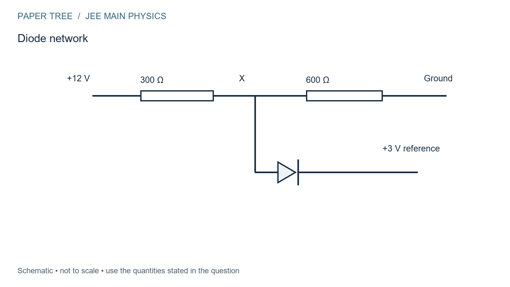
- A. 0.0125 A
- B. 0.005 A
- C. 0.025 A
- D. 0.03 A
Answer and explanation
C. 0.025 A
With the diode open, the divider would give 8 V, above the reference, so the diode conducts and X is clamped. Kirchhoff’s law gives diode current 0.025 A. Load power is Vclamp²/Rl=0.015 W. At the boundary, open-circuit divider voltage equals Vclamp, requiring supply 4.5 V.
For the requested outcome — Find the diode current from X into the reference. — the result is 0.025 A.
An ideal diode has its anode at node X and cathode at a fixed +3 V reference. Node X connects to a +12 V ideal source through 300 Ω and to ground through 600 Ω. An ideal conducting diode has zero drop; a reverse-biased diode carries no current. The reference can absorb current. Find the power dissipated in the load resistor. Choose the closest value.
Use the elementary low-field semiconductor model at room temperature unless specified otherwise; silicon/germanium forward drops, when approximated, are 0.7/0.3 V. Reverse characteristics refer to operation below breakdown unless breakdown is stated.
- A. 0.24 W
- B. 0.03 W
- C. 0.015 W
- D. 0.1067 W
Answer and explanation
C. 0.015 W
With the diode open, the divider would give 8 V, above the reference, so the diode conducts and X is clamped. Kirchhoff’s law gives diode current 0.025 A. Load power is Vclamp²/Rl=0.015 W. At the boundary, open-circuit divider voltage equals Vclamp, requiring supply 4.5 V.
For the requested outcome — Find the power dissipated in the load resistor. — the result is 0.015 W.
Use the illustrated ideal-diode network: node X is fed through 300 Ω and connected to ground through 600 Ω; the diode anode is at X and its cathode at a fixed +3 V reference that can absorb current. The source labelled +12 V in the diagram is now varied periodically: it rises linearly from 0 to 12 V in 0.5 s, then falls linearly to 0 in the next 0.5 s. The ideal diode has zero forward drop and no reverse current. There is no capacitance or inductance, so the circuit is in its DC state at each instant. Find the heat generated in the 300 Ω resistor during one complete cycle, in mJ. Choose the closest value.
Use the idealisations, constants, geometry and sign conventions stated in this question. Any accompanying drawing is schematic.
- A. 70 mJ
- B. 17.7778 mJ
- C. 68.125 mJ
- D. 34.0625 mJ
Answer and explanation
C. 68.125 mJ
With the diode off, V_X=2V_s/3, so conduction begins at V_s=4.5 V. Below this threshold the 300 Ω voltage is V_s/3; above it V_X=3 V and the resistor voltage is V_s−3. The triangular cycle spends equal time per voltage interval, with total dt=dV_s/12 for both ramps together. Hence Q=(1/3600)[∫₀^4.5(V_s/3)² dV_s+∫₄.₅^12(V_s−3)² dV_s] = (3.375+241.875)/3600 J=0.068125 J=68.125 mJ.
An ideal diode has its anode at node X and cathode at a fixed +4 V reference. Node X connects to a +16 V ideal source through 400 Ω and to ground through ξ Ω. An ideal conducting diode has zero drop; a reverse-biased diode carries no current. The reference can absorb current. The recorded value of the diode current from X into the reference is 0.025 A. Which listed positive value of ξ is consistent with this measurement?
Use the elementary low-field semiconductor model at room temperature unless specified otherwise; silicon/germanium forward drops, when approximated, are 0.7/0.3 V. Reverse characteristics refer to operation below breakdown unless breakdown is stated.
- A. 1200
- B. 1600
- C. 400
- D. 800
Answer and explanation
D. 800
Use the physical relations below with the missing input ξ. The recorded value of the diode current from X into the reference gives ξ=800 in the unit assigned to ξ in the question. Substitution checks the observation:
With the diode open, the divider would give 10.66666667 V, above the reference, so the diode conducts and X is clamped. Kirchhoff’s law gives diode current 0.025 A. Load power is Vclamp²/Rl=0.02 W. At the boundary, open-circuit divider voltage equals Vclamp, requiring supply 6 V.
An ideal diode has its anode at node X and cathode at a fixed +ξ V reference. Node X connects to a +16 V ideal source through 400 Ω and to ground through 800 Ω. An ideal conducting diode has zero drop; a reverse-biased diode carries no current. The reference can absorb current. The recorded value of the power dissipated in the load resistor is 0.02 W. Which listed positive value of ξ is consistent with this measurement?
Use the elementary low-field semiconductor model at room temperature unless specified otherwise; silicon/germanium forward drops, when approximated, are 0.7/0.3 V. Reverse characteristics refer to operation below breakdown unless breakdown is stated.
Answer and explanation
C. 4
Use the physical relations below with the missing input ξ. The recorded value of the power dissipated in the load resistor gives ξ=4 in the unit assigned to ξ in the question. Substitution checks the observation:
With the diode open, the divider would give 10.66666667 V, above the reference, so the diode conducts and X is clamped. Kirchhoff’s law gives diode current 0.025 A. Load power is Vclamp²/Rl=0.02 W. At the boundary, open-circuit divider voltage equals Vclamp, requiring supply 6 V.
Node X connects to a variable ideal source through an unknown positive resistance R and to ground through 800 Ω. An ideal diode has its anode at X and cathode at an unknown fixed positive reference voltage V₀; the reference can absorb current. In a DC calibration with source voltage 4 V, the diode is nonconducting and X is at 2 V. In a second calibration with source voltage 12 V, the diode conducts 5.0 mA into the reference. The same circuit is then driven periodically: source voltage rises linearly from 0 to 16 V in 1.0 s and falls linearly to 0 in the next 1.0 s. The diode has zero forward voltage and zero reverse current. There is no capacitance or inductance, and both resistances and the reference remain unchanged. Find the total charge delivered through the diode into the reference during one complete 2.0 s cycle, in mC. Choose the closest value.
Use the idealisations, constants, geometry and sign conventions stated in this question. Any accompanying drawing is schematic.
- A. 2.5 mC
- B. 10 mC
- C. 20 mC
- D. 5 mC
Answer and explanation
D. 5 mC
The off-state divider gives 2=4×800/(R+800), so R=800 Ω. In the conducting calibration, (12−V₀)/800−V₀/800=0.005 A, giving V₀=4 V. The diode conducts only when the open-diode divider would exceed 4 V, namely when V_s>8 V. Then I_D=(V_s−8)/800 A; otherwise I_D=0. The two ramps together spend dt=dV_s/8 per voltage interval. Thus Q=∫₈¹⁶(V_s−8)dV_s/6400=32/6400 C=0.005 C=5 mC. Current is zero at the threshold and remains nonnegative on the conducting interval.
A 12 V ideal DC source feeds a 6 V ideal Zener regulator through a series resistor 100 Ω. The load is connected across the Zener. To remain regulated the Zener current must be between 5 mA and 50 mA inclusive. Ignore dynamic resistance and assume the load is ohmic. In a separate operating trial the load resistance is 200 Ω. Find the smallest load resistance that permits regulation. Choose the closest value.
Use the elementary low-field semiconductor model at room temperature unless specified otherwise; silicon/germanium forward drops, when approximated, are 0.7/0.3 V. Reverse characteristics refer to operation below breakdown unless breakdown is stated.
- A. 100 Ω
- B. 54.55 Ω
- C. 109.1 Ω
- D. 600 Ω
Answer and explanation
C. 109.1 Ω
Regulation fixes total series current at (Vin−Vz)/R=0.06 A. The load receives Itotal−Iz. The smallest resistance occurs at minimum Zener current and is 109.0909091 Ω; the largest occurs at maximum Zener current and is 600 Ω. The permitted peak Zener power VzIz,max is 0.3 W. For the stated trial load, I_Z=I_total−Vz/R_load=0.03 A, which is within the regulation limits. Zener power is 0.18 W.
For the requested outcome — Find the smallest load resistance that permits regulation. — the result is 109.1 Ω.
A 12 V ideal DC source feeds a 6 V ideal Zener regulator through a series resistor 100 Ω. The load is connected across the Zener. To remain regulated the Zener current must be between 5 mA and 50 mA inclusive. Ignore dynamic resistance and assume the load is ohmic. In a separate operating trial the load resistance is 200 Ω. Find the largest load resistance that keeps Zener current within the stated range. Choose the closest value.
Use the elementary low-field semiconductor model at room temperature unless specified otherwise; silicon/germanium forward drops, when approximated, are 0.7/0.3 V. Reverse characteristics refer to operation below breakdown unless breakdown is stated.
- A. 600 Ω
- B. 1200 Ω
- C. 100 Ω
- D. 109.1 Ω
Answer and explanation
A. 600 Ω
Regulation fixes total series current at (Vin−Vz)/R=0.06 A. The load receives Itotal−Iz. The smallest resistance occurs at minimum Zener current and is 109.0909091 Ω; the largest occurs at maximum Zener current and is 600 Ω. The permitted peak Zener power VzIz,max is 0.3 W. For the stated trial load, I_Z=I_total−Vz/R_load=0.03 A, which is within the regulation limits. Zener power is 0.18 W.
For the requested outcome — Find the largest load resistance that keeps Zener current within the stated range. — the result is 600 Ω.
A 12 V ideal DC source feeds a 6 V ideal Zener regulator through a series resistor 100 Ω. The load is connected across the Zener. To remain regulated the Zener current must be between 5 mA and 50 mA inclusive. Ignore dynamic resistance and assume the load is ohmic. In a separate operating trial the load resistance is 200 Ω. Find the Zener power dissipation in the separate operating trial. Choose the closest value.
Use the elementary low-field semiconductor model at room temperature unless specified otherwise; silicon/germanium forward drops, when approximated, are 0.7/0.3 V. Reverse characteristics refer to operation below breakdown unless breakdown is stated.
- A. -0.18 W
- B. 0.36 W
- C. 0.18 W
- D. 0.09 W
Answer and explanation
C. 0.18 W
Regulation fixes total series current at (Vin−Vz)/R=0.06 A. The load receives Itotal−Iz. The smallest resistance occurs at minimum Zener current and is 109.0909091 Ω; the largest occurs at maximum Zener current and is 600 Ω. The permitted peak Zener power VzIz,max is 0.3 W. For the stated trial load, I_Z=I_total−Vz/R_load=0.03 A, which is within the regulation limits. Zener power is 0.18 W.
For the requested outcome — Find the Zener power dissipation in the separate operating trial. — the result is 0.18 W.
A 15 V ideal DC source feeds a 5 V ideal Zener regulator through a series resistor 200 Ω. The load is connected across the Zener. To remain regulated the Zener current must be between ξ mA and 40 mA inclusive. Ignore dynamic resistance and assume the load is ohmic. In a separate operating trial the load resistance is 200 Ω. The recorded value of the smallest load resistance that permits regulation is 111.1111111 Ω. Which listed positive value of ξ is consistent with this measurement?
Use the elementary low-field semiconductor model at room temperature unless specified otherwise; silicon/germanium forward drops, when approximated, are 0.7/0.3 V. Reverse characteristics refer to operation below breakdown unless breakdown is stated.
Answer and explanation
D. 5
Use the physical relations below with the missing input ξ. The recorded value of the smallest load resistance that permits regulation gives ξ=5 in the unit assigned to ξ in the question. Substitution checks the observation:
Regulation fixes total series current at (Vin−Vz)/R=0.05 A. The load receives Itotal−Iz. The smallest resistance occurs at minimum Zener current and is 111.1111111 Ω; the largest occurs at maximum Zener current and is 500 Ω. The permitted peak Zener power VzIz,max is 0.2 W. For the stated trial load, I_Z=I_total−Vz/R_load=0.025 A, which is within the regulation limits. Zener power is 0.125 W.
A 15 V ideal DC source feeds a 5 V ideal Zener regulator through a series resistor ξ Ω. The load is connected across the Zener. To remain regulated the Zener current must be between 5 mA and 40 mA inclusive. Ignore dynamic resistance and assume the load is ohmic. In a separate operating trial the load resistance is 200 Ω. The recorded value of the largest load resistance that keeps Zener current within the stated range is 500 Ω. Which listed positive value of ξ is consistent with this measurement?
Use the elementary low-field semiconductor model at room temperature unless specified otherwise; silicon/germanium forward drops, when approximated, are 0.7/0.3 V. Reverse characteristics refer to operation below breakdown unless breakdown is stated.
Answer and explanation
B. 200
Use the physical relations below with the missing input ξ. The recorded value of the largest load resistance that keeps Zener current within the stated range gives ξ=200 in the unit assigned to ξ in the question. Substitution checks the observation:
Regulation fixes total series current at (Vin−Vz)/R=0.05 A. The load receives Itotal−Iz. The smallest resistance occurs at minimum Zener current and is 111.1111111 Ω; the largest occurs at maximum Zener current and is 500 Ω. The permitted peak Zener power VzIz,max is 0.2 W. For the stated trial load, I_Z=I_total−Vz/R_load=0.025 A, which is within the regulation limits. Zener power is 0.125 W.
A 15 V ideal DC source feeds a ξ V ideal Zener regulator through a series resistor 200 Ω. The load is connected across the Zener. To remain regulated the Zener current must be between 5 mA and 40 mA inclusive. Ignore dynamic resistance and assume the load is ohmic. In a separate operating trial the load resistance is 200 Ω. The recorded value of the Zener power dissipation in the separate operating trial is 0.125 W. Which listed positive value of ξ is consistent with this measurement?
Use the elementary low-field semiconductor model at room temperature unless specified otherwise; silicon/germanium forward drops, when approximated, are 0.7/0.3 V. Reverse characteristics refer to operation below breakdown unless breakdown is stated.
Answer and explanation
D. 5
Use the physical relations below with the missing input ξ. The recorded value of the Zener power dissipation in the separate operating trial gives ξ=5 in the unit assigned to ξ in the question. Substitution checks the observation:
Regulation fixes total series current at (Vin−Vz)/R=0.05 A. The load receives Itotal−Iz. The smallest resistance occurs at minimum Zener current and is 111.1111111 Ω; the largest occurs at maximum Zener current and is 500 Ω. The permitted peak Zener power VzIz,max is 0.2 W. For the stated trial load, I_Z=I_total−Vz/R_load=0.025 A, which is within the regulation limits. Zener power is 0.125 W.
Find the surface tension before adding detergent. Use the readings in experimental panel 06. Choose the closest value.
Treat drawings as schematic. Apply zero-error and parallax corrections; instrument idealisations and experimental limits stated in the question take precedence.
- A. 0.0375 N/m
- B. -0.075 N/m
- C. 0.075 N/m
- D. 0.15 N/m
Answer and explanation
C. 0.075 N/m
For zero contact angle, h=2S/(ρgr). Thus S=hρgr/2=0.075 N/m.
Find the sound speed from both resonance lengths. Use the readings in experimental panel 08. Choose the closest value.
Treat drawings as schematic. Apply zero-error and parallax corrections; instrument idealisations and experimental limits stated in the question take precedence.
- A. -340 m/s
- B. 340 m/s
- C. 170 m/s
- D. 680 m/s
Answer and explanation
B. 340 m/s
Successive lengths differ by λ/2, so λ=2(0.50−0.16)=0.68 m and v=fλ=340 m/s.
Find the test wire resistivity, using π=3.14. Use the readings in experimental panel 10. Choose the closest value.
Treat drawings as schematic. Apply zero-error and parallax corrections; instrument idealisations and experimental limits stated in the question take precedence.
- A. -3.925 × 10⁻⁷ Ω m
- B. 3.925 × 10⁻⁷ Ω m
- C. 1.963 × 10⁻⁷ Ω m
- D. 7.85 × 10⁻⁷ Ω m
Answer and explanation
B. 3.925 × 10⁻⁷ Ω m
Balance gives X/R=l/(100−l), so X=4 Ω. Then ρ=Xπd²/(4L)=3.925×10⁻⁷ Ω m.
Find the liquid viscosity. Use the readings in experimental panel 07. Choose the closest value.
Treat drawings as schematic. Apply zero-error and parallax corrections; instrument idealisations and experimental limits stated in the question take precedence.
- A. 1.259 Pa s
- B. -1.259 Pa s
- C. 0.6296 Pa s
- D. 2.519 Pa s
Answer and explanation
A. 1.259 Pa s
Terminal speed=0.06/20=0.003 m/s. Balance effective weight with 6πηrv: η=2r²(ρs−ρl)g/(9v)=1.25926 Pa s.
A 4 Ω resistor is connected in parallel with X in the left gap. Find the new balance length. Use the readings in experimental panel 10. Choose the closest value.
Treat drawings as schematic. Apply zero-error and parallax corrections; instrument idealisations and experimental limits stated in the question take precedence.
- A. 25 cm
- B. 12.5 cm
- C. -25 cm
- D. 50 cm
Answer and explanation
A. 25 cm
X=4 Ω; with a 4 Ω shunt it becomes 2 Ω. Hence l=100×2/(2+6)=25 cm.
Find the prism index in air from the observed minimum. Use the readings in experimental panel 14. Choose the closest value.
Treat drawings as schematic. Apply zero-error and parallax corrections; instrument idealisations and experimental limits stated in the question take precedence.
- A. -1.509
- B. 1.509
- C. 0.7547
- D. 3.019
Answer and explanation
B. 1.509
At minimum deviation, n=sin[(A+δm)/2]/sin(A/2)=sin49°/sin30°=1.50942.
Find the slab refractive index from the coordinate differences. Use the readings in experimental panel 15. Choose the closest value.
Treat drawings as schematic. Apply zero-error and parallax corrections; instrument idealisations and experimental limits stated in the question take precedence.
Answer and explanation
A. 1.5
Real thickness=22−10=12 mm; apparent depth=22−14=8 mm. Thus n=12/8=1.5. A shared zero offset cancels.
Find the fraction of the initial mechanical energy dissipated in the first 60 s. Use the readings in experimental panel 03. Choose the closest value.
Treat drawings as schematic. Apply zero-error and parallax corrections; instrument idealisations and experimental limits stated in the question take precedence.
- A. 0.2188
- B. 0.4375
- C. -0.4375
- D. 0.875
Answer and explanation
B. 0.4375
For a small-angle pendulum E∝A². Retained fraction=6²/8²=9/16, so dissipated fraction=7/16=0.4375.
Find Young modulus from the slope of the load-extension data. Use π=3.14. Use the readings in experimental panel 05. Choose the closest value.
Treat drawings as schematic. Apply zero-error and parallax corrections; instrument idealisations and experimental limits stated in the question take precedence.
- A. 5.096 × 10¹¹ Pa
- B. -5.096 × 10¹¹ Pa
- C. 1.019 × 10¹² Pa
- D. 2.548 × 10¹¹ Pa
Answer and explanation
A. 5.096 × 10¹¹ Pa
Difference the readings to remove zero: ΔF=20 N, Δl=0.40 mm. Y=ΔF L/(AΔl)=5.09554×10¹¹ Pa.
Use moments about the knife edge to find the unknown object mass. Use the readings in experimental panel 04. Choose the closest value.
Treat drawings as schematic. Apply zero-error and parallax corrections; instrument idealisations and experimental limits stated in the question take precedence.
- A. 33.33 g
- B. -16.67 g
- C. 16.67 g
- D. 8.333 g
Answer and explanation
C. 16.67 g
Counterclockwise moment=50×30. Clockwise moments=100×10+m×30. Therefore m=50/3 g.
Find the elastic energy added as the load rises quasistatically from 10 N to 30 N. Use the readings in experimental panel 05. Choose the closest value.
Treat drawings as schematic. Apply zero-error and parallax corrections; instrument idealisations and experimental limits stated in the question take precedence.
- A. -0.008 J
- B. 0.016 J
- C. 0.004 J
- D. 0.008 J
Answer and explanation
D. 0.008 J
For linear elasticity the work is average load times extra extension: (10+30)/2×0.00040=0.008 J.
Find the end correction. Use the readings in experimental panel 08. Choose the closest value.
Treat drawings as schematic. Apply zero-error and parallax corrections; instrument idealisations and experimental limits stated in the question take precedence.
- A. 0.5 cm
- B. -1 cm
- C. 2 cm
- D. 1 cm
Answer and explanation
D. 1 cm
The first effective length is λ/4=(50−16)/2=17 cm, so e=17−16=1 cm.
Use the reading panel to find the corrected external dimension. Use the readings in experimental panel 01. Choose the closest value.
Treat drawings as schematic. Apply zero-error and parallax corrections; instrument idealisations and experimental limits stated in the question take precedence.
- A. -12.25 mm
- B. 12.25 mm
- C. 24.5 mm
- D. 6.125 mm
Answer and explanation
B. 12.25 mm
LC=1−19/20=0.05 mm. Positive zero error=2LC=0.10 mm. Corrected size=12+7LC−2LC=12.25 mm.
Find the decrease in surface tension after detergent is added. Use the readings in experimental panel 06. Choose the closest value.
Treat drawings as schematic. Apply zero-error and parallax corrections; instrument idealisations and experimental limits stated in the question take precedence.
- A. -0.03 N/m
- B. 0.06 N/m
- C. 0.03 N/m
- D. 0.015 N/m
Answer and explanation
C. 0.03 N/m
The same capillary and density make S proportional to h. The height decreases 0.012 m, giving ΔS=0.030 N/m.
If the measured diameter were systematically 2% too high, find the approximate percentage by which the inferred Young modulus would be too low. Experimental panel 05 provides optional context. Choose the closest value.
Treat drawings as schematic. Apply zero-error and parallax corrections; instrument idealisations and experimental limits stated in the question take precedence.
- A. 4 %
- B. -4 %
- C. 2 %
- D. 8 %
Answer and explanation
A. 4 %
Y is inverse to area and hence d². First-order δY/Y=−2δd/d, giving approximately 4% too low.
The specimen is a sphere. Find the maximum percentage error in its volume if diameter uncertainty is one least count; use first-order errors. Use the readings in experimental panel 01. Choose the closest value.
Treat drawings as schematic. Apply zero-error and parallax corrections; instrument idealisations and experimental limits stated in the question take precedence.
- A. 0.6122 %
- B. 2.449 %
- C. -1.224 %
- D. 1.224 %
Answer and explanation
D. 1.224 %
The corrected diameter is 12.25 mm and LC=0.05 mm. For V∝d³, maximum percentage uncertainty is 300 LC/d=1.22449%.
The detergent solution is used in a capillary with half the radius. Find the new equilibrium rise. Use the readings in experimental panel 06. Choose the closest value.
Treat drawings as schematic. Apply zero-error and parallax corrections; instrument idealisations and experimental limits stated in the question take precedence.
- A. 3.6 cm
- B. 7.2 cm
- C. 1.8 cm
- D. -3.6 cm
Answer and explanation
A. 3.6 cm
After detergent the rise is 1.8 cm at the original radius. Since h∝1/r for fixed S and complete wetting, halving r gives 3.6 cm.
A student follows the procedure shown for Capillary rise. Which purpose–principle pair is correctly matched? Refer to experimental arrangement 06.
Treat drawings as schematic. Apply zero-error and parallax corrections; instrument idealisations and experimental limits stated in the question take precedence.
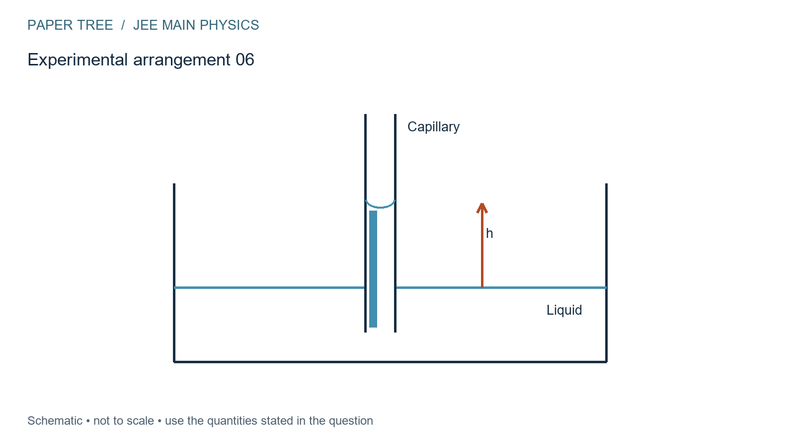
- A. surface tension of water and the effect of detergent; T = ρghr cos θ
- B. surface tension of water and the effect of detergent; capillary rise is directly proportional to tube radius
- C. surface tension of water and the effect of detergent; T = ρghr/(2 cos θ)
- D. surface tension of water and the effect of detergent; adding detergent increases the surface tension of water
Answer and explanation
C. surface tension of water and the effect of detergent; T = ρghr/(2 cos θ)
The Capillary rise experiment studies surface tension of water and the effect of detergent, using the relation or principle: T = ρghr/(2 cos θ).
A same-material sphere of radius 0.25 mm remains in Stokes flow. Find the time to cover 6.0 cm at terminal speed. Use the readings in experimental panel 07. Choose the closest value.
Treat drawings as schematic. Apply zero-error and parallax corrections; instrument idealisations and experimental limits stated in the question take precedence.
- A. -80 s
- B. 40 s
- C. 80 s
- D. 160 s
Answer and explanation
C. 80 s
Terminal speed scales as radius squared. Halving radius makes speed one quarter, so the same distance takes 4×20=80 s.
Find the internal angle of refraction at EACH face at minimum deviation. Use the readings in experimental panel 14. Choose the closest value.
Treat drawings as schematic. Apply zero-error and parallax corrections; instrument idealisations and experimental limits stated in the question take precedence.
- A. 60 °
- B. -30 °
- C. 30 °
- D. 15 °
Answer and explanation
C. 30 °
At minimum deviation the path is symmetric: r1=r2 and r1+r2=A. Thus each is A/2=30°.
Find the solid specific heat. Use the readings in experimental panel 09. Choose the closest value.
Treat drawings as schematic. Apply zero-error and parallax corrections; instrument idealisations and experimental limits stated in the question take precedence.
- A. 1314 J/(kg K)
- B. 657.1 J/(kg K)
- C. -1314 J/(kg K)
- D. 2629 J/(kg K)
Answer and explanation
A. 1314 J/(kg K)
Water and calorimeter absorb (0.20×4200+80)×10=9200 J. The solid cools through 70 K, so cs=9200/(0.10×70)=1314.286 J/(kg K).
The fork is changed to 400 Hz at the same temperature. With the same end correction, find the new first resonance length. Use the readings in experimental panel 08. Choose the closest value.
Treat drawings as schematic. Apply zero-error and parallax corrections; instrument idealisations and experimental limits stated in the question take precedence.
- A. 20.25 cm
- B. 40.5 cm
- C. 10.12 cm
- D. -20.25 cm
Answer and explanation
A. 20.25 cm
The first trial gives v=340 m/s and e=1 cm. At 400 Hz, λ/4=21.25 cm, so actual first length=20.25 cm.
Find the lens focal length from the corrected object and image distances. Use the readings in experimental panel 13. Choose the closest value.
Treat drawings as schematic. Apply zero-error and parallax corrections; instrument idealisations and experimental limits stated in the question take precedence.
- A. 6 cm
- B. 24 cm
- C. -12 cm
- D. 12 cm
Answer and explanation
D. 12 cm
The object and image distances from the optical centre are 20 and 30 cm. Then f=uv/(u+v)=12 cm.
If the closed-jaw zero error were ignored, find the percentage overestimate of the measured dimension. Use the readings in experimental panel 01. Choose the closest value.
Treat drawings as schematic. Apply zero-error and parallax corrections; instrument idealisations and experimental limits stated in the question take precedence.
- A. 1.633 %
- B. 0.8163 %
- C. -0.8163 %
- D. 0.4082 %
Answer and explanation
B. 0.8163 %
Uncorrected size=12.35 mm, corrected size=12.25 mm. The relative overestimate is 0.10/12.25×100=0.81633%.
Find the incremental resistance between 0.70 V and 0.80 V. Use the readings in experimental panel 16. Choose the closest value.
Treat drawings as schematic. Apply zero-error and parallax corrections; instrument idealisations and experimental limits stated in the question take precedence.
- A. 16.67 Ω
- B. 8.333 Ω
- C. -8.333 Ω
- D. 4.167 Ω
Answer and explanation
B. 8.333 Ω
Incremental resistance is ΔV/ΔI=0.10/(0.020−0.008)=8.33333 Ω, not V/I.
An LED is operated from 5.0 V at 10 mA with a forward drop of 2.0 V. Find a suitable series resistance. Experimental panel 18 provides optional context. Choose the closest value.
Treat drawings as schematic. Apply zero-error and parallax corrections; instrument idealisations and experimental limits stated in the question take precedence.
- A. 600 Ω
- B. 300 Ω
- C. 150 Ω
- D. -300 Ω
Answer and explanation
B. 300 Ω
The light-emitting one-direction component is an LED. Its resistor must drop 5−2=3 V at 0.01 A, requiring 300 Ω.
Use the secant approximation to estimate the forward voltage at 14 mA. Use the readings in experimental panel 16. Choose the closest value.
Treat drawings as schematic. Apply zero-error and parallax corrections; instrument idealisations and experimental limits stated in the question take precedence.
- A. 0.75 V
- B. 0.375 V
- C. -0.75 V
- D. 1.5 V
Answer and explanation
A. 0.75 V
The current 14 mA is halfway between 8 and 20 mA; linear interpolation in this interval gives V=0.75 V.
Find the signed transverse magnification. Use the readings in experimental panel 13. Choose the closest value.
Treat drawings as schematic. Apply zero-error and parallax corrections; instrument idealisations and experimental limits stated in the question take precedence.
- A. -0.75
- B. -3
- C. 1.5
- D. -1.5
Answer and explanation
D. -1.5
A real image of a real object through a converging lens is inverted. Here m=−v/u=−30/20=−1.5.
A second identical slab is placed on top. Find the apparent-bottom microscope reading. Use the readings in experimental panel 15. Choose the closest value.
Treat drawings as schematic. Apply zero-error and parallax corrections; instrument idealisations and experimental limits stated in the question take precedence.
- A. -18 mm
- B. 18 mm
- C. 36 mm
- D. 9 mm
Answer and explanation
B. 18 mm
Each 12 mm slab shifts the bottom mark upward by 12(1−1/1.5)=4 mm. Two slabs give 8 mm shift, so reading=10+8=18 mm.
Find the corrected wire diameter. Use the readings in experimental panel 02. Choose the closest value.
Treat drawings as schematic. Apply zero-error and parallax corrections; instrument idealisations and experimental limits stated in the question take precedence.
- A. -0.75 mm
- B. 0.375 mm
- C. 0.75 mm
- D. 1.5 mm
Answer and explanation
C. 0.75 mm
LC=0.5/50=0.01 mm. Subtract the positive error 0.03 mm: d=0.5+0.28−0.03=0.75 mm.
Find the corrected resistance of the wire. Use the readings in experimental panel 11. Choose the closest value.
Treat drawings as schematic. Apply zero-error and parallax corrections; instrument idealisations and experimental limits stated in the question take precedence.
- A. 5 Ω
- B. 2.5 Ω
- C. 10 Ω
- D. -5 Ω
Answer and explanation
A. 5 Ω
The slope ΔV/ΔI removes the offset: (1.05−0.55)/(0.20−0.10)=5 Ω.
Which labelled component is used to measure the depth of a narrow blind hole? Refer to experimental arrangement 01.
Treat drawings as schematic. Apply zero-error and parallax corrections; instrument idealisations and experimental limits stated in the question take precedence.
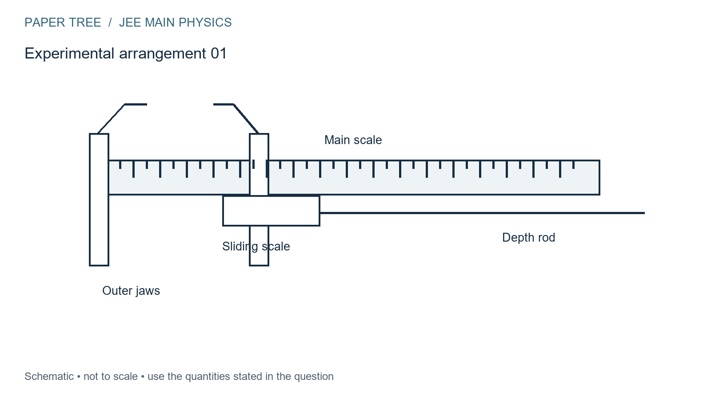
- A. The upper pair of projections on the left
- B. The lower pair of projections on the left
- C. The long graduated bar on the upper right
- D. The lower extension on the right
Answer and explanation
D. The lower extension on the right
The drawing labels the slender extension below the main scale as the depth rod. With the end face seated at the mouth of a hole, this rod reaches its bottom. The upper jaws serve internal widths and the lower jaws external widths.
Which displacement boundary conditions belong to the resonating system shown? Refer to experimental arrangement 08.
Treat drawings as schematic. Apply zero-error and parallax corrections; instrument idealisations and experimental limits stated in the question take precedence.
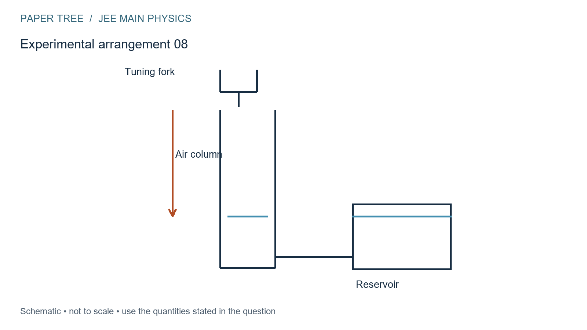
- A. Displacement antinodes at both ends of an open pipe
- B. A displacement antinode at the upper open end and a node at the liquid surface
- C. Displacement nodes at both fixed ends of a stretched string
- D. A displacement node at a clamped end and an antinode at a free end of a rod
Answer and explanation
B. A displacement antinode at the upper open end and a node at the liquid surface
The figure shows an air column open near the tuning fork and closed by water below. Air displacement is large at the open end and approximately zero at the liquid boundary. The other options describe different resonators.
If the calorimeter heat capacity were omitted, find the percentage underestimate of the solid specific heat. Use the readings in experimental panel 09. Choose the closest value.
Treat drawings as schematic. Apply zero-error and parallax corrections; instrument idealisations and experimental limits stated in the question take precedence.
- A. 4.348 %
- B. -8.696 %
- C. 17.39 %
- D. 8.696 %
Answer and explanation
D. 8.696 %
The correct receiver heat capacity is 920 J/K; omission uses 840. The inferred cs is low by 80/920×100=8.69565%.
If the top-surface reading alone is 1 mm too high, find the wrongly inferred refractive index. Use the readings in experimental panel 15. Choose the closest value.
Treat drawings as schematic. Apply zero-error and parallax corrections; instrument idealisations and experimental limits stated in the question take precedence.
- A. 0.7222
- B. 1.444
- C. 2.889
- D. -1.444
Answer and explanation
B. 1.444
The mistaken real and apparent depths are 23−10=13 and 23−14=9 mm. Their ratio is 13/9=1.44444; the error does not cancel because only one reading is affected.
Which experiment-specific preparation applies to the narrow vertical component shown? Refer to experimental arrangement 06.
Treat drawings as schematic. Apply zero-error and parallax corrections; instrument idealisations and experimental limits stated in the question take precedence.
- A. Remove kinks from a loaded wire before measuring its elastic extension
- B. Approach a screw-gauge reading from one direction to reduce backlash
- C. Set a pendulum to a small angular amplitude before timing its oscillations
- D. Clean the narrow tube and keep it vertical so its bore and wetting remain suitable for a rise measurement
Answer and explanation
D. Clean the narrow tube and keep it vertical so its bore and wetting remain suitable for a rise measurement
The drawing shows a capillary in a liquid bath with a raised meniscus and height h. A clean, uniform bore and a vertical tube are needed for the rise measurement. Each alternative is useful for its named apparatus, but that apparatus is absent here.
If the initial mechanical energy was 0.32 J, find the mean power lost over the first 120 s. Use the readings in experimental panel 03. Choose the closest value.
Treat drawings as schematic. Apply zero-error and parallax corrections; instrument idealisations and experimental limits stated in the question take precedence.
- A. 0.003646 W
- B. 0.0009115 W
- C. -0.001823 W
- D. 0.001823 W
Answer and explanation
D. 0.001823 W
At 120 s E/E0=(4.5/8)². Divide the energy loss 0.21875 J by 120 s to get 0.00182292 W.
A 5.0 V supply must drive 14 mA through this diode. Using the interpolated voltage, find the required series resistance. Use the readings in experimental panel 16. Choose the closest value.
Treat drawings as schematic. Apply zero-error and parallax corrections; instrument idealisations and experimental limits stated in the question take precedence.
- A. 303.6 Ω
- B. -303.6 Ω
- C. 151.8 Ω
- D. 607.1 Ω
Answer and explanation
A. 303.6 Ω
The interpolated diode drop is 0.75 V. The series resistor drops 5−0.75=4.25 V at 0.014 A, so R=303.571 Ω.
Find the upward knife-edge force with g=10 m/s². Use the readings in experimental panel 04. Choose the closest value.
Treat drawings as schematic. Apply zero-error and parallax corrections; instrument idealisations and experimental limits stated in the question take precedence.
- A. 1.667 N
- B. 3.333 N
- C. 0.8333 N
- D. -1.667 N
Answer and explanation
A. 1.667 N
The unknown object is 50/3 g by moments. The support balances all three weights: (0.100+0.050+0.0166667)×10=1.66667 N.
The wire is 2 m long and has resistance 8 Ω. Find its resistivity using π=3.14. Use the readings in experimental panel 02. Choose the closest value.
Treat drawings as schematic. Apply zero-error and parallax corrections; instrument idealisations and experimental limits stated in the question take precedence.
- A. 8.831 × 10⁻⁷ Ω m
- B. 1.766 × 10⁻⁶ Ω m
- C. -1.766 × 10⁻⁶ Ω m
- D. 3.533 × 10⁻⁶ Ω m
Answer and explanation
B. 1.766 × 10⁻⁶ Ω m
Corrected d=0.75 mm. Use ρ=Rπd²/(4L)=1.76625×10⁻⁶ Ω m.
The balance reading has maximum error 0.5 cm; all other data are exact. Find the maximum percentage uncertainty in X to first order. Use the readings in experimental panel 10. Choose the closest value.
Treat drawings as schematic. Apply zero-error and parallax corrections; instrument idealisations and experimental limits stated in the question take precedence.
- A. 1.042 %
- B. 4.167 %
- C. -2.083 %
- D. 2.083 %
Answer and explanation
D. 2.083 %
For X=Rl/(100−l), δX/X=[1/l+1/(100−l)]δl. At l=40 cm this is 2.08333%.
If only the last V/I ratio were used, find the percentage overestimate of resistance. Use the readings in experimental panel 11. Choose the closest value.
Treat drawings as schematic. Apply zero-error and parallax corrections; instrument idealisations and experimental limits stated in the question take precedence.
- A. 6.667 %
- B. -3.333 %
- C. 3.333 %
- D. 1.667 %
Answer and explanation
C. 3.333 %
The corrected slope is 5 Ω. Last-reading V/I=5.16667 Ω, giving overestimate 3.33333%.
If the same amplitude ratio continues for the next 60 s, find the fraction of the original energy remaining at 180 s. Use the readings in experimental panel 03. Choose the closest value.
Treat drawings as schematic. Apply zero-error and parallax corrections; instrument idealisations and experimental limits stated in the question take precedence.
- A. 0.08899
- B. 0.356
- C. -0.178
- D. 0.178
Answer and explanation
D. 0.178
The amplitude multiplies by 3/4 every 60 s. After three intervals E/E0=(3/4)^6=0.177979.
Find the current per scale division before shunting. Use the readings in experimental panel 12. Choose the closest value.
Treat drawings as schematic. Apply zero-error and parallax corrections; instrument idealisations and experimental limits stated in the question take precedence.
- A. 0.00018 A/division
- B. 9 × 10⁻⁵ A/division
- C. -9 × 10⁻⁵ A/division
- D. 4.5 × 10⁻⁵ A/division
Answer and explanation
B. 9 × 10⁻⁵ A/division
Use G=111.111 Ω. Current=2/(1000+111.111)=0.0018 A; divided by 20 gives 9×10⁻⁵ A/division.
In an otherwise identical trial with twice the solid mass, find the new final temperature. Use the readings in experimental panel 09. Choose the closest value.
Treat drawings as schematic. Apply zero-error and parallax corrections; instrument idealisations and experimental limits stated in the question take precedence.
- A. 75.56 °C
- B. 37.78 °C
- C. -37.78 °C
- D. 18.89 °C
Answer and explanation
B. 37.78 °C
Infer cs=9200/7 J/(kg K) from the original trial. For 0.20 kg solid, (0.20cs)(100−T)=920(T−20), giving T=37.7778°C.
The known 50 g object is moved to the 4 cm mark. Keeping the knife edge and scale fixed, at what mark must the same unknown object be placed to restore balance? Use the readings in experimental panel 04. Choose the closest value.
Treat drawings as schematic. Apply zero-error and parallax corrections; instrument idealisations and experimental limits stated in the question take precedence.
- A. 176 cm
- B. 44 cm
- C. -88 cm
- D. 88 cm
Answer and explanation
D. 88 cm
The unknown mass is 50/3 g. Moments give 50×36=100×10+(50/3)(x−40), hence x=88 cm.
Which experimental procedure applies to the apparatus in the drawing? Refer to experimental arrangement 05.
Treat drawings as schematic. Apply zero-error and parallax corrections; instrument idealisations and experimental limits stated in the question take precedence.
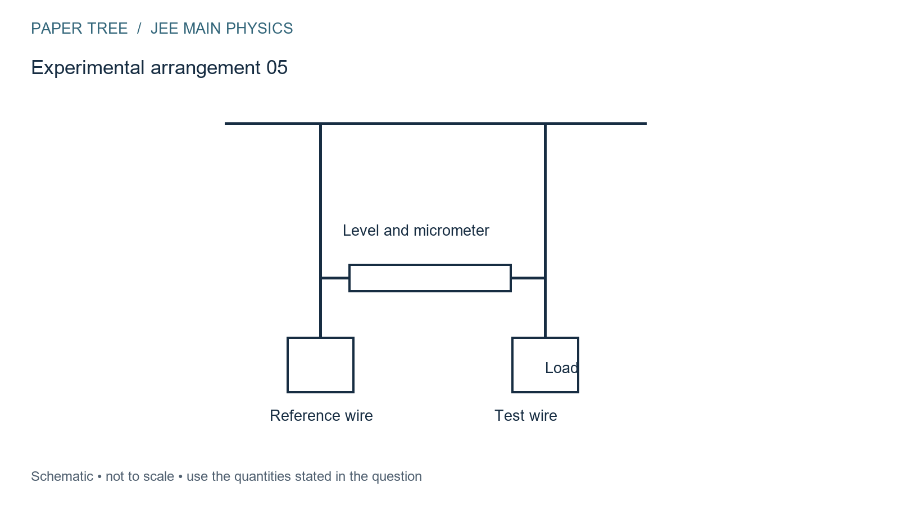
- A. Clean the bore and measure a meniscus height above the surrounding liquid
- B. Remove kinks, measure its diameter at several positions, and add loads within its elastic limit
- C. Strike the tuning fork gently and vary the liquid level to locate resonance
- D. Focus successively on a slab surface and its apparent bottom mark
Answer and explanation
B. Remove kinks, measure its diameter at several positions, and add loads within its elastic limit
The right-hand element is labelled test wire and carries the variable load; the other hanging wire is the reference. The selected procedure controls the specimen geometry and elastic regime needed for extension measurements.
Find the critical angle for the prism-to-air interface, using the index inferred from the observed minimum. Use the readings in experimental panel 14. Choose the closest value.
Treat drawings as schematic. Apply zero-error and parallax corrections; instrument idealisations and experimental limits stated in the question take precedence.
- A. -41.49 °
- B. 82.98 °
- C. 41.49 °
- D. 20.75 °
Answer and explanation
C. 41.49 °
Infer n=1.50942 from the minimum. The critical angle satisfies sin C=1/n, giving about 41.49°.
Which complete apparatus list matches the represented experimental arrangement? Refer to experimental arrangement 04.
Treat drawings as schematic. Apply zero-error and parallax corrections; instrument idealisations and experimental limits stated in the question take precedence.
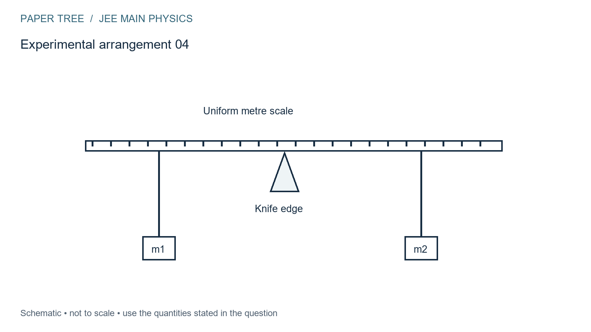
- A. reference wire, experimental wire, load and micrometer
- B. optical bench, pins, lens or mirror and holders
- C. multimeter, test leads and the mixed components
- D. metre scale, knife edge and suspended masses
Answer and explanation
D. metre scale, knife edge and suspended masses
The essential components of the Metre scale by moments setup are metre scale, knife edge and suspended masses.
Find the corrected wire resistivity. Use the readings in experimental panel 11. Choose the closest value.
Treat drawings as schematic. Apply zero-error and parallax corrections; instrument idealisations and experimental limits stated in the question take precedence.
- A. -1 × 10⁻⁶ Ω m
- B. 2 × 10⁻⁶ Ω m
- C. 5 × 10⁻⁷ Ω m
- D. 1 × 10⁻⁶ Ω m
Answer and explanation
D. 1 × 10⁻⁶ Ω m
Use slope R=5 Ω rather than raw V/I. With A=0.20×10⁻⁶ m² and L=1 m, ρ=RA/L=1.0×10⁻⁶ Ω m.
A vernier has 20 divisions equal to 19 main-scale divisions; one main-scale division is 1 mm. With its jaws closed, the vernier zero lies to the right and division 2 coincides. A hollow cylindrical tube gives outer-diameter main-scale reading 20 mm with division 6 coinciding, and inner-diameter main-scale reading 12 mm with division 10 coinciding. Its mass and length are exact. After subtracting the measured zero error, a possible residual zero offset of at most one least count contributes the SAME additive error to both corrected diameters. Each diameter also has an independent reading error of at most half a least count. Use first-order maximum-error propagation and the tube’s material volume, excluding the bore. Find the maximum percentage uncertainty in the inferred material density. Choose the closest value.
Treat drawings as schematic. Apply zero-error and parallax corrections; instrument idealisations and experimental limits stated in the question take precedence.
- A. 1.2821 %
- B. 0.6409 %
- C. 0.947774 %
- D. 1.5894 %
Answer and explanation
C. 0.947774 %
The least count is 1-19/20=0.05 mm and the positive zero error is 0.10 mm. Corrected diameters are D=20.2 mm and d=12.4 mm. Density is proportional to 1/(D²-d²). Write the diameter errors as z+εD and z+εd, with |z|≤0.05 mm and |εD|,|εd|≤0.025 mm. The first-order area error is 2(D-d)z+2DεD-2dεd. Its maximum magnitude divided by D²-d² is 2(0.05)/(D+d)+2(0.025)/(D-d). Thus the maximum density uncertainty is 0.9477741073%. The common offset must not be counted as two independent errors.
A capacitor reaches a final stored charge of 60 μC at 3.0 V. Find its capacitance. Experimental panel 18 provides optional context. Choose the closest value.
Treat drawings as schematic. Apply zero-error and parallax corrections; instrument idealisations and experimental limits stated in the question take precedence.
- A. 40 μF
- B. -20 μF
- C. 20 μF
- D. 10 μF
Answer and explanation
C. 20 μF
A transient that decays to zero under DC is consistent with a capacitor. Use C=Q/V=60/3=20 μF.
Find the differential resistance in the shown breakdown interval. Use the readings in experimental panel 17. Choose the closest value.
Treat drawings as schematic. Apply zero-error and parallax corrections; instrument idealisations and experimental limits stated in the question take precedence.
- A. -10 Ω
- B. 10 Ω
- C. 20 Ω
- D. 5 Ω
Answer and explanation
B. 10 Ω
Use slope ΔV/ΔI=0.2/0.020=10 Ω. This is not the static ratio V/I.
C is connected directly across 3.0 V. Find its power dissipation. Use the readings in experimental panel 18. Choose the closest value.
Treat drawings as schematic. Apply zero-error and parallax corrections; instrument idealisations and experimental limits stated in the question take precedence.
- A. 0.0225 W
- B. 0.09 W
- C. -0.045 W
- D. 0.045 W
Answer and explanation
D. 0.045 W
The symmetric linear device is a resistor: R=2/0.010=200 Ω. At 3 V, P=V²/R=9/200=0.045 W.
A galvanometer in series with 1000 Ω across an ideal 2 V source deflects 20 divisions. A shunt of 100 Ω across the galvanometer reduces the deflection to one half, while the same series resistor and source remain connected. Do not assume the series resistance is infinite. The instrument’s full-scale deflection is 50 divisions. It will be converted to an ammeter with full-scale current 0.5 A. Find the ammeter’s terminal voltage drop at full scale. Choose the closest value.
Treat drawings as schematic. Apply zero-error and parallax corrections; instrument idealisations and experimental limits stated in the question take precedence.
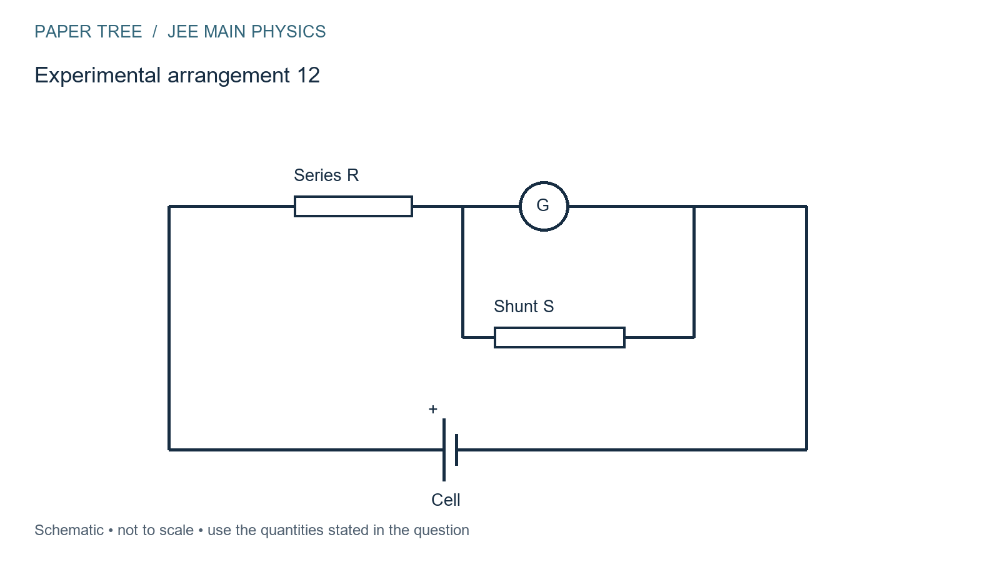
- A. 0.25 V
- B. 1 V
- C. 0.5 V
- D. -0.5 V
Answer and explanation
C. 0.5 V
The exact half-deflection equations give G=SR/(R−S)=111.1111111 Ω. Current per division is 9 × 10⁻⁵ A/div, so full-scale coil current is 0.0045 A. The ammeter shunt carries range−Ifs, giving 1.009081736 Ω. Coil power is 0.00225 W and the common coil/shunt voltage is 0.5 V.
Requested result: 0.5 V.
Find the galvanometer resistance. Use the readings in experimental panel 12. Choose the closest value.
Treat drawings as schematic. Apply zero-error and parallax corrections; instrument idealisations and experimental limits stated in the question take precedence.
- A. 55.56 Ω
- B. 222.2 Ω
- C. 111.1 Ω
- D. -111.1 Ω
Answer and explanation
C. 111.1 Ω
The half-deflection relation with finite R is G=SR/(R−S)=100000/900=111.111 Ω.
A student follows the procedure shown for Triangular prism. Which purpose–principle pair is correctly matched? Refer to experimental arrangement 14.
Treat drawings as schematic. Apply zero-error and parallax corrections; instrument idealisations and experimental limits stated in the question take precedence.
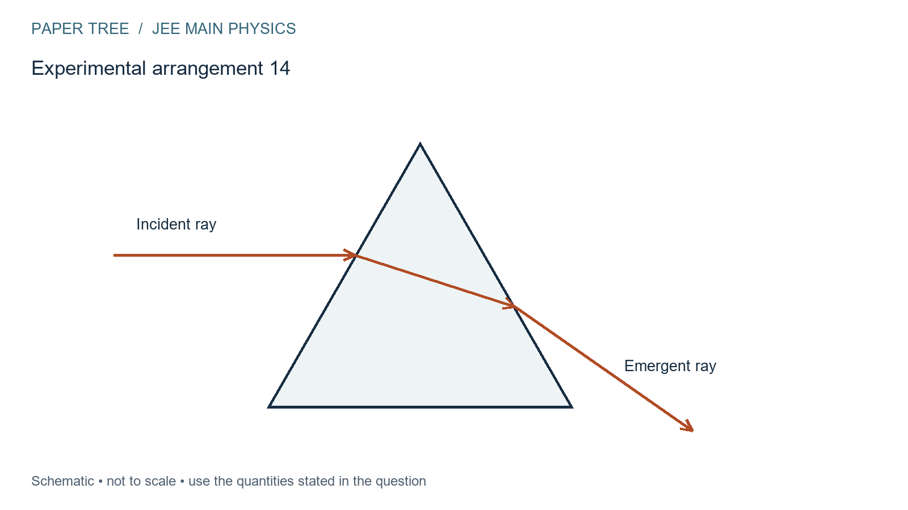
- A. variation of deviation angle with incidence angle; at minimum deviation the refracted ray is normal to both prism faces
- B. variation of deviation angle with incidence angle; minimum deviation occurs when the angle of emergence is zero
- C. variation of deviation angle with incidence angle; deviation increases monotonically with incidence angle
- D. variation of deviation angle with incidence angle; deviation first decreases, reaches a minimum and then increases
Answer and explanation
D. variation of deviation angle with incidence angle; deviation first decreases, reaches a minimum and then increases
The Triangular prism experiment studies variation of deviation angle with incidence angle, using the relation or principle: deviation first decreases, reaches a minimum and then increases.
Keeping all other measurements exact, find the maximum percentage uncertainty of resistivity for diameter uncertainty of one least count. Use the readings in experimental panel 02. Choose the closest value.
Treat drawings as schematic. Apply zero-error and parallax corrections; instrument idealisations and experimental limits stated in the question take precedence.
- A. 2.667 %
- B. 5.333 %
- C. -2.667 %
- D. 1.333 %
Answer and explanation
A. 2.667 %
Resistivity is proportional to d². Thus its maximum relative error is 2δd/d=2(0.01)/0.75, or 2.6667%.
A galvanometer in series with 1000 Ω across an ideal 2 V source deflects 20 divisions. A shunt of 100 Ω across the galvanometer reduces the deflection to one half, while the same series resistor and source remain connected. Do not assume the series resistance is infinite. The instrument’s full-scale deflection is 50 divisions. It will be converted to an ammeter with full-scale current 0.5 A. Find the shunt resistance needed for the specified ammeter range. Choose the closest value.
Treat drawings as schematic. Apply zero-error and parallax corrections; instrument idealisations and experimental limits stated in the question take precedence.
- A. 0.5045 Ω
- B. 2.018 Ω
- C. -1.009 Ω
- D. 1.009 Ω
Answer and explanation
D. 1.009 Ω
The exact half-deflection equations give G=SR/(R−S)=111.1111111 Ω. Current per division is 9 × 10⁻⁵ A/div, so full-scale coil current is 0.0045 A. The ammeter shunt carries range−Ifs, giving 1.009081736 Ω. Coil power is 0.00225 W and the common coil/shunt voltage is 0.5 V.
Requested result: 1.009 Ω.
A vernier has 20 divisions equal to 19 main-scale divisions; one main-scale division is 1 mm. With jaws closed its zero lies to the right and division 2 coincides. For a solid sphere the main-scale reading is 10 mm and division 2 coincides. The sphere’s mass is 4.186666667 g. The displacement of water measured independently is 0.5233333333 cm³. Use π=3.14. Treat the mass and displacement measurement as exact; the corrected diameter has maximum uncertainty one least count. If zero correction is omitted, find the signed percentage bias in inferred density relative to the corrected value. Choose the closest value.
Treat drawings as schematic. Apply zero-error and parallax corrections; instrument idealisations and experimental limits stated in the question take precedence.
- A. -2.941 %
- B. 2.941 %
- C. -1.47 %
- D. -5.882 %
Answer and explanation
A. -2.941 %
Least count is 1−19/20=0.05 mm. Subtract the positive zero error, giving d=10 mm and V=0.5233333333 cm³, consistent with the stated displacement. Density is 8 g/cm³. Since ρ∝d⁻³, its first-order percentage bound is 1.5% and absolute bound 0.12 g/cm³. Without correction the larger diameter lowers inferred density; signed bias=-2.940985207%.
Requested result: -2.941 %.
Which reading rule belongs to the measuring instrument shown, before applying its signed zero correction? Refer to experimental arrangement 02.
Treat drawings as schematic. Apply zero-error and parallax corrections; instrument idealisations and experimental limits stated in the question take precedence.
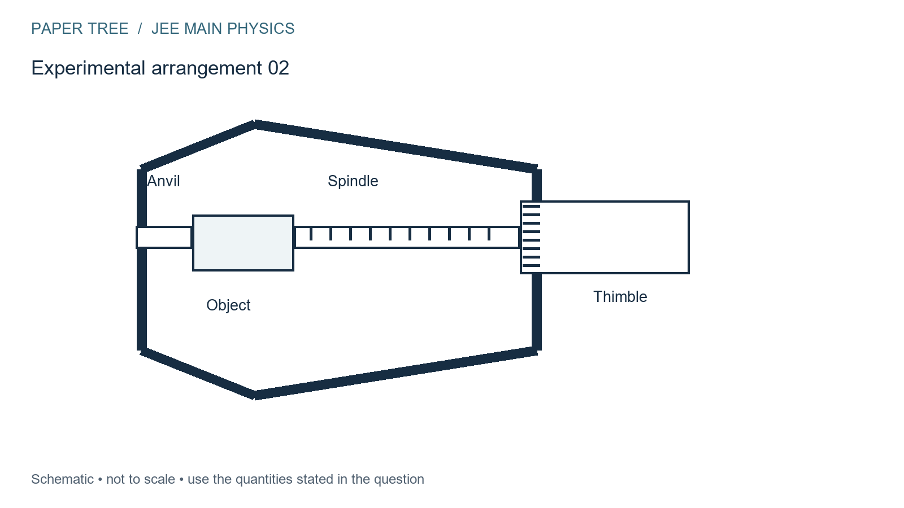
- A. Main-scale reading plus vernier coincidence multiplied by the vernier least count
- B. Final burette reading minus initial burette reading for delivered volume
- C. Sleeve reading plus thimble-division reading multiplied by pitch divided by the number of thimble divisions
- D. Number of full stopwatch revolutions times its period plus the remaining dial reading
Answer and explanation
C. Sleeve reading plus thimble-division reading multiplied by pitch divided by the number of thimble divisions
The anvil, spindle and rotating thimble identify a screw gauge. One complete revolution advances the spindle by the pitch; each thimble division advances it by pitch/N. The other options are valid reading rules for different instruments.
Find the total cell current after connecting the shunt. Use the readings in experimental panel 12. Choose the closest value.
Treat drawings as schematic. Apply zero-error and parallax corrections; instrument idealisations and experimental limits stated in the question take precedence.
- A. 0.0019 A
- B. -0.0019 A
- C. 0.00095 A
- D. 0.0038 A
Answer and explanation
A. 0.0019 A
The coil now carries 0.0009 A; its voltage is 0.1 V, so shunt current is 0.001 A. Total cell current=0.0019 A.
Find the rate of energy dissipation by viscous drag on the original sphere, using π=3.14. Use the readings in experimental panel 07. Choose the closest value.
Treat drawings as schematic. Apply zero-error and parallax corrections; instrument idealisations and experimental limits stated in the question take precedence.
- A. 5.338 × 10⁻⁸ W
- B. -1.068 × 10⁻⁷ W
- C. 2.135 × 10⁻⁷ W
- D. 1.068 × 10⁻⁷ W
Answer and explanation
D. 1.068 × 10⁻⁷ W
At terminal speed drag equals (4πr³/3)(ρs−ρl)g. Dissipation is drag times speed, 1.0676×10⁻⁷ W.
A vernier has 20 divisions equal to 19 main-scale divisions; one main-scale division is 1 mm. With jaws closed its zero lies to the right and division 3 coincides. For a solid sphere the main-scale reading is 12 mm and division ξ coincides. The sphere’s mass is 7.23456 g. The displacement of water measured independently is 0.90432 cm³. Use π=3.14. Treat the mass and displacement measurement as exact; the corrected diameter has maximum uncertainty one least count. In this arrangement, the following outcome is measured: the maximum absolute density uncertainty from the diameter reading = 0.1 g/cm³. Which listed positive value of ξ is consistent with that outcome?
Treat drawings as schematic. Apply zero-error and parallax corrections; instrument idealisations and experimental limits stated in the question take precedence.
Answer and explanation
C. 3
Use the coupled physical relations below. The missing input is ξ=3 in the units assigned in the stem.
Least count is 1−19/20=0.05 mm. Subtract the positive zero error, giving d=12 mm and V=0.90432 cm³, consistent with the stated displacement. Density is 8 g/cm³. Since ρ∝d⁻³, its first-order percentage bound is 1.25% and absolute bound 0.1 g/cm³. Without correction the larger diameter lowers inferred density; signed bias=-3.658167134%.
Which complete apparatus list matches the represented experimental arrangement? Refer to experimental arrangement 03.
Treat drawings as schematic. Apply zero-error and parallax corrections; instrument idealisations and experimental limits stated in the question take precedence.
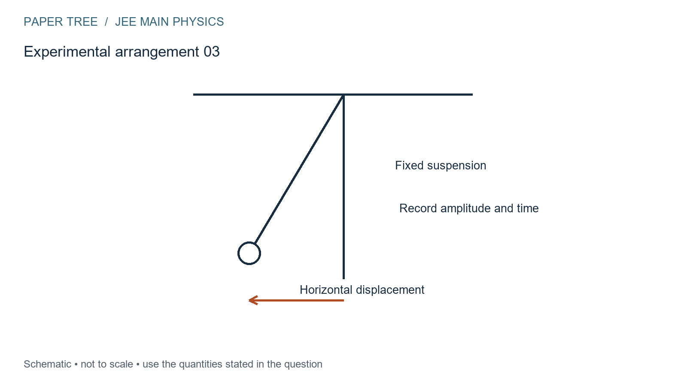
- A. metre scale, knife edge and suspended masses
- B. galvanometer, high resistance box, shunt box, cell and keys
- C. bob, light string, fixed support and amplitude scale
- D. Zener diode, regulated supply, series resistor, voltmeter and milliammeter
Answer and explanation
C. bob, light string, fixed support and amplitude scale
The essential components of the Simple pendulum setup are bob, light string, fixed support and amplitude scale.
Which top-to-bottom order of the three objects agrees with the drawing and places the marked object beyond the refracting slab along the viewing direction? Refer to experimental arrangement 15.
Treat drawings as schematic. Apply zero-error and parallax corrections; instrument idealisations and experimental limits stated in the question take precedence.
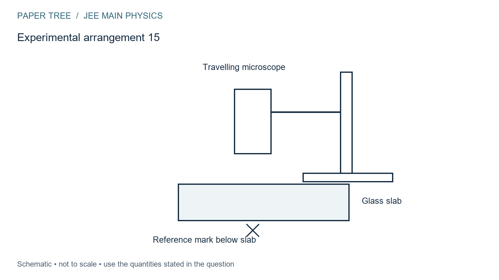
- A. Microscope, reference mark, glass slab
- B. Glass slab, microscope, reference mark
- C. Reference mark, glass slab, microscope
- D. Microscope, glass slab, reference mark
Answer and explanation
D. Microscope, glass slab, reference mark
The microscope is drawn above the glass slab, while the cross-shaped reference mark lies below it. The microscope therefore views that mark through the slab. The order must be read from this arrangement; moving the mark between the microscope and slab would remove the slab from its line of sight.
Find the operating Zener current with the stated series supply. Use the readings in experimental panel 17. Choose the closest value.
Treat drawings as schematic. Apply zero-error and parallax corrections; instrument idealisations and experimental limits stated in the question take precedence.
- A. 0.05125 A
- B. 0.02562 A
- C. -0.02562 A
- D. 0.01281 A
Answer and explanation
B. 0.02562 A
The local line is Vz=4.9+10Iz, with current in A. Kirchhoff gives 9=150Iz+Vz, hence Iz=4.1/160=0.025625 A; it lies within the measured segment.
Which complete apparatus list matches the represented experimental arrangement? Refer to experimental arrangement 05.
Treat drawings as schematic. Apply zero-error and parallax corrections; instrument idealisations and experimental limits stated in the question take precedence.
- A. inside/outside jaws and the depth rod
- B. prism, drawing board, pins, ruler and protractor
- C. reference wire, experimental wire, load and micrometer
- D. capillary tube, travelling microscope and water vessel
Answer and explanation
C. reference wire, experimental wire, load and micrometer
The essential components of the Young's modulus of a wire setup are reference wire, experimental wire, load and micrometer.
With the lens fixed, the object is moved to the 26 cm mark. At what bench mark should the real-image observation pin now be placed? Use the readings in experimental panel 13. Choose the closest value.
Treat drawings as schematic. Apply zero-error and parallax corrections; instrument idealisations and experimental limits stated in the question take precedence.
- A. 37 cm
- B. 74 cm
- C. 148 cm
- D. -74 cm
Answer and explanation
B. 74 cm
First infer f=12 cm. New object distance=50−26=24 cm=2f, so image distance=24 cm and bench mark=50+24=74 cm.
Which ordered pair of component labels identifies (first) the device designed to emit light under suitable forward bias and (second) the device that stores electrostatic energy? Refer to experimental arrangement 18.
Treat drawings as schematic. Apply zero-error and parallax corrections; instrument idealisations and experimental limits stated in the question take precedence.
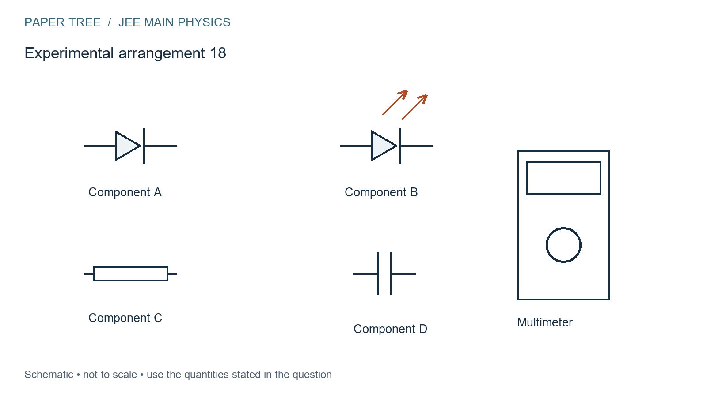
- A. B, D
- B. A, D
- C. B, C
- D. C, A
Answer and explanation
A. B, D
Component B is drawn with outward light arrows at a diode symbol, identifying an LED. Component D has two parallel separated plates, identifying a capacitor. A is an ordinary diode and C is a resistor.
A galvanometer in series with 2000 Ω across an ideal ξ V source deflects 30 divisions. A shunt of 200 Ω across the galvanometer reduces the deflection to one half, while the same series resistor and source remain connected. Do not assume the series resistance is infinite. The instrument’s full-scale deflection is 60 divisions. It will be converted to an ammeter with full-scale current 1 A. In this arrangement, the following outcome is measured: the shunt resistance needed for the specified ammeter range = 0.6016243858 Ω. Which listed positive value of ξ is consistent with that outcome?
Treat drawings as schematic. Apply zero-error and parallax corrections; instrument idealisations and experimental limits stated in the question take precedence.
Answer and explanation
D. 3
Use the coupled physical relations below. The missing input is ξ=3 in the units assigned in the stem.
The exact half-deflection equations give G=SR/(R−S)=222.2222222 Ω. Current per division is 4.5 × 10⁻⁵ A/div, so full-scale coil current is 0.0027 A. The ammeter shunt carries range−Ifs, giving 0.6016243858 Ω. Coil power is 0.00162 W and the common coil/shunt voltage is 0.6 V.
Which procedure is used to excite oscillations in the system depicted? Refer to experimental arrangement 08.
Treat drawings as schematic. Apply zero-error and parallax corrections; instrument idealisations and experimental limits stated in the question take precedence.
- A. Displace a suspended bob slightly and release it without a push
- B. Pull a stretched string sideways and release it while its ends remain fixed
- C. Tap one end of a supported metal rod to excite its longitudinal vibration
- D. Hold a vibrating tuning fork just above the upper opening without touching the tube
Answer and explanation
D. Hold a vibrating tuning fork just above the upper opening without touching the tube
The drawing places a tuning fork above the open air column. Its sound excites the column while avoiding direct contact. The other procedures excite the different oscillators named in those options.
Which force balance describes the steady state of the system depicted? Refer to experimental arrangement 07.
Treat drawings as schematic. Apply zero-error and parallax corrections; instrument idealisations and experimental limits stated in the question take precedence.
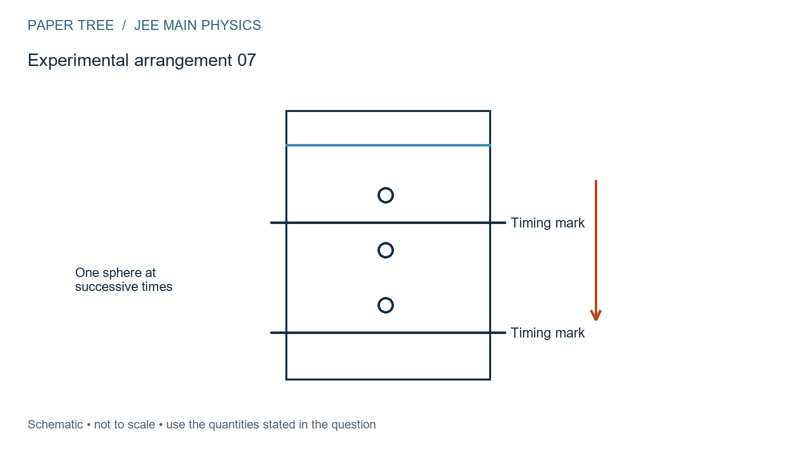
- A. For a freely floating object at rest, weight equals buoyancy
- B. For a block at rest on a horizontal table, weight equals the normal reaction
- C. Weight downward equals buoyancy plus viscous drag upward
- D. For a hanging bob at rest in air, weight equals string tension
Answer and explanation
C. Weight downward equals buoyancy plus viscous drag upward
The figure shows the same unsupported sphere at successive downward positions inside a liquid. At terminal falling speed, its net force is zero: weight is balanced jointly by buoyancy and upward viscous drag. None of the alternative supports or floating conditions is shown.
Which complete apparatus list matches the represented experimental arrangement? Refer to experimental arrangement 02.
Treat drawings as schematic. Apply zero-error and parallax corrections; instrument idealisations and experimental limits stated in the question take precedence.
- A. anvil, spindle, sleeve scale and thimble
- B. diode, regulated supply, resistor, voltmeter and milli/microammeter
- C. bob, light string, fixed support and amplitude scale
- D. cell, key, rheostat, ammeter, voltmeter and test wire
Answer and explanation
A. anvil, spindle, sleeve scale and thimble
The essential components of the Screw gauge setup are anvil, spindle, sleeve scale and thimble.
A galvanometer in series with 2000 Ω across an ideal 3 V source deflects 30 divisions. A shunt of ξ Ω across the galvanometer reduces the deflection to one half, while the same series resistor and source remain connected. Do not assume the series resistance is infinite. The instrument’s full-scale deflection is 60 divisions. It will be converted to an ammeter with full-scale current 1 A. In this arrangement, the following outcome is measured: the ammeter’s terminal voltage drop at full scale = 0.6 V. Which listed positive value of ξ is consistent with that outcome?
Treat drawings as schematic. Apply zero-error and parallax corrections; instrument idealisations and experimental limits stated in the question take precedence.
Answer and explanation
A. 200
Use the coupled physical relations below. The missing input is ξ=200 in the units assigned in the stem.
The exact half-deflection equations give G=SR/(R−S)=222.2222222 Ω. Current per division is 4.5 × 10⁻⁵ A/div, so full-scale coil current is 0.0027 A. The ammeter shunt carries range−Ifs, giving 0.6016243858 Ω. Coil power is 0.00162 W and the common coil/shunt voltage is 0.6 V.
Which procedure helps the particular measurement made with the vessel and immersed instruments shown? Refer to experimental arrangement 09.
Treat drawings as schematic. Apply zero-error and parallax corrections; instrument idealisations and experimental limits stated in the question take precedence.
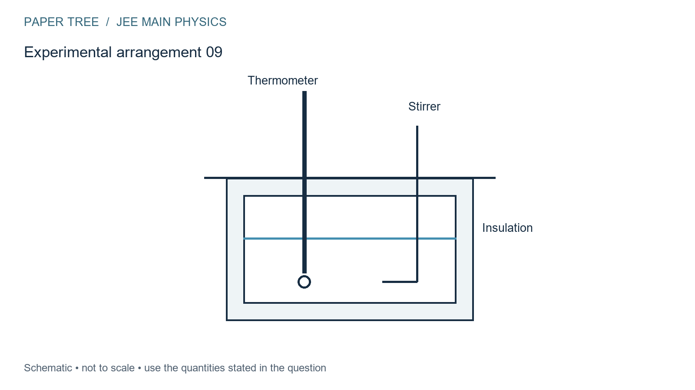
- A. Move the observation pin until its image has no relative parallax
- B. Transfer the hot specimen quickly, stir gently, and record the equilibrium temperature while limiting heat exchange
- C. Vary the length of the air column and listen for a resonance maximum
- D. Adjust the jockey along the bridge wire until the galvanometer reads zero
Answer and explanation
B. Transfer the hot specimen quickly, stir gently, and record the equilibrium temperature while limiting heat exchange
The drawing is an insulated calorimeter with a thermometer and stirrer. Prompt transfer and mixing help establish a meaningful equilibrium temperature with small environmental heat exchange. The alternatives concern optical, acoustic and electrical arrangements.
The displayed scale is initially balanced with its knife edge exactly under its own centre of gravity and m1=2m2. The point of suspension of m1 is shifted 1 cm toward the knife edge, remaining on its original side of the pivot. Which shift of m2 restores balance if the knife edge stays fixed? Refer to experimental arrangement 04.
Treat drawings as schematic. Apply zero-error and parallax corrections; instrument idealisations and experimental limits stated in the question take precedence.
- A. Move m2 2 cm to the right
- B. Move m2 1 cm to the left
- C. Move m2 2 cm to the left
- D. Move m2 1 cm to the right
Answer and explanation
C. Move m2 2 cm to the left
The drawing places m1 to the left of the knife edge and m2 to the right. Moving m1 toward the knife edge means moving it rightward by 1 cm. With the pivot fixed, the change in total gravitational moment is zero only if m1 Δx1+m2 Δx2=0, taking right as positive. Since m1=2m2 and Δx1=+1 cm, Δx2=−2 cm: m2 must move 2 cm to the left, toward the pivot. If the depicted mass positions were reversed, the same inward movement of m1 would instead require m2 to move rightward; the figure supplies the necessary orientation.
Where should the observation pin tip be placed to remove parallax with the real image in the ray arrangement shown? Refer to experimental arrangement 13.
Treat drawings as schematic. Apply zero-error and parallax corrections; instrument idealisations and experimental limits stated in the question take precedence.
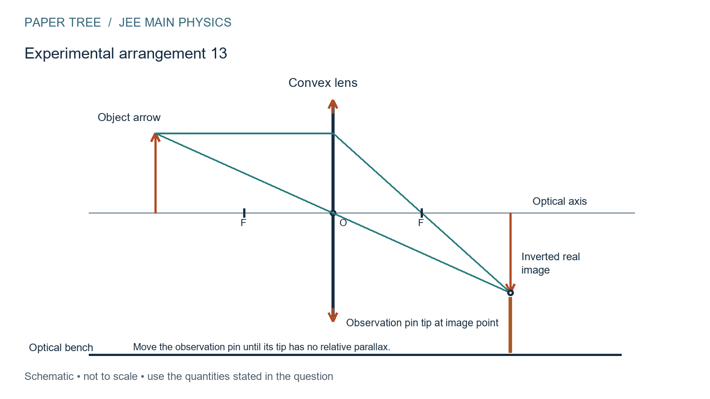
- A. To the left of the lens and above the optical axis
- B. To the right of the lens and above the optical axis
- C. To the left of the lens and below the optical axis
- D. To the right of the lens and below the optical axis
Answer and explanation
D. To the right of the lens and below the optical axis
The two emergent rays meet to the right of the lens below its optical axis, forming an inverted real image. The observation pin tip must coincide with that image point, not with the object, focus or optical centre.
Which measurement set is appropriate for determining the material property investigated with the displayed arrangement? Refer to experimental arrangement 09.
Treat drawings as schematic. Apply zero-error and parallax corrections; instrument idealisations and experimental limits stated in the question take precedence.
- A. Wire length, diameter, applied load and elastic extension
- B. Sphere radius and density, liquid density, and terminal falling speed
- C. Hot-body and water masses, their initial temperatures, final equilibrium temperature, and vessel heat capacity
- D. Fork frequency and the difference between successive resonant lengths
Answer and explanation
C. Hot-body and water masses, their initial temperatures, final equilibrium temperature, and vessel heat capacity
The thermometer, stirrer and insulation identify a calorimetric mixing experiment. Its heat balance uses the energy lost by the hot body and gained by water and vessel. The three other data sets belong respectively to elasticity, viscosity and sound-speed experiments.
Let J be the jockey contact on the uniform wire, and neglect end resistance. Using the gap positions and labels in the picture, what is X when the galvanometer shows zero? Refer to experimental arrangement 10.
Treat drawings as schematic. Apply zero-error and parallax corrections; instrument idealisations and experimental limits stated in the question take precedence.
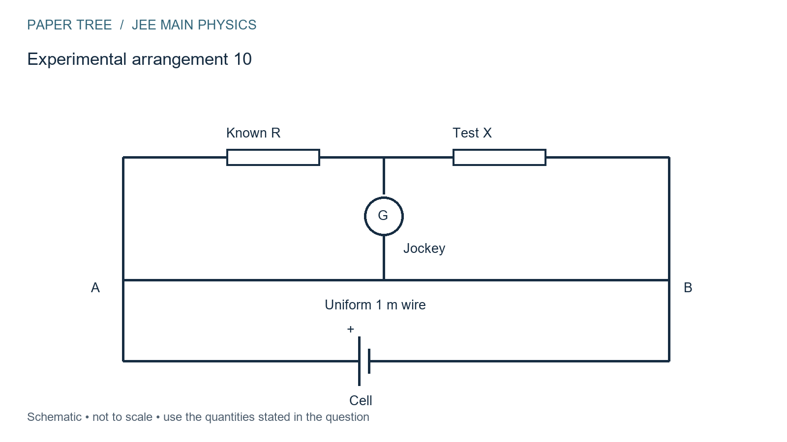
- A. R × AJ/JB
- B. R × JB/AJ
- C. R × AB/AJ
- D. R × AB/JB
Answer and explanation
B. R × JB/AJ
The known R is in the left gap next to A; X is in the right gap next to B. At null, R/X=AJ/JB, so X=R(JB/AJ). The orientation in this drawing matters: interchanging the two gap resistors would reverse the length ratio.
Find the Zener power at that operating point. Use the readings in experimental panel 17. Choose the closest value.
Treat drawings as schematic. Apply zero-error and parallax corrections; instrument idealisations and experimental limits stated in the question take precedence.
- A. 0.1321 W
- B. 0.2643 W
- C. -0.1321 W
- D. 0.06606 W
Answer and explanation
A. 0.1321 W
The load-line solution is Iz=0.025625 A and Vz=5.15625 V, giving P=VzIz=0.132129 W.
Which of these standard results applies to the optical element in this drawing? Refer to experimental arrangement 14.
Treat drawings as schematic. Apply zero-error and parallax corrections; instrument idealisations and experimental limits stated in the question take precedence.
- A. At minimum deviation, the internal refraction angles at the two sloping faces are equal
- B. The object and its real image lie at twice the focal length on opposite sides of a thin converging lens
- C. The emergent and incident rays from a parallel-sided slab are parallel
- D. The angle of incidence equals the angle of reflection at a plane mirror
Answer and explanation
A. At minimum deviation, the internal refraction angles at the two sloping faces are equal
The triangular element has two nonparallel refracting faces, so it is a prism. At minimum deviation its path is symmetric, with equal internal refraction angles (each A/2) and equal incidence and emergence angles. The alternatives describe different optical elements.
A vernier has 20 divisions equal to 19 main-scale divisions, and one main-scale division is 1 mm. For a solid cylinder, the indicated diameter has main-scale reading 10 mm and coincidence 5; the indicated height has main-scale reading 20 mm and coincidence 7. In a separate closed-jaw calibration the indicated positive zero error is 0.15 mm. Treat each of these three indicated readings as having an independent maximum error of half a least count. The same unknown actual zero error applies to both cylinder readings. The cylinder mass is (16.01±0.01) g. All values within these error bounds are admissible; use π=3.141592654 and ignore deformation. Find the largest density in g/cm³ consistent with these bounds, using the exact cylinder-volume formula rather than a first-order percentage approximation. Choose the closest value.
Use the idealisations, constants, geometry and sign conventions stated in this question. Any accompanying drawing is schematic.
- A. 9.89253 g/cm³
- B. 10.0223 g/cm³
- C. 9.96022 g/cm³
- D. 9.99745 g/cm³
Answer and explanation
B. 10.0223 g/cm³
The least count is 1−19/20=0.05 mm, so each indicated-reading error is bounded by 0.025 mm. Diameter indication is 10.25 mm and height indication is 20.35 mm. To maximize density, take mass 16.02 g, both indications at their lower bounds, and the common actual zero error at its upper bound 0.175 mm. These choices are simultaneously allowed. Thus d_min=10.05 mm and h_min=20.15 mm. The density maximum is 16.02/[π(10.05)²(20.15)/(4×1000)]=10.0222552 g/cm³. The common zero error is not an independent correction for each dimension.
Which operating procedure applies to the apparatus shown? Refer to experimental arrangement 03.
Treat drawings as schematic. Apply zero-error and parallax corrections; instrument idealisations and experimental limits stated in the question take precedence.
- A. Keep the test wire within its elastic limit while changing the suspended load
- B. Keep the capillary clean and vertical while observing its meniscus height
- C. Time the falling sphere between marks only after its speed is steady
- D. Release the bob from a small angle without a push and time several complete oscillations
Answer and explanation
D. Release the bob from a small angle without a push and time several complete oscillations
The single bob suspended from a fixed point forms a simple pendulum. Small amplitude and release without a push keep the motion close to the small-angle model; timing several oscillations reduces reaction-time error. The other procedures concern different drawings.
What is the direction of the gravitational turning effect of each labelled suspended mass about the knife edge in the drawing, viewed as shown? Refer to experimental arrangement 04.
Treat drawings as schematic. Apply zero-error and parallax corrections; instrument idealisations and experimental limits stated in the question take precedence.
- A. m1 clockwise; m2 anticlockwise
- B. m1 anticlockwise; m2 clockwise
- C. Both clockwise
- D. Both anticlockwise
Answer and explanation
B. m1 anticlockwise; m2 clockwise
m1 hangs to the left of the knife edge and pulls downward, producing an anticlockwise moment. m2 hangs to the right and pulls downward, producing a clockwise moment. Their locations in the diagram determine the signs.
Which current–voltage region is being investigated with the diode type and supply polarity actually drawn? Refer to experimental arrangement 17.
Treat drawings as schematic. Apply zero-error and parallax corrections; instrument idealisations and experimental limits stated in the question take precedence.
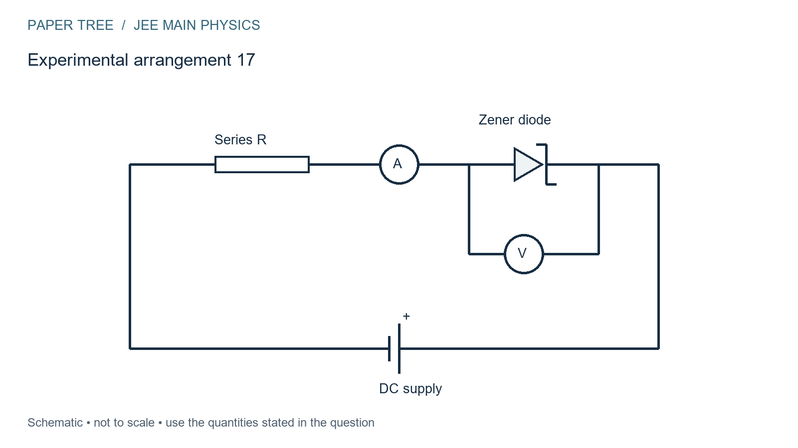
- A. Reverse breakdown of a Zener diode
- B. The forward-bias knee of a silicon junction diode
- C. The approximately linear bidirectional response of an ohmic resistor
- D. The charging transient of a capacitor under DC
Answer and explanation
A. Reverse breakdown of a Zener diode
The component is labelled Zener diode, and its cathode is connected toward the positive supply terminal on the right. This is the reverse-bias arrangement used to study Zener breakdown, with a series resistor limiting current.
The experimental arrangement shown is primarily used to determine or study: Refer to experimental arrangement 03.
Treat drawings as schematic. Apply zero-error and parallax corrections; instrument idealisations and experimental limits stated in the question take precedence.
- A. a diode, LED, resistor and capacitor in a mixed collection
- B. speed of sound in air
- C. dissipation of mechanical energy
- D. focal length of a convex mirror, concave mirror or convex lens
Answer and explanation
C. dissipation of mechanical energy
The labelled arrangement is the standard Simple pendulum setup used for dissipation of mechanical energy.
Which selection of observation interval suits the object and timing marks shown? Refer to experimental arrangement 07.
Treat drawings as schematic. Apply zero-error and parallax corrections; instrument idealisations and experimental limits stated in the question take precedence.
- A. Measure descent between the two marks only after the sphere has reached terminal speed, away from the vessel walls
- B. Measure the elapsed time for many small-angle oscillations past a fixed mean-position marker
- C. Measure the delay between sound pulses over a known separation in air
- D. Measure several wheel revolutions after its angular speed has become steady
Answer and explanation
A. Measure descent between the two marks only after the sphere has reached terminal speed, away from the vessel walls
The diagram shows one sphere at successive positions falling through liquid and two horizontal timing marks. The marks should bracket a terminal-speed interval away from wall effects. The other intervals apply to different moving systems.
The experimental arrangement shown is primarily used to determine or study: Refer to experimental arrangement 05.
Treat drawings as schematic. Apply zero-error and parallax corrections; instrument idealisations and experimental limits stated in the question take precedence.
- A. refractive index of a glass slab
- B. Young's modulus of the wire material
- C. resistivity of a wire material
- D. the thickness of a sheet or diameter of a wire
Answer and explanation
B. Young's modulus of the wire material
The labelled arrangement is the standard Young's modulus of a wire setup used for Young's modulus of the wire material.
For the diode in the drawing, which ordered pair identifies the terminal at higher potential (first) with the supply as drawn and (second) after reversing only the supply? Refer to experimental arrangement 16.
Treat drawings as schematic. Apply zero-error and parallax corrections; instrument idealisations and experimental limits stated in the question take precedence.
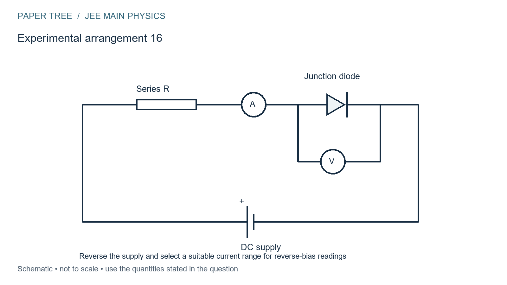
- A. Cathode, anode
- B. Anode, anode
- C. Cathode, cathode
- D. Anode, cathode
Answer and explanation
D. Anode, cathode
As drawn, the positive terminal is on the left and feeds the diode anode through the protective resistor and ammeter. Reversing the supply puts positive potential toward the cathode on the right. Keep the series protection and use a suitable reverse-current range.
Which parts should contact the outside of a cylinder when its external diameter is measured with the shown instrument? Refer to experimental arrangement 01.
Treat drawings as schematic. Apply zero-error and parallax corrections; instrument idealisations and experimental limits stated in the question take precedence.
- A. The facing surfaces of the lower pair of projections on the left
- B. The outward-facing tips of the upper pair of projections on the left
- C. The tip of the lower right extension and the instrument end face
- D. Two chosen graduation marks on the upper right bar
Answer and explanation
A. The facing surfaces of the lower pair of projections on the left
The lower jaw pair is labelled outer jaws and closes around an external object. The upper jaws expand against internal surfaces, while the depth rod measures a recess depth. Choosing the contact pair requires identifying the pictured components.
Which complete apparatus list matches the represented experimental arrangement? Refer to experimental arrangement 07.
Treat drawings as schematic. Apply zero-error and parallax corrections; instrument idealisations and experimental limits stated in the question take precedence.
- A. diode, regulated supply, resistor, voltmeter and milli/microammeter
- B. tuning fork, adjustable air column and water reservoir
- C. bob, light string, fixed support and amplitude scale
- D. tall liquid column, spherical body and timing marks
Answer and explanation
D. tall liquid column, spherical body and timing marks
The essential components of the Stokes' method setup are tall liquid column, spherical body and timing marks.
A galvanometer in series with ξ Ω across an ideal 3 V source deflects 30 divisions. A shunt of 200 Ω across the galvanometer reduces the deflection to one half, while the same series resistor and source remain connected. Do not assume the series resistance is infinite. The instrument’s full-scale deflection is 60 divisions. It will be converted to an ammeter with full-scale current 1 A. In this arrangement, the following outcome is measured: the coil heating power at full-scale ammeter current = 0.00162 W. Which listed positive value of ξ is consistent with that outcome?
Treat drawings as schematic. Apply zero-error and parallax corrections; instrument idealisations and experimental limits stated in the question take precedence.
- A. 4000
- B. 2000
- C. 3000
- D. 1000
Answer and explanation
B. 2000
Use the coupled physical relations below. The missing input is ξ=2000 in the units assigned in the stem.
The exact half-deflection equations give G=SR/(R−S)=222.2222222 Ω. Current per division is 4.5 × 10⁻⁵ A/div, so full-scale coil current is 0.0027 A. The ammeter shunt carries range−Ifs, giving 0.6016243858 Ω. Coil power is 0.00162 W and the common coil/shunt voltage is 0.6 V.
A student follows the procedure shown for Vernier calipers. Which purpose–principle pair is correctly matched? Refer to experimental arrangement 01.
Treat drawings as schematic. Apply zero-error and parallax corrections; instrument idealisations and experimental limits stated in the question take precedence.
- A. internal and external diameters and vessel depth; least count = one main-scale division minus one vernier-scale division
- B. internal and external diameters and vessel depth; least count = one main-scale division plus one vernier-scale division
- C. internal and external diameters and vessel depth; zero correction is always added regardless of the sign of zero error
- D. internal and external diameters and vessel depth; the measured reading is only the main-scale reading
Answer and explanation
A. internal and external diameters and vessel depth; least count = one main-scale division minus one vernier-scale division
The Vernier calipers experiment studies internal and external diameters and vessel depth, using the relation or principle: least count = one main-scale division minus one vernier-scale division.
A galvanometer in series with 1000 Ω across an ideal 2 V source deflects 20 divisions. A shunt of 100 Ω across the galvanometer reduces the deflection to one half, while the same series resistor and source remain connected. Do not assume the series resistance is infinite. The instrument’s full-scale deflection is 50 divisions. It will be converted to an ammeter with full-scale current 0.5 A. Find the coil heating power at full-scale ammeter current. Choose the closest value.
Treat drawings as schematic. Apply zero-error and parallax corrections; instrument idealisations and experimental limits stated in the question take precedence.
- A. 0.0045 W
- B. -0.00225 W
- C. 0.00225 W
- D. 0.001125 W
Answer and explanation
C. 0.00225 W
The exact half-deflection equations give G=SR/(R−S)=111.1111111 Ω. Current per division is 9 × 10⁻⁵ A/div, so full-scale coil current is 0.0045 A. The ammeter shunt carries range−Ifs, giving 1.009081736 Ω. Coil power is 0.00225 W and the common coil/shunt voltage is 0.5 V.
Requested result: 0.00225 W.
Where is the protective current-limiting component located in the displayed breakdown-measurement circuit? Refer to experimental arrangement 17.
Treat drawings as schematic. Apply zero-error and parallax corrections; instrument idealisations and experimental limits stated in the question take precedence.
- A. In the upper left part of the series loop
- B. In the small branch drawn below and parallel to the diode
- C. At the centre of the bottom branch
- D. At the upper right, between the two voltmeter connections
Answer and explanation
A. In the upper left part of the series loop
The drawing places Series R in the current path with the reverse-biased Zener. Its voltage drop limits current. An ideal ammeter has negligible resistance, an ideal voltmeter draws negligible current, and an ideal voltage source does not itself provide current limiting.
A cell of emf 2 V and negligible internal resistance drives a galvanometer through series resistance 1000 Ω. Its deflection is 20 divisions. Connecting a shunt 50 Ω directly across the galvanometer halves its deflection, while the series resistor remains connected. Deflection is proportional to coil current. Find the galvanometer resistance without assuming R is infinite. Choose the closest value.
Treat drawings as schematic. Apply zero-error and parallax corrections; instrument idealisations and experimental limits stated in the question take precedence.
- A. 50 Ω
- B. 52.63 Ω
- C. 26.32 Ω
- D. 47.62 Ω
Answer and explanation
B. 52.63 Ω
Before shunting Ig=E/(R+G). After shunting, coil current is Ig/2 and the shunt current is IgG/(2S). Applying the loop equation gives G=SR/(R−S)=52.63157895 Ω. Thus initial Ig=0.0019 A, figure of merit=9.5 × 10⁻⁵ A/division, and final total current=0.00195 A.
For the requested outcome — Find the galvanometer resistance without assuming R is infinite. — the result is 52.63 Ω.
A cell of emf 2 V and negligible internal resistance drives a galvanometer through series resistance 1000 Ω. Its deflection is 20 divisions. Connecting a shunt 50 Ω directly across the galvanometer halves its deflection, while the series resistor remains connected. Deflection is proportional to coil current. Find its figure of merit, defined as coil current per scale division. Choose the closest value.
Treat drawings as schematic. Apply zero-error and parallax corrections; instrument idealisations and experimental limits stated in the question take precedence.
- A. 4.75 × 10⁻⁵ A/division
- B. 0.00019 A/division
- C. 9.5 × 10⁻⁵ A/division
- D. 0.0001 A/division
Answer and explanation
C. 9.5 × 10⁻⁵ A/division
Before shunting Ig=E/(R+G). After shunting, coil current is Ig/2 and the shunt current is IgG/(2S). Applying the loop equation gives G=SR/(R−S)=52.63157895 Ω. Thus initial Ig=0.0019 A, figure of merit=9.5 × 10⁻⁵ A/division, and final total current=0.00195 A.
For the requested outcome — Find its figure of merit, defined as coil current per scale division. — the result is 9.5 × 10⁻⁵ A/division.
A cell of emf 2 V and negligible internal resistance drives a galvanometer through series resistance 1000 Ω. Its deflection is 20 divisions. Connecting a shunt 50 Ω directly across the galvanometer halves its deflection, while the series resistor remains connected. Deflection is proportional to coil current. Find the total current drawn from the cell after the shunt is connected. Choose the closest value.
Treat drawings as schematic. Apply zero-error and parallax corrections; instrument idealisations and experimental limits stated in the question take precedence.
- A. 0.00095 A
- B. 0.00195 A
- C. 0.0039 A
- D. 0.0019 A
Answer and explanation
B. 0.00195 A
Before shunting Ig=E/(R+G). After shunting, coil current is Ig/2 and the shunt current is IgG/(2S). Applying the loop equation gives G=SR/(R−S)=52.63157895 Ω. Thus initial Ig=0.0019 A, figure of merit=9.5 × 10⁻⁵ A/division, and final total current=0.00195 A.
For the requested outcome — Find the total current drawn from the cell after the shunt is connected. — the result is 0.00195 A.
A cell of emf 3 V and negligible internal resistance drives a galvanometer through series resistance ξ Ω. Its deflection is 30 divisions. Connecting a shunt 60 Ω directly across the galvanometer halves its deflection, while the series resistor remains connected. Deflection is proportional to coil current. The recorded value of the galvanometer resistance without assuming R is infinite is 62.5 Ω. Which listed positive value of ξ is consistent with this measurement?
Treat drawings as schematic. Apply zero-error and parallax corrections; instrument idealisations and experimental limits stated in the question take precedence.
- A. 1500
- B. 750
- C. 2250
- D. 3000
Answer and explanation
A. 1500
Use the physical relations below with the missing input ξ. The recorded value of the galvanometer resistance without assuming R is infinite gives ξ=1500 in the unit assigned to ξ in the question. Substitution checks the observation:
Before shunting Ig=E/(R+G). After shunting, coil current is Ig/2 and the shunt current is IgG/(2S). Applying the loop equation gives G=SR/(R−S)=62.5 Ω. Thus initial Ig=0.00192 A, figure of merit=6.4 × 10⁻⁵ A/division, and final total current=0.00196 A.
A cell of emf 3 V and negligible internal resistance drives a galvanometer through series resistance ξ Ω. Its deflection is 30 divisions. Connecting a shunt 60 Ω directly across the galvanometer halves its deflection, while the series resistor remains connected. Deflection is proportional to coil current. The recorded value of its figure of merit, defined as coil current per scale division is 6.4 × 10⁻⁵ A/division. Which listed positive value of ξ is consistent with this measurement?
Treat drawings as schematic. Apply zero-error and parallax corrections; instrument idealisations and experimental limits stated in the question take precedence.
- A. 750
- B. 1500
- C. 3000
- D. 2250
Answer and explanation
B. 1500
Use the physical relations below with the missing input ξ. Matching the recorded figure of merit (coil current per scale division) gives ξ=1500 in the unit assigned to ξ in the question. Substitution checks the observation:
Before shunting Ig=E/(R+G). After shunting, coil current is Ig/2 and the shunt current is IgG/(2S). Applying the loop equation gives G=SR/(R−S)=62.5 Ω. Thus initial Ig=0.00192 A, figure of merit=6.4 × 10⁻⁵ A/division, and final total current=0.00196 A.
A cell of emf 3 V and negligible internal resistance drives a galvanometer through series resistance 1500 Ω. Its deflection is 30 divisions. Connecting a shunt ξ Ω directly across the galvanometer halves its deflection, while the series resistor remains connected. Deflection is proportional to coil current. The recorded value of the total current drawn from the cell after the shunt is connected is 0.00196 A. Which listed positive value of ξ is consistent with this measurement?
Treat drawings as schematic. Apply zero-error and parallax corrections; instrument idealisations and experimental limits stated in the question take precedence.
Answer and explanation
C. 60
Use the physical relations below with the missing input ξ. The recorded value of the total current drawn from the cell after the shunt is connected gives ξ=60 in the unit assigned to ξ in the question. Substitution checks the observation:
Before shunting Ig=E/(R+G). After shunting, coil current is Ig/2 and the shunt current is IgG/(2S). Applying the loop equation gives G=SR/(R−S)=62.5 Ω. Thus initial Ig=0.00192 A, figure of merit=6.4 × 10⁻⁵ A/division, and final total current=0.00196 A.
A wire in the left gap of an ideal metre bridge balances against 6 Ω in the right gap at 40 cm from the left. Its length is 2 m. A screw gauge of pitch 0.5 mm with 50 divisions shows main-scale reading 0.5 mm and circular reading 22; its positive zero error is 2 divisions. Neglect bridge end corrections. Take π=3.14. In a separate trial, the same wire carries 2 A for 30 s with unchanged resistance. Find the wire resistivity. Choose the closest value.
Treat drawings as schematic. Apply zero-error and parallax corrections; instrument idealisations and experimental limits stated in the question take precedence.
- A. 1.154 × 10⁻⁶ Ω m
- B. 3.077 × 10⁻⁶ Ω m
- C. 7.693 × 10⁻⁷ Ω m
- D. 3.846 × 10⁻⁷ Ω m
Answer and explanation
C. 7.693 × 10⁻⁷ Ω m
The gauge least count is 0.01 mm; subtract its positive zero error to get diameter 0.7 mm. The bridge gives X=Rl/(100−l) =4 Ω. Then ρ=Xπd²/(4L)=7.693 × 10⁻⁷ Ω m. Ignoring the zero error changes the squared diameter and overestimates ρ by 5.795918367%. Swapping gaps replaces l by 100−l=60 cm. With resistance X found from the bridge, the separate trial produces I²Xt=480 J.
For the requested outcome — Find the wire resistivity. — the result is 7.693 × 10⁻⁷ Ω m.
A wire in the left gap of an ideal metre bridge balances against 6 Ω in the right gap at 40 cm from the left. Its length is 2 m. A screw gauge of pitch 0.5 mm with 50 divisions shows main-scale reading 0.5 mm and circular reading 22; its positive zero error is 2 divisions. Neglect bridge end corrections. Take π=3.14. In a separate trial, the same wire carries 2 A for 30 s with unchanged resistance. If the positive zero error were ignored while all other processing stayed correct, by what percentage would the resistivity be overestimated? Choose the closest value.
Treat drawings as schematic. Apply zero-error and parallax corrections; instrument idealisations and experimental limits stated in the question take precedence.
- A. 2.898 %
- B. 11.59 %
- C. 2.857 %
- D. 5.796 %
Answer and explanation
D. 5.796 %
The gauge least count is 0.01 mm; subtract its positive zero error to get diameter 0.7 mm. The bridge gives X=Rl/(100−l) =4 Ω. Then ρ=Xπd²/(4L)=7.693 × 10⁻⁷ Ω m. Ignoring the zero error changes the squared diameter and overestimates ρ by 5.795918367%. Swapping gaps replaces l by 100−l=60 cm. With resistance X found from the bridge, the separate trial produces I²Xt=480 J.
For the requested outcome — If the positive zero error were ignored while all other processing stayed correct, by what percentage would the resistivity be overestimated? — the result is 5.796 %.
A wire in the left gap of an ideal metre bridge balances against 6 Ω in the right gap at 40 cm from the left. Its length is 2 m. A screw gauge of pitch 0.5 mm with 50 divisions shows main-scale reading 0.5 mm and circular reading 22; its positive zero error is 2 divisions. Neglect bridge end corrections. Take π=3.14. In a separate trial, the same wire carries 2 A for 30 s with unchanged resistance. Find the heat generated in the wire during the separate current trial. Choose the closest value.
Treat drawings as schematic. Apply zero-error and parallax corrections; instrument idealisations and experimental limits stated in the question take precedence.
- A. 960 J
- B. 720 J
- C. 480 J
- D. 240 J
Answer and explanation
C. 480 J
The gauge least count is 0.01 mm; subtract its positive zero error to get diameter 0.7 mm. The bridge gives X=Rl/(100−l) =4 Ω. Then ρ=Xπd²/(4L)=7.693 × 10⁻⁷ Ω m. Ignoring the zero error changes the squared diameter and overestimates ρ by 5.795918367%. Swapping gaps replaces l by 100−l=60 cm. With resistance X found from the bridge, the separate trial produces I²Xt=480 J.
For the requested outcome — Find the heat generated in the wire during the separate current trial. — the result is 480 J.
A wire in the left gap of an ideal metre bridge balances against 4 Ω in the right gap at 60 cm from the left. Its length is ξ m. A screw gauge of pitch 0.5 mm with 50 divisions shows main-scale reading 0.5 mm and circular reading 32; its positive zero error is 2 divisions. Neglect bridge end corrections. Take π=3.14. In a separate trial, the same wire carries 0.5 A for 60 s with unchanged resistance. The recorded value of the wire resistivity is 1.0048 × 10⁻⁶ Ω m. Which listed positive value of ξ is consistent with this measurement?
Treat drawings as schematic. Apply zero-error and parallax corrections; instrument idealisations and experimental limits stated in the question take precedence.
Answer and explanation
A. 3
Use the physical relations below with the missing input ξ. The recorded value of the wire resistivity gives ξ=3 in the unit assigned to ξ in the question. Substitution checks the observation:
The gauge least count is 0.01 mm; subtract its positive zero error to get diameter 0.8 mm. The bridge gives X=Rl/(100−l) =6 Ω. Then ρ=Xπd²/(4L)=1.0048 × 10⁻⁶ Ω m. Ignoring the zero error changes the squared diameter and overestimates ρ by 5.0625%. Swapping gaps replaces l by 100−l=40 cm. With resistance X found from the bridge, the separate trial produces I²Xt=90 J.
In an ideal metre bridge, a uniform test wire X in the left gap balances a 6 Ω standard in the right gap at 40 cm from the left end. Connecting an unknown resistor S in parallel with X changes the balance point to 25 cm from the left. Disconnect S, stretch the test wire uniformly without loss of volume, and measure again at the original temperature; assume its resistivity is unchanged. Connect the stretched wire in series with the same S in the left gap and replace the right-gap standard with 13 Ω: the bridge now balances at 50 cm from the left. Before stretching, a screw gauge of pitch 0.50 mm and 50 circular divisions gave sleeve reading 0.50 mm and circular reading 32 for the wire diameter; its positive zero error was 2 circular divisions. The wire is cylindrical before and after stretching. Neglect contact and bridge end resistances. Find the wire diameter after stretching, in mm. Choose the closest value.
Use the idealisations, constants, geometry and sign conventions stated in this question. Any accompanying drawing is schematic.
- A. 0.533333 mm
- B. 0.8 mm
- C. 0.653197 mm
- D. 0.979796 mm
Answer and explanation
C. 0.653197 mm
Initially X=6×40/60=4 Ω. The parallel combination is 6×25/75=2 Ω, hence S=4 Ω. In the last balance the left-gap series combination equals 13 Ω, so the stretched wire has resistance 13−4=9 Ω. For fixed volume and resistivity, A is inversely proportional to length and R is proportional to length squared. Therefore L_new/L_old=√(9/4)=1.5. The gauge least count is 0.50/50=0.01 mm, and the corrected original diameter is 0.50+(32−2)×0.01=0.80 mm. Since diameter squared is inversely proportional to length, d_new=0.80/√1.5=0.653197265 mm.
A uniform metre-bridge wire has an unknown resistance per unit length. Its left end connection has resistance r_a and its right end connection has resistance r_b=0.003 Ω; both lie in series with the corresponding wire segments, while gap connections are ideal. An unknown resistor X in the left gap and a 4 Ω standard in the right gap balance at 61 cm from the left end of the uniform wire. After interchanging only the gap resistors, balance is at 40 cm from the same left end. Separately, X generates 90 J of heat while carrying 0.50 A for 60 s at unchanged resistance. The bridge wire diameter is measured with a screw gauge of pitch 0.5 mm and 50 circular divisions: main-scale reading 0.5 mm, circular reading 32, and positive zero error 2 divisions. Take π=3.14. Find the resistivity of the uniform bridge wire, in units of 10⁻⁸ Ω m. Choose the closest value.
Use the idealisations, constants, geometry and sign conventions stated in this question. Any accompanying drawing is schematic.
- A. 2.512 (10⁻⁸ Ω m)
- B. 5.27834 (10⁻⁸ Ω m)
- C. 10.048 (10⁻⁸ Ω m)
- D. 5.024 (10⁻⁸ Ω m)
Answer and explanation
D. 5.024 (10⁻⁸ Ω m)
The heating trial gives X=90/(0.50²×60)=6 Ω. Let q be wire resistance per cm, and a=r_a/q, b=r_b/q be equivalent end lengths in cm. The two balances give (61+a)/(39+b)=6/4 and (40+a)/(60+b)=4/6. Solving gives a=2 cm and b=3 cm; therefore q=0.003/3=0.001 Ω/cm=0.1 Ω/m. Gauge least count is 0.01 mm, and corrected diameter is 0.5+(32−2)0.01=0.80 mm. Hence ρ=(resistance/length)×area=0.1×3.14×(0.0008)²/4=5.024×10⁻⁸ Ω m.